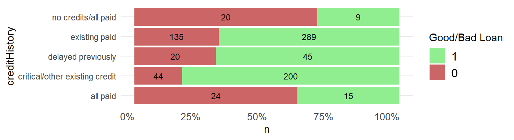
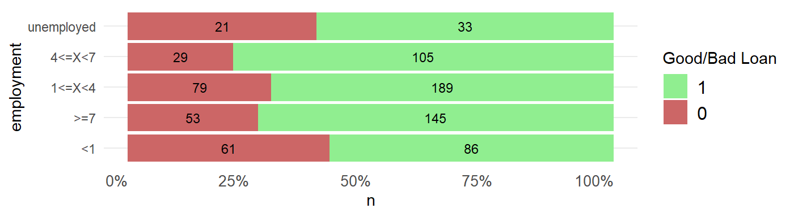
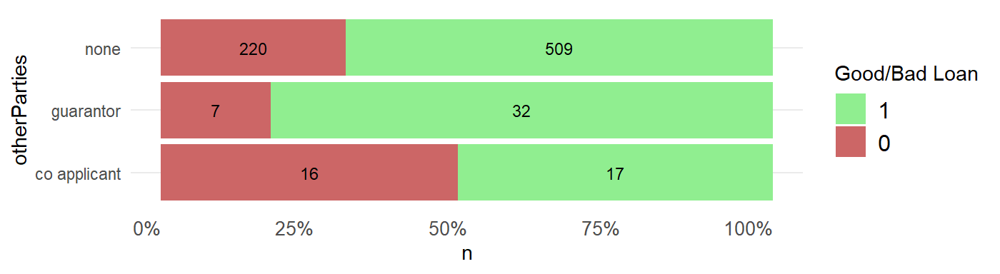
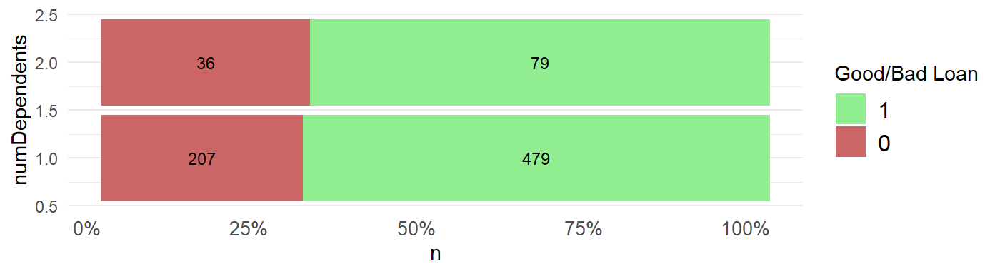
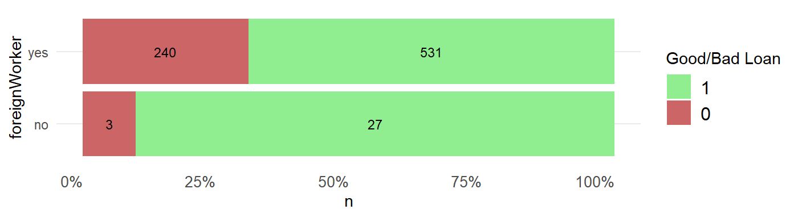
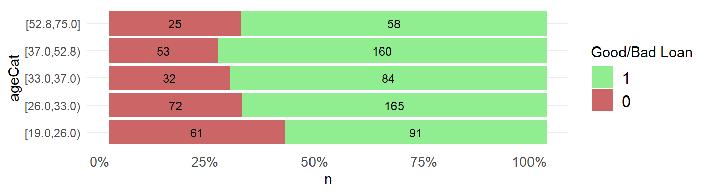
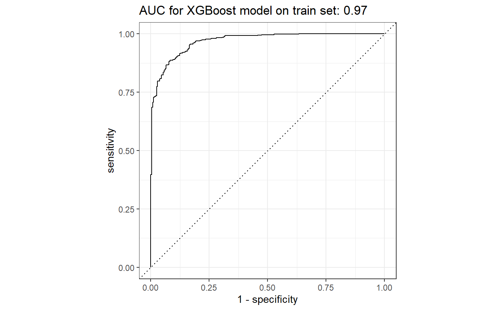

Corels vs XGBoost
2020-08-17
german_credit_data_example.RmdSummary
The performance of Corels on test data is compared to an XGboost walkthrough of tidymodels with drake.
Precision is an important metric for loan decisions (i.e. when a good loan is predicted, how often it is true). In this example, on unseen test data, XGBoost achieves 82% accuarcy (107 / (107 + 23)) vs. 78% (117 / (117 + 34)) for Corels. The null accuracy (always predicting the most frequent class of a good loan) is 71% (142 / (142 + 57).
While XGBoost performs better, the Corels rules are short and easy to interpret. Also, the accuracy achieved by the two methods is similar (XGBoost 72% vs. Corels 70%).
Background
Corels are ‘Certifiably Optimal RulE ListS’. They are short and simple human interpretable rule lists created on categorical data.
This analysis compares the performance of a simple Corels rule set to xgboost on German credit data.
The xgboost modelling of the german credit data is adapted from this excellent test of tidymodels with drake.
Data Preparation
Data source
The german credit data is downloaded and prepared.
library(tidymodels) library(tidypredict) library(corels) library(tidycorels) library(funModeling) library(pROC) library(easyalluvial) library(parcats) library(networkD3) library(formattable) library(visNetwork) clean_df <- read.table(file = "https://www.openml.org/data/get_csv/31/dataset_31_credit-g.arff", header = TRUE, sep = ",") %>% janitor::clean_names(., "small_camel") %>% dplyr::mutate(class = case_when(class == "bad" ~0, class == "good" ~ 1), class = as.factor(class))
Data Splitting
We first split the data into 80% training data and 20% test to evaluate the final model chosen. Folds of the training data are also created for cross-validation when building a classifier with XGBoost.
Data exploration
Let’s quickly explore the relationship between each predictor and the outcome of a good or bad loan.
We use the funModels package to bin or categorise numeric predictors to maximise the information gain ratio. From this we can more easily “semantically describe the relationship between the input and the target variable”.
We also store the cut points of the categorised continuous columns to be used later when preparing the data for Corels.
# https://blog.datascienceheroes.com/discretization-recursive-gain-ratio-maximization/ trainData_cat <- trainData %>% dplyr::mutate(dplyr:::across( .cols = c(duration, creditAmount,age), list(~ funModeling::discretize_rgr(input = ., target = class)), .names = "{col}Cat" )) vars <- base::colnames(dplyr::select(trainData_cat, dplyr::contains("Cat"))) age_cat_cuts <- trainData_cat %>% group_by(ageCat) %>% dplyr::summarise(min = min(age), .groups = 'drop') %>% dplyr::pull(min) duration_cat_cuts <- trainData_cat %>% group_by(durationCat) %>% dplyr::summarise(min = min(duration), .groups = 'drop') %>% dplyr::pull(min) amount_cat_cuts <- trainData_cat %>% group_by(creditAmountCat) %>% dplyr::summarise(min = min(creditAmount), .groups = 'drop') %>% dplyr::pull(min)
This function will plot each predictor against the outcome.
plot_fun <- function(cat) { cat <- rlang::ensym(cat) trainData_cat %>% dplyr::group_by(!!cat, class) %>% dplyr::summarise(n = n(), .groups = 'drop') %>% ggplot2::ggplot() + ggplot2::aes( x = !!cat, y = n, fill = forcats::fct_rev(class), label = n ) + ggplot2::geom_bar( position = "fill", stat = "identity" ) + ggplot2::geom_text( size = 3, position = position_fill(vjust = 0.5), colour = "black" ) + ggplot2::theme_minimal() + ggplot2::coord_flip() + ggplot2::scale_y_continuous(labels = scales::percent) + ggplot2::theme( panel.grid.major.x = element_blank(), panel.grid.minor.x = element_blank(), panel.border = element_blank(), strip.text.x = element_text(size = 10), axis.text.x = element_text( # angle = 60, hjust = 1, size = 10 ), legend.text = element_text(size = 12), legend.position = "right", legend.direction = "vertical", plot.title = element_text( size = 22, face = "bold" ) ) + ggplot2::scale_fill_manual("Good/Bad Loan",values=c("lightgreen","#CC6666")) }
Below we plot the relationships between each predictor and the outcome of a good or bad loan. Variables that have the most variation in the ratios of good and bad loans we would expect to feature in the classification models.
cols <- base::colnames(dplyr::select(trainData_cat, -duration, -age, -creditAmount)) # getting all the column names but removing the continuous columns that have been binned. cols <- cols[cols != "class"] # remove outcome column from list of column names plots <- purrr::map(cols, plot_fun) print(plots) #> [[1]]
#>
#> [[2]]
#>
#> [[3]]
#>
#> [[4]]
#>
#> [[5]]
#>
#> [[6]]
#>
#> [[7]]
#>
#> [[8]]
#>
#> [[9]]
#>
#> [[10]]#>
#> [[11]]
#>
#> [[12]]#>
#> [[13]]
#>
#> [[14]]#>
#> [[15]]
#>
#> [[16]]#>
#> [[17]]
#>
#> [[18]]#>
#> [[19]]
#>
#> [[20]]
CORELS
Prepare data for Corels
Using the recipes package in tidymodels we create a recipe that converts the three continuous value columns into categories, then convert each category into its own individual dummy 0/1 column.
# create the data preperation recipe credit_recipe <- recipes::recipe(class ~ ., data = trainData ) %>% # 1 Apply the funModeling::discretize_rgr() cut points to continuous columns that maximise the information gain ratio on the training data only recipes::step_mutate(age = base::cut(age, breaks = c("-inf", age_cat_cuts, "inf"), right = FALSE, dig.lab = 10)) %>% recipes::step_mutate(duration = base::cut(duration, breaks = c("-inf", duration_cat_cuts, "inf"), right = FALSE, dig.lab = 10)) %>% recipes::step_mutate(creditAmount = base::cut(creditAmount, breaks = c("-inf", amount_cat_cuts, "inf"), right = FALSE, dig.lab = 10)) %>% # 2 ensure column values that are words do not have spaces. This will form better dummy column names that tidycorels needs where the value each dummy column represents is shown by a single delimiter (e.g. the underscore step_dummy creates) recipes::step_mutate_at(recipes::all_predictors(), fn = list(~ base::gsub(pattern = "_", replacement = ".", x = .))) %>% # 3 convert each value of each predictor into its own 0/1 binary column recipes::step_mutate_at(recipes::all_predictors(), fn = list(~ as.factor(.))) %>% recipes::step_dummy(recipes::all_predictors(), one_hot = TRUE) %>% # 4 convert each value of the outcome column into its own 0/1 binary column recipes::step_mutate_at(recipes::all_outcomes(), fn = list(~ as.factor(.))) %>% # step_dummy requires variable values to be factors recipes::step_dummy(recipes::all_outcomes(), one_hot = TRUE) # Train the data preperation recipe on the training data credit_recipe_trained <- recipes::prep(credit_recipe, training = trainData, retain = TRUE) # Extract the train data with recipe applied (juice), and the same recipe applied to the test data (bake) data credit_train_preprocessed <- recipes::juice(credit_recipe_trained) credit_test_preprocessed <- recipes::bake(credit_recipe_trained, new_data = testData)
Run tidycorels
We can now run tidycorels::tidy_corels() function on the prepared training data. We could consider varying the regularization argument in corels. This value, “can be thought of as a penalty equivalent to misclassifying 1% of the data when increasing the length of a rule list by one association rule.” When the regulraization value is low many rules are created that could overfit to error in the training data. A higher value leads to fewer rules which may generalise better to unseen test data. Here we simply use the default value of 0.01 that leads to a small number of rules.
credit_train_model <- tidycorels::tidy_corels( df = credit_train_preprocessed, label_cols = c("class_X0", "class_X1"), value_delim = "_", run_bfs = TRUE, calculate_size = TRUE, run_curiosity = TRUE, regularization = 0.01, curiosity_policy = 3 )
Here are the Corels rules for predicting a good loan.
credit_train_model$corels_console_output[2:7] #> [1] "" #> [2] "" #> [3] "OPTIMAL RULE LIST" #> [4] "if ({creditHistory:no.credits.all.paid}) then ({class:X0})" #> [5] "else if ({creditHistory:critical.other.existing.credit}) then ({class:X1})" #> [6] "else if ({checkingStatus:X.0}) then ({class:X0})"
And we can view the Corels rules as a D3 network sankey diagram when applied to the training data.
networkD3::sankeyNetwork(# edges Links = credit_train_model$sankey_edges_df, Value = "value", Source = "source", Target = "target", # nodes Nodes = credit_train_model$sankey_nodes_df, NodeID = "label", # format fontSize = 12, nodeWidth = 40, sinksRight = TRUE )
And with some manipualation of the nodes and edges data, the rules can be viewed as a visNetwork visualisation.
rule_count <- base::nrow(credit_train_model$rule_performance_df) # extract the rule order (or levels) level <- credit_train_model$rule_performance_df %>% dplyr::mutate(level = dplyr::row_number()) %>% dplyr::rename(level_label = rule) %>% dplyr::select(level_label,level) # rename the edges edges <- credit_train_model$sankey_edges_df %>% dplyr::rename(from = source, to = target) %>% dplyr::mutate(title = value) # add the levels nodes <- credit_train_model$sankey_nodes_df %>% dplyr::rename(id = ID) %>% dplyr::mutate(level_label = stringi::stri_trim_both(stringi::stri_sub(label,1,-4))) %>% dplyr::left_join(level) %>% dplyr::mutate(level = case_when(is.na(level) ~ as.numeric(rule_count),TRUE ~as.numeric(level))) %>% dplyr::rename(title = level_label) visNetwork::visNetwork(nodes, edges, width = "100%") %>% visNetwork::visNodes(size = 12) %>% visNetwork::visEdges(arrows = "to") %>% visNetwork::visHierarchicalLayout(direction = "UD", levelSeparation = 80) %>% visNetwork::visInteraction(navigationButtons = TRUE) %>% visNetwork::visOptions(highlightNearest = list(enabled = T, hover = T), nodesIdSelection = T, collapse = TRUE)
A dataframe of just the true label, the columns used in the Corels rules, and the Corels predictions is returned. The columns have been ordered for you to work well in an alluvial plot.
p <- easyalluvial::alluvial_wide(credit_train_model$alluvial_df, NA_label = "not used", col_vector_flow =c("#CC6666","lightgreen"), auto_rotate_xlabs = FALSE) + ggplot2::labs( title = "Corels if-then-else logic applied to training data", subtitle = " From truth (target_X1) to Corels classification (corels_label)" ) + ggplot2::scale_x_discrete(guide = guide_axis(n.dodge=2)) p

We can also create an interactive version of the alluvial plot.
Corels performance on test
Next we use the function tidycorels::corels_predict() to apply the Corels rules created on the training data to the test data that has already been pre-processed using the recipe created on the training data.
credit_test_predict <- tidycorels::predict_corels( model = credit_train_model, new_df = credit_test_preprocessed )
We can now use the test data that has been labelled using the Corels rules and compare this to the true label to create a confusion matrix along with performance statistics.
conf_matrix <- credit_test_predict$new_df_labelled %>% yardstick::conf_mat( truth = "class_X1", estimate = "corels_label" ) ggplot2::autoplot(conf_matrix, "heatmap")
summary(conf_matrix, event_level = "second") %>% dplyr:::mutate(.estimate = round(.estimate, digits = 3)) %>% dplyr::select(.metric, .estimate) %>% dplyr::filter(.metric %in% c("accuracy","bal_accuracy","precision", "recall", "f_meas")) %>% dplyr::mutate(.estimate = formattable::color_tile("white", "orange")(.estimate)) %>% kableExtra::kable(escape = F, caption = "Corels Test data Performance") %>% kableExtra::kable_styling("hover", full_width = F)
| .metric | .estimate |
|---|---|
| accuracy | 0.704 |
| bal_accuracy | 0.614 |
| precision | 0.775 |
| recall | 0.824 |
| f_meas | 0.799 |
Because, “It is worse to class a customer as good when they are bad (5), than it is to class a customer as bad when they are good (1).” (see), precision is a useful metric. It measures the proportion of True Positives (117 labelled good loans that were actually good), out of the True Positives plus False Positives (34 labelled good loans that were actually bad). This is the bottom row of the confusion matrix: 117 / (117 + 34) = 0.775.
By inspecting the alluvial plot on test data we can easily see where and why the rules have succeeded or failed to label the unseen test data correctly.
p <- credit_test_predict$alluvial_df %>% easyalluvial::alluvial_wide(stratum_width = 0.2, NA_label = "not used", col_vector_flow =c("#CC6666","lightgreen")) + ggplot2::theme_minimal() + ggplot2::labs( title = "Corels if-then-else logic applied to test data", subtitle = " From truth (far left column) to Corels classification (far right column)" ) + ggplot2::scale_x_discrete(guide = guide_axis(n.dodge=2)) p
We can also create an interactive version of the alluvial plot.
parcats::parcats(p = p, data_input = credit_test_predict$alluvial_df, marginal_histograms = FALSE, hoveron = 'dimension', hoverinfo = 'count', labelfont = list(size = 11) )
A data frame of the performance of each rule is also provided. This shows us that one of the weaker rules is creditHistory_no.credits.all.paid.
credit_test_predict$rule_performance_df %>% dplyr::mutate(rule_perc_correct = round(rule_perc_correct,1)) %>% dplyr::mutate(rule_perc_correct = formattable::color_tile("white", "orange")(rule_perc_correct)) %>% dplyr::mutate(rule_fire_count = formattable::color_tile("white", "lightblue")(rule_fire_count)) %>% kableExtra::kable(escape = F, caption = "Corels Performance for each rule in order") %>% kableExtra::kable_styling("hover", full_width = F)
| rule | rule_fire_count | rule_correct | rule_perc_correct |
|---|---|---|---|
| creditHistory_no.credits.all.paid | 11 | 5 | 45.5 |
| creditHistory_critical.other.existing.credit | 49 | 43 | 87.8 |
| checkingStatus_X.0 | 37 | 18 | 48.6 |
| else | 102 | 74 | 72.5 |
If we examine rule success on the training data the weaker creditHistory_no.credits.all.paid does perform better in the training data. However, we usually cannot use test data to improve a classifier without risking overfitting (though one option would be to use all of the data to build Corels rules with cross validation).
credit_train_model$rule_performance_df %>% dplyr::mutate(rule_perc_correct = round(rule_perc_correct,1)) %>% dplyr::mutate(rule_perc_correct = formattable::color_tile("white", "orange")(rule_perc_correct)) %>% dplyr::mutate(rule_fire_count = formattable::color_tile("white", "lightblue")(rule_fire_count)) %>% kableExtra::kable(escape = F, caption = "Corels Performance for each rule in order") %>% kableExtra::kable_styling("hover", full_width = F)
| rule | rule_fire_count | rule_correct | rule_perc_correct |
|---|---|---|---|
| creditHistory_no.credits.all.paid | 29 | 20 | 69.0 |
| creditHistory_critical.other.existing.credit | 244 | 200 | 82.0 |
| checkingStatus_X.0 | 157 | 89 | 56.7 |
| else | 371 | 281 | 75.7 |
XGBboost
Next we try XGBoost that is a Gradient Boosting Method:
“GBMs build an ensemble of shallow trees in sequence with each tree learning and improving on the previous one. Although shallow trees by themselves are rather weak predictive models, they can be “boosted” to produce a powerful “committee” that, when appropriately tuned, is often hard to beat with other algorithms." From “Hands on Machine Learning with R”
All of the modelling steps below are adapated from the excellent tidymodels with drake.
Data recipe
In the data recipe only the categorical columns are one-hot encoded into one column per value.
xgb_pre_proc <- recipes::recipe(class ~ ., data = trainData) %>% recipes::step_dummy(recipes::all_nominal(),-recipes::all_outcomes(),one_hot = TRUE)
Define model and its parameters
Here we define which boost tree parameters will be tuned later and which we fix.
xgb_mod <- parsnip::boost_tree( mtry = tune::tune(), trees = 500, min_n = tune::tune(), tree_depth = tune::tune(), learn_rate = 0.01, sample_size = tune::tune() ) %>% parsnip::set_mode("classification") %>% parsnip::set_engine("xgboost")
Add recipe and model to a workflow
The workflow is therefore the data preparation recipe and the model specification (including its type and which parameters are to be tuned later).
xgb_wflow <- workflows::workflow() %>% workflows::add_recipe(xgb_pre_proc) %>% workflows::add_model(xgb_mod)
Define model parameters
Let’s now define the parameters by looking at the workflow
xgb_wflow %>% dials::parameters() #> Collection of 4 parameters for tuning #> #> id parameter type object class #> mtry mtry nparam[?] #> min_n min_n nparam[+] #> tree_depth tree_depth nparam[+] #> sample_size sample_size nparam[+] #> #> Model parameters needing finalization: #> # Randomly Selected Predictors ('mtry') #> #> See `?dials::finalize` or `?dials::update.parameters` for more information.
mtry is the number of predictors that will be randomly sampled at each split when creating the tree models. This is set to range between 40% of the features to all of the features.
feat_count <- ncol(xgb_pre_proc %>% recipes::prep() %>% recipes::juice() %>% dplyr::select(-class)) mtry_min <- base::floor(feat_count * 0.4) xgb_params <- xgb_wflow %>% dials::parameters() %>% stats::update( mtry = dials::mtry(range = c(mtry_min, feat_count)), sample_size = dials::sample_prop(c(0.5, 1)), tree_depth = dials::tree_depth(range = c(4L, 10L)) )
Now that the range of the parameters has been set, a grid of possible values between those ranges can be created with dials::grid_max_entropy(), “to construct parameter grids that try to cover the parameter space such that any portion of the space has an observed combination that is not too far from it.”
set.seed(1645) xgb_grid <- xgb_params %>% dials::grid_max_entropy(size = 10) %>% dplyr::mutate(sample_size = as.double(sample_size)) xgb_grid #> # A tibble: 10 x 4 #> mtry min_n tree_depth sample_size #> <int> <int> <int> <dbl> #> 1 35 40 8 0.854 #> 2 59 5 6 0.625 #> 3 27 5 4 0.998 #> 4 27 35 7 0.601 #> 5 49 37 6 0.548 #> 6 40 26 9 0.678 #> 7 31 35 5 0.856 #> 8 32 8 8 0.581 #> 9 36 10 9 0.837 #> 10 47 13 4 0.524
Tune XGBoost model
We can now tune the model by searching the grid of parameters.
tune_xgb_grid <- tune::tune_grid(xgb_wflow, resamples = folds, grid = xgb_grid, param_info = xgb_params, metrics = yardstick::metric_set(roc_auc), control = tune::control_grid( verbose = TRUE, save_pred = TRUE ) ) tune_xgb_grid #> # 5-fold cross-validation #> # A tibble: 5 x 5 #> splits id .metrics .notes .predictions #> <list> <chr> <list> <list> <list> #> 1 <split [640/161]> Fold1 <tibble [10 x 7]> <tibble [0 x 1]> <tibble [1,610 x 8~ #> 2 <split [641/160]> Fold2 <tibble [10 x 7]> <tibble [0 x 1]> <tibble [1,600 x 8~ #> 3 <split [641/160]> Fold3 <tibble [10 x 7]> <tibble [0 x 1]> <tibble [1,600 x 8~ #> 4 <split [641/160]> Fold4 <tibble [10 x 7]> <tibble [0 x 1]> <tibble [1,600 x 8~ #> 5 <split [641/160]> Fold5 <tibble [10 x 7]> <tibble [0 x 1]> <tibble [1,600 x 8~
Tune with iterative Bayesian optimisation
“..iterative search can be used to analyze the existing tuning parameter results and then predict which tuning parameters to try next.” see
set.seed(1600) xgb_bayes_tune <- tune::tune_bayes(xgb_wflow, resamples = folds, iter = 5L, param_info = xgb_params, metrics = yardstick::metric_set(roc_auc), initial = tune_xgb_grid, control = tune::control_bayes( verbose = TRUE, save_pred = TRUE, no_improve = 5L ) )
Select best model parameters
We can select the hyperparameters giving the best results with tune::select_best() according to our chosen metric (area under the ROC curve).
best_xgb <- xgb_bayes_tune %>% tune::select_best(metric = "roc_auc") best_xgb #> # A tibble: 1 x 4 #> mtry min_n tree_depth sample_size #> <int> <int> <int> <dbl> #> 1 60 2 6 0.502
We now use tune::finalize_workflow() to generate a workflow object that adds the best performing model.
best_xgb_wfl <- tune::finalize_workflow(xgb_wflow, parameters = best_xgb ) best_xgb_wfl #> == Workflow ======================================================================================================================== #> Preprocessor: Recipe #> Model: boost_tree() #> #> -- Preprocessor -------------------------------------------------------------------------------------------------------------------- #> 1 Recipe Step #> #> * step_dummy() #> #> -- Model --------------------------------------------------------------------------------------------------------------------------- #> Boosted Tree Model Specification (classification) #> #> Main Arguments: #> mtry = 60 #> trees = 500 #> min_n = 2 #> tree_depth = 6 #> learn_rate = 0.01 #> sample_size = 0.501994616130763 #> #> Computational engine: xgboost
And then generate a fitted model from that workflow on the training data.
final_fit <- best_xgb_wfl %>% parsnip::fit(data = trainData) final_fit #> == Workflow [trained] ============================================================================================================== #> Preprocessor: Recipe #> Model: boost_tree() #> #> -- Preprocessor -------------------------------------------------------------------------------------------------------------------- #> 1 Recipe Step #> #> * step_dummy() #> #> -- Model --------------------------------------------------------------------------------------------------------------------------- #> ##### xgb.Booster #> raw: 645.9 Kb #> call: #> xgboost::xgb.train(params = list(eta = 0.01, max_depth = 6L, #> gamma = 0, colsample_bytree = 0.983606557377049, min_child_weight = 2L, #> subsample = 0.501994616130763), data = x, nrounds = 500, #> watchlist = wlist, verbose = 0, objective = "binary:logistic", #> nthread = 1) #> params (as set within xgb.train): #> eta = "0.01", max_depth = "6", gamma = "0", colsample_bytree = "0.983606557377049", min_child_weight = "2", subsample = "0.501994616130763", objective = "binary:logistic", nthread = "1", validate_parameters = "TRUE" #> xgb.attributes: #> niter #> callbacks: #> cb.evaluation.log() #> # of features: 61 #> niter: 500 #> nfeatures : 61 #> evaluation_log: #> iter training_error #> 1 0.239700 #> 2 0.220974 #> --- #> 499 0.092385 #> 500 0.092385
Variable importance
The {vip} package provides variable importance plots. Further methods are well described in the Interpretable machine learning book.
final_fit %>% workflows::pull_workflow_fit() %>% vip::vip( geom = "col", num_features = 12L, include_type = TRUE )

XGBoost performance on train
First we plot the ROC curve for all cut points of the probability of a good loan.
xgb_train_preds <- final_fit %>% stats::predict( new_data = trainData, type = "prob" ) %>% dplyr::bind_cols(trainData %>% dplyr::select(class)) # Generate the full ROC curve xgb_train_preds$class <- as.factor(xgb_train_preds$class) xgb_roc_curve <- yardstick::roc_curve(xgb_train_preds, truth = class, .pred_1, event_level = 'second' ) # Get the AUC value and plot the curve tune::autoplot(xgb_roc_curve) + labs( title = sprintf( "AUC for XGBoost model on train set: %.2f", yardstick::roc_auc(xgb_train_preds, truth = class, .pred_1, event_level = 'second' ) %>% dplyr::pull(.estimate) ) )

To create a confusion matrix requires we select a cut off in the probability to label each record. We use pROC::coords from the pROC package to select the best threshold.
# calculate best threshold for classification label my_roc <- pROC::roc( predictor = xgb_train_preds$.pred_1, response = xgb_train_preds$class ) threshold <- pROC::coords(my_roc, "best", ret = "threshold", transpose = TRUE) %>% as.double() xgb_train_preds <- xgb_train_preds %>% dplyr::mutate(.pred_class = dplyr::case_when( .pred_1 >= threshold ~ 1, TRUE ~ 0 )) %>% dplyr::mutate(.pred_class = as.factor(.pred_class)) # confusion matrix cmat_train <- yardstick::conf_mat(xgb_train_preds, truth = "class", estimate = ".pred_class" ) ggplot2::autoplot(cmat_train, "heatmap")
The confusion matrix can be used to generate the performance statistics below. All metrics are impressively high on the training data and superior to Corels. However, this could be due to overfitting. We can now use the test data to test for over fitting.
summary(cmat_train, event_level = "second") %>% dplyr:::mutate(.estimate = round(.estimate, digits = 3)) %>% dplyr::select(.metric, .estimate) %>% dplyr::filter(.metric %in% c("accuracy","bal_accuracy","precision", "recall", "f_meas")) %>% dplyr::mutate(.estimate = formattable::color_tile("white", "orange")(.estimate)) %>% kableExtra::kable(escape = F, caption = "Corels Test data Performance") %>% kableExtra::kable_styling("hover", full_width = F)
| .metric | .estimate |
|---|---|
| accuracy | 0.896 |
| bal_accuracy | 0.902 |
| precision | 0.961 |
| recall | 0.887 |
| f_meas | 0.923 |
XGBoost performance on test
In contrast to the training data, the test set performance is much lower for all metrics.
An important evaluation metric is precision. This is because incorrectly labelling bad loans as good has the greatest cost.
xgb_test_preds <- final_fit %>% stats::predict( new_data = testData, type = "prob" ) %>% dplyr::bind_cols(testData %>% dplyr::select(class)) xgb_test_preds <- xgb_test_preds %>% dplyr::mutate(.pred_class = dplyr::case_when( .pred_1 >= threshold ~ 1, TRUE ~ 0 )) %>% dplyr::mutate(.pred_class = as.factor(.pred_class)) # Generate the full ROC curve xgb_test_preds$class <- as.factor(xgb_test_preds$class) xgb_roc_curve <- yardstick::roc_curve(xgb_test_preds, truth = class, .pred_1, event_level = 'second' ) # Get the AUC value and plot the curve tune::autoplot(xgb_roc_curve) + labs( title = sprintf( "AUC for XGBoost model on test set: %.2f", yardstick::roc_auc(xgb_test_preds, truth = class, .pred_1, event_level = 'second' ) %>% dplyr::pull(.estimate) ) )

# confusion matrix cmat_test <- yardstick::conf_mat(xgb_test_preds, truth = "class", estimate = ".pred_class" ) ggplot2::autoplot(cmat_test, "heatmap")

summary(cmat_test, event_level = "second") %>% dplyr:::mutate(.estimate = round(.estimate, digits = 3)) %>% dplyr::select(.metric, .estimate) %>% dplyr::filter(.metric %in% c("accuracy","bal_accuracy","precision", "recall", "f_meas")) %>% dplyr::mutate(.estimate = formattable::color_tile("white", "orange")(.estimate)) %>% kableExtra::kable(escape = F, caption = "Corels Test data Performance") %>% kableExtra::kable_styling("hover", full_width = F)
| .metric | .estimate |
|---|---|
| accuracy | 0.709 |
| bal_accuracy | 0.675 |
| precision | 0.823 |
| recall | 0.754 |
| f_meas | 0.787 |
XGBoost underlying complex rules
The tidypredict package..
…reads the model, extracts the components needed to calculate the prediction, and then creates an R formula that can be translated into SQL
Then tidypredict::tidypredict_fit() is used to return the formula in R dplyr::case_when() code required to re-create the classifiation of the XGBoost model. Note how complex this formula is in contrast to the simple Corels rules.
tidypredict::tidypredict_fit(final_fit$fit$fit) #> 1 - 1/(1 + exp(0 + case_when(creditAmount >= 7829 & checkingStatus_no.checking >= #> 0.5 ~ 0, creditAmount >= 9340.5 & (installmentCommitment < #> 2.5 | is.na(installmentCommitment)) & (checkingStatus_no.checking < #> 0.5 | is.na(checkingStatus_no.checking)) ~ -0.00666666683, #> (otherParties_none < 0.5 | is.na(otherParties_none)) & (creditAmount < #> 7829 | is.na(creditAmount)) & checkingStatus_no.checking >= #> 0.5 ~ 0.00333333341, savingsStatus_X100..X.500 >= 0.5 & #> (creditAmount < 9340.5 | is.na(creditAmount)) & (installmentCommitment < #> 2.5 | is.na(installmentCommitment)) & (checkingStatus_no.checking < #> 0.5 | is.na(checkingStatus_no.checking)) ~ -0.00333333341, #> age >= 55.5 & checkingStatus_X.0 >= 0.5 & installmentCommitment >= #> 2.5 & (checkingStatus_no.checking < 0.5 | is.na(checkingStatus_no.checking)) ~ #> 0.00999999978, otherPaymentPlans_none >= 0.5 & otherParties_none >= #> 0.5 & (creditAmount < 7829 | is.na(creditAmount)) & checkingStatus_no.checking >= #> 0.5 ~ 0.0179999992, personalStatus_male.div.sep >= 0.5 & #> (savingsStatus_X100..X.500 < 0.5 | is.na(savingsStatus_X100..X.500)) & #> (creditAmount < 9340.5 | is.na(creditAmount)) & (installmentCommitment < #> 2.5 | is.na(installmentCommitment)) & (checkingStatus_no.checking < #> 0.5 | is.na(checkingStatus_no.checking)) ~ 0.00153846154, #> personalStatus_female.div.dep.mar >= 0.5 & (duration < 19.5 | #> is.na(duration)) & (checkingStatus_X.0 < 0.5 | is.na(checkingStatus_X.0)) & #> installmentCommitment >= 2.5 & (checkingStatus_no.checking < #> 0.5 | is.na(checkingStatus_no.checking)) ~ 0.00105263153, #> savingsStatus_no.known.savings >= 0.5 & duration >= 19.5 & #> (checkingStatus_X.0 < 0.5 | is.na(checkingStatus_X.0)) & #> installmentCommitment >= 2.5 & (checkingStatus_no.checking < #> 0.5 | is.na(checkingStatus_no.checking)) ~ 0.00999999978, #> job_high.qualif.self.emp.mgmt >= 0.5 & (age < 55.5 | is.na(age)) & #> checkingStatus_X.0 >= 0.5 & installmentCommitment >= #> 2.5 & (checkingStatus_no.checking < 0.5 | is.na(checkingStatus_no.checking)) ~ #> 0.00461538462, purpose_radio.tv >= 0.5 & (otherPaymentPlans_none < #> 0.5 | is.na(otherPaymentPlans_none)) & otherParties_none >= #> 0.5 & (creditAmount < 7829 | is.na(creditAmount)) & checkingStatus_no.checking >= #> 0.5 ~ 0.0146666663, (age < 26.5 | is.na(age)) & (personalStatus_male.div.sep < #> 0.5 | is.na(personalStatus_male.div.sep)) & (savingsStatus_X100..X.500 < #> 0.5 | is.na(savingsStatus_X100..X.500)) & (creditAmount < #> 9340.5 | is.na(creditAmount)) & (installmentCommitment < #> 2.5 | is.na(installmentCommitment)) & (checkingStatus_no.checking < #> 0.5 | is.na(checkingStatus_no.checking)) ~ 0.00476190448, #> age >= 26.5 & (personalStatus_male.div.sep < 0.5 | is.na(personalStatus_male.div.sep)) & #> (savingsStatus_X100..X.500 < 0.5 | is.na(savingsStatus_X100..X.500)) & #> (creditAmount < 9340.5 | is.na(creditAmount)) & (installmentCommitment < #> 2.5 | is.na(installmentCommitment)) & (checkingStatus_no.checking < #> 0.5 | is.na(checkingStatus_no.checking)) ~ 0.0145098036, #> (age < 38.5 | is.na(age)) & (personalStatus_female.div.dep.mar < #> 0.5 | is.na(personalStatus_female.div.dep.mar)) & (duration < #> 19.5 | is.na(duration)) & (checkingStatus_X.0 < 0.5 | #> is.na(checkingStatus_X.0)) & installmentCommitment >= #> 2.5 & (checkingStatus_no.checking < 0.5 | is.na(checkingStatus_no.checking)) ~ #> 0.014482758, age >= 38.5 & (personalStatus_female.div.dep.mar < #> 0.5 | is.na(personalStatus_female.div.dep.mar)) & (duration < #> 19.5 | is.na(duration)) & (checkingStatus_X.0 < 0.5 | #> is.na(checkingStatus_X.0)) & installmentCommitment >= #> 2.5 & (checkingStatus_no.checking < 0.5 | is.na(checkingStatus_no.checking)) ~ #> 0.00285714283, (purpose_radio.tv < 0.5 | is.na(purpose_radio.tv)) & #> (savingsStatus_no.known.savings < 0.5 | is.na(savingsStatus_no.known.savings)) & #> duration >= 19.5 & (checkingStatus_X.0 < 0.5 | is.na(checkingStatus_X.0)) & #> installmentCommitment >= 2.5 & (checkingStatus_no.checking < #> 0.5 | is.na(checkingStatus_no.checking)) ~ -0.0123809529, #> purpose_radio.tv >= 0.5 & (savingsStatus_no.known.savings < #> 0.5 | is.na(savingsStatus_no.known.savings)) & duration >= #> 19.5 & (checkingStatus_X.0 < 0.5 | is.na(checkingStatus_X.0)) & #> installmentCommitment >= 2.5 & (checkingStatus_no.checking < #> 0.5 | is.na(checkingStatus_no.checking)) ~ 0.00333333341, #> (age < 28.5 | is.na(age)) & (job_high.qualif.self.emp.mgmt < #> 0.5 | is.na(job_high.qualif.self.emp.mgmt)) & (age < #> 55.5 | is.na(age)) & checkingStatus_X.0 >= 0.5 & installmentCommitment >= #> 2.5 & (checkingStatus_no.checking < 0.5 | is.na(checkingStatus_no.checking)) ~ #> -0.00256410264, age >= 28.5 & (job_high.qualif.self.emp.mgmt < #> 0.5 | is.na(job_high.qualif.self.emp.mgmt)) & (age < #> 55.5 | is.na(age)) & checkingStatus_X.0 >= 0.5 & installmentCommitment >= #> 2.5 & (checkingStatus_no.checking < 0.5 | is.na(checkingStatus_no.checking)) ~ #> -0.0133333337, (creditAmount < 2436 | is.na(creditAmount)) & #> (purpose_radio.tv < 0.5 | is.na(purpose_radio.tv)) & #> (otherPaymentPlans_none < 0.5 | is.na(otherPaymentPlans_none)) & #> otherParties_none >= 0.5 & (creditAmount < 7829 | is.na(creditAmount)) & #> checkingStatus_no.checking >= 0.5 ~ 0, creditAmount >= #> 2436 & (purpose_radio.tv < 0.5 | is.na(purpose_radio.tv)) & #> (otherPaymentPlans_none < 0.5 | is.na(otherPaymentPlans_none)) & #> otherParties_none >= 0.5 & (creditAmount < 7829 | is.na(creditAmount)) & #> checkingStatus_no.checking >= 0.5 ~ 0.00666666683) + #> case_when(creditAmount >= 7491.5 & (checkingStatus_no.checking < #> 0.5 | is.na(checkingStatus_no.checking)) ~ -0.0127276061, #> otherParties_guarantor >= 0.5 & (creditAmount < 7491.5 | #> is.na(creditAmount)) & (checkingStatus_no.checking < #> 0.5 | is.na(checkingStatus_no.checking)) ~ 0.0147089288, #> (age < 34.5 | is.na(age)) & (otherPaymentPlans_none < #> 0.5 | is.na(otherPaymentPlans_none)) & checkingStatus_no.checking >= #> 0.5 ~ 0.0110575957, age >= 34.5 & (otherPaymentPlans_none < #> 0.5 | is.na(otherPaymentPlans_none)) & checkingStatus_no.checking >= #> 0.5 ~ -5.33333114e-05, (creditAmount < 5873.5 | is.na(creditAmount)) & #> otherPaymentPlans_none >= 0.5 & checkingStatus_no.checking >= #> 0.5 ~ 0.0177128669, creditAmount >= 5873.5 & otherPaymentPlans_none >= #> 0.5 & checkingStatus_no.checking >= 0.5 ~ 0.00727399765, #> (creditAmount < 683.5 | is.na(creditAmount)) & (creditAmount < #> 979.5 | is.na(creditAmount)) & (otherParties_guarantor < #> 0.5 | is.na(otherParties_guarantor)) & (creditAmount < #> 7491.5 | is.na(creditAmount)) & (checkingStatus_no.checking < #> 0.5 | is.na(checkingStatus_no.checking)) ~ 0.00247379555, #> (age < 34.5 | is.na(age)) & creditAmount >= 683.5 & (creditAmount < #> 979.5 | is.na(creditAmount)) & (otherParties_guarantor < #> 0.5 | is.na(otherParties_guarantor)) & (creditAmount < #> 7491.5 | is.na(creditAmount)) & (checkingStatus_no.checking < #> 0.5 | is.na(checkingStatus_no.checking)) ~ -0.0138419494, #> age >= 34.5 & creditAmount >= 683.5 & (creditAmount < #> 979.5 | is.na(creditAmount)) & (otherParties_guarantor < #> 0.5 | is.na(otherParties_guarantor)) & (creditAmount < #> 7491.5 | is.na(creditAmount)) & (checkingStatus_no.checking < #> 0.5 | is.na(checkingStatus_no.checking)) ~ -0.00462127849, #> (age < 29.5 | is.na(age)) & (duration < 14.5 | is.na(duration)) & #> creditAmount >= 979.5 & (otherParties_guarantor < #> 0.5 | is.na(otherParties_guarantor)) & (creditAmount < #> 7491.5 | is.na(creditAmount)) & (checkingStatus_no.checking < #> 0.5 | is.na(checkingStatus_no.checking)) ~ 0.0047888034, #> age >= 29.5 & (duration < 14.5 | is.na(duration)) & creditAmount >= #> 979.5 & (otherParties_guarantor < 0.5 | is.na(otherParties_guarantor)) & #> (creditAmount < 7491.5 | is.na(creditAmount)) & (checkingStatus_no.checking < #> 0.5 | is.na(checkingStatus_no.checking)) ~ 0.0130853783, #> (checkingStatus_X.0 < 0.5 | is.na(checkingStatus_X.0)) & #> duration >= 14.5 & creditAmount >= 979.5 & (otherParties_guarantor < #> 0.5 | is.na(otherParties_guarantor)) & (creditAmount < #> 7491.5 | is.na(creditAmount)) & (checkingStatus_no.checking < #> 0.5 | is.na(checkingStatus_no.checking)) ~ 0.00560016837, #> checkingStatus_X.0 >= 0.5 & duration >= 14.5 & creditAmount >= #> 979.5 & (otherParties_guarantor < 0.5 | is.na(otherParties_guarantor)) & #> (creditAmount < 7491.5 | is.na(creditAmount)) & (checkingStatus_no.checking < #> 0.5 | is.na(checkingStatus_no.checking)) ~ -0.00314171356) + #> case_when(creditHistory_all.paid >= 0.5 & (duration < 28.5 | #> is.na(duration)) & (checkingStatus_no.checking < 0.5 | #> is.na(checkingStatus_no.checking)) ~ -0.00597897451, #> duration >= 43.5 & duration >= 28.5 & (checkingStatus_no.checking < #> 0.5 | is.na(checkingStatus_no.checking)) ~ -0.0123142917, #> (ownTelephone_none < 0.5 | is.na(ownTelephone_none)) & #> (otherPaymentPlans_none < 0.5 | is.na(otherPaymentPlans_none)) & #> checkingStatus_no.checking >= 0.5 ~ -0.00124825316, #> ownTelephone_none >= 0.5 & (otherPaymentPlans_none < #> 0.5 | is.na(otherPaymentPlans_none)) & checkingStatus_no.checking >= #> 0.5 ~ 0.00922770333, (purpose_business < 0.5 | is.na(purpose_business)) & #> otherPaymentPlans_none >= 0.5 & checkingStatus_no.checking >= #> 0.5 ~ 0.0170009509, purpose_business >= 0.5 & otherPaymentPlans_none >= #> 0.5 & checkingStatus_no.checking >= 0.5 ~ 0.00801799912, #> (duration < 34.5 | is.na(duration)) & (installmentCommitment < #> 3.5 | is.na(installmentCommitment)) & (duration < #> 43.5 | is.na(duration)) & duration >= 28.5 & (checkingStatus_no.checking < #> 0.5 | is.na(checkingStatus_no.checking)) ~ 0.00150439737, #> duration >= 34.5 & (installmentCommitment < 3.5 | is.na(installmentCommitment)) & #> (duration < 43.5 | is.na(duration)) & duration >= #> 28.5 & (checkingStatus_no.checking < 0.5 | is.na(checkingStatus_no.checking)) ~ #> 0.00854847021, (creditHistory_existing.paid < 0.5 | #> is.na(creditHistory_existing.paid)) & installmentCommitment >= #> 3.5 & (duration < 43.5 | is.na(duration)) & duration >= #> 28.5 & (checkingStatus_no.checking < 0.5 | is.na(checkingStatus_no.checking)) ~ #> -0.00929833017, creditHistory_existing.paid >= 0.5 & #> installmentCommitment >= 3.5 & (duration < 43.5 | #> is.na(duration)) & duration >= 28.5 & (checkingStatus_no.checking < #> 0.5 | is.na(checkingStatus_no.checking)) ~ -0.00283126859, #> (creditAmount < 2258 | is.na(creditAmount)) & (otherPaymentPlans_none < #> 0.5 | is.na(otherPaymentPlans_none)) & (checkingStatus_X.0 < #> 0.5 | is.na(checkingStatus_X.0)) & (creditHistory_all.paid < #> 0.5 | is.na(creditHistory_all.paid)) & (duration < #> 28.5 | is.na(duration)) & (checkingStatus_no.checking < #> 0.5 | is.na(checkingStatus_no.checking)) ~ -0.00161316805, #> creditAmount >= 2258 & (otherPaymentPlans_none < 0.5 | #> is.na(otherPaymentPlans_none)) & (checkingStatus_X.0 < #> 0.5 | is.na(checkingStatus_X.0)) & (creditHistory_all.paid < #> 0.5 | is.na(creditHistory_all.paid)) & (duration < #> 28.5 | is.na(duration)) & (checkingStatus_no.checking < #> 0.5 | is.na(checkingStatus_no.checking)) ~ 0.00764265889, #> (creditAmount < 1207.5 | is.na(creditAmount)) & otherPaymentPlans_none >= #> 0.5 & (checkingStatus_X.0 < 0.5 | is.na(checkingStatus_X.0)) & #> (creditHistory_all.paid < 0.5 | is.na(creditHistory_all.paid)) & #> (duration < 28.5 | is.na(duration)) & (checkingStatus_no.checking < #> 0.5 | is.na(checkingStatus_no.checking)) ~ 0.0169268288, #> creditAmount >= 1207.5 & otherPaymentPlans_none >= 0.5 & #> (checkingStatus_X.0 < 0.5 | is.na(checkingStatus_X.0)) & #> (creditHistory_all.paid < 0.5 | is.na(creditHistory_all.paid)) & #> (duration < 28.5 | is.na(duration)) & (checkingStatus_no.checking < #> 0.5 | is.na(checkingStatus_no.checking)) ~ 0.010017965, #> (purpose_new.car < 0.5 | is.na(purpose_new.car)) & (creditHistory_critical.other.existing.credit < #> 0.5 | is.na(creditHistory_critical.other.existing.credit)) & #> checkingStatus_X.0 >= 0.5 & (creditHistory_all.paid < #> 0.5 | is.na(creditHistory_all.paid)) & (duration < #> 28.5 | is.na(duration)) & (checkingStatus_no.checking < #> 0.5 | is.na(checkingStatus_no.checking)) ~ 0.00270894752, #> purpose_new.car >= 0.5 & (creditHistory_critical.other.existing.credit < #> 0.5 | is.na(creditHistory_critical.other.existing.credit)) & #> checkingStatus_X.0 >= 0.5 & (creditHistory_all.paid < #> 0.5 | is.na(creditHistory_all.paid)) & (duration < #> 28.5 | is.na(duration)) & (checkingStatus_no.checking < #> 0.5 | is.na(checkingStatus_no.checking)) ~ -0.00944140274, #> (personalStatus_female.div.dep.mar < 0.5 | is.na(personalStatus_female.div.dep.mar)) & #> creditHistory_critical.other.existing.credit >= 0.5 & #> checkingStatus_X.0 >= 0.5 & (creditHistory_all.paid < #> 0.5 | is.na(creditHistory_all.paid)) & (duration < #> 28.5 | is.na(duration)) & (checkingStatus_no.checking < #> 0.5 | is.na(checkingStatus_no.checking)) ~ 0.0128771774, #> personalStatus_female.div.dep.mar >= 0.5 & creditHistory_critical.other.existing.credit >= #> 0.5 & checkingStatus_X.0 >= 0.5 & (creditHistory_all.paid < #> 0.5 | is.na(creditHistory_all.paid)) & (duration < #> 28.5 | is.na(duration)) & (checkingStatus_no.checking < #> 0.5 | is.na(checkingStatus_no.checking)) ~ 0.00460760482) + #> case_when(creditAmount >= 8760.5 & (checkingStatus_no.checking < #> 0.5 | is.na(checkingStatus_no.checking)) ~ -0.0131484885, #> (purpose_radio.tv < 0.5 | is.na(purpose_radio.tv)) & #> (otherPaymentPlans_none < 0.5 | is.na(otherPaymentPlans_none)) & #> checkingStatus_no.checking >= 0.5 ~ -0.00116313482, #> purpose_radio.tv >= 0.5 & (otherPaymentPlans_none < 0.5 | #> is.na(otherPaymentPlans_none)) & checkingStatus_no.checking >= #> 0.5 ~ 0.0112196077, (creditAmount < 5892.5 | is.na(creditAmount)) & #> otherPaymentPlans_none >= 0.5 & checkingStatus_no.checking >= #> 0.5 ~ 0.0166990794, creditAmount >= 5892.5 & otherPaymentPlans_none >= #> 0.5 & checkingStatus_no.checking >= 0.5 ~ 0.00640440406, #> otherPaymentPlans_bank >= 0.5 & installmentCommitment >= #> 3.5 & (creditAmount < 8760.5 | is.na(creditAmount)) & #> (checkingStatus_no.checking < 0.5 | is.na(checkingStatus_no.checking)) ~ #> -0.0112606427, installmentCommitment >= 2.5 & creditAmount >= #> 3998 & (installmentCommitment < 3.5 | is.na(installmentCommitment)) & #> (creditAmount < 8760.5 | is.na(creditAmount)) & (checkingStatus_no.checking < #> 0.5 | is.na(checkingStatus_no.checking)) ~ -0.00761172269, #> (duration < 11 | is.na(duration)) & (otherPaymentPlans_bank < #> 0.5 | is.na(otherPaymentPlans_bank)) & installmentCommitment >= #> 3.5 & (creditAmount < 8760.5 | is.na(creditAmount)) & #> (checkingStatus_no.checking < 0.5 | is.na(checkingStatus_no.checking)) ~ #> 0.0127758486, (housing_rent < 0.5 | is.na(housing_rent)) & #> (personalStatus_female.div.dep.mar < 0.5 | is.na(personalStatus_female.div.dep.mar)) & #> (creditAmount < 3998 | is.na(creditAmount)) & (installmentCommitment < #> 3.5 | is.na(installmentCommitment)) & (creditAmount < #> 8760.5 | is.na(creditAmount)) & (checkingStatus_no.checking < #> 0.5 | is.na(checkingStatus_no.checking)) ~ 0.0166545082, #> housing_rent >= 0.5 & (personalStatus_female.div.dep.mar < #> 0.5 | is.na(personalStatus_female.div.dep.mar)) & #> (creditAmount < 3998 | is.na(creditAmount)) & (installmentCommitment < #> 3.5 | is.na(installmentCommitment)) & (creditAmount < #> 8760.5 | is.na(creditAmount)) & (checkingStatus_no.checking < #> 0.5 | is.na(checkingStatus_no.checking)) ~ 0.00384166837, #> (creditAmount < 1384.5 | is.na(creditAmount)) & personalStatus_female.div.dep.mar >= #> 0.5 & (creditAmount < 3998 | is.na(creditAmount)) & #> (installmentCommitment < 3.5 | is.na(installmentCommitment)) & #> (creditAmount < 8760.5 | is.na(creditAmount)) & (checkingStatus_no.checking < #> 0.5 | is.na(checkingStatus_no.checking)) ~ -0.00512185926, #> creditAmount >= 1384.5 & personalStatus_female.div.dep.mar >= #> 0.5 & (creditAmount < 3998 | is.na(creditAmount)) & #> (installmentCommitment < 3.5 | is.na(installmentCommitment)) & #> (creditAmount < 8760.5 | is.na(creditAmount)) & (checkingStatus_no.checking < #> 0.5 | is.na(checkingStatus_no.checking)) ~ 0.00842313468, #> (creditAmount < 6378.5 | is.na(creditAmount)) & (installmentCommitment < #> 2.5 | is.na(installmentCommitment)) & creditAmount >= #> 3998 & (installmentCommitment < 3.5 | is.na(installmentCommitment)) & #> (creditAmount < 8760.5 | is.na(creditAmount)) & (checkingStatus_no.checking < #> 0.5 | is.na(checkingStatus_no.checking)) ~ 0.00652131438, #> creditAmount >= 6378.5 & (installmentCommitment < 2.5 | #> is.na(installmentCommitment)) & creditAmount >= 3998 & #> (installmentCommitment < 3.5 | is.na(installmentCommitment)) & #> (creditAmount < 8760.5 | is.na(creditAmount)) & (checkingStatus_no.checking < #> 0.5 | is.na(checkingStatus_no.checking)) ~ 0.00151467498, #> (purpose_new.car < 0.5 | is.na(purpose_new.car)) & duration >= #> 11 & (otherPaymentPlans_bank < 0.5 | is.na(otherPaymentPlans_bank)) & #> installmentCommitment >= 3.5 & (creditAmount < 8760.5 | #> is.na(creditAmount)) & (checkingStatus_no.checking < #> 0.5 | is.na(checkingStatus_no.checking)) ~ 0.00358765945, #> purpose_new.car >= 0.5 & duration >= 11 & (otherPaymentPlans_bank < #> 0.5 | is.na(otherPaymentPlans_bank)) & installmentCommitment >= #> 3.5 & (creditAmount < 8760.5 | is.na(creditAmount)) & #> (checkingStatus_no.checking < 0.5 | is.na(checkingStatus_no.checking)) ~ #> -0.00604991522) + case_when(creditAmount >= 7447 & #> checkingStatus_no.checking >= 0.5 ~ -0.000179738548, (ownTelephone_none < #> 0.5 | is.na(ownTelephone_none)) & (duration < 11.5 | is.na(duration)) & #> (checkingStatus_no.checking < 0.5 | is.na(checkingStatus_no.checking)) ~ #> 0.00373964291, otherPaymentPlans_bank >= 0.5 & (creditAmount < #> 7447 | is.na(creditAmount)) & checkingStatus_no.checking >= #> 0.5 ~ 0.00731829042, (age < 28.5 | is.na(age)) & ownTelephone_none >= #> 0.5 & (duration < 11.5 | is.na(duration)) & (checkingStatus_no.checking < #> 0.5 | is.na(checkingStatus_no.checking)) ~ 0.00645342376, #> age >= 28.5 & ownTelephone_none >= 0.5 & (duration < 11.5 | #> is.na(duration)) & (checkingStatus_no.checking < 0.5 | #> is.na(checkingStatus_no.checking)) ~ 0.0170773678, duration >= #> 37.5 & savingsStatus_X.100 >= 0.5 & duration >= 11.5 & #> (checkingStatus_no.checking < 0.5 | is.na(checkingStatus_no.checking)) ~ #> -0.0121335685, (employment_unemployed < 0.5 | is.na(employment_unemployed)) & #> (otherPaymentPlans_bank < 0.5 | is.na(otherPaymentPlans_bank)) & #> (creditAmount < 7447 | is.na(creditAmount)) & checkingStatus_no.checking >= #> 0.5 ~ 0.0172326993, employment_unemployed >= 0.5 & (otherPaymentPlans_bank < #> 0.5 | is.na(otherPaymentPlans_bank)) & (creditAmount < #> 7447 | is.na(creditAmount)) & checkingStatus_no.checking >= #> 0.5 ~ 0.00728363032, (checkingStatus_X.0 < 0.5 | is.na(checkingStatus_X.0)) & #> (savingsStatus_X100..X.500 < 0.5 | is.na(savingsStatus_X100..X.500)) & #> (savingsStatus_X.100 < 0.5 | is.na(savingsStatus_X.100)) & #> duration >= 11.5 & (checkingStatus_no.checking < 0.5 | #> is.na(checkingStatus_no.checking)) ~ 0.0141656371, checkingStatus_X.0 >= #> 0.5 & (savingsStatus_X100..X.500 < 0.5 | is.na(savingsStatus_X100..X.500)) & #> (savingsStatus_X.100 < 0.5 | is.na(savingsStatus_X.100)) & #> duration >= 11.5 & (checkingStatus_no.checking < 0.5 | #> is.na(checkingStatus_no.checking)) ~ 0.00587449595, (personalStatus_male.single < #> 0.5 | is.na(personalStatus_male.single)) & savingsStatus_X100..X.500 >= #> 0.5 & (savingsStatus_X.100 < 0.5 | is.na(savingsStatus_X.100)) & #> duration >= 11.5 & (checkingStatus_no.checking < 0.5 | #> is.na(checkingStatus_no.checking)) ~ -0.00500702299, #> personalStatus_male.single >= 0.5 & savingsStatus_X100..X.500 >= #> 0.5 & (savingsStatus_X.100 < 0.5 | is.na(savingsStatus_X.100)) & #> duration >= 11.5 & (checkingStatus_no.checking < 0.5 | #> is.na(checkingStatus_no.checking)) ~ 0.00764464913, creditAmount >= #> 8097.5 & (duration < 37.5 | is.na(duration)) & savingsStatus_X.100 >= #> 0.5 & duration >= 11.5 & (checkingStatus_no.checking < #> 0.5 | is.na(checkingStatus_no.checking)) ~ -0.00987335108, #> (creditAmount < 2500.5 | is.na(creditAmount)) & (creditAmount < #> 8097.5 | is.na(creditAmount)) & (duration < 37.5 | is.na(duration)) & #> savingsStatus_X.100 >= 0.5 & duration >= 11.5 & (checkingStatus_no.checking < #> 0.5 | is.na(checkingStatus_no.checking)) ~ -0.00331915845, #> creditAmount >= 2500.5 & (creditAmount < 8097.5 | is.na(creditAmount)) & #> (duration < 37.5 | is.na(duration)) & savingsStatus_X.100 >= #> 0.5 & duration >= 11.5 & (checkingStatus_no.checking < #> 0.5 | is.na(checkingStatus_no.checking)) ~ 0.00720604323) + #> case_when(checkingStatus_X..200 >= 0.5 & (checkingStatus_no.checking < #> 0.5 | is.na(checkingStatus_no.checking)) ~ 0.0140142962, #> (personalStatus_male.single < 0.5 | is.na(personalStatus_male.single)) & #> (otherPaymentPlans_none < 0.5 | is.na(otherPaymentPlans_none)) & #> checkingStatus_no.checking >= 0.5 ~ 0.0105514834, #> personalStatus_male.single >= 0.5 & (otherPaymentPlans_none < #> 0.5 | is.na(otherPaymentPlans_none)) & checkingStatus_no.checking >= #> 0.5 ~ -0.00336963218, job_high.qualif.self.emp.mgmt >= #> 0.5 & otherPaymentPlans_none >= 0.5 & checkingStatus_no.checking >= #> 0.5 ~ 0.00799262524, (duration < 11 | is.na(duration)) & #> propertyMagnitude_real.estate >= 0.5 & (checkingStatus_X..200 < #> 0.5 | is.na(checkingStatus_X..200)) & (checkingStatus_no.checking < #> 0.5 | is.na(checkingStatus_no.checking)) ~ 0.0155636342, #> (purpose_new.car < 0.5 | is.na(purpose_new.car)) & (job_high.qualif.self.emp.mgmt < #> 0.5 | is.na(job_high.qualif.self.emp.mgmt)) & otherPaymentPlans_none >= #> 0.5 & checkingStatus_no.checking >= 0.5 ~ 0.0171160735, #> (propertyMagnitude_life.insurance < 0.5 | is.na(propertyMagnitude_life.insurance)) & #> savingsStatus_no.known.savings >= 0.5 & (propertyMagnitude_real.estate < #> 0.5 | is.na(propertyMagnitude_real.estate)) & (checkingStatus_X..200 < #> 0.5 | is.na(checkingStatus_X..200)) & (checkingStatus_no.checking < #> 0.5 | is.na(checkingStatus_no.checking)) ~ 0.0118616074, #> propertyMagnitude_life.insurance >= 0.5 & savingsStatus_no.known.savings >= #> 0.5 & (propertyMagnitude_real.estate < 0.5 | is.na(propertyMagnitude_real.estate)) & #> (checkingStatus_X..200 < 0.5 | is.na(checkingStatus_X..200)) & #> (checkingStatus_no.checking < 0.5 | is.na(checkingStatus_no.checking)) ~ #> 0.00130606408, (ownTelephone_none < 0.5 | is.na(ownTelephone_none)) & #> duration >= 11 & propertyMagnitude_real.estate >= #> 0.5 & (checkingStatus_X..200 < 0.5 | is.na(checkingStatus_X..200)) & #> (checkingStatus_no.checking < 0.5 | is.na(checkingStatus_no.checking)) ~ #> 0.00983449072, (employment_X1..X.4 < 0.5 | is.na(employment_X1..X.4)) & #> purpose_new.car >= 0.5 & (job_high.qualif.self.emp.mgmt < #> 0.5 | is.na(job_high.qualif.self.emp.mgmt)) & otherPaymentPlans_none >= #> 0.5 & checkingStatus_no.checking >= 0.5 ~ 0.0140664587, #> employment_X1..X.4 >= 0.5 & purpose_new.car >= 0.5 & #> (job_high.qualif.self.emp.mgmt < 0.5 | is.na(job_high.qualif.self.emp.mgmt)) & #> otherPaymentPlans_none >= 0.5 & checkingStatus_no.checking >= #> 0.5 ~ 0.00228744885, (installmentCommitment < 2.5 | #> is.na(installmentCommitment)) & (creditHistory_critical.other.existing.credit < #> 0.5 | is.na(creditHistory_critical.other.existing.credit)) & #> (savingsStatus_no.known.savings < 0.5 | is.na(savingsStatus_no.known.savings)) & #> (propertyMagnitude_real.estate < 0.5 | is.na(propertyMagnitude_real.estate)) & #> (checkingStatus_X..200 < 0.5 | is.na(checkingStatus_X..200)) & #> (checkingStatus_no.checking < 0.5 | is.na(checkingStatus_no.checking)) ~ #> 0.000392093527, installmentCommitment >= 2.5 & (creditHistory_critical.other.existing.credit < #> 0.5 | is.na(creditHistory_critical.other.existing.credit)) & #> (savingsStatus_no.known.savings < 0.5 | is.na(savingsStatus_no.known.savings)) & #> (propertyMagnitude_real.estate < 0.5 | is.na(propertyMagnitude_real.estate)) & #> (checkingStatus_X..200 < 0.5 | is.na(checkingStatus_X..200)) & #> (checkingStatus_no.checking < 0.5 | is.na(checkingStatus_no.checking)) ~ #> -0.0084742019, (duration < 27 | is.na(duration)) & #> creditHistory_critical.other.existing.credit >= 0.5 & #> (savingsStatus_no.known.savings < 0.5 | is.na(savingsStatus_no.known.savings)) & #> (propertyMagnitude_real.estate < 0.5 | is.na(propertyMagnitude_real.estate)) & #> (checkingStatus_X..200 < 0.5 | is.na(checkingStatus_X..200)) & #> (checkingStatus_no.checking < 0.5 | is.na(checkingStatus_no.checking)) ~ #> 0.00731709041, duration >= 27 & creditHistory_critical.other.existing.credit >= #> 0.5 & (savingsStatus_no.known.savings < 0.5 | is.na(savingsStatus_no.known.savings)) & #> (propertyMagnitude_real.estate < 0.5 | is.na(propertyMagnitude_real.estate)) & #> (checkingStatus_X..200 < 0.5 | is.na(checkingStatus_X..200)) & #> (checkingStatus_no.checking < 0.5 | is.na(checkingStatus_no.checking)) ~ #> -0.00451358641, (residenceSince < 2.5 | is.na(residenceSince)) & #> ownTelephone_none >= 0.5 & duration >= 11 & propertyMagnitude_real.estate >= #> 0.5 & (checkingStatus_X..200 < 0.5 | is.na(checkingStatus_X..200)) & #> (checkingStatus_no.checking < 0.5 | is.na(checkingStatus_no.checking)) ~ #> -0.00408014003, residenceSince >= 2.5 & ownTelephone_none >= #> 0.5 & duration >= 11 & propertyMagnitude_real.estate >= #> 0.5 & (checkingStatus_X..200 < 0.5 | is.na(checkingStatus_X..200)) & #> (checkingStatus_no.checking < 0.5 | is.na(checkingStatus_no.checking)) ~ #> 0.00349802664) + case_when((employment_X.1 < 0.5 | #> is.na(employment_X.1)) & (duration < 11.5 | is.na(duration)) & #> (checkingStatus_no.checking < 0.5 | is.na(checkingStatus_no.checking)) ~ #> 0.0138343889, employment_X.1 >= 0.5 & (duration < 11.5 | #> is.na(duration)) & (checkingStatus_no.checking < 0.5 | is.na(checkingStatus_no.checking)) ~ #> 0.00256904005, (housing_rent < 0.5 | is.na(housing_rent)) & #> (otherPaymentPlans_bank < 0.5 | is.na(otherPaymentPlans_bank)) & #> checkingStatus_no.checking >= 0.5 ~ 0.0170385931, (creditAmount < #> 2677.5 | is.na(creditAmount)) & otherPaymentPlans_bank >= #> 0.5 & checkingStatus_no.checking >= 0.5 ~ 0.00437655766, #> creditAmount >= 2677.5 & otherPaymentPlans_bank >= 0.5 & #> checkingStatus_no.checking >= 0.5 ~ -0.00588253466, propertyMagnitude_car >= #> 0.5 & (creditAmount < 1377 | is.na(creditAmount)) & duration >= #> 11.5 & (checkingStatus_no.checking < 0.5 | is.na(checkingStatus_no.checking)) ~ #> -0.0149545483, (duration < 16.5 | is.na(duration)) & #> housing_rent >= 0.5 & (otherPaymentPlans_bank < 0.5 | #> is.na(otherPaymentPlans_bank)) & checkingStatus_no.checking >= #> 0.5 ~ 0.0117602618, duration >= 16.5 & housing_rent >= #> 0.5 & (otherPaymentPlans_bank < 0.5 | is.na(otherPaymentPlans_bank)) & #> checkingStatus_no.checking >= 0.5 ~ 0.00398887694, (creditAmount < #> 1171.5 | is.na(creditAmount)) & (propertyMagnitude_car < #> 0.5 | is.na(propertyMagnitude_car)) & (creditAmount < #> 1377 | is.na(creditAmount)) & duration >= 11.5 & (checkingStatus_no.checking < #> 0.5 | is.na(checkingStatus_no.checking)) ~ 0.00275834952, #> creditAmount >= 1171.5 & (propertyMagnitude_car < 0.5 | is.na(propertyMagnitude_car)) & #> (creditAmount < 1377 | is.na(creditAmount)) & duration >= #> 11.5 & (checkingStatus_no.checking < 0.5 | is.na(checkingStatus_no.checking)) ~ #> -0.00471696025, savingsStatus_no.known.savings >= 0.5 & #> duration >= 28.5 & creditAmount >= 1377 & duration >= #> 11.5 & (checkingStatus_no.checking < 0.5 | is.na(checkingStatus_no.checking)) ~ #> 0.0112696821, (propertyMagnitude_life.insurance < 0.5 | #> is.na(propertyMagnitude_life.insurance)) & (housing_own < #> 0.5 | is.na(housing_own)) & (duration < 28.5 | is.na(duration)) & #> creditAmount >= 1377 & duration >= 11.5 & (checkingStatus_no.checking < #> 0.5 | is.na(checkingStatus_no.checking)) ~ 0.00497999974, #> propertyMagnitude_life.insurance >= 0.5 & (housing_own < #> 0.5 | is.na(housing_own)) & (duration < 28.5 | is.na(duration)) & #> creditAmount >= 1377 & duration >= 11.5 & (checkingStatus_no.checking < #> 0.5 | is.na(checkingStatus_no.checking)) ~ -0.00782504585, #> (creditAmount < 2753.5 | is.na(creditAmount)) & housing_own >= #> 0.5 & (duration < 28.5 | is.na(duration)) & creditAmount >= #> 1377 & duration >= 11.5 & (checkingStatus_no.checking < #> 0.5 | is.na(checkingStatus_no.checking)) ~ 0.0131118391, #> creditAmount >= 2753.5 & housing_own >= 0.5 & (duration < #> 28.5 | is.na(duration)) & creditAmount >= 1377 & duration >= #> 11.5 & (checkingStatus_no.checking < 0.5 | is.na(checkingStatus_no.checking)) ~ #> 0.00414295075, (age < 32 | is.na(age)) & (savingsStatus_no.known.savings < #> 0.5 | is.na(savingsStatus_no.known.savings)) & duration >= #> 28.5 & creditAmount >= 1377 & duration >= 11.5 & (checkingStatus_no.checking < #> 0.5 | is.na(checkingStatus_no.checking)) ~ -0.0124220904, #> age >= 32 & (savingsStatus_no.known.savings < 0.5 | is.na(savingsStatus_no.known.savings)) & #> duration >= 28.5 & creditAmount >= 1377 & duration >= #> 11.5 & (checkingStatus_no.checking < 0.5 | is.na(checkingStatus_no.checking)) ~ #> 0.000900116225) + case_when(duration >= 43.5 & (installmentCommitment < #> 3.5 | is.na(installmentCommitment)) & (checkingStatus_no.checking < #> 0.5 | is.na(checkingStatus_no.checking)) ~ -0.00470395619, #> (otherPaymentPlans_none < 0.5 | is.na(otherPaymentPlans_none)) & #> (creditAmount < 3608 | is.na(creditAmount)) & checkingStatus_no.checking >= #> 0.5 ~ 0.00704520149, otherPaymentPlans_none >= 0.5 & #> (creditAmount < 3608 | is.na(creditAmount)) & checkingStatus_no.checking >= #> 0.5 ~ 0.0173681937, (age < 31.5 | is.na(age)) & creditAmount >= #> 3608 & checkingStatus_no.checking >= 0.5 ~ -0.000595342892, #> age >= 31.5 & creditAmount >= 3608 & checkingStatus_no.checking >= #> 0.5 ~ 0.0128434487, propertyMagnitude_life.insurance >= #> 0.5 & duration >= 19 & installmentCommitment >= 3.5 & #> (checkingStatus_no.checking < 0.5 | is.na(checkingStatus_no.checking)) ~ #> 0.00222385093, (savingsStatus_X.100 < 0.5 | is.na(savingsStatus_X.100)) & #> (age < 26.5 | is.na(age)) & (duration < 43.5 | is.na(duration)) & #> (installmentCommitment < 3.5 | is.na(installmentCommitment)) & #> (checkingStatus_no.checking < 0.5 | is.na(checkingStatus_no.checking)) ~ #> 0.00836952589, (propertyMagnitude_real.estate < 0.5 | #> is.na(propertyMagnitude_real.estate)) & (creditAmount < #> 1260 | is.na(creditAmount)) & (duration < 19 | is.na(duration)) & #> installmentCommitment >= 3.5 & (checkingStatus_no.checking < #> 0.5 | is.na(checkingStatus_no.checking)) ~ -0.00904802233, #> (purpose_furniture.equipment < 0.5 | is.na(purpose_furniture.equipment)) & #> creditAmount >= 1260 & (duration < 19 | is.na(duration)) & #> installmentCommitment >= 3.5 & (checkingStatus_no.checking < #> 0.5 | is.na(checkingStatus_no.checking)) ~ 0.0130373249, #> purpose_furniture.equipment >= 0.5 & creditAmount >= 1260 & #> (duration < 19 | is.na(duration)) & installmentCommitment >= #> 3.5 & (checkingStatus_no.checking < 0.5 | is.na(checkingStatus_no.checking)) ~ #> 0.00382893952, (savingsStatus_X.100 < 0.5 | is.na(savingsStatus_X.100)) & #> (propertyMagnitude_life.insurance < 0.5 | is.na(propertyMagnitude_life.insurance)) & #> duration >= 19 & installmentCommitment >= 3.5 & (checkingStatus_no.checking < #> 0.5 | is.na(checkingStatus_no.checking)) ~ -0.00318386941, #> savingsStatus_X.100 >= 0.5 & (propertyMagnitude_life.insurance < #> 0.5 | is.na(propertyMagnitude_life.insurance)) & duration >= #> 19 & installmentCommitment >= 3.5 & (checkingStatus_no.checking < #> 0.5 | is.na(checkingStatus_no.checking)) ~ -0.015329631, #> (age < 24.5 | is.na(age)) & savingsStatus_X.100 >= 0.5 & #> (age < 26.5 | is.na(age)) & (duration < 43.5 | is.na(duration)) & #> (installmentCommitment < 3.5 | is.na(installmentCommitment)) & #> (checkingStatus_no.checking < 0.5 | is.na(checkingStatus_no.checking)) ~ #> 0.000820356305, age >= 24.5 & savingsStatus_X.100 >= #> 0.5 & (age < 26.5 | is.na(age)) & (duration < 43.5 | #> is.na(duration)) & (installmentCommitment < 3.5 | is.na(installmentCommitment)) & #> (checkingStatus_no.checking < 0.5 | is.na(checkingStatus_no.checking)) ~ #> -0.00790009461, (propertyMagnitude_no.known.property < #> 0.5 | is.na(propertyMagnitude_no.known.property)) & (creditAmount < #> 3954 | is.na(creditAmount)) & age >= 26.5 & (duration < #> 43.5 | is.na(duration)) & (installmentCommitment < 3.5 | #> is.na(installmentCommitment)) & (checkingStatus_no.checking < #> 0.5 | is.na(checkingStatus_no.checking)) ~ 0.0132246697, #> propertyMagnitude_no.known.property >= 0.5 & (creditAmount < #> 3954 | is.na(creditAmount)) & age >= 26.5 & (duration < #> 43.5 | is.na(duration)) & (installmentCommitment < 3.5 | #> is.na(installmentCommitment)) & (checkingStatus_no.checking < #> 0.5 | is.na(checkingStatus_no.checking)) ~ 0.00259669567, #> (creditAmount < 5059.5 | is.na(creditAmount)) & creditAmount >= #> 3954 & age >= 26.5 & (duration < 43.5 | is.na(duration)) & #> (installmentCommitment < 3.5 | is.na(installmentCommitment)) & #> (checkingStatus_no.checking < 0.5 | is.na(checkingStatus_no.checking)) ~ #> -0.00484819803, creditAmount >= 5059.5 & creditAmount >= #> 3954 & age >= 26.5 & (duration < 43.5 | is.na(duration)) & #> (installmentCommitment < 3.5 | is.na(installmentCommitment)) & #> (checkingStatus_no.checking < 0.5 | is.na(checkingStatus_no.checking)) ~ #> 0.00840498041, (checkingStatus_X0..X.200 < 0.5 | is.na(checkingStatus_X0..X.200)) & #> propertyMagnitude_real.estate >= 0.5 & (creditAmount < #> 1260 | is.na(creditAmount)) & (duration < 19 | is.na(duration)) & #> installmentCommitment >= 3.5 & (checkingStatus_no.checking < #> 0.5 | is.na(checkingStatus_no.checking)) ~ -0.00401527435, #> checkingStatus_X0..X.200 >= 0.5 & propertyMagnitude_real.estate >= #> 0.5 & (creditAmount < 1260 | is.na(creditAmount)) & (duration < #> 19 | is.na(duration)) & installmentCommitment >= 3.5 & #> (checkingStatus_no.checking < 0.5 | is.na(checkingStatus_no.checking)) ~ #> 0.0134071792) + case_when(creditHistory_all.paid >= 0.5 & #> (checkingStatus_no.checking < 0.5 | is.na(checkingStatus_no.checking)) ~ #> -0.0107888216, (creditAmount < 4152 | is.na(creditAmount)) & #> checkingStatus_no.checking >= 0.5 ~ 0.0170264952, (otherPaymentPlans_none < #> 0.5 | is.na(otherPaymentPlans_none)) & creditAmount >= 4152 & #> checkingStatus_no.checking >= 0.5 ~ -0.00587541331, (job_skilled < #> 0.5 | is.na(job_skilled)) & duration >= 33 & (creditHistory_all.paid < #> 0.5 | is.na(creditHistory_all.paid)) & (checkingStatus_no.checking < #> 0.5 | is.na(checkingStatus_no.checking)) ~ 0.0012335662, #> (installmentCommitment < 2.5 | is.na(installmentCommitment)) & #> otherPaymentPlans_none >= 0.5 & creditAmount >= 4152 & #> checkingStatus_no.checking >= 0.5 ~ 0.0117910393, installmentCommitment >= #> 2.5 & otherPaymentPlans_none >= 0.5 & creditAmount >= #> 4152 & checkingStatus_no.checking >= 0.5 ~ 0.00326048187, #> (residenceSince < 3.5 | is.na(residenceSince)) & job_skilled >= #> 0.5 & duration >= 33 & (creditHistory_all.paid < 0.5 | #> is.na(creditHistory_all.paid)) & (checkingStatus_no.checking < #> 0.5 | is.na(checkingStatus_no.checking)) ~ -0.00472914334, #> residenceSince >= 3.5 & job_skilled >= 0.5 & duration >= #> 33 & (creditHistory_all.paid < 0.5 | is.na(creditHistory_all.paid)) & #> (checkingStatus_no.checking < 0.5 | is.na(checkingStatus_no.checking)) ~ #> -0.0136154899, (installmentCommitment < 3.5 | is.na(installmentCommitment)) & #> (job_skilled < 0.5 | is.na(job_skilled)) & (checkingStatus_X.0 < #> 0.5 | is.na(checkingStatus_X.0)) & (duration < 33 | is.na(duration)) & #> (creditHistory_all.paid < 0.5 | is.na(creditHistory_all.paid)) & #> (checkingStatus_no.checking < 0.5 | is.na(checkingStatus_no.checking)) ~ #> 0.00857376587, installmentCommitment >= 3.5 & (job_skilled < #> 0.5 | is.na(job_skilled)) & (checkingStatus_X.0 < 0.5 | #> is.na(checkingStatus_X.0)) & (duration < 33 | is.na(duration)) & #> (creditHistory_all.paid < 0.5 | is.na(creditHistory_all.paid)) & #> (checkingStatus_no.checking < 0.5 | is.na(checkingStatus_no.checking)) ~ #> -0.00173181004, (age < 25.5 | is.na(age)) & job_skilled >= #> 0.5 & (checkingStatus_X.0 < 0.5 | is.na(checkingStatus_X.0)) & #> (duration < 33 | is.na(duration)) & (creditHistory_all.paid < #> 0.5 | is.na(creditHistory_all.paid)) & (checkingStatus_no.checking < #> 0.5 | is.na(checkingStatus_no.checking)) ~ 0.00103400729, #> age >= 25.5 & job_skilled >= 0.5 & (checkingStatus_X.0 < #> 0.5 | is.na(checkingStatus_X.0)) & (duration < 33 | is.na(duration)) & #> (creditHistory_all.paid < 0.5 | is.na(creditHistory_all.paid)) & #> (checkingStatus_no.checking < 0.5 | is.na(checkingStatus_no.checking)) ~ #> 0.0137587124, (propertyMagnitude_real.estate < 0.5 | #> is.na(propertyMagnitude_real.estate)) & (job_skilled < #> 0.5 | is.na(job_skilled)) & checkingStatus_X.0 >= 0.5 & #> (duration < 33 | is.na(duration)) & (creditHistory_all.paid < #> 0.5 | is.na(creditHistory_all.paid)) & (checkingStatus_no.checking < #> 0.5 | is.na(checkingStatus_no.checking)) ~ 0.00940652192, #> propertyMagnitude_real.estate >= 0.5 & (job_skilled < 0.5 | #> is.na(job_skilled)) & checkingStatus_X.0 >= 0.5 & (duration < #> 33 | is.na(duration)) & (creditHistory_all.paid < 0.5 | #> is.na(creditHistory_all.paid)) & (checkingStatus_no.checking < #> 0.5 | is.na(checkingStatus_no.checking)) ~ 0.00109877705, #> (creditHistory_existing.paid < 0.5 | is.na(creditHistory_existing.paid)) & #> job_skilled >= 0.5 & checkingStatus_X.0 >= 0.5 & (duration < #> 33 | is.na(duration)) & (creditHistory_all.paid < 0.5 | #> is.na(creditHistory_all.paid)) & (checkingStatus_no.checking < #> 0.5 | is.na(checkingStatus_no.checking)) ~ 0.00461823633, #> creditHistory_existing.paid >= 0.5 & job_skilled >= 0.5 & #> checkingStatus_X.0 >= 0.5 & (duration < 33 | is.na(duration)) & #> (creditHistory_all.paid < 0.5 | is.na(creditHistory_all.paid)) & #> (checkingStatus_no.checking < 0.5 | is.na(checkingStatus_no.checking)) ~ #> -0.00737674441) + case_when((otherPaymentPlans_bank < #> 0.5 | is.na(otherPaymentPlans_bank)) & checkingStatus_no.checking >= #> 0.5 ~ 0.0159780458, otherPaymentPlans_bank >= 0.5 & checkingStatus_no.checking >= #> 0.5 ~ 0.00548215909, propertyMagnitude_no.known.property >= #> 0.5 & (duration < 17 | is.na(duration)) & (checkingStatus_no.checking < #> 0.5 | is.na(checkingStatus_no.checking)) ~ -0.00432138983, #> age >= 29.5 & (propertyMagnitude_no.known.property < 0.5 | #> is.na(propertyMagnitude_no.known.property)) & (duration < #> 17 | is.na(duration)) & (checkingStatus_no.checking < #> 0.5 | is.na(checkingStatus_no.checking)) ~ 0.0133504029, #> duration >= 46.5 & (checkingStatus_X.0 < 0.5 | is.na(checkingStatus_X.0)) & #> duration >= 17 & (checkingStatus_no.checking < 0.5 | #> is.na(checkingStatus_no.checking)) ~ -0.00898185, job_high.qualif.self.emp.mgmt >= #> 0.5 & checkingStatus_X.0 >= 0.5 & duration >= 17 & (checkingStatus_no.checking < #> 0.5 | is.na(checkingStatus_no.checking)) ~ 0.0093271276, #> duration >= 33 & (job_high.qualif.self.emp.mgmt < 0.5 | is.na(job_high.qualif.self.emp.mgmt)) & #> checkingStatus_X.0 >= 0.5 & duration >= 17 & (checkingStatus_no.checking < #> 0.5 | is.na(checkingStatus_no.checking)) ~ -0.00198176107, #> (checkingStatus_X0..X.200 < 0.5 | is.na(checkingStatus_X0..X.200)) & #> (creditAmount < 1384.5 | is.na(creditAmount)) & (age < #> 29.5 | is.na(age)) & (propertyMagnitude_no.known.property < #> 0.5 | is.na(propertyMagnitude_no.known.property)) & (duration < #> 17 | is.na(duration)) & (checkingStatus_no.checking < #> 0.5 | is.na(checkingStatus_no.checking)) ~ -0.0088190753, #> checkingStatus_X0..X.200 >= 0.5 & (creditAmount < 1384.5 | #> is.na(creditAmount)) & (age < 29.5 | is.na(age)) & (propertyMagnitude_no.known.property < #> 0.5 | is.na(propertyMagnitude_no.known.property)) & (duration < #> 17 | is.na(duration)) & (checkingStatus_no.checking < #> 0.5 | is.na(checkingStatus_no.checking)) ~ 0.00700708246, #> (creditAmount < 2118.5 | is.na(creditAmount)) & creditAmount >= #> 1384.5 & (age < 29.5 | is.na(age)) & (propertyMagnitude_no.known.property < #> 0.5 | is.na(propertyMagnitude_no.known.property)) & (duration < #> 17 | is.na(duration)) & (checkingStatus_no.checking < #> 0.5 | is.na(checkingStatus_no.checking)) ~ 0.0139423907, #> creditAmount >= 2118.5 & creditAmount >= 1384.5 & (age < #> 29.5 | is.na(age)) & (propertyMagnitude_no.known.property < #> 0.5 | is.na(propertyMagnitude_no.known.property)) & (duration < #> 17 | is.na(duration)) & (checkingStatus_no.checking < #> 0.5 | is.na(checkingStatus_no.checking)) ~ 0.00431386288, #> (duration < 22.5 | is.na(duration)) & (job_skilled < 0.5 | #> is.na(job_skilled)) & (duration < 46.5 | is.na(duration)) & #> (checkingStatus_X.0 < 0.5 | is.na(checkingStatus_X.0)) & #> duration >= 17 & (checkingStatus_no.checking < 0.5 | #> is.na(checkingStatus_no.checking)) ~ 0.00541811157, duration >= #> 22.5 & (job_skilled < 0.5 | is.na(job_skilled)) & (duration < #> 46.5 | is.na(duration)) & (checkingStatus_X.0 < 0.5 | #> is.na(checkingStatus_X.0)) & duration >= 17 & (checkingStatus_no.checking < #> 0.5 | is.na(checkingStatus_no.checking)) ~ -0.00600814167, #> (creditHistory_critical.other.existing.credit < 0.5 | is.na(creditHistory_critical.other.existing.credit)) & #> job_skilled >= 0.5 & (duration < 46.5 | is.na(duration)) & #> (checkingStatus_X.0 < 0.5 | is.na(checkingStatus_X.0)) & #> duration >= 17 & (checkingStatus_no.checking < 0.5 | #> is.na(checkingStatus_no.checking)) ~ 0.0131273074, creditHistory_critical.other.existing.credit >= #> 0.5 & job_skilled >= 0.5 & (duration < 46.5 | is.na(duration)) & #> (checkingStatus_X.0 < 0.5 | is.na(checkingStatus_X.0)) & #> duration >= 17 & (checkingStatus_no.checking < 0.5 | #> is.na(checkingStatus_no.checking)) ~ 0.00176779355, (purpose_radio.tv < #> 0.5 | is.na(purpose_radio.tv)) & (duration < 33 | is.na(duration)) & #> (job_high.qualif.self.emp.mgmt < 0.5 | is.na(job_high.qualif.self.emp.mgmt)) & #> checkingStatus_X.0 >= 0.5 & duration >= 17 & (checkingStatus_no.checking < #> 0.5 | is.na(checkingStatus_no.checking)) ~ -0.0142515684, #> purpose_radio.tv >= 0.5 & (duration < 33 | is.na(duration)) & #> (job_high.qualif.self.emp.mgmt < 0.5 | is.na(job_high.qualif.self.emp.mgmt)) & #> checkingStatus_X.0 >= 0.5 & duration >= 17 & (checkingStatus_no.checking < #> 0.5 | is.na(checkingStatus_no.checking)) ~ -0.00404484943) + #> case_when((propertyMagnitude_car < 0.5 | is.na(propertyMagnitude_car)) & #> creditAmount >= 7760.5 & (checkingStatus_no.checking < #> 0.5 | is.na(checkingStatus_no.checking)) ~ -0.0137375863, #> propertyMagnitude_car >= 0.5 & creditAmount >= 7760.5 & #> (checkingStatus_no.checking < 0.5 | is.na(checkingStatus_no.checking)) ~ #> -0.0012989461, (otherPaymentPlans_none < 0.5 | is.na(otherPaymentPlans_none)) & #> (creditAmount < 4158 | is.na(creditAmount)) & checkingStatus_no.checking >= #> 0.5 ~ 0.00610885117, otherPaymentPlans_none >= 0.5 & #> (creditAmount < 4158 | is.na(creditAmount)) & checkingStatus_no.checking >= #> 0.5 ~ 0.0171081237, (duration < 25.5 | is.na(duration)) & #> creditAmount >= 4158 & checkingStatus_no.checking >= #> 0.5 ~ 0.000398137083, (creditAmount < 1408.5 | is.na(creditAmount)) & #> checkingStatus_X..200 >= 0.5 & (creditAmount < 7760.5 | #> is.na(creditAmount)) & (checkingStatus_no.checking < #> 0.5 | is.na(checkingStatus_no.checking)) ~ 0.00407522125, #> creditAmount >= 1408.5 & checkingStatus_X..200 >= 0.5 & #> (creditAmount < 7760.5 | is.na(creditAmount)) & (checkingStatus_no.checking < #> 0.5 | is.na(checkingStatus_no.checking)) ~ 0.0154234385, #> (creditAmount < 7146.5 | is.na(creditAmount)) & duration >= #> 25.5 & creditAmount >= 4158 & checkingStatus_no.checking >= #> 0.5 ~ 0.00394114014, creditAmount >= 7146.5 & duration >= #> 25.5 & creditAmount >= 4158 & checkingStatus_no.checking >= #> 0.5 ~ 0.0107598538, duration >= 25.5 & (age < 26.5 | #> is.na(age)) & (checkingStatus_X..200 < 0.5 | is.na(checkingStatus_X..200)) & #> (creditAmount < 7760.5 | is.na(creditAmount)) & (checkingStatus_no.checking < #> 0.5 | is.na(checkingStatus_no.checking)) ~ -0.0144177172, #> (otherPaymentPlans_none < 0.5 | is.na(otherPaymentPlans_none)) & #> (duration < 25.5 | is.na(duration)) & (age < 26.5 | #> is.na(age)) & (checkingStatus_X..200 < 0.5 | is.na(checkingStatus_X..200)) & #> (creditAmount < 7760.5 | is.na(creditAmount)) & (checkingStatus_no.checking < #> 0.5 | is.na(checkingStatus_no.checking)) ~ -0.00567798503, #> otherPaymentPlans_none >= 0.5 & (duration < 25.5 | is.na(duration)) & #> (age < 26.5 | is.na(age)) & (checkingStatus_X..200 < #> 0.5 | is.na(checkingStatus_X..200)) & (creditAmount < #> 7760.5 | is.na(creditAmount)) & (checkingStatus_no.checking < #> 0.5 | is.na(checkingStatus_no.checking)) ~ 0.0015975436, #> (duration < 17 | is.na(duration)) & (creditAmount < 2314 | #> is.na(creditAmount)) & age >= 26.5 & (checkingStatus_X..200 < #> 0.5 | is.na(checkingStatus_X..200)) & (creditAmount < #> 7760.5 | is.na(creditAmount)) & (checkingStatus_no.checking < #> 0.5 | is.na(checkingStatus_no.checking)) ~ 0.00536746019, #> duration >= 17 & (creditAmount < 2314 | is.na(creditAmount)) & #> age >= 26.5 & (checkingStatus_X..200 < 0.5 | is.na(checkingStatus_X..200)) & #> (creditAmount < 7760.5 | is.na(creditAmount)) & (checkingStatus_no.checking < #> 0.5 | is.na(checkingStatus_no.checking)) ~ -0.0106919641, #> (age < 49.5 | is.na(age)) & creditAmount >= 2314 & age >= #> 26.5 & (checkingStatus_X..200 < 0.5 | is.na(checkingStatus_X..200)) & #> (creditAmount < 7760.5 | is.na(creditAmount)) & (checkingStatus_no.checking < #> 0.5 | is.na(checkingStatus_no.checking)) ~ 0.01074355, #> age >= 49.5 & creditAmount >= 2314 & age >= 26.5 & (checkingStatus_X..200 < #> 0.5 | is.na(checkingStatus_X..200)) & (creditAmount < #> 7760.5 | is.na(creditAmount)) & (checkingStatus_no.checking < #> 0.5 | is.na(checkingStatus_no.checking)) ~ -0.00113007869) + #> case_when(creditAmount >= 9427.5 & (checkingStatus_X.0 < #> 0.5 | is.na(checkingStatus_X.0)) ~ -0.0106894197, (duration < #> 11.5 | is.na(duration)) & creditHistory_critical.other.existing.credit >= #> 0.5 & checkingStatus_X.0 >= 0.5 ~ 0.0136614237, duration >= #> 11.5 & creditHistory_critical.other.existing.credit >= #> 0.5 & checkingStatus_X.0 >= 0.5 ~ 0.000908282527, (age < #> 26.5 | is.na(age)) & (installmentCommitment < 2.5 | is.na(installmentCommitment)) & #> (creditHistory_critical.other.existing.credit < 0.5 | #> is.na(creditHistory_critical.other.existing.credit)) & #> checkingStatus_X.0 >= 0.5 ~ -0.00587697001, otherPaymentPlans_bank >= #> 0.5 & installmentCommitment >= 2.5 & (creditHistory_critical.other.existing.credit < #> 0.5 | is.na(creditHistory_critical.other.existing.credit)) & #> checkingStatus_X.0 >= 0.5 ~ 0.00305862399, (purpose_radio.tv < #> 0.5 | is.na(purpose_radio.tv)) & otherPaymentPlans_bank >= #> 0.5 & (checkingStatus_X0..X.200 < 0.5 | is.na(checkingStatus_X0..X.200)) & #> (creditAmount < 9427.5 | is.na(creditAmount)) & (checkingStatus_X.0 < #> 0.5 | is.na(checkingStatus_X.0)) ~ -0.00171359058, purpose_radio.tv >= #> 0.5 & otherPaymentPlans_bank >= 0.5 & (checkingStatus_X0..X.200 < #> 0.5 | is.na(checkingStatus_X0..X.200)) & (creditAmount < #> 9427.5 | is.na(creditAmount)) & (checkingStatus_X.0 < #> 0.5 | is.na(checkingStatus_X.0)) ~ 0.0114375744, (age < #> 25.5 | is.na(age)) & (propertyMagnitude_real.estate < #> 0.5 | is.na(propertyMagnitude_real.estate)) & checkingStatus_X0..X.200 >= #> 0.5 & (creditAmount < 9427.5 | is.na(creditAmount)) & #> (checkingStatus_X.0 < 0.5 | is.na(checkingStatus_X.0)) ~ #> -0.00758275297, (employment_X.1 < 0.5 | is.na(employment_X.1)) & #> propertyMagnitude_real.estate >= 0.5 & checkingStatus_X0..X.200 >= #> 0.5 & (creditAmount < 9427.5 | is.na(creditAmount)) & #> (checkingStatus_X.0 < 0.5 | is.na(checkingStatus_X.0)) ~ #> 0.0139978267, employment_X.1 >= 0.5 & propertyMagnitude_real.estate >= #> 0.5 & checkingStatus_X0..X.200 >= 0.5 & (creditAmount < #> 9427.5 | is.na(creditAmount)) & (checkingStatus_X.0 < #> 0.5 | is.na(checkingStatus_X.0)) ~ 0.000996142742, (creditAmount < #> 3178.5 | is.na(creditAmount)) & age >= 26.5 & (installmentCommitment < #> 2.5 | is.na(installmentCommitment)) & (creditHistory_critical.other.existing.credit < #> 0.5 | is.na(creditHistory_critical.other.existing.credit)) & #> checkingStatus_X.0 >= 0.5 ~ 0.00112621312, creditAmount >= #> 3178.5 & age >= 26.5 & (installmentCommitment < 2.5 | #> is.na(installmentCommitment)) & (creditHistory_critical.other.existing.credit < #> 0.5 | is.na(creditHistory_critical.other.existing.credit)) & #> checkingStatus_X.0 >= 0.5 ~ 0.00734312041, purpose_furniture.equipment >= #> 0.5 & (otherPaymentPlans_bank < 0.5 | is.na(otherPaymentPlans_bank)) & #> installmentCommitment >= 2.5 & (creditHistory_critical.other.existing.credit < #> 0.5 | is.na(creditHistory_critical.other.existing.credit)) & #> checkingStatus_X.0 >= 0.5 ~ -0.00343302055, (checkingStatus_X..200 < #> 0.5 | is.na(checkingStatus_X..200)) & (housing_rent < #> 0.5 | is.na(housing_rent)) & (otherPaymentPlans_bank < #> 0.5 | is.na(otherPaymentPlans_bank)) & (checkingStatus_X0..X.200 < #> 0.5 | is.na(checkingStatus_X0..X.200)) & (creditAmount < #> 9427.5 | is.na(creditAmount)) & (checkingStatus_X.0 < #> 0.5 | is.na(checkingStatus_X.0)) ~ 0.0163615122, checkingStatus_X..200 >= #> 0.5 & (housing_rent < 0.5 | is.na(housing_rent)) & (otherPaymentPlans_bank < #> 0.5 | is.na(otherPaymentPlans_bank)) & (checkingStatus_X0..X.200 < #> 0.5 | is.na(checkingStatus_X0..X.200)) & (creditAmount < #> 9427.5 | is.na(creditAmount)) & (checkingStatus_X.0 < #> 0.5 | is.na(checkingStatus_X.0)) ~ 0.00808816962, (age < #> 26.5 | is.na(age)) & housing_rent >= 0.5 & (otherPaymentPlans_bank < #> 0.5 | is.na(otherPaymentPlans_bank)) & (checkingStatus_X0..X.200 < #> 0.5 | is.na(checkingStatus_X0..X.200)) & (creditAmount < #> 9427.5 | is.na(creditAmount)) & (checkingStatus_X.0 < #> 0.5 | is.na(checkingStatus_X.0)) ~ 0.00744595053, age >= #> 26.5 & housing_rent >= 0.5 & (otherPaymentPlans_bank < #> 0.5 | is.na(otherPaymentPlans_bank)) & (checkingStatus_X0..X.200 < #> 0.5 | is.na(checkingStatus_X0..X.200)) & (creditAmount < #> 9427.5 | is.na(creditAmount)) & (checkingStatus_X.0 < #> 0.5 | is.na(checkingStatus_X.0)) ~ 0.000519576424, (propertyMagnitude_no.known.property < #> 0.5 | is.na(propertyMagnitude_no.known.property)) & age >= #> 25.5 & (propertyMagnitude_real.estate < 0.5 | is.na(propertyMagnitude_real.estate)) & #> checkingStatus_X0..X.200 >= 0.5 & (creditAmount < 9427.5 | #> is.na(creditAmount)) & (checkingStatus_X.0 < 0.5 | is.na(checkingStatus_X.0)) ~ #> 0.00790216867, propertyMagnitude_no.known.property >= #> 0.5 & age >= 25.5 & (propertyMagnitude_real.estate < #> 0.5 | is.na(propertyMagnitude_real.estate)) & checkingStatus_X0..X.200 >= #> 0.5 & (creditAmount < 9427.5 | is.na(creditAmount)) & #> (checkingStatus_X.0 < 0.5 | is.na(checkingStatus_X.0)) ~ #> -0.00292728352, (purpose_radio.tv < 0.5 | is.na(purpose_radio.tv)) & #> (purpose_furniture.equipment < 0.5 | is.na(purpose_furniture.equipment)) & #> (otherPaymentPlans_bank < 0.5 | is.na(otherPaymentPlans_bank)) & #> installmentCommitment >= 2.5 & (creditHistory_critical.other.existing.credit < #> 0.5 | is.na(creditHistory_critical.other.existing.credit)) & #> checkingStatus_X.0 >= 0.5 ~ -0.0157314017, purpose_radio.tv >= #> 0.5 & (purpose_furniture.equipment < 0.5 | is.na(purpose_furniture.equipment)) & #> (otherPaymentPlans_bank < 0.5 | is.na(otherPaymentPlans_bank)) & #> installmentCommitment >= 2.5 & (creditHistory_critical.other.existing.credit < #> 0.5 | is.na(creditHistory_critical.other.existing.credit)) & #> checkingStatus_X.0 >= 0.5 ~ -0.00663209846) + case_when(purpose_business >= #> 0.5 & checkingStatus_no.checking >= 0.5 ~ -0.00078128092, #> otherParties_guarantor >= 0.5 & (creditHistory_critical.other.existing.credit < #> 0.5 | is.na(creditHistory_critical.other.existing.credit)) & #> (checkingStatus_no.checking < 0.5 | is.na(checkingStatus_no.checking)) ~ #> 0.0136985909, (residenceSince < 2.5 | is.na(residenceSince)) & #> creditHistory_critical.other.existing.credit >= 0.5 & #> (checkingStatus_no.checking < 0.5 | is.na(checkingStatus_no.checking)) ~ #> 0.000674223294, (otherPaymentPlans_bank < 0.5 | is.na(otherPaymentPlans_bank)) & #> (purpose_business < 0.5 | is.na(purpose_business)) & #> checkingStatus_no.checking >= 0.5 ~ 0.0155140478, (employment_X1..X.4 < #> 0.5 | is.na(employment_X1..X.4)) & residenceSince >= #> 2.5 & creditHistory_critical.other.existing.credit >= #> 0.5 & (checkingStatus_no.checking < 0.5 | is.na(checkingStatus_no.checking)) ~ #> 0.0150223467, employment_X1..X.4 >= 0.5 & residenceSince >= #> 2.5 & creditHistory_critical.other.existing.credit >= #> 0.5 & (checkingStatus_no.checking < 0.5 | is.na(checkingStatus_no.checking)) ~ #> 0.000939831021, (creditHistory_critical.other.existing.credit < #> 0.5 | is.na(creditHistory_critical.other.existing.credit)) & #> otherPaymentPlans_bank >= 0.5 & (purpose_business < 0.5 | #> is.na(purpose_business)) & checkingStatus_no.checking >= #> 0.5 ~ 0.00942223426, creditHistory_critical.other.existing.credit >= #> 0.5 & otherPaymentPlans_bank >= 0.5 & (purpose_business < #> 0.5 | is.na(purpose_business)) & checkingStatus_no.checking >= #> 0.5 ~ 0.00117514201, creditAmount >= 9277.5 & (checkingStatus_X.0 < #> 0.5 | is.na(checkingStatus_X.0)) & (otherParties_guarantor < #> 0.5 | is.na(otherParties_guarantor)) & (creditHistory_critical.other.existing.credit < #> 0.5 | is.na(creditHistory_critical.other.existing.credit)) & #> (checkingStatus_no.checking < 0.5 | is.na(checkingStatus_no.checking)) ~ #> -0.00956427492, (savingsStatus_X.100 < 0.5 | is.na(savingsStatus_X.100)) & #> checkingStatus_X.0 >= 0.5 & (otherParties_guarantor < #> 0.5 | is.na(otherParties_guarantor)) & (creditHistory_critical.other.existing.credit < #> 0.5 | is.na(creditHistory_critical.other.existing.credit)) & #> (checkingStatus_no.checking < 0.5 | is.na(checkingStatus_no.checking)) ~ #> 0.003164005, (savingsStatus_X100..X.500 < 0.5 | is.na(savingsStatus_X100..X.500)) & #> (creditAmount < 9277.5 | is.na(creditAmount)) & (checkingStatus_X.0 < #> 0.5 | is.na(checkingStatus_X.0)) & (otherParties_guarantor < #> 0.5 | is.na(otherParties_guarantor)) & (creditHistory_critical.other.existing.credit < #> 0.5 | is.na(creditHistory_critical.other.existing.credit)) & #> (checkingStatus_no.checking < 0.5 | is.na(checkingStatus_no.checking)) ~ #> 0.00711228698, savingsStatus_X100..X.500 >= 0.5 & (creditAmount < #> 9277.5 | is.na(creditAmount)) & (checkingStatus_X.0 < #> 0.5 | is.na(checkingStatus_X.0)) & (otherParties_guarantor < #> 0.5 | is.na(otherParties_guarantor)) & (creditHistory_critical.other.existing.credit < #> 0.5 | is.na(creditHistory_critical.other.existing.credit)) & #> (checkingStatus_no.checking < 0.5 | is.na(checkingStatus_no.checking)) ~ #> -0.00531877857, (job_high.qualif.self.emp.mgmt < 0.5 | #> is.na(job_high.qualif.self.emp.mgmt)) & savingsStatus_X.100 >= #> 0.5 & checkingStatus_X.0 >= 0.5 & (otherParties_guarantor < #> 0.5 | is.na(otherParties_guarantor)) & (creditHistory_critical.other.existing.credit < #> 0.5 | is.na(creditHistory_critical.other.existing.credit)) & #> (checkingStatus_no.checking < 0.5 | is.na(checkingStatus_no.checking)) ~ #> -0.00868192501, job_high.qualif.self.emp.mgmt >= 0.5 & #> savingsStatus_X.100 >= 0.5 & checkingStatus_X.0 >= 0.5 & #> (otherParties_guarantor < 0.5 | is.na(otherParties_guarantor)) & #> (creditHistory_critical.other.existing.credit < 0.5 | #> is.na(creditHistory_critical.other.existing.credit)) & #> (checkingStatus_no.checking < 0.5 | is.na(checkingStatus_no.checking)) ~ #> 0.00283623929) + case_when((age < 22.5 | is.na(age)) & #> checkingStatus_no.checking >= 0.5 ~ 0.00431619538, (creditAmount < #> 8325.5 | is.na(creditAmount)) & age >= 22.5 & checkingStatus_no.checking >= #> 0.5 ~ 0.0156870987, creditAmount >= 8325.5 & age >= 22.5 & #> checkingStatus_no.checking >= 0.5 ~ 0.00404357444, propertyMagnitude_no.known.property >= #> 0.5 & (checkingStatus_X.0 < 0.5 | is.na(checkingStatus_X.0)) & #> (creditAmount < 3998 | is.na(creditAmount)) & (checkingStatus_no.checking < #> 0.5 | is.na(checkingStatus_no.checking)) ~ -0.00270511303, #> creditHistory_critical.other.existing.credit >= 0.5 & checkingStatus_X.0 >= #> 0.5 & (creditAmount < 3998 | is.na(creditAmount)) & (checkingStatus_no.checking < #> 0.5 | is.na(checkingStatus_no.checking)) ~ 0.0134871956, #> (job_skilled < 0.5 | is.na(job_skilled)) & (duration < 25.5 | #> is.na(duration)) & creditAmount >= 3998 & (checkingStatus_no.checking < #> 0.5 | is.na(checkingStatus_no.checking)) ~ 0.00430525281, #> job_skilled >= 0.5 & (duration < 25.5 | is.na(duration)) & #> creditAmount >= 3998 & (checkingStatus_no.checking < #> 0.5 | is.na(checkingStatus_no.checking)) ~ -0.00154807419, #> (creditAmount < 5544 | is.na(creditAmount)) & duration >= #> 25.5 & creditAmount >= 3998 & (checkingStatus_no.checking < #> 0.5 | is.na(checkingStatus_no.checking)) ~ -0.00211420981, #> (residenceSince < 3.5 | is.na(residenceSince)) & creditAmount >= #> 5544 & duration >= 25.5 & creditAmount >= 3998 & (checkingStatus_no.checking < #> 0.5 | is.na(checkingStatus_no.checking)) ~ -0.00628089672, #> residenceSince >= 3.5 & creditAmount >= 5544 & duration >= #> 25.5 & creditAmount >= 3998 & (checkingStatus_no.checking < #> 0.5 | is.na(checkingStatus_no.checking)) ~ -0.0153434807, #> (installmentCommitment < 3.5 | is.na(installmentCommitment)) & #> (age < 25.5 | is.na(age)) & (propertyMagnitude_no.known.property < #> 0.5 | is.na(propertyMagnitude_no.known.property)) & (checkingStatus_X.0 < #> 0.5 | is.na(checkingStatus_X.0)) & (creditAmount < 3998 | #> is.na(creditAmount)) & (checkingStatus_no.checking < #> 0.5 | is.na(checkingStatus_no.checking)) ~ -0.00318520679, #> installmentCommitment >= 3.5 & (age < 25.5 | is.na(age)) & #> (propertyMagnitude_no.known.property < 0.5 | is.na(propertyMagnitude_no.known.property)) & #> (checkingStatus_X.0 < 0.5 | is.na(checkingStatus_X.0)) & #> (creditAmount < 3998 | is.na(creditAmount)) & (checkingStatus_no.checking < #> 0.5 | is.na(checkingStatus_no.checking)) ~ 0.0136819361, #> (creditAmount < 1379 | is.na(creditAmount)) & age >= 25.5 & #> (propertyMagnitude_no.known.property < 0.5 | is.na(propertyMagnitude_no.known.property)) & #> (checkingStatus_X.0 < 0.5 | is.na(checkingStatus_X.0)) & #> (creditAmount < 3998 | is.na(creditAmount)) & (checkingStatus_no.checking < #> 0.5 | is.na(checkingStatus_no.checking)) ~ 0.00890834816, #> creditAmount >= 1379 & age >= 25.5 & (propertyMagnitude_no.known.property < #> 0.5 | is.na(propertyMagnitude_no.known.property)) & (checkingStatus_X.0 < #> 0.5 | is.na(checkingStatus_X.0)) & (creditAmount < 3998 | #> is.na(creditAmount)) & (checkingStatus_no.checking < #> 0.5 | is.na(checkingStatus_no.checking)) ~ 0.0160451829, #> (purpose_furniture.equipment < 0.5 | is.na(purpose_furniture.equipment)) & #> (duration < 16.5 | is.na(duration)) & (creditHistory_critical.other.existing.credit < #> 0.5 | is.na(creditHistory_critical.other.existing.credit)) & #> checkingStatus_X.0 >= 0.5 & (creditAmount < 3998 | is.na(creditAmount)) & #> (checkingStatus_no.checking < 0.5 | is.na(checkingStatus_no.checking)) ~ #> -0.000676209864, purpose_furniture.equipment >= 0.5 & #> (duration < 16.5 | is.na(duration)) & (creditHistory_critical.other.existing.credit < #> 0.5 | is.na(creditHistory_critical.other.existing.credit)) & #> checkingStatus_X.0 >= 0.5 & (creditAmount < 3998 | is.na(creditAmount)) & #> (checkingStatus_no.checking < 0.5 | is.na(checkingStatus_no.checking)) ~ #> 0.0111322962, (creditAmount < 2492 | is.na(creditAmount)) & #> duration >= 16.5 & (creditHistory_critical.other.existing.credit < #> 0.5 | is.na(creditHistory_critical.other.existing.credit)) & #> checkingStatus_X.0 >= 0.5 & (creditAmount < 3998 | is.na(creditAmount)) & #> (checkingStatus_no.checking < 0.5 | is.na(checkingStatus_no.checking)) ~ #> -0.0109941075, creditAmount >= 2492 & duration >= 16.5 & #> (creditHistory_critical.other.existing.credit < 0.5 | #> is.na(creditHistory_critical.other.existing.credit)) & #> checkingStatus_X.0 >= 0.5 & (creditAmount < 3998 | is.na(creditAmount)) & #> (checkingStatus_no.checking < 0.5 | is.na(checkingStatus_no.checking)) ~ #> -9.39956735e-05) + case_when(purpose_used.car >= 0.5 & #> (checkingStatus_no.checking < 0.5 | is.na(checkingStatus_no.checking)) ~ #> 0.0128073627, otherPaymentPlans_bank >= 0.5 & checkingStatus_no.checking >= #> 0.5 ~ 0.00221311976, (creditAmount < 5892.5 | is.na(creditAmount)) & #> (otherPaymentPlans_bank < 0.5 | is.na(otherPaymentPlans_bank)) & #> checkingStatus_no.checking >= 0.5 ~ 0.0155988522, creditAmount >= #> 5892.5 & (otherPaymentPlans_bank < 0.5 | is.na(otherPaymentPlans_bank)) & #> checkingStatus_no.checking >= 0.5 ~ 0.0048513473, (installmentCommitment < #> 1.5 | is.na(installmentCommitment)) & (checkingStatus_X.0 < #> 0.5 | is.na(checkingStatus_X.0)) & (duration < 14 | is.na(duration)) & #> (purpose_used.car < 0.5 | is.na(purpose_used.car)) & (checkingStatus_no.checking < #> 0.5 | is.na(checkingStatus_no.checking)) ~ -0.000565037539, #> (duration < 11 | is.na(duration)) & checkingStatus_X.0 >= #> 0.5 & (duration < 14 | is.na(duration)) & (purpose_used.car < #> 0.5 | is.na(purpose_used.car)) & (checkingStatus_no.checking < #> 0.5 | is.na(checkingStatus_no.checking)) ~ 0.00520615326, #> employment_X1..X.4 >= 0.5 & (savingsStatus_X.100 < 0.5 | #> is.na(savingsStatus_X.100)) & duration >= 14 & (purpose_used.car < #> 0.5 | is.na(purpose_used.car)) & (checkingStatus_no.checking < #> 0.5 | is.na(checkingStatus_no.checking)) ~ -0.00498083094, #> propertyMagnitude_life.insurance >= 0.5 & savingsStatus_X.100 >= #> 0.5 & duration >= 14 & (purpose_used.car < 0.5 | is.na(purpose_used.car)) & #> (checkingStatus_no.checking < 0.5 | is.na(checkingStatus_no.checking)) ~ #> 0.00184975634, (purpose_radio.tv < 0.5 | is.na(purpose_radio.tv)) & #> installmentCommitment >= 1.5 & (checkingStatus_X.0 < #> 0.5 | is.na(checkingStatus_X.0)) & (duration < 14 | is.na(duration)) & #> (purpose_used.car < 0.5 | is.na(purpose_used.car)) & #> (checkingStatus_no.checking < 0.5 | is.na(checkingStatus_no.checking)) ~ #> 0.00592175452, purpose_radio.tv >= 0.5 & installmentCommitment >= #> 1.5 & (checkingStatus_X.0 < 0.5 | is.na(checkingStatus_X.0)) & #> (duration < 14 | is.na(duration)) & (purpose_used.car < #> 0.5 | is.na(purpose_used.car)) & (checkingStatus_no.checking < #> 0.5 | is.na(checkingStatus_no.checking)) ~ 0.0138597898, #> (residenceSince < 2.5 | is.na(residenceSince)) & duration >= #> 11 & checkingStatus_X.0 >= 0.5 & (duration < 14 | is.na(duration)) & #> (purpose_used.car < 0.5 | is.na(purpose_used.car)) & #> (checkingStatus_no.checking < 0.5 | is.na(checkingStatus_no.checking)) ~ #> 0.00141505117, residenceSince >= 2.5 & duration >= 11 & #> checkingStatus_X.0 >= 0.5 & (duration < 14 | is.na(duration)) & #> (purpose_used.car < 0.5 | is.na(purpose_used.car)) & #> (checkingStatus_no.checking < 0.5 | is.na(checkingStatus_no.checking)) ~ #> -0.00677037565, (creditAmount < 3705 | is.na(creditAmount)) & #> (employment_X1..X.4 < 0.5 | is.na(employment_X1..X.4)) & #> (savingsStatus_X.100 < 0.5 | is.na(savingsStatus_X.100)) & #> duration >= 14 & (purpose_used.car < 0.5 | is.na(purpose_used.car)) & #> (checkingStatus_no.checking < 0.5 | is.na(checkingStatus_no.checking)) ~ #> 0.011460783, creditAmount >= 3705 & (employment_X1..X.4 < #> 0.5 | is.na(employment_X1..X.4)) & (savingsStatus_X.100 < #> 0.5 | is.na(savingsStatus_X.100)) & duration >= 14 & #> (purpose_used.car < 0.5 | is.na(purpose_used.car)) & #> (checkingStatus_no.checking < 0.5 | is.na(checkingStatus_no.checking)) ~ #> 0.00282807532, (otherParties_none < 0.5 | is.na(otherParties_none)) & #> (propertyMagnitude_life.insurance < 0.5 | is.na(propertyMagnitude_life.insurance)) & #> savingsStatus_X.100 >= 0.5 & duration >= 14 & (purpose_used.car < #> 0.5 | is.na(purpose_used.car)) & (checkingStatus_no.checking < #> 0.5 | is.na(checkingStatus_no.checking)) ~ -0.00125374552, #> otherParties_none >= 0.5 & (propertyMagnitude_life.insurance < #> 0.5 | is.na(propertyMagnitude_life.insurance)) & savingsStatus_X.100 >= #> 0.5 & duration >= 14 & (purpose_used.car < 0.5 | is.na(purpose_used.car)) & #> (checkingStatus_no.checking < 0.5 | is.na(checkingStatus_no.checking)) ~ #> -0.00944744609) + case_when((creditHistory_existing.paid < #> 0.5 | is.na(creditHistory_existing.paid)) & creditAmount >= #> 9277.5 & (checkingStatus_X.0 < 0.5 | is.na(checkingStatus_X.0)) ~ #> 0.001317024, creditHistory_existing.paid >= 0.5 & creditAmount >= #> 9277.5 & (checkingStatus_X.0 < 0.5 | is.na(checkingStatus_X.0)) ~ #> -0.0139056342, (creditAmount < 2243.5 | is.na(creditAmount)) & #> creditHistory_critical.other.existing.credit >= 0.5 & checkingStatus_X.0 >= #> 0.5 ~ 0.0150307249, creditAmount >= 2243.5 & creditHistory_critical.other.existing.credit >= #> 0.5 & checkingStatus_X.0 >= 0.5 ~ 0.00206748606, (creditAmount < #> 1368.5 | is.na(creditAmount)) & (otherPaymentPlans_none < #> 0.5 | is.na(otherPaymentPlans_none)) & (creditAmount < 9277.5 | #> is.na(creditAmount)) & (checkingStatus_X.0 < 0.5 | is.na(checkingStatus_X.0)) ~ #> -0.00962706096, (job_skilled < 0.5 | is.na(job_skilled)) & #> (installmentCommitment < 2.5 | is.na(installmentCommitment)) & #> (creditHistory_critical.other.existing.credit < 0.5 | is.na(creditHistory_critical.other.existing.credit)) & #> checkingStatus_X.0 >= 0.5 ~ 0.00924341194, job_high.qualif.self.emp.mgmt >= #> 0.5 & installmentCommitment >= 2.5 & (creditHistory_critical.other.existing.credit < #> 0.5 | is.na(creditHistory_critical.other.existing.credit)) & #> checkingStatus_X.0 >= 0.5 ~ 0.0027839765, creditAmount >= #> 4077.5 & creditAmount >= 1368.5 & (otherPaymentPlans_none < #> 0.5 | is.na(otherPaymentPlans_none)) & (creditAmount < 9277.5 | #> is.na(creditAmount)) & (checkingStatus_X.0 < 0.5 | is.na(checkingStatus_X.0)) ~ #> -0.00295965117, creditHistory_existing.paid >= 0.5 & (checkingStatus_no.checking < #> 0.5 | is.na(checkingStatus_no.checking)) & otherPaymentPlans_none >= #> 0.5 & (creditAmount < 9277.5 | is.na(creditAmount)) & (checkingStatus_X.0 < #> 0.5 | is.na(checkingStatus_X.0)) ~ 0.0124536939, age >= 27.5 & #> checkingStatus_no.checking >= 0.5 & otherPaymentPlans_none >= #> 0.5 & (creditAmount < 9277.5 | is.na(creditAmount)) & (checkingStatus_X.0 < #> 0.5 | is.na(checkingStatus_X.0)) ~ 0.0157184023, (purpose_furniture.equipment < #> 0.5 | is.na(purpose_furniture.equipment)) & job_skilled >= #> 0.5 & (installmentCommitment < 2.5 | is.na(installmentCommitment)) & #> (creditHistory_critical.other.existing.credit < 0.5 | is.na(creditHistory_critical.other.existing.credit)) & #> checkingStatus_X.0 >= 0.5 ~ 0.00157424225, purpose_furniture.equipment >= #> 0.5 & job_skilled >= 0.5 & (installmentCommitment < 2.5 | #> is.na(installmentCommitment)) & (creditHistory_critical.other.existing.credit < #> 0.5 | is.na(creditHistory_critical.other.existing.credit)) & #> checkingStatus_X.0 >= 0.5 ~ -0.00488629472, (creditAmount < #> 2604.5 | is.na(creditAmount)) & (creditAmount < 4077.5 | #> is.na(creditAmount)) & creditAmount >= 1368.5 & (otherPaymentPlans_none < #> 0.5 | is.na(otherPaymentPlans_none)) & (creditAmount < 9277.5 | #> is.na(creditAmount)) & (checkingStatus_X.0 < 0.5 | is.na(checkingStatus_X.0)) ~ #> 0.00261981692, creditAmount >= 2604.5 & (creditAmount < 4077.5 | #> is.na(creditAmount)) & creditAmount >= 1368.5 & (otherPaymentPlans_none < #> 0.5 | is.na(otherPaymentPlans_none)) & (creditAmount < 9277.5 | #> is.na(creditAmount)) & (checkingStatus_X.0 < 0.5 | is.na(checkingStatus_X.0)) ~ #> 0.0131024634, (age < 34.5 | is.na(age)) & (creditHistory_existing.paid < #> 0.5 | is.na(creditHistory_existing.paid)) & (checkingStatus_no.checking < #> 0.5 | is.na(checkingStatus_no.checking)) & otherPaymentPlans_none >= #> 0.5 & (creditAmount < 9277.5 | is.na(creditAmount)) & (checkingStatus_X.0 < #> 0.5 | is.na(checkingStatus_X.0)) ~ -0.00468331855, age >= #> 34.5 & (creditHistory_existing.paid < 0.5 | is.na(creditHistory_existing.paid)) & #> (checkingStatus_no.checking < 0.5 | is.na(checkingStatus_no.checking)) & #> otherPaymentPlans_none >= 0.5 & (creditAmount < 9277.5 | #> is.na(creditAmount)) & (checkingStatus_X.0 < 0.5 | is.na(checkingStatus_X.0)) ~ #> 0.00931258593, (creditAmount < 1296 | is.na(creditAmount)) & #> (age < 27.5 | is.na(age)) & checkingStatus_no.checking >= #> 0.5 & otherPaymentPlans_none >= 0.5 & (creditAmount < 9277.5 | #> is.na(creditAmount)) & (checkingStatus_X.0 < 0.5 | is.na(checkingStatus_X.0)) ~ #> 0.0126996683, creditAmount >= 1296 & (age < 27.5 | is.na(age)) & #> checkingStatus_no.checking >= 0.5 & otherPaymentPlans_none >= #> 0.5 & (creditAmount < 9277.5 | is.na(creditAmount)) & (checkingStatus_X.0 < #> 0.5 | is.na(checkingStatus_X.0)) ~ 0.00491434149, (age < #> 25.5 | is.na(age)) & (age < 28.5 | is.na(age)) & (job_high.qualif.self.emp.mgmt < #> 0.5 | is.na(job_high.qualif.self.emp.mgmt)) & installmentCommitment >= #> 2.5 & (creditHistory_critical.other.existing.credit < 0.5 | #> is.na(creditHistory_critical.other.existing.credit)) & checkingStatus_X.0 >= #> 0.5 ~ -0.00716694165, age >= 25.5 & (age < 28.5 | is.na(age)) & #> (job_high.qualif.self.emp.mgmt < 0.5 | is.na(job_high.qualif.self.emp.mgmt)) & #> installmentCommitment >= 2.5 & (creditHistory_critical.other.existing.credit < #> 0.5 | is.na(creditHistory_critical.other.existing.credit)) & #> checkingStatus_X.0 >= 0.5 ~ -0.00130778446, (employment_X..7 < #> 0.5 | is.na(employment_X..7)) & age >= 28.5 & (job_high.qualif.self.emp.mgmt < #> 0.5 | is.na(job_high.qualif.self.emp.mgmt)) & installmentCommitment >= #> 2.5 & (creditHistory_critical.other.existing.credit < 0.5 | #> is.na(creditHistory_critical.other.existing.credit)) & checkingStatus_X.0 >= #> 0.5 ~ -0.016147472, employment_X..7 >= 0.5 & age >= 28.5 & #> (job_high.qualif.self.emp.mgmt < 0.5 | is.na(job_high.qualif.self.emp.mgmt)) & #> installmentCommitment >= 2.5 & (creditHistory_critical.other.existing.credit < #> 0.5 | is.na(creditHistory_critical.other.existing.credit)) & #> checkingStatus_X.0 >= 0.5 ~ -0.00625731563) + case_when(creditAmount >= #> 8732.5 & (checkingStatus_no.checking < 0.5 | is.na(checkingStatus_no.checking)) ~ #> -0.011863173, savingsStatus_X500..X.1000 >= 0.5 & (job_high.qualif.self.emp.mgmt < #> 0.5 | is.na(job_high.qualif.self.emp.mgmt)) & checkingStatus_no.checking >= #> 0.5 ~ 0.00627603568, (creditHistory_existing.paid < 0.5 | #> is.na(creditHistory_existing.paid)) & job_high.qualif.self.emp.mgmt >= #> 0.5 & checkingStatus_no.checking >= 0.5 ~ 0.00667255512, #> creditHistory_existing.paid >= 0.5 & job_high.qualif.self.emp.mgmt >= #> 0.5 & checkingStatus_no.checking >= 0.5 ~ 0.000284066482, #> (age < 30 | is.na(age)) & (duration < 8.5 | is.na(duration)) & #> (creditAmount < 8732.5 | is.na(creditAmount)) & (checkingStatus_no.checking < #> 0.5 | is.na(checkingStatus_no.checking)) ~ 0.00414395751, #> age >= 30 & (duration < 8.5 | is.na(duration)) & (creditAmount < #> 8732.5 | is.na(creditAmount)) & (checkingStatus_no.checking < #> 0.5 | is.na(checkingStatus_no.checking)) ~ 0.0128552951, #> (age < 23.5 | is.na(age)) & (savingsStatus_X500..X.1000 < #> 0.5 | is.na(savingsStatus_X500..X.1000)) & (job_high.qualif.self.emp.mgmt < #> 0.5 | is.na(job_high.qualif.self.emp.mgmt)) & checkingStatus_no.checking >= #> 0.5 ~ 0.00625541201, age >= 23.5 & (savingsStatus_X500..X.1000 < #> 0.5 | is.na(savingsStatus_X500..X.1000)) & (job_high.qualif.self.emp.mgmt < #> 0.5 | is.na(job_high.qualif.self.emp.mgmt)) & checkingStatus_no.checking >= #> 0.5 ~ 0.0159382857, (age < 43 | is.na(age)) & purpose_used.car >= #> 0.5 & duration >= 8.5 & (creditAmount < 8732.5 | is.na(creditAmount)) & #> (checkingStatus_no.checking < 0.5 | is.na(checkingStatus_no.checking)) ~ #> 0.0133441901, age >= 43 & purpose_used.car >= 0.5 & duration >= #> 8.5 & (creditAmount < 8732.5 | is.na(creditAmount)) & #> (checkingStatus_no.checking < 0.5 | is.na(checkingStatus_no.checking)) ~ #> 0.00409444422, (checkingStatus_X..200 < 0.5 | is.na(checkingStatus_X..200)) & #> (creditHistory_critical.other.existing.credit < 0.5 | #> is.na(creditHistory_critical.other.existing.credit)) & #> (purpose_used.car < 0.5 | is.na(purpose_used.car)) & #> duration >= 8.5 & (creditAmount < 8732.5 | is.na(creditAmount)) & #> (checkingStatus_no.checking < 0.5 | is.na(checkingStatus_no.checking)) ~ #> -0.00388959958, checkingStatus_X..200 >= 0.5 & (creditHistory_critical.other.existing.credit < #> 0.5 | is.na(creditHistory_critical.other.existing.credit)) & #> (purpose_used.car < 0.5 | is.na(purpose_used.car)) & #> duration >= 8.5 & (creditAmount < 8732.5 | is.na(creditAmount)) & #> (checkingStatus_no.checking < 0.5 | is.na(checkingStatus_no.checking)) ~ #> 0.00815610774, (age < 39.5 | is.na(age)) & creditHistory_critical.other.existing.credit >= #> 0.5 & (purpose_used.car < 0.5 | is.na(purpose_used.car)) & #> duration >= 8.5 & (creditAmount < 8732.5 | is.na(creditAmount)) & #> (checkingStatus_no.checking < 0.5 | is.na(checkingStatus_no.checking)) ~ #> -0.00198373804, age >= 39.5 & creditHistory_critical.other.existing.credit >= #> 0.5 & (purpose_used.car < 0.5 | is.na(purpose_used.car)) & #> duration >= 8.5 & (creditAmount < 8732.5 | is.na(creditAmount)) & #> (checkingStatus_no.checking < 0.5 | is.na(checkingStatus_no.checking)) ~ #> 0.0148563813) + case_when(creditAmount >= 10841.5 & (checkingStatus_no.checking < #> 0.5 | is.na(checkingStatus_no.checking)) ~ -0.0144993458, #> checkingStatus_X..200 >= 0.5 & (creditAmount < 10841.5 | #> is.na(creditAmount)) & (checkingStatus_no.checking < #> 0.5 | is.na(checkingStatus_no.checking)) ~ 0.0130806314, #> purpose_business >= 0.5 & (creditAmount < 5857 | is.na(creditAmount)) & #> checkingStatus_no.checking >= 0.5 ~ 0.00439147744, (age < #> 36.5 | is.na(age)) & creditAmount >= 5857 & checkingStatus_no.checking >= #> 0.5 ~ -0.00222405558, age >= 36.5 & creditAmount >= 5857 & #> checkingStatus_no.checking >= 0.5 ~ 0.00546218082, (creditAmount < #> 799.5 | is.na(creditAmount)) & (purpose_business < 0.5 | #> is.na(purpose_business)) & (creditAmount < 5857 | is.na(creditAmount)) & #> checkingStatus_no.checking >= 0.5 ~ 0.0071686022, creditAmount >= #> 799.5 & (purpose_business < 0.5 | is.na(purpose_business)) & #> (creditAmount < 5857 | is.na(creditAmount)) & checkingStatus_no.checking >= #> 0.5 ~ 0.0160971675, (checkingStatus_X.0 < 0.5 | is.na(checkingStatus_X.0)) & #> (duration < 28.5 | is.na(duration)) & (personalStatus_female.div.dep.mar < #> 0.5 | is.na(personalStatus_female.div.dep.mar)) & (checkingStatus_X..200 < #> 0.5 | is.na(checkingStatus_X..200)) & (creditAmount < #> 10841.5 | is.na(creditAmount)) & (checkingStatus_no.checking < #> 0.5 | is.na(checkingStatus_no.checking)) ~ 0.0125135584, #> checkingStatus_X.0 >= 0.5 & (duration < 28.5 | is.na(duration)) & #> (personalStatus_female.div.dep.mar < 0.5 | is.na(personalStatus_female.div.dep.mar)) & #> (checkingStatus_X..200 < 0.5 | is.na(checkingStatus_X..200)) & #> (creditAmount < 10841.5 | is.na(creditAmount)) & (checkingStatus_no.checking < #> 0.5 | is.na(checkingStatus_no.checking)) ~ 0.00263904198, #> (creditAmount < 5152 | is.na(creditAmount)) & duration >= #> 28.5 & (personalStatus_female.div.dep.mar < 0.5 | is.na(personalStatus_female.div.dep.mar)) & #> (checkingStatus_X..200 < 0.5 | is.na(checkingStatus_X..200)) & #> (creditAmount < 10841.5 | is.na(creditAmount)) & (checkingStatus_no.checking < #> 0.5 | is.na(checkingStatus_no.checking)) ~ -0.00802915823, #> creditAmount >= 5152 & duration >= 28.5 & (personalStatus_female.div.dep.mar < #> 0.5 | is.na(personalStatus_female.div.dep.mar)) & (checkingStatus_X..200 < #> 0.5 | is.na(checkingStatus_X..200)) & (creditAmount < #> 10841.5 | is.na(creditAmount)) & (checkingStatus_no.checking < #> 0.5 | is.na(checkingStatus_no.checking)) ~ 0.00238944497, #> (installmentCommitment < 2.5 | is.na(installmentCommitment)) & #> (age < 36 | is.na(age)) & personalStatus_female.div.dep.mar >= #> 0.5 & (checkingStatus_X..200 < 0.5 | is.na(checkingStatus_X..200)) & #> (creditAmount < 10841.5 | is.na(creditAmount)) & (checkingStatus_no.checking < #> 0.5 | is.na(checkingStatus_no.checking)) ~ 0.00028473686, #> installmentCommitment >= 2.5 & (age < 36 | is.na(age)) & #> personalStatus_female.div.dep.mar >= 0.5 & (checkingStatus_X..200 < #> 0.5 | is.na(checkingStatus_X..200)) & (creditAmount < #> 10841.5 | is.na(creditAmount)) & (checkingStatus_no.checking < #> 0.5 | is.na(checkingStatus_no.checking)) ~ -0.00966582261, #> (housing_own < 0.5 | is.na(housing_own)) & age >= 36 & personalStatus_female.div.dep.mar >= #> 0.5 & (checkingStatus_X..200 < 0.5 | is.na(checkingStatus_X..200)) & #> (creditAmount < 10841.5 | is.na(creditAmount)) & (checkingStatus_no.checking < #> 0.5 | is.na(checkingStatus_no.checking)) ~ 0.00117888732, #> housing_own >= 0.5 & age >= 36 & personalStatus_female.div.dep.mar >= #> 0.5 & (checkingStatus_X..200 < 0.5 | is.na(checkingStatus_X..200)) & #> (creditAmount < 10841.5 | is.na(creditAmount)) & (checkingStatus_no.checking < #> 0.5 | is.na(checkingStatus_no.checking)) ~ 0.0121223247) + #> case_when((purpose_business < 0.5 | is.na(purpose_business)) & #> checkingStatus_no.checking >= 0.5 ~ 0.0153333545, purpose_business >= #> 0.5 & checkingStatus_no.checking >= 0.5 ~ 0.00463480502, #> (personalStatus_female.div.dep.mar < 0.5 | is.na(personalStatus_female.div.dep.mar)) & #> (duration < 11.5 | is.na(duration)) & (checkingStatus_no.checking < #> 0.5 | is.na(checkingStatus_no.checking)) ~ 0.0149882333, #> personalStatus_female.div.dep.mar >= 0.5 & (duration < #> 11.5 | is.na(duration)) & (checkingStatus_no.checking < #> 0.5 | is.na(checkingStatus_no.checking)) ~ 0.00417744229, #> (age < 26.5 | is.na(age)) & (propertyMagnitude_real.estate < #> 0.5 | is.na(propertyMagnitude_real.estate)) & (creditAmount < #> 1374.5 | is.na(creditAmount)) & duration >= 11.5 & #> (checkingStatus_no.checking < 0.5 | is.na(checkingStatus_no.checking)) ~ #> -0.00553231267, age >= 26.5 & (propertyMagnitude_real.estate < #> 0.5 | is.na(propertyMagnitude_real.estate)) & (creditAmount < #> 1374.5 | is.na(creditAmount)) & duration >= 11.5 & #> (checkingStatus_no.checking < 0.5 | is.na(checkingStatus_no.checking)) ~ #> -0.0146774584, (checkingStatus_X.0 < 0.5 | is.na(checkingStatus_X.0)) & #> propertyMagnitude_real.estate >= 0.5 & (creditAmount < #> 1374.5 | is.na(creditAmount)) & duration >= 11.5 & #> (checkingStatus_no.checking < 0.5 | is.na(checkingStatus_no.checking)) ~ #> 0.00503124157, checkingStatus_X.0 >= 0.5 & propertyMagnitude_real.estate >= #> 0.5 & (creditAmount < 1374.5 | is.na(creditAmount)) & #> duration >= 11.5 & (checkingStatus_no.checking < #> 0.5 | is.na(checkingStatus_no.checking)) ~ -0.00257329061, #> age >= 51.5 & (creditAmount < 6758.5 | is.na(creditAmount)) & #> creditAmount >= 1374.5 & duration >= 11.5 & (checkingStatus_no.checking < #> 0.5 | is.na(checkingStatus_no.checking)) ~ -0.00700368173, #> (savingsStatus_X.100 < 0.5 | is.na(savingsStatus_X.100)) & #> creditAmount >= 6758.5 & creditAmount >= 1374.5 & #> duration >= 11.5 & (checkingStatus_no.checking < #> 0.5 | is.na(checkingStatus_no.checking)) ~ 0.00159362133, #> savingsStatus_X.100 >= 0.5 & creditAmount >= 6758.5 & #> creditAmount >= 1374.5 & duration >= 11.5 & (checkingStatus_no.checking < #> 0.5 | is.na(checkingStatus_no.checking)) ~ -0.0098108463, #> (personalStatus_female.div.dep.mar < 0.5 | is.na(personalStatus_female.div.dep.mar)) & #> (age < 51.5 | is.na(age)) & (creditAmount < 6758.5 | #> is.na(creditAmount)) & creditAmount >= 1374.5 & duration >= #> 11.5 & (checkingStatus_no.checking < 0.5 | is.na(checkingStatus_no.checking)) ~ #> 0.0086255651, personalStatus_female.div.dep.mar >= #> 0.5 & (age < 51.5 | is.na(age)) & (creditAmount < #> 6758.5 | is.na(creditAmount)) & creditAmount >= 1374.5 & #> duration >= 11.5 & (checkingStatus_no.checking < #> 0.5 | is.na(checkingStatus_no.checking)) ~ 0.000830032222) + #> case_when(duration >= 46.5 & duration >= 25.5 & (checkingStatus_no.checking < #> 0.5 | is.na(checkingStatus_no.checking)) ~ -0.0119410176, #> (creditAmount < 5725 | is.na(creditAmount)) & (otherPaymentPlans_bank < #> 0.5 | is.na(otherPaymentPlans_bank)) & checkingStatus_no.checking >= #> 0.5 ~ 0.0146527756, creditAmount >= 5725 & (otherPaymentPlans_bank < #> 0.5 | is.na(otherPaymentPlans_bank)) & checkingStatus_no.checking >= #> 0.5 ~ 0.00538611319, (creditHistory_existing.paid < #> 0.5 | is.na(creditHistory_existing.paid)) & otherPaymentPlans_bank >= #> 0.5 & checkingStatus_no.checking >= 0.5 ~ -0.00363390963, #> creditHistory_existing.paid >= 0.5 & otherPaymentPlans_bank >= #> 0.5 & checkingStatus_no.checking >= 0.5 ~ 0.00670752255, #> creditAmount >= 6732.5 & creditAmount >= 1373 & (duration < #> 25.5 | is.na(duration)) & (checkingStatus_no.checking < #> 0.5 | is.na(checkingStatus_no.checking)) ~ -0.00503728073, #> propertyMagnitude_life.insurance >= 0.5 & (duration < #> 46.5 | is.na(duration)) & duration >= 25.5 & (checkingStatus_no.checking < #> 0.5 | is.na(checkingStatus_no.checking)) ~ 0.00370155531, #> (checkingStatus_X.0 < 0.5 | is.na(checkingStatus_X.0)) & #> age >= 43.5 & (creditAmount < 1373 | is.na(creditAmount)) & #> (duration < 25.5 | is.na(duration)) & (checkingStatus_no.checking < #> 0.5 | is.na(checkingStatus_no.checking)) ~ 0.013291236, #> checkingStatus_X.0 >= 0.5 & age >= 43.5 & (creditAmount < #> 1373 | is.na(creditAmount)) & (duration < 25.5 | #> is.na(duration)) & (checkingStatus_no.checking < #> 0.5 | is.na(checkingStatus_no.checking)) ~ 0.00530044595, #> (age < 40.5 | is.na(age)) & (propertyMagnitude_life.insurance < #> 0.5 | is.na(propertyMagnitude_life.insurance)) & #> (duration < 46.5 | is.na(duration)) & duration >= #> 25.5 & (checkingStatus_no.checking < 0.5 | is.na(checkingStatus_no.checking)) ~ #> -0.00173774676, age >= 40.5 & (propertyMagnitude_life.insurance < #> 0.5 | is.na(propertyMagnitude_life.insurance)) & #> (duration < 46.5 | is.na(duration)) & duration >= #> 25.5 & (checkingStatus_no.checking < 0.5 | is.na(checkingStatus_no.checking)) ~ #> -0.0097570233, (age < 29 | is.na(age)) & (propertyMagnitude_real.estate < #> 0.5 | is.na(propertyMagnitude_real.estate)) & (age < #> 43.5 | is.na(age)) & (creditAmount < 1373 | is.na(creditAmount)) & #> (duration < 25.5 | is.na(duration)) & (checkingStatus_no.checking < #> 0.5 | is.na(checkingStatus_no.checking)) ~ -0.00222340366, #> age >= 29 & (propertyMagnitude_real.estate < 0.5 | is.na(propertyMagnitude_real.estate)) & #> (age < 43.5 | is.na(age)) & (creditAmount < 1373 | #> is.na(creditAmount)) & (duration < 25.5 | is.na(duration)) & #> (checkingStatus_no.checking < 0.5 | is.na(checkingStatus_no.checking)) ~ #> -0.0138551425, (job_unskilled.resident < 0.5 | is.na(job_unskilled.resident)) & #> propertyMagnitude_real.estate >= 0.5 & (age < 43.5 | #> is.na(age)) & (creditAmount < 1373 | is.na(creditAmount)) & #> (duration < 25.5 | is.na(duration)) & (checkingStatus_no.checking < #> 0.5 | is.na(checkingStatus_no.checking)) ~ -0.00261983695, #> job_unskilled.resident >= 0.5 & propertyMagnitude_real.estate >= #> 0.5 & (age < 43.5 | is.na(age)) & (creditAmount < #> 1373 | is.na(creditAmount)) & (duration < 25.5 | #> is.na(duration)) & (checkingStatus_no.checking < #> 0.5 | is.na(checkingStatus_no.checking)) ~ 0.0106727714, #> (savingsStatus_X.100 < 0.5 | is.na(savingsStatus_X.100)) & #> (housing_rent < 0.5 | is.na(housing_rent)) & (creditAmount < #> 6732.5 | is.na(creditAmount)) & creditAmount >= 1373 & #> (duration < 25.5 | is.na(duration)) & (checkingStatus_no.checking < #> 0.5 | is.na(checkingStatus_no.checking)) ~ 0.0152467107, #> savingsStatus_X.100 >= 0.5 & (housing_rent < 0.5 | is.na(housing_rent)) & #> (creditAmount < 6732.5 | is.na(creditAmount)) & creditAmount >= #> 1373 & (duration < 25.5 | is.na(duration)) & (checkingStatus_no.checking < #> 0.5 | is.na(checkingStatus_no.checking)) ~ 0.00860799011, #> (creditHistory_existing.paid < 0.5 | is.na(creditHistory_existing.paid)) & #> housing_rent >= 0.5 & (creditAmount < 6732.5 | is.na(creditAmount)) & #> creditAmount >= 1373 & (duration < 25.5 | is.na(duration)) & #> (checkingStatus_no.checking < 0.5 | is.na(checkingStatus_no.checking)) ~ #> -0.00793930888, creditHistory_existing.paid >= 0.5 & #> housing_rent >= 0.5 & (creditAmount < 6732.5 | is.na(creditAmount)) & #> creditAmount >= 1373 & (duration < 25.5 | is.na(duration)) & #> (checkingStatus_no.checking < 0.5 | is.na(checkingStatus_no.checking)) ~ #> 0.00948630646) + case_when(purpose_business >= 0.5 & #> checkingStatus_no.checking >= 0.5 ~ 0.00350607233, purpose_used.car >= #> 0.5 & creditAmount >= 3998 & (checkingStatus_no.checking < #> 0.5 | is.na(checkingStatus_no.checking)) ~ 0.00724554062, #> (age < 23.5 | is.na(age)) & (purpose_business < 0.5 | is.na(purpose_business)) & #> checkingStatus_no.checking >= 0.5 ~ 0.00388761726, (otherPaymentPlans_none < #> 0.5 | is.na(otherPaymentPlans_none)) & (purpose_used.car < #> 0.5 | is.na(purpose_used.car)) & creditAmount >= 3998 & #> (checkingStatus_no.checking < 0.5 | is.na(checkingStatus_no.checking)) ~ #> -0.00117628032, savingsStatus_X100..X.500 >= 0.5 & age >= #> 23.5 & (purpose_business < 0.5 | is.na(purpose_business)) & #> checkingStatus_no.checking >= 0.5 ~ 0.00586292055, (personalStatus_female.div.dep.mar < #> 0.5 | is.na(personalStatus_female.div.dep.mar)) & (duration < #> 11 | is.na(duration)) & (creditAmount < 1285 | is.na(creditAmount)) & #> (creditAmount < 3998 | is.na(creditAmount)) & (checkingStatus_no.checking < #> 0.5 | is.na(checkingStatus_no.checking)) ~ 0.0132673196, #> personalStatus_female.div.dep.mar >= 0.5 & (duration < 11 | #> is.na(duration)) & (creditAmount < 1285 | is.na(creditAmount)) & #> (creditAmount < 3998 | is.na(creditAmount)) & (checkingStatus_no.checking < #> 0.5 | is.na(checkingStatus_no.checking)) ~ 0.00279171974, #> housing_rent >= 0.5 & duration >= 11 & (creditAmount < 1285 | #> is.na(creditAmount)) & (creditAmount < 3998 | is.na(creditAmount)) & #> (checkingStatus_no.checking < 0.5 | is.na(checkingStatus_no.checking)) ~ #> 0.00283447327, job_unskilled.resident >= 0.5 & (age < #> 34.5 | is.na(age)) & creditAmount >= 1285 & (creditAmount < #> 3998 | is.na(creditAmount)) & (checkingStatus_no.checking < #> 0.5 | is.na(checkingStatus_no.checking)) ~ -0.00142416486, #> age >= 49.5 & age >= 34.5 & creditAmount >= 1285 & (creditAmount < #> 3998 | is.na(creditAmount)) & (checkingStatus_no.checking < #> 0.5 | is.na(checkingStatus_no.checking)) ~ 0.00175353151, #> (savingsStatus_X.100 < 0.5 | is.na(savingsStatus_X.100)) & #> otherPaymentPlans_none >= 0.5 & (purpose_used.car < 0.5 | #> is.na(purpose_used.car)) & creditAmount >= 3998 & (checkingStatus_no.checking < #> 0.5 | is.na(checkingStatus_no.checking)) ~ -0.00271716621, #> savingsStatus_X.100 >= 0.5 & otherPaymentPlans_none >= 0.5 & #> (purpose_used.car < 0.5 | is.na(purpose_used.car)) & #> creditAmount >= 3998 & (checkingStatus_no.checking < #> 0.5 | is.na(checkingStatus_no.checking)) ~ -0.0123157538, #> (otherPaymentPlans_bank < 0.5 | is.na(otherPaymentPlans_bank)) & #> (savingsStatus_X100..X.500 < 0.5 | is.na(savingsStatus_X100..X.500)) & #> age >= 23.5 & (purpose_business < 0.5 | is.na(purpose_business)) & #> checkingStatus_no.checking >= 0.5 ~ 0.0157005303, otherPaymentPlans_bank >= #> 0.5 & (savingsStatus_X100..X.500 < 0.5 | is.na(savingsStatus_X100..X.500)) & #> age >= 23.5 & (purpose_business < 0.5 | is.na(purpose_business)) & #> checkingStatus_no.checking >= 0.5 ~ 0.0079034809, (age < #> 42 | is.na(age)) & (housing_rent < 0.5 | is.na(housing_rent)) & #> duration >= 11 & (creditAmount < 1285 | is.na(creditAmount)) & #> (creditAmount < 3998 | is.na(creditAmount)) & (checkingStatus_no.checking < #> 0.5 | is.na(checkingStatus_no.checking)) ~ -0.00958777964, #> age >= 42 & (housing_rent < 0.5 | is.na(housing_rent)) & #> duration >= 11 & (creditAmount < 1285 | is.na(creditAmount)) & #> (creditAmount < 3998 | is.na(creditAmount)) & (checkingStatus_no.checking < #> 0.5 | is.na(checkingStatus_no.checking)) ~ -0.000288610259, #> (propertyMagnitude_car < 0.5 | is.na(propertyMagnitude_car)) & #> (job_unskilled.resident < 0.5 | is.na(job_unskilled.resident)) & #> (age < 34.5 | is.na(age)) & creditAmount >= 1285 & (creditAmount < #> 3998 | is.na(creditAmount)) & (checkingStatus_no.checking < #> 0.5 | is.na(checkingStatus_no.checking)) ~ 0.00300846086, #> propertyMagnitude_car >= 0.5 & (job_unskilled.resident < #> 0.5 | is.na(job_unskilled.resident)) & (age < 34.5 | #> is.na(age)) & creditAmount >= 1285 & (creditAmount < #> 3998 | is.na(creditAmount)) & (checkingStatus_no.checking < #> 0.5 | is.na(checkingStatus_no.checking)) ~ 0.0102463076, #> (creditAmount < 3297 | is.na(creditAmount)) & (age < 49.5 | #> is.na(age)) & age >= 34.5 & creditAmount >= 1285 & (creditAmount < #> 3998 | is.na(creditAmount)) & (checkingStatus_no.checking < #> 0.5 | is.na(checkingStatus_no.checking)) ~ 0.015652379, #> creditAmount >= 3297 & (age < 49.5 | is.na(age)) & age >= #> 34.5 & creditAmount >= 1285 & (creditAmount < 3998 | #> is.na(creditAmount)) & (checkingStatus_no.checking < #> 0.5 | is.na(checkingStatus_no.checking)) ~ 0.00589001365) + #> case_when(otherPaymentPlans_none >= 0.5 & checkingStatus_no.checking >= #> 0.5 ~ 0.015227885, savingsStatus_no.known.savings >= #> 0.5 & duration >= 27.5 & (checkingStatus_no.checking < #> 0.5 | is.na(checkingStatus_no.checking)) ~ 0.00915218797, #> (duration < 22.5 | is.na(duration)) & (otherPaymentPlans_none < #> 0.5 | is.na(otherPaymentPlans_none)) & checkingStatus_no.checking >= #> 0.5 ~ -0.00357626379, duration >= 22.5 & (otherPaymentPlans_none < #> 0.5 | is.na(otherPaymentPlans_none)) & checkingStatus_no.checking >= #> 0.5 ~ 0.00635053916, (duration < 11.5 | is.na(duration)) & #> (personalStatus_female.div.dep.mar < 0.5 | is.na(personalStatus_female.div.dep.mar)) & #> (duration < 27.5 | is.na(duration)) & (checkingStatus_no.checking < #> 0.5 | is.na(checkingStatus_no.checking)) ~ 0.01338867, #> propertyMagnitude_life.insurance >= 0.5 & (savingsStatus_no.known.savings < #> 0.5 | is.na(savingsStatus_no.known.savings)) & duration >= #> 27.5 & (checkingStatus_no.checking < 0.5 | is.na(checkingStatus_no.checking)) ~ #> 0.00211248896, (installmentCommitment < 2.5 | is.na(installmentCommitment)) & #> (duration < 14 | is.na(duration)) & personalStatus_female.div.dep.mar >= #> 0.5 & (duration < 27.5 | is.na(duration)) & (checkingStatus_no.checking < #> 0.5 | is.na(checkingStatus_no.checking)) ~ 0.0136161977, #> (creditAmount < 3349.5 | is.na(creditAmount)) & duration >= #> 14 & personalStatus_female.div.dep.mar >= 0.5 & (duration < #> 27.5 | is.na(duration)) & (checkingStatus_no.checking < #> 0.5 | is.na(checkingStatus_no.checking)) ~ -0.00907831546, #> creditAmount >= 3349.5 & duration >= 14 & personalStatus_female.div.dep.mar >= #> 0.5 & (duration < 27.5 | is.na(duration)) & (checkingStatus_no.checking < #> 0.5 | is.na(checkingStatus_no.checking)) ~ 0.00222606026, #> (installmentCommitment < 2.5 | is.na(installmentCommitment)) & #> (propertyMagnitude_life.insurance < 0.5 | is.na(propertyMagnitude_life.insurance)) & #> (savingsStatus_no.known.savings < 0.5 | is.na(savingsStatus_no.known.savings)) & #> duration >= 27.5 & (checkingStatus_no.checking < #> 0.5 | is.na(checkingStatus_no.checking)) ~ -0.00544236228, #> installmentCommitment >= 2.5 & (propertyMagnitude_life.insurance < #> 0.5 | is.na(propertyMagnitude_life.insurance)) & #> (savingsStatus_no.known.savings < 0.5 | is.na(savingsStatus_no.known.savings)) & #> duration >= 27.5 & (checkingStatus_no.checking < #> 0.5 | is.na(checkingStatus_no.checking)) ~ -0.0146391885, #> (propertyMagnitude_real.estate < 0.5 | is.na(propertyMagnitude_real.estate)) & #> (creditAmount < 1377 | is.na(creditAmount)) & duration >= #> 11.5 & (personalStatus_female.div.dep.mar < 0.5 | #> is.na(personalStatus_female.div.dep.mar)) & (duration < #> 27.5 | is.na(duration)) & (checkingStatus_no.checking < #> 0.5 | is.na(checkingStatus_no.checking)) ~ -0.00798523147, #> propertyMagnitude_real.estate >= 0.5 & (creditAmount < #> 1377 | is.na(creditAmount)) & duration >= 11.5 & #> (personalStatus_female.div.dep.mar < 0.5 | is.na(personalStatus_female.div.dep.mar)) & #> (duration < 27.5 | is.na(duration)) & (checkingStatus_no.checking < #> 0.5 | is.na(checkingStatus_no.checking)) ~ 0.00721764239, #> (savingsStatus_X.100 < 0.5 | is.na(savingsStatus_X.100)) & #> creditAmount >= 1377 & duration >= 11.5 & (personalStatus_female.div.dep.mar < #> 0.5 | is.na(personalStatus_female.div.dep.mar)) & #> (duration < 27.5 | is.na(duration)) & (checkingStatus_no.checking < #> 0.5 | is.na(checkingStatus_no.checking)) ~ 0.0145335803, #> savingsStatus_X.100 >= 0.5 & creditAmount >= 1377 & duration >= #> 11.5 & (personalStatus_female.div.dep.mar < 0.5 | #> is.na(personalStatus_female.div.dep.mar)) & (duration < #> 27.5 | is.na(duration)) & (checkingStatus_no.checking < #> 0.5 | is.na(checkingStatus_no.checking)) ~ 0.00452298019, #> (age < 32.5 | is.na(age)) & installmentCommitment >= #> 2.5 & (duration < 14 | is.na(duration)) & personalStatus_female.div.dep.mar >= #> 0.5 & (duration < 27.5 | is.na(duration)) & (checkingStatus_no.checking < #> 0.5 | is.na(checkingStatus_no.checking)) ~ -0.00766176078, #> age >= 32.5 & installmentCommitment >= 2.5 & (duration < #> 14 | is.na(duration)) & personalStatus_female.div.dep.mar >= #> 0.5 & (duration < 27.5 | is.na(duration)) & (checkingStatus_no.checking < #> 0.5 | is.na(checkingStatus_no.checking)) ~ 0.00698806345) + #> case_when(creditHistory_all.paid >= 0.5 & (propertyMagnitude_real.estate < #> 0.5 | is.na(propertyMagnitude_real.estate)) & (checkingStatus_no.checking < #> 0.5 | is.na(checkingStatus_no.checking)) ~ -0.0114502646, #> (otherPaymentPlans_bank < 0.5 | is.na(otherPaymentPlans_bank)) & #> (creditAmount < 5892.5 | is.na(creditAmount)) & checkingStatus_no.checking >= #> 0.5 ~ 0.0146927647, otherPaymentPlans_bank >= 0.5 & #> (creditAmount < 5892.5 | is.na(creditAmount)) & checkingStatus_no.checking >= #> 0.5 ~ 0.00135970558, (existingCredits < 1.5 | is.na(existingCredits)) & #> creditAmount >= 5892.5 & checkingStatus_no.checking >= #> 0.5 ~ 0.00477360608, existingCredits >= 1.5 & creditAmount >= #> 5892.5 & checkingStatus_no.checking >= 0.5 ~ -0.00274017267, #> numDependents >= 1.5 & (personalStatus_female.div.dep.mar < #> 0.5 | is.na(personalStatus_female.div.dep.mar)) & #> propertyMagnitude_real.estate >= 0.5 & (checkingStatus_no.checking < #> 0.5 | is.na(checkingStatus_no.checking)) ~ 0.00404938962, #> (duration < 15 | is.na(duration)) & personalStatus_female.div.dep.mar >= #> 0.5 & propertyMagnitude_real.estate >= 0.5 & (checkingStatus_no.checking < #> 0.5 | is.na(checkingStatus_no.checking)) ~ 0.00699853757, #> duration >= 15 & personalStatus_female.div.dep.mar >= #> 0.5 & propertyMagnitude_real.estate >= 0.5 & (checkingStatus_no.checking < #> 0.5 | is.na(checkingStatus_no.checking)) ~ -0.00345338695, #> creditAmount >= 8735 & (purpose_new.car < 0.5 | is.na(purpose_new.car)) & #> (creditHistory_all.paid < 0.5 | is.na(creditHistory_all.paid)) & #> (propertyMagnitude_real.estate < 0.5 | is.na(propertyMagnitude_real.estate)) & #> (checkingStatus_no.checking < 0.5 | is.na(checkingStatus_no.checking)) ~ #> -0.00702239387, (savingsStatus_X.100 < 0.5 | is.na(savingsStatus_X.100)) & #> purpose_new.car >= 0.5 & (creditHistory_all.paid < #> 0.5 | is.na(creditHistory_all.paid)) & (propertyMagnitude_real.estate < #> 0.5 | is.na(propertyMagnitude_real.estate)) & (checkingStatus_no.checking < #> 0.5 | is.na(checkingStatus_no.checking)) ~ 0.00397411641, #> (existingCredits < 1.5 | is.na(existingCredits)) & (numDependents < #> 1.5 | is.na(numDependents)) & (personalStatus_female.div.dep.mar < #> 0.5 | is.na(personalStatus_female.div.dep.mar)) & #> propertyMagnitude_real.estate >= 0.5 & (checkingStatus_no.checking < #> 0.5 | is.na(checkingStatus_no.checking)) ~ 0.0144624515, #> existingCredits >= 1.5 & (numDependents < 1.5 | is.na(numDependents)) & #> (personalStatus_female.div.dep.mar < 0.5 | is.na(personalStatus_female.div.dep.mar)) & #> propertyMagnitude_real.estate >= 0.5 & (checkingStatus_no.checking < #> 0.5 | is.na(checkingStatus_no.checking)) ~ 0.00339375902, #> (installmentCommitment < 2.5 | is.na(installmentCommitment)) & #> (creditAmount < 8735 | is.na(creditAmount)) & (purpose_new.car < #> 0.5 | is.na(purpose_new.car)) & (creditHistory_all.paid < #> 0.5 | is.na(creditHistory_all.paid)) & (propertyMagnitude_real.estate < #> 0.5 | is.na(propertyMagnitude_real.estate)) & (checkingStatus_no.checking < #> 0.5 | is.na(checkingStatus_no.checking)) ~ 0.0104554202, #> installmentCommitment >= 2.5 & (creditAmount < 8735 | #> is.na(creditAmount)) & (purpose_new.car < 0.5 | is.na(purpose_new.car)) & #> (creditHistory_all.paid < 0.5 | is.na(creditHistory_all.paid)) & #> (propertyMagnitude_real.estate < 0.5 | is.na(propertyMagnitude_real.estate)) & #> (checkingStatus_no.checking < 0.5 | is.na(checkingStatus_no.checking)) ~ #> 0.00203211047, (age < 35.5 | is.na(age)) & savingsStatus_X.100 >= #> 0.5 & purpose_new.car >= 0.5 & (creditHistory_all.paid < #> 0.5 | is.na(creditHistory_all.paid)) & (propertyMagnitude_real.estate < #> 0.5 | is.na(propertyMagnitude_real.estate)) & (checkingStatus_no.checking < #> 0.5 | is.na(checkingStatus_no.checking)) ~ -0.0137081509, #> age >= 35.5 & savingsStatus_X.100 >= 0.5 & purpose_new.car >= #> 0.5 & (creditHistory_all.paid < 0.5 | is.na(creditHistory_all.paid)) & #> (propertyMagnitude_real.estate < 0.5 | is.na(propertyMagnitude_real.estate)) & #> (checkingStatus_no.checking < 0.5 | is.na(checkingStatus_no.checking)) ~ #> -0.00171575649) + case_when(creditAmount >= 9763 & #> (checkingStatus_X.0 < 0.5 | is.na(checkingStatus_X.0)) ~ #> -0.00972230453, creditAmount >= 3170.5 & creditHistory_critical.other.existing.credit >= #> 0.5 & checkingStatus_X.0 >= 0.5 ~ -0.00466126669, (housing_rent < #> 0.5 | is.na(housing_rent)) & (checkingStatus_X0..X.200 < #> 0.5 | is.na(checkingStatus_X0..X.200)) & (creditAmount < #> 9763 | is.na(creditAmount)) & (checkingStatus_X.0 < 0.5 | #> is.na(checkingStatus_X.0)) ~ 0.0143232942, (installmentCommitment < #> 3.5 | is.na(installmentCommitment)) & propertyMagnitude_real.estate >= #> 0.5 & (creditHistory_critical.other.existing.credit < 0.5 | #> is.na(creditHistory_critical.other.existing.credit)) & checkingStatus_X.0 >= #> 0.5 ~ 0.00905259885, installmentCommitment >= 3.5 & propertyMagnitude_real.estate >= #> 0.5 & (creditHistory_critical.other.existing.credit < 0.5 | #> is.na(creditHistory_critical.other.existing.credit)) & checkingStatus_X.0 >= #> 0.5 ~ -0.00469323341, (age < 37 | is.na(age)) & (creditAmount < #> 3170.5 | is.na(creditAmount)) & creditHistory_critical.other.existing.credit >= #> 0.5 & checkingStatus_X.0 >= 0.5 ~ 0.00421137922, age >= 37 & #> (creditAmount < 3170.5 | is.na(creditAmount)) & creditHistory_critical.other.existing.credit >= #> 0.5 & checkingStatus_X.0 >= 0.5 ~ 0.0104825282, employment_X4..X.7 >= #> 0.5 & housing_rent >= 0.5 & (checkingStatus_X0..X.200 < 0.5 | #> is.na(checkingStatus_X0..X.200)) & (creditAmount < 9763 | #> is.na(creditAmount)) & (checkingStatus_X.0 < 0.5 | is.na(checkingStatus_X.0)) ~ #> 0.0122968554, (otherPaymentPlans_none < 0.5 | is.na(otherPaymentPlans_none)) & #> (personalStatus_female.div.dep.mar < 0.5 | is.na(personalStatus_female.div.dep.mar)) & #> checkingStatus_X0..X.200 >= 0.5 & (creditAmount < 9763 | #> is.na(creditAmount)) & (checkingStatus_X.0 < 0.5 | is.na(checkingStatus_X.0)) ~ #> 0.0013711364, age >= 28.5 & personalStatus_female.div.dep.mar >= #> 0.5 & checkingStatus_X0..X.200 >= 0.5 & (creditAmount < 9763 | #> is.na(creditAmount)) & (checkingStatus_X.0 < 0.5 | is.na(checkingStatus_X.0)) ~ #> 0.00654260162, (creditAmount < 2525.5 | is.na(creditAmount)) & #> (job_skilled < 0.5 | is.na(job_skilled)) & (propertyMagnitude_real.estate < #> 0.5 | is.na(propertyMagnitude_real.estate)) & (creditHistory_critical.other.existing.credit < #> 0.5 | is.na(creditHistory_critical.other.existing.credit)) & #> checkingStatus_X.0 >= 0.5 ~ -0.00397627521, creditAmount >= #> 2525.5 & (job_skilled < 0.5 | is.na(job_skilled)) & (propertyMagnitude_real.estate < #> 0.5 | is.na(propertyMagnitude_real.estate)) & (creditHistory_critical.other.existing.credit < #> 0.5 | is.na(creditHistory_critical.other.existing.credit)) & #> checkingStatus_X.0 >= 0.5 ~ 0.00550016342, (personalStatus_female.div.dep.mar < #> 0.5 | is.na(personalStatus_female.div.dep.mar)) & job_skilled >= #> 0.5 & (propertyMagnitude_real.estate < 0.5 | is.na(propertyMagnitude_real.estate)) & #> (creditHistory_critical.other.existing.credit < 0.5 | is.na(creditHistory_critical.other.existing.credit)) & #> checkingStatus_X.0 >= 0.5 ~ -0.0156270452, personalStatus_female.div.dep.mar >= #> 0.5 & job_skilled >= 0.5 & (propertyMagnitude_real.estate < #> 0.5 | is.na(propertyMagnitude_real.estate)) & (creditHistory_critical.other.existing.credit < #> 0.5 | is.na(creditHistory_critical.other.existing.credit)) & #> checkingStatus_X.0 >= 0.5 ~ -0.00352777564, (duration < 16.5 | #> is.na(duration)) & (employment_X4..X.7 < 0.5 | is.na(employment_X4..X.7)) & #> housing_rent >= 0.5 & (checkingStatus_X0..X.200 < 0.5 | is.na(checkingStatus_X0..X.200)) & #> (creditAmount < 9763 | is.na(creditAmount)) & (checkingStatus_X.0 < #> 0.5 | is.na(checkingStatus_X.0)) ~ 0.00559193408, duration >= #> 16.5 & (employment_X4..X.7 < 0.5 | is.na(employment_X4..X.7)) & #> housing_rent >= 0.5 & (checkingStatus_X0..X.200 < 0.5 | is.na(checkingStatus_X0..X.200)) & #> (creditAmount < 9763 | is.na(creditAmount)) & (checkingStatus_X.0 < #> 0.5 | is.na(checkingStatus_X.0)) ~ -0.00464569265, (personalStatus_male.single < #> 0.5 | is.na(personalStatus_male.single)) & otherPaymentPlans_none >= #> 0.5 & (personalStatus_female.div.dep.mar < 0.5 | is.na(personalStatus_female.div.dep.mar)) & #> checkingStatus_X0..X.200 >= 0.5 & (creditAmount < 9763 | #> is.na(creditAmount)) & (checkingStatus_X.0 < 0.5 | is.na(checkingStatus_X.0)) ~ #> 0.00317878695, personalStatus_male.single >= 0.5 & otherPaymentPlans_none >= #> 0.5 & (personalStatus_female.div.dep.mar < 0.5 | is.na(personalStatus_female.div.dep.mar)) & #> checkingStatus_X0..X.200 >= 0.5 & (creditAmount < 9763 | #> is.na(creditAmount)) & (checkingStatus_X.0 < 0.5 | is.na(checkingStatus_X.0)) ~ #> 0.0130180176, (job_skilled < 0.5 | is.na(job_skilled)) & #> (age < 28.5 | is.na(age)) & personalStatus_female.div.dep.mar >= #> 0.5 & checkingStatus_X0..X.200 >= 0.5 & (creditAmount < 9763 | #> is.na(creditAmount)) & (checkingStatus_X.0 < 0.5 | is.na(checkingStatus_X.0)) ~ #> -0.00159123237, job_skilled >= 0.5 & (age < 28.5 | is.na(age)) & #> personalStatus_female.div.dep.mar >= 0.5 & checkingStatus_X0..X.200 >= #> 0.5 & (creditAmount < 9763 | is.na(creditAmount)) & (checkingStatus_X.0 < #> 0.5 | is.na(checkingStatus_X.0)) ~ -0.00788324513) + case_when(creditAmount >= #> 8203.5 & (checkingStatus_no.checking < 0.5 | is.na(checkingStatus_no.checking)) ~ #> -0.0113742063, (age < 24.5 | is.na(age)) & (creditAmount < #> 4301 | is.na(creditAmount)) & checkingStatus_no.checking >= #> 0.5 ~ 0.00551217562, age >= 24.5 & (creditAmount < 4301 | #> is.na(creditAmount)) & checkingStatus_no.checking >= 0.5 ~ #> 0.014126678, creditHistory_critical.other.existing.credit >= #> 0.5 & creditAmount >= 4301 & checkingStatus_no.checking >= #> 0.5 ~ 0.0107590519, (otherPaymentPlans_none < 0.5 | is.na(otherPaymentPlans_none)) & #> (savingsStatus_X.100 < 0.5 | is.na(savingsStatus_X.100)) & #> (creditAmount < 8203.5 | is.na(creditAmount)) & (checkingStatus_no.checking < #> 0.5 | is.na(checkingStatus_no.checking)) ~ -0.00253781979, #> (creditAmount < 6963.5 | is.na(creditAmount)) & (creditHistory_critical.other.existing.credit < #> 0.5 | is.na(creditHistory_critical.other.existing.credit)) & #> creditAmount >= 4301 & checkingStatus_no.checking >= #> 0.5 ~ -0.00587949064, creditAmount >= 6963.5 & (creditHistory_critical.other.existing.credit < #> 0.5 | is.na(creditHistory_critical.other.existing.credit)) & #> creditAmount >= 4301 & checkingStatus_no.checking >= #> 0.5 ~ 0.00636770902, personalStatus_male.single >= 0.5 & #> otherPaymentPlans_none >= 0.5 & (savingsStatus_X.100 < #> 0.5 | is.na(savingsStatus_X.100)) & (creditAmount < 8203.5 | #> is.na(creditAmount)) & (checkingStatus_no.checking < #> 0.5 | is.na(checkingStatus_no.checking)) ~ 0.0143562406, #> creditAmount >= 2287 & (duration < 17 | is.na(duration)) & #> savingsStatus_X.100 >= 0.5 & (creditAmount < 8203.5 | #> is.na(creditAmount)) & (checkingStatus_no.checking < #> 0.5 | is.na(checkingStatus_no.checking)) ~ -0.00202893838, #> purpose_used.car >= 0.5 & duration >= 17 & savingsStatus_X.100 >= #> 0.5 & (creditAmount < 8203.5 | is.na(creditAmount)) & #> (checkingStatus_no.checking < 0.5 | is.na(checkingStatus_no.checking)) ~ #> 0.0082123559, (ownTelephone_none < 0.5 | is.na(ownTelephone_none)) & #> (personalStatus_male.single < 0.5 | is.na(personalStatus_male.single)) & #> otherPaymentPlans_none >= 0.5 & (savingsStatus_X.100 < #> 0.5 | is.na(savingsStatus_X.100)) & (creditAmount < 8203.5 | #> is.na(creditAmount)) & (checkingStatus_no.checking < #> 0.5 | is.na(checkingStatus_no.checking)) ~ 0.0141650755, #> ownTelephone_none >= 0.5 & (personalStatus_male.single < #> 0.5 | is.na(personalStatus_male.single)) & otherPaymentPlans_none >= #> 0.5 & (savingsStatus_X.100 < 0.5 | is.na(savingsStatus_X.100)) & #> (creditAmount < 8203.5 | is.na(creditAmount)) & (checkingStatus_no.checking < #> 0.5 | is.na(checkingStatus_no.checking)) ~ -0.000554626517, #> (propertyMagnitude_car < 0.5 | is.na(propertyMagnitude_car)) & #> (creditAmount < 2287 | is.na(creditAmount)) & (duration < #> 17 | is.na(duration)) & savingsStatus_X.100 >= 0.5 & #> (creditAmount < 8203.5 | is.na(creditAmount)) & (checkingStatus_no.checking < #> 0.5 | is.na(checkingStatus_no.checking)) ~ 0.00924212579, #> propertyMagnitude_car >= 0.5 & (creditAmount < 2287 | is.na(creditAmount)) & #> (duration < 17 | is.na(duration)) & savingsStatus_X.100 >= #> 0.5 & (creditAmount < 8203.5 | is.na(creditAmount)) & #> (checkingStatus_no.checking < 0.5 | is.na(checkingStatus_no.checking)) ~ #> -0.00146148133, (creditAmount < 2333.5 | is.na(creditAmount)) & #> (purpose_used.car < 0.5 | is.na(purpose_used.car)) & #> duration >= 17 & savingsStatus_X.100 >= 0.5 & (creditAmount < #> 8203.5 | is.na(creditAmount)) & (checkingStatus_no.checking < #> 0.5 | is.na(checkingStatus_no.checking)) ~ -0.0105074663, #> creditAmount >= 2333.5 & (purpose_used.car < 0.5 | is.na(purpose_used.car)) & #> duration >= 17 & savingsStatus_X.100 >= 0.5 & (creditAmount < #> 8203.5 | is.na(creditAmount)) & (checkingStatus_no.checking < #> 0.5 | is.na(checkingStatus_no.checking)) ~ -0.00241409126) + #> case_when(purpose_new.car >= 0.5 & (otherPaymentPlans_none < #> 0.5 | is.na(otherPaymentPlans_none)) & (checkingStatus_X.0 < #> 0.5 | is.na(checkingStatus_X.0)) ~ -0.0118861021, (creditAmount < #> 4276.5 | is.na(creditAmount)) & creditHistory_critical.other.existing.credit >= #> 0.5 & checkingStatus_X.0 >= 0.5 ~ 0.0107537713, creditAmount >= #> 4276.5 & creditHistory_critical.other.existing.credit >= #> 0.5 & checkingStatus_X.0 >= 0.5 ~ -3.8365004e-05, duration >= #> 28.5 & (purpose_new.car < 0.5 | is.na(purpose_new.car)) & #> (otherPaymentPlans_none < 0.5 | is.na(otherPaymentPlans_none)) & #> (checkingStatus_X.0 < 0.5 | is.na(checkingStatus_X.0)) ~ #> -0.00776921911, creditAmount >= 4710.5 & (age < 27.5 | #> is.na(age)) & otherPaymentPlans_none >= 0.5 & (checkingStatus_X.0 < #> 0.5 | is.na(checkingStatus_X.0)) ~ -0.00753119495, purpose_new.car >= #> 0.5 & (residenceSince < 3.5 | is.na(residenceSince)) & #> (creditHistory_critical.other.existing.credit < 0.5 | #> is.na(creditHistory_critical.other.existing.credit)) & #> checkingStatus_X.0 >= 0.5 ~ -0.00751676643, (employment_X..7 < #> 0.5 | is.na(employment_X..7)) & residenceSince >= 3.5 & #> (creditHistory_critical.other.existing.credit < 0.5 | #> is.na(creditHistory_critical.other.existing.credit)) & #> checkingStatus_X.0 >= 0.5 ~ -0.0117927454, employment_X..7 >= #> 0.5 & residenceSince >= 3.5 & (creditHistory_critical.other.existing.credit < #> 0.5 | is.na(creditHistory_critical.other.existing.credit)) & #> checkingStatus_X.0 >= 0.5 ~ -0.00475335121, employment_X.1 >= #> 0.5 & (duration < 28.5 | is.na(duration)) & (purpose_new.car < #> 0.5 | is.na(purpose_new.car)) & (otherPaymentPlans_none < #> 0.5 | is.na(otherPaymentPlans_none)) & (checkingStatus_X.0 < #> 0.5 | is.na(checkingStatus_X.0)) ~ -0.00228520809, purpose_new.car >= #> 0.5 & (creditAmount < 4710.5 | is.na(creditAmount)) & #> (age < 27.5 | is.na(age)) & otherPaymentPlans_none >= #> 0.5 & (checkingStatus_X.0 < 0.5 | is.na(checkingStatus_X.0)) ~ #> -0.00284907245, (employment_X.1 < 0.5 | is.na(employment_X.1)) & #> (checkingStatus_X0..X.200 < 0.5 | is.na(checkingStatus_X0..X.200)) & #> age >= 27.5 & otherPaymentPlans_none >= 0.5 & (checkingStatus_X.0 < #> 0.5 | is.na(checkingStatus_X.0)) ~ 0.0150667513, employment_X.1 >= #> 0.5 & (checkingStatus_X0..X.200 < 0.5 | is.na(checkingStatus_X0..X.200)) & #> age >= 27.5 & otherPaymentPlans_none >= 0.5 & (checkingStatus_X.0 < #> 0.5 | is.na(checkingStatus_X.0)) ~ 0.00704982504, age >= #> 37 & (purpose_new.car < 0.5 | is.na(purpose_new.car)) & #> (residenceSince < 3.5 | is.na(residenceSince)) & (creditHistory_critical.other.existing.credit < #> 0.5 | is.na(creditHistory_critical.other.existing.credit)) & #> checkingStatus_X.0 >= 0.5 ~ -0.00379812974, (propertyMagnitude_car < #> 0.5 | is.na(propertyMagnitude_car)) & (employment_X.1 < #> 0.5 | is.na(employment_X.1)) & (duration < 28.5 | is.na(duration)) & #> (purpose_new.car < 0.5 | is.na(purpose_new.car)) & (otherPaymentPlans_none < #> 0.5 | is.na(otherPaymentPlans_none)) & (checkingStatus_X.0 < #> 0.5 | is.na(checkingStatus_X.0)) ~ 0.0140793985, propertyMagnitude_car >= #> 0.5 & (employment_X.1 < 0.5 | is.na(employment_X.1)) & #> (duration < 28.5 | is.na(duration)) & (purpose_new.car < #> 0.5 | is.na(purpose_new.car)) & (otherPaymentPlans_none < #> 0.5 | is.na(otherPaymentPlans_none)) & (checkingStatus_X.0 < #> 0.5 | is.na(checkingStatus_X.0)) ~ 0.00150315568, (propertyMagnitude_real.estate < #> 0.5 | is.na(propertyMagnitude_real.estate)) & (purpose_new.car < #> 0.5 | is.na(purpose_new.car)) & (creditAmount < 4710.5 | #> is.na(creditAmount)) & (age < 27.5 | is.na(age)) & otherPaymentPlans_none >= #> 0.5 & (checkingStatus_X.0 < 0.5 | is.na(checkingStatus_X.0)) ~ #> 0.0124091208, propertyMagnitude_real.estate >= 0.5 & #> (purpose_new.car < 0.5 | is.na(purpose_new.car)) & (creditAmount < #> 4710.5 | is.na(creditAmount)) & (age < 27.5 | is.na(age)) & #> otherPaymentPlans_none >= 0.5 & (checkingStatus_X.0 < #> 0.5 | is.na(checkingStatus_X.0)) ~ 0.00131291279, (age < #> 38.5 | is.na(age)) & (creditAmount < 1959 | is.na(creditAmount)) & #> checkingStatus_X0..X.200 >= 0.5 & age >= 27.5 & otherPaymentPlans_none >= #> 0.5 & (checkingStatus_X.0 < 0.5 | is.na(checkingStatus_X.0)) ~ #> -0.00114641956, age >= 38.5 & (creditAmount < 1959 | #> is.na(creditAmount)) & checkingStatus_X0..X.200 >= 0.5 & #> age >= 27.5 & otherPaymentPlans_none >= 0.5 & (checkingStatus_X.0 < #> 0.5 | is.na(checkingStatus_X.0)) ~ 0.00810868945, (age < #> 35.5 | is.na(age)) & creditAmount >= 1959 & checkingStatus_X0..X.200 >= #> 0.5 & age >= 27.5 & otherPaymentPlans_none >= 0.5 & (checkingStatus_X.0 < #> 0.5 | is.na(checkingStatus_X.0)) ~ 0.0146188987, age >= #> 35.5 & creditAmount >= 1959 & checkingStatus_X0..X.200 >= #> 0.5 & age >= 27.5 & otherPaymentPlans_none >= 0.5 & (checkingStatus_X.0 < #> 0.5 | is.na(checkingStatus_X.0)) ~ 0.00581699191, (creditAmount < #> 2686 | is.na(creditAmount)) & (age < 37 | is.na(age)) & #> (purpose_new.car < 0.5 | is.na(purpose_new.car)) & (residenceSince < #> 3.5 | is.na(residenceSince)) & (creditHistory_critical.other.existing.credit < #> 0.5 | is.na(creditHistory_critical.other.existing.credit)) & #> checkingStatus_X.0 >= 0.5 ~ 0.00024493353, creditAmount >= #> 2686 & (age < 37 | is.na(age)) & (purpose_new.car < 0.5 | #> is.na(purpose_new.car)) & (residenceSince < 3.5 | is.na(residenceSince)) & #> (creditHistory_critical.other.existing.credit < 0.5 | #> is.na(creditHistory_critical.other.existing.credit)) & #> checkingStatus_X.0 >= 0.5 ~ 0.0117252441) + case_when(creditAmount >= #> 11025 & (checkingStatus_no.checking < 0.5 | is.na(checkingStatus_no.checking)) ~ #> -0.0138735585, purpose_business >= 0.5 & checkingStatus_no.checking >= #> 0.5 ~ 0.000976794516, (otherParties_none < 0.5 | is.na(otherParties_none)) & #> (purpose_business < 0.5 | is.na(purpose_business)) & checkingStatus_no.checking >= #> 0.5 ~ 0.00225690403, (otherPaymentPlans_none < 0.5 | is.na(otherPaymentPlans_none)) & #> otherParties_none >= 0.5 & (purpose_business < 0.5 | is.na(purpose_business)) & #> checkingStatus_no.checking >= 0.5 ~ 0.00596541772, employment_X.1 >= #> 0.5 & (duration < 13.5 | is.na(duration)) & (installmentCommitment < #> 3.5 | is.na(installmentCommitment)) & (creditAmount < 11025 | #> is.na(creditAmount)) & (checkingStatus_no.checking < 0.5 | #> is.na(checkingStatus_no.checking)) ~ 0.0026239357, (creditAmount < #> 5892.5 | is.na(creditAmount)) & otherPaymentPlans_none >= #> 0.5 & otherParties_none >= 0.5 & (purpose_business < 0.5 | #> is.na(purpose_business)) & checkingStatus_no.checking >= #> 0.5 ~ 0.015189128, creditAmount >= 5892.5 & otherPaymentPlans_none >= #> 0.5 & otherParties_none >= 0.5 & (purpose_business < 0.5 | #> is.na(purpose_business)) & checkingStatus_no.checking >= #> 0.5 ~ 0.00389239192, (creditAmount < 3105.5 | is.na(creditAmount)) & #> (employment_X.1 < 0.5 | is.na(employment_X.1)) & (duration < #> 13.5 | is.na(duration)) & (installmentCommitment < 3.5 | #> is.na(installmentCommitment)) & (creditAmount < 11025 | is.na(creditAmount)) & #> (checkingStatus_no.checking < 0.5 | is.na(checkingStatus_no.checking)) ~ #> 0.0141848577, creditAmount >= 3105.5 & (employment_X.1 < #> 0.5 | is.na(employment_X.1)) & (duration < 13.5 | is.na(duration)) & #> (installmentCommitment < 3.5 | is.na(installmentCommitment)) & #> (creditAmount < 11025 | is.na(creditAmount)) & (checkingStatus_no.checking < #> 0.5 | is.na(checkingStatus_no.checking)) ~ 0.00358714699, #> (checkingStatus_X.0 < 0.5 | is.na(checkingStatus_X.0)) & #> (creditAmount < 2807 | is.na(creditAmount)) & duration >= #> 13.5 & (installmentCommitment < 3.5 | is.na(installmentCommitment)) & #> (creditAmount < 11025 | is.na(creditAmount)) & (checkingStatus_no.checking < #> 0.5 | is.na(checkingStatus_no.checking)) ~ -0.0113215996, #> checkingStatus_X.0 >= 0.5 & (creditAmount < 2807 | is.na(creditAmount)) & #> duration >= 13.5 & (installmentCommitment < 3.5 | is.na(installmentCommitment)) & #> (creditAmount < 11025 | is.na(creditAmount)) & (checkingStatus_no.checking < #> 0.5 | is.na(checkingStatus_no.checking)) ~ 0.00261986372, #> (checkingStatus_X.0 < 0.5 | is.na(checkingStatus_X.0)) & #> creditAmount >= 2807 & duration >= 13.5 & (installmentCommitment < #> 3.5 | is.na(installmentCommitment)) & (creditAmount < #> 11025 | is.na(creditAmount)) & (checkingStatus_no.checking < #> 0.5 | is.na(checkingStatus_no.checking)) ~ 0.0101919938, #> checkingStatus_X.0 >= 0.5 & creditAmount >= 2807 & duration >= #> 13.5 & (installmentCommitment < 3.5 | is.na(installmentCommitment)) & #> (creditAmount < 11025 | is.na(creditAmount)) & (checkingStatus_no.checking < #> 0.5 | is.na(checkingStatus_no.checking)) ~ 0.00131598336, #> (checkingStatus_X.0 < 0.5 | is.na(checkingStatus_X.0)) & #> (residenceSince < 2.5 | is.na(residenceSince)) & (job_skilled < #> 0.5 | is.na(job_skilled)) & installmentCommitment >= #> 3.5 & (creditAmount < 11025 | is.na(creditAmount)) & #> (checkingStatus_no.checking < 0.5 | is.na(checkingStatus_no.checking)) ~ #> -0.0145912319, checkingStatus_X.0 >= 0.5 & (residenceSince < #> 2.5 | is.na(residenceSince)) & (job_skilled < 0.5 | is.na(job_skilled)) & #> installmentCommitment >= 3.5 & (creditAmount < 11025 | #> is.na(creditAmount)) & (checkingStatus_no.checking < #> 0.5 | is.na(checkingStatus_no.checking)) ~ -0.00436106557, #> (creditAmount < 2061 | is.na(creditAmount)) & residenceSince >= #> 2.5 & (job_skilled < 0.5 | is.na(job_skilled)) & installmentCommitment >= #> 3.5 & (creditAmount < 11025 | is.na(creditAmount)) & #> (checkingStatus_no.checking < 0.5 | is.na(checkingStatus_no.checking)) ~ #> -0.00199757912, creditAmount >= 2061 & residenceSince >= #> 2.5 & (job_skilled < 0.5 | is.na(job_skilled)) & installmentCommitment >= #> 3.5 & (creditAmount < 11025 | is.na(creditAmount)) & #> (checkingStatus_no.checking < 0.5 | is.na(checkingStatus_no.checking)) ~ #> 0.00424526026, (creditAmount < 777 | is.na(creditAmount)) & #> (creditAmount < 1045.5 | is.na(creditAmount)) & job_skilled >= #> 0.5 & installmentCommitment >= 3.5 & (creditAmount < #> 11025 | is.na(creditAmount)) & (checkingStatus_no.checking < #> 0.5 | is.na(checkingStatus_no.checking)) ~ -0.0016714352, #> creditAmount >= 777 & (creditAmount < 1045.5 | is.na(creditAmount)) & #> job_skilled >= 0.5 & installmentCommitment >= 3.5 & (creditAmount < #> 11025 | is.na(creditAmount)) & (checkingStatus_no.checking < #> 0.5 | is.na(checkingStatus_no.checking)) ~ -0.00921436213, #> (housing_own < 0.5 | is.na(housing_own)) & creditAmount >= #> 1045.5 & job_skilled >= 0.5 & installmentCommitment >= #> 3.5 & (creditAmount < 11025 | is.na(creditAmount)) & #> (checkingStatus_no.checking < 0.5 | is.na(checkingStatus_no.checking)) ~ #> -0.00243033818, housing_own >= 0.5 & creditAmount >= #> 1045.5 & job_skilled >= 0.5 & installmentCommitment >= #> 3.5 & (creditAmount < 11025 | is.na(creditAmount)) & #> (checkingStatus_no.checking < 0.5 | is.na(checkingStatus_no.checking)) ~ #> 0.0100023001) + case_when(employment_unemployed >= 0.5 & #> checkingStatus_no.checking >= 0.5 ~ -0.000292921846, otherPaymentPlans_bank >= #> 0.5 & (installmentCommitment < 2.5 | is.na(installmentCommitment)) & #> (checkingStatus_no.checking < 0.5 | is.na(checkingStatus_no.checking)) ~ #> -0.00138425722, otherPaymentPlans_bank >= 0.5 & (employment_unemployed < #> 0.5 | is.na(employment_unemployed)) & checkingStatus_no.checking >= #> 0.5 ~ 0.0047339052, (otherPaymentPlans_none < 0.5 | is.na(otherPaymentPlans_none)) & #> (checkingStatus_X.0 < 0.5 | is.na(checkingStatus_X.0)) & #> installmentCommitment >= 2.5 & (checkingStatus_no.checking < #> 0.5 | is.na(checkingStatus_no.checking)) ~ -0.00609102054, #> (housing_rent < 0.5 | is.na(housing_rent)) & (otherPaymentPlans_bank < #> 0.5 | is.na(otherPaymentPlans_bank)) & (employment_unemployed < #> 0.5 | is.na(employment_unemployed)) & checkingStatus_no.checking >= #> 0.5 ~ 0.0154062994, purpose_new.car >= 0.5 & (duration < #> 26.5 | is.na(duration)) & (otherPaymentPlans_bank < 0.5 | #> is.na(otherPaymentPlans_bank)) & (installmentCommitment < #> 2.5 | is.na(installmentCommitment)) & (checkingStatus_no.checking < #> 0.5 | is.na(checkingStatus_no.checking)) ~ 0.00419547409, #> (age < 26 | is.na(age)) & duration >= 26.5 & (otherPaymentPlans_bank < #> 0.5 | is.na(otherPaymentPlans_bank)) & (installmentCommitment < #> 2.5 | is.na(installmentCommitment)) & (checkingStatus_no.checking < #> 0.5 | is.na(checkingStatus_no.checking)) ~ -0.00286515593, #> age >= 26 & duration >= 26.5 & (otherPaymentPlans_bank < #> 0.5 | is.na(otherPaymentPlans_bank)) & (installmentCommitment < #> 2.5 | is.na(installmentCommitment)) & (checkingStatus_no.checking < #> 0.5 | is.na(checkingStatus_no.checking)) ~ 0.00480468431, #> job_high.qualif.self.emp.mgmt >= 0.5 & otherPaymentPlans_none >= #> 0.5 & (checkingStatus_X.0 < 0.5 | is.na(checkingStatus_X.0)) & #> installmentCommitment >= 2.5 & (checkingStatus_no.checking < #> 0.5 | is.na(checkingStatus_no.checking)) ~ -0.00381819438, #> job_high.qualif.self.emp.mgmt >= 0.5 & (purpose_furniture.equipment < #> 0.5 | is.na(purpose_furniture.equipment)) & checkingStatus_X.0 >= #> 0.5 & installmentCommitment >= 2.5 & (checkingStatus_no.checking < #> 0.5 | is.na(checkingStatus_no.checking)) ~ 0.00418195641, #> (residenceSince < 3.5 | is.na(residenceSince)) & purpose_furniture.equipment >= #> 0.5 & checkingStatus_X.0 >= 0.5 & installmentCommitment >= #> 2.5 & (checkingStatus_no.checking < 0.5 | is.na(checkingStatus_no.checking)) ~ #> 0.00124608725, residenceSince >= 3.5 & purpose_furniture.equipment >= #> 0.5 & checkingStatus_X.0 >= 0.5 & installmentCommitment >= #> 2.5 & (checkingStatus_no.checking < 0.5 | is.na(checkingStatus_no.checking)) ~ #> 0.00763384067, (propertyMagnitude_car < 0.5 | is.na(propertyMagnitude_car)) & #> housing_rent >= 0.5 & (otherPaymentPlans_bank < 0.5 | #> is.na(otherPaymentPlans_bank)) & (employment_unemployed < #> 0.5 | is.na(employment_unemployed)) & checkingStatus_no.checking >= #> 0.5 ~ 0.0105867684, propertyMagnitude_car >= 0.5 & housing_rent >= #> 0.5 & (otherPaymentPlans_bank < 0.5 | is.na(otherPaymentPlans_bank)) & #> (employment_unemployed < 0.5 | is.na(employment_unemployed)) & #> checkingStatus_no.checking >= 0.5 ~ 0.00161792024, (employment_X.1 < #> 0.5 | is.na(employment_X.1)) & (purpose_new.car < 0.5 | #> is.na(purpose_new.car)) & (duration < 26.5 | is.na(duration)) & #> (otherPaymentPlans_bank < 0.5 | is.na(otherPaymentPlans_bank)) & #> (installmentCommitment < 2.5 | is.na(installmentCommitment)) & #> (checkingStatus_no.checking < 0.5 | is.na(checkingStatus_no.checking)) ~ #> 0.0154076684, employment_X.1 >= 0.5 & (purpose_new.car < #> 0.5 | is.na(purpose_new.car)) & (duration < 26.5 | is.na(duration)) & #> (otherPaymentPlans_bank < 0.5 | is.na(otherPaymentPlans_bank)) & #> (installmentCommitment < 2.5 | is.na(installmentCommitment)) & #> (checkingStatus_no.checking < 0.5 | is.na(checkingStatus_no.checking)) ~ #> 0.00651989272, (savingsStatus_X.100 < 0.5 | is.na(savingsStatus_X.100)) & #> (job_high.qualif.self.emp.mgmt < 0.5 | is.na(job_high.qualif.self.emp.mgmt)) & #> otherPaymentPlans_none >= 0.5 & (checkingStatus_X.0 < #> 0.5 | is.na(checkingStatus_X.0)) & installmentCommitment >= #> 2.5 & (checkingStatus_no.checking < 0.5 | is.na(checkingStatus_no.checking)) ~ #> 0.0140228793, savingsStatus_X.100 >= 0.5 & (job_high.qualif.self.emp.mgmt < #> 0.5 | is.na(job_high.qualif.self.emp.mgmt)) & otherPaymentPlans_none >= #> 0.5 & (checkingStatus_X.0 < 0.5 | is.na(checkingStatus_X.0)) & #> installmentCommitment >= 2.5 & (checkingStatus_no.checking < #> 0.5 | is.na(checkingStatus_no.checking)) ~ 0.00348881958, #> (creditHistory_critical.other.existing.credit < 0.5 | is.na(creditHistory_critical.other.existing.credit)) & #> (job_high.qualif.self.emp.mgmt < 0.5 | is.na(job_high.qualif.self.emp.mgmt)) & #> (purpose_furniture.equipment < 0.5 | is.na(purpose_furniture.equipment)) & #> checkingStatus_X.0 >= 0.5 & installmentCommitment >= #> 2.5 & (checkingStatus_no.checking < 0.5 | is.na(checkingStatus_no.checking)) ~ #> -0.0131933661, creditHistory_critical.other.existing.credit >= #> 0.5 & (job_high.qualif.self.emp.mgmt < 0.5 | is.na(job_high.qualif.self.emp.mgmt)) & #> (purpose_furniture.equipment < 0.5 | is.na(purpose_furniture.equipment)) & #> checkingStatus_X.0 >= 0.5 & installmentCommitment >= #> 2.5 & (checkingStatus_no.checking < 0.5 | is.na(checkingStatus_no.checking)) ~ #> -0.000626664667) + case_when(otherPaymentPlans_bank >= #> 0.5 & checkingStatus_no.checking >= 0.5 ~ 0.00358014554, #> (duration < 14 | is.na(duration)) & creditHistory_critical.other.existing.credit >= #> 0.5 & (checkingStatus_no.checking < 0.5 | is.na(checkingStatus_no.checking)) ~ #> 0.0129698254, personalStatus_female.div.dep.mar >= 0.5 & #> (creditAmount < 1373 | is.na(creditAmount)) & (creditHistory_critical.other.existing.credit < #> 0.5 | is.na(creditHistory_critical.other.existing.credit)) & #> (checkingStatus_no.checking < 0.5 | is.na(checkingStatus_no.checking)) ~ #> -0.0145838493, employment_X..7 >= 0.5 & duration >= 14 & #> creditHistory_critical.other.existing.credit >= 0.5 & #> (checkingStatus_no.checking < 0.5 | is.na(checkingStatus_no.checking)) ~ #> 0.010713595, (job_high.qualif.self.emp.mgmt < 0.5 | is.na(job_high.qualif.self.emp.mgmt)) & #> (employment_X.1 < 0.5 | is.na(employment_X.1)) & (otherPaymentPlans_bank < #> 0.5 | is.na(otherPaymentPlans_bank)) & checkingStatus_no.checking >= #> 0.5 ~ 0.015763564, job_high.qualif.self.emp.mgmt >= 0.5 & #> (employment_X.1 < 0.5 | is.na(employment_X.1)) & (otherPaymentPlans_bank < #> 0.5 | is.na(otherPaymentPlans_bank)) & checkingStatus_no.checking >= #> 0.5 ~ 0.00648410292, (duration < 16.5 | is.na(duration)) & #> employment_X.1 >= 0.5 & (otherPaymentPlans_bank < 0.5 | #> is.na(otherPaymentPlans_bank)) & checkingStatus_no.checking >= #> 0.5 ~ 0.00886370242, duration >= 16.5 & employment_X.1 >= #> 0.5 & (otherPaymentPlans_bank < 0.5 | is.na(otherPaymentPlans_bank)) & #> checkingStatus_no.checking >= 0.5 ~ -0.000877178041, #> (propertyMagnitude_car < 0.5 | is.na(propertyMagnitude_car)) & #> (personalStatus_female.div.dep.mar < 0.5 | is.na(personalStatus_female.div.dep.mar)) & #> (creditAmount < 1373 | is.na(creditAmount)) & (creditHistory_critical.other.existing.credit < #> 0.5 | is.na(creditHistory_critical.other.existing.credit)) & #> (checkingStatus_no.checking < 0.5 | is.na(checkingStatus_no.checking)) ~ #> 0.00211867737, propertyMagnitude_car >= 0.5 & (personalStatus_female.div.dep.mar < #> 0.5 | is.na(personalStatus_female.div.dep.mar)) & (creditAmount < #> 1373 | is.na(creditAmount)) & (creditHistory_critical.other.existing.credit < #> 0.5 | is.na(creditHistory_critical.other.existing.credit)) & #> (checkingStatus_no.checking < 0.5 | is.na(checkingStatus_no.checking)) ~ #> -0.00790096167, (job_high.qualif.self.emp.mgmt < 0.5 | #> is.na(job_high.qualif.self.emp.mgmt)) & duration >= 33 & #> creditAmount >= 1373 & (creditHistory_critical.other.existing.credit < #> 0.5 | is.na(creditHistory_critical.other.existing.credit)) & #> (checkingStatus_no.checking < 0.5 | is.na(checkingStatus_no.checking)) ~ #> -0.0127376998, job_high.qualif.self.emp.mgmt >= 0.5 & #> duration >= 33 & creditAmount >= 1373 & (creditHistory_critical.other.existing.credit < #> 0.5 | is.na(creditHistory_critical.other.existing.credit)) & #> (checkingStatus_no.checking < 0.5 | is.na(checkingStatus_no.checking)) ~ #> 0.00315732136, (ownTelephone_yes < 0.5 | is.na(ownTelephone_yes)) & #> (employment_X..7 < 0.5 | is.na(employment_X..7)) & duration >= #> 14 & creditHistory_critical.other.existing.credit >= #> 0.5 & (checkingStatus_no.checking < 0.5 | is.na(checkingStatus_no.checking)) ~ #> -0.00523234019, ownTelephone_yes >= 0.5 & (employment_X..7 < #> 0.5 | is.na(employment_X..7)) & duration >= 14 & creditHistory_critical.other.existing.credit >= #> 0.5 & (checkingStatus_no.checking < 0.5 | is.na(checkingStatus_no.checking)) ~ #> 0.00697908318, (propertyMagnitude_life.insurance < 0.5 | #> is.na(propertyMagnitude_life.insurance)) & (propertyMagnitude_no.known.property < #> 0.5 | is.na(propertyMagnitude_no.known.property)) & (duration < #> 33 | is.na(duration)) & creditAmount >= 1373 & (creditHistory_critical.other.existing.credit < #> 0.5 | is.na(creditHistory_critical.other.existing.credit)) & #> (checkingStatus_no.checking < 0.5 | is.na(checkingStatus_no.checking)) ~ #> 0.0109190466, propertyMagnitude_life.insurance >= 0.5 & #> (propertyMagnitude_no.known.property < 0.5 | is.na(propertyMagnitude_no.known.property)) & #> (duration < 33 | is.na(duration)) & creditAmount >= 1373 & #> (creditHistory_critical.other.existing.credit < 0.5 | #> is.na(creditHistory_critical.other.existing.credit)) & #> (checkingStatus_no.checking < 0.5 | is.na(checkingStatus_no.checking)) ~ #> 1.79019898e-05, (duration < 21 | is.na(duration)) & propertyMagnitude_no.known.property >= #> 0.5 & (duration < 33 | is.na(duration)) & creditAmount >= #> 1373 & (creditHistory_critical.other.existing.credit < #> 0.5 | is.na(creditHistory_critical.other.existing.credit)) & #> (checkingStatus_no.checking < 0.5 | is.na(checkingStatus_no.checking)) ~ #> -0.00784102734, duration >= 21 & propertyMagnitude_no.known.property >= #> 0.5 & (duration < 33 | is.na(duration)) & creditAmount >= #> 1373 & (creditHistory_critical.other.existing.credit < #> 0.5 | is.na(creditHistory_critical.other.existing.credit)) & #> (checkingStatus_no.checking < 0.5 | is.na(checkingStatus_no.checking)) ~ #> -0.000127624342) + case_when(creditAmount >= 7811.5 & #> (checkingStatus_no.checking < 0.5 | is.na(checkingStatus_no.checking)) ~ #> -0.0101212729, creditAmount >= 6415.5 & checkingStatus_no.checking >= #> 0.5 ~ 0.000542337075, propertyMagnitude_real.estate >= 0.5 & #> (installmentCommitment < 2.5 | is.na(installmentCommitment)) & #> (creditAmount < 7811.5 | is.na(creditAmount)) & (checkingStatus_no.checking < #> 0.5 | is.na(checkingStatus_no.checking)) ~ 0.0114525259, #> (purpose_radio.tv < 0.5 | is.na(purpose_radio.tv)) & (otherPaymentPlans_none < #> 0.5 | is.na(otherPaymentPlans_none)) & (creditAmount < #> 6415.5 | is.na(creditAmount)) & checkingStatus_no.checking >= #> 0.5 ~ -0.00283572124, purpose_radio.tv >= 0.5 & (otherPaymentPlans_none < #> 0.5 | is.na(otherPaymentPlans_none)) & (creditAmount < #> 6415.5 | is.na(creditAmount)) & checkingStatus_no.checking >= #> 0.5 ~ 0.00923251547, (otherParties_none < 0.5 | is.na(otherParties_none)) & #> otherPaymentPlans_none >= 0.5 & (creditAmount < 6415.5 | #> is.na(creditAmount)) & checkingStatus_no.checking >= #> 0.5 ~ 0.00184647122, otherParties_none >= 0.5 & otherPaymentPlans_none >= #> 0.5 & (creditAmount < 6415.5 | is.na(creditAmount)) & #> checkingStatus_no.checking >= 0.5 ~ 0.01485606, (creditAmount < #> 1464.5 | is.na(creditAmount)) & (propertyMagnitude_real.estate < #> 0.5 | is.na(propertyMagnitude_real.estate)) & (installmentCommitment < #> 2.5 | is.na(installmentCommitment)) & (creditAmount < #> 7811.5 | is.na(creditAmount)) & (checkingStatus_no.checking < #> 0.5 | is.na(checkingStatus_no.checking)) ~ -0.00207502418, #> otherParties_guarantor >= 0.5 & (purpose_new.car < 0.5 | #> is.na(purpose_new.car)) & installmentCommitment >= 2.5 & #> (creditAmount < 7811.5 | is.na(creditAmount)) & (checkingStatus_no.checking < #> 0.5 | is.na(checkingStatus_no.checking)) ~ 0.0131069142, #> age >= 35.5 & purpose_new.car >= 0.5 & installmentCommitment >= #> 2.5 & (creditAmount < 7811.5 | is.na(creditAmount)) & #> (checkingStatus_no.checking < 0.5 | is.na(checkingStatus_no.checking)) ~ #> 0.00199173437, (employment_X1..X.4 < 0.5 | is.na(employment_X1..X.4)) & #> creditAmount >= 1464.5 & (propertyMagnitude_real.estate < #> 0.5 | is.na(propertyMagnitude_real.estate)) & (installmentCommitment < #> 2.5 | is.na(installmentCommitment)) & (creditAmount < #> 7811.5 | is.na(creditAmount)) & (checkingStatus_no.checking < #> 0.5 | is.na(checkingStatus_no.checking)) ~ 0.0100957407, #> employment_X1..X.4 >= 0.5 & creditAmount >= 1464.5 & (propertyMagnitude_real.estate < #> 0.5 | is.na(propertyMagnitude_real.estate)) & (installmentCommitment < #> 2.5 | is.na(installmentCommitment)) & (creditAmount < #> 7811.5 | is.na(creditAmount)) & (checkingStatus_no.checking < #> 0.5 | is.na(checkingStatus_no.checking)) ~ -0.000808960875, #> (savingsStatus_X.100 < 0.5 | is.na(savingsStatus_X.100)) & #> (otherParties_guarantor < 0.5 | is.na(otherParties_guarantor)) & #> (purpose_new.car < 0.5 | is.na(purpose_new.car)) & installmentCommitment >= #> 2.5 & (creditAmount < 7811.5 | is.na(creditAmount)) & #> (checkingStatus_no.checking < 0.5 | is.na(checkingStatus_no.checking)) ~ #> 0.00554616842, savingsStatus_X.100 >= 0.5 & (otherParties_guarantor < #> 0.5 | is.na(otherParties_guarantor)) & (purpose_new.car < #> 0.5 | is.na(purpose_new.car)) & installmentCommitment >= #> 2.5 & (creditAmount < 7811.5 | is.na(creditAmount)) & #> (checkingStatus_no.checking < 0.5 | is.na(checkingStatus_no.checking)) ~ #> -0.0013311666, (employment_X1..X.4 < 0.5 | is.na(employment_X1..X.4)) & #> (age < 35.5 | is.na(age)) & purpose_new.car >= 0.5 & #> installmentCommitment >= 2.5 & (creditAmount < 7811.5 | #> is.na(creditAmount)) & (checkingStatus_no.checking < #> 0.5 | is.na(checkingStatus_no.checking)) ~ -0.0140666543, #> employment_X1..X.4 >= 0.5 & (age < 35.5 | is.na(age)) & purpose_new.car >= #> 0.5 & installmentCommitment >= 2.5 & (creditAmount < #> 7811.5 | is.na(creditAmount)) & (checkingStatus_no.checking < #> 0.5 | is.na(checkingStatus_no.checking)) ~ -0.00450256234) + #> case_when(creditAmount >= 5892.5 & checkingStatus_no.checking >= #> 0.5 ~ -0.000643438252, (personalStatus_female.div.dep.mar < #> 0.5 | is.na(personalStatus_female.div.dep.mar)) & (duration < #> 11.5 | is.na(duration)) & (checkingStatus_no.checking < #> 0.5 | is.na(checkingStatus_no.checking)) ~ 0.0136749242, #> personalStatus_female.div.dep.mar >= 0.5 & (duration < #> 11.5 | is.na(duration)) & (checkingStatus_no.checking < #> 0.5 | is.na(checkingStatus_no.checking)) ~ 0.00117931631, #> (creditAmount < 783.5 | is.na(creditAmount)) & (creditAmount < #> 5892.5 | is.na(creditAmount)) & checkingStatus_no.checking >= #> 0.5 ~ 0.00504920818, savingsStatus_X500..X.1000 >= #> 0.5 & creditAmount >= 783.5 & (creditAmount < 5892.5 | #> is.na(creditAmount)) & checkingStatus_no.checking >= #> 0.5 ~ 0.00653948961, (employment_X1..X.4 < 0.5 | #> is.na(employment_X1..X.4)) & (age < 26.5 | is.na(age)) & #> (creditAmount < 1392 | is.na(creditAmount)) & duration >= #> 11.5 & (checkingStatus_no.checking < 0.5 | is.na(checkingStatus_no.checking)) ~ #> -0.00725954119, employment_X1..X.4 >= 0.5 & (age < #> 26.5 | is.na(age)) & (creditAmount < 1392 | is.na(creditAmount)) & #> duration >= 11.5 & (checkingStatus_no.checking < #> 0.5 | is.na(checkingStatus_no.checking)) ~ 0.00472546648, #> (duration < 13.5 | is.na(duration)) & age >= 26.5 & (creditAmount < #> 1392 | is.na(creditAmount)) & duration >= 11.5 & #> (checkingStatus_no.checking < 0.5 | is.na(checkingStatus_no.checking)) ~ #> -0.00468003936, duration >= 13.5 & age >= 26.5 & #> (creditAmount < 1392 | is.na(creditAmount)) & duration >= #> 11.5 & (checkingStatus_no.checking < 0.5 | is.na(checkingStatus_no.checking)) ~ #> -0.0154120456, (savingsStatus_X.100 < 0.5 | is.na(savingsStatus_X.100)) & #> duration >= 43.5 & creditAmount >= 1392 & duration >= #> 11.5 & (checkingStatus_no.checking < 0.5 | is.na(checkingStatus_no.checking)) ~ #> 0.00797195081, savingsStatus_X.100 >= 0.5 & duration >= #> 43.5 & creditAmount >= 1392 & duration >= 11.5 & #> (checkingStatus_no.checking < 0.5 | is.na(checkingStatus_no.checking)) ~ #> -0.0133715086, (purpose_business < 0.5 | is.na(purpose_business)) & #> (savingsStatus_X500..X.1000 < 0.5 | is.na(savingsStatus_X500..X.1000)) & #> creditAmount >= 783.5 & (creditAmount < 5892.5 | #> is.na(creditAmount)) & checkingStatus_no.checking >= #> 0.5 ~ 0.0147067113, purpose_business >= 0.5 & (savingsStatus_X500..X.1000 < #> 0.5 | is.na(savingsStatus_X500..X.1000)) & creditAmount >= #> 783.5 & (creditAmount < 5892.5 | is.na(creditAmount)) & #> checkingStatus_no.checking >= 0.5 ~ 0.00644833408, #> (propertyMagnitude_car < 0.5 | is.na(propertyMagnitude_car)) & #> (job_unskilled.resident < 0.5 | is.na(job_unskilled.resident)) & #> (duration < 43.5 | is.na(duration)) & creditAmount >= #> 1392 & duration >= 11.5 & (checkingStatus_no.checking < #> 0.5 | is.na(checkingStatus_no.checking)) ~ 0.00254339143, #> propertyMagnitude_car >= 0.5 & (job_unskilled.resident < #> 0.5 | is.na(job_unskilled.resident)) & (duration < #> 43.5 | is.na(duration)) & creditAmount >= 1392 & #> duration >= 11.5 & (checkingStatus_no.checking < #> 0.5 | is.na(checkingStatus_no.checking)) ~ 0.010666078, #> (propertyMagnitude_life.insurance < 0.5 | is.na(propertyMagnitude_life.insurance)) & #> job_unskilled.resident >= 0.5 & (duration < 43.5 | #> is.na(duration)) & creditAmount >= 1392 & duration >= #> 11.5 & (checkingStatus_no.checking < 0.5 | is.na(checkingStatus_no.checking)) ~ #> -0.00937098078, propertyMagnitude_life.insurance >= #> 0.5 & job_unskilled.resident >= 0.5 & (duration < #> 43.5 | is.na(duration)) & creditAmount >= 1392 & #> duration >= 11.5 & (checkingStatus_no.checking < #> 0.5 | is.na(checkingStatus_no.checking)) ~ 0.00689306017) + #> case_when(duration >= 43.5 & (creditAmount < 8097.5 | is.na(creditAmount)) & #> (checkingStatus_no.checking < 0.5 | is.na(checkingStatus_no.checking)) ~ #> -0.00831161998, (age < 38.5 | is.na(age)) & creditAmount >= #> 8097.5 & (checkingStatus_no.checking < 0.5 | is.na(checkingStatus_no.checking)) ~ #> -0.0131074255, age >= 38.5 & creditAmount >= 8097.5 & #> (checkingStatus_no.checking < 0.5 | is.na(checkingStatus_no.checking)) ~ #> -0.00385458884, creditHistory_delayed.previously >= 0.5 & #> (creditAmount < 5873.5 | is.na(creditAmount)) & checkingStatus_no.checking >= #> 0.5 ~ 0.00311232172, (age < 30.5 | is.na(age)) & creditAmount >= #> 5873.5 & checkingStatus_no.checking >= 0.5 ~ -0.00672915578, #> age >= 30.5 & creditAmount >= 5873.5 & checkingStatus_no.checking >= #> 0.5 ~ 0.00844864454, (age < 23.5 | is.na(age)) & #> (creditHistory_delayed.previously < 0.5 | is.na(creditHistory_delayed.previously)) & #> (creditAmount < 5873.5 | is.na(creditAmount)) & checkingStatus_no.checking >= #> 0.5 ~ 0.00591564598, age >= 23.5 & (creditHistory_delayed.previously < #> 0.5 | is.na(creditHistory_delayed.previously)) & #> (creditAmount < 5873.5 | is.na(creditAmount)) & checkingStatus_no.checking >= #> 0.5 ~ 0.0139336027, (installmentCommitment < 3.5 | #> is.na(installmentCommitment)) & age >= 35.5 & (duration < #> 43.5 | is.na(duration)) & (creditAmount < 8097.5 | #> is.na(creditAmount)) & (checkingStatus_no.checking < #> 0.5 | is.na(checkingStatus_no.checking)) ~ 0.0132466694, #> (purpose_radio.tv < 0.5 | is.na(purpose_radio.tv)) & #> (checkingStatus_X.0 < 0.5 | is.na(checkingStatus_X.0)) & #> (age < 35.5 | is.na(age)) & (duration < 43.5 | is.na(duration)) & #> (creditAmount < 8097.5 | is.na(creditAmount)) & (checkingStatus_no.checking < #> 0.5 | is.na(checkingStatus_no.checking)) ~ 0.000757582078, #> purpose_radio.tv >= 0.5 & (checkingStatus_X.0 < 0.5 | #> is.na(checkingStatus_X.0)) & (age < 35.5 | is.na(age)) & #> (duration < 43.5 | is.na(duration)) & (creditAmount < #> 8097.5 | is.na(creditAmount)) & (checkingStatus_no.checking < #> 0.5 | is.na(checkingStatus_no.checking)) ~ 0.0141951311, #> (age < 30.5 | is.na(age)) & checkingStatus_X.0 >= 0.5 & #> (age < 35.5 | is.na(age)) & (duration < 43.5 | is.na(duration)) & #> (creditAmount < 8097.5 | is.na(creditAmount)) & (checkingStatus_no.checking < #> 0.5 | is.na(checkingStatus_no.checking)) ~ 0.00123107655, #> age >= 30.5 & checkingStatus_X.0 >= 0.5 & (age < 35.5 | #> is.na(age)) & (duration < 43.5 | is.na(duration)) & #> (creditAmount < 8097.5 | is.na(creditAmount)) & (checkingStatus_no.checking < #> 0.5 | is.na(checkingStatus_no.checking)) ~ -0.00969625823, #> (creditHistory_critical.other.existing.credit < 0.5 | #> is.na(creditHistory_critical.other.existing.credit)) & #> installmentCommitment >= 3.5 & age >= 35.5 & (duration < #> 43.5 | is.na(duration)) & (creditAmount < 8097.5 | #> is.na(creditAmount)) & (checkingStatus_no.checking < #> 0.5 | is.na(checkingStatus_no.checking)) ~ 0.000429238629, #> creditHistory_critical.other.existing.credit >= 0.5 & #> installmentCommitment >= 3.5 & age >= 35.5 & (duration < #> 43.5 | is.na(duration)) & (creditAmount < 8097.5 | #> is.na(creditAmount)) & (checkingStatus_no.checking < #> 0.5 | is.na(checkingStatus_no.checking)) ~ 0.00997145846) + #> case_when((savingsStatus_X.100 < 0.5 | is.na(savingsStatus_X.100)) & #> creditAmount >= 7760.5 ~ 0.000453390589, creditHistory_no.credits.all.paid >= #> 0.5 & (checkingStatus_no.checking < 0.5 | is.na(checkingStatus_no.checking)) & #> (creditAmount < 7760.5 | is.na(creditAmount)) ~ -0.0110268099, #> (creditHistory_existing.paid < 0.5 | is.na(creditHistory_existing.paid)) & #> savingsStatus_X.100 >= 0.5 & creditAmount >= 7760.5 ~ #> -0.00444717985, creditHistory_existing.paid >= 0.5 & #> savingsStatus_X.100 >= 0.5 & creditAmount >= 7760.5 ~ #> -0.0130409254, (employment_X..7 < 0.5 | is.na(employment_X..7)) & #> (otherPaymentPlans_none < 0.5 | is.na(otherPaymentPlans_none)) & #> checkingStatus_no.checking >= 0.5 & (creditAmount < #> 7760.5 | is.na(creditAmount)) ~ -0.000302733446, #> employment_X..7 >= 0.5 & (otherPaymentPlans_none < 0.5 | #> is.na(otherPaymentPlans_none)) & checkingStatus_no.checking >= #> 0.5 & (creditAmount < 7760.5 | is.na(creditAmount)) ~ #> 0.00828994345, (creditAmount < 4558.5 | is.na(creditAmount)) & #> otherPaymentPlans_none >= 0.5 & checkingStatus_no.checking >= #> 0.5 & (creditAmount < 7760.5 | is.na(creditAmount)) ~ #> 0.0145394122, personalStatus_male.div.sep >= 0.5 & #> (installmentCommitment < 3.5 | is.na(installmentCommitment)) & #> (creditHistory_no.credits.all.paid < 0.5 | is.na(creditHistory_no.credits.all.paid)) & #> (checkingStatus_no.checking < 0.5 | is.na(checkingStatus_no.checking)) & #> (creditAmount < 7760.5 | is.na(creditAmount)) ~ 0.000603105873, #> (ownTelephone_none < 0.5 | is.na(ownTelephone_none)) & #> creditAmount >= 4558.5 & otherPaymentPlans_none >= #> 0.5 & checkingStatus_no.checking >= 0.5 & (creditAmount < #> 7760.5 | is.na(creditAmount)) ~ 0.00129855098, ownTelephone_none >= #> 0.5 & creditAmount >= 4558.5 & otherPaymentPlans_none >= #> 0.5 & checkingStatus_no.checking >= 0.5 & (creditAmount < #> 7760.5 | is.na(creditAmount)) ~ 0.0118941898, (age < #> 25.5 | is.na(age)) & (personalStatus_male.div.sep < #> 0.5 | is.na(personalStatus_male.div.sep)) & (installmentCommitment < #> 3.5 | is.na(installmentCommitment)) & (creditHistory_no.credits.all.paid < #> 0.5 | is.na(creditHistory_no.credits.all.paid)) & #> (checkingStatus_no.checking < 0.5 | is.na(checkingStatus_no.checking)) & #> (creditAmount < 7760.5 | is.na(creditAmount)) ~ 0.00243594684, #> age >= 25.5 & (personalStatus_male.div.sep < 0.5 | is.na(personalStatus_male.div.sep)) & #> (installmentCommitment < 3.5 | is.na(installmentCommitment)) & #> (creditHistory_no.credits.all.paid < 0.5 | is.na(creditHistory_no.credits.all.paid)) & #> (checkingStatus_no.checking < 0.5 | is.na(checkingStatus_no.checking)) & #> (creditAmount < 7760.5 | is.na(creditAmount)) ~ 0.0102746226, #> (creditAmount < 1045.5 | is.na(creditAmount)) & (duration < #> 33 | is.na(duration)) & installmentCommitment >= #> 3.5 & (creditHistory_no.credits.all.paid < 0.5 | #> is.na(creditHistory_no.credits.all.paid)) & (checkingStatus_no.checking < #> 0.5 | is.na(checkingStatus_no.checking)) & (creditAmount < #> 7760.5 | is.na(creditAmount)) ~ -0.00272335648, creditAmount >= #> 1045.5 & (duration < 33 | is.na(duration)) & installmentCommitment >= #> 3.5 & (creditHistory_no.credits.all.paid < 0.5 | #> is.na(creditHistory_no.credits.all.paid)) & (checkingStatus_no.checking < #> 0.5 | is.na(checkingStatus_no.checking)) & (creditAmount < #> 7760.5 | is.na(creditAmount)) ~ 0.00721263979, (checkingStatus_X0..X.200 < #> 0.5 | is.na(checkingStatus_X0..X.200)) & duration >= #> 33 & installmentCommitment >= 3.5 & (creditHistory_no.credits.all.paid < #> 0.5 | is.na(creditHistory_no.credits.all.paid)) & #> (checkingStatus_no.checking < 0.5 | is.na(checkingStatus_no.checking)) & #> (creditAmount < 7760.5 | is.na(creditAmount)) ~ -0.000969601679, #> checkingStatus_X0..X.200 >= 0.5 & duration >= 33 & installmentCommitment >= #> 3.5 & (creditHistory_no.credits.all.paid < 0.5 | #> is.na(creditHistory_no.credits.all.paid)) & (checkingStatus_no.checking < #> 0.5 | is.na(checkingStatus_no.checking)) & (creditAmount < #> 7760.5 | is.na(creditAmount)) ~ -0.00731333299) + #> case_when(creditHistory_all.paid >= 0.5 & (duration < 26.5 | #> is.na(duration)) & (checkingStatus_no.checking < 0.5 | #> is.na(checkingStatus_no.checking)) ~ -0.008569967, housing_own >= #> 0.5 & (otherPaymentPlans_bank < 0.5 | is.na(otherPaymentPlans_bank)) & #> checkingStatus_no.checking >= 0.5 ~ 0.0141407615, (age < #> 35.5 | is.na(age)) & otherPaymentPlans_bank >= 0.5 & #> checkingStatus_no.checking >= 0.5 ~ -0.00576322246, age >= #> 35.5 & otherPaymentPlans_bank >= 0.5 & checkingStatus_no.checking >= #> 0.5 ~ 0.000544980692, (propertyMagnitude_car < 0.5 | #> is.na(propertyMagnitude_car)) & (age < 31.5 | is.na(age)) & #> duration >= 26.5 & (checkingStatus_no.checking < 0.5 | #> is.na(checkingStatus_no.checking)) ~ -0.0130854044, propertyMagnitude_car >= #> 0.5 & (age < 31.5 | is.na(age)) & duration >= 26.5 & #> (checkingStatus_no.checking < 0.5 | is.na(checkingStatus_no.checking)) ~ #> -0.00214023329, (age < 41.5 | is.na(age)) & age >= 31.5 & #> duration >= 26.5 & (checkingStatus_no.checking < 0.5 | #> is.na(checkingStatus_no.checking)) ~ 0.00386959803, age >= #> 41.5 & age >= 31.5 & duration >= 26.5 & (checkingStatus_no.checking < #> 0.5 | is.na(checkingStatus_no.checking)) ~ -0.00585078867, #> (age < 30.5 | is.na(age)) & (housing_own < 0.5 | is.na(housing_own)) & #> (otherPaymentPlans_bank < 0.5 | is.na(otherPaymentPlans_bank)) & #> checkingStatus_no.checking >= 0.5 ~ -0.0006747265, #> age >= 30.5 & (housing_own < 0.5 | is.na(housing_own)) & #> (otherPaymentPlans_bank < 0.5 | is.na(otherPaymentPlans_bank)) & #> checkingStatus_no.checking >= 0.5 ~ 0.00756098144, #> (creditAmount < 3225 | is.na(creditAmount)) & employment_unemployed >= #> 0.5 & (creditHistory_all.paid < 0.5 | is.na(creditHistory_all.paid)) & #> (duration < 26.5 | is.na(duration)) & (checkingStatus_no.checking < #> 0.5 | is.na(checkingStatus_no.checking)) ~ -0.0106013287, #> creditAmount >= 3225 & employment_unemployed >= 0.5 & #> (creditHistory_all.paid < 0.5 | is.na(creditHistory_all.paid)) & #> (duration < 26.5 | is.na(duration)) & (checkingStatus_no.checking < #> 0.5 | is.na(checkingStatus_no.checking)) ~ 0.00395322219, #> (ownTelephone_none < 0.5 | is.na(ownTelephone_none)) & #> (duration < 11.5 | is.na(duration)) & (employment_unemployed < #> 0.5 | is.na(employment_unemployed)) & (creditHistory_all.paid < #> 0.5 | is.na(creditHistory_all.paid)) & (duration < #> 26.5 | is.na(duration)) & (checkingStatus_no.checking < #> 0.5 | is.na(checkingStatus_no.checking)) ~ 0.00267962203, #> ownTelephone_none >= 0.5 & (duration < 11.5 | is.na(duration)) & #> (employment_unemployed < 0.5 | is.na(employment_unemployed)) & #> (creditHistory_all.paid < 0.5 | is.na(creditHistory_all.paid)) & #> (duration < 26.5 | is.na(duration)) & (checkingStatus_no.checking < #> 0.5 | is.na(checkingStatus_no.checking)) ~ 0.0130952084, #> (numDependents < 1.5 | is.na(numDependents)) & duration >= #> 11.5 & (employment_unemployed < 0.5 | is.na(employment_unemployed)) & #> (creditHistory_all.paid < 0.5 | is.na(creditHistory_all.paid)) & #> (duration < 26.5 | is.na(duration)) & (checkingStatus_no.checking < #> 0.5 | is.na(checkingStatus_no.checking)) ~ 0.00501581933, #> numDependents >= 1.5 & duration >= 11.5 & (employment_unemployed < #> 0.5 | is.na(employment_unemployed)) & (creditHistory_all.paid < #> 0.5 | is.na(creditHistory_all.paid)) & (duration < #> 26.5 | is.na(duration)) & (checkingStatus_no.checking < #> 0.5 | is.na(checkingStatus_no.checking)) ~ -0.00868111942) + #> case_when(creditHistory_no.credits.all.paid >= 0.5 & (checkingStatus_no.checking < #> 0.5 | is.na(checkingStatus_no.checking)) ~ -0.0108497543, #> duration >= 43.5 & (creditHistory_no.credits.all.paid < #> 0.5 | is.na(creditHistory_no.credits.all.paid)) & #> (checkingStatus_no.checking < 0.5 | is.na(checkingStatus_no.checking)) ~ #> -0.00702769542, housing_own >= 0.5 & (otherPaymentPlans_bank < #> 0.5 | is.na(otherPaymentPlans_bank)) & checkingStatus_no.checking >= #> 0.5 ~ 0.0138666648, (residenceSince < 2.5 | is.na(residenceSince)) & #> otherPaymentPlans_bank >= 0.5 & checkingStatus_no.checking >= #> 0.5 ~ -0.00276190089, residenceSince >= 2.5 & otherPaymentPlans_bank >= #> 0.5 & checkingStatus_no.checking >= 0.5 ~ 0.00635984354, #> otherParties_co.applicant >= 0.5 & (duration < 43.5 | #> is.na(duration)) & (creditHistory_no.credits.all.paid < #> 0.5 | is.na(creditHistory_no.credits.all.paid)) & #> (checkingStatus_no.checking < 0.5 | is.na(checkingStatus_no.checking)) ~ #> -0.00746852299, (creditAmount < 1792.5 | is.na(creditAmount)) & #> (housing_own < 0.5 | is.na(housing_own)) & (otherPaymentPlans_bank < #> 0.5 | is.na(otherPaymentPlans_bank)) & checkingStatus_no.checking >= #> 0.5 ~ 0.0115046753, employment_unemployed >= 0.5 & #> (otherParties_co.applicant < 0.5 | is.na(otherParties_co.applicant)) & #> (duration < 43.5 | is.na(duration)) & (creditHistory_no.credits.all.paid < #> 0.5 | is.na(creditHistory_no.credits.all.paid)) & #> (checkingStatus_no.checking < 0.5 | is.na(checkingStatus_no.checking)) ~ #> -0.00430942839, (age < 28 | is.na(age)) & creditAmount >= #> 1792.5 & (housing_own < 0.5 | is.na(housing_own)) & #> (otherPaymentPlans_bank < 0.5 | is.na(otherPaymentPlans_bank)) & #> checkingStatus_no.checking >= 0.5 ~ -0.000891726289, #> age >= 28 & creditAmount >= 1792.5 & (housing_own < 0.5 | #> is.na(housing_own)) & (otherPaymentPlans_bank < 0.5 | #> is.na(otherPaymentPlans_bank)) & checkingStatus_no.checking >= #> 0.5 ~ 0.00410507992, (otherPaymentPlans_none < 0.5 | #> is.na(otherPaymentPlans_none)) & (employment_unemployed < #> 0.5 | is.na(employment_unemployed)) & (otherParties_co.applicant < #> 0.5 | is.na(otherParties_co.applicant)) & (duration < #> 43.5 | is.na(duration)) & (creditHistory_no.credits.all.paid < #> 0.5 | is.na(creditHistory_no.credits.all.paid)) & #> (checkingStatus_no.checking < 0.5 | is.na(checkingStatus_no.checking)) ~ #> -0.000529103912, otherPaymentPlans_none >= 0.5 & #> (employment_unemployed < 0.5 | is.na(employment_unemployed)) & #> (otherParties_co.applicant < 0.5 | is.na(otherParties_co.applicant)) & #> (duration < 43.5 | is.na(duration)) & (creditHistory_no.credits.all.paid < #> 0.5 | is.na(creditHistory_no.credits.all.paid)) & #> (checkingStatus_no.checking < 0.5 | is.na(checkingStatus_no.checking)) ~ #> 0.00730737438) + case_when(creditAmount >= 11879 & #> (checkingStatus_no.checking < 0.5 | is.na(checkingStatus_no.checking)) ~ #> -0.0125758192, purpose_business >= 0.5 & checkingStatus_no.checking >= #> 0.5 ~ 0.00281239976, checkingStatus_X..200 >= 0.5 & (creditAmount < #> 11879 | is.na(creditAmount)) & (checkingStatus_no.checking < #> 0.5 | is.na(checkingStatus_no.checking)) ~ 0.0126652261, #> (installmentCommitment < 2.5 | is.na(installmentCommitment)) & #> (age < 27.5 | is.na(age)) & (purpose_business < 0.5 | #> is.na(purpose_business)) & checkingStatus_no.checking >= #> 0.5 ~ 0.0107391737, installmentCommitment >= 2.5 & (age < #> 27.5 | is.na(age)) & (purpose_business < 0.5 | is.na(purpose_business)) & #> checkingStatus_no.checking >= 0.5 ~ 0.00198623748, (otherPaymentPlans_bank < #> 0.5 | is.na(otherPaymentPlans_bank)) & age >= 27.5 & #> (purpose_business < 0.5 | is.na(purpose_business)) & #> checkingStatus_no.checking >= 0.5 ~ 0.0140972966, otherPaymentPlans_bank >= #> 0.5 & age >= 27.5 & (purpose_business < 0.5 | is.na(purpose_business)) & #> checkingStatus_no.checking >= 0.5 ~ 0.0057748789, (creditAmount < #> 2275 | is.na(creditAmount)) & (otherPaymentPlans_none < #> 0.5 | is.na(otherPaymentPlans_none)) & (checkingStatus_X..200 < #> 0.5 | is.na(checkingStatus_X..200)) & (creditAmount < #> 11879 | is.na(creditAmount)) & (checkingStatus_no.checking < #> 0.5 | is.na(checkingStatus_no.checking)) ~ -0.00895166211, #> (employment_X..7 < 0.5 | is.na(employment_X..7)) & creditAmount >= #> 2275 & (otherPaymentPlans_none < 0.5 | is.na(otherPaymentPlans_none)) & #> (checkingStatus_X..200 < 0.5 | is.na(checkingStatus_X..200)) & #> (creditAmount < 11879 | is.na(creditAmount)) & (checkingStatus_no.checking < #> 0.5 | is.na(checkingStatus_no.checking)) ~ 0.0101316459, #> employment_X..7 >= 0.5 & creditAmount >= 2275 & (otherPaymentPlans_none < #> 0.5 | is.na(otherPaymentPlans_none)) & (checkingStatus_X..200 < #> 0.5 | is.na(checkingStatus_X..200)) & (creditAmount < #> 11879 | is.na(creditAmount)) & (checkingStatus_no.checking < #> 0.5 | is.na(checkingStatus_no.checking)) ~ -0.00785528217, #> (purpose_radio.tv < 0.5 | is.na(purpose_radio.tv)) & (duration < #> 17 | is.na(duration)) & otherPaymentPlans_none >= 0.5 & #> (checkingStatus_X..200 < 0.5 | is.na(checkingStatus_X..200)) & #> (creditAmount < 11879 | is.na(creditAmount)) & (checkingStatus_no.checking < #> 0.5 | is.na(checkingStatus_no.checking)) ~ 0.00464810943, #> purpose_radio.tv >= 0.5 & (duration < 17 | is.na(duration)) & #> otherPaymentPlans_none >= 0.5 & (checkingStatus_X..200 < #> 0.5 | is.na(checkingStatus_X..200)) & (creditAmount < #> 11879 | is.na(creditAmount)) & (checkingStatus_no.checking < #> 0.5 | is.na(checkingStatus_no.checking)) ~ 0.0133466944, #> (installmentCommitment < 3.5 | is.na(installmentCommitment)) & #> duration >= 17 & otherPaymentPlans_none >= 0.5 & (checkingStatus_X..200 < #> 0.5 | is.na(checkingStatus_X..200)) & (creditAmount < #> 11879 | is.na(creditAmount)) & (checkingStatus_no.checking < #> 0.5 | is.na(checkingStatus_no.checking)) ~ 0.00529062515, #> installmentCommitment >= 3.5 & duration >= 17 & otherPaymentPlans_none >= #> 0.5 & (checkingStatus_X..200 < 0.5 | is.na(checkingStatus_X..200)) & #> (creditAmount < 11879 | is.na(creditAmount)) & (checkingStatus_no.checking < #> 0.5 | is.na(checkingStatus_no.checking)) ~ -0.0046256152) + #> case_when(creditAmount >= 8150.5 & (personalStatus_female.div.dep.mar < #> 0.5 | is.na(personalStatus_female.div.dep.mar)) & (checkingStatus_no.checking < #> 0.5 | is.na(checkingStatus_no.checking)) ~ -0.00731673092, #> (otherPaymentPlans_none < 0.5 | is.na(otherPaymentPlans_none)) & #> (creditAmount < 4158 | is.na(creditAmount)) & checkingStatus_no.checking >= #> 0.5 ~ 0.00647189608, otherPaymentPlans_none >= 0.5 & #> (creditAmount < 4158 | is.na(creditAmount)) & checkingStatus_no.checking >= #> 0.5 ~ 0.0137618789, (age < 23.5 | is.na(age)) & (age < #> 26.5 | is.na(age)) & personalStatus_female.div.dep.mar >= #> 0.5 & (checkingStatus_no.checking < 0.5 | is.na(checkingStatus_no.checking)) ~ #> -0.00244967896, age >= 23.5 & (age < 26.5 | is.na(age)) & #> personalStatus_female.div.dep.mar >= 0.5 & (checkingStatus_no.checking < #> 0.5 | is.na(checkingStatus_no.checking)) ~ -0.0126366494, #> housing_for.free >= 0.5 & age >= 26.5 & personalStatus_female.div.dep.mar >= #> 0.5 & (checkingStatus_no.checking < 0.5 | is.na(checkingStatus_no.checking)) ~ #> -0.00861883815, (existingCredits < 1.5 | is.na(existingCredits)) & #> (creditHistory_critical.other.existing.credit < 0.5 | #> is.na(creditHistory_critical.other.existing.credit)) & #> creditAmount >= 4158 & checkingStatus_no.checking >= #> 0.5 ~ 0.00455694366, existingCredits >= 1.5 & (creditHistory_critical.other.existing.credit < #> 0.5 | is.na(creditHistory_critical.other.existing.credit)) & #> creditAmount >= 4158 & checkingStatus_no.checking >= #> 0.5 ~ -0.00685207173, (age < 34 | is.na(age)) & creditHistory_critical.other.existing.credit >= #> 0.5 & creditAmount >= 4158 & checkingStatus_no.checking >= #> 0.5 ~ 0.00276142359, age >= 34 & creditHistory_critical.other.existing.credit >= #> 0.5 & creditAmount >= 4158 & checkingStatus_no.checking >= #> 0.5 ~ 0.0117989406, age >= 38 & (housing_for.free < #> 0.5 | is.na(housing_for.free)) & age >= 26.5 & personalStatus_female.div.dep.mar >= #> 0.5 & (checkingStatus_no.checking < 0.5 | is.na(checkingStatus_no.checking)) ~ #> 0.0108766211, (age < 31.5 | is.na(age)) & (creditAmount < #> 3316.5 | is.na(creditAmount)) & (installmentCommitment < #> 3.5 | is.na(installmentCommitment)) & (creditAmount < #> 8150.5 | is.na(creditAmount)) & (personalStatus_female.div.dep.mar < #> 0.5 | is.na(personalStatus_female.div.dep.mar)) & #> (checkingStatus_no.checking < 0.5 | is.na(checkingStatus_no.checking)) ~ #> 0.00580206979, age >= 31.5 & (creditAmount < 3316.5 | #> is.na(creditAmount)) & (installmentCommitment < 3.5 | #> is.na(installmentCommitment)) & (creditAmount < 8150.5 | #> is.na(creditAmount)) & (personalStatus_female.div.dep.mar < #> 0.5 | is.na(personalStatus_female.div.dep.mar)) & #> (checkingStatus_no.checking < 0.5 | is.na(checkingStatus_no.checking)) ~ #> 0.0149264252, (duration < 25 | is.na(duration)) & #> creditAmount >= 3316.5 & (installmentCommitment < #> 3.5 | is.na(installmentCommitment)) & (creditAmount < #> 8150.5 | is.na(creditAmount)) & (personalStatus_female.div.dep.mar < #> 0.5 | is.na(personalStatus_female.div.dep.mar)) & #> (checkingStatus_no.checking < 0.5 | is.na(checkingStatus_no.checking)) ~ #> 0.000414490496, duration >= 25 & creditAmount >= #> 3316.5 & (installmentCommitment < 3.5 | is.na(installmentCommitment)) & #> (creditAmount < 8150.5 | is.na(creditAmount)) & (personalStatus_female.div.dep.mar < #> 0.5 | is.na(personalStatus_female.div.dep.mar)) & #> (checkingStatus_no.checking < 0.5 | is.na(checkingStatus_no.checking)) ~ #> 0.0122303627, (job_skilled < 0.5 | is.na(job_skilled)) & #> (duration < 19.5 | is.na(duration)) & installmentCommitment >= #> 3.5 & (creditAmount < 8150.5 | is.na(creditAmount)) & #> (personalStatus_female.div.dep.mar < 0.5 | is.na(personalStatus_female.div.dep.mar)) & #> (checkingStatus_no.checking < 0.5 | is.na(checkingStatus_no.checking)) ~ #> -0.00126364746, job_skilled >= 0.5 & (duration < #> 19.5 | is.na(duration)) & installmentCommitment >= #> 3.5 & (creditAmount < 8150.5 | is.na(creditAmount)) & #> (personalStatus_female.div.dep.mar < 0.5 | is.na(personalStatus_female.div.dep.mar)) & #> (checkingStatus_no.checking < 0.5 | is.na(checkingStatus_no.checking)) ~ #> 0.00909362268, (checkingStatus_X.0 < 0.5 | is.na(checkingStatus_X.0)) & #> duration >= 19.5 & installmentCommitment >= 3.5 & #> (creditAmount < 8150.5 | is.na(creditAmount)) & (personalStatus_female.div.dep.mar < #> 0.5 | is.na(personalStatus_female.div.dep.mar)) & #> (checkingStatus_no.checking < 0.5 | is.na(checkingStatus_no.checking)) ~ #> -0.00139619142, checkingStatus_X.0 >= 0.5 & duration >= #> 19.5 & installmentCommitment >= 3.5 & (creditAmount < #> 8150.5 | is.na(creditAmount)) & (personalStatus_female.div.dep.mar < #> 0.5 | is.na(personalStatus_female.div.dep.mar)) & #> (checkingStatus_no.checking < 0.5 | is.na(checkingStatus_no.checking)) ~ #> -0.00960519072, (installmentCommitment < 2.5 | is.na(installmentCommitment)) & #> (age < 38 | is.na(age)) & (housing_for.free < 0.5 | #> is.na(housing_for.free)) & age >= 26.5 & personalStatus_female.div.dep.mar >= #> 0.5 & (checkingStatus_no.checking < 0.5 | is.na(checkingStatus_no.checking)) ~ #> 0.00717936689, installmentCommitment >= 2.5 & (age < #> 38 | is.na(age)) & (housing_for.free < 0.5 | is.na(housing_for.free)) & #> age >= 26.5 & personalStatus_female.div.dep.mar >= #> 0.5 & (checkingStatus_no.checking < 0.5 | is.na(checkingStatus_no.checking)) ~ #> -0.0024751802) + case_when(creditAmount >= 9763 & #> (checkingStatus_X.0 < 0.5 | is.na(checkingStatus_X.0)) ~ #> -0.0075976667, creditHistory_no.credits.all.paid >= 0.5 & #> (creditAmount < 9763 | is.na(creditAmount)) & (checkingStatus_X.0 < #> 0.5 | is.na(checkingStatus_X.0)) ~ -0.00181357947, (creditAmount < #> 1847.5 | is.na(creditAmount)) & (job_skilled < 0.5 | is.na(job_skilled)) & #> checkingStatus_X.0 >= 0.5 ~ -0.000118500058, creditAmount >= #> 1847.5 & (job_skilled < 0.5 | is.na(job_skilled)) & checkingStatus_X.0 >= #> 0.5 ~ 0.0141148819, (duration < 11 | is.na(duration)) & job_skilled >= #> 0.5 & checkingStatus_X.0 >= 0.5 ~ 0.0075157648, (creditAmount < #> 1421 | is.na(creditAmount)) & (otherPaymentPlans_none < 0.5 | #> is.na(otherPaymentPlans_none)) & (creditHistory_no.credits.all.paid < #> 0.5 | is.na(creditHistory_no.credits.all.paid)) & (creditAmount < #> 9763 | is.na(creditAmount)) & (checkingStatus_X.0 < 0.5 | #> is.na(checkingStatus_X.0)) ~ -0.005308792, (creditAmount < #> 1851.5 | is.na(creditAmount)) & (age < 28.5 | is.na(age)) & #> duration >= 11 & job_skilled >= 0.5 & checkingStatus_X.0 >= #> 0.5 ~ -0.00685870973, creditAmount >= 1851.5 & (age < 28.5 | #> is.na(age)) & duration >= 11 & job_skilled >= 0.5 & checkingStatus_X.0 >= #> 0.5 ~ 0.00578816049, creditAmount >= 3805 & age >= 28.5 & #> duration >= 11 & job_skilled >= 0.5 & checkingStatus_X.0 >= #> 0.5 ~ -0.0142046325, (installmentCommitment < 3.5 | is.na(installmentCommitment)) & #> creditAmount >= 1421 & (otherPaymentPlans_none < 0.5 | is.na(otherPaymentPlans_none)) & #> (creditHistory_no.credits.all.paid < 0.5 | is.na(creditHistory_no.credits.all.paid)) & #> (creditAmount < 9763 | is.na(creditAmount)) & (checkingStatus_X.0 < #> 0.5 | is.na(checkingStatus_X.0)) ~ 0.0110376012, installmentCommitment >= #> 3.5 & creditAmount >= 1421 & (otherPaymentPlans_none < 0.5 | #> is.na(otherPaymentPlans_none)) & (creditHistory_no.credits.all.paid < #> 0.5 | is.na(creditHistory_no.credits.all.paid)) & (creditAmount < #> 9763 | is.na(creditAmount)) & (checkingStatus_X.0 < 0.5 | #> is.na(checkingStatus_X.0)) ~ 0.000807874021, (personalStatus_male.div.sep < #> 0.5 | is.na(personalStatus_male.div.sep)) & (duration < 25.5 | #> is.na(duration)) & otherPaymentPlans_none >= 0.5 & (creditHistory_no.credits.all.paid < #> 0.5 | is.na(creditHistory_no.credits.all.paid)) & (creditAmount < #> 9763 | is.na(creditAmount)) & (checkingStatus_X.0 < 0.5 | #> is.na(checkingStatus_X.0)) ~ 0.0123356767, personalStatus_male.div.sep >= #> 0.5 & (duration < 25.5 | is.na(duration)) & otherPaymentPlans_none >= #> 0.5 & (creditHistory_no.credits.all.paid < 0.5 | is.na(creditHistory_no.credits.all.paid)) & #> (creditAmount < 9763 | is.na(creditAmount)) & (checkingStatus_X.0 < #> 0.5 | is.na(checkingStatus_X.0)) ~ 0.00368236564, (age < #> 28 | is.na(age)) & duration >= 25.5 & otherPaymentPlans_none >= #> 0.5 & (creditHistory_no.credits.all.paid < 0.5 | is.na(creditHistory_no.credits.all.paid)) & #> (creditAmount < 9763 | is.na(creditAmount)) & (checkingStatus_X.0 < #> 0.5 | is.na(checkingStatus_X.0)) ~ -0.00400711549, age >= #> 28 & duration >= 25.5 & otherPaymentPlans_none >= 0.5 & (creditHistory_no.credits.all.paid < #> 0.5 | is.na(creditHistory_no.credits.all.paid)) & (creditAmount < #> 9763 | is.na(creditAmount)) & (checkingStatus_X.0 < 0.5 | #> is.na(checkingStatus_X.0)) ~ 0.00932657719, (duration < 20.5 | #> is.na(duration)) & (creditAmount < 3805 | is.na(creditAmount)) & #> age >= 28.5 & duration >= 11 & job_skilled >= 0.5 & checkingStatus_X.0 >= #> 0.5 ~ -0.00483621517, duration >= 20.5 & (creditAmount < #> 3805 | is.na(creditAmount)) & age >= 28.5 & duration >= 11 & #> job_skilled >= 0.5 & checkingStatus_X.0 >= 0.5 ~ -0.00136236113) + #> case_when((residenceSince < 3.5 | is.na(residenceSince)) & #> (installmentCommitment < 1.5 | is.na(installmentCommitment)) & #> (checkingStatus_no.checking < 0.5 | is.na(checkingStatus_no.checking)) ~ #> 0.014980088, residenceSince >= 3.5 & (installmentCommitment < #> 1.5 | is.na(installmentCommitment)) & (checkingStatus_no.checking < #> 0.5 | is.na(checkingStatus_no.checking)) ~ 0.00587224588, #> (creditAmount < 4522.5 | is.na(creditAmount)) & (otherPaymentPlans_bank < #> 0.5 | is.na(otherPaymentPlans_bank)) & checkingStatus_no.checking >= #> 0.5 ~ 0.0140851093, (creditAmount < 2456.5 | is.na(creditAmount)) & #> otherPaymentPlans_bank >= 0.5 & checkingStatus_no.checking >= #> 0.5 ~ 0.00287924428, creditAmount >= 2456.5 & otherPaymentPlans_bank >= #> 0.5 & checkingStatus_no.checking >= 0.5 ~ -0.00384979625, #> (creditHistory_existing.paid < 0.5 | is.na(creditHistory_existing.paid)) & #> checkingStatus_X..200 >= 0.5 & installmentCommitment >= #> 1.5 & (checkingStatus_no.checking < 0.5 | is.na(checkingStatus_no.checking)) ~ #> 0.00506713195, creditHistory_existing.paid >= 0.5 & #> checkingStatus_X..200 >= 0.5 & installmentCommitment >= #> 1.5 & (checkingStatus_no.checking < 0.5 | is.na(checkingStatus_no.checking)) ~ #> 0.0133914901, (duration < 25.5 | is.na(duration)) & #> creditAmount >= 4522.5 & (otherPaymentPlans_bank < #> 0.5 | is.na(otherPaymentPlans_bank)) & checkingStatus_no.checking >= #> 0.5 ~ 0.000944227155, duration >= 25.5 & creditAmount >= #> 4522.5 & (otherPaymentPlans_bank < 0.5 | is.na(otherPaymentPlans_bank)) & #> checkingStatus_no.checking >= 0.5 ~ 0.00851667766, #> (creditAmount < 962.5 | is.na(creditAmount)) & (propertyMagnitude_real.estate < #> 0.5 | is.na(propertyMagnitude_real.estate)) & (duration < #> 16.5 | is.na(duration)) & (checkingStatus_X..200 < #> 0.5 | is.na(checkingStatus_X..200)) & installmentCommitment >= #> 1.5 & (checkingStatus_no.checking < 0.5 | is.na(checkingStatus_no.checking)) ~ #> -0.0078080981, creditAmount >= 962.5 & (propertyMagnitude_real.estate < #> 0.5 | is.na(propertyMagnitude_real.estate)) & (duration < #> 16.5 | is.na(duration)) & (checkingStatus_X..200 < #> 0.5 | is.na(checkingStatus_X..200)) & installmentCommitment >= #> 1.5 & (checkingStatus_no.checking < 0.5 | is.na(checkingStatus_no.checking)) ~ #> 0.0016719487, (purpose_new.car < 0.5 | is.na(purpose_new.car)) & #> propertyMagnitude_real.estate >= 0.5 & (duration < #> 16.5 | is.na(duration)) & (checkingStatus_X..200 < #> 0.5 | is.na(checkingStatus_X..200)) & installmentCommitment >= #> 1.5 & (checkingStatus_no.checking < 0.5 | is.na(checkingStatus_no.checking)) ~ #> 0.0131238783, purpose_new.car >= 0.5 & propertyMagnitude_real.estate >= #> 0.5 & (duration < 16.5 | is.na(duration)) & (checkingStatus_X..200 < #> 0.5 | is.na(checkingStatus_X..200)) & installmentCommitment >= #> 1.5 & (checkingStatus_no.checking < 0.5 | is.na(checkingStatus_no.checking)) ~ #> 0.00292271795, (personalStatus_male.single < 0.5 | #> is.na(personalStatus_male.single)) & (savingsStatus_X.100 < #> 0.5 | is.na(savingsStatus_X.100)) & duration >= 16.5 & #> (checkingStatus_X..200 < 0.5 | is.na(checkingStatus_X..200)) & #> installmentCommitment >= 1.5 & (checkingStatus_no.checking < #> 0.5 | is.na(checkingStatus_no.checking)) ~ -0.00346681103, #> personalStatus_male.single >= 0.5 & (savingsStatus_X.100 < #> 0.5 | is.na(savingsStatus_X.100)) & duration >= 16.5 & #> (checkingStatus_X..200 < 0.5 | is.na(checkingStatus_X..200)) & #> installmentCommitment >= 1.5 & (checkingStatus_no.checking < #> 0.5 | is.na(checkingStatus_no.checking)) ~ 0.00892519671, #> (purpose_used.car < 0.5 | is.na(purpose_used.car)) & #> savingsStatus_X.100 >= 0.5 & duration >= 16.5 & (checkingStatus_X..200 < #> 0.5 | is.na(checkingStatus_X..200)) & installmentCommitment >= #> 1.5 & (checkingStatus_no.checking < 0.5 | is.na(checkingStatus_no.checking)) ~ #> -0.00804314669, purpose_used.car >= 0.5 & savingsStatus_X.100 >= #> 0.5 & duration >= 16.5 & (checkingStatus_X..200 < #> 0.5 | is.na(checkingStatus_X..200)) & installmentCommitment >= #> 1.5 & (checkingStatus_no.checking < 0.5 | is.na(checkingStatus_no.checking)) ~ #> 0.00649048667) + case_when(creditAmount >= 9569 & #> (checkingStatus_X.0 < 0.5 | is.na(checkingStatus_X.0)) ~ #> -0.00322902366, purpose_education >= 0.5 & (creditAmount < #> 9569 | is.na(creditAmount)) & (checkingStatus_X.0 < 0.5 | #> is.na(checkingStatus_X.0)) ~ -0.00220475602, employment_X.1 >= #> 0.5 & (creditHistory_critical.other.existing.credit < 0.5 | #> is.na(creditHistory_critical.other.existing.credit)) & checkingStatus_X.0 >= #> 0.5 ~ -0.0105636735, (creditAmount < 2183.5 | is.na(creditAmount)) & #> creditHistory_critical.other.existing.credit >= 0.5 & checkingStatus_X.0 >= #> 0.5 ~ 0.0110231014, creditAmount >= 2183.5 & creditHistory_critical.other.existing.credit >= #> 0.5 & checkingStatus_X.0 >= 0.5 ~ 0.00113635918, otherParties_co.applicant >= #> 0.5 & (purpose_education < 0.5 | is.na(purpose_education)) & #> (creditAmount < 9569 | is.na(creditAmount)) & (checkingStatus_X.0 < #> 0.5 | is.na(checkingStatus_X.0)) ~ -0.00063902454, creditAmount >= #> 6030.5 & (employment_X.1 < 0.5 | is.na(employment_X.1)) & #> (creditHistory_critical.other.existing.credit < 0.5 | is.na(creditHistory_critical.other.existing.credit)) & #> checkingStatus_X.0 >= 0.5 ~ -0.0102380905, (checkingStatus_X0..X.200 < #> 0.5 | is.na(checkingStatus_X0..X.200)) & (purpose_business < #> 0.5 | is.na(purpose_business)) & (otherParties_co.applicant < #> 0.5 | is.na(otherParties_co.applicant)) & (purpose_education < #> 0.5 | is.na(purpose_education)) & (creditAmount < 9569 | #> is.na(creditAmount)) & (checkingStatus_X.0 < 0.5 | is.na(checkingStatus_X.0)) ~ #> 0.0125826607, checkingStatus_X0..X.200 >= 0.5 & (purpose_business < #> 0.5 | is.na(purpose_business)) & (otherParties_co.applicant < #> 0.5 | is.na(otherParties_co.applicant)) & (purpose_education < #> 0.5 | is.na(purpose_education)) & (creditAmount < 9569 | #> is.na(creditAmount)) & (checkingStatus_X.0 < 0.5 | is.na(checkingStatus_X.0)) ~ #> 0.00768021727, (savingsStatus_X.100 < 0.5 | is.na(savingsStatus_X.100)) & #> purpose_business >= 0.5 & (otherParties_co.applicant < 0.5 | #> is.na(otherParties_co.applicant)) & (purpose_education < #> 0.5 | is.na(purpose_education)) & (creditAmount < 9569 | #> is.na(creditAmount)) & (checkingStatus_X.0 < 0.5 | is.na(checkingStatus_X.0)) ~ #> 0.011132638, savingsStatus_X.100 >= 0.5 & purpose_business >= #> 0.5 & (otherParties_co.applicant < 0.5 | is.na(otherParties_co.applicant)) & #> (purpose_education < 0.5 | is.na(purpose_education)) & (creditAmount < #> 9569 | is.na(creditAmount)) & (checkingStatus_X.0 < 0.5 | #> is.na(checkingStatus_X.0)) ~ -0.00298656127, (installmentCommitment < #> 3.5 | is.na(installmentCommitment)) & (creditAmount < 2472.5 | #> is.na(creditAmount)) & (creditAmount < 6030.5 | is.na(creditAmount)) & #> (employment_X.1 < 0.5 | is.na(employment_X.1)) & (creditHistory_critical.other.existing.credit < #> 0.5 | is.na(creditHistory_critical.other.existing.credit)) & #> checkingStatus_X.0 >= 0.5 ~ 0.00381051586, installmentCommitment >= #> 3.5 & (creditAmount < 2472.5 | is.na(creditAmount)) & (creditAmount < #> 6030.5 | is.na(creditAmount)) & (employment_X.1 < 0.5 | is.na(employment_X.1)) & #> (creditHistory_critical.other.existing.credit < 0.5 | is.na(creditHistory_critical.other.existing.credit)) & #> checkingStatus_X.0 >= 0.5 ~ -0.00789254066, (residenceSince < #> 3.5 | is.na(residenceSince)) & creditAmount >= 2472.5 & (creditAmount < #> 6030.5 | is.na(creditAmount)) & (employment_X.1 < 0.5 | is.na(employment_X.1)) & #> (creditHistory_critical.other.existing.credit < 0.5 | is.na(creditHistory_critical.other.existing.credit)) & #> checkingStatus_X.0 >= 0.5 ~ 0.00353050767, residenceSince >= #> 3.5 & creditAmount >= 2472.5 & (creditAmount < 6030.5 | is.na(creditAmount)) & #> (employment_X.1 < 0.5 | is.na(employment_X.1)) & (creditHistory_critical.other.existing.credit < #> 0.5 | is.na(creditHistory_critical.other.existing.credit)) & #> checkingStatus_X.0 >= 0.5 ~ 0.0108374022) + case_when((propertyMagnitude_car < #> 0.5 | is.na(propertyMagnitude_car)) & creditAmount >= 9340.5 & #> (checkingStatus_X.0 < 0.5 | is.na(checkingStatus_X.0)) ~ #> -0.0106541123, propertyMagnitude_car >= 0.5 & creditAmount >= #> 9340.5 & (checkingStatus_X.0 < 0.5 | is.na(checkingStatus_X.0)) ~ #> -0.0040603485, (personalStatus_male.single < 0.5 | is.na(personalStatus_male.single)) & #> creditHistory_critical.other.existing.credit >= 0.5 & checkingStatus_X.0 >= #> 0.5 ~ -0.00324435043, personalStatus_male.single >= 0.5 & #> creditHistory_critical.other.existing.credit >= 0.5 & checkingStatus_X.0 >= #> 0.5 ~ 0.0101752216, duration >= 40.5 & otherPaymentPlans_none >= #> 0.5 & (creditAmount < 9340.5 | is.na(creditAmount)) & (checkingStatus_X.0 < #> 0.5 | is.na(checkingStatus_X.0)) ~ -0.00343450042, housing_rent >= #> 0.5 & (purpose_furniture.equipment < 0.5 | is.na(purpose_furniture.equipment)) & #> (creditHistory_critical.other.existing.credit < 0.5 | is.na(creditHistory_critical.other.existing.credit)) & #> checkingStatus_X.0 >= 0.5 ~ -0.00308582722, (creditAmount < #> 2702.5 | is.na(creditAmount)) & purpose_furniture.equipment >= #> 0.5 & (creditHistory_critical.other.existing.credit < 0.5 | #> is.na(creditHistory_critical.other.existing.credit)) & checkingStatus_X.0 >= #> 0.5 ~ 0.00712218788, creditAmount >= 2702.5 & purpose_furniture.equipment >= #> 0.5 & (creditHistory_critical.other.existing.credit < 0.5 | #> is.na(creditHistory_critical.other.existing.credit)) & checkingStatus_X.0 >= #> 0.5 ~ -0.00235634134, (purpose_radio.tv < 0.5 | is.na(purpose_radio.tv)) & #> (creditAmount < 2160.5 | is.na(creditAmount)) & (otherPaymentPlans_none < #> 0.5 | is.na(otherPaymentPlans_none)) & (creditAmount < 9340.5 | #> is.na(creditAmount)) & (checkingStatus_X.0 < 0.5 | is.na(checkingStatus_X.0)) ~ #> -0.00975453481, purpose_radio.tv >= 0.5 & (creditAmount < #> 2160.5 | is.na(creditAmount)) & (otherPaymentPlans_none < #> 0.5 | is.na(otherPaymentPlans_none)) & (creditAmount < 9340.5 | #> is.na(creditAmount)) & (checkingStatus_X.0 < 0.5 | is.na(checkingStatus_X.0)) ~ #> 0.00440381188, age >= 41.5 & creditAmount >= 2160.5 & (otherPaymentPlans_none < #> 0.5 | is.na(otherPaymentPlans_none)) & (creditAmount < 9340.5 | #> is.na(creditAmount)) & (checkingStatus_X.0 < 0.5 | is.na(checkingStatus_X.0)) ~ #> 0.000283301342, (age < 38.5 | is.na(age)) & (housing_rent < #> 0.5 | is.na(housing_rent)) & (purpose_furniture.equipment < #> 0.5 | is.na(purpose_furniture.equipment)) & (creditHistory_critical.other.existing.credit < #> 0.5 | is.na(creditHistory_critical.other.existing.credit)) & #> checkingStatus_X.0 >= 0.5 ~ -0.0132069644, age >= 38.5 & #> (housing_rent < 0.5 | is.na(housing_rent)) & (purpose_furniture.equipment < #> 0.5 | is.na(purpose_furniture.equipment)) & (creditHistory_critical.other.existing.credit < #> 0.5 | is.na(creditHistory_critical.other.existing.credit)) & #> checkingStatus_X.0 >= 0.5 ~ -0.00595914107, (checkingStatus_no.checking < #> 0.5 | is.na(checkingStatus_no.checking)) & (age < 41.5 | #> is.na(age)) & creditAmount >= 2160.5 & (otherPaymentPlans_none < #> 0.5 | is.na(otherPaymentPlans_none)) & (creditAmount < 9340.5 | #> is.na(creditAmount)) & (checkingStatus_X.0 < 0.5 | is.na(checkingStatus_X.0)) ~ #> 0.0132291876, checkingStatus_no.checking >= 0.5 & (age < #> 41.5 | is.na(age)) & creditAmount >= 2160.5 & (otherPaymentPlans_none < #> 0.5 | is.na(otherPaymentPlans_none)) & (creditAmount < 9340.5 | #> is.na(creditAmount)) & (checkingStatus_X.0 < 0.5 | is.na(checkingStatus_X.0)) ~ #> 0.00415904587, (job_high.qualif.self.emp.mgmt < 0.5 | is.na(job_high.qualif.self.emp.mgmt)) & #> (purpose_furniture.equipment < 0.5 | is.na(purpose_furniture.equipment)) & #> (duration < 40.5 | is.na(duration)) & otherPaymentPlans_none >= #> 0.5 & (creditAmount < 9340.5 | is.na(creditAmount)) & (checkingStatus_X.0 < #> 0.5 | is.na(checkingStatus_X.0)) ~ 0.0129474103, job_high.qualif.self.emp.mgmt >= #> 0.5 & (purpose_furniture.equipment < 0.5 | is.na(purpose_furniture.equipment)) & #> (duration < 40.5 | is.na(duration)) & otherPaymentPlans_none >= #> 0.5 & (creditAmount < 9340.5 | is.na(creditAmount)) & (checkingStatus_X.0 < #> 0.5 | is.na(checkingStatus_X.0)) ~ 0.00406923611, (housing_rent < #> 0.5 | is.na(housing_rent)) & purpose_furniture.equipment >= #> 0.5 & (duration < 40.5 | is.na(duration)) & otherPaymentPlans_none >= #> 0.5 & (creditAmount < 9340.5 | is.na(creditAmount)) & (checkingStatus_X.0 < #> 0.5 | is.na(checkingStatus_X.0)) ~ 0.00840126537, housing_rent >= #> 0.5 & purpose_furniture.equipment >= 0.5 & (duration < 40.5 | #> is.na(duration)) & otherPaymentPlans_none >= 0.5 & (creditAmount < #> 9340.5 | is.na(creditAmount)) & (checkingStatus_X.0 < 0.5 | #> is.na(checkingStatus_X.0)) ~ -0.00499008782) + case_when(creditAmount >= #> 9504 ~ -0.0097004706, (installmentCommitment < 1.5 | is.na(installmentCommitment)) & #> (checkingStatus_no.checking < 0.5 | is.na(checkingStatus_no.checking)) & #> (creditAmount < 9504 | is.na(creditAmount)) ~ 0.0136514837, #> creditHistory_delayed.previously >= 0.5 & checkingStatus_no.checking >= #> 0.5 & (creditAmount < 9504 | is.na(creditAmount)) ~ 0.00121790299, #> (otherPaymentPlans_none < 0.5 | is.na(otherPaymentPlans_none)) & #> (creditHistory_delayed.previously < 0.5 | is.na(creditHistory_delayed.previously)) & #> checkingStatus_no.checking >= 0.5 & (creditAmount < 9504 | #> is.na(creditAmount)) ~ 0.00513102207, (creditAmount < #> 5892.5 | is.na(creditAmount)) & otherPaymentPlans_none >= #> 0.5 & (creditHistory_delayed.previously < 0.5 | is.na(creditHistory_delayed.previously)) & #> checkingStatus_no.checking >= 0.5 & (creditAmount < 9504 | #> is.na(creditAmount)) ~ 0.0126703512, creditAmount >= #> 5892.5 & otherPaymentPlans_none >= 0.5 & (creditHistory_delayed.previously < #> 0.5 | is.na(creditHistory_delayed.previously)) & checkingStatus_no.checking >= #> 0.5 & (creditAmount < 9504 | is.na(creditAmount)) ~ 0.00507008051, #> (creditHistory_existing.paid < 0.5 | is.na(creditHistory_existing.paid)) & #> (otherPaymentPlans_none < 0.5 | is.na(otherPaymentPlans_none)) & #> (residenceSince < 3.5 | is.na(residenceSince)) & installmentCommitment >= #> 1.5 & (checkingStatus_no.checking < 0.5 | is.na(checkingStatus_no.checking)) & #> (creditAmount < 9504 | is.na(creditAmount)) ~ -0.00905331131, #> creditHistory_existing.paid >= 0.5 & (otherPaymentPlans_none < #> 0.5 | is.na(otherPaymentPlans_none)) & (residenceSince < #> 3.5 | is.na(residenceSince)) & installmentCommitment >= #> 1.5 & (checkingStatus_no.checking < 0.5 | is.na(checkingStatus_no.checking)) & #> (creditAmount < 9504 | is.na(creditAmount)) ~ -0.00308079226, #> (personalStatus_female.div.dep.mar < 0.5 | is.na(personalStatus_female.div.dep.mar)) & #> otherPaymentPlans_none >= 0.5 & (residenceSince < 3.5 | #> is.na(residenceSince)) & installmentCommitment >= 1.5 & #> (checkingStatus_no.checking < 0.5 | is.na(checkingStatus_no.checking)) & #> (creditAmount < 9504 | is.na(creditAmount)) ~ 0.00515884906, #> personalStatus_female.div.dep.mar >= 0.5 & otherPaymentPlans_none >= #> 0.5 & (residenceSince < 3.5 | is.na(residenceSince)) & #> installmentCommitment >= 1.5 & (checkingStatus_no.checking < #> 0.5 | is.na(checkingStatus_no.checking)) & (creditAmount < #> 9504 | is.na(creditAmount)) ~ -0.00688857725, (personalStatus_female.div.dep.mar < #> 0.5 | is.na(personalStatus_female.div.dep.mar)) & (savingsStatus_X.100 < #> 0.5 | is.na(savingsStatus_X.100)) & residenceSince >= #> 3.5 & installmentCommitment >= 1.5 & (checkingStatus_no.checking < #> 0.5 | is.na(checkingStatus_no.checking)) & (creditAmount < #> 9504 | is.na(creditAmount)) ~ 0.0146130258, personalStatus_female.div.dep.mar >= #> 0.5 & (savingsStatus_X.100 < 0.5 | is.na(savingsStatus_X.100)) & #> residenceSince >= 3.5 & installmentCommitment >= 1.5 & #> (checkingStatus_no.checking < 0.5 | is.na(checkingStatus_no.checking)) & #> (creditAmount < 9504 | is.na(creditAmount)) ~ 0.0038031009, #> (age < 54 | is.na(age)) & savingsStatus_X.100 >= 0.5 & residenceSince >= #> 3.5 & installmentCommitment >= 1.5 & (checkingStatus_no.checking < #> 0.5 | is.na(checkingStatus_no.checking)) & (creditAmount < #> 9504 | is.na(creditAmount)) ~ 0.00128252711, age >= 54 & #> savingsStatus_X.100 >= 0.5 & residenceSince >= 3.5 & #> installmentCommitment >= 1.5 & (checkingStatus_no.checking < #> 0.5 | is.na(checkingStatus_no.checking)) & (creditAmount < #> 9504 | is.na(creditAmount)) ~ 0.0112336883) + case_when(age >= #> 37.5 & duration >= 27.5 & (checkingStatus_no.checking < 0.5 | #> is.na(checkingStatus_no.checking)) ~ 0.00143220439, (age < #> 22.5 | is.na(age)) & (otherPaymentPlans_bank < 0.5 | is.na(otherPaymentPlans_bank)) & #> checkingStatus_no.checking >= 0.5 ~ 0.00354482187, (creditAmount < #> 2365 | is.na(creditAmount)) & otherPaymentPlans_bank >= 0.5 & #> checkingStatus_no.checking >= 0.5 ~ 0.00683406927, creditAmount >= #> 2365 & otherPaymentPlans_bank >= 0.5 & checkingStatus_no.checking >= #> 0.5 ~ -0.00258573238, personalStatus_male.single >= 0.5 & #> creditHistory_critical.other.existing.credit >= 0.5 & (duration < #> 27.5 | is.na(duration)) & (checkingStatus_no.checking < 0.5 | #> is.na(checkingStatus_no.checking)) ~ 0.0110646244, (duration < #> 39 | is.na(duration)) & (age < 37.5 | is.na(age)) & duration >= #> 27.5 & (checkingStatus_no.checking < 0.5 | is.na(checkingStatus_no.checking)) ~ #> -0.00103921175, duration >= 39 & (age < 37.5 | is.na(age)) & #> duration >= 27.5 & (checkingStatus_no.checking < 0.5 | is.na(checkingStatus_no.checking)) ~ #> -0.0148061821, creditAmount >= 6532.5 & age >= 22.5 & (otherPaymentPlans_bank < #> 0.5 | is.na(otherPaymentPlans_bank)) & checkingStatus_no.checking >= #> 0.5 ~ 0.0060238624, (creditAmount < 1911 | is.na(creditAmount)) & #> (personalStatus_male.single < 0.5 | is.na(personalStatus_male.single)) & #> creditHistory_critical.other.existing.credit >= 0.5 & (duration < #> 27.5 | is.na(duration)) & (checkingStatus_no.checking < 0.5 | #> is.na(checkingStatus_no.checking)) ~ 0.007176226, creditAmount >= #> 1911 & (personalStatus_male.single < 0.5 | is.na(personalStatus_male.single)) & #> creditHistory_critical.other.existing.credit >= 0.5 & (duration < #> 27.5 | is.na(duration)) & (checkingStatus_no.checking < 0.5 | #> is.na(checkingStatus_no.checking)) ~ 0.00140939874, (otherPaymentPlans_none < #> 0.5 | is.na(otherPaymentPlans_none)) & (creditAmount < 6532.5 | #> is.na(creditAmount)) & age >= 22.5 & (otherPaymentPlans_bank < #> 0.5 | is.na(otherPaymentPlans_bank)) & checkingStatus_no.checking >= #> 0.5 ~ 0.00527465157, (installmentCommitment < 2.5 | is.na(installmentCommitment)) & #> (purpose_radio.tv < 0.5 | is.na(purpose_radio.tv)) & (checkingStatus_X.0 < #> 0.5 | is.na(checkingStatus_X.0)) & (creditHistory_critical.other.existing.credit < #> 0.5 | is.na(creditHistory_critical.other.existing.credit)) & #> (duration < 27.5 | is.na(duration)) & (checkingStatus_no.checking < #> 0.5 | is.na(checkingStatus_no.checking)) ~ 0.0100243688, #> installmentCommitment >= 2.5 & (purpose_radio.tv < 0.5 | #> is.na(purpose_radio.tv)) & (checkingStatus_X.0 < 0.5 | #> is.na(checkingStatus_X.0)) & (creditHistory_critical.other.existing.credit < #> 0.5 | is.na(creditHistory_critical.other.existing.credit)) & #> (duration < 27.5 | is.na(duration)) & (checkingStatus_no.checking < #> 0.5 | is.na(checkingStatus_no.checking)) ~ -0.00357010867, #> (age < 25.5 | is.na(age)) & purpose_radio.tv >= 0.5 & (checkingStatus_X.0 < #> 0.5 | is.na(checkingStatus_X.0)) & (creditHistory_critical.other.existing.credit < #> 0.5 | is.na(creditHistory_critical.other.existing.credit)) & #> (duration < 27.5 | is.na(duration)) & (checkingStatus_no.checking < #> 0.5 | is.na(checkingStatus_no.checking)) ~ 0.00580705563, #> age >= 25.5 & purpose_radio.tv >= 0.5 & (checkingStatus_X.0 < #> 0.5 | is.na(checkingStatus_X.0)) & (creditHistory_critical.other.existing.credit < #> 0.5 | is.na(creditHistory_critical.other.existing.credit)) & #> (duration < 27.5 | is.na(duration)) & (checkingStatus_no.checking < #> 0.5 | is.na(checkingStatus_no.checking)) ~ 0.0136196837, #> (job_skilled < 0.5 | is.na(job_skilled)) & (creditAmount < #> 1373 | is.na(creditAmount)) & checkingStatus_X.0 >= 0.5 & #> (creditHistory_critical.other.existing.credit < 0.5 | #> is.na(creditHistory_critical.other.existing.credit)) & #> (duration < 27.5 | is.na(duration)) & (checkingStatus_no.checking < #> 0.5 | is.na(checkingStatus_no.checking)) ~ -0.00121389085, #> job_skilled >= 0.5 & (creditAmount < 1373 | is.na(creditAmount)) & #> checkingStatus_X.0 >= 0.5 & (creditHistory_critical.other.existing.credit < #> 0.5 | is.na(creditHistory_critical.other.existing.credit)) & #> (duration < 27.5 | is.na(duration)) & (checkingStatus_no.checking < #> 0.5 | is.na(checkingStatus_no.checking)) ~ -0.0124998493, #> (personalStatus_male.single < 0.5 | is.na(personalStatus_male.single)) & #> creditAmount >= 1373 & checkingStatus_X.0 >= 0.5 & (creditHistory_critical.other.existing.credit < #> 0.5 | is.na(creditHistory_critical.other.existing.credit)) & #> (duration < 27.5 | is.na(duration)) & (checkingStatus_no.checking < #> 0.5 | is.na(checkingStatus_no.checking)) ~ 0.00508035766, #> personalStatus_male.single >= 0.5 & creditAmount >= 1373 & #> checkingStatus_X.0 >= 0.5 & (creditHistory_critical.other.existing.credit < #> 0.5 | is.na(creditHistory_critical.other.existing.credit)) & #> (duration < 27.5 | is.na(duration)) & (checkingStatus_no.checking < #> 0.5 | is.na(checkingStatus_no.checking)) ~ -0.00372908963, #> (savingsStatus_X100..X.500 < 0.5 | is.na(savingsStatus_X100..X.500)) & #> otherPaymentPlans_none >= 0.5 & (creditAmount < 6532.5 | #> is.na(creditAmount)) & age >= 22.5 & (otherPaymentPlans_bank < #> 0.5 | is.na(otherPaymentPlans_bank)) & checkingStatus_no.checking >= #> 0.5 ~ 0.0148878582, savingsStatus_X100..X.500 >= 0.5 & #> otherPaymentPlans_none >= 0.5 & (creditAmount < 6532.5 | #> is.na(creditAmount)) & age >= 22.5 & (otherPaymentPlans_bank < #> 0.5 | is.na(otherPaymentPlans_bank)) & checkingStatus_no.checking >= #> 0.5 ~ 0.00680411514) + case_when(creditAmount >= 9569 & #> (checkingStatus_X.0 < 0.5 | is.na(checkingStatus_X.0)) ~ #> -0.00609975215, (duration < 11.5 | is.na(duration)) & checkingStatus_X.0 >= #> 0.5 ~ 0.00854243152, duration >= 33 & duration >= 11.5 & #> checkingStatus_X.0 >= 0.5 ~ -0.0089404583, propertyMagnitude_no.known.property >= #> 0.5 & checkingStatus_X0..X.200 >= 0.5 & (creditAmount < 9569 | #> is.na(creditAmount)) & (checkingStatus_X.0 < 0.5 | is.na(checkingStatus_X.0)) ~ #> -0.00468501728, (residenceSince < 1.5 | is.na(residenceSince)) & #> (otherPaymentPlans_bank < 0.5 | is.na(otherPaymentPlans_bank)) & #> (checkingStatus_X0..X.200 < 0.5 | is.na(checkingStatus_X0..X.200)) & #> (creditAmount < 9569 | is.na(creditAmount)) & (checkingStatus_X.0 < #> 0.5 | is.na(checkingStatus_X.0)) ~ 0.0044451654, (duration < #> 16.5 | is.na(duration)) & otherPaymentPlans_bank >= 0.5 & #> (checkingStatus_X0..X.200 < 0.5 | is.na(checkingStatus_X0..X.200)) & #> (creditAmount < 9569 | is.na(creditAmount)) & (checkingStatus_X.0 < #> 0.5 | is.na(checkingStatus_X.0)) ~ 0.00956165325, duration >= #> 16.5 & otherPaymentPlans_bank >= 0.5 & (checkingStatus_X0..X.200 < #> 0.5 | is.na(checkingStatus_X0..X.200)) & (creditAmount < #> 9569 | is.na(creditAmount)) & (checkingStatus_X.0 < 0.5 | #> is.na(checkingStatus_X.0)) ~ -0.00139341853, (ownTelephone_none < #> 0.5 | is.na(ownTelephone_none)) & (creditAmount < 2478 | #> is.na(creditAmount)) & (duration < 33 | is.na(duration)) & #> duration >= 11.5 & checkingStatus_X.0 >= 0.5 ~ 0.00511979312, #> (creditAmount < 2960 | is.na(creditAmount)) & creditAmount >= #> 2478 & (duration < 33 | is.na(duration)) & duration >= #> 11.5 & checkingStatus_X.0 >= 0.5 ~ 0.0112270415, (purpose_business < #> 0.5 | is.na(purpose_business)) & residenceSince >= 1.5 & #> (otherPaymentPlans_bank < 0.5 | is.na(otherPaymentPlans_bank)) & #> (checkingStatus_X0..X.200 < 0.5 | is.na(checkingStatus_X0..X.200)) & #> (creditAmount < 9569 | is.na(creditAmount)) & (checkingStatus_X.0 < #> 0.5 | is.na(checkingStatus_X.0)) ~ 0.0132173048, purpose_business >= #> 0.5 & residenceSince >= 1.5 & (otherPaymentPlans_bank < #> 0.5 | is.na(otherPaymentPlans_bank)) & (checkingStatus_X0..X.200 < #> 0.5 | is.na(checkingStatus_X0..X.200)) & (creditAmount < #> 9569 | is.na(creditAmount)) & (checkingStatus_X.0 < 0.5 | #> is.na(checkingStatus_X.0)) ~ 0.00586334337, (purpose_furniture.equipment < #> 0.5 | is.na(purpose_furniture.equipment)) & (purpose_new.car < #> 0.5 | is.na(purpose_new.car)) & (propertyMagnitude_no.known.property < #> 0.5 | is.na(propertyMagnitude_no.known.property)) & checkingStatus_X0..X.200 >= #> 0.5 & (creditAmount < 9569 | is.na(creditAmount)) & (checkingStatus_X.0 < #> 0.5 | is.na(checkingStatus_X.0)) ~ 0.0104469126, purpose_furniture.equipment >= #> 0.5 & (purpose_new.car < 0.5 | is.na(purpose_new.car)) & #> (propertyMagnitude_no.known.property < 0.5 | is.na(propertyMagnitude_no.known.property)) & #> checkingStatus_X0..X.200 >= 0.5 & (creditAmount < 9569 | #> is.na(creditAmount)) & (checkingStatus_X.0 < 0.5 | is.na(checkingStatus_X.0)) ~ #> -0.00146552117, (age < 31 | is.na(age)) & purpose_new.car >= #> 0.5 & (propertyMagnitude_no.known.property < 0.5 | is.na(propertyMagnitude_no.known.property)) & #> checkingStatus_X0..X.200 >= 0.5 & (creditAmount < 9569 | #> is.na(creditAmount)) & (checkingStatus_X.0 < 0.5 | is.na(checkingStatus_X.0)) ~ #> -0.00686340593, age >= 31 & purpose_new.car >= 0.5 & #> (propertyMagnitude_no.known.property < 0.5 | is.na(propertyMagnitude_no.known.property)) & #> checkingStatus_X0..X.200 >= 0.5 & (creditAmount < 9569 | #> is.na(creditAmount)) & (checkingStatus_X.0 < 0.5 | is.na(checkingStatus_X.0)) ~ #> 0.00419677049, (duration < 16.5 | is.na(duration)) & #> ownTelephone_none >= 0.5 & (creditAmount < 2478 | is.na(creditAmount)) & #> (duration < 33 | is.na(duration)) & duration >= 11.5 & #> checkingStatus_X.0 >= 0.5 ~ -0.00202893442, duration >= #> 16.5 & ownTelephone_none >= 0.5 & (creditAmount < 2478 | #> is.na(creditAmount)) & (duration < 33 | is.na(duration)) & #> duration >= 11.5 & checkingStatus_X.0 >= 0.5 ~ -0.0111996513, #> (residenceSince < 3.5 | is.na(residenceSince)) & creditAmount >= #> 2960 & creditAmount >= 2478 & (duration < 33 | is.na(duration)) & #> duration >= 11.5 & checkingStatus_X.0 >= 0.5 ~ 0.00449669315, #> residenceSince >= 3.5 & creditAmount >= 2960 & creditAmount >= #> 2478 & (duration < 33 | is.na(duration)) & duration >= #> 11.5 & checkingStatus_X.0 >= 0.5 ~ -0.00424086489) + #> case_when(creditAmount >= 6944 & checkingStatus_no.checking >= #> 0.5 ~ 0.00179404975, employment_X4..X.7 >= 0.5 & duration >= #> 33 & (checkingStatus_no.checking < 0.5 | is.na(checkingStatus_no.checking)) ~ #> 0.000792153296, creditHistory_critical.other.existing.credit >= #> 0.5 & (creditAmount < 6944 | is.na(creditAmount)) & checkingStatus_no.checking >= #> 0.5 ~ 0.0139493272, (job_skilled < 0.5 | is.na(job_skilled)) & #> creditHistory_all.paid >= 0.5 & (duration < 33 | is.na(duration)) & #> (checkingStatus_no.checking < 0.5 | is.na(checkingStatus_no.checking)) ~ #> -0.00150157185, job_skilled >= 0.5 & creditHistory_all.paid >= #> 0.5 & (duration < 33 | is.na(duration)) & (checkingStatus_no.checking < #> 0.5 | is.na(checkingStatus_no.checking)) ~ -0.00848271418, #> age >= 47.5 & (employment_X4..X.7 < 0.5 | is.na(employment_X4..X.7)) & #> duration >= 33 & (checkingStatus_no.checking < 0.5 | #> is.na(checkingStatus_no.checking)) ~ -0.000508270401, #> (personalStatus_female.div.dep.mar < 0.5 | is.na(personalStatus_female.div.dep.mar)) & #> (age < 47.5 | is.na(age)) & (employment_X4..X.7 < #> 0.5 | is.na(employment_X4..X.7)) & duration >= 33 & #> (checkingStatus_no.checking < 0.5 | is.na(checkingStatus_no.checking)) ~ #> -0.0120464358, personalStatus_female.div.dep.mar >= #> 0.5 & (age < 47.5 | is.na(age)) & (employment_X4..X.7 < #> 0.5 | is.na(employment_X4..X.7)) & duration >= 33 & #> (checkingStatus_no.checking < 0.5 | is.na(checkingStatus_no.checking)) ~ #> -0.00452794973, (propertyMagnitude_life.insurance < #> 0.5 | is.na(propertyMagnitude_life.insurance)) & #> (existingCredits < 1.5 | is.na(existingCredits)) & #> (creditHistory_critical.other.existing.credit < 0.5 | #> is.na(creditHistory_critical.other.existing.credit)) & #> (creditAmount < 6944 | is.na(creditAmount)) & checkingStatus_no.checking >= #> 0.5 ~ 0.0128239626, propertyMagnitude_life.insurance >= #> 0.5 & (existingCredits < 1.5 | is.na(existingCredits)) & #> (creditHistory_critical.other.existing.credit < 0.5 | #> is.na(creditHistory_critical.other.existing.credit)) & #> (creditAmount < 6944 | is.na(creditAmount)) & checkingStatus_no.checking >= #> 0.5 ~ 0.00266094273, (installmentCommitment < 3.5 | #> is.na(installmentCommitment)) & existingCredits >= #> 1.5 & (creditHistory_critical.other.existing.credit < #> 0.5 | is.na(creditHistory_critical.other.existing.credit)) & #> (creditAmount < 6944 | is.na(creditAmount)) & checkingStatus_no.checking >= #> 0.5 ~ -0.00622271094, installmentCommitment >= 3.5 & #> existingCredits >= 1.5 & (creditHistory_critical.other.existing.credit < #> 0.5 | is.na(creditHistory_critical.other.existing.credit)) & #> (creditAmount < 6944 | is.na(creditAmount)) & checkingStatus_no.checking >= #> 0.5 ~ 0.00807461329, (employment_X..7 < 0.5 | is.na(employment_X..7)) & #> (duration < 9.5 | is.na(duration)) & (creditAmount < #> 1286.5 | is.na(creditAmount)) & (creditHistory_all.paid < #> 0.5 | is.na(creditHistory_all.paid)) & (duration < #> 33 | is.na(duration)) & (checkingStatus_no.checking < #> 0.5 | is.na(checkingStatus_no.checking)) ~ 0.00508836098, #> employment_X..7 >= 0.5 & (duration < 9.5 | is.na(duration)) & #> (creditAmount < 1286.5 | is.na(creditAmount)) & (creditHistory_all.paid < #> 0.5 | is.na(creditHistory_all.paid)) & (duration < #> 33 | is.na(duration)) & (checkingStatus_no.checking < #> 0.5 | is.na(checkingStatus_no.checking)) ~ 0.0119916452, #> (checkingStatus_X0..X.200 < 0.5 | is.na(checkingStatus_X0..X.200)) & #> duration >= 9.5 & (creditAmount < 1286.5 | is.na(creditAmount)) & #> (creditHistory_all.paid < 0.5 | is.na(creditHistory_all.paid)) & #> (duration < 33 | is.na(duration)) & (checkingStatus_no.checking < #> 0.5 | is.na(checkingStatus_no.checking)) ~ -0.0103474278, #> checkingStatus_X0..X.200 >= 0.5 & duration >= 9.5 & (creditAmount < #> 1286.5 | is.na(creditAmount)) & (creditHistory_all.paid < #> 0.5 | is.na(creditHistory_all.paid)) & (duration < #> 33 | is.na(duration)) & (checkingStatus_no.checking < #> 0.5 | is.na(checkingStatus_no.checking)) ~ 0.00166988885, #> (propertyMagnitude_life.insurance < 0.5 | is.na(propertyMagnitude_life.insurance)) & #> (savingsStatus_X.100 < 0.5 | is.na(savingsStatus_X.100)) & #> creditAmount >= 1286.5 & (creditHistory_all.paid < #> 0.5 | is.na(creditHistory_all.paid)) & (duration < #> 33 | is.na(duration)) & (checkingStatus_no.checking < #> 0.5 | is.na(checkingStatus_no.checking)) ~ 0.0129122417, #> propertyMagnitude_life.insurance >= 0.5 & (savingsStatus_X.100 < #> 0.5 | is.na(savingsStatus_X.100)) & creditAmount >= #> 1286.5 & (creditHistory_all.paid < 0.5 | is.na(creditHistory_all.paid)) & #> (duration < 33 | is.na(duration)) & (checkingStatus_no.checking < #> 0.5 | is.na(checkingStatus_no.checking)) ~ 0.00132355432, #> (housing_rent < 0.5 | is.na(housing_rent)) & savingsStatus_X.100 >= #> 0.5 & creditAmount >= 1286.5 & (creditHistory_all.paid < #> 0.5 | is.na(creditHistory_all.paid)) & (duration < #> 33 | is.na(duration)) & (checkingStatus_no.checking < #> 0.5 | is.na(checkingStatus_no.checking)) ~ 0.00710938079, #> housing_rent >= 0.5 & savingsStatus_X.100 >= 0.5 & creditAmount >= #> 1286.5 & (creditHistory_all.paid < 0.5 | is.na(creditHistory_all.paid)) & #> (duration < 33 | is.na(duration)) & (checkingStatus_no.checking < #> 0.5 | is.na(checkingStatus_no.checking)) ~ -0.00101203262) + #> case_when(checkingStatus_X..200 >= 0.5 & (propertyMagnitude_real.estate < #> 0.5 | is.na(propertyMagnitude_real.estate)) & (checkingStatus_no.checking < #> 0.5 | is.na(checkingStatus_no.checking)) ~ 0.0117108533, #> duration >= 22.5 & propertyMagnitude_real.estate >= 0.5 & #> (checkingStatus_no.checking < 0.5 | is.na(checkingStatus_no.checking)) ~ #> -0.00122495822, job_skilled >= 0.5 & (otherPaymentPlans_bank < #> 0.5 | is.na(otherPaymentPlans_bank)) & checkingStatus_no.checking >= #> 0.5 ~ 0.0144487787, (residenceSince < 2.5 | is.na(residenceSince)) & #> otherPaymentPlans_bank >= 0.5 & checkingStatus_no.checking >= #> 0.5 ~ -0.00413053762, residenceSince >= 2.5 & otherPaymentPlans_bank >= #> 0.5 & checkingStatus_no.checking >= 0.5 ~ 0.0103012938, #> (job_skilled < 0.5 | is.na(job_skilled)) & (duration < #> 22.5 | is.na(duration)) & propertyMagnitude_real.estate >= #> 0.5 & (checkingStatus_no.checking < 0.5 | is.na(checkingStatus_no.checking)) ~ #> 0.0138238166, (installmentCommitment < 3.5 | is.na(installmentCommitment)) & #> (job_skilled < 0.5 | is.na(job_skilled)) & (otherPaymentPlans_bank < #> 0.5 | is.na(otherPaymentPlans_bank)) & checkingStatus_no.checking >= #> 0.5 ~ 0.0114170611, duration >= 25.5 & creditHistory_critical.other.existing.credit >= #> 0.5 & (checkingStatus_X..200 < 0.5 | is.na(checkingStatus_X..200)) & #> (propertyMagnitude_real.estate < 0.5 | is.na(propertyMagnitude_real.estate)) & #> (checkingStatus_no.checking < 0.5 | is.na(checkingStatus_no.checking)) ~ #> -0.00127984234, (age < 34 | is.na(age)) & job_skilled >= #> 0.5 & (duration < 22.5 | is.na(duration)) & propertyMagnitude_real.estate >= #> 0.5 & (checkingStatus_no.checking < 0.5 | is.na(checkingStatus_no.checking)) ~ #> -0.00196621637, age >= 34 & job_skilled >= 0.5 & #> (duration < 22.5 | is.na(duration)) & propertyMagnitude_real.estate >= #> 0.5 & (checkingStatus_no.checking < 0.5 | is.na(checkingStatus_no.checking)) ~ #> 0.0124175372, (ownTelephone_none < 0.5 | is.na(ownTelephone_none)) & #> installmentCommitment >= 3.5 & (job_skilled < 0.5 | #> is.na(job_skilled)) & (otherPaymentPlans_bank < 0.5 | #> is.na(otherPaymentPlans_bank)) & checkingStatus_no.checking >= #> 0.5 ~ 0.00817953423, ownTelephone_none >= 0.5 & installmentCommitment >= #> 3.5 & (job_skilled < 0.5 | is.na(job_skilled)) & #> (otherPaymentPlans_bank < 0.5 | is.na(otherPaymentPlans_bank)) & #> checkingStatus_no.checking >= 0.5 ~ 0.000407505431, #> (creditAmount < 1440.5 | is.na(creditAmount)) & (savingsStatus_X.100 < #> 0.5 | is.na(savingsStatus_X.100)) & (creditHistory_critical.other.existing.credit < #> 0.5 | is.na(creditHistory_critical.other.existing.credit)) & #> (checkingStatus_X..200 < 0.5 | is.na(checkingStatus_X..200)) & #> (propertyMagnitude_real.estate < 0.5 | is.na(propertyMagnitude_real.estate)) & #> (checkingStatus_no.checking < 0.5 | is.na(checkingStatus_no.checking)) ~ #> -0.00899395999, creditAmount >= 1440.5 & (savingsStatus_X.100 < #> 0.5 | is.na(savingsStatus_X.100)) & (creditHistory_critical.other.existing.credit < #> 0.5 | is.na(creditHistory_critical.other.existing.credit)) & #> (checkingStatus_X..200 < 0.5 | is.na(checkingStatus_X..200)) & #> (propertyMagnitude_real.estate < 0.5 | is.na(propertyMagnitude_real.estate)) & #> (checkingStatus_no.checking < 0.5 | is.na(checkingStatus_no.checking)) ~ #> 0.0043491195, (installmentCommitment < 2.5 | is.na(installmentCommitment)) & #> savingsStatus_X.100 >= 0.5 & (creditHistory_critical.other.existing.credit < #> 0.5 | is.na(creditHistory_critical.other.existing.credit)) & #> (checkingStatus_X..200 < 0.5 | is.na(checkingStatus_X..200)) & #> (propertyMagnitude_real.estate < 0.5 | is.na(propertyMagnitude_real.estate)) & #> (checkingStatus_no.checking < 0.5 | is.na(checkingStatus_no.checking)) ~ #> -0.000270063349, installmentCommitment >= 2.5 & savingsStatus_X.100 >= #> 0.5 & (creditHistory_critical.other.existing.credit < #> 0.5 | is.na(creditHistory_critical.other.existing.credit)) & #> (checkingStatus_X..200 < 0.5 | is.na(checkingStatus_X..200)) & #> (propertyMagnitude_real.estate < 0.5 | is.na(propertyMagnitude_real.estate)) & #> (checkingStatus_no.checking < 0.5 | is.na(checkingStatus_no.checking)) ~ #> -0.00988709461, (installmentCommitment < 2.5 | is.na(installmentCommitment)) & #> (duration < 25.5 | is.na(duration)) & creditHistory_critical.other.existing.credit >= #> 0.5 & (checkingStatus_X..200 < 0.5 | is.na(checkingStatus_X..200)) & #> (propertyMagnitude_real.estate < 0.5 | is.na(propertyMagnitude_real.estate)) & #> (checkingStatus_no.checking < 0.5 | is.na(checkingStatus_no.checking)) ~ #> 0.00425232109, installmentCommitment >= 2.5 & (duration < #> 25.5 | is.na(duration)) & creditHistory_critical.other.existing.credit >= #> 0.5 & (checkingStatus_X..200 < 0.5 | is.na(checkingStatus_X..200)) & #> (propertyMagnitude_real.estate < 0.5 | is.na(propertyMagnitude_real.estate)) & #> (checkingStatus_no.checking < 0.5 | is.na(checkingStatus_no.checking)) ~ #> 0.0107602812) + case_when(creditHistory_all.paid >= #> 0.5 & (creditAmount < 7760.5 | is.na(creditAmount)) & (checkingStatus_no.checking < #> 0.5 | is.na(checkingStatus_no.checking)) ~ -0.0109984428, #> (propertyMagnitude_no.known.property < 0.5 | is.na(propertyMagnitude_no.known.property)) & #> creditAmount >= 7760.5 & (checkingStatus_no.checking < #> 0.5 | is.na(checkingStatus_no.checking)) ~ -0.00605754834, #> propertyMagnitude_no.known.property >= 0.5 & creditAmount >= #> 7760.5 & (checkingStatus_no.checking < 0.5 | is.na(checkingStatus_no.checking)) ~ #> -0.0135165108, (savingsStatus_X.100 < 0.5 | is.na(savingsStatus_X.100)) & #> (otherPaymentPlans_none < 0.5 | is.na(otherPaymentPlans_none)) & #> checkingStatus_no.checking >= 0.5 ~ 0.00621431647, savingsStatus_X.100 >= #> 0.5 & (otherPaymentPlans_none < 0.5 | is.na(otherPaymentPlans_none)) & #> checkingStatus_no.checking >= 0.5 ~ -0.00194893032, (otherParties_none < #> 0.5 | is.na(otherParties_none)) & otherPaymentPlans_none >= #> 0.5 & checkingStatus_no.checking >= 0.5 ~ 0.00264027645, #> otherParties_none >= 0.5 & otherPaymentPlans_none >= 0.5 & #> checkingStatus_no.checking >= 0.5 ~ 0.0134212477, (duration < #> 11 | is.na(duration)) & (creditAmount < 1207.5 | is.na(creditAmount)) & #> (creditAmount < 1381 | is.na(creditAmount)) & (creditHistory_all.paid < #> 0.5 | is.na(creditHistory_all.paid)) & (creditAmount < #> 7760.5 | is.na(creditAmount)) & (checkingStatus_no.checking < #> 0.5 | is.na(checkingStatus_no.checking)) ~ 0.0109111052, #> duration >= 11 & (creditAmount < 1207.5 | is.na(creditAmount)) & #> (creditAmount < 1381 | is.na(creditAmount)) & (creditHistory_all.paid < #> 0.5 | is.na(creditHistory_all.paid)) & (creditAmount < #> 7760.5 | is.na(creditAmount)) & (checkingStatus_no.checking < #> 0.5 | is.na(checkingStatus_no.checking)) ~ -0.00151136797, #> (creditAmount < 1274.5 | is.na(creditAmount)) & creditAmount >= #> 1207.5 & (creditAmount < 1381 | is.na(creditAmount)) & #> (creditHistory_all.paid < 0.5 | is.na(creditHistory_all.paid)) & #> (creditAmount < 7760.5 | is.na(creditAmount)) & (checkingStatus_no.checking < #> 0.5 | is.na(checkingStatus_no.checking)) ~ -0.011185267, #> creditAmount >= 1274.5 & creditAmount >= 1207.5 & (creditAmount < #> 1381 | is.na(creditAmount)) & (creditHistory_all.paid < #> 0.5 | is.na(creditHistory_all.paid)) & (creditAmount < #> 7760.5 | is.na(creditAmount)) & (checkingStatus_no.checking < #> 0.5 | is.na(checkingStatus_no.checking)) ~ -0.00464560976, #> (employment_X..7 < 0.5 | is.na(employment_X..7)) & (duration < #> 27 | is.na(duration)) & creditAmount >= 1381 & (creditHistory_all.paid < #> 0.5 | is.na(creditHistory_all.paid)) & (creditAmount < #> 7760.5 | is.na(creditAmount)) & (checkingStatus_no.checking < #> 0.5 | is.na(checkingStatus_no.checking)) ~ 0.0104707694, #> employment_X..7 >= 0.5 & (duration < 27 | is.na(duration)) & #> creditAmount >= 1381 & (creditHistory_all.paid < 0.5 | #> is.na(creditHistory_all.paid)) & (creditAmount < 7760.5 | #> is.na(creditAmount)) & (checkingStatus_no.checking < #> 0.5 | is.na(checkingStatus_no.checking)) ~ 0.00375422742, #> (propertyMagnitude_life.insurance < 0.5 | is.na(propertyMagnitude_life.insurance)) & #> duration >= 27 & creditAmount >= 1381 & (creditHistory_all.paid < #> 0.5 | is.na(creditHistory_all.paid)) & (creditAmount < #> 7760.5 | is.na(creditAmount)) & (checkingStatus_no.checking < #> 0.5 | is.na(checkingStatus_no.checking)) ~ -0.00909875054, #> propertyMagnitude_life.insurance >= 0.5 & duration >= 27 & #> creditAmount >= 1381 & (creditHistory_all.paid < 0.5 | #> is.na(creditHistory_all.paid)) & (creditAmount < 7760.5 | #> is.na(creditAmount)) & (checkingStatus_no.checking < #> 0.5 | is.na(checkingStatus_no.checking)) ~ 0.00784399454) + #> case_when(otherPaymentPlans_bank >= 0.5 & checkingStatus_no.checking >= #> 0.5 ~ -0.00284839096, purpose_used.car >= 0.5 & creditAmount >= #> 3991 & (checkingStatus_no.checking < 0.5 | is.na(checkingStatus_no.checking)) ~ #> 0.00550312735, purpose_radio.tv >= 0.5 & (creditAmount < #> 954.5 | is.na(creditAmount)) & (creditAmount < 3991 | #> is.na(creditAmount)) & (checkingStatus_no.checking < #> 0.5 | is.na(checkingStatus_no.checking)) ~ 0.00727512175, #> savingsStatus_no.known.savings >= 0.5 & (purpose_used.car < #> 0.5 | is.na(purpose_used.car)) & creditAmount >= #> 3991 & (checkingStatus_no.checking < 0.5 | is.na(checkingStatus_no.checking)) ~ #> 0.00406581583, job_high.qualif.self.emp.mgmt >= 0.5 & #> (duration < 33 | is.na(duration)) & (otherPaymentPlans_bank < #> 0.5 | is.na(otherPaymentPlans_bank)) & checkingStatus_no.checking >= #> 0.5 ~ 0.00499205757, (savingsStatus_X.100 < 0.5 | #> is.na(savingsStatus_X.100)) & duration >= 33 & (otherPaymentPlans_bank < #> 0.5 | is.na(otherPaymentPlans_bank)) & checkingStatus_no.checking >= #> 0.5 ~ 0.0110296113, savingsStatus_X.100 >= 0.5 & #> duration >= 33 & (otherPaymentPlans_bank < 0.5 | #> is.na(otherPaymentPlans_bank)) & checkingStatus_no.checking >= #> 0.5 ~ -0.0014543006, (age < 25.5 | is.na(age)) & #> (purpose_radio.tv < 0.5 | is.na(purpose_radio.tv)) & #> (creditAmount < 954.5 | is.na(creditAmount)) & (creditAmount < #> 3991 | is.na(creditAmount)) & (checkingStatus_no.checking < #> 0.5 | is.na(checkingStatus_no.checking)) ~ -0.00419887854, #> age >= 25.5 & (purpose_radio.tv < 0.5 | is.na(purpose_radio.tv)) & #> (creditAmount < 954.5 | is.na(creditAmount)) & (creditAmount < #> 3991 | is.na(creditAmount)) & (checkingStatus_no.checking < #> 0.5 | is.na(checkingStatus_no.checking)) ~ -0.0111039877, #> propertyMagnitude_no.known.property >= 0.5 & personalStatus_male.single >= #> 0.5 & creditAmount >= 954.5 & (creditAmount < 3991 | #> is.na(creditAmount)) & (checkingStatus_no.checking < #> 0.5 | is.na(checkingStatus_no.checking)) ~ 0.00238315435, #> duration >= 40.5 & (savingsStatus_no.known.savings < #> 0.5 | is.na(savingsStatus_no.known.savings)) & (purpose_used.car < #> 0.5 | is.na(purpose_used.car)) & creditAmount >= #> 3991 & (checkingStatus_no.checking < 0.5 | is.na(checkingStatus_no.checking)) ~ #> -0.0133605916, (age < 23.5 | is.na(age)) & (job_high.qualif.self.emp.mgmt < #> 0.5 | is.na(job_high.qualif.self.emp.mgmt)) & (duration < #> 33 | is.na(duration)) & (otherPaymentPlans_bank < #> 0.5 | is.na(otherPaymentPlans_bank)) & checkingStatus_no.checking >= #> 0.5 ~ 0.00628264807, age >= 23.5 & (job_high.qualif.self.emp.mgmt < #> 0.5 | is.na(job_high.qualif.self.emp.mgmt)) & (duration < #> 33 | is.na(duration)) & (otherPaymentPlans_bank < #> 0.5 | is.na(otherPaymentPlans_bank)) & checkingStatus_no.checking >= #> 0.5 ~ 0.0134645971, (creditAmount < 1487.5 | is.na(creditAmount)) & #> (purpose_new.car < 0.5 | is.na(purpose_new.car)) & #> (personalStatus_male.single < 0.5 | is.na(personalStatus_male.single)) & #> creditAmount >= 954.5 & (creditAmount < 3991 | is.na(creditAmount)) & #> (checkingStatus_no.checking < 0.5 | is.na(checkingStatus_no.checking)) ~ #> 0.008760456, creditAmount >= 1487.5 & (purpose_new.car < #> 0.5 | is.na(purpose_new.car)) & (personalStatus_male.single < #> 0.5 | is.na(personalStatus_male.single)) & creditAmount >= #> 954.5 & (creditAmount < 3991 | is.na(creditAmount)) & #> (checkingStatus_no.checking < 0.5 | is.na(checkingStatus_no.checking)) ~ #> 0.00122460665, (creditAmount < 1671 | is.na(creditAmount)) & #> purpose_new.car >= 0.5 & (personalStatus_male.single < #> 0.5 | is.na(personalStatus_male.single)) & creditAmount >= #> 954.5 & (creditAmount < 3991 | is.na(creditAmount)) & #> (checkingStatus_no.checking < 0.5 | is.na(checkingStatus_no.checking)) ~ #> -0.0104495324, creditAmount >= 1671 & purpose_new.car >= #> 0.5 & (personalStatus_male.single < 0.5 | is.na(personalStatus_male.single)) & #> creditAmount >= 954.5 & (creditAmount < 3991 | is.na(creditAmount)) & #> (checkingStatus_no.checking < 0.5 | is.na(checkingStatus_no.checking)) ~ #> 0.000379344478, (duration < 16.5 | is.na(duration)) & #> (propertyMagnitude_no.known.property < 0.5 | is.na(propertyMagnitude_no.known.property)) & #> personalStatus_male.single >= 0.5 & creditAmount >= #> 954.5 & (creditAmount < 3991 | is.na(creditAmount)) & #> (checkingStatus_no.checking < 0.5 | is.na(checkingStatus_no.checking)) ~ #> 0.0131719382, duration >= 16.5 & (propertyMagnitude_no.known.property < #> 0.5 | is.na(propertyMagnitude_no.known.property)) & #> personalStatus_male.single >= 0.5 & creditAmount >= #> 954.5 & (creditAmount < 3991 | is.na(creditAmount)) & #> (checkingStatus_no.checking < 0.5 | is.na(checkingStatus_no.checking)) ~ #> 0.00627159281, (age < 37.5 | is.na(age)) & (duration < #> 40.5 | is.na(duration)) & (savingsStatus_no.known.savings < #> 0.5 | is.na(savingsStatus_no.known.savings)) & (purpose_used.car < #> 0.5 | is.na(purpose_used.car)) & creditAmount >= #> 3991 & (checkingStatus_no.checking < 0.5 | is.na(checkingStatus_no.checking)) ~ #> -0.00026891139, age >= 37.5 & (duration < 40.5 | #> is.na(duration)) & (savingsStatus_no.known.savings < #> 0.5 | is.na(savingsStatus_no.known.savings)) & (purpose_used.car < #> 0.5 | is.na(purpose_used.car)) & creditAmount >= #> 3991 & (checkingStatus_no.checking < 0.5 | is.na(checkingStatus_no.checking)) ~ #> -0.00774606038) + case_when((age < 33 | is.na(age)) & #> duration >= 39.5 & (checkingStatus_no.checking < 0.5 | is.na(checkingStatus_no.checking)) ~ #> -0.0108271223, age >= 33 & duration >= 39.5 & (checkingStatus_no.checking < #> 0.5 | is.na(checkingStatus_no.checking)) ~ -0.00334272534, #> (age < 34.5 | is.na(age)) & (otherPaymentPlans_none < 0.5 | #> is.na(otherPaymentPlans_none)) & checkingStatus_no.checking >= #> 0.5 ~ 0.00896404404, age >= 34.5 & (otherPaymentPlans_none < #> 0.5 | is.na(otherPaymentPlans_none)) & checkingStatus_no.checking >= #> 0.5 ~ -0.00343015883, (creditAmount < 4608.5 | is.na(creditAmount)) & #> otherPaymentPlans_none >= 0.5 & checkingStatus_no.checking >= #> 0.5 ~ 0.0132778054, (purpose_used.car < 0.5 | is.na(purpose_used.car)) & #> creditAmount >= 4608.5 & otherPaymentPlans_none >= 0.5 & #> checkingStatus_no.checking >= 0.5 ~ 0.00282194163, purpose_used.car >= #> 0.5 & creditAmount >= 4608.5 & otherPaymentPlans_none >= #> 0.5 & checkingStatus_no.checking >= 0.5 ~ 0.0113826264, #> (residenceSince < 1.5 | is.na(residenceSince)) & (purpose_furniture.equipment < #> 0.5 | is.na(purpose_furniture.equipment)) & (installmentCommitment < #> 3.5 | is.na(installmentCommitment)) & (duration < 39.5 | #> is.na(duration)) & (checkingStatus_no.checking < 0.5 | #> is.na(checkingStatus_no.checking)) ~ -0.00243033585, #> (age < 25.5 | is.na(age)) & purpose_furniture.equipment >= #> 0.5 & (installmentCommitment < 3.5 | is.na(installmentCommitment)) & #> (duration < 39.5 | is.na(duration)) & (checkingStatus_no.checking < #> 0.5 | is.na(checkingStatus_no.checking)) ~ -0.00649634004, #> (residenceSince < 3.5 | is.na(residenceSince)) & (housing_own < #> 0.5 | is.na(housing_own)) & installmentCommitment >= #> 3.5 & (duration < 39.5 | is.na(duration)) & (checkingStatus_no.checking < #> 0.5 | is.na(checkingStatus_no.checking)) ~ -0.0107212551, #> residenceSince >= 3.5 & (housing_own < 0.5 | is.na(housing_own)) & #> installmentCommitment >= 3.5 & (duration < 39.5 | is.na(duration)) & #> (checkingStatus_no.checking < 0.5 | is.na(checkingStatus_no.checking)) ~ #> -0.00256280089, age >= 37.5 & housing_own >= 0.5 & installmentCommitment >= #> 3.5 & (duration < 39.5 | is.na(duration)) & (checkingStatus_no.checking < #> 0.5 | is.na(checkingStatus_no.checking)) ~ 0.0100657921, #> (ownTelephone_none < 0.5 | is.na(ownTelephone_none)) & residenceSince >= #> 1.5 & (purpose_furniture.equipment < 0.5 | is.na(purpose_furniture.equipment)) & #> (installmentCommitment < 3.5 | is.na(installmentCommitment)) & #> (duration < 39.5 | is.na(duration)) & (checkingStatus_no.checking < #> 0.5 | is.na(checkingStatus_no.checking)) ~ 0.00545847649, #> ownTelephone_none >= 0.5 & residenceSince >= 1.5 & (purpose_furniture.equipment < #> 0.5 | is.na(purpose_furniture.equipment)) & (installmentCommitment < #> 3.5 | is.na(installmentCommitment)) & (duration < 39.5 | #> is.na(duration)) & (checkingStatus_no.checking < 0.5 | #> is.na(checkingStatus_no.checking)) ~ 0.0125619788, (personalStatus_female.div.dep.mar < #> 0.5 | is.na(personalStatus_female.div.dep.mar)) & age >= #> 25.5 & purpose_furniture.equipment >= 0.5 & (installmentCommitment < #> 3.5 | is.na(installmentCommitment)) & (duration < 39.5 | #> is.na(duration)) & (checkingStatus_no.checking < 0.5 | #> is.na(checkingStatus_no.checking)) ~ -0.00180020835, #> personalStatus_female.div.dep.mar >= 0.5 & age >= 25.5 & #> purpose_furniture.equipment >= 0.5 & (installmentCommitment < #> 3.5 | is.na(installmentCommitment)) & (duration < 39.5 | #> is.na(duration)) & (checkingStatus_no.checking < 0.5 | #> is.na(checkingStatus_no.checking)) ~ 0.0121879, (creditAmount < #> 962.5 | is.na(creditAmount)) & (age < 37.5 | is.na(age)) & #> housing_own >= 0.5 & installmentCommitment >= 3.5 & (duration < #> 39.5 | is.na(duration)) & (checkingStatus_no.checking < #> 0.5 | is.na(checkingStatus_no.checking)) ~ -0.0113034612, #> creditAmount >= 962.5 & (age < 37.5 | is.na(age)) & housing_own >= #> 0.5 & installmentCommitment >= 3.5 & (duration < 39.5 | #> is.na(duration)) & (checkingStatus_no.checking < 0.5 | #> is.na(checkingStatus_no.checking)) ~ 0.00413968181) + #> case_when((age < 23.5 | is.na(age)) & checkingStatus_no.checking >= #> 0.5 ~ 0.0028271114, otherPaymentPlans_bank >= 0.5 & age >= #> 23.5 & checkingStatus_no.checking >= 0.5 ~ 0.00424447004, #> savingsStatus_X100..X.500 >= 0.5 & (personalStatus_male.single < #> 0.5 | is.na(personalStatus_male.single)) & (duration < #> 25.5 | is.na(duration)) & (checkingStatus_no.checking < #> 0.5 | is.na(checkingStatus_no.checking)) ~ -0.00769441156, #> existingCredits >= 1.5 & (age < 32.5 | is.na(age)) & #> duration >= 25.5 & (checkingStatus_no.checking < #> 0.5 | is.na(checkingStatus_no.checking)) ~ -0.0121955499, #> creditHistory_critical.other.existing.credit >= 0.5 & #> age >= 32.5 & duration >= 25.5 & (checkingStatus_no.checking < #> 0.5 | is.na(checkingStatus_no.checking)) ~ 0.00991781428, #> (creditHistory_delayed.previously < 0.5 | is.na(creditHistory_delayed.previously)) & #> (otherPaymentPlans_bank < 0.5 | is.na(otherPaymentPlans_bank)) & #> age >= 23.5 & checkingStatus_no.checking >= 0.5 ~ #> 0.0133351143, creditHistory_delayed.previously >= #> 0.5 & (otherPaymentPlans_bank < 0.5 | is.na(otherPaymentPlans_bank)) & #> age >= 23.5 & checkingStatus_no.checking >= 0.5 ~ #> 0.00444693258, (savingsStatus_X.100 < 0.5 | is.na(savingsStatus_X.100)) & #> (savingsStatus_X100..X.500 < 0.5 | is.na(savingsStatus_X100..X.500)) & #> (personalStatus_male.single < 0.5 | is.na(personalStatus_male.single)) & #> (duration < 25.5 | is.na(duration)) & (checkingStatus_no.checking < #> 0.5 | is.na(checkingStatus_no.checking)) ~ 0.00941785146, #> creditAmount >= 1327.5 & (creditAmount < 1443.5 | is.na(creditAmount)) & #> personalStatus_male.single >= 0.5 & (duration < 25.5 | #> is.na(duration)) & (checkingStatus_no.checking < #> 0.5 | is.na(checkingStatus_no.checking)) ~ -0.00595529284, #> (age < 26.5 | is.na(age)) & creditAmount >= 1443.5 & #> personalStatus_male.single >= 0.5 & (duration < 25.5 | #> is.na(duration)) & (checkingStatus_no.checking < #> 0.5 | is.na(checkingStatus_no.checking)) ~ 0.00152737927, #> purpose_radio.tv >= 0.5 & (existingCredits < 1.5 | is.na(existingCredits)) & #> (age < 32.5 | is.na(age)) & duration >= 25.5 & (checkingStatus_no.checking < #> 0.5 | is.na(checkingStatus_no.checking)) ~ 0.00578727573, #> (age < 45 | is.na(age)) & (creditHistory_critical.other.existing.credit < #> 0.5 | is.na(creditHistory_critical.other.existing.credit)) & #> age >= 32.5 & duration >= 25.5 & (checkingStatus_no.checking < #> 0.5 | is.na(checkingStatus_no.checking)) ~ 0.00162277615, #> age >= 45 & (creditHistory_critical.other.existing.credit < #> 0.5 | is.na(creditHistory_critical.other.existing.credit)) & #> age >= 32.5 & duration >= 25.5 & (checkingStatus_no.checking < #> 0.5 | is.na(checkingStatus_no.checking)) ~ -0.0044538714, #> (otherParties_none < 0.5 | is.na(otherParties_none)) & #> savingsStatus_X.100 >= 0.5 & (savingsStatus_X100..X.500 < #> 0.5 | is.na(savingsStatus_X100..X.500)) & (personalStatus_male.single < #> 0.5 | is.na(personalStatus_male.single)) & (duration < #> 25.5 | is.na(duration)) & (checkingStatus_no.checking < #> 0.5 | is.na(checkingStatus_no.checking)) ~ 0.00920685008, #> otherParties_none >= 0.5 & savingsStatus_X.100 >= 0.5 & #> (savingsStatus_X100..X.500 < 0.5 | is.na(savingsStatus_X100..X.500)) & #> (personalStatus_male.single < 0.5 | is.na(personalStatus_male.single)) & #> (duration < 25.5 | is.na(duration)) & (checkingStatus_no.checking < #> 0.5 | is.na(checkingStatus_no.checking)) ~ -0.00322489929, #> (creditAmount < 954 | is.na(creditAmount)) & (creditAmount < #> 1327.5 | is.na(creditAmount)) & (creditAmount < 1443.5 | #> is.na(creditAmount)) & personalStatus_male.single >= #> 0.5 & (duration < 25.5 | is.na(duration)) & (checkingStatus_no.checking < #> 0.5 | is.na(checkingStatus_no.checking)) ~ -0.00331880921, #> creditAmount >= 954 & (creditAmount < 1327.5 | is.na(creditAmount)) & #> (creditAmount < 1443.5 | is.na(creditAmount)) & personalStatus_male.single >= #> 0.5 & (duration < 25.5 | is.na(duration)) & (checkingStatus_no.checking < #> 0.5 | is.na(checkingStatus_no.checking)) ~ 0.00943906885, #> (creditAmount < 4108.5 | is.na(creditAmount)) & age >= #> 26.5 & creditAmount >= 1443.5 & personalStatus_male.single >= #> 0.5 & (duration < 25.5 | is.na(duration)) & (checkingStatus_no.checking < #> 0.5 | is.na(checkingStatus_no.checking)) ~ 0.0140650077, #> creditAmount >= 4108.5 & age >= 26.5 & creditAmount >= #> 1443.5 & personalStatus_male.single >= 0.5 & (duration < #> 25.5 | is.na(duration)) & (checkingStatus_no.checking < #> 0.5 | is.na(checkingStatus_no.checking)) ~ 0.00437027076, #> (duration < 38 | is.na(duration)) & (purpose_radio.tv < #> 0.5 | is.na(purpose_radio.tv)) & (existingCredits < #> 1.5 | is.na(existingCredits)) & (age < 32.5 | is.na(age)) & #> duration >= 25.5 & (checkingStatus_no.checking < #> 0.5 | is.na(checkingStatus_no.checking)) ~ -0.0114325043, #> duration >= 38 & (purpose_radio.tv < 0.5 | is.na(purpose_radio.tv)) & #> (existingCredits < 1.5 | is.na(existingCredits)) & #> (age < 32.5 | is.na(age)) & duration >= 25.5 & (checkingStatus_no.checking < #> 0.5 | is.na(checkingStatus_no.checking)) ~ -0.00315655814) + #> case_when(creditHistory_no.credits.all.paid >= 0.5 ~ -0.00849836785, #> creditAmount >= 5891 & purpose_new.car >= 0.5 & (checkingStatus_X.0 < #> 0.5 | is.na(checkingStatus_X.0)) & (creditHistory_no.credits.all.paid < #> 0.5 | is.na(creditHistory_no.credits.all.paid)) ~ #> -0.0109660309, (personalStatus_male.single < 0.5 | #> is.na(personalStatus_male.single)) & propertyMagnitude_car >= #> 0.5 & checkingStatus_X.0 >= 0.5 & (creditHistory_no.credits.all.paid < #> 0.5 | is.na(creditHistory_no.credits.all.paid)) ~ #> -0.000366268068, personalStatus_male.single >= 0.5 & #> propertyMagnitude_car >= 0.5 & checkingStatus_X.0 >= #> 0.5 & (creditHistory_no.credits.all.paid < 0.5 | #> is.na(creditHistory_no.credits.all.paid)) ~ -0.0100168306, #> (age < 29.5 | is.na(age)) & (creditAmount < 5891 | is.na(creditAmount)) & #> purpose_new.car >= 0.5 & (checkingStatus_X.0 < 0.5 | #> is.na(checkingStatus_X.0)) & (creditHistory_no.credits.all.paid < #> 0.5 | is.na(creditHistory_no.credits.all.paid)) ~ #> -0.00494940765, employment_X..7 >= 0.5 & (personalStatus_male.single < #> 0.5 | is.na(personalStatus_male.single)) & (propertyMagnitude_car < #> 0.5 | is.na(propertyMagnitude_car)) & checkingStatus_X.0 >= #> 0.5 & (creditHistory_no.credits.all.paid < 0.5 | #> is.na(creditHistory_no.credits.all.paid)) ~ 0.0100470055, #> creditAmount >= 4269.5 & personalStatus_male.single >= #> 0.5 & (propertyMagnitude_car < 0.5 | is.na(propertyMagnitude_car)) & #> checkingStatus_X.0 >= 0.5 & (creditHistory_no.credits.all.paid < #> 0.5 | is.na(creditHistory_no.credits.all.paid)) ~ #> -0.00387403648, (duration < 13.5 | is.na(duration)) & #> (duration < 19.5 | is.na(duration)) & (otherPaymentPlans_none < #> 0.5 | is.na(otherPaymentPlans_none)) & (purpose_new.car < #> 0.5 | is.na(purpose_new.car)) & (checkingStatus_X.0 < #> 0.5 | is.na(checkingStatus_X.0)) & (creditHistory_no.credits.all.paid < #> 0.5 | is.na(creditHistory_no.credits.all.paid)) ~ #> 0.00265371287, duration >= 13.5 & (duration < 19.5 | #> is.na(duration)) & (otherPaymentPlans_none < 0.5 | #> is.na(otherPaymentPlans_none)) & (purpose_new.car < #> 0.5 | is.na(purpose_new.car)) & (checkingStatus_X.0 < #> 0.5 | is.na(checkingStatus_X.0)) & (creditHistory_no.credits.all.paid < #> 0.5 | is.na(creditHistory_no.credits.all.paid)) ~ #> 0.0111372648, (otherPaymentPlans_bank < 0.5 | is.na(otherPaymentPlans_bank)) & #> duration >= 19.5 & (otherPaymentPlans_none < 0.5 | #> is.na(otherPaymentPlans_none)) & (purpose_new.car < #> 0.5 | is.na(purpose_new.car)) & (checkingStatus_X.0 < #> 0.5 | is.na(checkingStatus_X.0)) & (creditHistory_no.credits.all.paid < #> 0.5 | is.na(creditHistory_no.credits.all.paid)) ~ #> 0.00520237209, otherPaymentPlans_bank >= 0.5 & duration >= #> 19.5 & (otherPaymentPlans_none < 0.5 | is.na(otherPaymentPlans_none)) & #> (purpose_new.car < 0.5 | is.na(purpose_new.car)) & #> (checkingStatus_X.0 < 0.5 | is.na(checkingStatus_X.0)) & #> (creditHistory_no.credits.all.paid < 0.5 | is.na(creditHistory_no.credits.all.paid)) ~ #> -0.003260853, (creditAmount < 785 | is.na(creditAmount)) & #> (purpose_furniture.equipment < 0.5 | is.na(purpose_furniture.equipment)) & #> otherPaymentPlans_none >= 0.5 & (purpose_new.car < #> 0.5 | is.na(purpose_new.car)) & (checkingStatus_X.0 < #> 0.5 | is.na(checkingStatus_X.0)) & (creditHistory_no.credits.all.paid < #> 0.5 | is.na(creditHistory_no.credits.all.paid)) ~ #> 0.00340929744, creditAmount >= 785 & (purpose_furniture.equipment < #> 0.5 | is.na(purpose_furniture.equipment)) & otherPaymentPlans_none >= #> 0.5 & (purpose_new.car < 0.5 | is.na(purpose_new.car)) & #> (checkingStatus_X.0 < 0.5 | is.na(checkingStatus_X.0)) & #> (creditHistory_no.credits.all.paid < 0.5 | is.na(creditHistory_no.credits.all.paid)) ~ #> 0.0131429788, (job_skilled < 0.5 | is.na(job_skilled)) & #> purpose_furniture.equipment >= 0.5 & otherPaymentPlans_none >= #> 0.5 & (purpose_new.car < 0.5 | is.na(purpose_new.car)) & #> (checkingStatus_X.0 < 0.5 | is.na(checkingStatus_X.0)) & #> (creditHistory_no.credits.all.paid < 0.5 | is.na(creditHistory_no.credits.all.paid)) ~ #> -0.00249097613, job_skilled >= 0.5 & purpose_furniture.equipment >= #> 0.5 & otherPaymentPlans_none >= 0.5 & (purpose_new.car < #> 0.5 | is.na(purpose_new.car)) & (checkingStatus_X.0 < #> 0.5 | is.na(checkingStatus_X.0)) & (creditHistory_no.credits.all.paid < #> 0.5 | is.na(creditHistory_no.credits.all.paid)) ~ #> 0.00852961745, (creditAmount < 1263.5 | is.na(creditAmount)) & #> age >= 29.5 & (creditAmount < 5891 | is.na(creditAmount)) & #> purpose_new.car >= 0.5 & (checkingStatus_X.0 < 0.5 | #> is.na(checkingStatus_X.0)) & (creditHistory_no.credits.all.paid < #> 0.5 | is.na(creditHistory_no.credits.all.paid)) ~ #> 0.00214566919, creditAmount >= 1263.5 & age >= 29.5 & #> (creditAmount < 5891 | is.na(creditAmount)) & purpose_new.car >= #> 0.5 & (checkingStatus_X.0 < 0.5 | is.na(checkingStatus_X.0)) & #> (creditHistory_no.credits.all.paid < 0.5 | is.na(creditHistory_no.credits.all.paid)) ~ #> 0.0109751709, (residenceSince < 3.5 | is.na(residenceSince)) & #> (employment_X..7 < 0.5 | is.na(employment_X..7)) & #> (personalStatus_male.single < 0.5 | is.na(personalStatus_male.single)) & #> (propertyMagnitude_car < 0.5 | is.na(propertyMagnitude_car)) & #> checkingStatus_X.0 >= 0.5 & (creditHistory_no.credits.all.paid < #> 0.5 | is.na(creditHistory_no.credits.all.paid)) ~ #> -0.00167090876, residenceSince >= 3.5 & (employment_X..7 < #> 0.5 | is.na(employment_X..7)) & (personalStatus_male.single < #> 0.5 | is.na(personalStatus_male.single)) & (propertyMagnitude_car < #> 0.5 | is.na(propertyMagnitude_car)) & checkingStatus_X.0 >= #> 0.5 & (creditHistory_no.credits.all.paid < 0.5 | #> is.na(creditHistory_no.credits.all.paid)) ~ -0.0103371199, #> (age < 27.5 | is.na(age)) & (creditAmount < 4269.5 | #> is.na(creditAmount)) & personalStatus_male.single >= #> 0.5 & (propertyMagnitude_car < 0.5 | is.na(propertyMagnitude_car)) & #> checkingStatus_X.0 >= 0.5 & (creditHistory_no.credits.all.paid < #> 0.5 | is.na(creditHistory_no.credits.all.paid)) ~ #> 0.00425041374, age >= 27.5 & (creditAmount < 4269.5 | #> is.na(creditAmount)) & personalStatus_male.single >= #> 0.5 & (propertyMagnitude_car < 0.5 | is.na(propertyMagnitude_car)) & #> checkingStatus_X.0 >= 0.5 & (creditHistory_no.credits.all.paid < #> 0.5 | is.na(creditHistory_no.credits.all.paid)) ~ #> 0.0139360297) + case_when(otherPaymentPlans_bank >= #> 0.5 & checkingStatus_no.checking >= 0.5 ~ 0.00218944205, #> checkingStatus_X..200 >= 0.5 & duration >= 20.5 & (checkingStatus_no.checking < #> 0.5 | is.na(checkingStatus_no.checking)) ~ 0.00664917892, #> propertyMagnitude_no.known.property >= 0.5 & (purpose_new.car < #> 0.5 | is.na(purpose_new.car)) & (duration < 20.5 | is.na(duration)) & #> (checkingStatus_no.checking < 0.5 | is.na(checkingStatus_no.checking)) ~ #> -0.00343963085, (creditAmount < 948.5 | is.na(creditAmount)) & #> purpose_new.car >= 0.5 & (duration < 20.5 | is.na(duration)) & #> (checkingStatus_no.checking < 0.5 | is.na(checkingStatus_no.checking)) ~ #> -0.00842291489, purpose_used.car >= 0.5 & (checkingStatus_X..200 < #> 0.5 | is.na(checkingStatus_X..200)) & duration >= 20.5 & #> (checkingStatus_no.checking < 0.5 | is.na(checkingStatus_no.checking)) ~ #> 0.00375043671, (installmentCommitment < 2.5 | is.na(installmentCommitment)) & #> (age < 26.5 | is.na(age)) & (otherPaymentPlans_bank < #> 0.5 | is.na(otherPaymentPlans_bank)) & checkingStatus_no.checking >= #> 0.5 ~ 0.009357512, installmentCommitment >= 2.5 & (age < #> 26.5 | is.na(age)) & (otherPaymentPlans_bank < 0.5 | #> is.na(otherPaymentPlans_bank)) & checkingStatus_no.checking >= #> 0.5 ~ 0.000854374142, (purpose_business < 0.5 | is.na(purpose_business)) & #> age >= 26.5 & (otherPaymentPlans_bank < 0.5 | is.na(otherPaymentPlans_bank)) & #> checkingStatus_no.checking >= 0.5 ~ 0.0136278803, purpose_business >= #> 0.5 & age >= 26.5 & (otherPaymentPlans_bank < 0.5 | is.na(otherPaymentPlans_bank)) & #> checkingStatus_no.checking >= 0.5 ~ 0.00570477359, (ownTelephone_none < #> 0.5 | is.na(ownTelephone_none)) & creditAmount >= 948.5 & #> purpose_new.car >= 0.5 & (duration < 20.5 | is.na(duration)) & #> (checkingStatus_no.checking < 0.5 | is.na(checkingStatus_no.checking)) ~ #> -0.00237839972, (duration < 16.5 | is.na(duration)) & #> (employment_X.1 < 0.5 | is.na(employment_X.1)) & (propertyMagnitude_no.known.property < #> 0.5 | is.na(propertyMagnitude_no.known.property)) & (purpose_new.car < #> 0.5 | is.na(purpose_new.car)) & (duration < 20.5 | is.na(duration)) & #> (checkingStatus_no.checking < 0.5 | is.na(checkingStatus_no.checking)) ~ #> 0.0128058176, duration >= 16.5 & (employment_X.1 < 0.5 | #> is.na(employment_X.1)) & (propertyMagnitude_no.known.property < #> 0.5 | is.na(propertyMagnitude_no.known.property)) & (purpose_new.car < #> 0.5 | is.na(purpose_new.car)) & (duration < 20.5 | is.na(duration)) & #> (checkingStatus_no.checking < 0.5 | is.na(checkingStatus_no.checking)) ~ #> 0.00383520243, (checkingStatus_X0..X.200 < 0.5 | is.na(checkingStatus_X0..X.200)) & #> employment_X.1 >= 0.5 & (propertyMagnitude_no.known.property < #> 0.5 | is.na(propertyMagnitude_no.known.property)) & (purpose_new.car < #> 0.5 | is.na(purpose_new.car)) & (duration < 20.5 | is.na(duration)) & #> (checkingStatus_no.checking < 0.5 | is.na(checkingStatus_no.checking)) ~ #> -0.00216319924, checkingStatus_X0..X.200 >= 0.5 & employment_X.1 >= #> 0.5 & (propertyMagnitude_no.known.property < 0.5 | is.na(propertyMagnitude_no.known.property)) & #> (purpose_new.car < 0.5 | is.na(purpose_new.car)) & (duration < #> 20.5 | is.na(duration)) & (checkingStatus_no.checking < #> 0.5 | is.na(checkingStatus_no.checking)) ~ 0.00630490296, #> (creditAmount < 1869.5 | is.na(creditAmount)) & ownTelephone_none >= #> 0.5 & creditAmount >= 948.5 & purpose_new.car >= 0.5 & #> (duration < 20.5 | is.na(duration)) & (checkingStatus_no.checking < #> 0.5 | is.na(checkingStatus_no.checking)) ~ -0.000965849613, #> creditAmount >= 1869.5 & ownTelephone_none >= 0.5 & creditAmount >= #> 948.5 & purpose_new.car >= 0.5 & (duration < 20.5 | is.na(duration)) & #> (checkingStatus_no.checking < 0.5 | is.na(checkingStatus_no.checking)) ~ #> 0.0104144011, (ownTelephone_none < 0.5 | is.na(ownTelephone_none)) & #> (savingsStatus_X.100 < 0.5 | is.na(savingsStatus_X.100)) & #> (purpose_used.car < 0.5 | is.na(purpose_used.car)) & #> (checkingStatus_X..200 < 0.5 | is.na(checkingStatus_X..200)) & #> duration >= 20.5 & (checkingStatus_no.checking < 0.5 | #> is.na(checkingStatus_no.checking)) ~ 0.00523194205, ownTelephone_none >= #> 0.5 & (savingsStatus_X.100 < 0.5 | is.na(savingsStatus_X.100)) & #> (purpose_used.car < 0.5 | is.na(purpose_used.car)) & #> (checkingStatus_X..200 < 0.5 | is.na(checkingStatus_X..200)) & #> duration >= 20.5 & (checkingStatus_no.checking < 0.5 | #> is.na(checkingStatus_no.checking)) ~ -0.00672816392, #> (installmentCommitment < 2.5 | is.na(installmentCommitment)) & #> savingsStatus_X.100 >= 0.5 & (purpose_used.car < 0.5 | #> is.na(purpose_used.car)) & (checkingStatus_X..200 < 0.5 | #> is.na(checkingStatus_X..200)) & duration >= 20.5 & (checkingStatus_no.checking < #> 0.5 | is.na(checkingStatus_no.checking)) ~ -0.00510197785, #> installmentCommitment >= 2.5 & savingsStatus_X.100 >= 0.5 & #> (purpose_used.car < 0.5 | is.na(purpose_used.car)) & #> (checkingStatus_X..200 < 0.5 | is.na(checkingStatus_X..200)) & #> duration >= 20.5 & (checkingStatus_no.checking < 0.5 | #> is.na(checkingStatus_no.checking)) ~ -0.0122661656) + #> case_when(creditAmount >= 9223.5 & (checkingStatus_no.checking < #> 0.5 | is.na(checkingStatus_no.checking)) ~ -0.0116296392, #> employment_unemployed >= 0.5 & checkingStatus_no.checking >= #> 0.5 ~ -0.000724150508, otherPaymentPlans_bank >= #> 0.5 & (employment_unemployed < 0.5 | is.na(employment_unemployed)) & #> checkingStatus_no.checking >= 0.5 ~ 0.00284659606, #> job_unskilled.resident >= 0.5 & (duration < 16.5 | is.na(duration)) & #> (purpose_new.car < 0.5 | is.na(purpose_new.car)) & #> (creditAmount < 9223.5 | is.na(creditAmount)) & (checkingStatus_no.checking < #> 0.5 | is.na(checkingStatus_no.checking)) ~ 0.0132114524, #> savingsStatus_no.known.savings >= 0.5 & duration >= 16.5 & #> (purpose_new.car < 0.5 | is.na(purpose_new.car)) & #> (creditAmount < 9223.5 | is.na(creditAmount)) & (checkingStatus_no.checking < #> 0.5 | is.na(checkingStatus_no.checking)) ~ 0.0128174378, #> age >= 28.5 & (age < 34.5 | is.na(age)) & purpose_new.car >= #> 0.5 & (creditAmount < 9223.5 | is.na(creditAmount)) & #> (checkingStatus_no.checking < 0.5 | is.na(checkingStatus_no.checking)) ~ #> -0.011188128, (creditAmount < 1460.5 | is.na(creditAmount)) & #> age >= 34.5 & purpose_new.car >= 0.5 & (creditAmount < #> 9223.5 | is.na(creditAmount)) & (checkingStatus_no.checking < #> 0.5 | is.na(checkingStatus_no.checking)) ~ -0.00253853877, #> creditAmount >= 1460.5 & age >= 34.5 & purpose_new.car >= #> 0.5 & (creditAmount < 9223.5 | is.na(creditAmount)) & #> (checkingStatus_no.checking < 0.5 | is.na(checkingStatus_no.checking)) ~ #> 0.0081157703, (age < 23.5 | is.na(age)) & (creditAmount < #> 4458.5 | is.na(creditAmount)) & (otherPaymentPlans_bank < #> 0.5 | is.na(otherPaymentPlans_bank)) & (employment_unemployed < #> 0.5 | is.na(employment_unemployed)) & checkingStatus_no.checking >= #> 0.5 ~ 0.0053347419, age >= 23.5 & (creditAmount < #> 4458.5 | is.na(creditAmount)) & (otherPaymentPlans_bank < #> 0.5 | is.na(otherPaymentPlans_bank)) & (employment_unemployed < #> 0.5 | is.na(employment_unemployed)) & checkingStatus_no.checking >= #> 0.5 ~ 0.0137342308, (employment_X1..X.4 < 0.5 | is.na(employment_X1..X.4)) & #> creditAmount >= 4458.5 & (otherPaymentPlans_bank < #> 0.5 | is.na(otherPaymentPlans_bank)) & (employment_unemployed < #> 0.5 | is.na(employment_unemployed)) & checkingStatus_no.checking >= #> 0.5 ~ 0.0112479152, employment_X1..X.4 >= 0.5 & creditAmount >= #> 4458.5 & (otherPaymentPlans_bank < 0.5 | is.na(otherPaymentPlans_bank)) & #> (employment_unemployed < 0.5 | is.na(employment_unemployed)) & #> checkingStatus_no.checking >= 0.5 ~ -0.000858964748, #> (creditAmount < 963 | is.na(creditAmount)) & (job_unskilled.resident < #> 0.5 | is.na(job_unskilled.resident)) & (duration < #> 16.5 | is.na(duration)) & (purpose_new.car < 0.5 | #> is.na(purpose_new.car)) & (creditAmount < 9223.5 | #> is.na(creditAmount)) & (checkingStatus_no.checking < #> 0.5 | is.na(checkingStatus_no.checking)) ~ -0.0019449034, #> creditAmount >= 963 & (job_unskilled.resident < 0.5 | #> is.na(job_unskilled.resident)) & (duration < 16.5 | #> is.na(duration)) & (purpose_new.car < 0.5 | is.na(purpose_new.car)) & #> (creditAmount < 9223.5 | is.na(creditAmount)) & (checkingStatus_no.checking < #> 0.5 | is.na(checkingStatus_no.checking)) ~ 0.00887364335, #> (residenceSince < 1.5 | is.na(residenceSince)) & (savingsStatus_no.known.savings < #> 0.5 | is.na(savingsStatus_no.known.savings)) & duration >= #> 16.5 & (purpose_new.car < 0.5 | is.na(purpose_new.car)) & #> (creditAmount < 9223.5 | is.na(creditAmount)) & (checkingStatus_no.checking < #> 0.5 | is.na(checkingStatus_no.checking)) ~ 0.00991045497, #> residenceSince >= 1.5 & (savingsStatus_no.known.savings < #> 0.5 | is.na(savingsStatus_no.known.savings)) & duration >= #> 16.5 & (purpose_new.car < 0.5 | is.na(purpose_new.car)) & #> (creditAmount < 9223.5 | is.na(creditAmount)) & (checkingStatus_no.checking < #> 0.5 | is.na(checkingStatus_no.checking)) ~ -0.00496083125, #> (checkingStatus_X.0 < 0.5 | is.na(checkingStatus_X.0)) & #> (age < 28.5 | is.na(age)) & (age < 34.5 | is.na(age)) & #> purpose_new.car >= 0.5 & (creditAmount < 9223.5 | #> is.na(creditAmount)) & (checkingStatus_no.checking < #> 0.5 | is.na(checkingStatus_no.checking)) ~ -0.000470469502, #> checkingStatus_X.0 >= 0.5 & (age < 28.5 | is.na(age)) & #> (age < 34.5 | is.na(age)) & purpose_new.car >= 0.5 & #> (creditAmount < 9223.5 | is.na(creditAmount)) & (checkingStatus_no.checking < #> 0.5 | is.na(checkingStatus_no.checking)) ~ -0.00597906206) + #> case_when(creditHistory_delayed.previously >= 0.5 & creditAmount >= #> 6274 ~ 0.00446826965, installmentCommitment >= 2.5 & #> (creditHistory_delayed.previously < 0.5 | is.na(creditHistory_delayed.previously)) & #> creditAmount >= 6274 ~ -0.0134927602, personalStatus_male.single >= #> 0.5 & (duration < 11.5 | is.na(duration)) & (checkingStatus_no.checking < #> 0.5 | is.na(checkingStatus_no.checking)) & (creditAmount < #> 6274 | is.na(creditAmount)) ~ 0.0136276316, creditHistory_delayed.previously >= #> 0.5 & (propertyMagnitude_life.insurance < 0.5 | is.na(propertyMagnitude_life.insurance)) & #> checkingStatus_no.checking >= 0.5 & (creditAmount < 6274 | #> is.na(creditAmount)) ~ 0.00410278141, employment_X1..X.4 >= #> 0.5 & propertyMagnitude_life.insurance >= 0.5 & checkingStatus_no.checking >= #> 0.5 & (creditAmount < 6274 | is.na(creditAmount)) ~ -0.00460280152, #> purpose_used.car >= 0.5 & (installmentCommitment < 2.5 | #> is.na(installmentCommitment)) & (creditHistory_delayed.previously < #> 0.5 | is.na(creditHistory_delayed.previously)) & #> creditAmount >= 6274 ~ 0.00554855913, (creditAmount < #> 1382.5 | is.na(creditAmount)) & (personalStatus_male.single < #> 0.5 | is.na(personalStatus_male.single)) & (duration < #> 11.5 | is.na(duration)) & (checkingStatus_no.checking < #> 0.5 | is.na(checkingStatus_no.checking)) & (creditAmount < #> 6274 | is.na(creditAmount)) ~ 0.00820675772, creditAmount >= #> 1382.5 & (personalStatus_male.single < 0.5 | is.na(personalStatus_male.single)) & #> (duration < 11.5 | is.na(duration)) & (checkingStatus_no.checking < #> 0.5 | is.na(checkingStatus_no.checking)) & (creditAmount < #> 6274 | is.na(creditAmount)) ~ -0.000860114349, creditAmount >= #> 2887 & (installmentCommitment < 2.5 | is.na(installmentCommitment)) & #> duration >= 11.5 & (checkingStatus_no.checking < #> 0.5 | is.na(checkingStatus_no.checking)) & (creditAmount < #> 6274 | is.na(creditAmount)) ~ 0.0124816438, (age < #> 23.5 | is.na(age)) & (creditHistory_delayed.previously < #> 0.5 | is.na(creditHistory_delayed.previously)) & #> (propertyMagnitude_life.insurance < 0.5 | is.na(propertyMagnitude_life.insurance)) & #> checkingStatus_no.checking >= 0.5 & (creditAmount < #> 6274 | is.na(creditAmount)) ~ 0.00536584947, age >= #> 23.5 & (creditHistory_delayed.previously < 0.5 | #> is.na(creditHistory_delayed.previously)) & (propertyMagnitude_life.insurance < #> 0.5 | is.na(propertyMagnitude_life.insurance)) & #> checkingStatus_no.checking >= 0.5 & (creditAmount < #> 6274 | is.na(creditAmount)) ~ 0.0136770066, (savingsStatus_X.100 < #> 0.5 | is.na(savingsStatus_X.100)) & (employment_X1..X.4 < #> 0.5 | is.na(employment_X1..X.4)) & propertyMagnitude_life.insurance >= #> 0.5 & checkingStatus_no.checking >= 0.5 & (creditAmount < #> 6274 | is.na(creditAmount)) ~ 0.0117498729, savingsStatus_X.100 >= #> 0.5 & (employment_X1..X.4 < 0.5 | is.na(employment_X1..X.4)) & #> propertyMagnitude_life.insurance >= 0.5 & checkingStatus_no.checking >= #> 0.5 & (creditAmount < 6274 | is.na(creditAmount)) ~ #> 0.00383801828, (creditHistory_existing.paid < 0.5 | #> is.na(creditHistory_existing.paid)) & (purpose_used.car < #> 0.5 | is.na(purpose_used.car)) & (installmentCommitment < #> 2.5 | is.na(installmentCommitment)) & (creditHistory_delayed.previously < #> 0.5 | is.na(creditHistory_delayed.previously)) & #> creditAmount >= 6274 ~ -0.0102948342, creditHistory_existing.paid >= #> 0.5 & (purpose_used.car < 0.5 | is.na(purpose_used.car)) & #> (installmentCommitment < 2.5 | is.na(installmentCommitment)) & #> (creditHistory_delayed.previously < 0.5 | is.na(creditHistory_delayed.previously)) & #> creditAmount >= 6274 ~ -0.00039741426, (purpose_new.car < #> 0.5 | is.na(purpose_new.car)) & (creditAmount < 2887 | #> is.na(creditAmount)) & (installmentCommitment < 2.5 | #> is.na(installmentCommitment)) & duration >= 11.5 & #> (checkingStatus_no.checking < 0.5 | is.na(checkingStatus_no.checking)) & #> (creditAmount < 6274 | is.na(creditAmount)) ~ 0.000532532285, #> purpose_new.car >= 0.5 & (creditAmount < 2887 | is.na(creditAmount)) & #> (installmentCommitment < 2.5 | is.na(installmentCommitment)) & #> duration >= 11.5 & (checkingStatus_no.checking < #> 0.5 | is.na(checkingStatus_no.checking)) & (creditAmount < #> 6274 | is.na(creditAmount)) ~ 0.00655714981, (otherParties_none < #> 0.5 | is.na(otherParties_none)) & (purpose_new.car < #> 0.5 | is.na(purpose_new.car)) & installmentCommitment >= #> 2.5 & duration >= 11.5 & (checkingStatus_no.checking < #> 0.5 | is.na(checkingStatus_no.checking)) & (creditAmount < #> 6274 | is.na(creditAmount)) ~ 0.0125778299, otherParties_none >= #> 0.5 & (purpose_new.car < 0.5 | is.na(purpose_new.car)) & #> installmentCommitment >= 2.5 & duration >= 11.5 & #> (checkingStatus_no.checking < 0.5 | is.na(checkingStatus_no.checking)) & #> (creditAmount < 6274 | is.na(creditAmount)) ~ 0.000643266947, #> (age < 31 | is.na(age)) & purpose_new.car >= 0.5 & installmentCommitment >= #> 2.5 & duration >= 11.5 & (checkingStatus_no.checking < #> 0.5 | is.na(checkingStatus_no.checking)) & (creditAmount < #> 6274 | is.na(creditAmount)) ~ -0.00286634709, age >= #> 31 & purpose_new.car >= 0.5 & installmentCommitment >= #> 2.5 & duration >= 11.5 & (checkingStatus_no.checking < #> 0.5 | is.na(checkingStatus_no.checking)) & (creditAmount < #> 6274 | is.na(creditAmount)) ~ -0.0126730511) + case_when(checkingStatus_X..200 >= #> 0.5 & (propertyMagnitude_real.estate < 0.5 | is.na(propertyMagnitude_real.estate)) & #> (checkingStatus_no.checking < 0.5 | is.na(checkingStatus_no.checking)) ~ #> 0.0112098893, job_high.qualif.self.emp.mgmt >= 0.5 & (otherPaymentPlans_bank < #> 0.5 | is.na(otherPaymentPlans_bank)) & checkingStatus_no.checking >= #> 0.5 ~ 0.00339472876, (age < 32.5 | is.na(age)) & otherPaymentPlans_bank >= #> 0.5 & checkingStatus_no.checking >= 0.5 ~ 0.00311439857, #> age >= 32.5 & otherPaymentPlans_bank >= 0.5 & checkingStatus_no.checking >= #> 0.5 ~ -0.00566455582, (creditAmount < 948.5 | is.na(creditAmount)) & #> (duration < 16.5 | is.na(duration)) & propertyMagnitude_real.estate >= #> 0.5 & (checkingStatus_no.checking < 0.5 | is.na(checkingStatus_no.checking)) ~ #> 0.00446779281, (existingCredits < 1.5 | is.na(existingCredits)) & #> duration >= 16.5 & propertyMagnitude_real.estate >= 0.5 & #> (checkingStatus_no.checking < 0.5 | is.na(checkingStatus_no.checking)) ~ #> 0.00627589272, existingCredits >= 1.5 & duration >= 16.5 & #> propertyMagnitude_real.estate >= 0.5 & (checkingStatus_no.checking < #> 0.5 | is.na(checkingStatus_no.checking)) ~ -0.00864920393, #> savingsStatus_no.known.savings >= 0.5 & (creditHistory_critical.other.existing.credit < #> 0.5 | is.na(creditHistory_critical.other.existing.credit)) & #> (checkingStatus_X..200 < 0.5 | is.na(checkingStatus_X..200)) & #> (propertyMagnitude_real.estate < 0.5 | is.na(propertyMagnitude_real.estate)) & #> (checkingStatus_no.checking < 0.5 | is.na(checkingStatus_no.checking)) ~ #> 0.00538873579, age >= 37.5 & creditHistory_critical.other.existing.credit >= #> 0.5 & (checkingStatus_X..200 < 0.5 | is.na(checkingStatus_X..200)) & #> (propertyMagnitude_real.estate < 0.5 | is.na(propertyMagnitude_real.estate)) & #> (checkingStatus_no.checking < 0.5 | is.na(checkingStatus_no.checking)) ~ #> -0.00287035806, (personalStatus_male.single < 0.5 | is.na(personalStatus_male.single)) & #> creditAmount >= 948.5 & (duration < 16.5 | is.na(duration)) & #> propertyMagnitude_real.estate >= 0.5 & (checkingStatus_no.checking < #> 0.5 | is.na(checkingStatus_no.checking)) ~ 0.00564653799, #> personalStatus_male.single >= 0.5 & creditAmount >= 948.5 & #> (duration < 16.5 | is.na(duration)) & propertyMagnitude_real.estate >= #> 0.5 & (checkingStatus_no.checking < 0.5 | is.na(checkingStatus_no.checking)) ~ #> 0.0122603131, (purpose_business < 0.5 | is.na(purpose_business)) & #> (purpose_new.car < 0.5 | is.na(purpose_new.car)) & (job_high.qualif.self.emp.mgmt < #> 0.5 | is.na(job_high.qualif.self.emp.mgmt)) & (otherPaymentPlans_bank < #> 0.5 | is.na(otherPaymentPlans_bank)) & checkingStatus_no.checking >= #> 0.5 ~ 0.0131334318, purpose_business >= 0.5 & (purpose_new.car < #> 0.5 | is.na(purpose_new.car)) & (job_high.qualif.self.emp.mgmt < #> 0.5 | is.na(job_high.qualif.self.emp.mgmt)) & (otherPaymentPlans_bank < #> 0.5 | is.na(otherPaymentPlans_bank)) & checkingStatus_no.checking >= #> 0.5 ~ 0.00518415403, (employment_X1..X.4 < 0.5 | is.na(employment_X1..X.4)) & #> purpose_new.car >= 0.5 & (job_high.qualif.self.emp.mgmt < #> 0.5 | is.na(job_high.qualif.self.emp.mgmt)) & (otherPaymentPlans_bank < #> 0.5 | is.na(otherPaymentPlans_bank)) & checkingStatus_no.checking >= #> 0.5 ~ 0.00927998684, employment_X1..X.4 >= 0.5 & purpose_new.car >= #> 0.5 & (job_high.qualif.self.emp.mgmt < 0.5 | is.na(job_high.qualif.self.emp.mgmt)) & #> (otherPaymentPlans_bank < 0.5 | is.na(otherPaymentPlans_bank)) & #> checkingStatus_no.checking >= 0.5 ~ 4.91404862e-05, (purpose_used.car < #> 0.5 | is.na(purpose_used.car)) & (savingsStatus_no.known.savings < #> 0.5 | is.na(savingsStatus_no.known.savings)) & (creditHistory_critical.other.existing.credit < #> 0.5 | is.na(creditHistory_critical.other.existing.credit)) & #> (checkingStatus_X..200 < 0.5 | is.na(checkingStatus_X..200)) & #> (propertyMagnitude_real.estate < 0.5 | is.na(propertyMagnitude_real.estate)) & #> (checkingStatus_no.checking < 0.5 | is.na(checkingStatus_no.checking)) ~ #> -0.00795889739, purpose_used.car >= 0.5 & (savingsStatus_no.known.savings < #> 0.5 | is.na(savingsStatus_no.known.savings)) & (creditHistory_critical.other.existing.credit < #> 0.5 | is.na(creditHistory_critical.other.existing.credit)) & #> (checkingStatus_X..200 < 0.5 | is.na(checkingStatus_X..200)) & #> (propertyMagnitude_real.estate < 0.5 | is.na(propertyMagnitude_real.estate)) & #> (checkingStatus_no.checking < 0.5 | is.na(checkingStatus_no.checking)) ~ #> 0.00896520261, (duration < 19 | is.na(duration)) & (age < #> 37.5 | is.na(age)) & creditHistory_critical.other.existing.credit >= #> 0.5 & (checkingStatus_X..200 < 0.5 | is.na(checkingStatus_X..200)) & #> (propertyMagnitude_real.estate < 0.5 | is.na(propertyMagnitude_real.estate)) & #> (checkingStatus_no.checking < 0.5 | is.na(checkingStatus_no.checking)) ~ #> 0.0104285227, duration >= 19 & (age < 37.5 | is.na(age)) & #> creditHistory_critical.other.existing.credit >= 0.5 & #> (checkingStatus_X..200 < 0.5 | is.na(checkingStatus_X..200)) & #> (propertyMagnitude_real.estate < 0.5 | is.na(propertyMagnitude_real.estate)) & #> (checkingStatus_no.checking < 0.5 | is.na(checkingStatus_no.checking)) ~ #> 0.0039039813) + case_when(employment_unemployed >= 0.5 & #> checkingStatus_no.checking >= 0.5 ~ -0.00198177947, creditAmount >= #> 8150.5 & (propertyMagnitude_no.known.property < 0.5 | is.na(propertyMagnitude_no.known.property)) & #> (checkingStatus_no.checking < 0.5 | is.na(checkingStatus_no.checking)) ~ #> -0.010328114, (installmentCommitment < 2.5 | is.na(installmentCommitment)) & #> propertyMagnitude_no.known.property >= 0.5 & (checkingStatus_no.checking < #> 0.5 | is.na(checkingStatus_no.checking)) ~ 0.00561506255, #> (employment_X..7 < 0.5 | is.na(employment_X..7)) & installmentCommitment >= #> 2.5 & propertyMagnitude_no.known.property >= 0.5 & (checkingStatus_no.checking < #> 0.5 | is.na(checkingStatus_no.checking)) ~ -0.0144556956, #> employment_X..7 >= 0.5 & installmentCommitment >= 2.5 & propertyMagnitude_no.known.property >= #> 0.5 & (checkingStatus_no.checking < 0.5 | is.na(checkingStatus_no.checking)) ~ #> -0.00465525687, creditHistory_critical.other.existing.credit >= #> 0.5 & creditAmount >= 3615 & (employment_unemployed < #> 0.5 | is.na(employment_unemployed)) & checkingStatus_no.checking >= #> 0.5 ~ 0.0125459991, (purpose_radio.tv < 0.5 | is.na(purpose_radio.tv)) & #> (creditAmount < 1044.5 | is.na(creditAmount)) & (creditAmount < #> 8150.5 | is.na(creditAmount)) & (propertyMagnitude_no.known.property < #> 0.5 | is.na(propertyMagnitude_no.known.property)) & (checkingStatus_no.checking < #> 0.5 | is.na(checkingStatus_no.checking)) ~ -0.00949246716, #> purpose_radio.tv >= 0.5 & (creditAmount < 1044.5 | is.na(creditAmount)) & #> (creditAmount < 8150.5 | is.na(creditAmount)) & (propertyMagnitude_no.known.property < #> 0.5 | is.na(propertyMagnitude_no.known.property)) & (checkingStatus_no.checking < #> 0.5 | is.na(checkingStatus_no.checking)) ~ 0.00750136608, #> (otherPaymentPlans_none < 0.5 | is.na(otherPaymentPlans_none)) & #> (job_unskilled.resident < 0.5 | is.na(job_unskilled.resident)) & #> (creditAmount < 3615 | is.na(creditAmount)) & (employment_unemployed < #> 0.5 | is.na(employment_unemployed)) & checkingStatus_no.checking >= #> 0.5 ~ 0.00619196566, otherPaymentPlans_none >= 0.5 & #> (job_unskilled.resident < 0.5 | is.na(job_unskilled.resident)) & #> (creditAmount < 3615 | is.na(creditAmount)) & (employment_unemployed < #> 0.5 | is.na(employment_unemployed)) & checkingStatus_no.checking >= #> 0.5 ~ 0.013781446, (installmentCommitment < 3.5 | is.na(installmentCommitment)) & #> job_unskilled.resident >= 0.5 & (creditAmount < 3615 | #> is.na(creditAmount)) & (employment_unemployed < 0.5 | #> is.na(employment_unemployed)) & checkingStatus_no.checking >= #> 0.5 ~ 0.0103863366, installmentCommitment >= 3.5 & job_unskilled.resident >= #> 0.5 & (creditAmount < 3615 | is.na(creditAmount)) & (employment_unemployed < #> 0.5 | is.na(employment_unemployed)) & checkingStatus_no.checking >= #> 0.5 ~ 0.000543828122, (existingCredits < 1.5 | is.na(existingCredits)) & #> (creditHistory_critical.other.existing.credit < 0.5 | #> is.na(creditHistory_critical.other.existing.credit)) & #> creditAmount >= 3615 & (employment_unemployed < 0.5 | #> is.na(employment_unemployed)) & checkingStatus_no.checking >= #> 0.5 ~ 0.00894995034, existingCredits >= 1.5 & (creditHistory_critical.other.existing.credit < #> 0.5 | is.na(creditHistory_critical.other.existing.credit)) & #> creditAmount >= 3615 & (employment_unemployed < 0.5 | #> is.na(employment_unemployed)) & checkingStatus_no.checking >= #> 0.5 ~ -0.00823381543, (creditHistory_existing.paid < #> 0.5 | is.na(creditHistory_existing.paid)) & (job_skilled < #> 0.5 | is.na(job_skilled)) & creditAmount >= 1044.5 & #> (creditAmount < 8150.5 | is.na(creditAmount)) & (propertyMagnitude_no.known.property < #> 0.5 | is.na(propertyMagnitude_no.known.property)) & (checkingStatus_no.checking < #> 0.5 | is.na(checkingStatus_no.checking)) ~ -0.00532384543, #> creditHistory_existing.paid >= 0.5 & (job_skilled < 0.5 | #> is.na(job_skilled)) & creditAmount >= 1044.5 & (creditAmount < #> 8150.5 | is.na(creditAmount)) & (propertyMagnitude_no.known.property < #> 0.5 | is.na(propertyMagnitude_no.known.property)) & (checkingStatus_no.checking < #> 0.5 | is.na(checkingStatus_no.checking)) ~ 0.00734369457, #> (personalStatus_male.single < 0.5 | is.na(personalStatus_male.single)) & #> job_skilled >= 0.5 & creditAmount >= 1044.5 & (creditAmount < #> 8150.5 | is.na(creditAmount)) & (propertyMagnitude_no.known.property < #> 0.5 | is.na(propertyMagnitude_no.known.property)) & (checkingStatus_no.checking < #> 0.5 | is.na(checkingStatus_no.checking)) ~ 0.00517806225, #> personalStatus_male.single >= 0.5 & job_skilled >= 0.5 & #> creditAmount >= 1044.5 & (creditAmount < 8150.5 | is.na(creditAmount)) & #> (propertyMagnitude_no.known.property < 0.5 | is.na(propertyMagnitude_no.known.property)) & #> (checkingStatus_no.checking < 0.5 | is.na(checkingStatus_no.checking)) ~ #> 0.0112796323) + case_when(creditAmount >= 7447 & checkingStatus_no.checking >= #> 0.5 ~ -0.00466056773, duration >= 25.5 & creditHistory_critical.other.existing.credit >= #> 0.5 & (checkingStatus_no.checking < 0.5 | is.na(checkingStatus_no.checking)) ~ #> -0.00187076174, propertyMagnitude_real.estate >= 0.5 & (duration < #> 11 | is.na(duration)) & (creditHistory_critical.other.existing.credit < #> 0.5 | is.na(creditHistory_critical.other.existing.credit)) & #> (checkingStatus_no.checking < 0.5 | is.na(checkingStatus_no.checking)) ~ #> 0.0123960543, age >= 35.5 & (duration < 25.5 | is.na(duration)) & #> creditHistory_critical.other.existing.credit >= 0.5 & (checkingStatus_no.checking < #> 0.5 | is.na(checkingStatus_no.checking)) ~ 0.0110170199, #> (purpose_education < 0.5 | is.na(purpose_education)) & (creditAmount < #> 3615 | is.na(creditAmount)) & (creditAmount < 7447 | #> is.na(creditAmount)) & checkingStatus_no.checking >= #> 0.5 ~ 0.0134688783, purpose_education >= 0.5 & (creditAmount < #> 3615 | is.na(creditAmount)) & (creditAmount < 7447 | #> is.na(creditAmount)) & checkingStatus_no.checking >= #> 0.5 ~ 0.00403962564, (creditHistory_critical.other.existing.credit < #> 0.5 | is.na(creditHistory_critical.other.existing.credit)) & #> creditAmount >= 3615 & (creditAmount < 7447 | is.na(creditAmount)) & #> checkingStatus_no.checking >= 0.5 ~ 0.00053146889, creditHistory_critical.other.existing.credit >= #> 0.5 & creditAmount >= 3615 & (creditAmount < 7447 | is.na(creditAmount)) & #> checkingStatus_no.checking >= 0.5 ~ 0.0118502481, (checkingStatus_X0..X.200 < #> 0.5 | is.na(checkingStatus_X0..X.200)) & (propertyMagnitude_real.estate < #> 0.5 | is.na(propertyMagnitude_real.estate)) & (duration < #> 11 | is.na(duration)) & (creditHistory_critical.other.existing.credit < #> 0.5 | is.na(creditHistory_critical.other.existing.credit)) & #> (checkingStatus_no.checking < 0.5 | is.na(checkingStatus_no.checking)) ~ #> -0.00101007521, checkingStatus_X0..X.200 >= 0.5 & (propertyMagnitude_real.estate < #> 0.5 | is.na(propertyMagnitude_real.estate)) & (duration < #> 11 | is.na(duration)) & (creditHistory_critical.other.existing.credit < #> 0.5 | is.na(creditHistory_critical.other.existing.credit)) & #> (checkingStatus_no.checking < 0.5 | is.na(checkingStatus_no.checking)) ~ #> 0.00471562613, (age < 28.5 | is.na(age)) & (age < 35.5 | #> is.na(age)) & (duration < 25.5 | is.na(duration)) & creditHistory_critical.other.existing.credit >= #> 0.5 & (checkingStatus_no.checking < 0.5 | is.na(checkingStatus_no.checking)) ~ #> 0.0097515285, age >= 28.5 & (age < 35.5 | is.na(age)) & #> (duration < 25.5 | is.na(duration)) & creditHistory_critical.other.existing.credit >= #> 0.5 & (checkingStatus_no.checking < 0.5 | is.na(checkingStatus_no.checking)) ~ #> -0.00311613316, (age < 31.5 | is.na(age)) & (residenceSince < #> 3.5 | is.na(residenceSince)) & (installmentCommitment < #> 2.5 | is.na(installmentCommitment)) & duration >= 11 & #> (creditHistory_critical.other.existing.credit < 0.5 | #> is.na(creditHistory_critical.other.existing.credit)) & #> (checkingStatus_no.checking < 0.5 | is.na(checkingStatus_no.checking)) ~ #> -3.49668771e-05, age >= 31.5 & (residenceSince < 3.5 | #> is.na(residenceSince)) & (installmentCommitment < 2.5 | #> is.na(installmentCommitment)) & duration >= 11 & (creditHistory_critical.other.existing.credit < #> 0.5 | is.na(creditHistory_critical.other.existing.credit)) & #> (checkingStatus_no.checking < 0.5 | is.na(checkingStatus_no.checking)) ~ #> 0.00792680401, (employment_X1..X.4 < 0.5 | is.na(employment_X1..X.4)) & #> residenceSince >= 3.5 & (installmentCommitment < 2.5 | #> is.na(installmentCommitment)) & duration >= 11 & (creditHistory_critical.other.existing.credit < #> 0.5 | is.na(creditHistory_critical.other.existing.credit)) & #> (checkingStatus_no.checking < 0.5 | is.na(checkingStatus_no.checking)) ~ #> 0.0017209074, employment_X1..X.4 >= 0.5 & residenceSince >= #> 3.5 & (installmentCommitment < 2.5 | is.na(installmentCommitment)) & #> duration >= 11 & (creditHistory_critical.other.existing.credit < #> 0.5 | is.na(creditHistory_critical.other.existing.credit)) & #> (checkingStatus_no.checking < 0.5 | is.na(checkingStatus_no.checking)) ~ #> -0.00805523526, (savingsStatus_X.100 < 0.5 | is.na(savingsStatus_X.100)) & #> (purpose_radio.tv < 0.5 | is.na(purpose_radio.tv)) & #> installmentCommitment >= 2.5 & duration >= 11 & (creditHistory_critical.other.existing.credit < #> 0.5 | is.na(creditHistory_critical.other.existing.credit)) & #> (checkingStatus_no.checking < 0.5 | is.na(checkingStatus_no.checking)) ~ #> 0.000193671513, savingsStatus_X.100 >= 0.5 & (purpose_radio.tv < #> 0.5 | is.na(purpose_radio.tv)) & installmentCommitment >= #> 2.5 & duration >= 11 & (creditHistory_critical.other.existing.credit < #> 0.5 | is.na(creditHistory_critical.other.existing.credit)) & #> (checkingStatus_no.checking < 0.5 | is.na(checkingStatus_no.checking)) ~ #> -0.00962326769, (checkingStatus_X.0 < 0.5 | is.na(checkingStatus_X.0)) & #> purpose_radio.tv >= 0.5 & installmentCommitment >= 2.5 & #> duration >= 11 & (creditHistory_critical.other.existing.credit < #> 0.5 | is.na(creditHistory_critical.other.existing.credit)) & #> (checkingStatus_no.checking < 0.5 | is.na(checkingStatus_no.checking)) ~ #> 0.0108416602, checkingStatus_X.0 >= 0.5 & purpose_radio.tv >= #> 0.5 & installmentCommitment >= 2.5 & duration >= 11 & #> (creditHistory_critical.other.existing.credit < 0.5 | #> is.na(creditHistory_critical.other.existing.credit)) & #> (checkingStatus_no.checking < 0.5 | is.na(checkingStatus_no.checking)) ~ #> -0.0052332012) + case_when(creditAmount >= 3532.5 & (creditAmount < #> 3954 | is.na(creditAmount)) & (checkingStatus_no.checking < #> 0.5 | is.na(checkingStatus_no.checking)) ~ 0.012498402, savingsStatus_no.known.savings >= #> 0.5 & creditAmount >= 3954 & (checkingStatus_no.checking < #> 0.5 | is.na(checkingStatus_no.checking)) ~ 0.00567051396, #> (creditAmount < 7182.5 | is.na(creditAmount)) & creditAmount >= #> 5873.5 & checkingStatus_no.checking >= 0.5 ~ -0.00140895008, #> creditAmount >= 7182.5 & creditAmount >= 5873.5 & checkingStatus_no.checking >= #> 0.5 ~ 0.00491409376, purpose_used.car >= 0.5 & (savingsStatus_no.known.savings < #> 0.5 | is.na(savingsStatus_no.known.savings)) & creditAmount >= #> 3954 & (checkingStatus_no.checking < 0.5 | is.na(checkingStatus_no.checking)) ~ #> 0.00264084898, duration >= 25.5 & (job_unskilled.resident < #> 0.5 | is.na(job_unskilled.resident)) & (creditAmount < #> 5873.5 | is.na(creditAmount)) & checkingStatus_no.checking >= #> 0.5 ~ 0.00534392428, (installmentCommitment < 3.5 | is.na(installmentCommitment)) & #> job_unskilled.resident >= 0.5 & (creditAmount < 5873.5 | #> is.na(creditAmount)) & checkingStatus_no.checking >= #> 0.5 ~ 0.0106820809, installmentCommitment >= 3.5 & job_unskilled.resident >= #> 0.5 & (creditAmount < 5873.5 | is.na(creditAmount)) & #> checkingStatus_no.checking >= 0.5 ~ -0.00195346773, personalStatus_female.div.dep.mar >= #> 0.5 & (housing_own < 0.5 | is.na(housing_own)) & (creditAmount < #> 3532.5 | is.na(creditAmount)) & (creditAmount < 3954 | #> is.na(creditAmount)) & (checkingStatus_no.checking < #> 0.5 | is.na(checkingStatus_no.checking)) ~ -0.00899572484, #> (savingsStatus_X500..X.1000 < 0.5 | is.na(savingsStatus_X500..X.1000)) & #> (duration < 25.5 | is.na(duration)) & (job_unskilled.resident < #> 0.5 | is.na(job_unskilled.resident)) & (creditAmount < #> 5873.5 | is.na(creditAmount)) & checkingStatus_no.checking >= #> 0.5 ~ 0.0135855228, savingsStatus_X500..X.1000 >= 0.5 & #> (duration < 25.5 | is.na(duration)) & (job_unskilled.resident < #> 0.5 | is.na(job_unskilled.resident)) & (creditAmount < #> 5873.5 | is.na(creditAmount)) & checkingStatus_no.checking >= #> 0.5 ~ 0.00560872955, (creditAmount < 2274 | is.na(creditAmount)) & #> (personalStatus_female.div.dep.mar < 0.5 | is.na(personalStatus_female.div.dep.mar)) & #> (housing_own < 0.5 | is.na(housing_own)) & (creditAmount < #> 3532.5 | is.na(creditAmount)) & (creditAmount < 3954 | #> is.na(creditAmount)) & (checkingStatus_no.checking < #> 0.5 | is.na(checkingStatus_no.checking)) ~ -0.00443171803, #> creditAmount >= 2274 & (personalStatus_female.div.dep.mar < #> 0.5 | is.na(personalStatus_female.div.dep.mar)) & (housing_own < #> 0.5 | is.na(housing_own)) & (creditAmount < 3532.5 | #> is.na(creditAmount)) & (creditAmount < 3954 | is.na(creditAmount)) & #> (checkingStatus_no.checking < 0.5 | is.na(checkingStatus_no.checking)) ~ #> 0.00594494259, (purpose_radio.tv < 0.5 | is.na(purpose_radio.tv)) & #> (employment_X.1 < 0.5 | is.na(employment_X.1)) & housing_own >= #> 0.5 & (creditAmount < 3532.5 | is.na(creditAmount)) & #> (creditAmount < 3954 | is.na(creditAmount)) & (checkingStatus_no.checking < #> 0.5 | is.na(checkingStatus_no.checking)) ~ 0.00219220668, #> purpose_radio.tv >= 0.5 & (employment_X.1 < 0.5 | is.na(employment_X.1)) & #> housing_own >= 0.5 & (creditAmount < 3532.5 | is.na(creditAmount)) & #> (creditAmount < 3954 | is.na(creditAmount)) & (checkingStatus_no.checking < #> 0.5 | is.na(checkingStatus_no.checking)) ~ 0.0124154026, #> (checkingStatus_X.0 < 0.5 | is.na(checkingStatus_X.0)) & #> employment_X.1 >= 0.5 & housing_own >= 0.5 & (creditAmount < #> 3532.5 | is.na(creditAmount)) & (creditAmount < 3954 | #> is.na(creditAmount)) & (checkingStatus_no.checking < #> 0.5 | is.na(checkingStatus_no.checking)) ~ 0.00304312073, #> checkingStatus_X.0 >= 0.5 & employment_X.1 >= 0.5 & housing_own >= #> 0.5 & (creditAmount < 3532.5 | is.na(creditAmount)) & #> (creditAmount < 3954 | is.na(creditAmount)) & (checkingStatus_no.checking < #> 0.5 | is.na(checkingStatus_no.checking)) ~ -0.00886232499, #> (checkingStatus_X.0 < 0.5 | is.na(checkingStatus_X.0)) & #> (duration < 25.5 | is.na(duration)) & (purpose_used.car < #> 0.5 | is.na(purpose_used.car)) & (savingsStatus_no.known.savings < #> 0.5 | is.na(savingsStatus_no.known.savings)) & creditAmount >= #> 3954 & (checkingStatus_no.checking < 0.5 | is.na(checkingStatus_no.checking)) ~ #> 0.00280526187, checkingStatus_X.0 >= 0.5 & (duration < #> 25.5 | is.na(duration)) & (purpose_used.car < 0.5 | is.na(purpose_used.car)) & #> (savingsStatus_no.known.savings < 0.5 | is.na(savingsStatus_no.known.savings)) & #> creditAmount >= 3954 & (checkingStatus_no.checking < #> 0.5 | is.na(checkingStatus_no.checking)) ~ -0.00752825802, #> (checkingStatus_X.0 < 0.5 | is.na(checkingStatus_X.0)) & #> duration >= 25.5 & (purpose_used.car < 0.5 | is.na(purpose_used.car)) & #> (savingsStatus_no.known.savings < 0.5 | is.na(savingsStatus_no.known.savings)) & #> creditAmount >= 3954 & (checkingStatus_no.checking < #> 0.5 | is.na(checkingStatus_no.checking)) ~ -0.0145467687, #> checkingStatus_X.0 >= 0.5 & duration >= 25.5 & (purpose_used.car < #> 0.5 | is.na(purpose_used.car)) & (savingsStatus_no.known.savings < #> 0.5 | is.na(savingsStatus_no.known.savings)) & creditAmount >= #> 3954 & (checkingStatus_no.checking < 0.5 | is.na(checkingStatus_no.checking)) ~ #> -0.00370944547) + case_when((age < 36.5 | is.na(age)) & #> savingsStatus_no.known.savings >= 0.5 & creditAmount >= 4049.5 ~ #> 0.00969569664, age >= 36.5 & savingsStatus_no.known.savings >= #> 0.5 & creditAmount >= 4049.5 ~ 0.00132802082, job_high.qualif.self.emp.mgmt >= #> 0.5 & (purpose_new.car < 0.5 | is.na(purpose_new.car)) & #> (checkingStatus_X.0 < 0.5 | is.na(checkingStatus_X.0)) & #> (creditAmount < 4049.5 | is.na(creditAmount)) ~ 0.00229267846, #> (installmentCommitment < 3.5 | is.na(installmentCommitment)) & #> creditHistory_critical.other.existing.credit >= 0.5 & #> checkingStatus_X.0 >= 0.5 & (creditAmount < 4049.5 | #> is.na(creditAmount)) ~ 0.00440703845, installmentCommitment >= #> 3.5 & creditHistory_critical.other.existing.credit >= #> 0.5 & checkingStatus_X.0 >= 0.5 & (creditAmount < 4049.5 | #> is.na(creditAmount)) ~ 0.0129861431, (age < 35.5 | is.na(age)) & #> (duration < 28 | is.na(duration)) & (savingsStatus_no.known.savings < #> 0.5 | is.na(savingsStatus_no.known.savings)) & creditAmount >= #> 4049.5 ~ 0.0103010796, (creditAmount < 1296 | is.na(creditAmount)) & #> (age < 32.5 | is.na(age)) & purpose_new.car >= 0.5 & #> (checkingStatus_X.0 < 0.5 | is.na(checkingStatus_X.0)) & #> (creditAmount < 4049.5 | is.na(creditAmount)) ~ 0.00381852826, #> creditAmount >= 1296 & (age < 32.5 | is.na(age)) & purpose_new.car >= #> 0.5 & (checkingStatus_X.0 < 0.5 | is.na(checkingStatus_X.0)) & #> (creditAmount < 4049.5 | is.na(creditAmount)) ~ -0.00453617005, #> (job_unskilled.resident < 0.5 | is.na(job_unskilled.resident)) & #> age >= 32.5 & purpose_new.car >= 0.5 & (checkingStatus_X.0 < #> 0.5 | is.na(checkingStatus_X.0)) & (creditAmount < 4049.5 | #> is.na(creditAmount)) ~ 0.0108811986, job_unskilled.resident >= #> 0.5 & age >= 32.5 & purpose_new.car >= 0.5 & (checkingStatus_X.0 < #> 0.5 | is.na(checkingStatus_X.0)) & (creditAmount < 4049.5 | #> is.na(creditAmount)) ~ 0.00200508907, (installmentCommitment < #> 3.5 | is.na(installmentCommitment)) & (creditAmount < #> 1373 | is.na(creditAmount)) & (creditHistory_critical.other.existing.credit < #> 0.5 | is.na(creditHistory_critical.other.existing.credit)) & #> checkingStatus_X.0 >= 0.5 & (creditAmount < 4049.5 | #> is.na(creditAmount)) ~ 0.000979002216, installmentCommitment >= #> 3.5 & (creditAmount < 1373 | is.na(creditAmount)) & (creditHistory_critical.other.existing.credit < #> 0.5 | is.na(creditHistory_critical.other.existing.credit)) & #> checkingStatus_X.0 >= 0.5 & (creditAmount < 4049.5 | #> is.na(creditAmount)) ~ -0.0125304498, (residenceSince < #> 3.5 | is.na(residenceSince)) & age >= 35.5 & (duration < #> 28 | is.na(duration)) & (savingsStatus_no.known.savings < #> 0.5 | is.na(savingsStatus_no.known.savings)) & creditAmount >= #> 4049.5 ~ -0.0124928579, residenceSince >= 3.5 & age >= #> 35.5 & (duration < 28 | is.na(duration)) & (savingsStatus_no.known.savings < #> 0.5 | is.na(savingsStatus_no.known.savings)) & creditAmount >= #> 4049.5 ~ 0.00315712113, (personalStatus_male.single < #> 0.5 | is.na(personalStatus_male.single)) & (age < 30.5 | #> is.na(age)) & duration >= 28 & (savingsStatus_no.known.savings < #> 0.5 | is.na(savingsStatus_no.known.savings)) & creditAmount >= #> 4049.5 ~ -0.0144887324, personalStatus_male.single >= #> 0.5 & (age < 30.5 | is.na(age)) & duration >= 28 & (savingsStatus_no.known.savings < #> 0.5 | is.na(savingsStatus_no.known.savings)) & creditAmount >= #> 4049.5 ~ -0.0040823631, (duration < 45 | is.na(duration)) & #> age >= 30.5 & duration >= 28 & (savingsStatus_no.known.savings < #> 0.5 | is.na(savingsStatus_no.known.savings)) & creditAmount >= #> 4049.5 ~ 0.00796904508, duration >= 45 & age >= 30.5 & #> duration >= 28 & (savingsStatus_no.known.savings < 0.5 | #> is.na(savingsStatus_no.known.savings)) & creditAmount >= #> 4049.5 ~ -0.0108310701, (savingsStatus_X500..X.1000 < #> 0.5 | is.na(savingsStatus_X500..X.1000)) & (housing_rent < #> 0.5 | is.na(housing_rent)) & (job_high.qualif.self.emp.mgmt < #> 0.5 | is.na(job_high.qualif.self.emp.mgmt)) & (purpose_new.car < #> 0.5 | is.na(purpose_new.car)) & (checkingStatus_X.0 < #> 0.5 | is.na(checkingStatus_X.0)) & (creditAmount < 4049.5 | #> is.na(creditAmount)) ~ 0.0131346621, savingsStatus_X500..X.1000 >= #> 0.5 & (housing_rent < 0.5 | is.na(housing_rent)) & (job_high.qualif.self.emp.mgmt < #> 0.5 | is.na(job_high.qualif.self.emp.mgmt)) & (purpose_new.car < #> 0.5 | is.na(purpose_new.car)) & (checkingStatus_X.0 < #> 0.5 | is.na(checkingStatus_X.0)) & (creditAmount < 4049.5 | #> is.na(creditAmount)) ~ 0.00574605865, (ownTelephone_none < #> 0.5 | is.na(ownTelephone_none)) & housing_rent >= 0.5 & #> (job_high.qualif.self.emp.mgmt < 0.5 | is.na(job_high.qualif.self.emp.mgmt)) & #> (purpose_new.car < 0.5 | is.na(purpose_new.car)) & (checkingStatus_X.0 < #> 0.5 | is.na(checkingStatus_X.0)) & (creditAmount < 4049.5 | #> is.na(creditAmount)) ~ 0.0106381187, ownTelephone_none >= #> 0.5 & housing_rent >= 0.5 & (job_high.qualif.self.emp.mgmt < #> 0.5 | is.na(job_high.qualif.self.emp.mgmt)) & (purpose_new.car < #> 0.5 | is.na(purpose_new.car)) & (checkingStatus_X.0 < #> 0.5 | is.na(checkingStatus_X.0)) & (creditAmount < 4049.5 | #> is.na(creditAmount)) ~ 0.00283373077, (residenceSince < #> 2.5 | is.na(residenceSince)) & (duration < 22.5 | is.na(duration)) & #> creditAmount >= 1373 & (creditHistory_critical.other.existing.credit < #> 0.5 | is.na(creditHistory_critical.other.existing.credit)) & #> checkingStatus_X.0 >= 0.5 & (creditAmount < 4049.5 | #> is.na(creditAmount)) ~ -0.000701249402, residenceSince >= #> 2.5 & (duration < 22.5 | is.na(duration)) & creditAmount >= #> 1373 & (creditHistory_critical.other.existing.credit < #> 0.5 | is.na(creditHistory_critical.other.existing.credit)) & #> checkingStatus_X.0 >= 0.5 & (creditAmount < 4049.5 | #> is.na(creditAmount)) ~ 0.0140698291, (age < 31.5 | is.na(age)) & #> duration >= 22.5 & creditAmount >= 1373 & (creditHistory_critical.other.existing.credit < #> 0.5 | is.na(creditHistory_critical.other.existing.credit)) & #> checkingStatus_X.0 >= 0.5 & (creditAmount < 4049.5 | #> is.na(creditAmount)) ~ -0.00729705626, age >= 31.5 & #> duration >= 22.5 & creditAmount >= 1373 & (creditHistory_critical.other.existing.credit < #> 0.5 | is.na(creditHistory_critical.other.existing.credit)) & #> checkingStatus_X.0 >= 0.5 & (creditAmount < 4049.5 | #> is.na(creditAmount)) ~ 0.000743870274) + case_when(creditHistory_no.credits.all.paid >= #> 0.5 & (checkingStatus_no.checking < 0.5 | is.na(checkingStatus_no.checking)) ~ #> -0.00978572387, creditAmount >= 7897 & checkingStatus_no.checking >= #> 0.5 ~ 0.000599888794, (purpose_education < 0.5 | is.na(purpose_education)) & #> (purpose_new.car < 0.5 | is.na(purpose_new.car)) & (creditAmount < #> 7897 | is.na(creditAmount)) & checkingStatus_no.checking >= #> 0.5 ~ 0.0134391719, purpose_education >= 0.5 & (purpose_new.car < #> 0.5 | is.na(purpose_new.car)) & (creditAmount < 7897 | is.na(creditAmount)) & #> checkingStatus_no.checking >= 0.5 ~ 0.00476441812, (age < #> 32.5 | is.na(age)) & purpose_new.car >= 0.5 & (creditAmount < #> 7897 | is.na(creditAmount)) & checkingStatus_no.checking >= #> 0.5 ~ -0.000937879377, age >= 32.5 & purpose_new.car >= 0.5 & #> (creditAmount < 7897 | is.na(creditAmount)) & checkingStatus_no.checking >= #> 0.5 ~ 0.0108619668, (duration < 11 | is.na(duration)) & (creditAmount < #> 930 | is.na(creditAmount)) & (duration < 17 | is.na(duration)) & #> (creditHistory_no.credits.all.paid < 0.5 | is.na(creditHistory_no.credits.all.paid)) & #> (checkingStatus_no.checking < 0.5 | is.na(checkingStatus_no.checking)) ~ #> 0.0097730048, duration >= 11 & (creditAmount < 930 | is.na(creditAmount)) & #> (duration < 17 | is.na(duration)) & (creditHistory_no.credits.all.paid < #> 0.5 | is.na(creditHistory_no.credits.all.paid)) & (checkingStatus_no.checking < #> 0.5 | is.na(checkingStatus_no.checking)) ~ -0.00566090876, #> (savingsStatus_X.100 < 0.5 | is.na(savingsStatus_X.100)) & #> (creditAmount < 2242 | is.na(creditAmount)) & duration >= #> 17 & (creditHistory_no.credits.all.paid < 0.5 | is.na(creditHistory_no.credits.all.paid)) & #> (checkingStatus_no.checking < 0.5 | is.na(checkingStatus_no.checking)) ~ #> 0.00404204149, (creditAmount < 3289.5 | is.na(creditAmount)) & #> (employment_X..7 < 0.5 | is.na(employment_X..7)) & creditAmount >= #> 930 & (duration < 17 | is.na(duration)) & (creditHistory_no.credits.all.paid < #> 0.5 | is.na(creditHistory_no.credits.all.paid)) & (checkingStatus_no.checking < #> 0.5 | is.na(checkingStatus_no.checking)) ~ 0.010523038, #> creditAmount >= 3289.5 & (employment_X..7 < 0.5 | is.na(employment_X..7)) & #> creditAmount >= 930 & (duration < 17 | is.na(duration)) & #> (creditHistory_no.credits.all.paid < 0.5 | is.na(creditHistory_no.credits.all.paid)) & #> (checkingStatus_no.checking < 0.5 | is.na(checkingStatus_no.checking)) ~ #> 0.00350130396, (creditAmount < 1396 | is.na(creditAmount)) & #> employment_X..7 >= 0.5 & creditAmount >= 930 & (duration < #> 17 | is.na(duration)) & (creditHistory_no.credits.all.paid < #> 0.5 | is.na(creditHistory_no.credits.all.paid)) & (checkingStatus_no.checking < #> 0.5 | is.na(checkingStatus_no.checking)) ~ 0.00548435934, #> creditAmount >= 1396 & employment_X..7 >= 0.5 & creditAmount >= #> 930 & (duration < 17 | is.na(duration)) & (creditHistory_no.credits.all.paid < #> 0.5 | is.na(creditHistory_no.credits.all.paid)) & (checkingStatus_no.checking < #> 0.5 | is.na(checkingStatus_no.checking)) ~ -0.00382330688, #> (age < 26.5 | is.na(age)) & savingsStatus_X.100 >= 0.5 & #> (creditAmount < 2242 | is.na(creditAmount)) & duration >= #> 17 & (creditHistory_no.credits.all.paid < 0.5 | is.na(creditHistory_no.credits.all.paid)) & #> (checkingStatus_no.checking < 0.5 | is.na(checkingStatus_no.checking)) ~ #> -0.00298204808, age >= 26.5 & savingsStatus_X.100 >= #> 0.5 & (creditAmount < 2242 | is.na(creditAmount)) & duration >= #> 17 & (creditHistory_no.credits.all.paid < 0.5 | is.na(creditHistory_no.credits.all.paid)) & #> (checkingStatus_no.checking < 0.5 | is.na(checkingStatus_no.checking)) ~ #> -0.0116361873, (creditAmount < 9340.5 | is.na(creditAmount)) & #> (purpose_furniture.equipment < 0.5 | is.na(purpose_furniture.equipment)) & #> creditAmount >= 2242 & duration >= 17 & (creditHistory_no.credits.all.paid < #> 0.5 | is.na(creditHistory_no.credits.all.paid)) & (checkingStatus_no.checking < #> 0.5 | is.na(checkingStatus_no.checking)) ~ 0.00841106568, #> creditAmount >= 9340.5 & (purpose_furniture.equipment < 0.5 | #> is.na(purpose_furniture.equipment)) & creditAmount >= #> 2242 & duration >= 17 & (creditHistory_no.credits.all.paid < #> 0.5 | is.na(creditHistory_no.credits.all.paid)) & (checkingStatus_no.checking < #> 0.5 | is.na(checkingStatus_no.checking)) ~ -0.00523926923, #> (creditAmount < 3393 | is.na(creditAmount)) & purpose_furniture.equipment >= #> 0.5 & creditAmount >= 2242 & duration >= 17 & (creditHistory_no.credits.all.paid < #> 0.5 | is.na(creditHistory_no.credits.all.paid)) & (checkingStatus_no.checking < #> 0.5 | is.na(checkingStatus_no.checking)) ~ 0.000527497905, #> creditAmount >= 3393 & purpose_furniture.equipment >= 0.5 & #> creditAmount >= 2242 & duration >= 17 & (creditHistory_no.credits.all.paid < #> 0.5 | is.na(creditHistory_no.credits.all.paid)) & (checkingStatus_no.checking < #> 0.5 | is.na(checkingStatus_no.checking)) ~ -0.00561035564) + #> case_when(creditAmount >= 9569 ~ -0.00940130558, creditHistory_critical.other.existing.credit >= #> 0.5 & checkingStatus_no.checking >= 0.5 & (creditAmount < #> 9569 | is.na(creditAmount)) ~ 0.0136387404, (age < 25.5 | #> is.na(age)) & (savingsStatus_X.100 < 0.5 | is.na(savingsStatus_X.100)) & #> (checkingStatus_no.checking < 0.5 | is.na(checkingStatus_no.checking)) & #> (creditAmount < 9569 | is.na(creditAmount)) ~ -0.00274468958, #> otherPaymentPlans_bank >= 0.5 & (creditHistory_critical.other.existing.credit < #> 0.5 | is.na(creditHistory_critical.other.existing.credit)) & #> checkingStatus_no.checking >= 0.5 & (creditAmount < #> 9569 | is.na(creditAmount)) ~ -3.87314249e-05, (savingsStatus_X100..X.500 < #> 0.5 | is.na(savingsStatus_X100..X.500)) & age >= #> 25.5 & (savingsStatus_X.100 < 0.5 | is.na(savingsStatus_X.100)) & #> (checkingStatus_no.checking < 0.5 | is.na(checkingStatus_no.checking)) & #> (creditAmount < 9569 | is.na(creditAmount)) ~ 0.012961993, #> propertyMagnitude_real.estate >= 0.5 & (duration < 16.5 | #> is.na(duration)) & savingsStatus_X.100 >= 0.5 & (checkingStatus_no.checking < #> 0.5 | is.na(checkingStatus_no.checking)) & (creditAmount < #> 9569 | is.na(creditAmount)) ~ 0.0105266394, existingCredits >= #> 1.5 & (otherPaymentPlans_bank < 0.5 | is.na(otherPaymentPlans_bank)) & #> (creditHistory_critical.other.existing.credit < 0.5 | #> is.na(creditHistory_critical.other.existing.credit)) & #> checkingStatus_no.checking >= 0.5 & (creditAmount < #> 9569 | is.na(creditAmount)) ~ 0.00105236378, (duration < #> 22.5 | is.na(duration)) & savingsStatus_X100..X.500 >= #> 0.5 & age >= 25.5 & (savingsStatus_X.100 < 0.5 | #> is.na(savingsStatus_X.100)) & (checkingStatus_no.checking < #> 0.5 | is.na(checkingStatus_no.checking)) & (creditAmount < #> 9569 | is.na(creditAmount)) ~ -0.00241517043, duration >= #> 22.5 & savingsStatus_X100..X.500 >= 0.5 & age >= #> 25.5 & (savingsStatus_X.100 < 0.5 | is.na(savingsStatus_X.100)) & #> (checkingStatus_no.checking < 0.5 | is.na(checkingStatus_no.checking)) & #> (creditAmount < 9569 | is.na(creditAmount)) ~ 0.00837056059, #> (creditHistory_critical.other.existing.credit < 0.5 | #> is.na(creditHistory_critical.other.existing.credit)) & #> (propertyMagnitude_real.estate < 0.5 | is.na(propertyMagnitude_real.estate)) & #> (duration < 16.5 | is.na(duration)) & savingsStatus_X.100 >= #> 0.5 & (checkingStatus_no.checking < 0.5 | is.na(checkingStatus_no.checking)) & #> (creditAmount < 9569 | is.na(creditAmount)) ~ -0.000479276641, #> creditHistory_critical.other.existing.credit >= 0.5 & #> (propertyMagnitude_real.estate < 0.5 | is.na(propertyMagnitude_real.estate)) & #> (duration < 16.5 | is.na(duration)) & savingsStatus_X.100 >= #> 0.5 & (checkingStatus_no.checking < 0.5 | is.na(checkingStatus_no.checking)) & #> (creditAmount < 9569 | is.na(creditAmount)) ~ 0.00872643758, #> (purpose_radio.tv < 0.5 | is.na(purpose_radio.tv)) & #> (creditAmount < 2878 | is.na(creditAmount)) & duration >= #> 16.5 & savingsStatus_X.100 >= 0.5 & (checkingStatus_no.checking < #> 0.5 | is.na(checkingStatus_no.checking)) & (creditAmount < #> 9569 | is.na(creditAmount)) ~ -0.0112514962, purpose_radio.tv >= #> 0.5 & (creditAmount < 2878 | is.na(creditAmount)) & #> duration >= 16.5 & savingsStatus_X.100 >= 0.5 & (checkingStatus_no.checking < #> 0.5 | is.na(checkingStatus_no.checking)) & (creditAmount < #> 9569 | is.na(creditAmount)) ~ -9.25564655e-06, (creditHistory_existing.paid < #> 0.5 | is.na(creditHistory_existing.paid)) & creditAmount >= #> 2878 & duration >= 16.5 & savingsStatus_X.100 >= #> 0.5 & (checkingStatus_no.checking < 0.5 | is.na(checkingStatus_no.checking)) & #> (creditAmount < 9569 | is.na(creditAmount)) ~ -0.00253100856, #> creditHistory_existing.paid >= 0.5 & creditAmount >= #> 2878 & duration >= 16.5 & savingsStatus_X.100 >= #> 0.5 & (checkingStatus_no.checking < 0.5 | is.na(checkingStatus_no.checking)) & #> (creditAmount < 9569 | is.na(creditAmount)) ~ 0.0071251574, #> (creditAmount < 1389.5 | is.na(creditAmount)) & (existingCredits < #> 1.5 | is.na(existingCredits)) & (otherPaymentPlans_bank < #> 0.5 | is.na(otherPaymentPlans_bank)) & (creditHistory_critical.other.existing.credit < #> 0.5 | is.na(creditHistory_critical.other.existing.credit)) & #> checkingStatus_no.checking >= 0.5 & (creditAmount < #> 9569 | is.na(creditAmount)) ~ 0.00417720526, creditAmount >= #> 1389.5 & (existingCredits < 1.5 | is.na(existingCredits)) & #> (otherPaymentPlans_bank < 0.5 | is.na(otherPaymentPlans_bank)) & #> (creditHistory_critical.other.existing.credit < 0.5 | #> is.na(creditHistory_critical.other.existing.credit)) & #> checkingStatus_no.checking >= 0.5 & (creditAmount < #> 9569 | is.na(creditAmount)) ~ 0.0116826845) + case_when(creditHistory_critical.other.existing.credit >= #> 0.5 & checkingStatus_X.0 >= 0.5 & (creditAmount < 4205 | #> is.na(creditAmount)) ~ 0.010762169, creditAmount >= 6993.5 & #> installmentCommitment >= 3.5 & creditAmount >= 4205 ~ -0.0139523344, #> job_high.qualif.self.emp.mgmt >= 0.5 & (purpose_new.car < #> 0.5 | is.na(purpose_new.car)) & (checkingStatus_X.0 < #> 0.5 | is.na(checkingStatus_X.0)) & (creditAmount < 4205 | #> is.na(creditAmount)) ~ 0.00115754677, purpose_used.car >= #> 0.5 & (ownTelephone_none < 0.5 | is.na(ownTelephone_none)) & #> (installmentCommitment < 3.5 | is.na(installmentCommitment)) & #> creditAmount >= 4205 ~ 0.00873441156, (employment_X1..X.4 < #> 0.5 | is.na(employment_X1..X.4)) & ownTelephone_none >= #> 0.5 & (installmentCommitment < 3.5 | is.na(installmentCommitment)) & #> creditAmount >= 4205 ~ 0.0102207791, employment_X1..X.4 >= #> 0.5 & ownTelephone_none >= 0.5 & (installmentCommitment < #> 3.5 | is.na(installmentCommitment)) & creditAmount >= #> 4205 ~ 0.00120959606, (creditAmount < 5184.5 | is.na(creditAmount)) & #> (creditAmount < 6993.5 | is.na(creditAmount)) & installmentCommitment >= #> 3.5 & creditAmount >= 4205 ~ 0.000524273899, creditAmount >= #> 5184.5 & (creditAmount < 6993.5 | is.na(creditAmount)) & #> installmentCommitment >= 3.5 & creditAmount >= 4205 ~ #> -0.00163546321, (installmentCommitment < 3.5 | is.na(installmentCommitment)) & #> (age < 30.5 | is.na(age)) & purpose_new.car >= 0.5 & #> (checkingStatus_X.0 < 0.5 | is.na(checkingStatus_X.0)) & #> (creditAmount < 4205 | is.na(creditAmount)) ~ -0.0098186098, #> installmentCommitment >= 3.5 & (age < 30.5 | is.na(age)) & #> purpose_new.car >= 0.5 & (checkingStatus_X.0 < 0.5 | #> is.na(checkingStatus_X.0)) & (creditAmount < 4205 | is.na(creditAmount)) ~ #> 0.00209569186, (employment_X..7 < 0.5 | is.na(employment_X..7)) & #> age >= 30.5 & purpose_new.car >= 0.5 & (checkingStatus_X.0 < #> 0.5 | is.na(checkingStatus_X.0)) & (creditAmount < 4205 | #> is.na(creditAmount)) ~ 0.0120988833, employment_X..7 >= #> 0.5 & age >= 30.5 & purpose_new.car >= 0.5 & (checkingStatus_X.0 < #> 0.5 | is.na(checkingStatus_X.0)) & (creditAmount < 4205 | #> is.na(creditAmount)) ~ 0.00199145754, duration >= 16.5 & #> (creditAmount < 2497.5 | is.na(creditAmount)) & (creditHistory_critical.other.existing.credit < #> 0.5 | is.na(creditHistory_critical.other.existing.credit)) & #> checkingStatus_X.0 >= 0.5 & (creditAmount < 4205 | is.na(creditAmount)) ~ #> -0.0131226452, (propertyMagnitude_life.insurance < 0.5 | #> is.na(propertyMagnitude_life.insurance)) & creditAmount >= #> 2497.5 & (creditHistory_critical.other.existing.credit < #> 0.5 | is.na(creditHistory_critical.other.existing.credit)) & #> checkingStatus_X.0 >= 0.5 & (creditAmount < 4205 | is.na(creditAmount)) ~ #> 0.000910941802, propertyMagnitude_life.insurance >= 0.5 & #> creditAmount >= 2497.5 & (creditHistory_critical.other.existing.credit < #> 0.5 | is.na(creditHistory_critical.other.existing.credit)) & #> checkingStatus_X.0 >= 0.5 & (creditAmount < 4205 | is.na(creditAmount)) ~ #> 0.00997178908, savingsStatus_no.known.savings >= 0.5 & #> (purpose_used.car < 0.5 | is.na(purpose_used.car)) & #> (ownTelephone_none < 0.5 | is.na(ownTelephone_none)) & #> (installmentCommitment < 3.5 | is.na(installmentCommitment)) & #> creditAmount >= 4205 ~ 0.003515244, (creditAmount < 2013.5 | #> is.na(creditAmount)) & (housing_own < 0.5 | is.na(housing_own)) & #> (job_high.qualif.self.emp.mgmt < 0.5 | is.na(job_high.qualif.self.emp.mgmt)) & #> (purpose_new.car < 0.5 | is.na(purpose_new.car)) & (checkingStatus_X.0 < #> 0.5 | is.na(checkingStatus_X.0)) & (creditAmount < 4205 | #> is.na(creditAmount)) ~ 0.00821615942, creditAmount >= #> 2013.5 & (housing_own < 0.5 | is.na(housing_own)) & (job_high.qualif.self.emp.mgmt < #> 0.5 | is.na(job_high.qualif.self.emp.mgmt)) & (purpose_new.car < #> 0.5 | is.na(purpose_new.car)) & (checkingStatus_X.0 < #> 0.5 | is.na(checkingStatus_X.0)) & (creditAmount < 4205 | #> is.na(creditAmount)) ~ -0.00116838992, (personalStatus_male.mar.wid < #> 0.5 | is.na(personalStatus_male.mar.wid)) & housing_own >= #> 0.5 & (job_high.qualif.self.emp.mgmt < 0.5 | is.na(job_high.qualif.self.emp.mgmt)) & #> (purpose_new.car < 0.5 | is.na(purpose_new.car)) & (checkingStatus_X.0 < #> 0.5 | is.na(checkingStatus_X.0)) & (creditAmount < 4205 | #> is.na(creditAmount)) ~ 0.0127111757, personalStatus_male.mar.wid >= #> 0.5 & housing_own >= 0.5 & (job_high.qualif.self.emp.mgmt < #> 0.5 | is.na(job_high.qualif.self.emp.mgmt)) & (purpose_new.car < #> 0.5 | is.na(purpose_new.car)) & (checkingStatus_X.0 < #> 0.5 | is.na(checkingStatus_X.0)) & (creditAmount < 4205 | #> is.na(creditAmount)) ~ 0.00495108822, (creditAmount < #> 1285.5 | is.na(creditAmount)) & (duration < 16.5 | is.na(duration)) & #> (creditAmount < 2497.5 | is.na(creditAmount)) & (creditHistory_critical.other.existing.credit < #> 0.5 | is.na(creditHistory_critical.other.existing.credit)) & #> checkingStatus_X.0 >= 0.5 & (creditAmount < 4205 | is.na(creditAmount)) ~ #> -0.00383011415, creditAmount >= 1285.5 & (duration < #> 16.5 | is.na(duration)) & (creditAmount < 2497.5 | is.na(creditAmount)) & #> (creditHistory_critical.other.existing.credit < 0.5 | #> is.na(creditHistory_critical.other.existing.credit)) & #> checkingStatus_X.0 >= 0.5 & (creditAmount < 4205 | is.na(creditAmount)) ~ #> 0.00652778614, (propertyMagnitude_no.known.property < #> 0.5 | is.na(propertyMagnitude_no.known.property)) & (savingsStatus_no.known.savings < #> 0.5 | is.na(savingsStatus_no.known.savings)) & (purpose_used.car < #> 0.5 | is.na(purpose_used.car)) & (ownTelephone_none < #> 0.5 | is.na(ownTelephone_none)) & (installmentCommitment < #> 3.5 | is.na(installmentCommitment)) & creditAmount >= #> 4205 ~ -0.010582298, propertyMagnitude_no.known.property >= #> 0.5 & (savingsStatus_no.known.savings < 0.5 | is.na(savingsStatus_no.known.savings)) & #> (purpose_used.car < 0.5 | is.na(purpose_used.car)) & #> (ownTelephone_none < 0.5 | is.na(ownTelephone_none)) & #> (installmentCommitment < 3.5 | is.na(installmentCommitment)) & #> creditAmount >= 4205 ~ -0.00183851004) + case_when((creditAmount < #> 2257.5 | is.na(creditAmount)) & (otherPaymentPlans_none < #> 0.5 | is.na(otherPaymentPlans_none)) & checkingStatus_no.checking >= #> 0.5 ~ 0.00705750054, creditAmount >= 2257.5 & (otherPaymentPlans_none < #> 0.5 | is.na(otherPaymentPlans_none)) & checkingStatus_no.checking >= #> 0.5 ~ -0.00473728962, purpose_furniture.equipment >= 0.5 & #> otherPaymentPlans_none >= 0.5 & checkingStatus_no.checking >= #> 0.5 ~ 0.00419700751, duration >= 14 & (creditAmount < 1541.5 | #> is.na(creditAmount)) & (duration < 28.5 | is.na(duration)) & #> (checkingStatus_no.checking < 0.5 | is.na(checkingStatus_no.checking)) ~ #> -0.00722700916, (job_skilled < 0.5 | is.na(job_skilled)) & #> (installmentCommitment < 3.5 | is.na(installmentCommitment)) & #> duration >= 28.5 & (checkingStatus_no.checking < 0.5 | is.na(checkingStatus_no.checking)) ~ #> 0.0103560863, job_skilled >= 0.5 & (installmentCommitment < #> 3.5 | is.na(installmentCommitment)) & duration >= 28.5 & #> (checkingStatus_no.checking < 0.5 | is.na(checkingStatus_no.checking)) ~ #> -0.00535850227, (ownTelephone_none < 0.5 | is.na(ownTelephone_none)) & #> installmentCommitment >= 3.5 & duration >= 28.5 & (checkingStatus_no.checking < #> 0.5 | is.na(checkingStatus_no.checking)) ~ -0.00335767865, #> ownTelephone_none >= 0.5 & installmentCommitment >= 3.5 & #> duration >= 28.5 & (checkingStatus_no.checking < 0.5 | #> is.na(checkingStatus_no.checking)) ~ -0.00986135658, #> (housing_rent < 0.5 | is.na(housing_rent)) & (purpose_furniture.equipment < #> 0.5 | is.na(purpose_furniture.equipment)) & otherPaymentPlans_none >= #> 0.5 & checkingStatus_no.checking >= 0.5 ~ 0.0133351488, #> housing_rent >= 0.5 & (purpose_furniture.equipment < 0.5 | #> is.na(purpose_furniture.equipment)) & otherPaymentPlans_none >= #> 0.5 & checkingStatus_no.checking >= 0.5 ~ 0.00603487575, #> existingCredits >= 1.5 & (duration < 14 | is.na(duration)) & #> (creditAmount < 1541.5 | is.na(creditAmount)) & (duration < #> 28.5 | is.na(duration)) & (checkingStatus_no.checking < #> 0.5 | is.na(checkingStatus_no.checking)) ~ 0.0115165506, #> (age < 30.5 | is.na(age)) & creditAmount >= 4016.5 & creditAmount >= #> 1541.5 & (duration < 28.5 | is.na(duration)) & (checkingStatus_no.checking < #> 0.5 | is.na(checkingStatus_no.checking)) ~ 0.00963546894, #> age >= 30.5 & creditAmount >= 4016.5 & creditAmount >= 1541.5 & #> (duration < 28.5 | is.na(duration)) & (checkingStatus_no.checking < #> 0.5 | is.na(checkingStatus_no.checking)) ~ -0.00903093442, #> (creditAmount < 950.5 | is.na(creditAmount)) & (existingCredits < #> 1.5 | is.na(existingCredits)) & (duration < 14 | is.na(duration)) & #> (creditAmount < 1541.5 | is.na(creditAmount)) & (duration < #> 28.5 | is.na(duration)) & (checkingStatus_no.checking < #> 0.5 | is.na(checkingStatus_no.checking)) ~ -0.00464096339, #> creditAmount >= 950.5 & (existingCredits < 1.5 | is.na(existingCredits)) & #> (duration < 14 | is.na(duration)) & (creditAmount < 1541.5 | #> is.na(creditAmount)) & (duration < 28.5 | is.na(duration)) & #> (checkingStatus_no.checking < 0.5 | is.na(checkingStatus_no.checking)) ~ #> 0.00447913446, (existingCredits < 1.5 | is.na(existingCredits)) & #> (job_unskilled.resident < 0.5 | is.na(job_unskilled.resident)) & #> (creditAmount < 4016.5 | is.na(creditAmount)) & creditAmount >= #> 1541.5 & (duration < 28.5 | is.na(duration)) & (checkingStatus_no.checking < #> 0.5 | is.na(checkingStatus_no.checking)) ~ 0.0122529706, #> existingCredits >= 1.5 & (job_unskilled.resident < 0.5 | #> is.na(job_unskilled.resident)) & (creditAmount < 4016.5 | #> is.na(creditAmount)) & creditAmount >= 1541.5 & (duration < #> 28.5 | is.na(duration)) & (checkingStatus_no.checking < #> 0.5 | is.na(checkingStatus_no.checking)) ~ 0.00244813669, #> (age < 37.5 | is.na(age)) & job_unskilled.resident >= 0.5 & #> (creditAmount < 4016.5 | is.na(creditAmount)) & creditAmount >= #> 1541.5 & (duration < 28.5 | is.na(duration)) & (checkingStatus_no.checking < #> 0.5 | is.na(checkingStatus_no.checking)) ~ -0.00334848277, #> age >= 37.5 & job_unskilled.resident >= 0.5 & (creditAmount < #> 4016.5 | is.na(creditAmount)) & creditAmount >= 1541.5 & #> (duration < 28.5 | is.na(duration)) & (checkingStatus_no.checking < #> 0.5 | is.na(checkingStatus_no.checking)) ~ 0.00824573636) + #> case_when((residenceSince < 2.5 | is.na(residenceSince)) & #> creditAmount >= 7793 & (checkingStatus_no.checking < #> 0.5 | is.na(checkingStatus_no.checking)) ~ -0.00341397105, #> residenceSince >= 2.5 & creditAmount >= 7793 & (checkingStatus_no.checking < #> 0.5 | is.na(checkingStatus_no.checking)) ~ -0.010662403, #> (otherPaymentPlans_bank < 0.5 | is.na(otherPaymentPlans_bank)) & #> (creditAmount < 4103.5 | is.na(creditAmount)) & checkingStatus_no.checking >= #> 0.5 ~ 0.0129107274, otherPaymentPlans_bank >= 0.5 & #> (creditAmount < 4103.5 | is.na(creditAmount)) & checkingStatus_no.checking >= #> 0.5 ~ 0.00418718439, purpose_used.car >= 0.5 & creditAmount >= #> 4103.5 & checkingStatus_no.checking >= 0.5 ~ 0.0110164462, #> creditAmount >= 1541.5 & (duration < 14 | is.na(duration)) & #> (creditAmount < 7793 | is.na(creditAmount)) & (checkingStatus_no.checking < #> 0.5 | is.na(checkingStatus_no.checking)) ~ 0.0127969254, #> (creditHistory_critical.other.existing.credit < 0.5 | #> is.na(creditHistory_critical.other.existing.credit)) & #> (purpose_used.car < 0.5 | is.na(purpose_used.car)) & #> creditAmount >= 4103.5 & checkingStatus_no.checking >= #> 0.5 ~ -0.00623602141, creditHistory_critical.other.existing.credit >= #> 0.5 & (purpose_used.car < 0.5 | is.na(purpose_used.car)) & #> creditAmount >= 4103.5 & checkingStatus_no.checking >= #> 0.5 ~ 0.00248236861, employment_X.1 >= 0.5 & (creditAmount < #> 1541.5 | is.na(creditAmount)) & (duration < 14 | #> is.na(duration)) & (creditAmount < 7793 | is.na(creditAmount)) & #> (checkingStatus_no.checking < 0.5 | is.na(checkingStatus_no.checking)) ~ #> -0.00521717966, (savingsStatus_X.100 < 0.5 | is.na(savingsStatus_X.100)) & #> (ownTelephone_none < 0.5 | is.na(ownTelephone_none)) & #> duration >= 14 & (creditAmount < 7793 | is.na(creditAmount)) & #> (checkingStatus_no.checking < 0.5 | is.na(checkingStatus_no.checking)) ~ #> 0.0127893174, purpose_radio.tv >= 0.5 & ownTelephone_none >= #> 0.5 & duration >= 14 & (creditAmount < 7793 | is.na(creditAmount)) & #> (checkingStatus_no.checking < 0.5 | is.na(checkingStatus_no.checking)) ~ #> -0.010712442, (checkingStatus_X.0 < 0.5 | is.na(checkingStatus_X.0)) & #> (employment_X.1 < 0.5 | is.na(employment_X.1)) & #> (creditAmount < 1541.5 | is.na(creditAmount)) & (duration < #> 14 | is.na(duration)) & (creditAmount < 7793 | is.na(creditAmount)) & #> (checkingStatus_no.checking < 0.5 | is.na(checkingStatus_no.checking)) ~ #> 0.00940852147, checkingStatus_X.0 >= 0.5 & (employment_X.1 < #> 0.5 | is.na(employment_X.1)) & (creditAmount < 1541.5 | #> is.na(creditAmount)) & (duration < 14 | is.na(duration)) & #> (creditAmount < 7793 | is.na(creditAmount)) & (checkingStatus_no.checking < #> 0.5 | is.na(checkingStatus_no.checking)) ~ 0.00158700999, #> (job_high.qualif.self.emp.mgmt < 0.5 | is.na(job_high.qualif.self.emp.mgmt)) & #> savingsStatus_X.100 >= 0.5 & (ownTelephone_none < #> 0.5 | is.na(ownTelephone_none)) & duration >= 14 & #> (creditAmount < 7793 | is.na(creditAmount)) & (checkingStatus_no.checking < #> 0.5 | is.na(checkingStatus_no.checking)) ~ -0.00266062771, #> job_high.qualif.self.emp.mgmt >= 0.5 & savingsStatus_X.100 >= #> 0.5 & (ownTelephone_none < 0.5 | is.na(ownTelephone_none)) & #> duration >= 14 & (creditAmount < 7793 | is.na(creditAmount)) & #> (checkingStatus_no.checking < 0.5 | is.na(checkingStatus_no.checking)) ~ #> 0.00756041845, (installmentCommitment < 2.5 | is.na(installmentCommitment)) & #> (purpose_radio.tv < 0.5 | is.na(purpose_radio.tv)) & #> ownTelephone_none >= 0.5 & duration >= 14 & (creditAmount < #> 7793 | is.na(creditAmount)) & (checkingStatus_no.checking < #> 0.5 | is.na(checkingStatus_no.checking)) ~ 0.00619979855, #> installmentCommitment >= 2.5 & (purpose_radio.tv < 0.5 | #> is.na(purpose_radio.tv)) & ownTelephone_none >= 0.5 & #> duration >= 14 & (creditAmount < 7793 | is.na(creditAmount)) & #> (checkingStatus_no.checking < 0.5 | is.na(checkingStatus_no.checking)) ~ #> -0.00455059251) + case_when((installmentCommitment < #> 2.5 | is.na(installmentCommitment)) & propertyMagnitude_no.known.property >= #> 0.5 & (checkingStatus_no.checking < 0.5 | is.na(checkingStatus_no.checking)) ~ #> 0.0018920704, (creditAmount < 2310 | is.na(creditAmount)) & #> (otherPaymentPlans_none < 0.5 | is.na(otherPaymentPlans_none)) & #> checkingStatus_no.checking >= 0.5 ~ 0.0090649426, creditAmount >= #> 2310 & (otherPaymentPlans_none < 0.5 | is.na(otherPaymentPlans_none)) & #> checkingStatus_no.checking >= 0.5 ~ -0.000366021122, (employment_X.1 < #> 0.5 | is.na(employment_X.1)) & otherPaymentPlans_none >= #> 0.5 & checkingStatus_no.checking >= 0.5 ~ 0.0117509859, employment_X.1 >= #> 0.5 & otherPaymentPlans_none >= 0.5 & checkingStatus_no.checking >= #> 0.5 ~ 0.00565066189, creditHistory_critical.other.existing.credit >= #> 0.5 & (creditAmount < 1377 | is.na(creditAmount)) & (propertyMagnitude_no.known.property < #> 0.5 | is.na(propertyMagnitude_no.known.property)) & (checkingStatus_no.checking < #> 0.5 | is.na(checkingStatus_no.checking)) ~ 0.00966605078, #> (creditAmount < 6758.5 | is.na(creditAmount)) & installmentCommitment >= #> 2.5 & propertyMagnitude_no.known.property >= 0.5 & (checkingStatus_no.checking < #> 0.5 | is.na(checkingStatus_no.checking)) ~ -0.00425021211, #> creditAmount >= 6758.5 & installmentCommitment >= 2.5 & propertyMagnitude_no.known.property >= #> 0.5 & (checkingStatus_no.checking < 0.5 | is.na(checkingStatus_no.checking)) ~ #> -0.0116011584, (creditAmount < 5042.5 | is.na(creditAmount)) & #> creditAmount >= 3962 & creditAmount >= 1377 & (propertyMagnitude_no.known.property < #> 0.5 | is.na(propertyMagnitude_no.known.property)) & (checkingStatus_no.checking < #> 0.5 | is.na(checkingStatus_no.checking)) ~ -0.00996083021, #> (creditAmount < 756.5 | is.na(creditAmount)) & (purpose_radio.tv < #> 0.5 | is.na(purpose_radio.tv)) & (creditHistory_critical.other.existing.credit < #> 0.5 | is.na(creditHistory_critical.other.existing.credit)) & #> (creditAmount < 1377 | is.na(creditAmount)) & (propertyMagnitude_no.known.property < #> 0.5 | is.na(propertyMagnitude_no.known.property)) & (checkingStatus_no.checking < #> 0.5 | is.na(checkingStatus_no.checking)) ~ -0.00285181892, #> creditAmount >= 756.5 & (purpose_radio.tv < 0.5 | is.na(purpose_radio.tv)) & #> (creditHistory_critical.other.existing.credit < 0.5 | #> is.na(creditHistory_critical.other.existing.credit)) & #> (creditAmount < 1377 | is.na(creditAmount)) & (propertyMagnitude_no.known.property < #> 0.5 | is.na(propertyMagnitude_no.known.property)) & (checkingStatus_no.checking < #> 0.5 | is.na(checkingStatus_no.checking)) ~ -0.0127113098, #> (checkingStatus_X0..X.200 < 0.5 | is.na(checkingStatus_X0..X.200)) & #> purpose_radio.tv >= 0.5 & (creditHistory_critical.other.existing.credit < #> 0.5 | is.na(creditHistory_critical.other.existing.credit)) & #> (creditAmount < 1377 | is.na(creditAmount)) & (propertyMagnitude_no.known.property < #> 0.5 | is.na(propertyMagnitude_no.known.property)) & (checkingStatus_no.checking < #> 0.5 | is.na(checkingStatus_no.checking)) ~ -0.00191993371, #> checkingStatus_X0..X.200 >= 0.5 & purpose_radio.tv >= 0.5 & #> (creditHistory_critical.other.existing.credit < 0.5 | #> is.na(creditHistory_critical.other.existing.credit)) & #> (creditAmount < 1377 | is.na(creditAmount)) & (propertyMagnitude_no.known.property < #> 0.5 | is.na(propertyMagnitude_no.known.property)) & (checkingStatus_no.checking < #> 0.5 | is.na(checkingStatus_no.checking)) ~ 0.00788018946, #> (existingCredits < 1.5 | is.na(existingCredits)) & (duration < #> 19.5 | is.na(duration)) & (creditAmount < 3962 | is.na(creditAmount)) & #> creditAmount >= 1377 & (propertyMagnitude_no.known.property < #> 0.5 | is.na(propertyMagnitude_no.known.property)) & (checkingStatus_no.checking < #> 0.5 | is.na(checkingStatus_no.checking)) ~ 0.0138022276, #> existingCredits >= 1.5 & (duration < 19.5 | is.na(duration)) & #> (creditAmount < 3962 | is.na(creditAmount)) & creditAmount >= #> 1377 & (propertyMagnitude_no.known.property < 0.5 | is.na(propertyMagnitude_no.known.property)) & #> (checkingStatus_no.checking < 0.5 | is.na(checkingStatus_no.checking)) ~ #> 0.0059737796, (savingsStatus_X.100 < 0.5 | is.na(savingsStatus_X.100)) & #> duration >= 19.5 & (creditAmount < 3962 | is.na(creditAmount)) & #> creditAmount >= 1377 & (propertyMagnitude_no.known.property < #> 0.5 | is.na(propertyMagnitude_no.known.property)) & (checkingStatus_no.checking < #> 0.5 | is.na(checkingStatus_no.checking)) ~ 0.011856582, #> savingsStatus_X.100 >= 0.5 & duration >= 19.5 & (creditAmount < #> 3962 | is.na(creditAmount)) & creditAmount >= 1377 & #> (propertyMagnitude_no.known.property < 0.5 | is.na(propertyMagnitude_no.known.property)) & #> (checkingStatus_no.checking < 0.5 | is.na(checkingStatus_no.checking)) ~ #> -0.000444709585, (personalStatus_male.single < 0.5 | #> is.na(personalStatus_male.single)) & creditAmount >= #> 5042.5 & creditAmount >= 3962 & creditAmount >= 1377 & #> (propertyMagnitude_no.known.property < 0.5 | is.na(propertyMagnitude_no.known.property)) & #> (checkingStatus_no.checking < 0.5 | is.na(checkingStatus_no.checking)) ~ #> 0.00768590393, personalStatus_male.single >= 0.5 & creditAmount >= #> 5042.5 & creditAmount >= 3962 & creditAmount >= 1377 & #> (propertyMagnitude_no.known.property < 0.5 | is.na(propertyMagnitude_no.known.property)) & #> (checkingStatus_no.checking < 0.5 | is.na(checkingStatus_no.checking)) ~ #> -0.00150557677) + case_when(savingsStatus_no.known.savings >= #> 0.5 & (otherPaymentPlans_none < 0.5 | is.na(otherPaymentPlans_none)) ~ #> 0.0051405034, purpose_furniture.equipment >= 0.5 & (savingsStatus_no.known.savings < #> 0.5 | is.na(savingsStatus_no.known.savings)) & (otherPaymentPlans_none < #> 0.5 | is.na(otherPaymentPlans_none)) ~ 0.00380722596, creditHistory_no.credits.all.paid >= #> 0.5 & (checkingStatus_no.checking < 0.5 | is.na(checkingStatus_no.checking)) & #> otherPaymentPlans_none >= 0.5 ~ -0.00868930016, (creditHistory_existing.paid < #> 0.5 | is.na(creditHistory_existing.paid)) & checkingStatus_no.checking >= #> 0.5 & otherPaymentPlans_none >= 0.5 ~ 0.0133969029, purpose_radio.tv >= #> 0.5 & (purpose_furniture.equipment < 0.5 | is.na(purpose_furniture.equipment)) & #> (savingsStatus_no.known.savings < 0.5 | is.na(savingsStatus_no.known.savings)) & #> (otherPaymentPlans_none < 0.5 | is.na(otherPaymentPlans_none)) ~ #> 0.00174530165, existingCredits >= 1.5 & creditHistory_existing.paid >= #> 0.5 & checkingStatus_no.checking >= 0.5 & otherPaymentPlans_none >= #> 0.5 ~ -0.00474673742, (duration < 15 | is.na(duration)) & #> (purpose_radio.tv < 0.5 | is.na(purpose_radio.tv)) & (purpose_furniture.equipment < #> 0.5 | is.na(purpose_furniture.equipment)) & (savingsStatus_no.known.savings < #> 0.5 | is.na(savingsStatus_no.known.savings)) & (otherPaymentPlans_none < #> 0.5 | is.na(otherPaymentPlans_none)) ~ -0.00129063334, duration >= #> 15 & (purpose_radio.tv < 0.5 | is.na(purpose_radio.tv)) & #> (purpose_furniture.equipment < 0.5 | is.na(purpose_furniture.equipment)) & #> (savingsStatus_no.known.savings < 0.5 | is.na(savingsStatus_no.known.savings)) & #> (otherPaymentPlans_none < 0.5 | is.na(otherPaymentPlans_none)) ~ #> -0.0119868359, creditAmount >= 6267.5 & age >= 35.5 & (creditHistory_no.credits.all.paid < #> 0.5 | is.na(creditHistory_no.credits.all.paid)) & (checkingStatus_no.checking < #> 0.5 | is.na(checkingStatus_no.checking)) & otherPaymentPlans_none >= #> 0.5 ~ -0.00319778593, (creditAmount < 1389.5 | is.na(creditAmount)) & #> (existingCredits < 1.5 | is.na(existingCredits)) & creditHistory_existing.paid >= #> 0.5 & checkingStatus_no.checking >= 0.5 & otherPaymentPlans_none >= #> 0.5 ~ 0.0034388341, creditAmount >= 1389.5 & (existingCredits < #> 1.5 | is.na(existingCredits)) & creditHistory_existing.paid >= #> 0.5 & checkingStatus_no.checking >= 0.5 & otherPaymentPlans_none >= #> 0.5 ~ 0.0109569728, (residenceSince < 1.5 | is.na(residenceSince)) & #> (creditAmount < 3544.5 | is.na(creditAmount)) & (age < 35.5 | #> is.na(age)) & (creditHistory_no.credits.all.paid < 0.5 | #> is.na(creditHistory_no.credits.all.paid)) & (checkingStatus_no.checking < #> 0.5 | is.na(checkingStatus_no.checking)) & otherPaymentPlans_none >= #> 0.5 ~ 0.00557692535, residenceSince >= 1.5 & (creditAmount < #> 3544.5 | is.na(creditAmount)) & (age < 35.5 | is.na(age)) & #> (creditHistory_no.credits.all.paid < 0.5 | is.na(creditHistory_no.credits.all.paid)) & #> (checkingStatus_no.checking < 0.5 | is.na(checkingStatus_no.checking)) & #> otherPaymentPlans_none >= 0.5 ~ -0.00257477001, (personalStatus_male.single < #> 0.5 | is.na(personalStatus_male.single)) & creditAmount >= #> 3544.5 & (age < 35.5 | is.na(age)) & (creditHistory_no.credits.all.paid < #> 0.5 | is.na(creditHistory_no.credits.all.paid)) & (checkingStatus_no.checking < #> 0.5 | is.na(checkingStatus_no.checking)) & otherPaymentPlans_none >= #> 0.5 ~ 0.00296563469, personalStatus_male.single >= 0.5 & #> creditAmount >= 3544.5 & (age < 35.5 | is.na(age)) & (creditHistory_no.credits.all.paid < #> 0.5 | is.na(creditHistory_no.credits.all.paid)) & (checkingStatus_no.checking < #> 0.5 | is.na(checkingStatus_no.checking)) & otherPaymentPlans_none >= #> 0.5 ~ 0.011546337, (creditAmount < 1217 | is.na(creditAmount)) & #> (creditAmount < 6267.5 | is.na(creditAmount)) & age >= 35.5 & #> (creditHistory_no.credits.all.paid < 0.5 | is.na(creditHistory_no.credits.all.paid)) & #> (checkingStatus_no.checking < 0.5 | is.na(checkingStatus_no.checking)) & #> otherPaymentPlans_none >= 0.5 ~ 0.00451390725, creditAmount >= #> 1217 & (creditAmount < 6267.5 | is.na(creditAmount)) & age >= #> 35.5 & (creditHistory_no.credits.all.paid < 0.5 | is.na(creditHistory_no.credits.all.paid)) & #> (checkingStatus_no.checking < 0.5 | is.na(checkingStatus_no.checking)) & #> otherPaymentPlans_none >= 0.5 ~ 0.0125925289) + case_when(creditAmount >= #> 6386 & checkingStatus_no.checking >= 0.5 ~ -0.000352719391, #> job_high.qualif.self.emp.mgmt >= 0.5 & propertyMagnitude_no.known.property >= #> 0.5 & (checkingStatus_no.checking < 0.5 | is.na(checkingStatus_no.checking)) ~ #> -0.00254452694, otherPaymentPlans_none >= 0.5 & (creditAmount < #> 6386 | is.na(creditAmount)) & checkingStatus_no.checking >= #> 0.5 ~ 0.0125547312, (age < 33 | is.na(age)) & (job_high.qualif.self.emp.mgmt < #> 0.5 | is.na(job_high.qualif.self.emp.mgmt)) & propertyMagnitude_no.known.property >= #> 0.5 & (checkingStatus_no.checking < 0.5 | is.na(checkingStatus_no.checking)) ~ #> -0.00482531311, age >= 33 & (job_high.qualif.self.emp.mgmt < #> 0.5 | is.na(job_high.qualif.self.emp.mgmt)) & propertyMagnitude_no.known.property >= #> 0.5 & (checkingStatus_no.checking < 0.5 | is.na(checkingStatus_no.checking)) ~ #> -0.0151004223, (creditHistory_existing.paid < 0.5 | is.na(creditHistory_existing.paid)) & #> (otherPaymentPlans_none < 0.5 | is.na(otherPaymentPlans_none)) & #> (creditAmount < 6386 | is.na(creditAmount)) & checkingStatus_no.checking >= #> 0.5 ~ 0.00206435984, creditHistory_existing.paid >= 0.5 & #> (otherPaymentPlans_none < 0.5 | is.na(otherPaymentPlans_none)) & #> (creditAmount < 6386 | is.na(creditAmount)) & checkingStatus_no.checking >= #> 0.5 ~ 0.00912387297, (duration < 19.5 | is.na(duration)) & #> residenceSince >= 3.5 & (checkingStatus_X.0 < 0.5 | is.na(checkingStatus_X.0)) & #> (propertyMagnitude_no.known.property < 0.5 | is.na(propertyMagnitude_no.known.property)) & #> (checkingStatus_no.checking < 0.5 | is.na(checkingStatus_no.checking)) ~ #> 0.0129797757, duration >= 19.5 & residenceSince >= 3.5 & #> (checkingStatus_X.0 < 0.5 | is.na(checkingStatus_X.0)) & #> (propertyMagnitude_no.known.property < 0.5 | is.na(propertyMagnitude_no.known.property)) & #> (checkingStatus_no.checking < 0.5 | is.na(checkingStatus_no.checking)) ~ #> 0.00253315619, creditAmount >= 3571 & (creditHistory_critical.other.existing.credit < #> 0.5 | is.na(creditHistory_critical.other.existing.credit)) & #> checkingStatus_X.0 >= 0.5 & (propertyMagnitude_no.known.property < #> 0.5 | is.na(propertyMagnitude_no.known.property)) & (checkingStatus_no.checking < #> 0.5 | is.na(checkingStatus_no.checking)) ~ 0.00467184465, #> (creditAmount < 2122.5 | is.na(creditAmount)) & creditHistory_critical.other.existing.credit >= #> 0.5 & checkingStatus_X.0 >= 0.5 & (propertyMagnitude_no.known.property < #> 0.5 | is.na(propertyMagnitude_no.known.property)) & (checkingStatus_no.checking < #> 0.5 | is.na(checkingStatus_no.checking)) ~ 0.0106351338, #> creditAmount >= 2122.5 & creditHistory_critical.other.existing.credit >= #> 0.5 & checkingStatus_X.0 >= 0.5 & (propertyMagnitude_no.known.property < #> 0.5 | is.na(propertyMagnitude_no.known.property)) & (checkingStatus_no.checking < #> 0.5 | is.na(checkingStatus_no.checking)) ~ 0.00110341655, #> (creditAmount < 7190 | is.na(creditAmount)) & (installmentCommitment < #> 3.5 | is.na(installmentCommitment)) & (residenceSince < #> 3.5 | is.na(residenceSince)) & (checkingStatus_X.0 < #> 0.5 | is.na(checkingStatus_X.0)) & (propertyMagnitude_no.known.property < #> 0.5 | is.na(propertyMagnitude_no.known.property)) & (checkingStatus_no.checking < #> 0.5 | is.na(checkingStatus_no.checking)) ~ 0.00831459276, #> creditAmount >= 7190 & (installmentCommitment < 3.5 | is.na(installmentCommitment)) & #> (residenceSince < 3.5 | is.na(residenceSince)) & (checkingStatus_X.0 < #> 0.5 | is.na(checkingStatus_X.0)) & (propertyMagnitude_no.known.property < #> 0.5 | is.na(propertyMagnitude_no.known.property)) & (checkingStatus_no.checking < #> 0.5 | is.na(checkingStatus_no.checking)) ~ -0.000721862656, #> (job_skilled < 0.5 | is.na(job_skilled)) & installmentCommitment >= #> 3.5 & (residenceSince < 3.5 | is.na(residenceSince)) & #> (checkingStatus_X.0 < 0.5 | is.na(checkingStatus_X.0)) & #> (propertyMagnitude_no.known.property < 0.5 | is.na(propertyMagnitude_no.known.property)) & #> (checkingStatus_no.checking < 0.5 | is.na(checkingStatus_no.checking)) ~ #> -0.00822399277, job_skilled >= 0.5 & installmentCommitment >= #> 3.5 & (residenceSince < 3.5 | is.na(residenceSince)) & #> (checkingStatus_X.0 < 0.5 | is.na(checkingStatus_X.0)) & #> (propertyMagnitude_no.known.property < 0.5 | is.na(propertyMagnitude_no.known.property)) & #> (checkingStatus_no.checking < 0.5 | is.na(checkingStatus_no.checking)) ~ #> 0.00142786093, (personalStatus_female.div.dep.mar < 0.5 | #> is.na(personalStatus_female.div.dep.mar)) & (creditAmount < #> 3571 | is.na(creditAmount)) & (creditHistory_critical.other.existing.credit < #> 0.5 | is.na(creditHistory_critical.other.existing.credit)) & #> checkingStatus_X.0 >= 0.5 & (propertyMagnitude_no.known.property < #> 0.5 | is.na(propertyMagnitude_no.known.property)) & (checkingStatus_no.checking < #> 0.5 | is.na(checkingStatus_no.checking)) ~ -0.00379564008, #> personalStatus_female.div.dep.mar >= 0.5 & (creditAmount < #> 3571 | is.na(creditAmount)) & (creditHistory_critical.other.existing.credit < #> 0.5 | is.na(creditHistory_critical.other.existing.credit)) & #> checkingStatus_X.0 >= 0.5 & (propertyMagnitude_no.known.property < #> 0.5 | is.na(propertyMagnitude_no.known.property)) & (checkingStatus_no.checking < #> 0.5 | is.na(checkingStatus_no.checking)) ~ -0.0113511058) + #> case_when(creditAmount >= 8195 & (creditHistory_all.paid < #> 0.5 | is.na(creditHistory_all.paid)) & (checkingStatus_no.checking < #> 0.5 | is.na(checkingStatus_no.checking)) ~ -0.00702418899, #> (duration < 16.5 | is.na(duration)) & creditHistory_all.paid >= #> 0.5 & (checkingStatus_no.checking < 0.5 | is.na(checkingStatus_no.checking)) ~ #> -0.011118575, duration >= 16.5 & creditHistory_all.paid >= #> 0.5 & (checkingStatus_no.checking < 0.5 | is.na(checkingStatus_no.checking)) ~ #> -0.00418175571, (otherPaymentPlans_none < 0.5 | is.na(otherPaymentPlans_none)) & #> (creditAmount < 4765 | is.na(creditAmount)) & checkingStatus_no.checking >= #> 0.5 ~ 0.00341736968, otherPaymentPlans_none >= 0.5 & #> (creditAmount < 4765 | is.na(creditAmount)) & checkingStatus_no.checking >= #> 0.5 ~ 0.0124628674, (creditHistory_existing.paid < #> 0.5 | is.na(creditHistory_existing.paid)) & creditAmount >= #> 4765 & checkingStatus_no.checking >= 0.5 ~ 0.00668631401, #> creditHistory_existing.paid >= 0.5 & creditAmount >= #> 4765 & checkingStatus_no.checking >= 0.5 ~ -0.00190367037, #> otherPaymentPlans_stores >= 0.5 & (creditAmount < 8195 | #> is.na(creditAmount)) & (creditHistory_all.paid < #> 0.5 | is.na(creditHistory_all.paid)) & (checkingStatus_no.checking < #> 0.5 | is.na(checkingStatus_no.checking)) ~ -0.00889382605, #> (personalStatus_female.div.dep.mar < 0.5 | is.na(personalStatus_female.div.dep.mar)) & #> (job_unskilled.resident < 0.5 | is.na(job_unskilled.resident)) & #> (otherPaymentPlans_stores < 0.5 | is.na(otherPaymentPlans_stores)) & #> (creditAmount < 8195 | is.na(creditAmount)) & (creditHistory_all.paid < #> 0.5 | is.na(creditHistory_all.paid)) & (checkingStatus_no.checking < #> 0.5 | is.na(checkingStatus_no.checking)) ~ 0.00801731367, #> personalStatus_female.div.dep.mar >= 0.5 & (job_unskilled.resident < #> 0.5 | is.na(job_unskilled.resident)) & (otherPaymentPlans_stores < #> 0.5 | is.na(otherPaymentPlans_stores)) & (creditAmount < #> 8195 | is.na(creditAmount)) & (creditHistory_all.paid < #> 0.5 | is.na(creditHistory_all.paid)) & (checkingStatus_no.checking < #> 0.5 | is.na(checkingStatus_no.checking)) ~ 0.00128045678, #> (duration < 14 | is.na(duration)) & job_unskilled.resident >= #> 0.5 & (otherPaymentPlans_stores < 0.5 | is.na(otherPaymentPlans_stores)) & #> (creditAmount < 8195 | is.na(creditAmount)) & (creditHistory_all.paid < #> 0.5 | is.na(creditHistory_all.paid)) & (checkingStatus_no.checking < #> 0.5 | is.na(checkingStatus_no.checking)) ~ 0.00479533803, #> duration >= 14 & job_unskilled.resident >= 0.5 & (otherPaymentPlans_stores < #> 0.5 | is.na(otherPaymentPlans_stores)) & (creditAmount < #> 8195 | is.na(creditAmount)) & (creditHistory_all.paid < #> 0.5 | is.na(creditHistory_all.paid)) & (checkingStatus_no.checking < #> 0.5 | is.na(checkingStatus_no.checking)) ~ -0.0103504099) + #> case_when(purpose_furniture.equipment >= 0.5 & creditAmount >= #> 4049.5 ~ -0.0103583392, age >= 47.5 & checkingStatus_X.0 >= #> 0.5 & (creditAmount < 4049.5 | is.na(creditAmount)) ~ #> 0.0133781731, creditAmount >= 12296.5 & (purpose_furniture.equipment < #> 0.5 | is.na(purpose_furniture.equipment)) & creditAmount >= #> 4049.5 ~ -0.0101473927, (creditAmount < 1885.5 | is.na(creditAmount)) & #> propertyMagnitude_no.known.property >= 0.5 & (checkingStatus_X.0 < #> 0.5 | is.na(checkingStatus_X.0)) & (creditAmount < 4049.5 | #> is.na(creditAmount)) ~ -0.00419822941, creditAmount >= #> 1885.5 & propertyMagnitude_no.known.property >= 0.5 & #> (checkingStatus_X.0 < 0.5 | is.na(checkingStatus_X.0)) & #> (creditAmount < 4049.5 | is.na(creditAmount)) ~ 0.00458889827, #> existingCredits >= 1.5 & (creditAmount < 948.5 | is.na(creditAmount)) & #> (propertyMagnitude_no.known.property < 0.5 | is.na(propertyMagnitude_no.known.property)) & #> (checkingStatus_X.0 < 0.5 | is.na(checkingStatus_X.0)) & #> (creditAmount < 4049.5 | is.na(creditAmount)) ~ 0.00844354555, #> creditHistory_delayed.previously >= 0.5 & creditAmount >= #> 948.5 & (propertyMagnitude_no.known.property < 0.5 | #> is.na(propertyMagnitude_no.known.property)) & (checkingStatus_X.0 < #> 0.5 | is.na(checkingStatus_X.0)) & (creditAmount < #> 4049.5 | is.na(creditAmount)) ~ 0.0018169058, (installmentCommitment < #> 3.5 | is.na(installmentCommitment)) & (creditAmount < #> 1470 | is.na(creditAmount)) & (age < 47.5 | is.na(age)) & #> checkingStatus_X.0 >= 0.5 & (creditAmount < 4049.5 | #> is.na(creditAmount)) ~ -0.000884255918, installmentCommitment >= #> 3.5 & (creditAmount < 1470 | is.na(creditAmount)) & #> (age < 47.5 | is.na(age)) & checkingStatus_X.0 >= #> 0.5 & (creditAmount < 4049.5 | is.na(creditAmount)) ~ #> -0.0114588523, (existingCredits < 1.5 | is.na(existingCredits)) & #> (creditAmount < 5024 | is.na(creditAmount)) & (creditAmount < #> 12296.5 | is.na(creditAmount)) & (purpose_furniture.equipment < #> 0.5 | is.na(purpose_furniture.equipment)) & creditAmount >= #> 4049.5 ~ 0.00301451772, existingCredits >= 1.5 & #> (creditAmount < 5024 | is.na(creditAmount)) & (creditAmount < #> 12296.5 | is.na(creditAmount)) & (purpose_furniture.equipment < #> 0.5 | is.na(purpose_furniture.equipment)) & creditAmount >= #> 4049.5 ~ -0.0110910302, age >= 49.5 & creditAmount >= #> 5024 & (creditAmount < 12296.5 | is.na(creditAmount)) & #> (purpose_furniture.equipment < 0.5 | is.na(purpose_furniture.equipment)) & #> creditAmount >= 4049.5 ~ -0.00803430751, (propertyMagnitude_real.estate < #> 0.5 | is.na(propertyMagnitude_real.estate)) & (existingCredits < #> 1.5 | is.na(existingCredits)) & (creditAmount < 948.5 | #> is.na(creditAmount)) & (propertyMagnitude_no.known.property < #> 0.5 | is.na(propertyMagnitude_no.known.property)) & #> (checkingStatus_X.0 < 0.5 | is.na(checkingStatus_X.0)) & #> (creditAmount < 4049.5 | is.na(creditAmount)) ~ -0.0062502739, #> propertyMagnitude_real.estate >= 0.5 & (existingCredits < #> 1.5 | is.na(existingCredits)) & (creditAmount < 948.5 | #> is.na(creditAmount)) & (propertyMagnitude_no.known.property < #> 0.5 | is.na(propertyMagnitude_no.known.property)) & #> (checkingStatus_X.0 < 0.5 | is.na(checkingStatus_X.0)) & #> (creditAmount < 4049.5 | is.na(creditAmount)) ~ 0.00770510221, #> (checkingStatus_X0..X.200 < 0.5 | is.na(checkingStatus_X0..X.200)) & #> (creditHistory_delayed.previously < 0.5 | is.na(creditHistory_delayed.previously)) & #> creditAmount >= 948.5 & (propertyMagnitude_no.known.property < #> 0.5 | is.na(propertyMagnitude_no.known.property)) & #> (checkingStatus_X.0 < 0.5 | is.na(checkingStatus_X.0)) & #> (creditAmount < 4049.5 | is.na(creditAmount)) ~ 0.0126760406, #> checkingStatus_X0..X.200 >= 0.5 & (creditHistory_delayed.previously < #> 0.5 | is.na(creditHistory_delayed.previously)) & #> creditAmount >= 948.5 & (propertyMagnitude_no.known.property < #> 0.5 | is.na(propertyMagnitude_no.known.property)) & #> (checkingStatus_X.0 < 0.5 | is.na(checkingStatus_X.0)) & #> (creditAmount < 4049.5 | is.na(creditAmount)) ~ 0.00827849936, #> (creditAmount < 2886.5 | is.na(creditAmount)) & (duration < #> 22.5 | is.na(duration)) & creditAmount >= 1470 & #> (age < 47.5 | is.na(age)) & checkingStatus_X.0 >= #> 0.5 & (creditAmount < 4049.5 | is.na(creditAmount)) ~ #> 0.0110892095, creditAmount >= 2886.5 & (duration < #> 22.5 | is.na(duration)) & creditAmount >= 1470 & #> (age < 47.5 | is.na(age)) & checkingStatus_X.0 >= #> 0.5 & (creditAmount < 4049.5 | is.na(creditAmount)) ~ #> 0.00214352761, (personalStatus_male.single < 0.5 | #> is.na(personalStatus_male.single)) & duration >= #> 22.5 & creditAmount >= 1470 & (age < 47.5 | is.na(age)) & #> checkingStatus_X.0 >= 0.5 & (creditAmount < 4049.5 | #> is.na(creditAmount)) ~ -0.00767736835, personalStatus_male.single >= #> 0.5 & duration >= 22.5 & creditAmount >= 1470 & (age < #> 47.5 | is.na(age)) & checkingStatus_X.0 >= 0.5 & #> (creditAmount < 4049.5 | is.na(creditAmount)) ~ -0.00128758396, #> (creditAmount < 6805.5 | is.na(creditAmount)) & (age < #> 49.5 | is.na(age)) & creditAmount >= 5024 & (creditAmount < #> 12296.5 | is.na(creditAmount)) & (purpose_furniture.equipment < #> 0.5 | is.na(purpose_furniture.equipment)) & creditAmount >= #> 4049.5 ~ 0.00989035703, creditAmount >= 6805.5 & #> (age < 49.5 | is.na(age)) & creditAmount >= 5024 & #> (creditAmount < 12296.5 | is.na(creditAmount)) & #> (purpose_furniture.equipment < 0.5 | is.na(purpose_furniture.equipment)) & #> creditAmount >= 4049.5 ~ 0.00211689249) + case_when(ownTelephone_none >= #> 0.5 & duration >= 33 & (checkingStatus_no.checking < 0.5 | #> is.na(checkingStatus_no.checking)) ~ -0.0127066849, (creditAmount < #> 2440.5 | is.na(creditAmount)) & employment_X.1 >= 0.5 & checkingStatus_no.checking >= #> 0.5 ~ 0.00343419076, creditAmount >= 2440.5 & employment_X.1 >= #> 0.5 & checkingStatus_no.checking >= 0.5 ~ -0.00544542959, #> employment_unemployed >= 0.5 & (creditAmount < 3949 | is.na(creditAmount)) & #> (duration < 33 | is.na(duration)) & (checkingStatus_no.checking < #> 0.5 | is.na(checkingStatus_no.checking)) ~ -0.00496738823, #> (creditAmount < 4324 | is.na(creditAmount)) & creditAmount >= #> 3949 & (duration < 33 | is.na(duration)) & (checkingStatus_no.checking < #> 0.5 | is.na(checkingStatus_no.checking)) ~ -0.0114148306, #> (age < 33.5 | is.na(age)) & (ownTelephone_none < 0.5 | is.na(ownTelephone_none)) & #> duration >= 33 & (checkingStatus_no.checking < 0.5 | #> is.na(checkingStatus_no.checking)) ~ -0.00673177186, #> age >= 33.5 & (ownTelephone_none < 0.5 | is.na(ownTelephone_none)) & #> duration >= 33 & (checkingStatus_no.checking < 0.5 | #> is.na(checkingStatus_no.checking)) ~ 0.00276758568, (creditAmount < #> 6187 | is.na(creditAmount)) & (employment_X1..X.4 < 0.5 | #> is.na(employment_X1..X.4)) & (employment_X.1 < 0.5 | #> is.na(employment_X.1)) & checkingStatus_no.checking >= #> 0.5 ~ 0.0128116114, creditAmount >= 6187 & (employment_X1..X.4 < #> 0.5 | is.na(employment_X1..X.4)) & (employment_X.1 < #> 0.5 | is.na(employment_X.1)) & checkingStatus_no.checking >= #> 0.5 ~ 0.00537065091, purpose_new.car >= 0.5 & employment_X1..X.4 >= #> 0.5 & (employment_X.1 < 0.5 | is.na(employment_X.1)) & #> checkingStatus_no.checking >= 0.5 ~ -0.00230508344, creditHistory_all.paid >= #> 0.5 & (employment_unemployed < 0.5 | is.na(employment_unemployed)) & #> (creditAmount < 3949 | is.na(creditAmount)) & (duration < #> 33 | is.na(duration)) & (checkingStatus_no.checking < #> 0.5 | is.na(checkingStatus_no.checking)) ~ -0.00322717521, #> (job_high.qualif.self.emp.mgmt < 0.5 | is.na(job_high.qualif.self.emp.mgmt)) & #> creditAmount >= 4324 & creditAmount >= 3949 & (duration < #> 33 | is.na(duration)) & (checkingStatus_no.checking < #> 0.5 | is.na(checkingStatus_no.checking)) ~ 0.00515993871, #> job_high.qualif.self.emp.mgmt >= 0.5 & creditAmount >= 4324 & #> creditAmount >= 3949 & (duration < 33 | is.na(duration)) & #> (checkingStatus_no.checking < 0.5 | is.na(checkingStatus_no.checking)) ~ #> -0.00492186798, duration >= 33 & (purpose_new.car < 0.5 | #> is.na(purpose_new.car)) & employment_X1..X.4 >= 0.5 & #> (employment_X.1 < 0.5 | is.na(employment_X.1)) & checkingStatus_no.checking >= #> 0.5 ~ 0.000950094836, (duration < 11.5 | is.na(duration)) & #> (creditHistory_all.paid < 0.5 | is.na(creditHistory_all.paid)) & #> (employment_unemployed < 0.5 | is.na(employment_unemployed)) & #> (creditAmount < 3949 | is.na(creditAmount)) & (duration < #> 33 | is.na(duration)) & (checkingStatus_no.checking < #> 0.5 | is.na(checkingStatus_no.checking)) ~ 0.0113163088, #> duration >= 11.5 & (creditHistory_all.paid < 0.5 | is.na(creditHistory_all.paid)) & #> (employment_unemployed < 0.5 | is.na(employment_unemployed)) & #> (creditAmount < 3949 | is.na(creditAmount)) & (duration < #> 33 | is.na(duration)) & (checkingStatus_no.checking < #> 0.5 | is.na(checkingStatus_no.checking)) ~ 0.00400374923, #> (job_skilled < 0.5 | is.na(job_skilled)) & (duration < 33 | #> is.na(duration)) & (purpose_new.car < 0.5 | is.na(purpose_new.car)) & #> employment_X1..X.4 >= 0.5 & (employment_X.1 < 0.5 | is.na(employment_X.1)) & #> checkingStatus_no.checking >= 0.5 ~ 0.0050572115, job_skilled >= #> 0.5 & (duration < 33 | is.na(duration)) & (purpose_new.car < #> 0.5 | is.na(purpose_new.car)) & employment_X1..X.4 >= #> 0.5 & (employment_X.1 < 0.5 | is.na(employment_X.1)) & #> checkingStatus_no.checking >= 0.5 ~ 0.0119180093) + case_when(propertyMagnitude_life.insurance >= #> 0.5 & duration >= 25.5 & (checkingStatus_no.checking < 0.5 | #> is.na(checkingStatus_no.checking)) ~ 0.00649616029, job_high.qualif.self.emp.mgmt >= #> 0.5 & (otherPaymentPlans_bank < 0.5 | is.na(otherPaymentPlans_bank)) & #> checkingStatus_no.checking >= 0.5 ~ 0.00365083595, (duration < #> 19.5 | is.na(duration)) & otherPaymentPlans_bank >= 0.5 & #> checkingStatus_no.checking >= 0.5 ~ 0.00593407732, duration >= #> 19.5 & otherPaymentPlans_bank >= 0.5 & checkingStatus_no.checking >= #> 0.5 ~ -0.0028590872, propertyMagnitude_car >= 0.5 & (creditAmount < #> 1577.5 | is.na(creditAmount)) & (duration < 25.5 | is.na(duration)) & #> (checkingStatus_no.checking < 0.5 | is.na(checkingStatus_no.checking)) ~ #> -0.0100973668, personalStatus_male.div.sep >= 0.5 & creditAmount >= #> 1577.5 & (duration < 25.5 | is.na(duration)) & (checkingStatus_no.checking < #> 0.5 | is.na(checkingStatus_no.checking)) ~ -0.00586715108, #> purpose_used.car >= 0.5 & (propertyMagnitude_life.insurance < #> 0.5 | is.na(propertyMagnitude_life.insurance)) & duration >= #> 25.5 & (checkingStatus_no.checking < 0.5 | is.na(checkingStatus_no.checking)) ~ #> 0.00144620112, (age < 23.5 | is.na(age)) & (job_high.qualif.self.emp.mgmt < #> 0.5 | is.na(job_high.qualif.self.emp.mgmt)) & (otherPaymentPlans_bank < #> 0.5 | is.na(otherPaymentPlans_bank)) & checkingStatus_no.checking >= #> 0.5 ~ 0.005966214, age >= 23.5 & (job_high.qualif.self.emp.mgmt < #> 0.5 | is.na(job_high.qualif.self.emp.mgmt)) & (otherPaymentPlans_bank < #> 0.5 | is.na(otherPaymentPlans_bank)) & checkingStatus_no.checking >= #> 0.5 ~ 0.0131609971, numDependents >= 1.5 & (personalStatus_male.div.sep < #> 0.5 | is.na(personalStatus_male.div.sep)) & creditAmount >= #> 1577.5 & (duration < 25.5 | is.na(duration)) & (checkingStatus_no.checking < #> 0.5 | is.na(checkingStatus_no.checking)) ~ 0.00167899858, #> (savingsStatus_X.100 < 0.5 | is.na(savingsStatus_X.100)) & #> (purpose_used.car < 0.5 | is.na(purpose_used.car)) & #> (propertyMagnitude_life.insurance < 0.5 | is.na(propertyMagnitude_life.insurance)) & #> duration >= 25.5 & (checkingStatus_no.checking < 0.5 | #> is.na(checkingStatus_no.checking)) ~ -0.00213404209, #> savingsStatus_X.100 >= 0.5 & (purpose_used.car < 0.5 | is.na(purpose_used.car)) & #> (propertyMagnitude_life.insurance < 0.5 | is.na(propertyMagnitude_life.insurance)) & #> duration >= 25.5 & (checkingStatus_no.checking < 0.5 | #> is.na(checkingStatus_no.checking)) ~ -0.0135728829, (existingCredits < #> 1.5 | is.na(existingCredits)) & (personalStatus_female.div.dep.mar < #> 0.5 | is.na(personalStatus_female.div.dep.mar)) & (propertyMagnitude_car < #> 0.5 | is.na(propertyMagnitude_car)) & (creditAmount < #> 1577.5 | is.na(creditAmount)) & (duration < 25.5 | is.na(duration)) & #> (checkingStatus_no.checking < 0.5 | is.na(checkingStatus_no.checking)) ~ #> 0.0108769685, existingCredits >= 1.5 & (personalStatus_female.div.dep.mar < #> 0.5 | is.na(personalStatus_female.div.dep.mar)) & (propertyMagnitude_car < #> 0.5 | is.na(propertyMagnitude_car)) & (creditAmount < #> 1577.5 | is.na(creditAmount)) & (duration < 25.5 | is.na(duration)) & #> (checkingStatus_no.checking < 0.5 | is.na(checkingStatus_no.checking)) ~ #> -0.00132263021, (creditAmount < 845.5 | is.na(creditAmount)) & #> personalStatus_female.div.dep.mar >= 0.5 & (propertyMagnitude_car < #> 0.5 | is.na(propertyMagnitude_car)) & (creditAmount < #> 1577.5 | is.na(creditAmount)) & (duration < 25.5 | is.na(duration)) & #> (checkingStatus_no.checking < 0.5 | is.na(checkingStatus_no.checking)) ~ #> -0.00160232082, creditAmount >= 845.5 & personalStatus_female.div.dep.mar >= #> 0.5 & (propertyMagnitude_car < 0.5 | is.na(propertyMagnitude_car)) & #> (creditAmount < 1577.5 | is.na(creditAmount)) & (duration < #> 25.5 | is.na(duration)) & (checkingStatus_no.checking < #> 0.5 | is.na(checkingStatus_no.checking)) ~ -0.00478846254, #> (propertyMagnitude_real.estate < 0.5 | is.na(propertyMagnitude_real.estate)) & #> (numDependents < 1.5 | is.na(numDependents)) & (personalStatus_male.div.sep < #> 0.5 | is.na(personalStatus_male.div.sep)) & creditAmount >= #> 1577.5 & (duration < 25.5 | is.na(duration)) & (checkingStatus_no.checking < #> 0.5 | is.na(checkingStatus_no.checking)) ~ 0.0117203118, #> propertyMagnitude_real.estate >= 0.5 & (numDependents < 1.5 | #> is.na(numDependents)) & (personalStatus_male.div.sep < #> 0.5 | is.na(personalStatus_male.div.sep)) & creditAmount >= #> 1577.5 & (duration < 25.5 | is.na(duration)) & (checkingStatus_no.checking < #> 0.5 | is.na(checkingStatus_no.checking)) ~ 0.00451640412) + #> case_when(checkingStatus_X.0 >= 0.5 & creditAmount >= 5895.5 ~ #> -0.0109589053, (age < 30.5 | is.na(age)) & (checkingStatus_X.0 < #> 0.5 | is.na(checkingStatus_X.0)) & creditAmount >= 5895.5 ~ #> -0.00675746473, (otherParties_none < 0.5 | is.na(otherParties_none)) & #> checkingStatus_X.0 >= 0.5 & (creditHistory_critical.other.existing.credit < #> 0.5 | is.na(creditHistory_critical.other.existing.credit)) & #> (creditAmount < 5895.5 | is.na(creditAmount)) ~ 0.00794797577, #> (otherPaymentPlans_none < 0.5 | is.na(otherPaymentPlans_none)) & #> (checkingStatus_X0..X.200 < 0.5 | is.na(checkingStatus_X0..X.200)) & #> creditHistory_critical.other.existing.credit >= 0.5 & #> (creditAmount < 5895.5 | is.na(creditAmount)) ~ 0.00492347777, #> otherPaymentPlans_none >= 0.5 & (checkingStatus_X0..X.200 < #> 0.5 | is.na(checkingStatus_X0..X.200)) & creditHistory_critical.other.existing.credit >= #> 0.5 & (creditAmount < 5895.5 | is.na(creditAmount)) ~ #> 0.0125039695, (age < 34.5 | is.na(age)) & checkingStatus_X0..X.200 >= #> 0.5 & creditHistory_critical.other.existing.credit >= #> 0.5 & (creditAmount < 5895.5 | is.na(creditAmount)) ~ #> -0.00210928428, age >= 34.5 & checkingStatus_X0..X.200 >= #> 0.5 & creditHistory_critical.other.existing.credit >= #> 0.5 & (creditAmount < 5895.5 | is.na(creditAmount)) ~ #> 0.00984026026, (age < 43.5 | is.na(age)) & age >= #> 30.5 & (checkingStatus_X.0 < 0.5 | is.na(checkingStatus_X.0)) & #> creditAmount >= 5895.5 ~ 0.00946639758, age >= 43.5 & #> age >= 30.5 & (checkingStatus_X.0 < 0.5 | is.na(checkingStatus_X.0)) & #> creditAmount >= 5895.5 ~ -0.00105050043, (job_skilled < #> 0.5 | is.na(job_skilled)) & (creditHistory_existing.paid < #> 0.5 | is.na(creditHistory_existing.paid)) & (checkingStatus_X.0 < #> 0.5 | is.na(checkingStatus_X.0)) & (creditHistory_critical.other.existing.credit < #> 0.5 | is.na(creditHistory_critical.other.existing.credit)) & #> (creditAmount < 5895.5 | is.na(creditAmount)) ~ -0.0073500853, #> (ownTelephone_none < 0.5 | is.na(ownTelephone_none)) & #> otherParties_none >= 0.5 & checkingStatus_X.0 >= #> 0.5 & (creditHistory_critical.other.existing.credit < #> 0.5 | is.na(creditHistory_critical.other.existing.credit)) & #> (creditAmount < 5895.5 | is.na(creditAmount)) ~ 0.00455332873, #> (creditAmount < 2236 | is.na(creditAmount)) & job_skilled >= #> 0.5 & (creditHistory_existing.paid < 0.5 | is.na(creditHistory_existing.paid)) & #> (checkingStatus_X.0 < 0.5 | is.na(checkingStatus_X.0)) & #> (creditHistory_critical.other.existing.credit < 0.5 | #> is.na(creditHistory_critical.other.existing.credit)) & #> (creditAmount < 5895.5 | is.na(creditAmount)) ~ -0.00106603885, #> creditAmount >= 2236 & job_skilled >= 0.5 & (creditHistory_existing.paid < #> 0.5 | is.na(creditHistory_existing.paid)) & (checkingStatus_X.0 < #> 0.5 | is.na(checkingStatus_X.0)) & (creditHistory_critical.other.existing.credit < #> 0.5 | is.na(creditHistory_critical.other.existing.credit)) & #> (creditAmount < 5895.5 | is.na(creditAmount)) ~ 0.00700247334, #> (otherPaymentPlans_bank < 0.5 | is.na(otherPaymentPlans_bank)) & #> (purpose_new.car < 0.5 | is.na(purpose_new.car)) & #> creditHistory_existing.paid >= 0.5 & (checkingStatus_X.0 < #> 0.5 | is.na(checkingStatus_X.0)) & (creditHistory_critical.other.existing.credit < #> 0.5 | is.na(creditHistory_critical.other.existing.credit)) & #> (creditAmount < 5895.5 | is.na(creditAmount)) ~ 0.0108096898, #> otherPaymentPlans_bank >= 0.5 & (purpose_new.car < 0.5 | #> is.na(purpose_new.car)) & creditHistory_existing.paid >= #> 0.5 & (checkingStatus_X.0 < 0.5 | is.na(checkingStatus_X.0)) & #> (creditHistory_critical.other.existing.credit < 0.5 | #> is.na(creditHistory_critical.other.existing.credit)) & #> (creditAmount < 5895.5 | is.na(creditAmount)) ~ 0.00343140308, #> (age < 27 | is.na(age)) & purpose_new.car >= 0.5 & creditHistory_existing.paid >= #> 0.5 & (checkingStatus_X.0 < 0.5 | is.na(checkingStatus_X.0)) & #> (creditHistory_critical.other.existing.credit < 0.5 | #> is.na(creditHistory_critical.other.existing.credit)) & #> (creditAmount < 5895.5 | is.na(creditAmount)) ~ -0.00926792808, #> age >= 27 & purpose_new.car >= 0.5 & creditHistory_existing.paid >= #> 0.5 & (checkingStatus_X.0 < 0.5 | is.na(checkingStatus_X.0)) & #> (creditHistory_critical.other.existing.credit < 0.5 | #> is.na(creditHistory_critical.other.existing.credit)) & #> (creditAmount < 5895.5 | is.na(creditAmount)) ~ 0.00877057202, #> (purpose_radio.tv < 0.5 | is.na(purpose_radio.tv)) & #> ownTelephone_none >= 0.5 & otherParties_none >= 0.5 & #> checkingStatus_X.0 >= 0.5 & (creditHistory_critical.other.existing.credit < #> 0.5 | is.na(creditHistory_critical.other.existing.credit)) & #> (creditAmount < 5895.5 | is.na(creditAmount)) ~ -0.00982782338, #> purpose_radio.tv >= 0.5 & ownTelephone_none >= 0.5 & #> otherParties_none >= 0.5 & checkingStatus_X.0 >= #> 0.5 & (creditHistory_critical.other.existing.credit < #> 0.5 | is.na(creditHistory_critical.other.existing.credit)) & #> (creditAmount < 5895.5 | is.na(creditAmount)) ~ 0.00399646815) + #> case_when(creditAmount >= 9337.5 & (checkingStatus_X.0 < #> 0.5 | is.na(checkingStatus_X.0)) ~ -0.00763333822, creditHistory_no.credits.all.paid >= #> 0.5 & (creditAmount < 9337.5 | is.na(creditAmount)) & #> (checkingStatus_X.0 < 0.5 | is.na(checkingStatus_X.0)) ~ #> -0.00591735169, (creditAmount < 994 | is.na(creditAmount)) & #> (duration < 16.5 | is.na(duration)) & checkingStatus_X.0 >= #> 0.5 ~ -0.00715628546, (ownTelephone_none < 0.5 | is.na(ownTelephone_none)) & #> creditAmount >= 994 & (duration < 16.5 | is.na(duration)) & #> checkingStatus_X.0 >= 0.5 ~ 7.81591225e-05, (creditAmount < #> 3908 | is.na(creditAmount)) & (ownTelephone_none < 0.5 | #> is.na(ownTelephone_none)) & duration >= 16.5 & checkingStatus_X.0 >= #> 0.5 ~ 0.0046750959, creditAmount >= 3908 & (ownTelephone_none < #> 0.5 | is.na(ownTelephone_none)) & duration >= 16.5 & #> checkingStatus_X.0 >= 0.5 ~ -0.00338833476, propertyMagnitude_car >= #> 0.5 & ownTelephone_none >= 0.5 & duration >= 16.5 & checkingStatus_X.0 >= #> 0.5 ~ -0.00188940624, savingsStatus_X500..X.1000 >= 0.5 & #> (checkingStatus_X0..X.200 < 0.5 | is.na(checkingStatus_X0..X.200)) & #> (creditHistory_no.credits.all.paid < 0.5 | is.na(creditHistory_no.credits.all.paid)) & #> (creditAmount < 9337.5 | is.na(creditAmount)) & (checkingStatus_X.0 < #> 0.5 | is.na(checkingStatus_X.0)) ~ 0.00380244153, (personalStatus_male.single < #> 0.5 | is.na(personalStatus_male.single)) & ownTelephone_none >= #> 0.5 & creditAmount >= 994 & (duration < 16.5 | is.na(duration)) & #> checkingStatus_X.0 >= 0.5 ~ 0.00345747708, personalStatus_male.single >= #> 0.5 & ownTelephone_none >= 0.5 & creditAmount >= 994 & #> (duration < 16.5 | is.na(duration)) & checkingStatus_X.0 >= #> 0.5 ~ 0.0127378413, (employment_X1..X.4 < 0.5 | is.na(employment_X1..X.4)) & #> (propertyMagnitude_car < 0.5 | is.na(propertyMagnitude_car)) & #> ownTelephone_none >= 0.5 & duration >= 16.5 & checkingStatus_X.0 >= #> 0.5 ~ -0.0129554337, employment_X1..X.4 >= 0.5 & (propertyMagnitude_car < #> 0.5 | is.na(propertyMagnitude_car)) & ownTelephone_none >= #> 0.5 & duration >= 16.5 & checkingStatus_X.0 >= 0.5 ~ #> -0.00459878007, (numDependents < 1.5 | is.na(numDependents)) & #> (savingsStatus_X500..X.1000 < 0.5 | is.na(savingsStatus_X500..X.1000)) & #> (checkingStatus_X0..X.200 < 0.5 | is.na(checkingStatus_X0..X.200)) & #> (creditHistory_no.credits.all.paid < 0.5 | is.na(creditHistory_no.credits.all.paid)) & #> (creditAmount < 9337.5 | is.na(creditAmount)) & (checkingStatus_X.0 < #> 0.5 | is.na(checkingStatus_X.0)) ~ 0.0123012559, numDependents >= #> 1.5 & (savingsStatus_X500..X.1000 < 0.5 | is.na(savingsStatus_X500..X.1000)) & #> (checkingStatus_X0..X.200 < 0.5 | is.na(checkingStatus_X0..X.200)) & #> (creditHistory_no.credits.all.paid < 0.5 | is.na(creditHistory_no.credits.all.paid)) & #> (creditAmount < 9337.5 | is.na(creditAmount)) & (checkingStatus_X.0 < #> 0.5 | is.na(checkingStatus_X.0)) ~ 0.00426380662, (age < #> 31.5 | is.na(age)) & (propertyMagnitude_no.known.property < #> 0.5 | is.na(propertyMagnitude_no.known.property)) & checkingStatus_X0..X.200 >= #> 0.5 & (creditHistory_no.credits.all.paid < 0.5 | is.na(creditHistory_no.credits.all.paid)) & #> (creditAmount < 9337.5 | is.na(creditAmount)) & (checkingStatus_X.0 < #> 0.5 | is.na(checkingStatus_X.0)) ~ 0.0022970112, age >= #> 31.5 & (propertyMagnitude_no.known.property < 0.5 | is.na(propertyMagnitude_no.known.property)) & #> checkingStatus_X0..X.200 >= 0.5 & (creditHistory_no.credits.all.paid < #> 0.5 | is.na(creditHistory_no.credits.all.paid)) & (creditAmount < #> 9337.5 | is.na(creditAmount)) & (checkingStatus_X.0 < #> 0.5 | is.na(checkingStatus_X.0)) ~ 0.0126927067, (creditAmount < #> 4546 | is.na(creditAmount)) & propertyMagnitude_no.known.property >= #> 0.5 & checkingStatus_X0..X.200 >= 0.5 & (creditHistory_no.credits.all.paid < #> 0.5 | is.na(creditHistory_no.credits.all.paid)) & (creditAmount < #> 9337.5 | is.na(creditAmount)) & (checkingStatus_X.0 < #> 0.5 | is.na(checkingStatus_X.0)) ~ -0.0076961224, creditAmount >= #> 4546 & propertyMagnitude_no.known.property >= 0.5 & checkingStatus_X0..X.200 >= #> 0.5 & (creditHistory_no.credits.all.paid < 0.5 | is.na(creditHistory_no.credits.all.paid)) & #> (creditAmount < 9337.5 | is.na(creditAmount)) & (checkingStatus_X.0 < #> 0.5 | is.na(checkingStatus_X.0)) ~ 0.00568337319) + case_when((creditHistory_existing.paid < #> 0.5 | is.na(creditHistory_existing.paid)) & (otherPaymentPlans_none < #> 0.5 | is.na(otherPaymentPlans_none)) & checkingStatus_no.checking >= #> 0.5 ~ -0.00424963329, creditHistory_existing.paid >= 0.5 & #> (otherPaymentPlans_none < 0.5 | is.na(otherPaymentPlans_none)) & #> checkingStatus_no.checking >= 0.5 ~ 0.00621325104, employment_X.1 >= #> 0.5 & otherPaymentPlans_none >= 0.5 & checkingStatus_no.checking >= #> 0.5 ~ 0.00181774935, (purpose_used.car < 0.5 | is.na(purpose_used.car)) & #> propertyMagnitude_no.known.property >= 0.5 & age >= 34.5 & #> (checkingStatus_no.checking < 0.5 | is.na(checkingStatus_no.checking)) ~ #> -0.00662075542, purpose_used.car >= 0.5 & propertyMagnitude_no.known.property >= #> 0.5 & age >= 34.5 & (checkingStatus_no.checking < 0.5 | is.na(checkingStatus_no.checking)) ~ #> 0.00504534552, (job_high.qualif.self.emp.mgmt < 0.5 | is.na(job_high.qualif.self.emp.mgmt)) & #> (employment_X.1 < 0.5 | is.na(employment_X.1)) & otherPaymentPlans_none >= #> 0.5 & checkingStatus_no.checking >= 0.5 ~ 0.0124153625, job_high.qualif.self.emp.mgmt >= #> 0.5 & (employment_X.1 < 0.5 | is.na(employment_X.1)) & otherPaymentPlans_none >= #> 0.5 & checkingStatus_no.checking >= 0.5 ~ 0.00307043199, #> employment_X1..X.4 >= 0.5 & (savingsStatus_X.100 < 0.5 | #> is.na(savingsStatus_X.100)) & (personalStatus_male.single < #> 0.5 | is.na(personalStatus_male.single)) & (age < 34.5 | #> is.na(age)) & (checkingStatus_no.checking < 0.5 | is.na(checkingStatus_no.checking)) ~ #> -0.00441793818, (creditAmount < 3281 | is.na(creditAmount)) & #> (duration < 28.5 | is.na(duration)) & personalStatus_male.single >= #> 0.5 & (age < 34.5 | is.na(age)) & (checkingStatus_no.checking < #> 0.5 | is.na(checkingStatus_no.checking)) ~ 0.0122109074, #> creditAmount >= 3281 & (duration < 28.5 | is.na(duration)) & #> personalStatus_male.single >= 0.5 & (age < 34.5 | is.na(age)) & #> (checkingStatus_no.checking < 0.5 | is.na(checkingStatus_no.checking)) ~ #> 0.00303310528, (savingsStatus_X.100 < 0.5 | is.na(savingsStatus_X.100)) & #> duration >= 28.5 & personalStatus_male.single >= 0.5 & #> (age < 34.5 | is.na(age)) & (checkingStatus_no.checking < #> 0.5 | is.na(checkingStatus_no.checking)) ~ 0.00193659286, #> savingsStatus_X.100 >= 0.5 & duration >= 28.5 & personalStatus_male.single >= #> 0.5 & (age < 34.5 | is.na(age)) & (checkingStatus_no.checking < #> 0.5 | is.na(checkingStatus_no.checking)) ~ -0.00618990697, #> (creditAmount < 3991 | is.na(creditAmount)) & (installmentCommitment < #> 3.5 | is.na(installmentCommitment)) & (propertyMagnitude_no.known.property < #> 0.5 | is.na(propertyMagnitude_no.known.property)) & age >= #> 34.5 & (checkingStatus_no.checking < 0.5 | is.na(checkingStatus_no.checking)) ~ #> 0.0132614337, creditAmount >= 3991 & (installmentCommitment < #> 3.5 | is.na(installmentCommitment)) & (propertyMagnitude_no.known.property < #> 0.5 | is.na(propertyMagnitude_no.known.property)) & age >= #> 34.5 & (checkingStatus_no.checking < 0.5 | is.na(checkingStatus_no.checking)) ~ #> 0.004757524, (creditHistory_critical.other.existing.credit < #> 0.5 | is.na(creditHistory_critical.other.existing.credit)) & #> installmentCommitment >= 3.5 & (propertyMagnitude_no.known.property < #> 0.5 | is.na(propertyMagnitude_no.known.property)) & age >= #> 34.5 & (checkingStatus_no.checking < 0.5 | is.na(checkingStatus_no.checking)) ~ #> -0.000561140478, creditHistory_critical.other.existing.credit >= #> 0.5 & installmentCommitment >= 3.5 & (propertyMagnitude_no.known.property < #> 0.5 | is.na(propertyMagnitude_no.known.property)) & age >= #> 34.5 & (checkingStatus_no.checking < 0.5 | is.na(checkingStatus_no.checking)) ~ #> 0.00945028011, (creditAmount < 2034 | is.na(creditAmount)) & #> (employment_X1..X.4 < 0.5 | is.na(employment_X1..X.4)) & #> (savingsStatus_X.100 < 0.5 | is.na(savingsStatus_X.100)) & #> (personalStatus_male.single < 0.5 | is.na(personalStatus_male.single)) & #> (age < 34.5 | is.na(age)) & (checkingStatus_no.checking < #> 0.5 | is.na(checkingStatus_no.checking)) ~ 0.00328586577, #> creditAmount >= 2034 & (employment_X1..X.4 < 0.5 | is.na(employment_X1..X.4)) & #> (savingsStatus_X.100 < 0.5 | is.na(savingsStatus_X.100)) & #> (personalStatus_male.single < 0.5 | is.na(personalStatus_male.single)) & #> (age < 34.5 | is.na(age)) & (checkingStatus_no.checking < #> 0.5 | is.na(checkingStatus_no.checking)) ~ 0.00930139329, #> (checkingStatus_X.0 < 0.5 | is.na(checkingStatus_X.0)) & #> (creditAmount < 2063.5 | is.na(creditAmount)) & savingsStatus_X.100 >= #> 0.5 & (personalStatus_male.single < 0.5 | is.na(personalStatus_male.single)) & #> (age < 34.5 | is.na(age)) & (checkingStatus_no.checking < #> 0.5 | is.na(checkingStatus_no.checking)) ~ -0.00518385973, #> checkingStatus_X.0 >= 0.5 & (creditAmount < 2063.5 | is.na(creditAmount)) & #> savingsStatus_X.100 >= 0.5 & (personalStatus_male.single < #> 0.5 | is.na(personalStatus_male.single)) & (age < 34.5 | #> is.na(age)) & (checkingStatus_no.checking < 0.5 | is.na(checkingStatus_no.checking)) ~ #> 0.00445337268, (propertyMagnitude_car < 0.5 | is.na(propertyMagnitude_car)) & #> creditAmount >= 2063.5 & savingsStatus_X.100 >= 0.5 & #> (personalStatus_male.single < 0.5 | is.na(personalStatus_male.single)) & #> (age < 34.5 | is.na(age)) & (checkingStatus_no.checking < #> 0.5 | is.na(checkingStatus_no.checking)) ~ -0.0153981997, #> propertyMagnitude_car >= 0.5 & creditAmount >= 2063.5 & savingsStatus_X.100 >= #> 0.5 & (personalStatus_male.single < 0.5 | is.na(personalStatus_male.single)) & #> (age < 34.5 | is.na(age)) & (checkingStatus_no.checking < #> 0.5 | is.na(checkingStatus_no.checking)) ~ -0.00437350571) + #> case_when((ownTelephone_none < 0.5 | is.na(ownTelephone_none)) & #> (duration < 11.5 | is.na(duration)) & (checkingStatus_no.checking < #> 0.5 | is.na(checkingStatus_no.checking)) ~ 0.000972371141, #> ownTelephone_none >= 0.5 & (duration < 11.5 | is.na(duration)) & #> (checkingStatus_no.checking < 0.5 | is.na(checkingStatus_no.checking)) ~ #> 0.00982902292, (creditAmount < 1694 | is.na(creditAmount)) & #> (otherPaymentPlans_none < 0.5 | is.na(otherPaymentPlans_none)) & #> checkingStatus_no.checking >= 0.5 ~ 0.0045959861, #> creditAmount >= 1694 & (otherPaymentPlans_none < 0.5 | #> is.na(otherPaymentPlans_none)) & checkingStatus_no.checking >= #> 0.5 ~ -0.0073513668, (residenceSince < 1.5 | is.na(residenceSince)) & #> (personalStatus_male.single < 0.5 | is.na(personalStatus_male.single)) & #> duration >= 11.5 & (checkingStatus_no.checking < #> 0.5 | is.na(checkingStatus_no.checking)) ~ 0.00505289715, #> (creditAmount < 1128.5 | is.na(creditAmount)) & personalStatus_male.single >= #> 0.5 & duration >= 11.5 & (checkingStatus_no.checking < #> 0.5 | is.na(checkingStatus_no.checking)) ~ -0.00579388672, #> (job_high.qualif.self.emp.mgmt < 0.5 | is.na(job_high.qualif.self.emp.mgmt)) & #> (housing_rent < 0.5 | is.na(housing_rent)) & otherPaymentPlans_none >= #> 0.5 & checkingStatus_no.checking >= 0.5 ~ 0.0132333292, #> (duration < 13.5 | is.na(duration)) & housing_rent >= #> 0.5 & otherPaymentPlans_none >= 0.5 & checkingStatus_no.checking >= #> 0.5 ~ 0.00700377813, duration >= 13.5 & housing_rent >= #> 0.5 & otherPaymentPlans_none >= 0.5 & checkingStatus_no.checking >= #> 0.5 ~ 0.00201318716, (creditAmount < 4121.5 | is.na(creditAmount)) & #> job_high.qualif.self.emp.mgmt >= 0.5 & (housing_rent < #> 0.5 | is.na(housing_rent)) & otherPaymentPlans_none >= #> 0.5 & checkingStatus_no.checking >= 0.5 ~ 0.00945946109, #> creditAmount >= 4121.5 & job_high.qualif.self.emp.mgmt >= #> 0.5 & (housing_rent < 0.5 | is.na(housing_rent)) & #> otherPaymentPlans_none >= 0.5 & checkingStatus_no.checking >= #> 0.5 ~ 0.000299964886, (age < 23.5 | is.na(age)) & #> (age < 34.5 | is.na(age)) & residenceSince >= 1.5 & #> (personalStatus_male.single < 0.5 | is.na(personalStatus_male.single)) & #> duration >= 11.5 & (checkingStatus_no.checking < #> 0.5 | is.na(checkingStatus_no.checking)) ~ 0.0025868942, #> age >= 23.5 & (age < 34.5 | is.na(age)) & residenceSince >= #> 1.5 & (personalStatus_male.single < 0.5 | is.na(personalStatus_male.single)) & #> duration >= 11.5 & (checkingStatus_no.checking < #> 0.5 | is.na(checkingStatus_no.checking)) ~ -0.0117820837, #> (employment_X1..X.4 < 0.5 | is.na(employment_X1..X.4)) & #> age >= 34.5 & residenceSince >= 1.5 & (personalStatus_male.single < #> 0.5 | is.na(personalStatus_male.single)) & duration >= #> 11.5 & (checkingStatus_no.checking < 0.5 | is.na(checkingStatus_no.checking)) ~ #> -0.00554484595, employment_X1..X.4 >= 0.5 & age >= #> 34.5 & residenceSince >= 1.5 & (personalStatus_male.single < #> 0.5 | is.na(personalStatus_male.single)) & duration >= #> 11.5 & (checkingStatus_no.checking < 0.5 | is.na(checkingStatus_no.checking)) ~ #> 0.00601708516, (employment_X.1 < 0.5 | is.na(employment_X.1)) & #> (creditAmount < 6246 | is.na(creditAmount)) & creditAmount >= #> 1128.5 & personalStatus_male.single >= 0.5 & duration >= #> 11.5 & (checkingStatus_no.checking < 0.5 | is.na(checkingStatus_no.checking)) ~ #> 0.00744525669, employment_X.1 >= 0.5 & (creditAmount < #> 6246 | is.na(creditAmount)) & creditAmount >= 1128.5 & #> personalStatus_male.single >= 0.5 & duration >= 11.5 & #> (checkingStatus_no.checking < 0.5 | is.na(checkingStatus_no.checking)) ~ #> -0.00113814592, (creditHistory_existing.paid < 0.5 | #> is.na(creditHistory_existing.paid)) & creditAmount >= #> 6246 & creditAmount >= 1128.5 & personalStatus_male.single >= #> 0.5 & duration >= 11.5 & (checkingStatus_no.checking < #> 0.5 | is.na(checkingStatus_no.checking)) ~ 0.00281121186, #> creditHistory_existing.paid >= 0.5 & creditAmount >= #> 6246 & creditAmount >= 1128.5 & personalStatus_male.single >= #> 0.5 & duration >= 11.5 & (checkingStatus_no.checking < #> 0.5 | is.na(checkingStatus_no.checking)) ~ -0.00815010071) + #> case_when(otherParties_guarantor >= 0.5 & (checkingStatus_no.checking < #> 0.5 | is.na(checkingStatus_no.checking)) ~ 0.0112115201, #> otherPaymentPlans_bank >= 0.5 & (housing_rent < 0.5 | #> is.na(housing_rent)) & checkingStatus_no.checking >= #> 0.5 ~ 0.00389636518, (existingCredits < 1.5 | is.na(existingCredits)) & #> housing_rent >= 0.5 & checkingStatus_no.checking >= #> 0.5 ~ 0.00853114668, existingCredits >= 1.5 & housing_rent >= #> 0.5 & checkingStatus_no.checking >= 0.5 ~ -0.00610397803, #> propertyMagnitude_no.known.property >= 0.5 & (savingsStatus_X.100 < #> 0.5 | is.na(savingsStatus_X.100)) & (otherParties_guarantor < #> 0.5 | is.na(otherParties_guarantor)) & (checkingStatus_no.checking < #> 0.5 | is.na(checkingStatus_no.checking)) ~ -0.00353945931, #> numDependents >= 1.5 & (otherPaymentPlans_bank < 0.5 | #> is.na(otherPaymentPlans_bank)) & (housing_rent < #> 0.5 | is.na(housing_rent)) & checkingStatus_no.checking >= #> 0.5 ~ 0.00482872594, (creditAmount < 967 | is.na(creditAmount)) & #> (propertyMagnitude_no.known.property < 0.5 | is.na(propertyMagnitude_no.known.property)) & #> (savingsStatus_X.100 < 0.5 | is.na(savingsStatus_X.100)) & #> (otherParties_guarantor < 0.5 | is.na(otherParties_guarantor)) & #> (checkingStatus_no.checking < 0.5 | is.na(checkingStatus_no.checking)) ~ #> -0.00353735359, (creditAmount < 2230 | is.na(creditAmount)) & #> propertyMagnitude_life.insurance >= 0.5 & savingsStatus_X.100 >= #> 0.5 & (otherParties_guarantor < 0.5 | is.na(otherParties_guarantor)) & #> (checkingStatus_no.checking < 0.5 | is.na(checkingStatus_no.checking)) ~ #> 0.00849893875, (job_high.qualif.self.emp.mgmt < 0.5 | #> is.na(job_high.qualif.self.emp.mgmt)) & (numDependents < #> 1.5 | is.na(numDependents)) & (otherPaymentPlans_bank < #> 0.5 | is.na(otherPaymentPlans_bank)) & (housing_rent < #> 0.5 | is.na(housing_rent)) & checkingStatus_no.checking >= #> 0.5 ~ 0.0131595368, job_high.qualif.self.emp.mgmt >= #> 0.5 & (numDependents < 1.5 | is.na(numDependents)) & #> (otherPaymentPlans_bank < 0.5 | is.na(otherPaymentPlans_bank)) & #> (housing_rent < 0.5 | is.na(housing_rent)) & checkingStatus_no.checking >= #> 0.5 ~ 0.0039187707, (employment_X1..X.4 < 0.5 | is.na(employment_X1..X.4)) & #> creditAmount >= 967 & (propertyMagnitude_no.known.property < #> 0.5 | is.na(propertyMagnitude_no.known.property)) & #> (savingsStatus_X.100 < 0.5 | is.na(savingsStatus_X.100)) & #> (otherParties_guarantor < 0.5 | is.na(otherParties_guarantor)) & #> (checkingStatus_no.checking < 0.5 | is.na(checkingStatus_no.checking)) ~ #> 0.0122783585, employment_X1..X.4 >= 0.5 & creditAmount >= #> 967 & (propertyMagnitude_no.known.property < 0.5 | #> is.na(propertyMagnitude_no.known.property)) & (savingsStatus_X.100 < #> 0.5 | is.na(savingsStatus_X.100)) & (otherParties_guarantor < #> 0.5 | is.na(otherParties_guarantor)) & (checkingStatus_no.checking < #> 0.5 | is.na(checkingStatus_no.checking)) ~ 0.00420298427, #> (age < 34.5 | is.na(age)) & (installmentCommitment < #> 2.5 | is.na(installmentCommitment)) & (propertyMagnitude_life.insurance < #> 0.5 | is.na(propertyMagnitude_life.insurance)) & #> savingsStatus_X.100 >= 0.5 & (otherParties_guarantor < #> 0.5 | is.na(otherParties_guarantor)) & (checkingStatus_no.checking < #> 0.5 | is.na(checkingStatus_no.checking)) ~ -0.00373334554, #> age >= 34.5 & (installmentCommitment < 2.5 | is.na(installmentCommitment)) & #> (propertyMagnitude_life.insurance < 0.5 | is.na(propertyMagnitude_life.insurance)) & #> savingsStatus_X.100 >= 0.5 & (otherParties_guarantor < #> 0.5 | is.na(otherParties_guarantor)) & (checkingStatus_no.checking < #> 0.5 | is.na(checkingStatus_no.checking)) ~ 0.00835799426, #> (purpose_radio.tv < 0.5 | is.na(purpose_radio.tv)) & #> installmentCommitment >= 2.5 & (propertyMagnitude_life.insurance < #> 0.5 | is.na(propertyMagnitude_life.insurance)) & #> savingsStatus_X.100 >= 0.5 & (otherParties_guarantor < #> 0.5 | is.na(otherParties_guarantor)) & (checkingStatus_no.checking < #> 0.5 | is.na(checkingStatus_no.checking)) ~ -0.00983247161, #> purpose_radio.tv >= 0.5 & installmentCommitment >= 2.5 & #> (propertyMagnitude_life.insurance < 0.5 | is.na(propertyMagnitude_life.insurance)) & #> savingsStatus_X.100 >= 0.5 & (otherParties_guarantor < #> 0.5 | is.na(otherParties_guarantor)) & (checkingStatus_no.checking < #> 0.5 | is.na(checkingStatus_no.checking)) ~ 0.00018748868, #> (duration < 27 | is.na(duration)) & creditAmount >= 2230 & #> propertyMagnitude_life.insurance >= 0.5 & savingsStatus_X.100 >= #> 0.5 & (otherParties_guarantor < 0.5 | is.na(otherParties_guarantor)) & #> (checkingStatus_no.checking < 0.5 | is.na(checkingStatus_no.checking)) ~ #> -0.00541658746, duration >= 27 & creditAmount >= #> 2230 & propertyMagnitude_life.insurance >= 0.5 & #> savingsStatus_X.100 >= 0.5 & (otherParties_guarantor < #> 0.5 | is.na(otherParties_guarantor)) & (checkingStatus_no.checking < #> 0.5 | is.na(checkingStatus_no.checking)) ~ 0.00425206358) + #> case_when(creditHistory_critical.other.existing.credit >= #> 0.5 & propertyMagnitude_no.known.property >= 0.5 & (checkingStatus_no.checking < #> 0.5 | is.na(checkingStatus_no.checking)) ~ 0.00153285486, #> (age < 34 | is.na(age)) & (otherPaymentPlans_none < 0.5 | #> is.na(otherPaymentPlans_none)) & checkingStatus_no.checking >= #> 0.5 ~ 0.0102355871, age >= 34 & (otherPaymentPlans_none < #> 0.5 | is.na(otherPaymentPlans_none)) & checkingStatus_no.checking >= #> 0.5 ~ -0.00532630971, (creditAmount < 6266 | is.na(creditAmount)) & #> otherPaymentPlans_none >= 0.5 & checkingStatus_no.checking >= #> 0.5 ~ 0.0120515609, creditAmount >= 6266 & otherPaymentPlans_none >= #> 0.5 & checkingStatus_no.checking >= 0.5 ~ 0.00233043591, #> age >= 38 & purpose_new.car >= 0.5 & (propertyMagnitude_no.known.property < #> 0.5 | is.na(propertyMagnitude_no.known.property)) & #> (checkingStatus_no.checking < 0.5 | is.na(checkingStatus_no.checking)) ~ #> 0.00660556415, employment_X..7 >= 0.5 & (creditHistory_critical.other.existing.credit < #> 0.5 | is.na(creditHistory_critical.other.existing.credit)) & #> propertyMagnitude_no.known.property >= 0.5 & (checkingStatus_no.checking < #> 0.5 | is.na(checkingStatus_no.checking)) ~ -0.0137226889, #> age >= 39.5 & (savingsStatus_X.100 < 0.5 | is.na(savingsStatus_X.100)) & #> (purpose_new.car < 0.5 | is.na(purpose_new.car)) & #> (propertyMagnitude_no.known.property < 0.5 | is.na(propertyMagnitude_no.known.property)) & #> (checkingStatus_no.checking < 0.5 | is.na(checkingStatus_no.checking)) ~ #> 0.00321869669, creditHistory_delayed.previously >= #> 0.5 & savingsStatus_X.100 >= 0.5 & (purpose_new.car < #> 0.5 | is.na(purpose_new.car)) & (propertyMagnitude_no.known.property < #> 0.5 | is.na(propertyMagnitude_no.known.property)) & #> (checkingStatus_no.checking < 0.5 | is.na(checkingStatus_no.checking)) ~ #> -0.0051898798, job_unskilled.resident >= 0.5 & (age < #> 38 | is.na(age)) & purpose_new.car >= 0.5 & (propertyMagnitude_no.known.property < #> 0.5 | is.na(propertyMagnitude_no.known.property)) & #> (checkingStatus_no.checking < 0.5 | is.na(checkingStatus_no.checking)) ~ #> -0.0135809015, (creditAmount < 3553.5 | is.na(creditAmount)) & #> (employment_X..7 < 0.5 | is.na(employment_X..7)) & #> (creditHistory_critical.other.existing.credit < 0.5 | #> is.na(creditHistory_critical.other.existing.credit)) & #> propertyMagnitude_no.known.property >= 0.5 & (checkingStatus_no.checking < #> 0.5 | is.na(checkingStatus_no.checking)) ~ -0.00724073825, #> creditAmount >= 3553.5 & (employment_X..7 < 0.5 | is.na(employment_X..7)) & #> (creditHistory_critical.other.existing.credit < 0.5 | #> is.na(creditHistory_critical.other.existing.credit)) & #> propertyMagnitude_no.known.property >= 0.5 & (checkingStatus_no.checking < #> 0.5 | is.na(checkingStatus_no.checking)) ~ 0.000814675645, #> (age < 26.5 | is.na(age)) & (age < 39.5 | is.na(age)) & #> (savingsStatus_X.100 < 0.5 | is.na(savingsStatus_X.100)) & #> (purpose_new.car < 0.5 | is.na(purpose_new.car)) & #> (propertyMagnitude_no.known.property < 0.5 | is.na(propertyMagnitude_no.known.property)) & #> (checkingStatus_no.checking < 0.5 | is.na(checkingStatus_no.checking)) ~ #> 0.00469829421, age >= 26.5 & (age < 39.5 | is.na(age)) & #> (savingsStatus_X.100 < 0.5 | is.na(savingsStatus_X.100)) & #> (purpose_new.car < 0.5 | is.na(purpose_new.car)) & #> (propertyMagnitude_no.known.property < 0.5 | is.na(propertyMagnitude_no.known.property)) & #> (checkingStatus_no.checking < 0.5 | is.na(checkingStatus_no.checking)) ~ #> 0.0133181615, (ownTelephone_none < 0.5 | is.na(ownTelephone_none)) & #> (creditHistory_delayed.previously < 0.5 | is.na(creditHistory_delayed.previously)) & #> savingsStatus_X.100 >= 0.5 & (purpose_new.car < 0.5 | #> is.na(purpose_new.car)) & (propertyMagnitude_no.known.property < #> 0.5 | is.na(propertyMagnitude_no.known.property)) & #> (checkingStatus_no.checking < 0.5 | is.na(checkingStatus_no.checking)) ~ #> 0.00942355208, ownTelephone_none >= 0.5 & (creditHistory_delayed.previously < #> 0.5 | is.na(creditHistory_delayed.previously)) & #> savingsStatus_X.100 >= 0.5 & (purpose_new.car < 0.5 | #> is.na(purpose_new.car)) & (propertyMagnitude_no.known.property < #> 0.5 | is.na(propertyMagnitude_no.known.property)) & #> (checkingStatus_no.checking < 0.5 | is.na(checkingStatus_no.checking)) ~ #> 0.00154740794, (residenceSince < 2.5 | is.na(residenceSince)) & #> (job_unskilled.resident < 0.5 | is.na(job_unskilled.resident)) & #> (age < 38 | is.na(age)) & purpose_new.car >= 0.5 & #> (propertyMagnitude_no.known.property < 0.5 | is.na(propertyMagnitude_no.known.property)) & #> (checkingStatus_no.checking < 0.5 | is.na(checkingStatus_no.checking)) ~ #> 0.00246480526, residenceSince >= 2.5 & (job_unskilled.resident < #> 0.5 | is.na(job_unskilled.resident)) & (age < 38 | #> is.na(age)) & purpose_new.car >= 0.5 & (propertyMagnitude_no.known.property < #> 0.5 | is.na(propertyMagnitude_no.known.property)) & #> (checkingStatus_no.checking < 0.5 | is.na(checkingStatus_no.checking)) ~ #> -0.00789643358) + case_when(numDependents >= 1.5 & #> (savingsStatus_X.100 < 0.5 | is.na(savingsStatus_X.100)) & #> (checkingStatus_no.checking < 0.5 | is.na(checkingStatus_no.checking)) ~ #> -0.00388873089, creditAmount >= 2522.5 & purpose_new.car >= #> 0.5 & checkingStatus_no.checking >= 0.5 ~ -0.00368976127, #> (employment_X1..X.4 < 0.5 | is.na(employment_X1..X.4)) & #> (numDependents < 1.5 | is.na(numDependents)) & (savingsStatus_X.100 < #> 0.5 | is.na(savingsStatus_X.100)) & (checkingStatus_no.checking < #> 0.5 | is.na(checkingStatus_no.checking)) ~ 0.0105982544, #> (propertyMagnitude_real.estate < 0.5 | is.na(propertyMagnitude_real.estate)) & #> (creditAmount < 1178 | is.na(creditAmount)) & savingsStatus_X.100 >= #> 0.5 & (checkingStatus_no.checking < 0.5 | is.na(checkingStatus_no.checking)) ~ #> 0.00218546554, propertyMagnitude_real.estate >= 0.5 & #> (creditAmount < 1178 | is.na(creditAmount)) & savingsStatus_X.100 >= #> 0.5 & (checkingStatus_no.checking < 0.5 | is.na(checkingStatus_no.checking)) ~ #> 0.0111835394, (savingsStatus_X100..X.500 < 0.5 | is.na(savingsStatus_X100..X.500)) & #> (employment_X.1 < 0.5 | is.na(employment_X.1)) & (purpose_new.car < #> 0.5 | is.na(purpose_new.car)) & checkingStatus_no.checking >= #> 0.5 ~ 0.0127476044, savingsStatus_X100..X.500 >= 0.5 & #> (employment_X.1 < 0.5 | is.na(employment_X.1)) & (purpose_new.car < #> 0.5 | is.na(purpose_new.car)) & checkingStatus_no.checking >= #> 0.5 ~ 0.00402181083, (age < 26.5 | is.na(age)) & employment_X.1 >= #> 0.5 & (purpose_new.car < 0.5 | is.na(purpose_new.car)) & #> checkingStatus_no.checking >= 0.5 ~ 0.0063342033, age >= #> 26.5 & employment_X.1 >= 0.5 & (purpose_new.car < 0.5 | #> is.na(purpose_new.car)) & checkingStatus_no.checking >= #> 0.5 ~ 0.00115661242, (age < 36.5 | is.na(age)) & (creditAmount < #> 2522.5 | is.na(creditAmount)) & purpose_new.car >= 0.5 & #> checkingStatus_no.checking >= 0.5 ~ 0.00315783289, age >= #> 36.5 & (creditAmount < 2522.5 | is.na(creditAmount)) & #> purpose_new.car >= 0.5 & checkingStatus_no.checking >= #> 0.5 ~ 0.0102673052, personalStatus_male.single >= 0.5 & #> employment_X1..X.4 >= 0.5 & (numDependents < 1.5 | is.na(numDependents)) & #> (savingsStatus_X.100 < 0.5 | is.na(savingsStatus_X.100)) & #> (checkingStatus_no.checking < 0.5 | is.na(checkingStatus_no.checking)) ~ #> 0.00960273482, (checkingStatus_X0..X.200 < 0.5 | is.na(checkingStatus_X0..X.200)) & #> (installmentCommitment < 1.5 | is.na(installmentCommitment)) & #> creditAmount >= 1178 & savingsStatus_X.100 >= 0.5 & (checkingStatus_no.checking < #> 0.5 | is.na(checkingStatus_no.checking)) ~ 0.00852862746, #> checkingStatus_X0..X.200 >= 0.5 & (installmentCommitment < #> 1.5 | is.na(installmentCommitment)) & creditAmount >= #> 1178 & savingsStatus_X.100 >= 0.5 & (checkingStatus_no.checking < #> 0.5 | is.na(checkingStatus_no.checking)) ~ -0.000111656795, #> purpose_used.car >= 0.5 & installmentCommitment >= 1.5 & #> creditAmount >= 1178 & savingsStatus_X.100 >= 0.5 & (checkingStatus_no.checking < #> 0.5 | is.na(checkingStatus_no.checking)) ~ 0.00113477849, #> (creditAmount < 2298 | is.na(creditAmount)) & (personalStatus_male.single < #> 0.5 | is.na(personalStatus_male.single)) & employment_X1..X.4 >= #> 0.5 & (numDependents < 1.5 | is.na(numDependents)) & #> (savingsStatus_X.100 < 0.5 | is.na(savingsStatus_X.100)) & #> (checkingStatus_no.checking < 0.5 | is.na(checkingStatus_no.checking)) ~ #> 0.00113070954, creditAmount >= 2298 & (personalStatus_male.single < #> 0.5 | is.na(personalStatus_male.single)) & employment_X1..X.4 >= #> 0.5 & (numDependents < 1.5 | is.na(numDependents)) & #> (savingsStatus_X.100 < 0.5 | is.na(savingsStatus_X.100)) & #> (checkingStatus_no.checking < 0.5 | is.na(checkingStatus_no.checking)) ~ #> -0.00825111568, (checkingStatus_X..200 < 0.5 | is.na(checkingStatus_X..200)) & #> (purpose_used.car < 0.5 | is.na(purpose_used.car)) & #> installmentCommitment >= 1.5 & creditAmount >= 1178 & #> savingsStatus_X.100 >= 0.5 & (checkingStatus_no.checking < #> 0.5 | is.na(checkingStatus_no.checking)) ~ -0.00864025112, #> checkingStatus_X..200 >= 0.5 & (purpose_used.car < 0.5 | #> is.na(purpose_used.car)) & installmentCommitment >= 1.5 & #> creditAmount >= 1178 & savingsStatus_X.100 >= 0.5 & (checkingStatus_no.checking < #> 0.5 | is.na(checkingStatus_no.checking)) ~ 0.00123446051) + #> case_when(otherPaymentPlans_bank >= 0.5 & checkingStatus_no.checking >= #> 0.5 ~ -0.00257346919, (creditAmount < 5199 | is.na(creditAmount)) & #> creditAmount >= 4050 & (checkingStatus_no.checking < #> 0.5 | is.na(checkingStatus_no.checking)) ~ -0.0111792069, #> (age < 23.5 | is.na(age)) & (otherPaymentPlans_bank < #> 0.5 | is.na(otherPaymentPlans_bank)) & checkingStatus_no.checking >= #> 0.5 ~ 0.00409906032, creditAmount >= 1178.5 & (creditAmount < #> 1287 | is.na(creditAmount)) & (creditAmount < 4050 | #> is.na(creditAmount)) & (checkingStatus_no.checking < #> 0.5 | is.na(checkingStatus_no.checking)) ~ -0.0101027666, #> (otherPaymentPlans_none < 0.5 | is.na(otherPaymentPlans_none)) & #> age >= 23.5 & (otherPaymentPlans_bank < 0.5 | is.na(otherPaymentPlans_bank)) & #> checkingStatus_no.checking >= 0.5 ~ 0.00387292309, #> age >= 35.5 & (creditAmount < 1178.5 | is.na(creditAmount)) & #> (creditAmount < 1287 | is.na(creditAmount)) & (creditAmount < #> 4050 | is.na(creditAmount)) & (checkingStatus_no.checking < #> 0.5 | is.na(checkingStatus_no.checking)) ~ 0.0099469889, #> employment_X4..X.7 >= 0.5 & (age < 34.5 | is.na(age)) & #> creditAmount >= 1287 & (creditAmount < 4050 | is.na(creditAmount)) & #> (checkingStatus_no.checking < 0.5 | is.na(checkingStatus_no.checking)) ~ #> 0.0109584564, (purpose_furniture.equipment < 0.5 | #> is.na(purpose_furniture.equipment)) & age >= 34.5 & #> creditAmount >= 1287 & (creditAmount < 4050 | is.na(creditAmount)) & #> (checkingStatus_no.checking < 0.5 | is.na(checkingStatus_no.checking)) ~ #> 0.0121709593, purpose_furniture.equipment >= 0.5 & #> age >= 34.5 & creditAmount >= 1287 & (creditAmount < #> 4050 | is.na(creditAmount)) & (checkingStatus_no.checking < #> 0.5 | is.na(checkingStatus_no.checking)) ~ 0.00176531181, #> (installmentCommitment < 2.5 | is.na(installmentCommitment)) & #> (creditAmount < 7760.5 | is.na(creditAmount)) & creditAmount >= #> 5199 & creditAmount >= 4050 & (checkingStatus_no.checking < #> 0.5 | is.na(checkingStatus_no.checking)) ~ 0.0101357624, #> installmentCommitment >= 2.5 & (creditAmount < 7760.5 | #> is.na(creditAmount)) & creditAmount >= 5199 & creditAmount >= #> 4050 & (checkingStatus_no.checking < 0.5 | is.na(checkingStatus_no.checking)) ~ #> -0.00386207574, (job_skilled < 0.5 | is.na(job_skilled)) & #> creditAmount >= 7760.5 & creditAmount >= 5199 & creditAmount >= #> 4050 & (checkingStatus_no.checking < 0.5 | is.na(checkingStatus_no.checking)) ~ #> -0.00176411064, job_skilled >= 0.5 & creditAmount >= #> 7760.5 & creditAmount >= 5199 & creditAmount >= 4050 & #> (checkingStatus_no.checking < 0.5 | is.na(checkingStatus_no.checking)) ~ #> -0.010190214, (purpose_new.car < 0.5 | is.na(purpose_new.car)) & #> otherPaymentPlans_none >= 0.5 & age >= 23.5 & (otherPaymentPlans_bank < #> 0.5 | is.na(otherPaymentPlans_bank)) & checkingStatus_no.checking >= #> 0.5 ~ 0.0121853882, (residenceSince < 3.5 | is.na(residenceSince)) & #> (age < 35.5 | is.na(age)) & (creditAmount < 1178.5 | #> is.na(creditAmount)) & (creditAmount < 1287 | is.na(creditAmount)) & #> (creditAmount < 4050 | is.na(creditAmount)) & (checkingStatus_no.checking < #> 0.5 | is.na(checkingStatus_no.checking)) ~ -0.00867784955, #> residenceSince >= 3.5 & (age < 35.5 | is.na(age)) & (creditAmount < #> 1178.5 | is.na(creditAmount)) & (creditAmount < 1287 | #> is.na(creditAmount)) & (creditAmount < 4050 | is.na(creditAmount)) & #> (checkingStatus_no.checking < 0.5 | is.na(checkingStatus_no.checking)) ~ #> 0.00623795576, (creditAmount < 3006 | is.na(creditAmount)) & #> (employment_X4..X.7 < 0.5 | is.na(employment_X4..X.7)) & #> (age < 34.5 | is.na(age)) & creditAmount >= 1287 & #> (creditAmount < 4050 | is.na(creditAmount)) & (checkingStatus_no.checking < #> 0.5 | is.na(checkingStatus_no.checking)) ~ -0.00186651852, #> creditAmount >= 3006 & (employment_X4..X.7 < 0.5 | is.na(employment_X4..X.7)) & #> (age < 34.5 | is.na(age)) & creditAmount >= 1287 & #> (creditAmount < 4050 | is.na(creditAmount)) & (checkingStatus_no.checking < #> 0.5 | is.na(checkingStatus_no.checking)) ~ 0.0066154846, #> (creditAmount < 1375 | is.na(creditAmount)) & purpose_new.car >= #> 0.5 & otherPaymentPlans_none >= 0.5 & age >= 23.5 & #> (otherPaymentPlans_bank < 0.5 | is.na(otherPaymentPlans_bank)) & #> checkingStatus_no.checking >= 0.5 ~ 0.00946880877, #> creditAmount >= 1375 & purpose_new.car >= 0.5 & otherPaymentPlans_none >= #> 0.5 & age >= 23.5 & (otherPaymentPlans_bank < 0.5 | #> is.na(otherPaymentPlans_bank)) & checkingStatus_no.checking >= #> 0.5 ~ 0.00191857899) + case_when(employment_X1..X.4 >= #> 0.5 & creditHistory_critical.other.existing.credit >= 0.5 & #> (checkingStatus_no.checking < 0.5 | is.na(checkingStatus_no.checking)) ~ #> -0.00279719126, (creditHistory_existing.paid < 0.5 | is.na(creditHistory_existing.paid)) & #> (otherPaymentPlans_none < 0.5 | is.na(otherPaymentPlans_none)) & #> checkingStatus_no.checking >= 0.5 ~ -0.00180770201, creditHistory_existing.paid >= #> 0.5 & (otherPaymentPlans_none < 0.5 | is.na(otherPaymentPlans_none)) & #> checkingStatus_no.checking >= 0.5 ~ 0.00899749063, creditAmount >= #> 1535.5 & otherPaymentPlans_none >= 0.5 & checkingStatus_no.checking >= #> 0.5 ~ 0.0125767458, (otherPaymentPlans_bank < 0.5 | is.na(otherPaymentPlans_bank)) & #> (employment_X1..X.4 < 0.5 | is.na(employment_X1..X.4)) & #> creditHistory_critical.other.existing.credit >= 0.5 & (checkingStatus_no.checking < #> 0.5 | is.na(checkingStatus_no.checking)) ~ 0.0116472431, #> otherPaymentPlans_bank >= 0.5 & (employment_X1..X.4 < 0.5 | #> is.na(employment_X1..X.4)) & creditHistory_critical.other.existing.credit >= #> 0.5 & (checkingStatus_no.checking < 0.5 | is.na(checkingStatus_no.checking)) ~ #> 0.00239414279, (creditHistory_existing.paid < 0.5 | is.na(creditHistory_existing.paid)) & #> (creditAmount < 1535.5 | is.na(creditAmount)) & otherPaymentPlans_none >= #> 0.5 & checkingStatus_no.checking >= 0.5 ~ 0.0107723735, #> savingsStatus_no.known.savings >= 0.5 & (purpose_radio.tv < #> 0.5 | is.na(purpose_radio.tv)) & (checkingStatus_X.0 < #> 0.5 | is.na(checkingStatus_X.0)) & (creditHistory_critical.other.existing.credit < #> 0.5 | is.na(creditHistory_critical.other.existing.credit)) & #> (checkingStatus_no.checking < 0.5 | is.na(checkingStatus_no.checking)) ~ #> 0.00926674902, (installmentCommitment < 2.5 | is.na(installmentCommitment)) & #> purpose_radio.tv >= 0.5 & (checkingStatus_X.0 < 0.5 | #> is.na(checkingStatus_X.0)) & (creditHistory_critical.other.existing.credit < #> 0.5 | is.na(creditHistory_critical.other.existing.credit)) & #> (checkingStatus_no.checking < 0.5 | is.na(checkingStatus_no.checking)) ~ #> 0.00259622838, installmentCommitment >= 2.5 & purpose_radio.tv >= #> 0.5 & (checkingStatus_X.0 < 0.5 | is.na(checkingStatus_X.0)) & #> (creditHistory_critical.other.existing.credit < 0.5 | #> is.na(creditHistory_critical.other.existing.credit)) & #> (checkingStatus_no.checking < 0.5 | is.na(checkingStatus_no.checking)) ~ #> 0.0116270036, otherPaymentPlans_bank >= 0.5 & (propertyMagnitude_life.insurance < #> 0.5 | is.na(propertyMagnitude_life.insurance)) & checkingStatus_X.0 >= #> 0.5 & (creditHistory_critical.other.existing.credit < #> 0.5 | is.na(creditHistory_critical.other.existing.credit)) & #> (checkingStatus_no.checking < 0.5 | is.na(checkingStatus_no.checking)) ~ #> 0.00218363455, (personalStatus_male.single < 0.5 | is.na(personalStatus_male.single)) & #> propertyMagnitude_life.insurance >= 0.5 & checkingStatus_X.0 >= #> 0.5 & (creditHistory_critical.other.existing.credit < #> 0.5 | is.na(creditHistory_critical.other.existing.credit)) & #> (checkingStatus_no.checking < 0.5 | is.na(checkingStatus_no.checking)) ~ #> -0.00458038552, personalStatus_male.single >= 0.5 & propertyMagnitude_life.insurance >= #> 0.5 & checkingStatus_X.0 >= 0.5 & (creditHistory_critical.other.existing.credit < #> 0.5 | is.na(creditHistory_critical.other.existing.credit)) & #> (checkingStatus_no.checking < 0.5 | is.na(checkingStatus_no.checking)) ~ #> 0.0052156318, (propertyMagnitude_real.estate < 0.5 | #> is.na(propertyMagnitude_real.estate)) & creditHistory_existing.paid >= #> 0.5 & (creditAmount < 1535.5 | is.na(creditAmount)) & #> otherPaymentPlans_none >= 0.5 & checkingStatus_no.checking >= #> 0.5 ~ -0.00301848259, propertyMagnitude_real.estate >= #> 0.5 & creditHistory_existing.paid >= 0.5 & (creditAmount < #> 1535.5 | is.na(creditAmount)) & otherPaymentPlans_none >= #> 0.5 & checkingStatus_no.checking >= 0.5 ~ 0.00647700345, #> (duration < 16.5 | is.na(duration)) & (savingsStatus_no.known.savings < #> 0.5 | is.na(savingsStatus_no.known.savings)) & (purpose_radio.tv < #> 0.5 | is.na(purpose_radio.tv)) & (checkingStatus_X.0 < #> 0.5 | is.na(checkingStatus_X.0)) & (creditHistory_critical.other.existing.credit < #> 0.5 | is.na(creditHistory_critical.other.existing.credit)) & #> (checkingStatus_no.checking < 0.5 | is.na(checkingStatus_no.checking)) ~ #> 0.00205597421, duration >= 16.5 & (savingsStatus_no.known.savings < #> 0.5 | is.na(savingsStatus_no.known.savings)) & (purpose_radio.tv < #> 0.5 | is.na(purpose_radio.tv)) & (checkingStatus_X.0 < #> 0.5 | is.na(checkingStatus_X.0)) & (creditHistory_critical.other.existing.credit < #> 0.5 | is.na(creditHistory_critical.other.existing.credit)) & #> (checkingStatus_no.checking < 0.5 | is.na(checkingStatus_no.checking)) ~ #> -0.00756273651, (duration < 16.5 | is.na(duration)) & #> (otherPaymentPlans_bank < 0.5 | is.na(otherPaymentPlans_bank)) & #> (propertyMagnitude_life.insurance < 0.5 | is.na(propertyMagnitude_life.insurance)) & #> checkingStatus_X.0 >= 0.5 & (creditHistory_critical.other.existing.credit < #> 0.5 | is.na(creditHistory_critical.other.existing.credit)) & #> (checkingStatus_no.checking < 0.5 | is.na(checkingStatus_no.checking)) ~ #> -0.00211412925, duration >= 16.5 & (otherPaymentPlans_bank < #> 0.5 | is.na(otherPaymentPlans_bank)) & (propertyMagnitude_life.insurance < #> 0.5 | is.na(propertyMagnitude_life.insurance)) & checkingStatus_X.0 >= #> 0.5 & (creditHistory_critical.other.existing.credit < #> 0.5 | is.na(creditHistory_critical.other.existing.credit)) & #> (checkingStatus_no.checking < 0.5 | is.na(checkingStatus_no.checking)) ~ #> -0.0110682929) + case_when(duration >= 43.5 & (checkingStatus_no.checking < #> 0.5 | is.na(checkingStatus_no.checking)) ~ -0.00809617899, #> purpose_business >= 0.5 & checkingStatus_no.checking >= 0.5 ~ #> -0.00368140242, (creditAmount < 799.5 | is.na(creditAmount)) & #> (purpose_business < 0.5 | is.na(purpose_business)) & #> checkingStatus_no.checking >= 0.5 ~ 0.00118744432, employment_X.1 >= #> 0.5 & purpose_radio.tv >= 0.5 & (duration < 43.5 | is.na(duration)) & #> (checkingStatus_no.checking < 0.5 | is.na(checkingStatus_no.checking)) ~ #> -0.000398886041, (creditHistory_existing.paid < 0.5 | #> is.na(creditHistory_existing.paid)) & (employment_X.1 < #> 0.5 | is.na(employment_X.1)) & purpose_radio.tv >= 0.5 & #> (duration < 43.5 | is.na(duration)) & (checkingStatus_no.checking < #> 0.5 | is.na(checkingStatus_no.checking)) ~ 0.00307667465, #> creditHistory_existing.paid >= 0.5 & (employment_X.1 < 0.5 | #> is.na(employment_X.1)) & purpose_radio.tv >= 0.5 & (duration < #> 43.5 | is.na(duration)) & (checkingStatus_no.checking < #> 0.5 | is.na(checkingStatus_no.checking)) ~ 0.0121829035, #> purpose_education >= 0.5 & (purpose_new.car < 0.5 | is.na(purpose_new.car)) & #> creditAmount >= 799.5 & (purpose_business < 0.5 | is.na(purpose_business)) & #> checkingStatus_no.checking >= 0.5 ~ 0.00363444909, (age < #> 31.5 | is.na(age)) & purpose_new.car >= 0.5 & creditAmount >= #> 799.5 & (purpose_business < 0.5 | is.na(purpose_business)) & #> checkingStatus_no.checking >= 0.5 ~ -0.00430993084, age >= #> 31.5 & purpose_new.car >= 0.5 & creditAmount >= 799.5 & #> (purpose_business < 0.5 | is.na(purpose_business)) & #> checkingStatus_no.checking >= 0.5 ~ 0.00890115276, (propertyMagnitude_car < #> 0.5 | is.na(propertyMagnitude_car)) & (creditAmount < #> 3555.5 | is.na(creditAmount)) & (personalStatus_male.single < #> 0.5 | is.na(personalStatus_male.single)) & (purpose_radio.tv < #> 0.5 | is.na(purpose_radio.tv)) & (duration < 43.5 | is.na(duration)) & #> (checkingStatus_no.checking < 0.5 | is.na(checkingStatus_no.checking)) ~ #> -0.00580418017, propertyMagnitude_car >= 0.5 & (creditAmount < #> 3555.5 | is.na(creditAmount)) & (personalStatus_male.single < #> 0.5 | is.na(personalStatus_male.single)) & (purpose_radio.tv < #> 0.5 | is.na(purpose_radio.tv)) & (duration < 43.5 | is.na(duration)) & #> (checkingStatus_no.checking < 0.5 | is.na(checkingStatus_no.checking)) ~ #> 0.00115643954, (job_skilled < 0.5 | is.na(job_skilled)) & #> creditAmount >= 3555.5 & (personalStatus_male.single < #> 0.5 | is.na(personalStatus_male.single)) & (purpose_radio.tv < #> 0.5 | is.na(purpose_radio.tv)) & (duration < 43.5 | is.na(duration)) & #> (checkingStatus_no.checking < 0.5 | is.na(checkingStatus_no.checking)) ~ #> -0.00367924082, job_skilled >= 0.5 & creditAmount >= #> 3555.5 & (personalStatus_male.single < 0.5 | is.na(personalStatus_male.single)) & #> (purpose_radio.tv < 0.5 | is.na(purpose_radio.tv)) & #> (duration < 43.5 | is.na(duration)) & (checkingStatus_no.checking < #> 0.5 | is.na(checkingStatus_no.checking)) ~ 0.00994294416, #> (age < 38.5 | is.na(age)) & (duration < 22.5 | is.na(duration)) & #> personalStatus_male.single >= 0.5 & (purpose_radio.tv < #> 0.5 | is.na(purpose_radio.tv)) & (duration < 43.5 | is.na(duration)) & #> (checkingStatus_no.checking < 0.5 | is.na(checkingStatus_no.checking)) ~ #> 0.00277971732, age >= 38.5 & (duration < 22.5 | is.na(duration)) & #> personalStatus_male.single >= 0.5 & (purpose_radio.tv < #> 0.5 | is.na(purpose_radio.tv)) & (duration < 43.5 | is.na(duration)) & #> (checkingStatus_no.checking < 0.5 | is.na(checkingStatus_no.checking)) ~ #> 0.00962500088, (purpose_used.car < 0.5 | is.na(purpose_used.car)) & #> duration >= 22.5 & personalStatus_male.single >= 0.5 & #> (purpose_radio.tv < 0.5 | is.na(purpose_radio.tv)) & #> (duration < 43.5 | is.na(duration)) & (checkingStatus_no.checking < #> 0.5 | is.na(checkingStatus_no.checking)) ~ -0.00437896233, #> purpose_used.car >= 0.5 & duration >= 22.5 & personalStatus_male.single >= #> 0.5 & (purpose_radio.tv < 0.5 | is.na(purpose_radio.tv)) & #> (duration < 43.5 | is.na(duration)) & (checkingStatus_no.checking < #> 0.5 | is.na(checkingStatus_no.checking)) ~ 0.00800374895, #> (employment_X.1 < 0.5 | is.na(employment_X.1)) & (purpose_education < #> 0.5 | is.na(purpose_education)) & (purpose_new.car < #> 0.5 | is.na(purpose_new.car)) & creditAmount >= 799.5 & #> (purpose_business < 0.5 | is.na(purpose_business)) & #> checkingStatus_no.checking >= 0.5 ~ 0.0123187955, employment_X.1 >= #> 0.5 & (purpose_education < 0.5 | is.na(purpose_education)) & #> (purpose_new.car < 0.5 | is.na(purpose_new.car)) & creditAmount >= #> 799.5 & (purpose_business < 0.5 | is.na(purpose_business)) & #> checkingStatus_no.checking >= 0.5 ~ 0.00457847817) + #> case_when(purpose_business >= 0.5 & checkingStatus_no.checking >= #> 0.5 ~ -0.00309321866, duration >= 37.5 & (creditAmount < #> 8195 | is.na(creditAmount)) & (checkingStatus_no.checking < #> 0.5 | is.na(checkingStatus_no.checking)) ~ -0.00757118547, #> (creditHistory_existing.paid < 0.5 | is.na(creditHistory_existing.paid)) & #> creditAmount >= 8195 & (checkingStatus_no.checking < #> 0.5 | is.na(checkingStatus_no.checking)) ~ -0.00223112246, #> creditHistory_existing.paid >= 0.5 & creditAmount >= #> 8195 & (checkingStatus_no.checking < 0.5 | is.na(checkingStatus_no.checking)) ~ #> -0.010058241, (existingCredits < 1.5 | is.na(existingCredits)) & #> (job_unskilled.resident < 0.5 | is.na(job_unskilled.resident)) & #> (purpose_business < 0.5 | is.na(purpose_business)) & #> checkingStatus_no.checking >= 0.5 ~ 0.0130249783, #> (duration < 13 | is.na(duration)) & job_unskilled.resident >= #> 0.5 & (purpose_business < 0.5 | is.na(purpose_business)) & #> checkingStatus_no.checking >= 0.5 ~ 0.00661621615, #> duration >= 13 & job_unskilled.resident >= 0.5 & (purpose_business < #> 0.5 | is.na(purpose_business)) & checkingStatus_no.checking >= #> 0.5 ~ 0.00084630138, age >= 41.5 & creditAmount >= #> 3571 & (duration < 37.5 | is.na(duration)) & (creditAmount < #> 8195 | is.na(creditAmount)) & (checkingStatus_no.checking < #> 0.5 | is.na(checkingStatus_no.checking)) ~ -0.0010120495, #> (creditHistory_critical.other.existing.credit < 0.5 | #> is.na(creditHistory_critical.other.existing.credit)) & #> existingCredits >= 1.5 & (job_unskilled.resident < #> 0.5 | is.na(job_unskilled.resident)) & (purpose_business < #> 0.5 | is.na(purpose_business)) & checkingStatus_no.checking >= #> 0.5 ~ -0.000475933193, creditHistory_critical.other.existing.credit >= #> 0.5 & existingCredits >= 1.5 & (job_unskilled.resident < #> 0.5 | is.na(job_unskilled.resident)) & (purpose_business < #> 0.5 | is.na(purpose_business)) & checkingStatus_no.checking >= #> 0.5 ~ 0.0111721279, (job_unskilled.resident < 0.5 | #> is.na(job_unskilled.resident)) & (duration < 17 | #> is.na(duration)) & (creditAmount < 3571 | is.na(creditAmount)) & #> (duration < 37.5 | is.na(duration)) & (creditAmount < #> 8195 | is.na(creditAmount)) & (checkingStatus_no.checking < #> 0.5 | is.na(checkingStatus_no.checking)) ~ 0.00195121055, #> job_unskilled.resident >= 0.5 & (duration < 17 | is.na(duration)) & #> (creditAmount < 3571 | is.na(creditAmount)) & (duration < #> 37.5 | is.na(duration)) & (creditAmount < 8195 | #> is.na(creditAmount)) & (checkingStatus_no.checking < #> 0.5 | is.na(checkingStatus_no.checking)) ~ 0.00882655103, #> (checkingStatus_X.0 < 0.5 | is.na(checkingStatus_X.0)) & #> duration >= 17 & (creditAmount < 3571 | is.na(creditAmount)) & #> (duration < 37.5 | is.na(duration)) & (creditAmount < #> 8195 | is.na(creditAmount)) & (checkingStatus_no.checking < #> 0.5 | is.na(checkingStatus_no.checking)) ~ 0.00275844918, #> checkingStatus_X.0 >= 0.5 & duration >= 17 & (creditAmount < #> 3571 | is.na(creditAmount)) & (duration < 37.5 | #> is.na(duration)) & (creditAmount < 8195 | is.na(creditAmount)) & #> (checkingStatus_no.checking < 0.5 | is.na(checkingStatus_no.checking)) ~ #> -0.00550194178, (installmentCommitment < 1.5 | is.na(installmentCommitment)) & #> (age < 41.5 | is.na(age)) & creditAmount >= 3571 & #> (duration < 37.5 | is.na(duration)) & (creditAmount < #> 8195 | is.na(creditAmount)) & (checkingStatus_no.checking < #> 0.5 | is.na(checkingStatus_no.checking)) ~ 0.0050095031, #> installmentCommitment >= 1.5 & (age < 41.5 | is.na(age)) & #> creditAmount >= 3571 & (duration < 37.5 | is.na(duration)) & #> (creditAmount < 8195 | is.na(creditAmount)) & (checkingStatus_no.checking < #> 0.5 | is.na(checkingStatus_no.checking)) ~ 0.0142121073) + #> case_when(creditHistory_critical.other.existing.credit >= #> 0.5 & checkingStatus_no.checking >= 0.5 ~ 0.0117282867, #> employment_unemployed >= 0.5 & creditAmount >= 4050 & #> (checkingStatus_no.checking < 0.5 | is.na(checkingStatus_no.checking)) ~ #> 0.00233122008, (otherParties_none < 0.5 | is.na(otherParties_none)) & #> (age < 35.5 | is.na(age)) & (creditAmount < 4050 | #> is.na(creditAmount)) & (checkingStatus_no.checking < #> 0.5 | is.na(checkingStatus_no.checking)) ~ 0.0115023619, #> (installmentCommitment < 3.5 | is.na(installmentCommitment)) & #> (job_skilled < 0.5 | is.na(job_skilled)) & (creditHistory_critical.other.existing.credit < #> 0.5 | is.na(creditHistory_critical.other.existing.credit)) & #> checkingStatus_no.checking >= 0.5 ~ 0.00763739692, #> installmentCommitment >= 3.5 & (job_skilled < 0.5 | is.na(job_skilled)) & #> (creditHistory_critical.other.existing.credit < 0.5 | #> is.na(creditHistory_critical.other.existing.credit)) & #> checkingStatus_no.checking >= 0.5 ~ -0.00509616779, #> installmentCommitment >= 2.5 & job_skilled >= 0.5 & (creditHistory_critical.other.existing.credit < #> 0.5 | is.na(creditHistory_critical.other.existing.credit)) & #> checkingStatus_no.checking >= 0.5 ~ 0.00962078571, #> (age < 50 | is.na(age)) & (installmentCommitment < 3.5 | #> is.na(installmentCommitment)) & age >= 35.5 & (creditAmount < #> 4050 | is.na(creditAmount)) & (checkingStatus_no.checking < #> 0.5 | is.na(checkingStatus_no.checking)) ~ 0.0125495596, #> age >= 50 & (installmentCommitment < 3.5 | is.na(installmentCommitment)) & #> age >= 35.5 & (creditAmount < 4050 | is.na(creditAmount)) & #> (checkingStatus_no.checking < 0.5 | is.na(checkingStatus_no.checking)) ~ #> 0.00336376368, creditHistory_critical.other.existing.credit >= #> 0.5 & installmentCommitment >= 3.5 & age >= 35.5 & #> (creditAmount < 4050 | is.na(creditAmount)) & (checkingStatus_no.checking < #> 0.5 | is.na(checkingStatus_no.checking)) ~ 0.0102397548, #> (creditAmount < 6720 | is.na(creditAmount)) & (duration < #> 25.5 | is.na(duration)) & (employment_unemployed < #> 0.5 | is.na(employment_unemployed)) & creditAmount >= #> 4050 & (checkingStatus_no.checking < 0.5 | is.na(checkingStatus_no.checking)) ~ #> 0.0041109845, creditAmount >= 6720 & (duration < #> 25.5 | is.na(duration)) & (employment_unemployed < #> 0.5 | is.na(employment_unemployed)) & creditAmount >= #> 4050 & (checkingStatus_no.checking < 0.5 | is.na(checkingStatus_no.checking)) ~ #> -0.00733056664, (age < 31.5 | is.na(age)) & duration >= #> 25.5 & (employment_unemployed < 0.5 | is.na(employment_unemployed)) & #> creditAmount >= 4050 & (checkingStatus_no.checking < #> 0.5 | is.na(checkingStatus_no.checking)) ~ -0.0127712209, #> age >= 31.5 & duration >= 25.5 & (employment_unemployed < #> 0.5 | is.na(employment_unemployed)) & creditAmount >= #> 4050 & (checkingStatus_no.checking < 0.5 | is.na(checkingStatus_no.checking)) ~ #> -0.00173312274, (employment_X1..X.4 < 0.5 | is.na(employment_X1..X.4)) & #> (installmentCommitment < 2.5 | is.na(installmentCommitment)) & #> job_skilled >= 0.5 & (creditHistory_critical.other.existing.credit < #> 0.5 | is.na(creditHistory_critical.other.existing.credit)) & #> checkingStatus_no.checking >= 0.5 ~ -0.00208757329, #> employment_X1..X.4 >= 0.5 & (installmentCommitment < #> 2.5 | is.na(installmentCommitment)) & job_skilled >= #> 0.5 & (creditHistory_critical.other.existing.credit < #> 0.5 | is.na(creditHistory_critical.other.existing.credit)) & #> checkingStatus_no.checking >= 0.5 ~ 0.00707025733, #> (duration < 16.5 | is.na(duration)) & (creditAmount < #> 2824 | is.na(creditAmount)) & otherParties_none >= #> 0.5 & (age < 35.5 | is.na(age)) & (creditAmount < #> 4050 | is.na(creditAmount)) & (checkingStatus_no.checking < #> 0.5 | is.na(checkingStatus_no.checking)) ~ 0.000361417071, #> duration >= 16.5 & (creditAmount < 2824 | is.na(creditAmount)) & #> otherParties_none >= 0.5 & (age < 35.5 | is.na(age)) & #> (creditAmount < 4050 | is.na(creditAmount)) & (checkingStatus_no.checking < #> 0.5 | is.na(checkingStatus_no.checking)) ~ -0.00777205499, #> (checkingStatus_X.0 < 0.5 | is.na(checkingStatus_X.0)) & #> creditAmount >= 2824 & otherParties_none >= 0.5 & #> (age < 35.5 | is.na(age)) & (creditAmount < 4050 | #> is.na(creditAmount)) & (checkingStatus_no.checking < #> 0.5 | is.na(checkingStatus_no.checking)) ~ 0.0113794394, #> checkingStatus_X.0 >= 0.5 & creditAmount >= 2824 & otherParties_none >= #> 0.5 & (age < 35.5 | is.na(age)) & (creditAmount < #> 4050 | is.na(creditAmount)) & (checkingStatus_no.checking < #> 0.5 | is.na(checkingStatus_no.checking)) ~ -0.000553673308, #> (savingsStatus_X.100 < 0.5 | is.na(savingsStatus_X.100)) & #> (creditHistory_critical.other.existing.credit < 0.5 | #> is.na(creditHistory_critical.other.existing.credit)) & #> installmentCommitment >= 3.5 & age >= 35.5 & (creditAmount < #> 4050 | is.na(creditAmount)) & (checkingStatus_no.checking < #> 0.5 | is.na(checkingStatus_no.checking)) ~ 0.00381204905, #> savingsStatus_X.100 >= 0.5 & (creditHistory_critical.other.existing.credit < #> 0.5 | is.na(creditHistory_critical.other.existing.credit)) & #> installmentCommitment >= 3.5 & age >= 35.5 & (creditAmount < #> 4050 | is.na(creditAmount)) & (checkingStatus_no.checking < #> 0.5 | is.na(checkingStatus_no.checking)) ~ -0.00761326356) + #> case_when((age < 34.5 | is.na(age)) & creditAmount >= 8567.5 ~ #> -0.0132728117, age >= 34.5 & creditAmount >= 8567.5 ~ #> -0.00502765039, creditHistory_no.credits.all.paid >= #> 0.5 & (checkingStatus_no.checking < 0.5 | is.na(checkingStatus_no.checking)) & #> (creditAmount < 8567.5 | is.na(creditAmount)) ~ -0.00954277534, #> (employment_X1..X.4 < 0.5 | is.na(employment_X1..X.4)) & #> checkingStatus_no.checking >= 0.5 & (creditAmount < #> 8567.5 | is.na(creditAmount)) ~ 0.0114278002, creditAmount >= #> 3952.5 & employment_X1..X.4 >= 0.5 & checkingStatus_no.checking >= #> 0.5 & (creditAmount < 8567.5 | is.na(creditAmount)) ~ #> -0.00219028583, (residenceSince < 2.5 | is.na(residenceSince)) & #> (creditAmount < 3952.5 | is.na(creditAmount)) & employment_X1..X.4 >= #> 0.5 & checkingStatus_no.checking >= 0.5 & (creditAmount < #> 8567.5 | is.na(creditAmount)) ~ 0.00986438524, residenceSince >= #> 2.5 & (creditAmount < 3952.5 | is.na(creditAmount)) & #> employment_X1..X.4 >= 0.5 & checkingStatus_no.checking >= #> 0.5 & (creditAmount < 8567.5 | is.na(creditAmount)) ~ #> -4.66221391e-05, (creditAmount < 931.5 | is.na(creditAmount)) & #> (creditAmount < 1178.5 | is.na(creditAmount)) & (creditAmount < #> 1358 | is.na(creditAmount)) & (creditHistory_no.credits.all.paid < #> 0.5 | is.na(creditHistory_no.credits.all.paid)) & #> (checkingStatus_no.checking < 0.5 | is.na(checkingStatus_no.checking)) & #> (creditAmount < 8567.5 | is.na(creditAmount)) ~ -0.00159591925, #> creditAmount >= 931.5 & (creditAmount < 1178.5 | is.na(creditAmount)) & #> (creditAmount < 1358 | is.na(creditAmount)) & (creditHistory_no.credits.all.paid < #> 0.5 | is.na(creditHistory_no.credits.all.paid)) & #> (checkingStatus_no.checking < 0.5 | is.na(checkingStatus_no.checking)) & #> (creditAmount < 8567.5 | is.na(creditAmount)) ~ 0.00942989346, #> (personalStatus_male.single < 0.5 | is.na(personalStatus_male.single)) & #> creditAmount >= 1178.5 & (creditAmount < 1358 | is.na(creditAmount)) & #> (creditHistory_no.credits.all.paid < 0.5 | is.na(creditHistory_no.credits.all.paid)) & #> (checkingStatus_no.checking < 0.5 | is.na(checkingStatus_no.checking)) & #> (creditAmount < 8567.5 | is.na(creditAmount)) ~ -0.0134606659, #> personalStatus_male.single >= 0.5 & creditAmount >= 1178.5 & #> (creditAmount < 1358 | is.na(creditAmount)) & (creditHistory_no.credits.all.paid < #> 0.5 | is.na(creditHistory_no.credits.all.paid)) & #> (checkingStatus_no.checking < 0.5 | is.na(checkingStatus_no.checking)) & #> (creditAmount < 8567.5 | is.na(creditAmount)) ~ 0.00142421597, #> (duration < 16.5 | is.na(duration)) & (savingsStatus_X.100 < #> 0.5 | is.na(savingsStatus_X.100)) & creditAmount >= #> 1358 & (creditHistory_no.credits.all.paid < 0.5 | #> is.na(creditHistory_no.credits.all.paid)) & (checkingStatus_no.checking < #> 0.5 | is.na(checkingStatus_no.checking)) & (creditAmount < #> 8567.5 | is.na(creditAmount)) ~ 0.00156459643, duration >= #> 16.5 & (savingsStatus_X.100 < 0.5 | is.na(savingsStatus_X.100)) & #> creditAmount >= 1358 & (creditHistory_no.credits.all.paid < #> 0.5 | is.na(creditHistory_no.credits.all.paid)) & #> (checkingStatus_no.checking < 0.5 | is.na(checkingStatus_no.checking)) & #> (creditAmount < 8567.5 | is.na(creditAmount)) ~ 0.0122127468, #> (duration < 37.5 | is.na(duration)) & savingsStatus_X.100 >= #> 0.5 & creditAmount >= 1358 & (creditHistory_no.credits.all.paid < #> 0.5 | is.na(creditHistory_no.credits.all.paid)) & #> (checkingStatus_no.checking < 0.5 | is.na(checkingStatus_no.checking)) & #> (creditAmount < 8567.5 | is.na(creditAmount)) ~ 0.00395227969, #> duration >= 37.5 & savingsStatus_X.100 >= 0.5 & creditAmount >= #> 1358 & (creditHistory_no.credits.all.paid < 0.5 | #> is.na(creditHistory_no.credits.all.paid)) & (checkingStatus_no.checking < #> 0.5 | is.na(checkingStatus_no.checking)) & (creditAmount < #> 8567.5 | is.na(creditAmount)) ~ -0.0123870056) + #> case_when(personalStatus_male.div.sep >= 0.5 & (purpose_new.car < #> 0.5 | is.na(purpose_new.car)) ~ -0.00523671042, propertyMagnitude_life.insurance >= #> 0.5 & (age < 36.5 | is.na(age)) & purpose_new.car >= #> 0.5 ~ -0.0146365259, (duration < 22.5 | is.na(duration)) & #> age >= 36.5 & purpose_new.car >= 0.5 ~ 0.0106783956, #> duration >= 22.5 & age >= 36.5 & purpose_new.car >= 0.5 ~ #> -0.00390333962, (savingsStatus_X.100 < 0.5 | is.na(savingsStatus_X.100)) & #> duration >= 43.5 & (personalStatus_male.div.sep < #> 0.5 | is.na(personalStatus_male.div.sep)) & (purpose_new.car < #> 0.5 | is.na(purpose_new.car)) ~ 0.00426087435, savingsStatus_X.100 >= #> 0.5 & duration >= 43.5 & (personalStatus_male.div.sep < #> 0.5 | is.na(personalStatus_male.div.sep)) & (purpose_new.car < #> 0.5 | is.na(purpose_new.car)) ~ -0.00570621574, (creditAmount < #> 1458 | is.na(creditAmount)) & (propertyMagnitude_life.insurance < #> 0.5 | is.na(propertyMagnitude_life.insurance)) & #> (age < 36.5 | is.na(age)) & purpose_new.car >= 0.5 ~ #> -0.00820484944, creditAmount >= 1458 & (propertyMagnitude_life.insurance < #> 0.5 | is.na(propertyMagnitude_life.insurance)) & #> (age < 36.5 | is.na(age)) & purpose_new.car >= 0.5 ~ #> 0.00196875259, (age < 37.5 | is.na(age)) & (job_skilled < #> 0.5 | is.na(job_skilled)) & (creditAmount < 1932 | #> is.na(creditAmount)) & (duration < 43.5 | is.na(duration)) & #> (personalStatus_male.div.sep < 0.5 | is.na(personalStatus_male.div.sep)) & #> (purpose_new.car < 0.5 | is.na(purpose_new.car)) ~ #> -0.00569097977, age >= 37.5 & (job_skilled < 0.5 | #> is.na(job_skilled)) & (creditAmount < 1932 | is.na(creditAmount)) & #> (duration < 43.5 | is.na(duration)) & (personalStatus_male.div.sep < #> 0.5 | is.na(personalStatus_male.div.sep)) & (purpose_new.car < #> 0.5 | is.na(purpose_new.car)) ~ 0.00358235906, (creditHistory_existing.paid < #> 0.5 | is.na(creditHistory_existing.paid)) & job_skilled >= #> 0.5 & (creditAmount < 1932 | is.na(creditAmount)) & #> (duration < 43.5 | is.na(duration)) & (personalStatus_male.div.sep < #> 0.5 | is.na(personalStatus_male.div.sep)) & (purpose_new.car < #> 0.5 | is.na(purpose_new.car)) ~ 0.0109793711, creditHistory_existing.paid >= #> 0.5 & job_skilled >= 0.5 & (creditAmount < 1932 | #> is.na(creditAmount)) & (duration < 43.5 | is.na(duration)) & #> (personalStatus_male.div.sep < 0.5 | is.na(personalStatus_male.div.sep)) & #> (purpose_new.car < 0.5 | is.na(purpose_new.car)) ~ #> 0.00178182533, (purpose_furniture.equipment < 0.5 | #> is.na(purpose_furniture.equipment)) & (creditAmount < #> 4103.5 | is.na(creditAmount)) & creditAmount >= 1932 & #> (duration < 43.5 | is.na(duration)) & (personalStatus_male.div.sep < #> 0.5 | is.na(personalStatus_male.div.sep)) & (purpose_new.car < #> 0.5 | is.na(purpose_new.car)) ~ 0.0111672543, purpose_furniture.equipment >= #> 0.5 & (creditAmount < 4103.5 | is.na(creditAmount)) & #> creditAmount >= 1932 & (duration < 43.5 | is.na(duration)) & #> (personalStatus_male.div.sep < 0.5 | is.na(personalStatus_male.div.sep)) & #> (purpose_new.car < 0.5 | is.na(purpose_new.car)) ~ #> 0.00398325035, (creditAmount < 4753.5 | is.na(creditAmount)) & #> creditAmount >= 4103.5 & creditAmount >= 1932 & (duration < #> 43.5 | is.na(duration)) & (personalStatus_male.div.sep < #> 0.5 | is.na(personalStatus_male.div.sep)) & (purpose_new.car < #> 0.5 | is.na(purpose_new.car)) ~ -0.00444479147, creditAmount >= #> 4753.5 & creditAmount >= 4103.5 & creditAmount >= #> 1932 & (duration < 43.5 | is.na(duration)) & (personalStatus_male.div.sep < #> 0.5 | is.na(personalStatus_male.div.sep)) & (purpose_new.car < #> 0.5 | is.na(purpose_new.car)) ~ 0.00646821782) + #> case_when(creditHistory_no.credits.all.paid >= 0.5 & (checkingStatus_no.checking < #> 0.5 | is.na(checkingStatus_no.checking)) ~ -0.0134816729, #> (creditAmount < 4608.5 | is.na(creditAmount)) & checkingStatus_no.checking >= #> 0.5 ~ 0.0111445021, otherPaymentPlans_stores >= 0.5 & #> (creditHistory_no.credits.all.paid < 0.5 | is.na(creditHistory_no.credits.all.paid)) & #> (checkingStatus_no.checking < 0.5 | is.na(checkingStatus_no.checking)) ~ #> -0.0081838984, purpose_used.car >= 0.5 & creditAmount >= #> 4608.5 & checkingStatus_no.checking >= 0.5 ~ 0.00735368254, #> (duration < 25.5 | is.na(duration)) & (purpose_used.car < #> 0.5 | is.na(purpose_used.car)) & creditAmount >= #> 4608.5 & checkingStatus_no.checking >= 0.5 ~ -0.00567914173, #> duration >= 25.5 & (purpose_used.car < 0.5 | is.na(purpose_used.car)) & #> creditAmount >= 4608.5 & checkingStatus_no.checking >= #> 0.5 ~ 0.0014446486, propertyMagnitude_no.known.property >= #> 0.5 & purpose_new.car >= 0.5 & (otherPaymentPlans_stores < #> 0.5 | is.na(otherPaymentPlans_stores)) & (creditHistory_no.credits.all.paid < #> 0.5 | is.na(creditHistory_no.credits.all.paid)) & #> (checkingStatus_no.checking < 0.5 | is.na(checkingStatus_no.checking)) ~ #> -0.0104008457, (purpose_education < 0.5 | is.na(purpose_education)) & #> (purpose_furniture.equipment < 0.5 | is.na(purpose_furniture.equipment)) & #> (purpose_new.car < 0.5 | is.na(purpose_new.car)) & #> (otherPaymentPlans_stores < 0.5 | is.na(otherPaymentPlans_stores)) & #> (creditHistory_no.credits.all.paid < 0.5 | is.na(creditHistory_no.credits.all.paid)) & #> (checkingStatus_no.checking < 0.5 | is.na(checkingStatus_no.checking)) ~ #> 0.00765215419, purpose_education >= 0.5 & (purpose_furniture.equipment < #> 0.5 | is.na(purpose_furniture.equipment)) & (purpose_new.car < #> 0.5 | is.na(purpose_new.car)) & (otherPaymentPlans_stores < #> 0.5 | is.na(otherPaymentPlans_stores)) & (creditHistory_no.credits.all.paid < #> 0.5 | is.na(creditHistory_no.credits.all.paid)) & #> (checkingStatus_no.checking < 0.5 | is.na(checkingStatus_no.checking)) ~ #> -0.00332052098, (checkingStatus_X0..X.200 < 0.5 | #> is.na(checkingStatus_X0..X.200)) & purpose_furniture.equipment >= #> 0.5 & (purpose_new.car < 0.5 | is.na(purpose_new.car)) & #> (otherPaymentPlans_stores < 0.5 | is.na(otherPaymentPlans_stores)) & #> (creditHistory_no.credits.all.paid < 0.5 | is.na(creditHistory_no.credits.all.paid)) & #> (checkingStatus_no.checking < 0.5 | is.na(checkingStatus_no.checking)) ~ #> 0.00395977916, checkingStatus_X0..X.200 >= 0.5 & #> purpose_furniture.equipment >= 0.5 & (purpose_new.car < #> 0.5 | is.na(purpose_new.car)) & (otherPaymentPlans_stores < #> 0.5 | is.na(otherPaymentPlans_stores)) & (creditHistory_no.credits.all.paid < #> 0.5 | is.na(creditHistory_no.credits.all.paid)) & #> (checkingStatus_no.checking < 0.5 | is.na(checkingStatus_no.checking)) ~ #> -0.00484485598, (residenceSince < 2.5 | is.na(residenceSince)) & #> (propertyMagnitude_no.known.property < 0.5 | is.na(propertyMagnitude_no.known.property)) & #> purpose_new.car >= 0.5 & (otherPaymentPlans_stores < #> 0.5 | is.na(otherPaymentPlans_stores)) & (creditHistory_no.credits.all.paid < #> 0.5 | is.na(creditHistory_no.credits.all.paid)) & #> (checkingStatus_no.checking < 0.5 | is.na(checkingStatus_no.checking)) ~ #> -0.00566743547, residenceSince >= 2.5 & (propertyMagnitude_no.known.property < #> 0.5 | is.na(propertyMagnitude_no.known.property)) & #> purpose_new.car >= 0.5 & (otherPaymentPlans_stores < #> 0.5 | is.na(otherPaymentPlans_stores)) & (creditHistory_no.credits.all.paid < #> 0.5 | is.na(creditHistory_no.credits.all.paid)) & #> (checkingStatus_no.checking < 0.5 | is.na(checkingStatus_no.checking)) ~ #> 0.00736733526) + case_when(propertyMagnitude_car >= #> 0.5 & creditAmount >= 4806 & (checkingStatus_no.checking < #> 0.5 | is.na(checkingStatus_no.checking)) ~ 0.00155175396, #> purpose_furniture.equipment >= 0.5 & (otherPaymentPlans_bank < #> 0.5 | is.na(otherPaymentPlans_bank)) & checkingStatus_no.checking >= #> 0.5 ~ 0.00415053125, (employment_X..7 < 0.5 | is.na(employment_X..7)) & #> otherPaymentPlans_bank >= 0.5 & checkingStatus_no.checking >= #> 0.5 ~ -0.00370884407, employment_X..7 >= 0.5 & otherPaymentPlans_bank >= #> 0.5 & checkingStatus_no.checking >= 0.5 ~ 0.00825565401, #> (otherPaymentPlans_none < 0.5 | is.na(otherPaymentPlans_none)) & #> (creditAmount < 1370 | is.na(creditAmount)) & (creditAmount < #> 4806 | is.na(creditAmount)) & (checkingStatus_no.checking < #> 0.5 | is.na(checkingStatus_no.checking)) ~ -0.0115627469, #> (creditAmount < 6295.5 | is.na(creditAmount)) & (propertyMagnitude_car < #> 0.5 | is.na(propertyMagnitude_car)) & creditAmount >= #> 4806 & (checkingStatus_no.checking < 0.5 | is.na(checkingStatus_no.checking)) ~ #> -0.00344630377, creditAmount >= 6295.5 & (propertyMagnitude_car < #> 0.5 | is.na(propertyMagnitude_car)) & creditAmount >= #> 4806 & (checkingStatus_no.checking < 0.5 | is.na(checkingStatus_no.checking)) ~ #> -0.0129523827, (savingsStatus_X100..X.500 < 0.5 | is.na(savingsStatus_X100..X.500)) & #> (purpose_furniture.equipment < 0.5 | is.na(purpose_furniture.equipment)) & #> (otherPaymentPlans_bank < 0.5 | is.na(otherPaymentPlans_bank)) & #> checkingStatus_no.checking >= 0.5 ~ 0.0117958067, savingsStatus_X100..X.500 >= #> 0.5 & (purpose_furniture.equipment < 0.5 | is.na(purpose_furniture.equipment)) & #> (otherPaymentPlans_bank < 0.5 | is.na(otherPaymentPlans_bank)) & #> checkingStatus_no.checking >= 0.5 ~ 0.00459666876, creditAmount >= #> 1206 & otherPaymentPlans_none >= 0.5 & (creditAmount < #> 1370 | is.na(creditAmount)) & (creditAmount < 4806 | #> is.na(creditAmount)) & (checkingStatus_no.checking < #> 0.5 | is.na(checkingStatus_no.checking)) ~ -0.0083918497, #> (creditHistory_existing.paid < 0.5 | is.na(creditHistory_existing.paid)) & #> (housing_own < 0.5 | is.na(housing_own)) & creditAmount >= #> 1370 & (creditAmount < 4806 | is.na(creditAmount)) & #> (checkingStatus_no.checking < 0.5 | is.na(checkingStatus_no.checking)) ~ #> -0.00433406001, employment_X..7 >= 0.5 & housing_own >= #> 0.5 & creditAmount >= 1370 & (creditAmount < 4806 | is.na(creditAmount)) & #> (checkingStatus_no.checking < 0.5 | is.na(checkingStatus_no.checking)) ~ #> 0.00207413943, (purpose_radio.tv < 0.5 | is.na(purpose_radio.tv)) & #> (creditAmount < 1206 | is.na(creditAmount)) & otherPaymentPlans_none >= #> 0.5 & (creditAmount < 1370 | is.na(creditAmount)) & (creditAmount < #> 4806 | is.na(creditAmount)) & (checkingStatus_no.checking < #> 0.5 | is.na(checkingStatus_no.checking)) ~ 0.00116618979, #> purpose_radio.tv >= 0.5 & (creditAmount < 1206 | is.na(creditAmount)) & #> otherPaymentPlans_none >= 0.5 & (creditAmount < 1370 | #> is.na(creditAmount)) & (creditAmount < 4806 | is.na(creditAmount)) & #> (checkingStatus_no.checking < 0.5 | is.na(checkingStatus_no.checking)) ~ #> 0.0105976723, (creditAmount < 2739 | is.na(creditAmount)) & #> creditHistory_existing.paid >= 0.5 & (housing_own < 0.5 | #> is.na(housing_own)) & creditAmount >= 1370 & (creditAmount < #> 4806 | is.na(creditAmount)) & (checkingStatus_no.checking < #> 0.5 | is.na(checkingStatus_no.checking)) ~ 0.00025323857, #> creditAmount >= 2739 & creditHistory_existing.paid >= 0.5 & #> (housing_own < 0.5 | is.na(housing_own)) & creditAmount >= #> 1370 & (creditAmount < 4806 | is.na(creditAmount)) & #> (checkingStatus_no.checking < 0.5 | is.na(checkingStatus_no.checking)) ~ #> 0.00888266694, (purpose_new.car < 0.5 | is.na(purpose_new.car)) & #> (employment_X..7 < 0.5 | is.na(employment_X..7)) & housing_own >= #> 0.5 & creditAmount >= 1370 & (creditAmount < 4806 | is.na(creditAmount)) & #> (checkingStatus_no.checking < 0.5 | is.na(checkingStatus_no.checking)) ~ #> 0.0106720347, purpose_new.car >= 0.5 & (employment_X..7 < #> 0.5 | is.na(employment_X..7)) & housing_own >= 0.5 & #> creditAmount >= 1370 & (creditAmount < 4806 | is.na(creditAmount)) & #> (checkingStatus_no.checking < 0.5 | is.na(checkingStatus_no.checking)) ~ #> 0.00339296157) + case_when((propertyMagnitude_car < 0.5 | #> is.na(propertyMagnitude_car)) & creditAmount >= 5892.5 & #> checkingStatus_no.checking >= 0.5 ~ 0.00324924779, propertyMagnitude_car >= #> 0.5 & creditAmount >= 5892.5 & checkingStatus_no.checking >= #> 0.5 ~ -0.00475543784, (creditAmount < 712 | is.na(creditAmount)) & #> (propertyMagnitude_real.estate < 0.5 | is.na(propertyMagnitude_real.estate)) & #> (creditAmount < 1381.5 | is.na(creditAmount)) & (checkingStatus_no.checking < #> 0.5 | is.na(checkingStatus_no.checking)) ~ 0.0010691284, #> creditAmount >= 712 & (propertyMagnitude_real.estate < 0.5 | #> is.na(propertyMagnitude_real.estate)) & (creditAmount < #> 1381.5 | is.na(creditAmount)) & (checkingStatus_no.checking < #> 0.5 | is.na(checkingStatus_no.checking)) ~ -0.0113870595, #> purpose_new.car >= 0.5 & propertyMagnitude_real.estate >= #> 0.5 & (creditAmount < 1381.5 | is.na(creditAmount)) & #> (checkingStatus_no.checking < 0.5 | is.na(checkingStatus_no.checking)) ~ #> -0.00779612362, (savingsStatus_X.100 < 0.5 | is.na(savingsStatus_X.100)) & #> duration >= 33 & creditAmount >= 1381.5 & (checkingStatus_no.checking < #> 0.5 | is.na(checkingStatus_no.checking)) ~ 0.00589251844, #> (otherPaymentPlans_none < 0.5 | is.na(otherPaymentPlans_none)) & #> (propertyMagnitude_life.insurance < 0.5 | is.na(propertyMagnitude_life.insurance)) & #> (creditAmount < 5892.5 | is.na(creditAmount)) & checkingStatus_no.checking >= #> 0.5 ~ 0.00441394886, otherPaymentPlans_none >= 0.5 & #> (propertyMagnitude_life.insurance < 0.5 | is.na(propertyMagnitude_life.insurance)) & #> (creditAmount < 5892.5 | is.na(creditAmount)) & checkingStatus_no.checking >= #> 0.5 ~ 0.0119997812, (creditHistory_existing.paid < 0.5 | #> is.na(creditHistory_existing.paid)) & propertyMagnitude_life.insurance >= #> 0.5 & (creditAmount < 5892.5 | is.na(creditAmount)) & #> checkingStatus_no.checking >= 0.5 ~ 0.00732378755, creditHistory_existing.paid >= #> 0.5 & propertyMagnitude_life.insurance >= 0.5 & (creditAmount < #> 5892.5 | is.na(creditAmount)) & checkingStatus_no.checking >= #> 0.5 ~ -0.00097639038, (employment_X1..X.4 < 0.5 | is.na(employment_X1..X.4)) & #> (purpose_new.car < 0.5 | is.na(purpose_new.car)) & propertyMagnitude_real.estate >= #> 0.5 & (creditAmount < 1381.5 | is.na(creditAmount)) & #> (checkingStatus_no.checking < 0.5 | is.na(checkingStatus_no.checking)) ~ #> 0.0108519467, employment_X1..X.4 >= 0.5 & (purpose_new.car < #> 0.5 | is.na(purpose_new.car)) & propertyMagnitude_real.estate >= #> 0.5 & (creditAmount < 1381.5 | is.na(creditAmount)) & #> (checkingStatus_no.checking < 0.5 | is.na(checkingStatus_no.checking)) ~ #> 0.00410422636, creditAmount >= 6732.5 & (job_unskilled.resident < #> 0.5 | is.na(job_unskilled.resident)) & (duration < 33 | #> is.na(duration)) & creditAmount >= 1381.5 & (checkingStatus_no.checking < #> 0.5 | is.na(checkingStatus_no.checking)) ~ -0.00468706619, #> (age < 37.5 | is.na(age)) & job_unskilled.resident >= 0.5 & #> (duration < 33 | is.na(duration)) & creditAmount >= 1381.5 & #> (checkingStatus_no.checking < 0.5 | is.na(checkingStatus_no.checking)) ~ #> -0.0066362028, age >= 37.5 & job_unskilled.resident >= #> 0.5 & (duration < 33 | is.na(duration)) & creditAmount >= #> 1381.5 & (checkingStatus_no.checking < 0.5 | is.na(checkingStatus_no.checking)) ~ #> 0.00817229878, (duration < 37.5 | is.na(duration)) & #> savingsStatus_X.100 >= 0.5 & duration >= 33 & creditAmount >= #> 1381.5 & (checkingStatus_no.checking < 0.5 | is.na(checkingStatus_no.checking)) ~ #> -0.00180840504, duration >= 37.5 & savingsStatus_X.100 >= #> 0.5 & duration >= 33 & creditAmount >= 1381.5 & (checkingStatus_no.checking < #> 0.5 | is.na(checkingStatus_no.checking)) ~ -0.0115121789, #> (personalStatus_female.div.dep.mar < 0.5 | is.na(personalStatus_female.div.dep.mar)) & #> (creditAmount < 6732.5 | is.na(creditAmount)) & (job_unskilled.resident < #> 0.5 | is.na(job_unskilled.resident)) & (duration < 33 | #> is.na(duration)) & creditAmount >= 1381.5 & (checkingStatus_no.checking < #> 0.5 | is.na(checkingStatus_no.checking)) ~ 0.0106277186, #> personalStatus_female.div.dep.mar >= 0.5 & (creditAmount < #> 6732.5 | is.na(creditAmount)) & (job_unskilled.resident < #> 0.5 | is.na(job_unskilled.resident)) & (duration < 33 | #> is.na(duration)) & creditAmount >= 1381.5 & (checkingStatus_no.checking < #> 0.5 | is.na(checkingStatus_no.checking)) ~ 0.00317767286) + #> case_when(job_unskilled.resident >= 0.5 & (creditAmount < #> 4307 | is.na(creditAmount)) & checkingStatus_no.checking >= #> 0.5 ~ 0.00312208966, purpose_used.car >= 0.5 & creditAmount >= #> 4307 & checkingStatus_no.checking >= 0.5 ~ 0.00839669537, #> (creditAmount < 734 | is.na(creditAmount)) & (creditAmount < #> 963 | is.na(creditAmount)) & (age < 34.5 | is.na(age)) & #> (checkingStatus_no.checking < 0.5 | is.na(checkingStatus_no.checking)) ~ #> -0.00200225343, creditAmount >= 734 & (creditAmount < #> 963 | is.na(creditAmount)) & (age < 34.5 | is.na(age)) & #> (checkingStatus_no.checking < 0.5 | is.na(checkingStatus_no.checking)) ~ #> -0.0128296595, (otherPaymentPlans_none < 0.5 | is.na(otherPaymentPlans_none)) & #> (propertyMagnitude_no.known.property < 0.5 | is.na(propertyMagnitude_no.known.property)) & #> age >= 34.5 & (checkingStatus_no.checking < 0.5 | #> is.na(checkingStatus_no.checking)) ~ 0.00118466455, #> (age < 50 | is.na(age)) & propertyMagnitude_no.known.property >= #> 0.5 & age >= 34.5 & (checkingStatus_no.checking < #> 0.5 | is.na(checkingStatus_no.checking)) ~ -0.000885972229, #> age >= 50 & propertyMagnitude_no.known.property >= 0.5 & #> age >= 34.5 & (checkingStatus_no.checking < 0.5 | #> is.na(checkingStatus_no.checking)) ~ -0.0038028704, #> (housing_own < 0.5 | is.na(housing_own)) & (job_unskilled.resident < #> 0.5 | is.na(job_unskilled.resident)) & (creditAmount < #> 4307 | is.na(creditAmount)) & checkingStatus_no.checking >= #> 0.5 ~ 0.00410239026, (job_skilled < 0.5 | is.na(job_skilled)) & #> (purpose_used.car < 0.5 | is.na(purpose_used.car)) & #> creditAmount >= 4307 & checkingStatus_no.checking >= #> 0.5 ~ -0.00708318735, job_skilled >= 0.5 & (purpose_used.car < #> 0.5 | is.na(purpose_used.car)) & creditAmount >= #> 4307 & checkingStatus_no.checking >= 0.5 ~ 0.000387518667, #> (residenceSince < 1.5 | is.na(residenceSince)) & duration >= #> 16.5 & creditAmount >= 963 & (age < 34.5 | is.na(age)) & #> (checkingStatus_no.checking < 0.5 | is.na(checkingStatus_no.checking)) ~ #> 0.00463046134, (savingsStatus_X.100 < 0.5 | is.na(savingsStatus_X.100)) & #> otherPaymentPlans_none >= 0.5 & (propertyMagnitude_no.known.property < #> 0.5 | is.na(propertyMagnitude_no.known.property)) & #> age >= 34.5 & (checkingStatus_no.checking < 0.5 | #> is.na(checkingStatus_no.checking)) ~ 0.0136726983, #> (otherPaymentPlans_bank < 0.5 | is.na(otherPaymentPlans_bank)) & #> housing_own >= 0.5 & (job_unskilled.resident < 0.5 | #> is.na(job_unskilled.resident)) & (creditAmount < #> 4307 | is.na(creditAmount)) & checkingStatus_no.checking >= #> 0.5 ~ 0.0123382956, otherPaymentPlans_bank >= 0.5 & #> housing_own >= 0.5 & (job_unskilled.resident < 0.5 | #> is.na(job_unskilled.resident)) & (creditAmount < #> 4307 | is.na(creditAmount)) & checkingStatus_no.checking >= #> 0.5 ~ 0.00438163104, (age < 28.5 | is.na(age)) & #> (personalStatus_female.div.dep.mar < 0.5 | is.na(personalStatus_female.div.dep.mar)) & #> (duration < 16.5 | is.na(duration)) & creditAmount >= #> 963 & (age < 34.5 | is.na(age)) & (checkingStatus_no.checking < #> 0.5 | is.na(checkingStatus_no.checking)) ~ 0.0129446751, #> age >= 28.5 & (personalStatus_female.div.dep.mar < 0.5 | #> is.na(personalStatus_female.div.dep.mar)) & (duration < #> 16.5 | is.na(duration)) & creditAmount >= 963 & (age < #> 34.5 | is.na(age)) & (checkingStatus_no.checking < #> 0.5 | is.na(checkingStatus_no.checking)) ~ 0.00567633566, #> (housing_own < 0.5 | is.na(housing_own)) & personalStatus_female.div.dep.mar >= #> 0.5 & (duration < 16.5 | is.na(duration)) & creditAmount >= #> 963 & (age < 34.5 | is.na(age)) & (checkingStatus_no.checking < #> 0.5 | is.na(checkingStatus_no.checking)) ~ 0.00138204754, #> housing_own >= 0.5 & personalStatus_female.div.dep.mar >= #> 0.5 & (duration < 16.5 | is.na(duration)) & creditAmount >= #> 963 & (age < 34.5 | is.na(age)) & (checkingStatus_no.checking < #> 0.5 | is.na(checkingStatus_no.checking)) ~ -0.00465901755, #> (duration < 28.5 | is.na(duration)) & residenceSince >= #> 1.5 & duration >= 16.5 & creditAmount >= 963 & (age < #> 34.5 | is.na(age)) & (checkingStatus_no.checking < #> 0.5 | is.na(checkingStatus_no.checking)) ~ -0.000534876424, #> duration >= 28.5 & residenceSince >= 1.5 & duration >= #> 16.5 & creditAmount >= 963 & (age < 34.5 | is.na(age)) & #> (checkingStatus_no.checking < 0.5 | is.na(checkingStatus_no.checking)) ~ #> -0.00937794894, (installmentCommitment < 2.5 | is.na(installmentCommitment)) & #> savingsStatus_X.100 >= 0.5 & otherPaymentPlans_none >= #> 0.5 & (propertyMagnitude_no.known.property < 0.5 | #> is.na(propertyMagnitude_no.known.property)) & age >= #> 34.5 & (checkingStatus_no.checking < 0.5 | is.na(checkingStatus_no.checking)) ~ #> 0.00777493464, installmentCommitment >= 2.5 & savingsStatus_X.100 >= #> 0.5 & otherPaymentPlans_none >= 0.5 & (propertyMagnitude_no.known.property < #> 0.5 | is.na(propertyMagnitude_no.known.property)) & #> age >= 34.5 & (checkingStatus_no.checking < 0.5 | #> is.na(checkingStatus_no.checking)) ~ -0.000377744582) + #> case_when(creditAmount >= 7694.5 & checkingStatus_no.checking >= #> 0.5 ~ -0.00395936379, numDependents >= 1.5 & (propertyMagnitude_no.known.property < #> 0.5 | is.na(propertyMagnitude_no.known.property)) & age >= #> 34.5 & (checkingStatus_no.checking < 0.5 | is.na(checkingStatus_no.checking)) ~ #> -0.00328494213, creditAmount >= 6900 & propertyMagnitude_no.known.property >= #> 0.5 & age >= 34.5 & (checkingStatus_no.checking < 0.5 | #> is.na(checkingStatus_no.checking)) ~ -0.00913939904, #> (employment_X..7 < 0.5 | is.na(employment_X..7)) & (otherPaymentPlans_none < #> 0.5 | is.na(otherPaymentPlans_none)) & (creditAmount < #> 7694.5 | is.na(creditAmount)) & checkingStatus_no.checking >= #> 0.5 ~ -0.00171936408, employment_X..7 >= 0.5 & (otherPaymentPlans_none < #> 0.5 | is.na(otherPaymentPlans_none)) & (creditAmount < #> 7694.5 | is.na(creditAmount)) & checkingStatus_no.checking >= #> 0.5 ~ 0.00523943407, (otherParties_none < 0.5 | is.na(otherParties_none)) & #> (purpose_new.car < 0.5 | is.na(purpose_new.car)) & #> (propertyMagnitude_car < 0.5 | is.na(propertyMagnitude_car)) & #> (age < 34.5 | is.na(age)) & (checkingStatus_no.checking < #> 0.5 | is.na(checkingStatus_no.checking)) ~ 0.00846140273, #> (checkingStatus_X0..X.200 < 0.5 | is.na(checkingStatus_X0..X.200)) & #> purpose_new.car >= 0.5 & (propertyMagnitude_car < #> 0.5 | is.na(propertyMagnitude_car)) & (age < 34.5 | #> is.na(age)) & (checkingStatus_no.checking < 0.5 | #> is.na(checkingStatus_no.checking)) ~ -0.0113884462, #> checkingStatus_X0..X.200 >= 0.5 & purpose_new.car >= #> 0.5 & (propertyMagnitude_car < 0.5 | is.na(propertyMagnitude_car)) & #> (age < 34.5 | is.na(age)) & (checkingStatus_no.checking < #> 0.5 | is.na(checkingStatus_no.checking)) ~ -0.00182909868, #> (creditAmount < 2626 | is.na(creditAmount)) & (residenceSince < #> 3.5 | is.na(residenceSince)) & propertyMagnitude_car >= #> 0.5 & (age < 34.5 | is.na(age)) & (checkingStatus_no.checking < #> 0.5 | is.na(checkingStatus_no.checking)) ~ -0.0145640383, #> creditAmount >= 2626 & (residenceSince < 3.5 | is.na(residenceSince)) & #> propertyMagnitude_car >= 0.5 & (age < 34.5 | is.na(age)) & #> (checkingStatus_no.checking < 0.5 | is.na(checkingStatus_no.checking)) ~ #> -0.00316204899, (creditAmount < 2725.5 | is.na(creditAmount)) & #> residenceSince >= 3.5 & propertyMagnitude_car >= #> 0.5 & (age < 34.5 | is.na(age)) & (checkingStatus_no.checking < #> 0.5 | is.na(checkingStatus_no.checking)) ~ 0.00330687268, #> creditAmount >= 2725.5 & residenceSince >= 3.5 & propertyMagnitude_car >= #> 0.5 & (age < 34.5 | is.na(age)) & (checkingStatus_no.checking < #> 0.5 | is.na(checkingStatus_no.checking)) ~ -0.00511066429, #> purpose_furniture.equipment >= 0.5 & (numDependents < #> 1.5 | is.na(numDependents)) & (propertyMagnitude_no.known.property < #> 0.5 | is.na(propertyMagnitude_no.known.property)) & #> age >= 34.5 & (checkingStatus_no.checking < 0.5 | #> is.na(checkingStatus_no.checking)) ~ 0.00173480436, #> (installmentCommitment < 3.5 | is.na(installmentCommitment)) & #> (creditAmount < 6900 | is.na(creditAmount)) & propertyMagnitude_no.known.property >= #> 0.5 & age >= 34.5 & (checkingStatus_no.checking < #> 0.5 | is.na(checkingStatus_no.checking)) ~ 0.00703383051, #> installmentCommitment >= 3.5 & (creditAmount < 6900 | #> is.na(creditAmount)) & propertyMagnitude_no.known.property >= #> 0.5 & age >= 34.5 & (checkingStatus_no.checking < #> 0.5 | is.na(checkingStatus_no.checking)) ~ -0.00529996818, #> (employment_X1..X.4 < 0.5 | is.na(employment_X1..X.4)) & #> (job_skilled < 0.5 | is.na(job_skilled)) & otherPaymentPlans_none >= #> 0.5 & (creditAmount < 7694.5 | is.na(creditAmount)) & #> checkingStatus_no.checking >= 0.5 ~ 0.00944602769, #> employment_X1..X.4 >= 0.5 & (job_skilled < 0.5 | is.na(job_skilled)) & #> otherPaymentPlans_none >= 0.5 & (creditAmount < 7694.5 | #> is.na(creditAmount)) & checkingStatus_no.checking >= #> 0.5 ~ -0.00226941123, (creditAmount < 5377.5 | is.na(creditAmount)) & #> job_skilled >= 0.5 & otherPaymentPlans_none >= 0.5 & #> (creditAmount < 7694.5 | is.na(creditAmount)) & checkingStatus_no.checking >= #> 0.5 ~ 0.0124283573, creditAmount >= 5377.5 & job_skilled >= #> 0.5 & otherPaymentPlans_none >= 0.5 & (creditAmount < #> 7694.5 | is.na(creditAmount)) & checkingStatus_no.checking >= #> 0.5 ~ 0.00335636479, (creditAmount < 2443.5 | is.na(creditAmount)) & #> otherParties_none >= 0.5 & (purpose_new.car < 0.5 | #> is.na(purpose_new.car)) & (propertyMagnitude_car < #> 0.5 | is.na(propertyMagnitude_car)) & (age < 34.5 | #> is.na(age)) & (checkingStatus_no.checking < 0.5 | #> is.na(checkingStatus_no.checking)) ~ -0.00230361382, #> creditAmount >= 2443.5 & otherParties_none >= 0.5 & (purpose_new.car < #> 0.5 | is.na(purpose_new.car)) & (propertyMagnitude_car < #> 0.5 | is.na(propertyMagnitude_car)) & (age < 34.5 | #> is.na(age)) & (checkingStatus_no.checking < 0.5 | #> is.na(checkingStatus_no.checking)) ~ 0.00343354209, #> (checkingStatus_X0..X.200 < 0.5 | is.na(checkingStatus_X0..X.200)) & #> (purpose_furniture.equipment < 0.5 | is.na(purpose_furniture.equipment)) & #> (numDependents < 1.5 | is.na(numDependents)) & (propertyMagnitude_no.known.property < #> 0.5 | is.na(propertyMagnitude_no.known.property)) & #> age >= 34.5 & (checkingStatus_no.checking < 0.5 | #> is.na(checkingStatus_no.checking)) ~ 0.00720668957, #> checkingStatus_X0..X.200 >= 0.5 & (purpose_furniture.equipment < #> 0.5 | is.na(purpose_furniture.equipment)) & (numDependents < #> 1.5 | is.na(numDependents)) & (propertyMagnitude_no.known.property < #> 0.5 | is.na(propertyMagnitude_no.known.property)) & #> age >= 34.5 & (checkingStatus_no.checking < 0.5 | #> is.na(checkingStatus_no.checking)) ~ 0.0133866761) + #> case_when(age >= 36.5 & purpose_business >= 0.5 ~ -0.0148587041, #> duration >= 31.5 & (age < 25.5 | is.na(age)) & (purpose_business < #> 0.5 | is.na(purpose_business)) ~ -0.0107156802, (creditAmount < #> 3304 | is.na(creditAmount)) & (age < 36.5 | is.na(age)) & #> purpose_business >= 0.5 ~ 0.00899624452, creditAmount >= #> 3304 & (age < 36.5 | is.na(age)) & purpose_business >= #> 0.5 ~ -0.00710686063, (creditHistory_existing.paid < #> 0.5 | is.na(creditHistory_existing.paid)) & (duration < #> 31.5 | is.na(duration)) & (age < 25.5 | is.na(age)) & #> (purpose_business < 0.5 | is.na(purpose_business)) ~ #> 0.00883499254, (duration < 13.5 | is.na(duration)) & #> purpose_education >= 0.5 & age >= 25.5 & (purpose_business < #> 0.5 | is.na(purpose_business)) ~ -0.00162267499, #> duration >= 13.5 & purpose_education >= 0.5 & age >= #> 25.5 & (purpose_business < 0.5 | is.na(purpose_business)) ~ #> -0.00750256097, (personalStatus_female.div.dep.mar < #> 0.5 | is.na(personalStatus_female.div.dep.mar)) & #> creditHistory_existing.paid >= 0.5 & (duration < #> 31.5 | is.na(duration)) & (age < 25.5 | is.na(age)) & #> (purpose_business < 0.5 | is.na(purpose_business)) ~ #> 0.00290828827, purpose_used.car >= 0.5 & (propertyMagnitude_real.estate < #> 0.5 | is.na(propertyMagnitude_real.estate)) & (purpose_education < #> 0.5 | is.na(purpose_education)) & age >= 25.5 & (purpose_business < #> 0.5 | is.na(purpose_business)) ~ 0.0119627807, (otherPaymentPlans_none < #> 0.5 | is.na(otherPaymentPlans_none)) & propertyMagnitude_real.estate >= #> 0.5 & (purpose_education < 0.5 | is.na(purpose_education)) & #> age >= 25.5 & (purpose_business < 0.5 | is.na(purpose_business)) ~ #> 0.00221129833, otherPaymentPlans_none >= 0.5 & propertyMagnitude_real.estate >= #> 0.5 & (purpose_education < 0.5 | is.na(purpose_education)) & #> age >= 25.5 & (purpose_business < 0.5 | is.na(purpose_business)) ~ #> 0.0127779795, (residenceSince < 3.5 | is.na(residenceSince)) & #> personalStatus_female.div.dep.mar >= 0.5 & creditHistory_existing.paid >= #> 0.5 & (duration < 31.5 | is.na(duration)) & (age < #> 25.5 | is.na(age)) & (purpose_business < 0.5 | is.na(purpose_business)) ~ #> -0.00623944076, residenceSince >= 3.5 & personalStatus_female.div.dep.mar >= #> 0.5 & creditHistory_existing.paid >= 0.5 & (duration < #> 31.5 | is.na(duration)) & (age < 25.5 | is.na(age)) & #> (purpose_business < 0.5 | is.na(purpose_business)) ~ #> 0.00228926772, (numDependents < 1.5 | is.na(numDependents)) & #> (purpose_used.car < 0.5 | is.na(purpose_used.car)) & #> (propertyMagnitude_real.estate < 0.5 | is.na(propertyMagnitude_real.estate)) & #> (purpose_education < 0.5 | is.na(purpose_education)) & #> age >= 25.5 & (purpose_business < 0.5 | is.na(purpose_business)) ~ #> 0.00534768635, numDependents >= 1.5 & (purpose_used.car < #> 0.5 | is.na(purpose_used.car)) & (propertyMagnitude_real.estate < #> 0.5 | is.na(propertyMagnitude_real.estate)) & (purpose_education < #> 0.5 | is.na(purpose_education)) & age >= 25.5 & (purpose_business < #> 0.5 | is.na(purpose_business)) ~ -0.00202185358) + #> case_when(creditAmount >= 9427.5 & (checkingStatus_X.0 < #> 0.5 | is.na(checkingStatus_X.0)) ~ -0.00841921289, creditHistory_no.credits.all.paid >= #> 0.5 & (creditAmount < 9427.5 | is.na(creditAmount)) & #> (checkingStatus_X.0 < 0.5 | is.na(checkingStatus_X.0)) ~ #> -0.00763354125, employment_X.1 >= 0.5 & (job_skilled < #> 0.5 | is.na(job_skilled)) & checkingStatus_X.0 >= 0.5 ~ #> -0.00410562707, (installmentCommitment < 1.5 | is.na(installmentCommitment)) & #> (creditHistory_no.credits.all.paid < 0.5 | is.na(creditHistory_no.credits.all.paid)) & #> (creditAmount < 9427.5 | is.na(creditAmount)) & (checkingStatus_X.0 < #> 0.5 | is.na(checkingStatus_X.0)) ~ 0.0136866122, age >= #> 43.5 & (employment_X.1 < 0.5 | is.na(employment_X.1)) & #> (job_skilled < 0.5 | is.na(job_skilled)) & checkingStatus_X.0 >= #> 0.5 ~ -0.00115303695, (installmentCommitment < 1.5 | #> is.na(installmentCommitment)) & (creditHistory_critical.other.existing.credit < #> 0.5 | is.na(creditHistory_critical.other.existing.credit)) & #> job_skilled >= 0.5 & checkingStatus_X.0 >= 0.5 ~ 0.00319251977, #> (creditAmount < 2122.5 | is.na(creditAmount)) & creditHistory_critical.other.existing.credit >= #> 0.5 & job_skilled >= 0.5 & checkingStatus_X.0 >= #> 0.5 ~ 0.0116250562, creditAmount >= 2122.5 & creditHistory_critical.other.existing.credit >= #> 0.5 & job_skilled >= 0.5 & checkingStatus_X.0 >= #> 0.5 ~ -0.00775336381, (creditAmount < 2079 | is.na(creditAmount)) & #> (age < 43.5 | is.na(age)) & (employment_X.1 < 0.5 | #> is.na(employment_X.1)) & (job_skilled < 0.5 | is.na(job_skilled)) & #> checkingStatus_X.0 >= 0.5 ~ 0.00193158071, creditAmount >= #> 2079 & (age < 43.5 | is.na(age)) & (employment_X.1 < #> 0.5 | is.na(employment_X.1)) & (job_skilled < 0.5 | #> is.na(job_skilled)) & checkingStatus_X.0 >= 0.5 ~ #> 0.0140632782, propertyMagnitude_real.estate >= 0.5 & #> installmentCommitment >= 1.5 & (creditHistory_critical.other.existing.credit < #> 0.5 | is.na(creditHistory_critical.other.existing.credit)) & #> job_skilled >= 0.5 & checkingStatus_X.0 >= 0.5 ~ #> -9.63411148e-05, (installmentCommitment < 3.5 | is.na(installmentCommitment)) & #> (job_skilled < 0.5 | is.na(job_skilled)) & installmentCommitment >= #> 1.5 & (creditHistory_no.credits.all.paid < 0.5 | #> is.na(creditHistory_no.credits.all.paid)) & (creditAmount < #> 9427.5 | is.na(creditAmount)) & (checkingStatus_X.0 < #> 0.5 | is.na(checkingStatus_X.0)) ~ 0.00696582859, #> installmentCommitment >= 3.5 & (job_skilled < 0.5 | is.na(job_skilled)) & #> installmentCommitment >= 1.5 & (creditHistory_no.credits.all.paid < #> 0.5 | is.na(creditHistory_no.credits.all.paid)) & #> (creditAmount < 9427.5 | is.na(creditAmount)) & (checkingStatus_X.0 < #> 0.5 | is.na(checkingStatus_X.0)) ~ -0.00419006124, #> (installmentCommitment < 3.5 | is.na(installmentCommitment)) & #> job_skilled >= 0.5 & installmentCommitment >= 1.5 & #> (creditHistory_no.credits.all.paid < 0.5 | is.na(creditHistory_no.credits.all.paid)) & #> (creditAmount < 9427.5 | is.na(creditAmount)) & (checkingStatus_X.0 < #> 0.5 | is.na(checkingStatus_X.0)) ~ 0.00394009473, #> installmentCommitment >= 3.5 & job_skilled >= 0.5 & installmentCommitment >= #> 1.5 & (creditHistory_no.credits.all.paid < 0.5 | #> is.na(creditHistory_no.credits.all.paid)) & (creditAmount < #> 9427.5 | is.na(creditAmount)) & (checkingStatus_X.0 < #> 0.5 | is.na(checkingStatus_X.0)) ~ 0.0116654225, #> (savingsStatus_X.100 < 0.5 | is.na(savingsStatus_X.100)) & #> (propertyMagnitude_real.estate < 0.5 | is.na(propertyMagnitude_real.estate)) & #> installmentCommitment >= 1.5 & (creditHistory_critical.other.existing.credit < #> 0.5 | is.na(creditHistory_critical.other.existing.credit)) & #> job_skilled >= 0.5 & checkingStatus_X.0 >= 0.5 ~ #> -0.0037949197, savingsStatus_X.100 >= 0.5 & (propertyMagnitude_real.estate < #> 0.5 | is.na(propertyMagnitude_real.estate)) & installmentCommitment >= #> 1.5 & (creditHistory_critical.other.existing.credit < #> 0.5 | is.na(creditHistory_critical.other.existing.credit)) & #> job_skilled >= 0.5 & checkingStatus_X.0 >= 0.5 ~ #> -0.0123077724) + case_when(creditAmount >= 8618 ~ #> -0.0112724518, employment_X1..X.4 >= 0.5 & (otherPaymentPlans_none < #> 0.5 | is.na(otherPaymentPlans_none)) & (checkingStatus_X.0 < #> 0.5 | is.na(checkingStatus_X.0)) & (creditAmount < 8618 | #> is.na(creditAmount)) ~ 0.00557106314, age >= 30.5 & (age < #> 35.5 | is.na(age)) & checkingStatus_X.0 >= 0.5 & (creditAmount < #> 8618 | is.na(creditAmount)) ~ -0.0110245226, creditAmount >= #> 2679.5 & age >= 35.5 & checkingStatus_X.0 >= 0.5 & (creditAmount < #> 8618 | is.na(creditAmount)) ~ -0.00459976681, (purpose_radio.tv < #> 0.5 | is.na(purpose_radio.tv)) & (employment_X1..X.4 < 0.5 | #> is.na(employment_X1..X.4)) & (otherPaymentPlans_none < 0.5 | #> is.na(otherPaymentPlans_none)) & (checkingStatus_X.0 < 0.5 | #> is.na(checkingStatus_X.0)) & (creditAmount < 8618 | is.na(creditAmount)) ~ #> -0.0114945434, purpose_radio.tv >= 0.5 & (employment_X1..X.4 < #> 0.5 | is.na(employment_X1..X.4)) & (otherPaymentPlans_none < #> 0.5 | is.na(otherPaymentPlans_none)) & (checkingStatus_X.0 < #> 0.5 | is.na(checkingStatus_X.0)) & (creditAmount < 8618 | #> is.na(creditAmount)) ~ 0.00317771849, duration >= 25.5 & #> (job_skilled < 0.5 | is.na(job_skilled)) & otherPaymentPlans_none >= #> 0.5 & (checkingStatus_X.0 < 0.5 | is.na(checkingStatus_X.0)) & #> (creditAmount < 8618 | is.na(creditAmount)) ~ -0.00325618801, #> (age < 24.5 | is.na(age)) & (age < 30.5 | is.na(age)) & (age < #> 35.5 | is.na(age)) & checkingStatus_X.0 >= 0.5 & (creditAmount < #> 8618 | is.na(creditAmount)) ~ -0.00806208886, (duration < #> 11 | is.na(duration)) & (creditAmount < 2679.5 | is.na(creditAmount)) & #> age >= 35.5 & checkingStatus_X.0 >= 0.5 & (creditAmount < #> 8618 | is.na(creditAmount)) ~ 0.0118049048, duration >= #> 11 & (creditAmount < 2679.5 | is.na(creditAmount)) & #> age >= 35.5 & checkingStatus_X.0 >= 0.5 & (creditAmount < #> 8618 | is.na(creditAmount)) ~ 0.00411662459, (residenceSince < #> 3.5 | is.na(residenceSince)) & (duration < 25.5 | is.na(duration)) & #> (job_skilled < 0.5 | is.na(job_skilled)) & otherPaymentPlans_none >= #> 0.5 & (checkingStatus_X.0 < 0.5 | is.na(checkingStatus_X.0)) & #> (creditAmount < 8618 | is.na(creditAmount)) ~ 0.00350097357, #> residenceSince >= 3.5 & (duration < 25.5 | is.na(duration)) & #> (job_skilled < 0.5 | is.na(job_skilled)) & otherPaymentPlans_none >= #> 0.5 & (checkingStatus_X.0 < 0.5 | is.na(checkingStatus_X.0)) & #> (creditAmount < 8618 | is.na(creditAmount)) ~ 0.0118084569, #> (creditAmount < 967.5 | is.na(creditAmount)) & (housing_rent < #> 0.5 | is.na(housing_rent)) & job_skilled >= 0.5 & otherPaymentPlans_none >= #> 0.5 & (checkingStatus_X.0 < 0.5 | is.na(checkingStatus_X.0)) & #> (creditAmount < 8618 | is.na(creditAmount)) ~ 0.00501690479, #> creditAmount >= 967.5 & (housing_rent < 0.5 | is.na(housing_rent)) & #> job_skilled >= 0.5 & otherPaymentPlans_none >= 0.5 & #> (checkingStatus_X.0 < 0.5 | is.na(checkingStatus_X.0)) & #> (creditAmount < 8618 | is.na(creditAmount)) ~ 0.0119925672, #> (purpose_radio.tv < 0.5 | is.na(purpose_radio.tv)) & housing_rent >= #> 0.5 & job_skilled >= 0.5 & otherPaymentPlans_none >= #> 0.5 & (checkingStatus_X.0 < 0.5 | is.na(checkingStatus_X.0)) & #> (creditAmount < 8618 | is.na(creditAmount)) ~ 0.000525369542, #> purpose_radio.tv >= 0.5 & housing_rent >= 0.5 & job_skilled >= #> 0.5 & otherPaymentPlans_none >= 0.5 & (checkingStatus_X.0 < #> 0.5 | is.na(checkingStatus_X.0)) & (creditAmount < 8618 | #> is.na(creditAmount)) ~ 0.0107669402, (personalStatus_male.single < #> 0.5 | is.na(personalStatus_male.single)) & age >= 24.5 & #> (age < 30.5 | is.na(age)) & (age < 35.5 | is.na(age)) & #> checkingStatus_X.0 >= 0.5 & (creditAmount < 8618 | is.na(creditAmount)) ~ #> 0.00965697411, personalStatus_male.single >= 0.5 & age >= #> 24.5 & (age < 30.5 | is.na(age)) & (age < 35.5 | is.na(age)) & #> checkingStatus_X.0 >= 0.5 & (creditAmount < 8618 | is.na(creditAmount)) ~ #> -0.00278721866) + case_when(creditAmount >= 8760.5 & #> (checkingStatus_no.checking < 0.5 | is.na(checkingStatus_no.checking)) ~ #> -0.01160069, savingsStatus_X..1000 >= 0.5 & (creditAmount < #> 8760.5 | is.na(creditAmount)) & (checkingStatus_no.checking < #> 0.5 | is.na(checkingStatus_no.checking)) ~ 0.0121998014, #> (age < 32.5 | is.na(age)) & (otherPaymentPlans_none < 0.5 | #> is.na(otherPaymentPlans_none)) & checkingStatus_no.checking >= #> 0.5 ~ 0.00801505148, age >= 32.5 & (otherPaymentPlans_none < #> 0.5 | is.na(otherPaymentPlans_none)) & checkingStatus_no.checking >= #> 0.5 ~ -0.00502964063, (creditAmount < 4307 | is.na(creditAmount)) & #> otherPaymentPlans_none >= 0.5 & checkingStatus_no.checking >= #> 0.5 ~ 0.0120720668, otherParties_guarantor >= 0.5 & (savingsStatus_X..1000 < #> 0.5 | is.na(savingsStatus_X..1000)) & (creditAmount < #> 8760.5 | is.na(creditAmount)) & (checkingStatus_no.checking < #> 0.5 | is.na(checkingStatus_no.checking)) ~ 0.0108207827, #> (installmentCommitment < 2.5 | is.na(installmentCommitment)) & #> creditAmount >= 4307 & otherPaymentPlans_none >= 0.5 & #> checkingStatus_no.checking >= 0.5 ~ 0.00652365154, installmentCommitment >= #> 2.5 & creditAmount >= 4307 & otherPaymentPlans_none >= #> 0.5 & checkingStatus_no.checking >= 0.5 ~ 0.000406411069, #> (age < 35 | is.na(age)) & (propertyMagnitude_car < 0.5 | #> is.na(propertyMagnitude_car)) & (otherParties_guarantor < #> 0.5 | is.na(otherParties_guarantor)) & (savingsStatus_X..1000 < #> 0.5 | is.na(savingsStatus_X..1000)) & (creditAmount < #> 8760.5 | is.na(creditAmount)) & (checkingStatus_no.checking < #> 0.5 | is.na(checkingStatus_no.checking)) ~ -0.00467896182, #> age >= 35 & (propertyMagnitude_car < 0.5 | is.na(propertyMagnitude_car)) & #> (otherParties_guarantor < 0.5 | is.na(otherParties_guarantor)) & #> (savingsStatus_X..1000 < 0.5 | is.na(savingsStatus_X..1000)) & #> (creditAmount < 8760.5 | is.na(creditAmount)) & (checkingStatus_no.checking < #> 0.5 | is.na(checkingStatus_no.checking)) ~ 0.00321088196, #> (creditAmount < 1380.5 | is.na(creditAmount)) & propertyMagnitude_car >= #> 0.5 & (otherParties_guarantor < 0.5 | is.na(otherParties_guarantor)) & #> (savingsStatus_X..1000 < 0.5 | is.na(savingsStatus_X..1000)) & #> (creditAmount < 8760.5 | is.na(creditAmount)) & (checkingStatus_no.checking < #> 0.5 | is.na(checkingStatus_no.checking)) ~ -0.00708380248, #> creditAmount >= 1380.5 & propertyMagnitude_car >= 0.5 & (otherParties_guarantor < #> 0.5 | is.na(otherParties_guarantor)) & (savingsStatus_X..1000 < #> 0.5 | is.na(savingsStatus_X..1000)) & (creditAmount < #> 8760.5 | is.na(creditAmount)) & (checkingStatus_no.checking < #> 0.5 | is.na(checkingStatus_no.checking)) ~ 0.00791003462) + #> case_when(creditAmount >= 7447 & checkingStatus_no.checking >= #> 0.5 ~ -0.00155578577, (creditAmount < 1395.5 | is.na(creditAmount)) & #> (savingsStatus_X100..X.500 < 0.5 | is.na(savingsStatus_X100..X.500)) & #> (savingsStatus_X.100 < 0.5 | is.na(savingsStatus_X.100)) & #> (checkingStatus_no.checking < 0.5 | is.na(checkingStatus_no.checking)) ~ #> 0.00425960217, creditAmount >= 1395.5 & (savingsStatus_X100..X.500 < #> 0.5 | is.na(savingsStatus_X100..X.500)) & (savingsStatus_X.100 < #> 0.5 | is.na(savingsStatus_X.100)) & (checkingStatus_no.checking < #> 0.5 | is.na(checkingStatus_no.checking)) ~ 0.0120925782, #> (personalStatus_male.single < 0.5 | is.na(personalStatus_male.single)) & #> savingsStatus_X100..X.500 >= 0.5 & (savingsStatus_X.100 < #> 0.5 | is.na(savingsStatus_X.100)) & (checkingStatus_no.checking < #> 0.5 | is.na(checkingStatus_no.checking)) ~ -0.00529998355, #> personalStatus_male.single >= 0.5 & savingsStatus_X100..X.500 >= #> 0.5 & (savingsStatus_X.100 < 0.5 | is.na(savingsStatus_X.100)) & #> (checkingStatus_no.checking < 0.5 | is.na(checkingStatus_no.checking)) ~ #> 0.0042611463, purpose_used.car >= 0.5 & duration >= #> 17 & savingsStatus_X.100 >= 0.5 & (checkingStatus_no.checking < #> 0.5 | is.na(checkingStatus_no.checking)) ~ 0.00363730872, #> (creditAmount < 1695.5 | is.na(creditAmount)) & (otherPaymentPlans_none < #> 0.5 | is.na(otherPaymentPlans_none)) & (creditAmount < #> 7447 | is.na(creditAmount)) & checkingStatus_no.checking >= #> 0.5 ~ 0.00788159762, creditAmount >= 1695.5 & (otherPaymentPlans_none < #> 0.5 | is.na(otherPaymentPlans_none)) & (creditAmount < #> 7447 | is.na(creditAmount)) & checkingStatus_no.checking >= #> 0.5 ~ -0.00348519953, savingsStatus_X100..X.500 >= #> 0.5 & otherPaymentPlans_none >= 0.5 & (creditAmount < #> 7447 | is.na(creditAmount)) & checkingStatus_no.checking >= #> 0.5 ~ 0.00370507641, (installmentCommitment < 3.5 | #> is.na(installmentCommitment)) & (age < 26.5 | is.na(age)) & #> (duration < 17 | is.na(duration)) & savingsStatus_X.100 >= #> 0.5 & (checkingStatus_no.checking < 0.5 | is.na(checkingStatus_no.checking)) ~ #> -0.00748575665, installmentCommitment >= 3.5 & (age < #> 26.5 | is.na(age)) & (duration < 17 | is.na(duration)) & #> savingsStatus_X.100 >= 0.5 & (checkingStatus_no.checking < #> 0.5 | is.na(checkingStatus_no.checking)) ~ 0.00350696803, #> (installmentCommitment < 2.5 | is.na(installmentCommitment)) & #> age >= 26.5 & (duration < 17 | is.na(duration)) & #> savingsStatus_X.100 >= 0.5 & (checkingStatus_no.checking < #> 0.5 | is.na(checkingStatus_no.checking)) ~ 0.00972601119, #> (job_unskilled.resident < 0.5 | is.na(job_unskilled.resident)) & #> (savingsStatus_X100..X.500 < 0.5 | is.na(savingsStatus_X100..X.500)) & #> otherPaymentPlans_none >= 0.5 & (creditAmount < 7447 | #> is.na(creditAmount)) & checkingStatus_no.checking >= #> 0.5 ~ 0.0125548933, (duration < 11 | is.na(duration)) & #> installmentCommitment >= 2.5 & age >= 26.5 & (duration < #> 17 | is.na(duration)) & savingsStatus_X.100 >= 0.5 & #> (checkingStatus_no.checking < 0.5 | is.na(checkingStatus_no.checking)) ~ #> 0.00653700205, duration >= 11 & installmentCommitment >= #> 2.5 & age >= 26.5 & (duration < 17 | is.na(duration)) & #> savingsStatus_X.100 >= 0.5 & (checkingStatus_no.checking < #> 0.5 | is.na(checkingStatus_no.checking)) ~ -0.0035079564, #> (employment_X1..X.4 < 0.5 | is.na(employment_X1..X.4)) & #> (creditHistory_existing.paid < 0.5 | is.na(creditHistory_existing.paid)) & #> (purpose_used.car < 0.5 | is.na(purpose_used.car)) & #> duration >= 17 & savingsStatus_X.100 >= 0.5 & (checkingStatus_no.checking < #> 0.5 | is.na(checkingStatus_no.checking)) ~ -0.0126127154, #> employment_X1..X.4 >= 0.5 & (creditHistory_existing.paid < #> 0.5 | is.na(creditHistory_existing.paid)) & (purpose_used.car < #> 0.5 | is.na(purpose_used.car)) & duration >= 17 & #> savingsStatus_X.100 >= 0.5 & (checkingStatus_no.checking < #> 0.5 | is.na(checkingStatus_no.checking)) ~ -0.0037782311, #> (creditAmount < 1977 | is.na(creditAmount)) & creditHistory_existing.paid >= #> 0.5 & (purpose_used.car < 0.5 | is.na(purpose_used.car)) & #> duration >= 17 & savingsStatus_X.100 >= 0.5 & (checkingStatus_no.checking < #> 0.5 | is.na(checkingStatus_no.checking)) ~ 0.00362077053, #> creditAmount >= 1977 & creditHistory_existing.paid >= #> 0.5 & (purpose_used.car < 0.5 | is.na(purpose_used.car)) & #> duration >= 17 & savingsStatus_X.100 >= 0.5 & (checkingStatus_no.checking < #> 0.5 | is.na(checkingStatus_no.checking)) ~ -0.00592506165, #> (residenceSince < 3.5 | is.na(residenceSince)) & job_unskilled.resident >= #> 0.5 & (savingsStatus_X100..X.500 < 0.5 | is.na(savingsStatus_X100..X.500)) & #> otherPaymentPlans_none >= 0.5 & (creditAmount < 7447 | #> is.na(creditAmount)) & checkingStatus_no.checking >= #> 0.5 ~ 0.00878020748, residenceSince >= 3.5 & job_unskilled.resident >= #> 0.5 & (savingsStatus_X100..X.500 < 0.5 | is.na(savingsStatus_X100..X.500)) & #> otherPaymentPlans_none >= 0.5 & (creditAmount < 7447 | #> is.na(creditAmount)) & checkingStatus_no.checking >= #> 0.5 ~ -0.000654846022) + case_when(creditAmount >= #> 9277.5 & (checkingStatus_no.checking < 0.5 | is.na(checkingStatus_no.checking)) ~ #> -0.00997584593, otherPaymentPlans_bank >= 0.5 & checkingStatus_no.checking >= #> 0.5 ~ 4.16845069e-05, creditHistory_delayed.previously >= #> 0.5 & (otherPaymentPlans_bank < 0.5 | is.na(otherPaymentPlans_bank)) & #> checkingStatus_no.checking >= 0.5 ~ 0.000773437554, (installmentCommitment < #> 1.5 | is.na(installmentCommitment)) & (duration < 11 | is.na(duration)) & #> (creditAmount < 9277.5 | is.na(creditAmount)) & (checkingStatus_no.checking < #> 0.5 | is.na(checkingStatus_no.checking)) ~ 0.0042006704, #> (housing_rent < 0.5 | is.na(housing_rent)) & (creditHistory_delayed.previously < #> 0.5 | is.na(creditHistory_delayed.previously)) & (otherPaymentPlans_bank < #> 0.5 | is.na(otherPaymentPlans_bank)) & checkingStatus_no.checking >= #> 0.5 ~ 0.0115550244, housing_rent >= 0.5 & (creditHistory_delayed.previously < #> 0.5 | is.na(creditHistory_delayed.previously)) & (otherPaymentPlans_bank < #> 0.5 | is.na(otherPaymentPlans_bank)) & checkingStatus_no.checking >= #> 0.5 ~ 0.00446695415, (age < 34.5 | is.na(age)) & installmentCommitment >= #> 1.5 & (duration < 11 | is.na(duration)) & (creditAmount < #> 9277.5 | is.na(creditAmount)) & (checkingStatus_no.checking < #> 0.5 | is.na(checkingStatus_no.checking)) ~ 0.00486354437, #> age >= 34.5 & installmentCommitment >= 1.5 & (duration < #> 11 | is.na(duration)) & (creditAmount < 9277.5 | is.na(creditAmount)) & #> (checkingStatus_no.checking < 0.5 | is.na(checkingStatus_no.checking)) ~ #> 0.0123448521, (duration < 14.5 | is.na(duration)) & (installmentCommitment < #> 2.5 | is.na(installmentCommitment)) & duration >= 11 & #> (creditAmount < 9277.5 | is.na(creditAmount)) & (checkingStatus_no.checking < #> 0.5 | is.na(checkingStatus_no.checking)) ~ 0.00909726694, #> (numDependents < 1.5 | is.na(numDependents)) & duration >= #> 14.5 & (installmentCommitment < 2.5 | is.na(installmentCommitment)) & #> duration >= 11 & (creditAmount < 9277.5 | is.na(creditAmount)) & #> (checkingStatus_no.checking < 0.5 | is.na(checkingStatus_no.checking)) ~ #> 0.00543907797, numDependents >= 1.5 & duration >= 14.5 & #> (installmentCommitment < 2.5 | is.na(installmentCommitment)) & #> duration >= 11 & (creditAmount < 9277.5 | is.na(creditAmount)) & #> (checkingStatus_no.checking < 0.5 | is.na(checkingStatus_no.checking)) ~ #> -0.00579246972, (duration < 25.5 | is.na(duration)) & #> (personalStatus_female.div.dep.mar < 0.5 | is.na(personalStatus_female.div.dep.mar)) & #> installmentCommitment >= 2.5 & duration >= 11 & (creditAmount < #> 9277.5 | is.na(creditAmount)) & (checkingStatus_no.checking < #> 0.5 | is.na(checkingStatus_no.checking)) ~ 0.00401932932, #> duration >= 25.5 & (personalStatus_female.div.dep.mar < 0.5 | #> is.na(personalStatus_female.div.dep.mar)) & installmentCommitment >= #> 2.5 & duration >= 11 & (creditAmount < 9277.5 | is.na(creditAmount)) & #> (checkingStatus_no.checking < 0.5 | is.na(checkingStatus_no.checking)) ~ #> -0.00307150837, (purpose_radio.tv < 0.5 | is.na(purpose_radio.tv)) & #> personalStatus_female.div.dep.mar >= 0.5 & installmentCommitment >= #> 2.5 & duration >= 11 & (creditAmount < 9277.5 | is.na(creditAmount)) & #> (checkingStatus_no.checking < 0.5 | is.na(checkingStatus_no.checking)) ~ #> -0.0115343966, purpose_radio.tv >= 0.5 & personalStatus_female.div.dep.mar >= #> 0.5 & installmentCommitment >= 2.5 & duration >= 11 & #> (creditAmount < 9277.5 | is.na(creditAmount)) & (checkingStatus_no.checking < #> 0.5 | is.na(checkingStatus_no.checking)) ~ 0.00540845841) + #> case_when(creditAmount >= 9569 ~ -0.0116393752, (purpose_new.car < #> 0.5 | is.na(purpose_new.car)) & checkingStatus_no.checking >= #> 0.5 & (creditAmount < 9569 | is.na(creditAmount)) ~ 0.0108418828, #> (creditAmount < 2522.5 | is.na(creditAmount)) & purpose_new.car >= #> 0.5 & checkingStatus_no.checking >= 0.5 & (creditAmount < #> 9569 | is.na(creditAmount)) ~ 0.0084049385, creditAmount >= #> 2522.5 & purpose_new.car >= 0.5 & checkingStatus_no.checking >= #> 0.5 & (creditAmount < 9569 | is.na(creditAmount)) ~ #> -0.00392725412, (creditAmount < 1381.5 | is.na(creditAmount)) & #> (purpose_furniture.equipment < 0.5 | is.na(purpose_furniture.equipment)) & #> (installmentCommitment < 2.5 | is.na(installmentCommitment)) & #> (checkingStatus_no.checking < 0.5 | is.na(checkingStatus_no.checking)) & #> (creditAmount < 9569 | is.na(creditAmount)) ~ -0.00375796179, #> (personalStatus_female.div.dep.mar < 0.5 | is.na(personalStatus_female.div.dep.mar)) & #> purpose_furniture.equipment >= 0.5 & (installmentCommitment < #> 2.5 | is.na(installmentCommitment)) & (checkingStatus_no.checking < #> 0.5 | is.na(checkingStatus_no.checking)) & (creditAmount < #> 9569 | is.na(creditAmount)) ~ -0.00647828961, personalStatus_female.div.dep.mar >= #> 0.5 & purpose_furniture.equipment >= 0.5 & (installmentCommitment < #> 2.5 | is.na(installmentCommitment)) & (checkingStatus_no.checking < #> 0.5 | is.na(checkingStatus_no.checking)) & (creditAmount < #> 9569 | is.na(creditAmount)) ~ 0.00556340488, (age < #> 36 | is.na(age)) & purpose_new.car >= 0.5 & installmentCommitment >= #> 2.5 & (checkingStatus_no.checking < 0.5 | is.na(checkingStatus_no.checking)) & #> (creditAmount < 9569 | is.na(creditAmount)) ~ -0.0111921811, #> age >= 36 & purpose_new.car >= 0.5 & installmentCommitment >= #> 2.5 & (checkingStatus_no.checking < 0.5 | is.na(checkingStatus_no.checking)) & #> (creditAmount < 9569 | is.na(creditAmount)) ~ 0.000498959678, #> (employment_X.1 < 0.5 | is.na(employment_X.1)) & creditAmount >= #> 1381.5 & (purpose_furniture.equipment < 0.5 | is.na(purpose_furniture.equipment)) & #> (installmentCommitment < 2.5 | is.na(installmentCommitment)) & #> (checkingStatus_no.checking < 0.5 | is.na(checkingStatus_no.checking)) & #> (creditAmount < 9569 | is.na(creditAmount)) ~ 0.0112910699, #> employment_X.1 >= 0.5 & creditAmount >= 1381.5 & (purpose_furniture.equipment < #> 0.5 | is.na(purpose_furniture.equipment)) & (installmentCommitment < #> 2.5 | is.na(installmentCommitment)) & (checkingStatus_no.checking < #> 0.5 | is.na(checkingStatus_no.checking)) & (creditAmount < #> 9569 | is.na(creditAmount)) ~ 0.00300197885, (creditAmount < #> 977.5 | is.na(creditAmount)) & (duration < 25.5 | #> is.na(duration)) & (purpose_new.car < 0.5 | is.na(purpose_new.car)) & #> installmentCommitment >= 2.5 & (checkingStatus_no.checking < #> 0.5 | is.na(checkingStatus_no.checking)) & (creditAmount < #> 9569 | is.na(creditAmount)) ~ -0.00098146603, creditAmount >= #> 977.5 & (duration < 25.5 | is.na(duration)) & (purpose_new.car < #> 0.5 | is.na(purpose_new.car)) & installmentCommitment >= #> 2.5 & (checkingStatus_no.checking < 0.5 | is.na(checkingStatus_no.checking)) & #> (creditAmount < 9569 | is.na(creditAmount)) ~ 0.00631170534, #> (housing_own < 0.5 | is.na(housing_own)) & duration >= #> 25.5 & (purpose_new.car < 0.5 | is.na(purpose_new.car)) & #> installmentCommitment >= 2.5 & (checkingStatus_no.checking < #> 0.5 | is.na(checkingStatus_no.checking)) & (creditAmount < #> 9569 | is.na(creditAmount)) ~ -0.0105143143, housing_own >= #> 0.5 & duration >= 25.5 & (purpose_new.car < 0.5 | #> is.na(purpose_new.car)) & installmentCommitment >= #> 2.5 & (checkingStatus_no.checking < 0.5 | is.na(checkingStatus_no.checking)) & #> (creditAmount < 9569 | is.na(creditAmount)) ~ 0.00208481774) + #> case_when(savingsStatus_no.known.savings >= 0.5 & duration >= #> 31.5 ~ 0.00639879145, (otherParties_none < 0.5 | is.na(otherParties_none)) & #> checkingStatus_no.checking >= 0.5 & (duration < 31.5 | #> is.na(duration)) ~ -0.0018024958, (age < 29.5 | is.na(age)) & #> (savingsStatus_no.known.savings < 0.5 | is.na(savingsStatus_no.known.savings)) & #> duration >= 31.5 ~ -0.0128453337, (creditAmount < 597 | #> is.na(creditAmount)) & (creditAmount < 1372.5 | is.na(creditAmount)) & #> (checkingStatus_no.checking < 0.5 | is.na(checkingStatus_no.checking)) & #> (duration < 31.5 | is.na(duration)) ~ 0.00870375335, #> duration >= 47.5 & age >= 29.5 & (savingsStatus_no.known.savings < #> 0.5 | is.na(savingsStatus_no.known.savings)) & duration >= #> 31.5 ~ -0.00779071357, employment_X..7 >= 0.5 & creditAmount >= #> 3957.5 & creditAmount >= 1372.5 & (checkingStatus_no.checking < #> 0.5 | is.na(checkingStatus_no.checking)) & (duration < #> 31.5 | is.na(duration)) ~ -0.00815838482, numDependents >= #> 1.5 & (creditAmount < 3607.5 | is.na(creditAmount)) & #> otherParties_none >= 0.5 & checkingStatus_no.checking >= #> 0.5 & (duration < 31.5 | is.na(duration)) ~ 0.00518483343, #> (creditHistory_critical.other.existing.credit < 0.5 | #> is.na(creditHistory_critical.other.existing.credit)) & #> creditAmount >= 3607.5 & otherParties_none >= 0.5 & #> checkingStatus_no.checking >= 0.5 & (duration < 31.5 | #> is.na(duration)) ~ -0.00362636475, creditHistory_critical.other.existing.credit >= #> 0.5 & creditAmount >= 3607.5 & otherParties_none >= #> 0.5 & checkingStatus_no.checking >= 0.5 & (duration < #> 31.5 | is.na(duration)) ~ 0.00959023647, (creditAmount < #> 5602 | is.na(creditAmount)) & (duration < 47.5 | #> is.na(duration)) & age >= 29.5 & (savingsStatus_no.known.savings < #> 0.5 | is.na(savingsStatus_no.known.savings)) & duration >= #> 31.5 ~ -0.00216162298, creditAmount >= 5602 & (duration < #> 47.5 | is.na(duration)) & age >= 29.5 & (savingsStatus_no.known.savings < #> 0.5 | is.na(savingsStatus_no.known.savings)) & duration >= #> 31.5 ~ 0.00728609366, (personalStatus_female.div.dep.mar < #> 0.5 | is.na(personalStatus_female.div.dep.mar)) & #> (duration < 11.5 | is.na(duration)) & creditAmount >= #> 597 & (creditAmount < 1372.5 | is.na(creditAmount)) & #> (checkingStatus_no.checking < 0.5 | is.na(checkingStatus_no.checking)) & #> (duration < 31.5 | is.na(duration)) ~ 0.00785662234, #> personalStatus_female.div.dep.mar >= 0.5 & (duration < #> 11.5 | is.na(duration)) & creditAmount >= 597 & (creditAmount < #> 1372.5 | is.na(creditAmount)) & (checkingStatus_no.checking < #> 0.5 | is.na(checkingStatus_no.checking)) & (duration < #> 31.5 | is.na(duration)) ~ -0.00229621213, (installmentCommitment < #> 3.5 | is.na(installmentCommitment)) & duration >= #> 11.5 & creditAmount >= 597 & (creditAmount < 1372.5 | #> is.na(creditAmount)) & (checkingStatus_no.checking < #> 0.5 | is.na(checkingStatus_no.checking)) & (duration < #> 31.5 | is.na(duration)) ~ -0.00105214398, installmentCommitment >= #> 3.5 & duration >= 11.5 & creditAmount >= 597 & (creditAmount < #> 1372.5 | is.na(creditAmount)) & (checkingStatus_no.checking < #> 0.5 | is.na(checkingStatus_no.checking)) & (duration < #> 31.5 | is.na(duration)) ~ -0.0107253492, (duration < #> 22.5 | is.na(duration)) & (age < 35.5 | is.na(age)) & #> (creditAmount < 3957.5 | is.na(creditAmount)) & creditAmount >= #> 1372.5 & (checkingStatus_no.checking < 0.5 | is.na(checkingStatus_no.checking)) & #> (duration < 31.5 | is.na(duration)) ~ 0.00531088002, #> duration >= 22.5 & (age < 35.5 | is.na(age)) & (creditAmount < #> 3957.5 | is.na(creditAmount)) & creditAmount >= 1372.5 & #> (checkingStatus_no.checking < 0.5 | is.na(checkingStatus_no.checking)) & #> (duration < 31.5 | is.na(duration)) ~ -0.00427648192, #> (creditAmount < 1931 | is.na(creditAmount)) & age >= #> 35.5 & (creditAmount < 3957.5 | is.na(creditAmount)) & #> creditAmount >= 1372.5 & (checkingStatus_no.checking < #> 0.5 | is.na(checkingStatus_no.checking)) & (duration < #> 31.5 | is.na(duration)) ~ 0.00338395895, creditAmount >= #> 1931 & age >= 35.5 & (creditAmount < 3957.5 | is.na(creditAmount)) & #> creditAmount >= 1372.5 & (checkingStatus_no.checking < #> 0.5 | is.na(checkingStatus_no.checking)) & (duration < #> 31.5 | is.na(duration)) ~ 0.0128281265, (job_skilled < #> 0.5 | is.na(job_skilled)) & (employment_X..7 < 0.5 | #> is.na(employment_X..7)) & creditAmount >= 3957.5 & #> creditAmount >= 1372.5 & (checkingStatus_no.checking < #> 0.5 | is.na(checkingStatus_no.checking)) & (duration < #> 31.5 | is.na(duration)) ~ -0.00116194133, job_skilled >= #> 0.5 & (employment_X..7 < 0.5 | is.na(employment_X..7)) & #> creditAmount >= 3957.5 & creditAmount >= 1372.5 & #> (checkingStatus_no.checking < 0.5 | is.na(checkingStatus_no.checking)) & #> (duration < 31.5 | is.na(duration)) ~ 0.00870215427, #> (purpose_new.car < 0.5 | is.na(purpose_new.car)) & (numDependents < #> 1.5 | is.na(numDependents)) & (creditAmount < 3607.5 | #> is.na(creditAmount)) & otherParties_none >= 0.5 & #> checkingStatus_no.checking >= 0.5 & (duration < 31.5 | #> is.na(duration)) ~ 0.0124078747, purpose_new.car >= #> 0.5 & (numDependents < 1.5 | is.na(numDependents)) & #> (creditAmount < 3607.5 | is.na(creditAmount)) & otherParties_none >= #> 0.5 & checkingStatus_no.checking >= 0.5 & (duration < #> 31.5 | is.na(duration)) ~ 0.00574570475) + case_when((otherParties_none < #> 0.5 | is.na(otherParties_none)) & (creditAmount < 4907 | #> is.na(creditAmount)) & checkingStatus_no.checking >= 0.5 ~ #> 0.00019650477, (personalStatus_male.single < 0.5 | is.na(personalStatus_male.single)) & #> creditAmount >= 4907 & checkingStatus_no.checking >= 0.5 ~ #> -0.00533558335, personalStatus_male.single >= 0.5 & creditAmount >= #> 4907 & checkingStatus_no.checking >= 0.5 ~ 0.00421667378, #> creditAmount >= 2564 & (ownTelephone_none < 0.5 | is.na(ownTelephone_none)) & #> (duration < 14 | is.na(duration)) & (checkingStatus_no.checking < #> 0.5 | is.na(checkingStatus_no.checking)) ~ -0.0091021331, #> purpose_new.car >= 0.5 & (savingsStatus_X.100 < 0.5 | is.na(savingsStatus_X.100)) & #> duration >= 14 & (checkingStatus_no.checking < 0.5 | #> is.na(checkingStatus_no.checking)) ~ -0.00539706089, #> (savingsStatus_X500..X.1000 < 0.5 | is.na(savingsStatus_X500..X.1000)) & #> otherParties_none >= 0.5 & (creditAmount < 4907 | is.na(creditAmount)) & #> checkingStatus_no.checking >= 0.5 ~ 0.0119525017, savingsStatus_X500..X.1000 >= #> 0.5 & otherParties_none >= 0.5 & (creditAmount < 4907 | #> is.na(creditAmount)) & checkingStatus_no.checking >= #> 0.5 ~ 0.00509021804, (installmentCommitment < 3.5 | is.na(installmentCommitment)) & #> (creditAmount < 2564 | is.na(creditAmount)) & (ownTelephone_none < #> 0.5 | is.na(ownTelephone_none)) & (duration < 14 | is.na(duration)) & #> (checkingStatus_no.checking < 0.5 | is.na(checkingStatus_no.checking)) ~ #> 0.00855448935, installmentCommitment >= 3.5 & (creditAmount < #> 2564 | is.na(creditAmount)) & (ownTelephone_none < 0.5 | #> is.na(ownTelephone_none)) & (duration < 14 | is.na(duration)) & #> (checkingStatus_no.checking < 0.5 | is.na(checkingStatus_no.checking)) ~ #> -0.00373568339, (creditAmount < 1289.5 | is.na(creditAmount)) & #> (age < 25.5 | is.na(age)) & ownTelephone_none >= 0.5 & #> (duration < 14 | is.na(duration)) & (checkingStatus_no.checking < #> 0.5 | is.na(checkingStatus_no.checking)) ~ -0.00448744046, #> creditAmount >= 1289.5 & (age < 25.5 | is.na(age)) & ownTelephone_none >= #> 0.5 & (duration < 14 | is.na(duration)) & (checkingStatus_no.checking < #> 0.5 | is.na(checkingStatus_no.checking)) ~ 0.00553664751, #> (creditAmount < 910 | is.na(creditAmount)) & age >= 25.5 & #> ownTelephone_none >= 0.5 & (duration < 14 | is.na(duration)) & #> (checkingStatus_no.checking < 0.5 | is.na(checkingStatus_no.checking)) ~ #> 0.00366978929, creditAmount >= 910 & age >= 25.5 & ownTelephone_none >= #> 0.5 & (duration < 14 | is.na(duration)) & (checkingStatus_no.checking < #> 0.5 | is.na(checkingStatus_no.checking)) ~ 0.0115473149, #> (savingsStatus_X100..X.500 < 0.5 | is.na(savingsStatus_X100..X.500)) & #> (purpose_new.car < 0.5 | is.na(purpose_new.car)) & (savingsStatus_X.100 < #> 0.5 | is.na(savingsStatus_X.100)) & duration >= 14 & #> (checkingStatus_no.checking < 0.5 | is.na(checkingStatus_no.checking)) ~ #> 0.00983899087, savingsStatus_X100..X.500 >= 0.5 & (purpose_new.car < #> 0.5 | is.na(purpose_new.car)) & (savingsStatus_X.100 < #> 0.5 | is.na(savingsStatus_X.100)) & duration >= 14 & #> (checkingStatus_no.checking < 0.5 | is.na(checkingStatus_no.checking)) ~ #> -0.00183519104, (propertyMagnitude_car < 0.5 | is.na(propertyMagnitude_car)) & #> creditHistory_critical.other.existing.credit >= 0.5 & #> savingsStatus_X.100 >= 0.5 & duration >= 14 & (checkingStatus_no.checking < #> 0.5 | is.na(checkingStatus_no.checking)) ~ 0.00588487415, #> propertyMagnitude_car >= 0.5 & creditHistory_critical.other.existing.credit >= #> 0.5 & savingsStatus_X.100 >= 0.5 & duration >= 14 & (checkingStatus_no.checking < #> 0.5 | is.na(checkingStatus_no.checking)) ~ -0.00579720223, #> (creditHistory_delayed.previously < 0.5 | is.na(creditHistory_delayed.previously)) & #> (creditHistory_existing.paid < 0.5 | is.na(creditHistory_existing.paid)) & #> (creditHistory_critical.other.existing.credit < 0.5 | #> is.na(creditHistory_critical.other.existing.credit)) & #> savingsStatus_X.100 >= 0.5 & duration >= 14 & (checkingStatus_no.checking < #> 0.5 | is.na(checkingStatus_no.checking)) ~ -0.0134450812, #> creditHistory_delayed.previously >= 0.5 & (creditHistory_existing.paid < #> 0.5 | is.na(creditHistory_existing.paid)) & (creditHistory_critical.other.existing.credit < #> 0.5 | is.na(creditHistory_critical.other.existing.credit)) & #> savingsStatus_X.100 >= 0.5 & duration >= 14 & (checkingStatus_no.checking < #> 0.5 | is.na(checkingStatus_no.checking)) ~ -0.00532125123, #> (creditAmount < 3219.5 | is.na(creditAmount)) & creditHistory_existing.paid >= #> 0.5 & (creditHistory_critical.other.existing.credit < #> 0.5 | is.na(creditHistory_critical.other.existing.credit)) & #> savingsStatus_X.100 >= 0.5 & duration >= 14 & (checkingStatus_no.checking < #> 0.5 | is.na(checkingStatus_no.checking)) ~ -0.00767662562, #> creditAmount >= 3219.5 & creditHistory_existing.paid >= 0.5 & #> (creditHistory_critical.other.existing.credit < 0.5 | #> is.na(creditHistory_critical.other.existing.credit)) & #> savingsStatus_X.100 >= 0.5 & duration >= 14 & (checkingStatus_no.checking < #> 0.5 | is.na(checkingStatus_no.checking)) ~ 0.000144701757) + #> case_when(duration >= 47.5 & (checkingStatus_no.checking < #> 0.5 | is.na(checkingStatus_no.checking)) ~ -0.00774303591, #> creditAmount >= 7447 & checkingStatus_no.checking >= #> 0.5 ~ -0.00138360204, purpose_used.car >= 0.5 & (duration < #> 47.5 | is.na(duration)) & (checkingStatus_no.checking < #> 0.5 | is.na(checkingStatus_no.checking)) ~ 0.0107302982, #> numDependents >= 1.5 & (creditAmount < 7447 | is.na(creditAmount)) & #> checkingStatus_no.checking >= 0.5 ~ 0.00170562626, #> (savingsStatus_X100..X.500 < 0.5 | is.na(savingsStatus_X100..X.500)) & #> (numDependents < 1.5 | is.na(numDependents)) & (creditAmount < #> 7447 | is.na(creditAmount)) & checkingStatus_no.checking >= #> 0.5 ~ 0.011632395, savingsStatus_X100..X.500 >= 0.5 & #> (numDependents < 1.5 | is.na(numDependents)) & (creditAmount < #> 7447 | is.na(creditAmount)) & checkingStatus_no.checking >= #> 0.5 ~ 0.00295606791, (installmentCommitment < 3.5 | #> is.na(installmentCommitment)) & propertyMagnitude_no.known.property >= #> 0.5 & (purpose_used.car < 0.5 | is.na(purpose_used.car)) & #> (duration < 47.5 | is.na(duration)) & (checkingStatus_no.checking < #> 0.5 | is.na(checkingStatus_no.checking)) ~ 0.000397448981, #> installmentCommitment >= 3.5 & propertyMagnitude_no.known.property >= #> 0.5 & (purpose_used.car < 0.5 | is.na(purpose_used.car)) & #> (duration < 47.5 | is.na(duration)) & (checkingStatus_no.checking < #> 0.5 | is.na(checkingStatus_no.checking)) ~ -0.00976557285, #> (duration < 16.5 | is.na(duration)) & (age < 47.5 | is.na(age)) & #> (propertyMagnitude_no.known.property < 0.5 | is.na(propertyMagnitude_no.known.property)) & #> (purpose_used.car < 0.5 | is.na(purpose_used.car)) & #> (duration < 47.5 | is.na(duration)) & (checkingStatus_no.checking < #> 0.5 | is.na(checkingStatus_no.checking)) ~ 0.00518858945, #> duration >= 16.5 & (age < 47.5 | is.na(age)) & (propertyMagnitude_no.known.property < #> 0.5 | is.na(propertyMagnitude_no.known.property)) & #> (purpose_used.car < 0.5 | is.na(purpose_used.car)) & #> (duration < 47.5 | is.na(duration)) & (checkingStatus_no.checking < #> 0.5 | is.na(checkingStatus_no.checking)) ~ -0.00125084736, #> (duration < 15.5 | is.na(duration)) & age >= 47.5 & (propertyMagnitude_no.known.property < #> 0.5 | is.na(propertyMagnitude_no.known.property)) & #> (purpose_used.car < 0.5 | is.na(purpose_used.car)) & #> (duration < 47.5 | is.na(duration)) & (checkingStatus_no.checking < #> 0.5 | is.na(checkingStatus_no.checking)) ~ 0.00445964467, #> duration >= 15.5 & age >= 47.5 & (propertyMagnitude_no.known.property < #> 0.5 | is.na(propertyMagnitude_no.known.property)) & #> (purpose_used.car < 0.5 | is.na(purpose_used.car)) & #> (duration < 47.5 | is.na(duration)) & (checkingStatus_no.checking < #> 0.5 | is.na(checkingStatus_no.checking)) ~ 0.0125616277) + #> case_when(creditAmount >= 8097.5 & (checkingStatus_no.checking < #> 0.5 | is.na(checkingStatus_no.checking)) ~ -0.0120199379, #> creditAmount >= 7788 & checkingStatus_no.checking >= #> 0.5 ~ -0.00326760067, (age < 23.5 | is.na(age)) & #> (otherPaymentPlans_bank < 0.5 | is.na(otherPaymentPlans_bank)) & #> (creditAmount < 7788 | is.na(creditAmount)) & checkingStatus_no.checking >= #> 0.5 ~ 0.00230642036, (duration < 16.5 | is.na(duration)) & #> otherPaymentPlans_bank >= 0.5 & (creditAmount < 7788 | #> is.na(creditAmount)) & checkingStatus_no.checking >= #> 0.5 ~ 0.00491797924, duration >= 16.5 & otherPaymentPlans_bank >= #> 0.5 & (creditAmount < 7788 | is.na(creditAmount)) & #> checkingStatus_no.checking >= 0.5 ~ -0.00134607474, #> (creditAmount < 2993.5 | is.na(creditAmount)) & (age < #> 25.5 | is.na(age)) & (installmentCommitment < 2.5 | #> is.na(installmentCommitment)) & (creditAmount < 8097.5 | #> is.na(creditAmount)) & (checkingStatus_no.checking < #> 0.5 | is.na(checkingStatus_no.checking)) ~ -0.00257896259, #> creditAmount >= 2993.5 & (age < 25.5 | is.na(age)) & #> (installmentCommitment < 2.5 | is.na(installmentCommitment)) & #> (creditAmount < 8097.5 | is.na(creditAmount)) & (checkingStatus_no.checking < #> 0.5 | is.na(checkingStatus_no.checking)) ~ -0.0110839922, #> job_high.qualif.self.emp.mgmt >= 0.5 & age >= 25.5 & #> (installmentCommitment < 2.5 | is.na(installmentCommitment)) & #> (creditAmount < 8097.5 | is.na(creditAmount)) & (checkingStatus_no.checking < #> 0.5 | is.na(checkingStatus_no.checking)) ~ 0.00135257223, #> (employment_X..7 < 0.5 | is.na(employment_X..7)) & purpose_new.car >= #> 0.5 & installmentCommitment >= 2.5 & (creditAmount < #> 8097.5 | is.na(creditAmount)) & (checkingStatus_no.checking < #> 0.5 | is.na(checkingStatus_no.checking)) ~ -0.0109010078, #> employment_X..7 >= 0.5 & purpose_new.car >= 0.5 & installmentCommitment >= #> 2.5 & (creditAmount < 8097.5 | is.na(creditAmount)) & #> (checkingStatus_no.checking < 0.5 | is.na(checkingStatus_no.checking)) ~ #> -0.000939614431, (savingsStatus_X100..X.500 < 0.5 | #> is.na(savingsStatus_X100..X.500)) & age >= 23.5 & #> (otherPaymentPlans_bank < 0.5 | is.na(otherPaymentPlans_bank)) & #> (creditAmount < 7788 | is.na(creditAmount)) & checkingStatus_no.checking >= #> 0.5 ~ 0.0111677451, savingsStatus_X100..X.500 >= #> 0.5 & age >= 23.5 & (otherPaymentPlans_bank < 0.5 | #> is.na(otherPaymentPlans_bank)) & (creditAmount < #> 7788 | is.na(creditAmount)) & checkingStatus_no.checking >= #> 0.5 ~ 0.00377252395, (housing_own < 0.5 | is.na(housing_own)) & #> (job_high.qualif.self.emp.mgmt < 0.5 | is.na(job_high.qualif.self.emp.mgmt)) & #> age >= 25.5 & (installmentCommitment < 2.5 | is.na(installmentCommitment)) & #> (creditAmount < 8097.5 | is.na(creditAmount)) & (checkingStatus_no.checking < #> 0.5 | is.na(checkingStatus_no.checking)) ~ 0.00296642515, #> housing_own >= 0.5 & (job_high.qualif.self.emp.mgmt < #> 0.5 | is.na(job_high.qualif.self.emp.mgmt)) & age >= #> 25.5 & (installmentCommitment < 2.5 | is.na(installmentCommitment)) & #> (creditAmount < 8097.5 | is.na(creditAmount)) & (checkingStatus_no.checking < #> 0.5 | is.na(checkingStatus_no.checking)) ~ 0.0121044619, #> (personalStatus_male.single < 0.5 | is.na(personalStatus_male.single)) & #> (age < 28.5 | is.na(age)) & (purpose_new.car < 0.5 | #> is.na(purpose_new.car)) & installmentCommitment >= #> 2.5 & (creditAmount < 8097.5 | is.na(creditAmount)) & #> (checkingStatus_no.checking < 0.5 | is.na(checkingStatus_no.checking)) ~ #> 0.00166173896, personalStatus_male.single >= 0.5 & #> (age < 28.5 | is.na(age)) & (purpose_new.car < 0.5 | #> is.na(purpose_new.car)) & installmentCommitment >= #> 2.5 & (creditAmount < 8097.5 | is.na(creditAmount)) & #> (checkingStatus_no.checking < 0.5 | is.na(checkingStatus_no.checking)) ~ #> 0.00996240415, (job_high.qualif.self.emp.mgmt < 0.5 | #> is.na(job_high.qualif.self.emp.mgmt)) & age >= 28.5 & #> (purpose_new.car < 0.5 | is.na(purpose_new.car)) & #> installmentCommitment >= 2.5 & (creditAmount < 8097.5 | #> is.na(creditAmount)) & (checkingStatus_no.checking < #> 0.5 | is.na(checkingStatus_no.checking)) ~ -0.00395765901, #> job_high.qualif.self.emp.mgmt >= 0.5 & age >= 28.5 & #> (purpose_new.car < 0.5 | is.na(purpose_new.car)) & #> installmentCommitment >= 2.5 & (creditAmount < 8097.5 | #> is.na(creditAmount)) & (checkingStatus_no.checking < #> 0.5 | is.na(checkingStatus_no.checking)) ~ 0.00572131202) + #> case_when((creditAmount < 2122.5 | is.na(creditAmount)) & #> creditHistory_critical.other.existing.credit >= 0.5 & #> checkingStatus_X.0 >= 0.5 ~ 0.01086728, creditAmount >= #> 2122.5 & creditHistory_critical.other.existing.credit >= #> 0.5 & checkingStatus_X.0 >= 0.5 ~ 0.000596227997, age >= #> 27.5 & employment_X.1 >= 0.5 & (job_high.qualif.self.emp.mgmt < #> 0.5 | is.na(job_high.qualif.self.emp.mgmt)) & (checkingStatus_X.0 < #> 0.5 | is.na(checkingStatus_X.0)) ~ 0.00983602367, (installmentCommitment < #> 3.5 | is.na(installmentCommitment)) & (propertyMagnitude_car < #> 0.5 | is.na(propertyMagnitude_car)) & job_high.qualif.self.emp.mgmt >= #> 0.5 & (checkingStatus_X.0 < 0.5 | is.na(checkingStatus_X.0)) ~ #> -0.0125653613, installmentCommitment >= 3.5 & (propertyMagnitude_car < #> 0.5 | is.na(propertyMagnitude_car)) & job_high.qualif.self.emp.mgmt >= #> 0.5 & (checkingStatus_X.0 < 0.5 | is.na(checkingStatus_X.0)) ~ #> -0.00301322923, (age < 34.5 | is.na(age)) & propertyMagnitude_car >= #> 0.5 & job_high.qualif.self.emp.mgmt >= 0.5 & (checkingStatus_X.0 < #> 0.5 | is.na(checkingStatus_X.0)) ~ -0.00337900547, age >= #> 34.5 & propertyMagnitude_car >= 0.5 & job_high.qualif.self.emp.mgmt >= #> 0.5 & (checkingStatus_X.0 < 0.5 | is.na(checkingStatus_X.0)) ~ #> 0.0081412876, personalStatus_female.div.dep.mar >= 0.5 & #> (installmentCommitment < 2.5 | is.na(installmentCommitment)) & #> (creditHistory_critical.other.existing.credit < 0.5 | #> is.na(creditHistory_critical.other.existing.credit)) & #> checkingStatus_X.0 >= 0.5 ~ 0.00644104276, (ownTelephone_none < #> 0.5 | is.na(ownTelephone_none)) & installmentCommitment >= #> 2.5 & (creditHistory_critical.other.existing.credit < #> 0.5 | is.na(creditHistory_critical.other.existing.credit)) & #> checkingStatus_X.0 >= 0.5 ~ 0.00089665933, purpose_business >= #> 0.5 & (savingsStatus_X100..X.500 < 0.5 | is.na(savingsStatus_X100..X.500)) & #> (employment_X.1 < 0.5 | is.na(employment_X.1)) & (job_high.qualif.self.emp.mgmt < #> 0.5 | is.na(job_high.qualif.self.emp.mgmt)) & (checkingStatus_X.0 < #> 0.5 | is.na(checkingStatus_X.0)) ~ 0.000748611812, (installmentCommitment < #> 2.5 | is.na(installmentCommitment)) & savingsStatus_X100..X.500 >= #> 0.5 & (employment_X.1 < 0.5 | is.na(employment_X.1)) & #> (job_high.qualif.self.emp.mgmt < 0.5 | is.na(job_high.qualif.self.emp.mgmt)) & #> (checkingStatus_X.0 < 0.5 | is.na(checkingStatus_X.0)) ~ #> -0.00791807286, installmentCommitment >= 2.5 & savingsStatus_X100..X.500 >= #> 0.5 & (employment_X.1 < 0.5 | is.na(employment_X.1)) & #> (job_high.qualif.self.emp.mgmt < 0.5 | is.na(job_high.qualif.self.emp.mgmt)) & #> (checkingStatus_X.0 < 0.5 | is.na(checkingStatus_X.0)) ~ #> 0.00915647391, (checkingStatus_X0..X.200 < 0.5 | is.na(checkingStatus_X0..X.200)) & #> (age < 27.5 | is.na(age)) & employment_X.1 >= 0.5 & (job_high.qualif.self.emp.mgmt < #> 0.5 | is.na(job_high.qualif.self.emp.mgmt)) & (checkingStatus_X.0 < #> 0.5 | is.na(checkingStatus_X.0)) ~ -0.000739363953, checkingStatus_X0..X.200 >= #> 0.5 & (age < 27.5 | is.na(age)) & employment_X.1 >= 0.5 & #> (job_high.qualif.self.emp.mgmt < 0.5 | is.na(job_high.qualif.self.emp.mgmt)) & #> (checkingStatus_X.0 < 0.5 | is.na(checkingStatus_X.0)) ~ #> -0.0119342264, (job_skilled < 0.5 | is.na(job_skilled)) & #> (personalStatus_female.div.dep.mar < 0.5 | is.na(personalStatus_female.div.dep.mar)) & #> (installmentCommitment < 2.5 | is.na(installmentCommitment)) & #> (creditHistory_critical.other.existing.credit < 0.5 | #> is.na(creditHistory_critical.other.existing.credit)) & #> checkingStatus_X.0 >= 0.5 ~ 0.00371317146, job_skilled >= #> 0.5 & (personalStatus_female.div.dep.mar < 0.5 | is.na(personalStatus_female.div.dep.mar)) & #> (installmentCommitment < 2.5 | is.na(installmentCommitment)) & #> (creditHistory_critical.other.existing.credit < 0.5 | #> is.na(creditHistory_critical.other.existing.credit)) & #> checkingStatus_X.0 >= 0.5 ~ -0.00585805345, (propertyMagnitude_car < #> 0.5 | is.na(propertyMagnitude_car)) & ownTelephone_none >= #> 0.5 & installmentCommitment >= 2.5 & (creditHistory_critical.other.existing.credit < #> 0.5 | is.na(creditHistory_critical.other.existing.credit)) & #> checkingStatus_X.0 >= 0.5 ~ -0.0135650989, propertyMagnitude_car >= #> 0.5 & ownTelephone_none >= 0.5 & installmentCommitment >= #> 2.5 & (creditHistory_critical.other.existing.credit < #> 0.5 | is.na(creditHistory_critical.other.existing.credit)) & #> checkingStatus_X.0 >= 0.5 ~ -0.00515952799, (purpose_new.car < #> 0.5 | is.na(purpose_new.car)) & (purpose_business < 0.5 | #> is.na(purpose_business)) & (savingsStatus_X100..X.500 < #> 0.5 | is.na(savingsStatus_X100..X.500)) & (employment_X.1 < #> 0.5 | is.na(employment_X.1)) & (job_high.qualif.self.emp.mgmt < #> 0.5 | is.na(job_high.qualif.self.emp.mgmt)) & (checkingStatus_X.0 < #> 0.5 | is.na(checkingStatus_X.0)) ~ 0.0125285769, purpose_new.car >= #> 0.5 & (purpose_business < 0.5 | is.na(purpose_business)) & #> (savingsStatus_X100..X.500 < 0.5 | is.na(savingsStatus_X100..X.500)) & #> (employment_X.1 < 0.5 | is.na(employment_X.1)) & (job_high.qualif.self.emp.mgmt < #> 0.5 | is.na(job_high.qualif.self.emp.mgmt)) & (checkingStatus_X.0 < #> 0.5 | is.na(checkingStatus_X.0)) ~ 0.00517345825) + case_when(purpose_business >= #> 0.5 & checkingStatus_no.checking >= 0.5 ~ -0.00389618799, #> creditAmount >= 8150.5 & (installmentCommitment < 3.5 | is.na(installmentCommitment)) & #> (checkingStatus_no.checking < 0.5 | is.na(checkingStatus_no.checking)) ~ #> -0.00647324789, (duration < 16.5 | is.na(duration)) & #> (purpose_business < 0.5 | is.na(purpose_business)) & #> checkingStatus_no.checking >= 0.5 ~ 0.0116085978, otherPaymentPlans_bank >= #> 0.5 & (creditAmount < 8150.5 | is.na(creditAmount)) & #> (installmentCommitment < 3.5 | is.na(installmentCommitment)) & #> (checkingStatus_no.checking < 0.5 | is.na(checkingStatus_no.checking)) ~ #> 0.0107443249, (creditAmount < 993 | is.na(creditAmount)) & #> (duration < 11.5 | is.na(duration)) & installmentCommitment >= #> 3.5 & (checkingStatus_no.checking < 0.5 | is.na(checkingStatus_no.checking)) ~ #> 0.00233125244, creditAmount >= 993 & (duration < 11.5 | #> is.na(duration)) & installmentCommitment >= 3.5 & (checkingStatus_no.checking < #> 0.5 | is.na(checkingStatus_no.checking)) ~ 0.00793768372, #> purpose_new.car >= 0.5 & duration >= 16.5 & (purpose_business < #> 0.5 | is.na(purpose_business)) & checkingStatus_no.checking >= #> 0.5 ~ -0.00142411888, (creditAmount < 1802.5 | is.na(creditAmount)) & #> (residenceSince < 1.5 | is.na(residenceSince)) & duration >= #> 11.5 & installmentCommitment >= 3.5 & (checkingStatus_no.checking < #> 0.5 | is.na(checkingStatus_no.checking)) ~ 0.00700348662, #> creditAmount >= 1802.5 & (residenceSince < 1.5 | is.na(residenceSince)) & #> duration >= 11.5 & installmentCommitment >= 3.5 & (checkingStatus_no.checking < #> 0.5 | is.na(checkingStatus_no.checking)) ~ -0.00182530528, #> savingsStatus_no.known.savings >= 0.5 & residenceSince >= #> 1.5 & duration >= 11.5 & installmentCommitment >= 3.5 & #> (checkingStatus_no.checking < 0.5 | is.na(checkingStatus_no.checking)) ~ #> 0.00205149082, (otherPaymentPlans_none < 0.5 | is.na(otherPaymentPlans_none)) & #> (purpose_new.car < 0.5 | is.na(purpose_new.car)) & duration >= #> 16.5 & (purpose_business < 0.5 | is.na(purpose_business)) & #> checkingStatus_no.checking >= 0.5 ~ 0.00299399183, otherPaymentPlans_none >= #> 0.5 & (purpose_new.car < 0.5 | is.na(purpose_new.car)) & #> duration >= 16.5 & (purpose_business < 0.5 | is.na(purpose_business)) & #> checkingStatus_no.checking >= 0.5 ~ 0.00932929572, (job_high.qualif.self.emp.mgmt < #> 0.5 | is.na(job_high.qualif.self.emp.mgmt)) & (installmentCommitment < #> 2.5 | is.na(installmentCommitment)) & (otherPaymentPlans_bank < #> 0.5 | is.na(otherPaymentPlans_bank)) & (creditAmount < #> 8150.5 | is.na(creditAmount)) & (installmentCommitment < #> 3.5 | is.na(installmentCommitment)) & (checkingStatus_no.checking < #> 0.5 | is.na(checkingStatus_no.checking)) ~ 0.00748333195, #> job_high.qualif.self.emp.mgmt >= 0.5 & (installmentCommitment < #> 2.5 | is.na(installmentCommitment)) & (otherPaymentPlans_bank < #> 0.5 | is.na(otherPaymentPlans_bank)) & (creditAmount < #> 8150.5 | is.na(creditAmount)) & (installmentCommitment < #> 3.5 | is.na(installmentCommitment)) & (checkingStatus_no.checking < #> 0.5 | is.na(checkingStatus_no.checking)) ~ -0.00416595163, #> (savingsStatus_X.100 < 0.5 | is.na(savingsStatus_X.100)) & #> installmentCommitment >= 2.5 & (otherPaymentPlans_bank < #> 0.5 | is.na(otherPaymentPlans_bank)) & (creditAmount < #> 8150.5 | is.na(creditAmount)) & (installmentCommitment < #> 3.5 | is.na(installmentCommitment)) & (checkingStatus_no.checking < #> 0.5 | is.na(checkingStatus_no.checking)) ~ 0.00886376482, #> savingsStatus_X.100 >= 0.5 & installmentCommitment >= 2.5 & #> (otherPaymentPlans_bank < 0.5 | is.na(otherPaymentPlans_bank)) & #> (creditAmount < 8150.5 | is.na(creditAmount)) & (installmentCommitment < #> 3.5 | is.na(installmentCommitment)) & (checkingStatus_no.checking < #> 0.5 | is.na(checkingStatus_no.checking)) ~ -0.00509575428, #> (purpose_radio.tv < 0.5 | is.na(purpose_radio.tv)) & (savingsStatus_no.known.savings < #> 0.5 | is.na(savingsStatus_no.known.savings)) & residenceSince >= #> 1.5 & duration >= 11.5 & installmentCommitment >= 3.5 & #> (checkingStatus_no.checking < 0.5 | is.na(checkingStatus_no.checking)) ~ #> -0.0113461623, purpose_radio.tv >= 0.5 & (savingsStatus_no.known.savings < #> 0.5 | is.na(savingsStatus_no.known.savings)) & residenceSince >= #> 1.5 & duration >= 11.5 & installmentCommitment >= 3.5 & #> (checkingStatus_no.checking < 0.5 | is.na(checkingStatus_no.checking)) ~ #> -0.0028559037) + case_when(housing_rent >= 0.5 & checkingStatus_no.checking >= #> 0.5 ~ -0.000129413442, age >= 45.5 & purpose_new.car >= 0.5 & #> (checkingStatus_no.checking < 0.5 | is.na(checkingStatus_no.checking)) ~ #> 0.00626266981, employment_X.1 >= 0.5 & (housing_rent < 0.5 | #> is.na(housing_rent)) & checkingStatus_no.checking >= 0.5 ~ #> 0.00498194573, (age < 38.5 | is.na(age)) & savingsStatus_no.known.savings >= #> 0.5 & (purpose_new.car < 0.5 | is.na(purpose_new.car)) & #> (checkingStatus_no.checking < 0.5 | is.na(checkingStatus_no.checking)) ~ #> 0.0129064377, age >= 38.5 & savingsStatus_no.known.savings >= #> 0.5 & (purpose_new.car < 0.5 | is.na(purpose_new.car)) & #> (checkingStatus_no.checking < 0.5 | is.na(checkingStatus_no.checking)) ~ #> 0.00272133551, (creditAmount < 1487 | is.na(creditAmount)) & #> (age < 45.5 | is.na(age)) & purpose_new.car >= 0.5 & (checkingStatus_no.checking < #> 0.5 | is.na(checkingStatus_no.checking)) ~ -0.0133865736, #> (propertyMagnitude_no.known.property < 0.5 | is.na(propertyMagnitude_no.known.property)) & #> (employment_X.1 < 0.5 | is.na(employment_X.1)) & (housing_rent < #> 0.5 | is.na(housing_rent)) & checkingStatus_no.checking >= #> 0.5 ~ 0.0118540702, propertyMagnitude_no.known.property >= #> 0.5 & (employment_X.1 < 0.5 | is.na(employment_X.1)) & #> (housing_rent < 0.5 | is.na(housing_rent)) & checkingStatus_no.checking >= #> 0.5 ~ 0.00492175575, propertyMagnitude_car >= 0.5 & creditAmount >= #> 1487 & (age < 45.5 | is.na(age)) & purpose_new.car >= #> 0.5 & (checkingStatus_no.checking < 0.5 | is.na(checkingStatus_no.checking)) ~ #> 0.00676597888, (creditAmount < 663 | is.na(creditAmount)) & #> (creditAmount < 963 | is.na(creditAmount)) & (creditAmount < #> 1894.5 | is.na(creditAmount)) & (savingsStatus_no.known.savings < #> 0.5 | is.na(savingsStatus_no.known.savings)) & (purpose_new.car < #> 0.5 | is.na(purpose_new.car)) & (checkingStatus_no.checking < #> 0.5 | is.na(checkingStatus_no.checking)) ~ 0.00462652184, #> creditAmount >= 663 & (creditAmount < 963 | is.na(creditAmount)) & #> (creditAmount < 1894.5 | is.na(creditAmount)) & (savingsStatus_no.known.savings < #> 0.5 | is.na(savingsStatus_no.known.savings)) & (purpose_new.car < #> 0.5 | is.na(purpose_new.car)) & (checkingStatus_no.checking < #> 0.5 | is.na(checkingStatus_no.checking)) ~ -0.00562397949, #> (propertyMagnitude_car < 0.5 | is.na(propertyMagnitude_car)) & #> creditAmount >= 963 & (creditAmount < 1894.5 | is.na(creditAmount)) & #> (savingsStatus_no.known.savings < 0.5 | is.na(savingsStatus_no.known.savings)) & #> (purpose_new.car < 0.5 | is.na(purpose_new.car)) & (checkingStatus_no.checking < #> 0.5 | is.na(checkingStatus_no.checking)) ~ 0.0107976301, #> propertyMagnitude_car >= 0.5 & creditAmount >= 963 & (creditAmount < #> 1894.5 | is.na(creditAmount)) & (savingsStatus_no.known.savings < #> 0.5 | is.na(savingsStatus_no.known.savings)) & (purpose_new.car < #> 0.5 | is.na(purpose_new.car)) & (checkingStatus_no.checking < #> 0.5 | is.na(checkingStatus_no.checking)) ~ 0.000486310251, #> (checkingStatus_X0..X.200 < 0.5 | is.na(checkingStatus_X0..X.200)) & #> (existingCredits < 1.5 | is.na(existingCredits)) & creditAmount >= #> 1894.5 & (savingsStatus_no.known.savings < 0.5 | is.na(savingsStatus_no.known.savings)) & #> (purpose_new.car < 0.5 | is.na(purpose_new.car)) & (checkingStatus_no.checking < #> 0.5 | is.na(checkingStatus_no.checking)) ~ -0.00192908582, #> checkingStatus_X0..X.200 >= 0.5 & (existingCredits < 1.5 | #> is.na(existingCredits)) & creditAmount >= 1894.5 & (savingsStatus_no.known.savings < #> 0.5 | is.na(savingsStatus_no.known.savings)) & (purpose_new.car < #> 0.5 | is.na(purpose_new.car)) & (checkingStatus_no.checking < #> 0.5 | is.na(checkingStatus_no.checking)) ~ 0.00554444315, #> (job_skilled < 0.5 | is.na(job_skilled)) & existingCredits >= #> 1.5 & creditAmount >= 1894.5 & (savingsStatus_no.known.savings < #> 0.5 | is.na(savingsStatus_no.known.savings)) & (purpose_new.car < #> 0.5 | is.na(purpose_new.car)) & (checkingStatus_no.checking < #> 0.5 | is.na(checkingStatus_no.checking)) ~ -0.0126834139, #> job_skilled >= 0.5 & existingCredits >= 1.5 & creditAmount >= #> 1894.5 & (savingsStatus_no.known.savings < 0.5 | is.na(savingsStatus_no.known.savings)) & #> (purpose_new.car < 0.5 | is.na(purpose_new.car)) & (checkingStatus_no.checking < #> 0.5 | is.na(checkingStatus_no.checking)) ~ -0.00239289482, #> (residenceSince < 2.5 | is.na(residenceSince)) & (propertyMagnitude_car < #> 0.5 | is.na(propertyMagnitude_car)) & creditAmount >= #> 1487 & (age < 45.5 | is.na(age)) & purpose_new.car >= #> 0.5 & (checkingStatus_no.checking < 0.5 | is.na(checkingStatus_no.checking)) ~ #> -0.0109522566, residenceSince >= 2.5 & (propertyMagnitude_car < #> 0.5 | is.na(propertyMagnitude_car)) & creditAmount >= #> 1487 & (age < 45.5 | is.na(age)) & purpose_new.car >= #> 0.5 & (checkingStatus_no.checking < 0.5 | is.na(checkingStatus_no.checking)) ~ #> -0.00230967044) + case_when(creditAmount >= 9698 & (checkingStatus_X.0 < #> 0.5 | is.na(checkingStatus_X.0)) ~ -0.00531903096, otherPaymentPlans_stores >= #> 0.5 & (creditAmount < 9698 | is.na(creditAmount)) & (checkingStatus_X.0 < #> 0.5 | is.na(checkingStatus_X.0)) ~ -0.00212725764, (housing_own < #> 0.5 | is.na(housing_own)) & creditHistory_critical.other.existing.credit >= #> 0.5 & checkingStatus_X.0 >= 0.5 ~ -0.00161308399, housing_own >= #> 0.5 & creditHistory_critical.other.existing.credit >= 0.5 & #> checkingStatus_X.0 >= 0.5 ~ 0.00965542719, creditAmount >= #> 5727.5 & (installmentCommitment < 2.5 | is.na(installmentCommitment)) & #> (creditHistory_critical.other.existing.credit < 0.5 | is.na(creditHistory_critical.other.existing.credit)) & #> checkingStatus_X.0 >= 0.5 ~ -0.00444203056, job_high.qualif.self.emp.mgmt >= #> 0.5 & installmentCommitment >= 2.5 & (creditHistory_critical.other.existing.credit < #> 0.5 | is.na(creditHistory_critical.other.existing.credit)) & #> checkingStatus_X.0 >= 0.5 ~ 0.00396231283, age >= 44.5 & #> (purpose_furniture.equipment < 0.5 | is.na(purpose_furniture.equipment)) & #> (otherPaymentPlans_stores < 0.5 | is.na(otherPaymentPlans_stores)) & #> (creditAmount < 9698 | is.na(creditAmount)) & (checkingStatus_X.0 < #> 0.5 | is.na(checkingStatus_X.0)) ~ 0.0123049142, (job_skilled < #> 0.5 | is.na(job_skilled)) & purpose_furniture.equipment >= #> 0.5 & (otherPaymentPlans_stores < 0.5 | is.na(otherPaymentPlans_stores)) & #> (creditAmount < 9698 | is.na(creditAmount)) & (checkingStatus_X.0 < #> 0.5 | is.na(checkingStatus_X.0)) ~ -0.00433985144, job_skilled >= #> 0.5 & purpose_furniture.equipment >= 0.5 & (otherPaymentPlans_stores < #> 0.5 | is.na(otherPaymentPlans_stores)) & (creditAmount < #> 9698 | is.na(creditAmount)) & (checkingStatus_X.0 < 0.5 | #> is.na(checkingStatus_X.0)) ~ 0.00666082837, (purpose_furniture.equipment < #> 0.5 | is.na(purpose_furniture.equipment)) & (creditAmount < #> 5727.5 | is.na(creditAmount)) & (installmentCommitment < #> 2.5 | is.na(installmentCommitment)) & (creditHistory_critical.other.existing.credit < #> 0.5 | is.na(creditHistory_critical.other.existing.credit)) & #> checkingStatus_X.0 >= 0.5 ~ 0.00887292344, purpose_furniture.equipment >= #> 0.5 & (creditAmount < 5727.5 | is.na(creditAmount)) & (installmentCommitment < #> 2.5 | is.na(installmentCommitment)) & (creditHistory_critical.other.existing.credit < #> 0.5 | is.na(creditHistory_critical.other.existing.credit)) & #> checkingStatus_X.0 >= 0.5 ~ 0.00218645739, (age < 38.5 | #> is.na(age)) & (age < 44.5 | is.na(age)) & (purpose_furniture.equipment < #> 0.5 | is.na(purpose_furniture.equipment)) & (otherPaymentPlans_stores < #> 0.5 | is.na(otherPaymentPlans_stores)) & (creditAmount < #> 9698 | is.na(creditAmount)) & (checkingStatus_X.0 < 0.5 | #> is.na(checkingStatus_X.0)) ~ 0.00795885921, age >= 38.5 & #> (age < 44.5 | is.na(age)) & (purpose_furniture.equipment < #> 0.5 | is.na(purpose_furniture.equipment)) & (otherPaymentPlans_stores < #> 0.5 | is.na(otherPaymentPlans_stores)) & (creditAmount < #> 9698 | is.na(creditAmount)) & (checkingStatus_X.0 < 0.5 | #> is.na(checkingStatus_X.0)) ~ 0.00126769627, (personalStatus_female.div.dep.mar < #> 0.5 | is.na(personalStatus_female.div.dep.mar)) & (age < #> 28.5 | is.na(age)) & (job_high.qualif.self.emp.mgmt < 0.5 | #> is.na(job_high.qualif.self.emp.mgmt)) & installmentCommitment >= #> 2.5 & (creditHistory_critical.other.existing.credit < 0.5 | #> is.na(creditHistory_critical.other.existing.credit)) & checkingStatus_X.0 >= #> 0.5 ~ 0.00189268356, personalStatus_female.div.dep.mar >= #> 0.5 & (age < 28.5 | is.na(age)) & (job_high.qualif.self.emp.mgmt < #> 0.5 | is.na(job_high.qualif.self.emp.mgmt)) & installmentCommitment >= #> 2.5 & (creditHistory_critical.other.existing.credit < 0.5 | #> is.na(creditHistory_critical.other.existing.credit)) & checkingStatus_X.0 >= #> 0.5 ~ -0.0076794154, (age < 38.5 | is.na(age)) & age >= 28.5 & #> (job_high.qualif.self.emp.mgmt < 0.5 | is.na(job_high.qualif.self.emp.mgmt)) & #> installmentCommitment >= 2.5 & (creditHistory_critical.other.existing.credit < #> 0.5 | is.na(creditHistory_critical.other.existing.credit)) & #> checkingStatus_X.0 >= 0.5 ~ -0.0137593262, age >= 38.5 & #> age >= 28.5 & (job_high.qualif.self.emp.mgmt < 0.5 | is.na(job_high.qualif.self.emp.mgmt)) & #> installmentCommitment >= 2.5 & (creditHistory_critical.other.existing.credit < #> 0.5 | is.na(creditHistory_critical.other.existing.credit)) & #> checkingStatus_X.0 >= 0.5 ~ -0.0034833448) + case_when(creditHistory_no.credits.all.paid >= #> 0.5 ~ -0.0113298101, job_unskilled.resident >= 0.5 & (duration < #> 17 | is.na(duration)) & (creditAmount < 4049.5 | is.na(creditAmount)) & #> (creditHistory_no.credits.all.paid < 0.5 | is.na(creditHistory_no.credits.all.paid)) ~ #> 0.01208477, employment_X.1 >= 0.5 & (age < 37.5 | is.na(age)) & #> creditAmount >= 4049.5 & (creditHistory_no.credits.all.paid < #> 0.5 | is.na(creditHistory_no.credits.all.paid)) ~ -0.00597236026, #> (creditAmount < 840.5 | is.na(creditAmount)) & (job_unskilled.resident < #> 0.5 | is.na(job_unskilled.resident)) & (duration < 17 | #> is.na(duration)) & (creditAmount < 4049.5 | is.na(creditAmount)) & #> (creditHistory_no.credits.all.paid < 0.5 | is.na(creditHistory_no.credits.all.paid)) ~ #> -0.000342895451, (creditAmount < 1178.5 | is.na(creditAmount)) & #> (creditAmount < 1549 | is.na(creditAmount)) & duration >= #> 17 & (creditAmount < 4049.5 | is.na(creditAmount)) & #> (creditHistory_no.credits.all.paid < 0.5 | is.na(creditHistory_no.credits.all.paid)) ~ #> 0.000899857958, creditAmount >= 1178.5 & (creditAmount < #> 1549 | is.na(creditAmount)) & duration >= 17 & (creditAmount < #> 4049.5 | is.na(creditAmount)) & (creditHistory_no.credits.all.paid < #> 0.5 | is.na(creditHistory_no.credits.all.paid)) ~ -0.00815613568, #> (creditAmount < 5275 | is.na(creditAmount)) & (employment_X.1 < #> 0.5 | is.na(employment_X.1)) & (age < 37.5 | is.na(age)) & #> creditAmount >= 4049.5 & (creditHistory_no.credits.all.paid < #> 0.5 | is.na(creditHistory_no.credits.all.paid)) ~ -0.00230567576, #> (installmentCommitment < 2.5 | is.na(installmentCommitment)) & #> (creditHistory_existing.paid < 0.5 | is.na(creditHistory_existing.paid)) & #> age >= 37.5 & creditAmount >= 4049.5 & (creditHistory_no.credits.all.paid < #> 0.5 | is.na(creditHistory_no.credits.all.paid)) ~ 0.00502995122, #> installmentCommitment >= 2.5 & (creditHistory_existing.paid < #> 0.5 | is.na(creditHistory_existing.paid)) & age >= 37.5 & #> creditAmount >= 4049.5 & (creditHistory_no.credits.all.paid < #> 0.5 | is.na(creditHistory_no.credits.all.paid)) ~ -0.0054532229, #> (duration < 25.5 | is.na(duration)) & creditHistory_existing.paid >= #> 0.5 & age >= 37.5 & creditAmount >= 4049.5 & (creditHistory_no.credits.all.paid < #> 0.5 | is.na(creditHistory_no.credits.all.paid)) ~ -0.0134005267, #> duration >= 25.5 & creditHistory_existing.paid >= 0.5 & age >= #> 37.5 & creditAmount >= 4049.5 & (creditHistory_no.credits.all.paid < #> 0.5 | is.na(creditHistory_no.credits.all.paid)) ~ -0.00100178586, #> (duration < 9.5 | is.na(duration)) & creditAmount >= 840.5 & #> (job_unskilled.resident < 0.5 | is.na(job_unskilled.resident)) & #> (duration < 17 | is.na(duration)) & (creditAmount < 4049.5 | #> is.na(creditAmount)) & (creditHistory_no.credits.all.paid < #> 0.5 | is.na(creditHistory_no.credits.all.paid)) ~ 0.00261392235, #> duration >= 9.5 & creditAmount >= 840.5 & (job_unskilled.resident < #> 0.5 | is.na(job_unskilled.resident)) & (duration < 17 | #> is.na(duration)) & (creditAmount < 4049.5 | is.na(creditAmount)) & #> (creditHistory_no.credits.all.paid < 0.5 | is.na(creditHistory_no.credits.all.paid)) ~ #> 0.0104571814, (creditAmount < 2789.5 | is.na(creditAmount)) & #> (housing_own < 0.5 | is.na(housing_own)) & creditAmount >= #> 1549 & duration >= 17 & (creditAmount < 4049.5 | is.na(creditAmount)) & #> (creditHistory_no.credits.all.paid < 0.5 | is.na(creditHistory_no.credits.all.paid)) ~ #> -0.00390746025, creditAmount >= 2789.5 & (housing_own < #> 0.5 | is.na(housing_own)) & creditAmount >= 1549 & duration >= #> 17 & (creditAmount < 4049.5 | is.na(creditAmount)) & #> (creditHistory_no.credits.all.paid < 0.5 | is.na(creditHistory_no.credits.all.paid)) ~ #> 0.00594849093, (ownTelephone_none < 0.5 | is.na(ownTelephone_none)) & #> housing_own >= 0.5 & creditAmount >= 1549 & duration >= #> 17 & (creditAmount < 4049.5 | is.na(creditAmount)) & #> (creditHistory_no.credits.all.paid < 0.5 | is.na(creditHistory_no.credits.all.paid)) ~ #> 0.0108496686, ownTelephone_none >= 0.5 & housing_own >= #> 0.5 & creditAmount >= 1549 & duration >= 17 & (creditAmount < #> 4049.5 | is.na(creditAmount)) & (creditHistory_no.credits.all.paid < #> 0.5 | is.na(creditHistory_no.credits.all.paid)) ~ 0.00294722524, #> (job_high.qualif.self.emp.mgmt < 0.5 | is.na(job_high.qualif.self.emp.mgmt)) & #> creditAmount >= 5275 & (employment_X.1 < 0.5 | is.na(employment_X.1)) & #> (age < 37.5 | is.na(age)) & creditAmount >= 4049.5 & #> (creditHistory_no.credits.all.paid < 0.5 | is.na(creditHistory_no.credits.all.paid)) ~ #> 0.0135598946, job_high.qualif.self.emp.mgmt >= 0.5 & #> creditAmount >= 5275 & (employment_X.1 < 0.5 | is.na(employment_X.1)) & #> (age < 37.5 | is.na(age)) & creditAmount >= 4049.5 & #> (creditHistory_no.credits.all.paid < 0.5 | is.na(creditHistory_no.credits.all.paid)) ~ #> 0.00435897894) + case_when(creditAmount >= 10719 ~ -0.00924201403, #> creditHistory_no.credits.all.paid >= 0.5 & (creditHistory_all.paid < #> 0.5 | is.na(creditHistory_all.paid)) & (creditAmount < #> 10719 | is.na(creditAmount)) ~ -0.00807513855, (duration < #> 21 | is.na(duration)) & creditHistory_all.paid >= 0.5 & #> (creditAmount < 10719 | is.na(creditAmount)) ~ -0.0103534302, #> duration >= 21 & creditHistory_all.paid >= 0.5 & (creditAmount < #> 10719 | is.na(creditAmount)) ~ 0.000897138671, (otherPaymentPlans_none < #> 0.5 | is.na(otherPaymentPlans_none)) & (creditAmount < #> 954.5 | is.na(creditAmount)) & (duration < 26.5 | is.na(duration)) & #> (creditHistory_no.credits.all.paid < 0.5 | is.na(creditHistory_no.credits.all.paid)) & #> (creditHistory_all.paid < 0.5 | is.na(creditHistory_all.paid)) & #> (creditAmount < 10719 | is.na(creditAmount)) ~ -0.0096178567, #> otherPaymentPlans_none >= 0.5 & (creditAmount < 954.5 | is.na(creditAmount)) & #> (duration < 26.5 | is.na(duration)) & (creditHistory_no.credits.all.paid < #> 0.5 | is.na(creditHistory_no.credits.all.paid)) & (creditHistory_all.paid < #> 0.5 | is.na(creditHistory_all.paid)) & (creditAmount < #> 10719 | is.na(creditAmount)) ~ 0.00497508328, (checkingStatus_X.0 < #> 0.5 | is.na(checkingStatus_X.0)) & creditAmount >= 954.5 & #> (duration < 26.5 | is.na(duration)) & (creditHistory_no.credits.all.paid < #> 0.5 | is.na(creditHistory_no.credits.all.paid)) & (creditHistory_all.paid < #> 0.5 | is.na(creditHistory_all.paid)) & (creditAmount < #> 10719 | is.na(creditAmount)) ~ 0.00943699479, checkingStatus_X.0 >= #> 0.5 & creditAmount >= 954.5 & (duration < 26.5 | is.na(duration)) & #> (creditHistory_no.credits.all.paid < 0.5 | is.na(creditHistory_no.credits.all.paid)) & #> (creditHistory_all.paid < 0.5 | is.na(creditHistory_all.paid)) & #> (creditAmount < 10719 | is.na(creditAmount)) ~ 0.00443511363, #> (duration < 37.5 | is.na(duration)) & (installmentCommitment < #> 3.5 | is.na(installmentCommitment)) & duration >= 26.5 & #> (creditHistory_no.credits.all.paid < 0.5 | is.na(creditHistory_no.credits.all.paid)) & #> (creditHistory_all.paid < 0.5 | is.na(creditHistory_all.paid)) & #> (creditAmount < 10719 | is.na(creditAmount)) ~ 0.00850536022, #> duration >= 37.5 & (installmentCommitment < 3.5 | is.na(installmentCommitment)) & #> duration >= 26.5 & (creditHistory_no.credits.all.paid < #> 0.5 | is.na(creditHistory_no.credits.all.paid)) & (creditHistory_all.paid < #> 0.5 | is.na(creditHistory_all.paid)) & (creditAmount < #> 10719 | is.na(creditAmount)) ~ -6.28720663e-05, (existingCredits < #> 1.5 | is.na(existingCredits)) & installmentCommitment >= #> 3.5 & duration >= 26.5 & (creditHistory_no.credits.all.paid < #> 0.5 | is.na(creditHistory_no.credits.all.paid)) & (creditHistory_all.paid < #> 0.5 | is.na(creditHistory_all.paid)) & (creditAmount < #> 10719 | is.na(creditAmount)) ~ 0.000958524237, existingCredits >= #> 1.5 & installmentCommitment >= 3.5 & duration >= 26.5 & #> (creditHistory_no.credits.all.paid < 0.5 | is.na(creditHistory_no.credits.all.paid)) & #> (creditHistory_all.paid < 0.5 | is.na(creditHistory_all.paid)) & #> (creditAmount < 10719 | is.na(creditAmount)) ~ -0.0131009603) + #> case_when(housing_rent >= 0.5 & checkingStatus_no.checking >= #> 0.5 & (duration < 31.5 | is.na(duration)) ~ 0.00134920981, #> (creditAmount < 6120 | is.na(creditAmount)) & (residenceSince < #> 2.5 | is.na(residenceSince)) & duration >= 31.5 ~ #> -0.00749482634, creditAmount >= 6120 & (residenceSince < #> 2.5 | is.na(residenceSince)) & duration >= 31.5 ~ #> 0.00776323583, (creditHistory_critical.other.existing.credit < #> 0.5 | is.na(creditHistory_critical.other.existing.credit)) & #> residenceSince >= 2.5 & duration >= 31.5 ~ -0.0116157075, #> creditHistory_critical.other.existing.credit >= 0.5 & #> residenceSince >= 2.5 & duration >= 31.5 ~ -0.0002093558, #> creditAmount >= 7896.5 & (installmentCommitment < 2.5 | #> is.na(installmentCommitment)) & (checkingStatus_no.checking < #> 0.5 | is.na(checkingStatus_no.checking)) & (duration < #> 31.5 | is.na(duration)) ~ -0.00658917706, (creditAmount < #> 617.5 | is.na(creditAmount)) & installmentCommitment >= #> 2.5 & (checkingStatus_no.checking < 0.5 | is.na(checkingStatus_no.checking)) & #> (duration < 31.5 | is.na(duration)) ~ 0.0116980942, #> otherPaymentPlans_none >= 0.5 & (housing_rent < 0.5 | #> is.na(housing_rent)) & checkingStatus_no.checking >= #> 0.5 & (duration < 31.5 | is.na(duration)) ~ 0.0110119199, #> otherParties_guarantor >= 0.5 & creditAmount >= 617.5 & #> installmentCommitment >= 2.5 & (checkingStatus_no.checking < #> 0.5 | is.na(checkingStatus_no.checking)) & (duration < #> 31.5 | is.na(duration)) ~ 0.00757507561, (installmentCommitment < #> 3.5 | is.na(installmentCommitment)) & (otherPaymentPlans_none < #> 0.5 | is.na(otherPaymentPlans_none)) & (housing_rent < #> 0.5 | is.na(housing_rent)) & checkingStatus_no.checking >= #> 0.5 & (duration < 31.5 | is.na(duration)) ~ -0.00364150316, #> installmentCommitment >= 3.5 & (otherPaymentPlans_none < #> 0.5 | is.na(otherPaymentPlans_none)) & (housing_rent < #> 0.5 | is.na(housing_rent)) & checkingStatus_no.checking >= #> 0.5 & (duration < 31.5 | is.na(duration)) ~ 0.0083065778, #> (propertyMagnitude_car < 0.5 | is.na(propertyMagnitude_car)) & #> (personalStatus_female.div.dep.mar < 0.5 | is.na(personalStatus_female.div.dep.mar)) & #> (creditAmount < 7896.5 | is.na(creditAmount)) & (installmentCommitment < #> 2.5 | is.na(installmentCommitment)) & (checkingStatus_no.checking < #> 0.5 | is.na(checkingStatus_no.checking)) & (duration < #> 31.5 | is.na(duration)) ~ 0.0129544688, propertyMagnitude_car >= #> 0.5 & (personalStatus_female.div.dep.mar < 0.5 | #> is.na(personalStatus_female.div.dep.mar)) & (creditAmount < #> 7896.5 | is.na(creditAmount)) & (installmentCommitment < #> 2.5 | is.na(installmentCommitment)) & (checkingStatus_no.checking < #> 0.5 | is.na(checkingStatus_no.checking)) & (duration < #> 31.5 | is.na(duration)) ~ 0.00553424144, (housing_own < #> 0.5 | is.na(housing_own)) & personalStatus_female.div.dep.mar >= #> 0.5 & (creditAmount < 7896.5 | is.na(creditAmount)) & #> (installmentCommitment < 2.5 | is.na(installmentCommitment)) & #> (checkingStatus_no.checking < 0.5 | is.na(checkingStatus_no.checking)) & #> (duration < 31.5 | is.na(duration)) ~ -0.000737680472, #> housing_own >= 0.5 & personalStatus_female.div.dep.mar >= #> 0.5 & (creditAmount < 7896.5 | is.na(creditAmount)) & #> (installmentCommitment < 2.5 | is.na(installmentCommitment)) & #> (checkingStatus_no.checking < 0.5 | is.na(checkingStatus_no.checking)) & #> (duration < 31.5 | is.na(duration)) ~ 0.00682698051, #> (savingsStatus_X.100 < 0.5 | is.na(savingsStatus_X.100)) & #> (otherParties_guarantor < 0.5 | is.na(otherParties_guarantor)) & #> creditAmount >= 617.5 & installmentCommitment >= #> 2.5 & (checkingStatus_no.checking < 0.5 | is.na(checkingStatus_no.checking)) & #> (duration < 31.5 | is.na(duration)) ~ 0.00280041131, #> savingsStatus_X.100 >= 0.5 & (otherParties_guarantor < #> 0.5 | is.na(otherParties_guarantor)) & creditAmount >= #> 617.5 & installmentCommitment >= 2.5 & (checkingStatus_no.checking < #> 0.5 | is.na(checkingStatus_no.checking)) & (duration < #> 31.5 | is.na(duration)) ~ -0.00512479572) + case_when(checkingStatus_X..200 >= #> 0.5 & (checkingStatus_no.checking < 0.5 | is.na(checkingStatus_no.checking)) ~ #> 0.0104314275, purpose_business >= 0.5 & checkingStatus_no.checking >= #> 0.5 ~ -0.00737256743, purpose_used.car >= 0.5 & (propertyMagnitude_real.estate < #> 0.5 | is.na(propertyMagnitude_real.estate)) & (checkingStatus_X..200 < #> 0.5 | is.na(checkingStatus_X..200)) & (checkingStatus_no.checking < #> 0.5 | is.na(checkingStatus_no.checking)) ~ 0.00560766365, #> (existingCredits < 1.5 | is.na(existingCredits)) & (job_unskilled.resident < #> 0.5 | is.na(job_unskilled.resident)) & (purpose_business < #> 0.5 | is.na(purpose_business)) & checkingStatus_no.checking >= #> 0.5 ~ 0.0115497159, (installmentCommitment < 3.5 | is.na(installmentCommitment)) & #> job_unskilled.resident >= 0.5 & (purpose_business < 0.5 | #> is.na(purpose_business)) & checkingStatus_no.checking >= #> 0.5 ~ 0.00843681395, installmentCommitment >= 3.5 & job_unskilled.resident >= #> 0.5 & (purpose_business < 0.5 | is.na(purpose_business)) & #> checkingStatus_no.checking >= 0.5 ~ -0.00400038995, creditHistory_all.paid >= #> 0.5 & (purpose_used.car < 0.5 | is.na(purpose_used.car)) & #> (propertyMagnitude_real.estate < 0.5 | is.na(propertyMagnitude_real.estate)) & #> (checkingStatus_X..200 < 0.5 | is.na(checkingStatus_X..200)) & #> (checkingStatus_no.checking < 0.5 | is.na(checkingStatus_no.checking)) ~ #> -0.0136586614, (creditAmount < 1198 | is.na(creditAmount)) & #> (age < 31.5 | is.na(age)) & propertyMagnitude_real.estate >= #> 0.5 & (checkingStatus_X..200 < 0.5 | is.na(checkingStatus_X..200)) & #> (checkingStatus_no.checking < 0.5 | is.na(checkingStatus_no.checking)) ~ #> 0.00624290202, creditAmount >= 1198 & (age < 31.5 | is.na(age)) & #> propertyMagnitude_real.estate >= 0.5 & (checkingStatus_X..200 < #> 0.5 | is.na(checkingStatus_X..200)) & (checkingStatus_no.checking < #> 0.5 | is.na(checkingStatus_no.checking)) ~ -0.00576465949, #> (creditAmount < 1281 | is.na(creditAmount)) & age >= 31.5 & #> propertyMagnitude_real.estate >= 0.5 & (checkingStatus_X..200 < #> 0.5 | is.na(checkingStatus_X..200)) & (checkingStatus_no.checking < #> 0.5 | is.na(checkingStatus_no.checking)) ~ 0.00178939267, #> creditAmount >= 1281 & age >= 31.5 & propertyMagnitude_real.estate >= #> 0.5 & (checkingStatus_X..200 < 0.5 | is.na(checkingStatus_X..200)) & #> (checkingStatus_no.checking < 0.5 | is.na(checkingStatus_no.checking)) ~ #> 0.00998047832, (creditAmount < 3578 | is.na(creditAmount)) & #> existingCredits >= 1.5 & (job_unskilled.resident < 0.5 | #> is.na(job_unskilled.resident)) & (purpose_business < #> 0.5 | is.na(purpose_business)) & checkingStatus_no.checking >= #> 0.5 ~ 0.00967626926, creditAmount >= 3578 & existingCredits >= #> 1.5 & (job_unskilled.resident < 0.5 | is.na(job_unskilled.resident)) & #> (purpose_business < 0.5 | is.na(purpose_business)) & #> checkingStatus_no.checking >= 0.5 ~ -0.00118133251, (existingCredits < #> 1.5 | is.na(existingCredits)) & (creditHistory_all.paid < #> 0.5 | is.na(creditHistory_all.paid)) & (purpose_used.car < #> 0.5 | is.na(purpose_used.car)) & (propertyMagnitude_real.estate < #> 0.5 | is.na(propertyMagnitude_real.estate)) & (checkingStatus_X..200 < #> 0.5 | is.na(checkingStatus_X..200)) & (checkingStatus_no.checking < #> 0.5 | is.na(checkingStatus_no.checking)) ~ -0.00476169726, #> existingCredits >= 1.5 & (creditHistory_all.paid < 0.5 | #> is.na(creditHistory_all.paid)) & (purpose_used.car < #> 0.5 | is.na(purpose_used.car)) & (propertyMagnitude_real.estate < #> 0.5 | is.na(propertyMagnitude_real.estate)) & (checkingStatus_X..200 < #> 0.5 | is.na(checkingStatus_X..200)) & (checkingStatus_no.checking < #> 0.5 | is.na(checkingStatus_no.checking)) ~ 0.00186899526) + #> case_when(creditHistory_delayed.previously >= 0.5 & creditAmount >= #> 6668.5 ~ 0.00553107588, ownTelephone_none >= 0.5 & (creditHistory_delayed.previously < #> 0.5 | is.na(creditHistory_delayed.previously)) & creditAmount >= #> 6668.5 ~ 0.000102446676, (creditAmount < 2401.5 | is.na(creditAmount)) & #> propertyMagnitude_no.known.property >= 0.5 & (checkingStatus_no.checking < #> 0.5 | is.na(checkingStatus_no.checking)) & (creditAmount < #> 6668.5 | is.na(creditAmount)) ~ -0.00997682288, (creditAmount < #> 4560.5 | is.na(creditAmount)) & (numDependents < 1.5 | #> is.na(numDependents)) & checkingStatus_no.checking >= #> 0.5 & (creditAmount < 6668.5 | is.na(creditAmount)) ~ #> 0.0117904563, creditAmount >= 4560.5 & (numDependents < #> 1.5 | is.na(numDependents)) & checkingStatus_no.checking >= #> 0.5 & (creditAmount < 6668.5 | is.na(creditAmount)) ~ #> 0.00441641314, (age < 38.5 | is.na(age)) & numDependents >= #> 1.5 & checkingStatus_no.checking >= 0.5 & (creditAmount < #> 6668.5 | is.na(creditAmount)) ~ 0.00641617738, age >= #> 38.5 & numDependents >= 1.5 & checkingStatus_no.checking >= #> 0.5 & (creditAmount < 6668.5 | is.na(creditAmount)) ~ #> -0.00268767448, (creditAmount < 9621.5 | is.na(creditAmount)) & #> (ownTelephone_none < 0.5 | is.na(ownTelephone_none)) & #> (creditHistory_delayed.previously < 0.5 | is.na(creditHistory_delayed.previously)) & #> creditAmount >= 6668.5 ~ -0.00435328949, creditAmount >= #> 9621.5 & (ownTelephone_none < 0.5 | is.na(ownTelephone_none)) & #> (creditHistory_delayed.previously < 0.5 | is.na(creditHistory_delayed.previously)) & #> creditAmount >= 6668.5 ~ -0.0121952901, personalStatus_male.single >= #> 0.5 & (savingsStatus_X.100 < 0.5 | is.na(savingsStatus_X.100)) & #> (propertyMagnitude_no.known.property < 0.5 | is.na(propertyMagnitude_no.known.property)) & #> (checkingStatus_no.checking < 0.5 | is.na(checkingStatus_no.checking)) & #> (creditAmount < 6668.5 | is.na(creditAmount)) ~ 0.0133573115, #> (duration < 30 | is.na(duration)) & creditAmount >= 2401.5 & #> propertyMagnitude_no.known.property >= 0.5 & (checkingStatus_no.checking < #> 0.5 | is.na(checkingStatus_no.checking)) & (creditAmount < #> 6668.5 | is.na(creditAmount)) ~ 0.00593579235, duration >= #> 30 & creditAmount >= 2401.5 & propertyMagnitude_no.known.property >= #> 0.5 & (checkingStatus_no.checking < 0.5 | is.na(checkingStatus_no.checking)) & #> (creditAmount < 6668.5 | is.na(creditAmount)) ~ -0.00364478747, #> (creditHistory_existing.paid < 0.5 | is.na(creditHistory_existing.paid)) & #> (personalStatus_male.single < 0.5 | is.na(personalStatus_male.single)) & #> (savingsStatus_X.100 < 0.5 | is.na(savingsStatus_X.100)) & #> (propertyMagnitude_no.known.property < 0.5 | is.na(propertyMagnitude_no.known.property)) & #> (checkingStatus_no.checking < 0.5 | is.na(checkingStatus_no.checking)) & #> (creditAmount < 6668.5 | is.na(creditAmount)) ~ 0.0103939986, #> creditHistory_existing.paid >= 0.5 & (personalStatus_male.single < #> 0.5 | is.na(personalStatus_male.single)) & (savingsStatus_X.100 < #> 0.5 | is.na(savingsStatus_X.100)) & (propertyMagnitude_no.known.property < #> 0.5 | is.na(propertyMagnitude_no.known.property)) & #> (checkingStatus_no.checking < 0.5 | is.na(checkingStatus_no.checking)) & #> (creditAmount < 6668.5 | is.na(creditAmount)) ~ -0.000391451293, #> (employment_X.1 < 0.5 | is.na(employment_X.1)) & (propertyMagnitude_life.insurance < #> 0.5 | is.na(propertyMagnitude_life.insurance)) & #> savingsStatus_X.100 >= 0.5 & (propertyMagnitude_no.known.property < #> 0.5 | is.na(propertyMagnitude_no.known.property)) & #> (checkingStatus_no.checking < 0.5 | is.na(checkingStatus_no.checking)) & #> (creditAmount < 6668.5 | is.na(creditAmount)) ~ 0.00288810628, #> employment_X.1 >= 0.5 & (propertyMagnitude_life.insurance < #> 0.5 | is.na(propertyMagnitude_life.insurance)) & #> savingsStatus_X.100 >= 0.5 & (propertyMagnitude_no.known.property < #> 0.5 | is.na(propertyMagnitude_no.known.property)) & #> (checkingStatus_no.checking < 0.5 | is.na(checkingStatus_no.checking)) & #> (creditAmount < 6668.5 | is.na(creditAmount)) ~ -0.00685481494, #> (age < 33.5 | is.na(age)) & propertyMagnitude_life.insurance >= #> 0.5 & savingsStatus_X.100 >= 0.5 & (propertyMagnitude_no.known.property < #> 0.5 | is.na(propertyMagnitude_no.known.property)) & #> (checkingStatus_no.checking < 0.5 | is.na(checkingStatus_no.checking)) & #> (creditAmount < 6668.5 | is.na(creditAmount)) ~ 0.00983878691, #> age >= 33.5 & propertyMagnitude_life.insurance >= 0.5 & #> savingsStatus_X.100 >= 0.5 & (propertyMagnitude_no.known.property < #> 0.5 | is.na(propertyMagnitude_no.known.property)) & #> (checkingStatus_no.checking < 0.5 | is.na(checkingStatus_no.checking)) & #> (creditAmount < 6668.5 | is.na(creditAmount)) ~ 0.00103817426) + #> case_when((installmentCommitment < 1.5 | is.na(installmentCommitment)) & #> ownTelephone_none >= 0.5 & (creditAmount < 4016.5 | is.na(creditAmount)) ~ #> 0.0116010737, creditHistory_delayed.previously >= 0.5 & #> (purpose_used.car < 0.5 | is.na(purpose_used.car)) & #> creditAmount >= 4016.5 ~ 0.00363764842, (creditAmount < #> 7369 | is.na(creditAmount)) & purpose_used.car >= 0.5 & #> creditAmount >= 4016.5 ~ 0.0101832682, creditAmount >= #> 7369 & purpose_used.car >= 0.5 & creditAmount >= 4016.5 ~ #> 0.000397234369, (creditAmount < 1807 | is.na(creditAmount)) & #> (otherPaymentPlans_none < 0.5 | is.na(otherPaymentPlans_none)) & #> (ownTelephone_none < 0.5 | is.na(ownTelephone_none)) & #> (creditAmount < 4016.5 | is.na(creditAmount)) ~ 0.00613172352, #> creditAmount >= 1807 & (otherPaymentPlans_none < 0.5 | #> is.na(otherPaymentPlans_none)) & (ownTelephone_none < #> 0.5 | is.na(ownTelephone_none)) & (creditAmount < #> 4016.5 | is.na(creditAmount)) ~ -0.00119251257, (creditAmount < #> 1350.5 | is.na(creditAmount)) & otherPaymentPlans_none >= #> 0.5 & (ownTelephone_none < 0.5 | is.na(ownTelephone_none)) & #> (creditAmount < 4016.5 | is.na(creditAmount)) ~ 0.00538407313, #> (propertyMagnitude_real.estate < 0.5 | is.na(propertyMagnitude_real.estate)) & #> creditAmount >= 1350.5 & otherPaymentPlans_none >= #> 0.5 & (ownTelephone_none < 0.5 | is.na(ownTelephone_none)) & #> (creditAmount < 4016.5 | is.na(creditAmount)) ~ 0.0118159289, #> propertyMagnitude_real.estate >= 0.5 & creditAmount >= #> 1350.5 & otherPaymentPlans_none >= 0.5 & (ownTelephone_none < #> 0.5 | is.na(ownTelephone_none)) & (creditAmount < #> 4016.5 | is.na(creditAmount)) ~ 0.00545338308, (duration < #> 15 | is.na(duration)) & numDependents >= 1.5 & installmentCommitment >= #> 1.5 & ownTelephone_none >= 0.5 & (creditAmount < #> 4016.5 | is.na(creditAmount)) ~ 0.000219980677, duration >= #> 15 & numDependents >= 1.5 & installmentCommitment >= #> 1.5 & ownTelephone_none >= 0.5 & (creditAmount < #> 4016.5 | is.na(creditAmount)) ~ -0.0144954901, (age < #> 35.5 | is.na(age)) & (duration < 28.5 | is.na(duration)) & #> (creditHistory_delayed.previously < 0.5 | is.na(creditHistory_delayed.previously)) & #> (purpose_used.car < 0.5 | is.na(purpose_used.car)) & #> creditAmount >= 4016.5 ~ 0.00481849769, age >= 35.5 & #> (duration < 28.5 | is.na(duration)) & (creditHistory_delayed.previously < #> 0.5 | is.na(creditHistory_delayed.previously)) & #> (purpose_used.car < 0.5 | is.na(purpose_used.car)) & #> creditAmount >= 4016.5 ~ -0.00662009837, (savingsStatus_X.100 < #> 0.5 | is.na(savingsStatus_X.100)) & duration >= 28.5 & #> (creditHistory_delayed.previously < 0.5 | is.na(creditHistory_delayed.previously)) & #> (purpose_used.car < 0.5 | is.na(purpose_used.car)) & #> creditAmount >= 4016.5 ~ -0.00406359788, savingsStatus_X.100 >= #> 0.5 & duration >= 28.5 & (creditHistory_delayed.previously < #> 0.5 | is.na(creditHistory_delayed.previously)) & #> (purpose_used.car < 0.5 | is.na(purpose_used.car)) & #> creditAmount >= 4016.5 ~ -0.011101882, (checkingStatus_X0..X.200 < #> 0.5 | is.na(checkingStatus_X0..X.200)) & (housing_rent < #> 0.5 | is.na(housing_rent)) & (numDependents < 1.5 | #> is.na(numDependents)) & installmentCommitment >= #> 1.5 & ownTelephone_none >= 0.5 & (creditAmount < #> 4016.5 | is.na(creditAmount)) ~ 0.00783277676, checkingStatus_X0..X.200 >= #> 0.5 & (housing_rent < 0.5 | is.na(housing_rent)) & #> (numDependents < 1.5 | is.na(numDependents)) & installmentCommitment >= #> 1.5 & ownTelephone_none >= 0.5 & (creditAmount < #> 4016.5 | is.na(creditAmount)) ~ -0.000432146306, #> (duration < 16.5 | is.na(duration)) & housing_rent >= #> 0.5 & (numDependents < 1.5 | is.na(numDependents)) & #> installmentCommitment >= 1.5 & ownTelephone_none >= #> 0.5 & (creditAmount < 4016.5 | is.na(creditAmount)) ~ #> 0.000320603926, duration >= 16.5 & housing_rent >= #> 0.5 & (numDependents < 1.5 | is.na(numDependents)) & #> installmentCommitment >= 1.5 & ownTelephone_none >= #> 0.5 & (creditAmount < 4016.5 | is.na(creditAmount)) ~ #> -0.0105430912) + case_when(purpose_business >= 0.5 & #> checkingStatus_no.checking >= 0.5 ~ -0.000698368298, (otherPaymentPlans_none < #> 0.5 | is.na(otherPaymentPlans_none)) & (installmentCommitment < #> 2.5 | is.na(installmentCommitment)) & (checkingStatus_no.checking < #> 0.5 | is.na(checkingStatus_no.checking)) ~ 0.0119491899, #> creditAmount >= 6386 & (purpose_business < 0.5 | is.na(purpose_business)) & #> checkingStatus_no.checking >= 0.5 ~ 0.00119409908, (age < #> 31.5 | is.na(age)) & creditHistory_critical.other.existing.credit >= #> 0.5 & installmentCommitment >= 2.5 & (checkingStatus_no.checking < #> 0.5 | is.na(checkingStatus_no.checking)) ~ -0.00380519382, #> age >= 31.5 & creditHistory_critical.other.existing.credit >= #> 0.5 & installmentCommitment >= 2.5 & (checkingStatus_no.checking < #> 0.5 | is.na(checkingStatus_no.checking)) ~ 0.00948670041, #> savingsStatus_X100..X.500 >= 0.5 & (creditAmount < 6386 | #> is.na(creditAmount)) & (purpose_business < 0.5 | is.na(purpose_business)) & #> checkingStatus_no.checking >= 0.5 ~ 0.00393286115, duration >= #> 16.5 & (creditAmount < 3530.5 | is.na(creditAmount)) & #> otherPaymentPlans_none >= 0.5 & (installmentCommitment < #> 2.5 | is.na(installmentCommitment)) & (checkingStatus_no.checking < #> 0.5 | is.na(checkingStatus_no.checking)) ~ -0.00889283139, #> (ownTelephone_none < 0.5 | is.na(ownTelephone_none)) & creditAmount >= #> 3530.5 & otherPaymentPlans_none >= 0.5 & (installmentCommitment < #> 2.5 | is.na(installmentCommitment)) & (checkingStatus_no.checking < #> 0.5 | is.na(checkingStatus_no.checking)) ~ -0.0017374201, #> ownTelephone_none >= 0.5 & creditAmount >= 3530.5 & otherPaymentPlans_none >= #> 0.5 & (installmentCommitment < 2.5 | is.na(installmentCommitment)) & #> (checkingStatus_no.checking < 0.5 | is.na(checkingStatus_no.checking)) ~ #> 0.0106611, (residenceSince < 1.5 | is.na(residenceSince)) & #> (propertyMagnitude_real.estate < 0.5 | is.na(propertyMagnitude_real.estate)) & #> (creditHistory_critical.other.existing.credit < 0.5 | #> is.na(creditHistory_critical.other.existing.credit)) & #> installmentCommitment >= 2.5 & (checkingStatus_no.checking < #> 0.5 | is.na(checkingStatus_no.checking)) ~ 0.0023444884, #> (checkingStatus_X0..X.200 < 0.5 | is.na(checkingStatus_X0..X.200)) & #> propertyMagnitude_real.estate >= 0.5 & (creditHistory_critical.other.existing.credit < #> 0.5 | is.na(creditHistory_critical.other.existing.credit)) & #> installmentCommitment >= 2.5 & (checkingStatus_no.checking < #> 0.5 | is.na(checkingStatus_no.checking)) ~ -0.00255424529, #> checkingStatus_X0..X.200 >= 0.5 & propertyMagnitude_real.estate >= #> 0.5 & (creditHistory_critical.other.existing.credit < #> 0.5 | is.na(creditHistory_critical.other.existing.credit)) & #> installmentCommitment >= 2.5 & (checkingStatus_no.checking < #> 0.5 | is.na(checkingStatus_no.checking)) ~ 0.00887331739, #> (numDependents < 1.5 | is.na(numDependents)) & (savingsStatus_X100..X.500 < #> 0.5 | is.na(savingsStatus_X100..X.500)) & (creditAmount < #> 6386 | is.na(creditAmount)) & (purpose_business < 0.5 | #> is.na(purpose_business)) & checkingStatus_no.checking >= #> 0.5 ~ 0.0116202366, numDependents >= 1.5 & (savingsStatus_X100..X.500 < #> 0.5 | is.na(savingsStatus_X100..X.500)) & (creditAmount < #> 6386 | is.na(creditAmount)) & (purpose_business < 0.5 | #> is.na(purpose_business)) & checkingStatus_no.checking >= #> 0.5 ~ 0.00450277375, (personalStatus_male.single < 0.5 | #> is.na(personalStatus_male.single)) & (duration < 16.5 | #> is.na(duration)) & (creditAmount < 3530.5 | is.na(creditAmount)) & #> otherPaymentPlans_none >= 0.5 & (installmentCommitment < #> 2.5 | is.na(installmentCommitment)) & (checkingStatus_no.checking < #> 0.5 | is.na(checkingStatus_no.checking)) ~ -0.00120112218, #> personalStatus_male.single >= 0.5 & (duration < 16.5 | is.na(duration)) & #> (creditAmount < 3530.5 | is.na(creditAmount)) & otherPaymentPlans_none >= #> 0.5 & (installmentCommitment < 2.5 | is.na(installmentCommitment)) & #> (checkingStatus_no.checking < 0.5 | is.na(checkingStatus_no.checking)) ~ #> 0.00806681719, (job_high.qualif.self.emp.mgmt < 0.5 | #> is.na(job_high.qualif.self.emp.mgmt)) & residenceSince >= #> 1.5 & (propertyMagnitude_real.estate < 0.5 | is.na(propertyMagnitude_real.estate)) & #> (creditHistory_critical.other.existing.credit < 0.5 | #> is.na(creditHistory_critical.other.existing.credit)) & #> installmentCommitment >= 2.5 & (checkingStatus_no.checking < #> 0.5 | is.na(checkingStatus_no.checking)) ~ -0.0115494328, #> job_high.qualif.self.emp.mgmt >= 0.5 & residenceSince >= #> 1.5 & (propertyMagnitude_real.estate < 0.5 | is.na(propertyMagnitude_real.estate)) & #> (creditHistory_critical.other.existing.credit < 0.5 | #> is.na(creditHistory_critical.other.existing.credit)) & #> installmentCommitment >= 2.5 & (checkingStatus_no.checking < #> 0.5 | is.na(checkingStatus_no.checking)) ~ -0.00024014333) + #> case_when(creditHistory_no.credits.all.paid >= 0.5 ~ -0.00986654777, #> purpose_business >= 0.5 & (checkingStatus_X0..X.200 < #> 0.5 | is.na(checkingStatus_X0..X.200)) & (checkingStatus_X.0 < #> 0.5 | is.na(checkingStatus_X.0)) & (creditHistory_no.credits.all.paid < #> 0.5 | is.na(creditHistory_no.credits.all.paid)) ~ #> 0.000408454565, employment_X..7 >= 0.5 & (ownTelephone_none < #> 0.5 | is.na(ownTelephone_none)) & checkingStatus_X0..X.200 >= #> 0.5 & (checkingStatus_X.0 < 0.5 | is.na(checkingStatus_X.0)) & #> (creditHistory_no.credits.all.paid < 0.5 | is.na(creditHistory_no.credits.all.paid)) ~ #> 0.0013113512, savingsStatus_no.known.savings >= 0.5 & #> ownTelephone_none >= 0.5 & checkingStatus_X0..X.200 >= #> 0.5 & (checkingStatus_X.0 < 0.5 | is.na(checkingStatus_X.0)) & #> (creditHistory_no.credits.all.paid < 0.5 | is.na(creditHistory_no.credits.all.paid)) ~ #> 0.0106284004, (age < 37.5 | is.na(age)) & (creditAmount < #> 1703 | is.na(creditAmount)) & (job_skilled < 0.5 | #> is.na(job_skilled)) & checkingStatus_X.0 >= 0.5 & #> (creditHistory_no.credits.all.paid < 0.5 | is.na(creditHistory_no.credits.all.paid)) ~ #> -0.00755336694, age >= 37.5 & (creditAmount < 1703 | #> is.na(creditAmount)) & (job_skilled < 0.5 | is.na(job_skilled)) & #> checkingStatus_X.0 >= 0.5 & (creditHistory_no.credits.all.paid < #> 0.5 | is.na(creditHistory_no.credits.all.paid)) ~ #> 0.00356697361, (age < 38.5 | is.na(age)) & creditAmount >= #> 1703 & (job_skilled < 0.5 | is.na(job_skilled)) & #> checkingStatus_X.0 >= 0.5 & (creditHistory_no.credits.all.paid < #> 0.5 | is.na(creditHistory_no.credits.all.paid)) ~ #> 0.0114057492, age >= 38.5 & creditAmount >= 1703 & #> (job_skilled < 0.5 | is.na(job_skilled)) & checkingStatus_X.0 >= #> 0.5 & (creditHistory_no.credits.all.paid < 0.5 | #> is.na(creditHistory_no.credits.all.paid)) ~ 0.00156348792, #> (housing_own < 0.5 | is.na(housing_own)) & (duration < #> 16.5 | is.na(duration)) & job_skilled >= 0.5 & checkingStatus_X.0 >= #> 0.5 & (creditHistory_no.credits.all.paid < 0.5 | #> is.na(creditHistory_no.credits.all.paid)) ~ -0.00143634912, #> housing_own >= 0.5 & (duration < 16.5 | is.na(duration)) & #> job_skilled >= 0.5 & checkingStatus_X.0 >= 0.5 & #> (creditHistory_no.credits.all.paid < 0.5 | is.na(creditHistory_no.credits.all.paid)) ~ #> 0.00734059978, numDependents >= 1.5 & duration >= #> 16.5 & job_skilled >= 0.5 & checkingStatus_X.0 >= #> 0.5 & (creditHistory_no.credits.all.paid < 0.5 | #> is.na(creditHistory_no.credits.all.paid)) ~ -0.00187371846, #> (propertyMagnitude_life.insurance < 0.5 | is.na(propertyMagnitude_life.insurance)) & #> (housing_rent < 0.5 | is.na(housing_rent)) & (purpose_business < #> 0.5 | is.na(purpose_business)) & (checkingStatus_X0..X.200 < #> 0.5 | is.na(checkingStatus_X0..X.200)) & (checkingStatus_X.0 < #> 0.5 | is.na(checkingStatus_X.0)) & (creditHistory_no.credits.all.paid < #> 0.5 | is.na(creditHistory_no.credits.all.paid)) ~ #> 0.010772123, propertyMagnitude_life.insurance >= #> 0.5 & (housing_rent < 0.5 | is.na(housing_rent)) & #> (purpose_business < 0.5 | is.na(purpose_business)) & #> (checkingStatus_X0..X.200 < 0.5 | is.na(checkingStatus_X0..X.200)) & #> (checkingStatus_X.0 < 0.5 | is.na(checkingStatus_X.0)) & #> (creditHistory_no.credits.all.paid < 0.5 | is.na(creditHistory_no.credits.all.paid)) ~ #> 0.00535415858, (duration < 16.5 | is.na(duration)) & #> housing_rent >= 0.5 & (purpose_business < 0.5 | is.na(purpose_business)) & #> (checkingStatus_X0..X.200 < 0.5 | is.na(checkingStatus_X0..X.200)) & #> (checkingStatus_X.0 < 0.5 | is.na(checkingStatus_X.0)) & #> (creditHistory_no.credits.all.paid < 0.5 | is.na(creditHistory_no.credits.all.paid)) ~ #> 0.007932893, duration >= 16.5 & housing_rent >= 0.5 & #> (purpose_business < 0.5 | is.na(purpose_business)) & #> (checkingStatus_X0..X.200 < 0.5 | is.na(checkingStatus_X0..X.200)) & #> (checkingStatus_X.0 < 0.5 | is.na(checkingStatus_X.0)) & #> (creditHistory_no.credits.all.paid < 0.5 | is.na(creditHistory_no.credits.all.paid)) ~ #> -0.00380709185, (creditHistory_existing.paid < 0.5 | #> is.na(creditHistory_existing.paid)) & (employment_X..7 < #> 0.5 | is.na(employment_X..7)) & (ownTelephone_none < #> 0.5 | is.na(ownTelephone_none)) & checkingStatus_X0..X.200 >= #> 0.5 & (checkingStatus_X.0 < 0.5 | is.na(checkingStatus_X.0)) & #> (creditHistory_no.credits.all.paid < 0.5 | is.na(creditHistory_no.credits.all.paid)) ~ #> 0.0129156895, creditHistory_existing.paid >= 0.5 & #> (employment_X..7 < 0.5 | is.na(employment_X..7)) & #> (ownTelephone_none < 0.5 | is.na(ownTelephone_none)) & #> checkingStatus_X0..X.200 >= 0.5 & (checkingStatus_X.0 < #> 0.5 | is.na(checkingStatus_X.0)) & (creditHistory_no.credits.all.paid < #> 0.5 | is.na(creditHistory_no.credits.all.paid)) ~ #> 0.00578268338, (propertyMagnitude_real.estate < 0.5 | #> is.na(propertyMagnitude_real.estate)) & (savingsStatus_no.known.savings < #> 0.5 | is.na(savingsStatus_no.known.savings)) & ownTelephone_none >= #> 0.5 & checkingStatus_X0..X.200 >= 0.5 & (checkingStatus_X.0 < #> 0.5 | is.na(checkingStatus_X.0)) & (creditHistory_no.credits.all.paid < #> 0.5 | is.na(creditHistory_no.credits.all.paid)) ~ #> -0.00627375161, propertyMagnitude_real.estate >= #> 0.5 & (savingsStatus_no.known.savings < 0.5 | is.na(savingsStatus_no.known.savings)) & #> ownTelephone_none >= 0.5 & checkingStatus_X0..X.200 >= #> 0.5 & (checkingStatus_X.0 < 0.5 | is.na(checkingStatus_X.0)) & #> (creditHistory_no.credits.all.paid < 0.5 | is.na(creditHistory_no.credits.all.paid)) ~ #> 0.00308162346, (propertyMagnitude_car < 0.5 | is.na(propertyMagnitude_car)) & #> (numDependents < 1.5 | is.na(numDependents)) & duration >= #> 16.5 & job_skilled >= 0.5 & checkingStatus_X.0 >= #> 0.5 & (creditHistory_no.credits.all.paid < 0.5 | #> is.na(creditHistory_no.credits.all.paid)) ~ -0.00995514076, #> propertyMagnitude_car >= 0.5 & (numDependents < 1.5 | #> is.na(numDependents)) & duration >= 16.5 & job_skilled >= #> 0.5 & checkingStatus_X.0 >= 0.5 & (creditHistory_no.credits.all.paid < #> 0.5 | is.na(creditHistory_no.credits.all.paid)) ~ #> -0.00241013686) + case_when(creditAmount >= 9340.5 & #> (checkingStatus_X.0 < 0.5 | is.na(checkingStatus_X.0)) ~ #> -0.00466271676, otherParties_co.applicant >= 0.5 & (creditAmount < #> 9340.5 | is.na(creditAmount)) & (checkingStatus_X.0 < 0.5 | #> is.na(checkingStatus_X.0)) ~ -0.00337801455, (creditAmount < #> 1427.5 | is.na(creditAmount)) & (age < 35.5 | is.na(age)) & #> checkingStatus_X.0 >= 0.5 ~ -0.0109519623, creditHistory_critical.other.existing.credit >= #> 0.5 & age >= 35.5 & checkingStatus_X.0 >= 0.5 ~ 0.0112469094, #> (duration < 13 | is.na(duration)) & (creditHistory_critical.other.existing.credit < #> 0.5 | is.na(creditHistory_critical.other.existing.credit)) & #> age >= 35.5 & checkingStatus_X.0 >= 0.5 ~ 0.00800370611, #> duration >= 13 & (creditHistory_critical.other.existing.credit < #> 0.5 | is.na(creditHistory_critical.other.existing.credit)) & #> age >= 35.5 & checkingStatus_X.0 >= 0.5 ~ -0.00423975708, #> creditHistory_critical.other.existing.credit >= 0.5 & (otherPaymentPlans_none < #> 0.5 | is.na(otherPaymentPlans_none)) & (otherParties_co.applicant < #> 0.5 | is.na(otherParties_co.applicant)) & (creditAmount < #> 9340.5 | is.na(creditAmount)) & (checkingStatus_X.0 < #> 0.5 | is.na(checkingStatus_X.0)) ~ -0.00573272863, (creditAmount < #> 2912 | is.na(creditAmount)) & (age < 28.5 | is.na(age)) & #> creditAmount >= 1427.5 & (age < 35.5 | is.na(age)) & #> checkingStatus_X.0 >= 0.5 ~ 0.0105722891, creditAmount >= #> 2912 & (age < 28.5 | is.na(age)) & creditAmount >= 1427.5 & #> (age < 35.5 | is.na(age)) & checkingStatus_X.0 >= 0.5 ~ #> 0.00202902243, (installmentCommitment < 2.5 | is.na(installmentCommitment)) & #> age >= 28.5 & creditAmount >= 1427.5 & (age < 35.5 | #> is.na(age)) & checkingStatus_X.0 >= 0.5 ~ 0.000569067488, #> installmentCommitment >= 2.5 & age >= 28.5 & creditAmount >= #> 1427.5 & (age < 35.5 | is.na(age)) & checkingStatus_X.0 >= #> 0.5 ~ -0.00652968558, (residenceSince < 2.5 | is.na(residenceSince)) & #> (creditHistory_critical.other.existing.credit < 0.5 | #> is.na(creditHistory_critical.other.existing.credit)) & #> (otherPaymentPlans_none < 0.5 | is.na(otherPaymentPlans_none)) & #> (otherParties_co.applicant < 0.5 | is.na(otherParties_co.applicant)) & #> (creditAmount < 9340.5 | is.na(creditAmount)) & (checkingStatus_X.0 < #> 0.5 | is.na(checkingStatus_X.0)) ~ 0.0110780392, residenceSince >= #> 2.5 & (creditHistory_critical.other.existing.credit < #> 0.5 | is.na(creditHistory_critical.other.existing.credit)) & #> (otherPaymentPlans_none < 0.5 | is.na(otherPaymentPlans_none)) & #> (otherParties_co.applicant < 0.5 | is.na(otherParties_co.applicant)) & #> (creditAmount < 9340.5 | is.na(creditAmount)) & (checkingStatus_X.0 < #> 0.5 | is.na(checkingStatus_X.0)) ~ -0.00147653127, (creditHistory_existing.paid < #> 0.5 | is.na(creditHistory_existing.paid)) & (job_skilled < #> 0.5 | is.na(job_skilled)) & otherPaymentPlans_none >= #> 0.5 & (otherParties_co.applicant < 0.5 | is.na(otherParties_co.applicant)) & #> (creditAmount < 9340.5 | is.na(creditAmount)) & (checkingStatus_X.0 < #> 0.5 | is.na(checkingStatus_X.0)) ~ -0.00100695761, creditHistory_existing.paid >= #> 0.5 & (job_skilled < 0.5 | is.na(job_skilled)) & otherPaymentPlans_none >= #> 0.5 & (otherParties_co.applicant < 0.5 | is.na(otherParties_co.applicant)) & #> (creditAmount < 9340.5 | is.na(creditAmount)) & (checkingStatus_X.0 < #> 0.5 | is.na(checkingStatus_X.0)) ~ 0.0102117369, (age < #> 25.5 | is.na(age)) & job_skilled >= 0.5 & otherPaymentPlans_none >= #> 0.5 & (otherParties_co.applicant < 0.5 | is.na(otherParties_co.applicant)) & #> (creditAmount < 9340.5 | is.na(creditAmount)) & (checkingStatus_X.0 < #> 0.5 | is.na(checkingStatus_X.0)) ~ 0.00518863508, age >= #> 25.5 & job_skilled >= 0.5 & otherPaymentPlans_none >= #> 0.5 & (otherParties_co.applicant < 0.5 | is.na(otherParties_co.applicant)) & #> (creditAmount < 9340.5 | is.na(creditAmount)) & (checkingStatus_X.0 < #> 0.5 | is.na(checkingStatus_X.0)) ~ 0.0109193539) + case_when((creditAmount < #> 736 | is.na(creditAmount)) & checkingStatus_X.0 >= 0.5 ~ #> 0.00900529325, numDependents >= 1.5 & creditAmount >= 736 & #> checkingStatus_X.0 >= 0.5 ~ 0.00466792332, (propertyMagnitude_car < #> 0.5 | is.na(propertyMagnitude_car)) & (age < 28.5 | is.na(age)) & #> employment_X.1 >= 0.5 & (checkingStatus_X.0 < 0.5 | is.na(checkingStatus_X.0)) ~ #> -1.74563911e-06, propertyMagnitude_car >= 0.5 & (age < 28.5 | #> is.na(age)) & employment_X.1 >= 0.5 & (checkingStatus_X.0 < #> 0.5 | is.na(checkingStatus_X.0)) ~ -0.0106183821, (personalStatus_male.single < #> 0.5 | is.na(personalStatus_male.single)) & age >= 28.5 & #> employment_X.1 >= 0.5 & (checkingStatus_X.0 < 0.5 | is.na(checkingStatus_X.0)) ~ #> 0.00847845338, personalStatus_male.single >= 0.5 & age >= #> 28.5 & employment_X.1 >= 0.5 & (checkingStatus_X.0 < 0.5 | #> is.na(checkingStatus_X.0)) ~ -0.000963632716, age >= 37.5 & #> (creditAmount < 1387 | is.na(creditAmount)) & (checkingStatus_X0..X.200 < #> 0.5 | is.na(checkingStatus_X0..X.200)) & (employment_X.1 < #> 0.5 | is.na(employment_X.1)) & (checkingStatus_X.0 < 0.5 | #> is.na(checkingStatus_X.0)) ~ 0.00989659317, age >= 52.5 & #> creditAmount >= 1387 & (checkingStatus_X0..X.200 < 0.5 | #> is.na(checkingStatus_X0..X.200)) & (employment_X.1 < 0.5 | #> is.na(employment_X.1)) & (checkingStatus_X.0 < 0.5 | is.na(checkingStatus_X.0)) ~ #> 0.00183712819, creditHistory_no.credits.all.paid >= 0.5 & #> (savingsStatus_no.known.savings < 0.5 | is.na(savingsStatus_no.known.savings)) & #> checkingStatus_X0..X.200 >= 0.5 & (employment_X.1 < 0.5 | #> is.na(employment_X.1)) & (checkingStatus_X.0 < 0.5 | is.na(checkingStatus_X.0)) ~ #> -0.00929260254, (creditAmount < 2830.5 | is.na(creditAmount)) & #> savingsStatus_no.known.savings >= 0.5 & checkingStatus_X0..X.200 >= #> 0.5 & (employment_X.1 < 0.5 | is.na(employment_X.1)) & (checkingStatus_X.0 < #> 0.5 | is.na(checkingStatus_X.0)) ~ 0.00386642339, creditAmount >= #> 2830.5 & savingsStatus_no.known.savings >= 0.5 & checkingStatus_X0..X.200 >= #> 0.5 & (employment_X.1 < 0.5 | is.na(employment_X.1)) & (checkingStatus_X.0 < #> 0.5 | is.na(checkingStatus_X.0)) ~ 0.0121132815, (age < 34.5 | #> is.na(age)) & existingCredits >= 1.5 & (numDependents < 1.5 | #> is.na(numDependents)) & creditAmount >= 736 & checkingStatus_X.0 >= #> 0.5 ~ -0.00484863855, age >= 34.5 & existingCredits >= 1.5 & #> (numDependents < 1.5 | is.na(numDependents)) & creditAmount >= #> 736 & checkingStatus_X.0 >= 0.5 ~ 0.00511070713, (creditHistory_critical.other.existing.credit < #> 0.5 | is.na(creditHistory_critical.other.existing.credit)) & #> (age < 37.5 | is.na(age)) & (creditAmount < 1387 | is.na(creditAmount)) & #> (checkingStatus_X0..X.200 < 0.5 | is.na(checkingStatus_X0..X.200)) & #> (employment_X.1 < 0.5 | is.na(employment_X.1)) & (checkingStatus_X.0 < #> 0.5 | is.na(checkingStatus_X.0)) ~ -0.00418361975, creditHistory_critical.other.existing.credit >= #> 0.5 & (age < 37.5 | is.na(age)) & (creditAmount < 1387 | #> is.na(creditAmount)) & (checkingStatus_X0..X.200 < 0.5 | #> is.na(checkingStatus_X0..X.200)) & (employment_X.1 < 0.5 | #> is.na(employment_X.1)) & (checkingStatus_X.0 < 0.5 | is.na(checkingStatus_X.0)) ~ #> 0.00286257733, (creditAmount < 7611.5 | is.na(creditAmount)) & #> (age < 52.5 | is.na(age)) & creditAmount >= 1387 & (checkingStatus_X0..X.200 < #> 0.5 | is.na(checkingStatus_X0..X.200)) & (employment_X.1 < #> 0.5 | is.na(employment_X.1)) & (checkingStatus_X.0 < 0.5 | #> is.na(checkingStatus_X.0)) ~ 0.0103736455, creditAmount >= #> 7611.5 & (age < 52.5 | is.na(age)) & creditAmount >= 1387 & #> (checkingStatus_X0..X.200 < 0.5 | is.na(checkingStatus_X0..X.200)) & #> (employment_X.1 < 0.5 | is.na(employment_X.1)) & (checkingStatus_X.0 < #> 0.5 | is.na(checkingStatus_X.0)) ~ 0.00435237074, (propertyMagnitude_real.estate < #> 0.5 | is.na(propertyMagnitude_real.estate)) & (creditHistory_no.credits.all.paid < #> 0.5 | is.na(creditHistory_no.credits.all.paid)) & (savingsStatus_no.known.savings < #> 0.5 | is.na(savingsStatus_no.known.savings)) & checkingStatus_X0..X.200 >= #> 0.5 & (employment_X.1 < 0.5 | is.na(employment_X.1)) & (checkingStatus_X.0 < #> 0.5 | is.na(checkingStatus_X.0)) ~ -0.000889722083, propertyMagnitude_real.estate >= #> 0.5 & (creditHistory_no.credits.all.paid < 0.5 | is.na(creditHistory_no.credits.all.paid)) & #> (savingsStatus_no.known.savings < 0.5 | is.na(savingsStatus_no.known.savings)) & #> checkingStatus_X0..X.200 >= 0.5 & (employment_X.1 < 0.5 | #> is.na(employment_X.1)) & (checkingStatus_X.0 < 0.5 | is.na(checkingStatus_X.0)) ~ #> 0.00706873508, (purpose_furniture.equipment < 0.5 | is.na(purpose_furniture.equipment)) & #> (installmentCommitment < 2.5 | is.na(installmentCommitment)) & #> (existingCredits < 1.5 | is.na(existingCredits)) & (numDependents < #> 1.5 | is.na(numDependents)) & creditAmount >= 736 & checkingStatus_X.0 >= #> 0.5 ~ 0.000579289859, purpose_furniture.equipment >= 0.5 & #> (installmentCommitment < 2.5 | is.na(installmentCommitment)) & #> (existingCredits < 1.5 | is.na(existingCredits)) & (numDependents < #> 1.5 | is.na(numDependents)) & creditAmount >= 736 & checkingStatus_X.0 >= #> 0.5 ~ -0.00855229143, (propertyMagnitude_life.insurance < #> 0.5 | is.na(propertyMagnitude_life.insurance)) & installmentCommitment >= #> 2.5 & (existingCredits < 1.5 | is.na(existingCredits)) & #> (numDependents < 1.5 | is.na(numDependents)) & creditAmount >= #> 736 & checkingStatus_X.0 >= 0.5 ~ -0.012812526, propertyMagnitude_life.insurance >= #> 0.5 & installmentCommitment >= 2.5 & (existingCredits < 1.5 | #> is.na(existingCredits)) & (numDependents < 1.5 | is.na(numDependents)) & #> creditAmount >= 736 & checkingStatus_X.0 >= 0.5 ~ -0.00458722096) + #> case_when(propertyMagnitude_no.known.property >= 0.5 & (duration < #> 22.5 | is.na(duration)) & (checkingStatus_no.checking < #> 0.5 | is.na(checkingStatus_no.checking)) ~ -0.00880671106, #> savingsStatus_no.known.savings >= 0.5 & duration >= 22.5 & #> (checkingStatus_no.checking < 0.5 | is.na(checkingStatus_no.checking)) ~ #> 0.00706532644, (residenceSince < 2.5 | is.na(residenceSince)) & #> otherPaymentPlans_bank >= 0.5 & checkingStatus_no.checking >= #> 0.5 ~ -0.00861448515, residenceSince >= 2.5 & otherPaymentPlans_bank >= #> 0.5 & checkingStatus_no.checking >= 0.5 ~ 0.00218150159, #> purpose_used.car >= 0.5 & (savingsStatus_no.known.savings < #> 0.5 | is.na(savingsStatus_no.known.savings)) & duration >= #> 22.5 & (checkingStatus_no.checking < 0.5 | is.na(checkingStatus_no.checking)) ~ #> 0.00365667301, (age < 41.5 | is.na(age)) & (creditHistory_existing.paid < #> 0.5 | is.na(creditHistory_existing.paid)) & (otherPaymentPlans_bank < #> 0.5 | is.na(otherPaymentPlans_bank)) & checkingStatus_no.checking >= #> 0.5 ~ 0.011880992, age >= 41.5 & (creditHistory_existing.paid < #> 0.5 | is.na(creditHistory_existing.paid)) & (otherPaymentPlans_bank < #> 0.5 | is.na(otherPaymentPlans_bank)) & checkingStatus_no.checking >= #> 0.5 ~ 0.00594119402, (age < 27.5 | is.na(age)) & #> creditHistory_existing.paid >= 0.5 & (otherPaymentPlans_bank < #> 0.5 | is.na(otherPaymentPlans_bank)) & checkingStatus_no.checking >= #> 0.5 ~ 0.000273194368, (residenceSince < 1.5 | is.na(residenceSince)) & #> (purpose_used.car < 0.5 | is.na(purpose_used.car)) & #> (savingsStatus_no.known.savings < 0.5 | is.na(savingsStatus_no.known.savings)) & #> duration >= 22.5 & (checkingStatus_no.checking < #> 0.5 | is.na(checkingStatus_no.checking)) ~ 0.000308658258, #> (duration < 22.5 | is.na(duration)) & age >= 27.5 & creditHistory_existing.paid >= #> 0.5 & (otherPaymentPlans_bank < 0.5 | is.na(otherPaymentPlans_bank)) & #> checkingStatus_no.checking >= 0.5 ~ 0.0102658374, #> duration >= 22.5 & age >= 27.5 & creditHistory_existing.paid >= #> 0.5 & (otherPaymentPlans_bank < 0.5 | is.na(otherPaymentPlans_bank)) & #> checkingStatus_no.checking >= 0.5 ~ 0.00293354504, #> (creditAmount < 2225.5 | is.na(creditAmount)) & (age < #> 34.5 | is.na(age)) & (installmentCommitment < 3.5 | #> is.na(installmentCommitment)) & (propertyMagnitude_no.known.property < #> 0.5 | is.na(propertyMagnitude_no.known.property)) & #> (duration < 22.5 | is.na(duration)) & (checkingStatus_no.checking < #> 0.5 | is.na(checkingStatus_no.checking)) ~ 0.0080655152, #> creditAmount >= 2225.5 & (age < 34.5 | is.na(age)) & #> (installmentCommitment < 3.5 | is.na(installmentCommitment)) & #> (propertyMagnitude_no.known.property < 0.5 | is.na(propertyMagnitude_no.known.property)) & #> (duration < 22.5 | is.na(duration)) & (checkingStatus_no.checking < #> 0.5 | is.na(checkingStatus_no.checking)) ~ -0.00336655881, #> (creditAmount < 3774 | is.na(creditAmount)) & age >= #> 34.5 & (installmentCommitment < 3.5 | is.na(installmentCommitment)) & #> (propertyMagnitude_no.known.property < 0.5 | is.na(propertyMagnitude_no.known.property)) & #> (duration < 22.5 | is.na(duration)) & (checkingStatus_no.checking < #> 0.5 | is.na(checkingStatus_no.checking)) ~ 0.0125313867, #> creditAmount >= 3774 & age >= 34.5 & (installmentCommitment < #> 3.5 | is.na(installmentCommitment)) & (propertyMagnitude_no.known.property < #> 0.5 | is.na(propertyMagnitude_no.known.property)) & #> (duration < 22.5 | is.na(duration)) & (checkingStatus_no.checking < #> 0.5 | is.na(checkingStatus_no.checking)) ~ 0.00435708556, #> (age < 27.5 | is.na(age)) & (creditAmount < 1359.5 | #> is.na(creditAmount)) & installmentCommitment >= 3.5 & #> (propertyMagnitude_no.known.property < 0.5 | is.na(propertyMagnitude_no.known.property)) & #> (duration < 22.5 | is.na(duration)) & (checkingStatus_no.checking < #> 0.5 | is.na(checkingStatus_no.checking)) ~ 0.00187391019, #> age >= 27.5 & (creditAmount < 1359.5 | is.na(creditAmount)) & #> installmentCommitment >= 3.5 & (propertyMagnitude_no.known.property < #> 0.5 | is.na(propertyMagnitude_no.known.property)) & #> (duration < 22.5 | is.na(duration)) & (checkingStatus_no.checking < #> 0.5 | is.na(checkingStatus_no.checking)) ~ -0.00878232718, #> (creditAmount < 1921.5 | is.na(creditAmount)) & creditAmount >= #> 1359.5 & installmentCommitment >= 3.5 & (propertyMagnitude_no.known.property < #> 0.5 | is.na(propertyMagnitude_no.known.property)) & #> (duration < 22.5 | is.na(duration)) & (checkingStatus_no.checking < #> 0.5 | is.na(checkingStatus_no.checking)) ~ 0.0103037208, #> creditAmount >= 1921.5 & creditAmount >= 1359.5 & installmentCommitment >= #> 3.5 & (propertyMagnitude_no.known.property < 0.5 | #> is.na(propertyMagnitude_no.known.property)) & (duration < #> 22.5 | is.na(duration)) & (checkingStatus_no.checking < #> 0.5 | is.na(checkingStatus_no.checking)) ~ -0.00218112324, #> (age < 35.5 | is.na(age)) & residenceSince >= 1.5 & (purpose_used.car < #> 0.5 | is.na(purpose_used.car)) & (savingsStatus_no.known.savings < #> 0.5 | is.na(savingsStatus_no.known.savings)) & duration >= #> 22.5 & (checkingStatus_no.checking < 0.5 | is.na(checkingStatus_no.checking)) ~ #> -0.0116861863, age >= 35.5 & residenceSince >= 1.5 & #> (purpose_used.car < 0.5 | is.na(purpose_used.car)) & #> (savingsStatus_no.known.savings < 0.5 | is.na(savingsStatus_no.known.savings)) & #> duration >= 22.5 & (checkingStatus_no.checking < #> 0.5 | is.na(checkingStatus_no.checking)) ~ -0.00345680001) + #> case_when(numDependents >= 1.5 & checkingStatus_no.checking >= #> 0.5 ~ 0.00112916704, creditAmount >= 8097.5 & (savingsStatus_no.known.savings < #> 0.5 | is.na(savingsStatus_no.known.savings)) & (checkingStatus_no.checking < #> 0.5 | is.na(checkingStatus_no.checking)) ~ -0.0108409533, #> (checkingStatus_X.0 < 0.5 | is.na(checkingStatus_X.0)) & #> savingsStatus_no.known.savings >= 0.5 & (checkingStatus_no.checking < #> 0.5 | is.na(checkingStatus_no.checking)) ~ 0.0106211966, #> checkingStatus_X.0 >= 0.5 & savingsStatus_no.known.savings >= #> 0.5 & (checkingStatus_no.checking < 0.5 | is.na(checkingStatus_no.checking)) ~ #> 0.00164835737, creditAmount >= 7897 & (numDependents < #> 1.5 | is.na(numDependents)) & checkingStatus_no.checking >= #> 0.5 ~ 0.000695667637, (propertyMagnitude_life.insurance < #> 0.5 | is.na(propertyMagnitude_life.insurance)) & #> (creditAmount < 7897 | is.na(creditAmount)) & (numDependents < #> 1.5 | is.na(numDependents)) & checkingStatus_no.checking >= #> 0.5 ~ 0.0110848397, duration >= 43.5 & (purpose_new.car < #> 0.5 | is.na(purpose_new.car)) & (creditAmount < 8097.5 | #> is.na(creditAmount)) & (savingsStatus_no.known.savings < #> 0.5 | is.na(savingsStatus_no.known.savings)) & (checkingStatus_no.checking < #> 0.5 | is.na(checkingStatus_no.checking)) ~ -0.00694505451, #> (duration < 21 | is.na(duration)) & propertyMagnitude_life.insurance >= #> 0.5 & (creditAmount < 7897 | is.na(creditAmount)) & #> (numDependents < 1.5 | is.na(numDependents)) & checkingStatus_no.checking >= #> 0.5 ~ -0.000201705712, duration >= 21 & propertyMagnitude_life.insurance >= #> 0.5 & (creditAmount < 7897 | is.na(creditAmount)) & #> (numDependents < 1.5 | is.na(numDependents)) & checkingStatus_no.checking >= #> 0.5 ~ 0.009083624, (numDependents < 1.5 | is.na(numDependents)) & #> (duration < 43.5 | is.na(duration)) & (purpose_new.car < #> 0.5 | is.na(purpose_new.car)) & (creditAmount < 8097.5 | #> is.na(creditAmount)) & (savingsStatus_no.known.savings < #> 0.5 | is.na(savingsStatus_no.known.savings)) & (checkingStatus_no.checking < #> 0.5 | is.na(checkingStatus_no.checking)) ~ 0.0035818594, #> numDependents >= 1.5 & (duration < 43.5 | is.na(duration)) & #> (purpose_new.car < 0.5 | is.na(purpose_new.car)) & #> (creditAmount < 8097.5 | is.na(creditAmount)) & (savingsStatus_no.known.savings < #> 0.5 | is.na(savingsStatus_no.known.savings)) & (checkingStatus_no.checking < #> 0.5 | is.na(checkingStatus_no.checking)) ~ -0.00592099363, #> (creditHistory_existing.paid < 0.5 | is.na(creditHistory_existing.paid)) & #> (age < 35 | is.na(age)) & purpose_new.car >= 0.5 & #> (creditAmount < 8097.5 | is.na(creditAmount)) & (savingsStatus_no.known.savings < #> 0.5 | is.na(savingsStatus_no.known.savings)) & (checkingStatus_no.checking < #> 0.5 | is.na(checkingStatus_no.checking)) ~ -0.0143616889, #> creditHistory_existing.paid >= 0.5 & (age < 35 | is.na(age)) & #> purpose_new.car >= 0.5 & (creditAmount < 8097.5 | #> is.na(creditAmount)) & (savingsStatus_no.known.savings < #> 0.5 | is.na(savingsStatus_no.known.savings)) & (checkingStatus_no.checking < #> 0.5 | is.na(checkingStatus_no.checking)) ~ -0.00590924593, #> (existingCredits < 1.5 | is.na(existingCredits)) & age >= #> 35 & purpose_new.car >= 0.5 & (creditAmount < 8097.5 | #> is.na(creditAmount)) & (savingsStatus_no.known.savings < #> 0.5 | is.na(savingsStatus_no.known.savings)) & (checkingStatus_no.checking < #> 0.5 | is.na(checkingStatus_no.checking)) ~ -0.00310233911, #> existingCredits >= 1.5 & age >= 35 & purpose_new.car >= #> 0.5 & (creditAmount < 8097.5 | is.na(creditAmount)) & #> (savingsStatus_no.known.savings < 0.5 | is.na(savingsStatus_no.known.savings)) & #> (checkingStatus_no.checking < 0.5 | is.na(checkingStatus_no.checking)) ~ #> 0.00703059789) + case_when((age < 46.5 | is.na(age)) & #> purpose_used.car >= 0.5 ~ 0.0123354094, age >= 46.5 & purpose_used.car >= #> 0.5 ~ -0.00151383877, (creditHistory_existing.paid < 0.5 | #> is.na(creditHistory_existing.paid)) & (duration < 8.5 | is.na(duration)) & #> (purpose_used.car < 0.5 | is.na(purpose_used.car)) ~ 0.00551516935, #> creditHistory_existing.paid >= 0.5 & (duration < 8.5 | is.na(duration)) & #> (purpose_used.car < 0.5 | is.na(purpose_used.car)) ~ #> 0.0118224956, age >= 37.5 & job_high.qualif.self.emp.mgmt >= #> 0.5 & duration >= 8.5 & (purpose_used.car < 0.5 | is.na(purpose_used.car)) ~ #> -0.0129842758, (propertyMagnitude_car < 0.5 | is.na(propertyMagnitude_car)) & #> (age < 37.5 | is.na(age)) & job_high.qualif.self.emp.mgmt >= #> 0.5 & duration >= 8.5 & (purpose_used.car < 0.5 | is.na(purpose_used.car)) ~ #> 0.00606298959, propertyMagnitude_car >= 0.5 & (age < #> 37.5 | is.na(age)) & job_high.qualif.self.emp.mgmt >= #> 0.5 & duration >= 8.5 & (purpose_used.car < 0.5 | is.na(purpose_used.car)) ~ #> -0.00677833427, (age < 23.5 | is.na(age)) & (otherPaymentPlans_bank < #> 0.5 | is.na(otherPaymentPlans_bank)) & (checkingStatus_X.0 < #> 0.5 | is.na(checkingStatus_X.0)) & (job_high.qualif.self.emp.mgmt < #> 0.5 | is.na(job_high.qualif.self.emp.mgmt)) & duration >= #> 8.5 & (purpose_used.car < 0.5 | is.na(purpose_used.car)) ~ #> -0.00366892177, age >= 23.5 & (otherPaymentPlans_bank < #> 0.5 | is.na(otherPaymentPlans_bank)) & (checkingStatus_X.0 < #> 0.5 | is.na(checkingStatus_X.0)) & (job_high.qualif.self.emp.mgmt < #> 0.5 | is.na(job_high.qualif.self.emp.mgmt)) & duration >= #> 8.5 & (purpose_used.car < 0.5 | is.na(purpose_used.car)) ~ #> 0.00582922203, (job_unskilled.resident < 0.5 | is.na(job_unskilled.resident)) & #> otherPaymentPlans_bank >= 0.5 & (checkingStatus_X.0 < #> 0.5 | is.na(checkingStatus_X.0)) & (job_high.qualif.self.emp.mgmt < #> 0.5 | is.na(job_high.qualif.self.emp.mgmt)) & duration >= #> 8.5 & (purpose_used.car < 0.5 | is.na(purpose_used.car)) ~ #> 0.00123898755, job_unskilled.resident >= 0.5 & otherPaymentPlans_bank >= #> 0.5 & (checkingStatus_X.0 < 0.5 | is.na(checkingStatus_X.0)) & #> (job_high.qualif.self.emp.mgmt < 0.5 | is.na(job_high.qualif.self.emp.mgmt)) & #> duration >= 8.5 & (purpose_used.car < 0.5 | is.na(purpose_used.car)) ~ #> -0.0100319153, (employment_X1..X.4 < 0.5 | is.na(employment_X1..X.4)) & #> (duration < 16.5 | is.na(duration)) & checkingStatus_X.0 >= #> 0.5 & (job_high.qualif.self.emp.mgmt < 0.5 | is.na(job_high.qualif.self.emp.mgmt)) & #> duration >= 8.5 & (purpose_used.car < 0.5 | is.na(purpose_used.car)) ~ #> -0.00231237011, employment_X1..X.4 >= 0.5 & (duration < #> 16.5 | is.na(duration)) & checkingStatus_X.0 >= 0.5 & #> (job_high.qualif.self.emp.mgmt < 0.5 | is.na(job_high.qualif.self.emp.mgmt)) & #> duration >= 8.5 & (purpose_used.car < 0.5 | is.na(purpose_used.car)) ~ #> 0.00970489811, (savingsStatus_X.100 < 0.5 | is.na(savingsStatus_X.100)) & #> duration >= 16.5 & checkingStatus_X.0 >= 0.5 & (job_high.qualif.self.emp.mgmt < #> 0.5 | is.na(job_high.qualif.self.emp.mgmt)) & duration >= #> 8.5 & (purpose_used.car < 0.5 | is.na(purpose_used.car)) ~ #> 0.00514539843, savingsStatus_X.100 >= 0.5 & duration >= #> 16.5 & checkingStatus_X.0 >= 0.5 & (job_high.qualif.self.emp.mgmt < #> 0.5 | is.na(job_high.qualif.self.emp.mgmt)) & duration >= #> 8.5 & (purpose_used.car < 0.5 | is.na(purpose_used.car)) ~ #> -0.00850809272) + case_when((creditAmount < 2174.5 | #> is.na(creditAmount)) & (residenceSince < 1.5 | is.na(residenceSince)) & #> (checkingStatus_no.checking < 0.5 | is.na(checkingStatus_no.checking)) ~ #> 0.0104989111, (duration < 7 | is.na(duration)) & residenceSince >= #> 1.5 & (checkingStatus_no.checking < 0.5 | is.na(checkingStatus_no.checking)) ~ #> 0.00744180428, (job_skilled < 0.5 | is.na(job_skilled)) & #> otherPaymentPlans_bank >= 0.5 & checkingStatus_no.checking >= #> 0.5 ~ -0.00543083576, job_skilled >= 0.5 & otherPaymentPlans_bank >= #> 0.5 & checkingStatus_no.checking >= 0.5 ~ 0.00200157962, #> (creditAmount < 3461.5 | is.na(creditAmount)) & creditAmount >= #> 2174.5 & (residenceSince < 1.5 | is.na(residenceSince)) & #> (checkingStatus_no.checking < 0.5 | is.na(checkingStatus_no.checking)) ~ #> -0.00302948523, creditAmount >= 3461.5 & creditAmount >= #> 2174.5 & (residenceSince < 1.5 | is.na(residenceSince)) & #> (checkingStatus_no.checking < 0.5 | is.na(checkingStatus_no.checking)) ~ #> 0.00324767642, job_unskilled.resident >= 0.5 & (creditAmount < #> 4458.5 | is.na(creditAmount)) & (otherPaymentPlans_bank < #> 0.5 | is.na(otherPaymentPlans_bank)) & checkingStatus_no.checking >= #> 0.5 ~ 0.00331929745, (job_high.qualif.self.emp.mgmt < #> 0.5 | is.na(job_high.qualif.self.emp.mgmt)) & creditAmount >= #> 4458.5 & (otherPaymentPlans_bank < 0.5 | is.na(otherPaymentPlans_bank)) & #> checkingStatus_no.checking >= 0.5 ~ 0.0054854122, job_high.qualif.self.emp.mgmt >= #> 0.5 & creditAmount >= 4458.5 & (otherPaymentPlans_bank < #> 0.5 | is.na(otherPaymentPlans_bank)) & checkingStatus_no.checking >= #> 0.5 ~ -0.00250712154, (purpose_new.car < 0.5 | is.na(purpose_new.car)) & #> (job_unskilled.resident < 0.5 | is.na(job_unskilled.resident)) & #> (creditAmount < 4458.5 | is.na(creditAmount)) & (otherPaymentPlans_bank < #> 0.5 | is.na(otherPaymentPlans_bank)) & checkingStatus_no.checking >= #> 0.5 ~ 0.0116460901, purpose_new.car >= 0.5 & (job_unskilled.resident < #> 0.5 | is.na(job_unskilled.resident)) & (creditAmount < #> 4458.5 | is.na(creditAmount)) & (otherPaymentPlans_bank < #> 0.5 | is.na(otherPaymentPlans_bank)) & checkingStatus_no.checking >= #> 0.5 ~ 0.00523774186, (creditHistory_critical.other.existing.credit < #> 0.5 | is.na(creditHistory_critical.other.existing.credit)) & #> (propertyMagnitude_real.estate < 0.5 | is.na(propertyMagnitude_real.estate)) & #> (creditAmount < 1939 | is.na(creditAmount)) & duration >= #> 7 & residenceSince >= 1.5 & (checkingStatus_no.checking < #> 0.5 | is.na(checkingStatus_no.checking)) ~ -0.0136872167, #> creditHistory_critical.other.existing.credit >= 0.5 & (propertyMagnitude_real.estate < #> 0.5 | is.na(propertyMagnitude_real.estate)) & (creditAmount < #> 1939 | is.na(creditAmount)) & duration >= 7 & residenceSince >= #> 1.5 & (checkingStatus_no.checking < 0.5 | is.na(checkingStatus_no.checking)) ~ #> -0.000380316516, (creditAmount < 1105.5 | is.na(creditAmount)) & #> propertyMagnitude_real.estate >= 0.5 & (creditAmount < #> 1939 | is.na(creditAmount)) & duration >= 7 & residenceSince >= #> 1.5 & (checkingStatus_no.checking < 0.5 | is.na(checkingStatus_no.checking)) ~ #> 0.00572944107, creditAmount >= 1105.5 & propertyMagnitude_real.estate >= #> 0.5 & (creditAmount < 1939 | is.na(creditAmount)) & duration >= #> 7 & residenceSince >= 1.5 & (checkingStatus_no.checking < #> 0.5 | is.na(checkingStatus_no.checking)) ~ -0.00728179095, #> (employment_X..7 < 0.5 | is.na(employment_X..7)) & (duration < #> 25.5 | is.na(duration)) & creditAmount >= 1939 & duration >= #> 7 & residenceSince >= 1.5 & (checkingStatus_no.checking < #> 0.5 | is.na(checkingStatus_no.checking)) ~ 0.00514914282, #> employment_X..7 >= 0.5 & (duration < 25.5 | is.na(duration)) & #> creditAmount >= 1939 & duration >= 7 & residenceSince >= #> 1.5 & (checkingStatus_no.checking < 0.5 | is.na(checkingStatus_no.checking)) ~ #> -0.00412740605, (job_high.qualif.self.emp.mgmt < 0.5 | #> is.na(job_high.qualif.self.emp.mgmt)) & duration >= 25.5 & #> creditAmount >= 1939 & duration >= 7 & residenceSince >= #> 1.5 & (checkingStatus_no.checking < 0.5 | is.na(checkingStatus_no.checking)) ~ #> -0.00834651291, job_high.qualif.self.emp.mgmt >= 0.5 & #> duration >= 25.5 & creditAmount >= 1939 & duration >= #> 7 & residenceSince >= 1.5 & (checkingStatus_no.checking < #> 0.5 | is.na(checkingStatus_no.checking)) ~ 0.00061756908) + #> case_when((job_skilled < 0.5 | is.na(job_skilled)) & duration >= #> 33 & (creditHistory_critical.other.existing.credit < #> 0.5 | is.na(creditHistory_critical.other.existing.credit)) ~ #> 0.00166569336, purpose_new.car >= 0.5 & (age < 34.5 | #> is.na(age)) & creditHistory_critical.other.existing.credit >= #> 0.5 ~ -0.00999575667, numDependents >= 1.5 & age >= 34.5 & #> creditHistory_critical.other.existing.credit >= 0.5 ~ #> 0.00408785976, (personalStatus_male.single < 0.5 | is.na(personalStatus_male.single)) & #> job_skilled >= 0.5 & duration >= 33 & (creditHistory_critical.other.existing.credit < #> 0.5 | is.na(creditHistory_critical.other.existing.credit)) ~ #> -0.00427559298, personalStatus_male.single >= 0.5 & job_skilled >= #> 0.5 & duration >= 33 & (creditHistory_critical.other.existing.credit < #> 0.5 | is.na(creditHistory_critical.other.existing.credit)) ~ #> -0.0126231695, (job_skilled < 0.5 | is.na(job_skilled)) & #> (purpose_new.car < 0.5 | is.na(purpose_new.car)) & (age < #> 34.5 | is.na(age)) & creditHistory_critical.other.existing.credit >= #> 0.5 ~ -0.00426545041, (creditAmount < 4819.5 | is.na(creditAmount)) & #> (numDependents < 1.5 | is.na(numDependents)) & age >= #> 34.5 & creditHistory_critical.other.existing.credit >= #> 0.5 ~ 0.0123987421, creditAmount >= 4819.5 & (numDependents < #> 1.5 | is.na(numDependents)) & age >= 34.5 & creditHistory_critical.other.existing.credit >= #> 0.5 ~ 0.00469681388, (residenceSince < 1.5 | is.na(residenceSince)) & #> (purpose_radio.tv < 0.5 | is.na(purpose_radio.tv)) & #> (creditAmount < 1536 | is.na(creditAmount)) & (duration < #> 33 | is.na(duration)) & (creditHistory_critical.other.existing.credit < #> 0.5 | is.na(creditHistory_critical.other.existing.credit)) ~ #> 0.00474480307, (personalStatus_male.mar.wid < 0.5 | is.na(personalStatus_male.mar.wid)) & #> purpose_radio.tv >= 0.5 & (creditAmount < 1536 | is.na(creditAmount)) & #> (duration < 33 | is.na(duration)) & (creditHistory_critical.other.existing.credit < #> 0.5 | is.na(creditHistory_critical.other.existing.credit)) ~ #> 0.0067271376, personalStatus_male.mar.wid >= 0.5 & purpose_radio.tv >= #> 0.5 & (creditAmount < 1536 | is.na(creditAmount)) & (duration < #> 33 | is.na(duration)) & (creditHistory_critical.other.existing.credit < #> 0.5 | is.na(creditHistory_critical.other.existing.credit)) ~ #> -0.000186867372, existingCredits >= 1.5 & (age < 32.5 | #> is.na(age)) & creditAmount >= 1536 & (duration < 33 | #> is.na(duration)) & (creditHistory_critical.other.existing.credit < #> 0.5 | is.na(creditHistory_critical.other.existing.credit)) ~ #> -4.37823974e-06, (duration < 11.5 | is.na(duration)) & #> age >= 32.5 & creditAmount >= 1536 & (duration < 33 | #> is.na(duration)) & (creditHistory_critical.other.existing.credit < #> 0.5 | is.na(creditHistory_critical.other.existing.credit)) ~ #> 0.00986248162, (age < 30 | is.na(age)) & job_skilled >= #> 0.5 & (purpose_new.car < 0.5 | is.na(purpose_new.car)) & #> (age < 34.5 | is.na(age)) & creditHistory_critical.other.existing.credit >= #> 0.5 ~ 0.0101684369, age >= 30 & job_skilled >= 0.5 & #> (purpose_new.car < 0.5 | is.na(purpose_new.car)) & (age < #> 34.5 | is.na(age)) & creditHistory_critical.other.existing.credit >= #> 0.5 ~ 0.00157625659, (propertyMagnitude_real.estate < #> 0.5 | is.na(propertyMagnitude_real.estate)) & residenceSince >= #> 1.5 & (purpose_radio.tv < 0.5 | is.na(purpose_radio.tv)) & #> (creditAmount < 1536 | is.na(creditAmount)) & (duration < #> 33 | is.na(duration)) & (creditHistory_critical.other.existing.credit < #> 0.5 | is.na(creditHistory_critical.other.existing.credit)) ~ #> -0.0112537099, propertyMagnitude_real.estate >= 0.5 & #> residenceSince >= 1.5 & (purpose_radio.tv < 0.5 | is.na(purpose_radio.tv)) & #> (creditAmount < 1536 | is.na(creditAmount)) & (duration < #> 33 | is.na(duration)) & (creditHistory_critical.other.existing.credit < #> 0.5 | is.na(creditHistory_critical.other.existing.credit)) ~ #> 0.00256979489, (savingsStatus_X.100 < 0.5 | is.na(savingsStatus_X.100)) & #> (existingCredits < 1.5 | is.na(existingCredits)) & (age < #> 32.5 | is.na(age)) & creditAmount >= 1536 & (duration < #> 33 | is.na(duration)) & (creditHistory_critical.other.existing.credit < #> 0.5 | is.na(creditHistory_critical.other.existing.credit)) ~ #> 0.0100727268, savingsStatus_X.100 >= 0.5 & (existingCredits < #> 1.5 | is.na(existingCredits)) & (age < 32.5 | is.na(age)) & #> creditAmount >= 1536 & (duration < 33 | is.na(duration)) & #> (creditHistory_critical.other.existing.credit < 0.5 | #> is.na(creditHistory_critical.other.existing.credit)) ~ #> 0.00536575494, (residenceSince < 2.5 | is.na(residenceSince)) & #> duration >= 11.5 & age >= 32.5 & creditAmount >= 1536 & #> (duration < 33 | is.na(duration)) & (creditHistory_critical.other.existing.credit < #> 0.5 | is.na(creditHistory_critical.other.existing.credit)) ~ #> -0.00702760462, residenceSince >= 2.5 & duration >= 11.5 & #> age >= 32.5 & creditAmount >= 1536 & (duration < 33 | #> is.na(duration)) & (creditHistory_critical.other.existing.credit < #> 0.5 | is.na(creditHistory_critical.other.existing.credit)) ~ #> 0.00291357399) + case_when((duration < 8 | is.na(duration)) & #> (personalStatus_male.single < 0.5 | is.na(personalStatus_male.single)) & #> (checkingStatus_no.checking < 0.5 | is.na(checkingStatus_no.checking)) ~ #> 0.00610134611, (otherPaymentPlans_none < 0.5 | is.na(otherPaymentPlans_none)) & #> (creditAmount < 4458.5 | is.na(creditAmount)) & checkingStatus_no.checking >= #> 0.5 ~ 0.00259242137, job_high.qualif.self.emp.mgmt >= 0.5 & #> creditAmount >= 4458.5 & checkingStatus_no.checking >= 0.5 ~ #> -0.00396975968, purpose_used.car >= 0.5 & creditAmount >= #> 3962 & personalStatus_male.single >= 0.5 & (checkingStatus_no.checking < #> 0.5 | is.na(checkingStatus_no.checking)) ~ 0.00614966126, #> (housing_rent < 0.5 | is.na(housing_rent)) & otherPaymentPlans_none >= #> 0.5 & (creditAmount < 4458.5 | is.na(creditAmount)) & #> checkingStatus_no.checking >= 0.5 ~ 0.0111088585, housing_rent >= #> 0.5 & otherPaymentPlans_none >= 0.5 & (creditAmount < #> 4458.5 | is.na(creditAmount)) & checkingStatus_no.checking >= #> 0.5 ~ 0.00517687388, (savingsStatus_no.known.savings < #> 0.5 | is.na(savingsStatus_no.known.savings)) & (job_high.qualif.self.emp.mgmt < #> 0.5 | is.na(job_high.qualif.self.emp.mgmt)) & creditAmount >= #> 4458.5 & checkingStatus_no.checking >= 0.5 ~ 0.0079743769, #> savingsStatus_no.known.savings >= 0.5 & (job_high.qualif.self.emp.mgmt < #> 0.5 | is.na(job_high.qualif.self.emp.mgmt)) & creditAmount >= #> 4458.5 & checkingStatus_no.checking >= 0.5 ~ 0.0013317886, #> (checkingStatus_X0..X.200 < 0.5 | is.na(checkingStatus_X0..X.200)) & #> purpose_furniture.equipment >= 0.5 & duration >= 8 & #> (personalStatus_male.single < 0.5 | is.na(personalStatus_male.single)) & #> (checkingStatus_no.checking < 0.5 | is.na(checkingStatus_no.checking)) ~ #> 0.00791168399, checkingStatus_X0..X.200 >= 0.5 & purpose_furniture.equipment >= #> 0.5 & duration >= 8 & (personalStatus_male.single < 0.5 | #> is.na(personalStatus_male.single)) & (checkingStatus_no.checking < #> 0.5 | is.na(checkingStatus_no.checking)) ~ -0.0065271738, #> (creditHistory_existing.paid < 0.5 | is.na(creditHistory_existing.paid)) & #> (installmentCommitment < 3.5 | is.na(installmentCommitment)) & #> (creditAmount < 3962 | is.na(creditAmount)) & personalStatus_male.single >= #> 0.5 & (checkingStatus_no.checking < 0.5 | is.na(checkingStatus_no.checking)) ~ #> 0.00574808568, creditHistory_existing.paid >= 0.5 & (installmentCommitment < #> 3.5 | is.na(installmentCommitment)) & (creditAmount < #> 3962 | is.na(creditAmount)) & personalStatus_male.single >= #> 0.5 & (checkingStatus_no.checking < 0.5 | is.na(checkingStatus_no.checking)) ~ #> 0.0128279803, (savingsStatus_X.100 < 0.5 | is.na(savingsStatus_X.100)) & #> (purpose_used.car < 0.5 | is.na(purpose_used.car)) & #> creditAmount >= 3962 & personalStatus_male.single >= #> 0.5 & (checkingStatus_no.checking < 0.5 | is.na(checkingStatus_no.checking)) ~ #> 0.00381709705, (age < 35 | is.na(age)) & (creditHistory_existing.paid < #> 0.5 | is.na(creditHistory_existing.paid)) & (purpose_furniture.equipment < #> 0.5 | is.na(purpose_furniture.equipment)) & duration >= #> 8 & (personalStatus_male.single < 0.5 | is.na(personalStatus_male.single)) & #> (checkingStatus_no.checking < 0.5 | is.na(checkingStatus_no.checking)) ~ #> -0.013350768, age >= 35 & (creditHistory_existing.paid < #> 0.5 | is.na(creditHistory_existing.paid)) & (purpose_furniture.equipment < #> 0.5 | is.na(purpose_furniture.equipment)) & duration >= #> 8 & (personalStatus_male.single < 0.5 | is.na(personalStatus_male.single)) & #> (checkingStatus_no.checking < 0.5 | is.na(checkingStatus_no.checking)) ~ #> -0.00260658585, (creditAmount < 2789.5 | is.na(creditAmount)) & #> creditHistory_existing.paid >= 0.5 & (purpose_furniture.equipment < #> 0.5 | is.na(purpose_furniture.equipment)) & duration >= #> 8 & (personalStatus_male.single < 0.5 | is.na(personalStatus_male.single)) & #> (checkingStatus_no.checking < 0.5 | is.na(checkingStatus_no.checking)) ~ #> -0.00508666504, creditAmount >= 2789.5 & creditHistory_existing.paid >= #> 0.5 & (purpose_furniture.equipment < 0.5 | is.na(purpose_furniture.equipment)) & #> duration >= 8 & (personalStatus_male.single < 0.5 | is.na(personalStatus_male.single)) & #> (checkingStatus_no.checking < 0.5 | is.na(checkingStatus_no.checking)) ~ #> 0.00221693073, (existingCredits < 1.5 | is.na(existingCredits)) & #> (savingsStatus_X.100 < 0.5 | is.na(savingsStatus_X.100)) & #> installmentCommitment >= 3.5 & (creditAmount < 3962 | #> is.na(creditAmount)) & personalStatus_male.single >= #> 0.5 & (checkingStatus_no.checking < 0.5 | is.na(checkingStatus_no.checking)) ~ #> 0.00944214314, existingCredits >= 1.5 & (savingsStatus_X.100 < #> 0.5 | is.na(savingsStatus_X.100)) & installmentCommitment >= #> 3.5 & (creditAmount < 3962 | is.na(creditAmount)) & personalStatus_male.single >= #> 0.5 & (checkingStatus_no.checking < 0.5 | is.na(checkingStatus_no.checking)) ~ #> 0.00194465171, (otherPaymentPlans_none < 0.5 | is.na(otherPaymentPlans_none)) & #> savingsStatus_X.100 >= 0.5 & installmentCommitment >= #> 3.5 & (creditAmount < 3962 | is.na(creditAmount)) & personalStatus_male.single >= #> 0.5 & (checkingStatus_no.checking < 0.5 | is.na(checkingStatus_no.checking)) ~ #> -0.0100171575, otherPaymentPlans_none >= 0.5 & savingsStatus_X.100 >= #> 0.5 & installmentCommitment >= 3.5 & (creditAmount < #> 3962 | is.na(creditAmount)) & personalStatus_male.single >= #> 0.5 & (checkingStatus_no.checking < 0.5 | is.na(checkingStatus_no.checking)) ~ #> 0.00162965548, (creditAmount < 5042.5 | is.na(creditAmount)) & #> savingsStatus_X.100 >= 0.5 & (purpose_used.car < 0.5 | #> is.na(purpose_used.car)) & creditAmount >= 3962 & personalStatus_male.single >= #> 0.5 & (checkingStatus_no.checking < 0.5 | is.na(checkingStatus_no.checking)) ~ #> -0.013599894, creditAmount >= 5042.5 & savingsStatus_X.100 >= #> 0.5 & (purpose_used.car < 0.5 | is.na(purpose_used.car)) & #> creditAmount >= 3962 & personalStatus_male.single >= #> 0.5 & (checkingStatus_no.checking < 0.5 | is.na(checkingStatus_no.checking)) ~ #> -0.00313028437) + case_when(otherParties_guarantor >= #> 0.5 & (checkingStatus_no.checking < 0.5 | is.na(checkingStatus_no.checking)) ~ #> 0.0094201006, savingsStatus_X..1000 >= 0.5 & (otherParties_guarantor < #> 0.5 | is.na(otherParties_guarantor)) & (checkingStatus_no.checking < #> 0.5 | is.na(checkingStatus_no.checking)) ~ 0.00748937298, #> (duration < 25.5 | is.na(duration)) & (creditAmount < 5892.5 | #> is.na(creditAmount)) & checkingStatus_no.checking >= #> 0.5 ~ 0.0101439869, duration >= 25.5 & (creditAmount < #> 5892.5 | is.na(creditAmount)) & checkingStatus_no.checking >= #> 0.5 ~ 0.00340973632, (ownTelephone_none < 0.5 | is.na(ownTelephone_none)) & #> creditAmount >= 5892.5 & checkingStatus_no.checking >= #> 0.5 ~ -0.00794180203, ownTelephone_none >= 0.5 & creditAmount >= #> 5892.5 & checkingStatus_no.checking >= 0.5 ~ 0.000843076385, #> (creditHistory_existing.paid < 0.5 | is.na(creditHistory_existing.paid)) & #> savingsStatus_no.known.savings >= 0.5 & (savingsStatus_X..1000 < #> 0.5 | is.na(savingsStatus_X..1000)) & (otherParties_guarantor < #> 0.5 | is.na(otherParties_guarantor)) & (checkingStatus_no.checking < #> 0.5 | is.na(checkingStatus_no.checking)) ~ 0.00806454197, #> creditHistory_existing.paid >= 0.5 & savingsStatus_no.known.savings >= #> 0.5 & (savingsStatus_X..1000 < 0.5 | is.na(savingsStatus_X..1000)) & #> (otherParties_guarantor < 0.5 | is.na(otherParties_guarantor)) & #> (checkingStatus_no.checking < 0.5 | is.na(checkingStatus_no.checking)) ~ #> -0.00133307488, (purpose_new.car < 0.5 | is.na(purpose_new.car)) & #> (duration < 26.5 | is.na(duration)) & (savingsStatus_no.known.savings < #> 0.5 | is.na(savingsStatus_no.known.savings)) & (savingsStatus_X..1000 < #> 0.5 | is.na(savingsStatus_X..1000)) & (otherParties_guarantor < #> 0.5 | is.na(otherParties_guarantor)) & (checkingStatus_no.checking < #> 0.5 | is.na(checkingStatus_no.checking)) ~ 0.000257697015, #> purpose_new.car >= 0.5 & (duration < 26.5 | is.na(duration)) & #> (savingsStatus_no.known.savings < 0.5 | is.na(savingsStatus_no.known.savings)) & #> (savingsStatus_X..1000 < 0.5 | is.na(savingsStatus_X..1000)) & #> (otherParties_guarantor < 0.5 | is.na(otherParties_guarantor)) & #> (checkingStatus_no.checking < 0.5 | is.na(checkingStatus_no.checking)) ~ #> -0.0061271321, (job_high.qualif.self.emp.mgmt < 0.5 | #> is.na(job_high.qualif.self.emp.mgmt)) & duration >= 26.5 & #> (savingsStatus_no.known.savings < 0.5 | is.na(savingsStatus_no.known.savings)) & #> (savingsStatus_X..1000 < 0.5 | is.na(savingsStatus_X..1000)) & #> (otherParties_guarantor < 0.5 | is.na(otherParties_guarantor)) & #> (checkingStatus_no.checking < 0.5 | is.na(checkingStatus_no.checking)) ~ #> -0.0110630179, job_high.qualif.self.emp.mgmt >= 0.5 & #> duration >= 26.5 & (savingsStatus_no.known.savings < #> 0.5 | is.na(savingsStatus_no.known.savings)) & (savingsStatus_X..1000 < #> 0.5 | is.na(savingsStatus_X..1000)) & (otherParties_guarantor < #> 0.5 | is.na(otherParties_guarantor)) & (checkingStatus_no.checking < #> 0.5 | is.na(checkingStatus_no.checking)) ~ -0.00322600198) + #> case_when(purpose_education >= 0.5 & (purpose_new.car < 0.5 | #> is.na(purpose_new.car)) ~ -0.00574147189, propertyMagnitude_life.insurance >= #> 0.5 & (age < 35.5 | is.na(age)) & purpose_new.car >= #> 0.5 ~ -0.0158174373, (creditHistory_critical.other.existing.credit < #> 0.5 | is.na(creditHistory_critical.other.existing.credit)) & #> age >= 35.5 & purpose_new.car >= 0.5 ~ -0.00313915336, #> creditHistory_critical.other.existing.credit >= 0.5 & #> age >= 35.5 & purpose_new.car >= 0.5 ~ 0.00834981911, #> (duration < 11 | is.na(duration)) & (checkingStatus_no.checking < #> 0.5 | is.na(checkingStatus_no.checking)) & (purpose_education < #> 0.5 | is.na(purpose_education)) & (purpose_new.car < #> 0.5 | is.na(purpose_new.car)) ~ 0.0109690772, employment_X.1 >= #> 0.5 & checkingStatus_no.checking >= 0.5 & (purpose_education < #> 0.5 | is.na(purpose_education)) & (purpose_new.car < #> 0.5 | is.na(purpose_new.car)) ~ 0.00183386297, age >= #> 30.5 & (propertyMagnitude_life.insurance < 0.5 | #> is.na(propertyMagnitude_life.insurance)) & (age < #> 35.5 | is.na(age)) & purpose_new.car >= 0.5 ~ 0.00297755026, #> (creditAmount < 1151.5 | is.na(creditAmount)) & (employment_X.1 < #> 0.5 | is.na(employment_X.1)) & checkingStatus_no.checking >= #> 0.5 & (purpose_education < 0.5 | is.na(purpose_education)) & #> (purpose_new.car < 0.5 | is.na(purpose_new.car)) ~ #> 0.00225717924, creditAmount >= 1151.5 & (employment_X.1 < #> 0.5 | is.na(employment_X.1)) & checkingStatus_no.checking >= #> 0.5 & (purpose_education < 0.5 | is.na(purpose_education)) & #> (purpose_new.car < 0.5 | is.na(purpose_new.car)) ~ #> 0.0118285995, (creditAmount < 1325 | is.na(creditAmount)) & #> (age < 30.5 | is.na(age)) & (propertyMagnitude_life.insurance < #> 0.5 | is.na(propertyMagnitude_life.insurance)) & #> (age < 35.5 | is.na(age)) & purpose_new.car >= 0.5 ~ #> -0.00243527815, creditAmount >= 1325 & (age < 30.5 | #> is.na(age)) & (propertyMagnitude_life.insurance < #> 0.5 | is.na(propertyMagnitude_life.insurance)) & #> (age < 35.5 | is.na(age)) & purpose_new.car >= 0.5 ~ #> -0.0138756894, (creditHistory_no.credits.all.paid < #> 0.5 | is.na(creditHistory_no.credits.all.paid)) & #> (savingsStatus_no.known.savings < 0.5 | is.na(savingsStatus_no.known.savings)) & #> duration >= 11 & (checkingStatus_no.checking < 0.5 | #> is.na(checkingStatus_no.checking)) & (purpose_education < #> 0.5 | is.na(purpose_education)) & (purpose_new.car < #> 0.5 | is.na(purpose_new.car)) ~ 0.00142856664, creditHistory_no.credits.all.paid >= #> 0.5 & (savingsStatus_no.known.savings < 0.5 | is.na(savingsStatus_no.known.savings)) & #> duration >= 11 & (checkingStatus_no.checking < 0.5 | #> is.na(checkingStatus_no.checking)) & (purpose_education < #> 0.5 | is.na(purpose_education)) & (purpose_new.car < #> 0.5 | is.na(purpose_new.car)) ~ -0.00937676057, (duration < #> 19 | is.na(duration)) & savingsStatus_no.known.savings >= #> 0.5 & duration >= 11 & (checkingStatus_no.checking < #> 0.5 | is.na(checkingStatus_no.checking)) & (purpose_education < #> 0.5 | is.na(purpose_education)) & (purpose_new.car < #> 0.5 | is.na(purpose_new.car)) ~ 0.00221422757, duration >= #> 19 & savingsStatus_no.known.savings >= 0.5 & duration >= #> 11 & (checkingStatus_no.checking < 0.5 | is.na(checkingStatus_no.checking)) & #> (purpose_education < 0.5 | is.na(purpose_education)) & #> (purpose_new.car < 0.5 | is.na(purpose_new.car)) ~ #> 0.0108515285) + case_when(purpose_business >= 0.5 & #> checkingStatus_no.checking >= 0.5 ~ -0.000321811356, (creditAmount < #> 1124.5 | is.na(creditAmount)) & (purpose_business < 0.5 | #> is.na(purpose_business)) & checkingStatus_no.checking >= #> 0.5 ~ 0.00227991329, creditAmount >= 1124.5 & (purpose_business < #> 0.5 | is.na(purpose_business)) & checkingStatus_no.checking >= #> 0.5 ~ 0.0118474802, propertyMagnitude_real.estate >= 0.5 & #> (age < 39.5 | is.na(age)) & (creditAmount < 1386 | is.na(creditAmount)) & #> (checkingStatus_no.checking < 0.5 | is.na(checkingStatus_no.checking)) ~ #> -0.000709953834, (existingCredits < 1.5 | is.na(existingCredits)) & #> age >= 39.5 & (creditAmount < 1386 | is.na(creditAmount)) & #> (checkingStatus_no.checking < 0.5 | is.na(checkingStatus_no.checking)) ~ #> -0.000788699195, existingCredits >= 1.5 & age >= 39.5 & (creditAmount < #> 1386 | is.na(creditAmount)) & (checkingStatus_no.checking < #> 0.5 | is.na(checkingStatus_no.checking)) ~ 0.00830240734, #> (creditAmount < 2326.5 | is.na(creditAmount)) & (duration < #> 16.5 | is.na(duration)) & creditAmount >= 1386 & (checkingStatus_no.checking < #> 0.5 | is.na(checkingStatus_no.checking)) ~ 0.0104137845, #> (duration < 11 | is.na(duration)) & (propertyMagnitude_real.estate < #> 0.5 | is.na(propertyMagnitude_real.estate)) & (age < #> 39.5 | is.na(age)) & (creditAmount < 1386 | is.na(creditAmount)) & #> (checkingStatus_no.checking < 0.5 | is.na(checkingStatus_no.checking)) ~ #> -0.00380372675, duration >= 11 & (propertyMagnitude_real.estate < #> 0.5 | is.na(propertyMagnitude_real.estate)) & (age < #> 39.5 | is.na(age)) & (creditAmount < 1386 | is.na(creditAmount)) & #> (checkingStatus_no.checking < 0.5 | is.na(checkingStatus_no.checking)) ~ #> -0.0131489299, (creditAmount < 3392 | is.na(creditAmount)) & #> creditAmount >= 2326.5 & (duration < 16.5 | is.na(duration)) & #> creditAmount >= 1386 & (checkingStatus_no.checking < #> 0.5 | is.na(checkingStatus_no.checking)) ~ -0.00285479776, #> creditAmount >= 3392 & creditAmount >= 2326.5 & (duration < #> 16.5 | is.na(duration)) & creditAmount >= 1386 & (checkingStatus_no.checking < #> 0.5 | is.na(checkingStatus_no.checking)) ~ 0.00546000712, #> housing_for.free >= 0.5 & (savingsStatus_X.100 < 0.5 | is.na(savingsStatus_X.100)) & #> duration >= 16.5 & creditAmount >= 1386 & (checkingStatus_no.checking < #> 0.5 | is.na(checkingStatus_no.checking)) ~ -0.00706696184, #> (age < 27.5 | is.na(age)) & (housing_for.free < 0.5 | is.na(housing_for.free)) & #> (savingsStatus_X.100 < 0.5 | is.na(savingsStatus_X.100)) & #> duration >= 16.5 & creditAmount >= 1386 & (checkingStatus_no.checking < #> 0.5 | is.na(checkingStatus_no.checking)) ~ -0.000779283931, #> age >= 27.5 & (housing_for.free < 0.5 | is.na(housing_for.free)) & #> (savingsStatus_X.100 < 0.5 | is.na(savingsStatus_X.100)) & #> duration >= 16.5 & creditAmount >= 1386 & (checkingStatus_no.checking < #> 0.5 | is.na(checkingStatus_no.checking)) ~ 0.0124199325, #> (purpose_used.car < 0.5 | is.na(purpose_used.car)) & (ownTelephone_none < #> 0.5 | is.na(ownTelephone_none)) & savingsStatus_X.100 >= #> 0.5 & duration >= 16.5 & creditAmount >= 1386 & (checkingStatus_no.checking < #> 0.5 | is.na(checkingStatus_no.checking)) ~ -0.00808516331, #> purpose_used.car >= 0.5 & (ownTelephone_none < 0.5 | is.na(ownTelephone_none)) & #> savingsStatus_X.100 >= 0.5 & duration >= 16.5 & creditAmount >= #> 1386 & (checkingStatus_no.checking < 0.5 | is.na(checkingStatus_no.checking)) ~ #> -0.00113100186, (duration < 20.5 | is.na(duration)) & #> ownTelephone_none >= 0.5 & savingsStatus_X.100 >= 0.5 & #> duration >= 16.5 & creditAmount >= 1386 & (checkingStatus_no.checking < #> 0.5 | is.na(checkingStatus_no.checking)) ~ -0.00862198509, #> duration >= 20.5 & ownTelephone_none >= 0.5 & savingsStatus_X.100 >= #> 0.5 & duration >= 16.5 & creditAmount >= 1386 & (checkingStatus_no.checking < #> 0.5 | is.na(checkingStatus_no.checking)) ~ 0.0020618008) + #> case_when(otherPaymentPlans_stores >= 0.5 & purpose_radio.tv >= #> 0.5 ~ -0.00369941583, duration >= 33 & (otherPaymentPlans_stores < #> 0.5 | is.na(otherPaymentPlans_stores)) & purpose_radio.tv >= #> 0.5 ~ 0.00193244696, (personalStatus_female.div.dep.mar < #> 0.5 | is.na(personalStatus_female.div.dep.mar)) & (age < #> 29.5 | is.na(age)) & (savingsStatus_X.100 < 0.5 | is.na(savingsStatus_X.100)) & #> (purpose_radio.tv < 0.5 | is.na(purpose_radio.tv)) ~ #> 0.00428396277, (employment_X.1 < 0.5 | is.na(employment_X.1)) & #> (installmentCommitment < 1.5 | is.na(installmentCommitment)) & #> savingsStatus_X.100 >= 0.5 & (purpose_radio.tv < 0.5 | #> is.na(purpose_radio.tv)) ~ 0.00943637174, employment_X.1 >= #> 0.5 & (installmentCommitment < 1.5 | is.na(installmentCommitment)) & #> savingsStatus_X.100 >= 0.5 & (purpose_radio.tv < 0.5 | #> is.na(purpose_radio.tv)) ~ -0.000262449728, (otherPaymentPlans_bank < #> 0.5 | is.na(otherPaymentPlans_bank)) & (duration < 33 | #> is.na(duration)) & (otherPaymentPlans_stores < 0.5 | #> is.na(otherPaymentPlans_stores)) & purpose_radio.tv >= #> 0.5 ~ 0.0102494294, otherPaymentPlans_bank >= 0.5 & (duration < #> 33 | is.na(duration)) & (otherPaymentPlans_stores < 0.5 | #> is.na(otherPaymentPlans_stores)) & purpose_radio.tv >= #> 0.5 ~ 0.00397299323, (housing_own < 0.5 | is.na(housing_own)) & #> personalStatus_female.div.dep.mar >= 0.5 & (age < 29.5 | #> is.na(age)) & (savingsStatus_X.100 < 0.5 | is.na(savingsStatus_X.100)) & #> (purpose_radio.tv < 0.5 | is.na(purpose_radio.tv)) ~ #> -0.00217749062, housing_own >= 0.5 & personalStatus_female.div.dep.mar >= #> 0.5 & (age < 29.5 | is.na(age)) & (savingsStatus_X.100 < #> 0.5 | is.na(savingsStatus_X.100)) & (purpose_radio.tv < #> 0.5 | is.na(purpose_radio.tv)) ~ -0.00709042186, (residenceSince < #> 2.5 | is.na(residenceSince)) & (creditAmount < 4558.5 | #> is.na(creditAmount)) & age >= 29.5 & (savingsStatus_X.100 < #> 0.5 | is.na(savingsStatus_X.100)) & (purpose_radio.tv < #> 0.5 | is.na(purpose_radio.tv)) ~ 0.0047831852, residenceSince >= #> 2.5 & (creditAmount < 4558.5 | is.na(creditAmount)) & #> age >= 29.5 & (savingsStatus_X.100 < 0.5 | is.na(savingsStatus_X.100)) & #> (purpose_radio.tv < 0.5 | is.na(purpose_radio.tv)) ~ #> 0.0125937806, (duration < 33 | is.na(duration)) & creditAmount >= #> 4558.5 & age >= 29.5 & (savingsStatus_X.100 < 0.5 | is.na(savingsStatus_X.100)) & #> (purpose_radio.tv < 0.5 | is.na(purpose_radio.tv)) ~ #> -0.00408065412, duration >= 33 & creditAmount >= 4558.5 & #> age >= 29.5 & (savingsStatus_X.100 < 0.5 | is.na(savingsStatus_X.100)) & #> (purpose_radio.tv < 0.5 | is.na(purpose_radio.tv)) ~ #> 0.00711744791, propertyMagnitude_no.known.property >= #> 0.5 & duration >= 22.5 & installmentCommitment >= 1.5 & #> savingsStatus_X.100 >= 0.5 & (purpose_radio.tv < 0.5 | #> is.na(purpose_radio.tv)) ~ 0.000789927959, (creditAmount < #> 1247.5 | is.na(creditAmount)) & (checkingStatus_X.0 < #> 0.5 | is.na(checkingStatus_X.0)) & (duration < 22.5 | #> is.na(duration)) & installmentCommitment >= 1.5 & savingsStatus_X.100 >= #> 0.5 & (purpose_radio.tv < 0.5 | is.na(purpose_radio.tv)) ~ #> -0.00487937313, creditAmount >= 1247.5 & (checkingStatus_X.0 < #> 0.5 | is.na(checkingStatus_X.0)) & (duration < 22.5 | #> is.na(duration)) & installmentCommitment >= 1.5 & savingsStatus_X.100 >= #> 0.5 & (purpose_radio.tv < 0.5 | is.na(purpose_radio.tv)) ~ #> 0.00622567767, (creditAmount < 1090 | is.na(creditAmount)) & #> checkingStatus_X.0 >= 0.5 & (duration < 22.5 | is.na(duration)) & #> installmentCommitment >= 1.5 & savingsStatus_X.100 >= #> 0.5 & (purpose_radio.tv < 0.5 | is.na(purpose_radio.tv)) ~ #> 0.00517457724, creditAmount >= 1090 & checkingStatus_X.0 >= #> 0.5 & (duration < 22.5 | is.na(duration)) & installmentCommitment >= #> 1.5 & savingsStatus_X.100 >= 0.5 & (purpose_radio.tv < #> 0.5 | is.na(purpose_radio.tv)) ~ -0.00816340744, (propertyMagnitude_life.insurance < #> 0.5 | is.na(propertyMagnitude_life.insurance)) & (propertyMagnitude_no.known.property < #> 0.5 | is.na(propertyMagnitude_no.known.property)) & duration >= #> 22.5 & installmentCommitment >= 1.5 & savingsStatus_X.100 >= #> 0.5 & (purpose_radio.tv < 0.5 | is.na(purpose_radio.tv)) ~ #> -0.0109449523, propertyMagnitude_life.insurance >= 0.5 & #> (propertyMagnitude_no.known.property < 0.5 | is.na(propertyMagnitude_no.known.property)) & #> duration >= 22.5 & installmentCommitment >= 1.5 & savingsStatus_X.100 >= #> 0.5 & (purpose_radio.tv < 0.5 | is.na(purpose_radio.tv)) ~ #> -0.00243158522) + case_when(creditAmount >= 4324 & (propertyMagnitude_real.estate < #> 0.5 | is.na(propertyMagnitude_real.estate)) & (duration < #> 14.5 | is.na(duration)) ~ -0.00378318457, (checkingStatus_X.0 < #> 0.5 | is.na(checkingStatus_X.0)) & propertyMagnitude_real.estate >= #> 0.5 & (duration < 14.5 | is.na(duration)) ~ 0.0117059657, #> checkingStatus_X.0 >= 0.5 & propertyMagnitude_real.estate >= #> 0.5 & (duration < 14.5 | is.na(duration)) ~ 0.0054448233, #> purpose_new.car >= 0.5 & savingsStatus_no.known.savings >= #> 0.5 & duration >= 14.5 ~ -0.00150919892, (otherPaymentPlans_none < #> 0.5 | is.na(otherPaymentPlans_none)) & creditHistory_critical.other.existing.credit >= #> 0.5 & (savingsStatus_no.known.savings < 0.5 | is.na(savingsStatus_no.known.savings)) & #> duration >= 14.5 ~ -0.00702033285, (duration < 20.5 | #> is.na(duration)) & (purpose_new.car < 0.5 | is.na(purpose_new.car)) & #> savingsStatus_no.known.savings >= 0.5 & duration >= 14.5 ~ #> 0.0046511339, duration >= 20.5 & (purpose_new.car < 0.5 | #> is.na(purpose_new.car)) & savingsStatus_no.known.savings >= #> 0.5 & duration >= 14.5 ~ 0.0118332347, creditAmount >= #> 1417.5 & (age < 35.5 | is.na(age)) & (creditAmount < #> 4324 | is.na(creditAmount)) & (propertyMagnitude_real.estate < #> 0.5 | is.na(propertyMagnitude_real.estate)) & (duration < #> 14.5 | is.na(duration)) ~ 0.00796765741, (personalStatus_male.single < #> 0.5 | is.na(personalStatus_male.single)) & age >= 35.5 & #> (creditAmount < 4324 | is.na(creditAmount)) & (propertyMagnitude_real.estate < #> 0.5 | is.na(propertyMagnitude_real.estate)) & (duration < #> 14.5 | is.na(duration)) ~ 0.011428914, (duration < 22.5 | #> is.na(duration)) & checkingStatus_X0..X.200 >= 0.5 & #> (creditHistory_critical.other.existing.credit < 0.5 | #> is.na(creditHistory_critical.other.existing.credit)) & #> (savingsStatus_no.known.savings < 0.5 | is.na(savingsStatus_no.known.savings)) & #> duration >= 14.5 ~ -0.000915943529, (installmentCommitment < #> 2.5 | is.na(installmentCommitment)) & otherPaymentPlans_none >= #> 0.5 & creditHistory_critical.other.existing.credit >= #> 0.5 & (savingsStatus_no.known.savings < 0.5 | is.na(savingsStatus_no.known.savings)) & #> duration >= 14.5 ~ -0.000530735124, installmentCommitment >= #> 2.5 & otherPaymentPlans_none >= 0.5 & creditHistory_critical.other.existing.credit >= #> 0.5 & (savingsStatus_no.known.savings < 0.5 | is.na(savingsStatus_no.known.savings)) & #> duration >= 14.5 ~ 0.0115748197, (savingsStatus_X.100 < #> 0.5 | is.na(savingsStatus_X.100)) & (creditAmount < 1417.5 | #> is.na(creditAmount)) & (age < 35.5 | is.na(age)) & (creditAmount < #> 4324 | is.na(creditAmount)) & (propertyMagnitude_real.estate < #> 0.5 | is.na(propertyMagnitude_real.estate)) & (duration < #> 14.5 | is.na(duration)) ~ -0.0100759501, savingsStatus_X.100 >= #> 0.5 & (creditAmount < 1417.5 | is.na(creditAmount)) & #> (age < 35.5 | is.na(age)) & (creditAmount < 4324 | is.na(creditAmount)) & #> (propertyMagnitude_real.estate < 0.5 | is.na(propertyMagnitude_real.estate)) & #> (duration < 14.5 | is.na(duration)) ~ 0.00117445039, #> (creditHistory_existing.paid < 0.5 | is.na(creditHistory_existing.paid)) & #> personalStatus_male.single >= 0.5 & age >= 35.5 & (creditAmount < #> 4324 | is.na(creditAmount)) & (propertyMagnitude_real.estate < #> 0.5 | is.na(propertyMagnitude_real.estate)) & (duration < #> 14.5 | is.na(duration)) ~ 0.000559231383, creditHistory_existing.paid >= #> 0.5 & personalStatus_male.single >= 0.5 & age >= 35.5 & #> (creditAmount < 4324 | is.na(creditAmount)) & (propertyMagnitude_real.estate < #> 0.5 | is.na(propertyMagnitude_real.estate)) & (duration < #> 14.5 | is.na(duration)) ~ 0.00674981391, (age < 35.5 | #> is.na(age)) & (creditAmount < 2586.5 | is.na(creditAmount)) & #> (checkingStatus_X0..X.200 < 0.5 | is.na(checkingStatus_X0..X.200)) & #> (creditHistory_critical.other.existing.credit < 0.5 | #> is.na(creditHistory_critical.other.existing.credit)) & #> (savingsStatus_no.known.savings < 0.5 | is.na(savingsStatus_no.known.savings)) & #> duration >= 14.5 ~ -0.00865754858, age >= 35.5 & (creditAmount < #> 2586.5 | is.na(creditAmount)) & (checkingStatus_X0..X.200 < #> 0.5 | is.na(checkingStatus_X0..X.200)) & (creditHistory_critical.other.existing.credit < #> 0.5 | is.na(creditHistory_critical.other.existing.credit)) & #> (savingsStatus_no.known.savings < 0.5 | is.na(savingsStatus_no.known.savings)) & #> duration >= 14.5 ~ 0.00217603846, (purpose_business < #> 0.5 | is.na(purpose_business)) & creditAmount >= 2586.5 & #> (checkingStatus_X0..X.200 < 0.5 | is.na(checkingStatus_X0..X.200)) & #> (creditHistory_critical.other.existing.credit < 0.5 | #> is.na(creditHistory_critical.other.existing.credit)) & #> (savingsStatus_no.known.savings < 0.5 | is.na(savingsStatus_no.known.savings)) & #> duration >= 14.5 ~ 0.00466740131, purpose_business >= #> 0.5 & creditAmount >= 2586.5 & (checkingStatus_X0..X.200 < #> 0.5 | is.na(checkingStatus_X0..X.200)) & (creditHistory_critical.other.existing.credit < #> 0.5 | is.na(creditHistory_critical.other.existing.credit)) & #> (savingsStatus_no.known.savings < 0.5 | is.na(savingsStatus_no.known.savings)) & #> duration >= 14.5 ~ -0.00563291693, (employment_X1..X.4 < #> 0.5 | is.na(employment_X1..X.4)) & duration >= 22.5 & #> checkingStatus_X0..X.200 >= 0.5 & (creditHistory_critical.other.existing.credit < #> 0.5 | is.na(creditHistory_critical.other.existing.credit)) & #> (savingsStatus_no.known.savings < 0.5 | is.na(savingsStatus_no.known.savings)) & #> duration >= 14.5 ~ -0.0056917225, employment_X1..X.4 >= #> 0.5 & duration >= 22.5 & checkingStatus_X0..X.200 >= #> 0.5 & (creditHistory_critical.other.existing.credit < #> 0.5 | is.na(creditHistory_critical.other.existing.credit)) & #> (savingsStatus_no.known.savings < 0.5 | is.na(savingsStatus_no.known.savings)) & #> duration >= 14.5 ~ -0.0133741647) + case_when(purpose_business >= #> 0.5 & checkingStatus_no.checking >= 0.5 ~ -0.00496469717, #> ownTelephone_none >= 0.5 & duration >= 25.5 & (checkingStatus_no.checking < #> 0.5 | is.na(checkingStatus_no.checking)) ~ -0.0103082908, #> (creditAmount < 6386 | is.na(creditAmount)) & (purpose_business < #> 0.5 | is.na(purpose_business)) & checkingStatus_no.checking >= #> 0.5 ~ 0.0110566756, creditAmount >= 6386 & (purpose_business < #> 0.5 | is.na(purpose_business)) & checkingStatus_no.checking >= #> 0.5 ~ 0.00478097377, (duration < 16.5 | is.na(duration)) & #> propertyMagnitude_real.estate >= 0.5 & (duration < 25.5 | #> is.na(duration)) & (checkingStatus_no.checking < 0.5 | #> is.na(checkingStatus_no.checking)) ~ 0.00964934099, duration >= #> 16.5 & propertyMagnitude_real.estate >= 0.5 & (duration < #> 25.5 | is.na(duration)) & (checkingStatus_no.checking < #> 0.5 | is.na(checkingStatus_no.checking)) ~ 0.000333448465, #> (creditHistory_existing.paid < 0.5 | is.na(creditHistory_existing.paid)) & #> (ownTelephone_none < 0.5 | is.na(ownTelephone_none)) & #> duration >= 25.5 & (checkingStatus_no.checking < 0.5 | #> is.na(checkingStatus_no.checking)) ~ -0.00571759371, #> creditHistory_existing.paid >= 0.5 & (ownTelephone_none < #> 0.5 | is.na(ownTelephone_none)) & duration >= 25.5 & #> (checkingStatus_no.checking < 0.5 | is.na(checkingStatus_no.checking)) ~ #> 0.00108147867, purpose_new.car >= 0.5 & (creditAmount < #> 1516.5 | is.na(creditAmount)) & (propertyMagnitude_real.estate < #> 0.5 | is.na(propertyMagnitude_real.estate)) & (duration < #> 25.5 | is.na(duration)) & (checkingStatus_no.checking < #> 0.5 | is.na(checkingStatus_no.checking)) ~ -0.00897130091, #> propertyMagnitude_no.known.property >= 0.5 & creditAmount >= #> 1516.5 & (propertyMagnitude_real.estate < 0.5 | is.na(propertyMagnitude_real.estate)) & #> (duration < 25.5 | is.na(duration)) & (checkingStatus_no.checking < #> 0.5 | is.na(checkingStatus_no.checking)) ~ -0.00344189419, #> (residenceSince < 2.5 | is.na(residenceSince)) & (purpose_new.car < #> 0.5 | is.na(purpose_new.car)) & (creditAmount < 1516.5 | #> is.na(creditAmount)) & (propertyMagnitude_real.estate < #> 0.5 | is.na(propertyMagnitude_real.estate)) & (duration < #> 25.5 | is.na(duration)) & (checkingStatus_no.checking < #> 0.5 | is.na(checkingStatus_no.checking)) ~ 0.0046862294, #> residenceSince >= 2.5 & (purpose_new.car < 0.5 | is.na(purpose_new.car)) & #> (creditAmount < 1516.5 | is.na(creditAmount)) & (propertyMagnitude_real.estate < #> 0.5 | is.na(propertyMagnitude_real.estate)) & (duration < #> 25.5 | is.na(duration)) & (checkingStatus_no.checking < #> 0.5 | is.na(checkingStatus_no.checking)) ~ -0.00592191517, #> (otherPaymentPlans_none < 0.5 | is.na(otherPaymentPlans_none)) & #> (propertyMagnitude_no.known.property < 0.5 | is.na(propertyMagnitude_no.known.property)) & #> creditAmount >= 1516.5 & (propertyMagnitude_real.estate < #> 0.5 | is.na(propertyMagnitude_real.estate)) & (duration < #> 25.5 | is.na(duration)) & (checkingStatus_no.checking < #> 0.5 | is.na(checkingStatus_no.checking)) ~ -0.00265704212, #> otherPaymentPlans_none >= 0.5 & (propertyMagnitude_no.known.property < #> 0.5 | is.na(propertyMagnitude_no.known.property)) & creditAmount >= #> 1516.5 & (propertyMagnitude_real.estate < 0.5 | is.na(propertyMagnitude_real.estate)) & #> (duration < 25.5 | is.na(duration)) & (checkingStatus_no.checking < #> 0.5 | is.na(checkingStatus_no.checking)) ~ 0.00762279425) + #> case_when(propertyMagnitude_car >= 0.5 & creditAmount >= #> 4806 & (checkingStatus_no.checking < 0.5 | is.na(checkingStatus_no.checking)) ~ #> 0.000534453371, (age < 31.5 | is.na(age)) & (otherPaymentPlans_none < #> 0.5 | is.na(otherPaymentPlans_none)) & checkingStatus_no.checking >= #> 0.5 ~ 0.00412271312, age >= 31.5 & (otherPaymentPlans_none < #> 0.5 | is.na(otherPaymentPlans_none)) & checkingStatus_no.checking >= #> 0.5 ~ -0.00495528337, housing_own >= 0.5 & (propertyMagnitude_car < #> 0.5 | is.na(propertyMagnitude_car)) & creditAmount >= #> 4806 & (checkingStatus_no.checking < 0.5 | is.na(checkingStatus_no.checking)) ~ #> -0.0132973501, (creditAmount < 2584 | is.na(creditAmount)) & #> (age < 26.5 | is.na(age)) & otherPaymentPlans_none >= #> 0.5 & checkingStatus_no.checking >= 0.5 ~ 0.00177104899, #> creditAmount >= 2584 & (age < 26.5 | is.na(age)) & otherPaymentPlans_none >= #> 0.5 & checkingStatus_no.checking >= 0.5 ~ 0.0058875489, #> (employment_X.1 < 0.5 | is.na(employment_X.1)) & age >= #> 26.5 & otherPaymentPlans_none >= 0.5 & checkingStatus_no.checking >= #> 0.5 ~ 0.0113361049, employment_X.1 >= 0.5 & age >= #> 26.5 & otherPaymentPlans_none >= 0.5 & checkingStatus_no.checking >= #> 0.5 ~ 0.00295549654, (creditHistory_existing.paid < #> 0.5 | is.na(creditHistory_existing.paid)) & (job_skilled < #> 0.5 | is.na(job_skilled)) & (installmentCommitment < #> 2.5 | is.na(installmentCommitment)) & (creditAmount < #> 4806 | is.na(creditAmount)) & (checkingStatus_no.checking < #> 0.5 | is.na(checkingStatus_no.checking)) ~ -0.00352811813, #> creditHistory_existing.paid >= 0.5 & (job_skilled < 0.5 | #> is.na(job_skilled)) & (installmentCommitment < 2.5 | #> is.na(installmentCommitment)) & (creditAmount < 4806 | #> is.na(creditAmount)) & (checkingStatus_no.checking < #> 0.5 | is.na(checkingStatus_no.checking)) ~ 0.00630123401, #> (savingsStatus_X.100 < 0.5 | is.na(savingsStatus_X.100)) & #> job_skilled >= 0.5 & (installmentCommitment < 2.5 | #> is.na(installmentCommitment)) & (creditAmount < 4806 | #> is.na(creditAmount)) & (checkingStatus_no.checking < #> 0.5 | is.na(checkingStatus_no.checking)) ~ 0.00335294986, #> savingsStatus_X.100 >= 0.5 & job_skilled >= 0.5 & (installmentCommitment < #> 2.5 | is.na(installmentCommitment)) & (creditAmount < #> 4806 | is.na(creditAmount)) & (checkingStatus_no.checking < #> 0.5 | is.na(checkingStatus_no.checking)) ~ 0.0113804061, #> creditHistory_delayed.previously >= 0.5 & (purpose_new.car < #> 0.5 | is.na(purpose_new.car)) & installmentCommitment >= #> 2.5 & (creditAmount < 4806 | is.na(creditAmount)) & #> (checkingStatus_no.checking < 0.5 | is.na(checkingStatus_no.checking)) ~ #> -0.00623711571, (residenceSince < 2.5 | is.na(residenceSince)) & #> purpose_new.car >= 0.5 & installmentCommitment >= #> 2.5 & (creditAmount < 4806 | is.na(creditAmount)) & #> (checkingStatus_no.checking < 0.5 | is.na(checkingStatus_no.checking)) ~ #> -0.0113645755, residenceSince >= 2.5 & purpose_new.car >= #> 0.5 & installmentCommitment >= 2.5 & (creditAmount < #> 4806 | is.na(creditAmount)) & (checkingStatus_no.checking < #> 0.5 | is.na(checkingStatus_no.checking)) ~ -0.00215665298, #> (creditHistory_existing.paid < 0.5 | is.na(creditHistory_existing.paid)) & #> (housing_own < 0.5 | is.na(housing_own)) & (propertyMagnitude_car < #> 0.5 | is.na(propertyMagnitude_car)) & creditAmount >= #> 4806 & (checkingStatus_no.checking < 0.5 | is.na(checkingStatus_no.checking)) ~ #> 0.00457482925, creditHistory_existing.paid >= 0.5 & #> (housing_own < 0.5 | is.na(housing_own)) & (propertyMagnitude_car < #> 0.5 | is.na(propertyMagnitude_car)) & creditAmount >= #> 4806 & (checkingStatus_no.checking < 0.5 | is.na(checkingStatus_no.checking)) ~ #> -0.00899338536, (housing_own < 0.5 | is.na(housing_own)) & #> (creditHistory_delayed.previously < 0.5 | is.na(creditHistory_delayed.previously)) & #> (purpose_new.car < 0.5 | is.na(purpose_new.car)) & #> installmentCommitment >= 2.5 & (creditAmount < 4806 | #> is.na(creditAmount)) & (checkingStatus_no.checking < #> 0.5 | is.na(checkingStatus_no.checking)) ~ -0.00170451647, #> housing_own >= 0.5 & (creditHistory_delayed.previously < #> 0.5 | is.na(creditHistory_delayed.previously)) & #> (purpose_new.car < 0.5 | is.na(purpose_new.car)) & #> installmentCommitment >= 2.5 & (creditAmount < 4806 | #> is.na(creditAmount)) & (checkingStatus_no.checking < #> 0.5 | is.na(checkingStatus_no.checking)) ~ 0.00612966716) + #> case_when(creditHistory_no.credits.all.paid >= 0.5 & (duration < #> 31.5 | is.na(duration)) ~ -0.00804276392, creditHistory_all.paid >= #> 0.5 & (creditHistory_no.credits.all.paid < 0.5 | is.na(creditHistory_no.credits.all.paid)) & #> (duration < 31.5 | is.na(duration)) ~ -0.006067398, (job_skilled < #> 0.5 | is.na(job_skilled)) & (housing_own < 0.5 | is.na(housing_own)) & #> duration >= 31.5 ~ -0.0039846655, job_skilled >= 0.5 & #> (housing_own < 0.5 | is.na(housing_own)) & duration >= #> 31.5 ~ -0.0126356268, (savingsStatus_X.100 < 0.5 | is.na(savingsStatus_X.100)) & #> housing_own >= 0.5 & duration >= 31.5 ~ 0.00843620114, #> (checkingStatus_X0..X.200 < 0.5 | is.na(checkingStatus_X0..X.200)) & #> savingsStatus_X.100 >= 0.5 & housing_own >= 0.5 & #> duration >= 31.5 ~ 0.00176611589, checkingStatus_X0..X.200 >= #> 0.5 & savingsStatus_X.100 >= 0.5 & housing_own >= #> 0.5 & duration >= 31.5 ~ -0.00648110081, (checkingStatus_X0..X.200 < #> 0.5 | is.na(checkingStatus_X0..X.200)) & (age < 22.5 | #> is.na(age)) & (creditHistory_all.paid < 0.5 | is.na(creditHistory_all.paid)) & #> (creditHistory_no.credits.all.paid < 0.5 | is.na(creditHistory_no.credits.all.paid)) & #> (duration < 31.5 | is.na(duration)) ~ -0.00691164518, #> checkingStatus_X0..X.200 >= 0.5 & (age < 22.5 | is.na(age)) & #> (creditHistory_all.paid < 0.5 | is.na(creditHistory_all.paid)) & #> (creditHistory_no.credits.all.paid < 0.5 | is.na(creditHistory_no.credits.all.paid)) & #> (duration < 31.5 | is.na(duration)) ~ 0.00218369113, #> creditAmount >= 7839.5 & age >= 22.5 & (creditHistory_all.paid < #> 0.5 | is.na(creditHistory_all.paid)) & (creditHistory_no.credits.all.paid < #> 0.5 | is.na(creditHistory_no.credits.all.paid)) & #> (duration < 31.5 | is.na(duration)) ~ -0.00500955945, #> (purpose_new.car < 0.5 | is.na(purpose_new.car)) & (creditAmount < #> 7839.5 | is.na(creditAmount)) & age >= 22.5 & (creditHistory_all.paid < #> 0.5 | is.na(creditHistory_all.paid)) & (creditHistory_no.credits.all.paid < #> 0.5 | is.na(creditHistory_no.credits.all.paid)) & #> (duration < 31.5 | is.na(duration)) ~ 0.00778678712, #> purpose_new.car >= 0.5 & (creditAmount < 7839.5 | is.na(creditAmount)) & #> age >= 22.5 & (creditHistory_all.paid < 0.5 | is.na(creditHistory_all.paid)) & #> (creditHistory_no.credits.all.paid < 0.5 | is.na(creditHistory_no.credits.all.paid)) & #> (duration < 31.5 | is.na(duration)) ~ 0.00196411926) + #> case_when((duration < 46 | is.na(duration)) & creditAmount >= #> 7760.5 ~ -0.0113872597, duration >= 46 & creditAmount >= #> 7760.5 ~ 0.00321863638, creditHistory_critical.other.existing.credit >= #> 0.5 & age >= 43.5 & (creditAmount < 7760.5 | is.na(creditAmount)) ~ #> 0.0126660867, (duration < 7 | is.na(duration)) & (creditAmount < #> 1387 | is.na(creditAmount)) & (age < 43.5 | is.na(age)) & #> (creditAmount < 7760.5 | is.na(creditAmount)) ~ 0.00823988672, #> duration >= 37.5 & creditAmount >= 1387 & (age < 43.5 | #> is.na(age)) & (creditAmount < 7760.5 | is.na(creditAmount)) ~ #> -0.00820505153, (personalStatus_male.single < 0.5 | #> is.na(personalStatus_male.single)) & (creditHistory_critical.other.existing.credit < #> 0.5 | is.na(creditHistory_critical.other.existing.credit)) & #> age >= 43.5 & (creditAmount < 7760.5 | is.na(creditAmount)) ~ #> 0.0107676229, creditHistory_all.paid >= 0.5 & (duration < #> 37.5 | is.na(duration)) & creditAmount >= 1387 & #> (age < 43.5 | is.na(age)) & (creditAmount < 7760.5 | #> is.na(creditAmount)) ~ -0.00581610482, (checkingStatus_no.checking < #> 0.5 | is.na(checkingStatus_no.checking)) & personalStatus_male.single >= #> 0.5 & (creditHistory_critical.other.existing.credit < #> 0.5 | is.na(creditHistory_critical.other.existing.credit)) & #> age >= 43.5 & (creditAmount < 7760.5 | is.na(creditAmount)) ~ #> -0.00652853213, checkingStatus_no.checking >= 0.5 & #> personalStatus_male.single >= 0.5 & (creditHistory_critical.other.existing.credit < #> 0.5 | is.na(creditHistory_critical.other.existing.credit)) & #> age >= 43.5 & (creditAmount < 7760.5 | is.na(creditAmount)) ~ #> 0.00589766214, (creditHistory_critical.other.existing.credit < #> 0.5 | is.na(creditHistory_critical.other.existing.credit)) & #> (propertyMagnitude_real.estate < 0.5 | is.na(propertyMagnitude_real.estate)) & #> duration >= 7 & (creditAmount < 1387 | is.na(creditAmount)) & #> (age < 43.5 | is.na(age)) & (creditAmount < 7760.5 | #> is.na(creditAmount)) ~ -0.0115637463, creditHistory_critical.other.existing.credit >= #> 0.5 & (propertyMagnitude_real.estate < 0.5 | is.na(propertyMagnitude_real.estate)) & #> duration >= 7 & (creditAmount < 1387 | is.na(creditAmount)) & #> (age < 43.5 | is.na(age)) & (creditAmount < 7760.5 | #> is.na(creditAmount)) ~ -0.00147971464, (personalStatus_female.div.dep.mar < #> 0.5 | is.na(personalStatus_female.div.dep.mar)) & #> propertyMagnitude_real.estate >= 0.5 & duration >= #> 7 & (creditAmount < 1387 | is.na(creditAmount)) & #> (age < 43.5 | is.na(age)) & (creditAmount < 7760.5 | #> is.na(creditAmount)) ~ 0.00385477184, personalStatus_female.div.dep.mar >= #> 0.5 & propertyMagnitude_real.estate >= 0.5 & duration >= #> 7 & (creditAmount < 1387 | is.na(creditAmount)) & #> (age < 43.5 | is.na(age)) & (creditAmount < 7760.5 | #> is.na(creditAmount)) ~ -0.00680052582, (age < 41.5 | #> is.na(age)) & (creditHistory_all.paid < 0.5 | is.na(creditHistory_all.paid)) & #> (duration < 37.5 | is.na(duration)) & creditAmount >= #> 1387 & (age < 43.5 | is.na(age)) & (creditAmount < #> 7760.5 | is.na(creditAmount)) ~ 0.00628650002, age >= #> 41.5 & (creditHistory_all.paid < 0.5 | is.na(creditHistory_all.paid)) & #> (duration < 37.5 | is.na(duration)) & creditAmount >= #> 1387 & (age < 43.5 | is.na(age)) & (creditAmount < #> 7760.5 | is.na(creditAmount)) ~ -0.00387264951) + #> case_when((creditHistory_existing.paid < 0.5 | is.na(creditHistory_existing.paid)) & #> creditAmount >= 9763 & (checkingStatus_X.0 < 0.5 | is.na(checkingStatus_X.0)) ~ #> -0.000561552763, creditHistory_existing.paid >= 0.5 & #> creditAmount >= 9763 & (checkingStatus_X.0 < 0.5 | is.na(checkingStatus_X.0)) ~ #> -0.0105316872, (housing_for.free < 0.5 | is.na(housing_for.free)) & #> job_high.qualif.self.emp.mgmt >= 0.5 & checkingStatus_X.0 >= #> 0.5 ~ 0.000486173725, housing_for.free >= 0.5 & job_high.qualif.self.emp.mgmt >= #> 0.5 & checkingStatus_X.0 >= 0.5 ~ 0.00905421749, (installmentCommitment < #> 2.5 | is.na(installmentCommitment)) & (duration < 16.5 | #> is.na(duration)) & (job_high.qualif.self.emp.mgmt < 0.5 | #> is.na(job_high.qualif.self.emp.mgmt)) & checkingStatus_X.0 >= #> 0.5 ~ 0.00803907402, (duration < 20.5 | is.na(duration)) & #> duration >= 16.5 & (job_high.qualif.self.emp.mgmt < 0.5 | #> is.na(job_high.qualif.self.emp.mgmt)) & checkingStatus_X.0 >= #> 0.5 ~ -0.0129997618, (creditAmount < 948.5 | is.na(creditAmount)) & #> (employment_X.1 < 0.5 | is.na(employment_X.1)) & (personalStatus_female.div.dep.mar < #> 0.5 | is.na(personalStatus_female.div.dep.mar)) & (creditAmount < #> 9763 | is.na(creditAmount)) & (checkingStatus_X.0 < 0.5 | #> is.na(checkingStatus_X.0)) ~ 0.000865729409, (creditAmount < #> 1991 | is.na(creditAmount)) & employment_X.1 >= 0.5 & #> (personalStatus_female.div.dep.mar < 0.5 | is.na(personalStatus_female.div.dep.mar)) & #> (creditAmount < 9763 | is.na(creditAmount)) & (checkingStatus_X.0 < #> 0.5 | is.na(checkingStatus_X.0)) ~ -0.00451089721, creditAmount >= #> 1991 & employment_X.1 >= 0.5 & (personalStatus_female.div.dep.mar < #> 0.5 | is.na(personalStatus_female.div.dep.mar)) & (creditAmount < #> 9763 | is.na(creditAmount)) & (checkingStatus_X.0 < 0.5 | #> is.na(checkingStatus_X.0)) ~ 0.00314291148, housing_rent >= #> 0.5 & (checkingStatus_X0..X.200 < 0.5 | is.na(checkingStatus_X0..X.200)) & #> personalStatus_female.div.dep.mar >= 0.5 & (creditAmount < #> 9763 | is.na(creditAmount)) & (checkingStatus_X.0 < 0.5 | #> is.na(checkingStatus_X.0)) ~ -0.00122298219, purpose_furniture.equipment >= #> 0.5 & checkingStatus_X0..X.200 >= 0.5 & personalStatus_female.div.dep.mar >= #> 0.5 & (creditAmount < 9763 | is.na(creditAmount)) & (checkingStatus_X.0 < #> 0.5 | is.na(checkingStatus_X.0)) ~ -0.00868980587, (age < #> 27.5 | is.na(age)) & installmentCommitment >= 2.5 & (duration < #> 16.5 | is.na(duration)) & (job_high.qualif.self.emp.mgmt < #> 0.5 | is.na(job_high.qualif.self.emp.mgmt)) & checkingStatus_X.0 >= #> 0.5 ~ 0.000675122079, (creditHistory_delayed.previously < #> 0.5 | is.na(creditHistory_delayed.previously)) & creditAmount >= #> 948.5 & (employment_X.1 < 0.5 | is.na(employment_X.1)) & #> (personalStatus_female.div.dep.mar < 0.5 | is.na(personalStatus_female.div.dep.mar)) & #> (creditAmount < 9763 | is.na(creditAmount)) & (checkingStatus_X.0 < #> 0.5 | is.na(checkingStatus_X.0)) ~ 0.0109677846, creditHistory_delayed.previously >= #> 0.5 & creditAmount >= 948.5 & (employment_X.1 < 0.5 | #> is.na(employment_X.1)) & (personalStatus_female.div.dep.mar < #> 0.5 | is.na(personalStatus_female.div.dep.mar)) & (creditAmount < #> 9763 | is.na(creditAmount)) & (checkingStatus_X.0 < 0.5 | #> is.na(checkingStatus_X.0)) ~ 0.00411035027, (creditAmount < #> 1397.5 | is.na(creditAmount)) & (housing_rent < 0.5 | #> is.na(housing_rent)) & (checkingStatus_X0..X.200 < 0.5 | #> is.na(checkingStatus_X0..X.200)) & personalStatus_female.div.dep.mar >= #> 0.5 & (creditAmount < 9763 | is.na(creditAmount)) & (checkingStatus_X.0 < #> 0.5 | is.na(checkingStatus_X.0)) ~ 0.0044847806, creditAmount >= #> 1397.5 & (housing_rent < 0.5 | is.na(housing_rent)) & #> (checkingStatus_X0..X.200 < 0.5 | is.na(checkingStatus_X0..X.200)) & #> personalStatus_female.div.dep.mar >= 0.5 & (creditAmount < #> 9763 | is.na(creditAmount)) & (checkingStatus_X.0 < 0.5 | #> is.na(checkingStatus_X.0)) ~ 0.0109145641, (duration < #> 19.5 | is.na(duration)) & (purpose_furniture.equipment < #> 0.5 | is.na(purpose_furniture.equipment)) & checkingStatus_X0..X.200 >= #> 0.5 & personalStatus_female.div.dep.mar >= 0.5 & (creditAmount < #> 9763 | is.na(creditAmount)) & (checkingStatus_X.0 < 0.5 | #> is.na(checkingStatus_X.0)) ~ 0.00528789265, duration >= #> 19.5 & (purpose_furniture.equipment < 0.5 | is.na(purpose_furniture.equipment)) & #> checkingStatus_X0..X.200 >= 0.5 & personalStatus_female.div.dep.mar >= #> 0.5 & (creditAmount < 9763 | is.na(creditAmount)) & (checkingStatus_X.0 < #> 0.5 | is.na(checkingStatus_X.0)) ~ -0.0017978003, (age < #> 40.5 | is.na(age)) & age >= 27.5 & installmentCommitment >= #> 2.5 & (duration < 16.5 | is.na(duration)) & (job_high.qualif.self.emp.mgmt < #> 0.5 | is.na(job_high.qualif.self.emp.mgmt)) & checkingStatus_X.0 >= #> 0.5 ~ -0.00784248859, age >= 40.5 & age >= 27.5 & installmentCommitment >= #> 2.5 & (duration < 16.5 | is.na(duration)) & (job_high.qualif.self.emp.mgmt < #> 0.5 | is.na(job_high.qualif.self.emp.mgmt)) & checkingStatus_X.0 >= #> 0.5 ~ -0.0013109846, (residenceSince < 3.5 | is.na(residenceSince)) & #> (personalStatus_male.single < 0.5 | is.na(personalStatus_male.single)) & #> duration >= 20.5 & duration >= 16.5 & (job_high.qualif.self.emp.mgmt < #> 0.5 | is.na(job_high.qualif.self.emp.mgmt)) & checkingStatus_X.0 >= #> 0.5 ~ -0.00359769003, residenceSince >= 3.5 & (personalStatus_male.single < #> 0.5 | is.na(personalStatus_male.single)) & duration >= #> 20.5 & duration >= 16.5 & (job_high.qualif.self.emp.mgmt < #> 0.5 | is.na(job_high.qualif.self.emp.mgmt)) & checkingStatus_X.0 >= #> 0.5 ~ -0.00971736573, (duration < 30 | is.na(duration)) & #> personalStatus_male.single >= 0.5 & duration >= 20.5 & #> duration >= 16.5 & (job_high.qualif.self.emp.mgmt < 0.5 | #> is.na(job_high.qualif.self.emp.mgmt)) & checkingStatus_X.0 >= #> 0.5 ~ 0.00767579442, duration >= 30 & personalStatus_male.single >= #> 0.5 & duration >= 20.5 & duration >= 16.5 & (job_high.qualif.self.emp.mgmt < #> 0.5 | is.na(job_high.qualif.self.emp.mgmt)) & checkingStatus_X.0 >= #> 0.5 ~ -0.00523289246) + case_when(employment_X4..X.7 >= #> 0.5 & creditAmount >= 7451.5 ~ 0.00154329697, purpose_used.car >= #> 0.5 & (checkingStatus_no.checking < 0.5 | is.na(checkingStatus_no.checking)) & #> (creditAmount < 7451.5 | is.na(creditAmount)) ~ 0.0101855779, #> creditHistory_delayed.previously >= 0.5 & checkingStatus_no.checking >= #> 0.5 & (creditAmount < 7451.5 | is.na(creditAmount)) ~ #> 0.0024427271, (creditAmount < 10848 | is.na(creditAmount)) & #> (employment_X4..X.7 < 0.5 | is.na(employment_X4..X.7)) & #> creditAmount >= 7451.5 ~ -0.00143410347, creditAmount >= #> 10848 & (employment_X4..X.7 < 0.5 | is.na(employment_X4..X.7)) & #> creditAmount >= 7451.5 ~ -0.0122492053, installmentCommitment >= #> 3.5 & (creditHistory_delayed.previously < 0.5 | is.na(creditHistory_delayed.previously)) & #> checkingStatus_no.checking >= 0.5 & (creditAmount < 7451.5 | #> is.na(creditAmount)) ~ 0.0118334787, (duration < 16.5 | #> is.na(duration)) & (installmentCommitment < 3.5 | is.na(installmentCommitment)) & #> (creditHistory_delayed.previously < 0.5 | is.na(creditHistory_delayed.previously)) & #> checkingStatus_no.checking >= 0.5 & (creditAmount < 7451.5 | #> is.na(creditAmount)) ~ 0.0108008422, (age < 29.5 | is.na(age)) & #> (purpose_new.car < 0.5 | is.na(purpose_new.car)) & (age < #> 31.5 | is.na(age)) & (purpose_used.car < 0.5 | is.na(purpose_used.car)) & #> (checkingStatus_no.checking < 0.5 | is.na(checkingStatus_no.checking)) & #> (creditAmount < 7451.5 | is.na(creditAmount)) ~ 0.00324445684, #> age >= 29.5 & (purpose_new.car < 0.5 | is.na(purpose_new.car)) & #> (age < 31.5 | is.na(age)) & (purpose_used.car < 0.5 | #> is.na(purpose_used.car)) & (checkingStatus_no.checking < #> 0.5 | is.na(checkingStatus_no.checking)) & (creditAmount < #> 7451.5 | is.na(creditAmount)) ~ -0.00472774776, (personalStatus_female.div.dep.mar < #> 0.5 | is.na(personalStatus_female.div.dep.mar)) & purpose_new.car >= #> 0.5 & (age < 31.5 | is.na(age)) & (purpose_used.car < #> 0.5 | is.na(purpose_used.car)) & (checkingStatus_no.checking < #> 0.5 | is.na(checkingStatus_no.checking)) & (creditAmount < #> 7451.5 | is.na(creditAmount)) ~ 0.000108379725, personalStatus_female.div.dep.mar >= #> 0.5 & purpose_new.car >= 0.5 & (age < 31.5 | is.na(age)) & #> (purpose_used.car < 0.5 | is.na(purpose_used.car)) & #> (checkingStatus_no.checking < 0.5 | is.na(checkingStatus_no.checking)) & #> (creditAmount < 7451.5 | is.na(creditAmount)) ~ -0.0127391927, #> (personalStatus_male.div.sep < 0.5 | is.na(personalStatus_male.div.sep)) & #> (propertyMagnitude_no.known.property < 0.5 | is.na(propertyMagnitude_no.known.property)) & #> age >= 31.5 & (purpose_used.car < 0.5 | is.na(purpose_used.car)) & #> (checkingStatus_no.checking < 0.5 | is.na(checkingStatus_no.checking)) & #> (creditAmount < 7451.5 | is.na(creditAmount)) ~ 0.00761125376, #> personalStatus_male.div.sep >= 0.5 & (propertyMagnitude_no.known.property < #> 0.5 | is.na(propertyMagnitude_no.known.property)) & age >= #> 31.5 & (purpose_used.car < 0.5 | is.na(purpose_used.car)) & #> (checkingStatus_no.checking < 0.5 | is.na(checkingStatus_no.checking)) & #> (creditAmount < 7451.5 | is.na(creditAmount)) ~ -0.00337565318, #> (creditAmount < 1888.5 | is.na(creditAmount)) & propertyMagnitude_no.known.property >= #> 0.5 & age >= 31.5 & (purpose_used.car < 0.5 | is.na(purpose_used.car)) & #> (checkingStatus_no.checking < 0.5 | is.na(checkingStatus_no.checking)) & #> (creditAmount < 7451.5 | is.na(creditAmount)) ~ -0.00807195902, #> creditAmount >= 1888.5 & propertyMagnitude_no.known.property >= #> 0.5 & age >= 31.5 & (purpose_used.car < 0.5 | is.na(purpose_used.car)) & #> (checkingStatus_no.checking < 0.5 | is.na(checkingStatus_no.checking)) & #> (creditAmount < 7451.5 | is.na(creditAmount)) ~ 0.00240581413, #> (existingCredits < 1.5 | is.na(existingCredits)) & duration >= #> 16.5 & (installmentCommitment < 3.5 | is.na(installmentCommitment)) & #> (creditHistory_delayed.previously < 0.5 | is.na(creditHistory_delayed.previously)) & #> checkingStatus_no.checking >= 0.5 & (creditAmount < 7451.5 | #> is.na(creditAmount)) ~ 0.00656898366, existingCredits >= #> 1.5 & duration >= 16.5 & (installmentCommitment < 3.5 | #> is.na(installmentCommitment)) & (creditHistory_delayed.previously < #> 0.5 | is.na(creditHistory_delayed.previously)) & checkingStatus_no.checking >= #> 0.5 & (creditAmount < 7451.5 | is.na(creditAmount)) ~ #> -0.00574921072) + case_when(personalStatus_male.div.sep >= #> 0.5 & (creditHistory_no.credits.all.paid < 0.5 | is.na(creditHistory_no.credits.all.paid)) ~ #> -0.00742207328, (installmentCommitment < 2.5 | is.na(installmentCommitment)) & #> creditHistory_no.credits.all.paid >= 0.5 ~ -0.0019770104, #> installmentCommitment >= 2.5 & creditHistory_no.credits.all.paid >= #> 0.5 ~ -0.0116321798, (creditHistory_existing.paid < 0.5 | #> is.na(creditHistory_existing.paid)) & duration >= 47.5 & #> (personalStatus_male.div.sep < 0.5 | is.na(personalStatus_male.div.sep)) & #> (creditHistory_no.credits.all.paid < 0.5 | is.na(creditHistory_no.credits.all.paid)) ~ #> 0.00200780737, creditHistory_existing.paid >= 0.5 & duration >= #> 47.5 & (personalStatus_male.div.sep < 0.5 | is.na(personalStatus_male.div.sep)) & #> (creditHistory_no.credits.all.paid < 0.5 | is.na(creditHistory_no.credits.all.paid)) ~ #> -0.00816652272, (creditAmount < 1970.5 | is.na(creditAmount)) & #> (creditAmount < 2770.5 | is.na(creditAmount)) & (age < #> 25.5 | is.na(age)) & (duration < 47.5 | is.na(duration)) & #> (personalStatus_male.div.sep < 0.5 | is.na(personalStatus_male.div.sep)) & #> (creditHistory_no.credits.all.paid < 0.5 | is.na(creditHistory_no.credits.all.paid)) ~ #> 0.000851930061, creditAmount >= 1970.5 & (creditAmount < #> 2770.5 | is.na(creditAmount)) & (age < 25.5 | is.na(age)) & #> (duration < 47.5 | is.na(duration)) & (personalStatus_male.div.sep < #> 0.5 | is.na(personalStatus_male.div.sep)) & (creditHistory_no.credits.all.paid < #> 0.5 | is.na(creditHistory_no.credits.all.paid)) ~ -0.00536852935, #> (creditAmount < 3822 | is.na(creditAmount)) & creditAmount >= #> 2770.5 & (age < 25.5 | is.na(age)) & (duration < 47.5 | #> is.na(duration)) & (personalStatus_male.div.sep < 0.5 | #> is.na(personalStatus_male.div.sep)) & (creditHistory_no.credits.all.paid < #> 0.5 | is.na(creditHistory_no.credits.all.paid)) ~ 0.0105829164, #> creditAmount >= 3822 & creditAmount >= 2770.5 & (age < 25.5 | #> is.na(age)) & (duration < 47.5 | is.na(duration)) & (personalStatus_male.div.sep < #> 0.5 | is.na(personalStatus_male.div.sep)) & (creditHistory_no.credits.all.paid < #> 0.5 | is.na(creditHistory_no.credits.all.paid)) ~ 0.00283810007, #> (creditHistory_critical.other.existing.credit < 0.5 | is.na(creditHistory_critical.other.existing.credit)) & #> (purpose_radio.tv < 0.5 | is.na(purpose_radio.tv)) & #> age >= 25.5 & (duration < 47.5 | is.na(duration)) & (personalStatus_male.div.sep < #> 0.5 | is.na(personalStatus_male.div.sep)) & (creditHistory_no.credits.all.paid < #> 0.5 | is.na(creditHistory_no.credits.all.paid)) ~ 0.00348097133, #> creditHistory_critical.other.existing.credit >= 0.5 & (purpose_radio.tv < #> 0.5 | is.na(purpose_radio.tv)) & age >= 25.5 & (duration < #> 47.5 | is.na(duration)) & (personalStatus_male.div.sep < #> 0.5 | is.na(personalStatus_male.div.sep)) & (creditHistory_no.credits.all.paid < #> 0.5 | is.na(creditHistory_no.credits.all.paid)) ~ 0.00864930358, #> (creditAmount < 1281 | is.na(creditAmount)) & purpose_radio.tv >= #> 0.5 & age >= 25.5 & (duration < 47.5 | is.na(duration)) & #> (personalStatus_male.div.sep < 0.5 | is.na(personalStatus_male.div.sep)) & #> (creditHistory_no.credits.all.paid < 0.5 | is.na(creditHistory_no.credits.all.paid)) ~ #> 0.00574782304, creditAmount >= 1281 & purpose_radio.tv >= #> 0.5 & age >= 25.5 & (duration < 47.5 | is.na(duration)) & #> (personalStatus_male.div.sep < 0.5 | is.na(personalStatus_male.div.sep)) & #> (creditHistory_no.credits.all.paid < 0.5 | is.na(creditHistory_no.credits.all.paid)) ~ #> 0.0125049492) + case_when(creditHistory_delayed.previously >= #> 0.5 & creditAmount >= 6721 ~ 0.00380616169, purpose_used.car >= #> 0.5 & (creditHistory_delayed.previously < 0.5 | is.na(creditHistory_delayed.previously)) & #> creditAmount >= 6721 ~ -0.00170094357, (creditAmount < 954 | #> is.na(creditAmount)) & personalStatus_male.single >= 0.5 & #> (checkingStatus_no.checking < 0.5 | is.na(checkingStatus_no.checking)) & #> (creditAmount < 6721 | is.na(creditAmount)) ~ -0.00626526587, #> (duration < 19.5 | is.na(duration)) & (otherPaymentPlans_none < #> 0.5 | is.na(otherPaymentPlans_none)) & checkingStatus_no.checking >= #> 0.5 & (creditAmount < 6721 | is.na(creditAmount)) ~ -0.00515801646, #> duration >= 19.5 & (otherPaymentPlans_none < 0.5 | is.na(otherPaymentPlans_none)) & #> checkingStatus_no.checking >= 0.5 & (creditAmount < 6721 | #> is.na(creditAmount)) ~ 0.00733303465, creditAmount >= #> 3608 & otherPaymentPlans_none >= 0.5 & checkingStatus_no.checking >= #> 0.5 & (creditAmount < 6721 | is.na(creditAmount)) ~ 0.00265857787, #> (creditHistory_existing.paid < 0.5 | is.na(creditHistory_existing.paid)) & #> (purpose_used.car < 0.5 | is.na(purpose_used.car)) & #> (creditHistory_delayed.previously < 0.5 | is.na(creditHistory_delayed.previously)) & #> creditAmount >= 6721 ~ -0.0132243615, creditHistory_existing.paid >= #> 0.5 & (purpose_used.car < 0.5 | is.na(purpose_used.car)) & #> (creditHistory_delayed.previously < 0.5 | is.na(creditHistory_delayed.previously)) & #> creditAmount >= 6721 ~ -0.00567329815, employment_X4..X.7 >= #> 0.5 & (purpose_new.car < 0.5 | is.na(purpose_new.car)) & #> (personalStatus_male.single < 0.5 | is.na(personalStatus_male.single)) & #> (checkingStatus_no.checking < 0.5 | is.na(checkingStatus_no.checking)) & #> (creditAmount < 6721 | is.na(creditAmount)) ~ 0.00908344053, #> (creditAmount < 1392 | is.na(creditAmount)) & purpose_new.car >= #> 0.5 & (personalStatus_male.single < 0.5 | is.na(personalStatus_male.single)) & #> (checkingStatus_no.checking < 0.5 | is.na(checkingStatus_no.checking)) & #> (creditAmount < 6721 | is.na(creditAmount)) ~ -0.0108998017, #> creditAmount >= 1392 & purpose_new.car >= 0.5 & (personalStatus_male.single < #> 0.5 | is.na(personalStatus_male.single)) & (checkingStatus_no.checking < #> 0.5 | is.na(checkingStatus_no.checking)) & (creditAmount < #> 6721 | is.na(creditAmount)) ~ -0.000445519516, (purpose_furniture.equipment < #> 0.5 | is.na(purpose_furniture.equipment)) & (creditAmount < #> 3608 | is.na(creditAmount)) & otherPaymentPlans_none >= #> 0.5 & checkingStatus_no.checking >= 0.5 & (creditAmount < #> 6721 | is.na(creditAmount)) ~ 0.0113903433, purpose_furniture.equipment >= #> 0.5 & (creditAmount < 3608 | is.na(creditAmount)) & otherPaymentPlans_none >= #> 0.5 & checkingStatus_no.checking >= 0.5 & (creditAmount < #> 6721 | is.na(creditAmount)) ~ 0.00377805787, (duration < #> 31.5 | is.na(duration)) & (employment_X4..X.7 < 0.5 | #> is.na(employment_X4..X.7)) & (purpose_new.car < 0.5 | #> is.na(purpose_new.car)) & (personalStatus_male.single < #> 0.5 | is.na(personalStatus_male.single)) & (checkingStatus_no.checking < #> 0.5 | is.na(checkingStatus_no.checking)) & (creditAmount < #> 6721 | is.na(creditAmount)) ~ 0.000231419326, duration >= #> 31.5 & (employment_X4..X.7 < 0.5 | is.na(employment_X4..X.7)) & #> (purpose_new.car < 0.5 | is.na(purpose_new.car)) & (personalStatus_male.single < #> 0.5 | is.na(personalStatus_male.single)) & (checkingStatus_no.checking < #> 0.5 | is.na(checkingStatus_no.checking)) & (creditAmount < #> 6721 | is.na(creditAmount)) ~ -0.0064833737, (purpose_furniture.equipment < #> 0.5 | is.na(purpose_furniture.equipment)) & (duration < #> 25.5 | is.na(duration)) & creditAmount >= 954 & personalStatus_male.single >= #> 0.5 & (checkingStatus_no.checking < 0.5 | is.na(checkingStatus_no.checking)) & #> (creditAmount < 6721 | is.na(creditAmount)) ~ 0.00956161041, #> purpose_furniture.equipment >= 0.5 & (duration < 25.5 | is.na(duration)) & #> creditAmount >= 954 & personalStatus_male.single >= 0.5 & #> (checkingStatus_no.checking < 0.5 | is.na(checkingStatus_no.checking)) & #> (creditAmount < 6721 | is.na(creditAmount)) ~ 0.00107605394, #> (creditAmount < 3506 | is.na(creditAmount)) & duration >= #> 25.5 & creditAmount >= 954 & personalStatus_male.single >= #> 0.5 & (checkingStatus_no.checking < 0.5 | is.na(checkingStatus_no.checking)) & #> (creditAmount < 6721 | is.na(creditAmount)) ~ -0.00670036953, #> creditAmount >= 3506 & duration >= 25.5 & creditAmount >= #> 954 & personalStatus_male.single >= 0.5 & (checkingStatus_no.checking < #> 0.5 | is.na(checkingStatus_no.checking)) & (creditAmount < #> 6721 | is.na(creditAmount)) ~ 0.00449104235) + case_when((job_unskilled.resident < #> 0.5 | is.na(job_unskilled.resident)) & (creditAmount < 4152 | #> is.na(creditAmount)) & checkingStatus_no.checking >= 0.5 ~ #> 0.0110487593, employment_X1..X.4 >= 0.5 & creditAmount >= #> 4152 & checkingStatus_no.checking >= 0.5 ~ -0.00531040225, #> (age < 23.5 | is.na(age)) & (age < 26.5 | is.na(age)) & (installmentCommitment < #> 2.5 | is.na(installmentCommitment)) & (checkingStatus_no.checking < #> 0.5 | is.na(checkingStatus_no.checking)) ~ -3.66508102e-05, #> age >= 23.5 & (age < 26.5 | is.na(age)) & (installmentCommitment < #> 2.5 | is.na(installmentCommitment)) & (checkingStatus_no.checking < #> 0.5 | is.na(checkingStatus_no.checking)) ~ -0.00623766519, #> savingsStatus_X100..X.500 >= 0.5 & (purpose_radio.tv < 0.5 | #> is.na(purpose_radio.tv)) & installmentCommitment >= 2.5 & #> (checkingStatus_no.checking < 0.5 | is.na(checkingStatus_no.checking)) ~ #> 0.0065682428, creditHistory_existing.paid >= 0.5 & purpose_radio.tv >= #> 0.5 & installmentCommitment >= 2.5 & (checkingStatus_no.checking < #> 0.5 | is.na(checkingStatus_no.checking)) ~ 0.0101766074, #> (creditAmount < 1739.5 | is.na(creditAmount)) & job_unskilled.resident >= #> 0.5 & (creditAmount < 4152 | is.na(creditAmount)) & checkingStatus_no.checking >= #> 0.5 ~ 0.00225922139, creditAmount >= 1739.5 & job_unskilled.resident >= #> 0.5 & (creditAmount < 4152 | is.na(creditAmount)) & checkingStatus_no.checking >= #> 0.5 ~ 0.00610524463, (creditAmount < 5857 | is.na(creditAmount)) & #> (employment_X1..X.4 < 0.5 | is.na(employment_X1..X.4)) & #> creditAmount >= 4152 & checkingStatus_no.checking >= #> 0.5 ~ 0.00880968571, creditAmount >= 5857 & (employment_X1..X.4 < #> 0.5 | is.na(employment_X1..X.4)) & creditAmount >= 4152 & #> checkingStatus_no.checking >= 0.5 ~ -0.000204265263, #> existingCredits >= 1.5 & (ownTelephone_none < 0.5 | is.na(ownTelephone_none)) & #> age >= 26.5 & (installmentCommitment < 2.5 | is.na(installmentCommitment)) & #> (checkingStatus_no.checking < 0.5 | is.na(checkingStatus_no.checking)) ~ #> -0.00472643878, (creditAmount < 1813 | is.na(creditAmount)) & #> ownTelephone_none >= 0.5 & age >= 26.5 & (installmentCommitment < #> 2.5 | is.na(installmentCommitment)) & (checkingStatus_no.checking < #> 0.5 | is.na(checkingStatus_no.checking)) ~ 0.00112405873, #> creditAmount >= 1813 & ownTelephone_none >= 0.5 & age >= #> 26.5 & (installmentCommitment < 2.5 | is.na(installmentCommitment)) & #> (checkingStatus_no.checking < 0.5 | is.na(checkingStatus_no.checking)) ~ #> 0.0114026535, (duration < 11 | is.na(duration)) & (savingsStatus_X100..X.500 < #> 0.5 | is.na(savingsStatus_X100..X.500)) & (purpose_radio.tv < #> 0.5 | is.na(purpose_radio.tv)) & installmentCommitment >= #> 2.5 & (checkingStatus_no.checking < 0.5 | is.na(checkingStatus_no.checking)) ~ #> 0.00158976496, (age < 40.5 | is.na(age)) & (creditHistory_existing.paid < #> 0.5 | is.na(creditHistory_existing.paid)) & purpose_radio.tv >= #> 0.5 & installmentCommitment >= 2.5 & (checkingStatus_no.checking < #> 0.5 | is.na(checkingStatus_no.checking)) ~ -0.00724816788, #> age >= 40.5 & (creditHistory_existing.paid < 0.5 | is.na(creditHistory_existing.paid)) & #> purpose_radio.tv >= 0.5 & installmentCommitment >= 2.5 & #> (checkingStatus_no.checking < 0.5 | is.na(checkingStatus_no.checking)) ~ #> 0.00458839908, (duration < 20.5 | is.na(duration)) & #> (existingCredits < 1.5 | is.na(existingCredits)) & (ownTelephone_none < #> 0.5 | is.na(ownTelephone_none)) & age >= 26.5 & (installmentCommitment < #> 2.5 | is.na(installmentCommitment)) & (checkingStatus_no.checking < #> 0.5 | is.na(checkingStatus_no.checking)) ~ -0.00214013434, #> duration >= 20.5 & (existingCredits < 1.5 | is.na(existingCredits)) & #> (ownTelephone_none < 0.5 | is.na(ownTelephone_none)) & #> age >= 26.5 & (installmentCommitment < 2.5 | is.na(installmentCommitment)) & #> (checkingStatus_no.checking < 0.5 | is.na(checkingStatus_no.checking)) ~ #> 0.00893505197, (purpose_new.car < 0.5 | is.na(purpose_new.car)) & #> duration >= 11 & (savingsStatus_X100..X.500 < 0.5 | is.na(savingsStatus_X100..X.500)) & #> (purpose_radio.tv < 0.5 | is.na(purpose_radio.tv)) & #> installmentCommitment >= 2.5 & (checkingStatus_no.checking < #> 0.5 | is.na(checkingStatus_no.checking)) ~ -0.00326498481, #> purpose_new.car >= 0.5 & duration >= 11 & (savingsStatus_X100..X.500 < #> 0.5 | is.na(savingsStatus_X100..X.500)) & (purpose_radio.tv < #> 0.5 | is.na(purpose_radio.tv)) & installmentCommitment >= #> 2.5 & (checkingStatus_no.checking < 0.5 | is.na(checkingStatus_no.checking)) ~ #> -0.00952926837) + case_when(creditAmount >= 8203.5 & #> (installmentCommitment < 3.5 | is.na(installmentCommitment)) & #> (checkingStatus_no.checking < 0.5 | is.na(checkingStatus_no.checking)) ~ #> -0.00693320157, otherPaymentPlans_none >= 0.5 & (housing_rent < #> 0.5 | is.na(housing_rent)) & checkingStatus_no.checking >= #> 0.5 ~ 0.0105312616, (propertyMagnitude_car < 0.5 | is.na(propertyMagnitude_car)) & #> housing_rent >= 0.5 & checkingStatus_no.checking >= 0.5 ~ #> 0.00401068898, propertyMagnitude_car >= 0.5 & housing_rent >= #> 0.5 & checkingStatus_no.checking >= 0.5 ~ -0.00549085066, #> (residenceSince < 3.5 | is.na(residenceSince)) & duration >= #> 28.5 & installmentCommitment >= 3.5 & (checkingStatus_no.checking < #> 0.5 | is.na(checkingStatus_no.checking)) ~ -0.0044352687, #> residenceSince >= 3.5 & duration >= 28.5 & installmentCommitment >= #> 3.5 & (checkingStatus_no.checking < 0.5 | is.na(checkingStatus_no.checking)) ~ #> -0.0109627927, (creditAmount < 2781.5 | is.na(creditAmount)) & #> (otherPaymentPlans_none < 0.5 | is.na(otherPaymentPlans_none)) & #> (housing_rent < 0.5 | is.na(housing_rent)) & checkingStatus_no.checking >= #> 0.5 ~ -0.0043579964, creditAmount >= 2781.5 & (otherPaymentPlans_none < #> 0.5 | is.na(otherPaymentPlans_none)) & (housing_rent < #> 0.5 | is.na(housing_rent)) & checkingStatus_no.checking >= #> 0.5 ~ 0.00880656485, purpose_furniture.equipment >= 0.5 & #> (creditHistory_critical.other.existing.credit < 0.5 | #> is.na(creditHistory_critical.other.existing.credit)) & #> (creditAmount < 8203.5 | is.na(creditAmount)) & (installmentCommitment < #> 3.5 | is.na(installmentCommitment)) & (checkingStatus_no.checking < #> 0.5 | is.na(checkingStatus_no.checking)) ~ -0.00478224456, #> (creditAmount < 3952.5 | is.na(creditAmount)) & creditHistory_critical.other.existing.credit >= #> 0.5 & (creditAmount < 8203.5 | is.na(creditAmount)) & #> (installmentCommitment < 3.5 | is.na(installmentCommitment)) & #> (checkingStatus_no.checking < 0.5 | is.na(checkingStatus_no.checking)) ~ #> 0.0118292095, creditAmount >= 3952.5 & creditHistory_critical.other.existing.credit >= #> 0.5 & (creditAmount < 8203.5 | is.na(creditAmount)) & #> (installmentCommitment < 3.5 | is.na(installmentCommitment)) & #> (checkingStatus_no.checking < 0.5 | is.na(checkingStatus_no.checking)) ~ #> 0.00502289599, (checkingStatus_X0..X.200 < 0.5 | is.na(checkingStatus_X0..X.200)) & #> (creditAmount < 1374 | is.na(creditAmount)) & (duration < #> 28.5 | is.na(duration)) & installmentCommitment >= 3.5 & #> (checkingStatus_no.checking < 0.5 | is.na(checkingStatus_no.checking)) ~ #> -0.00818857644, checkingStatus_X0..X.200 >= 0.5 & (creditAmount < #> 1374 | is.na(creditAmount)) & (duration < 28.5 | is.na(duration)) & #> installmentCommitment >= 3.5 & (checkingStatus_no.checking < #> 0.5 | is.na(checkingStatus_no.checking)) ~ 0.00142293342, #> (creditAmount < 1636.5 | is.na(creditAmount)) & creditAmount >= #> 1374 & (duration < 28.5 | is.na(duration)) & installmentCommitment >= #> 3.5 & (checkingStatus_no.checking < 0.5 | is.na(checkingStatus_no.checking)) ~ #> 0.00847748946, (duration < 16.5 | is.na(duration)) & #> (purpose_furniture.equipment < 0.5 | is.na(purpose_furniture.equipment)) & #> (creditHistory_critical.other.existing.credit < 0.5 | #> is.na(creditHistory_critical.other.existing.credit)) & #> (creditAmount < 8203.5 | is.na(creditAmount)) & (installmentCommitment < #> 3.5 | is.na(installmentCommitment)) & (checkingStatus_no.checking < #> 0.5 | is.na(checkingStatus_no.checking)) ~ 0.00121234544, #> duration >= 16.5 & (purpose_furniture.equipment < 0.5 | is.na(purpose_furniture.equipment)) & #> (creditHistory_critical.other.existing.credit < 0.5 | #> is.na(creditHistory_critical.other.existing.credit)) & #> (creditAmount < 8203.5 | is.na(creditAmount)) & (installmentCommitment < #> 3.5 | is.na(installmentCommitment)) & (checkingStatus_no.checking < #> 0.5 | is.na(checkingStatus_no.checking)) ~ 0.00853918493, #> (residenceSince < 3.5 | is.na(residenceSince)) & creditAmount >= #> 1636.5 & creditAmount >= 1374 & (duration < 28.5 | is.na(duration)) & #> installmentCommitment >= 3.5 & (checkingStatus_no.checking < #> 0.5 | is.na(checkingStatus_no.checking)) ~ -0.00499725668, #> residenceSince >= 3.5 & creditAmount >= 1636.5 & creditAmount >= #> 1374 & (duration < 28.5 | is.na(duration)) & installmentCommitment >= #> 3.5 & (checkingStatus_no.checking < 0.5 | is.na(checkingStatus_no.checking)) ~ #> 0.00744012091) + case_when(purpose_new.car >= 0.5 & otherPaymentPlans_bank >= #> 0.5 & (checkingStatus_X.0 < 0.5 | is.na(checkingStatus_X.0)) ~ #> -0.0133694122, creditHistory_critical.other.existing.credit >= #> 0.5 & (age < 35.5 | is.na(age)) & checkingStatus_X.0 >= 0.5 ~ #> 0.00116039906, purpose_education >= 0.5 & (employment_X.1 < #> 0.5 | is.na(employment_X.1)) & (otherPaymentPlans_bank < #> 0.5 | is.na(otherPaymentPlans_bank)) & (checkingStatus_X.0 < #> 0.5 | is.na(checkingStatus_X.0)) ~ -0.00101887318, (duration < #> 20.5 | is.na(duration)) & (purpose_new.car < 0.5 | is.na(purpose_new.car)) & #> otherPaymentPlans_bank >= 0.5 & (checkingStatus_X.0 < 0.5 | #> is.na(checkingStatus_X.0)) ~ 0.00517617352, duration >= 20.5 & #> (purpose_new.car < 0.5 | is.na(purpose_new.car)) & otherPaymentPlans_bank >= #> 0.5 & (checkingStatus_X.0 < 0.5 | is.na(checkingStatus_X.0)) ~ #> -0.00668683415, (personalStatus_male.single < 0.5 | is.na(personalStatus_male.single)) & #> (creditHistory_critical.other.existing.credit < 0.5 | is.na(creditHistory_critical.other.existing.credit)) & #> (age < 35.5 | is.na(age)) & checkingStatus_X.0 >= 0.5 ~ -0.0112181623, #> (creditAmount < 1578 | is.na(creditAmount)) & (creditAmount < #> 3004 | is.na(creditAmount)) & age >= 35.5 & checkingStatus_X.0 >= #> 0.5 ~ 0.00387135032, creditAmount >= 1578 & (creditAmount < #> 3004 | is.na(creditAmount)) & age >= 35.5 & checkingStatus_X.0 >= #> 0.5 ~ 0.0121059176, (ownTelephone_none < 0.5 | is.na(ownTelephone_none)) & #> creditAmount >= 3004 & age >= 35.5 & checkingStatus_X.0 >= #> 0.5 ~ 0.000359271013, ownTelephone_none >= 0.5 & creditAmount >= #> 3004 & age >= 35.5 & checkingStatus_X.0 >= 0.5 ~ -0.00968098547, #> (age < 31 | is.na(age)) & (propertyMagnitude_car < 0.5 | #> is.na(propertyMagnitude_car)) & employment_X.1 >= 0.5 & #> (otherPaymentPlans_bank < 0.5 | is.na(otherPaymentPlans_bank)) & #> (checkingStatus_X.0 < 0.5 | is.na(checkingStatus_X.0)) ~ #> 0.00102982298, age >= 31 & (propertyMagnitude_car < 0.5 | #> is.na(propertyMagnitude_car)) & employment_X.1 >= 0.5 & #> (otherPaymentPlans_bank < 0.5 | is.na(otherPaymentPlans_bank)) & #> (checkingStatus_X.0 < 0.5 | is.na(checkingStatus_X.0)) ~ #> 0.00960393716, (age < 28.5 | is.na(age)) & propertyMagnitude_car >= #> 0.5 & employment_X.1 >= 0.5 & (otherPaymentPlans_bank < #> 0.5 | is.na(otherPaymentPlans_bank)) & (checkingStatus_X.0 < #> 0.5 | is.na(checkingStatus_X.0)) ~ -0.011633656, age >= #> 28.5 & propertyMagnitude_car >= 0.5 & employment_X.1 >= #> 0.5 & (otherPaymentPlans_bank < 0.5 | is.na(otherPaymentPlans_bank)) & #> (checkingStatus_X.0 < 0.5 | is.na(checkingStatus_X.0)) ~ #> 0.000241825866, (age < 27.5 | is.na(age)) & personalStatus_male.single >= #> 0.5 & (creditHistory_critical.other.existing.credit < #> 0.5 | is.na(creditHistory_critical.other.existing.credit)) & #> (age < 35.5 | is.na(age)) & checkingStatus_X.0 >= 0.5 ~ #> -0.00644229818, age >= 27.5 & personalStatus_male.single >= #> 0.5 & (creditHistory_critical.other.existing.credit < #> 0.5 | is.na(creditHistory_critical.other.existing.credit)) & #> (age < 35.5 | is.na(age)) & checkingStatus_X.0 >= 0.5 ~ #> 0.000739357609, (purpose_business < 0.5 | is.na(purpose_business)) & #> (purpose_new.car < 0.5 | is.na(purpose_new.car)) & (purpose_education < #> 0.5 | is.na(purpose_education)) & (employment_X.1 < 0.5 | #> is.na(employment_X.1)) & (otherPaymentPlans_bank < 0.5 | #> is.na(otherPaymentPlans_bank)) & (checkingStatus_X.0 < #> 0.5 | is.na(checkingStatus_X.0)) ~ 0.0102269389, purpose_business >= #> 0.5 & (purpose_new.car < 0.5 | is.na(purpose_new.car)) & #> (purpose_education < 0.5 | is.na(purpose_education)) & #> (employment_X.1 < 0.5 | is.na(employment_X.1)) & (otherPaymentPlans_bank < #> 0.5 | is.na(otherPaymentPlans_bank)) & (checkingStatus_X.0 < #> 0.5 | is.na(checkingStatus_X.0)) ~ 0.0049797548, (age < #> 34.5 | is.na(age)) & purpose_new.car >= 0.5 & (purpose_education < #> 0.5 | is.na(purpose_education)) & (employment_X.1 < 0.5 | #> is.na(employment_X.1)) & (otherPaymentPlans_bank < 0.5 | #> is.na(otherPaymentPlans_bank)) & (checkingStatus_X.0 < #> 0.5 | is.na(checkingStatus_X.0)) ~ -0.00113316253, age >= #> 34.5 & purpose_new.car >= 0.5 & (purpose_education < #> 0.5 | is.na(purpose_education)) & (employment_X.1 < 0.5 | #> is.na(employment_X.1)) & (otherPaymentPlans_bank < 0.5 | #> is.na(otherPaymentPlans_bank)) & (checkingStatus_X.0 < #> 0.5 | is.na(checkingStatus_X.0)) ~ 0.00697548455) + case_when(otherPaymentPlans_bank >= #> 0.5 & checkingStatus_no.checking >= 0.5 ~ -0.00368710631, #> (creditAmount < 5971.5 | is.na(creditAmount)) & purpose_used.car >= #> 0.5 & (checkingStatus_no.checking < 0.5 | is.na(checkingStatus_no.checking)) ~ #> 0.0117905904, creditAmount >= 5971.5 & purpose_used.car >= #> 0.5 & (checkingStatus_no.checking < 0.5 | is.na(checkingStatus_no.checking)) ~ #> 0.00268588332, (residenceSince < 1.5 | is.na(residenceSince)) & #> duration >= 22.5 & (purpose_used.car < 0.5 | is.na(purpose_used.car)) & #> (checkingStatus_no.checking < 0.5 | is.na(checkingStatus_no.checking)) ~ #> 0.00287103746, (duration < 21.5 | is.na(duration)) & #> (age < 26.5 | is.na(age)) & (otherPaymentPlans_bank < #> 0.5 | is.na(otherPaymentPlans_bank)) & checkingStatus_no.checking >= #> 0.5 ~ 0.00537119061, duration >= 21.5 & (age < 26.5 | #> is.na(age)) & (otherPaymentPlans_bank < 0.5 | is.na(otherPaymentPlans_bank)) & #> checkingStatus_no.checking >= 0.5 ~ -0.000265797862, #> (numDependents < 1.5 | is.na(numDependents)) & age >= 26.5 & #> (otherPaymentPlans_bank < 0.5 | is.na(otherPaymentPlans_bank)) & #> checkingStatus_no.checking >= 0.5 ~ 0.0108996928, numDependents >= #> 1.5 & age >= 26.5 & (otherPaymentPlans_bank < 0.5 | is.na(otherPaymentPlans_bank)) & #> checkingStatus_no.checking >= 0.5 ~ 0.00467067864, (creditAmount < #> 597 | is.na(creditAmount)) & (creditAmount < 1373 | is.na(creditAmount)) & #> (duration < 22.5 | is.na(duration)) & (purpose_used.car < #> 0.5 | is.na(purpose_used.car)) & (checkingStatus_no.checking < #> 0.5 | is.na(checkingStatus_no.checking)) ~ 0.00965272449, #> creditAmount >= 3954 & creditAmount >= 1373 & (duration < #> 22.5 | is.na(duration)) & (purpose_used.car < 0.5 | is.na(purpose_used.car)) & #> (checkingStatus_no.checking < 0.5 | is.na(checkingStatus_no.checking)) ~ #> -0.00260904152, (propertyMagnitude_car < 0.5 | is.na(propertyMagnitude_car)) & #> creditAmount >= 597 & (creditAmount < 1373 | is.na(creditAmount)) & #> (duration < 22.5 | is.na(duration)) & (purpose_used.car < #> 0.5 | is.na(purpose_used.car)) & (checkingStatus_no.checking < #> 0.5 | is.na(checkingStatus_no.checking)) ~ -0.000751080574, #> propertyMagnitude_car >= 0.5 & creditAmount >= 597 & (creditAmount < #> 1373 | is.na(creditAmount)) & (duration < 22.5 | is.na(duration)) & #> (purpose_used.car < 0.5 | is.na(purpose_used.car)) & #> (checkingStatus_no.checking < 0.5 | is.na(checkingStatus_no.checking)) ~ #> -0.0104991924, (housing_own < 0.5 | is.na(housing_own)) & #> (creditAmount < 3954 | is.na(creditAmount)) & creditAmount >= #> 1373 & (duration < 22.5 | is.na(duration)) & (purpose_used.car < #> 0.5 | is.na(purpose_used.car)) & (checkingStatus_no.checking < #> 0.5 | is.na(checkingStatus_no.checking)) ~ 0.00138283707, #> housing_own >= 0.5 & (creditAmount < 3954 | is.na(creditAmount)) & #> creditAmount >= 1373 & (duration < 22.5 | is.na(duration)) & #> (purpose_used.car < 0.5 | is.na(purpose_used.car)) & #> (checkingStatus_no.checking < 0.5 | is.na(checkingStatus_no.checking)) ~ #> 0.0106628966, (duration < 28.5 | is.na(duration)) & (age < #> 35.5 | is.na(age)) & residenceSince >= 1.5 & duration >= #> 22.5 & (purpose_used.car < 0.5 | is.na(purpose_used.car)) & #> (checkingStatus_no.checking < 0.5 | is.na(checkingStatus_no.checking)) ~ #> -0.00377869396, duration >= 28.5 & (age < 35.5 | is.na(age)) & #> residenceSince >= 1.5 & duration >= 22.5 & (purpose_used.car < #> 0.5 | is.na(purpose_used.car)) & (checkingStatus_no.checking < #> 0.5 | is.na(checkingStatus_no.checking)) ~ -0.0119731436, #> (savingsStatus_X.100 < 0.5 | is.na(savingsStatus_X.100)) & #> age >= 35.5 & residenceSince >= 1.5 & duration >= 22.5 & #> (purpose_used.car < 0.5 | is.na(purpose_used.car)) & #> (checkingStatus_no.checking < 0.5 | is.na(checkingStatus_no.checking)) ~ #> 0.00355176767, savingsStatus_X.100 >= 0.5 & age >= 35.5 & #> residenceSince >= 1.5 & duration >= 22.5 & (purpose_used.car < #> 0.5 | is.na(purpose_used.car)) & (checkingStatus_no.checking < #> 0.5 | is.na(checkingStatus_no.checking)) ~ -0.00204124558) + #> case_when((creditAmount < 2316 | is.na(creditAmount)) & creditHistory_all.paid >= #> 0.5 & (checkingStatus_no.checking < 0.5 | is.na(checkingStatus_no.checking)) ~ #> -0.0108889239, creditAmount >= 2316 & creditHistory_all.paid >= #> 0.5 & (checkingStatus_no.checking < 0.5 | is.na(checkingStatus_no.checking)) ~ #> -0.00348457834, (duration < 20.5 | is.na(duration)) & #> employment_X.1 >= 0.5 & checkingStatus_no.checking >= #> 0.5 ~ 0.00401865505, duration >= 20.5 & employment_X.1 >= #> 0.5 & checkingStatus_no.checking >= 0.5 ~ -0.00869359449, #> creditAmount >= 7723.5 & (personalStatus_female.div.dep.mar < #> 0.5 | is.na(personalStatus_female.div.dep.mar)) & #> (creditHistory_all.paid < 0.5 | is.na(creditHistory_all.paid)) & #> (checkingStatus_no.checking < 0.5 | is.na(checkingStatus_no.checking)) ~ #> -0.00406310707, (residenceSince < 1.5 | is.na(residenceSince)) & #> personalStatus_female.div.dep.mar >= 0.5 & (creditHistory_all.paid < #> 0.5 | is.na(creditHistory_all.paid)) & (checkingStatus_no.checking < #> 0.5 | is.na(checkingStatus_no.checking)) ~ 0.0037116562, #> (installmentCommitment < 2.5 | is.na(installmentCommitment)) & #> (otherPaymentPlans_none < 0.5 | is.na(otherPaymentPlans_none)) & #> (employment_X.1 < 0.5 | is.na(employment_X.1)) & #> checkingStatus_no.checking >= 0.5 ~ -0.00214017089, #> installmentCommitment >= 2.5 & (otherPaymentPlans_none < #> 0.5 | is.na(otherPaymentPlans_none)) & (employment_X.1 < #> 0.5 | is.na(employment_X.1)) & checkingStatus_no.checking >= #> 0.5 ~ 0.0044761477, (duration < 11.5 | is.na(duration)) & #> (creditAmount < 7723.5 | is.na(creditAmount)) & (personalStatus_female.div.dep.mar < #> 0.5 | is.na(personalStatus_female.div.dep.mar)) & #> (creditHistory_all.paid < 0.5 | is.na(creditHistory_all.paid)) & #> (checkingStatus_no.checking < 0.5 | is.na(checkingStatus_no.checking)) ~ #> 0.0104518952, age >= 39.5 & residenceSince >= 1.5 & #> personalStatus_female.div.dep.mar >= 0.5 & (creditHistory_all.paid < #> 0.5 | is.na(creditHistory_all.paid)) & (checkingStatus_no.checking < #> 0.5 | is.na(checkingStatus_no.checking)) ~ 0.00343724596, #> (age < 32.5 | is.na(age)) & (creditAmount < 1387 | is.na(creditAmount)) & #> otherPaymentPlans_none >= 0.5 & (employment_X.1 < #> 0.5 | is.na(employment_X.1)) & checkingStatus_no.checking >= #> 0.5 ~ -0.00434001395, age >= 32.5 & (creditAmount < #> 1387 | is.na(creditAmount)) & otherPaymentPlans_none >= #> 0.5 & (employment_X.1 < 0.5 | is.na(employment_X.1)) & #> checkingStatus_no.checking >= 0.5 ~ 0.00884296838, #> (job_high.qualif.self.emp.mgmt < 0.5 | is.na(job_high.qualif.self.emp.mgmt)) & #> creditAmount >= 1387 & otherPaymentPlans_none >= #> 0.5 & (employment_X.1 < 0.5 | is.na(employment_X.1)) & #> checkingStatus_no.checking >= 0.5 ~ 0.0115151759, #> job_high.qualif.self.emp.mgmt >= 0.5 & creditAmount >= #> 1387 & otherPaymentPlans_none >= 0.5 & (employment_X.1 < #> 0.5 | is.na(employment_X.1)) & checkingStatus_no.checking >= #> 0.5 ~ 0.00293597253, (creditAmount < 5302.5 | is.na(creditAmount)) & #> duration >= 11.5 & (creditAmount < 7723.5 | is.na(creditAmount)) & #> (personalStatus_female.div.dep.mar < 0.5 | is.na(personalStatus_female.div.dep.mar)) & #> (creditHistory_all.paid < 0.5 | is.na(creditHistory_all.paid)) & #> (checkingStatus_no.checking < 0.5 | is.na(checkingStatus_no.checking)) ~ #> 0.000698823191, creditAmount >= 5302.5 & duration >= #> 11.5 & (creditAmount < 7723.5 | is.na(creditAmount)) & #> (personalStatus_female.div.dep.mar < 0.5 | is.na(personalStatus_female.div.dep.mar)) & #> (creditHistory_all.paid < 0.5 | is.na(creditHistory_all.paid)) & #> (checkingStatus_no.checking < 0.5 | is.na(checkingStatus_no.checking)) ~ #> 0.00982403383, (duration < 22.5 | is.na(duration)) & #> (age < 39.5 | is.na(age)) & residenceSince >= 1.5 & #> personalStatus_female.div.dep.mar >= 0.5 & (creditHistory_all.paid < #> 0.5 | is.na(creditHistory_all.paid)) & (checkingStatus_no.checking < #> 0.5 | is.na(checkingStatus_no.checking)) ~ -0.00373958587, #> duration >= 22.5 & (age < 39.5 | is.na(age)) & residenceSince >= #> 1.5 & personalStatus_female.div.dep.mar >= 0.5 & #> (creditHistory_all.paid < 0.5 | is.na(creditHistory_all.paid)) & #> (checkingStatus_no.checking < 0.5 | is.na(checkingStatus_no.checking)) ~ #> -0.0098843351) + case_when((duration < 8.5 | is.na(duration)) & #> (creditAmount < 3949 | is.na(creditAmount)) ~ 0.0123351049, #> (personalStatus_male.single < 0.5 | is.na(personalStatus_male.single)) & #> purpose_used.car >= 0.5 & creditAmount >= 3949 ~ -0.00175315794, #> personalStatus_male.single >= 0.5 & purpose_used.car >= 0.5 & #> creditAmount >= 3949 ~ 0.0093582971, employment_unemployed >= #> 0.5 & (purpose_new.car < 0.5 | is.na(purpose_new.car)) & #> duration >= 8.5 & (creditAmount < 3949 | is.na(creditAmount)) ~ #> -0.00586278643, residenceSince >= 3.5 & (savingsStatus_X.100 < #> 0.5 | is.na(savingsStatus_X.100)) & (purpose_used.car < #> 0.5 | is.na(purpose_used.car)) & creditAmount >= 3949 ~ #> -0.00496180868, checkingStatus_X.0 >= 0.5 & savingsStatus_X.100 >= #> 0.5 & (purpose_used.car < 0.5 | is.na(purpose_used.car)) & #> creditAmount >= 3949 ~ -0.0126377176, (duration < 16.5 | #> is.na(duration)) & (age < 29.5 | is.na(age)) & purpose_new.car >= #> 0.5 & duration >= 8.5 & (creditAmount < 3949 | is.na(creditAmount)) ~ #> -0.0024301745, duration >= 16.5 & (age < 29.5 | is.na(age)) & #> purpose_new.car >= 0.5 & duration >= 8.5 & (creditAmount < #> 3949 | is.na(creditAmount)) ~ -0.00994449016, job_unskilled.resident >= #> 0.5 & age >= 29.5 & purpose_new.car >= 0.5 & duration >= #> 8.5 & (creditAmount < 3949 | is.na(creditAmount)) ~ -0.00470008701, #> (creditAmount < 7323.5 | is.na(creditAmount)) & (residenceSince < #> 3.5 | is.na(residenceSince)) & (savingsStatus_X.100 < #> 0.5 | is.na(savingsStatus_X.100)) & (purpose_used.car < #> 0.5 | is.na(purpose_used.car)) & creditAmount >= 3949 ~ #> -0.00180857582, creditAmount >= 7323.5 & (residenceSince < #> 3.5 | is.na(residenceSince)) & (savingsStatus_X.100 < #> 0.5 | is.na(savingsStatus_X.100)) & (purpose_used.car < #> 0.5 | is.na(purpose_used.car)) & creditAmount >= 3949 ~ #> 0.0112011991, (duration < 25.5 | is.na(duration)) & (checkingStatus_X.0 < #> 0.5 | is.na(checkingStatus_X.0)) & savingsStatus_X.100 >= #> 0.5 & (purpose_used.car < 0.5 | is.na(purpose_used.car)) & #> creditAmount >= 3949 ~ 0.00387070887, duration >= 25.5 & #> (checkingStatus_X.0 < 0.5 | is.na(checkingStatus_X.0)) & #> savingsStatus_X.100 >= 0.5 & (purpose_used.car < 0.5 | #> is.na(purpose_used.car)) & creditAmount >= 3949 ~ -0.00678065233, #> (checkingStatus_X.0 < 0.5 | is.na(checkingStatus_X.0)) & #> (duration < 28.5 | is.na(duration)) & (employment_unemployed < #> 0.5 | is.na(employment_unemployed)) & (purpose_new.car < #> 0.5 | is.na(purpose_new.car)) & duration >= 8.5 & (creditAmount < #> 3949 | is.na(creditAmount)) ~ 0.00968763418, checkingStatus_X.0 >= #> 0.5 & (duration < 28.5 | is.na(duration)) & (employment_unemployed < #> 0.5 | is.na(employment_unemployed)) & (purpose_new.car < #> 0.5 | is.na(purpose_new.car)) & duration >= 8.5 & (creditAmount < #> 3949 | is.na(creditAmount)) ~ 0.0032890609, (age < 33 | #> is.na(age)) & duration >= 28.5 & (employment_unemployed < #> 0.5 | is.na(employment_unemployed)) & (purpose_new.car < #> 0.5 | is.na(purpose_new.car)) & duration >= 8.5 & (creditAmount < #> 3949 | is.na(creditAmount)) ~ 0.00232317438, age >= 33 & #> duration >= 28.5 & (employment_unemployed < 0.5 | is.na(employment_unemployed)) & #> (purpose_new.car < 0.5 | is.na(purpose_new.car)) & duration >= #> 8.5 & (creditAmount < 3949 | is.na(creditAmount)) ~ -0.00599480094, #> (savingsStatus_X.100 < 0.5 | is.na(savingsStatus_X.100)) & #> (job_unskilled.resident < 0.5 | is.na(job_unskilled.resident)) & #> age >= 29.5 & purpose_new.car >= 0.5 & duration >= 8.5 & #> (creditAmount < 3949 | is.na(creditAmount)) ~ 0.00798435975, #> savingsStatus_X.100 >= 0.5 & (job_unskilled.resident < 0.5 | #> is.na(job_unskilled.resident)) & age >= 29.5 & purpose_new.car >= #> 0.5 & duration >= 8.5 & (creditAmount < 3949 | is.na(creditAmount)) ~ #> 0.00280477689) + case_when((residenceSince < 3.5 | is.na(residenceSince)) & #> (otherPaymentPlans_none < 0.5 | is.na(otherPaymentPlans_none)) & #> (savingsStatus_X.100 < 0.5 | is.na(savingsStatus_X.100)) ~ #> -0.00546525465, residenceSince >= 3.5 & (otherPaymentPlans_none < #> 0.5 | is.na(otherPaymentPlans_none)) & (savingsStatus_X.100 < #> 0.5 | is.na(savingsStatus_X.100)) ~ 0.00396697642, propertyMagnitude_real.estate >= #> 0.5 & otherPaymentPlans_none >= 0.5 & (savingsStatus_X.100 < #> 0.5 | is.na(savingsStatus_X.100)) ~ 0.0119478842, otherParties_guarantor >= #> 0.5 & (creditHistory_critical.other.existing.credit < 0.5 | #> is.na(creditHistory_critical.other.existing.credit)) & savingsStatus_X.100 >= #> 0.5 ~ 0.0105872341, age >= 36.5 & creditHistory_critical.other.existing.credit >= #> 0.5 & savingsStatus_X.100 >= 0.5 ~ 0.00989146158, checkingStatus_X..200 >= #> 0.5 & (otherParties_guarantor < 0.5 | is.na(otherParties_guarantor)) & #> (creditHistory_critical.other.existing.credit < 0.5 | is.na(creditHistory_critical.other.existing.credit)) & #> savingsStatus_X.100 >= 0.5 ~ 0.00649149064, purpose_furniture.equipment >= #> 0.5 & (age < 36.5 | is.na(age)) & creditHistory_critical.other.existing.credit >= #> 0.5 & savingsStatus_X.100 >= 0.5 ~ 0.00650044717, (residenceSince < #> 3.5 | is.na(residenceSince)) & (creditHistory_existing.paid < #> 0.5 | is.na(creditHistory_existing.paid)) & (propertyMagnitude_real.estate < #> 0.5 | is.na(propertyMagnitude_real.estate)) & otherPaymentPlans_none >= #> 0.5 & (savingsStatus_X.100 < 0.5 | is.na(savingsStatus_X.100)) ~ #> 0.011706762, residenceSince >= 3.5 & (creditHistory_existing.paid < #> 0.5 | is.na(creditHistory_existing.paid)) & (propertyMagnitude_real.estate < #> 0.5 | is.na(propertyMagnitude_real.estate)) & otherPaymentPlans_none >= #> 0.5 & (savingsStatus_X.100 < 0.5 | is.na(savingsStatus_X.100)) ~ #> 0.00549522461, creditAmount >= 5688 & creditHistory_existing.paid >= #> 0.5 & (propertyMagnitude_real.estate < 0.5 | is.na(propertyMagnitude_real.estate)) & #> otherPaymentPlans_none >= 0.5 & (savingsStatus_X.100 < 0.5 | #> is.na(savingsStatus_X.100)) ~ -0.00531743094, (checkingStatus_no.checking < #> 0.5 | is.na(checkingStatus_no.checking)) & (purpose_furniture.equipment < #> 0.5 | is.na(purpose_furniture.equipment)) & (age < 36.5 | #> is.na(age)) & creditHistory_critical.other.existing.credit >= #> 0.5 & savingsStatus_X.100 >= 0.5 ~ -0.00666943658, checkingStatus_no.checking >= #> 0.5 & (purpose_furniture.equipment < 0.5 | is.na(purpose_furniture.equipment)) & #> (age < 36.5 | is.na(age)) & creditHistory_critical.other.existing.credit >= #> 0.5 & savingsStatus_X.100 >= 0.5 ~ 0.00607503345, (personalStatus_male.single < #> 0.5 | is.na(personalStatus_male.single)) & (creditAmount < #> 5688 | is.na(creditAmount)) & creditHistory_existing.paid >= #> 0.5 & (propertyMagnitude_real.estate < 0.5 | is.na(propertyMagnitude_real.estate)) & #> otherPaymentPlans_none >= 0.5 & (savingsStatus_X.100 < 0.5 | #> is.na(savingsStatus_X.100)) ~ -2.81053944e-05, personalStatus_male.single >= #> 0.5 & (creditAmount < 5688 | is.na(creditAmount)) & creditHistory_existing.paid >= #> 0.5 & (propertyMagnitude_real.estate < 0.5 | is.na(propertyMagnitude_real.estate)) & #> otherPaymentPlans_none >= 0.5 & (savingsStatus_X.100 < 0.5 | #> is.na(savingsStatus_X.100)) ~ 0.00978365261, (checkingStatus_X.0 < #> 0.5 | is.na(checkingStatus_X.0)) & (creditHistory_existing.paid < #> 0.5 | is.na(creditHistory_existing.paid)) & (checkingStatus_X..200 < #> 0.5 | is.na(checkingStatus_X..200)) & (otherParties_guarantor < #> 0.5 | is.na(otherParties_guarantor)) & (creditHistory_critical.other.existing.credit < #> 0.5 | is.na(creditHistory_critical.other.existing.credit)) & #> savingsStatus_X.100 >= 0.5 ~ -0.00327009917, checkingStatus_X.0 >= #> 0.5 & (creditHistory_existing.paid < 0.5 | is.na(creditHistory_existing.paid)) & #> (checkingStatus_X..200 < 0.5 | is.na(checkingStatus_X..200)) & #> (otherParties_guarantor < 0.5 | is.na(otherParties_guarantor)) & #> (creditHistory_critical.other.existing.credit < 0.5 | is.na(creditHistory_critical.other.existing.credit)) & #> savingsStatus_X.100 >= 0.5 ~ -0.0132294176, (age < 26.5 | #> is.na(age)) & creditHistory_existing.paid >= 0.5 & (checkingStatus_X..200 < #> 0.5 | is.na(checkingStatus_X..200)) & (otherParties_guarantor < #> 0.5 | is.na(otherParties_guarantor)) & (creditHistory_critical.other.existing.credit < #> 0.5 | is.na(creditHistory_critical.other.existing.credit)) & #> savingsStatus_X.100 >= 0.5 ~ -0.00664433744, age >= 26.5 & #> creditHistory_existing.paid >= 0.5 & (checkingStatus_X..200 < #> 0.5 | is.na(checkingStatus_X..200)) & (otherParties_guarantor < #> 0.5 | is.na(otherParties_guarantor)) & (creditHistory_critical.other.existing.credit < #> 0.5 | is.na(creditHistory_critical.other.existing.credit)) & #> savingsStatus_X.100 >= 0.5 ~ 0.00154525333) + case_when(creditAmount >= #> 2386 & employment_X.1 >= 0.5 & (creditAmount < 3954 | is.na(creditAmount)) ~ #> 0.00831004977, creditHistory_delayed.previously >= 0.5 & #> (purpose_used.car < 0.5 | is.na(purpose_used.car)) & creditAmount >= #> 3954 ~ 0.00154207612, (age < 41 | is.na(age)) & purpose_used.car >= #> 0.5 & creditAmount >= 3954 ~ 0.00957846176, age >= 41 & purpose_used.car >= #> 0.5 & creditAmount >= 3954 ~ -0.00148109219, age >= 42.5 & #> checkingStatus_X.0 >= 0.5 & (employment_X.1 < 0.5 | is.na(employment_X.1)) & #> (creditAmount < 3954 | is.na(creditAmount)) ~ 0.0125774806, #> (propertyMagnitude_real.estate < 0.5 | is.na(propertyMagnitude_real.estate)) & #> (creditAmount < 2386 | is.na(creditAmount)) & employment_X.1 >= #> 0.5 & (creditAmount < 3954 | is.na(creditAmount)) ~ -0.0114880595, #> propertyMagnitude_real.estate >= 0.5 & (creditAmount < 2386 | #> is.na(creditAmount)) & employment_X.1 >= 0.5 & (creditAmount < #> 3954 | is.na(creditAmount)) ~ -0.00013786451, duration >= #> 25.5 & (otherPaymentPlans_bank < 0.5 | is.na(otherPaymentPlans_bank)) & #> (checkingStatus_X.0 < 0.5 | is.na(checkingStatus_X.0)) & #> (employment_X.1 < 0.5 | is.na(employment_X.1)) & (creditAmount < #> 3954 | is.na(creditAmount)) ~ 0.00243745302, (employment_X..7 < #> 0.5 | is.na(employment_X..7)) & otherPaymentPlans_bank >= #> 0.5 & (checkingStatus_X.0 < 0.5 | is.na(checkingStatus_X.0)) & #> (employment_X.1 < 0.5 | is.na(employment_X.1)) & (creditAmount < #> 3954 | is.na(creditAmount)) ~ 0.00675647706, employment_X..7 >= #> 0.5 & otherPaymentPlans_bank >= 0.5 & (checkingStatus_X.0 < #> 0.5 | is.na(checkingStatus_X.0)) & (employment_X.1 < #> 0.5 | is.na(employment_X.1)) & (creditAmount < 3954 | #> is.na(creditAmount)) ~ -0.00498343166, creditHistory_critical.other.existing.credit >= #> 0.5 & (age < 42.5 | is.na(age)) & checkingStatus_X.0 >= #> 0.5 & (employment_X.1 < 0.5 | is.na(employment_X.1)) & #> (creditAmount < 3954 | is.na(creditAmount)) ~ 0.00546116754, #> (age < 27.5 | is.na(age)) & (age < 35.5 | is.na(age)) & (creditHistory_delayed.previously < #> 0.5 | is.na(creditHistory_delayed.previously)) & (purpose_used.car < #> 0.5 | is.na(purpose_used.car)) & creditAmount >= 3954 ~ #> -0.00989671424, (duration < 33 | is.na(duration)) & age >= #> 35.5 & (creditHistory_delayed.previously < 0.5 | is.na(creditHistory_delayed.previously)) & #> (purpose_used.car < 0.5 | is.na(purpose_used.car)) & #> creditAmount >= 3954 ~ -0.0148964934, duration >= 33 & #> age >= 35.5 & (creditHistory_delayed.previously < 0.5 | #> is.na(creditHistory_delayed.previously)) & (purpose_used.car < #> 0.5 | is.na(purpose_used.car)) & creditAmount >= 3954 ~ #> -0.00284618186, (creditAmount < 967.5 | is.na(creditAmount)) & #> (duration < 25.5 | is.na(duration)) & (otherPaymentPlans_bank < #> 0.5 | is.na(otherPaymentPlans_bank)) & (checkingStatus_X.0 < #> 0.5 | is.na(checkingStatus_X.0)) & (employment_X.1 < #> 0.5 | is.na(employment_X.1)) & (creditAmount < 3954 | #> is.na(creditAmount)) ~ 0.00549888099, creditAmount >= #> 967.5 & (duration < 25.5 | is.na(duration)) & (otherPaymentPlans_bank < #> 0.5 | is.na(otherPaymentPlans_bank)) & (checkingStatus_X.0 < #> 0.5 | is.na(checkingStatus_X.0)) & (employment_X.1 < #> 0.5 | is.na(employment_X.1)) & (creditAmount < 3954 | #> is.na(creditAmount)) ~ 0.0122374427, (propertyMagnitude_car < #> 0.5 | is.na(propertyMagnitude_car)) & (creditHistory_critical.other.existing.credit < #> 0.5 | is.na(creditHistory_critical.other.existing.credit)) & #> (age < 42.5 | is.na(age)) & checkingStatus_X.0 >= 0.5 & #> (employment_X.1 < 0.5 | is.na(employment_X.1)) & (creditAmount < #> 3954 | is.na(creditAmount)) ~ -0.0011470319, propertyMagnitude_car >= #> 0.5 & (creditHistory_critical.other.existing.credit < #> 0.5 | is.na(creditHistory_critical.other.existing.credit)) & #> (age < 42.5 | is.na(age)) & checkingStatus_X.0 >= 0.5 & #> (employment_X.1 < 0.5 | is.na(employment_X.1)) & (creditAmount < #> 3954 | is.na(creditAmount)) ~ -0.00975108799, (personalStatus_male.single < #> 0.5 | is.na(personalStatus_male.single)) & age >= 27.5 & #> (age < 35.5 | is.na(age)) & (creditHistory_delayed.previously < #> 0.5 | is.na(creditHistory_delayed.previously)) & (purpose_used.car < #> 0.5 | is.na(purpose_used.car)) & creditAmount >= 3954 ~ #> -0.00519487308, personalStatus_male.single >= 0.5 & age >= #> 27.5 & (age < 35.5 | is.na(age)) & (creditHistory_delayed.previously < #> 0.5 | is.na(creditHistory_delayed.previously)) & (purpose_used.car < #> 0.5 | is.na(purpose_used.car)) & creditAmount >= 3954 ~ #> 0.00446121115) + case_when(creditAmount >= 9763 & (creditHistory_all.paid < #> 0.5 | is.na(creditHistory_all.paid)) ~ -0.00608039415, (propertyMagnitude_no.known.property < #> 0.5 | is.na(propertyMagnitude_no.known.property)) & creditHistory_all.paid >= #> 0.5 ~ -0.0104673784, propertyMagnitude_no.known.property >= #> 0.5 & creditHistory_all.paid >= 0.5 ~ -0.00317580136, (duration < #> 8.5 | is.na(duration)) & checkingStatus_X.0 >= 0.5 & (creditAmount < #> 9763 | is.na(creditAmount)) & (creditHistory_all.paid < 0.5 | #> is.na(creditHistory_all.paid)) ~ 0.00891640969, creditAmount >= #> 2842.5 & (otherPaymentPlans_none < 0.5 | is.na(otherPaymentPlans_none)) & #> (checkingStatus_X.0 < 0.5 | is.na(checkingStatus_X.0)) & #> (creditAmount < 9763 | is.na(creditAmount)) & (creditHistory_all.paid < #> 0.5 | is.na(creditHistory_all.paid)) ~ 0.00758096902, (purpose_radio.tv < #> 0.5 | is.na(purpose_radio.tv)) & (creditAmount < 2842.5 | #> is.na(creditAmount)) & (otherPaymentPlans_none < 0.5 | is.na(otherPaymentPlans_none)) & #> (checkingStatus_X.0 < 0.5 | is.na(checkingStatus_X.0)) & #> (creditAmount < 9763 | is.na(creditAmount)) & (creditHistory_all.paid < #> 0.5 | is.na(creditHistory_all.paid)) ~ -0.00935287867, purpose_radio.tv >= #> 0.5 & (creditAmount < 2842.5 | is.na(creditAmount)) & (otherPaymentPlans_none < #> 0.5 | is.na(otherPaymentPlans_none)) & (checkingStatus_X.0 < #> 0.5 | is.na(checkingStatus_X.0)) & (creditAmount < 9763 | #> is.na(creditAmount)) & (creditHistory_all.paid < 0.5 | is.na(creditHistory_all.paid)) ~ #> 0.00188997015, (purpose_business < 0.5 | is.na(purpose_business)) & #> (purpose_furniture.equipment < 0.5 | is.na(purpose_furniture.equipment)) & #> otherPaymentPlans_none >= 0.5 & (checkingStatus_X.0 < 0.5 | #> is.na(checkingStatus_X.0)) & (creditAmount < 9763 | is.na(creditAmount)) & #> (creditHistory_all.paid < 0.5 | is.na(creditHistory_all.paid)) ~ #> 0.00896129664, purpose_business >= 0.5 & (purpose_furniture.equipment < #> 0.5 | is.na(purpose_furniture.equipment)) & otherPaymentPlans_none >= #> 0.5 & (checkingStatus_X.0 < 0.5 | is.na(checkingStatus_X.0)) & #> (creditAmount < 9763 | is.na(creditAmount)) & (creditHistory_all.paid < #> 0.5 | is.na(creditHistory_all.paid)) ~ 0.00284323329, (job_skilled < #> 0.5 | is.na(job_skilled)) & purpose_furniture.equipment >= #> 0.5 & otherPaymentPlans_none >= 0.5 & (checkingStatus_X.0 < #> 0.5 | is.na(checkingStatus_X.0)) & (creditAmount < 9763 | #> is.na(creditAmount)) & (creditHistory_all.paid < 0.5 | is.na(creditHistory_all.paid)) ~ #> -0.00609429879, job_skilled >= 0.5 & purpose_furniture.equipment >= #> 0.5 & otherPaymentPlans_none >= 0.5 & (checkingStatus_X.0 < #> 0.5 | is.na(checkingStatus_X.0)) & (creditAmount < 9763 | #> is.na(creditAmount)) & (creditHistory_all.paid < 0.5 | is.na(creditHistory_all.paid)) ~ #> 0.00475118775, (creditAmount < 847.5 | is.na(creditAmount)) & #> (creditAmount < 1390.5 | is.na(creditAmount)) & duration >= #> 8.5 & checkingStatus_X.0 >= 0.5 & (creditAmount < 9763 | #> is.na(creditAmount)) & (creditHistory_all.paid < 0.5 | is.na(creditHistory_all.paid)) ~ #> -0.00390703743, creditAmount >= 847.5 & (creditAmount < 1390.5 | #> is.na(creditAmount)) & duration >= 8.5 & checkingStatus_X.0 >= #> 0.5 & (creditAmount < 9763 | is.na(creditAmount)) & (creditHistory_all.paid < #> 0.5 | is.na(creditHistory_all.paid)) ~ -0.0107160276, (duration < #> 16.5 | is.na(duration)) & creditAmount >= 1390.5 & duration >= #> 8.5 & checkingStatus_X.0 >= 0.5 & (creditAmount < 9763 | #> is.na(creditAmount)) & (creditHistory_all.paid < 0.5 | is.na(creditHistory_all.paid)) ~ #> 0.00931419339, duration >= 16.5 & creditAmount >= 1390.5 & #> duration >= 8.5 & checkingStatus_X.0 >= 0.5 & (creditAmount < #> 9763 | is.na(creditAmount)) & (creditHistory_all.paid < 0.5 | #> is.na(creditHistory_all.paid)) ~ -0.00132649706) + case_when(purpose_business >= #> 0.5 & checkingStatus_no.checking >= 0.5 ~ -0.00310755218, #> creditHistory_no.credits.all.paid >= 0.5 & (duration < 40.5 | #> is.na(duration)) & (checkingStatus_no.checking < 0.5 | #> is.na(checkingStatus_no.checking)) ~ -0.0113701671, (creditAmount < #> 6583.5 | is.na(creditAmount)) & duration >= 40.5 & (checkingStatus_no.checking < #> 0.5 | is.na(checkingStatus_no.checking)) ~ -0.0128073227, #> creditAmount >= 6583.5 & duration >= 40.5 & (checkingStatus_no.checking < #> 0.5 | is.na(checkingStatus_no.checking)) ~ -0.00421567168, #> (purpose_new.car < 0.5 | is.na(purpose_new.car)) & (job_unskilled.resident < #> 0.5 | is.na(job_unskilled.resident)) & (purpose_business < #> 0.5 | is.na(purpose_business)) & checkingStatus_no.checking >= #> 0.5 ~ 0.0102682458, purpose_new.car >= 0.5 & (job_unskilled.resident < #> 0.5 | is.na(job_unskilled.resident)) & (purpose_business < #> 0.5 | is.na(purpose_business)) & checkingStatus_no.checking >= #> 0.5 ~ 0.00282871537, (installmentCommitment < 3.5 | is.na(installmentCommitment)) & #> job_unskilled.resident >= 0.5 & (purpose_business < 0.5 | #> is.na(purpose_business)) & checkingStatus_no.checking >= #> 0.5 ~ 0.00632961653, installmentCommitment >= 3.5 & job_unskilled.resident >= #> 0.5 & (purpose_business < 0.5 | is.na(purpose_business)) & #> checkingStatus_no.checking >= 0.5 ~ -0.00449032849, (creditAmount < #> 1374.5 | is.na(creditAmount)) & (otherPaymentPlans_none < #> 0.5 | is.na(otherPaymentPlans_none)) & (creditHistory_no.credits.all.paid < #> 0.5 | is.na(creditHistory_no.credits.all.paid)) & (duration < #> 40.5 | is.na(duration)) & (checkingStatus_no.checking < #> 0.5 | is.na(checkingStatus_no.checking)) ~ -0.0101110861, #> (employment_X..7 < 0.5 | is.na(employment_X..7)) & creditAmount >= #> 1374.5 & (otherPaymentPlans_none < 0.5 | is.na(otherPaymentPlans_none)) & #> (creditHistory_no.credits.all.paid < 0.5 | is.na(creditHistory_no.credits.all.paid)) & #> (duration < 40.5 | is.na(duration)) & (checkingStatus_no.checking < #> 0.5 | is.na(checkingStatus_no.checking)) ~ 0.00288152951, #> employment_X..7 >= 0.5 & creditAmount >= 1374.5 & (otherPaymentPlans_none < #> 0.5 | is.na(otherPaymentPlans_none)) & (creditHistory_no.credits.all.paid < #> 0.5 | is.na(creditHistory_no.credits.all.paid)) & (duration < #> 40.5 | is.na(duration)) & (checkingStatus_no.checking < #> 0.5 | is.na(checkingStatus_no.checking)) ~ -0.00516019296, #> (residenceSince < 3.5 | is.na(residenceSince)) & (employment_X.1 < #> 0.5 | is.na(employment_X.1)) & otherPaymentPlans_none >= #> 0.5 & (creditHistory_no.credits.all.paid < 0.5 | is.na(creditHistory_no.credits.all.paid)) & #> (duration < 40.5 | is.na(duration)) & (checkingStatus_no.checking < #> 0.5 | is.na(checkingStatus_no.checking)) ~ 0.00294522289, #> residenceSince >= 3.5 & (employment_X.1 < 0.5 | is.na(employment_X.1)) & #> otherPaymentPlans_none >= 0.5 & (creditHistory_no.credits.all.paid < #> 0.5 | is.na(creditHistory_no.credits.all.paid)) & (duration < #> 40.5 | is.na(duration)) & (checkingStatus_no.checking < #> 0.5 | is.na(checkingStatus_no.checking)) ~ 0.00874645915, #> (checkingStatus_X0..X.200 < 0.5 | is.na(checkingStatus_X0..X.200)) & #> employment_X.1 >= 0.5 & otherPaymentPlans_none >= 0.5 & #> (creditHistory_no.credits.all.paid < 0.5 | is.na(creditHistory_no.credits.all.paid)) & #> (duration < 40.5 | is.na(duration)) & (checkingStatus_no.checking < #> 0.5 | is.na(checkingStatus_no.checking)) ~ -0.00804864522, #> checkingStatus_X0..X.200 >= 0.5 & employment_X.1 >= 0.5 & #> otherPaymentPlans_none >= 0.5 & (creditHistory_no.credits.all.paid < #> 0.5 | is.na(creditHistory_no.credits.all.paid)) & (duration < #> 40.5 | is.na(duration)) & (checkingStatus_no.checking < #> 0.5 | is.na(checkingStatus_no.checking)) ~ 0.00102000358) + #> case_when(creditHistory_all.paid >= 0.5 & (duration < 28.5 | #> is.na(duration)) ~ -0.00590924593, checkingStatus_no.checking >= #> 0.5 & (savingsStatus_no.known.savings < 0.5 | is.na(savingsStatus_no.known.savings)) & #> duration >= 28.5 ~ 0.00238623703, (checkingStatus_X0..X.200 < #> 0.5 | is.na(checkingStatus_X0..X.200)) & savingsStatus_no.known.savings >= #> 0.5 & duration >= 28.5 ~ 0.00376405311, checkingStatus_X0..X.200 >= #> 0.5 & savingsStatus_no.known.savings >= 0.5 & duration >= #> 28.5 ~ 0.01242158, (installmentCommitment < 3.5 | is.na(installmentCommitment)) & #> (age < 22.5 | is.na(age)) & (creditHistory_all.paid < #> 0.5 | is.na(creditHistory_all.paid)) & (duration < 28.5 | #> is.na(duration)) ~ -0.00373754464, installmentCommitment >= #> 3.5 & (age < 22.5 | is.na(age)) & (creditHistory_all.paid < #> 0.5 | is.na(creditHistory_all.paid)) & (duration < 28.5 | #> is.na(duration)) ~ 0.00298478897, propertyMagnitude_life.insurance >= #> 0.5 & (checkingStatus_no.checking < 0.5 | is.na(checkingStatus_no.checking)) & #> (savingsStatus_no.known.savings < 0.5 | is.na(savingsStatus_no.known.savings)) & #> duration >= 28.5 ~ 0.000632947544, (duration < 40.5 | #> is.na(duration)) & (propertyMagnitude_life.insurance < #> 0.5 | is.na(propertyMagnitude_life.insurance)) & (checkingStatus_no.checking < #> 0.5 | is.na(checkingStatus_no.checking)) & (savingsStatus_no.known.savings < #> 0.5 | is.na(savingsStatus_no.known.savings)) & duration >= #> 28.5 ~ -0.0115822256, duration >= 40.5 & (propertyMagnitude_life.insurance < #> 0.5 | is.na(propertyMagnitude_life.insurance)) & (checkingStatus_no.checking < #> 0.5 | is.na(checkingStatus_no.checking)) & (savingsStatus_no.known.savings < #> 0.5 | is.na(savingsStatus_no.known.savings)) & duration >= #> 28.5 ~ -0.00221491279, (propertyMagnitude_life.insurance < #> 0.5 | is.na(propertyMagnitude_life.insurance)) & (personalStatus_female.div.dep.mar < #> 0.5 | is.na(personalStatus_female.div.dep.mar)) & (age < #> 32.5 | is.na(age)) & age >= 22.5 & (creditHistory_all.paid < #> 0.5 | is.na(creditHistory_all.paid)) & (duration < 28.5 | #> is.na(duration)) ~ 0.0127449501, propertyMagnitude_life.insurance >= #> 0.5 & (personalStatus_female.div.dep.mar < 0.5 | is.na(personalStatus_female.div.dep.mar)) & #> (age < 32.5 | is.na(age)) & age >= 22.5 & (creditHistory_all.paid < #> 0.5 | is.na(creditHistory_all.paid)) & (duration < 28.5 | #> is.na(duration)) ~ 0.00392587995, (purpose_new.car < #> 0.5 | is.na(purpose_new.car)) & personalStatus_female.div.dep.mar >= #> 0.5 & (age < 32.5 | is.na(age)) & age >= 22.5 & (creditHistory_all.paid < #> 0.5 | is.na(creditHistory_all.paid)) & (duration < 28.5 | #> is.na(duration)) ~ 0.00702710496, purpose_new.car >= #> 0.5 & personalStatus_female.div.dep.mar >= 0.5 & (age < #> 32.5 | is.na(age)) & age >= 22.5 & (creditHistory_all.paid < #> 0.5 | is.na(creditHistory_all.paid)) & (duration < 28.5 | #> is.na(duration)) ~ -0.00596835651, (installmentCommitment < #> 3.5 | is.na(installmentCommitment)) & (otherPaymentPlans_none < #> 0.5 | is.na(otherPaymentPlans_none)) & age >= 32.5 & #> age >= 22.5 & (creditHistory_all.paid < 0.5 | is.na(creditHistory_all.paid)) & #> (duration < 28.5 | is.na(duration)) ~ 0.00378222507, #> installmentCommitment >= 3.5 & (otherPaymentPlans_none < #> 0.5 | is.na(otherPaymentPlans_none)) & age >= 32.5 & #> age >= 22.5 & (creditHistory_all.paid < 0.5 | is.na(creditHistory_all.paid)) & #> (duration < 28.5 | is.na(duration)) ~ -0.00916724931, #> (residenceSince < 1.5 | is.na(residenceSince)) & otherPaymentPlans_none >= #> 0.5 & age >= 32.5 & age >= 22.5 & (creditHistory_all.paid < #> 0.5 | is.na(creditHistory_all.paid)) & (duration < #> 28.5 | is.na(duration)) ~ -0.00734538492, residenceSince >= #> 1.5 & otherPaymentPlans_none >= 0.5 & age >= 32.5 & #> age >= 22.5 & (creditHistory_all.paid < 0.5 | is.na(creditHistory_all.paid)) & #> (duration < 28.5 | is.na(duration)) ~ 0.00657803752) + #> case_when(purpose_business >= 0.5 & checkingStatus_no.checking >= #> 0.5 ~ -0.00285911048, (checkingStatus_X0..X.200 < 0.5 | #> is.na(checkingStatus_X0..X.200)) & savingsStatus_no.known.savings >= #> 0.5 & (checkingStatus_no.checking < 0.5 | is.na(checkingStatus_no.checking)) ~ #> 0.00104187045, checkingStatus_X0..X.200 >= 0.5 & savingsStatus_no.known.savings >= #> 0.5 & (checkingStatus_no.checking < 0.5 | is.na(checkingStatus_no.checking)) ~ #> 0.00940816477, (creditAmount < 821.5 | is.na(creditAmount)) & #> (purpose_business < 0.5 | is.na(purpose_business)) & #> checkingStatus_no.checking >= 0.5 ~ -0.000420067488, #> (residenceSince < 1.5 | is.na(residenceSince)) & installmentCommitment >= #> 3.5 & (savingsStatus_no.known.savings < 0.5 | is.na(savingsStatus_no.known.savings)) & #> (checkingStatus_no.checking < 0.5 | is.na(checkingStatus_no.checking)) ~ #> 0.00334970024, employment_X.1 >= 0.5 & creditAmount >= #> 821.5 & (purpose_business < 0.5 | is.na(purpose_business)) & #> checkingStatus_no.checking >= 0.5 ~ 0.00204760209, #> (ownTelephone_none < 0.5 | is.na(ownTelephone_none)) & #> (personalStatus_male.single < 0.5 | is.na(personalStatus_male.single)) & #> (installmentCommitment < 3.5 | is.na(installmentCommitment)) & #> (savingsStatus_no.known.savings < 0.5 | is.na(savingsStatus_no.known.savings)) & #> (checkingStatus_no.checking < 0.5 | is.na(checkingStatus_no.checking)) ~ #> -0.00761269266, employment_X..7 >= 0.5 & personalStatus_male.single >= #> 0.5 & (installmentCommitment < 3.5 | is.na(installmentCommitment)) & #> (savingsStatus_no.known.savings < 0.5 | is.na(savingsStatus_no.known.savings)) & #> (checkingStatus_no.checking < 0.5 | is.na(checkingStatus_no.checking)) ~ #> -0.00562957255, creditHistory_critical.other.existing.credit >= #> 0.5 & residenceSince >= 1.5 & installmentCommitment >= #> 3.5 & (savingsStatus_no.known.savings < 0.5 | is.na(savingsStatus_no.known.savings)) & #> (checkingStatus_no.checking < 0.5 | is.na(checkingStatus_no.checking)) ~ #> 0.000624319713, (age < 26.5 | is.na(age)) & (employment_X.1 < #> 0.5 | is.na(employment_X.1)) & creditAmount >= 821.5 & #> (purpose_business < 0.5 | is.na(purpose_business)) & #> checkingStatus_no.checking >= 0.5 ~ 0.00265011773, #> (creditAmount < 3565.5 | is.na(creditAmount)) & ownTelephone_none >= #> 0.5 & (personalStatus_male.single < 0.5 | is.na(personalStatus_male.single)) & #> (installmentCommitment < 3.5 | is.na(installmentCommitment)) & #> (savingsStatus_no.known.savings < 0.5 | is.na(savingsStatus_no.known.savings)) & #> (checkingStatus_no.checking < 0.5 | is.na(checkingStatus_no.checking)) ~ #> -0.00374561711, creditAmount >= 3565.5 & ownTelephone_none >= #> 0.5 & (personalStatus_male.single < 0.5 | is.na(personalStatus_male.single)) & #> (installmentCommitment < 3.5 | is.na(installmentCommitment)) & #> (savingsStatus_no.known.savings < 0.5 | is.na(savingsStatus_no.known.savings)) & #> (checkingStatus_no.checking < 0.5 | is.na(checkingStatus_no.checking)) ~ #> 0.00671797199, (age < 27.5 | is.na(age)) & (employment_X..7 < #> 0.5 | is.na(employment_X..7)) & personalStatus_male.single >= #> 0.5 & (installmentCommitment < 3.5 | is.na(installmentCommitment)) & #> (savingsStatus_no.known.savings < 0.5 | is.na(savingsStatus_no.known.savings)) & #> (checkingStatus_no.checking < 0.5 | is.na(checkingStatus_no.checking)) ~ #> -0.000128630942, age >= 27.5 & (employment_X..7 < #> 0.5 | is.na(employment_X..7)) & personalStatus_male.single >= #> 0.5 & (installmentCommitment < 3.5 | is.na(installmentCommitment)) & #> (savingsStatus_no.known.savings < 0.5 | is.na(savingsStatus_no.known.savings)) & #> (checkingStatus_no.checking < 0.5 | is.na(checkingStatus_no.checking)) ~ #> 0.00894084573, (age < 30.5 | is.na(age)) & (creditHistory_critical.other.existing.credit < #> 0.5 | is.na(creditHistory_critical.other.existing.credit)) & #> residenceSince >= 1.5 & installmentCommitment >= #> 3.5 & (savingsStatus_no.known.savings < 0.5 | is.na(savingsStatus_no.known.savings)) & #> (checkingStatus_no.checking < 0.5 | is.na(checkingStatus_no.checking)) ~ #> -0.00431219162, age >= 30.5 & (creditHistory_critical.other.existing.credit < #> 0.5 | is.na(creditHistory_critical.other.existing.credit)) & #> residenceSince >= 1.5 & installmentCommitment >= #> 3.5 & (savingsStatus_no.known.savings < 0.5 | is.na(savingsStatus_no.known.savings)) & #> (checkingStatus_no.checking < 0.5 | is.na(checkingStatus_no.checking)) ~ #> -0.0127914017, (residenceSince < 3.5 | is.na(residenceSince)) & #> age >= 26.5 & (employment_X.1 < 0.5 | is.na(employment_X.1)) & #> creditAmount >= 821.5 & (purpose_business < 0.5 | #> is.na(purpose_business)) & checkingStatus_no.checking >= #> 0.5 ~ 0.0115815382, residenceSince >= 3.5 & age >= #> 26.5 & (employment_X.1 < 0.5 | is.na(employment_X.1)) & #> creditAmount >= 821.5 & (purpose_business < 0.5 | #> is.na(purpose_business)) & checkingStatus_no.checking >= #> 0.5 ~ 0.00609430065) + case_when(age >= 44.5 & (otherPaymentPlans_none < #> 0.5 | is.na(otherPaymentPlans_none)) ~ 0.00459315116, creditHistory_critical.other.existing.credit >= #> 0.5 & (age < 44.5 | is.na(age)) & (otherPaymentPlans_none < #> 0.5 | is.na(otherPaymentPlans_none)) ~ -0.0124272685, (duration < #> 13.5 | is.na(duration)) & (creditHistory_critical.other.existing.credit < #> 0.5 | is.na(creditHistory_critical.other.existing.credit)) & #> (age < 44.5 | is.na(age)) & (otherPaymentPlans_none < 0.5 | #> is.na(otherPaymentPlans_none)) ~ -0.00768115046, job_high.qualif.self.emp.mgmt >= #> 0.5 & (housing_own < 0.5 | is.na(housing_own)) & (checkingStatus_no.checking < #> 0.5 | is.na(checkingStatus_no.checking)) & otherPaymentPlans_none >= #> 0.5 ~ 0.00601375941, (savingsStatus_no.known.savings < 0.5 | #> is.na(savingsStatus_no.known.savings)) & (duration < 25.5 | #> is.na(duration)) & checkingStatus_no.checking >= 0.5 & otherPaymentPlans_none >= #> 0.5 ~ 0.0113659734, savingsStatus_no.known.savings >= 0.5 & #> (duration < 25.5 | is.na(duration)) & checkingStatus_no.checking >= #> 0.5 & otherPaymentPlans_none >= 0.5 ~ 0.00370322447, (savingsStatus_X.100 < #> 0.5 | is.na(savingsStatus_X.100)) & duration >= 25.5 & checkingStatus_no.checking >= #> 0.5 & otherPaymentPlans_none >= 0.5 ~ 0.00939550437, savingsStatus_X.100 >= #> 0.5 & duration >= 25.5 & checkingStatus_no.checking >= 0.5 & #> otherPaymentPlans_none >= 0.5 ~ -0.00641745515, existingCredits >= #> 1.5 & duration >= 13.5 & (creditHistory_critical.other.existing.credit < #> 0.5 | is.na(creditHistory_critical.other.existing.credit)) & #> (age < 44.5 | is.na(age)) & (otherPaymentPlans_none < 0.5 | #> is.na(otherPaymentPlans_none)) ~ -0.0048687933, (installmentCommitment < #> 1.5 | is.na(installmentCommitment)) & (age < 39.5 | is.na(age)) & #> housing_own >= 0.5 & (checkingStatus_no.checking < 0.5 | #> is.na(checkingStatus_no.checking)) & otherPaymentPlans_none >= #> 0.5 ~ 0.00949716847, (personalStatus_male.single < 0.5 | #> is.na(personalStatus_male.single)) & age >= 39.5 & housing_own >= #> 0.5 & (checkingStatus_no.checking < 0.5 | is.na(checkingStatus_no.checking)) & #> otherPaymentPlans_none >= 0.5 ~ 0.0125114005, personalStatus_male.single >= #> 0.5 & age >= 39.5 & housing_own >= 0.5 & (checkingStatus_no.checking < #> 0.5 | is.na(checkingStatus_no.checking)) & otherPaymentPlans_none >= #> 0.5 ~ 0.00457721576, (age < 33.5 | is.na(age)) & (existingCredits < #> 1.5 | is.na(existingCredits)) & duration >= 13.5 & (creditHistory_critical.other.existing.credit < #> 0.5 | is.na(creditHistory_critical.other.existing.credit)) & #> (age < 44.5 | is.na(age)) & (otherPaymentPlans_none < 0.5 | #> is.na(otherPaymentPlans_none)) ~ 0.0104328813, age >= 33.5 & #> (existingCredits < 1.5 | is.na(existingCredits)) & duration >= #> 13.5 & (creditHistory_critical.other.existing.credit < 0.5 | #> is.na(creditHistory_critical.other.existing.credit)) & (age < #> 44.5 | is.na(age)) & (otherPaymentPlans_none < 0.5 | is.na(otherPaymentPlans_none)) ~ #> -0.00216414989, (savingsStatus_X.100 < 0.5 | is.na(savingsStatus_X.100)) & #> (residenceSince < 3.5 | is.na(residenceSince)) & (job_high.qualif.self.emp.mgmt < #> 0.5 | is.na(job_high.qualif.self.emp.mgmt)) & (housing_own < #> 0.5 | is.na(housing_own)) & (checkingStatus_no.checking < #> 0.5 | is.na(checkingStatus_no.checking)) & otherPaymentPlans_none >= #> 0.5 ~ 0.00762934471, savingsStatus_X.100 >= 0.5 & (residenceSince < #> 3.5 | is.na(residenceSince)) & (job_high.qualif.self.emp.mgmt < #> 0.5 | is.na(job_high.qualif.self.emp.mgmt)) & (housing_own < #> 0.5 | is.na(housing_own)) & (checkingStatus_no.checking < #> 0.5 | is.na(checkingStatus_no.checking)) & otherPaymentPlans_none >= #> 0.5 ~ -0.00457560131, (age < 29.5 | is.na(age)) & residenceSince >= #> 3.5 & (job_high.qualif.self.emp.mgmt < 0.5 | is.na(job_high.qualif.self.emp.mgmt)) & #> (housing_own < 0.5 | is.na(housing_own)) & (checkingStatus_no.checking < #> 0.5 | is.na(checkingStatus_no.checking)) & otherPaymentPlans_none >= #> 0.5 ~ -0.00140397914, age >= 29.5 & residenceSince >= 3.5 & #> (job_high.qualif.self.emp.mgmt < 0.5 | is.na(job_high.qualif.self.emp.mgmt)) & #> (housing_own < 0.5 | is.na(housing_own)) & (checkingStatus_no.checking < #> 0.5 | is.na(checkingStatus_no.checking)) & otherPaymentPlans_none >= #> 0.5 ~ -0.0101864692, (purpose_furniture.equipment < 0.5 | #> is.na(purpose_furniture.equipment)) & installmentCommitment >= #> 1.5 & (age < 39.5 | is.na(age)) & housing_own >= 0.5 & (checkingStatus_no.checking < #> 0.5 | is.na(checkingStatus_no.checking)) & otherPaymentPlans_none >= #> 0.5 ~ 0.00220029778, purpose_furniture.equipment >= 0.5 & #> installmentCommitment >= 1.5 & (age < 39.5 | is.na(age)) & #> housing_own >= 0.5 & (checkingStatus_no.checking < 0.5 | #> is.na(checkingStatus_no.checking)) & otherPaymentPlans_none >= #> 0.5 ~ -0.0047943634) + case_when((creditAmount < 3088.5 | #> is.na(creditAmount)) & creditHistory_all.paid >= 0.5 ~ -0.00449589081, #> creditAmount >= 3088.5 & creditHistory_all.paid >= 0.5 ~ #> -0.0112275109, savingsStatus_X100..X.500 >= 0.5 & (duration < #> 16.5 | is.na(duration)) & (creditHistory_all.paid < 0.5 | #> is.na(creditHistory_all.paid)) ~ -0.00134046352, savingsStatus_no.known.savings >= #> 0.5 & (checkingStatus_X.0 < 0.5 | is.na(checkingStatus_X.0)) & #> (savingsStatus_X100..X.500 < 0.5 | is.na(savingsStatus_X100..X.500)) & #> (duration < 16.5 | is.na(duration)) & (creditHistory_all.paid < #> 0.5 | is.na(creditHistory_all.paid)) ~ 0.00313289789, #> creditHistory_critical.other.existing.credit >= 0.5 & checkingStatus_X.0 >= #> 0.5 & (savingsStatus_X100..X.500 < 0.5 | is.na(savingsStatus_X100..X.500)) & #> (duration < 16.5 | is.na(duration)) & (creditHistory_all.paid < #> 0.5 | is.na(creditHistory_all.paid)) ~ 0.0087842159, #> (housing_own < 0.5 | is.na(housing_own)) & (creditAmount < #> 3962.5 | is.na(creditAmount)) & (ownTelephone_none < #> 0.5 | is.na(ownTelephone_none)) & duration >= 16.5 & #> (creditHistory_all.paid < 0.5 | is.na(creditHistory_all.paid)) ~ #> 0.00246946467, housing_own >= 0.5 & (creditAmount < 3962.5 | #> is.na(creditAmount)) & (ownTelephone_none < 0.5 | is.na(ownTelephone_none)) & #> duration >= 16.5 & (creditHistory_all.paid < 0.5 | is.na(creditHistory_all.paid)) ~ #> 0.0109769106, purpose_used.car >= 0.5 & creditAmount >= #> 3962.5 & (ownTelephone_none < 0.5 | is.na(ownTelephone_none)) & #> duration >= 16.5 & (creditHistory_all.paid < 0.5 | is.na(creditHistory_all.paid)) ~ #> 0.00679560844, (age < 35.5 | is.na(age)) & purpose_new.car >= #> 0.5 & ownTelephone_none >= 0.5 & duration >= 16.5 & (creditHistory_all.paid < #> 0.5 | is.na(creditHistory_all.paid)) ~ -0.012916455, #> age >= 35.5 & purpose_new.car >= 0.5 & ownTelephone_none >= #> 0.5 & duration >= 16.5 & (creditHistory_all.paid < 0.5 | #> is.na(creditHistory_all.paid)) ~ -0.0020564294, (purpose_furniture.equipment < #> 0.5 | is.na(purpose_furniture.equipment)) & (savingsStatus_no.known.savings < #> 0.5 | is.na(savingsStatus_no.known.savings)) & (checkingStatus_X.0 < #> 0.5 | is.na(checkingStatus_X.0)) & (savingsStatus_X100..X.500 < #> 0.5 | is.na(savingsStatus_X100..X.500)) & (duration < #> 16.5 | is.na(duration)) & (creditHistory_all.paid < 0.5 | #> is.na(creditHistory_all.paid)) ~ 0.0105591454, purpose_furniture.equipment >= #> 0.5 & (savingsStatus_no.known.savings < 0.5 | is.na(savingsStatus_no.known.savings)) & #> (checkingStatus_X.0 < 0.5 | is.na(checkingStatus_X.0)) & #> (savingsStatus_X100..X.500 < 0.5 | is.na(savingsStatus_X100..X.500)) & #> (duration < 16.5 | is.na(duration)) & (creditHistory_all.paid < #> 0.5 | is.na(creditHistory_all.paid)) ~ 0.00421170425, #> (creditAmount < 1369 | is.na(creditAmount)) & (creditHistory_critical.other.existing.credit < #> 0.5 | is.na(creditHistory_critical.other.existing.credit)) & #> checkingStatus_X.0 >= 0.5 & (savingsStatus_X100..X.500 < #> 0.5 | is.na(savingsStatus_X100..X.500)) & (duration < #> 16.5 | is.na(duration)) & (creditHistory_all.paid < 0.5 | #> is.na(creditHistory_all.paid)) ~ -0.00493828068, creditAmount >= #> 1369 & (creditHistory_critical.other.existing.credit < #> 0.5 | is.na(creditHistory_critical.other.existing.credit)) & #> checkingStatus_X.0 >= 0.5 & (savingsStatus_X100..X.500 < #> 0.5 | is.na(savingsStatus_X100..X.500)) & (duration < #> 16.5 | is.na(duration)) & (creditHistory_all.paid < 0.5 | #> is.na(creditHistory_all.paid)) ~ 0.00494983746, (duration < #> 37.5 | is.na(duration)) & (purpose_used.car < 0.5 | is.na(purpose_used.car)) & #> creditAmount >= 3962.5 & (ownTelephone_none < 0.5 | is.na(ownTelephone_none)) & #> duration >= 16.5 & (creditHistory_all.paid < 0.5 | is.na(creditHistory_all.paid)) ~ #> -0.00636977423, duration >= 37.5 & (purpose_used.car < #> 0.5 | is.na(purpose_used.car)) & creditAmount >= 3962.5 & #> (ownTelephone_none < 0.5 | is.na(ownTelephone_none)) & #> duration >= 16.5 & (creditHistory_all.paid < 0.5 | is.na(creditHistory_all.paid)) ~ #> 0.00317640696, (creditAmount < 1811.5 | is.na(creditAmount)) & #> (creditAmount < 3636.5 | is.na(creditAmount)) & (purpose_new.car < #> 0.5 | is.na(purpose_new.car)) & ownTelephone_none >= #> 0.5 & duration >= 16.5 & (creditHistory_all.paid < 0.5 | #> is.na(creditHistory_all.paid)) ~ 0.00328835123, creditAmount >= #> 1811.5 & (creditAmount < 3636.5 | is.na(creditAmount)) & #> (purpose_new.car < 0.5 | is.na(purpose_new.car)) & ownTelephone_none >= #> 0.5 & duration >= 16.5 & (creditHistory_all.paid < 0.5 | #> is.na(creditHistory_all.paid)) ~ -0.00602419954, (housing_own < #> 0.5 | is.na(housing_own)) & creditAmount >= 3636.5 & #> (purpose_new.car < 0.5 | is.na(purpose_new.car)) & ownTelephone_none >= #> 0.5 & duration >= 16.5 & (creditHistory_all.paid < 0.5 | #> is.na(creditHistory_all.paid)) ~ -0.00399475219, housing_own >= #> 0.5 & creditAmount >= 3636.5 & (purpose_new.car < 0.5 | #> is.na(purpose_new.car)) & ownTelephone_none >= 0.5 & #> duration >= 16.5 & (creditHistory_all.paid < 0.5 | is.na(creditHistory_all.paid)) ~ #> 0.0105174407) + case_when((propertyMagnitude_car < 0.5 | #> is.na(propertyMagnitude_car)) & checkingStatus_no.checking >= #> 0.5 & (creditAmount < 3998 | is.na(creditAmount)) ~ 0.0104508456, #> (savingsStatus_X.100 < 0.5 | is.na(savingsStatus_X.100)) & #> (personalStatus_male.single < 0.5 | is.na(personalStatus_male.single)) & #> creditAmount >= 3998 ~ -0.00182662602, savingsStatus_X.100 >= #> 0.5 & (personalStatus_male.single < 0.5 | is.na(personalStatus_male.single)) & #> creditAmount >= 3998 ~ -0.0137524828, age >= 32.5 & (age < #> 35.5 | is.na(age)) & (checkingStatus_no.checking < 0.5 | #> is.na(checkingStatus_no.checking)) & (creditAmount < #> 3998 | is.na(creditAmount)) ~ -0.0111745847, (existingCredits < #> 1.5 | is.na(existingCredits)) & propertyMagnitude_car >= #> 0.5 & checkingStatus_no.checking >= 0.5 & (creditAmount < #> 3998 | is.na(creditAmount)) ~ 0.00798174832, existingCredits >= #> 1.5 & propertyMagnitude_car >= 0.5 & checkingStatus_no.checking >= #> 0.5 & (creditAmount < 3998 | is.na(creditAmount)) ~ -0.00126036967, #> (creditAmount < 5090.5 | is.na(creditAmount)) & (creditAmount < #> 8203.5 | is.na(creditAmount)) & personalStatus_male.single >= #> 0.5 & creditAmount >= 3998 ~ -0.00206515193, (job_skilled < #> 0.5 | is.na(job_skilled)) & creditAmount >= 8203.5 & #> personalStatus_male.single >= 0.5 & creditAmount >= 3998 ~ #> -0.00105157762, job_skilled >= 0.5 & creditAmount >= #> 8203.5 & personalStatus_male.single >= 0.5 & creditAmount >= #> 3998 ~ -0.00888918247, creditAmount >= 3201.5 & (age < #> 32.5 | is.na(age)) & (age < 35.5 | is.na(age)) & (checkingStatus_no.checking < #> 0.5 | is.na(checkingStatus_no.checking)) & (creditAmount < #> 3998 | is.na(creditAmount)) ~ 0.0101932371, (creditAmount < #> 788 | is.na(creditAmount)) & (creditAmount < 1294.5 | #> is.na(creditAmount)) & age >= 35.5 & (checkingStatus_no.checking < #> 0.5 | is.na(checkingStatus_no.checking)) & (creditAmount < #> 3998 | is.na(creditAmount)) ~ 0.00571693247, creditAmount >= #> 788 & (creditAmount < 1294.5 | is.na(creditAmount)) & #> age >= 35.5 & (checkingStatus_no.checking < 0.5 | is.na(checkingStatus_no.checking)) & #> (creditAmount < 3998 | is.na(creditAmount)) ~ -0.00582604529, #> (duration < 22.5 | is.na(duration)) & creditAmount >= 1294.5 & #> age >= 35.5 & (checkingStatus_no.checking < 0.5 | is.na(checkingStatus_no.checking)) & #> (creditAmount < 3998 | is.na(creditAmount)) ~ 0.0109626232, #> duration >= 22.5 & creditAmount >= 1294.5 & age >= 35.5 & #> (checkingStatus_no.checking < 0.5 | is.na(checkingStatus_no.checking)) & #> (creditAmount < 3998 | is.na(creditAmount)) ~ 0.00391038274, #> (age < 33.5 | is.na(age)) & creditAmount >= 5090.5 & (creditAmount < #> 8203.5 | is.na(creditAmount)) & personalStatus_male.single >= #> 0.5 & creditAmount >= 3998 ~ 0.0099165719, age >= 33.5 & #> creditAmount >= 5090.5 & (creditAmount < 8203.5 | is.na(creditAmount)) & #> personalStatus_male.single >= 0.5 & creditAmount >= 3998 ~ #> 0.00190006231, (personalStatus_female.div.dep.mar < 0.5 | #> is.na(personalStatus_female.div.dep.mar)) & (creditAmount < #> 3201.5 | is.na(creditAmount)) & (age < 32.5 | is.na(age)) & #> (age < 35.5 | is.na(age)) & (checkingStatus_no.checking < #> 0.5 | is.na(checkingStatus_no.checking)) & (creditAmount < #> 3998 | is.na(creditAmount)) ~ 0.00365542457, personalStatus_female.div.dep.mar >= #> 0.5 & (creditAmount < 3201.5 | is.na(creditAmount)) & #> (age < 32.5 | is.na(age)) & (age < 35.5 | is.na(age)) & #> (checkingStatus_no.checking < 0.5 | is.na(checkingStatus_no.checking)) & #> (creditAmount < 3998 | is.na(creditAmount)) ~ -0.00532624032) + #> case_when((otherParties_none < 0.5 | is.na(otherParties_none)) & #> checkingStatus_X.0 >= 0.5 ~ 0.00541415345, savingsStatus_X100..X.500 >= #> 0.5 & (checkingStatus_X0..X.200 < 0.5 | is.na(checkingStatus_X0..X.200)) & #> (checkingStatus_X.0 < 0.5 | is.na(checkingStatus_X.0)) ~ #> -0.00106833014, savingsStatus_no.known.savings >= 0.5 & #> checkingStatus_X0..X.200 >= 0.5 & (checkingStatus_X.0 < #> 0.5 | is.na(checkingStatus_X.0)) ~ 0.00734577235, duration >= #> 26 & otherParties_none >= 0.5 & checkingStatus_X.0 >= #> 0.5 ~ -0.0106108366, creditHistory_critical.other.existing.credit >= #> 0.5 & (duration < 26 | is.na(duration)) & otherParties_none >= #> 0.5 & checkingStatus_X.0 >= 0.5 ~ 0.00477751857, (creditAmount < #> 2461 | is.na(creditAmount)) & housing_rent >= 0.5 & (savingsStatus_X100..X.500 < #> 0.5 | is.na(savingsStatus_X100..X.500)) & (checkingStatus_X0..X.200 < #> 0.5 | is.na(checkingStatus_X0..X.200)) & (checkingStatus_X.0 < #> 0.5 | is.na(checkingStatus_X.0)) ~ -0.000789129117, creditAmount >= #> 2461 & housing_rent >= 0.5 & (savingsStatus_X100..X.500 < #> 0.5 | is.na(savingsStatus_X100..X.500)) & (checkingStatus_X0..X.200 < #> 0.5 | is.na(checkingStatus_X0..X.200)) & (checkingStatus_X.0 < #> 0.5 | is.na(checkingStatus_X.0)) ~ 0.00311136036, (job_skilled < #> 0.5 | is.na(job_skilled)) & (propertyMagnitude_real.estate < #> 0.5 | is.na(propertyMagnitude_real.estate)) & (savingsStatus_no.known.savings < #> 0.5 | is.na(savingsStatus_no.known.savings)) & checkingStatus_X0..X.200 >= #> 0.5 & (checkingStatus_X.0 < 0.5 | is.na(checkingStatus_X.0)) ~ #> -0.00945230853, (duration < 16 | is.na(duration)) & propertyMagnitude_real.estate >= #> 0.5 & (savingsStatus_no.known.savings < 0.5 | is.na(savingsStatus_no.known.savings)) & #> checkingStatus_X0..X.200 >= 0.5 & (checkingStatus_X.0 < #> 0.5 | is.na(checkingStatus_X.0)) ~ 0.00789752323, duration >= #> 16 & propertyMagnitude_real.estate >= 0.5 & (savingsStatus_no.known.savings < #> 0.5 | is.na(savingsStatus_no.known.savings)) & checkingStatus_X0..X.200 >= #> 0.5 & (checkingStatus_X.0 < 0.5 | is.na(checkingStatus_X.0)) ~ #> -0.00111075491, (otherPaymentPlans_none < 0.5 | is.na(otherPaymentPlans_none)) & #> (creditHistory_critical.other.existing.credit < 0.5 | #> is.na(creditHistory_critical.other.existing.credit)) & #> (duration < 26 | is.na(duration)) & otherParties_none >= #> 0.5 & checkingStatus_X.0 >= 0.5 ~ 0.00238297274, (numDependents < #> 1.5 | is.na(numDependents)) & (purpose_new.car < 0.5 | #> is.na(purpose_new.car)) & (housing_rent < 0.5 | is.na(housing_rent)) & #> (savingsStatus_X100..X.500 < 0.5 | is.na(savingsStatus_X100..X.500)) & #> (checkingStatus_X0..X.200 < 0.5 | is.na(checkingStatus_X0..X.200)) & #> (checkingStatus_X.0 < 0.5 | is.na(checkingStatus_X.0)) ~ #> 0.0117925005, numDependents >= 1.5 & (purpose_new.car < #> 0.5 | is.na(purpose_new.car)) & (housing_rent < 0.5 | #> is.na(housing_rent)) & (savingsStatus_X100..X.500 < 0.5 | #> is.na(savingsStatus_X100..X.500)) & (checkingStatus_X0..X.200 < #> 0.5 | is.na(checkingStatus_X0..X.200)) & (checkingStatus_X.0 < #> 0.5 | is.na(checkingStatus_X.0)) ~ 0.00494326279, (job_skilled < #> 0.5 | is.na(job_skilled)) & purpose_new.car >= 0.5 & #> (housing_rent < 0.5 | is.na(housing_rent)) & (savingsStatus_X100..X.500 < #> 0.5 | is.na(savingsStatus_X100..X.500)) & (checkingStatus_X0..X.200 < #> 0.5 | is.na(checkingStatus_X0..X.200)) & (checkingStatus_X.0 < #> 0.5 | is.na(checkingStatus_X.0)) ~ 0.00687129842, job_skilled >= #> 0.5 & purpose_new.car >= 0.5 & (housing_rent < 0.5 | #> is.na(housing_rent)) & (savingsStatus_X100..X.500 < 0.5 | #> is.na(savingsStatus_X100..X.500)) & (checkingStatus_X0..X.200 < #> 0.5 | is.na(checkingStatus_X0..X.200)) & (checkingStatus_X.0 < #> 0.5 | is.na(checkingStatus_X.0)) ~ -0.000197784815, (personalStatus_male.single < #> 0.5 | is.na(personalStatus_male.single)) & job_skilled >= #> 0.5 & (propertyMagnitude_real.estate < 0.5 | is.na(propertyMagnitude_real.estate)) & #> (savingsStatus_no.known.savings < 0.5 | is.na(savingsStatus_no.known.savings)) & #> checkingStatus_X0..X.200 >= 0.5 & (checkingStatus_X.0 < #> 0.5 | is.na(checkingStatus_X.0)) ~ -0.00583892455, personalStatus_male.single >= #> 0.5 & job_skilled >= 0.5 & (propertyMagnitude_real.estate < #> 0.5 | is.na(propertyMagnitude_real.estate)) & (savingsStatus_no.known.savings < #> 0.5 | is.na(savingsStatus_no.known.savings)) & checkingStatus_X0..X.200 >= #> 0.5 & (checkingStatus_X.0 < 0.5 | is.na(checkingStatus_X.0)) ~ #> 0.00292459968, (creditAmount < 1387 | is.na(creditAmount)) & #> otherPaymentPlans_none >= 0.5 & (creditHistory_critical.other.existing.credit < #> 0.5 | is.na(creditHistory_critical.other.existing.credit)) & #> (duration < 26 | is.na(duration)) & otherParties_none >= #> 0.5 & checkingStatus_X.0 >= 0.5 ~ -0.0111598028, creditAmount >= #> 1387 & otherPaymentPlans_none >= 0.5 & (creditHistory_critical.other.existing.credit < #> 0.5 | is.na(creditHistory_critical.other.existing.credit)) & #> (duration < 26 | is.na(duration)) & otherParties_none >= #> 0.5 & checkingStatus_X.0 >= 0.5 ~ -0.00370252621) + case_when((creditHistory_existing.paid < #> 0.5 | is.na(creditHistory_existing.paid)) & checkingStatus_no.checking >= #> 0.5 & (creditAmount < 3989 | is.na(creditAmount)) ~ 0.0109506762, #> age >= 48.5 & (installmentCommitment < 2.5 | is.na(installmentCommitment)) & #> creditAmount >= 3989 ~ -0.00625460828, (housing_own < #> 0.5 | is.na(housing_own)) & installmentCommitment >= #> 2.5 & creditAmount >= 3989 ~ -0.0116383405, purpose_furniture.equipment >= #> 0.5 & employment_X.1 >= 0.5 & (checkingStatus_no.checking < #> 0.5 | is.na(checkingStatus_no.checking)) & (creditAmount < #> 3989 | is.na(creditAmount)) ~ 0.00474473136, propertyMagnitude_car >= #> 0.5 & creditHistory_existing.paid >= 0.5 & checkingStatus_no.checking >= #> 0.5 & (creditAmount < 3989 | is.na(creditAmount)) ~ 0.000920441409, #> (installmentCommitment < 1.5 | is.na(installmentCommitment)) & #> (age < 48.5 | is.na(age)) & (installmentCommitment < #> 2.5 | is.na(installmentCommitment)) & creditAmount >= #> 3989 ~ -0.00323578878, job_high.qualif.self.emp.mgmt >= #> 0.5 & housing_own >= 0.5 & installmentCommitment >= 2.5 & #> creditAmount >= 3989 ~ -0.0066666333, propertyMagnitude_real.estate >= #> 0.5 & (duration < 13.5 | is.na(duration)) & (employment_X.1 < #> 0.5 | is.na(employment_X.1)) & (checkingStatus_no.checking < #> 0.5 | is.na(checkingStatus_no.checking)) & (creditAmount < #> 3989 | is.na(creditAmount)) ~ 0.0101370849, (creditAmount < #> 1695.5 | is.na(creditAmount)) & (purpose_furniture.equipment < #> 0.5 | is.na(purpose_furniture.equipment)) & employment_X.1 >= #> 0.5 & (checkingStatus_no.checking < 0.5 | is.na(checkingStatus_no.checking)) & #> (creditAmount < 3989 | is.na(creditAmount)) ~ -0.0118741058, #> (age < 28.5 | is.na(age)) & (propertyMagnitude_car < 0.5 | #> is.na(propertyMagnitude_car)) & creditHistory_existing.paid >= #> 0.5 & checkingStatus_no.checking >= 0.5 & (creditAmount < #> 3989 | is.na(creditAmount)) ~ 0.00208683242, age >= 28.5 & #> (propertyMagnitude_car < 0.5 | is.na(propertyMagnitude_car)) & #> creditHistory_existing.paid >= 0.5 & checkingStatus_no.checking >= #> 0.5 & (creditAmount < 3989 | is.na(creditAmount)) ~ 0.00997985993, #> (creditAmount < 6513 | is.na(creditAmount)) & installmentCommitment >= #> 1.5 & (age < 48.5 | is.na(age)) & (installmentCommitment < #> 2.5 | is.na(installmentCommitment)) & creditAmount >= #> 3989 ~ 0.00221094093, creditAmount >= 6513 & installmentCommitment >= #> 1.5 & (age < 48.5 | is.na(age)) & (installmentCommitment < #> 2.5 | is.na(installmentCommitment)) & creditAmount >= #> 3989 ~ 0.0097523462, (checkingStatus_X.0 < 0.5 | is.na(checkingStatus_X.0)) & #> (job_high.qualif.self.emp.mgmt < 0.5 | is.na(job_high.qualif.self.emp.mgmt)) & #> housing_own >= 0.5 & installmentCommitment >= 2.5 & creditAmount >= #> 3989 ~ 0.00721886335, checkingStatus_X.0 >= 0.5 & (job_high.qualif.self.emp.mgmt < #> 0.5 | is.na(job_high.qualif.self.emp.mgmt)) & housing_own >= #> 0.5 & installmentCommitment >= 2.5 & creditAmount >= #> 3989 ~ -0.00101795094, (existingCredits < 1.5 | is.na(existingCredits)) & #> (propertyMagnitude_real.estate < 0.5 | is.na(propertyMagnitude_real.estate)) & #> (duration < 13.5 | is.na(duration)) & (employment_X.1 < #> 0.5 | is.na(employment_X.1)) & (checkingStatus_no.checking < #> 0.5 | is.na(checkingStatus_no.checking)) & (creditAmount < #> 3989 | is.na(creditAmount)) ~ 0.00127704139, existingCredits >= #> 1.5 & (propertyMagnitude_real.estate < 0.5 | is.na(propertyMagnitude_real.estate)) & #> (duration < 13.5 | is.na(duration)) & (employment_X.1 < #> 0.5 | is.na(employment_X.1)) & (checkingStatus_no.checking < #> 0.5 | is.na(checkingStatus_no.checking)) & (creditAmount < #> 3989 | is.na(creditAmount)) ~ 0.00869522337, (residenceSince < #> 3.5 | is.na(residenceSince)) & (creditAmount < 1577.5 | #> is.na(creditAmount)) & duration >= 13.5 & (employment_X.1 < #> 0.5 | is.na(employment_X.1)) & (checkingStatus_no.checking < #> 0.5 | is.na(checkingStatus_no.checking)) & (creditAmount < #> 3989 | is.na(creditAmount)) ~ -0.0094113918, residenceSince >= #> 3.5 & (creditAmount < 1577.5 | is.na(creditAmount)) & #> duration >= 13.5 & (employment_X.1 < 0.5 | is.na(employment_X.1)) & #> (checkingStatus_no.checking < 0.5 | is.na(checkingStatus_no.checking)) & #> (creditAmount < 3989 | is.na(creditAmount)) ~ -0.000288662384, #> (duration < 19.5 | is.na(duration)) & creditAmount >= 1577.5 & #> duration >= 13.5 & (employment_X.1 < 0.5 | is.na(employment_X.1)) & #> (checkingStatus_no.checking < 0.5 | is.na(checkingStatus_no.checking)) & #> (creditAmount < 3989 | is.na(creditAmount)) ~ 0.0103221163, #> duration >= 19.5 & creditAmount >= 1577.5 & duration >= 13.5 & #> (employment_X.1 < 0.5 | is.na(employment_X.1)) & (checkingStatus_no.checking < #> 0.5 | is.na(checkingStatus_no.checking)) & (creditAmount < #> 3989 | is.na(creditAmount)) ~ 0.00109776016, (duration < #> 16.5 | is.na(duration)) & creditAmount >= 1695.5 & (purpose_furniture.equipment < #> 0.5 | is.na(purpose_furniture.equipment)) & employment_X.1 >= #> 0.5 & (checkingStatus_no.checking < 0.5 | is.na(checkingStatus_no.checking)) & #> (creditAmount < 3989 | is.na(creditAmount)) ~ 0.00356481783, #> duration >= 16.5 & creditAmount >= 1695.5 & (purpose_furniture.equipment < #> 0.5 | is.na(purpose_furniture.equipment)) & employment_X.1 >= #> 0.5 & (checkingStatus_no.checking < 0.5 | is.na(checkingStatus_no.checking)) & #> (creditAmount < 3989 | is.na(creditAmount)) ~ -0.00278442609) + #> case_when(creditAmount >= 6801.5 & creditHistory_critical.other.existing.credit >= #> 0.5 ~ 0.00172891712, creditAmount >= 8630.5 & (checkingStatus_X.0 < #> 0.5 | is.na(checkingStatus_X.0)) & (creditHistory_critical.other.existing.credit < #> 0.5 | is.na(creditHistory_critical.other.existing.credit)) ~ #> -0.00878936611, otherPaymentPlans_stores >= 0.5 & (creditAmount < #> 8630.5 | is.na(creditAmount)) & (checkingStatus_X.0 < #> 0.5 | is.na(checkingStatus_X.0)) & (creditHistory_critical.other.existing.credit < #> 0.5 | is.na(creditHistory_critical.other.existing.credit)) ~ #> -0.00344406697, (ownTelephone_none < 0.5 | is.na(ownTelephone_none)) & #> (installmentCommitment < 2.5 | is.na(installmentCommitment)) & #> checkingStatus_X.0 >= 0.5 & (creditHistory_critical.other.existing.credit < #> 0.5 | is.na(creditHistory_critical.other.existing.credit)) ~ #> -0.00437877513, (job_skilled < 0.5 | is.na(job_skilled)) & #> (otherPaymentPlans_none < 0.5 | is.na(otherPaymentPlans_none)) & #> (creditAmount < 6801.5 | is.na(creditAmount)) & creditHistory_critical.other.existing.credit >= #> 0.5 ~ 0.00679956283, job_skilled >= 0.5 & (otherPaymentPlans_none < #> 0.5 | is.na(otherPaymentPlans_none)) & (creditAmount < #> 6801.5 | is.na(creditAmount)) & creditHistory_critical.other.existing.credit >= #> 0.5 ~ -0.00117207819, (duration < 16.5 | is.na(duration)) & #> ownTelephone_none >= 0.5 & (installmentCommitment < 2.5 | #> is.na(installmentCommitment)) & checkingStatus_X.0 >= #> 0.5 & (creditHistory_critical.other.existing.credit < #> 0.5 | is.na(creditHistory_critical.other.existing.credit)) ~ #> 0.0108216088, duration >= 16.5 & ownTelephone_none >= #> 0.5 & (installmentCommitment < 2.5 | is.na(installmentCommitment)) & #> checkingStatus_X.0 >= 0.5 & (creditHistory_critical.other.existing.credit < #> 0.5 | is.na(creditHistory_critical.other.existing.credit)) ~ #> 0.00106680719, purpose_radio.tv >= 0.5 & (creditAmount < #> 2619 | is.na(creditAmount)) & installmentCommitment >= #> 2.5 & checkingStatus_X.0 >= 0.5 & (creditHistory_critical.other.existing.credit < #> 0.5 | is.na(creditHistory_critical.other.existing.credit)) ~ #> -0.00350738782, (employment_X..7 < 0.5 | is.na(employment_X..7)) & #> creditAmount >= 2619 & installmentCommitment >= 2.5 & #> checkingStatus_X.0 >= 0.5 & (creditHistory_critical.other.existing.credit < #> 0.5 | is.na(creditHistory_critical.other.existing.credit)) ~ #> 0.00819498207, employment_X..7 >= 0.5 & creditAmount >= #> 2619 & installmentCommitment >= 2.5 & checkingStatus_X.0 >= #> 0.5 & (creditHistory_critical.other.existing.credit < #> 0.5 | is.na(creditHistory_critical.other.existing.credit)) ~ #> -0.0101766884, (housing_for.free < 0.5 | is.na(housing_for.free)) & #> (propertyMagnitude_real.estate < 0.5 | is.na(propertyMagnitude_real.estate)) & #> otherPaymentPlans_none >= 0.5 & (creditAmount < 6801.5 | #> is.na(creditAmount)) & creditHistory_critical.other.existing.credit >= #> 0.5 ~ 0.0123271644, housing_for.free >= 0.5 & (propertyMagnitude_real.estate < #> 0.5 | is.na(propertyMagnitude_real.estate)) & otherPaymentPlans_none >= #> 0.5 & (creditAmount < 6801.5 | is.na(creditAmount)) & #> creditHistory_critical.other.existing.credit >= 0.5 ~ #> 0.00538113387, (personalStatus_male.single < 0.5 | is.na(personalStatus_male.single)) & #> propertyMagnitude_real.estate >= 0.5 & otherPaymentPlans_none >= #> 0.5 & (creditAmount < 6801.5 | is.na(creditAmount)) & #> creditHistory_critical.other.existing.credit >= 0.5 ~ #> -0.00178991526, personalStatus_male.single >= 0.5 & propertyMagnitude_real.estate >= #> 0.5 & otherPaymentPlans_none >= 0.5 & (creditAmount < #> 6801.5 | is.na(creditAmount)) & creditHistory_critical.other.existing.credit >= #> 0.5 ~ 0.0101044439, (age < 38.5 | is.na(age)) & (personalStatus_female.div.dep.mar < #> 0.5 | is.na(personalStatus_female.div.dep.mar)) & (otherPaymentPlans_stores < #> 0.5 | is.na(otherPaymentPlans_stores)) & (creditAmount < #> 8630.5 | is.na(creditAmount)) & (checkingStatus_X.0 < #> 0.5 | is.na(checkingStatus_X.0)) & (creditHistory_critical.other.existing.credit < #> 0.5 | is.na(creditHistory_critical.other.existing.credit)) ~ #> 0.00945641845, age >= 38.5 & (personalStatus_female.div.dep.mar < #> 0.5 | is.na(personalStatus_female.div.dep.mar)) & (otherPaymentPlans_stores < #> 0.5 | is.na(otherPaymentPlans_stores)) & (creditAmount < #> 8630.5 | is.na(creditAmount)) & (checkingStatus_X.0 < #> 0.5 | is.na(checkingStatus_X.0)) & (creditHistory_critical.other.existing.credit < #> 0.5 | is.na(creditHistory_critical.other.existing.credit)) ~ #> 0.000177374575, (age < 39.5 | is.na(age)) & personalStatus_female.div.dep.mar >= #> 0.5 & (otherPaymentPlans_stores < 0.5 | is.na(otherPaymentPlans_stores)) & #> (creditAmount < 8630.5 | is.na(creditAmount)) & (checkingStatus_X.0 < #> 0.5 | is.na(checkingStatus_X.0)) & (creditHistory_critical.other.existing.credit < #> 0.5 | is.na(creditHistory_critical.other.existing.credit)) ~ #> -0.000786655, age >= 39.5 & personalStatus_female.div.dep.mar >= #> 0.5 & (otherPaymentPlans_stores < 0.5 | is.na(otherPaymentPlans_stores)) & #> (creditAmount < 8630.5 | is.na(creditAmount)) & (checkingStatus_X.0 < #> 0.5 | is.na(checkingStatus_X.0)) & (creditHistory_critical.other.existing.credit < #> 0.5 | is.na(creditHistory_critical.other.existing.credit)) ~ #> 0.00851753354, (age < 26 | is.na(age)) & (purpose_radio.tv < #> 0.5 | is.na(purpose_radio.tv)) & (creditAmount < 2619 | #> is.na(creditAmount)) & installmentCommitment >= 2.5 & #> checkingStatus_X.0 >= 0.5 & (creditHistory_critical.other.existing.credit < #> 0.5 | is.na(creditHistory_critical.other.existing.credit)) ~ #> -0.00545647554, age >= 26 & (purpose_radio.tv < 0.5 | #> is.na(purpose_radio.tv)) & (creditAmount < 2619 | is.na(creditAmount)) & #> installmentCommitment >= 2.5 & checkingStatus_X.0 >= #> 0.5 & (creditHistory_critical.other.existing.credit < #> 0.5 | is.na(creditHistory_critical.other.existing.credit)) ~ #> -0.0136723602) + case_when(creditHistory_no.credits.all.paid >= #> 0.5 & (checkingStatus_no.checking < 0.5 | is.na(checkingStatus_no.checking)) ~ #> -0.00942632183, (savingsStatus_X500..X.1000 < 0.5 | is.na(savingsStatus_X500..X.1000)) & #> (creditAmount < 3599.5 | is.na(creditAmount)) & checkingStatus_no.checking >= #> 0.5 ~ 0.0102084372, savingsStatus_X500..X.1000 >= 0.5 & (creditAmount < #> 3599.5 | is.na(creditAmount)) & checkingStatus_no.checking >= #> 0.5 ~ 0.000717039395, purpose_used.car >= 0.5 & creditAmount >= #> 3599.5 & checkingStatus_no.checking >= 0.5 ~ 0.00857055187, #> checkingStatus_X..200 >= 0.5 & (propertyMagnitude_real.estate < #> 0.5 | is.na(propertyMagnitude_real.estate)) & (creditHistory_no.credits.all.paid < #> 0.5 | is.na(creditHistory_no.credits.all.paid)) & (checkingStatus_no.checking < #> 0.5 | is.na(checkingStatus_no.checking)) ~ 0.00964026246, #> (otherPaymentPlans_none < 0.5 | is.na(otherPaymentPlans_none)) & #> propertyMagnitude_real.estate >= 0.5 & (creditHistory_no.credits.all.paid < #> 0.5 | is.na(creditHistory_no.credits.all.paid)) & (checkingStatus_no.checking < #> 0.5 | is.na(checkingStatus_no.checking)) ~ -0.00501041999, #> (age < 31.5 | is.na(age)) & (purpose_used.car < 0.5 | is.na(purpose_used.car)) & #> creditAmount >= 3599.5 & checkingStatus_no.checking >= #> 0.5 ~ -0.0108569944, age >= 31.5 & (purpose_used.car < #> 0.5 | is.na(purpose_used.car)) & creditAmount >= 3599.5 & #> checkingStatus_no.checking >= 0.5 ~ -0.000355057156, #> age >= 42.5 & otherPaymentPlans_none >= 0.5 & propertyMagnitude_real.estate >= #> 0.5 & (creditHistory_no.credits.all.paid < 0.5 | is.na(creditHistory_no.credits.all.paid)) & #> (checkingStatus_no.checking < 0.5 | is.na(checkingStatus_no.checking)) ~ #> 0.00107030477, (age < 27.5 | is.na(age)) & (ownTelephone_none < #> 0.5 | is.na(ownTelephone_none)) & (checkingStatus_X..200 < #> 0.5 | is.na(checkingStatus_X..200)) & (propertyMagnitude_real.estate < #> 0.5 | is.na(propertyMagnitude_real.estate)) & (creditHistory_no.credits.all.paid < #> 0.5 | is.na(creditHistory_no.credits.all.paid)) & (checkingStatus_no.checking < #> 0.5 | is.na(checkingStatus_no.checking)) ~ -0.0078535229, #> age >= 27.5 & (ownTelephone_none < 0.5 | is.na(ownTelephone_none)) & #> (checkingStatus_X..200 < 0.5 | is.na(checkingStatus_X..200)) & #> (propertyMagnitude_real.estate < 0.5 | is.na(propertyMagnitude_real.estate)) & #> (creditHistory_no.credits.all.paid < 0.5 | is.na(creditHistory_no.credits.all.paid)) & #> (checkingStatus_no.checking < 0.5 | is.na(checkingStatus_no.checking)) ~ #> 0.00365774217, (age < 29.5 | is.na(age)) & ownTelephone_none >= #> 0.5 & (checkingStatus_X..200 < 0.5 | is.na(checkingStatus_X..200)) & #> (propertyMagnitude_real.estate < 0.5 | is.na(propertyMagnitude_real.estate)) & #> (creditHistory_no.credits.all.paid < 0.5 | is.na(creditHistory_no.credits.all.paid)) & #> (checkingStatus_no.checking < 0.5 | is.na(checkingStatus_no.checking)) ~ #> -0.00142443622, age >= 29.5 & ownTelephone_none >= 0.5 & #> (checkingStatus_X..200 < 0.5 | is.na(checkingStatus_X..200)) & #> (propertyMagnitude_real.estate < 0.5 | is.na(propertyMagnitude_real.estate)) & #> (creditHistory_no.credits.all.paid < 0.5 | is.na(creditHistory_no.credits.all.paid)) & #> (checkingStatus_no.checking < 0.5 | is.na(checkingStatus_no.checking)) ~ #> -0.00774261588, (personalStatus_female.div.dep.mar < #> 0.5 | is.na(personalStatus_female.div.dep.mar)) & (age < #> 42.5 | is.na(age)) & otherPaymentPlans_none >= 0.5 & #> propertyMagnitude_real.estate >= 0.5 & (creditHistory_no.credits.all.paid < #> 0.5 | is.na(creditHistory_no.credits.all.paid)) & (checkingStatus_no.checking < #> 0.5 | is.na(checkingStatus_no.checking)) ~ 0.0126556838, #> personalStatus_female.div.dep.mar >= 0.5 & (age < 42.5 | #> is.na(age)) & otherPaymentPlans_none >= 0.5 & propertyMagnitude_real.estate >= #> 0.5 & (creditHistory_no.credits.all.paid < 0.5 | is.na(creditHistory_no.credits.all.paid)) & #> (checkingStatus_no.checking < 0.5 | is.na(checkingStatus_no.checking)) ~ #> 0.00295510143) + case_when((duration < 9.5 | is.na(duration)) & #> purpose_new.car >= 0.5 ~ 0.00526482752, (creditAmount < 9562.5 | #> is.na(creditAmount)) & creditAmount >= 7451.5 & (purpose_new.car < #> 0.5 | is.na(purpose_new.car)) ~ -0.010598097, creditAmount >= #> 9562.5 & creditAmount >= 7451.5 & (purpose_new.car < 0.5 | #> is.na(purpose_new.car)) ~ -0.00328850374, (installmentCommitment < #> 1.5 | is.na(installmentCommitment)) & duration >= 9.5 & purpose_new.car >= #> 0.5 ~ 0.00258624717, creditHistory_critical.other.existing.credit >= #> 0.5 & checkingStatus_X.0 >= 0.5 & (creditAmount < 7451.5 | #> is.na(creditAmount)) & (purpose_new.car < 0.5 | is.na(purpose_new.car)) ~ #> 0.00677178474, (ownTelephone_none < 0.5 | is.na(ownTelephone_none)) & #> installmentCommitment >= 1.5 & duration >= 9.5 & purpose_new.car >= #> 0.5 ~ -0.00197407394, (creditHistory_existing.paid < 0.5 | #> is.na(creditHistory_existing.paid)) & employment_X.1 >= 0.5 & #> (checkingStatus_X.0 < 0.5 | is.na(checkingStatus_X.0)) & #> (creditAmount < 7451.5 | is.na(creditAmount)) & (purpose_new.car < #> 0.5 | is.na(purpose_new.car)) ~ -0.00210035685, propertyMagnitude_car >= #> 0.5 & (creditHistory_critical.other.existing.credit < 0.5 | #> is.na(creditHistory_critical.other.existing.credit)) & checkingStatus_X.0 >= #> 0.5 & (creditAmount < 7451.5 | is.na(creditAmount)) & (purpose_new.car < #> 0.5 | is.na(purpose_new.car)) ~ -0.00875955261, (creditAmount < #> 2135.5 | is.na(creditAmount)) & ownTelephone_none >= 0.5 & #> installmentCommitment >= 1.5 & duration >= 9.5 & purpose_new.car >= #> 0.5 ~ -0.00470455037, creditAmount >= 2135.5 & ownTelephone_none >= #> 0.5 & installmentCommitment >= 1.5 & duration >= 9.5 & purpose_new.car >= #> 0.5 ~ -0.0148149356, (duration < 34.5 | is.na(duration)) & #> (job_unskilled.resident < 0.5 | is.na(job_unskilled.resident)) & #> (employment_X.1 < 0.5 | is.na(employment_X.1)) & (checkingStatus_X.0 < #> 0.5 | is.na(checkingStatus_X.0)) & (creditAmount < 7451.5 | #> is.na(creditAmount)) & (purpose_new.car < 0.5 | is.na(purpose_new.car)) ~ #> 0.0111256121, duration >= 34.5 & (job_unskilled.resident < #> 0.5 | is.na(job_unskilled.resident)) & (employment_X.1 < #> 0.5 | is.na(employment_X.1)) & (checkingStatus_X.0 < 0.5 | #> is.na(checkingStatus_X.0)) & (creditAmount < 7451.5 | is.na(creditAmount)) & #> (purpose_new.car < 0.5 | is.na(purpose_new.car)) ~ 0.00320709613, #> (creditHistory_existing.paid < 0.5 | is.na(creditHistory_existing.paid)) & #> job_unskilled.resident >= 0.5 & (employment_X.1 < 0.5 | #> is.na(employment_X.1)) & (checkingStatus_X.0 < 0.5 | #> is.na(checkingStatus_X.0)) & (creditAmount < 7451.5 | #> is.na(creditAmount)) & (purpose_new.car < 0.5 | is.na(purpose_new.car)) ~ #> 0.00776506634, creditHistory_existing.paid >= 0.5 & job_unskilled.resident >= #> 0.5 & (employment_X.1 < 0.5 | is.na(employment_X.1)) & #> (checkingStatus_X.0 < 0.5 | is.na(checkingStatus_X.0)) & #> (creditAmount < 7451.5 | is.na(creditAmount)) & (purpose_new.car < #> 0.5 | is.na(purpose_new.car)) ~ -0.00187985657, (age < #> 24.5 | is.na(age)) & creditHistory_existing.paid >= 0.5 & #> employment_X.1 >= 0.5 & (checkingStatus_X.0 < 0.5 | is.na(checkingStatus_X.0)) & #> (creditAmount < 7451.5 | is.na(creditAmount)) & (purpose_new.car < #> 0.5 | is.na(purpose_new.car)) ~ 0.00715269195, age >= #> 24.5 & creditHistory_existing.paid >= 0.5 & employment_X.1 >= #> 0.5 & (checkingStatus_X.0 < 0.5 | is.na(checkingStatus_X.0)) & #> (creditAmount < 7451.5 | is.na(creditAmount)) & (purpose_new.car < #> 0.5 | is.na(purpose_new.car)) ~ 0.00197236752, (ownTelephone_none < #> 0.5 | is.na(ownTelephone_none)) & (propertyMagnitude_car < #> 0.5 | is.na(propertyMagnitude_car)) & (creditHistory_critical.other.existing.credit < #> 0.5 | is.na(creditHistory_critical.other.existing.credit)) & #> checkingStatus_X.0 >= 0.5 & (creditAmount < 7451.5 | #> is.na(creditAmount)) & (purpose_new.car < 0.5 | is.na(purpose_new.car)) ~ #> 0.00703318091, ownTelephone_none >= 0.5 & (propertyMagnitude_car < #> 0.5 | is.na(propertyMagnitude_car)) & (creditHistory_critical.other.existing.credit < #> 0.5 | is.na(creditHistory_critical.other.existing.credit)) & #> checkingStatus_X.0 >= 0.5 & (creditAmount < 7451.5 | #> is.na(creditAmount)) & (purpose_new.car < 0.5 | is.na(purpose_new.car)) ~ #> -0.0036894423) + case_when(creditAmount >= 9781.5 & (checkingStatus_X.0 < #> 0.5 | is.na(checkingStatus_X.0)) ~ -0.00573546113, housing_rent >= #> 0.5 & (job_skilled < 0.5 | is.na(job_skilled)) & checkingStatus_X.0 >= #> 0.5 ~ -0.00316962856, existingCredits >= 1.5 & job_skilled >= #> 0.5 & checkingStatus_X.0 >= 0.5 ~ 0.00203265203, creditAmount >= #> 5436 & checkingStatus_X0..X.200 >= 0.5 & (creditAmount < #> 9781.5 | is.na(creditAmount)) & (checkingStatus_X.0 < 0.5 | #> is.na(checkingStatus_X.0)) ~ 0.0104480218, (creditHistory_existing.paid < #> 0.5 | is.na(creditHistory_existing.paid)) & (housing_rent < #> 0.5 | is.na(housing_rent)) & (job_skilled < 0.5 | is.na(job_skilled)) & #> checkingStatus_X.0 >= 0.5 ~ 0.00962494966, propertyMagnitude_real.estate >= #> 0.5 & (existingCredits < 1.5 | is.na(existingCredits)) & #> job_skilled >= 0.5 & checkingStatus_X.0 >= 0.5 ~ 0.00306897564, #> purpose_business >= 0.5 & (purpose_new.car < 0.5 | is.na(purpose_new.car)) & #> (checkingStatus_X0..X.200 < 0.5 | is.na(checkingStatus_X0..X.200)) & #> (creditAmount < 9781.5 | is.na(creditAmount)) & (checkingStatus_X.0 < #> 0.5 | is.na(checkingStatus_X.0)) ~ 0.0020099713, (creditAmount < #> 2426.5 | is.na(creditAmount)) & purpose_new.car >= 0.5 & #> (checkingStatus_X0..X.200 < 0.5 | is.na(checkingStatus_X0..X.200)) & #> (creditAmount < 9781.5 | is.na(creditAmount)) & (checkingStatus_X.0 < #> 0.5 | is.na(checkingStatus_X.0)) ~ 0.00635642232, creditAmount >= #> 2426.5 & purpose_new.car >= 0.5 & (checkingStatus_X0..X.200 < #> 0.5 | is.na(checkingStatus_X0..X.200)) & (creditAmount < #> 9781.5 | is.na(creditAmount)) & (checkingStatus_X.0 < #> 0.5 | is.na(checkingStatus_X.0)) ~ -0.00389652001, purpose_radio.tv >= #> 0.5 & (creditAmount < 5436 | is.na(creditAmount)) & checkingStatus_X0..X.200 >= #> 0.5 & (creditAmount < 9781.5 | is.na(creditAmount)) & #> (checkingStatus_X.0 < 0.5 | is.na(checkingStatus_X.0)) ~ #> 0.00742144557, (creditAmount < 2018.5 | is.na(creditAmount)) & #> creditHistory_existing.paid >= 0.5 & (housing_rent < #> 0.5 | is.na(housing_rent)) & (job_skilled < 0.5 | is.na(job_skilled)) & #> checkingStatus_X.0 >= 0.5 ~ -0.00147036312, creditAmount >= #> 2018.5 & creditHistory_existing.paid >= 0.5 & (housing_rent < #> 0.5 | is.na(housing_rent)) & (job_skilled < 0.5 | is.na(job_skilled)) & #> checkingStatus_X.0 >= 0.5 ~ 0.00475365669, (creditAmount < #> 2412 | is.na(creditAmount)) & (propertyMagnitude_real.estate < #> 0.5 | is.na(propertyMagnitude_real.estate)) & (existingCredits < #> 1.5 | is.na(existingCredits)) & job_skilled >= 0.5 & #> checkingStatus_X.0 >= 0.5 ~ -0.0133695183, (employment_X.1 < #> 0.5 | is.na(employment_X.1)) & (purpose_business < 0.5 | #> is.na(purpose_business)) & (purpose_new.car < 0.5 | is.na(purpose_new.car)) & #> (checkingStatus_X0..X.200 < 0.5 | is.na(checkingStatus_X0..X.200)) & #> (creditAmount < 9781.5 | is.na(creditAmount)) & (checkingStatus_X.0 < #> 0.5 | is.na(checkingStatus_X.0)) ~ 0.0115436316, employment_X.1 >= #> 0.5 & (purpose_business < 0.5 | is.na(purpose_business)) & #> (purpose_new.car < 0.5 | is.na(purpose_new.car)) & (checkingStatus_X0..X.200 < #> 0.5 | is.na(checkingStatus_X0..X.200)) & (creditAmount < #> 9781.5 | is.na(creditAmount)) & (checkingStatus_X.0 < #> 0.5 | is.na(checkingStatus_X.0)) ~ 0.00335867074, (savingsStatus_X.100 < #> 0.5 | is.na(savingsStatus_X.100)) & (purpose_radio.tv < #> 0.5 | is.na(purpose_radio.tv)) & (creditAmount < 5436 | #> is.na(creditAmount)) & checkingStatus_X0..X.200 >= 0.5 & #> (creditAmount < 9781.5 | is.na(creditAmount)) & (checkingStatus_X.0 < #> 0.5 | is.na(checkingStatus_X.0)) ~ 0.00216224929, savingsStatus_X.100 >= #> 0.5 & (purpose_radio.tv < 0.5 | is.na(purpose_radio.tv)) & #> (creditAmount < 5436 | is.na(creditAmount)) & checkingStatus_X0..X.200 >= #> 0.5 & (creditAmount < 9781.5 | is.na(creditAmount)) & #> (checkingStatus_X.0 < 0.5 | is.na(checkingStatus_X.0)) ~ #> -0.00726951053, (age < 32 | is.na(age)) & creditAmount >= #> 2412 & (propertyMagnitude_real.estate < 0.5 | is.na(propertyMagnitude_real.estate)) & #> (existingCredits < 1.5 | is.na(existingCredits)) & job_skilled >= #> 0.5 & checkingStatus_X.0 >= 0.5 ~ -0.00107086683, age >= #> 32 & creditAmount >= 2412 & (propertyMagnitude_real.estate < #> 0.5 | is.na(propertyMagnitude_real.estate)) & (existingCredits < #> 1.5 | is.na(existingCredits)) & job_skilled >= 0.5 & #> checkingStatus_X.0 >= 0.5 ~ -0.00683720643) + case_when(housing_rent >= #> 0.5 & checkingStatus_no.checking >= 0.5 ~ -0.00120108598, #> savingsStatus_no.known.savings >= 0.5 & creditAmount >= 3998 & #> (checkingStatus_no.checking < 0.5 | is.na(checkingStatus_no.checking)) ~ #> 0.0045094816, (propertyMagnitude_life.insurance < 0.5 | #> is.na(propertyMagnitude_life.insurance)) & (housing_rent < #> 0.5 | is.na(housing_rent)) & checkingStatus_no.checking >= #> 0.5 ~ 0.0101568289, propertyMagnitude_life.insurance >= #> 0.5 & (housing_rent < 0.5 | is.na(housing_rent)) & checkingStatus_no.checking >= #> 0.5 ~ 0.00223156321, (checkingStatus_X.0 < 0.5 | is.na(checkingStatus_X.0)) & #> creditAmount >= 2878 & (creditAmount < 3998 | is.na(creditAmount)) & #> (checkingStatus_no.checking < 0.5 | is.na(checkingStatus_no.checking)) ~ #> 0.0104370127, checkingStatus_X.0 >= 0.5 & creditAmount >= #> 2878 & (creditAmount < 3998 | is.na(creditAmount)) & #> (checkingStatus_no.checking < 0.5 | is.na(checkingStatus_no.checking)) ~ #> 0.00190184207, age >= 31.5 & (age < 37 | is.na(age)) & #> (savingsStatus_no.known.savings < 0.5 | is.na(savingsStatus_no.known.savings)) & #> creditAmount >= 3998 & (checkingStatus_no.checking < #> 0.5 | is.na(checkingStatus_no.checking)) ~ 0.00603087293, #> (age < 50 | is.na(age)) & age >= 37 & (savingsStatus_no.known.savings < #> 0.5 | is.na(savingsStatus_no.known.savings)) & creditAmount >= #> 3998 & (checkingStatus_no.checking < 0.5 | is.na(checkingStatus_no.checking)) ~ #> -0.0116860755, age >= 50 & age >= 37 & (savingsStatus_no.known.savings < #> 0.5 | is.na(savingsStatus_no.known.savings)) & creditAmount >= #> 3998 & (checkingStatus_no.checking < 0.5 | is.na(checkingStatus_no.checking)) ~ #> -0.00453161867, (creditHistory_critical.other.existing.credit < #> 0.5 | is.na(creditHistory_critical.other.existing.credit)) & #> (propertyMagnitude_real.estate < 0.5 | is.na(propertyMagnitude_real.estate)) & #> (duration < 17 | is.na(duration)) & (creditAmount < 2878 | #> is.na(creditAmount)) & (creditAmount < 3998 | is.na(creditAmount)) & #> (checkingStatus_no.checking < 0.5 | is.na(checkingStatus_no.checking)) ~ #> -0.00306200283, creditHistory_critical.other.existing.credit >= #> 0.5 & (propertyMagnitude_real.estate < 0.5 | is.na(propertyMagnitude_real.estate)) & #> (duration < 17 | is.na(duration)) & (creditAmount < 2878 | #> is.na(creditAmount)) & (creditAmount < 3998 | is.na(creditAmount)) & #> (checkingStatus_no.checking < 0.5 | is.na(checkingStatus_no.checking)) ~ #> 0.00662654033, (creditAmount < 1412 | is.na(creditAmount)) & #> propertyMagnitude_real.estate >= 0.5 & (duration < 17 | #> is.na(duration)) & (creditAmount < 2878 | is.na(creditAmount)) & #> (creditAmount < 3998 | is.na(creditAmount)) & (checkingStatus_no.checking < #> 0.5 | is.na(checkingStatus_no.checking)) ~ 0.0106505118, #> creditAmount >= 1412 & propertyMagnitude_real.estate >= 0.5 & #> (duration < 17 | is.na(duration)) & (creditAmount < 2878 | #> is.na(creditAmount)) & (creditAmount < 3998 | is.na(creditAmount)) & #> (checkingStatus_no.checking < 0.5 | is.na(checkingStatus_no.checking)) ~ #> 0.00359177939, (personalStatus_female.div.dep.mar < 0.5 | #> is.na(personalStatus_female.div.dep.mar)) & (age < 29.5 | #> is.na(age)) & duration >= 17 & (creditAmount < 2878 | #> is.na(creditAmount)) & (creditAmount < 3998 | is.na(creditAmount)) & #> (checkingStatus_no.checking < 0.5 | is.na(checkingStatus_no.checking)) ~ #> 0.00427445536, personalStatus_female.div.dep.mar >= 0.5 & #> (age < 29.5 | is.na(age)) & duration >= 17 & (creditAmount < #> 2878 | is.na(creditAmount)) & (creditAmount < 3998 | #> is.na(creditAmount)) & (checkingStatus_no.checking < #> 0.5 | is.na(checkingStatus_no.checking)) ~ -0.00384726864, #> (ownTelephone_none < 0.5 | is.na(ownTelephone_none)) & age >= #> 29.5 & duration >= 17 & (creditAmount < 2878 | is.na(creditAmount)) & #> (creditAmount < 3998 | is.na(creditAmount)) & (checkingStatus_no.checking < #> 0.5 | is.na(checkingStatus_no.checking)) ~ 0.000237681656, #> ownTelephone_none >= 0.5 & age >= 29.5 & duration >= 17 & #> (creditAmount < 2878 | is.na(creditAmount)) & (creditAmount < #> 3998 | is.na(creditAmount)) & (checkingStatus_no.checking < #> 0.5 | is.na(checkingStatus_no.checking)) ~ -0.013066072, #> (duration < 31.5 | is.na(duration)) & (age < 31.5 | is.na(age)) & #> (age < 37 | is.na(age)) & (savingsStatus_no.known.savings < #> 0.5 | is.na(savingsStatus_no.known.savings)) & creditAmount >= #> 3998 & (checkingStatus_no.checking < 0.5 | is.na(checkingStatus_no.checking)) ~ #> 0.00106281717, duration >= 31.5 & (age < 31.5 | is.na(age)) & #> (age < 37 | is.na(age)) & (savingsStatus_no.known.savings < #> 0.5 | is.na(savingsStatus_no.known.savings)) & creditAmount >= #> 3998 & (checkingStatus_no.checking < 0.5 | is.na(checkingStatus_no.checking)) ~ #> -0.0105515542) + case_when((creditHistory_existing.paid < #> 0.5 | is.na(creditHistory_existing.paid)) & creditAmount >= #> 7973 ~ -0.0026095924, creditHistory_existing.paid >= 0.5 & #> creditAmount >= 7973 ~ -0.0119378408, foreignWorker_no >= #> 0.5 & (checkingStatus_no.checking < 0.5 | is.na(checkingStatus_no.checking)) & #> (creditAmount < 7973 | is.na(creditAmount)) ~ 0.0110512897, #> (employment_X1..X.4 < 0.5 | is.na(employment_X1..X.4)) & #> checkingStatus_no.checking >= 0.5 & (creditAmount < 7973 | #> is.na(creditAmount)) ~ 0.00989834405, propertyMagnitude_real.estate >= #> 0.5 & employment_X1..X.4 >= 0.5 & checkingStatus_no.checking >= #> 0.5 & (creditAmount < 7973 | is.na(creditAmount)) ~ 0.00928263087, #> (savingsStatus_X.100 < 0.5 | is.na(savingsStatus_X.100)) & #> (propertyMagnitude_real.estate < 0.5 | is.na(propertyMagnitude_real.estate)) & #> employment_X1..X.4 >= 0.5 & checkingStatus_no.checking >= #> 0.5 & (creditAmount < 7973 | is.na(creditAmount)) ~ -0.00456490228, #> savingsStatus_X.100 >= 0.5 & (propertyMagnitude_real.estate < #> 0.5 | is.na(propertyMagnitude_real.estate)) & employment_X1..X.4 >= #> 0.5 & checkingStatus_no.checking >= 0.5 & (creditAmount < #> 7973 | is.na(creditAmount)) ~ 0.00353252026, (propertyMagnitude_life.insurance < #> 0.5 | is.na(propertyMagnitude_life.insurance)) & (savingsStatus_X100..X.500 < #> 0.5 | is.na(savingsStatus_X100..X.500)) & (savingsStatus_X.100 < #> 0.5 | is.na(savingsStatus_X.100)) & (foreignWorker_no < #> 0.5 | is.na(foreignWorker_no)) & (checkingStatus_no.checking < #> 0.5 | is.na(checkingStatus_no.checking)) & (creditAmount < #> 7973 | is.na(creditAmount)) ~ 0.011477828, propertyMagnitude_life.insurance >= #> 0.5 & (savingsStatus_X100..X.500 < 0.5 | is.na(savingsStatus_X100..X.500)) & #> (savingsStatus_X.100 < 0.5 | is.na(savingsStatus_X.100)) & #> (foreignWorker_no < 0.5 | is.na(foreignWorker_no)) & #> (checkingStatus_no.checking < 0.5 | is.na(checkingStatus_no.checking)) & #> (creditAmount < 7973 | is.na(creditAmount)) ~ 0.00122781261, #> (personalStatus_male.single < 0.5 | is.na(personalStatus_male.single)) & #> savingsStatus_X100..X.500 >= 0.5 & (savingsStatus_X.100 < #> 0.5 | is.na(savingsStatus_X.100)) & (foreignWorker_no < #> 0.5 | is.na(foreignWorker_no)) & (checkingStatus_no.checking < #> 0.5 | is.na(checkingStatus_no.checking)) & (creditAmount < #> 7973 | is.na(creditAmount)) ~ -0.00833152514, personalStatus_male.single >= #> 0.5 & savingsStatus_X100..X.500 >= 0.5 & (savingsStatus_X.100 < #> 0.5 | is.na(savingsStatus_X.100)) & (foreignWorker_no < #> 0.5 | is.na(foreignWorker_no)) & (checkingStatus_no.checking < #> 0.5 | is.na(checkingStatus_no.checking)) & (creditAmount < #> 7973 | is.na(creditAmount)) ~ 0.0073504881, (personalStatus_female.div.dep.mar < #> 0.5 | is.na(personalStatus_female.div.dep.mar)) & (duration < #> 17 | is.na(duration)) & savingsStatus_X.100 >= 0.5 & #> (foreignWorker_no < 0.5 | is.na(foreignWorker_no)) & #> (checkingStatus_no.checking < 0.5 | is.na(checkingStatus_no.checking)) & #> (creditAmount < 7973 | is.na(creditAmount)) ~ 0.00613736454, #> personalStatus_female.div.dep.mar >= 0.5 & (duration < 17 | #> is.na(duration)) & savingsStatus_X.100 >= 0.5 & (foreignWorker_no < #> 0.5 | is.na(foreignWorker_no)) & (checkingStatus_no.checking < #> 0.5 | is.na(checkingStatus_no.checking)) & (creditAmount < #> 7973 | is.na(creditAmount)) ~ -0.00132509705, (purpose_used.car < #> 0.5 | is.na(purpose_used.car)) & duration >= 17 & savingsStatus_X.100 >= #> 0.5 & (foreignWorker_no < 0.5 | is.na(foreignWorker_no)) & #> (checkingStatus_no.checking < 0.5 | is.na(checkingStatus_no.checking)) & #> (creditAmount < 7973 | is.na(creditAmount)) ~ -0.00473439973, #> purpose_used.car >= 0.5 & duration >= 17 & savingsStatus_X.100 >= #> 0.5 & (foreignWorker_no < 0.5 | is.na(foreignWorker_no)) & #> (checkingStatus_no.checking < 0.5 | is.na(checkingStatus_no.checking)) & #> (creditAmount < 7973 | is.na(creditAmount)) ~ 0.00797929708) + #> case_when((duration < 19.5 | is.na(duration)) & checkingStatus_X..200 >= #> 0.5 & (checkingStatus_no.checking < 0.5 | is.na(checkingStatus_no.checking)) ~ #> 0.00366665353, duration >= 19.5 & checkingStatus_X..200 >= #> 0.5 & (checkingStatus_no.checking < 0.5 | is.na(checkingStatus_no.checking)) ~ #> 0.0110203009, (installmentCommitment < 3.5 | is.na(installmentCommitment)) & #> numDependents >= 1.5 & checkingStatus_no.checking >= #> 0.5 ~ 0.00352662732, installmentCommitment >= 3.5 & numDependents >= #> 1.5 & checkingStatus_no.checking >= 0.5 ~ -0.00661231438, #> (duration < 21 | is.na(duration)) & creditHistory_all.paid >= #> 0.5 & (checkingStatus_X..200 < 0.5 | is.na(checkingStatus_X..200)) & #> (checkingStatus_no.checking < 0.5 | is.na(checkingStatus_no.checking)) ~ #> -0.0109080682, duration >= 21 & creditHistory_all.paid >= #> 0.5 & (checkingStatus_X..200 < 0.5 | is.na(checkingStatus_X..200)) & #> (checkingStatus_no.checking < 0.5 | is.na(checkingStatus_no.checking)) ~ #> -0.00146099157, (installmentCommitment < 2.5 | is.na(installmentCommitment)) & #> (housing_own < 0.5 | is.na(housing_own)) & (numDependents < #> 1.5 | is.na(numDependents)) & checkingStatus_no.checking >= #> 0.5 ~ 0.00557405036, installmentCommitment >= 2.5 & #> (housing_own < 0.5 | is.na(housing_own)) & (numDependents < #> 1.5 | is.na(numDependents)) & checkingStatus_no.checking >= #> 0.5 ~ -0.00328198564, (job_high.qualif.self.emp.mgmt < #> 0.5 | is.na(job_high.qualif.self.emp.mgmt)) & housing_own >= #> 0.5 & (numDependents < 1.5 | is.na(numDependents)) & #> checkingStatus_no.checking >= 0.5 ~ 0.0107898032, #> job_high.qualif.self.emp.mgmt >= 0.5 & housing_own >= #> 0.5 & (numDependents < 1.5 | is.na(numDependents)) & #> checkingStatus_no.checking >= 0.5 ~ 0.00260573672, #> (residenceSince < 2.5 | is.na(residenceSince)) & (age < #> 26.5 | is.na(age)) & (duration < 22.5 | is.na(duration)) & #> (creditHistory_all.paid < 0.5 | is.na(creditHistory_all.paid)) & #> (checkingStatus_X..200 < 0.5 | is.na(checkingStatus_X..200)) & #> (checkingStatus_no.checking < 0.5 | is.na(checkingStatus_no.checking)) ~ #> -0.00670813536, residenceSince >= 2.5 & (age < 26.5 | #> is.na(age)) & (duration < 22.5 | is.na(duration)) & #> (creditHistory_all.paid < 0.5 | is.na(creditHistory_all.paid)) & #> (checkingStatus_X..200 < 0.5 | is.na(checkingStatus_X..200)) & #> (checkingStatus_no.checking < 0.5 | is.na(checkingStatus_no.checking)) ~ #> 0.00389319472, (age < 51.5 | is.na(age)) & age >= #> 26.5 & (duration < 22.5 | is.na(duration)) & (creditHistory_all.paid < #> 0.5 | is.na(creditHistory_all.paid)) & (checkingStatus_X..200 < #> 0.5 | is.na(checkingStatus_X..200)) & (checkingStatus_no.checking < #> 0.5 | is.na(checkingStatus_no.checking)) ~ 0.00599808479, #> age >= 51.5 & age >= 26.5 & (duration < 22.5 | is.na(duration)) & #> (creditHistory_all.paid < 0.5 | is.na(creditHistory_all.paid)) & #> (checkingStatus_X..200 < 0.5 | is.na(checkingStatus_X..200)) & #> (checkingStatus_no.checking < 0.5 | is.na(checkingStatus_no.checking)) ~ #> -0.00334524293, (creditHistory_critical.other.existing.credit < #> 0.5 | is.na(creditHistory_critical.other.existing.credit)) & #> (age < 34.5 | is.na(age)) & duration >= 22.5 & (creditHistory_all.paid < #> 0.5 | is.na(creditHistory_all.paid)) & (checkingStatus_X..200 < #> 0.5 | is.na(checkingStatus_X..200)) & (checkingStatus_no.checking < #> 0.5 | is.na(checkingStatus_no.checking)) ~ -0.00278558745, #> creditHistory_critical.other.existing.credit >= 0.5 & #> (age < 34.5 | is.na(age)) & duration >= 22.5 & (creditHistory_all.paid < #> 0.5 | is.na(creditHistory_all.paid)) & (checkingStatus_X..200 < #> 0.5 | is.na(checkingStatus_X..200)) & (checkingStatus_no.checking < #> 0.5 | is.na(checkingStatus_no.checking)) ~ -0.0137328785, #> (housing_for.free < 0.5 | is.na(housing_for.free)) & #> age >= 34.5 & duration >= 22.5 & (creditHistory_all.paid < #> 0.5 | is.na(creditHistory_all.paid)) & (checkingStatus_X..200 < #> 0.5 | is.na(checkingStatus_X..200)) & (checkingStatus_no.checking < #> 0.5 | is.na(checkingStatus_no.checking)) ~ 0.00551025243, #> housing_for.free >= 0.5 & age >= 34.5 & duration >= 22.5 & #> (creditHistory_all.paid < 0.5 | is.na(creditHistory_all.paid)) & #> (checkingStatus_X..200 < 0.5 | is.na(checkingStatus_X..200)) & #> (checkingStatus_no.checking < 0.5 | is.na(checkingStatus_no.checking)) ~ #> -0.00823061634) + case_when(duration >= 43.5 & (savingsStatus_no.known.savings < #> 0.5 | is.na(savingsStatus_no.known.savings)) ~ -0.00803429261, #> (creditHistory_existing.paid < 0.5 | is.na(creditHistory_existing.paid)) & #> savingsStatus_no.known.savings >= 0.5 ~ 0.0121125234, #> creditHistory_all.paid >= 0.5 & (duration < 43.5 | is.na(duration)) & #> (savingsStatus_no.known.savings < 0.5 | is.na(savingsStatus_no.known.savings)) ~ #> -0.00691310083, (purpose_new.car < 0.5 | is.na(purpose_new.car)) & #> creditHistory_existing.paid >= 0.5 & savingsStatus_no.known.savings >= #> 0.5 ~ 0.00790375657, purpose_new.car >= 0.5 & creditHistory_existing.paid >= #> 0.5 & savingsStatus_no.known.savings >= 0.5 ~ 0.000679923221, #> propertyMagnitude_life.insurance >= 0.5 & (duration < 11.5 | #> is.na(duration)) & (creditHistory_all.paid < 0.5 | is.na(creditHistory_all.paid)) & #> (duration < 43.5 | is.na(duration)) & (savingsStatus_no.known.savings < #> 0.5 | is.na(savingsStatus_no.known.savings)) ~ 0.00224140775, #> (creditHistory_existing.paid < 0.5 | is.na(creditHistory_existing.paid)) & #> (propertyMagnitude_life.insurance < 0.5 | is.na(propertyMagnitude_life.insurance)) & #> (duration < 11.5 | is.na(duration)) & (creditHistory_all.paid < #> 0.5 | is.na(creditHistory_all.paid)) & (duration < 43.5 | #> is.na(duration)) & (savingsStatus_no.known.savings < #> 0.5 | is.na(savingsStatus_no.known.savings)) ~ 0.00468651298, #> creditHistory_existing.paid >= 0.5 & (propertyMagnitude_life.insurance < #> 0.5 | is.na(propertyMagnitude_life.insurance)) & (duration < #> 11.5 | is.na(duration)) & (creditHistory_all.paid < 0.5 | #> is.na(creditHistory_all.paid)) & (duration < 43.5 | is.na(duration)) & #> (savingsStatus_no.known.savings < 0.5 | is.na(savingsStatus_no.known.savings)) ~ #> 0.0113087194, (employment_unemployed < 0.5 | is.na(employment_unemployed)) & #> (purpose_new.car < 0.5 | is.na(purpose_new.car)) & duration >= #> 11.5 & (creditHistory_all.paid < 0.5 | is.na(creditHistory_all.paid)) & #> (duration < 43.5 | is.na(duration)) & (savingsStatus_no.known.savings < #> 0.5 | is.na(savingsStatus_no.known.savings)) ~ 0.00453371275, #> employment_unemployed >= 0.5 & (purpose_new.car < 0.5 | is.na(purpose_new.car)) & #> duration >= 11.5 & (creditHistory_all.paid < 0.5 | is.na(creditHistory_all.paid)) & #> (duration < 43.5 | is.na(duration)) & (savingsStatus_no.known.savings < #> 0.5 | is.na(savingsStatus_no.known.savings)) ~ -0.00495533645, #> (installmentCommitment < 2.5 | is.na(installmentCommitment)) & #> purpose_new.car >= 0.5 & duration >= 11.5 & (creditHistory_all.paid < #> 0.5 | is.na(creditHistory_all.paid)) & (duration < 43.5 | #> is.na(duration)) & (savingsStatus_no.known.savings < #> 0.5 | is.na(savingsStatus_no.known.savings)) ~ 0.00373713509, #> installmentCommitment >= 2.5 & purpose_new.car >= 0.5 & duration >= #> 11.5 & (creditHistory_all.paid < 0.5 | is.na(creditHistory_all.paid)) & #> (duration < 43.5 | is.na(duration)) & (savingsStatus_no.known.savings < #> 0.5 | is.na(savingsStatus_no.known.savings)) ~ -0.00465517025) + #> case_when((job_skilled < 0.5 | is.na(job_skilled)) & duration >= #> 25.5 & (housing_own < 0.5 | is.na(housing_own)) ~ -0.00131041394, #> job_skilled >= 0.5 & duration >= 25.5 & (housing_own < #> 0.5 | is.na(housing_own)) ~ -0.0142924879, purpose_new.car >= #> 0.5 & (checkingStatus_X.0 < 0.5 | is.na(checkingStatus_X.0)) & #> (duration < 25.5 | is.na(duration)) & (housing_own < #> 0.5 | is.na(housing_own)) ~ -0.00314984936, job_high.qualif.self.emp.mgmt >= #> 0.5 & checkingStatus_X.0 >= 0.5 & (duration < 25.5 | #> is.na(duration)) & (housing_own < 0.5 | is.na(housing_own)) ~ #> 0.00451665465, (personalStatus_male.single < 0.5 | #> is.na(personalStatus_male.single)) & age >= 34.5 & #> (otherPaymentPlans_bank < 0.5 | is.na(otherPaymentPlans_bank)) & #> housing_own >= 0.5 ~ 0.0114400405, (employment_X..7 < #> 0.5 | is.na(employment_X..7)) & (duration < 16.5 | #> is.na(duration)) & otherPaymentPlans_bank >= 0.5 & #> housing_own >= 0.5 ~ 0.00568729127, employment_X..7 >= #> 0.5 & (duration < 16.5 | is.na(duration)) & otherPaymentPlans_bank >= #> 0.5 & housing_own >= 0.5 ~ -0.00159176858, (creditAmount < #> 2849 | is.na(creditAmount)) & duration >= 16.5 & #> otherPaymentPlans_bank >= 0.5 & housing_own >= 0.5 ~ #> -0.0125189675, creditAmount >= 2849 & duration >= #> 16.5 & otherPaymentPlans_bank >= 0.5 & housing_own >= #> 0.5 ~ -3.02224707e-05, (residenceSince < 3.5 | is.na(residenceSince)) & #> (purpose_new.car < 0.5 | is.na(purpose_new.car)) & #> (checkingStatus_X.0 < 0.5 | is.na(checkingStatus_X.0)) & #> (duration < 25.5 | is.na(duration)) & (housing_own < #> 0.5 | is.na(housing_own)) ~ 0.00128780038, residenceSince >= #> 3.5 & (purpose_new.car < 0.5 | is.na(purpose_new.car)) & #> (checkingStatus_X.0 < 0.5 | is.na(checkingStatus_X.0)) & #> (duration < 25.5 | is.na(duration)) & (housing_own < #> 0.5 | is.na(housing_own)) ~ 0.00993919093, (age < #> 24.5 | is.na(age)) & (job_high.qualif.self.emp.mgmt < #> 0.5 | is.na(job_high.qualif.self.emp.mgmt)) & checkingStatus_X.0 >= #> 0.5 & (duration < 25.5 | is.na(duration)) & (housing_own < #> 0.5 | is.na(housing_own)) ~ 0.000272731879, age >= #> 24.5 & (job_high.qualif.self.emp.mgmt < 0.5 | is.na(job_high.qualif.self.emp.mgmt)) & #> checkingStatus_X.0 >= 0.5 & (duration < 25.5 | is.na(duration)) & #> (housing_own < 0.5 | is.na(housing_own)) ~ -0.0125176972, #> employment_X1..X.4 >= 0.5 & (job_skilled < 0.5 | is.na(job_skilled)) & #> (age < 34.5 | is.na(age)) & (otherPaymentPlans_bank < #> 0.5 | is.na(otherPaymentPlans_bank)) & housing_own >= #> 0.5 ~ 0.00370899215, age >= 51.5 & personalStatus_male.single >= #> 0.5 & age >= 34.5 & (otherPaymentPlans_bank < 0.5 | #> is.na(otherPaymentPlans_bank)) & housing_own >= 0.5 ~ #> -0.00113198289, (creditAmount < 1944.5 | is.na(creditAmount)) & #> (employment_X1..X.4 < 0.5 | is.na(employment_X1..X.4)) & #> (job_skilled < 0.5 | is.na(job_skilled)) & (age < #> 34.5 | is.na(age)) & (otherPaymentPlans_bank < 0.5 | #> is.na(otherPaymentPlans_bank)) & housing_own >= 0.5 ~ #> -0.0138975643, creditAmount >= 1944.5 & (employment_X1..X.4 < #> 0.5 | is.na(employment_X1..X.4)) & (job_skilled < #> 0.5 | is.na(job_skilled)) & (age < 34.5 | is.na(age)) & #> (otherPaymentPlans_bank < 0.5 | is.na(otherPaymentPlans_bank)) & #> housing_own >= 0.5 ~ -0.00169987441, (purpose_radio.tv < #> 0.5 | is.na(purpose_radio.tv)) & (creditAmount < #> 1440.5 | is.na(creditAmount)) & job_skilled >= 0.5 & #> (age < 34.5 | is.na(age)) & (otherPaymentPlans_bank < #> 0.5 | is.na(otherPaymentPlans_bank)) & housing_own >= #> 0.5 ~ -0.00654318556, purpose_radio.tv >= 0.5 & (creditAmount < #> 1440.5 | is.na(creditAmount)) & job_skilled >= 0.5 & #> (age < 34.5 | is.na(age)) & (otherPaymentPlans_bank < #> 0.5 | is.na(otherPaymentPlans_bank)) & housing_own >= #> 0.5 ~ 0.006220615, (propertyMagnitude_real.estate < #> 0.5 | is.na(propertyMagnitude_real.estate)) & creditAmount >= #> 1440.5 & job_skilled >= 0.5 & (age < 34.5 | is.na(age)) & #> (otherPaymentPlans_bank < 0.5 | is.na(otherPaymentPlans_bank)) & #> housing_own >= 0.5 ~ 0.0100946482, propertyMagnitude_real.estate >= #> 0.5 & creditAmount >= 1440.5 & job_skilled >= 0.5 & #> (age < 34.5 | is.na(age)) & (otherPaymentPlans_bank < #> 0.5 | is.na(otherPaymentPlans_bank)) & housing_own >= #> 0.5 ~ 0.00114814821, (savingsStatus_X.100 < 0.5 | #> is.na(savingsStatus_X.100)) & (age < 51.5 | is.na(age)) & #> personalStatus_male.single >= 0.5 & age >= 34.5 & #> (otherPaymentPlans_bank < 0.5 | is.na(otherPaymentPlans_bank)) & #> housing_own >= 0.5 ~ 0.0103043467, savingsStatus_X.100 >= #> 0.5 & (age < 51.5 | is.na(age)) & personalStatus_male.single >= #> 0.5 & age >= 34.5 & (otherPaymentPlans_bank < 0.5 | #> is.na(otherPaymentPlans_bank)) & housing_own >= 0.5 ~ #> 0.0050968593) + case_when(creditHistory_no.credits.all.paid >= #> 0.5 & (checkingStatus_no.checking < 0.5 | is.na(checkingStatus_no.checking)) ~ #> -0.00732062571, personalStatus_male.div.sep >= 0.5 & (creditHistory_no.credits.all.paid < #> 0.5 | is.na(creditHistory_no.credits.all.paid)) & (checkingStatus_no.checking < #> 0.5 | is.na(checkingStatus_no.checking)) ~ -0.0065463474, #> (numDependents < 1.5 | is.na(numDependents)) & (creditAmount < #> 4761.5 | is.na(creditAmount)) & checkingStatus_no.checking >= #> 0.5 ~ 0.0104074664, numDependents >= 1.5 & (creditAmount < #> 4761.5 | is.na(creditAmount)) & checkingStatus_no.checking >= #> 0.5 ~ 0.0047761593, (duration < 31.5 | is.na(duration)) & #> creditAmount >= 4761.5 & checkingStatus_no.checking >= #> 0.5 ~ -0.00226059812, duration >= 31.5 & creditAmount >= #> 4761.5 & checkingStatus_no.checking >= 0.5 ~ 0.00679927645, #> (creditAmount < 1030.5 | is.na(creditAmount)) & (creditAmount < #> 1182.5 | is.na(creditAmount)) & (creditAmount < 1358 | #> is.na(creditAmount)) & (personalStatus_male.div.sep < #> 0.5 | is.na(personalStatus_male.div.sep)) & (creditHistory_no.credits.all.paid < #> 0.5 | is.na(creditHistory_no.credits.all.paid)) & (checkingStatus_no.checking < #> 0.5 | is.na(checkingStatus_no.checking)) ~ -0.000396013173, #> creditAmount >= 1030.5 & (creditAmount < 1182.5 | is.na(creditAmount)) & #> (creditAmount < 1358 | is.na(creditAmount)) & (personalStatus_male.div.sep < #> 0.5 | is.na(personalStatus_male.div.sep)) & (creditHistory_no.credits.all.paid < #> 0.5 | is.na(creditHistory_no.credits.all.paid)) & (checkingStatus_no.checking < #> 0.5 | is.na(checkingStatus_no.checking)) ~ 0.0111930268, #> (creditAmount < 1287 | is.na(creditAmount)) & creditAmount >= #> 1182.5 & (creditAmount < 1358 | is.na(creditAmount)) & #> (personalStatus_male.div.sep < 0.5 | is.na(personalStatus_male.div.sep)) & #> (creditHistory_no.credits.all.paid < 0.5 | is.na(creditHistory_no.credits.all.paid)) & #> (checkingStatus_no.checking < 0.5 | is.na(checkingStatus_no.checking)) ~ #> -0.0102813579, creditAmount >= 1287 & creditAmount >= #> 1182.5 & (creditAmount < 1358 | is.na(creditAmount)) & #> (personalStatus_male.div.sep < 0.5 | is.na(personalStatus_male.div.sep)) & #> (creditHistory_no.credits.all.paid < 0.5 | is.na(creditHistory_no.credits.all.paid)) & #> (checkingStatus_no.checking < 0.5 | is.na(checkingStatus_no.checking)) ~ #> -0.000121642006, (creditAmount < 1560 | is.na(creditAmount)) & #> (creditAmount < 2688.5 | is.na(creditAmount)) & creditAmount >= #> 1358 & (personalStatus_male.div.sep < 0.5 | is.na(personalStatus_male.div.sep)) & #> (creditHistory_no.credits.all.paid < 0.5 | is.na(creditHistory_no.credits.all.paid)) & #> (checkingStatus_no.checking < 0.5 | is.na(checkingStatus_no.checking)) ~ #> 0.00461947219, creditAmount >= 1560 & (creditAmount < #> 2688.5 | is.na(creditAmount)) & creditAmount >= 1358 & #> (personalStatus_male.div.sep < 0.5 | is.na(personalStatus_male.div.sep)) & #> (creditHistory_no.credits.all.paid < 0.5 | is.na(creditHistory_no.credits.all.paid)) & #> (checkingStatus_no.checking < 0.5 | is.na(checkingStatus_no.checking)) ~ #> 0.0112206656, (otherParties_co.applicant < 0.5 | is.na(otherParties_co.applicant)) & #> creditAmount >= 2688.5 & creditAmount >= 1358 & (personalStatus_male.div.sep < #> 0.5 | is.na(personalStatus_male.div.sep)) & (creditHistory_no.credits.all.paid < #> 0.5 | is.na(creditHistory_no.credits.all.paid)) & (checkingStatus_no.checking < #> 0.5 | is.na(checkingStatus_no.checking)) ~ 0.00359604997, #> otherParties_co.applicant >= 0.5 & creditAmount >= 2688.5 & #> creditAmount >= 1358 & (personalStatus_male.div.sep < #> 0.5 | is.na(personalStatus_male.div.sep)) & (creditHistory_no.credits.all.paid < #> 0.5 | is.na(creditHistory_no.credits.all.paid)) & (checkingStatus_no.checking < #> 0.5 | is.na(checkingStatus_no.checking)) ~ -0.0103727235) + #> case_when(creditHistory_all.paid >= 0.5 & (duration < 22.5 | #> is.na(duration)) & (checkingStatus_no.checking < 0.5 | #> is.na(checkingStatus_no.checking)) ~ -0.0100995479, purpose_used.car >= #> 0.5 & duration >= 22.5 & (checkingStatus_no.checking < #> 0.5 | is.na(checkingStatus_no.checking)) ~ 0.00792153552, #> (creditAmount < 2239 | is.na(creditAmount)) & (otherPaymentPlans_none < #> 0.5 | is.na(otherPaymentPlans_none)) & checkingStatus_no.checking >= #> 0.5 ~ 0.0068080374, employment_X.1 >= 0.5 & otherPaymentPlans_none >= #> 0.5 & checkingStatus_no.checking >= 0.5 ~ 0.00113674602, #> checkingStatus_X..200 >= 0.5 & (purpose_used.car < 0.5 | #> is.na(purpose_used.car)) & duration >= 22.5 & (checkingStatus_no.checking < #> 0.5 | is.na(checkingStatus_no.checking)) ~ 0.00439205859, #> (age < 31.5 | is.na(age)) & creditAmount >= 2239 & (otherPaymentPlans_none < #> 0.5 | is.na(otherPaymentPlans_none)) & checkingStatus_no.checking >= #> 0.5 ~ 0.000982064637, age >= 31.5 & creditAmount >= #> 2239 & (otherPaymentPlans_none < 0.5 | is.na(otherPaymentPlans_none)) & #> checkingStatus_no.checking >= 0.5 ~ -0.00588438381, #> savingsStatus_X100..X.500 >= 0.5 & (employment_X.1 < #> 0.5 | is.na(employment_X.1)) & otherPaymentPlans_none >= #> 0.5 & checkingStatus_no.checking >= 0.5 ~ 0.00265509938, #> (age < 37 | is.na(age)) & (creditAmount < 948.5 | is.na(creditAmount)) & #> (creditHistory_all.paid < 0.5 | is.na(creditHistory_all.paid)) & #> (duration < 22.5 | is.na(duration)) & (checkingStatus_no.checking < #> 0.5 | is.na(checkingStatus_no.checking)) ~ -0.00790647231, #> age >= 37 & (creditAmount < 948.5 | is.na(creditAmount)) & #> (creditHistory_all.paid < 0.5 | is.na(creditHistory_all.paid)) & #> (duration < 22.5 | is.na(duration)) & (checkingStatus_no.checking < #> 0.5 | is.na(checkingStatus_no.checking)) ~ 0.00168787851, #> (purpose_new.car < 0.5 | is.na(purpose_new.car)) & (savingsStatus_X100..X.500 < #> 0.5 | is.na(savingsStatus_X100..X.500)) & (employment_X.1 < #> 0.5 | is.na(employment_X.1)) & otherPaymentPlans_none >= #> 0.5 & checkingStatus_no.checking >= 0.5 ~ 0.011244541, #> purpose_new.car >= 0.5 & (savingsStatus_X100..X.500 < #> 0.5 | is.na(savingsStatus_X100..X.500)) & (employment_X.1 < #> 0.5 | is.na(employment_X.1)) & otherPaymentPlans_none >= #> 0.5 & checkingStatus_no.checking >= 0.5 ~ 0.00180923159, #> (personalStatus_male.single < 0.5 | is.na(personalStatus_male.single)) & #> (housing_own < 0.5 | is.na(housing_own)) & creditAmount >= #> 948.5 & (creditHistory_all.paid < 0.5 | is.na(creditHistory_all.paid)) & #> (duration < 22.5 | is.na(duration)) & (checkingStatus_no.checking < #> 0.5 | is.na(checkingStatus_no.checking)) ~ -0.00240613543, #> personalStatus_male.single >= 0.5 & (housing_own < 0.5 | #> is.na(housing_own)) & creditAmount >= 948.5 & (creditHistory_all.paid < #> 0.5 | is.na(creditHistory_all.paid)) & (duration < #> 22.5 | is.na(duration)) & (checkingStatus_no.checking < #> 0.5 | is.na(checkingStatus_no.checking)) ~ 0.0049549886, #> (installmentCommitment < 2.5 | is.na(installmentCommitment)) & #> housing_own >= 0.5 & creditAmount >= 948.5 & (creditHistory_all.paid < #> 0.5 | is.na(creditHistory_all.paid)) & (duration < #> 22.5 | is.na(duration)) & (checkingStatus_no.checking < #> 0.5 | is.na(checkingStatus_no.checking)) ~ 0.00189731759, #> installmentCommitment >= 2.5 & housing_own >= 0.5 & creditAmount >= #> 948.5 & (creditHistory_all.paid < 0.5 | is.na(creditHistory_all.paid)) & #> (duration < 22.5 | is.na(duration)) & (checkingStatus_no.checking < #> 0.5 | is.na(checkingStatus_no.checking)) ~ 0.00848425366, #> (employment_X4..X.7 < 0.5 | is.na(employment_X4..X.7)) & #> (propertyMagnitude_life.insurance < 0.5 | is.na(propertyMagnitude_life.insurance)) & #> (checkingStatus_X..200 < 0.5 | is.na(checkingStatus_X..200)) & #> (purpose_used.car < 0.5 | is.na(purpose_used.car)) & #> duration >= 22.5 & (checkingStatus_no.checking < #> 0.5 | is.na(checkingStatus_no.checking)) ~ -0.0101990411, #> employment_X4..X.7 >= 0.5 & (propertyMagnitude_life.insurance < #> 0.5 | is.na(propertyMagnitude_life.insurance)) & #> (checkingStatus_X..200 < 0.5 | is.na(checkingStatus_X..200)) & #> (purpose_used.car < 0.5 | is.na(purpose_used.car)) & #> duration >= 22.5 & (checkingStatus_no.checking < #> 0.5 | is.na(checkingStatus_no.checking)) ~ -0.00163446076, #> (purpose_furniture.equipment < 0.5 | is.na(purpose_furniture.equipment)) & #> propertyMagnitude_life.insurance >= 0.5 & (checkingStatus_X..200 < #> 0.5 | is.na(checkingStatus_X..200)) & (purpose_used.car < #> 0.5 | is.na(purpose_used.car)) & duration >= 22.5 & #> (checkingStatus_no.checking < 0.5 | is.na(checkingStatus_no.checking)) ~ #> -0.00655671116, purpose_furniture.equipment >= 0.5 & #> propertyMagnitude_life.insurance >= 0.5 & (checkingStatus_X..200 < #> 0.5 | is.na(checkingStatus_X..200)) & (purpose_used.car < #> 0.5 | is.na(purpose_used.car)) & duration >= 22.5 & #> (checkingStatus_no.checking < 0.5 | is.na(checkingStatus_no.checking)) ~ #> 0.00486607943) + case_when((age < 31 | is.na(age)) & #> creditAmount >= 9569 ~ -0.0122074205, age >= 31 & creditAmount >= #> 9569 ~ -0.00224787276, otherParties_co.applicant >= 0.5 & #> (checkingStatus_X.0 < 0.5 | is.na(checkingStatus_X.0)) & #> (creditAmount < 9569 | is.na(creditAmount)) ~ -0.00348675344, #> (duration < 11 | is.na(duration)) & checkingStatus_X.0 >= #> 0.5 & (creditAmount < 9569 | is.na(creditAmount)) ~ 0.00626762724, #> job_high.qualif.self.emp.mgmt >= 0.5 & duration >= 11 & checkingStatus_X.0 >= #> 0.5 & (creditAmount < 9569 | is.na(creditAmount)) ~ 0.00873835571, #> (duration < 25.5 | is.na(duration)) & job_high.qualif.self.emp.mgmt >= #> 0.5 & (otherParties_co.applicant < 0.5 | is.na(otherParties_co.applicant)) & #> (checkingStatus_X.0 < 0.5 | is.na(checkingStatus_X.0)) & #> (creditAmount < 9569 | is.na(creditAmount)) ~ 0.00387037662, #> duration >= 25.5 & job_high.qualif.self.emp.mgmt >= 0.5 & #> (otherParties_co.applicant < 0.5 | is.na(otherParties_co.applicant)) & #> (checkingStatus_X.0 < 0.5 | is.na(checkingStatus_X.0)) & #> (creditAmount < 9569 | is.na(creditAmount)) ~ -0.0055519999, #> (purpose_new.car < 0.5 | is.na(purpose_new.car)) & (employment_X.1 < #> 0.5 | is.na(employment_X.1)) & (job_high.qualif.self.emp.mgmt < #> 0.5 | is.na(job_high.qualif.self.emp.mgmt)) & (otherParties_co.applicant < #> 0.5 | is.na(otherParties_co.applicant)) & (checkingStatus_X.0 < #> 0.5 | is.na(checkingStatus_X.0)) & (creditAmount < 9569 | #> is.na(creditAmount)) ~ 0.00999367703, purpose_new.car >= #> 0.5 & (employment_X.1 < 0.5 | is.na(employment_X.1)) & #> (job_high.qualif.self.emp.mgmt < 0.5 | is.na(job_high.qualif.self.emp.mgmt)) & #> (otherParties_co.applicant < 0.5 | is.na(otherParties_co.applicant)) & #> (checkingStatus_X.0 < 0.5 | is.na(checkingStatus_X.0)) & #> (creditAmount < 9569 | is.na(creditAmount)) ~ 0.0034696518, #> (propertyMagnitude_car < 0.5 | is.na(propertyMagnitude_car)) & #> employment_X.1 >= 0.5 & (job_high.qualif.self.emp.mgmt < #> 0.5 | is.na(job_high.qualif.self.emp.mgmt)) & (otherParties_co.applicant < #> 0.5 | is.na(otherParties_co.applicant)) & (checkingStatus_X.0 < #> 0.5 | is.na(checkingStatus_X.0)) & (creditAmount < 9569 | #> is.na(creditAmount)) ~ 0.00542453909, propertyMagnitude_car >= #> 0.5 & employment_X.1 >= 0.5 & (job_high.qualif.self.emp.mgmt < #> 0.5 | is.na(job_high.qualif.self.emp.mgmt)) & (otherParties_co.applicant < #> 0.5 | is.na(otherParties_co.applicant)) & (checkingStatus_X.0 < #> 0.5 | is.na(checkingStatus_X.0)) & (creditAmount < 9569 | #> is.na(creditAmount)) ~ -0.00474944012, (duration < 16.5 | #> is.na(duration)) & (age < 28.5 | is.na(age)) & (job_high.qualif.self.emp.mgmt < #> 0.5 | is.na(job_high.qualif.self.emp.mgmt)) & duration >= #> 11 & checkingStatus_X.0 >= 0.5 & (creditAmount < 9569 | #> is.na(creditAmount)) ~ 0.00520964572, duration >= 16.5 & #> (age < 28.5 | is.na(age)) & (job_high.qualif.self.emp.mgmt < #> 0.5 | is.na(job_high.qualif.self.emp.mgmt)) & duration >= #> 11 & checkingStatus_X.0 >= 0.5 & (creditAmount < 9569 | #> is.na(creditAmount)) ~ -0.00285319984, (employment_X.1 < #> 0.5 | is.na(employment_X.1)) & age >= 28.5 & (job_high.qualif.self.emp.mgmt < #> 0.5 | is.na(job_high.qualif.self.emp.mgmt)) & duration >= #> 11 & checkingStatus_X.0 >= 0.5 & (creditAmount < 9569 | #> is.na(creditAmount)) ~ -0.00428359723, employment_X.1 >= #> 0.5 & age >= 28.5 & (job_high.qualif.self.emp.mgmt < #> 0.5 | is.na(job_high.qualif.self.emp.mgmt)) & duration >= #> 11 & checkingStatus_X.0 >= 0.5 & (creditAmount < 9569 | #> is.na(creditAmount)) ~ -0.0124984551) + case_when(purpose_business >= #> 0.5 & checkingStatus_no.checking >= 0.5 ~ -0.00444882223, #> (employment_X..7 < 0.5 | is.na(employment_X..7)) & purpose_used.car >= #> 0.5 & (checkingStatus_no.checking < 0.5 | is.na(checkingStatus_no.checking)) ~ #> 0.0125373155, employment_X..7 >= 0.5 & purpose_used.car >= #> 0.5 & (checkingStatus_no.checking < 0.5 | is.na(checkingStatus_no.checking)) ~ #> -0.000119640958, (housing_rent < 0.5 | is.na(housing_rent)) & #> (purpose_business < 0.5 | is.na(purpose_business)) & #> checkingStatus_no.checking >= 0.5 ~ 0.00987010263, housing_rent >= #> 0.5 & (purpose_business < 0.5 | is.na(purpose_business)) & #> checkingStatus_no.checking >= 0.5 ~ 0.00362980086, age >= #> 24.5 & (age < 25.5 | is.na(age)) & (checkingStatus_X.0 < #> 0.5 | is.na(checkingStatus_X.0)) & (purpose_used.car < #> 0.5 | is.na(purpose_used.car)) & (checkingStatus_no.checking < #> 0.5 | is.na(checkingStatus_no.checking)) ~ -0.00885297544, #> (creditAmount < 2053.5 | is.na(creditAmount)) & creditHistory_critical.other.existing.credit >= #> 0.5 & checkingStatus_X.0 >= 0.5 & (purpose_used.car < #> 0.5 | is.na(purpose_used.car)) & (checkingStatus_no.checking < #> 0.5 | is.na(checkingStatus_no.checking)) ~ 0.00922198128, #> creditAmount >= 2053.5 & creditHistory_critical.other.existing.credit >= #> 0.5 & checkingStatus_X.0 >= 0.5 & (purpose_used.car < #> 0.5 | is.na(purpose_used.car)) & (checkingStatus_no.checking < #> 0.5 | is.na(checkingStatus_no.checking)) ~ -0.00505027501, #> (residenceSince < 1.5 | is.na(residenceSince)) & (age < 24.5 | #> is.na(age)) & (age < 25.5 | is.na(age)) & (checkingStatus_X.0 < #> 0.5 | is.na(checkingStatus_X.0)) & (purpose_used.car < #> 0.5 | is.na(purpose_used.car)) & (checkingStatus_no.checking < #> 0.5 | is.na(checkingStatus_no.checking)) ~ 0.00395183777, #> residenceSince >= 1.5 & (age < 24.5 | is.na(age)) & (age < #> 25.5 | is.na(age)) & (checkingStatus_X.0 < 0.5 | is.na(checkingStatus_X.0)) & #> (purpose_used.car < 0.5 | is.na(purpose_used.car)) & #> (checkingStatus_no.checking < 0.5 | is.na(checkingStatus_no.checking)) ~ #> -0.00258608744, (age < 48.5 | is.na(age)) & (purpose_new.car < #> 0.5 | is.na(purpose_new.car)) & age >= 25.5 & (checkingStatus_X.0 < #> 0.5 | is.na(checkingStatus_X.0)) & (purpose_used.car < #> 0.5 | is.na(purpose_used.car)) & (checkingStatus_no.checking < #> 0.5 | is.na(checkingStatus_no.checking)) ~ 0.00661549671, #> age >= 48.5 & (purpose_new.car < 0.5 | is.na(purpose_new.car)) & #> age >= 25.5 & (checkingStatus_X.0 < 0.5 | is.na(checkingStatus_X.0)) & #> (purpose_used.car < 0.5 | is.na(purpose_used.car)) & #> (checkingStatus_no.checking < 0.5 | is.na(checkingStatus_no.checking)) ~ #> -0.00186830992, (creditHistory_existing.paid < 0.5 | #> is.na(creditHistory_existing.paid)) & purpose_new.car >= #> 0.5 & age >= 25.5 & (checkingStatus_X.0 < 0.5 | is.na(checkingStatus_X.0)) & #> (purpose_used.car < 0.5 | is.na(purpose_used.car)) & #> (checkingStatus_no.checking < 0.5 | is.na(checkingStatus_no.checking)) ~ #> -0.00405566394, creditHistory_existing.paid >= 0.5 & #> purpose_new.car >= 0.5 & age >= 25.5 & (checkingStatus_X.0 < #> 0.5 | is.na(checkingStatus_X.0)) & (purpose_used.car < #> 0.5 | is.na(purpose_used.car)) & (checkingStatus_no.checking < #> 0.5 | is.na(checkingStatus_no.checking)) ~ 0.00249328534, #> (propertyMagnitude_car < 0.5 | is.na(propertyMagnitude_car)) & #> (propertyMagnitude_real.estate < 0.5 | is.na(propertyMagnitude_real.estate)) & #> (creditHistory_critical.other.existing.credit < 0.5 | #> is.na(creditHistory_critical.other.existing.credit)) & #> checkingStatus_X.0 >= 0.5 & (purpose_used.car < 0.5 | #> is.na(purpose_used.car)) & (checkingStatus_no.checking < #> 0.5 | is.na(checkingStatus_no.checking)) ~ -0.0107377945, #> propertyMagnitude_car >= 0.5 & (propertyMagnitude_real.estate < #> 0.5 | is.na(propertyMagnitude_real.estate)) & (creditHistory_critical.other.existing.credit < #> 0.5 | is.na(creditHistory_critical.other.existing.credit)) & #> checkingStatus_X.0 >= 0.5 & (purpose_used.car < 0.5 | #> is.na(purpose_used.car)) & (checkingStatus_no.checking < #> 0.5 | is.na(checkingStatus_no.checking)) ~ -0.00258558663, #> (creditAmount < 1514 | is.na(creditAmount)) & propertyMagnitude_real.estate >= #> 0.5 & (creditHistory_critical.other.existing.credit < #> 0.5 | is.na(creditHistory_critical.other.existing.credit)) & #> checkingStatus_X.0 >= 0.5 & (purpose_used.car < 0.5 | #> is.na(purpose_used.car)) & (checkingStatus_no.checking < #> 0.5 | is.na(checkingStatus_no.checking)) ~ -0.00323402043, #> creditAmount >= 1514 & propertyMagnitude_real.estate >= 0.5 & #> (creditHistory_critical.other.existing.credit < 0.5 | #> is.na(creditHistory_critical.other.existing.credit)) & #> checkingStatus_X.0 >= 0.5 & (purpose_used.car < 0.5 | #> is.na(purpose_used.car)) & (checkingStatus_no.checking < #> 0.5 | is.na(checkingStatus_no.checking)) ~ 0.00478351489) + #> case_when((creditAmount < 1205 | is.na(creditAmount)) & purpose_new.car >= #> 0.5 & (creditHistory_critical.other.existing.credit < #> 0.5 | is.na(creditHistory_critical.other.existing.credit)) ~ #> 0.00137580303, (checkingStatus_X0..X.200 < 0.5 | is.na(checkingStatus_X0..X.200)) & #> (creditAmount < 3952.5 | is.na(creditAmount)) & creditHistory_critical.other.existing.credit >= #> 0.5 ~ 0.0101739643, checkingStatus_X0..X.200 >= 0.5 & #> (creditAmount < 3952.5 | is.na(creditAmount)) & creditHistory_critical.other.existing.credit >= #> 0.5 ~ 0.00415332662, (checkingStatus_no.checking < 0.5 | #> is.na(checkingStatus_no.checking)) & creditAmount >= #> 3952.5 & creditHistory_critical.other.existing.credit >= #> 0.5 ~ -0.00335526955, checkingStatus_no.checking >= 0.5 & #> creditAmount >= 3952.5 & creditHistory_critical.other.existing.credit >= #> 0.5 ~ 0.00579245389, (age < 29.5 | is.na(age)) & creditAmount >= #> 1205 & purpose_new.car >= 0.5 & (creditHistory_critical.other.existing.credit < #> 0.5 | is.na(creditHistory_critical.other.existing.credit)) ~ #> -0.0115976231, age >= 47 & (savingsStatus_X100..X.500 < #> 0.5 | is.na(savingsStatus_X100..X.500)) & (savingsStatus_X.100 < #> 0.5 | is.na(savingsStatus_X.100)) & (purpose_new.car < #> 0.5 | is.na(purpose_new.car)) & (creditHistory_critical.other.existing.credit < #> 0.5 | is.na(creditHistory_critical.other.existing.credit)) ~ #> 0.000513668463, (installmentCommitment < 3.5 | is.na(installmentCommitment)) & #> savingsStatus_X100..X.500 >= 0.5 & (savingsStatus_X.100 < #> 0.5 | is.na(savingsStatus_X.100)) & (purpose_new.car < #> 0.5 | is.na(purpose_new.car)) & (creditHistory_critical.other.existing.credit < #> 0.5 | is.na(creditHistory_critical.other.existing.credit)) ~ #> 0.00116017507, installmentCommitment >= 3.5 & savingsStatus_X100..X.500 >= #> 0.5 & (savingsStatus_X.100 < 0.5 | is.na(savingsStatus_X.100)) & #> (purpose_new.car < 0.5 | is.na(purpose_new.car)) & (creditHistory_critical.other.existing.credit < #> 0.5 | is.na(creditHistory_critical.other.existing.credit)) ~ #> -0.000853466161, (creditHistory_existing.paid < 0.5 | #> is.na(creditHistory_existing.paid)) & (duration < 16.5 | #> is.na(duration)) & savingsStatus_X.100 >= 0.5 & (purpose_new.car < #> 0.5 | is.na(purpose_new.car)) & (creditHistory_critical.other.existing.credit < #> 0.5 | is.na(creditHistory_critical.other.existing.credit)) ~ #> -0.00550806103, propertyMagnitude_life.insurance >= 0.5 & #> duration >= 16.5 & savingsStatus_X.100 >= 0.5 & (purpose_new.car < #> 0.5 | is.na(purpose_new.car)) & (creditHistory_critical.other.existing.credit < #> 0.5 | is.na(creditHistory_critical.other.existing.credit)) ~ #> 0.00184965564, (employment_X..7 < 0.5 | is.na(employment_X..7)) & #> age >= 29.5 & creditAmount >= 1205 & purpose_new.car >= #> 0.5 & (creditHistory_critical.other.existing.credit < #> 0.5 | is.na(creditHistory_critical.other.existing.credit)) ~ #> 0.00210455968, employment_X..7 >= 0.5 & age >= 29.5 & #> creditAmount >= 1205 & purpose_new.car >= 0.5 & (creditHistory_critical.other.existing.credit < #> 0.5 | is.na(creditHistory_critical.other.existing.credit)) ~ #> -0.00808027573, (purpose_furniture.equipment < 0.5 | #> is.na(purpose_furniture.equipment)) & (age < 47 | is.na(age)) & #> (savingsStatus_X100..X.500 < 0.5 | is.na(savingsStatus_X100..X.500)) & #> (savingsStatus_X.100 < 0.5 | is.na(savingsStatus_X.100)) & #> (purpose_new.car < 0.5 | is.na(purpose_new.car)) & (creditHistory_critical.other.existing.credit < #> 0.5 | is.na(creditHistory_critical.other.existing.credit)) ~ #> 0.0115917195, purpose_furniture.equipment >= 0.5 & (age < #> 47 | is.na(age)) & (savingsStatus_X100..X.500 < 0.5 | #> is.na(savingsStatus_X100..X.500)) & (savingsStatus_X.100 < #> 0.5 | is.na(savingsStatus_X.100)) & (purpose_new.car < #> 0.5 | is.na(purpose_new.car)) & (creditHistory_critical.other.existing.credit < #> 0.5 | is.na(creditHistory_critical.other.existing.credit)) ~ #> 0.00343806949, (residenceSince < 3.5 | is.na(residenceSince)) & #> creditHistory_existing.paid >= 0.5 & (duration < 16.5 | #> is.na(duration)) & savingsStatus_X.100 >= 0.5 & (purpose_new.car < #> 0.5 | is.na(purpose_new.car)) & (creditHistory_critical.other.existing.credit < #> 0.5 | is.na(creditHistory_critical.other.existing.credit)) ~ #> 0.0090255579, residenceSince >= 3.5 & creditHistory_existing.paid >= #> 0.5 & (duration < 16.5 | is.na(duration)) & savingsStatus_X.100 >= #> 0.5 & (purpose_new.car < 0.5 | is.na(purpose_new.car)) & #> (creditHistory_critical.other.existing.credit < 0.5 | #> is.na(creditHistory_critical.other.existing.credit)) ~ #> -0.000271659257, (employment_X1..X.4 < 0.5 | is.na(employment_X1..X.4)) & #> (propertyMagnitude_life.insurance < 0.5 | is.na(propertyMagnitude_life.insurance)) & #> duration >= 16.5 & savingsStatus_X.100 >= 0.5 & (purpose_new.car < #> 0.5 | is.na(purpose_new.car)) & (creditHistory_critical.other.existing.credit < #> 0.5 | is.na(creditHistory_critical.other.existing.credit)) ~ #> -0.00260766828, employment_X1..X.4 >= 0.5 & (propertyMagnitude_life.insurance < #> 0.5 | is.na(propertyMagnitude_life.insurance)) & duration >= #> 16.5 & savingsStatus_X.100 >= 0.5 & (purpose_new.car < #> 0.5 | is.na(purpose_new.car)) & (creditHistory_critical.other.existing.credit < #> 0.5 | is.na(creditHistory_critical.other.existing.credit)) ~ #> -0.0112488568) + case_when(creditAmount >= 11849 ~ -0.00904923864, #> creditHistory_no.credits.all.paid >= 0.5 & (creditAmount < #> 11849 | is.na(creditAmount)) ~ -0.00576936826, creditHistory_all.paid >= #> 0.5 & (duration < 31.5 | is.na(duration)) & (creditHistory_no.credits.all.paid < #> 0.5 | is.na(creditHistory_no.credits.all.paid)) & (creditAmount < #> 11849 | is.na(creditAmount)) ~ -0.00402017357, (existingCredits < #> 1.5 | is.na(existingCredits)) & (age < 27.5 | is.na(age)) & #> duration >= 31.5 & (creditHistory_no.credits.all.paid < #> 0.5 | is.na(creditHistory_no.credits.all.paid)) & (creditAmount < #> 11849 | is.na(creditAmount)) ~ -0.00267124269, existingCredits >= #> 1.5 & (age < 27.5 | is.na(age)) & duration >= 31.5 & #> (creditHistory_no.credits.all.paid < 0.5 | is.na(creditHistory_no.credits.all.paid)) & #> (creditAmount < 11849 | is.na(creditAmount)) ~ -0.0117113721, #> (creditAmount < 3321.5 | is.na(creditAmount)) & age >= 27.5 & #> duration >= 31.5 & (creditHistory_no.credits.all.paid < #> 0.5 | is.na(creditHistory_no.credits.all.paid)) & (creditAmount < #> 11849 | is.na(creditAmount)) ~ -0.00554854376, (duration < #> 11.5 | is.na(duration)) & (creditAmount < 1373 | is.na(creditAmount)) & #> (creditHistory_all.paid < 0.5 | is.na(creditHistory_all.paid)) & #> (duration < 31.5 | is.na(duration)) & (creditHistory_no.credits.all.paid < #> 0.5 | is.na(creditHistory_no.credits.all.paid)) & (creditAmount < #> 11849 | is.na(creditAmount)) ~ 0.00717016915, duration >= #> 11.5 & (creditAmount < 1373 | is.na(creditAmount)) & #> (creditHistory_all.paid < 0.5 | is.na(creditHistory_all.paid)) & #> (duration < 31.5 | is.na(duration)) & (creditHistory_no.credits.all.paid < #> 0.5 | is.na(creditHistory_no.credits.all.paid)) & (creditAmount < #> 11849 | is.na(creditAmount)) ~ -6.85118284e-05, (propertyMagnitude_life.insurance < #> 0.5 | is.na(propertyMagnitude_life.insurance)) & creditAmount >= #> 1373 & (creditHistory_all.paid < 0.5 | is.na(creditHistory_all.paid)) & #> (duration < 31.5 | is.na(duration)) & (creditHistory_no.credits.all.paid < #> 0.5 | is.na(creditHistory_no.credits.all.paid)) & (creditAmount < #> 11849 | is.na(creditAmount)) ~ 0.00867692009, propertyMagnitude_life.insurance >= #> 0.5 & creditAmount >= 1373 & (creditHistory_all.paid < #> 0.5 | is.na(creditHistory_all.paid)) & (duration < 31.5 | #> is.na(duration)) & (creditHistory_no.credits.all.paid < #> 0.5 | is.na(creditHistory_no.credits.all.paid)) & (creditAmount < #> 11849 | is.na(creditAmount)) ~ 0.00279838638, (duration < #> 47.5 | is.na(duration)) & creditAmount >= 3321.5 & age >= #> 27.5 & duration >= 31.5 & (creditHistory_no.credits.all.paid < #> 0.5 | is.na(creditHistory_no.credits.all.paid)) & (creditAmount < #> 11849 | is.na(creditAmount)) ~ 0.0105350697, duration >= #> 47.5 & creditAmount >= 3321.5 & age >= 27.5 & duration >= #> 31.5 & (creditHistory_no.credits.all.paid < 0.5 | is.na(creditHistory_no.credits.all.paid)) & #> (creditAmount < 11849 | is.na(creditAmount)) ~ -0.00197564042) + #> case_when((age < 34 | is.na(age)) & otherPaymentPlans_bank >= #> 0.5 & creditHistory_critical.other.existing.credit >= #> 0.5 ~ -0.00867295824, age >= 34 & otherPaymentPlans_bank >= #> 0.5 & creditHistory_critical.other.existing.credit >= #> 0.5 ~ 0.00142177241, employment_X4..X.7 >= 0.5 & (savingsStatus_X100..X.500 < #> 0.5 | is.na(savingsStatus_X100..X.500)) & (checkingStatus_X.0 < #> 0.5 | is.na(checkingStatus_X.0)) & (creditHistory_critical.other.existing.credit < #> 0.5 | is.na(creditHistory_critical.other.existing.credit)) ~ #> 0.00900149066, (installmentCommitment < 3.5 | is.na(installmentCommitment)) & #> savingsStatus_X100..X.500 >= 0.5 & (checkingStatus_X.0 < #> 0.5 | is.na(checkingStatus_X.0)) & (creditHistory_critical.other.existing.credit < #> 0.5 | is.na(creditHistory_critical.other.existing.credit)) ~ #> -0.00946423411, installmentCommitment >= 3.5 & savingsStatus_X100..X.500 >= #> 0.5 & (checkingStatus_X.0 < 0.5 | is.na(checkingStatus_X.0)) & #> (creditHistory_critical.other.existing.credit < 0.5 | #> is.na(creditHistory_critical.other.existing.credit)) ~ #> -0.00315716583, (age < 39.5 | is.na(age)) & job_high.qualif.self.emp.mgmt >= #> 0.5 & checkingStatus_X.0 >= 0.5 & (creditHistory_critical.other.existing.credit < #> 0.5 | is.na(creditHistory_critical.other.existing.credit)) ~ #> 0.00594898872, age >= 39.5 & job_high.qualif.self.emp.mgmt >= #> 0.5 & checkingStatus_X.0 >= 0.5 & (creditHistory_critical.other.existing.credit < #> 0.5 | is.na(creditHistory_critical.other.existing.credit)) ~ #> -0.000718061405, checkingStatus_no.checking >= 0.5 & #> (age < 34.5 | is.na(age)) & (otherPaymentPlans_bank < #> 0.5 | is.na(otherPaymentPlans_bank)) & creditHistory_critical.other.existing.credit >= #> 0.5 ~ 0.00735233957, (purpose_furniture.equipment < 0.5 | #> is.na(purpose_furniture.equipment)) & age >= 34.5 & (otherPaymentPlans_bank < #> 0.5 | is.na(otherPaymentPlans_bank)) & creditHistory_critical.other.existing.credit >= #> 0.5 ~ 0.0121716391, purpose_furniture.equipment >= 0.5 & #> age >= 34.5 & (otherPaymentPlans_bank < 0.5 | is.na(otherPaymentPlans_bank)) & #> creditHistory_critical.other.existing.credit >= 0.5 ~ #> 0.00449380605, (installmentCommitment < 2.5 | is.na(installmentCommitment)) & #> (purpose_furniture.equipment < 0.5 | is.na(purpose_furniture.equipment)) & #> (job_high.qualif.self.emp.mgmt < 0.5 | is.na(job_high.qualif.self.emp.mgmt)) & #> checkingStatus_X.0 >= 0.5 & (creditHistory_critical.other.existing.credit < #> 0.5 | is.na(creditHistory_critical.other.existing.credit)) ~ #> -0.00306824502, (age < 30.5 | is.na(age)) & purpose_furniture.equipment >= #> 0.5 & (job_high.qualif.self.emp.mgmt < 0.5 | is.na(job_high.qualif.self.emp.mgmt)) & #> checkingStatus_X.0 >= 0.5 & (creditHistory_critical.other.existing.credit < #> 0.5 | is.na(creditHistory_critical.other.existing.credit)) ~ #> 0.00453289039, age >= 30.5 & purpose_furniture.equipment >= #> 0.5 & (job_high.qualif.self.emp.mgmt < 0.5 | is.na(job_high.qualif.self.emp.mgmt)) & #> checkingStatus_X.0 >= 0.5 & (creditHistory_critical.other.existing.credit < #> 0.5 | is.na(creditHistory_critical.other.existing.credit)) ~ #> -0.00368722249, (propertyMagnitude_life.insurance < 0.5 | #> is.na(propertyMagnitude_life.insurance)) & (checkingStatus_no.checking < #> 0.5 | is.na(checkingStatus_no.checking)) & (age < 34.5 | #> is.na(age)) & (otherPaymentPlans_bank < 0.5 | is.na(otherPaymentPlans_bank)) & #> creditHistory_critical.other.existing.credit >= 0.5 ~ #> -0.00513883447, propertyMagnitude_life.insurance >= 0.5 & #> (checkingStatus_no.checking < 0.5 | is.na(checkingStatus_no.checking)) & #> (age < 34.5 | is.na(age)) & (otherPaymentPlans_bank < #> 0.5 | is.na(otherPaymentPlans_bank)) & creditHistory_critical.other.existing.credit >= #> 0.5 ~ 0.00569788506, (otherPaymentPlans_none < 0.5 | #> is.na(otherPaymentPlans_none)) & (purpose_radio.tv < #> 0.5 | is.na(purpose_radio.tv)) & (employment_X4..X.7 < #> 0.5 | is.na(employment_X4..X.7)) & (savingsStatus_X100..X.500 < #> 0.5 | is.na(savingsStatus_X100..X.500)) & (checkingStatus_X.0 < #> 0.5 | is.na(checkingStatus_X.0)) & (creditHistory_critical.other.existing.credit < #> 0.5 | is.na(creditHistory_critical.other.existing.credit)) ~ #> -0.00711490912, otherPaymentPlans_none >= 0.5 & (purpose_radio.tv < #> 0.5 | is.na(purpose_radio.tv)) & (employment_X4..X.7 < #> 0.5 | is.na(employment_X4..X.7)) & (savingsStatus_X100..X.500 < #> 0.5 | is.na(savingsStatus_X100..X.500)) & (checkingStatus_X.0 < #> 0.5 | is.na(checkingStatus_X.0)) & (creditHistory_critical.other.existing.credit < #> 0.5 | is.na(creditHistory_critical.other.existing.credit)) ~ #> 0.00189645193, (employment_X.1 < 0.5 | is.na(employment_X.1)) & #> purpose_radio.tv >= 0.5 & (employment_X4..X.7 < 0.5 | #> is.na(employment_X4..X.7)) & (savingsStatus_X100..X.500 < #> 0.5 | is.na(savingsStatus_X100..X.500)) & (checkingStatus_X.0 < #> 0.5 | is.na(checkingStatus_X.0)) & (creditHistory_critical.other.existing.credit < #> 0.5 | is.na(creditHistory_critical.other.existing.credit)) ~ #> 0.00850126613, employment_X.1 >= 0.5 & purpose_radio.tv >= #> 0.5 & (employment_X4..X.7 < 0.5 | is.na(employment_X4..X.7)) & #> (savingsStatus_X100..X.500 < 0.5 | is.na(savingsStatus_X100..X.500)) & #> (checkingStatus_X.0 < 0.5 | is.na(checkingStatus_X.0)) & #> (creditHistory_critical.other.existing.credit < 0.5 | #> is.na(creditHistory_critical.other.existing.credit)) ~ #> -0.00131608278, (purpose_radio.tv < 0.5 | is.na(purpose_radio.tv)) & #> installmentCommitment >= 2.5 & (purpose_furniture.equipment < #> 0.5 | is.na(purpose_furniture.equipment)) & (job_high.qualif.self.emp.mgmt < #> 0.5 | is.na(job_high.qualif.self.emp.mgmt)) & checkingStatus_X.0 >= #> 0.5 & (creditHistory_critical.other.existing.credit < #> 0.5 | is.na(creditHistory_critical.other.existing.credit)) ~ #> -0.0122744786, purpose_radio.tv >= 0.5 & installmentCommitment >= #> 2.5 & (purpose_furniture.equipment < 0.5 | is.na(purpose_furniture.equipment)) & #> (job_high.qualif.self.emp.mgmt < 0.5 | is.na(job_high.qualif.self.emp.mgmt)) & #> checkingStatus_X.0 >= 0.5 & (creditHistory_critical.other.existing.credit < #> 0.5 | is.na(creditHistory_critical.other.existing.credit)) ~ #> -0.00451683346) + case_when((age < 29.5 | is.na(age)) & #> creditAmount >= 9214 ~ -0.0120154154, age >= 29.5 & creditAmount >= #> 9214 ~ -0.00469855219, (housing_for.free < 0.5 | is.na(housing_for.free)) & #> purpose_used.car >= 0.5 & (creditAmount < 9214 | is.na(creditAmount)) ~ #> 0.011780723, housing_for.free >= 0.5 & purpose_used.car >= #> 0.5 & (creditAmount < 9214 | is.na(creditAmount)) ~ 0.00270470977, #> creditHistory_no.credits.all.paid >= 0.5 & (duration < 31.5 | #> is.na(duration)) & (purpose_used.car < 0.5 | is.na(purpose_used.car)) & #> (creditAmount < 9214 | is.na(creditAmount)) ~ -0.00765896542, #> (savingsStatus_X.100 < 0.5 | is.na(savingsStatus_X.100)) & #> duration >= 31.5 & (purpose_used.car < 0.5 | is.na(purpose_used.car)) & #> (creditAmount < 9214 | is.na(creditAmount)) ~ 0.00305726845, #> (residenceSince < 3.5 | is.na(residenceSince)) & savingsStatus_X.100 >= #> 0.5 & duration >= 31.5 & (purpose_used.car < 0.5 | is.na(purpose_used.car)) & #> (creditAmount < 9214 | is.na(creditAmount)) ~ -0.00272042002, #> residenceSince >= 3.5 & savingsStatus_X.100 >= 0.5 & duration >= #> 31.5 & (purpose_used.car < 0.5 | is.na(purpose_used.car)) & #> (creditAmount < 9214 | is.na(creditAmount)) ~ -0.011011553, #> (creditHistory_all.paid < 0.5 | is.na(creditHistory_all.paid)) & #> (employment_X.1 < 0.5 | is.na(employment_X.1)) & (creditHistory_no.credits.all.paid < #> 0.5 | is.na(creditHistory_no.credits.all.paid)) & (duration < #> 31.5 | is.na(duration)) & (purpose_used.car < 0.5 | is.na(purpose_used.car)) & #> (creditAmount < 9214 | is.na(creditAmount)) ~ 0.00481647067, #> creditHistory_all.paid >= 0.5 & (employment_X.1 < 0.5 | is.na(employment_X.1)) & #> (creditHistory_no.credits.all.paid < 0.5 | is.na(creditHistory_no.credits.all.paid)) & #> (duration < 31.5 | is.na(duration)) & (purpose_used.car < #> 0.5 | is.na(purpose_used.car)) & (creditAmount < 9214 | #> is.na(creditAmount)) ~ -0.00370330806, (residenceSince < #> 1.5 | is.na(residenceSince)) & employment_X.1 >= 0.5 & #> (creditHistory_no.credits.all.paid < 0.5 | is.na(creditHistory_no.credits.all.paid)) & #> (duration < 31.5 | is.na(duration)) & (purpose_used.car < #> 0.5 | is.na(purpose_used.car)) & (creditAmount < 9214 | #> is.na(creditAmount)) ~ 0.00409163535, residenceSince >= #> 1.5 & employment_X.1 >= 0.5 & (creditHistory_no.credits.all.paid < #> 0.5 | is.na(creditHistory_no.credits.all.paid)) & (duration < #> 31.5 | is.na(duration)) & (purpose_used.car < 0.5 | is.na(purpose_used.car)) & #> (creditAmount < 9214 | is.na(creditAmount)) ~ -0.00360380276) + #> case_when(creditHistory_all.paid >= 0.5 & (purpose_radio.tv < #> 0.5 | is.na(purpose_radio.tv)) ~ -0.0092620207, (age < #> 24.5 | is.na(age)) & purpose_radio.tv >= 0.5 ~ 0.00117219845, #> employment_X..7 >= 0.5 & age >= 24.5 & purpose_radio.tv >= #> 0.5 ~ 0.0120562408, (duration < 11 | is.na(duration)) & #> housing_rent >= 0.5 & (creditHistory_all.paid < 0.5 | #> is.na(creditHistory_all.paid)) & (purpose_radio.tv < #> 0.5 | is.na(purpose_radio.tv)) ~ 0.00567461457, (otherPaymentPlans_none < #> 0.5 | is.na(otherPaymentPlans_none)) & creditHistory_critical.other.existing.credit >= #> 0.5 & (housing_rent < 0.5 | is.na(housing_rent)) & #> (creditHistory_all.paid < 0.5 | is.na(creditHistory_all.paid)) & #> (purpose_radio.tv < 0.5 | is.na(purpose_radio.tv)) ~ #> 0.000717787596, existingCredits >= 1.5 & duration >= #> 11 & housing_rent >= 0.5 & (creditHistory_all.paid < #> 0.5 | is.na(creditHistory_all.paid)) & (purpose_radio.tv < #> 0.5 | is.na(purpose_radio.tv)) ~ -0.00995565671, #> (age < 32.5 | is.na(age)) & (residenceSince < 2.5 | is.na(residenceSince)) & #> (employment_X..7 < 0.5 | is.na(employment_X..7)) & #> age >= 24.5 & purpose_radio.tv >= 0.5 ~ 0.011578924, #> age >= 32.5 & (residenceSince < 2.5 | is.na(residenceSince)) & #> (employment_X..7 < 0.5 | is.na(employment_X..7)) & #> age >= 24.5 & purpose_radio.tv >= 0.5 ~ 0.00379892183, #> (installmentCommitment < 3.5 | is.na(installmentCommitment)) & #> residenceSince >= 2.5 & (employment_X..7 < 0.5 | #> is.na(employment_X..7)) & age >= 24.5 & purpose_radio.tv >= #> 0.5 ~ 0.00417619525, installmentCommitment >= 3.5 & #> residenceSince >= 2.5 & (employment_X..7 < 0.5 | #> is.na(employment_X..7)) & age >= 24.5 & purpose_radio.tv >= #> 0.5 ~ -0.000680517696, (checkingStatus_X.0 < 0.5 | #> is.na(checkingStatus_X.0)) & (purpose_business < #> 0.5 | is.na(purpose_business)) & (creditHistory_critical.other.existing.credit < #> 0.5 | is.na(creditHistory_critical.other.existing.credit)) & #> (housing_rent < 0.5 | is.na(housing_rent)) & (creditHistory_all.paid < #> 0.5 | is.na(creditHistory_all.paid)) & (purpose_radio.tv < #> 0.5 | is.na(purpose_radio.tv)) ~ 0.00522274384, checkingStatus_X.0 >= #> 0.5 & (purpose_business < 0.5 | is.na(purpose_business)) & #> (creditHistory_critical.other.existing.credit < 0.5 | #> is.na(creditHistory_critical.other.existing.credit)) & #> (housing_rent < 0.5 | is.na(housing_rent)) & (creditHistory_all.paid < #> 0.5 | is.na(creditHistory_all.paid)) & (purpose_radio.tv < #> 0.5 | is.na(purpose_radio.tv)) ~ -0.000480161252, #> (creditHistory_existing.paid < 0.5 | is.na(creditHistory_existing.paid)) & #> purpose_business >= 0.5 & (creditHistory_critical.other.existing.credit < #> 0.5 | is.na(creditHistory_critical.other.existing.credit)) & #> (housing_rent < 0.5 | is.na(housing_rent)) & (creditHistory_all.paid < #> 0.5 | is.na(creditHistory_all.paid)) & (purpose_radio.tv < #> 0.5 | is.na(purpose_radio.tv)) ~ -0.00720951241, #> creditHistory_existing.paid >= 0.5 & purpose_business >= #> 0.5 & (creditHistory_critical.other.existing.credit < #> 0.5 | is.na(creditHistory_critical.other.existing.credit)) & #> (housing_rent < 0.5 | is.na(housing_rent)) & (creditHistory_all.paid < #> 0.5 | is.na(creditHistory_all.paid)) & (purpose_radio.tv < #> 0.5 | is.na(purpose_radio.tv)) ~ 0.00269002607, (housing_for.free < #> 0.5 | is.na(housing_for.free)) & otherPaymentPlans_none >= #> 0.5 & creditHistory_critical.other.existing.credit >= #> 0.5 & (housing_rent < 0.5 | is.na(housing_rent)) & #> (creditHistory_all.paid < 0.5 | is.na(creditHistory_all.paid)) & #> (purpose_radio.tv < 0.5 | is.na(purpose_radio.tv)) ~ #> 0.00883937255, housing_for.free >= 0.5 & otherPaymentPlans_none >= #> 0.5 & creditHistory_critical.other.existing.credit >= #> 0.5 & (housing_rent < 0.5 | is.na(housing_rent)) & #> (creditHistory_all.paid < 0.5 | is.na(creditHistory_all.paid)) & #> (purpose_radio.tv < 0.5 | is.na(purpose_radio.tv)) ~ #> 0.00253102928, (installmentCommitment < 3.5 | is.na(installmentCommitment)) & #> (existingCredits < 1.5 | is.na(existingCredits)) & #> duration >= 11 & housing_rent >= 0.5 & (creditHistory_all.paid < #> 0.5 | is.na(creditHistory_all.paid)) & (purpose_radio.tv < #> 0.5 | is.na(purpose_radio.tv)) ~ 0.00565941026, installmentCommitment >= #> 3.5 & (existingCredits < 1.5 | is.na(existingCredits)) & #> duration >= 11 & housing_rent >= 0.5 & (creditHistory_all.paid < #> 0.5 | is.na(creditHistory_all.paid)) & (purpose_radio.tv < #> 0.5 | is.na(purpose_radio.tv)) ~ -0.00830695033) + #> case_when(creditHistory_all.paid >= 0.5 ~ -0.0111056408, #> creditAmount >= 9364.5 & (checkingStatus_X.0 < 0.5 | #> is.na(checkingStatus_X.0)) & (creditHistory_all.paid < #> 0.5 | is.na(creditHistory_all.paid)) ~ -0.00594902784, #> creditAmount >= 2230 & (duration < 14.5 | is.na(duration)) & #> checkingStatus_X.0 >= 0.5 & (creditHistory_all.paid < #> 0.5 | is.na(creditHistory_all.paid)) ~ -0.00170754374, #> (creditAmount < 2497.5 | is.na(creditAmount)) & duration >= #> 14.5 & checkingStatus_X.0 >= 0.5 & (creditHistory_all.paid < #> 0.5 | is.na(creditHistory_all.paid)) ~ -0.0106518697, #> savingsStatus_X100..X.500 >= 0.5 & (purpose_new.car < #> 0.5 | is.na(purpose_new.car)) & (creditAmount < 9364.5 | #> is.na(creditAmount)) & (checkingStatus_X.0 < 0.5 | #> is.na(checkingStatus_X.0)) & (creditHistory_all.paid < #> 0.5 | is.na(creditHistory_all.paid)) ~ -0.000431509863, #> (creditAmount < 1135.5 | is.na(creditAmount)) & (creditAmount < #> 2230 | is.na(creditAmount)) & (duration < 14.5 | #> is.na(duration)) & checkingStatus_X.0 >= 0.5 & (creditHistory_all.paid < #> 0.5 | is.na(creditHistory_all.paid)) ~ -0.000296527782, #> creditAmount >= 1135.5 & (creditAmount < 2230 | is.na(creditAmount)) & #> (duration < 14.5 | is.na(duration)) & checkingStatus_X.0 >= #> 0.5 & (creditHistory_all.paid < 0.5 | is.na(creditHistory_all.paid)) ~ #> 0.00843496528, (creditAmount < 3908 | is.na(creditAmount)) & #> creditAmount >= 2497.5 & duration >= 14.5 & checkingStatus_X.0 >= #> 0.5 & (creditHistory_all.paid < 0.5 | is.na(creditHistory_all.paid)) ~ #> 0.00536533212, (residenceSince < 3.5 | is.na(residenceSince)) & #> (savingsStatus_X100..X.500 < 0.5 | is.na(savingsStatus_X100..X.500)) & #> (purpose_new.car < 0.5 | is.na(purpose_new.car)) & #> (creditAmount < 9364.5 | is.na(creditAmount)) & (checkingStatus_X.0 < #> 0.5 | is.na(checkingStatus_X.0)) & (creditHistory_all.paid < #> 0.5 | is.na(creditHistory_all.paid)) ~ 0.00408859225, #> residenceSince >= 3.5 & (savingsStatus_X100..X.500 < #> 0.5 | is.na(savingsStatus_X100..X.500)) & (purpose_new.car < #> 0.5 | is.na(purpose_new.car)) & (creditAmount < 9364.5 | #> is.na(creditAmount)) & (checkingStatus_X.0 < 0.5 | #> is.na(checkingStatus_X.0)) & (creditHistory_all.paid < #> 0.5 | is.na(creditHistory_all.paid)) ~ 0.0100581395, #> (propertyMagnitude_real.estate < 0.5 | is.na(propertyMagnitude_real.estate)) & #> (duration < 13.5 | is.na(duration)) & purpose_new.car >= #> 0.5 & (creditAmount < 9364.5 | is.na(creditAmount)) & #> (checkingStatus_X.0 < 0.5 | is.na(checkingStatus_X.0)) & #> (creditHistory_all.paid < 0.5 | is.na(creditHistory_all.paid)) ~ #> -0.000217561217, propertyMagnitude_real.estate >= #> 0.5 & (duration < 13.5 | is.na(duration)) & purpose_new.car >= #> 0.5 & (creditAmount < 9364.5 | is.na(creditAmount)) & #> (checkingStatus_X.0 < 0.5 | is.na(checkingStatus_X.0)) & #> (creditHistory_all.paid < 0.5 | is.na(creditHistory_all.paid)) ~ #> 0.00927596353, (existingCredits < 1.5 | is.na(existingCredits)) & #> duration >= 13.5 & purpose_new.car >= 0.5 & (creditAmount < #> 9364.5 | is.na(creditAmount)) & (checkingStatus_X.0 < #> 0.5 | is.na(checkingStatus_X.0)) & (creditHistory_all.paid < #> 0.5 | is.na(creditHistory_all.paid)) ~ 0.00398769323, #> existingCredits >= 1.5 & duration >= 13.5 & purpose_new.car >= #> 0.5 & (creditAmount < 9364.5 | is.na(creditAmount)) & #> (checkingStatus_X.0 < 0.5 | is.na(checkingStatus_X.0)) & #> (creditHistory_all.paid < 0.5 | is.na(creditHistory_all.paid)) ~ #> -0.0117660975, (creditAmount < 4584 | is.na(creditAmount)) & #> creditAmount >= 3908 & creditAmount >= 2497.5 & duration >= #> 14.5 & checkingStatus_X.0 >= 0.5 & (creditHistory_all.paid < #> 0.5 | is.na(creditHistory_all.paid)) ~ -0.00650686724, #> creditAmount >= 4584 & creditAmount >= 3908 & creditAmount >= #> 2497.5 & duration >= 14.5 & checkingStatus_X.0 >= #> 0.5 & (creditHistory_all.paid < 0.5 | is.na(creditHistory_all.paid)) ~ #> 3.62162391e-05) + case_when((age < 31 | is.na(age)) & #> creditAmount >= 7633.5 & (checkingStatus_no.checking < 0.5 | #> is.na(checkingStatus_no.checking)) ~ -0.00367470435, age >= #> 31 & creditAmount >= 7633.5 & (checkingStatus_no.checking < #> 0.5 | is.na(checkingStatus_no.checking)) ~ -0.0109921284, #> (savingsStatus_X.100 < 0.5 | is.na(savingsStatus_X.100)) & #> (otherPaymentPlans_none < 0.5 | is.na(otherPaymentPlans_none)) & #> checkingStatus_no.checking >= 0.5 ~ 0.00354549498, savingsStatus_X.100 >= #> 0.5 & (otherPaymentPlans_none < 0.5 | is.na(otherPaymentPlans_none)) & #> checkingStatus_no.checking >= 0.5 ~ -0.006708303, job_high.qualif.self.emp.mgmt >= #> 0.5 & otherPaymentPlans_none >= 0.5 & checkingStatus_no.checking >= #> 0.5 ~ 0.00207520905, job_high.qualif.self.emp.mgmt >= #> 0.5 & personalStatus_female.div.dep.mar >= 0.5 & (creditAmount < #> 7633.5 | is.na(creditAmount)) & (checkingStatus_no.checking < #> 0.5 | is.na(checkingStatus_no.checking)) ~ 0.00633736653, #> (housing_rent < 0.5 | is.na(housing_rent)) & (job_high.qualif.self.emp.mgmt < #> 0.5 | is.na(job_high.qualif.self.emp.mgmt)) & otherPaymentPlans_none >= #> 0.5 & checkingStatus_no.checking >= 0.5 ~ 0.00988658611, #> housing_rent >= 0.5 & (job_high.qualif.self.emp.mgmt < 0.5 | #> is.na(job_high.qualif.self.emp.mgmt)) & otherPaymentPlans_none >= #> 0.5 & checkingStatus_no.checking >= 0.5 ~ 0.00115217653, #> age >= 40.5 & (job_high.qualif.self.emp.mgmt < 0.5 | is.na(job_high.qualif.self.emp.mgmt)) & #> personalStatus_female.div.dep.mar >= 0.5 & (creditAmount < #> 7633.5 | is.na(creditAmount)) & (checkingStatus_no.checking < #> 0.5 | is.na(checkingStatus_no.checking)) ~ 0.00185426662, #> (creditAmount < 4473 | is.na(creditAmount)) & (creditHistory_existing.paid < #> 0.5 | is.na(creditHistory_existing.paid)) & (installmentCommitment < #> 3.5 | is.na(installmentCommitment)) & (personalStatus_female.div.dep.mar < #> 0.5 | is.na(personalStatus_female.div.dep.mar)) & (creditAmount < #> 7633.5 | is.na(creditAmount)) & (checkingStatus_no.checking < #> 0.5 | is.na(checkingStatus_no.checking)) ~ -0.00341996131, #> creditAmount >= 4473 & (creditHistory_existing.paid < 0.5 | #> is.na(creditHistory_existing.paid)) & (installmentCommitment < #> 3.5 | is.na(installmentCommitment)) & (personalStatus_female.div.dep.mar < #> 0.5 | is.na(personalStatus_female.div.dep.mar)) & (creditAmount < #> 7633.5 | is.na(creditAmount)) & (checkingStatus_no.checking < #> 0.5 | is.na(checkingStatus_no.checking)) ~ 0.00772529701, #> (propertyMagnitude_car < 0.5 | is.na(propertyMagnitude_car)) & #> creditHistory_existing.paid >= 0.5 & (installmentCommitment < #> 3.5 | is.na(installmentCommitment)) & (personalStatus_female.div.dep.mar < #> 0.5 | is.na(personalStatus_female.div.dep.mar)) & (creditAmount < #> 7633.5 | is.na(creditAmount)) & (checkingStatus_no.checking < #> 0.5 | is.na(checkingStatus_no.checking)) ~ 0.0108389994, #> propertyMagnitude_car >= 0.5 & creditHistory_existing.paid >= #> 0.5 & (installmentCommitment < 3.5 | is.na(installmentCommitment)) & #> (personalStatus_female.div.dep.mar < 0.5 | is.na(personalStatus_female.div.dep.mar)) & #> (creditAmount < 7633.5 | is.na(creditAmount)) & (checkingStatus_no.checking < #> 0.5 | is.na(checkingStatus_no.checking)) ~ 0.000939579681, #> (existingCredits < 1.5 | is.na(existingCredits)) & (residenceSince < #> 2.5 | is.na(residenceSince)) & installmentCommitment >= #> 3.5 & (personalStatus_female.div.dep.mar < 0.5 | is.na(personalStatus_female.div.dep.mar)) & #> (creditAmount < 7633.5 | is.na(creditAmount)) & (checkingStatus_no.checking < #> 0.5 | is.na(checkingStatus_no.checking)) ~ -0.00285810605, #> existingCredits >= 1.5 & (residenceSince < 2.5 | is.na(residenceSince)) & #> installmentCommitment >= 3.5 & (personalStatus_female.div.dep.mar < #> 0.5 | is.na(personalStatus_female.div.dep.mar)) & (creditAmount < #> 7633.5 | is.na(creditAmount)) & (checkingStatus_no.checking < #> 0.5 | is.na(checkingStatus_no.checking)) ~ -0.0101252431, #> (duration < 27 | is.na(duration)) & residenceSince >= 2.5 & #> installmentCommitment >= 3.5 & (personalStatus_female.div.dep.mar < #> 0.5 | is.na(personalStatus_female.div.dep.mar)) & (creditAmount < #> 7633.5 | is.na(creditAmount)) & (checkingStatus_no.checking < #> 0.5 | is.na(checkingStatus_no.checking)) ~ 0.00732667884, #> duration >= 27 & residenceSince >= 2.5 & installmentCommitment >= #> 3.5 & (personalStatus_female.div.dep.mar < 0.5 | is.na(personalStatus_female.div.dep.mar)) & #> (creditAmount < 7633.5 | is.na(creditAmount)) & (checkingStatus_no.checking < #> 0.5 | is.na(checkingStatus_no.checking)) ~ -0.00396586582, #> (age < 28.5 | is.na(age)) & (age < 40.5 | is.na(age)) & (job_high.qualif.self.emp.mgmt < #> 0.5 | is.na(job_high.qualif.self.emp.mgmt)) & personalStatus_female.div.dep.mar >= #> 0.5 & (creditAmount < 7633.5 | is.na(creditAmount)) & #> (checkingStatus_no.checking < 0.5 | is.na(checkingStatus_no.checking)) ~ #> -0.00342049263, age >= 28.5 & (age < 40.5 | is.na(age)) & #> (job_high.qualif.self.emp.mgmt < 0.5 | is.na(job_high.qualif.self.emp.mgmt)) & #> personalStatus_female.div.dep.mar >= 0.5 & (creditAmount < #> 7633.5 | is.na(creditAmount)) & (checkingStatus_no.checking < #> 0.5 | is.na(checkingStatus_no.checking)) ~ -0.0117493588) + #> case_when((creditHistory_existing.paid < 0.5 | is.na(creditHistory_existing.paid)) & #> duration >= 43.5 & (purpose_new.car < 0.5 | is.na(purpose_new.car)) ~ #> -0.0014153209, creditHistory_existing.paid >= 0.5 & duration >= #> 43.5 & (purpose_new.car < 0.5 | is.na(purpose_new.car)) ~ #> -0.0113591701, (propertyMagnitude_real.estate < 0.5 | #> is.na(propertyMagnitude_real.estate)) & (age < 29.5 | #> is.na(age)) & purpose_new.car >= 0.5 ~ -0.0135205146, #> propertyMagnitude_real.estate >= 0.5 & (age < 29.5 | #> is.na(age)) & purpose_new.car >= 0.5 ~ 0.00104814465, #> (otherPaymentPlans_none < 0.5 | is.na(otherPaymentPlans_none)) & #> age >= 29.5 & purpose_new.car >= 0.5 ~ -0.00466239359, #> (age < 30.5 | is.na(age)) & (otherParties_none < 0.5 | #> is.na(otherParties_none)) & (duration < 43.5 | is.na(duration)) & #> (purpose_new.car < 0.5 | is.na(purpose_new.car)) ~ #> 0.00503934734, age >= 30.5 & (otherParties_none < #> 0.5 | is.na(otherParties_none)) & (duration < 43.5 | #> is.na(duration)) & (purpose_new.car < 0.5 | is.na(purpose_new.car)) ~ #> 0.0126938075, (creditAmount < 1302.5 | is.na(creditAmount)) & #> (duration < 13 | is.na(duration)) & otherPaymentPlans_none >= #> 0.5 & age >= 29.5 & purpose_new.car >= 0.5 ~ 0.00069873617, #> creditAmount >= 1302.5 & (duration < 13 | is.na(duration)) & #> otherPaymentPlans_none >= 0.5 & age >= 29.5 & purpose_new.car >= #> 0.5 ~ 0.0104649877, (creditAmount < 2445.5 | is.na(creditAmount)) & #> duration >= 13 & otherPaymentPlans_none >= 0.5 & #> age >= 29.5 & purpose_new.car >= 0.5 ~ 0.0013298043, #> creditAmount >= 2445.5 & duration >= 13 & otherPaymentPlans_none >= #> 0.5 & age >= 29.5 & purpose_new.car >= 0.5 ~ -0.00318315253, #> (age < 32.5 | is.na(age)) & (otherPaymentPlans_none < #> 0.5 | is.na(otherPaymentPlans_none)) & (checkingStatus_X.0 < #> 0.5 | is.na(checkingStatus_X.0)) & otherParties_none >= #> 0.5 & (duration < 43.5 | is.na(duration)) & (purpose_new.car < #> 0.5 | is.na(purpose_new.car)) ~ 0.00254710554, age >= #> 32.5 & (otherPaymentPlans_none < 0.5 | is.na(otherPaymentPlans_none)) & #> (checkingStatus_X.0 < 0.5 | is.na(checkingStatus_X.0)) & #> otherParties_none >= 0.5 & (duration < 43.5 | is.na(duration)) & #> (purpose_new.car < 0.5 | is.na(purpose_new.car)) ~ #> -0.00660865521, (job_high.qualif.self.emp.mgmt < #> 0.5 | is.na(job_high.qualif.self.emp.mgmt)) & otherPaymentPlans_none >= #> 0.5 & (checkingStatus_X.0 < 0.5 | is.na(checkingStatus_X.0)) & #> otherParties_none >= 0.5 & (duration < 43.5 | is.na(duration)) & #> (purpose_new.car < 0.5 | is.na(purpose_new.car)) ~ #> 0.00890151877, job_high.qualif.self.emp.mgmt >= 0.5 & #> otherPaymentPlans_none >= 0.5 & (checkingStatus_X.0 < #> 0.5 | is.na(checkingStatus_X.0)) & otherParties_none >= #> 0.5 & (duration < 43.5 | is.na(duration)) & (purpose_new.car < #> 0.5 | is.na(purpose_new.car)) ~ -0.00167059526, (creditAmount < #> 2185.5 | is.na(creditAmount)) & (job_skilled < 0.5 | #> is.na(job_skilled)) & checkingStatus_X.0 >= 0.5 & #> otherParties_none >= 0.5 & (duration < 43.5 | is.na(duration)) & #> (purpose_new.car < 0.5 | is.na(purpose_new.car)) ~ #> -0.00106407795, creditAmount >= 2185.5 & (job_skilled < #> 0.5 | is.na(job_skilled)) & checkingStatus_X.0 >= #> 0.5 & otherParties_none >= 0.5 & (duration < 43.5 | #> is.na(duration)) & (purpose_new.car < 0.5 | is.na(purpose_new.car)) ~ #> 0.00742877647, (creditAmount < 2040.5 | is.na(creditAmount)) & #> job_skilled >= 0.5 & checkingStatus_X.0 >= 0.5 & #> otherParties_none >= 0.5 & (duration < 43.5 | is.na(duration)) & #> (purpose_new.car < 0.5 | is.na(purpose_new.car)) ~ #> 0.00254830136, creditAmount >= 2040.5 & job_skilled >= #> 0.5 & checkingStatus_X.0 >= 0.5 & otherParties_none >= #> 0.5 & (duration < 43.5 | is.na(duration)) & (purpose_new.car < #> 0.5 | is.na(purpose_new.car)) ~ -0.00555580761) + #> case_when(creditHistory_no.credits.all.paid >= 0.5 & (checkingStatus_no.checking < #> 0.5 | is.na(checkingStatus_no.checking)) ~ -0.0102699203, #> (otherPaymentPlans_bank < 0.5 | is.na(otherPaymentPlans_bank)) & #> (creditAmount < 4844.5 | is.na(creditAmount)) & checkingStatus_no.checking >= #> 0.5 ~ 0.0111807454, otherPaymentPlans_bank >= 0.5 & #> (creditAmount < 4844.5 | is.na(creditAmount)) & checkingStatus_no.checking >= #> 0.5 ~ 0.00510467822, (existingCredits < 1.5 | is.na(existingCredits)) & #> creditAmount >= 4844.5 & checkingStatus_no.checking >= #> 0.5 ~ 0.00557559216, existingCredits >= 1.5 & creditAmount >= #> 4844.5 & checkingStatus_no.checking >= 0.5 ~ -0.00500395941, #> creditAmount >= 9220 & (checkingStatus_X.0 < 0.5 | is.na(checkingStatus_X.0)) & #> (creditHistory_no.credits.all.paid < 0.5 | is.na(creditHistory_no.credits.all.paid)) & #> (checkingStatus_no.checking < 0.5 | is.na(checkingStatus_no.checking)) ~ #> -0.00427335547, (creditAmount < 2183.5 | is.na(creditAmount)) & #> creditHistory_critical.other.existing.credit >= 0.5 & #> checkingStatus_X.0 >= 0.5 & (creditHistory_no.credits.all.paid < #> 0.5 | is.na(creditHistory_no.credits.all.paid)) & #> (checkingStatus_no.checking < 0.5 | is.na(checkingStatus_no.checking)) ~ #> 0.00862559956, creditAmount >= 2183.5 & creditHistory_critical.other.existing.credit >= #> 0.5 & checkingStatus_X.0 >= 0.5 & (creditHistory_no.credits.all.paid < #> 0.5 | is.na(creditHistory_no.credits.all.paid)) & #> (checkingStatus_no.checking < 0.5 | is.na(checkingStatus_no.checking)) ~ #> -0.000314552919, (propertyMagnitude_car < 0.5 | is.na(propertyMagnitude_car)) & #> (age < 34.5 | is.na(age)) & (creditAmount < 9220 | #> is.na(creditAmount)) & (checkingStatus_X.0 < 0.5 | #> is.na(checkingStatus_X.0)) & (creditHistory_no.credits.all.paid < #> 0.5 | is.na(creditHistory_no.credits.all.paid)) & #> (checkingStatus_no.checking < 0.5 | is.na(checkingStatus_no.checking)) ~ #> 0.0054182671, propertyMagnitude_car >= 0.5 & (age < #> 34.5 | is.na(age)) & (creditAmount < 9220 | is.na(creditAmount)) & #> (checkingStatus_X.0 < 0.5 | is.na(checkingStatus_X.0)) & #> (creditHistory_no.credits.all.paid < 0.5 | is.na(creditHistory_no.credits.all.paid)) & #> (checkingStatus_no.checking < 0.5 | is.na(checkingStatus_no.checking)) ~ #> -0.00218239892, (propertyMagnitude_no.known.property < #> 0.5 | is.na(propertyMagnitude_no.known.property)) & #> age >= 34.5 & (creditAmount < 9220 | is.na(creditAmount)) & #> (checkingStatus_X.0 < 0.5 | is.na(checkingStatus_X.0)) & #> (creditHistory_no.credits.all.paid < 0.5 | is.na(creditHistory_no.credits.all.paid)) & #> (checkingStatus_no.checking < 0.5 | is.na(checkingStatus_no.checking)) ~ #> 0.00940822065, propertyMagnitude_no.known.property >= #> 0.5 & age >= 34.5 & (creditAmount < 9220 | is.na(creditAmount)) & #> (checkingStatus_X.0 < 0.5 | is.na(checkingStatus_X.0)) & #> (creditHistory_no.credits.all.paid < 0.5 | is.na(creditHistory_no.credits.all.paid)) & #> (checkingStatus_no.checking < 0.5 | is.na(checkingStatus_no.checking)) ~ #> 0.0013521841, (duration < 16.5 | is.na(duration)) & #> (age < 29.5 | is.na(age)) & (creditHistory_critical.other.existing.credit < #> 0.5 | is.na(creditHistory_critical.other.existing.credit)) & #> checkingStatus_X.0 >= 0.5 & (creditHistory_no.credits.all.paid < #> 0.5 | is.na(creditHistory_no.credits.all.paid)) & #> (checkingStatus_no.checking < 0.5 | is.na(checkingStatus_no.checking)) ~ #> 0.00540213054, duration >= 16.5 & (age < 29.5 | is.na(age)) & #> (creditHistory_critical.other.existing.credit < 0.5 | #> is.na(creditHistory_critical.other.existing.credit)) & #> checkingStatus_X.0 >= 0.5 & (creditHistory_no.credits.all.paid < #> 0.5 | is.na(creditHistory_no.credits.all.paid)) & #> (checkingStatus_no.checking < 0.5 | is.na(checkingStatus_no.checking)) ~ #> -0.00260225101, (job_skilled < 0.5 | is.na(job_skilled)) & #> age >= 29.5 & (creditHistory_critical.other.existing.credit < #> 0.5 | is.na(creditHistory_critical.other.existing.credit)) & #> checkingStatus_X.0 >= 0.5 & (creditHistory_no.credits.all.paid < #> 0.5 | is.na(creditHistory_no.credits.all.paid)) & #> (checkingStatus_no.checking < 0.5 | is.na(checkingStatus_no.checking)) ~ #> -0.000918124977, job_skilled >= 0.5 & age >= 29.5 & #> (creditHistory_critical.other.existing.credit < 0.5 | #> is.na(creditHistory_critical.other.existing.credit)) & #> checkingStatus_X.0 >= 0.5 & (creditHistory_no.credits.all.paid < #> 0.5 | is.na(creditHistory_no.credits.all.paid)) & #> (checkingStatus_no.checking < 0.5 | is.na(checkingStatus_no.checking)) ~ #> -0.00979743991) + case_when((housing_own < 0.5 | #> is.na(housing_own)) & (age < 26.5 | is.na(age)) & (installmentCommitment < #> 2.5 | is.na(installmentCommitment)) ~ 0.00712490315, (duration < #> 22.5 | is.na(duration)) & housing_own >= 0.5 & (age < 26.5 | #> is.na(age)) & (installmentCommitment < 2.5 | is.na(installmentCommitment)) ~ #> -0.00936613325, duration >= 22.5 & housing_own >= 0.5 & (age < #> 26.5 | is.na(age)) & (installmentCommitment < 2.5 | is.na(installmentCommitment)) ~ #> -0.000389619643, (creditAmount < 1223 | is.na(creditAmount)) & #> (creditAmount < 3952.5 | is.na(creditAmount)) & age >= 26.5 & #> (installmentCommitment < 2.5 | is.na(installmentCommitment)) ~ #> 0.00124556443, creditAmount >= 1223 & (creditAmount < 3952.5 | #> is.na(creditAmount)) & age >= 26.5 & (installmentCommitment < #> 2.5 | is.na(installmentCommitment)) ~ 0.0117418449, duration >= #> 33 & creditAmount >= 3952.5 & age >= 26.5 & (installmentCommitment < #> 2.5 | is.na(installmentCommitment)) ~ 0.0109879989, (personalStatus_female.div.dep.mar < #> 0.5 | is.na(personalStatus_female.div.dep.mar)) & (duration < #> 19.5 | is.na(duration)) & purpose_radio.tv >= 0.5 & installmentCommitment >= #> 2.5 ~ 0.0116810454, personalStatus_female.div.dep.mar >= #> 0.5 & (duration < 19.5 | is.na(duration)) & purpose_radio.tv >= #> 0.5 & installmentCommitment >= 2.5 ~ 0.00271047535, existingCredits >= #> 1.5 & duration >= 19.5 & purpose_radio.tv >= 0.5 & installmentCommitment >= #> 2.5 ~ -0.00618838659, (job_high.qualif.self.emp.mgmt < 0.5 | #> is.na(job_high.qualif.self.emp.mgmt)) & (duration < 33 | #> is.na(duration)) & creditAmount >= 3952.5 & age >= 26.5 & #> (installmentCommitment < 2.5 | is.na(installmentCommitment)) ~ #> -0.00771139702, job_high.qualif.self.emp.mgmt >= 0.5 & (duration < #> 33 | is.na(duration)) & creditAmount >= 3952.5 & age >= 26.5 & #> (installmentCommitment < 2.5 | is.na(installmentCommitment)) ~ #> -5.96314312e-05, (personalStatus_male.single < 0.5 | is.na(personalStatus_male.single)) & #> (savingsStatus_no.known.savings < 0.5 | is.na(savingsStatus_no.known.savings)) & #> (savingsStatus_X.100 < 0.5 | is.na(savingsStatus_X.100)) & #> (purpose_radio.tv < 0.5 | is.na(purpose_radio.tv)) & installmentCommitment >= #> 2.5 ~ 0.00168813393, personalStatus_male.single >= 0.5 & #> (savingsStatus_no.known.savings < 0.5 | is.na(savingsStatus_no.known.savings)) & #> (savingsStatus_X.100 < 0.5 | is.na(savingsStatus_X.100)) & #> (purpose_radio.tv < 0.5 | is.na(purpose_radio.tv)) & installmentCommitment >= #> 2.5 ~ 0.0109846434, (age < 33 | is.na(age)) & savingsStatus_no.known.savings >= #> 0.5 & (savingsStatus_X.100 < 0.5 | is.na(savingsStatus_X.100)) & #> (purpose_radio.tv < 0.5 | is.na(purpose_radio.tv)) & installmentCommitment >= #> 2.5 ~ -0.00785210636, age >= 33 & savingsStatus_no.known.savings >= #> 0.5 & (savingsStatus_X.100 < 0.5 | is.na(savingsStatus_X.100)) & #> (purpose_radio.tv < 0.5 | is.na(purpose_radio.tv)) & installmentCommitment >= #> 2.5 ~ 0.00405031815, checkingStatus_no.checking >= 0.5 & #> (propertyMagnitude_life.insurance < 0.5 | is.na(propertyMagnitude_life.insurance)) & #> savingsStatus_X.100 >= 0.5 & (purpose_radio.tv < 0.5 | is.na(purpose_radio.tv)) & #> installmentCommitment >= 2.5 ~ 0.00308356318, (age < 32.5 | #> is.na(age)) & propertyMagnitude_life.insurance >= 0.5 & savingsStatus_X.100 >= #> 0.5 & (purpose_radio.tv < 0.5 | is.na(purpose_radio.tv)) & #> installmentCommitment >= 2.5 ~ 0.00671486789, age >= 32.5 & #> propertyMagnitude_life.insurance >= 0.5 & savingsStatus_X.100 >= #> 0.5 & (purpose_radio.tv < 0.5 | is.na(purpose_radio.tv)) & #> installmentCommitment >= 2.5 ~ -0.00401782477, (checkingStatus_X.0 < #> 0.5 | is.na(checkingStatus_X.0)) & (existingCredits < 1.5 | #> is.na(existingCredits)) & duration >= 19.5 & purpose_radio.tv >= #> 0.5 & installmentCommitment >= 2.5 ~ 0.0107231345, checkingStatus_X.0 >= #> 0.5 & (existingCredits < 1.5 | is.na(existingCredits)) & #> duration >= 19.5 & purpose_radio.tv >= 0.5 & installmentCommitment >= #> 2.5 ~ -0.00252544181, (age < 45.5 | is.na(age)) & (checkingStatus_no.checking < #> 0.5 | is.na(checkingStatus_no.checking)) & (propertyMagnitude_life.insurance < #> 0.5 | is.na(propertyMagnitude_life.insurance)) & savingsStatus_X.100 >= #> 0.5 & (purpose_radio.tv < 0.5 | is.na(purpose_radio.tv)) & #> installmentCommitment >= 2.5 ~ -0.0100933919, age >= 45.5 & #> (checkingStatus_no.checking < 0.5 | is.na(checkingStatus_no.checking)) & #> (propertyMagnitude_life.insurance < 0.5 | is.na(propertyMagnitude_life.insurance)) & #> savingsStatus_X.100 >= 0.5 & (purpose_radio.tv < 0.5 | is.na(purpose_radio.tv)) & #> installmentCommitment >= 2.5 ~ -0.00165862485) + case_when(employment_unemployed >= #> 0.5 & propertyMagnitude_no.known.property >= 0.5 ~ 0.00477262074, #> savingsStatus_no.known.savings >= 0.5 & (employment_unemployed < #> 0.5 | is.na(employment_unemployed)) & propertyMagnitude_no.known.property >= #> 0.5 ~ 0.00293031475, (installmentCommitment < 2.5 | is.na(installmentCommitment)) & #> otherPaymentPlans_bank >= 0.5 & (savingsStatus_X.100 < #> 0.5 | is.na(savingsStatus_X.100)) & (propertyMagnitude_no.known.property < #> 0.5 | is.na(propertyMagnitude_no.known.property)) ~ 0.00831385516, #> installmentCommitment >= 2.5 & otherPaymentPlans_bank >= #> 0.5 & (savingsStatus_X.100 < 0.5 | is.na(savingsStatus_X.100)) & #> (propertyMagnitude_no.known.property < 0.5 | is.na(propertyMagnitude_no.known.property)) ~ #> -0.00474237185, employment_X.1 >= 0.5 & (duration < 17 | #> is.na(duration)) & savingsStatus_X.100 >= 0.5 & (propertyMagnitude_no.known.property < #> 0.5 | is.na(propertyMagnitude_no.known.property)) ~ -0.000509746023, #> (otherPaymentPlans_none < 0.5 | is.na(otherPaymentPlans_none)) & #> (savingsStatus_no.known.savings < 0.5 | is.na(savingsStatus_no.known.savings)) & #> (employment_unemployed < 0.5 | is.na(employment_unemployed)) & #> propertyMagnitude_no.known.property >= 0.5 ~ -0.0102458308, #> (job_unskilled.resident < 0.5 | is.na(job_unskilled.resident)) & #> (propertyMagnitude_life.insurance < 0.5 | is.na(propertyMagnitude_life.insurance)) & #> (otherPaymentPlans_bank < 0.5 | is.na(otherPaymentPlans_bank)) & #> (savingsStatus_X.100 < 0.5 | is.na(savingsStatus_X.100)) & #> (propertyMagnitude_no.known.property < 0.5 | is.na(propertyMagnitude_no.known.property)) ~ #> 0.0117396554, job_unskilled.resident >= 0.5 & (propertyMagnitude_life.insurance < #> 0.5 | is.na(propertyMagnitude_life.insurance)) & (otherPaymentPlans_bank < #> 0.5 | is.na(otherPaymentPlans_bank)) & (savingsStatus_X.100 < #> 0.5 | is.na(savingsStatus_X.100)) & (propertyMagnitude_no.known.property < #> 0.5 | is.na(propertyMagnitude_no.known.property)) ~ 0.0033639567, #> (purpose_new.car < 0.5 | is.na(purpose_new.car)) & propertyMagnitude_life.insurance >= #> 0.5 & (otherPaymentPlans_bank < 0.5 | is.na(otherPaymentPlans_bank)) & #> (savingsStatus_X.100 < 0.5 | is.na(savingsStatus_X.100)) & #> (propertyMagnitude_no.known.property < 0.5 | is.na(propertyMagnitude_no.known.property)) ~ #> 0.00601170305, purpose_new.car >= 0.5 & propertyMagnitude_life.insurance >= #> 0.5 & (otherPaymentPlans_bank < 0.5 | is.na(otherPaymentPlans_bank)) & #> (savingsStatus_X.100 < 0.5 | is.na(savingsStatus_X.100)) & #> (propertyMagnitude_no.known.property < 0.5 | is.na(propertyMagnitude_no.known.property)) ~ #> -0.00234228582, (creditAmount < 962.5 | is.na(creditAmount)) & #> (employment_X.1 < 0.5 | is.na(employment_X.1)) & (duration < #> 17 | is.na(duration)) & savingsStatus_X.100 >= 0.5 & #> (propertyMagnitude_no.known.property < 0.5 | is.na(propertyMagnitude_no.known.property)) ~ #> 0.00071308238, duration >= 33 & purpose_radio.tv >= 0.5 & #> duration >= 17 & savingsStatus_X.100 >= 0.5 & (propertyMagnitude_no.known.property < #> 0.5 | is.na(propertyMagnitude_no.known.property)) ~ -0.00175802968, #> checkingStatus_X.0 >= 0.5 & otherPaymentPlans_none >= 0.5 & #> (savingsStatus_no.known.savings < 0.5 | is.na(savingsStatus_no.known.savings)) & #> (employment_unemployed < 0.5 | is.na(employment_unemployed)) & #> propertyMagnitude_no.known.property >= 0.5 ~ -0.00833760202, #> (creditAmount < 3382 | is.na(creditAmount)) & creditAmount >= #> 962.5 & (employment_X.1 < 0.5 | is.na(employment_X.1)) & #> (duration < 17 | is.na(duration)) & savingsStatus_X.100 >= #> 0.5 & (propertyMagnitude_no.known.property < 0.5 | is.na(propertyMagnitude_no.known.property)) ~ #> 0.0109957391, creditAmount >= 3382 & creditAmount >= #> 962.5 & (employment_X.1 < 0.5 | is.na(employment_X.1)) & #> (duration < 17 | is.na(duration)) & savingsStatus_X.100 >= #> 0.5 & (propertyMagnitude_no.known.property < 0.5 | is.na(propertyMagnitude_no.known.property)) ~ #> 0.000723102014, (existingCredits < 1.5 | is.na(existingCredits)) & #> (creditAmount < 2906.5 | is.na(creditAmount)) & (purpose_radio.tv < #> 0.5 | is.na(purpose_radio.tv)) & duration >= 17 & savingsStatus_X.100 >= #> 0.5 & (propertyMagnitude_no.known.property < 0.5 | is.na(propertyMagnitude_no.known.property)) ~ #> -0.00957669411, existingCredits >= 1.5 & (creditAmount < #> 2906.5 | is.na(creditAmount)) & (purpose_radio.tv < 0.5 | #> is.na(purpose_radio.tv)) & duration >= 17 & savingsStatus_X.100 >= #> 0.5 & (propertyMagnitude_no.known.property < 0.5 | is.na(propertyMagnitude_no.known.property)) ~ #> 0.000929123606, (duration < 22.5 | is.na(duration)) & #> creditAmount >= 2906.5 & (purpose_radio.tv < 0.5 | is.na(purpose_radio.tv)) & #> duration >= 17 & savingsStatus_X.100 >= 0.5 & (propertyMagnitude_no.known.property < #> 0.5 | is.na(propertyMagnitude_no.known.property)) ~ 0.0080965776, #> duration >= 22.5 & creditAmount >= 2906.5 & (purpose_radio.tv < #> 0.5 | is.na(purpose_radio.tv)) & duration >= 17 & savingsStatus_X.100 >= #> 0.5 & (propertyMagnitude_no.known.property < 0.5 | is.na(propertyMagnitude_no.known.property)) ~ #> -0.00332727004, (age < 26.5 | is.na(age)) & (duration < #> 33 | is.na(duration)) & purpose_radio.tv >= 0.5 & duration >= #> 17 & savingsStatus_X.100 >= 0.5 & (propertyMagnitude_no.known.property < #> 0.5 | is.na(propertyMagnitude_no.known.property)) ~ 0.00152649882, #> age >= 26.5 & (duration < 33 | is.na(duration)) & purpose_radio.tv >= #> 0.5 & duration >= 17 & savingsStatus_X.100 >= 0.5 & (propertyMagnitude_no.known.property < #> 0.5 | is.na(propertyMagnitude_no.known.property)) ~ 0.0082788337, #> (job_skilled < 0.5 | is.na(job_skilled)) & (checkingStatus_X.0 < #> 0.5 | is.na(checkingStatus_X.0)) & otherPaymentPlans_none >= #> 0.5 & (savingsStatus_no.known.savings < 0.5 | is.na(savingsStatus_no.known.savings)) & #> (employment_unemployed < 0.5 | is.na(employment_unemployed)) & #> propertyMagnitude_no.known.property >= 0.5 ~ -0.00596912019, #> job_skilled >= 0.5 & (checkingStatus_X.0 < 0.5 | is.na(checkingStatus_X.0)) & #> otherPaymentPlans_none >= 0.5 & (savingsStatus_no.known.savings < #> 0.5 | is.na(savingsStatus_no.known.savings)) & (employment_unemployed < #> 0.5 | is.na(employment_unemployed)) & propertyMagnitude_no.known.property >= #> 0.5 ~ 0.00175498321) + case_when(purpose_used.car >= #> 0.5 & (creditAmount < 7439 | is.na(creditAmount)) ~ 0.0106500145, #> (savingsStatus_X.100 < 0.5 | is.na(savingsStatus_X.100)) & #> creditAmount >= 7439 ~ -0.000909145747, savingsStatus_X.100 >= #> 0.5 & creditAmount >= 7439 ~ -0.00843962561, (otherPaymentPlans_none < #> 0.5 | is.na(otherPaymentPlans_none)) & creditHistory_critical.other.existing.credit >= #> 0.5 & (purpose_used.car < 0.5 | is.na(purpose_used.car)) & #> (creditAmount < 7439 | is.na(creditAmount)) ~ -0.00243413169, #> (checkingStatus_X.0 < 0.5 | is.na(checkingStatus_X.0)) & #> employment_X4..X.7 >= 0.5 & (creditHistory_critical.other.existing.credit < #> 0.5 | is.na(creditHistory_critical.other.existing.credit)) & #> (purpose_used.car < 0.5 | is.na(purpose_used.car)) & #> (creditAmount < 7439 | is.na(creditAmount)) ~ 0.00871010125, #> checkingStatus_X.0 >= 0.5 & employment_X4..X.7 >= 0.5 & (creditHistory_critical.other.existing.credit < #> 0.5 | is.na(creditHistory_critical.other.existing.credit)) & #> (purpose_used.car < 0.5 | is.na(purpose_used.car)) & #> (creditAmount < 7439 | is.na(creditAmount)) ~ 0.00157560757, #> personalStatus_male.mar.wid >= 0.5 & otherPaymentPlans_none >= #> 0.5 & creditHistory_critical.other.existing.credit >= #> 0.5 & (purpose_used.car < 0.5 | is.na(purpose_used.car)) & #> (creditAmount < 7439 | is.na(creditAmount)) ~ -0.000268714415, #> (age < 42.5 | is.na(age)) & (creditHistory_existing.paid < #> 0.5 | is.na(creditHistory_existing.paid)) & (employment_X4..X.7 < #> 0.5 | is.na(employment_X4..X.7)) & (creditHistory_critical.other.existing.credit < #> 0.5 | is.na(creditHistory_critical.other.existing.credit)) & #> (purpose_used.car < 0.5 | is.na(purpose_used.car)) & #> (creditAmount < 7439 | is.na(creditAmount)) ~ -0.00218357798, #> age >= 42.5 & (creditHistory_existing.paid < 0.5 | is.na(creditHistory_existing.paid)) & #> (employment_X4..X.7 < 0.5 | is.na(employment_X4..X.7)) & #> (creditHistory_critical.other.existing.credit < 0.5 | #> is.na(creditHistory_critical.other.existing.credit)) & #> (purpose_used.car < 0.5 | is.na(purpose_used.car)) & #> (creditAmount < 7439 | is.na(creditAmount)) ~ -0.0145303309, #> (employment_X..7 < 0.5 | is.na(employment_X..7)) & creditHistory_existing.paid >= #> 0.5 & (employment_X4..X.7 < 0.5 | is.na(employment_X4..X.7)) & #> (creditHistory_critical.other.existing.credit < 0.5 | #> is.na(creditHistory_critical.other.existing.credit)) & #> (purpose_used.car < 0.5 | is.na(purpose_used.car)) & #> (creditAmount < 7439 | is.na(creditAmount)) ~ -0.000474789791, #> employment_X..7 >= 0.5 & creditHistory_existing.paid >= 0.5 & #> (employment_X4..X.7 < 0.5 | is.na(employment_X4..X.7)) & #> (creditHistory_critical.other.existing.credit < 0.5 | #> is.na(creditHistory_critical.other.existing.credit)) & #> (purpose_used.car < 0.5 | is.na(purpose_used.car)) & #> (creditAmount < 7439 | is.na(creditAmount)) ~ 0.00514338166, #> (duration < 29 | is.na(duration)) & (personalStatus_male.mar.wid < #> 0.5 | is.na(personalStatus_male.mar.wid)) & otherPaymentPlans_none >= #> 0.5 & creditHistory_critical.other.existing.credit >= #> 0.5 & (purpose_used.car < 0.5 | is.na(purpose_used.car)) & #> (creditAmount < 7439 | is.na(creditAmount)) ~ 0.00931669027, #> duration >= 29 & (personalStatus_male.mar.wid < 0.5 | is.na(personalStatus_male.mar.wid)) & #> otherPaymentPlans_none >= 0.5 & creditHistory_critical.other.existing.credit >= #> 0.5 & (purpose_used.car < 0.5 | is.na(purpose_used.car)) & #> (creditAmount < 7439 | is.na(creditAmount)) ~ 0.00183870306) + #> case_when(creditAmount >= 8150.5 & (checkingStatus_no.checking < #> 0.5 | is.na(checkingStatus_no.checking)) ~ -0.0101357279, #> creditHistory_critical.other.existing.credit >= 0.5 & #> (otherPaymentPlans_bank < 0.5 | is.na(otherPaymentPlans_bank)) & #> checkingStatus_no.checking >= 0.5 ~ 0.0104021179, #> (creditHistory_critical.other.existing.credit < 0.5 | #> is.na(creditHistory_critical.other.existing.credit)) & #> otherPaymentPlans_bank >= 0.5 & checkingStatus_no.checking >= #> 0.5 ~ 0.0011671203, creditHistory_critical.other.existing.credit >= #> 0.5 & otherPaymentPlans_bank >= 0.5 & checkingStatus_no.checking >= #> 0.5 ~ -0.0052304659, existingCredits >= 1.5 & (creditHistory_critical.other.existing.credit < #> 0.5 | is.na(creditHistory_critical.other.existing.credit)) & #> (otherPaymentPlans_bank < 0.5 | is.na(otherPaymentPlans_bank)) & #> checkingStatus_no.checking >= 0.5 ~ -0.00358369737, #> (checkingStatus_X0..X.200 < 0.5 | is.na(checkingStatus_X0..X.200)) & #> (residenceSince < 1.5 | is.na(residenceSince)) & #> (creditAmount < 1937.5 | is.na(creditAmount)) & (creditAmount < #> 8150.5 | is.na(creditAmount)) & (checkingStatus_no.checking < #> 0.5 | is.na(checkingStatus_no.checking)) ~ 0.0095698433, #> checkingStatus_X0..X.200 >= 0.5 & (residenceSince < 1.5 | #> is.na(residenceSince)) & (creditAmount < 1937.5 | #> is.na(creditAmount)) & (creditAmount < 8150.5 | is.na(creditAmount)) & #> (checkingStatus_no.checking < 0.5 | is.na(checkingStatus_no.checking)) ~ #> -0.00144994655, (creditAmount < 5488 | is.na(creditAmount)) & #> duration >= 37.5 & creditAmount >= 1937.5 & (creditAmount < #> 8150.5 | is.na(creditAmount)) & (checkingStatus_no.checking < #> 0.5 | is.na(checkingStatus_no.checking)) ~ -0.000283702888, #> creditAmount >= 5488 & duration >= 37.5 & creditAmount >= #> 1937.5 & (creditAmount < 8150.5 | is.na(creditAmount)) & #> (checkingStatus_no.checking < 0.5 | is.na(checkingStatus_no.checking)) ~ #> -0.00937232189, (creditAmount < 1387 | is.na(creditAmount)) & #> (existingCredits < 1.5 | is.na(existingCredits)) & #> (creditHistory_critical.other.existing.credit < 0.5 | #> is.na(creditHistory_critical.other.existing.credit)) & #> (otherPaymentPlans_bank < 0.5 | is.na(otherPaymentPlans_bank)) & #> checkingStatus_no.checking >= 0.5 ~ -0.00388622703, #> (propertyMagnitude_car < 0.5 | is.na(propertyMagnitude_car)) & #> (creditAmount < 1188 | is.na(creditAmount)) & residenceSince >= #> 1.5 & (creditAmount < 1937.5 | is.na(creditAmount)) & #> (creditAmount < 8150.5 | is.na(creditAmount)) & (checkingStatus_no.checking < #> 0.5 | is.na(checkingStatus_no.checking)) ~ 0.00302009098, #> propertyMagnitude_car >= 0.5 & (creditAmount < 1188 | #> is.na(creditAmount)) & residenceSince >= 1.5 & (creditAmount < #> 1937.5 | is.na(creditAmount)) & (creditAmount < 8150.5 | #> is.na(creditAmount)) & (checkingStatus_no.checking < #> 0.5 | is.na(checkingStatus_no.checking)) ~ -0.0100514945, #> (age < 43.5 | is.na(age)) & creditAmount >= 1188 & residenceSince >= #> 1.5 & (creditAmount < 1937.5 | is.na(creditAmount)) & #> (creditAmount < 8150.5 | is.na(creditAmount)) & (checkingStatus_no.checking < #> 0.5 | is.na(checkingStatus_no.checking)) ~ -0.0123160603, #> age >= 43.5 & creditAmount >= 1188 & residenceSince >= #> 1.5 & (creditAmount < 1937.5 | is.na(creditAmount)) & #> (creditAmount < 8150.5 | is.na(creditAmount)) & (checkingStatus_no.checking < #> 0.5 | is.na(checkingStatus_no.checking)) ~ 0.000965531799, #> (propertyMagnitude_real.estate < 0.5 | is.na(propertyMagnitude_real.estate)) & #> (housing_rent < 0.5 | is.na(housing_rent)) & (duration < #> 37.5 | is.na(duration)) & creditAmount >= 1937.5 & #> (creditAmount < 8150.5 | is.na(creditAmount)) & (checkingStatus_no.checking < #> 0.5 | is.na(checkingStatus_no.checking)) ~ 0.00665520644, #> propertyMagnitude_real.estate >= 0.5 & (housing_rent < #> 0.5 | is.na(housing_rent)) & (duration < 37.5 | is.na(duration)) & #> creditAmount >= 1937.5 & (creditAmount < 8150.5 | #> is.na(creditAmount)) & (checkingStatus_no.checking < #> 0.5 | is.na(checkingStatus_no.checking)) ~ -0.000913586293, #> (creditAmount < 2868 | is.na(creditAmount)) & housing_rent >= #> 0.5 & (duration < 37.5 | is.na(duration)) & creditAmount >= #> 1937.5 & (creditAmount < 8150.5 | is.na(creditAmount)) & #> (checkingStatus_no.checking < 0.5 | is.na(checkingStatus_no.checking)) ~ #> -0.00678221323, creditAmount >= 2868 & housing_rent >= #> 0.5 & (duration < 37.5 | is.na(duration)) & creditAmount >= #> 1937.5 & (creditAmount < 8150.5 | is.na(creditAmount)) & #> (checkingStatus_no.checking < 0.5 | is.na(checkingStatus_no.checking)) ~ #> 0.00131537172, (age < 39.5 | is.na(age)) & creditAmount >= #> 1387 & (existingCredits < 1.5 | is.na(existingCredits)) & #> (creditHistory_critical.other.existing.credit < 0.5 | #> is.na(creditHistory_critical.other.existing.credit)) & #> (otherPaymentPlans_bank < 0.5 | is.na(otherPaymentPlans_bank)) & #> checkingStatus_no.checking >= 0.5 ~ 0.00904489495, #> age >= 39.5 & creditAmount >= 1387 & (existingCredits < #> 1.5 | is.na(existingCredits)) & (creditHistory_critical.other.existing.credit < #> 0.5 | is.na(creditHistory_critical.other.existing.credit)) & #> (otherPaymentPlans_bank < 0.5 | is.na(otherPaymentPlans_bank)) & #> checkingStatus_no.checking >= 0.5 ~ 0.00171514915) + #> case_when(otherParties_guarantor >= 0.5 & (checkingStatus_no.checking < #> 0.5 | is.na(checkingStatus_no.checking)) ~ 0.00835320912, #> (creditAmount < 617.5 | is.na(creditAmount)) & (otherParties_guarantor < #> 0.5 | is.na(otherParties_guarantor)) & (checkingStatus_no.checking < #> 0.5 | is.na(checkingStatus_no.checking)) ~ 0.007583661, #> otherPaymentPlans_none >= 0.5 & (housing_rent < 0.5 | #> is.na(housing_rent)) & checkingStatus_no.checking >= #> 0.5 ~ 0.00990268681, (installmentCommitment < 2.5 | #> is.na(installmentCommitment)) & housing_rent >= 0.5 & #> checkingStatus_no.checking >= 0.5 ~ -0.00375787797, #> installmentCommitment >= 2.5 & housing_rent >= 0.5 & #> checkingStatus_no.checking >= 0.5 ~ -0.000709446962, #> (age < 35 | is.na(age)) & (otherPaymentPlans_none < 0.5 | #> is.na(otherPaymentPlans_none)) & (housing_rent < #> 0.5 | is.na(housing_rent)) & checkingStatus_no.checking >= #> 0.5 ~ 0.00702915294, age >= 35 & (otherPaymentPlans_none < #> 0.5 | is.na(otherPaymentPlans_none)) & (housing_rent < #> 0.5 | is.na(housing_rent)) & checkingStatus_no.checking >= #> 0.5 ~ -0.00240435218, (duration < 11.5 | is.na(duration)) & #> installmentCommitment >= 3.5 & creditAmount >= 617.5 & #> (otherParties_guarantor < 0.5 | is.na(otherParties_guarantor)) & #> (checkingStatus_no.checking < 0.5 | is.na(checkingStatus_no.checking)) ~ #> 0.00149811723, (installmentCommitment < 1.5 | is.na(installmentCommitment)) & #> (age < 25.5 | is.na(age)) & (installmentCommitment < #> 3.5 | is.na(installmentCommitment)) & creditAmount >= #> 617.5 & (otherParties_guarantor < 0.5 | is.na(otherParties_guarantor)) & #> (checkingStatus_no.checking < 0.5 | is.na(checkingStatus_no.checking)) ~ #> 0.000164320838, installmentCommitment >= 1.5 & (age < #> 25.5 | is.na(age)) & (installmentCommitment < 3.5 | #> is.na(installmentCommitment)) & creditAmount >= 617.5 & #> (otherParties_guarantor < 0.5 | is.na(otherParties_guarantor)) & #> (checkingStatus_no.checking < 0.5 | is.na(checkingStatus_no.checking)) ~ #> -0.00877142511, (creditAmount < 7471.5 | is.na(creditAmount)) & #> age >= 25.5 & (installmentCommitment < 3.5 | is.na(installmentCommitment)) & #> creditAmount >= 617.5 & (otherParties_guarantor < #> 0.5 | is.na(otherParties_guarantor)) & (checkingStatus_no.checking < #> 0.5 | is.na(checkingStatus_no.checking)) ~ 0.00418801745, #> creditAmount >= 7471.5 & age >= 25.5 & (installmentCommitment < #> 3.5 | is.na(installmentCommitment)) & creditAmount >= #> 617.5 & (otherParties_guarantor < 0.5 | is.na(otherParties_guarantor)) & #> (checkingStatus_no.checking < 0.5 | is.na(checkingStatus_no.checking)) ~ #> -0.00575761683, (age < 23.5 | is.na(age)) & duration >= #> 11.5 & installmentCommitment >= 3.5 & creditAmount >= #> 617.5 & (otherParties_guarantor < 0.5 | is.na(otherParties_guarantor)) & #> (checkingStatus_no.checking < 0.5 | is.na(checkingStatus_no.checking)) ~ #> -0.00056338479, age >= 23.5 & duration >= 11.5 & #> installmentCommitment >= 3.5 & creditAmount >= 617.5 & #> (otherParties_guarantor < 0.5 | is.na(otherParties_guarantor)) & #> (checkingStatus_no.checking < 0.5 | is.na(checkingStatus_no.checking)) ~ #> -0.00911661331) + case_when(job_unskilled.resident >= #> 0.5 & creditAmount >= 5895.5 ~ 0.00468376558, (employment_X1..X.4 < #> 0.5 | is.na(employment_X1..X.4)) & checkingStatus_no.checking >= #> 0.5 & (creditAmount < 5895.5 | is.na(creditAmount)) ~ 0.00893974397, #> propertyMagnitude_car >= 0.5 & (job_unskilled.resident < #> 0.5 | is.na(job_unskilled.resident)) & creditAmount >= #> 5895.5 ~ -2.14301008e-06, age >= 48.5 & (creditAmount < #> 1373 | is.na(creditAmount)) & (checkingStatus_no.checking < #> 0.5 | is.na(checkingStatus_no.checking)) & (creditAmount < #> 5895.5 | is.na(creditAmount)) ~ 0.00986921135, checkingStatus_X..200 >= #> 0.5 & creditAmount >= 1373 & (checkingStatus_no.checking < #> 0.5 | is.na(checkingStatus_no.checking)) & (creditAmount < #> 5895.5 | is.na(creditAmount)) ~ 0.0111955125, purpose_new.car >= #> 0.5 & employment_X1..X.4 >= 0.5 & checkingStatus_no.checking >= #> 0.5 & (creditAmount < 5895.5 | is.na(creditAmount)) ~ #> -0.00726340152, (purpose_used.car < 0.5 | is.na(purpose_used.car)) & #> (propertyMagnitude_car < 0.5 | is.na(propertyMagnitude_car)) & #> (job_unskilled.resident < 0.5 | is.na(job_unskilled.resident)) & #> creditAmount >= 5895.5 ~ -0.0113286842, purpose_used.car >= #> 0.5 & (propertyMagnitude_car < 0.5 | is.na(propertyMagnitude_car)) & #> (job_unskilled.resident < 0.5 | is.na(job_unskilled.resident)) & #> creditAmount >= 5895.5 ~ -0.00248339912, (duration < #> 9.5 | is.na(duration)) & (age < 48.5 | is.na(age)) & #> (creditAmount < 1373 | is.na(creditAmount)) & (checkingStatus_no.checking < #> 0.5 | is.na(checkingStatus_no.checking)) & (creditAmount < #> 5895.5 | is.na(creditAmount)) ~ 0.00309630949, (creditAmount < #> 1987 | is.na(creditAmount)) & (purpose_new.car < 0.5 | #> is.na(purpose_new.car)) & employment_X1..X.4 >= 0.5 & #> checkingStatus_no.checking >= 0.5 & (creditAmount < 5895.5 | #> is.na(creditAmount)) ~ 0.00835188106, creditAmount >= #> 1987 & (purpose_new.car < 0.5 | is.na(purpose_new.car)) & #> employment_X1..X.4 >= 0.5 & checkingStatus_no.checking >= #> 0.5 & (creditAmount < 5895.5 | is.na(creditAmount)) ~ #> 0.0016163399, (employment_X1..X.4 < 0.5 | is.na(employment_X1..X.4)) & #> duration >= 9.5 & (age < 48.5 | is.na(age)) & (creditAmount < #> 1373 | is.na(creditAmount)) & (checkingStatus_no.checking < #> 0.5 | is.na(checkingStatus_no.checking)) & (creditAmount < #> 5895.5 | is.na(creditAmount)) ~ -0.0127124935, employment_X1..X.4 >= #> 0.5 & duration >= 9.5 & (age < 48.5 | is.na(age)) & (creditAmount < #> 1373 | is.na(creditAmount)) & (checkingStatus_no.checking < #> 0.5 | is.na(checkingStatus_no.checking)) & (creditAmount < #> 5895.5 | is.na(creditAmount)) ~ -0.00282037095, (purpose_furniture.equipment < #> 0.5 | is.na(purpose_furniture.equipment)) & (duration < #> 26 | is.na(duration)) & (checkingStatus_X..200 < 0.5 | #> is.na(checkingStatus_X..200)) & creditAmount >= 1373 & #> (checkingStatus_no.checking < 0.5 | is.na(checkingStatus_no.checking)) & #> (creditAmount < 5895.5 | is.na(creditAmount)) ~ 0.00559719, #> purpose_furniture.equipment >= 0.5 & (duration < 26 | is.na(duration)) & #> (checkingStatus_X..200 < 0.5 | is.na(checkingStatus_X..200)) & #> creditAmount >= 1373 & (checkingStatus_no.checking < #> 0.5 | is.na(checkingStatus_no.checking)) & (creditAmount < #> 5895.5 | is.na(creditAmount)) ~ -0.00180759595, (propertyMagnitude_car < #> 0.5 | is.na(propertyMagnitude_car)) & duration >= 26 & #> (checkingStatus_X..200 < 0.5 | is.na(checkingStatus_X..200)) & #> creditAmount >= 1373 & (checkingStatus_no.checking < #> 0.5 | is.na(checkingStatus_no.checking)) & (creditAmount < #> 5895.5 | is.na(creditAmount)) ~ -0.000294260914, propertyMagnitude_car >= #> 0.5 & duration >= 26 & (checkingStatus_X..200 < 0.5 | #> is.na(checkingStatus_X..200)) & creditAmount >= 1373 & #> (checkingStatus_no.checking < 0.5 | is.na(checkingStatus_no.checking)) & #> (creditAmount < 5895.5 | is.na(creditAmount)) ~ -0.00780296) + #> case_when(checkingStatus_X..200 >= 0.5 & (purpose_used.car < #> 0.5 | is.na(purpose_used.car)) & (propertyMagnitude_real.estate < #> 0.5 | is.na(propertyMagnitude_real.estate)) ~ 0.00658787368, #> (creditAmount < 7229.5 | is.na(creditAmount)) & purpose_used.car >= #> 0.5 & (propertyMagnitude_real.estate < 0.5 | is.na(propertyMagnitude_real.estate)) ~ #> 0.00951274019, creditAmount >= 7229.5 & purpose_used.car >= #> 0.5 & (propertyMagnitude_real.estate < 0.5 | is.na(propertyMagnitude_real.estate)) ~ #> 0.00138616934, (age < 23.5 | is.na(age)) & (age < #> 26.5 | is.na(age)) & propertyMagnitude_real.estate >= #> 0.5 ~ 0.0071355938, age >= 23.5 & (age < 26.5 | is.na(age)) & #> propertyMagnitude_real.estate >= 0.5 ~ -0.0045268531, #> (numDependents < 1.5 | is.na(numDependents)) & age >= #> 26.5 & propertyMagnitude_real.estate >= 0.5 ~ 0.0112781804, #> numDependents >= 1.5 & age >= 26.5 & propertyMagnitude_real.estate >= #> 0.5 ~ 0.00398023706, (duration < 16.5 | is.na(duration)) & #> creditHistory_critical.other.existing.credit >= 0.5 & #> (checkingStatus_X..200 < 0.5 | is.na(checkingStatus_X..200)) & #> (purpose_used.car < 0.5 | is.na(purpose_used.car)) & #> (propertyMagnitude_real.estate < 0.5 | is.na(propertyMagnitude_real.estate)) ~ #> 0.00873492286, (creditHistory_delayed.previously < #> 0.5 | is.na(creditHistory_delayed.previously)) & #> (installmentCommitment < 2.5 | is.na(installmentCommitment)) & #> (creditHistory_critical.other.existing.credit < 0.5 | #> is.na(creditHistory_critical.other.existing.credit)) & #> (checkingStatus_X..200 < 0.5 | is.na(checkingStatus_X..200)) & #> (purpose_used.car < 0.5 | is.na(purpose_used.car)) & #> (propertyMagnitude_real.estate < 0.5 | is.na(propertyMagnitude_real.estate)) ~ #> -0.00276046176, creditHistory_delayed.previously >= #> 0.5 & (installmentCommitment < 2.5 | is.na(installmentCommitment)) & #> (creditHistory_critical.other.existing.credit < 0.5 | #> is.na(creditHistory_critical.other.existing.credit)) & #> (checkingStatus_X..200 < 0.5 | is.na(checkingStatus_X..200)) & #> (purpose_used.car < 0.5 | is.na(purpose_used.car)) & #> (propertyMagnitude_real.estate < 0.5 | is.na(propertyMagnitude_real.estate)) ~ #> 0.00725491345, (housing_own < 0.5 | is.na(housing_own)) & #> installmentCommitment >= 2.5 & (creditHistory_critical.other.existing.credit < #> 0.5 | is.na(creditHistory_critical.other.existing.credit)) & #> (checkingStatus_X..200 < 0.5 | is.na(checkingStatus_X..200)) & #> (purpose_used.car < 0.5 | is.na(purpose_used.car)) & #> (propertyMagnitude_real.estate < 0.5 | is.na(propertyMagnitude_real.estate)) ~ #> -0.0103735924, housing_own >= 0.5 & installmentCommitment >= #> 2.5 & (creditHistory_critical.other.existing.credit < #> 0.5 | is.na(creditHistory_critical.other.existing.credit)) & #> (checkingStatus_X..200 < 0.5 | is.na(checkingStatus_X..200)) & #> (purpose_used.car < 0.5 | is.na(purpose_used.car)) & #> (propertyMagnitude_real.estate < 0.5 | is.na(propertyMagnitude_real.estate)) ~ #> -0.00381169003, (ownTelephone_none < 0.5 | is.na(ownTelephone_none)) & #> duration >= 16.5 & creditHistory_critical.other.existing.credit >= #> 0.5 & (checkingStatus_X..200 < 0.5 | is.na(checkingStatus_X..200)) & #> (purpose_used.car < 0.5 | is.na(purpose_used.car)) & #> (propertyMagnitude_real.estate < 0.5 | is.na(propertyMagnitude_real.estate)) ~ #> 0.00500906771, ownTelephone_none >= 0.5 & duration >= #> 16.5 & creditHistory_critical.other.existing.credit >= #> 0.5 & (checkingStatus_X..200 < 0.5 | is.na(checkingStatus_X..200)) & #> (purpose_used.car < 0.5 | is.na(purpose_used.car)) & #> (propertyMagnitude_real.estate < 0.5 | is.na(propertyMagnitude_real.estate)) ~ #> -0.0066347844) + case_when(creditAmount >= 9364.5 & #> (checkingStatus_X.0 < 0.5 | is.na(checkingStatus_X.0)) ~ #> -0.00947992224, age >= 54.5 & checkingStatus_X.0 >= 0.5 ~ #> 0.0058400128, creditHistory_existing.paid >= 0.5 & job_high.qualif.self.emp.mgmt >= #> 0.5 & (creditAmount < 9364.5 | is.na(creditAmount)) & (checkingStatus_X.0 < #> 0.5 | is.na(checkingStatus_X.0)) ~ 0.00617467379, (purpose_furniture.equipment < #> 0.5 | is.na(purpose_furniture.equipment)) & (installmentCommitment < #> 2.5 | is.na(installmentCommitment)) & (age < 54.5 | is.na(age)) & #> checkingStatus_X.0 >= 0.5 ~ 0.00740906503, purpose_furniture.equipment >= #> 0.5 & (installmentCommitment < 2.5 | is.na(installmentCommitment)) & #> (age < 54.5 | is.na(age)) & checkingStatus_X.0 >= 0.5 ~ -0.00418605609, #> personalStatus_male.mar.wid >= 0.5 & installmentCommitment >= #> 2.5 & (age < 54.5 | is.na(age)) & checkingStatus_X.0 >= #> 0.5 ~ 0.00178363814, savingsStatus_X100..X.500 >= 0.5 & #> (installmentCommitment < 3.5 | is.na(installmentCommitment)) & #> (job_high.qualif.self.emp.mgmt < 0.5 | is.na(job_high.qualif.self.emp.mgmt)) & #> (creditAmount < 9364.5 | is.na(creditAmount)) & (checkingStatus_X.0 < #> 0.5 | is.na(checkingStatus_X.0)) ~ -0.00211982056, (propertyMagnitude_car < #> 0.5 | is.na(propertyMagnitude_car)) & (creditHistory_existing.paid < #> 0.5 | is.na(creditHistory_existing.paid)) & job_high.qualif.self.emp.mgmt >= #> 0.5 & (creditAmount < 9364.5 | is.na(creditAmount)) & #> (checkingStatus_X.0 < 0.5 | is.na(checkingStatus_X.0)) ~ #> -0.0107161403, propertyMagnitude_car >= 0.5 & (creditHistory_existing.paid < #> 0.5 | is.na(creditHistory_existing.paid)) & job_high.qualif.self.emp.mgmt >= #> 0.5 & (creditAmount < 9364.5 | is.na(creditAmount)) & #> (checkingStatus_X.0 < 0.5 | is.na(checkingStatus_X.0)) ~ #> -0.000108250621, job_high.qualif.self.emp.mgmt >= 0.5 & #> (personalStatus_male.mar.wid < 0.5 | is.na(personalStatus_male.mar.wid)) & #> installmentCommitment >= 2.5 & (age < 54.5 | is.na(age)) & #> checkingStatus_X.0 >= 0.5 ~ 0.000472976564, (creditAmount < #> 2400.5 | is.na(creditAmount)) & (savingsStatus_X100..X.500 < #> 0.5 | is.na(savingsStatus_X100..X.500)) & (installmentCommitment < #> 3.5 | is.na(installmentCommitment)) & (job_high.qualif.self.emp.mgmt < #> 0.5 | is.na(job_high.qualif.self.emp.mgmt)) & (creditAmount < #> 9364.5 | is.na(creditAmount)) & (checkingStatus_X.0 < #> 0.5 | is.na(checkingStatus_X.0)) ~ 0.00642002095, creditAmount >= #> 2400.5 & (savingsStatus_X100..X.500 < 0.5 | is.na(savingsStatus_X100..X.500)) & #> (installmentCommitment < 3.5 | is.na(installmentCommitment)) & #> (job_high.qualif.self.emp.mgmt < 0.5 | is.na(job_high.qualif.self.emp.mgmt)) & #> (creditAmount < 9364.5 | is.na(creditAmount)) & (checkingStatus_X.0 < #> 0.5 | is.na(checkingStatus_X.0)) ~ 0.0125628086, (creditAmount < #> 1276.5 | is.na(creditAmount)) & (job_skilled < 0.5 | #> is.na(job_skilled)) & installmentCommitment >= 3.5 & #> (job_high.qualif.self.emp.mgmt < 0.5 | is.na(job_high.qualif.self.emp.mgmt)) & #> (creditAmount < 9364.5 | is.na(creditAmount)) & (checkingStatus_X.0 < #> 0.5 | is.na(checkingStatus_X.0)) ~ -4.29365582e-06, creditAmount >= #> 1276.5 & (job_skilled < 0.5 | is.na(job_skilled)) & installmentCommitment >= #> 3.5 & (job_high.qualif.self.emp.mgmt < 0.5 | is.na(job_high.qualif.self.emp.mgmt)) & #> (creditAmount < 9364.5 | is.na(creditAmount)) & (checkingStatus_X.0 < #> 0.5 | is.na(checkingStatus_X.0)) ~ -0.0106078358, (checkingStatus_X0..X.200 < #> 0.5 | is.na(checkingStatus_X0..X.200)) & job_skilled >= #> 0.5 & installmentCommitment >= 3.5 & (job_high.qualif.self.emp.mgmt < #> 0.5 | is.na(job_high.qualif.self.emp.mgmt)) & (creditAmount < #> 9364.5 | is.na(creditAmount)) & (checkingStatus_X.0 < #> 0.5 | is.na(checkingStatus_X.0)) ~ 0.00814952608, checkingStatus_X0..X.200 >= #> 0.5 & job_skilled >= 0.5 & installmentCommitment >= 3.5 & #> (job_high.qualif.self.emp.mgmt < 0.5 | is.na(job_high.qualif.self.emp.mgmt)) & #> (creditAmount < 9364.5 | is.na(creditAmount)) & (checkingStatus_X.0 < #> 0.5 | is.na(checkingStatus_X.0)) ~ 0.000875246013, (otherPaymentPlans_none < #> 0.5 | is.na(otherPaymentPlans_none)) & (job_high.qualif.self.emp.mgmt < #> 0.5 | is.na(job_high.qualif.self.emp.mgmt)) & (personalStatus_male.mar.wid < #> 0.5 | is.na(personalStatus_male.mar.wid)) & installmentCommitment >= #> 2.5 & (age < 54.5 | is.na(age)) & checkingStatus_X.0 >= #> 0.5 ~ -0.00112832757, otherPaymentPlans_none >= 0.5 & #> (job_high.qualif.self.emp.mgmt < 0.5 | is.na(job_high.qualif.self.emp.mgmt)) & #> (personalStatus_male.mar.wid < 0.5 | is.na(personalStatus_male.mar.wid)) & #> installmentCommitment >= 2.5 & (age < 54.5 | is.na(age)) & #> checkingStatus_X.0 >= 0.5 ~ -0.0105950162) + case_when((duration < #> 8.5 | is.na(duration)) ~ 0.0104587171, (housing_for.free < #> 0.5 | is.na(housing_for.free)) & purpose_used.car >= 0.5 & #> duration >= 8.5 ~ 0.0104589947, housing_for.free >= 0.5 & #> purpose_used.car >= 0.5 & duration >= 8.5 ~ 0.00417703763, #> employment_X.1 >= 0.5 & purpose_radio.tv >= 0.5 & (purpose_used.car < #> 0.5 | is.na(purpose_used.car)) & duration >= 8.5 ~ -0.00146290811, #> age >= 37.5 & savingsStatus_no.known.savings >= 0.5 & (purpose_radio.tv < #> 0.5 | is.na(purpose_radio.tv)) & (purpose_used.car < #> 0.5 | is.na(purpose_used.car)) & duration >= 8.5 ~ 0.00987282675, #> otherPaymentPlans_bank >= 0.5 & (employment_X.1 < 0.5 | is.na(employment_X.1)) & #> purpose_radio.tv >= 0.5 & (purpose_used.car < 0.5 | is.na(purpose_used.car)) & #> duration >= 8.5 ~ 7.54993816e-05, (creditAmount < 1247.5 | #> is.na(creditAmount)) & (creditAmount < 3810.5 | is.na(creditAmount)) & #> (savingsStatus_no.known.savings < 0.5 | is.na(savingsStatus_no.known.savings)) & #> (purpose_radio.tv < 0.5 | is.na(purpose_radio.tv)) & #> (purpose_used.car < 0.5 | is.na(purpose_used.car)) & #> duration >= 8.5 ~ -0.00606488017, creditAmount >= 1247.5 & #> (creditAmount < 3810.5 | is.na(creditAmount)) & (savingsStatus_no.known.savings < #> 0.5 | is.na(savingsStatus_no.known.savings)) & (purpose_radio.tv < #> 0.5 | is.na(purpose_radio.tv)) & (purpose_used.car < #> 0.5 | is.na(purpose_used.car)) & duration >= 8.5 ~ 0.00316297007, #> (job_unskilled.resident < 0.5 | is.na(job_unskilled.resident)) & #> creditAmount >= 3810.5 & (savingsStatus_no.known.savings < #> 0.5 | is.na(savingsStatus_no.known.savings)) & (purpose_radio.tv < #> 0.5 | is.na(purpose_radio.tv)) & (purpose_used.car < #> 0.5 | is.na(purpose_used.car)) & duration >= 8.5 ~ -0.0087594809, #> job_unskilled.resident >= 0.5 & creditAmount >= 3810.5 & #> (savingsStatus_no.known.savings < 0.5 | is.na(savingsStatus_no.known.savings)) & #> (purpose_radio.tv < 0.5 | is.na(purpose_radio.tv)) & #> (purpose_used.car < 0.5 | is.na(purpose_used.car)) & #> duration >= 8.5 ~ 0.00284692342, (creditAmount < 3037.5 | #> is.na(creditAmount)) & (age < 37.5 | is.na(age)) & savingsStatus_no.known.savings >= #> 0.5 & (purpose_radio.tv < 0.5 | is.na(purpose_radio.tv)) & #> (purpose_used.car < 0.5 | is.na(purpose_used.car)) & #> duration >= 8.5 ~ -0.00323067536, creditAmount >= 3037.5 & #> (age < 37.5 | is.na(age)) & savingsStatus_no.known.savings >= #> 0.5 & (purpose_radio.tv < 0.5 | is.na(purpose_radio.tv)) & #> (purpose_used.car < 0.5 | is.na(purpose_used.car)) & #> duration >= 8.5 ~ 0.0074619269, (employment_X1..X.4 < #> 0.5 | is.na(employment_X1..X.4)) & (otherPaymentPlans_bank < #> 0.5 | is.na(otherPaymentPlans_bank)) & (employment_X.1 < #> 0.5 | is.na(employment_X.1)) & purpose_radio.tv >= 0.5 & #> (purpose_used.car < 0.5 | is.na(purpose_used.car)) & #> duration >= 8.5 ~ 0.010446758, employment_X1..X.4 >= #> 0.5 & (otherPaymentPlans_bank < 0.5 | is.na(otherPaymentPlans_bank)) & #> (employment_X.1 < 0.5 | is.na(employment_X.1)) & purpose_radio.tv >= #> 0.5 & (purpose_used.car < 0.5 | is.na(purpose_used.car)) & #> duration >= 8.5 ~ 0.00440265005) + case_when(otherPaymentPlans_bank >= #> 0.5 & creditHistory_critical.other.existing.credit >= 0.5 & #> (creditAmount < 3949 | is.na(creditAmount)) ~ -0.00110645453, #> duration >= 47.5 & (savingsStatus_no.known.savings < 0.5 | #> is.na(savingsStatus_no.known.savings)) & creditAmount >= #> 3949 ~ -0.0115854889, (age < 43.5 | is.na(age)) & savingsStatus_no.known.savings >= #> 0.5 & creditAmount >= 3949 ~ 0.00804154016, age >= 43.5 & #> savingsStatus_no.known.savings >= 0.5 & creditAmount >= #> 3949 ~ -0.00529184518, (installmentCommitment < 3.5 | #> is.na(installmentCommitment)) & (creditHistory_existing.paid < #> 0.5 | is.na(creditHistory_existing.paid)) & (creditHistory_critical.other.existing.credit < #> 0.5 | is.na(creditHistory_critical.other.existing.credit)) & #> (creditAmount < 3949 | is.na(creditAmount)) ~ 0.00627041422, #> age >= 48.5 & (otherPaymentPlans_bank < 0.5 | is.na(otherPaymentPlans_bank)) & #> creditHistory_critical.other.existing.credit >= 0.5 & #> (creditAmount < 3949 | is.na(creditAmount)) ~ 0.00412757276, #> (otherPaymentPlans_none < 0.5 | is.na(otherPaymentPlans_none)) & #> installmentCommitment >= 3.5 & (creditHistory_existing.paid < #> 0.5 | is.na(creditHistory_existing.paid)) & (creditHistory_critical.other.existing.credit < #> 0.5 | is.na(creditHistory_critical.other.existing.credit)) & #> (creditAmount < 3949 | is.na(creditAmount)) ~ -0.00382209942, #> otherPaymentPlans_none >= 0.5 & installmentCommitment >= #> 3.5 & (creditHistory_existing.paid < 0.5 | is.na(creditHistory_existing.paid)) & #> (creditHistory_critical.other.existing.credit < 0.5 | #> is.na(creditHistory_critical.other.existing.credit)) & #> (creditAmount < 3949 | is.na(creditAmount)) ~ -0.00961866323, #> (creditAmount < 778 | is.na(creditAmount)) & (purpose_furniture.equipment < #> 0.5 | is.na(purpose_furniture.equipment)) & creditHistory_existing.paid >= #> 0.5 & (creditHistory_critical.other.existing.credit < #> 0.5 | is.na(creditHistory_critical.other.existing.credit)) & #> (creditAmount < 3949 | is.na(creditAmount)) ~ -0.00574147096, #> (creditAmount < 1890 | is.na(creditAmount)) & purpose_furniture.equipment >= #> 0.5 & creditHistory_existing.paid >= 0.5 & (creditHistory_critical.other.existing.credit < #> 0.5 | is.na(creditHistory_critical.other.existing.credit)) & #> (creditAmount < 3949 | is.na(creditAmount)) ~ 0.00625050534, #> (duration < 22.5 | is.na(duration)) & (age < 48.5 | is.na(age)) & #> (otherPaymentPlans_bank < 0.5 | is.na(otherPaymentPlans_bank)) & #> creditHistory_critical.other.existing.credit >= 0.5 & #> (creditAmount < 3949 | is.na(creditAmount)) ~ 0.0109762633, #> duration >= 22.5 & (age < 48.5 | is.na(age)) & (otherPaymentPlans_bank < #> 0.5 | is.na(otherPaymentPlans_bank)) & creditHistory_critical.other.existing.credit >= #> 0.5 & (creditAmount < 3949 | is.na(creditAmount)) ~ 0.00402695034, #> creditHistory_critical.other.existing.credit >= 0.5 & (ownTelephone_none < #> 0.5 | is.na(ownTelephone_none)) & (duration < 47.5 | #> is.na(duration)) & (savingsStatus_no.known.savings < #> 0.5 | is.na(savingsStatus_no.known.savings)) & creditAmount >= #> 3949 ~ 0.0022168986, (creditAmount < 5336 | is.na(creditAmount)) & #> ownTelephone_none >= 0.5 & (duration < 47.5 | is.na(duration)) & #> (savingsStatus_no.known.savings < 0.5 | is.na(savingsStatus_no.known.savings)) & #> creditAmount >= 3949 ~ -0.00244626985, creditAmount >= #> 5336 & ownTelephone_none >= 0.5 & (duration < 47.5 | #> is.na(duration)) & (savingsStatus_no.known.savings < #> 0.5 | is.na(savingsStatus_no.known.savings)) & creditAmount >= #> 3949 ~ 0.0081098415, (personalStatus_male.single < 0.5 | #> is.na(personalStatus_male.single)) & creditAmount >= #> 778 & (purpose_furniture.equipment < 0.5 | is.na(purpose_furniture.equipment)) & #> creditHistory_existing.paid >= 0.5 & (creditHistory_critical.other.existing.credit < #> 0.5 | is.na(creditHistory_critical.other.existing.credit)) & #> (creditAmount < 3949 | is.na(creditAmount)) ~ 0.00403870177, #> personalStatus_male.single >= 0.5 & creditAmount >= 778 & #> (purpose_furniture.equipment < 0.5 | is.na(purpose_furniture.equipment)) & #> creditHistory_existing.paid >= 0.5 & (creditHistory_critical.other.existing.credit < #> 0.5 | is.na(creditHistory_critical.other.existing.credit)) & #> (creditAmount < 3949 | is.na(creditAmount)) ~ 0.0098923333, #> (age < 33 | is.na(age)) & creditAmount >= 1890 & purpose_furniture.equipment >= #> 0.5 & creditHistory_existing.paid >= 0.5 & (creditHistory_critical.other.existing.credit < #> 0.5 | is.na(creditHistory_critical.other.existing.credit)) & #> (creditAmount < 3949 | is.na(creditAmount)) ~ -0.00844980218, #> age >= 33 & creditAmount >= 1890 & purpose_furniture.equipment >= #> 0.5 & creditHistory_existing.paid >= 0.5 & (creditHistory_critical.other.existing.credit < #> 0.5 | is.na(creditHistory_critical.other.existing.credit)) & #> (creditAmount < 3949 | is.na(creditAmount)) ~ -0.00084334967, #> (duration < 33 | is.na(duration)) & (creditHistory_critical.other.existing.credit < #> 0.5 | is.na(creditHistory_critical.other.existing.credit)) & #> (ownTelephone_none < 0.5 | is.na(ownTelephone_none)) & #> (duration < 47.5 | is.na(duration)) & (savingsStatus_no.known.savings < #> 0.5 | is.na(savingsStatus_no.known.savings)) & creditAmount >= #> 3949 ~ -0.0108119417, duration >= 33 & (creditHistory_critical.other.existing.credit < #> 0.5 | is.na(creditHistory_critical.other.existing.credit)) & #> (ownTelephone_none < 0.5 | is.na(ownTelephone_none)) & #> (duration < 47.5 | is.na(duration)) & (savingsStatus_no.known.savings < #> 0.5 | is.na(savingsStatus_no.known.savings)) & creditAmount >= #> 3949 ~ -0.000634377415) + case_when((age < 31 | is.na(age)) & #> creditAmount >= 8630.5 ~ -0.0105613274, age >= 31 & creditAmount >= #> 8630.5 ~ 0.001405544, creditHistory_no.credits.all.paid >= #> 0.5 & creditAmount >= 1388.5 & (creditAmount < 8630.5 | is.na(creditAmount)) ~ #> -0.00576492306, (creditHistory_critical.other.existing.credit < #> 0.5 | is.na(creditHistory_critical.other.existing.credit)) & #> age >= 37.5 & (creditAmount < 1388.5 | is.na(creditAmount)) & #> (creditAmount < 8630.5 | is.na(creditAmount)) ~ 0.00107271317, #> creditHistory_critical.other.existing.credit >= 0.5 & age >= #> 37.5 & (creditAmount < 1388.5 | is.na(creditAmount)) & #> (creditAmount < 8630.5 | is.na(creditAmount)) ~ 0.0100739691, #> (personalStatus_female.div.dep.mar < 0.5 | is.na(personalStatus_female.div.dep.mar)) & #> (purpose_new.car < 0.5 | is.na(purpose_new.car)) & (age < #> 37.5 | is.na(age)) & (creditAmount < 1388.5 | is.na(creditAmount)) & #> (creditAmount < 8630.5 | is.na(creditAmount)) ~ 0.00665263319, #> (age < 27.5 | is.na(age)) & purpose_new.car >= 0.5 & (age < #> 37.5 | is.na(age)) & (creditAmount < 1388.5 | is.na(creditAmount)) & #> (creditAmount < 8630.5 | is.na(creditAmount)) ~ -0.00453604013, #> age >= 27.5 & purpose_new.car >= 0.5 & (age < 37.5 | is.na(age)) & #> (creditAmount < 1388.5 | is.na(creditAmount)) & (creditAmount < #> 8630.5 | is.na(creditAmount)) ~ -0.0134928245, personalStatus_male.div.sep >= #> 0.5 & (duration < 25.5 | is.na(duration)) & (creditHistory_no.credits.all.paid < #> 0.5 | is.na(creditHistory_no.credits.all.paid)) & creditAmount >= #> 1388.5 & (creditAmount < 8630.5 | is.na(creditAmount)) ~ #> -0.00132811326, (job_skilled < 0.5 | is.na(job_skilled)) & #> duration >= 25.5 & (creditHistory_no.credits.all.paid < #> 0.5 | is.na(creditHistory_no.credits.all.paid)) & creditAmount >= #> 1388.5 & (creditAmount < 8630.5 | is.na(creditAmount)) ~ #> -0.00502019748, (employment_X1..X.4 < 0.5 | is.na(employment_X1..X.4)) & #> personalStatus_female.div.dep.mar >= 0.5 & (purpose_new.car < #> 0.5 | is.na(purpose_new.car)) & (age < 37.5 | is.na(age)) & #> (creditAmount < 1388.5 | is.na(creditAmount)) & (creditAmount < #> 8630.5 | is.na(creditAmount)) ~ -0.000273298792, employment_X1..X.4 >= #> 0.5 & personalStatus_female.div.dep.mar >= 0.5 & (purpose_new.car < #> 0.5 | is.na(purpose_new.car)) & (age < 37.5 | is.na(age)) & #> (creditAmount < 1388.5 | is.na(creditAmount)) & (creditAmount < #> 8630.5 | is.na(creditAmount)) ~ -0.00897803809, (creditAmount < #> 4558.5 | is.na(creditAmount)) & (personalStatus_male.div.sep < #> 0.5 | is.na(personalStatus_male.div.sep)) & (duration < #> 25.5 | is.na(duration)) & (creditHistory_no.credits.all.paid < #> 0.5 | is.na(creditHistory_no.credits.all.paid)) & creditAmount >= #> 1388.5 & (creditAmount < 8630.5 | is.na(creditAmount)) ~ #> 0.0087453872, creditAmount >= 4558.5 & (personalStatus_male.div.sep < #> 0.5 | is.na(personalStatus_male.div.sep)) & (duration < #> 25.5 | is.na(duration)) & (creditHistory_no.credits.all.paid < #> 0.5 | is.na(creditHistory_no.credits.all.paid)) & creditAmount >= #> 1388.5 & (creditAmount < 8630.5 | is.na(creditAmount)) ~ #> 0.00167798798, (creditAmount < 6327 | is.na(creditAmount)) & #> job_skilled >= 0.5 & duration >= 25.5 & (creditHistory_no.credits.all.paid < #> 0.5 | is.na(creditHistory_no.credits.all.paid)) & creditAmount >= #> 1388.5 & (creditAmount < 8630.5 | is.na(creditAmount)) ~ #> 0.0058093695, creditAmount >= 6327 & job_skilled >= 0.5 & #> duration >= 25.5 & (creditHistory_no.credits.all.paid < #> 0.5 | is.na(creditHistory_no.credits.all.paid)) & creditAmount >= #> 1388.5 & (creditAmount < 8630.5 | is.na(creditAmount)) ~ #> -0.00218677404) + case_when((age < 28.5 | is.na(age)) & #> (duration < 11.5 | is.na(duration)) ~ 0.002476939, age >= #> 28.5 & (duration < 11.5 | is.na(duration)) ~ 0.00921604689, #> housing_rent >= 0.5 & checkingStatus_no.checking >= 0.5 & #> duration >= 11.5 ~ -0.00436713547, (residenceSince < #> 1.5 | is.na(residenceSince)) & installmentCommitment >= #> 2.5 & (checkingStatus_no.checking < 0.5 | is.na(checkingStatus_no.checking)) & #> duration >= 11.5 ~ 0.00600527879, age >= 31.5 & (creditAmount < #> 3529 | is.na(creditAmount)) & (installmentCommitment < #> 2.5 | is.na(installmentCommitment)) & (checkingStatus_no.checking < #> 0.5 | is.na(checkingStatus_no.checking)) & duration >= #> 11.5 ~ 0.00429629767, creditAmount >= 8732.5 & creditAmount >= #> 3529 & (installmentCommitment < 2.5 | is.na(installmentCommitment)) & #> (checkingStatus_no.checking < 0.5 | is.na(checkingStatus_no.checking)) & #> duration >= 11.5 ~ -0.00136592472, (otherPaymentPlans_none < #> 0.5 | is.na(otherPaymentPlans_none)) & (residenceSince < #> 2.5 | is.na(residenceSince)) & (housing_rent < 0.5 | #> is.na(housing_rent)) & checkingStatus_no.checking >= #> 0.5 & duration >= 11.5 ~ -0.00427757483, (numDependents < #> 1.5 | is.na(numDependents)) & residenceSince >= 2.5 & #> (housing_rent < 0.5 | is.na(housing_rent)) & checkingStatus_no.checking >= #> 0.5 & duration >= 11.5 ~ 0.0107357204, numDependents >= #> 1.5 & residenceSince >= 2.5 & (housing_rent < 0.5 | is.na(housing_rent)) & #> checkingStatus_no.checking >= 0.5 & duration >= 11.5 ~ #> 0.00229638978, (purpose_furniture.equipment < 0.5 | is.na(purpose_furniture.equipment)) & #> (age < 31.5 | is.na(age)) & (creditAmount < 3529 | is.na(creditAmount)) & #> (installmentCommitment < 2.5 | is.na(installmentCommitment)) & #> (checkingStatus_no.checking < 0.5 | is.na(checkingStatus_no.checking)) & #> duration >= 11.5 ~ -0.000442129211, purpose_furniture.equipment >= #> 0.5 & (age < 31.5 | is.na(age)) & (creditAmount < 3529 | #> is.na(creditAmount)) & (installmentCommitment < 2.5 | #> is.na(installmentCommitment)) & (checkingStatus_no.checking < #> 0.5 | is.na(checkingStatus_no.checking)) & duration >= #> 11.5 ~ -0.0065107164, (purpose_furniture.equipment < #> 0.5 | is.na(purpose_furniture.equipment)) & (creditAmount < #> 8732.5 | is.na(creditAmount)) & creditAmount >= 3529 & #> (installmentCommitment < 2.5 | is.na(installmentCommitment)) & #> (checkingStatus_no.checking < 0.5 | is.na(checkingStatus_no.checking)) & #> duration >= 11.5 ~ 0.0117044514, purpose_furniture.equipment >= #> 0.5 & (creditAmount < 8732.5 | is.na(creditAmount)) & #> creditAmount >= 3529 & (installmentCommitment < 2.5 | #> is.na(installmentCommitment)) & (checkingStatus_no.checking < #> 0.5 | is.na(checkingStatus_no.checking)) & duration >= #> 11.5 ~ 0.00324690016, (creditAmount < 1976 | is.na(creditAmount)) & #> (savingsStatus_X.100 < 0.5 | is.na(savingsStatus_X.100)) & #> residenceSince >= 1.5 & installmentCommitment >= 2.5 & #> (checkingStatus_no.checking < 0.5 | is.na(checkingStatus_no.checking)) & #> duration >= 11.5 ~ -0.00774395699, creditAmount >= 1976 & #> (savingsStatus_X.100 < 0.5 | is.na(savingsStatus_X.100)) & #> residenceSince >= 1.5 & installmentCommitment >= 2.5 & #> (checkingStatus_no.checking < 0.5 | is.na(checkingStatus_no.checking)) & #> duration >= 11.5 ~ 0.00567941973, (creditAmount < 1187.5 | #> is.na(creditAmount)) & savingsStatus_X.100 >= 0.5 & residenceSince >= #> 1.5 & installmentCommitment >= 2.5 & (checkingStatus_no.checking < #> 0.5 | is.na(checkingStatus_no.checking)) & duration >= #> 11.5 ~ -0.000123240869, creditAmount >= 1187.5 & savingsStatus_X.100 >= #> 0.5 & residenceSince >= 1.5 & installmentCommitment >= #> 2.5 & (checkingStatus_no.checking < 0.5 | is.na(checkingStatus_no.checking)) & #> duration >= 11.5 ~ -0.00893592834, (creditHistory_critical.other.existing.credit < #> 0.5 | is.na(creditHistory_critical.other.existing.credit)) & #> otherPaymentPlans_none >= 0.5 & (residenceSince < 2.5 | #> is.na(residenceSince)) & (housing_rent < 0.5 | is.na(housing_rent)) & #> checkingStatus_no.checking >= 0.5 & duration >= 11.5 ~ #> 0.00149135781, creditHistory_critical.other.existing.credit >= #> 0.5 & otherPaymentPlans_none >= 0.5 & (residenceSince < #> 2.5 | is.na(residenceSince)) & (housing_rent < 0.5 | #> is.na(housing_rent)) & checkingStatus_no.checking >= #> 0.5 & duration >= 11.5 ~ 0.00816875603) + case_when((checkingStatus_X0..X.200 < #> 0.5 | is.na(checkingStatus_X0..X.200)) & propertyMagnitude_no.known.property >= #> 0.5 & (checkingStatus_no.checking < 0.5 | is.na(checkingStatus_no.checking)) ~ #> -0.00997892767, (age < 34.5 | is.na(age)) & (otherPaymentPlans_none < #> 0.5 | is.na(otherPaymentPlans_none)) & checkingStatus_no.checking >= #> 0.5 ~ 0.00428669108, age >= 34.5 & (otherPaymentPlans_none < #> 0.5 | is.na(otherPaymentPlans_none)) & checkingStatus_no.checking >= #> 0.5 ~ -0.00858506188, (housing_rent < 0.5 | is.na(housing_rent)) & #> otherPaymentPlans_none >= 0.5 & checkingStatus_no.checking >= #> 0.5 ~ 0.00960114598, housing_rent >= 0.5 & otherPaymentPlans_none >= #> 0.5 & checkingStatus_no.checking >= 0.5 ~ -0.000984041719, #> age >= 45.5 & creditAmount >= 1372.5 & (propertyMagnitude_no.known.property < #> 0.5 | is.na(propertyMagnitude_no.known.property)) & (checkingStatus_no.checking < #> 0.5 | is.na(checkingStatus_no.checking)) ~ 0.00943206064, #> (age < 41 | is.na(age)) & checkingStatus_X0..X.200 >= 0.5 & #> propertyMagnitude_no.known.property >= 0.5 & (checkingStatus_no.checking < #> 0.5 | is.na(checkingStatus_no.checking)) ~ 0.00423545903, #> age >= 41 & checkingStatus_X0..X.200 >= 0.5 & propertyMagnitude_no.known.property >= #> 0.5 & (checkingStatus_no.checking < 0.5 | is.na(checkingStatus_no.checking)) ~ #> -0.00758774439, (propertyMagnitude_life.insurance < 0.5 | #> is.na(propertyMagnitude_life.insurance)) & (duration < #> 11 | is.na(duration)) & (creditAmount < 1372.5 | is.na(creditAmount)) & #> (propertyMagnitude_no.known.property < 0.5 | is.na(propertyMagnitude_no.known.property)) & #> (checkingStatus_no.checking < 0.5 | is.na(checkingStatus_no.checking)) ~ #> 0.00659809262, propertyMagnitude_life.insurance >= 0.5 & #> (duration < 11 | is.na(duration)) & (creditAmount < 1372.5 | #> is.na(creditAmount)) & (propertyMagnitude_no.known.property < #> 0.5 | is.na(propertyMagnitude_no.known.property)) & (checkingStatus_no.checking < #> 0.5 | is.na(checkingStatus_no.checking)) ~ -0.000883598521, #> (otherPaymentPlans_none < 0.5 | is.na(otherPaymentPlans_none)) & #> duration >= 11 & (creditAmount < 1372.5 | is.na(creditAmount)) & #> (propertyMagnitude_no.known.property < 0.5 | is.na(propertyMagnitude_no.known.property)) & #> (checkingStatus_no.checking < 0.5 | is.na(checkingStatus_no.checking)) ~ #> -0.0131396921, (residenceSince < 3.5 | is.na(residenceSince)) & #> otherPaymentPlans_none >= 0.5 & duration >= 11 & (creditAmount < #> 1372.5 | is.na(creditAmount)) & (propertyMagnitude_no.known.property < #> 0.5 | is.na(propertyMagnitude_no.known.property)) & (checkingStatus_no.checking < #> 0.5 | is.na(checkingStatus_no.checking)) ~ -0.00595345069, #> residenceSince >= 3.5 & otherPaymentPlans_none >= 0.5 & duration >= #> 11 & (creditAmount < 1372.5 | is.na(creditAmount)) & #> (propertyMagnitude_no.known.property < 0.5 | is.na(propertyMagnitude_no.known.property)) & #> (checkingStatus_no.checking < 0.5 | is.na(checkingStatus_no.checking)) ~ #> 0.00317982933, (residenceSince < 2.5 | is.na(residenceSince)) & #> (personalStatus_male.single < 0.5 | is.na(personalStatus_male.single)) & #> (age < 45.5 | is.na(age)) & creditAmount >= 1372.5 & #> (propertyMagnitude_no.known.property < 0.5 | is.na(propertyMagnitude_no.known.property)) & #> (checkingStatus_no.checking < 0.5 | is.na(checkingStatus_no.checking)) ~ #> 0.00218873727, residenceSince >= 2.5 & (personalStatus_male.single < #> 0.5 | is.na(personalStatus_male.single)) & (age < 45.5 | #> is.na(age)) & creditAmount >= 1372.5 & (propertyMagnitude_no.known.property < #> 0.5 | is.na(propertyMagnitude_no.known.property)) & (checkingStatus_no.checking < #> 0.5 | is.na(checkingStatus_no.checking)) ~ -0.00784811564, #> (residenceSince < 2.5 | is.na(residenceSince)) & personalStatus_male.single >= #> 0.5 & (age < 45.5 | is.na(age)) & creditAmount >= 1372.5 & #> (propertyMagnitude_no.known.property < 0.5 | is.na(propertyMagnitude_no.known.property)) & #> (checkingStatus_no.checking < 0.5 | is.na(checkingStatus_no.checking)) ~ #> -0.00122393842, residenceSince >= 2.5 & personalStatus_male.single >= #> 0.5 & (age < 45.5 | is.na(age)) & creditAmount >= 1372.5 & #> (propertyMagnitude_no.known.property < 0.5 | is.na(propertyMagnitude_no.known.property)) & #> (checkingStatus_no.checking < 0.5 | is.na(checkingStatus_no.checking)) ~ #> 0.00729532307) + case_when((duration < 7.5 | is.na(duration)) ~ #> 0.0109690176, creditHistory_no.credits.all.paid >= 0.5 & #> duration >= 7.5 ~ -0.00861521717, purpose_business >= 0.5 & #> checkingStatus_no.checking >= 0.5 & (creditHistory_no.credits.all.paid < #> 0.5 | is.na(creditHistory_no.credits.all.paid)) & duration >= #> 7.5 ~ -0.00541607151, propertyMagnitude_life.insurance >= #> 0.5 & (creditAmount < 1935.5 | is.na(creditAmount)) & (checkingStatus_no.checking < #> 0.5 | is.na(checkingStatus_no.checking)) & (creditHistory_no.credits.all.paid < #> 0.5 | is.na(creditHistory_no.credits.all.paid)) & duration >= #> 7.5 ~ 0.00532955397, (creditAmount < 646.5 | is.na(creditAmount)) & #> (propertyMagnitude_life.insurance < 0.5 | is.na(propertyMagnitude_life.insurance)) & #> (creditAmount < 1935.5 | is.na(creditAmount)) & (checkingStatus_no.checking < #> 0.5 | is.na(checkingStatus_no.checking)) & (creditHistory_no.credits.all.paid < #> 0.5 | is.na(creditHistory_no.credits.all.paid)) & duration >= #> 7.5 ~ 0.00238450523, creditAmount >= 646.5 & (propertyMagnitude_life.insurance < #> 0.5 | is.na(propertyMagnitude_life.insurance)) & (creditAmount < #> 1935.5 | is.na(creditAmount)) & (checkingStatus_no.checking < #> 0.5 | is.na(checkingStatus_no.checking)) & (creditHistory_no.credits.all.paid < #> 0.5 | is.na(creditHistory_no.credits.all.paid)) & duration >= #> 7.5 ~ -0.00790620409, (savingsStatus_X.100 < 0.5 | is.na(savingsStatus_X.100)) & #> (age < 41 | is.na(age)) & creditAmount >= 1935.5 & (checkingStatus_no.checking < #> 0.5 | is.na(checkingStatus_no.checking)) & (creditHistory_no.credits.all.paid < #> 0.5 | is.na(creditHistory_no.credits.all.paid)) & duration >= #> 7.5 ~ 0.00810349919, savingsStatus_X.100 >= 0.5 & (age < #> 41 | is.na(age)) & creditAmount >= 1935.5 & (checkingStatus_no.checking < #> 0.5 | is.na(checkingStatus_no.checking)) & (creditHistory_no.credits.all.paid < #> 0.5 | is.na(creditHistory_no.credits.all.paid)) & duration >= #> 7.5 ~ 0.000115646646, (creditAmount < 3939 | is.na(creditAmount)) & #> age >= 41 & creditAmount >= 1935.5 & (checkingStatus_no.checking < #> 0.5 | is.na(checkingStatus_no.checking)) & (creditHistory_no.credits.all.paid < #> 0.5 | is.na(creditHistory_no.credits.all.paid)) & duration >= #> 7.5 ~ 0.0037343523, creditAmount >= 3939 & age >= 41 & creditAmount >= #> 1935.5 & (checkingStatus_no.checking < 0.5 | is.na(checkingStatus_no.checking)) & #> (creditHistory_no.credits.all.paid < 0.5 | is.na(creditHistory_no.credits.all.paid)) & #> duration >= 7.5 ~ -0.00933340751, (housing_rent < 0.5 | is.na(housing_rent)) & #> (purpose_new.car < 0.5 | is.na(purpose_new.car)) & (purpose_business < #> 0.5 | is.na(purpose_business)) & checkingStatus_no.checking >= #> 0.5 & (creditHistory_no.credits.all.paid < 0.5 | is.na(creditHistory_no.credits.all.paid)) & #> duration >= 7.5 ~ 0.0089219464, housing_rent >= 0.5 & (purpose_new.car < #> 0.5 | is.na(purpose_new.car)) & (purpose_business < 0.5 | #> is.na(purpose_business)) & checkingStatus_no.checking >= #> 0.5 & (creditHistory_no.credits.all.paid < 0.5 | is.na(creditHistory_no.credits.all.paid)) & #> duration >= 7.5 ~ 6.01080064e-05, (creditAmount < 2522.5 | #> is.na(creditAmount)) & purpose_new.car >= 0.5 & (purpose_business < #> 0.5 | is.na(purpose_business)) & checkingStatus_no.checking >= #> 0.5 & (creditHistory_no.credits.all.paid < 0.5 | is.na(creditHistory_no.credits.all.paid)) & #> duration >= 7.5 ~ 0.00567531632, creditAmount >= 2522.5 & #> purpose_new.car >= 0.5 & (purpose_business < 0.5 | is.na(purpose_business)) & #> checkingStatus_no.checking >= 0.5 & (creditHistory_no.credits.all.paid < #> 0.5 | is.na(creditHistory_no.credits.all.paid)) & duration >= #> 7.5 ~ -0.00589980464) + case_when(existingCredits >= 1.5 & #> (age < 35.5 | is.na(age)) & purpose_new.car >= 0.5 ~ -0.0125979492, #> creditHistory_critical.other.existing.credit >= 0.5 & age >= #> 35.5 & purpose_new.car >= 0.5 ~ 0.00817415863, (savingsStatus_X.100 < #> 0.5 | is.na(savingsStatus_X.100)) & duration >= 43.5 & #> (employment_X.1 < 0.5 | is.na(employment_X.1)) & (purpose_new.car < #> 0.5 | is.na(purpose_new.car)) ~ 0.00124804152, savingsStatus_X.100 >= #> 0.5 & duration >= 43.5 & (employment_X.1 < 0.5 | is.na(employment_X.1)) & #> (purpose_new.car < 0.5 | is.na(purpose_new.car)) ~ -0.00558195263, #> (duration < 19.5 | is.na(duration)) & (creditHistory_existing.paid < #> 0.5 | is.na(creditHistory_existing.paid)) & employment_X.1 >= #> 0.5 & (purpose_new.car < 0.5 | is.na(purpose_new.car)) ~ #> -0.000815140724, duration >= 19.5 & (creditHistory_existing.paid < #> 0.5 | is.na(creditHistory_existing.paid)) & employment_X.1 >= #> 0.5 & (purpose_new.car < 0.5 | is.na(purpose_new.car)) ~ #> -0.00953752827, (installmentCommitment < 3.5 | is.na(installmentCommitment)) & #> creditHistory_existing.paid >= 0.5 & employment_X.1 >= #> 0.5 & (purpose_new.car < 0.5 | is.na(purpose_new.car)) ~ #> -0.000987306354, installmentCommitment >= 3.5 & creditHistory_existing.paid >= #> 0.5 & employment_X.1 >= 0.5 & (purpose_new.car < 0.5 | #> is.na(purpose_new.car)) ~ 0.00823458191, (creditAmount < #> 1448 | is.na(creditAmount)) & (existingCredits < 1.5 | #> is.na(existingCredits)) & (age < 35.5 | is.na(age)) & #> purpose_new.car >= 0.5 ~ -0.00967485365, creditAmount >= #> 1448 & (existingCredits < 1.5 | is.na(existingCredits)) & #> (age < 35.5 | is.na(age)) & purpose_new.car >= 0.5 ~ #> 0.00423894683, (installmentCommitment < 3.5 | is.na(installmentCommitment)) & #> (creditHistory_critical.other.existing.credit < 0.5 | #> is.na(creditHistory_critical.other.existing.credit)) & #> age >= 35.5 & purpose_new.car >= 0.5 ~ -0.00726338476, #> installmentCommitment >= 3.5 & (creditHistory_critical.other.existing.credit < #> 0.5 | is.na(creditHistory_critical.other.existing.credit)) & #> age >= 35.5 & purpose_new.car >= 0.5 ~ 0.00353707047, #> creditAmount >= 7993.5 & (otherPaymentPlans_bank < 0.5 | #> is.na(otherPaymentPlans_bank)) & (duration < 43.5 | is.na(duration)) & #> (employment_X.1 < 0.5 | is.na(employment_X.1)) & (purpose_new.car < #> 0.5 | is.na(purpose_new.car)) ~ -0.000531027617, (personalStatus_male.single < #> 0.5 | is.na(personalStatus_male.single)) & otherPaymentPlans_bank >= #> 0.5 & (duration < 43.5 | is.na(duration)) & (employment_X.1 < #> 0.5 | is.na(employment_X.1)) & (purpose_new.car < 0.5 | #> is.na(purpose_new.car)) ~ -0.00442526909, (residenceSince < #> 1.5 | is.na(residenceSince)) & (creditAmount < 7993.5 | #> is.na(creditAmount)) & (otherPaymentPlans_bank < 0.5 | #> is.na(otherPaymentPlans_bank)) & (duration < 43.5 | is.na(duration)) & #> (employment_X.1 < 0.5 | is.na(employment_X.1)) & (purpose_new.car < #> 0.5 | is.na(purpose_new.car)) ~ 0.000420321303, residenceSince >= #> 1.5 & (creditAmount < 7993.5 | is.na(creditAmount)) & #> (otherPaymentPlans_bank < 0.5 | is.na(otherPaymentPlans_bank)) & #> (duration < 43.5 | is.na(duration)) & (employment_X.1 < #> 0.5 | is.na(employment_X.1)) & (purpose_new.car < 0.5 | #> is.na(purpose_new.car)) ~ 0.0088462783, (job_skilled < #> 0.5 | is.na(job_skilled)) & personalStatus_male.single >= #> 0.5 & otherPaymentPlans_bank >= 0.5 & (duration < 43.5 | #> is.na(duration)) & (employment_X.1 < 0.5 | is.na(employment_X.1)) & #> (purpose_new.car < 0.5 | is.na(purpose_new.car)) ~ 0.00610367581, #> job_skilled >= 0.5 & personalStatus_male.single >= 0.5 & #> otherPaymentPlans_bank >= 0.5 & (duration < 43.5 | is.na(duration)) & #> (employment_X.1 < 0.5 | is.na(employment_X.1)) & (purpose_new.car < #> 0.5 | is.na(purpose_new.car)) ~ 0.00135885424) + case_when((age < #> 31.5 | is.na(age)) & duration >= 47.5 ~ -0.00111503713, age >= #> 31.5 & duration >= 47.5 ~ -0.0110956058, creditAmount >= #> 7458.5 & (checkingStatus_X.0 < 0.5 | is.na(checkingStatus_X.0)) & #> (duration < 47.5 | is.na(duration)) ~ -0.00497076754, residenceSince >= #> 3.5 & (job_skilled < 0.5 | is.na(job_skilled)) & checkingStatus_X.0 >= #> 0.5 & (duration < 47.5 | is.na(duration)) ~ -0.000850393204, #> (installmentCommitment < 1.5 | is.na(installmentCommitment)) & #> job_skilled >= 0.5 & checkingStatus_X.0 >= 0.5 & (duration < #> 47.5 | is.na(duration)) ~ 0.00358458539, numDependents >= #> 1.5 & (otherPaymentPlans_none < 0.5 | is.na(otherPaymentPlans_none)) & #> (creditAmount < 7458.5 | is.na(creditAmount)) & (checkingStatus_X.0 < #> 0.5 | is.na(checkingStatus_X.0)) & (duration < 47.5 | #> is.na(duration)) ~ -0.00895762071, (personalStatus_male.single < #> 0.5 | is.na(personalStatus_male.single)) & (residenceSince < #> 3.5 | is.na(residenceSince)) & (job_skilled < 0.5 | is.na(job_skilled)) & #> checkingStatus_X.0 >= 0.5 & (duration < 47.5 | is.na(duration)) ~ #> 0.0109315235, personalStatus_male.single >= 0.5 & (residenceSince < #> 3.5 | is.na(residenceSince)) & (job_skilled < 0.5 | is.na(job_skilled)) & #> checkingStatus_X.0 >= 0.5 & (duration < 47.5 | is.na(duration)) ~ #> 0.00317193847, creditAmount >= 3249 & installmentCommitment >= #> 1.5 & job_skilled >= 0.5 & checkingStatus_X.0 >= 0.5 & #> (duration < 47.5 | is.na(duration)) ~ -0.0112920739, #> (propertyMagnitude_life.insurance < 0.5 | is.na(propertyMagnitude_life.insurance)) & #> (numDependents < 1.5 | is.na(numDependents)) & (otherPaymentPlans_none < #> 0.5 | is.na(otherPaymentPlans_none)) & (creditAmount < #> 7458.5 | is.na(creditAmount)) & (checkingStatus_X.0 < #> 0.5 | is.na(checkingStatus_X.0)) & (duration < 47.5 | #> is.na(duration)) ~ 0.00735217426, propertyMagnitude_life.insurance >= #> 0.5 & (numDependents < 1.5 | is.na(numDependents)) & #> (otherPaymentPlans_none < 0.5 | is.na(otherPaymentPlans_none)) & #> (creditAmount < 7458.5 | is.na(creditAmount)) & (checkingStatus_X.0 < #> 0.5 | is.na(checkingStatus_X.0)) & (duration < 47.5 | #> is.na(duration)) ~ -0.00234490028, (checkingStatus_X..200 < #> 0.5 | is.na(checkingStatus_X..200)) & (purpose_furniture.equipment < #> 0.5 | is.na(purpose_furniture.equipment)) & otherPaymentPlans_none >= #> 0.5 & (creditAmount < 7458.5 | is.na(creditAmount)) & #> (checkingStatus_X.0 < 0.5 | is.na(checkingStatus_X.0)) & #> (duration < 47.5 | is.na(duration)) ~ 0.00829488784, #> checkingStatus_X..200 >= 0.5 & (purpose_furniture.equipment < #> 0.5 | is.na(purpose_furniture.equipment)) & otherPaymentPlans_none >= #> 0.5 & (creditAmount < 7458.5 | is.na(creditAmount)) & #> (checkingStatus_X.0 < 0.5 | is.na(checkingStatus_X.0)) & #> (duration < 47.5 | is.na(duration)) ~ 0.000103252256, #> (checkingStatus_X0..X.200 < 0.5 | is.na(checkingStatus_X0..X.200)) & #> purpose_furniture.equipment >= 0.5 & otherPaymentPlans_none >= #> 0.5 & (creditAmount < 7458.5 | is.na(creditAmount)) & #> (checkingStatus_X.0 < 0.5 | is.na(checkingStatus_X.0)) & #> (duration < 47.5 | is.na(duration)) ~ 0.0064240275, checkingStatus_X0..X.200 >= #> 0.5 & purpose_furniture.equipment >= 0.5 & otherPaymentPlans_none >= #> 0.5 & (creditAmount < 7458.5 | is.na(creditAmount)) & #> (checkingStatus_X.0 < 0.5 | is.na(checkingStatus_X.0)) & #> (duration < 47.5 | is.na(duration)) ~ -0.0085436143, #> (creditAmount < 1435 | is.na(creditAmount)) & (creditAmount < #> 3249 | is.na(creditAmount)) & installmentCommitment >= #> 1.5 & job_skilled >= 0.5 & checkingStatus_X.0 >= 0.5 & #> (duration < 47.5 | is.na(duration)) ~ -0.00674173329, #> creditAmount >= 1435 & (creditAmount < 3249 | is.na(creditAmount)) & #> installmentCommitment >= 1.5 & job_skilled >= 0.5 & checkingStatus_X.0 >= #> 0.5 & (duration < 47.5 | is.na(duration)) ~ 0.00420343643) + #> case_when(purpose_education >= 0.5 & (creditAmount < 7491.5 | #> is.na(creditAmount)) ~ -0.00486597605, (otherPaymentPlans_none < #> 0.5 | is.na(otherPaymentPlans_none)) & creditAmount >= #> 7491.5 ~ 0.000233972212, (creditHistory_existing.paid < #> 0.5 | is.na(creditHistory_existing.paid)) & otherPaymentPlans_none >= #> 0.5 & creditAmount >= 7491.5 ~ -0.0035382621, creditHistory_existing.paid >= #> 0.5 & otherPaymentPlans_none >= 0.5 & creditAmount >= #> 7491.5 ~ -0.0105284192, creditAmount >= 1206 & (creditAmount < #> 1397.5 | is.na(creditAmount)) & (existingCredits < 1.5 | #> is.na(existingCredits)) & (purpose_education < 0.5 | #> is.na(purpose_education)) & (creditAmount < 7491.5 | #> is.na(creditAmount)) ~ -0.00688519469, checkingStatus_X0..X.200 >= #> 0.5 & (creditAmount < 2224 | is.na(creditAmount)) & existingCredits >= #> 1.5 & (purpose_education < 0.5 | is.na(purpose_education)) & #> (creditAmount < 7491.5 | is.na(creditAmount)) ~ -0.00238068984, #> (age < 31.5 | is.na(age)) & creditAmount >= 2224 & existingCredits >= #> 1.5 & (purpose_education < 0.5 | is.na(purpose_education)) & #> (creditAmount < 7491.5 | is.na(creditAmount)) ~ -0.00810675323, #> (age < 27.5 | is.na(age)) & (creditAmount < 1206 | is.na(creditAmount)) & #> (creditAmount < 1397.5 | is.na(creditAmount)) & (existingCredits < #> 1.5 | is.na(existingCredits)) & (purpose_education < #> 0.5 | is.na(purpose_education)) & (creditAmount < #> 7491.5 | is.na(creditAmount)) ~ 0.007651628, age >= #> 27.5 & (creditAmount < 1206 | is.na(creditAmount)) & #> (creditAmount < 1397.5 | is.na(creditAmount)) & (existingCredits < #> 1.5 | is.na(existingCredits)) & (purpose_education < #> 0.5 | is.na(purpose_education)) & (creditAmount < #> 7491.5 | is.na(creditAmount)) ~ -0.00204298599, (propertyMagnitude_no.known.property < #> 0.5 | is.na(propertyMagnitude_no.known.property)) & #> (purpose_furniture.equipment < 0.5 | is.na(purpose_furniture.equipment)) & #> creditAmount >= 1397.5 & (existingCredits < 1.5 | #> is.na(existingCredits)) & (purpose_education < 0.5 | #> is.na(purpose_education)) & (creditAmount < 7491.5 | #> is.na(creditAmount)) ~ 0.00994184799, propertyMagnitude_no.known.property >= #> 0.5 & (purpose_furniture.equipment < 0.5 | is.na(purpose_furniture.equipment)) & #> creditAmount >= 1397.5 & (existingCredits < 1.5 | #> is.na(existingCredits)) & (purpose_education < 0.5 | #> is.na(purpose_education)) & (creditAmount < 7491.5 | #> is.na(creditAmount)) ~ 0.002933827, (propertyMagnitude_car < #> 0.5 | is.na(propertyMagnitude_car)) & purpose_furniture.equipment >= #> 0.5 & creditAmount >= 1397.5 & (existingCredits < #> 1.5 | is.na(existingCredits)) & (purpose_education < #> 0.5 | is.na(purpose_education)) & (creditAmount < #> 7491.5 | is.na(creditAmount)) ~ 0.00487520033, propertyMagnitude_car >= #> 0.5 & purpose_furniture.equipment >= 0.5 & creditAmount >= #> 1397.5 & (existingCredits < 1.5 | is.na(existingCredits)) & #> (purpose_education < 0.5 | is.na(purpose_education)) & #> (creditAmount < 7491.5 | is.na(creditAmount)) ~ -0.00472152792, #> (duration < 14 | is.na(duration)) & (checkingStatus_X0..X.200 < #> 0.5 | is.na(checkingStatus_X0..X.200)) & (creditAmount < #> 2224 | is.na(creditAmount)) & existingCredits >= #> 1.5 & (purpose_education < 0.5 | is.na(purpose_education)) & #> (creditAmount < 7491.5 | is.na(creditAmount)) ~ 0.0106636649, #> duration >= 14 & (checkingStatus_X0..X.200 < 0.5 | is.na(checkingStatus_X0..X.200)) & #> (creditAmount < 2224 | is.na(creditAmount)) & existingCredits >= #> 1.5 & (purpose_education < 0.5 | is.na(purpose_education)) & #> (creditAmount < 7491.5 | is.na(creditAmount)) ~ 0.00385184865, #> (age < 42.5 | is.na(age)) & age >= 31.5 & creditAmount >= #> 2224 & existingCredits >= 1.5 & (purpose_education < #> 0.5 | is.na(purpose_education)) & (creditAmount < #> 7491.5 | is.na(creditAmount)) ~ 0.00672628079, age >= #> 42.5 & age >= 31.5 & creditAmount >= 2224 & existingCredits >= #> 1.5 & (purpose_education < 0.5 | is.na(purpose_education)) & #> (creditAmount < 7491.5 | is.na(creditAmount)) ~ -0.00707174838) + #> case_when((duration < 37.5 | is.na(duration)) & creditAmount >= #> 7973 & (checkingStatus_X.0 < 0.5 | is.na(checkingStatus_X.0)) ~ #> -0.0106003089, duration >= 37.5 & creditAmount >= 7973 & #> (checkingStatus_X.0 < 0.5 | is.na(checkingStatus_X.0)) ~ #> 0.00112939591, (residenceSince < 3.5 | is.na(residenceSince)) & #> (installmentCommitment < 2.5 | is.na(installmentCommitment)) & #> checkingStatus_X.0 >= 0.5 ~ 0.00703317346, residenceSince >= #> 3.5 & (installmentCommitment < 2.5 | is.na(installmentCommitment)) & #> checkingStatus_X.0 >= 0.5 ~ -0.00234012469, (creditAmount < #> 2203 | is.na(creditAmount)) & creditHistory_critical.other.existing.credit >= #> 0.5 & installmentCommitment >= 2.5 & checkingStatus_X.0 >= #> 0.5 ~ 0.0104861176, creditAmount >= 2203 & creditHistory_critical.other.existing.credit >= #> 0.5 & installmentCommitment >= 2.5 & checkingStatus_X.0 >= #> 0.5 ~ -0.0046652914, (personalStatus_male.single < 0.5 | #> is.na(personalStatus_male.single)) & (residenceSince < #> 2.5 | is.na(residenceSince)) & (job_skilled < 0.5 | is.na(job_skilled)) & #> (creditAmount < 7973 | is.na(creditAmount)) & (checkingStatus_X.0 < #> 0.5 | is.na(checkingStatus_X.0)) ~ 0.00325879781, (installmentCommitment < #> 3.5 | is.na(installmentCommitment)) & residenceSince >= #> 2.5 & (job_skilled < 0.5 | is.na(job_skilled)) & (creditAmount < #> 7973 | is.na(creditAmount)) & (checkingStatus_X.0 < 0.5 | #> is.na(checkingStatus_X.0)) ~ 0.00867313147, (creditAmount < #> 2450 | is.na(creditAmount)) & (otherPaymentPlans_none < #> 0.5 | is.na(otherPaymentPlans_none)) & job_skilled >= #> 0.5 & (creditAmount < 7973 | is.na(creditAmount)) & (checkingStatus_X.0 < #> 0.5 | is.na(checkingStatus_X.0)) ~ -0.0019307097, creditAmount >= #> 2450 & (otherPaymentPlans_none < 0.5 | is.na(otherPaymentPlans_none)) & #> job_skilled >= 0.5 & (creditAmount < 7973 | is.na(creditAmount)) & #> (checkingStatus_X.0 < 0.5 | is.na(checkingStatus_X.0)) ~ #> 0.00188563601, savingsStatus_X100..X.500 >= 0.5 & otherPaymentPlans_none >= #> 0.5 & job_skilled >= 0.5 & (creditAmount < 7973 | is.na(creditAmount)) & #> (checkingStatus_X.0 < 0.5 | is.na(checkingStatus_X.0)) ~ #> -0.000767175341, (creditAmount < 848.5 | is.na(creditAmount)) & #> (employment_X1..X.4 < 0.5 | is.na(employment_X1..X.4)) & #> (creditHistory_critical.other.existing.credit < 0.5 | #> is.na(creditHistory_critical.other.existing.credit)) & #> installmentCommitment >= 2.5 & checkingStatus_X.0 >= #> 0.5 ~ -0.00212533725, creditAmount >= 848.5 & (employment_X1..X.4 < #> 0.5 | is.na(employment_X1..X.4)) & (creditHistory_critical.other.existing.credit < #> 0.5 | is.na(creditHistory_critical.other.existing.credit)) & #> installmentCommitment >= 2.5 & checkingStatus_X.0 >= #> 0.5 ~ -0.0110043325, (personalStatus_male.single < 0.5 | #> is.na(personalStatus_male.single)) & employment_X1..X.4 >= #> 0.5 & (creditHistory_critical.other.existing.credit < #> 0.5 | is.na(creditHistory_critical.other.existing.credit)) & #> installmentCommitment >= 2.5 & checkingStatus_X.0 >= #> 0.5 ~ -0.00668635033, personalStatus_male.single >= 0.5 & #> employment_X1..X.4 >= 0.5 & (creditHistory_critical.other.existing.credit < #> 0.5 | is.na(creditHistory_critical.other.existing.credit)) & #> installmentCommitment >= 2.5 & checkingStatus_X.0 >= #> 0.5 ~ 0.00269140443, (creditAmount < 2205 | is.na(creditAmount)) & #> personalStatus_male.single >= 0.5 & (residenceSince < #> 2.5 | is.na(residenceSince)) & (job_skilled < 0.5 | is.na(job_skilled)) & #> (creditAmount < 7973 | is.na(creditAmount)) & (checkingStatus_X.0 < #> 0.5 | is.na(checkingStatus_X.0)) ~ -0.00166279345, creditAmount >= #> 2205 & personalStatus_male.single >= 0.5 & (residenceSince < #> 2.5 | is.na(residenceSince)) & (job_skilled < 0.5 | is.na(job_skilled)) & #> (creditAmount < 7973 | is.na(creditAmount)) & (checkingStatus_X.0 < #> 0.5 | is.na(checkingStatus_X.0)) ~ -0.0100028832, (creditHistory_existing.paid < #> 0.5 | is.na(creditHistory_existing.paid)) & installmentCommitment >= #> 3.5 & residenceSince >= 2.5 & (job_skilled < 0.5 | is.na(job_skilled)) & #> (creditAmount < 7973 | is.na(creditAmount)) & (checkingStatus_X.0 < #> 0.5 | is.na(checkingStatus_X.0)) ~ -0.00411412213, creditHistory_existing.paid >= #> 0.5 & installmentCommitment >= 3.5 & residenceSince >= #> 2.5 & (job_skilled < 0.5 | is.na(job_skilled)) & (creditAmount < #> 7973 | is.na(creditAmount)) & (checkingStatus_X.0 < 0.5 | #> is.na(checkingStatus_X.0)) ~ 0.00568418298, (housing_rent < #> 0.5 | is.na(housing_rent)) & (savingsStatus_X100..X.500 < #> 0.5 | is.na(savingsStatus_X100..X.500)) & otherPaymentPlans_none >= #> 0.5 & job_skilled >= 0.5 & (creditAmount < 7973 | is.na(creditAmount)) & #> (checkingStatus_X.0 < 0.5 | is.na(checkingStatus_X.0)) ~ #> 0.00952948164, housing_rent >= 0.5 & (savingsStatus_X100..X.500 < #> 0.5 | is.na(savingsStatus_X100..X.500)) & otherPaymentPlans_none >= #> 0.5 & job_skilled >= 0.5 & (creditAmount < 7973 | is.na(creditAmount)) & #> (checkingStatus_X.0 < 0.5 | is.na(checkingStatus_X.0)) ~ #> 0.00474344287) + case_when(creditAmount >= 9698 & (checkingStatus_X.0 < #> 0.5 | is.na(checkingStatus_X.0)) ~ -0.00760454265, (creditAmount < #> 2866 | is.na(creditAmount)) & creditHistory_critical.other.existing.credit >= #> 0.5 & checkingStatus_X.0 >= 0.5 ~ 0.00769927073, creditAmount >= #> 2866 & creditHistory_critical.other.existing.credit >= 0.5 & #> checkingStatus_X.0 >= 0.5 ~ -0.00120350963, purpose_education >= #> 0.5 & (purpose_new.car < 0.5 | is.na(purpose_new.car)) & #> (creditAmount < 9698 | is.na(creditAmount)) & (checkingStatus_X.0 < #> 0.5 | is.na(checkingStatus_X.0)) ~ -0.00356786279, (otherPaymentPlans_none < #> 0.5 | is.na(otherPaymentPlans_none)) & purpose_new.car >= #> 0.5 & (creditAmount < 9698 | is.na(creditAmount)) & (checkingStatus_X.0 < #> 0.5 | is.na(checkingStatus_X.0)) ~ -0.00986155588, (creditAmount < #> 804.5 | is.na(creditAmount)) & (creditAmount < 1605 | is.na(creditAmount)) & #> (creditHistory_critical.other.existing.credit < 0.5 | is.na(creditHistory_critical.other.existing.credit)) & #> checkingStatus_X.0 >= 0.5 ~ -0.000993495807, creditAmount >= #> 804.5 & (creditAmount < 1605 | is.na(creditAmount)) & (creditHistory_critical.other.existing.credit < #> 0.5 | is.na(creditHistory_critical.other.existing.credit)) & #> checkingStatus_X.0 >= 0.5 ~ -0.0105061112, job_unskilled.resident >= #> 0.5 & creditAmount >= 1605 & (creditHistory_critical.other.existing.credit < #> 0.5 | is.na(creditHistory_critical.other.existing.credit)) & #> checkingStatus_X.0 >= 0.5 ~ 0.00755002117, job_high.qualif.self.emp.mgmt >= #> 0.5 & (purpose_education < 0.5 | is.na(purpose_education)) & #> (purpose_new.car < 0.5 | is.na(purpose_new.car)) & (creditAmount < #> 9698 | is.na(creditAmount)) & (checkingStatus_X.0 < 0.5 | #> is.na(checkingStatus_X.0)) ~ -0.00304055447, creditAmount >= #> 2538.5 & otherPaymentPlans_none >= 0.5 & purpose_new.car >= #> 0.5 & (creditAmount < 9698 | is.na(creditAmount)) & (checkingStatus_X.0 < #> 0.5 | is.na(checkingStatus_X.0)) ~ -0.00241158111, employment_X.1 >= #> 0.5 & (job_unskilled.resident < 0.5 | is.na(job_unskilled.resident)) & #> creditAmount >= 1605 & (creditHistory_critical.other.existing.credit < #> 0.5 | is.na(creditHistory_critical.other.existing.credit)) & #> checkingStatus_X.0 >= 0.5 ~ 0.00377270323, (purpose_business < #> 0.5 | is.na(purpose_business)) & (job_high.qualif.self.emp.mgmt < #> 0.5 | is.na(job_high.qualif.self.emp.mgmt)) & (purpose_education < #> 0.5 | is.na(purpose_education)) & (purpose_new.car < 0.5 | #> is.na(purpose_new.car)) & (creditAmount < 9698 | is.na(creditAmount)) & #> (checkingStatus_X.0 < 0.5 | is.na(checkingStatus_X.0)) ~ #> 0.00937946141, purpose_business >= 0.5 & (job_high.qualif.self.emp.mgmt < #> 0.5 | is.na(job_high.qualif.self.emp.mgmt)) & (purpose_education < #> 0.5 | is.na(purpose_education)) & (purpose_new.car < 0.5 | #> is.na(purpose_new.car)) & (creditAmount < 9698 | is.na(creditAmount)) & #> (checkingStatus_X.0 < 0.5 | is.na(checkingStatus_X.0)) ~ #> 0.00124750379, (savingsStatus_X.100 < 0.5 | is.na(savingsStatus_X.100)) & #> (creditAmount < 2538.5 | is.na(creditAmount)) & otherPaymentPlans_none >= #> 0.5 & purpose_new.car >= 0.5 & (creditAmount < 9698 | is.na(creditAmount)) & #> (checkingStatus_X.0 < 0.5 | is.na(checkingStatus_X.0)) ~ #> 0.00257142959, savingsStatus_X.100 >= 0.5 & (creditAmount < #> 2538.5 | is.na(creditAmount)) & otherPaymentPlans_none >= #> 0.5 & purpose_new.car >= 0.5 & (creditAmount < 9698 | is.na(creditAmount)) & #> (checkingStatus_X.0 < 0.5 | is.na(checkingStatus_X.0)) ~ #> 0.00990171917, (purpose_used.car < 0.5 | is.na(purpose_used.car)) & #> (employment_X.1 < 0.5 | is.na(employment_X.1)) & (job_unskilled.resident < #> 0.5 | is.na(job_unskilled.resident)) & creditAmount >= 1605 & #> (creditHistory_critical.other.existing.credit < 0.5 | is.na(creditHistory_critical.other.existing.credit)) & #> checkingStatus_X.0 >= 0.5 ~ -0.00581729459, purpose_used.car >= #> 0.5 & (employment_X.1 < 0.5 | is.na(employment_X.1)) & (job_unskilled.resident < #> 0.5 | is.na(job_unskilled.resident)) & creditAmount >= 1605 & #> (creditHistory_critical.other.existing.credit < 0.5 | is.na(creditHistory_critical.other.existing.credit)) & #> checkingStatus_X.0 >= 0.5 ~ 0.00294239074) + case_when(savingsStatus_X..1000 >= #> 0.5 & (savingsStatus_no.known.savings < 0.5 | is.na(savingsStatus_no.known.savings)) ~ #> 0.0107246488, checkingStatus_X.0 >= 0.5 & savingsStatus_no.known.savings >= #> 0.5 ~ -0.00194184971, creditHistory_no.credits.all.paid >= #> 0.5 & (savingsStatus_X..1000 < 0.5 | is.na(savingsStatus_X..1000)) & #> (savingsStatus_no.known.savings < 0.5 | is.na(savingsStatus_no.known.savings)) ~ #> -0.0105254529, (purpose_radio.tv < 0.5 | is.na(purpose_radio.tv)) & #> (checkingStatus_X.0 < 0.5 | is.na(checkingStatus_X.0)) & #> savingsStatus_no.known.savings >= 0.5 ~ 0.0106745698, purpose_radio.tv >= #> 0.5 & (checkingStatus_X.0 < 0.5 | is.na(checkingStatus_X.0)) & #> savingsStatus_no.known.savings >= 0.5 ~ 0.00263285427, (creditAmount < #> 948.5 | is.na(creditAmount)) & (personalStatus_female.div.dep.mar < #> 0.5 | is.na(personalStatus_female.div.dep.mar)) & (duration < #> 17 | is.na(duration)) & (creditHistory_no.credits.all.paid < #> 0.5 | is.na(creditHistory_no.credits.all.paid)) & (savingsStatus_X..1000 < #> 0.5 | is.na(savingsStatus_X..1000)) & (savingsStatus_no.known.savings < #> 0.5 | is.na(savingsStatus_no.known.savings)) ~ -0.000237119733, #> creditAmount >= 948.5 & (personalStatus_female.div.dep.mar < #> 0.5 | is.na(personalStatus_female.div.dep.mar)) & (duration < #> 17 | is.na(duration)) & (creditHistory_no.credits.all.paid < #> 0.5 | is.na(creditHistory_no.credits.all.paid)) & (savingsStatus_X..1000 < #> 0.5 | is.na(savingsStatus_X..1000)) & (savingsStatus_no.known.savings < #> 0.5 | is.na(savingsStatus_no.known.savings)) ~ 0.00785485469, #> (age < 34.5 | is.na(age)) & personalStatus_female.div.dep.mar >= #> 0.5 & (duration < 17 | is.na(duration)) & (creditHistory_no.credits.all.paid < #> 0.5 | is.na(creditHistory_no.credits.all.paid)) & (savingsStatus_X..1000 < #> 0.5 | is.na(savingsStatus_X..1000)) & (savingsStatus_no.known.savings < #> 0.5 | is.na(savingsStatus_no.known.savings)) ~ -0.00372943422, #> age >= 34.5 & personalStatus_female.div.dep.mar >= 0.5 & #> (duration < 17 | is.na(duration)) & (creditHistory_no.credits.all.paid < #> 0.5 | is.na(creditHistory_no.credits.all.paid)) & (savingsStatus_X..1000 < #> 0.5 | is.na(savingsStatus_X..1000)) & (savingsStatus_no.known.savings < #> 0.5 | is.na(savingsStatus_no.known.savings)) ~ 0.00504531059, #> (ownTelephone_none < 0.5 | is.na(ownTelephone_none)) & (creditAmount < #> 2778.5 | is.na(creditAmount)) & duration >= 17 & (creditHistory_no.credits.all.paid < #> 0.5 | is.na(creditHistory_no.credits.all.paid)) & (savingsStatus_X..1000 < #> 0.5 | is.na(savingsStatus_X..1000)) & (savingsStatus_no.known.savings < #> 0.5 | is.na(savingsStatus_no.known.savings)) ~ -0.00142496603, #> ownTelephone_none >= 0.5 & (creditAmount < 2778.5 | is.na(creditAmount)) & #> duration >= 17 & (creditHistory_no.credits.all.paid < #> 0.5 | is.na(creditHistory_no.credits.all.paid)) & (savingsStatus_X..1000 < #> 0.5 | is.na(savingsStatus_X..1000)) & (savingsStatus_no.known.savings < #> 0.5 | is.na(savingsStatus_no.known.savings)) ~ -0.00751152448, #> (duration < 28.5 | is.na(duration)) & creditAmount >= 2778.5 & #> duration >= 17 & (creditHistory_no.credits.all.paid < #> 0.5 | is.na(creditHistory_no.credits.all.paid)) & (savingsStatus_X..1000 < #> 0.5 | is.na(savingsStatus_X..1000)) & (savingsStatus_no.known.savings < #> 0.5 | is.na(savingsStatus_no.known.savings)) ~ 0.00602454413, #> duration >= 28.5 & creditAmount >= 2778.5 & duration >= 17 & #> (creditHistory_no.credits.all.paid < 0.5 | is.na(creditHistory_no.credits.all.paid)) & #> (savingsStatus_X..1000 < 0.5 | is.na(savingsStatus_X..1000)) & #> (savingsStatus_no.known.savings < 0.5 | is.na(savingsStatus_no.known.savings)) ~ #> -0.00250115711) + case_when(otherParties_co.applicant >= #> 0.5 ~ -0.00756228669, (checkingStatus_X0..X.200 < 0.5 | is.na(checkingStatus_X0..X.200)) & #> savingsStatus_no.known.savings >= 0.5 & (checkingStatus_no.checking < #> 0.5 | is.na(checkingStatus_no.checking)) & (otherParties_co.applicant < #> 0.5 | is.na(otherParties_co.applicant)) ~ -0.0018278223, #> checkingStatus_X0..X.200 >= 0.5 & savingsStatus_no.known.savings >= #> 0.5 & (checkingStatus_no.checking < 0.5 | is.na(checkingStatus_no.checking)) & #> (otherParties_co.applicant < 0.5 | is.na(otherParties_co.applicant)) ~ #> 0.0114499722, otherPaymentPlans_bank >= 0.5 & (savingsStatus_X.100 < #> 0.5 | is.na(savingsStatus_X.100)) & checkingStatus_no.checking >= #> 0.5 & (otherParties_co.applicant < 0.5 | is.na(otherParties_co.applicant)) ~ #> -0.00395948486, (age < 36.5 | is.na(age)) & savingsStatus_X.100 >= #> 0.5 & checkingStatus_no.checking >= 0.5 & (otherParties_co.applicant < #> 0.5 | is.na(otherParties_co.applicant)) ~ 0.0104992492, #> age >= 36.5 & savingsStatus_X.100 >= 0.5 & checkingStatus_no.checking >= #> 0.5 & (otherParties_co.applicant < 0.5 | is.na(otherParties_co.applicant)) ~ #> 0.00470876368, (propertyMagnitude_life.insurance < 0.5 | #> is.na(propertyMagnitude_life.insurance)) & duration >= #> 26.5 & (savingsStatus_no.known.savings < 0.5 | is.na(savingsStatus_no.known.savings)) & #> (checkingStatus_no.checking < 0.5 | is.na(checkingStatus_no.checking)) & #> (otherParties_co.applicant < 0.5 | is.na(otherParties_co.applicant)) ~ #> -0.00934306812, propertyMagnitude_life.insurance >= 0.5 & #> duration >= 26.5 & (savingsStatus_no.known.savings < #> 0.5 | is.na(savingsStatus_no.known.savings)) & (checkingStatus_no.checking < #> 0.5 | is.na(checkingStatus_no.checking)) & (otherParties_co.applicant < #> 0.5 | is.na(otherParties_co.applicant)) ~ -0.000543396105, #> (job_skilled < 0.5 | is.na(job_skilled)) & (otherPaymentPlans_bank < #> 0.5 | is.na(otherPaymentPlans_bank)) & (savingsStatus_X.100 < #> 0.5 | is.na(savingsStatus_X.100)) & checkingStatus_no.checking >= #> 0.5 & (otherParties_co.applicant < 0.5 | is.na(otherParties_co.applicant)) ~ #> 0.000353544572, job_skilled >= 0.5 & (otherPaymentPlans_bank < #> 0.5 | is.na(otherPaymentPlans_bank)) & (savingsStatus_X.100 < #> 0.5 | is.na(savingsStatus_X.100)) & checkingStatus_no.checking >= #> 0.5 & (otherParties_co.applicant < 0.5 | is.na(otherParties_co.applicant)) ~ #> 0.00809467118, (creditHistory_all.paid < 0.5 | is.na(creditHistory_all.paid)) & #> (employment_X.1 < 0.5 | is.na(employment_X.1)) & (duration < #> 26.5 | is.na(duration)) & (savingsStatus_no.known.savings < #> 0.5 | is.na(savingsStatus_no.known.savings)) & (checkingStatus_no.checking < #> 0.5 | is.na(checkingStatus_no.checking)) & (otherParties_co.applicant < #> 0.5 | is.na(otherParties_co.applicant)) ~ 0.00503039453, #> creditHistory_all.paid >= 0.5 & (employment_X.1 < 0.5 | is.na(employment_X.1)) & #> (duration < 26.5 | is.na(duration)) & (savingsStatus_no.known.savings < #> 0.5 | is.na(savingsStatus_no.known.savings)) & (checkingStatus_no.checking < #> 0.5 | is.na(checkingStatus_no.checking)) & (otherParties_co.applicant < #> 0.5 | is.na(otherParties_co.applicant)) ~ -0.00383332372, #> (duration < 11 | is.na(duration)) & employment_X.1 >= 0.5 & #> (duration < 26.5 | is.na(duration)) & (savingsStatus_no.known.savings < #> 0.5 | is.na(savingsStatus_no.known.savings)) & (checkingStatus_no.checking < #> 0.5 | is.na(checkingStatus_no.checking)) & (otherParties_co.applicant < #> 0.5 | is.na(otherParties_co.applicant)) ~ 0.00187779777, #> duration >= 11 & employment_X.1 >= 0.5 & (duration < 26.5 | #> is.na(duration)) & (savingsStatus_no.known.savings < #> 0.5 | is.na(savingsStatus_no.known.savings)) & (checkingStatus_no.checking < #> 0.5 | is.na(checkingStatus_no.checking)) & (otherParties_co.applicant < #> 0.5 | is.na(otherParties_co.applicant)) ~ -0.00695019169) + #> case_when((checkingStatus_X.0 < 0.5 | is.na(checkingStatus_X.0)) & #> creditHistory_all.paid >= 0.5 ~ -0.0111326445, checkingStatus_X.0 >= #> 0.5 & creditHistory_all.paid >= 0.5 ~ -0.00254160957, #> creditAmount >= 9364.5 & (checkingStatus_X.0 < 0.5 | #> is.na(checkingStatus_X.0)) & (creditHistory_all.paid < #> 0.5 | is.na(creditHistory_all.paid)) ~ -0.00487279659, #> job_high.qualif.self.emp.mgmt >= 0.5 & checkingStatus_X.0 >= #> 0.5 & (creditHistory_all.paid < 0.5 | is.na(creditHistory_all.paid)) ~ #> 0.00850777514, age >= 51.5 & creditAmount >= 1538.5 & #> (creditAmount < 9364.5 | is.na(creditAmount)) & (checkingStatus_X.0 < #> 0.5 | is.na(checkingStatus_X.0)) & (creditHistory_all.paid < #> 0.5 | is.na(creditHistory_all.paid)) ~ 0.000366501656, #> (personalStatus_female.div.dep.mar < 0.5 | is.na(personalStatus_female.div.dep.mar)) & #> propertyMagnitude_real.estate >= 0.5 & (job_high.qualif.self.emp.mgmt < #> 0.5 | is.na(job_high.qualif.self.emp.mgmt)) & checkingStatus_X.0 >= #> 0.5 & (creditHistory_all.paid < 0.5 | is.na(creditHistory_all.paid)) ~ #> 0.0053544906, personalStatus_female.div.dep.mar >= #> 0.5 & propertyMagnitude_real.estate >= 0.5 & (job_high.qualif.self.emp.mgmt < #> 0.5 | is.na(job_high.qualif.self.emp.mgmt)) & checkingStatus_X.0 >= #> 0.5 & (creditHistory_all.paid < 0.5 | is.na(creditHistory_all.paid)) ~ #> -0.000671091489, (propertyMagnitude_real.estate < #> 0.5 | is.na(propertyMagnitude_real.estate)) & (existingCredits < #> 1.5 | is.na(existingCredits)) & (creditAmount < 1538.5 | #> is.na(creditAmount)) & (creditAmount < 9364.5 | is.na(creditAmount)) & #> (checkingStatus_X.0 < 0.5 | is.na(checkingStatus_X.0)) & #> (creditHistory_all.paid < 0.5 | is.na(creditHistory_all.paid)) ~ #> -0.00699580042, propertyMagnitude_real.estate >= #> 0.5 & (existingCredits < 1.5 | is.na(existingCredits)) & #> (creditAmount < 1538.5 | is.na(creditAmount)) & (creditAmount < #> 9364.5 | is.na(creditAmount)) & (checkingStatus_X.0 < #> 0.5 | is.na(checkingStatus_X.0)) & (creditHistory_all.paid < #> 0.5 | is.na(creditHistory_all.paid)) ~ 0.0041596801, #> (age < 35 | is.na(age)) & existingCredits >= 1.5 & (creditAmount < #> 1538.5 | is.na(creditAmount)) & (creditAmount < 9364.5 | #> is.na(creditAmount)) & (checkingStatus_X.0 < 0.5 | #> is.na(checkingStatus_X.0)) & (creditHistory_all.paid < #> 0.5 | is.na(creditHistory_all.paid)) ~ 0.000369493733, #> age >= 35 & existingCredits >= 1.5 & (creditAmount < #> 1538.5 | is.na(creditAmount)) & (creditAmount < 9364.5 | #> is.na(creditAmount)) & (checkingStatus_X.0 < 0.5 | #> is.na(checkingStatus_X.0)) & (creditHistory_all.paid < #> 0.5 | is.na(creditHistory_all.paid)) ~ 0.00936694443, #> (duration < 37.5 | is.na(duration)) & (age < 51.5 | is.na(age)) & #> creditAmount >= 1538.5 & (creditAmount < 9364.5 | #> is.na(creditAmount)) & (checkingStatus_X.0 < 0.5 | #> is.na(checkingStatus_X.0)) & (creditHistory_all.paid < #> 0.5 | is.na(creditHistory_all.paid)) ~ 0.00856302679, #> duration >= 37.5 & (age < 51.5 | is.na(age)) & creditAmount >= #> 1538.5 & (creditAmount < 9364.5 | is.na(creditAmount)) & #> (checkingStatus_X.0 < 0.5 | is.na(checkingStatus_X.0)) & #> (creditHistory_all.paid < 0.5 | is.na(creditHistory_all.paid)) ~ #> 0.000402463862, (creditAmount < 1339 | is.na(creditAmount)) & #> (age < 28.5 | is.na(age)) & (propertyMagnitude_real.estate < #> 0.5 | is.na(propertyMagnitude_real.estate)) & (job_high.qualif.self.emp.mgmt < #> 0.5 | is.na(job_high.qualif.self.emp.mgmt)) & checkingStatus_X.0 >= #> 0.5 & (creditHistory_all.paid < 0.5 | is.na(creditHistory_all.paid)) ~ #> -0.0090284897, creditAmount >= 1339 & (age < 28.5 | #> is.na(age)) & (propertyMagnitude_real.estate < 0.5 | #> is.na(propertyMagnitude_real.estate)) & (job_high.qualif.self.emp.mgmt < #> 0.5 | is.na(job_high.qualif.self.emp.mgmt)) & checkingStatus_X.0 >= #> 0.5 & (creditHistory_all.paid < 0.5 | is.na(creditHistory_all.paid)) ~ #> 0.00310101081, (ownTelephone_none < 0.5 | is.na(ownTelephone_none)) & #> age >= 28.5 & (propertyMagnitude_real.estate < 0.5 | #> is.na(propertyMagnitude_real.estate)) & (job_high.qualif.self.emp.mgmt < #> 0.5 | is.na(job_high.qualif.self.emp.mgmt)) & checkingStatus_X.0 >= #> 0.5 & (creditHistory_all.paid < 0.5 | is.na(creditHistory_all.paid)) ~ #> 0.00125127996, ownTelephone_none >= 0.5 & age >= #> 28.5 & (propertyMagnitude_real.estate < 0.5 | is.na(propertyMagnitude_real.estate)) & #> (job_high.qualif.self.emp.mgmt < 0.5 | is.na(job_high.qualif.self.emp.mgmt)) & #> checkingStatus_X.0 >= 0.5 & (creditHistory_all.paid < #> 0.5 | is.na(creditHistory_all.paid)) ~ -0.0113021191) + #> case_when(creditAmount >= 10198.5 & (checkingStatus_X.0 < #> 0.5 | is.na(checkingStatus_X.0)) ~ -0.00646558637, creditAmount >= #> 3316.5 & age >= 35.5 & checkingStatus_X.0 >= 0.5 ~ -0.00159588503, #> (checkingStatus_X0..X.200 < 0.5 | is.na(checkingStatus_X0..X.200)) & #> purpose_furniture.equipment >= 0.5 & (creditAmount < #> 10198.5 | is.na(creditAmount)) & (checkingStatus_X.0 < #> 0.5 | is.na(checkingStatus_X.0)) ~ 0.00703054946, #> checkingStatus_X0..X.200 >= 0.5 & purpose_furniture.equipment >= #> 0.5 & (creditAmount < 10198.5 | is.na(creditAmount)) & #> (checkingStatus_X.0 < 0.5 | is.na(checkingStatus_X.0)) ~ #> -0.00805144664, propertyMagnitude_car >= 0.5 & (creditAmount < #> 2478 | is.na(creditAmount)) & (age < 35.5 | is.na(age)) & #> checkingStatus_X.0 >= 0.5 ~ -0.00166289997, (job_skilled < #> 0.5 | is.na(job_skilled)) & creditAmount >= 2478 & #> (age < 35.5 | is.na(age)) & checkingStatus_X.0 >= #> 0.5 ~ 0.00765707716, (creditHistory_existing.paid < #> 0.5 | is.na(creditHistory_existing.paid)) & (creditAmount < #> 3316.5 | is.na(creditAmount)) & age >= 35.5 & checkingStatus_X.0 >= #> 0.5 ~ 0.00231471285, creditHistory_existing.paid >= #> 0.5 & (creditAmount < 3316.5 | is.na(creditAmount)) & #> age >= 35.5 & checkingStatus_X.0 >= 0.5 ~ 0.00905076228, #> purpose_education >= 0.5 & (existingCredits < 1.5 | is.na(existingCredits)) & #> (purpose_furniture.equipment < 0.5 | is.na(purpose_furniture.equipment)) & #> (creditAmount < 10198.5 | is.na(creditAmount)) & #> (checkingStatus_X.0 < 0.5 | is.na(checkingStatus_X.0)) ~ #> -0.0026193026, (propertyMagnitude_life.insurance < #> 0.5 | is.na(propertyMagnitude_life.insurance)) & #> (propertyMagnitude_car < 0.5 | is.na(propertyMagnitude_car)) & #> (creditAmount < 2478 | is.na(creditAmount)) & (age < #> 35.5 | is.na(age)) & checkingStatus_X.0 >= 0.5 ~ #> -0.0121227717, propertyMagnitude_life.insurance >= #> 0.5 & (propertyMagnitude_car < 0.5 | is.na(propertyMagnitude_car)) & #> (creditAmount < 2478 | is.na(creditAmount)) & (age < #> 35.5 | is.na(age)) & checkingStatus_X.0 >= 0.5 ~ #> -0.00462285522, (age < 26.5 | is.na(age)) & job_skilled >= #> 0.5 & creditAmount >= 2478 & (age < 35.5 | is.na(age)) & #> checkingStatus_X.0 >= 0.5 ~ 0.00151119498, age >= #> 26.5 & job_skilled >= 0.5 & creditAmount >= 2478 & #> (age < 35.5 | is.na(age)) & checkingStatus_X.0 >= #> 0.5 ~ -0.00630862033, (job_unskilled.resident < 0.5 | #> is.na(job_unskilled.resident)) & (purpose_education < #> 0.5 | is.na(purpose_education)) & (existingCredits < #> 1.5 | is.na(existingCredits)) & (purpose_furniture.equipment < #> 0.5 | is.na(purpose_furniture.equipment)) & (creditAmount < #> 10198.5 | is.na(creditAmount)) & (checkingStatus_X.0 < #> 0.5 | is.na(checkingStatus_X.0)) ~ 0.00934648328, #> job_unskilled.resident >= 0.5 & (purpose_education < #> 0.5 | is.na(purpose_education)) & (existingCredits < #> 1.5 | is.na(existingCredits)) & (purpose_furniture.equipment < #> 0.5 | is.na(purpose_furniture.equipment)) & (creditAmount < #> 10198.5 | is.na(creditAmount)) & (checkingStatus_X.0 < #> 0.5 | is.na(checkingStatus_X.0)) ~ 0.00168119499, #> (employment_X1..X.4 < 0.5 | is.na(employment_X1..X.4)) & #> (creditAmount < 3593 | is.na(creditAmount)) & existingCredits >= #> 1.5 & (purpose_furniture.equipment < 0.5 | is.na(purpose_furniture.equipment)) & #> (creditAmount < 10198.5 | is.na(creditAmount)) & #> (checkingStatus_X.0 < 0.5 | is.na(checkingStatus_X.0)) ~ #> 0.00850782264, employment_X1..X.4 >= 0.5 & (creditAmount < #> 3593 | is.na(creditAmount)) & existingCredits >= #> 1.5 & (purpose_furniture.equipment < 0.5 | is.na(purpose_furniture.equipment)) & #> (creditAmount < 10198.5 | is.na(creditAmount)) & #> (checkingStatus_X.0 < 0.5 | is.na(checkingStatus_X.0)) ~ #> 0.00050505274, (creditHistory_critical.other.existing.credit < #> 0.5 | is.na(creditHistory_critical.other.existing.credit)) & #> creditAmount >= 3593 & existingCredits >= 1.5 & (purpose_furniture.equipment < #> 0.5 | is.na(purpose_furniture.equipment)) & (creditAmount < #> 10198.5 | is.na(creditAmount)) & (checkingStatus_X.0 < #> 0.5 | is.na(checkingStatus_X.0)) ~ -0.00982338563, #> creditHistory_critical.other.existing.credit >= 0.5 & #> creditAmount >= 3593 & existingCredits >= 1.5 & (purpose_furniture.equipment < #> 0.5 | is.na(purpose_furniture.equipment)) & (creditAmount < #> 10198.5 | is.na(creditAmount)) & (checkingStatus_X.0 < #> 0.5 | is.na(checkingStatus_X.0)) ~ 0.00212044781) + #> case_when((creditAmount < 663 | is.na(creditAmount)) & (personalStatus_male.single < #> 0.5 | is.na(personalStatus_male.single)) ~ 0.0108975526, #> age >= 51.5 & (savingsStatus_X.100 < 0.5 | is.na(savingsStatus_X.100)) & #> personalStatus_male.single >= 0.5 ~ -0.00324273203, #> creditAmount >= 4907 & checkingStatus_no.checking >= #> 0.5 & creditAmount >= 663 & (personalStatus_male.single < #> 0.5 | is.na(personalStatus_male.single)) ~ -0.00347572309, #> creditAmount >= 7781 & (age < 51.5 | is.na(age)) & (savingsStatus_X.100 < #> 0.5 | is.na(savingsStatus_X.100)) & personalStatus_male.single >= #> 0.5 ~ -0.000745210331, (age < 37.5 | is.na(age)) & #> (otherPaymentPlans_none < 0.5 | is.na(otherPaymentPlans_none)) & #> savingsStatus_X.100 >= 0.5 & personalStatus_male.single >= #> 0.5 ~ -0.0109680062, age >= 37.5 & (otherPaymentPlans_none < #> 0.5 | is.na(otherPaymentPlans_none)) & savingsStatus_X.100 >= #> 0.5 & personalStatus_male.single >= 0.5 ~ 0.00195046596, #> checkingStatus_no.checking >= 0.5 & otherPaymentPlans_none >= #> 0.5 & savingsStatus_X.100 >= 0.5 & personalStatus_male.single >= #> 0.5 ~ 0.00958532654, (propertyMagnitude_life.insurance < #> 0.5 | is.na(propertyMagnitude_life.insurance)) & #> purpose_furniture.equipment >= 0.5 & (checkingStatus_no.checking < #> 0.5 | is.na(checkingStatus_no.checking)) & creditAmount >= #> 663 & (personalStatus_male.single < 0.5 | is.na(personalStatus_male.single)) ~ #> -0.0021584502, propertyMagnitude_life.insurance >= #> 0.5 & purpose_furniture.equipment >= 0.5 & (checkingStatus_no.checking < #> 0.5 | is.na(checkingStatus_no.checking)) & creditAmount >= #> 663 & (personalStatus_male.single < 0.5 | is.na(personalStatus_male.single)) ~ #> 0.00426415261, (creditAmount < 2001 | is.na(creditAmount)) & #> (creditAmount < 4907 | is.na(creditAmount)) & checkingStatus_no.checking >= #> 0.5 & creditAmount >= 663 & (personalStatus_male.single < #> 0.5 | is.na(personalStatus_male.single)) ~ 0.000980288605, #> creditAmount >= 2001 & (creditAmount < 4907 | is.na(creditAmount)) & #> checkingStatus_no.checking >= 0.5 & creditAmount >= #> 663 & (personalStatus_male.single < 0.5 | is.na(personalStatus_male.single)) ~ #> 0.00918658823, (creditAmount < 1401 | is.na(creditAmount)) & #> (creditAmount < 7781 | is.na(creditAmount)) & (age < #> 51.5 | is.na(age)) & (savingsStatus_X.100 < 0.5 | #> is.na(savingsStatus_X.100)) & personalStatus_male.single >= #> 0.5 ~ 0.00416248757, creditAmount >= 1401 & (creditAmount < #> 7781 | is.na(creditAmount)) & (age < 51.5 | is.na(age)) & #> (savingsStatus_X.100 < 0.5 | is.na(savingsStatus_X.100)) & #> personalStatus_male.single >= 0.5 ~ 0.0118207457, #> (age < 23.5 | is.na(age)) & (purpose_radio.tv < 0.5 | #> is.na(purpose_radio.tv)) & (purpose_furniture.equipment < #> 0.5 | is.na(purpose_furniture.equipment)) & (checkingStatus_no.checking < #> 0.5 | is.na(checkingStatus_no.checking)) & creditAmount >= #> 663 & (personalStatus_male.single < 0.5 | is.na(personalStatus_male.single)) ~ #> -9.53475246e-05, age >= 23.5 & (purpose_radio.tv < #> 0.5 | is.na(purpose_radio.tv)) & (purpose_furniture.equipment < #> 0.5 | is.na(purpose_furniture.equipment)) & (checkingStatus_no.checking < #> 0.5 | is.na(checkingStatus_no.checking)) & creditAmount >= #> 663 & (personalStatus_male.single < 0.5 | is.na(personalStatus_male.single)) ~ #> -0.011054134, (personalStatus_female.div.dep.mar < #> 0.5 | is.na(personalStatus_female.div.dep.mar)) & #> purpose_radio.tv >= 0.5 & (purpose_furniture.equipment < #> 0.5 | is.na(purpose_furniture.equipment)) & (checkingStatus_no.checking < #> 0.5 | is.na(checkingStatus_no.checking)) & creditAmount >= #> 663 & (personalStatus_male.single < 0.5 | is.na(personalStatus_male.single)) ~ #> -0.00911528338, personalStatus_female.div.dep.mar >= #> 0.5 & purpose_radio.tv >= 0.5 & (purpose_furniture.equipment < #> 0.5 | is.na(purpose_furniture.equipment)) & (checkingStatus_no.checking < #> 0.5 | is.na(checkingStatus_no.checking)) & creditAmount >= #> 663 & (personalStatus_male.single < 0.5 | is.na(personalStatus_male.single)) ~ #> 0.00327439746, (duration < 17 | is.na(duration)) & #> (installmentCommitment < 2.5 | is.na(installmentCommitment)) & #> (checkingStatus_no.checking < 0.5 | is.na(checkingStatus_no.checking)) & #> otherPaymentPlans_none >= 0.5 & savingsStatus_X.100 >= #> 0.5 & personalStatus_male.single >= 0.5 ~ 0.00973262265, #> duration >= 17 & (installmentCommitment < 2.5 | is.na(installmentCommitment)) & #> (checkingStatus_no.checking < 0.5 | is.na(checkingStatus_no.checking)) & #> otherPaymentPlans_none >= 0.5 & savingsStatus_X.100 >= #> 0.5 & personalStatus_male.single >= 0.5 ~ 0.000237128188, #> (creditHistory_critical.other.existing.credit < 0.5 | #> is.na(creditHistory_critical.other.existing.credit)) & #> installmentCommitment >= 2.5 & (checkingStatus_no.checking < #> 0.5 | is.na(checkingStatus_no.checking)) & otherPaymentPlans_none >= #> 0.5 & savingsStatus_X.100 >= 0.5 & personalStatus_male.single >= #> 0.5 ~ -0.00809969101, creditHistory_critical.other.existing.credit >= #> 0.5 & installmentCommitment >= 2.5 & (checkingStatus_no.checking < #> 0.5 | is.na(checkingStatus_no.checking)) & otherPaymentPlans_none >= #> 0.5 & savingsStatus_X.100 >= 0.5 & personalStatus_male.single >= #> 0.5 ~ 0.00273879827) + case_when((duration < 33 | #> is.na(duration)) & purpose_used.car >= 0.5 & (purpose_radio.tv < #> 0.5 | is.na(purpose_radio.tv)) ~ 0.00912338216, duration >= #> 33 & purpose_used.car >= 0.5 & (purpose_radio.tv < 0.5 | #> is.na(purpose_radio.tv)) ~ 0.000533133221, (creditAmount < #> 1036 | is.na(creditAmount)) & (existingCredits < 1.5 | is.na(existingCredits)) & #> purpose_radio.tv >= 0.5 ~ 0.00159607886, (ownTelephone_none < #> 0.5 | is.na(ownTelephone_none)) & existingCredits >= 1.5 & #> purpose_radio.tv >= 0.5 ~ -0.00431672763, ownTelephone_none >= #> 0.5 & existingCredits >= 1.5 & purpose_radio.tv >= 0.5 ~ #> 0.00584066566, checkingStatus_X0..X.200 >= 0.5 & (duration < #> 11.5 | is.na(duration)) & (purpose_used.car < 0.5 | is.na(purpose_used.car)) & #> (purpose_radio.tv < 0.5 | is.na(purpose_radio.tv)) ~ -0.00281760027, #> (creditAmount < 3874 | is.na(creditAmount)) & creditAmount >= #> 1036 & (existingCredits < 1.5 | is.na(existingCredits)) & #> purpose_radio.tv >= 0.5 ~ 0.0115501424, creditAmount >= #> 3874 & creditAmount >= 1036 & (existingCredits < 1.5 | #> is.na(existingCredits)) & purpose_radio.tv >= 0.5 ~ 0.00344611309, #> (employment_X1..X.4 < 0.5 | is.na(employment_X1..X.4)) & #> (checkingStatus_X0..X.200 < 0.5 | is.na(checkingStatus_X0..X.200)) & #> (duration < 11.5 | is.na(duration)) & (purpose_used.car < #> 0.5 | is.na(purpose_used.car)) & (purpose_radio.tv < #> 0.5 | is.na(purpose_radio.tv)) ~ 0.0106427604, employment_X1..X.4 >= #> 0.5 & (checkingStatus_X0..X.200 < 0.5 | is.na(checkingStatus_X0..X.200)) & #> (duration < 11.5 | is.na(duration)) & (purpose_used.car < #> 0.5 | is.na(purpose_used.car)) & (purpose_radio.tv < #> 0.5 | is.na(purpose_radio.tv)) ~ 0.0028259547, (creditAmount < #> 1927.5 | is.na(creditAmount)) & creditHistory_critical.other.existing.credit >= #> 0.5 & duration >= 11.5 & (purpose_used.car < 0.5 | is.na(purpose_used.car)) & #> (purpose_radio.tv < 0.5 | is.na(purpose_radio.tv)) ~ #> 0.0081637837, (existingCredits < 1.5 | is.na(existingCredits)) & #> (installmentCommitment < 2.5 | is.na(installmentCommitment)) & #> (creditHistory_critical.other.existing.credit < 0.5 | #> is.na(creditHistory_critical.other.existing.credit)) & #> duration >= 11.5 & (purpose_used.car < 0.5 | is.na(purpose_used.car)) & #> (purpose_radio.tv < 0.5 | is.na(purpose_radio.tv)) ~ #> 0.00512510864, existingCredits >= 1.5 & (installmentCommitment < #> 2.5 | is.na(installmentCommitment)) & (creditHistory_critical.other.existing.credit < #> 0.5 | is.na(creditHistory_critical.other.existing.credit)) & #> duration >= 11.5 & (purpose_used.car < 0.5 | is.na(purpose_used.car)) & #> (purpose_radio.tv < 0.5 | is.na(purpose_radio.tv)) ~ #> -0.00344341737, (age < 34.5 | is.na(age)) & installmentCommitment >= #> 2.5 & (creditHistory_critical.other.existing.credit < #> 0.5 | is.na(creditHistory_critical.other.existing.credit)) & #> duration >= 11.5 & (purpose_used.car < 0.5 | is.na(purpose_used.car)) & #> (purpose_radio.tv < 0.5 | is.na(purpose_radio.tv)) ~ #> -0.00174435647, age >= 34.5 & installmentCommitment >= #> 2.5 & (creditHistory_critical.other.existing.credit < #> 0.5 | is.na(creditHistory_critical.other.existing.credit)) & #> duration >= 11.5 & (purpose_used.car < 0.5 | is.na(purpose_used.car)) & #> (purpose_radio.tv < 0.5 | is.na(purpose_radio.tv)) ~ #> -0.0122511126, (age < 34 | is.na(age)) & creditAmount >= #> 1927.5 & creditHistory_critical.other.existing.credit >= #> 0.5 & duration >= 11.5 & (purpose_used.car < 0.5 | is.na(purpose_used.car)) & #> (purpose_radio.tv < 0.5 | is.na(purpose_radio.tv)) ~ #> -0.00720809074, age >= 34 & creditAmount >= 1927.5 & #> creditHistory_critical.other.existing.credit >= 0.5 & #> duration >= 11.5 & (purpose_used.car < 0.5 | is.na(purpose_used.car)) & #> (purpose_radio.tv < 0.5 | is.na(purpose_radio.tv)) ~ #> 0.00677238498) + case_when(duration >= 47.5 & savingsStatus_X.100 >= #> 0.5 ~ -0.00911162049, checkingStatus_no.checking >= 0.5 & #> (creditAmount < 1394 | is.na(creditAmount)) & (savingsStatus_X.100 < #> 0.5 | is.na(savingsStatus_X.100)) ~ 0.0049121324, (creditAmount < #> 973 | is.na(creditAmount)) & (checkingStatus_no.checking < #> 0.5 | is.na(checkingStatus_no.checking)) & (creditAmount < #> 1394 | is.na(creditAmount)) & (savingsStatus_X.100 < 0.5 | #> is.na(savingsStatus_X.100)) ~ -0.00607384508, creditAmount >= #> 973 & (checkingStatus_no.checking < 0.5 | is.na(checkingStatus_no.checking)) & #> (creditAmount < 1394 | is.na(creditAmount)) & (savingsStatus_X.100 < #> 0.5 | is.na(savingsStatus_X.100)) ~ 0.000910400064, (propertyMagnitude_no.known.property < #> 0.5 | is.na(propertyMagnitude_no.known.property)) & (creditAmount < #> 4907 | is.na(creditAmount)) & creditAmount >= 1394 & (savingsStatus_X.100 < #> 0.5 | is.na(savingsStatus_X.100)) ~ 0.0100986725, propertyMagnitude_no.known.property >= #> 0.5 & (creditAmount < 4907 | is.na(creditAmount)) & creditAmount >= #> 1394 & (savingsStatus_X.100 < 0.5 | is.na(savingsStatus_X.100)) ~ #> 0.00119026948, (duration < 33 | is.na(duration)) & creditAmount >= #> 4907 & creditAmount >= 1394 & (savingsStatus_X.100 < 0.5 | #> is.na(savingsStatus_X.100)) ~ -0.00293076085, duration >= #> 33 & creditAmount >= 4907 & creditAmount >= 1394 & (savingsStatus_X.100 < #> 0.5 | is.na(savingsStatus_X.100)) ~ 0.00939982478, duration >= #> 25.5 & (age < 26.5 | is.na(age)) & (duration < 47.5 | is.na(duration)) & #> savingsStatus_X.100 >= 0.5 ~ -0.0105041265, creditAmount >= #> 7875 & (installmentCommitment < 3.5 | is.na(installmentCommitment)) & #> age >= 26.5 & (duration < 47.5 | is.na(duration)) & savingsStatus_X.100 >= #> 0.5 ~ -0.00410118699, (checkingStatus_X.0 < 0.5 | is.na(checkingStatus_X.0)) & #> (creditAmount < 1708.5 | is.na(creditAmount)) & (duration < #> 25.5 | is.na(duration)) & (age < 26.5 | is.na(age)) & (duration < #> 47.5 | is.na(duration)) & savingsStatus_X.100 >= 0.5 ~ 0.000587373681, #> checkingStatus_X.0 >= 0.5 & (creditAmount < 1708.5 | is.na(creditAmount)) & #> (duration < 25.5 | is.na(duration)) & (age < 26.5 | is.na(age)) & #> (duration < 47.5 | is.na(duration)) & savingsStatus_X.100 >= #> 0.5 ~ -0.0102991899, (purpose_furniture.equipment < 0.5 | #> is.na(purpose_furniture.equipment)) & creditAmount >= #> 1708.5 & (duration < 25.5 | is.na(duration)) & (age < #> 26.5 | is.na(age)) & (duration < 47.5 | is.na(duration)) & #> savingsStatus_X.100 >= 0.5 ~ 0.00865516905, purpose_furniture.equipment >= #> 0.5 & creditAmount >= 1708.5 & (duration < 25.5 | is.na(duration)) & #> (age < 26.5 | is.na(age)) & (duration < 47.5 | is.na(duration)) & #> savingsStatus_X.100 >= 0.5 ~ 0.000737689261, (creditAmount < #> 1373 | is.na(creditAmount)) & (creditAmount < 7875 | #> is.na(creditAmount)) & (installmentCommitment < 3.5 | #> is.na(installmentCommitment)) & age >= 26.5 & (duration < #> 47.5 | is.na(duration)) & savingsStatus_X.100 >= 0.5 ~ #> 0.00239576539, creditAmount >= 1373 & (creditAmount < #> 7875 | is.na(creditAmount)) & (installmentCommitment < #> 3.5 | is.na(installmentCommitment)) & age >= 26.5 & (duration < #> 47.5 | is.na(duration)) & savingsStatus_X.100 >= 0.5 ~ #> 0.00861527584, (existingCredits < 1.5 | is.na(existingCredits)) & #> (propertyMagnitude_car < 0.5 | is.na(propertyMagnitude_car)) & #> installmentCommitment >= 3.5 & age >= 26.5 & (duration < #> 47.5 | is.na(duration)) & savingsStatus_X.100 >= 0.5 ~ #> -0.000925860368, existingCredits >= 1.5 & (propertyMagnitude_car < #> 0.5 | is.na(propertyMagnitude_car)) & installmentCommitment >= #> 3.5 & age >= 26.5 & (duration < 47.5 | is.na(duration)) & #> savingsStatus_X.100 >= 0.5 ~ 0.00863687601, (duration < #> 16.5 | is.na(duration)) & propertyMagnitude_car >= 0.5 & #> installmentCommitment >= 3.5 & age >= 26.5 & (duration < #> 47.5 | is.na(duration)) & savingsStatus_X.100 >= 0.5 ~ #> -4.17698757e-05, duration >= 16.5 & propertyMagnitude_car >= #> 0.5 & installmentCommitment >= 3.5 & age >= 26.5 & (duration < #> 47.5 | is.na(duration)) & savingsStatus_X.100 >= 0.5 ~ #> -0.00882049464) + case_when(job_high.qualif.self.emp.mgmt >= #> 0.5 & checkingStatus_X.0 >= 0.5 ~ 0.00609995052, (creditAmount < #> 2866.5 | is.na(creditAmount)) & propertyMagnitude_no.known.property >= #> 0.5 & (checkingStatus_X.0 < 0.5 | is.na(checkingStatus_X.0)) ~ #> -0.00938403793, (duration < 11 | is.na(duration)) & (job_high.qualif.self.emp.mgmt < #> 0.5 | is.na(job_high.qualif.self.emp.mgmt)) & checkingStatus_X.0 >= #> 0.5 ~ 0.0057764044, (propertyMagnitude_real.estate < 0.5 | #> is.na(propertyMagnitude_real.estate)) & employment_X4..X.7 >= #> 0.5 & (propertyMagnitude_no.known.property < 0.5 | is.na(propertyMagnitude_no.known.property)) & #> (checkingStatus_X.0 < 0.5 | is.na(checkingStatus_X.0)) ~ #> 0.011806977, propertyMagnitude_real.estate >= 0.5 & employment_X4..X.7 >= #> 0.5 & (propertyMagnitude_no.known.property < 0.5 | is.na(propertyMagnitude_no.known.property)) & #> (checkingStatus_X.0 < 0.5 | is.na(checkingStatus_X.0)) ~ #> 0.00329946098, (age < 38.5 | is.na(age)) & creditAmount >= #> 2866.5 & propertyMagnitude_no.known.property >= 0.5 & (checkingStatus_X.0 < #> 0.5 | is.na(checkingStatus_X.0)) ~ 0.0101585668, age >= 38.5 & #> creditAmount >= 2866.5 & propertyMagnitude_no.known.property >= #> 0.5 & (checkingStatus_X.0 < 0.5 | is.na(checkingStatus_X.0)) ~ #> -0.00498466194, checkingStatus_no.checking >= 0.5 & (age < #> 25.5 | is.na(age)) & (employment_X4..X.7 < 0.5 | is.na(employment_X4..X.7)) & #> (propertyMagnitude_no.known.property < 0.5 | is.na(propertyMagnitude_no.known.property)) & #> (checkingStatus_X.0 < 0.5 | is.na(checkingStatus_X.0)) ~ #> 0.00556746731, (employment_X1..X.4 < 0.5 | is.na(employment_X1..X.4)) & #> (installmentCommitment < 2.5 | is.na(installmentCommitment)) & #> duration >= 11 & (job_high.qualif.self.emp.mgmt < 0.5 | is.na(job_high.qualif.self.emp.mgmt)) & #> checkingStatus_X.0 >= 0.5 ~ -0.00304174842, employment_X1..X.4 >= #> 0.5 & (installmentCommitment < 2.5 | is.na(installmentCommitment)) & #> duration >= 11 & (job_high.qualif.self.emp.mgmt < 0.5 | is.na(job_high.qualif.self.emp.mgmt)) & #> checkingStatus_X.0 >= 0.5 ~ 0.00376870832, creditHistory_critical.other.existing.credit >= #> 0.5 & installmentCommitment >= 2.5 & duration >= 11 & (job_high.qualif.self.emp.mgmt < #> 0.5 | is.na(job_high.qualif.self.emp.mgmt)) & checkingStatus_X.0 >= #> 0.5 ~ 0.000263748778, (duration < 16.5 | is.na(duration)) & #> (checkingStatus_no.checking < 0.5 | is.na(checkingStatus_no.checking)) & #> (age < 25.5 | is.na(age)) & (employment_X4..X.7 < 0.5 | is.na(employment_X4..X.7)) & #> (propertyMagnitude_no.known.property < 0.5 | is.na(propertyMagnitude_no.known.property)) & #> (checkingStatus_X.0 < 0.5 | is.na(checkingStatus_X.0)) ~ #> -0.0071870517, duration >= 16.5 & (checkingStatus_no.checking < #> 0.5 | is.na(checkingStatus_no.checking)) & (age < 25.5 | #> is.na(age)) & (employment_X4..X.7 < 0.5 | is.na(employment_X4..X.7)) & #> (propertyMagnitude_no.known.property < 0.5 | is.na(propertyMagnitude_no.known.property)) & #> (checkingStatus_X.0 < 0.5 | is.na(checkingStatus_X.0)) ~ #> -0.000801276648, (savingsStatus_X.100 < 0.5 | is.na(savingsStatus_X.100)) & #> (job_high.qualif.self.emp.mgmt < 0.5 | is.na(job_high.qualif.self.emp.mgmt)) & #> age >= 25.5 & (employment_X4..X.7 < 0.5 | is.na(employment_X4..X.7)) & #> (propertyMagnitude_no.known.property < 0.5 | is.na(propertyMagnitude_no.known.property)) & #> (checkingStatus_X.0 < 0.5 | is.na(checkingStatus_X.0)) ~ #> 0.00275315274, savingsStatus_X.100 >= 0.5 & (job_high.qualif.self.emp.mgmt < #> 0.5 | is.na(job_high.qualif.self.emp.mgmt)) & age >= 25.5 & #> (employment_X4..X.7 < 0.5 | is.na(employment_X4..X.7)) & #> (propertyMagnitude_no.known.property < 0.5 | is.na(propertyMagnitude_no.known.property)) & #> (checkingStatus_X.0 < 0.5 | is.na(checkingStatus_X.0)) ~ #> 0.00888681877, (checkingStatus_no.checking < 0.5 | is.na(checkingStatus_no.checking)) & #> job_high.qualif.self.emp.mgmt >= 0.5 & age >= 25.5 & (employment_X4..X.7 < #> 0.5 | is.na(employment_X4..X.7)) & (propertyMagnitude_no.known.property < #> 0.5 | is.na(propertyMagnitude_no.known.property)) & (checkingStatus_X.0 < #> 0.5 | is.na(checkingStatus_X.0)) ~ -0.00511563057, checkingStatus_no.checking >= #> 0.5 & job_high.qualif.self.emp.mgmt >= 0.5 & age >= 25.5 & #> (employment_X4..X.7 < 0.5 | is.na(employment_X4..X.7)) & #> (propertyMagnitude_no.known.property < 0.5 | is.na(propertyMagnitude_no.known.property)) & #> (checkingStatus_X.0 < 0.5 | is.na(checkingStatus_X.0)) ~ #> 0.00267045945, (age < 25.5 | is.na(age)) & (creditHistory_critical.other.existing.credit < #> 0.5 | is.na(creditHistory_critical.other.existing.credit)) & #> installmentCommitment >= 2.5 & duration >= 11 & (job_high.qualif.self.emp.mgmt < #> 0.5 | is.na(job_high.qualif.self.emp.mgmt)) & checkingStatus_X.0 >= #> 0.5 ~ -0.00260868482, age >= 25.5 & (creditHistory_critical.other.existing.credit < #> 0.5 | is.na(creditHistory_critical.other.existing.credit)) & #> installmentCommitment >= 2.5 & duration >= 11 & (job_high.qualif.self.emp.mgmt < #> 0.5 | is.na(job_high.qualif.self.emp.mgmt)) & checkingStatus_X.0 >= #> 0.5 ~ -0.0114673357) + case_when(purpose_education >= 0.5 & #> checkingStatus_no.checking >= 0.5 ~ -0.000505199947, (checkingStatus_X0..X.200 < #> 0.5 | is.na(checkingStatus_X0..X.200)) & savingsStatus_no.known.savings >= #> 0.5 & (checkingStatus_no.checking < 0.5 | is.na(checkingStatus_no.checking)) ~ #> -0.00203233608, checkingStatus_X0..X.200 >= 0.5 & savingsStatus_no.known.savings >= #> 0.5 & (checkingStatus_no.checking < 0.5 | is.na(checkingStatus_no.checking)) ~ #> 0.0117036756, (housing_own < 0.5 | is.na(housing_own)) & #> (purpose_education < 0.5 | is.na(purpose_education)) & checkingStatus_no.checking >= #> 0.5 ~ 0.00266508386, savingsStatus_X..1000 >= 0.5 & (checkingStatus_X..200 < #> 0.5 | is.na(checkingStatus_X..200)) & (savingsStatus_no.known.savings < #> 0.5 | is.na(savingsStatus_no.known.savings)) & (checkingStatus_no.checking < #> 0.5 | is.na(checkingStatus_no.checking)) ~ 0.00892280135, #> (age < 35 | is.na(age)) & checkingStatus_X..200 >= 0.5 & #> (savingsStatus_no.known.savings < 0.5 | is.na(savingsStatus_no.known.savings)) & #> (checkingStatus_no.checking < 0.5 | is.na(checkingStatus_no.checking)) ~ #> 0.00276222965, age >= 35 & checkingStatus_X..200 >= 0.5 & #> (savingsStatus_no.known.savings < 0.5 | is.na(savingsStatus_no.known.savings)) & #> (checkingStatus_no.checking < 0.5 | is.na(checkingStatus_no.checking)) ~ #> 0.00997182075, (purpose_new.car < 0.5 | is.na(purpose_new.car)) & #> housing_own >= 0.5 & (purpose_education < 0.5 | is.na(purpose_education)) & #> checkingStatus_no.checking >= 0.5 ~ 0.00985223334, purpose_new.car >= #> 0.5 & housing_own >= 0.5 & (purpose_education < 0.5 | #> is.na(purpose_education)) & checkingStatus_no.checking >= #> 0.5 ~ 0.00290003559, (creditHistory_critical.other.existing.credit < #> 0.5 | is.na(creditHistory_critical.other.existing.credit)) & #> (duration < 22.5 | is.na(duration)) & (savingsStatus_X..1000 < #> 0.5 | is.na(savingsStatus_X..1000)) & (checkingStatus_X..200 < #> 0.5 | is.na(checkingStatus_X..200)) & (savingsStatus_no.known.savings < #> 0.5 | is.na(savingsStatus_no.known.savings)) & (checkingStatus_no.checking < #> 0.5 | is.na(checkingStatus_no.checking)) ~ -0.00277241645, #> creditHistory_critical.other.existing.credit >= 0.5 & (duration < #> 22.5 | is.na(duration)) & (savingsStatus_X..1000 < 0.5 | #> is.na(savingsStatus_X..1000)) & (checkingStatus_X..200 < #> 0.5 | is.na(checkingStatus_X..200)) & (savingsStatus_no.known.savings < #> 0.5 | is.na(savingsStatus_no.known.savings)) & (checkingStatus_no.checking < #> 0.5 | is.na(checkingStatus_no.checking)) ~ 0.0052233208, #> (purpose_used.car < 0.5 | is.na(purpose_used.car)) & duration >= #> 22.5 & (savingsStatus_X..1000 < 0.5 | is.na(savingsStatus_X..1000)) & #> (checkingStatus_X..200 < 0.5 | is.na(checkingStatus_X..200)) & #> (savingsStatus_no.known.savings < 0.5 | is.na(savingsStatus_no.known.savings)) & #> (checkingStatus_no.checking < 0.5 | is.na(checkingStatus_no.checking)) ~ #> -0.00732165202, purpose_used.car >= 0.5 & duration >= #> 22.5 & (savingsStatus_X..1000 < 0.5 | is.na(savingsStatus_X..1000)) & #> (checkingStatus_X..200 < 0.5 | is.na(checkingStatus_X..200)) & #> (savingsStatus_no.known.savings < 0.5 | is.na(savingsStatus_no.known.savings)) & #> (checkingStatus_no.checking < 0.5 | is.na(checkingStatus_no.checking)) ~ #> 0.00383862457) + case_when(checkingStatus_X.0 >= 0.5 & #> employment_X4..X.7 >= 0.5 ~ -0.00302642467, (propertyMagnitude_real.estate < #> 0.5 | is.na(propertyMagnitude_real.estate)) & (checkingStatus_X.0 < #> 0.5 | is.na(checkingStatus_X.0)) & employment_X4..X.7 >= #> 0.5 ~ 0.0116342641, propertyMagnitude_real.estate >= 0.5 & #> (checkingStatus_X.0 < 0.5 | is.na(checkingStatus_X.0)) & #> employment_X4..X.7 >= 0.5 ~ 0.0030985882, creditAmount >= #> 5896 & (installmentCommitment < 1.5 | is.na(installmentCommitment)) & #> (creditHistory_critical.other.existing.credit < 0.5 | is.na(creditHistory_critical.other.existing.credit)) & #> (employment_X4..X.7 < 0.5 | is.na(employment_X4..X.7)) ~ #> -0.00322022708, (duration < 16.5 | is.na(duration)) & (age < #> 33.5 | is.na(age)) & creditHistory_critical.other.existing.credit >= #> 0.5 & (employment_X4..X.7 < 0.5 | is.na(employment_X4..X.7)) ~ #> 0.00650753919, (residenceSince < 3.5 | is.na(residenceSince)) & #> age >= 33.5 & creditHistory_critical.other.existing.credit >= #> 0.5 & (employment_X4..X.7 < 0.5 | is.na(employment_X4..X.7)) ~ #> 0.0016570664, residenceSince >= 3.5 & age >= 33.5 & creditHistory_critical.other.existing.credit >= #> 0.5 & (employment_X4..X.7 < 0.5 | is.na(employment_X4..X.7)) ~ #> 0.00865455437, (creditAmount < 3345.5 | is.na(creditAmount)) & #> (creditAmount < 5896 | is.na(creditAmount)) & (installmentCommitment < #> 1.5 | is.na(installmentCommitment)) & (creditHistory_critical.other.existing.credit < #> 0.5 | is.na(creditHistory_critical.other.existing.credit)) & #> (employment_X4..X.7 < 0.5 | is.na(employment_X4..X.7)) ~ #> 0.00336178858, creditAmount >= 3345.5 & (creditAmount < 5896 | #> is.na(creditAmount)) & (installmentCommitment < 1.5 | is.na(installmentCommitment)) & #> (creditHistory_critical.other.existing.credit < 0.5 | is.na(creditHistory_critical.other.existing.credit)) & #> (employment_X4..X.7 < 0.5 | is.na(employment_X4..X.7)) ~ #> 0.00969455298, (job_skilled < 0.5 | is.na(job_skilled)) & #> duration >= 16.5 & (age < 33.5 | is.na(age)) & creditHistory_critical.other.existing.credit >= #> 0.5 & (employment_X4..X.7 < 0.5 | is.na(employment_X4..X.7)) ~ #> -0.00890163612, job_skilled >= 0.5 & duration >= 16.5 & (age < #> 33.5 | is.na(age)) & creditHistory_critical.other.existing.credit >= #> 0.5 & (employment_X4..X.7 < 0.5 | is.na(employment_X4..X.7)) ~ #> -0.000368148816, (propertyMagnitude_real.estate < 0.5 | is.na(propertyMagnitude_real.estate)) & #> (age < 40.5 | is.na(age)) & (personalStatus_female.div.dep.mar < #> 0.5 | is.na(personalStatus_female.div.dep.mar)) & installmentCommitment >= #> 1.5 & (creditHistory_critical.other.existing.credit < 0.5 | #> is.na(creditHistory_critical.other.existing.credit)) & (employment_X4..X.7 < #> 0.5 | is.na(employment_X4..X.7)) ~ -0.000460448151, propertyMagnitude_real.estate >= #> 0.5 & (age < 40.5 | is.na(age)) & (personalStatus_female.div.dep.mar < #> 0.5 | is.na(personalStatus_female.div.dep.mar)) & installmentCommitment >= #> 1.5 & (creditHistory_critical.other.existing.credit < 0.5 | #> is.na(creditHistory_critical.other.existing.credit)) & (employment_X4..X.7 < #> 0.5 | is.na(employment_X4..X.7)) ~ 0.00841899402, (savingsStatus_X.100 < #> 0.5 | is.na(savingsStatus_X.100)) & age >= 40.5 & (personalStatus_female.div.dep.mar < #> 0.5 | is.na(personalStatus_female.div.dep.mar)) & installmentCommitment >= #> 1.5 & (creditHistory_critical.other.existing.credit < 0.5 | #> is.na(creditHistory_critical.other.existing.credit)) & (employment_X4..X.7 < #> 0.5 | is.na(employment_X4..X.7)) ~ 0.00192456646, savingsStatus_X.100 >= #> 0.5 & age >= 40.5 & (personalStatus_female.div.dep.mar < #> 0.5 | is.na(personalStatus_female.div.dep.mar)) & installmentCommitment >= #> 1.5 & (creditHistory_critical.other.existing.credit < 0.5 | #> is.na(creditHistory_critical.other.existing.credit)) & (employment_X4..X.7 < #> 0.5 | is.na(employment_X4..X.7)) ~ -0.00920749363, (age < #> 25.5 | is.na(age)) & (installmentCommitment < 3.5 | is.na(installmentCommitment)) & #> personalStatus_female.div.dep.mar >= 0.5 & installmentCommitment >= #> 1.5 & (creditHistory_critical.other.existing.credit < 0.5 | #> is.na(creditHistory_critical.other.existing.credit)) & (employment_X4..X.7 < #> 0.5 | is.na(employment_X4..X.7)) ~ -0.0146094197, age >= #> 25.5 & (installmentCommitment < 3.5 | is.na(installmentCommitment)) & #> personalStatus_female.div.dep.mar >= 0.5 & installmentCommitment >= #> 1.5 & (creditHistory_critical.other.existing.credit < 0.5 | #> is.na(creditHistory_critical.other.existing.credit)) & (employment_X4..X.7 < #> 0.5 | is.na(employment_X4..X.7)) ~ -0.00589072565, (job_skilled < #> 0.5 | is.na(job_skilled)) & installmentCommitment >= 3.5 & #> personalStatus_female.div.dep.mar >= 0.5 & installmentCommitment >= #> 1.5 & (creditHistory_critical.other.existing.credit < 0.5 | #> is.na(creditHistory_critical.other.existing.credit)) & (employment_X4..X.7 < #> 0.5 | is.na(employment_X4..X.7)) ~ -0.00808612723, job_skilled >= #> 0.5 & installmentCommitment >= 3.5 & personalStatus_female.div.dep.mar >= #> 0.5 & installmentCommitment >= 1.5 & (creditHistory_critical.other.existing.credit < #> 0.5 | is.na(creditHistory_critical.other.existing.credit)) & #> (employment_X4..X.7 < 0.5 | is.na(employment_X4..X.7)) ~ #> 0.00270545087) + case_when((creditAmount < 12084.5 | is.na(creditAmount)) & #> creditAmount >= 8630.5 ~ -0.0104385884, creditAmount >= 12084.5 & #> creditAmount >= 8630.5 ~ -0.00315073272, creditAmount >= #> 4962.5 & age >= 50.5 & (purpose_new.car < 0.5 | is.na(purpose_new.car)) & #> (creditAmount < 8630.5 | is.na(creditAmount)) ~ -0.00846186932, #> (creditAmount < 1007 | is.na(creditAmount)) & (duration < #> 23 | is.na(duration)) & purpose_new.car >= 0.5 & (creditAmount < #> 8630.5 | is.na(creditAmount)) ~ -0.00602851808, (creditAmount < #> 2264 | is.na(creditAmount)) & duration >= 23 & purpose_new.car >= #> 0.5 & (creditAmount < 8630.5 | is.na(creditAmount)) ~ #> -0.000860608125, creditAmount >= 2264 & duration >= 23 & #> purpose_new.car >= 0.5 & (creditAmount < 8630.5 | is.na(creditAmount)) ~ #> -0.0135912476, purpose_radio.tv >= 0.5 & (age < 23.5 | #> is.na(age)) & (age < 50.5 | is.na(age)) & (purpose_new.car < #> 0.5 | is.na(purpose_new.car)) & (creditAmount < 8630.5 | #> is.na(creditAmount)) ~ -0.00712941214, (creditHistory_existing.paid < #> 0.5 | is.na(creditHistory_existing.paid)) & (creditAmount < #> 4962.5 | is.na(creditAmount)) & age >= 50.5 & (purpose_new.car < #> 0.5 | is.na(purpose_new.car)) & (creditAmount < 8630.5 | #> is.na(creditAmount)) ~ 0.00352491136, creditHistory_existing.paid >= #> 0.5 & (creditAmount < 4962.5 | is.na(creditAmount)) & #> age >= 50.5 & (purpose_new.car < 0.5 | is.na(purpose_new.car)) & #> (creditAmount < 8630.5 | is.na(creditAmount)) ~ 0.000111762682, #> creditAmount >= 3954 & creditAmount >= 1007 & (duration < #> 23 | is.na(duration)) & purpose_new.car >= 0.5 & (creditAmount < #> 8630.5 | is.na(creditAmount)) ~ -0.00250845309, (personalStatus_female.div.dep.mar < #> 0.5 | is.na(personalStatus_female.div.dep.mar)) & (purpose_radio.tv < #> 0.5 | is.na(purpose_radio.tv)) & (age < 23.5 | is.na(age)) & #> (age < 50.5 | is.na(age)) & (purpose_new.car < 0.5 | #> is.na(purpose_new.car)) & (creditAmount < 8630.5 | is.na(creditAmount)) ~ #> 0.00652996637, personalStatus_female.div.dep.mar >= 0.5 & #> (purpose_radio.tv < 0.5 | is.na(purpose_radio.tv)) & #> (age < 23.5 | is.na(age)) & (age < 50.5 | is.na(age)) & #> (purpose_new.car < 0.5 | is.na(purpose_new.car)) & (creditAmount < #> 8630.5 | is.na(creditAmount)) ~ -0.00137691654, (installmentCommitment < #> 3.5 | is.na(installmentCommitment)) & (creditAmount < #> 1352.5 | is.na(creditAmount)) & age >= 23.5 & (age < #> 50.5 | is.na(age)) & (purpose_new.car < 0.5 | is.na(purpose_new.car)) & #> (creditAmount < 8630.5 | is.na(creditAmount)) ~ 0.00503128208, #> installmentCommitment >= 3.5 & (creditAmount < 1352.5 | is.na(creditAmount)) & #> age >= 23.5 & (age < 50.5 | is.na(age)) & (purpose_new.car < #> 0.5 | is.na(purpose_new.car)) & (creditAmount < 8630.5 | #> is.na(creditAmount)) ~ -0.00168678397, (installmentCommitment < #> 1.5 | is.na(installmentCommitment)) & creditAmount >= #> 1352.5 & age >= 23.5 & (age < 50.5 | is.na(age)) & (purpose_new.car < #> 0.5 | is.na(purpose_new.car)) & (creditAmount < 8630.5 | #> is.na(creditAmount)) ~ 0.0116613209, installmentCommitment >= #> 1.5 & creditAmount >= 1352.5 & age >= 23.5 & (age < 50.5 | #> is.na(age)) & (purpose_new.car < 0.5 | is.na(purpose_new.car)) & #> (creditAmount < 8630.5 | is.na(creditAmount)) ~ 0.00586019363, #> (job_unskilled.resident < 0.5 | is.na(job_unskilled.resident)) & #> (creditAmount < 3954 | is.na(creditAmount)) & creditAmount >= #> 1007 & (duration < 23 | is.na(duration)) & purpose_new.car >= #> 0.5 & (creditAmount < 8630.5 | is.na(creditAmount)) ~ #> 0.00877092313, job_unskilled.resident >= 0.5 & (creditAmount < #> 3954 | is.na(creditAmount)) & creditAmount >= 1007 & #> (duration < 23 | is.na(duration)) & purpose_new.car >= #> 0.5 & (creditAmount < 8630.5 | is.na(creditAmount)) ~ #> -0.00140977604) + case_when(employment_X.1 >= 0.5 & (age < #> 26.5 | is.na(age)) & (installmentCommitment < 2.5 | is.na(installmentCommitment)) ~ #> -0.00626365282, employment_X..7 >= 0.5 & purpose_radio.tv >= #> 0.5 & installmentCommitment >= 2.5 ~ 0.0111364182, (personalStatus_male.single < #> 0.5 | is.na(personalStatus_male.single)) & (employment_X.1 < #> 0.5 | is.na(employment_X.1)) & (age < 26.5 | is.na(age)) & #> (installmentCommitment < 2.5 | is.na(installmentCommitment)) ~ #> 0.00640013209, personalStatus_male.single >= 0.5 & (employment_X.1 < #> 0.5 | is.na(employment_X.1)) & (age < 26.5 | is.na(age)) & #> (installmentCommitment < 2.5 | is.na(installmentCommitment)) ~ #> -0.000477208436, ownTelephone_yes >= 0.5 & propertyMagnitude_life.insurance >= #> 0.5 & age >= 26.5 & (installmentCommitment < 2.5 | is.na(installmentCommitment)) ~ #> -0.00413828297, (residenceSince < 2.5 | is.na(residenceSince)) & #> creditHistory_critical.other.existing.credit >= 0.5 & (purpose_radio.tv < #> 0.5 | is.na(purpose_radio.tv)) & installmentCommitment >= #> 2.5 ~ -0.00261069718, checkingStatus_X.0 >= 0.5 & (employment_X..7 < #> 0.5 | is.na(employment_X..7)) & purpose_radio.tv >= 0.5 & #> installmentCommitment >= 2.5 ~ -0.00291604595, (otherPaymentPlans_bank < #> 0.5 | is.na(otherPaymentPlans_bank)) & (propertyMagnitude_car < #> 0.5 | is.na(propertyMagnitude_car)) & (propertyMagnitude_life.insurance < #> 0.5 | is.na(propertyMagnitude_life.insurance)) & age >= 26.5 & #> (installmentCommitment < 2.5 | is.na(installmentCommitment)) ~ #> 0.0117976554, otherPaymentPlans_bank >= 0.5 & (propertyMagnitude_car < #> 0.5 | is.na(propertyMagnitude_car)) & (propertyMagnitude_life.insurance < #> 0.5 | is.na(propertyMagnitude_life.insurance)) & age >= 26.5 & #> (installmentCommitment < 2.5 | is.na(installmentCommitment)) ~ #> 0.00473769614, (creditAmount < 4070.5 | is.na(creditAmount)) & #> propertyMagnitude_car >= 0.5 & (propertyMagnitude_life.insurance < #> 0.5 | is.na(propertyMagnitude_life.insurance)) & age >= 26.5 & #> (installmentCommitment < 2.5 | is.na(installmentCommitment)) ~ #> 0.00746012805, creditAmount >= 4070.5 & propertyMagnitude_car >= #> 0.5 & (propertyMagnitude_life.insurance < 0.5 | is.na(propertyMagnitude_life.insurance)) & #> age >= 26.5 & (installmentCommitment < 2.5 | is.na(installmentCommitment)) ~ #> 0.000673521834, (creditAmount < 3349 | is.na(creditAmount)) & #> (ownTelephone_yes < 0.5 | is.na(ownTelephone_yes)) & propertyMagnitude_life.insurance >= #> 0.5 & age >= 26.5 & (installmentCommitment < 2.5 | is.na(installmentCommitment)) ~ #> -0.00226449734, creditAmount >= 3349 & (ownTelephone_yes < #> 0.5 | is.na(ownTelephone_yes)) & propertyMagnitude_life.insurance >= #> 0.5 & age >= 26.5 & (installmentCommitment < 2.5 | is.na(installmentCommitment)) ~ #> 0.0099543985, (employment_X..7 < 0.5 | is.na(employment_X..7)) & #> residenceSince >= 2.5 & creditHistory_critical.other.existing.credit >= #> 0.5 & (purpose_radio.tv < 0.5 | is.na(purpose_radio.tv)) & #> installmentCommitment >= 2.5 ~ 0.00806310493, employment_X..7 >= #> 0.5 & residenceSince >= 2.5 & creditHistory_critical.other.existing.credit >= #> 0.5 & (purpose_radio.tv < 0.5 | is.na(purpose_radio.tv)) & #> installmentCommitment >= 2.5 ~ 0.000655948359, (age < 25.5 | #> is.na(age)) & (checkingStatus_X.0 < 0.5 | is.na(checkingStatus_X.0)) & #> (employment_X..7 < 0.5 | is.na(employment_X..7)) & purpose_radio.tv >= #> 0.5 & installmentCommitment >= 2.5 ~ 0.000479631737, age >= #> 25.5 & (checkingStatus_X.0 < 0.5 | is.na(checkingStatus_X.0)) & #> (employment_X..7 < 0.5 | is.na(employment_X..7)) & purpose_radio.tv >= #> 0.5 & installmentCommitment >= 2.5 ~ 0.00718085887, (creditAmount < #> 1527.5 | is.na(creditAmount)) & (ownTelephone_yes < 0.5 | #> is.na(ownTelephone_yes)) & (savingsStatus_X.100 < 0.5 | is.na(savingsStatus_X.100)) & #> (creditHistory_critical.other.existing.credit < 0.5 | is.na(creditHistory_critical.other.existing.credit)) & #> (purpose_radio.tv < 0.5 | is.na(purpose_radio.tv)) & installmentCommitment >= #> 2.5 ~ -0.0076510408, creditAmount >= 1527.5 & (ownTelephone_yes < #> 0.5 | is.na(ownTelephone_yes)) & (savingsStatus_X.100 < 0.5 | #> is.na(savingsStatus_X.100)) & (creditHistory_critical.other.existing.credit < #> 0.5 | is.na(creditHistory_critical.other.existing.credit)) & #> (purpose_radio.tv < 0.5 | is.na(purpose_radio.tv)) & installmentCommitment >= #> 2.5 ~ -5.3183081e-05, (housing_own < 0.5 | is.na(housing_own)) & #> ownTelephone_yes >= 0.5 & (savingsStatus_X.100 < 0.5 | is.na(savingsStatus_X.100)) & #> (creditHistory_critical.other.existing.credit < 0.5 | is.na(creditHistory_critical.other.existing.credit)) & #> (purpose_radio.tv < 0.5 | is.na(purpose_radio.tv)) & installmentCommitment >= #> 2.5 ~ 0.00301714335, housing_own >= 0.5 & ownTelephone_yes >= #> 0.5 & (savingsStatus_X.100 < 0.5 | is.na(savingsStatus_X.100)) & #> (creditHistory_critical.other.existing.credit < 0.5 | is.na(creditHistory_critical.other.existing.credit)) & #> (purpose_radio.tv < 0.5 | is.na(purpose_radio.tv)) & installmentCommitment >= #> 2.5 ~ 0.00778221106, (personalStatus_female.div.dep.mar < #> 0.5 | is.na(personalStatus_female.div.dep.mar)) & (age < #> 28.5 | is.na(age)) & savingsStatus_X.100 >= 0.5 & (creditHistory_critical.other.existing.credit < #> 0.5 | is.na(creditHistory_critical.other.existing.credit)) & #> (purpose_radio.tv < 0.5 | is.na(purpose_radio.tv)) & installmentCommitment >= #> 2.5 ~ 0.00404843455, personalStatus_female.div.dep.mar >= #> 0.5 & (age < 28.5 | is.na(age)) & savingsStatus_X.100 >= #> 0.5 & (creditHistory_critical.other.existing.credit < 0.5 | #> is.na(creditHistory_critical.other.existing.credit)) & (purpose_radio.tv < #> 0.5 | is.na(purpose_radio.tv)) & installmentCommitment >= #> 2.5 ~ -0.00969302189, (age < 48 | is.na(age)) & age >= 28.5 & #> savingsStatus_X.100 >= 0.5 & (creditHistory_critical.other.existing.credit < #> 0.5 | is.na(creditHistory_critical.other.existing.credit)) & #> (purpose_radio.tv < 0.5 | is.na(purpose_radio.tv)) & installmentCommitment >= #> 2.5 ~ -0.0125221228, age >= 48 & age >= 28.5 & savingsStatus_X.100 >= #> 0.5 & (creditHistory_critical.other.existing.credit < 0.5 | #> is.na(creditHistory_critical.other.existing.credit)) & (purpose_radio.tv < #> 0.5 | is.na(purpose_radio.tv)) & installmentCommitment >= #> 2.5 ~ -0.000810701807) + case_when(otherParties_co.applicant >= #> 0.5 ~ -0.0086060958, savingsStatus_no.known.savings >= 0.5 & #> (otherPaymentPlans_none < 0.5 | is.na(otherPaymentPlans_none)) & #> (otherParties_co.applicant < 0.5 | is.na(otherParties_co.applicant)) ~ #> 0.00695922226, purpose_education >= 0.5 & (creditAmount < #> 7811.5 | is.na(creditAmount)) & otherPaymentPlans_none >= #> 0.5 & (otherParties_co.applicant < 0.5 | is.na(otherParties_co.applicant)) ~ #> -0.00507869013, (creditHistory_existing.paid < 0.5 | is.na(creditHistory_existing.paid)) & #> creditAmount >= 7811.5 & otherPaymentPlans_none >= 0.5 & #> (otherParties_co.applicant < 0.5 | is.na(otherParties_co.applicant)) ~ #> 0.00302917301, creditHistory_existing.paid >= 0.5 & creditAmount >= #> 7811.5 & otherPaymentPlans_none >= 0.5 & (otherParties_co.applicant < #> 0.5 | is.na(otherParties_co.applicant)) ~ -0.00912151206, #> (job_skilled < 0.5 | is.na(job_skilled)) & personalStatus_female.div.dep.mar >= #> 0.5 & (savingsStatus_no.known.savings < 0.5 | is.na(savingsStatus_no.known.savings)) & #> (otherPaymentPlans_none < 0.5 | is.na(otherPaymentPlans_none)) & #> (otherParties_co.applicant < 0.5 | is.na(otherParties_co.applicant)) ~ #> -0.00355358119, job_skilled >= 0.5 & personalStatus_female.div.dep.mar >= #> 0.5 & (savingsStatus_no.known.savings < 0.5 | is.na(savingsStatus_no.known.savings)) & #> (otherPaymentPlans_none < 0.5 | is.na(otherPaymentPlans_none)) & #> (otherParties_co.applicant < 0.5 | is.na(otherParties_co.applicant)) ~ #> 0.007872249, duration >= 45 & (purpose_education < 0.5 | #> is.na(purpose_education)) & (creditAmount < 7811.5 | #> is.na(creditAmount)) & otherPaymentPlans_none >= 0.5 & #> (otherParties_co.applicant < 0.5 | is.na(otherParties_co.applicant)) ~ #> -0.00411628373, (installmentCommitment < 3.5 | is.na(installmentCommitment)) & #> (job_skilled < 0.5 | is.na(job_skilled)) & (personalStatus_female.div.dep.mar < #> 0.5 | is.na(personalStatus_female.div.dep.mar)) & (savingsStatus_no.known.savings < #> 0.5 | is.na(savingsStatus_no.known.savings)) & (otherPaymentPlans_none < #> 0.5 | is.na(otherPaymentPlans_none)) & (otherParties_co.applicant < #> 0.5 | is.na(otherParties_co.applicant)) ~ 0.00787518639, #> installmentCommitment >= 3.5 & (job_skilled < 0.5 | is.na(job_skilled)) & #> (personalStatus_female.div.dep.mar < 0.5 | is.na(personalStatus_female.div.dep.mar)) & #> (savingsStatus_no.known.savings < 0.5 | is.na(savingsStatus_no.known.savings)) & #> (otherPaymentPlans_none < 0.5 | is.na(otherPaymentPlans_none)) & #> (otherParties_co.applicant < 0.5 | is.na(otherParties_co.applicant)) ~ #> -0.00464440696, (checkingStatus_no.checking < 0.5 | is.na(checkingStatus_no.checking)) & #> job_skilled >= 0.5 & (personalStatus_female.div.dep.mar < #> 0.5 | is.na(personalStatus_female.div.dep.mar)) & (savingsStatus_no.known.savings < #> 0.5 | is.na(savingsStatus_no.known.savings)) & (otherPaymentPlans_none < #> 0.5 | is.na(otherPaymentPlans_none)) & (otherParties_co.applicant < #> 0.5 | is.na(otherParties_co.applicant)) ~ -0.0112588061, #> checkingStatus_no.checking >= 0.5 & job_skilled >= 0.5 & #> (personalStatus_female.div.dep.mar < 0.5 | is.na(personalStatus_female.div.dep.mar)) & #> (savingsStatus_no.known.savings < 0.5 | is.na(savingsStatus_no.known.savings)) & #> (otherPaymentPlans_none < 0.5 | is.na(otherPaymentPlans_none)) & #> (otherParties_co.applicant < 0.5 | is.na(otherParties_co.applicant)) ~ #> -0.00415595574, (savingsStatus_X500..X.1000 < 0.5 | is.na(savingsStatus_X500..X.1000)) & #> (duration < 45 | is.na(duration)) & (purpose_education < #> 0.5 | is.na(purpose_education)) & (creditAmount < 7811.5 | #> is.na(creditAmount)) & otherPaymentPlans_none >= 0.5 & #> (otherParties_co.applicant < 0.5 | is.na(otherParties_co.applicant)) ~ #> 0.00689744391, savingsStatus_X500..X.1000 >= 0.5 & (duration < #> 45 | is.na(duration)) & (purpose_education < 0.5 | is.na(purpose_education)) & #> (creditAmount < 7811.5 | is.na(creditAmount)) & otherPaymentPlans_none >= #> 0.5 & (otherParties_co.applicant < 0.5 | is.na(otherParties_co.applicant)) ~ #> -0.00172031624) + case_when(propertyMagnitude_real.estate >= #> 0.5 & (savingsStatus_X.100 < 0.5 | is.na(savingsStatus_X.100)) ~ #> 0.0115414923, propertyMagnitude_car >= 0.5 & housing_rent >= #> 0.5 & savingsStatus_X.100 >= 0.5 ~ 0.00137634634, (propertyMagnitude_no.known.property < #> 0.5 | is.na(propertyMagnitude_no.known.property)) & (creditHistory_existing.paid < #> 0.5 | is.na(creditHistory_existing.paid)) & (propertyMagnitude_real.estate < #> 0.5 | is.na(propertyMagnitude_real.estate)) & (savingsStatus_X.100 < #> 0.5 | is.na(savingsStatus_X.100)) ~ 0.00961022265, propertyMagnitude_no.known.property >= #> 0.5 & (creditHistory_existing.paid < 0.5 | is.na(creditHistory_existing.paid)) & #> (propertyMagnitude_real.estate < 0.5 | is.na(propertyMagnitude_real.estate)) & #> (savingsStatus_X.100 < 0.5 | is.na(savingsStatus_X.100)) ~ #> -0.000792294275, (duration < 13.5 | is.na(duration)) & creditHistory_existing.paid >= #> 0.5 & (propertyMagnitude_real.estate < 0.5 | is.na(propertyMagnitude_real.estate)) & #> (savingsStatus_X.100 < 0.5 | is.na(savingsStatus_X.100)) ~ #> -0.00824377779, job_high.qualif.self.emp.mgmt >= 0.5 & propertyMagnitude_car >= #> 0.5 & (housing_rent < 0.5 | is.na(housing_rent)) & savingsStatus_X.100 >= #> 0.5 ~ -0.0115344571, (creditAmount < 2323.5 | is.na(creditAmount)) & #> (propertyMagnitude_car < 0.5 | is.na(propertyMagnitude_car)) & #> housing_rent >= 0.5 & savingsStatus_X.100 >= 0.5 ~ -0.00264494447, #> creditAmount >= 2323.5 & (propertyMagnitude_car < 0.5 | is.na(propertyMagnitude_car)) & #> housing_rent >= 0.5 & savingsStatus_X.100 >= 0.5 ~ -0.00992230978, #> creditAmount >= 5392.5 & duration >= 13.5 & creditHistory_existing.paid >= #> 0.5 & (propertyMagnitude_real.estate < 0.5 | is.na(propertyMagnitude_real.estate)) & #> (savingsStatus_X.100 < 0.5 | is.na(savingsStatus_X.100)) ~ #> -0.00709780212, (creditAmount < 6438.5 | is.na(creditAmount)) & #> (installmentCommitment < 2.5 | is.na(installmentCommitment)) & #> (propertyMagnitude_car < 0.5 | is.na(propertyMagnitude_car)) & #> (housing_rent < 0.5 | is.na(housing_rent)) & savingsStatus_X.100 >= #> 0.5 ~ 0.0101928478, creditAmount >= 6438.5 & (installmentCommitment < #> 2.5 | is.na(installmentCommitment)) & (propertyMagnitude_car < #> 0.5 | is.na(propertyMagnitude_car)) & (housing_rent < #> 0.5 | is.na(housing_rent)) & savingsStatus_X.100 >= 0.5 ~ #> -0.0013166432, checkingStatus_no.checking >= 0.5 & installmentCommitment >= #> 2.5 & (propertyMagnitude_car < 0.5 | is.na(propertyMagnitude_car)) & #> (housing_rent < 0.5 | is.na(housing_rent)) & savingsStatus_X.100 >= #> 0.5 ~ 0.00881386176, existingCredits >= 1.5 & (job_high.qualif.self.emp.mgmt < #> 0.5 | is.na(job_high.qualif.self.emp.mgmt)) & propertyMagnitude_car >= #> 0.5 & (housing_rent < 0.5 | is.na(housing_rent)) & savingsStatus_X.100 >= #> 0.5 ~ 0.00650008768, (age < 31.5 | is.na(age)) & (creditAmount < #> 5392.5 | is.na(creditAmount)) & duration >= 13.5 & creditHistory_existing.paid >= #> 0.5 & (propertyMagnitude_real.estate < 0.5 | is.na(propertyMagnitude_real.estate)) & #> (savingsStatus_X.100 < 0.5 | is.na(savingsStatus_X.100)) ~ #> 0.00774210831, age >= 31.5 & (creditAmount < 5392.5 | #> is.na(creditAmount)) & duration >= 13.5 & creditHistory_existing.paid >= #> 0.5 & (propertyMagnitude_real.estate < 0.5 | is.na(propertyMagnitude_real.estate)) & #> (savingsStatus_X.100 < 0.5 | is.na(savingsStatus_X.100)) ~ #> 0.00119686546, (personalStatus_female.div.dep.mar < 0.5 | #> is.na(personalStatus_female.div.dep.mar)) & (checkingStatus_no.checking < #> 0.5 | is.na(checkingStatus_no.checking)) & installmentCommitment >= #> 2.5 & (propertyMagnitude_car < 0.5 | is.na(propertyMagnitude_car)) & #> (housing_rent < 0.5 | is.na(housing_rent)) & savingsStatus_X.100 >= #> 0.5 ~ 0.00178451149, personalStatus_female.div.dep.mar >= #> 0.5 & (checkingStatus_no.checking < 0.5 | is.na(checkingStatus_no.checking)) & #> installmentCommitment >= 2.5 & (propertyMagnitude_car < #> 0.5 | is.na(propertyMagnitude_car)) & (housing_rent < #> 0.5 | is.na(housing_rent)) & savingsStatus_X.100 >= 0.5 ~ #> -0.00625589769, (duration < 16.5 | is.na(duration)) & #> (existingCredits < 1.5 | is.na(existingCredits)) & (job_high.qualif.self.emp.mgmt < #> 0.5 | is.na(job_high.qualif.self.emp.mgmt)) & propertyMagnitude_car >= #> 0.5 & (housing_rent < 0.5 | is.na(housing_rent)) & savingsStatus_X.100 >= #> 0.5 ~ 0.00418062275, duration >= 16.5 & (existingCredits < #> 1.5 | is.na(existingCredits)) & (job_high.qualif.self.emp.mgmt < #> 0.5 | is.na(job_high.qualif.self.emp.mgmt)) & propertyMagnitude_car >= #> 0.5 & (housing_rent < 0.5 | is.na(housing_rent)) & savingsStatus_X.100 >= #> 0.5 ~ -0.00908691343) + case_when((housing_for.free < #> 0.5 | is.na(housing_for.free)) & purpose_used.car >= 0.5 ~ #> 0.0101390164, housing_for.free >= 0.5 & purpose_used.car >= #> 0.5 ~ 0.00397497276, (housing_own < 0.5 | is.na(housing_own)) & #> (duration < 9.5 | is.na(duration)) & (creditAmount < 3998 | #> is.na(creditAmount)) & (purpose_used.car < 0.5 | is.na(purpose_used.car)) ~ #> 0.000391683716, creditAmount >= 3560 & duration >= 9.5 & #> (creditAmount < 3998 | is.na(creditAmount)) & (purpose_used.car < #> 0.5 | is.na(purpose_used.car)) ~ 0.0087006297, (creditAmount < #> 4587 | is.na(creditAmount)) & (creditAmount < 5099.5 | is.na(creditAmount)) & #> creditAmount >= 3998 & (purpose_used.car < 0.5 | is.na(purpose_used.car)) ~ #> -0.00634742342, creditAmount >= 4587 & (creditAmount < 5099.5 | #> is.na(creditAmount)) & creditAmount >= 3998 & (purpose_used.car < #> 0.5 | is.na(purpose_used.car)) ~ -0.0144179426, savingsStatus_no.known.savings >= #> 0.5 & creditAmount >= 5099.5 & creditAmount >= 3998 & (purpose_used.car < #> 0.5 | is.na(purpose_used.car)) ~ 0.00244389987, (employment_X1..X.4 < #> 0.5 | is.na(employment_X1..X.4)) & housing_own >= 0.5 & (duration < #> 9.5 | is.na(duration)) & (creditAmount < 3998 | is.na(creditAmount)) & #> (purpose_used.car < 0.5 | is.na(purpose_used.car)) ~ 0.0107843122, #> employment_X1..X.4 >= 0.5 & housing_own >= 0.5 & (duration < #> 9.5 | is.na(duration)) & (creditAmount < 3998 | is.na(creditAmount)) & #> (purpose_used.car < 0.5 | is.na(purpose_used.car)) ~ #> 0.00415445818, creditHistory_critical.other.existing.credit >= #> 0.5 & (savingsStatus_no.known.savings < 0.5 | is.na(savingsStatus_no.known.savings)) & #> creditAmount >= 5099.5 & creditAmount >= 3998 & (purpose_used.car < #> 0.5 | is.na(purpose_used.car)) ~ 0.00220799563, (residenceSince < #> 1.5 | is.na(residenceSince)) & (purpose_radio.tv < 0.5 | #> is.na(purpose_radio.tv)) & (creditAmount < 3560 | is.na(creditAmount)) & #> duration >= 9.5 & (creditAmount < 3998 | is.na(creditAmount)) & #> (purpose_used.car < 0.5 | is.na(purpose_used.car)) ~ #> 0.00624626735, residenceSince >= 1.5 & (purpose_radio.tv < #> 0.5 | is.na(purpose_radio.tv)) & (creditAmount < 3560 | #> is.na(creditAmount)) & duration >= 9.5 & (creditAmount < #> 3998 | is.na(creditAmount)) & (purpose_used.car < 0.5 | #> is.na(purpose_used.car)) ~ -0.00462475233, (creditAmount < #> 1100.5 | is.na(creditAmount)) & purpose_radio.tv >= 0.5 & #> (creditAmount < 3560 | is.na(creditAmount)) & duration >= #> 9.5 & (creditAmount < 3998 | is.na(creditAmount)) & (purpose_used.car < #> 0.5 | is.na(purpose_used.car)) ~ -0.00823836494, creditAmount >= #> 1100.5 & purpose_radio.tv >= 0.5 & (creditAmount < 3560 | #> is.na(creditAmount)) & duration >= 9.5 & (creditAmount < #> 3998 | is.na(creditAmount)) & (purpose_used.car < 0.5 | #> is.na(purpose_used.car)) ~ 0.00582296494, (purpose_new.car < #> 0.5 | is.na(purpose_new.car)) & (creditHistory_critical.other.existing.credit < #> 0.5 | is.na(creditHistory_critical.other.existing.credit)) & #> (savingsStatus_no.known.savings < 0.5 | is.na(savingsStatus_no.known.savings)) & #> creditAmount >= 5099.5 & creditAmount >= 3998 & (purpose_used.car < #> 0.5 | is.na(purpose_used.car)) ~ -0.0106409919, purpose_new.car >= #> 0.5 & (creditHistory_critical.other.existing.credit < #> 0.5 | is.na(creditHistory_critical.other.existing.credit)) & #> (savingsStatus_no.known.savings < 0.5 | is.na(savingsStatus_no.known.savings)) & #> creditAmount >= 5099.5 & creditAmount >= 3998 & (purpose_used.car < #> 0.5 | is.na(purpose_used.car)) ~ 0.00112311798) + case_when(creditAmount >= #> 7975 & (checkingStatus_no.checking < 0.5 | is.na(checkingStatus_no.checking)) ~ #> -0.00989720412, employment_X4..X.7 >= 0.5 & checkingStatus_no.checking >= #> 0.5 ~ 0.0102100978, age >= 44.5 & (employment_X4..X.7 < 0.5 | #> is.na(employment_X4..X.7)) & checkingStatus_no.checking >= #> 0.5 ~ 0.00978632923, (creditAmount < 1281.5 | is.na(creditAmount)) & #> (residenceSince < 1.5 | is.na(residenceSince)) & (creditAmount < #> 7975 | is.na(creditAmount)) & (checkingStatus_no.checking < #> 0.5 | is.na(checkingStatus_no.checking)) ~ -0.00101719319, #> age >= 39.5 & (age < 44.5 | is.na(age)) & (employment_X4..X.7 < #> 0.5 | is.na(employment_X4..X.7)) & checkingStatus_no.checking >= #> 0.5 ~ -0.0075993184, (purpose_radio.tv < 0.5 | is.na(purpose_radio.tv)) & #> creditAmount >= 1281.5 & (residenceSince < 1.5 | is.na(residenceSince)) & #> (creditAmount < 7975 | is.na(creditAmount)) & (checkingStatus_no.checking < #> 0.5 | is.na(checkingStatus_no.checking)) ~ 0.00933285709, #> purpose_radio.tv >= 0.5 & creditAmount >= 1281.5 & (residenceSince < #> 1.5 | is.na(residenceSince)) & (creditAmount < 7975 | #> is.na(creditAmount)) & (checkingStatus_no.checking < #> 0.5 | is.na(checkingStatus_no.checking)) ~ 0.00364393531, #> job_unskilled.resident >= 0.5 & (age < 39.5 | is.na(age)) & #> (age < 44.5 | is.na(age)) & (employment_X4..X.7 < 0.5 | #> is.na(employment_X4..X.7)) & checkingStatus_no.checking >= #> 0.5 ~ -0.00290523306, (propertyMagnitude_car < 0.5 | #> is.na(propertyMagnitude_car)) & (duration < 16.5 | is.na(duration)) & #> (age < 34.5 | is.na(age)) & residenceSince >= 1.5 & (creditAmount < #> 7975 | is.na(creditAmount)) & (checkingStatus_no.checking < #> 0.5 | is.na(checkingStatus_no.checking)) ~ 0.00472466834, #> propertyMagnitude_car >= 0.5 & (duration < 16.5 | is.na(duration)) & #> (age < 34.5 | is.na(age)) & residenceSince >= 1.5 & (creditAmount < #> 7975 | is.na(creditAmount)) & (checkingStatus_no.checking < #> 0.5 | is.na(checkingStatus_no.checking)) ~ -0.00433763862, #> (job_unskilled.resident < 0.5 | is.na(job_unskilled.resident)) & #> duration >= 16.5 & (age < 34.5 | is.na(age)) & residenceSince >= #> 1.5 & (creditAmount < 7975 | is.na(creditAmount)) & (checkingStatus_no.checking < #> 0.5 | is.na(checkingStatus_no.checking)) ~ -0.00295068626, #> job_unskilled.resident >= 0.5 & duration >= 16.5 & (age < #> 34.5 | is.na(age)) & residenceSince >= 1.5 & (creditAmount < #> 7975 | is.na(creditAmount)) & (checkingStatus_no.checking < #> 0.5 | is.na(checkingStatus_no.checking)) ~ -0.0129206199, #> (installmentCommitment < 1.5 | is.na(installmentCommitment)) & #> (installmentCommitment < 2.5 | is.na(installmentCommitment)) & #> age >= 34.5 & residenceSince >= 1.5 & (creditAmount < #> 7975 | is.na(creditAmount)) & (checkingStatus_no.checking < #> 0.5 | is.na(checkingStatus_no.checking)) ~ 0.000188085658, #> installmentCommitment >= 1.5 & (installmentCommitment < 2.5 | #> is.na(installmentCommitment)) & age >= 34.5 & residenceSince >= #> 1.5 & (creditAmount < 7975 | is.na(creditAmount)) & (checkingStatus_no.checking < #> 0.5 | is.na(checkingStatus_no.checking)) ~ 0.0106002474, #> (purpose_radio.tv < 0.5 | is.na(purpose_radio.tv)) & installmentCommitment >= #> 2.5 & age >= 34.5 & residenceSince >= 1.5 & (creditAmount < #> 7975 | is.na(creditAmount)) & (checkingStatus_no.checking < #> 0.5 | is.na(checkingStatus_no.checking)) ~ -0.00247107237, #> purpose_radio.tv >= 0.5 & installmentCommitment >= 2.5 & #> age >= 34.5 & residenceSince >= 1.5 & (creditAmount < #> 7975 | is.na(creditAmount)) & (checkingStatus_no.checking < #> 0.5 | is.na(checkingStatus_no.checking)) ~ 0.00497584976, #> (existingCredits < 1.5 | is.na(existingCredits)) & (job_unskilled.resident < #> 0.5 | is.na(job_unskilled.resident)) & (age < 39.5 | #> is.na(age)) & (age < 44.5 | is.na(age)) & (employment_X4..X.7 < #> 0.5 | is.na(employment_X4..X.7)) & checkingStatus_no.checking >= #> 0.5 ~ 0.00864991453, existingCredits >= 1.5 & (job_unskilled.resident < #> 0.5 | is.na(job_unskilled.resident)) & (age < 39.5 | #> is.na(age)) & (age < 44.5 | is.na(age)) & (employment_X4..X.7 < #> 0.5 | is.na(employment_X4..X.7)) & checkingStatus_no.checking >= #> 0.5 ~ 0.00139693392) + case_when(savingsStatus_X500..X.1000 >= #> 0.5 & checkingStatus_no.checking >= 0.5 ~ -0.00437888643, #> age >= 48.5 & (creditAmount < 1359.5 | is.na(creditAmount)) & #> (checkingStatus_no.checking < 0.5 | is.na(checkingStatus_no.checking)) ~ #> 0.00465681916, housing_rent >= 0.5 & (savingsStatus_X500..X.1000 < #> 0.5 | is.na(savingsStatus_X500..X.1000)) & checkingStatus_no.checking >= #> 0.5 ~ -0.00254662801, (creditAmount < 736 | is.na(creditAmount)) & #> (age < 48.5 | is.na(age)) & (creditAmount < 1359.5 | #> is.na(creditAmount)) & (checkingStatus_no.checking < #> 0.5 | is.na(checkingStatus_no.checking)) ~ -6.48817804e-05, #> duration >= 28.5 & (creditAmount < 3040.5 | is.na(creditAmount)) & #> creditAmount >= 1359.5 & (checkingStatus_no.checking < #> 0.5 | is.na(checkingStatus_no.checking)) ~ -0.00462804874, #> (employment_X1..X.4 < 0.5 | is.na(employment_X1..X.4)) & #> creditAmount >= 736 & (age < 48.5 | is.na(age)) & (creditAmount < #> 1359.5 | is.na(creditAmount)) & (checkingStatus_no.checking < #> 0.5 | is.na(checkingStatus_no.checking)) ~ -0.0128553128, #> employment_X1..X.4 >= 0.5 & creditAmount >= 736 & (age < #> 48.5 | is.na(age)) & (creditAmount < 1359.5 | is.na(creditAmount)) & #> (checkingStatus_no.checking < 0.5 | is.na(checkingStatus_no.checking)) ~ #> -0.00251956703, (creditHistory_existing.paid < 0.5 | #> is.na(creditHistory_existing.paid)) & (savingsStatus_X.100 < #> 0.5 | is.na(savingsStatus_X.100)) & creditAmount >= 3040.5 & #> creditAmount >= 1359.5 & (checkingStatus_no.checking < #> 0.5 | is.na(checkingStatus_no.checking)) ~ 0.00899708271, #> creditHistory_existing.paid >= 0.5 & (savingsStatus_X.100 < #> 0.5 | is.na(savingsStatus_X.100)) & creditAmount >= 3040.5 & #> creditAmount >= 1359.5 & (checkingStatus_no.checking < #> 0.5 | is.na(checkingStatus_no.checking)) ~ -0.00370486337, #> (otherParties_none < 0.5 | is.na(otherParties_none)) & savingsStatus_X.100 >= #> 0.5 & creditAmount >= 3040.5 & creditAmount >= 1359.5 & #> (checkingStatus_no.checking < 0.5 | is.na(checkingStatus_no.checking)) ~ #> 0.000695360941, (purpose_new.car < 0.5 | is.na(purpose_new.car)) & #> (creditAmount < 4103.5 | is.na(creditAmount)) & (housing_rent < #> 0.5 | is.na(housing_rent)) & (savingsStatus_X500..X.1000 < #> 0.5 | is.na(savingsStatus_X500..X.1000)) & checkingStatus_no.checking >= #> 0.5 ~ 0.0105315289, purpose_new.car >= 0.5 & (creditAmount < #> 4103.5 | is.na(creditAmount)) & (housing_rent < 0.5 | #> is.na(housing_rent)) & (savingsStatus_X500..X.1000 < #> 0.5 | is.na(savingsStatus_X500..X.1000)) & checkingStatus_no.checking >= #> 0.5 ~ 0.00186364085, (duration < 25.5 | is.na(duration)) & #> creditAmount >= 4103.5 & (housing_rent < 0.5 | is.na(housing_rent)) & #> (savingsStatus_X500..X.1000 < 0.5 | is.na(savingsStatus_X500..X.1000)) & #> checkingStatus_no.checking >= 0.5 ~ -0.00285238121, duration >= #> 25.5 & creditAmount >= 4103.5 & (housing_rent < 0.5 | #> is.na(housing_rent)) & (savingsStatus_X500..X.1000 < #> 0.5 | is.na(savingsStatus_X500..X.1000)) & checkingStatus_no.checking >= #> 0.5 ~ 0.00806481298, (employment_X.1 < 0.5 | is.na(employment_X.1)) & #> (employment_X1..X.4 < 0.5 | is.na(employment_X1..X.4)) & #> (duration < 28.5 | is.na(duration)) & (creditAmount < #> 3040.5 | is.na(creditAmount)) & creditAmount >= 1359.5 & #> (checkingStatus_no.checking < 0.5 | is.na(checkingStatus_no.checking)) ~ #> 0.0107119996, employment_X.1 >= 0.5 & (employment_X1..X.4 < #> 0.5 | is.na(employment_X1..X.4)) & (duration < 28.5 | #> is.na(duration)) & (creditAmount < 3040.5 | is.na(creditAmount)) & #> creditAmount >= 1359.5 & (checkingStatus_no.checking < #> 0.5 | is.na(checkingStatus_no.checking)) ~ 0.00356031558, #> (duration < 16.5 | is.na(duration)) & employment_X1..X.4 >= #> 0.5 & (duration < 28.5 | is.na(duration)) & (creditAmount < #> 3040.5 | is.na(creditAmount)) & creditAmount >= 1359.5 & #> (checkingStatus_no.checking < 0.5 | is.na(checkingStatus_no.checking)) ~ #> 0.00496012205, duration >= 16.5 & employment_X1..X.4 >= #> 0.5 & (duration < 28.5 | is.na(duration)) & (creditAmount < #> 3040.5 | is.na(creditAmount)) & creditAmount >= 1359.5 & #> (checkingStatus_no.checking < 0.5 | is.na(checkingStatus_no.checking)) ~ #> -0.00436547678, (age < 25.5 | is.na(age)) & otherParties_none >= #> 0.5 & savingsStatus_X.100 >= 0.5 & creditAmount >= 3040.5 & #> creditAmount >= 1359.5 & (checkingStatus_no.checking < #> 0.5 | is.na(checkingStatus_no.checking)) ~ 0.00145157136, #> age >= 25.5 & otherParties_none >= 0.5 & savingsStatus_X.100 >= #> 0.5 & creditAmount >= 3040.5 & creditAmount >= 1359.5 & #> (checkingStatus_no.checking < 0.5 | is.na(checkingStatus_no.checking)) ~ #> -0.00881472044) + case_when((savingsStatus_X.100 < 0.5 | #> is.na(savingsStatus_X.100)) & creditAmount >= 9569 ~ -0.00114940538, #> savingsStatus_X.100 >= 0.5 & creditAmount >= 9569 ~ -0.0111752376, #> (residenceSince < 3.5 | is.na(residenceSince)) & (duration < #> 8.5 | is.na(duration)) & (creditAmount < 9569 | is.na(creditAmount)) ~ #> 0.0107226418, residenceSince >= 3.5 & (duration < 8.5 | #> is.na(duration)) & (creditAmount < 9569 | is.na(creditAmount)) ~ #> 0.00333987107, employment_unemployed >= 0.5 & (residenceSince < #> 2.5 | is.na(residenceSince)) & duration >= 8.5 & (creditAmount < #> 9569 | is.na(creditAmount)) ~ -0.00998455379, (age < #> 24.5 | is.na(age)) & (duration < 22.5 | is.na(duration)) & #> (employment_unemployed < 0.5 | is.na(employment_unemployed)) & #> (residenceSince < 2.5 | is.na(residenceSince)) & duration >= #> 8.5 & (creditAmount < 9569 | is.na(creditAmount)) ~ 0.00449425913, #> age >= 24.5 & (duration < 22.5 | is.na(duration)) & (employment_unemployed < #> 0.5 | is.na(employment_unemployed)) & (residenceSince < #> 2.5 | is.na(residenceSince)) & duration >= 8.5 & (creditAmount < #> 9569 | is.na(creditAmount)) ~ -0.00440413971, (duration < #> 27.5 | is.na(duration)) & duration >= 22.5 & (employment_unemployed < #> 0.5 | is.na(employment_unemployed)) & (residenceSince < #> 2.5 | is.na(residenceSince)) & duration >= 8.5 & (creditAmount < #> 9569 | is.na(creditAmount)) ~ 0.00814614352, duration >= #> 27.5 & duration >= 22.5 & (employment_unemployed < 0.5 | #> is.na(employment_unemployed)) & (residenceSince < 2.5 | #> is.na(residenceSince)) & duration >= 8.5 & (creditAmount < #> 9569 | is.na(creditAmount)) ~ -4.84633747e-05, (job_skilled < #> 0.5 | is.na(job_skilled)) & (propertyMagnitude_real.estate < #> 0.5 | is.na(propertyMagnitude_real.estate)) & (creditAmount < #> 1379.5 | is.na(creditAmount)) & residenceSince >= 2.5 & #> duration >= 8.5 & (creditAmount < 9569 | is.na(creditAmount)) ~ #> -0.00839733239, job_skilled >= 0.5 & (propertyMagnitude_real.estate < #> 0.5 | is.na(propertyMagnitude_real.estate)) & (creditAmount < #> 1379.5 | is.na(creditAmount)) & residenceSince >= 2.5 & #> duration >= 8.5 & (creditAmount < 9569 | is.na(creditAmount)) ~ #> 0.000703540922, (age < 46.5 | is.na(age)) & propertyMagnitude_real.estate >= #> 0.5 & (creditAmount < 1379.5 | is.na(creditAmount)) & #> residenceSince >= 2.5 & duration >= 8.5 & (creditAmount < #> 9569 | is.na(creditAmount)) ~ 0.00865928363, age >= 46.5 & #> propertyMagnitude_real.estate >= 0.5 & (creditAmount < #> 1379.5 | is.na(creditAmount)) & residenceSince >= 2.5 & #> duration >= 8.5 & (creditAmount < 9569 | is.na(creditAmount)) ~ #> 0.000429299515, (creditAmount < 4807 | is.na(creditAmount)) & #> (duration < 22.5 | is.na(duration)) & creditAmount >= #> 1379.5 & residenceSince >= 2.5 & duration >= 8.5 & (creditAmount < #> 9569 | is.na(creditAmount)) ~ 0.0121037597, creditAmount >= #> 4807 & (duration < 22.5 | is.na(duration)) & creditAmount >= #> 1379.5 & residenceSince >= 2.5 & duration >= 8.5 & (creditAmount < #> 9569 | is.na(creditAmount)) ~ -0.00265306816, (savingsStatus_X.100 < #> 0.5 | is.na(savingsStatus_X.100)) & duration >= 22.5 & #> creditAmount >= 1379.5 & residenceSince >= 2.5 & duration >= #> 8.5 & (creditAmount < 9569 | is.na(creditAmount)) ~ 0.00632548844, #> savingsStatus_X.100 >= 0.5 & duration >= 22.5 & creditAmount >= #> 1379.5 & residenceSince >= 2.5 & duration >= 8.5 & (creditAmount < #> 9569 | is.na(creditAmount)) ~ -0.00201547705) + case_when(creditHistory_all.paid >= #> 0.5 & (purpose_used.car < 0.5 | is.na(purpose_used.car)) ~ #> -0.00771904085, (personalStatus_female.div.dep.mar < 0.5 | #> is.na(personalStatus_female.div.dep.mar)) & purpose_used.car >= #> 0.5 ~ 0.0115476642, personalStatus_female.div.dep.mar >= #> 0.5 & purpose_used.car >= 0.5 ~ 0.00446809037, (creditAmount < #> 1496.5 | is.na(creditAmount)) & (duration < 7.5 | is.na(duration)) & #> (creditHistory_all.paid < 0.5 | is.na(creditHistory_all.paid)) & #> (purpose_used.car < 0.5 | is.na(purpose_used.car)) ~ 0.0105371568, #> creditAmount >= 1496.5 & (duration < 7.5 | is.na(duration)) & #> (creditHistory_all.paid < 0.5 | is.na(creditHistory_all.paid)) & #> (purpose_used.car < 0.5 | is.na(purpose_used.car)) ~ #> 0.0026570484, (ownTelephone_none < 0.5 | is.na(ownTelephone_none)) & #> (creditHistory_existing.paid < 0.5 | is.na(creditHistory_existing.paid)) & #> (personalStatus_female.div.dep.mar < 0.5 | is.na(personalStatus_female.div.dep.mar)) & #> duration >= 7.5 & (creditHistory_all.paid < 0.5 | is.na(creditHistory_all.paid)) & #> (purpose_used.car < 0.5 | is.na(purpose_used.car)) ~ #> 0.0084190676, ownTelephone_none >= 0.5 & (creditHistory_existing.paid < #> 0.5 | is.na(creditHistory_existing.paid)) & (personalStatus_female.div.dep.mar < #> 0.5 | is.na(personalStatus_female.div.dep.mar)) & duration >= #> 7.5 & (creditHistory_all.paid < 0.5 | is.na(creditHistory_all.paid)) & #> (purpose_used.car < 0.5 | is.na(purpose_used.car)) ~ #> 0.000783501891, (age < 30.5 | is.na(age)) & creditHistory_existing.paid >= #> 0.5 & (personalStatus_female.div.dep.mar < 0.5 | is.na(personalStatus_female.div.dep.mar)) & #> duration >= 7.5 & (creditHistory_all.paid < 0.5 | is.na(creditHistory_all.paid)) & #> (purpose_used.car < 0.5 | is.na(purpose_used.car)) ~ #> 0.00485624978, age >= 30.5 & creditHistory_existing.paid >= #> 0.5 & (personalStatus_female.div.dep.mar < 0.5 | is.na(personalStatus_female.div.dep.mar)) & #> duration >= 7.5 & (creditHistory_all.paid < 0.5 | is.na(creditHistory_all.paid)) & #> (purpose_used.car < 0.5 | is.na(purpose_used.car)) ~ #> -0.00369641767, (age < 27.5 | is.na(age)) & (residenceSince < #> 2.5 | is.na(residenceSince)) & personalStatus_female.div.dep.mar >= #> 0.5 & duration >= 7.5 & (creditHistory_all.paid < 0.5 | #> is.na(creditHistory_all.paid)) & (purpose_used.car < #> 0.5 | is.na(purpose_used.car)) ~ -0.00300481007, age >= #> 27.5 & (residenceSince < 2.5 | is.na(residenceSince)) & #> personalStatus_female.div.dep.mar >= 0.5 & duration >= #> 7.5 & (creditHistory_all.paid < 0.5 | is.na(creditHistory_all.paid)) & #> (purpose_used.car < 0.5 | is.na(purpose_used.car)) ~ #> 0.00657695765, (propertyMagnitude_life.insurance < 0.5 | #> is.na(propertyMagnitude_life.insurance)) & residenceSince >= #> 2.5 & personalStatus_female.div.dep.mar >= 0.5 & duration >= #> 7.5 & (creditHistory_all.paid < 0.5 | is.na(creditHistory_all.paid)) & #> (purpose_used.car < 0.5 | is.na(purpose_used.car)) ~ #> -0.00727479719, propertyMagnitude_life.insurance >= 0.5 & #> residenceSince >= 2.5 & personalStatus_female.div.dep.mar >= #> 0.5 & duration >= 7.5 & (creditHistory_all.paid < 0.5 | #> is.na(creditHistory_all.paid)) & (purpose_used.car < #> 0.5 | is.na(purpose_used.car)) ~ 0.00138996716) + case_when(job_high.qualif.self.emp.mgmt >= #> 0.5 & (duration < 17 | is.na(duration)) ~ -0.00367600378, #> (age < 32.5 | is.na(age)) & (creditAmount < 1560.5 | is.na(creditAmount)) & #> duration >= 17 ~ -0.00375711825, age >= 32.5 & (creditAmount < #> 1560.5 | is.na(creditAmount)) & duration >= 17 ~ -0.0109300762, #> age >= 55.5 & (employment_X.1 < 0.5 | is.na(employment_X.1)) & #> (job_high.qualif.self.emp.mgmt < 0.5 | is.na(job_high.qualif.self.emp.mgmt)) & #> (duration < 17 | is.na(duration)) ~ -0.000414994021, #> (age < 26.5 | is.na(age)) & employment_X.1 >= 0.5 & (job_high.qualif.self.emp.mgmt < #> 0.5 | is.na(job_high.qualif.self.emp.mgmt)) & (duration < #> 17 | is.na(duration)) ~ -0.001876091, age >= 26.5 & employment_X.1 >= #> 0.5 & (job_high.qualif.self.emp.mgmt < 0.5 | is.na(job_high.qualif.self.emp.mgmt)) & #> (duration < 17 | is.na(duration)) ~ 0.0049571353, duration >= #> 39 & creditAmount >= 6322.5 & creditAmount >= 1560.5 & #> duration >= 17 ~ 0.00300589227, (installmentCommitment < #> 3.5 | is.na(installmentCommitment)) & (age < 55.5 | is.na(age)) & #> (employment_X.1 < 0.5 | is.na(employment_X.1)) & (job_high.qualif.self.emp.mgmt < #> 0.5 | is.na(job_high.qualif.self.emp.mgmt)) & (duration < #> 17 | is.na(duration)) ~ 0.0110046836, (savingsStatus_X.100 < #> 0.5 | is.na(savingsStatus_X.100)) & (job_unskilled.resident < #> 0.5 | is.na(job_unskilled.resident)) & (creditAmount < #> 6322.5 | is.na(creditAmount)) & creditAmount >= 1560.5 & #> duration >= 17 ~ 0.0102563947, (creditHistory_existing.paid < #> 0.5 | is.na(creditHistory_existing.paid)) & job_unskilled.resident >= #> 0.5 & (creditAmount < 6322.5 | is.na(creditAmount)) & #> creditAmount >= 1560.5 & duration >= 17 ~ -0.00688868389, #> creditHistory_existing.paid >= 0.5 & job_unskilled.resident >= #> 0.5 & (creditAmount < 6322.5 | is.na(creditAmount)) & #> creditAmount >= 1560.5 & duration >= 17 ~ 0.00186190021, #> (residenceSince < 3.5 | is.na(residenceSince)) & (duration < #> 39 | is.na(duration)) & creditAmount >= 6322.5 & creditAmount >= #> 1560.5 & duration >= 17 ~ -0.00225187303, residenceSince >= #> 3.5 & (duration < 39 | is.na(duration)) & creditAmount >= #> 6322.5 & creditAmount >= 1560.5 & duration >= 17 ~ -0.0099710105, #> (creditHistory_existing.paid < 0.5 | is.na(creditHistory_existing.paid)) & #> installmentCommitment >= 3.5 & (age < 55.5 | is.na(age)) & #> (employment_X.1 < 0.5 | is.na(employment_X.1)) & (job_high.qualif.self.emp.mgmt < #> 0.5 | is.na(job_high.qualif.self.emp.mgmt)) & (duration < #> 17 | is.na(duration)) ~ 0.00987930875, creditHistory_existing.paid >= #> 0.5 & installmentCommitment >= 3.5 & (age < 55.5 | is.na(age)) & #> (employment_X.1 < 0.5 | is.na(employment_X.1)) & (job_high.qualif.self.emp.mgmt < #> 0.5 | is.na(job_high.qualif.self.emp.mgmt)) & (duration < #> 17 | is.na(duration)) ~ 0.00257438305, (creditAmount < #> 4973.5 | is.na(creditAmount)) & savingsStatus_X.100 >= #> 0.5 & (job_unskilled.resident < 0.5 | is.na(job_unskilled.resident)) & #> (creditAmount < 6322.5 | is.na(creditAmount)) & creditAmount >= #> 1560.5 & duration >= 17 ~ -0.000607247057, creditAmount >= #> 4973.5 & savingsStatus_X.100 >= 0.5 & (job_unskilled.resident < #> 0.5 | is.na(job_unskilled.resident)) & (creditAmount < #> 6322.5 | is.na(creditAmount)) & creditAmount >= 1560.5 & #> duration >= 17 ~ 0.0106815016) + case_when((age < 21.5 | #> is.na(age)) & (creditAmount < 3962 | is.na(creditAmount)) ~ #> -0.00754476059, (checkingStatus_no.checking < 0.5 | is.na(checkingStatus_no.checking)) & #> (creditAmount < 5123 | is.na(creditAmount)) & creditAmount >= #> 3962 ~ -0.0115173254, checkingStatus_no.checking >= 0.5 & #> (creditAmount < 5123 | is.na(creditAmount)) & creditAmount >= #> 3962 ~ -0.00218254095, creditHistory_delayed.previously >= #> 0.5 & creditAmount >= 5123 & creditAmount >= 3962 ~ 0.00694249431, #> (otherPaymentPlans_none < 0.5 | is.na(otherPaymentPlans_none)) & #> checkingStatus_no.checking >= 0.5 & age >= 21.5 & (creditAmount < #> 3962 | is.na(creditAmount)) ~ 0.00270986604, (creditAmount < #> 6169.5 | is.na(creditAmount)) & (creditHistory_delayed.previously < #> 0.5 | is.na(creditHistory_delayed.previously)) & creditAmount >= #> 5123 & creditAmount >= 3962 ~ 0.00542221544, propertyMagnitude_car >= #> 0.5 & (creditAmount < 1361 | is.na(creditAmount)) & (checkingStatus_no.checking < #> 0.5 | is.na(checkingStatus_no.checking)) & age >= 21.5 & #> (creditAmount < 3962 | is.na(creditAmount)) ~ -0.0103226667, #> (age < 26.5 | is.na(age)) & otherPaymentPlans_none >= 0.5 & #> checkingStatus_no.checking >= 0.5 & age >= 21.5 & (creditAmount < #> 3962 | is.na(creditAmount)) ~ 0.00190988847, age >= 26.5 & #> otherPaymentPlans_none >= 0.5 & checkingStatus_no.checking >= #> 0.5 & age >= 21.5 & (creditAmount < 3962 | is.na(creditAmount)) ~ #> 0.00928124413, purpose_used.car >= 0.5 & creditAmount >= #> 6169.5 & (creditHistory_delayed.previously < 0.5 | is.na(creditHistory_delayed.previously)) & #> creditAmount >= 5123 & creditAmount >= 3962 ~ 0.00160797476, #> (purpose_new.car < 0.5 | is.na(purpose_new.car)) & (propertyMagnitude_car < #> 0.5 | is.na(propertyMagnitude_car)) & (creditAmount < #> 1361 | is.na(creditAmount)) & (checkingStatus_no.checking < #> 0.5 | is.na(checkingStatus_no.checking)) & age >= 21.5 & #> (creditAmount < 3962 | is.na(creditAmount)) ~ 0.00381461275, #> purpose_new.car >= 0.5 & (propertyMagnitude_car < 0.5 | is.na(propertyMagnitude_car)) & #> (creditAmount < 1361 | is.na(creditAmount)) & (checkingStatus_no.checking < #> 0.5 | is.na(checkingStatus_no.checking)) & age >= 21.5 & #> (creditAmount < 3962 | is.na(creditAmount)) ~ -0.00536737312, #> (creditAmount < 2280 | is.na(creditAmount)) & (otherPaymentPlans_none < #> 0.5 | is.na(otherPaymentPlans_none)) & creditAmount >= #> 1361 & (checkingStatus_no.checking < 0.5 | is.na(checkingStatus_no.checking)) & #> age >= 21.5 & (creditAmount < 3962 | is.na(creditAmount)) ~ #> 0.00367144239, creditAmount >= 2280 & (otherPaymentPlans_none < #> 0.5 | is.na(otherPaymentPlans_none)) & creditAmount >= #> 1361 & (checkingStatus_no.checking < 0.5 | is.na(checkingStatus_no.checking)) & #> age >= 21.5 & (creditAmount < 3962 | is.na(creditAmount)) ~ #> 0.0126409149, (propertyMagnitude_real.estate < 0.5 | #> is.na(propertyMagnitude_real.estate)) & otherPaymentPlans_none >= #> 0.5 & creditAmount >= 1361 & (checkingStatus_no.checking < #> 0.5 | is.na(checkingStatus_no.checking)) & age >= 21.5 & #> (creditAmount < 3962 | is.na(creditAmount)) ~ 0.00361684943, #> propertyMagnitude_real.estate >= 0.5 & otherPaymentPlans_none >= #> 0.5 & creditAmount >= 1361 & (checkingStatus_no.checking < #> 0.5 | is.na(checkingStatus_no.checking)) & age >= 21.5 & #> (creditAmount < 3962 | is.na(creditAmount)) ~ -0.005058927, #> (creditAmount < 7177.5 | is.na(creditAmount)) & (purpose_used.car < #> 0.5 | is.na(purpose_used.car)) & creditAmount >= 6169.5 & #> (creditHistory_delayed.previously < 0.5 | is.na(creditHistory_delayed.previously)) & #> creditAmount >= 5123 & creditAmount >= 3962 ~ -0.011463034, #> creditAmount >= 7177.5 & (purpose_used.car < 0.5 | is.na(purpose_used.car)) & #> creditAmount >= 6169.5 & (creditHistory_delayed.previously < #> 0.5 | is.na(creditHistory_delayed.previously)) & creditAmount >= #> 5123 & creditAmount >= 3962 ~ -0.00260914234) + case_when((otherPaymentPlans_none < #> 0.5 | is.na(otherPaymentPlans_none)) & creditHistory_critical.other.existing.credit >= #> 0.5 ~ -0.00409526983, propertyMagnitude_life.insurance >= #> 0.5 & existingCredits >= 1.5 & (creditHistory_critical.other.existing.credit < #> 0.5 | is.na(creditHistory_critical.other.existing.credit)) ~ #> 0.00269590225, housing_rent >= 0.5 & otherPaymentPlans_none >= #> 0.5 & creditHistory_critical.other.existing.credit >= 0.5 ~ #> 0.000952289032, age >= 42 & (creditAmount < 1373 | is.na(creditAmount)) & #> (existingCredits < 1.5 | is.na(existingCredits)) & (creditHistory_critical.other.existing.credit < #> 0.5 | is.na(creditHistory_critical.other.existing.credit)) ~ #> 0.00402915757, (creditAmount < 2173.5 | is.na(creditAmount)) & #> (propertyMagnitude_life.insurance < 0.5 | is.na(propertyMagnitude_life.insurance)) & #> existingCredits >= 1.5 & (creditHistory_critical.other.existing.credit < #> 0.5 | is.na(creditHistory_critical.other.existing.credit)) ~ #> -0.000995469512, creditAmount >= 2173.5 & (propertyMagnitude_life.insurance < #> 0.5 | is.na(propertyMagnitude_life.insurance)) & existingCredits >= #> 1.5 & (creditHistory_critical.other.existing.credit < 0.5 | #> is.na(creditHistory_critical.other.existing.credit)) ~ -0.0150979459, #> (checkingStatus_X0..X.200 < 0.5 | is.na(checkingStatus_X0..X.200)) & #> (housing_rent < 0.5 | is.na(housing_rent)) & otherPaymentPlans_none >= #> 0.5 & creditHistory_critical.other.existing.credit >= #> 0.5 ~ 0.010316072, checkingStatus_X0..X.200 >= 0.5 & #> (housing_rent < 0.5 | is.na(housing_rent)) & otherPaymentPlans_none >= #> 0.5 & creditHistory_critical.other.existing.credit >= #> 0.5 ~ 0.00363434525, propertyMagnitude_real.estate >= #> 0.5 & (age < 42 | is.na(age)) & (creditAmount < 1373 | #> is.na(creditAmount)) & (existingCredits < 1.5 | is.na(existingCredits)) & #> (creditHistory_critical.other.existing.credit < 0.5 | #> is.na(creditHistory_critical.other.existing.credit)) ~ #> 0.00287677464, (residenceSince < 2.5 | is.na(residenceSince)) & #> (propertyMagnitude_real.estate < 0.5 | is.na(propertyMagnitude_real.estate)) & #> (age < 42 | is.na(age)) & (creditAmount < 1373 | is.na(creditAmount)) & #> (existingCredits < 1.5 | is.na(existingCredits)) & (creditHistory_critical.other.existing.credit < #> 0.5 | is.na(creditHistory_critical.other.existing.credit)) ~ #> -0.00446807221, residenceSince >= 2.5 & (propertyMagnitude_real.estate < #> 0.5 | is.na(propertyMagnitude_real.estate)) & (age < #> 42 | is.na(age)) & (creditAmount < 1373 | is.na(creditAmount)) & #> (existingCredits < 1.5 | is.na(existingCredits)) & (creditHistory_critical.other.existing.credit < #> 0.5 | is.na(creditHistory_critical.other.existing.credit)) ~ #> -0.0132322675, (propertyMagnitude_real.estate < 0.5 | #> is.na(propertyMagnitude_real.estate)) & (checkingStatus_X0..X.200 < #> 0.5 | is.na(checkingStatus_X0..X.200)) & (checkingStatus_X.0 < #> 0.5 | is.na(checkingStatus_X.0)) & creditAmount >= 1373 & #> (existingCredits < 1.5 | is.na(existingCredits)) & (creditHistory_critical.other.existing.credit < #> 0.5 | is.na(creditHistory_critical.other.existing.credit)) ~ #> 0.0100285662, propertyMagnitude_real.estate >= 0.5 & #> (checkingStatus_X0..X.200 < 0.5 | is.na(checkingStatus_X0..X.200)) & #> (checkingStatus_X.0 < 0.5 | is.na(checkingStatus_X.0)) & #> creditAmount >= 1373 & (existingCredits < 1.5 | is.na(existingCredits)) & #> (creditHistory_critical.other.existing.credit < 0.5 | #> is.na(creditHistory_critical.other.existing.credit)) ~ #> 0.00300465734, (purpose_furniture.equipment < 0.5 | is.na(purpose_furniture.equipment)) & #> checkingStatus_X0..X.200 >= 0.5 & (checkingStatus_X.0 < #> 0.5 | is.na(checkingStatus_X.0)) & creditAmount >= 1373 & #> (existingCredits < 1.5 | is.na(existingCredits)) & (creditHistory_critical.other.existing.credit < #> 0.5 | is.na(creditHistory_critical.other.existing.credit)) ~ #> 0.00411706744, purpose_furniture.equipment >= 0.5 & checkingStatus_X0..X.200 >= #> 0.5 & (checkingStatus_X.0 < 0.5 | is.na(checkingStatus_X.0)) & #> creditAmount >= 1373 & (existingCredits < 1.5 | is.na(existingCredits)) & #> (creditHistory_critical.other.existing.credit < 0.5 | #> is.na(creditHistory_critical.other.existing.credit)) ~ #> -0.00702811405, (creditAmount < 1834 | is.na(creditAmount)) & #> (creditAmount < 2478 | is.na(creditAmount)) & checkingStatus_X.0 >= #> 0.5 & creditAmount >= 1373 & (existingCredits < 1.5 | #> is.na(existingCredits)) & (creditHistory_critical.other.existing.credit < #> 0.5 | is.na(creditHistory_critical.other.existing.credit)) ~ #> 0.000150100183, creditAmount >= 1834 & (creditAmount < #> 2478 | is.na(creditAmount)) & checkingStatus_X.0 >= 0.5 & #> creditAmount >= 1373 & (existingCredits < 1.5 | is.na(existingCredits)) & #> (creditHistory_critical.other.existing.credit < 0.5 | #> is.na(creditHistory_critical.other.existing.credit)) ~ #> -0.00815540738, (creditAmount < 2980.5 | is.na(creditAmount)) & #> creditAmount >= 2478 & checkingStatus_X.0 >= 0.5 & creditAmount >= #> 1373 & (existingCredits < 1.5 | is.na(existingCredits)) & #> (creditHistory_critical.other.existing.credit < 0.5 | #> is.na(creditHistory_critical.other.existing.credit)) ~ #> 0.00896679237, creditAmount >= 2980.5 & creditAmount >= #> 2478 & checkingStatus_X.0 >= 0.5 & creditAmount >= 1373 & #> (existingCredits < 1.5 | is.na(existingCredits)) & (creditHistory_critical.other.existing.credit < #> 0.5 | is.na(creditHistory_critical.other.existing.credit)) ~ #> -0.00204139459) + case_when((duration < 8.5 | is.na(duration)) & #> (purpose_used.car < 0.5 | is.na(purpose_used.car)) ~ 0.00971542113, #> (existingCredits < 1.5 | is.na(existingCredits)) & purpose_used.car >= #> 0.5 ~ 0.0108152591, existingCredits >= 1.5 & purpose_used.car >= #> 0.5 ~ 0.00435915077, (creditAmount < 1549.5 | is.na(creditAmount)) & #> employment_X4..X.7 >= 0.5 & duration >= 8.5 & (purpose_used.car < #> 0.5 | is.na(purpose_used.car)) ~ 0.00138302834, (creditAmount < #> 922 | is.na(creditAmount)) & (age < 44.5 | is.na(age)) & #> (employment_X4..X.7 < 0.5 | is.na(employment_X4..X.7)) & #> duration >= 8.5 & (purpose_used.car < 0.5 | is.na(purpose_used.car)) ~ #> -0.00859939214, propertyMagnitude_life.insurance >= 0.5 & #> age >= 44.5 & (employment_X4..X.7 < 0.5 | is.na(employment_X4..X.7)) & #> duration >= 8.5 & (purpose_used.car < 0.5 | is.na(purpose_used.car)) ~ #> 0.00970682967, (age < 26.5 | is.na(age)) & creditAmount >= #> 1549.5 & employment_X4..X.7 >= 0.5 & duration >= 8.5 & #> (purpose_used.car < 0.5 | is.na(purpose_used.car)) ~ #> 0.0111357467, (duration < 13.5 | is.na(duration)) & creditAmount >= #> 922 & (age < 44.5 | is.na(age)) & (employment_X4..X.7 < #> 0.5 | is.na(employment_X4..X.7)) & duration >= 8.5 & #> (purpose_used.car < 0.5 | is.na(purpose_used.car)) ~ #> 0.00350513239, duration >= 13.5 & creditAmount >= 922 & #> (age < 44.5 | is.na(age)) & (employment_X4..X.7 < 0.5 | #> is.na(employment_X4..X.7)) & duration >= 8.5 & (purpose_used.car < #> 0.5 | is.na(purpose_used.car)) ~ -0.00337328669, (otherPaymentPlans_bank < #> 0.5 | is.na(otherPaymentPlans_bank)) & (propertyMagnitude_life.insurance < #> 0.5 | is.na(propertyMagnitude_life.insurance)) & age >= #> 44.5 & (employment_X4..X.7 < 0.5 | is.na(employment_X4..X.7)) & #> duration >= 8.5 & (purpose_used.car < 0.5 | is.na(purpose_used.car)) ~ #> -0.000491637678, otherPaymentPlans_bank >= 0.5 & (propertyMagnitude_life.insurance < #> 0.5 | is.na(propertyMagnitude_life.insurance)) & age >= #> 44.5 & (employment_X4..X.7 < 0.5 | is.na(employment_X4..X.7)) & #> duration >= 8.5 & (purpose_used.car < 0.5 | is.na(purpose_used.car)) ~ #> 0.00752328476, (duration < 22.5 | is.na(duration)) & #> age >= 26.5 & creditAmount >= 1549.5 & employment_X4..X.7 >= #> 0.5 & duration >= 8.5 & (purpose_used.car < 0.5 | is.na(purpose_used.car)) ~ #> 0.00600066129, duration >= 22.5 & age >= 26.5 & creditAmount >= #> 1549.5 & employment_X4..X.7 >= 0.5 & duration >= 8.5 & #> (purpose_used.car < 0.5 | is.na(purpose_used.car)) ~ #> 6.88349828e-05) + case_when(creditHistory_delayed.previously >= #> 0.5 & checkingStatus_no.checking >= 0.5 ~ -0.00318195624, #> housing_rent >= 0.5 & (creditHistory_delayed.previously < #> 0.5 | is.na(creditHistory_delayed.previously)) & checkingStatus_no.checking >= #> 0.5 ~ -0.000859821215, (personalStatus_male.single < #> 0.5 | is.na(personalStatus_male.single)) & purpose_new.car >= #> 0.5 & (age < 34.5 | is.na(age)) & (checkingStatus_no.checking < #> 0.5 | is.na(checkingStatus_no.checking)) ~ -0.0110186813, #> personalStatus_male.single >= 0.5 & purpose_new.car >= 0.5 & #> (age < 34.5 | is.na(age)) & (checkingStatus_no.checking < #> 0.5 | is.na(checkingStatus_no.checking)) ~ -0.000886131776, #> propertyMagnitude_no.known.property >= 0.5 & (age < 46.5 | #> is.na(age)) & age >= 34.5 & (checkingStatus_no.checking < #> 0.5 | is.na(checkingStatus_no.checking)) ~ -0.000385793857, #> creditHistory_critical.other.existing.credit >= 0.5 & age >= #> 46.5 & age >= 34.5 & (checkingStatus_no.checking < 0.5 | #> is.na(checkingStatus_no.checking)) ~ 0.00385701912, otherPaymentPlans_bank >= #> 0.5 & (housing_rent < 0.5 | is.na(housing_rent)) & (creditHistory_delayed.previously < #> 0.5 | is.na(creditHistory_delayed.previously)) & checkingStatus_no.checking >= #> 0.5 ~ -3.33877615e-05, (employment_X.1 < 0.5 | is.na(employment_X.1)) & #> (housing_own < 0.5 | is.na(housing_own)) & (purpose_new.car < #> 0.5 | is.na(purpose_new.car)) & (age < 34.5 | is.na(age)) & #> (checkingStatus_no.checking < 0.5 | is.na(checkingStatus_no.checking)) ~ #> 0.00697670039, employment_X.1 >= 0.5 & (housing_own < #> 0.5 | is.na(housing_own)) & (purpose_new.car < 0.5 | #> is.na(purpose_new.car)) & (age < 34.5 | is.na(age)) & #> (checkingStatus_no.checking < 0.5 | is.na(checkingStatus_no.checking)) ~ #> -0.00333381817, checkingStatus_X..200 >= 0.5 & housing_own >= #> 0.5 & (purpose_new.car < 0.5 | is.na(purpose_new.car)) & #> (age < 34.5 | is.na(age)) & (checkingStatus_no.checking < #> 0.5 | is.na(checkingStatus_no.checking)) ~ 0.00369784259, #> numDependents >= 1.5 & (propertyMagnitude_no.known.property < #> 0.5 | is.na(propertyMagnitude_no.known.property)) & (age < #> 46.5 | is.na(age)) & age >= 34.5 & (checkingStatus_no.checking < #> 0.5 | is.na(checkingStatus_no.checking)) ~ -0.00334122032, #> (duration < 22.5 | is.na(duration)) & (creditHistory_critical.other.existing.credit < #> 0.5 | is.na(creditHistory_critical.other.existing.credit)) & #> age >= 46.5 & age >= 34.5 & (checkingStatus_no.checking < #> 0.5 | is.na(checkingStatus_no.checking)) ~ -0.00954971928, #> duration >= 22.5 & (creditHistory_critical.other.existing.credit < #> 0.5 | is.na(creditHistory_critical.other.existing.credit)) & #> age >= 46.5 & age >= 34.5 & (checkingStatus_no.checking < #> 0.5 | is.na(checkingStatus_no.checking)) ~ -8.48815835e-05, #> (job_high.qualif.self.emp.mgmt < 0.5 | is.na(job_high.qualif.self.emp.mgmt)) & #> (otherPaymentPlans_bank < 0.5 | is.na(otherPaymentPlans_bank)) & #> (housing_rent < 0.5 | is.na(housing_rent)) & (creditHistory_delayed.previously < #> 0.5 | is.na(creditHistory_delayed.previously)) & checkingStatus_no.checking >= #> 0.5 ~ 0.010491563, job_high.qualif.self.emp.mgmt >= 0.5 & #> (otherPaymentPlans_bank < 0.5 | is.na(otherPaymentPlans_bank)) & #> (housing_rent < 0.5 | is.na(housing_rent)) & (creditHistory_delayed.previously < #> 0.5 | is.na(creditHistory_delayed.previously)) & checkingStatus_no.checking >= #> 0.5 ~ 0.00233868626, (residenceSince < 1.5 | is.na(residenceSince)) & #> (checkingStatus_X..200 < 0.5 | is.na(checkingStatus_X..200)) & #> housing_own >= 0.5 & (purpose_new.car < 0.5 | is.na(purpose_new.car)) & #> (age < 34.5 | is.na(age)) & (checkingStatus_no.checking < #> 0.5 | is.na(checkingStatus_no.checking)) ~ 0.00157829595, #> residenceSince >= 1.5 & (checkingStatus_X..200 < 0.5 | is.na(checkingStatus_X..200)) & #> housing_own >= 0.5 & (purpose_new.car < 0.5 | is.na(purpose_new.car)) & #> (age < 34.5 | is.na(age)) & (checkingStatus_no.checking < #> 0.5 | is.na(checkingStatus_no.checking)) ~ -0.00594468601, #> (purpose_new.car < 0.5 | is.na(purpose_new.car)) & (numDependents < #> 1.5 | is.na(numDependents)) & (propertyMagnitude_no.known.property < #> 0.5 | is.na(propertyMagnitude_no.known.property)) & (age < #> 46.5 | is.na(age)) & age >= 34.5 & (checkingStatus_no.checking < #> 0.5 | is.na(checkingStatus_no.checking)) ~ 0.0123639898, #> purpose_new.car >= 0.5 & (numDependents < 1.5 | is.na(numDependents)) & #> (propertyMagnitude_no.known.property < 0.5 | is.na(propertyMagnitude_no.known.property)) & #> (age < 46.5 | is.na(age)) & age >= 34.5 & (checkingStatus_no.checking < #> 0.5 | is.na(checkingStatus_no.checking)) ~ 0.00114772655) + #> case_when(age >= 36.5 & propertyMagnitude_no.known.property >= #> 0.5 & (employment_X..7 < 0.5 | is.na(employment_X..7)) ~ #> -0.010347358, (creditAmount < 2919.5 | is.na(creditAmount)) & #> (residenceSince < 3.5 | is.na(residenceSince)) & employment_X..7 >= #> 0.5 ~ -0.00185975828, creditAmount >= 2919.5 & (residenceSince < #> 3.5 | is.na(residenceSince)) & employment_X..7 >= 0.5 ~ #> 0.00388169754, creditAmount >= 5397.5 & residenceSince >= #> 3.5 & employment_X..7 >= 0.5 ~ -0.000416669587, savingsStatus_no.known.savings >= #> 0.5 & (age < 26.5 | is.na(age)) & (propertyMagnitude_no.known.property < #> 0.5 | is.na(propertyMagnitude_no.known.property)) & (employment_X..7 < #> 0.5 | is.na(employment_X..7)) ~ 0.00544840423, (creditAmount < #> 3853.5 | is.na(creditAmount)) & (age < 36.5 | is.na(age)) & #> propertyMagnitude_no.known.property >= 0.5 & (employment_X..7 < #> 0.5 | is.na(employment_X..7)) ~ -0.00523754489, creditAmount >= #> 3853.5 & (age < 36.5 | is.na(age)) & propertyMagnitude_no.known.property >= #> 0.5 & (employment_X..7 < 0.5 | is.na(employment_X..7)) ~ #> 0.00218104548, (job_skilled < 0.5 | is.na(job_skilled)) & #> (creditAmount < 5397.5 | is.na(creditAmount)) & residenceSince >= #> 3.5 & employment_X..7 >= 0.5 ~ 0.00456802966, job_skilled >= #> 0.5 & (creditAmount < 5397.5 | is.na(creditAmount)) & #> residenceSince >= 3.5 & employment_X..7 >= 0.5 ~ 0.0108516179, #> (residenceSince < 2.5 | is.na(residenceSince)) & purpose_furniture.equipment >= #> 0.5 & age >= 26.5 & (propertyMagnitude_no.known.property < #> 0.5 | is.na(propertyMagnitude_no.known.property)) & #> (employment_X..7 < 0.5 | is.na(employment_X..7)) ~ #> 0.000604469504, residenceSince >= 2.5 & purpose_furniture.equipment >= #> 0.5 & age >= 26.5 & (propertyMagnitude_no.known.property < #> 0.5 | is.na(propertyMagnitude_no.known.property)) & #> (employment_X..7 < 0.5 | is.na(employment_X..7)) ~ #> -0.00925125554, (employment_X.1 < 0.5 | is.na(employment_X.1)) & #> (purpose_furniture.equipment < 0.5 | is.na(purpose_furniture.equipment)) & #> (savingsStatus_no.known.savings < 0.5 | is.na(savingsStatus_no.known.savings)) & #> (age < 26.5 | is.na(age)) & (propertyMagnitude_no.known.property < #> 0.5 | is.na(propertyMagnitude_no.known.property)) & #> (employment_X..7 < 0.5 | is.na(employment_X..7)) ~ #> -0.0036270346, employment_X.1 >= 0.5 & (purpose_furniture.equipment < #> 0.5 | is.na(purpose_furniture.equipment)) & (savingsStatus_no.known.savings < #> 0.5 | is.na(savingsStatus_no.known.savings)) & (age < #> 26.5 | is.na(age)) & (propertyMagnitude_no.known.property < #> 0.5 | is.na(propertyMagnitude_no.known.property)) & #> (employment_X..7 < 0.5 | is.na(employment_X..7)) ~ #> -0.0109767495, (propertyMagnitude_car < 0.5 | is.na(propertyMagnitude_car)) & #> purpose_furniture.equipment >= 0.5 & (savingsStatus_no.known.savings < #> 0.5 | is.na(savingsStatus_no.known.savings)) & (age < #> 26.5 | is.na(age)) & (propertyMagnitude_no.known.property < #> 0.5 | is.na(propertyMagnitude_no.known.property)) & #> (employment_X..7 < 0.5 | is.na(employment_X..7)) ~ #> 0.00665884651, propertyMagnitude_car >= 0.5 & purpose_furniture.equipment >= #> 0.5 & (savingsStatus_no.known.savings < 0.5 | is.na(savingsStatus_no.known.savings)) & #> (age < 26.5 | is.na(age)) & (propertyMagnitude_no.known.property < #> 0.5 | is.na(propertyMagnitude_no.known.property)) & #> (employment_X..7 < 0.5 | is.na(employment_X..7)) ~ #> -0.0066259033, (creditAmount < 1352 | is.na(creditAmount)) & #> (checkingStatus_X.0 < 0.5 | is.na(checkingStatus_X.0)) & #> (purpose_furniture.equipment < 0.5 | is.na(purpose_furniture.equipment)) & #> age >= 26.5 & (propertyMagnitude_no.known.property < #> 0.5 | is.na(propertyMagnitude_no.known.property)) & #> (employment_X..7 < 0.5 | is.na(employment_X..7)) ~ #> 0.00156065461, creditAmount >= 1352 & (checkingStatus_X.0 < #> 0.5 | is.na(checkingStatus_X.0)) & (purpose_furniture.equipment < #> 0.5 | is.na(purpose_furniture.equipment)) & age >= #> 26.5 & (propertyMagnitude_no.known.property < 0.5 | #> is.na(propertyMagnitude_no.known.property)) & (employment_X..7 < #> 0.5 | is.na(employment_X..7)) ~ 0.00941161159, (job_skilled < #> 0.5 | is.na(job_skilled)) & checkingStatus_X.0 >= #> 0.5 & (purpose_furniture.equipment < 0.5 | is.na(purpose_furniture.equipment)) & #> age >= 26.5 & (propertyMagnitude_no.known.property < #> 0.5 | is.na(propertyMagnitude_no.known.property)) & #> (employment_X..7 < 0.5 | is.na(employment_X..7)) ~ #> 0.00584110804, job_skilled >= 0.5 & checkingStatus_X.0 >= #> 0.5 & (purpose_furniture.equipment < 0.5 | is.na(purpose_furniture.equipment)) & #> age >= 26.5 & (propertyMagnitude_no.known.property < #> 0.5 | is.na(propertyMagnitude_no.known.property)) & #> (employment_X..7 < 0.5 | is.na(employment_X..7)) ~ #> -0.00365676242) + case_when(creditAmount >= 10792 ~ #> -0.0100497212, purpose_used.car >= 0.5 & (creditAmount < #> 10792 | is.na(creditAmount)) ~ 0.00903628115, duration >= #> 33 & purpose_radio.tv >= 0.5 & (purpose_used.car < 0.5 | #> is.na(purpose_used.car)) & (creditAmount < 10792 | is.na(creditAmount)) ~ #> -0.00152257131, (age < 29.5 | is.na(age)) & (duration < 11.5 | #> is.na(duration)) & (purpose_radio.tv < 0.5 | is.na(purpose_radio.tv)) & #> (purpose_used.car < 0.5 | is.na(purpose_used.car)) & (creditAmount < #> 10792 | is.na(creditAmount)) ~ -0.00172976963, (age < 22.5 | #> is.na(age)) & duration >= 11.5 & (purpose_radio.tv < 0.5 | #> is.na(purpose_radio.tv)) & (purpose_used.car < 0.5 | is.na(purpose_used.car)) & #> (creditAmount < 10792 | is.na(creditAmount)) ~ 0.00705339573, #> (duration < 7 | is.na(duration)) & age >= 29.5 & (duration < #> 11.5 | is.na(duration)) & (purpose_radio.tv < 0.5 | is.na(purpose_radio.tv)) & #> (purpose_used.car < 0.5 | is.na(purpose_used.car)) & #> (creditAmount < 10792 | is.na(creditAmount)) ~ 0.00356322783, #> duration >= 7 & age >= 29.5 & (duration < 11.5 | is.na(duration)) & #> (purpose_radio.tv < 0.5 | is.na(purpose_radio.tv)) & #> (purpose_used.car < 0.5 | is.na(purpose_used.car)) & #> (creditAmount < 10792 | is.na(creditAmount)) ~ 0.0101144379, #> (creditAmount < 1279 | is.na(creditAmount)) & age >= 22.5 & #> duration >= 11.5 & (purpose_radio.tv < 0.5 | is.na(purpose_radio.tv)) & #> (purpose_used.car < 0.5 | is.na(purpose_used.car)) & #> (creditAmount < 10792 | is.na(creditAmount)) ~ -0.00830272678, #> creditAmount >= 1279 & age >= 22.5 & duration >= 11.5 & (purpose_radio.tv < #> 0.5 | is.na(purpose_radio.tv)) & (purpose_used.car < #> 0.5 | is.na(purpose_used.car)) & (creditAmount < 10792 | #> is.na(creditAmount)) ~ -0.00148870482, (otherPaymentPlans_none < #> 0.5 | is.na(otherPaymentPlans_none)) & (employment_X.1 < #> 0.5 | is.na(employment_X.1)) & (duration < 33 | is.na(duration)) & #> purpose_radio.tv >= 0.5 & (purpose_used.car < 0.5 | is.na(purpose_used.car)) & #> (creditAmount < 10792 | is.na(creditAmount)) ~ 0.00169728696, #> otherPaymentPlans_none >= 0.5 & (employment_X.1 < 0.5 | is.na(employment_X.1)) & #> (duration < 33 | is.na(duration)) & purpose_radio.tv >= #> 0.5 & (purpose_used.car < 0.5 | is.na(purpose_used.car)) & #> (creditAmount < 10792 | is.na(creditAmount)) ~ 0.0098624602, #> (duration < 16.5 | is.na(duration)) & employment_X.1 >= 0.5 & #> (duration < 33 | is.na(duration)) & purpose_radio.tv >= #> 0.5 & (purpose_used.car < 0.5 | is.na(purpose_used.car)) & #> (creditAmount < 10792 | is.na(creditAmount)) ~ -0.00406726822, #> duration >= 16.5 & employment_X.1 >= 0.5 & (duration < 33 | #> is.na(duration)) & purpose_radio.tv >= 0.5 & (purpose_used.car < #> 0.5 | is.na(purpose_used.car)) & (creditAmount < 10792 | #> is.na(creditAmount)) ~ 0.00243438967) + case_when(age >= #> 34.5 & (duration < 11.5 | is.na(duration)) ~ 0.0111028552, #> (duration < 7.5 | is.na(duration)) & (age < 34.5 | is.na(age)) & #> (duration < 11.5 | is.na(duration)) ~ 0.00486604404, #> duration >= 7.5 & (age < 34.5 | is.na(age)) & (duration < #> 11.5 | is.na(duration)) ~ -0.00239595375, savingsStatus_X..1000 >= #> 0.5 & (savingsStatus_no.known.savings < 0.5 | is.na(savingsStatus_no.known.savings)) & #> duration >= 11.5 ~ 0.00929845124, age >= 43.5 & savingsStatus_no.known.savings >= #> 0.5 & duration >= 11.5 ~ 0.000538173132, (duration < #> 22.5 | is.na(duration)) & (age < 43.5 | is.na(age)) & #> savingsStatus_no.known.savings >= 0.5 & duration >= 11.5 ~ #> 0.00455574226, duration >= 22.5 & (age < 43.5 | is.na(age)) & #> savingsStatus_no.known.savings >= 0.5 & duration >= 11.5 ~ #> 0.010675746, purpose_used.car >= 0.5 & (job_unskilled.resident < #> 0.5 | is.na(job_unskilled.resident)) & (savingsStatus_X..1000 < #> 0.5 | is.na(savingsStatus_X..1000)) & (savingsStatus_no.known.savings < #> 0.5 | is.na(savingsStatus_no.known.savings)) & duration >= #> 11.5 ~ 0.00731892651, duration >= 19.5 & job_unskilled.resident >= #> 0.5 & (savingsStatus_X..1000 < 0.5 | is.na(savingsStatus_X..1000)) & #> (savingsStatus_no.known.savings < 0.5 | is.na(savingsStatus_no.known.savings)) & #> duration >= 11.5 ~ -0.0108191138, (employment_X1..X.4 < #> 0.5 | is.na(employment_X1..X.4)) & (purpose_used.car < #> 0.5 | is.na(purpose_used.car)) & (job_unskilled.resident < #> 0.5 | is.na(job_unskilled.resident)) & (savingsStatus_X..1000 < #> 0.5 | is.na(savingsStatus_X..1000)) & (savingsStatus_no.known.savings < #> 0.5 | is.na(savingsStatus_no.known.savings)) & duration >= #> 11.5 ~ 0.000444625941, employment_X1..X.4 >= 0.5 & (purpose_used.car < #> 0.5 | is.na(purpose_used.car)) & (job_unskilled.resident < #> 0.5 | is.na(job_unskilled.resident)) & (savingsStatus_X..1000 < #> 0.5 | is.na(savingsStatus_X..1000)) & (savingsStatus_no.known.savings < #> 0.5 | is.na(savingsStatus_no.known.savings)) & duration >= #> 11.5 ~ -0.00623628823, (creditAmount < 851 | is.na(creditAmount)) & #> (duration < 19.5 | is.na(duration)) & job_unskilled.resident >= #> 0.5 & (savingsStatus_X..1000 < 0.5 | is.na(savingsStatus_X..1000)) & #> (savingsStatus_no.known.savings < 0.5 | is.na(savingsStatus_no.known.savings)) & #> duration >= 11.5 ~ -0.00878025685, creditAmount >= 851 & #> (duration < 19.5 | is.na(duration)) & job_unskilled.resident >= #> 0.5 & (savingsStatus_X..1000 < 0.5 | is.na(savingsStatus_X..1000)) & #> (savingsStatus_no.known.savings < 0.5 | is.na(savingsStatus_no.known.savings)) & #> duration >= 11.5 ~ 0.000950628601) + case_when(age >= #> 54.5 & (creditAmount < 6126.5 | is.na(creditAmount)) ~ 0.011236825, #> (existingCredits < 1.5 | is.na(existingCredits)) & (creditHistory_existing.paid < #> 0.5 | is.na(creditHistory_existing.paid)) & creditAmount >= #> 6126.5 ~ 0.00699590985, existingCredits >= 1.5 & (creditHistory_existing.paid < #> 0.5 | is.na(creditHistory_existing.paid)) & creditAmount >= #> 6126.5 ~ -0.00625098683, (age < 36 | is.na(age)) & creditHistory_existing.paid >= #> 0.5 & creditAmount >= 6126.5 ~ -0.00497507444, age >= #> 36 & creditHistory_existing.paid >= 0.5 & creditAmount >= #> 6126.5 ~ -0.0127991848, job_high.qualif.self.emp.mgmt >= #> 0.5 & checkingStatus_X.0 >= 0.5 & (age < 54.5 | is.na(age)) & #> (creditAmount < 6126.5 | is.na(creditAmount)) ~ 0.00901079457, #> (duration < 16.5 | is.na(duration)) & numDependents >= 1.5 & #> (checkingStatus_X.0 < 0.5 | is.na(checkingStatus_X.0)) & #> (age < 54.5 | is.na(age)) & (creditAmount < 6126.5 | #> is.na(creditAmount)) ~ 0.00196970324, duration >= 16.5 & #> numDependents >= 1.5 & (checkingStatus_X.0 < 0.5 | is.na(checkingStatus_X.0)) & #> (age < 54.5 | is.na(age)) & (creditAmount < 6126.5 | #> is.na(creditAmount)) ~ -0.00856789108, (creditAmount < #> 957.5 | is.na(creditAmount)) & (employment_X1..X.4 < #> 0.5 | is.na(employment_X1..X.4)) & (numDependents < 1.5 | #> is.na(numDependents)) & (checkingStatus_X.0 < 0.5 | is.na(checkingStatus_X.0)) & #> (age < 54.5 | is.na(age)) & (creditAmount < 6126.5 | #> is.na(creditAmount)) ~ -0.00124321668, creditAmount >= #> 957.5 & (employment_X1..X.4 < 0.5 | is.na(employment_X1..X.4)) & #> (numDependents < 1.5 | is.na(numDependents)) & (checkingStatus_X.0 < #> 0.5 | is.na(checkingStatus_X.0)) & (age < 54.5 | is.na(age)) & #> (creditAmount < 6126.5 | is.na(creditAmount)) ~ 0.00753308693, #> (propertyMagnitude_life.insurance < 0.5 | is.na(propertyMagnitude_life.insurance)) & #> employment_X1..X.4 >= 0.5 & (numDependents < 1.5 | is.na(numDependents)) & #> (checkingStatus_X.0 < 0.5 | is.na(checkingStatus_X.0)) & #> (age < 54.5 | is.na(age)) & (creditAmount < 6126.5 | #> is.na(creditAmount)) ~ 0.00491288723, propertyMagnitude_life.insurance >= #> 0.5 & employment_X1..X.4 >= 0.5 & (numDependents < 1.5 | #> is.na(numDependents)) & (checkingStatus_X.0 < 0.5 | is.na(checkingStatus_X.0)) & #> (age < 54.5 | is.na(age)) & (creditAmount < 6126.5 | #> is.na(creditAmount)) ~ -0.0105723711, (employment_X1..X.4 < #> 0.5 | is.na(employment_X1..X.4)) & (installmentCommitment < #> 2.5 | is.na(installmentCommitment)) & (job_high.qualif.self.emp.mgmt < #> 0.5 | is.na(job_high.qualif.self.emp.mgmt)) & checkingStatus_X.0 >= #> 0.5 & (age < 54.5 | is.na(age)) & (creditAmount < 6126.5 | #> is.na(creditAmount)) ~ -0.00328272744, employment_X1..X.4 >= #> 0.5 & (installmentCommitment < 2.5 | is.na(installmentCommitment)) & #> (job_high.qualif.self.emp.mgmt < 0.5 | is.na(job_high.qualif.self.emp.mgmt)) & #> checkingStatus_X.0 >= 0.5 & (age < 54.5 | is.na(age)) & #> (creditAmount < 6126.5 | is.na(creditAmount)) ~ 0.0085399393, #> (purpose_furniture.equipment < 0.5 | is.na(purpose_furniture.equipment)) & #> installmentCommitment >= 2.5 & (job_high.qualif.self.emp.mgmt < #> 0.5 | is.na(job_high.qualif.self.emp.mgmt)) & checkingStatus_X.0 >= #> 0.5 & (age < 54.5 | is.na(age)) & (creditAmount < 6126.5 | #> is.na(creditAmount)) ~ -0.010640244, purpose_furniture.equipment >= #> 0.5 & installmentCommitment >= 2.5 & (job_high.qualif.self.emp.mgmt < #> 0.5 | is.na(job_high.qualif.self.emp.mgmt)) & checkingStatus_X.0 >= #> 0.5 & (age < 54.5 | is.na(age)) & (creditAmount < 6126.5 | #> is.na(creditAmount)) ~ 0.0043624253) + case_when(creditHistory_all.paid >= #> 0.5 & (checkingStatus_no.checking < 0.5 | is.na(checkingStatus_no.checking)) ~ #> -0.00904872362, (job_skilled < 0.5 | is.na(job_skilled)) & #> propertyMagnitude_life.insurance >= 0.5 & checkingStatus_no.checking >= #> 0.5 ~ -0.00186343864, job_skilled >= 0.5 & propertyMagnitude_life.insurance >= #> 0.5 & checkingStatus_no.checking >= 0.5 ~ 0.00473445514, #> creditAmount >= 7471.5 & age >= 34.5 & (creditHistory_all.paid < #> 0.5 | is.na(creditHistory_all.paid)) & (checkingStatus_no.checking < #> 0.5 | is.na(checkingStatus_no.checking)) ~ -0.00630609971, #> (creditAmount < 3880 | is.na(creditAmount)) & (residenceSince < #> 3.5 | is.na(residenceSince)) & (propertyMagnitude_life.insurance < #> 0.5 | is.na(propertyMagnitude_life.insurance)) & checkingStatus_no.checking >= #> 0.5 ~ 0.0102987718, creditAmount >= 3880 & (residenceSince < #> 3.5 | is.na(residenceSince)) & (propertyMagnitude_life.insurance < #> 0.5 | is.na(propertyMagnitude_life.insurance)) & checkingStatus_no.checking >= #> 0.5 ~ 0.00371732516, (ownTelephone_none < 0.5 | is.na(ownTelephone_none)) & #> residenceSince >= 3.5 & (propertyMagnitude_life.insurance < #> 0.5 | is.na(propertyMagnitude_life.insurance)) & checkingStatus_no.checking >= #> 0.5 ~ 0.00842956267, ownTelephone_none >= 0.5 & residenceSince >= #> 3.5 & (propertyMagnitude_life.insurance < 0.5 | is.na(propertyMagnitude_life.insurance)) & #> checkingStatus_no.checking >= 0.5 ~ -0.00203603506, (duration < #> 14 | is.na(duration)) & propertyMagnitude_real.estate >= #> 0.5 & (age < 34.5 | is.na(age)) & (creditHistory_all.paid < #> 0.5 | is.na(creditHistory_all.paid)) & (checkingStatus_no.checking < #> 0.5 | is.na(checkingStatus_no.checking)) ~ -0.000170288404, #> duration >= 14 & propertyMagnitude_real.estate >= 0.5 & (age < #> 34.5 | is.na(age)) & (creditHistory_all.paid < 0.5 | #> is.na(creditHistory_all.paid)) & (checkingStatus_no.checking < #> 0.5 | is.na(checkingStatus_no.checking)) ~ -0.0110921357, #> (propertyMagnitude_life.insurance < 0.5 | is.na(propertyMagnitude_life.insurance)) & #> (creditAmount < 1433 | is.na(creditAmount)) & (propertyMagnitude_real.estate < #> 0.5 | is.na(propertyMagnitude_real.estate)) & (age < #> 34.5 | is.na(age)) & (creditHistory_all.paid < 0.5 | #> is.na(creditHistory_all.paid)) & (checkingStatus_no.checking < #> 0.5 | is.na(checkingStatus_no.checking)) ~ -0.00990555249, #> propertyMagnitude_life.insurance >= 0.5 & (creditAmount < #> 1433 | is.na(creditAmount)) & (propertyMagnitude_real.estate < #> 0.5 | is.na(propertyMagnitude_real.estate)) & (age < #> 34.5 | is.na(age)) & (creditHistory_all.paid < 0.5 | #> is.na(creditHistory_all.paid)) & (checkingStatus_no.checking < #> 0.5 | is.na(checkingStatus_no.checking)) ~ -0.00269915699, #> (duration < 20.5 | is.na(duration)) & creditAmount >= 1433 & #> (propertyMagnitude_real.estate < 0.5 | is.na(propertyMagnitude_real.estate)) & #> (age < 34.5 | is.na(age)) & (creditHistory_all.paid < #> 0.5 | is.na(creditHistory_all.paid)) & (checkingStatus_no.checking < #> 0.5 | is.na(checkingStatus_no.checking)) ~ 0.00807231385, #> duration >= 20.5 & creditAmount >= 1433 & (propertyMagnitude_real.estate < #> 0.5 | is.na(propertyMagnitude_real.estate)) & (age < #> 34.5 | is.na(age)) & (creditHistory_all.paid < 0.5 | #> is.na(creditHistory_all.paid)) & (checkingStatus_no.checking < #> 0.5 | is.na(checkingStatus_no.checking)) ~ -0.000487522426, #> (personalStatus_male.single < 0.5 | is.na(personalStatus_male.single)) & #> (creditAmount < 1352.5 | is.na(creditAmount)) & (creditAmount < #> 7471.5 | is.na(creditAmount)) & age >= 34.5 & (creditHistory_all.paid < #> 0.5 | is.na(creditHistory_all.paid)) & (checkingStatus_no.checking < #> 0.5 | is.na(checkingStatus_no.checking)) ~ 0.00300543103, #> personalStatus_male.single >= 0.5 & (creditAmount < 1352.5 | #> is.na(creditAmount)) & (creditAmount < 7471.5 | is.na(creditAmount)) & #> age >= 34.5 & (creditHistory_all.paid < 0.5 | is.na(creditHistory_all.paid)) & #> (checkingStatus_no.checking < 0.5 | is.na(checkingStatus_no.checking)) ~ #> -0.00423768163, (age < 52.5 | is.na(age)) & creditAmount >= #> 1352.5 & (creditAmount < 7471.5 | is.na(creditAmount)) & #> age >= 34.5 & (creditHistory_all.paid < 0.5 | is.na(creditHistory_all.paid)) & #> (checkingStatus_no.checking < 0.5 | is.na(checkingStatus_no.checking)) ~ #> 0.0102891065, age >= 52.5 & creditAmount >= 1352.5 & #> (creditAmount < 7471.5 | is.na(creditAmount)) & age >= #> 34.5 & (creditHistory_all.paid < 0.5 | is.na(creditHistory_all.paid)) & #> (checkingStatus_no.checking < 0.5 | is.na(checkingStatus_no.checking)) ~ #> 0.00110762473) + case_when((duration < 7 | is.na(duration)) & #> (creditAmount < 1359 | is.na(creditAmount)) ~ 0.00460955361, #> propertyMagnitude_life.insurance >= 0.5 & duration >= 7 & #> (creditAmount < 1359 | is.na(creditAmount)) ~ 0.00140306423, #> creditHistory_no.credits.all.paid >= 0.5 & (creditAmount < #> 5895.5 | is.na(creditAmount)) & creditAmount >= 1359 ~ #> -0.00685810298, installmentCommitment >= 2.5 & creditAmount >= #> 5895.5 & creditAmount >= 1359 ~ -0.00944613945, checkingStatus_X0..X.200 >= #> 0.5 & (propertyMagnitude_life.insurance < 0.5 | is.na(propertyMagnitude_life.insurance)) & #> duration >= 7 & (creditAmount < 1359 | is.na(creditAmount)) ~ #> 0.00029203741, savingsStatus_no.known.savings >= 0.5 & #> (installmentCommitment < 2.5 | is.na(installmentCommitment)) & #> creditAmount >= 5895.5 & creditAmount >= 1359 ~ 0.00404851558, #> personalStatus_female.div.dep.mar >= 0.5 & (checkingStatus_X0..X.200 < #> 0.5 | is.na(checkingStatus_X0..X.200)) & (propertyMagnitude_life.insurance < #> 0.5 | is.na(propertyMagnitude_life.insurance)) & duration >= #> 7 & (creditAmount < 1359 | is.na(creditAmount)) ~ -0.0122191533, #> purpose_new.car >= 0.5 & (age < 31.5 | is.na(age)) & (creditHistory_no.credits.all.paid < #> 0.5 | is.na(creditHistory_no.credits.all.paid)) & (creditAmount < #> 5895.5 | is.na(creditAmount)) & creditAmount >= 1359 ~ #> -0.00476005441, residenceSince >= 3.5 & age >= 31.5 & #> (creditHistory_no.credits.all.paid < 0.5 | is.na(creditHistory_no.credits.all.paid)) & #> (creditAmount < 5895.5 | is.na(creditAmount)) & creditAmount >= #> 1359 ~ 0.0108587546, (creditAmount < 8181 | is.na(creditAmount)) & #> (savingsStatus_no.known.savings < 0.5 | is.na(savingsStatus_no.known.savings)) & #> (installmentCommitment < 2.5 | is.na(installmentCommitment)) & #> creditAmount >= 5895.5 & creditAmount >= 1359 ~ 0.000837290951, #> creditAmount >= 8181 & (savingsStatus_no.known.savings < #> 0.5 | is.na(savingsStatus_no.known.savings)) & (installmentCommitment < #> 2.5 | is.na(installmentCommitment)) & creditAmount >= #> 5895.5 & creditAmount >= 1359 ~ -0.00793378334, (employment_X1..X.4 < #> 0.5 | is.na(employment_X1..X.4)) & (personalStatus_female.div.dep.mar < #> 0.5 | is.na(personalStatus_female.div.dep.mar)) & (checkingStatus_X0..X.200 < #> 0.5 | is.na(checkingStatus_X0..X.200)) & (propertyMagnitude_life.insurance < #> 0.5 | is.na(propertyMagnitude_life.insurance)) & duration >= #> 7 & (creditAmount < 1359 | is.na(creditAmount)) ~ -0.00828668475, #> employment_X1..X.4 >= 0.5 & (personalStatus_female.div.dep.mar < #> 0.5 | is.na(personalStatus_female.div.dep.mar)) & (checkingStatus_X0..X.200 < #> 0.5 | is.na(checkingStatus_X0..X.200)) & (propertyMagnitude_life.insurance < #> 0.5 | is.na(propertyMagnitude_life.insurance)) & duration >= #> 7 & (creditAmount < 1359 | is.na(creditAmount)) ~ 0.000164402081, #> (checkingStatus_no.checking < 0.5 | is.na(checkingStatus_no.checking)) & #> (purpose_new.car < 0.5 | is.na(purpose_new.car)) & (age < #> 31.5 | is.na(age)) & (creditHistory_no.credits.all.paid < #> 0.5 | is.na(creditHistory_no.credits.all.paid)) & (creditAmount < #> 5895.5 | is.na(creditAmount)) & creditAmount >= 1359 ~ #> 0.00164235651, checkingStatus_no.checking >= 0.5 & (purpose_new.car < #> 0.5 | is.na(purpose_new.car)) & (age < 31.5 | is.na(age)) & #> (creditHistory_no.credits.all.paid < 0.5 | is.na(creditHistory_no.credits.all.paid)) & #> (creditAmount < 5895.5 | is.na(creditAmount)) & creditAmount >= #> 1359 ~ 0.00933411438, (employment_X..7 < 0.5 | is.na(employment_X..7)) & #> (residenceSince < 3.5 | is.na(residenceSince)) & age >= #> 31.5 & (creditHistory_no.credits.all.paid < 0.5 | is.na(creditHistory_no.credits.all.paid)) & #> (creditAmount < 5895.5 | is.na(creditAmount)) & creditAmount >= #> 1359 ~ 0.0055832467, employment_X..7 >= 0.5 & (residenceSince < #> 3.5 | is.na(residenceSince)) & age >= 31.5 & (creditHistory_no.credits.all.paid < #> 0.5 | is.na(creditHistory_no.credits.all.paid)) & (creditAmount < #> 5895.5 | is.na(creditAmount)) & creditAmount >= 1359 ~ #> -0.00154734647) + case_when(creditHistory_no.credits.all.paid >= #> 0.5 ~ -0.00961970538, (creditAmount < 1458 | is.na(creditAmount)) & #> purpose_new.car >= 0.5 & (age < 33.5 | is.na(age)) & (creditHistory_no.credits.all.paid < #> 0.5 | is.na(creditHistory_no.credits.all.paid)) ~ -0.0105536915, #> creditHistory_delayed.previously >= 0.5 & (creditAmount < #> 7458.5 | is.na(creditAmount)) & age >= 33.5 & (creditHistory_no.credits.all.paid < #> 0.5 | is.na(creditHistory_no.credits.all.paid)) ~ -0.0036496683, #> (age < 46 | is.na(age)) & creditAmount >= 7458.5 & age >= #> 33.5 & (creditHistory_no.credits.all.paid < 0.5 | is.na(creditHistory_no.credits.all.paid)) ~ #> 0.00331791025, age >= 46 & creditAmount >= 7458.5 & age >= #> 33.5 & (creditHistory_no.credits.all.paid < 0.5 | is.na(creditHistory_no.credits.all.paid)) ~ #> -0.00797381718, age >= 29.5 & duration >= 31.5 & (purpose_new.car < #> 0.5 | is.na(purpose_new.car)) & (age < 33.5 | is.na(age)) & #> (creditHistory_no.credits.all.paid < 0.5 | is.na(creditHistory_no.credits.all.paid)) ~ #> 0.0014104211, (creditAmount < 2516.5 | is.na(creditAmount)) & #> creditAmount >= 1458 & purpose_new.car >= 0.5 & (age < #> 33.5 | is.na(age)) & (creditHistory_no.credits.all.paid < #> 0.5 | is.na(creditHistory_no.credits.all.paid)) ~ 0.00779106701, #> creditAmount >= 2516.5 & creditAmount >= 1458 & purpose_new.car >= #> 0.5 & (age < 33.5 | is.na(age)) & (creditHistory_no.credits.all.paid < #> 0.5 | is.na(creditHistory_no.credits.all.paid)) ~ -0.00806812383, #> (checkingStatus_no.checking < 0.5 | is.na(checkingStatus_no.checking)) & #> (creditAmount < 2561.5 | is.na(creditAmount)) & (duration < #> 31.5 | is.na(duration)) & (purpose_new.car < 0.5 | is.na(purpose_new.car)) & #> (age < 33.5 | is.na(age)) & (creditHistory_no.credits.all.paid < #> 0.5 | is.na(creditHistory_no.credits.all.paid)) ~ -0.0019761913, #> checkingStatus_no.checking >= 0.5 & (creditAmount < 2561.5 | #> is.na(creditAmount)) & (duration < 31.5 | is.na(duration)) & #> (purpose_new.car < 0.5 | is.na(purpose_new.car)) & (age < #> 33.5 | is.na(age)) & (creditHistory_no.credits.all.paid < #> 0.5 | is.na(creditHistory_no.credits.all.paid)) ~ 0.00573542109, #> (purpose_furniture.equipment < 0.5 | is.na(purpose_furniture.equipment)) & #> creditAmount >= 2561.5 & (duration < 31.5 | is.na(duration)) & #> (purpose_new.car < 0.5 | is.na(purpose_new.car)) & (age < #> 33.5 | is.na(age)) & (creditHistory_no.credits.all.paid < #> 0.5 | is.na(creditHistory_no.credits.all.paid)) ~ 0.0102958055, #> purpose_furniture.equipment >= 0.5 & creditAmount >= 2561.5 & #> (duration < 31.5 | is.na(duration)) & (purpose_new.car < #> 0.5 | is.na(purpose_new.car)) & (age < 33.5 | is.na(age)) & #> (creditHistory_no.credits.all.paid < 0.5 | is.na(creditHistory_no.credits.all.paid)) ~ #> 0.00380873214, (existingCredits < 1.5 | is.na(existingCredits)) & #> (age < 29.5 | is.na(age)) & duration >= 31.5 & (purpose_new.car < #> 0.5 | is.na(purpose_new.car)) & (age < 33.5 | is.na(age)) & #> (creditHistory_no.credits.all.paid < 0.5 | is.na(creditHistory_no.credits.all.paid)) ~ #> -0.00506838504, existingCredits >= 1.5 & (age < 29.5 | #> is.na(age)) & duration >= 31.5 & (purpose_new.car < 0.5 | #> is.na(purpose_new.car)) & (age < 33.5 | is.na(age)) & #> (creditHistory_no.credits.all.paid < 0.5 | is.na(creditHistory_no.credits.all.paid)) ~ #> -0.0122364983, (otherPaymentPlans_none < 0.5 | is.na(otherPaymentPlans_none)) & #> (checkingStatus_X.0 < 0.5 | is.na(checkingStatus_X.0)) & #> (creditHistory_delayed.previously < 0.5 | is.na(creditHistory_delayed.previously)) & #> (creditAmount < 7458.5 | is.na(creditAmount)) & age >= #> 33.5 & (creditHistory_no.credits.all.paid < 0.5 | is.na(creditHistory_no.credits.all.paid)) ~ #> 0.00257957354, otherPaymentPlans_none >= 0.5 & (checkingStatus_X.0 < #> 0.5 | is.na(checkingStatus_X.0)) & (creditHistory_delayed.previously < #> 0.5 | is.na(creditHistory_delayed.previously)) & (creditAmount < #> 7458.5 | is.na(creditAmount)) & age >= 33.5 & (creditHistory_no.credits.all.paid < #> 0.5 | is.na(creditHistory_no.credits.all.paid)) ~ 0.010784775, #> (creditAmount < 2093 | is.na(creditAmount)) & checkingStatus_X.0 >= #> 0.5 & (creditHistory_delayed.previously < 0.5 | is.na(creditHistory_delayed.previously)) & #> (creditAmount < 7458.5 | is.na(creditAmount)) & age >= #> 33.5 & (creditHistory_no.credits.all.paid < 0.5 | is.na(creditHistory_no.credits.all.paid)) ~ #> 0.00718215993, creditAmount >= 2093 & checkingStatus_X.0 >= #> 0.5 & (creditHistory_delayed.previously < 0.5 | is.na(creditHistory_delayed.previously)) & #> (creditAmount < 7458.5 | is.na(creditAmount)) & age >= #> 33.5 & (creditHistory_no.credits.all.paid < 0.5 | is.na(creditHistory_no.credits.all.paid)) ~ #> -0.00123294385) + case_when((duration < 8.5 | is.na(duration)) ~ #> 0.0105724474, otherParties_co.applicant >= 0.5 & (checkingStatus_X.0 < #> 0.5 | is.na(checkingStatus_X.0)) & duration >= 8.5 ~ -0.011072184, #> purpose_furniture.equipment >= 0.5 & (creditAmount < 2371.5 | #> is.na(creditAmount)) & checkingStatus_X.0 >= 0.5 & duration >= #> 8.5 ~ 0.000531037571, employment_X1..X.4 >= 0.5 & creditAmount >= #> 2371.5 & checkingStatus_X.0 >= 0.5 & duration >= 8.5 ~ #> 0.00668224134, (age < 38.5 | is.na(age)) & (purpose_furniture.equipment < #> 0.5 | is.na(purpose_furniture.equipment)) & (creditAmount < #> 2371.5 | is.na(creditAmount)) & checkingStatus_X.0 >= #> 0.5 & duration >= 8.5 ~ -0.0114156576, age >= 38.5 & #> (purpose_furniture.equipment < 0.5 | is.na(purpose_furniture.equipment)) & #> (creditAmount < 2371.5 | is.na(creditAmount)) & checkingStatus_X.0 >= #> 0.5 & duration >= 8.5 ~ -0.00363663165, (ownTelephone_none < #> 0.5 | is.na(ownTelephone_none)) & (employment_X1..X.4 < #> 0.5 | is.na(employment_X1..X.4)) & creditAmount >= 2371.5 & #> checkingStatus_X.0 >= 0.5 & duration >= 8.5 ~ -0.00899629015, #> ownTelephone_none >= 0.5 & (employment_X1..X.4 < 0.5 | is.na(employment_X1..X.4)) & #> creditAmount >= 2371.5 & checkingStatus_X.0 >= 0.5 & #> duration >= 8.5 ~ 0.00271585514, (job_skilled < 0.5 | #> is.na(job_skilled)) & (employment_X4..X.7 < 0.5 | is.na(employment_X4..X.7)) & #> (age < 34.5 | is.na(age)) & (otherParties_co.applicant < #> 0.5 | is.na(otherParties_co.applicant)) & (checkingStatus_X.0 < #> 0.5 | is.na(checkingStatus_X.0)) & duration >= 8.5 ~ #> -0.0064665135, job_skilled >= 0.5 & (employment_X4..X.7 < #> 0.5 | is.na(employment_X4..X.7)) & (age < 34.5 | is.na(age)) & #> (otherParties_co.applicant < 0.5 | is.na(otherParties_co.applicant)) & #> (checkingStatus_X.0 < 0.5 | is.na(checkingStatus_X.0)) & #> duration >= 8.5 ~ 0.00114977756, (propertyMagnitude_car < #> 0.5 | is.na(propertyMagnitude_car)) & employment_X4..X.7 >= #> 0.5 & (age < 34.5 | is.na(age)) & (otherParties_co.applicant < #> 0.5 | is.na(otherParties_co.applicant)) & (checkingStatus_X.0 < #> 0.5 | is.na(checkingStatus_X.0)) & duration >= 8.5 ~ #> 0.00151909108, propertyMagnitude_car >= 0.5 & employment_X4..X.7 >= #> 0.5 & (age < 34.5 | is.na(age)) & (otherParties_co.applicant < #> 0.5 | is.na(otherParties_co.applicant)) & (checkingStatus_X.0 < #> 0.5 | is.na(checkingStatus_X.0)) & duration >= 8.5 ~ #> 0.0102835083, (numDependents < 1.5 | is.na(numDependents)) & #> (propertyMagnitude_no.known.property < 0.5 | is.na(propertyMagnitude_no.known.property)) & #> age >= 34.5 & (otherParties_co.applicant < 0.5 | is.na(otherParties_co.applicant)) & #> (checkingStatus_X.0 < 0.5 | is.na(checkingStatus_X.0)) & #> duration >= 8.5 ~ 0.00816253014, numDependents >= 1.5 & #> (propertyMagnitude_no.known.property < 0.5 | is.na(propertyMagnitude_no.known.property)) & #> age >= 34.5 & (otherParties_co.applicant < 0.5 | is.na(otherParties_co.applicant)) & #> (checkingStatus_X.0 < 0.5 | is.na(checkingStatus_X.0)) & #> duration >= 8.5 ~ 0.00167759263, (checkingStatus_X0..X.200 < #> 0.5 | is.na(checkingStatus_X0..X.200)) & propertyMagnitude_no.known.property >= #> 0.5 & age >= 34.5 & (otherParties_co.applicant < 0.5 | #> is.na(otherParties_co.applicant)) & (checkingStatus_X.0 < #> 0.5 | is.na(checkingStatus_X.0)) & duration >= 8.5 ~ #> 0.00457252748, checkingStatus_X0..X.200 >= 0.5 & propertyMagnitude_no.known.property >= #> 0.5 & age >= 34.5 & (otherParties_co.applicant < 0.5 | #> is.na(otherParties_co.applicant)) & (checkingStatus_X.0 < #> 0.5 | is.na(checkingStatus_X.0)) & duration >= 8.5 ~ #> -0.00222028838) + case_when((creditAmount < 2916 | is.na(creditAmount)) & #> creditHistory_all.paid >= 0.5 ~ -0.00399576779, creditAmount >= #> 2916 & creditHistory_all.paid >= 0.5 ~ -0.0101528745, creditAmount >= #> 1242 & (duration < 11.5 | is.na(duration)) & (creditHistory_all.paid < #> 0.5 | is.na(creditHistory_all.paid)) ~ 0.0104034524, checkingStatus_X..200 >= #> 0.5 & duration >= 11.5 & (creditHistory_all.paid < 0.5 | #> is.na(creditHistory_all.paid)) ~ 0.00767661445, (installmentCommitment < #> 3.5 | is.na(installmentCommitment)) & (creditAmount < 1242 | #> is.na(creditAmount)) & (duration < 11.5 | is.na(duration)) & #> (creditHistory_all.paid < 0.5 | is.na(creditHistory_all.paid)) ~ #> 0.00570432609, installmentCommitment >= 3.5 & (creditAmount < #> 1242 | is.na(creditAmount)) & (duration < 11.5 | is.na(duration)) & #> (creditHistory_all.paid < 0.5 | is.na(creditHistory_all.paid)) ~ #> 0.0017595574, otherParties_guarantor >= 0.5 & (employment_X4..X.7 < #> 0.5 | is.na(employment_X4..X.7)) & (checkingStatus_X..200 < #> 0.5 | is.na(checkingStatus_X..200)) & duration >= 11.5 & #> (creditHistory_all.paid < 0.5 | is.na(creditHistory_all.paid)) ~ #> 0.00991445128, (savingsStatus_X.100 < 0.5 | is.na(savingsStatus_X.100)) & #> employment_X4..X.7 >= 0.5 & (checkingStatus_X..200 < 0.5 | #> is.na(checkingStatus_X..200)) & duration >= 11.5 & (creditHistory_all.paid < #> 0.5 | is.na(creditHistory_all.paid)) ~ 0.0103568919, (otherPaymentPlans_none < #> 0.5 | is.na(otherPaymentPlans_none)) & (otherParties_guarantor < #> 0.5 | is.na(otherParties_guarantor)) & (employment_X4..X.7 < #> 0.5 | is.na(employment_X4..X.7)) & (checkingStatus_X..200 < #> 0.5 | is.na(checkingStatus_X..200)) & duration >= 11.5 & #> (creditHistory_all.paid < 0.5 | is.na(creditHistory_all.paid)) ~ #> -0.00682656653, otherPaymentPlans_none >= 0.5 & (otherParties_guarantor < #> 0.5 | is.na(otherParties_guarantor)) & (employment_X4..X.7 < #> 0.5 | is.na(employment_X4..X.7)) & (checkingStatus_X..200 < #> 0.5 | is.na(checkingStatus_X..200)) & duration >= 11.5 & #> (creditHistory_all.paid < 0.5 | is.na(creditHistory_all.paid)) ~ #> -0.000922692241, (existingCredits < 1.5 | is.na(existingCredits)) & #> savingsStatus_X.100 >= 0.5 & employment_X4..X.7 >= 0.5 & #> (checkingStatus_X..200 < 0.5 | is.na(checkingStatus_X..200)) & #> duration >= 11.5 & (creditHistory_all.paid < 0.5 | is.na(creditHistory_all.paid)) ~ #> 0.0040386566, existingCredits >= 1.5 & savingsStatus_X.100 >= #> 0.5 & employment_X4..X.7 >= 0.5 & (checkingStatus_X..200 < #> 0.5 | is.na(checkingStatus_X..200)) & duration >= 11.5 & #> (creditHistory_all.paid < 0.5 | is.na(creditHistory_all.paid)) ~ #> -0.00126354711) + case_when((residenceSince < 1.5 | is.na(residenceSince)) & #> (installmentCommitment < 2.5 | is.na(installmentCommitment)) ~ #> -0.00337254, savingsStatus_X100..X.500 >= 0.5 & residenceSince >= #> 1.5 & (installmentCommitment < 2.5 | is.na(installmentCommitment)) ~ #> -0.00329346908, (age < 28 | is.na(age)) & (residenceSince < #> 1.5 | is.na(residenceSince)) & installmentCommitment >= 2.5 ~ #> 0.00968082435, age >= 28 & (residenceSince < 1.5 | is.na(residenceSince)) & #> installmentCommitment >= 2.5 ~ 0.00231864559, purpose_business >= #> 0.5 & (savingsStatus_X100..X.500 < 0.5 | is.na(savingsStatus_X100..X.500)) & #> residenceSince >= 1.5 & (installmentCommitment < 2.5 | is.na(installmentCommitment)) ~ #> -0.00182603812, (housing_own < 0.5 | is.na(housing_own)) & #> (age < 27.5 | is.na(age)) & residenceSince >= 1.5 & installmentCommitment >= #> 2.5 ~ -0.0117448028, (creditAmount < 1527.5 | is.na(creditAmount)) & #> (purpose_business < 0.5 | is.na(purpose_business)) & (savingsStatus_X100..X.500 < #> 0.5 | is.na(savingsStatus_X100..X.500)) & residenceSince >= #> 1.5 & (installmentCommitment < 2.5 | is.na(installmentCommitment)) ~ #> 0.00169157214, (job_skilled < 0.5 | is.na(job_skilled)) & #> housing_own >= 0.5 & (age < 27.5 | is.na(age)) & residenceSince >= #> 1.5 & installmentCommitment >= 2.5 ~ -0.00850397255, (age < #> 30.5 | is.na(age)) & (creditHistory_critical.other.existing.credit < #> 0.5 | is.na(creditHistory_critical.other.existing.credit)) & #> age >= 27.5 & residenceSince >= 1.5 & installmentCommitment >= #> 2.5 ~ 0.00785290543, (ownTelephone_none < 0.5 | is.na(ownTelephone_none)) & #> creditAmount >= 1527.5 & (purpose_business < 0.5 | is.na(purpose_business)) & #> (savingsStatus_X100..X.500 < 0.5 | is.na(savingsStatus_X100..X.500)) & #> residenceSince >= 1.5 & (installmentCommitment < 2.5 | is.na(installmentCommitment)) ~ #> 0.00382254692, ownTelephone_none >= 0.5 & creditAmount >= #> 1527.5 & (purpose_business < 0.5 | is.na(purpose_business)) & #> (savingsStatus_X100..X.500 < 0.5 | is.na(savingsStatus_X100..X.500)) & #> residenceSince >= 1.5 & (installmentCommitment < 2.5 | is.na(installmentCommitment)) ~ #> 0.0112898452, (employment_X1..X.4 < 0.5 | is.na(employment_X1..X.4)) & #> job_skilled >= 0.5 & housing_own >= 0.5 & (age < 27.5 | is.na(age)) & #> residenceSince >= 1.5 & installmentCommitment >= 2.5 ~ 0.0031782575, #> employment_X1..X.4 >= 0.5 & job_skilled >= 0.5 & housing_own >= #> 0.5 & (age < 27.5 | is.na(age)) & residenceSince >= 1.5 & #> installmentCommitment >= 2.5 ~ -0.000927308283, (savingsStatus_X.100 < #> 0.5 | is.na(savingsStatus_X.100)) & age >= 30.5 & (creditHistory_critical.other.existing.credit < #> 0.5 | is.na(creditHistory_critical.other.existing.credit)) & #> age >= 27.5 & residenceSince >= 1.5 & installmentCommitment >= #> 2.5 ~ 0.00148409465, savingsStatus_X.100 >= 0.5 & age >= #> 30.5 & (creditHistory_critical.other.existing.credit < #> 0.5 | is.na(creditHistory_critical.other.existing.credit)) & #> age >= 27.5 & residenceSince >= 1.5 & installmentCommitment >= #> 2.5 ~ -0.0071808747, (duration < 13.5 | is.na(duration)) & #> (residenceSince < 3.5 | is.na(residenceSince)) & creditHistory_critical.other.existing.credit >= #> 0.5 & age >= 27.5 & residenceSince >= 1.5 & installmentCommitment >= #> 2.5 ~ -0.00556966569, duration >= 13.5 & (residenceSince < #> 3.5 | is.na(residenceSince)) & creditHistory_critical.other.existing.credit >= #> 0.5 & age >= 27.5 & residenceSince >= 1.5 & installmentCommitment >= #> 2.5 ~ 0.00411673309, (ownTelephone_none < 0.5 | is.na(ownTelephone_none)) & #> residenceSince >= 3.5 & creditHistory_critical.other.existing.credit >= #> 0.5 & age >= 27.5 & residenceSince >= 1.5 & installmentCommitment >= #> 2.5 ~ 0.00415534899, ownTelephone_none >= 0.5 & residenceSince >= #> 3.5 & creditHistory_critical.other.existing.credit >= #> 0.5 & age >= 27.5 & residenceSince >= 1.5 & installmentCommitment >= #> 2.5 ~ 0.00970417354) + case_when((job_skilled < 0.5 | #> is.na(job_skilled)) & purpose_business >= 0.5 & (checkingStatus_X.0 < #> 0.5 | is.na(checkingStatus_X.0)) ~ -0.00981296226, job_skilled >= #> 0.5 & purpose_business >= 0.5 & (checkingStatus_X.0 < 0.5 | #> is.na(checkingStatus_X.0)) ~ 0.00271621672, (creditAmount < #> 1646.5 | is.na(creditAmount)) & (job_skilled < 0.5 | is.na(job_skilled)) & #> checkingStatus_X.0 >= 0.5 ~ -0.00169824075, duration >= 38 & #> job_skilled >= 0.5 & checkingStatus_X.0 >= 0.5 ~ -0.00973751862, #> (age < 43.5 | is.na(age)) & creditAmount >= 1646.5 & (job_skilled < #> 0.5 | is.na(job_skilled)) & checkingStatus_X.0 >= 0.5 ~ #> 0.0113286767, age >= 43.5 & creditAmount >= 1646.5 & #> (job_skilled < 0.5 | is.na(job_skilled)) & checkingStatus_X.0 >= #> 0.5 ~ -0.00161165267, housing_rent >= 0.5 & (savingsStatus_no.known.savings < #> 0.5 | is.na(savingsStatus_no.known.savings)) & (checkingStatus_X0..X.200 < #> 0.5 | is.na(checkingStatus_X0..X.200)) & (purpose_business < #> 0.5 | is.na(purpose_business)) & (checkingStatus_X.0 < #> 0.5 | is.na(checkingStatus_X.0)) ~ 7.2857496e-05, (residenceSince < #> 3.5 | is.na(residenceSince)) & savingsStatus_no.known.savings >= #> 0.5 & (checkingStatus_X0..X.200 < 0.5 | is.na(checkingStatus_X0..X.200)) & #> (purpose_business < 0.5 | is.na(purpose_business)) & #> (checkingStatus_X.0 < 0.5 | is.na(checkingStatus_X.0)) ~ #> -0.000891678385, residenceSince >= 3.5 & savingsStatus_no.known.savings >= #> 0.5 & (checkingStatus_X0..X.200 < 0.5 | is.na(checkingStatus_X0..X.200)) & #> (purpose_business < 0.5 | is.na(purpose_business)) & #> (checkingStatus_X.0 < 0.5 | is.na(checkingStatus_X.0)) ~ #> 0.00671839342, (job_skilled < 0.5 | is.na(job_skilled)) & #> (residenceSince < 2.5 | is.na(residenceSince)) & checkingStatus_X0..X.200 >= #> 0.5 & (purpose_business < 0.5 | is.na(purpose_business)) & #> (checkingStatus_X.0 < 0.5 | is.na(checkingStatus_X.0)) ~ #> -0.0078674797, (age < 26.5 | is.na(age)) & (creditAmount < #> 1381.5 | is.na(creditAmount)) & (duration < 38 | is.na(duration)) & #> job_skilled >= 0.5 & checkingStatus_X.0 >= 0.5 ~ -0.0114701008, #> age >= 26.5 & (creditAmount < 1381.5 | is.na(creditAmount)) & #> (duration < 38 | is.na(duration)) & job_skilled >= 0.5 & #> checkingStatus_X.0 >= 0.5 ~ -0.000260661676, (creditAmount < #> 2040.5 | is.na(creditAmount)) & creditAmount >= 1381.5 & #> (duration < 38 | is.na(duration)) & job_skilled >= 0.5 & #> checkingStatus_X.0 >= 0.5 ~ 0.00926805288, (savingsStatus_X100..X.500 < #> 0.5 | is.na(savingsStatus_X100..X.500)) & (housing_rent < #> 0.5 | is.na(housing_rent)) & (savingsStatus_no.known.savings < #> 0.5 | is.na(savingsStatus_no.known.savings)) & (checkingStatus_X0..X.200 < #> 0.5 | is.na(checkingStatus_X0..X.200)) & (purpose_business < #> 0.5 | is.na(purpose_business)) & (checkingStatus_X.0 < #> 0.5 | is.na(checkingStatus_X.0)) ~ 0.010427502, savingsStatus_X100..X.500 >= #> 0.5 & (housing_rent < 0.5 | is.na(housing_rent)) & (savingsStatus_no.known.savings < #> 0.5 | is.na(savingsStatus_no.known.savings)) & (checkingStatus_X0..X.200 < #> 0.5 | is.na(checkingStatus_X0..X.200)) & (purpose_business < #> 0.5 | is.na(purpose_business)) & (checkingStatus_X.0 < #> 0.5 | is.na(checkingStatus_X.0)) ~ 0.00244816346, (residenceSince < #> 1.5 | is.na(residenceSince)) & job_skilled >= 0.5 & (residenceSince < #> 2.5 | is.na(residenceSince)) & checkingStatus_X0..X.200 >= #> 0.5 & (purpose_business < 0.5 | is.na(purpose_business)) & #> (checkingStatus_X.0 < 0.5 | is.na(checkingStatus_X.0)) ~ #> 0.0030364655, residenceSince >= 1.5 & job_skilled >= #> 0.5 & (residenceSince < 2.5 | is.na(residenceSince)) & #> checkingStatus_X0..X.200 >= 0.5 & (purpose_business < #> 0.5 | is.na(purpose_business)) & (checkingStatus_X.0 < #> 0.5 | is.na(checkingStatus_X.0)) ~ -0.00438995054, (duration < #> 22.5 | is.na(duration)) & (propertyMagnitude_car < 0.5 | #> is.na(propertyMagnitude_car)) & residenceSince >= 2.5 & #> checkingStatus_X0..X.200 >= 0.5 & (purpose_business < #> 0.5 | is.na(purpose_business)) & (checkingStatus_X.0 < #> 0.5 | is.na(checkingStatus_X.0)) ~ 0.0114909085, duration >= #> 22.5 & (propertyMagnitude_car < 0.5 | is.na(propertyMagnitude_car)) & #> residenceSince >= 2.5 & checkingStatus_X0..X.200 >= 0.5 & #> (purpose_business < 0.5 | is.na(purpose_business)) & #> (checkingStatus_X.0 < 0.5 | is.na(checkingStatus_X.0)) ~ #> 0.00416406989, (personalStatus_male.single < 0.5 | is.na(personalStatus_male.single)) & #> propertyMagnitude_car >= 0.5 & residenceSince >= 2.5 & #> checkingStatus_X0..X.200 >= 0.5 & (purpose_business < #> 0.5 | is.na(purpose_business)) & (checkingStatus_X.0 < #> 0.5 | is.na(checkingStatus_X.0)) ~ -0.0064137904, personalStatus_male.single >= #> 0.5 & propertyMagnitude_car >= 0.5 & residenceSince >= #> 2.5 & checkingStatus_X0..X.200 >= 0.5 & (purpose_business < #> 0.5 | is.na(purpose_business)) & (checkingStatus_X.0 < #> 0.5 | is.na(checkingStatus_X.0)) ~ 0.00559195131, (savingsStatus_X.100 < #> 0.5 | is.na(savingsStatus_X.100)) & creditAmount >= 2040.5 & #> creditAmount >= 1381.5 & (duration < 38 | is.na(duration)) & #> job_skilled >= 0.5 & checkingStatus_X.0 >= 0.5 ~ 0.00537817413, #> savingsStatus_X.100 >= 0.5 & creditAmount >= 2040.5 & creditAmount >= #> 1381.5 & (duration < 38 | is.na(duration)) & job_skilled >= #> 0.5 & checkingStatus_X.0 >= 0.5 ~ -0.00519780489) + case_when((creditAmount < #> 4431.5 | is.na(creditAmount)) & creditHistory_no.credits.all.paid >= #> 0.5 ~ -0.0122890426, creditAmount >= 4431.5 & creditHistory_no.credits.all.paid >= #> 0.5 ~ 4.22033736e-05, job_high.qualif.self.emp.mgmt >= 0.5 & #> checkingStatus_X.0 >= 0.5 & (creditHistory_no.credits.all.paid < #> 0.5 | is.na(creditHistory_no.credits.all.paid)) ~ 0.00762288552, #> (installmentCommitment < 1.5 | is.na(installmentCommitment)) & #> (job_high.qualif.self.emp.mgmt < 0.5 | is.na(job_high.qualif.self.emp.mgmt)) & #> checkingStatus_X.0 >= 0.5 & (creditHistory_no.credits.all.paid < #> 0.5 | is.na(creditHistory_no.credits.all.paid)) ~ 0.00485183299, #> (residenceSince < 1.5 | is.na(residenceSince)) & (job_high.qualif.self.emp.mgmt < #> 0.5 | is.na(job_high.qualif.self.emp.mgmt)) & (purpose_new.car < #> 0.5 | is.na(purpose_new.car)) & (checkingStatus_X.0 < #> 0.5 | is.na(checkingStatus_X.0)) & (creditHistory_no.credits.all.paid < #> 0.5 | is.na(creditHistory_no.credits.all.paid)) ~ -0.000376129668, #> (age < 37.5 | is.na(age)) & job_high.qualif.self.emp.mgmt >= #> 0.5 & (purpose_new.car < 0.5 | is.na(purpose_new.car)) & #> (checkingStatus_X.0 < 0.5 | is.na(checkingStatus_X.0)) & #> (creditHistory_no.credits.all.paid < 0.5 | is.na(creditHistory_no.credits.all.paid)) ~ #> 0.00432718871, age >= 37.5 & job_high.qualif.self.emp.mgmt >= #> 0.5 & (purpose_new.car < 0.5 | is.na(purpose_new.car)) & #> (checkingStatus_X.0 < 0.5 | is.na(checkingStatus_X.0)) & #> (creditHistory_no.credits.all.paid < 0.5 | is.na(creditHistory_no.credits.all.paid)) ~ #> -0.00463706907, (creditHistory_existing.paid < 0.5 | #> is.na(creditHistory_existing.paid)) & (age < 34 | is.na(age)) & #> purpose_new.car >= 0.5 & (checkingStatus_X.0 < 0.5 | #> is.na(checkingStatus_X.0)) & (creditHistory_no.credits.all.paid < #> 0.5 | is.na(creditHistory_no.credits.all.paid)) ~ -0.0120432125, #> creditHistory_existing.paid >= 0.5 & (age < 34 | is.na(age)) & #> purpose_new.car >= 0.5 & (checkingStatus_X.0 < 0.5 | #> is.na(checkingStatus_X.0)) & (creditHistory_no.credits.all.paid < #> 0.5 | is.na(creditHistory_no.credits.all.paid)) ~ -0.000995437033, #> (creditHistory_existing.paid < 0.5 | is.na(creditHistory_existing.paid)) & #> age >= 34 & purpose_new.car >= 0.5 & (checkingStatus_X.0 < #> 0.5 | is.na(checkingStatus_X.0)) & (creditHistory_no.credits.all.paid < #> 0.5 | is.na(creditHistory_no.credits.all.paid)) ~ 0.0077138925, #> creditHistory_existing.paid >= 0.5 & age >= 34 & purpose_new.car >= #> 0.5 & (checkingStatus_X.0 < 0.5 | is.na(checkingStatus_X.0)) & #> (creditHistory_no.credits.all.paid < 0.5 | is.na(creditHistory_no.credits.all.paid)) ~ #> 0.000325395231, (creditAmount < 861.5 | is.na(creditAmount)) & #> residenceSince >= 1.5 & (job_high.qualif.self.emp.mgmt < #> 0.5 | is.na(job_high.qualif.self.emp.mgmt)) & (purpose_new.car < #> 0.5 | is.na(purpose_new.car)) & (checkingStatus_X.0 < #> 0.5 | is.na(checkingStatus_X.0)) & (creditHistory_no.credits.all.paid < #> 0.5 | is.na(creditHistory_no.credits.all.paid)) ~ -0.000333611039, #> creditAmount >= 861.5 & residenceSince >= 1.5 & (job_high.qualif.self.emp.mgmt < #> 0.5 | is.na(job_high.qualif.self.emp.mgmt)) & (purpose_new.car < #> 0.5 | is.na(purpose_new.car)) & (checkingStatus_X.0 < #> 0.5 | is.na(checkingStatus_X.0)) & (creditHistory_no.credits.all.paid < #> 0.5 | is.na(creditHistory_no.credits.all.paid)) ~ 0.00973487366, #> (personalStatus_male.single < 0.5 | is.na(personalStatus_male.single)) & #> (employment_X..7 < 0.5 | is.na(employment_X..7)) & installmentCommitment >= #> 1.5 & (job_high.qualif.self.emp.mgmt < 0.5 | is.na(job_high.qualif.self.emp.mgmt)) & #> checkingStatus_X.0 >= 0.5 & (creditHistory_no.credits.all.paid < #> 0.5 | is.na(creditHistory_no.credits.all.paid)) ~ -0.00926807802, #> personalStatus_male.single >= 0.5 & (employment_X..7 < 0.5 | #> is.na(employment_X..7)) & installmentCommitment >= 1.5 & #> (job_high.qualif.self.emp.mgmt < 0.5 | is.na(job_high.qualif.self.emp.mgmt)) & #> checkingStatus_X.0 >= 0.5 & (creditHistory_no.credits.all.paid < #> 0.5 | is.na(creditHistory_no.credits.all.paid)) ~ 0.000374318013, #> (creditAmount < 2315 | is.na(creditAmount)) & employment_X..7 >= #> 0.5 & installmentCommitment >= 1.5 & (job_high.qualif.self.emp.mgmt < #> 0.5 | is.na(job_high.qualif.self.emp.mgmt)) & checkingStatus_X.0 >= #> 0.5 & (creditHistory_no.credits.all.paid < 0.5 | is.na(creditHistory_no.credits.all.paid)) ~ #> 0.00544937048, creditAmount >= 2315 & employment_X..7 >= #> 0.5 & installmentCommitment >= 1.5 & (job_high.qualif.self.emp.mgmt < #> 0.5 | is.na(job_high.qualif.self.emp.mgmt)) & checkingStatus_X.0 >= #> 0.5 & (creditHistory_no.credits.all.paid < 0.5 | is.na(creditHistory_no.credits.all.paid)) ~ #> -0.00310975127) + case_when(creditAmount >= 7760.5 & #> (checkingStatus_no.checking < 0.5 | is.na(checkingStatus_no.checking)) ~ #> -0.00924901478, duration >= 34.5 & (age < 41.5 | is.na(age)) & #> checkingStatus_no.checking >= 0.5 ~ 0.00149238401, (employment_X..7 < #> 0.5 | is.na(employment_X..7)) & age >= 41.5 & checkingStatus_no.checking >= #> 0.5 ~ -0.00432747556, employment_X..7 >= 0.5 & age >= 41.5 & #> checkingStatus_no.checking >= 0.5 ~ 0.00882836431, (employment_X..7 < #> 0.5 | is.na(employment_X..7)) & (duration < 34.5 | is.na(duration)) & #> (age < 41.5 | is.na(age)) & checkingStatus_no.checking >= #> 0.5 ~ 0.0107762367, employment_X..7 >= 0.5 & (duration < #> 34.5 | is.na(duration)) & (age < 41.5 | is.na(age)) & checkingStatus_no.checking >= #> 0.5 ~ 0.00238664146, employment_X4..X.7 >= 0.5 & (personalStatus_female.div.dep.mar < #> 0.5 | is.na(personalStatus_female.div.dep.mar)) & (age < #> 30.5 | is.na(age)) & (creditAmount < 7760.5 | is.na(creditAmount)) & #> (checkingStatus_no.checking < 0.5 | is.na(checkingStatus_no.checking)) ~ #> 0.000283239962, employment_X1..X.4 >= 0.5 & personalStatus_female.div.dep.mar >= #> 0.5 & (age < 30.5 | is.na(age)) & (creditAmount < 7760.5 | #> is.na(creditAmount)) & (checkingStatus_no.checking < 0.5 | #> is.na(checkingStatus_no.checking)) ~ -0.0105216112, (duration < #> 16.5 | is.na(duration)) & (age < 34.5 | is.na(age)) & age >= #> 30.5 & (creditAmount < 7760.5 | is.na(creditAmount)) & (checkingStatus_no.checking < #> 0.5 | is.na(checkingStatus_no.checking)) ~ 0.00269810669, #> (installmentCommitment < 2.5 | is.na(installmentCommitment)) & #> (employment_X4..X.7 < 0.5 | is.na(employment_X4..X.7)) & #> (personalStatus_female.div.dep.mar < 0.5 | is.na(personalStatus_female.div.dep.mar)) & #> (age < 30.5 | is.na(age)) & (creditAmount < 7760.5 | #> is.na(creditAmount)) & (checkingStatus_no.checking < #> 0.5 | is.na(checkingStatus_no.checking)) ~ 0.00397409592, #> installmentCommitment >= 2.5 & (employment_X4..X.7 < 0.5 | #> is.na(employment_X4..X.7)) & (personalStatus_female.div.dep.mar < #> 0.5 | is.na(personalStatus_female.div.dep.mar)) & (age < #> 30.5 | is.na(age)) & (creditAmount < 7760.5 | is.na(creditAmount)) & #> (checkingStatus_no.checking < 0.5 | is.na(checkingStatus_no.checking)) ~ #> 0.0129806465, (residenceSince < 3.5 | is.na(residenceSince)) & #> (employment_X1..X.4 < 0.5 | is.na(employment_X1..X.4)) & #> personalStatus_female.div.dep.mar >= 0.5 & (age < 30.5 | #> is.na(age)) & (creditAmount < 7760.5 | is.na(creditAmount)) & #> (checkingStatus_no.checking < 0.5 | is.na(checkingStatus_no.checking)) ~ #> 9.19458253e-05, residenceSince >= 3.5 & (employment_X1..X.4 < #> 0.5 | is.na(employment_X1..X.4)) & personalStatus_female.div.dep.mar >= #> 0.5 & (age < 30.5 | is.na(age)) & (creditAmount < 7760.5 | #> is.na(creditAmount)) & (checkingStatus_no.checking < #> 0.5 | is.na(checkingStatus_no.checking)) ~ 0.00679677818, #> (creditAmount < 2322 | is.na(creditAmount)) & duration >= #> 16.5 & (age < 34.5 | is.na(age)) & age >= 30.5 & (creditAmount < #> 7760.5 | is.na(creditAmount)) & (checkingStatus_no.checking < #> 0.5 | is.na(checkingStatus_no.checking)) ~ -0.0129170204, #> creditAmount >= 2322 & duration >= 16.5 & (age < 34.5 | is.na(age)) & #> age >= 30.5 & (creditAmount < 7760.5 | is.na(creditAmount)) & #> (checkingStatus_no.checking < 0.5 | is.na(checkingStatus_no.checking)) ~ #> -0.004859915, (residenceSince < 3.5 | is.na(residenceSince)) & #> (installmentCommitment < 2.5 | is.na(installmentCommitment)) & #> age >= 34.5 & age >= 30.5 & (creditAmount < 7760.5 | #> is.na(creditAmount)) & (checkingStatus_no.checking < #> 0.5 | is.na(checkingStatus_no.checking)) ~ 0.0102305301, #> residenceSince >= 3.5 & (installmentCommitment < 2.5 | is.na(installmentCommitment)) & #> age >= 34.5 & age >= 30.5 & (creditAmount < 7760.5 | #> is.na(creditAmount)) & (checkingStatus_no.checking < #> 0.5 | is.na(checkingStatus_no.checking)) ~ -0.000933264906, #> (personalStatus_male.single < 0.5 | is.na(personalStatus_male.single)) & #> installmentCommitment >= 2.5 & age >= 34.5 & age >= 30.5 & #> (creditAmount < 7760.5 | is.na(creditAmount)) & (checkingStatus_no.checking < #> 0.5 | is.na(checkingStatus_no.checking)) ~ 0.00527619012, #> personalStatus_male.single >= 0.5 & installmentCommitment >= #> 2.5 & age >= 34.5 & age >= 30.5 & (creditAmount < 7760.5 | #> is.na(creditAmount)) & (checkingStatus_no.checking < #> 0.5 | is.na(checkingStatus_no.checking)) ~ -0.00489068823) + #> case_when(age >= 31.5 & (purpose_radio.tv < 0.5 | is.na(purpose_radio.tv)) & #> creditHistory_critical.other.existing.credit >= 0.5 ~ #> 0.0104924273, (creditAmount < 1865.5 | is.na(creditAmount)) & #> purpose_radio.tv >= 0.5 & creditHistory_critical.other.existing.credit >= #> 0.5 ~ -0.00357140764, creditAmount >= 1865.5 & purpose_radio.tv >= #> 0.5 & creditHistory_critical.other.existing.credit >= #> 0.5 ~ 0.00387247489, (creditAmount < 1965 | is.na(creditAmount)) & #> existingCredits >= 1.5 & (checkingStatus_X.0 < 0.5 | #> is.na(checkingStatus_X.0)) & (creditHistory_critical.other.existing.credit < #> 0.5 | is.na(creditHistory_critical.other.existing.credit)) ~ #> 0.00375221483, (duration < 16.5 | is.na(duration)) & #> (installmentCommitment < 2.5 | is.na(installmentCommitment)) & #> checkingStatus_X.0 >= 0.5 & (creditHistory_critical.other.existing.credit < #> 0.5 | is.na(creditHistory_critical.other.existing.credit)) ~ #> 0.00688426849, creditAmount >= 3477.5 & installmentCommitment >= #> 2.5 & checkingStatus_X.0 >= 0.5 & (creditHistory_critical.other.existing.credit < #> 0.5 | is.na(creditHistory_critical.other.existing.credit)) ~ #> -0.00187158666, (age < 27.5 | is.na(age)) & (age < 31.5 | #> is.na(age)) & (purpose_radio.tv < 0.5 | is.na(purpose_radio.tv)) & #> creditHistory_critical.other.existing.credit >= 0.5 ~ #> 0.00763716223, age >= 27.5 & (age < 31.5 | is.na(age)) & #> (purpose_radio.tv < 0.5 | is.na(purpose_radio.tv)) & #> creditHistory_critical.other.existing.credit >= 0.5 ~ #> -0.00134403491, job_high.qualif.self.emp.mgmt >= 0.5 & #> (personalStatus_female.div.dep.mar < 0.5 | is.na(personalStatus_female.div.dep.mar)) & #> (existingCredits < 1.5 | is.na(existingCredits)) & (checkingStatus_X.0 < #> 0.5 | is.na(checkingStatus_X.0)) & (creditHistory_critical.other.existing.credit < #> 0.5 | is.na(creditHistory_critical.other.existing.credit)) ~ #> -0.00115992234, purpose_radio.tv >= 0.5 & personalStatus_female.div.dep.mar >= #> 0.5 & (existingCredits < 1.5 | is.na(existingCredits)) & #> (checkingStatus_X.0 < 0.5 | is.na(checkingStatus_X.0)) & #> (creditHistory_critical.other.existing.credit < 0.5 | #> is.na(creditHistory_critical.other.existing.credit)) ~ #> 0.00625206158, (residenceSince < 3.5 | is.na(residenceSince)) & #> creditAmount >= 1965 & existingCredits >= 1.5 & (checkingStatus_X.0 < #> 0.5 | is.na(checkingStatus_X.0)) & (creditHistory_critical.other.existing.credit < #> 0.5 | is.na(creditHistory_critical.other.existing.credit)) ~ #> -0.0110909957, residenceSince >= 3.5 & creditAmount >= #> 1965 & existingCredits >= 1.5 & (checkingStatus_X.0 < #> 0.5 | is.na(checkingStatus_X.0)) & (creditHistory_critical.other.existing.credit < #> 0.5 | is.na(creditHistory_critical.other.existing.credit)) ~ #> -0.00163087971, (creditAmount < 3405 | is.na(creditAmount)) & #> duration >= 16.5 & (installmentCommitment < 2.5 | is.na(installmentCommitment)) & #> checkingStatus_X.0 >= 0.5 & (creditHistory_critical.other.existing.credit < #> 0.5 | is.na(creditHistory_critical.other.existing.credit)) ~ #> -0.00701225875, creditAmount >= 3405 & duration >= 16.5 & #> (installmentCommitment < 2.5 | is.na(installmentCommitment)) & #> checkingStatus_X.0 >= 0.5 & (creditHistory_critical.other.existing.credit < #> 0.5 | is.na(creditHistory_critical.other.existing.credit)) ~ #> 0.0019450651, (savingsStatus_X.100 < 0.5 | is.na(savingsStatus_X.100)) & #> (creditAmount < 3477.5 | is.na(creditAmount)) & installmentCommitment >= #> 2.5 & checkingStatus_X.0 >= 0.5 & (creditHistory_critical.other.existing.credit < #> 0.5 | is.na(creditHistory_critical.other.existing.credit)) ~ #> -0.00325315446, (creditAmount < 947.5 | is.na(creditAmount)) & #> (job_high.qualif.self.emp.mgmt < 0.5 | is.na(job_high.qualif.self.emp.mgmt)) & #> (personalStatus_female.div.dep.mar < 0.5 | is.na(personalStatus_female.div.dep.mar)) & #> (existingCredits < 1.5 | is.na(existingCredits)) & (checkingStatus_X.0 < #> 0.5 | is.na(checkingStatus_X.0)) & (creditHistory_critical.other.existing.credit < #> 0.5 | is.na(creditHistory_critical.other.existing.credit)) ~ #> 0.00130311144, creditAmount >= 947.5 & (job_high.qualif.self.emp.mgmt < #> 0.5 | is.na(job_high.qualif.self.emp.mgmt)) & (personalStatus_female.div.dep.mar < #> 0.5 | is.na(personalStatus_female.div.dep.mar)) & (existingCredits < #> 1.5 | is.na(existingCredits)) & (checkingStatus_X.0 < #> 0.5 | is.na(checkingStatus_X.0)) & (creditHistory_critical.other.existing.credit < #> 0.5 | is.na(creditHistory_critical.other.existing.credit)) ~ #> 0.00767873693, (housing_rent < 0.5 | is.na(housing_rent)) & #> (purpose_radio.tv < 0.5 | is.na(purpose_radio.tv)) & #> personalStatus_female.div.dep.mar >= 0.5 & (existingCredits < #> 1.5 | is.na(existingCredits)) & (checkingStatus_X.0 < #> 0.5 | is.na(checkingStatus_X.0)) & (creditHistory_critical.other.existing.credit < #> 0.5 | is.na(creditHistory_critical.other.existing.credit)) ~ #> -0.00952131208, housing_rent >= 0.5 & (purpose_radio.tv < #> 0.5 | is.na(purpose_radio.tv)) & personalStatus_female.div.dep.mar >= #> 0.5 & (existingCredits < 1.5 | is.na(existingCredits)) & #> (checkingStatus_X.0 < 0.5 | is.na(checkingStatus_X.0)) & #> (creditHistory_critical.other.existing.credit < 0.5 | #> is.na(creditHistory_critical.other.existing.credit)) ~ #> 0.0025189477, (purpose_radio.tv < 0.5 | is.na(purpose_radio.tv)) & #> savingsStatus_X.100 >= 0.5 & (creditAmount < 3477.5 | #> is.na(creditAmount)) & installmentCommitment >= 2.5 & #> checkingStatus_X.0 >= 0.5 & (creditHistory_critical.other.existing.credit < #> 0.5 | is.na(creditHistory_critical.other.existing.credit)) ~ #> -0.0103365583, purpose_radio.tv >= 0.5 & savingsStatus_X.100 >= #> 0.5 & (creditAmount < 3477.5 | is.na(creditAmount)) & #> installmentCommitment >= 2.5 & checkingStatus_X.0 >= #> 0.5 & (creditHistory_critical.other.existing.credit < #> 0.5 | is.na(creditHistory_critical.other.existing.credit)) ~ #> -0.00411079265) + case_when((age < 24.5 | is.na(age)) & #> (duration < 11.5 | is.na(duration)) ~ -0.00134762237, (purpose_new.car < #> 0.5 | is.na(purpose_new.car)) & age >= 24.5 & (duration < #> 11.5 | is.na(duration)) ~ 0.0105882585, existingCredits >= #> 1.5 & (creditAmount < 1377 | is.na(creditAmount)) & duration >= #> 11.5 ~ 0.00172272674, (creditAmount < 1263.5 | is.na(creditAmount)) & #> purpose_new.car >= 0.5 & age >= 24.5 & (duration < 11.5 | #> is.na(duration)) ~ 0.00140955218, creditAmount >= 1263.5 & #> purpose_new.car >= 0.5 & age >= 24.5 & (duration < 11.5 | #> is.na(duration)) ~ 0.00573806465, age >= 28.5 & (existingCredits < #> 1.5 | is.na(existingCredits)) & (creditAmount < 1377 | is.na(creditAmount)) & #> duration >= 11.5 ~ -0.0131345578, duration >= 46.5 & (existingCredits < #> 1.5 | is.na(existingCredits)) & creditAmount >= 1377 & duration >= #> 11.5 ~ -0.0026012098, (creditAmount < 1268.5 | is.na(creditAmount)) & #> (age < 28.5 | is.na(age)) & (existingCredits < 1.5 | is.na(existingCredits)) & #> (creditAmount < 1377 | is.na(creditAmount)) & duration >= #> 11.5 ~ -0.000887110829, creditAmount >= 1268.5 & (age < 28.5 | #> is.na(age)) & (existingCredits < 1.5 | is.na(existingCredits)) & #> (creditAmount < 1377 | is.na(creditAmount)) & duration >= #> 11.5 ~ -0.00484198658, duration >= 28.5 & creditHistory_critical.other.existing.credit >= #> 0.5 & existingCredits >= 1.5 & creditAmount >= 1377 & duration >= #> 11.5 ~ -0.00460260641, (propertyMagnitude_car < 0.5 | is.na(propertyMagnitude_car)) & #> (purpose_furniture.equipment < 0.5 | is.na(purpose_furniture.equipment)) & #> (duration < 46.5 | is.na(duration)) & (existingCredits < #> 1.5 | is.na(existingCredits)) & creditAmount >= 1377 & duration >= #> 11.5 ~ 0.00341324671, propertyMagnitude_car >= 0.5 & (purpose_furniture.equipment < #> 0.5 | is.na(purpose_furniture.equipment)) & (duration < 46.5 | #> is.na(duration)) & (existingCredits < 1.5 | is.na(existingCredits)) & #> creditAmount >= 1377 & duration >= 11.5 ~ 0.00954682846, #> (age < 28.5 | is.na(age)) & purpose_furniture.equipment >= #> 0.5 & (duration < 46.5 | is.na(duration)) & (existingCredits < #> 1.5 | is.na(existingCredits)) & creditAmount >= 1377 & #> duration >= 11.5 ~ 0.00734684849, age >= 28.5 & purpose_furniture.equipment >= #> 0.5 & (duration < 46.5 | is.na(duration)) & (existingCredits < #> 1.5 | is.na(existingCredits)) & creditAmount >= 1377 & #> duration >= 11.5 ~ -0.00460589537, (ownTelephone_none < #> 0.5 | is.na(ownTelephone_none)) & (creditAmount < 3521.5 | #> is.na(creditAmount)) & (creditHistory_critical.other.existing.credit < #> 0.5 | is.na(creditHistory_critical.other.existing.credit)) & #> existingCredits >= 1.5 & creditAmount >= 1377 & duration >= #> 11.5 ~ 0.00401319191, ownTelephone_none >= 0.5 & (creditAmount < #> 3521.5 | is.na(creditAmount)) & (creditHistory_critical.other.existing.credit < #> 0.5 | is.na(creditHistory_critical.other.existing.credit)) & #> existingCredits >= 1.5 & creditAmount >= 1377 & duration >= #> 11.5 ~ -0.00734588504, (checkingStatus_no.checking < #> 0.5 | is.na(checkingStatus_no.checking)) & creditAmount >= #> 3521.5 & (creditHistory_critical.other.existing.credit < #> 0.5 | is.na(creditHistory_critical.other.existing.credit)) & #> existingCredits >= 1.5 & creditAmount >= 1377 & duration >= #> 11.5 ~ -0.00601092679, checkingStatus_no.checking >= #> 0.5 & creditAmount >= 3521.5 & (creditHistory_critical.other.existing.credit < #> 0.5 | is.na(creditHistory_critical.other.existing.credit)) & #> existingCredits >= 1.5 & creditAmount >= 1377 & duration >= #> 11.5 ~ -0.015380336, (age < 31.5 | is.na(age)) & (duration < #> 28.5 | is.na(duration)) & creditHistory_critical.other.existing.credit >= #> 0.5 & existingCredits >= 1.5 & creditAmount >= 1377 & #> duration >= 11.5 ~ 0.0104563367, age >= 31.5 & (duration < #> 28.5 | is.na(duration)) & creditHistory_critical.other.existing.credit >= #> 0.5 & existingCredits >= 1.5 & creditAmount >= 1377 & #> duration >= 11.5 ~ -0.00048065724) + case_when((duration < #> 34.5 | is.na(duration)) & purpose_used.car >= 0.5 ~ 0.0112268366, #> duration >= 34.5 & purpose_used.car >= 0.5 ~ 0.00305356458, #> employment_X.1 >= 0.5 & purpose_radio.tv >= 0.5 & (creditHistory_critical.other.existing.credit < #> 0.5 | is.na(creditHistory_critical.other.existing.credit)) & #> (purpose_used.car < 0.5 | is.na(purpose_used.car)) ~ #> -0.00278099719, age >= 30.5 & (age < 35.5 | is.na(age)) & #> creditHistory_critical.other.existing.credit >= 0.5 & #> (purpose_used.car < 0.5 | is.na(purpose_used.car)) ~ #> -0.00548574748, (job_skilled < 0.5 | is.na(job_skilled)) & #> age >= 35.5 & creditHistory_critical.other.existing.credit >= #> 0.5 & (purpose_used.car < 0.5 | is.na(purpose_used.car)) ~ #> 0.0107207801, (creditAmount < 2830.5 | is.na(creditAmount)) & #> savingsStatus_no.known.savings >= 0.5 & (purpose_radio.tv < #> 0.5 | is.na(purpose_radio.tv)) & (creditHistory_critical.other.existing.credit < #> 0.5 | is.na(creditHistory_critical.other.existing.credit)) & #> (purpose_used.car < 0.5 | is.na(purpose_used.car)) ~ #> -0.0010704163, creditAmount >= 2830.5 & savingsStatus_no.known.savings >= #> 0.5 & (purpose_radio.tv < 0.5 | is.na(purpose_radio.tv)) & #> (creditHistory_critical.other.existing.credit < 0.5 | #> is.na(creditHistory_critical.other.existing.credit)) & #> (purpose_used.car < 0.5 | is.na(purpose_used.car)) ~ #> 0.00830555614, checkingStatus_X.0 >= 0.5 & (employment_X.1 < #> 0.5 | is.na(employment_X.1)) & purpose_radio.tv >= 0.5 & #> (creditHistory_critical.other.existing.credit < 0.5 | #> is.na(creditHistory_critical.other.existing.credit)) & #> (purpose_used.car < 0.5 | is.na(purpose_used.car)) ~ #> 0.000191577259, (creditAmount < 2307 | is.na(creditAmount)) & #> (age < 30.5 | is.na(age)) & (age < 35.5 | is.na(age)) & #> creditHistory_critical.other.existing.credit >= 0.5 & #> (purpose_used.car < 0.5 | is.na(purpose_used.car)) ~ #> 0.0103030559, creditAmount >= 2307 & (age < 30.5 | is.na(age)) & #> (age < 35.5 | is.na(age)) & creditHistory_critical.other.existing.credit >= #> 0.5 & (purpose_used.car < 0.5 | is.na(purpose_used.car)) ~ #> 0.000207693723, (installmentCommitment < 3.5 | is.na(installmentCommitment)) & #> job_skilled >= 0.5 & age >= 35.5 & creditHistory_critical.other.existing.credit >= #> 0.5 & (purpose_used.car < 0.5 | is.na(purpose_used.car)) ~ #> -0.000695313211, installmentCommitment >= 3.5 & job_skilled >= #> 0.5 & age >= 35.5 & creditHistory_critical.other.existing.credit >= #> 0.5 & (purpose_used.car < 0.5 | is.na(purpose_used.car)) ~ #> 0.00711119408, (personalStatus_female.div.dep.mar < 0.5 | #> is.na(personalStatus_female.div.dep.mar)) & (age < 23.5 | #> is.na(age)) & (savingsStatus_no.known.savings < 0.5 | #> is.na(savingsStatus_no.known.savings)) & (purpose_radio.tv < #> 0.5 | is.na(purpose_radio.tv)) & (creditHistory_critical.other.existing.credit < #> 0.5 | is.na(creditHistory_critical.other.existing.credit)) & #> (purpose_used.car < 0.5 | is.na(purpose_used.car)) ~ #> 0.00684738485, personalStatus_female.div.dep.mar >= 0.5 & #> (age < 23.5 | is.na(age)) & (savingsStatus_no.known.savings < #> 0.5 | is.na(savingsStatus_no.known.savings)) & (purpose_radio.tv < #> 0.5 | is.na(purpose_radio.tv)) & (creditHistory_critical.other.existing.credit < #> 0.5 | is.na(creditHistory_critical.other.existing.credit)) & #> (purpose_used.car < 0.5 | is.na(purpose_used.car)) ~ #> -0.00154243037, (installmentCommitment < 2.5 | is.na(installmentCommitment)) & #> age >= 23.5 & (savingsStatus_no.known.savings < 0.5 | #> is.na(savingsStatus_no.known.savings)) & (purpose_radio.tv < #> 0.5 | is.na(purpose_radio.tv)) & (creditHistory_critical.other.existing.credit < #> 0.5 | is.na(creditHistory_critical.other.existing.credit)) & #> (purpose_used.car < 0.5 | is.na(purpose_used.car)) ~ #> -0.00230385363, installmentCommitment >= 2.5 & age >= #> 23.5 & (savingsStatus_no.known.savings < 0.5 | is.na(savingsStatus_no.known.savings)) & #> (purpose_radio.tv < 0.5 | is.na(purpose_radio.tv)) & #> (creditHistory_critical.other.existing.credit < 0.5 | #> is.na(creditHistory_critical.other.existing.credit)) & #> (purpose_used.car < 0.5 | is.na(purpose_used.car)) ~ #> -0.00822123419, (age < 34.5 | is.na(age)) & (checkingStatus_X.0 < #> 0.5 | is.na(checkingStatus_X.0)) & (employment_X.1 < #> 0.5 | is.na(employment_X.1)) & purpose_radio.tv >= 0.5 & #> (creditHistory_critical.other.existing.credit < 0.5 | #> is.na(creditHistory_critical.other.existing.credit)) & #> (purpose_used.car < 0.5 | is.na(purpose_used.car)) ~ #> 0.0113651762, age >= 34.5 & (checkingStatus_X.0 < 0.5 | #> is.na(checkingStatus_X.0)) & (employment_X.1 < 0.5 | #> is.na(employment_X.1)) & purpose_radio.tv >= 0.5 & (creditHistory_critical.other.existing.credit < #> 0.5 | is.na(creditHistory_critical.other.existing.credit)) & #> (purpose_used.car < 0.5 | is.na(purpose_used.car)) ~ #> 0.00219878112) + case_when((savingsStatus_X.100 < 0.5 | #> is.na(savingsStatus_X.100)) & propertyMagnitude_real.estate >= #> 0.5 & (creditHistory_critical.other.existing.credit < 0.5 | #> is.na(creditHistory_critical.other.existing.credit)) ~ 0.00924265664, #> age >= 45 & (checkingStatus_no.checking < 0.5 | is.na(checkingStatus_no.checking)) & #> creditHistory_critical.other.existing.credit >= 0.5 ~ #> 0.0052281809, (creditAmount < 3679 | is.na(creditAmount)) & #> checkingStatus_no.checking >= 0.5 & creditHistory_critical.other.existing.credit >= #> 0.5 ~ 0.0089962557, creditAmount >= 3679 & checkingStatus_no.checking >= #> 0.5 & creditHistory_critical.other.existing.credit >= #> 0.5 ~ 0.00308833201, (propertyMagnitude_no.known.property < #> 0.5 | is.na(propertyMagnitude_no.known.property)) & purpose_used.car >= #> 0.5 & (propertyMagnitude_real.estate < 0.5 | is.na(propertyMagnitude_real.estate)) & #> (creditHistory_critical.other.existing.credit < 0.5 | #> is.na(creditHistory_critical.other.existing.credit)) ~ #> 0.00597440032, propertyMagnitude_no.known.property >= #> 0.5 & purpose_used.car >= 0.5 & (propertyMagnitude_real.estate < #> 0.5 | is.na(propertyMagnitude_real.estate)) & (creditHistory_critical.other.existing.credit < #> 0.5 | is.na(creditHistory_critical.other.existing.credit)) ~ #> -6.42105151e-05, personalStatus_male.mar.wid >= 0.5 & #> savingsStatus_X.100 >= 0.5 & propertyMagnitude_real.estate >= #> 0.5 & (creditHistory_critical.other.existing.credit < #> 0.5 | is.na(creditHistory_critical.other.existing.credit)) ~ #> 0.00730649102, creditAmount >= 5038.5 & (age < 45 | is.na(age)) & #> (checkingStatus_no.checking < 0.5 | is.na(checkingStatus_no.checking)) & #> creditHistory_critical.other.existing.credit >= 0.5 ~ #> 0.00433538062, purpose_new.car >= 0.5 & employment_X1..X.4 >= #> 0.5 & (purpose_used.car < 0.5 | is.na(purpose_used.car)) & #> (propertyMagnitude_real.estate < 0.5 | is.na(propertyMagnitude_real.estate)) & #> (creditHistory_critical.other.existing.credit < 0.5 | #> is.na(creditHistory_critical.other.existing.credit)) ~ #> -0.0126483068, (residenceSince < 2.5 | is.na(residenceSince)) & #> (personalStatus_male.mar.wid < 0.5 | is.na(personalStatus_male.mar.wid)) & #> savingsStatus_X.100 >= 0.5 & propertyMagnitude_real.estate >= #> 0.5 & (creditHistory_critical.other.existing.credit < #> 0.5 | is.na(creditHistory_critical.other.existing.credit)) ~ #> 0.00426359428, residenceSince >= 2.5 & (personalStatus_male.mar.wid < #> 0.5 | is.na(personalStatus_male.mar.wid)) & savingsStatus_X.100 >= #> 0.5 & propertyMagnitude_real.estate >= 0.5 & (creditHistory_critical.other.existing.credit < #> 0.5 | is.na(creditHistory_critical.other.existing.credit)) ~ #> -0.0102258474, (installmentCommitment < 3.5 | is.na(installmentCommitment)) & #> (creditAmount < 5038.5 | is.na(creditAmount)) & (age < #> 45 | is.na(age)) & (checkingStatus_no.checking < 0.5 | #> is.na(checkingStatus_no.checking)) & creditHistory_critical.other.existing.credit >= #> 0.5 ~ -0.00661236886, installmentCommitment >= 3.5 & #> (creditAmount < 5038.5 | is.na(creditAmount)) & (age < #> 45 | is.na(age)) & (checkingStatus_no.checking < 0.5 | #> is.na(checkingStatus_no.checking)) & creditHistory_critical.other.existing.credit >= #> 0.5 ~ -0.000172390442, (creditAmount < 3593.5 | is.na(creditAmount)) & #> (savingsStatus_X.100 < 0.5 | is.na(savingsStatus_X.100)) & #> (employment_X1..X.4 < 0.5 | is.na(employment_X1..X.4)) & #> (purpose_used.car < 0.5 | is.na(purpose_used.car)) & #> (propertyMagnitude_real.estate < 0.5 | is.na(propertyMagnitude_real.estate)) & #> (creditHistory_critical.other.existing.credit < 0.5 | #> is.na(creditHistory_critical.other.existing.credit)) ~ #> 0.0036280232, creditAmount >= 3593.5 & (savingsStatus_X.100 < #> 0.5 | is.na(savingsStatus_X.100)) & (employment_X1..X.4 < #> 0.5 | is.na(employment_X1..X.4)) & (purpose_used.car < #> 0.5 | is.na(purpose_used.car)) & (propertyMagnitude_real.estate < #> 0.5 | is.na(propertyMagnitude_real.estate)) & (creditHistory_critical.other.existing.credit < #> 0.5 | is.na(creditHistory_critical.other.existing.credit)) ~ #> -0.00639684126, (purpose_radio.tv < 0.5 | is.na(purpose_radio.tv)) & #> savingsStatus_X.100 >= 0.5 & (employment_X1..X.4 < 0.5 | #> is.na(employment_X1..X.4)) & (purpose_used.car < 0.5 | #> is.na(purpose_used.car)) & (propertyMagnitude_real.estate < #> 0.5 | is.na(propertyMagnitude_real.estate)) & (creditHistory_critical.other.existing.credit < #> 0.5 | is.na(creditHistory_critical.other.existing.credit)) ~ #> -0.00832571462, purpose_radio.tv >= 0.5 & savingsStatus_X.100 >= #> 0.5 & (employment_X1..X.4 < 0.5 | is.na(employment_X1..X.4)) & #> (purpose_used.car < 0.5 | is.na(purpose_used.car)) & #> (propertyMagnitude_real.estate < 0.5 | is.na(propertyMagnitude_real.estate)) & #> (creditHistory_critical.other.existing.credit < 0.5 | #> is.na(creditHistory_critical.other.existing.credit)) ~ #> 0.00387570472, (duration < 22 | is.na(duration)) & (purpose_new.car < #> 0.5 | is.na(purpose_new.car)) & employment_X1..X.4 >= #> 0.5 & (purpose_used.car < 0.5 | is.na(purpose_used.car)) & #> (propertyMagnitude_real.estate < 0.5 | is.na(propertyMagnitude_real.estate)) & #> (creditHistory_critical.other.existing.credit < 0.5 | #> is.na(creditHistory_critical.other.existing.credit)) ~ #> -0.00216823095, duration >= 22 & (purpose_new.car < 0.5 | #> is.na(purpose_new.car)) & employment_X1..X.4 >= 0.5 & #> (purpose_used.car < 0.5 | is.na(purpose_used.car)) & #> (propertyMagnitude_real.estate < 0.5 | is.na(propertyMagnitude_real.estate)) & #> (creditHistory_critical.other.existing.credit < 0.5 | #> is.na(creditHistory_critical.other.existing.credit)) ~ #> -0.0104394211) + case_when(housing_rent >= 0.5 & creditHistory_critical.other.existing.credit >= #> 0.5 ~ -0.00259840628, (propertyMagnitude_real.estate < 0.5 | #> is.na(propertyMagnitude_real.estate)) & personalStatus_male.mar.wid >= #> 0.5 & (creditHistory_critical.other.existing.credit < 0.5 | #> is.na(creditHistory_critical.other.existing.credit)) ~ 7.40490068e-05, #> propertyMagnitude_real.estate >= 0.5 & personalStatus_male.mar.wid >= #> 0.5 & (creditHistory_critical.other.existing.credit < #> 0.5 | is.na(creditHistory_critical.other.existing.credit)) ~ #> 0.0115736639, purpose_radio.tv >= 0.5 & (creditAmount < #> 1373 | is.na(creditAmount)) & (personalStatus_male.mar.wid < #> 0.5 | is.na(personalStatus_male.mar.wid)) & (creditHistory_critical.other.existing.credit < #> 0.5 | is.na(creditHistory_critical.other.existing.credit)) ~ #> 0.00161681348, age >= 28.5 & (age < 34.5 | is.na(age)) & #> (housing_rent < 0.5 | is.na(housing_rent)) & creditHistory_critical.other.existing.credit >= #> 0.5 ~ -0.00264107739, (housing_for.free < 0.5 | is.na(housing_for.free)) & #> age >= 34.5 & (housing_rent < 0.5 | is.na(housing_rent)) & #> creditHistory_critical.other.existing.credit >= 0.5 ~ #> 0.0102209616, housing_for.free >= 0.5 & age >= 34.5 & #> (housing_rent < 0.5 | is.na(housing_rent)) & creditHistory_critical.other.existing.credit >= #> 0.5 ~ 0.000748196966, (propertyMagnitude_life.insurance < #> 0.5 | is.na(propertyMagnitude_life.insurance)) & (purpose_radio.tv < #> 0.5 | is.na(purpose_radio.tv)) & (creditAmount < 1373 | #> is.na(creditAmount)) & (personalStatus_male.mar.wid < #> 0.5 | is.na(personalStatus_male.mar.wid)) & (creditHistory_critical.other.existing.credit < #> 0.5 | is.na(creditHistory_critical.other.existing.credit)) ~ #> -0.0103906691, propertyMagnitude_life.insurance >= 0.5 & #> (purpose_radio.tv < 0.5 | is.na(purpose_radio.tv)) & #> (creditAmount < 1373 | is.na(creditAmount)) & (personalStatus_male.mar.wid < #> 0.5 | is.na(personalStatus_male.mar.wid)) & (creditHistory_critical.other.existing.credit < #> 0.5 | is.na(creditHistory_critical.other.existing.credit)) ~ #> -0.0027936378, (age < 31.5 | is.na(age)) & existingCredits >= #> 1.5 & creditAmount >= 1373 & (personalStatus_male.mar.wid < #> 0.5 | is.na(personalStatus_male.mar.wid)) & (creditHistory_critical.other.existing.credit < #> 0.5 | is.na(creditHistory_critical.other.existing.credit)) ~ #> -0.0111757526, age >= 31.5 & existingCredits >= 1.5 & #> creditAmount >= 1373 & (personalStatus_male.mar.wid < #> 0.5 | is.na(personalStatus_male.mar.wid)) & (creditHistory_critical.other.existing.credit < #> 0.5 | is.na(creditHistory_critical.other.existing.credit)) ~ #> -0.000575727725, (installmentCommitment < 3.5 | is.na(installmentCommitment)) & #> (age < 28.5 | is.na(age)) & (age < 34.5 | is.na(age)) & #> (housing_rent < 0.5 | is.na(housing_rent)) & creditHistory_critical.other.existing.credit >= #> 0.5 ~ 0.00984690804, installmentCommitment >= 3.5 & (age < #> 28.5 | is.na(age)) & (age < 34.5 | is.na(age)) & (housing_rent < #> 0.5 | is.na(housing_rent)) & creditHistory_critical.other.existing.credit >= #> 0.5 ~ 0.00171578594, (age < 47.5 | is.na(age)) & (savingsStatus_X.100 < #> 0.5 | is.na(savingsStatus_X.100)) & (existingCredits < #> 1.5 | is.na(existingCredits)) & creditAmount >= 1373 & #> (personalStatus_male.mar.wid < 0.5 | is.na(personalStatus_male.mar.wid)) & #> (creditHistory_critical.other.existing.credit < 0.5 | #> is.na(creditHistory_critical.other.existing.credit)) ~ #> 0.00854113791, age >= 47.5 & (savingsStatus_X.100 < 0.5 | #> is.na(savingsStatus_X.100)) & (existingCredits < 1.5 | #> is.na(existingCredits)) & creditAmount >= 1373 & (personalStatus_male.mar.wid < #> 0.5 | is.na(personalStatus_male.mar.wid)) & (creditHistory_critical.other.existing.credit < #> 0.5 | is.na(creditHistory_critical.other.existing.credit)) ~ #> 0.000557902502, (creditHistory_existing.paid < 0.5 | #> is.na(creditHistory_existing.paid)) & savingsStatus_X.100 >= #> 0.5 & (existingCredits < 1.5 | is.na(existingCredits)) & #> creditAmount >= 1373 & (personalStatus_male.mar.wid < #> 0.5 | is.na(personalStatus_male.mar.wid)) & (creditHistory_critical.other.existing.credit < #> 0.5 | is.na(creditHistory_critical.other.existing.credit)) ~ #> -0.0068724053, creditHistory_existing.paid >= 0.5 & savingsStatus_X.100 >= #> 0.5 & (existingCredits < 1.5 | is.na(existingCredits)) & #> creditAmount >= 1373 & (personalStatus_male.mar.wid < #> 0.5 | is.na(personalStatus_male.mar.wid)) & (creditHistory_critical.other.existing.credit < #> 0.5 | is.na(creditHistory_critical.other.existing.credit)) ~ #> 0.00223413249) + case_when(creditHistory_delayed.previously >= #> 0.5 & creditAmount >= 4049.5 ~ 0.00796518382, numDependents >= #> 1.5 & installmentCommitment >= 3.5 & (creditAmount < 4049.5 | #> is.na(creditAmount)) ~ -0.00687301438, (creditAmount < 1550.5 | #> is.na(creditAmount)) & (age < 26.5 | is.na(age)) & (installmentCommitment < #> 3.5 | is.na(installmentCommitment)) & (creditAmount < 4049.5 | #> is.na(creditAmount)) ~ -0.00368227111, creditAmount >= 1550.5 & #> (age < 26.5 | is.na(age)) & (installmentCommitment < 3.5 | #> is.na(installmentCommitment)) & (creditAmount < 4049.5 | #> is.na(creditAmount)) ~ 0.00318737025, (residenceSince < 1.5 | #> is.na(residenceSince)) & age >= 26.5 & (installmentCommitment < #> 3.5 | is.na(installmentCommitment)) & (creditAmount < 4049.5 | #> is.na(creditAmount)) ~ 0.00199474581, housing_rent >= 0.5 & #> (purpose_used.car < 0.5 | is.na(purpose_used.car)) & (creditHistory_delayed.previously < #> 0.5 | is.na(creditHistory_delayed.previously)) & creditAmount >= #> 4049.5 ~ -0.0122074466, (creditAmount < 7369 | is.na(creditAmount)) & #> purpose_used.car >= 0.5 & (creditHistory_delayed.previously < #> 0.5 | is.na(creditHistory_delayed.previously)) & creditAmount >= #> 4049.5 ~ 0.00765269576, creditAmount >= 7369 & purpose_used.car >= #> 0.5 & (creditHistory_delayed.previously < 0.5 | is.na(creditHistory_delayed.previously)) & #> creditAmount >= 4049.5 ~ -0.00224939943, (age < 29.5 | is.na(age)) & #> residenceSince >= 1.5 & age >= 26.5 & (installmentCommitment < #> 3.5 | is.na(installmentCommitment)) & (creditAmount < 4049.5 | #> is.na(creditAmount)) ~ 0.00399521133, (employment_X1..X.4 < #> 0.5 | is.na(employment_X1..X.4)) & creditHistory_critical.other.existing.credit >= #> 0.5 & (numDependents < 1.5 | is.na(numDependents)) & installmentCommitment >= #> 3.5 & (creditAmount < 4049.5 | is.na(creditAmount)) ~ 0.0110135442, #> employment_X1..X.4 >= 0.5 & creditHistory_critical.other.existing.credit >= #> 0.5 & (numDependents < 1.5 | is.na(numDependents)) & #> installmentCommitment >= 3.5 & (creditAmount < 4049.5 | #> is.na(creditAmount)) ~ 0.00138682302, (employment_X..7 < #> 0.5 | is.na(employment_X..7)) & age >= 29.5 & residenceSince >= #> 1.5 & age >= 26.5 & (installmentCommitment < 3.5 | is.na(installmentCommitment)) & #> (creditAmount < 4049.5 | is.na(creditAmount)) ~ 0.0115257204, #> employment_X..7 >= 0.5 & age >= 29.5 & residenceSince >= #> 1.5 & age >= 26.5 & (installmentCommitment < 3.5 | is.na(installmentCommitment)) & #> (creditAmount < 4049.5 | is.na(creditAmount)) ~ 0.00521100033, #> (creditAmount < 1595.5 | is.na(creditAmount)) & (checkingStatus_X.0 < #> 0.5 | is.na(checkingStatus_X.0)) & (creditHistory_critical.other.existing.credit < #> 0.5 | is.na(creditHistory_critical.other.existing.credit)) & #> (numDependents < 1.5 | is.na(numDependents)) & installmentCommitment >= #> 3.5 & (creditAmount < 4049.5 | is.na(creditAmount)) ~ #> 0.00947687682, creditAmount >= 1595.5 & (checkingStatus_X.0 < #> 0.5 | is.na(checkingStatus_X.0)) & (creditHistory_critical.other.existing.credit < #> 0.5 | is.na(creditHistory_critical.other.existing.credit)) & #> (numDependents < 1.5 | is.na(numDependents)) & installmentCommitment >= #> 3.5 & (creditAmount < 4049.5 | is.na(creditAmount)) ~ #> -0.0034126055, (residenceSince < 1.5 | is.na(residenceSince)) & #> checkingStatus_X.0 >= 0.5 & (creditHistory_critical.other.existing.credit < #> 0.5 | is.na(creditHistory_critical.other.existing.credit)) & #> (numDependents < 1.5 | is.na(numDependents)) & installmentCommitment >= #> 3.5 & (creditAmount < 4049.5 | is.na(creditAmount)) ~ #> 0.00448876945, residenceSince >= 1.5 & checkingStatus_X.0 >= #> 0.5 & (creditHistory_critical.other.existing.credit < #> 0.5 | is.na(creditHistory_critical.other.existing.credit)) & #> (numDependents < 1.5 | is.na(numDependents)) & installmentCommitment >= #> 3.5 & (creditAmount < 4049.5 | is.na(creditAmount)) ~ #> -0.00668772403, (ownTelephone_none < 0.5 | is.na(ownTelephone_none)) & #> (checkingStatus_X0..X.200 < 0.5 | is.na(checkingStatus_X0..X.200)) & #> (housing_rent < 0.5 | is.na(housing_rent)) & (purpose_used.car < #> 0.5 | is.na(purpose_used.car)) & (creditHistory_delayed.previously < #> 0.5 | is.na(creditHistory_delayed.previously)) & creditAmount >= #> 4049.5 ~ -0.0052712094, ownTelephone_none >= 0.5 & (checkingStatus_X0..X.200 < #> 0.5 | is.na(checkingStatus_X0..X.200)) & (housing_rent < #> 0.5 | is.na(housing_rent)) & (purpose_used.car < 0.5 | #> is.na(purpose_used.car)) & (creditHistory_delayed.previously < #> 0.5 | is.na(creditHistory_delayed.previously)) & creditAmount >= #> 4049.5 ~ 0.00469108252, (age < 39.5 | is.na(age)) & checkingStatus_X0..X.200 >= #> 0.5 & (housing_rent < 0.5 | is.na(housing_rent)) & (purpose_used.car < #> 0.5 | is.na(purpose_used.car)) & (creditHistory_delayed.previously < #> 0.5 | is.na(creditHistory_delayed.previously)) & creditAmount >= #> 4049.5 ~ -0.0117599247, age >= 39.5 & checkingStatus_X0..X.200 >= #> 0.5 & (housing_rent < 0.5 | is.na(housing_rent)) & (purpose_used.car < #> 0.5 | is.na(purpose_used.car)) & (creditHistory_delayed.previously < #> 0.5 | is.na(creditHistory_delayed.previously)) & creditAmount >= #> 4049.5 ~ -0.00234402088) + case_when(propertyMagnitude_car >= #> 0.5 & employment_X.1 >= 0.5 ~ -0.00971278083, (age < 25.5 | #> is.na(age)) & (propertyMagnitude_car < 0.5 | is.na(propertyMagnitude_car)) & #> employment_X.1 >= 0.5 ~ -0.00709293364, (age < 35 | is.na(age)) & #> purpose_new.car >= 0.5 & (checkingStatus_X.0 < 0.5 | is.na(checkingStatus_X.0)) & #> (employment_X.1 < 0.5 | is.na(employment_X.1)) ~ -0.00671870681, #> age >= 35 & purpose_new.car >= 0.5 & (checkingStatus_X.0 < #> 0.5 | is.na(checkingStatus_X.0)) & (employment_X.1 < #> 0.5 | is.na(employment_X.1)) ~ 0.00447563687, (age < #> 31.5 | is.na(age)) & (otherPaymentPlans_none < 0.5 | #> is.na(otherPaymentPlans_none)) & checkingStatus_X.0 >= #> 0.5 & (employment_X.1 < 0.5 | is.na(employment_X.1)) ~ #> -0.00843165163, age >= 31.5 & (otherPaymentPlans_none < #> 0.5 | is.na(otherPaymentPlans_none)) & checkingStatus_X.0 >= #> 0.5 & (employment_X.1 < 0.5 | is.na(employment_X.1)) ~ #> -0.00279831607, (installmentCommitment < 3.5 | is.na(installmentCommitment)) & #> age >= 25.5 & (propertyMagnitude_car < 0.5 | is.na(propertyMagnitude_car)) & #> employment_X.1 >= 0.5 ~ 0.00630938914, installmentCommitment >= #> 3.5 & age >= 25.5 & (propertyMagnitude_car < 0.5 | is.na(propertyMagnitude_car)) & #> employment_X.1 >= 0.5 ~ -0.00198173011, job_high.qualif.self.emp.mgmt >= #> 0.5 & (personalStatus_male.single < 0.5 | is.na(personalStatus_male.single)) & #> (purpose_new.car < 0.5 | is.na(purpose_new.car)) & (checkingStatus_X.0 < #> 0.5 | is.na(checkingStatus_X.0)) & (employment_X.1 < #> 0.5 | is.na(employment_X.1)) ~ -0.00778865628, (employment_X1..X.4 < #> 0.5 | is.na(employment_X1..X.4)) & personalStatus_male.single >= #> 0.5 & (purpose_new.car < 0.5 | is.na(purpose_new.car)) & #> (checkingStatus_X.0 < 0.5 | is.na(checkingStatus_X.0)) & #> (employment_X.1 < 0.5 | is.na(employment_X.1)) ~ 0.0117005715, #> (creditAmount < 2100.5 | is.na(creditAmount)) & (job_skilled < #> 0.5 | is.na(job_skilled)) & otherPaymentPlans_none >= #> 0.5 & checkingStatus_X.0 >= 0.5 & (employment_X.1 < 0.5 | #> is.na(employment_X.1)) ~ -0.000940711994, creditAmount >= #> 2100.5 & (job_skilled < 0.5 | is.na(job_skilled)) & otherPaymentPlans_none >= #> 0.5 & checkingStatus_X.0 >= 0.5 & (employment_X.1 < 0.5 | #> is.na(employment_X.1)) ~ 0.00947747752, propertyMagnitude_life.insurance >= #> 0.5 & job_skilled >= 0.5 & otherPaymentPlans_none >= #> 0.5 & checkingStatus_X.0 >= 0.5 & (employment_X.1 < 0.5 | #> is.na(employment_X.1)) ~ 0.00219584606, (age < 25.5 | #> is.na(age)) & (job_high.qualif.self.emp.mgmt < 0.5 | #> is.na(job_high.qualif.self.emp.mgmt)) & (personalStatus_male.single < #> 0.5 | is.na(personalStatus_male.single)) & (purpose_new.car < #> 0.5 | is.na(purpose_new.car)) & (checkingStatus_X.0 < #> 0.5 | is.na(checkingStatus_X.0)) & (employment_X.1 < #> 0.5 | is.na(employment_X.1)) ~ -0.000753599626, age >= #> 25.5 & (job_high.qualif.self.emp.mgmt < 0.5 | is.na(job_high.qualif.self.emp.mgmt)) & #> (personalStatus_male.single < 0.5 | is.na(personalStatus_male.single)) & #> (purpose_new.car < 0.5 | is.na(purpose_new.car)) & (checkingStatus_X.0 < #> 0.5 | is.na(checkingStatus_X.0)) & (employment_X.1 < #> 0.5 | is.na(employment_X.1)) ~ 0.00716885552, (existingCredits < #> 1.5 | is.na(existingCredits)) & employment_X1..X.4 >= #> 0.5 & personalStatus_male.single >= 0.5 & (purpose_new.car < #> 0.5 | is.na(purpose_new.car)) & (checkingStatus_X.0 < #> 0.5 | is.na(checkingStatus_X.0)) & (employment_X.1 < #> 0.5 | is.na(employment_X.1)) ~ 0.00641866215, existingCredits >= #> 1.5 & employment_X1..X.4 >= 0.5 & personalStatus_male.single >= #> 0.5 & (purpose_new.car < 0.5 | is.na(purpose_new.car)) & #> (checkingStatus_X.0 < 0.5 | is.na(checkingStatus_X.0)) & #> (employment_X.1 < 0.5 | is.na(employment_X.1)) ~ -0.00208994118, #> (duration < 21 | is.na(duration)) & (propertyMagnitude_life.insurance < #> 0.5 | is.na(propertyMagnitude_life.insurance)) & job_skilled >= #> 0.5 & otherPaymentPlans_none >= 0.5 & checkingStatus_X.0 >= #> 0.5 & (employment_X.1 < 0.5 | is.na(employment_X.1)) ~ #> -0.00112209038, duration >= 21 & (propertyMagnitude_life.insurance < #> 0.5 | is.na(propertyMagnitude_life.insurance)) & job_skilled >= #> 0.5 & otherPaymentPlans_none >= 0.5 & checkingStatus_X.0 >= #> 0.5 & (employment_X.1 < 0.5 | is.na(employment_X.1)) ~ #> -0.00840248819) + case_when((creditAmount < 705 | is.na(creditAmount)) & #> (savingsStatus_no.known.savings < 0.5 | is.na(savingsStatus_no.known.savings)) ~ #> 0.00798616745, (job_skilled < 0.5 | is.na(job_skilled)) & #> savingsStatus_no.known.savings >= 0.5 ~ 0.0116803991, savingsStatus_X..1000 >= #> 0.5 & creditAmount >= 705 & (savingsStatus_no.known.savings < #> 0.5 | is.na(savingsStatus_no.known.savings)) ~ 0.00774544617, #> employment_X1..X.4 >= 0.5 & job_skilled >= 0.5 & savingsStatus_no.known.savings >= #> 0.5 ~ -0.00120922073, otherParties_guarantor >= 0.5 & #> (savingsStatus_X..1000 < 0.5 | is.na(savingsStatus_X..1000)) & #> creditAmount >= 705 & (savingsStatus_no.known.savings < #> 0.5 | is.na(savingsStatus_no.known.savings)) ~ 0.0069875163, #> (age < 31.5 | is.na(age)) & (employment_X1..X.4 < 0.5 | is.na(employment_X1..X.4)) & #> job_skilled >= 0.5 & savingsStatus_no.known.savings >= #> 0.5 ~ 0.00227307156, age >= 31.5 & (employment_X1..X.4 < #> 0.5 | is.na(employment_X1..X.4)) & job_skilled >= 0.5 & #> savingsStatus_no.known.savings >= 0.5 ~ 0.00869342685, #> (duration < 46.5 | is.na(duration)) & (employment_X4..X.7 < #> 0.5 | is.na(employment_X4..X.7)) & (otherParties_guarantor < #> 0.5 | is.na(otherParties_guarantor)) & (savingsStatus_X..1000 < #> 0.5 | is.na(savingsStatus_X..1000)) & creditAmount >= #> 705 & (savingsStatus_no.known.savings < 0.5 | is.na(savingsStatus_no.known.savings)) ~ #> -0.0014616698, duration >= 46.5 & (employment_X4..X.7 < #> 0.5 | is.na(employment_X4..X.7)) & (otherParties_guarantor < #> 0.5 | is.na(otherParties_guarantor)) & (savingsStatus_X..1000 < #> 0.5 | is.na(savingsStatus_X..1000)) & creditAmount >= #> 705 & (savingsStatus_no.known.savings < 0.5 | is.na(savingsStatus_no.known.savings)) ~ #> -0.0105150109, (creditAmount < 2778.5 | is.na(creditAmount)) & #> employment_X4..X.7 >= 0.5 & (otherParties_guarantor < #> 0.5 | is.na(otherParties_guarantor)) & (savingsStatus_X..1000 < #> 0.5 | is.na(savingsStatus_X..1000)) & creditAmount >= #> 705 & (savingsStatus_no.known.savings < 0.5 | is.na(savingsStatus_no.known.savings)) ~ #> -0.000891051255, creditAmount >= 2778.5 & employment_X4..X.7 >= #> 0.5 & (otherParties_guarantor < 0.5 | is.na(otherParties_guarantor)) & #> (savingsStatus_X..1000 < 0.5 | is.na(savingsStatus_X..1000)) & #> creditAmount >= 705 & (savingsStatus_no.known.savings < #> 0.5 | is.na(savingsStatus_no.known.savings)) ~ 0.00835464895) + #> case_when(employment_X..7 >= 0.5 & (creditAmount < 1440.5 | #> is.na(creditAmount)) & (savingsStatus_X.100 < 0.5 | is.na(savingsStatus_X.100)) ~ #> 0.0085708499, age >= 51 & creditAmount >= 1440.5 & (savingsStatus_X.100 < #> 0.5 | is.na(savingsStatus_X.100)) ~ -0.00564138824, creditHistory_critical.other.existing.credit >= #> 0.5 & age >= 43.5 & savingsStatus_X.100 >= 0.5 ~ 0.0102834804, #> (residenceSince < 3.5 | is.na(residenceSince)) & (employment_X..7 < #> 0.5 | is.na(employment_X..7)) & (creditAmount < 1440.5 | #> is.na(creditAmount)) & (savingsStatus_X.100 < 0.5 | #> is.na(savingsStatus_X.100)) ~ -0.00877645984, residenceSince >= #> 3.5 & (employment_X..7 < 0.5 | is.na(employment_X..7)) & #> (creditAmount < 1440.5 | is.na(creditAmount)) & (savingsStatus_X.100 < #> 0.5 | is.na(savingsStatus_X.100)) ~ -0.00328231836, #> employment_X.1 >= 0.5 & (age < 51 | is.na(age)) & creditAmount >= #> 1440.5 & (savingsStatus_X.100 < 0.5 | is.na(savingsStatus_X.100)) ~ #> 0.000394542032, housing_for.free >= 0.5 & (employment_X1..X.4 < #> 0.5 | is.na(employment_X1..X.4)) & (age < 43.5 | #> is.na(age)) & savingsStatus_X.100 >= 0.5 ~ 0.00220904476, #> (checkingStatus_X.0 < 0.5 | is.na(checkingStatus_X.0)) & #> (creditHistory_critical.other.existing.credit < 0.5 | #> is.na(creditHistory_critical.other.existing.credit)) & #> age >= 43.5 & savingsStatus_X.100 >= 0.5 ~ 0.00427179551, #> checkingStatus_X.0 >= 0.5 & (creditHistory_critical.other.existing.credit < #> 0.5 | is.na(creditHistory_critical.other.existing.credit)) & #> age >= 43.5 & savingsStatus_X.100 >= 0.5 ~ -0.00616100477, #> (purpose_new.car < 0.5 | is.na(purpose_new.car)) & (employment_X.1 < #> 0.5 | is.na(employment_X.1)) & (age < 51 | is.na(age)) & #> creditAmount >= 1440.5 & (savingsStatus_X.100 < 0.5 | #> is.na(savingsStatus_X.100)) ~ 0.0105101904, purpose_new.car >= #> 0.5 & (employment_X.1 < 0.5 | is.na(employment_X.1)) & #> (age < 51 | is.na(age)) & creditAmount >= 1440.5 & #> (savingsStatus_X.100 < 0.5 | is.na(savingsStatus_X.100)) ~ #> 0.00174777769, (personalStatus_female.div.dep.mar < #> 0.5 | is.na(personalStatus_female.div.dep.mar)) & #> (duration < 16.5 | is.na(duration)) & employment_X1..X.4 >= #> 0.5 & (age < 43.5 | is.na(age)) & savingsStatus_X.100 >= #> 0.5 ~ 0.00844217651, personalStatus_female.div.dep.mar >= #> 0.5 & (duration < 16.5 | is.na(duration)) & employment_X1..X.4 >= #> 0.5 & (age < 43.5 | is.na(age)) & savingsStatus_X.100 >= #> 0.5 ~ -0.000646882341, (creditAmount < 2928.5 | is.na(creditAmount)) & #> duration >= 16.5 & employment_X1..X.4 >= 0.5 & (age < #> 43.5 | is.na(age)) & savingsStatus_X.100 >= 0.5 ~ #> -0.00840199832, (personalStatus_female.div.dep.mar < #> 0.5 | is.na(personalStatus_female.div.dep.mar)) & #> (residenceSince < 1.5 | is.na(residenceSince)) & #> (housing_for.free < 0.5 | is.na(housing_for.free)) & #> (employment_X1..X.4 < 0.5 | is.na(employment_X1..X.4)) & #> (age < 43.5 | is.na(age)) & savingsStatus_X.100 >= #> 0.5 ~ -0.00574974623, personalStatus_female.div.dep.mar >= #> 0.5 & (residenceSince < 1.5 | is.na(residenceSince)) & #> (housing_for.free < 0.5 | is.na(housing_for.free)) & #> (employment_X1..X.4 < 0.5 | is.na(employment_X1..X.4)) & #> (age < 43.5 | is.na(age)) & savingsStatus_X.100 >= #> 0.5 ~ 0.00511557795, (checkingStatus_no.checking < #> 0.5 | is.na(checkingStatus_no.checking)) & residenceSince >= #> 1.5 & (housing_for.free < 0.5 | is.na(housing_for.free)) & #> (employment_X1..X.4 < 0.5 | is.na(employment_X1..X.4)) & #> (age < 43.5 | is.na(age)) & savingsStatus_X.100 >= #> 0.5 ~ -0.0102862883, checkingStatus_no.checking >= #> 0.5 & residenceSince >= 1.5 & (housing_for.free < #> 0.5 | is.na(housing_for.free)) & (employment_X1..X.4 < #> 0.5 | is.na(employment_X1..X.4)) & (age < 43.5 | #> is.na(age)) & savingsStatus_X.100 >= 0.5 ~ -0.0012172655, #> (ownTelephone_none < 0.5 | is.na(ownTelephone_none)) & #> creditAmount >= 2928.5 & duration >= 16.5 & employment_X1..X.4 >= #> 0.5 & (age < 43.5 | is.na(age)) & savingsStatus_X.100 >= #> 0.5 ~ -0.00236090668, ownTelephone_none >= 0.5 & #> creditAmount >= 2928.5 & duration >= 16.5 & employment_X1..X.4 >= #> 0.5 & (age < 43.5 | is.na(age)) & savingsStatus_X.100 >= #> 0.5 ~ 0.00763366744) + case_when(duration >= 33 & #> purpose_radio.tv >= 0.5 & (checkingStatus_no.checking < 0.5 | #> is.na(checkingStatus_no.checking)) ~ -0.00486211339, (age < #> 31.5 | is.na(age)) & creditHistory_critical.other.existing.credit >= #> 0.5 & checkingStatus_no.checking >= 0.5 ~ 0.00275287125, #> age >= 31.5 & creditHistory_critical.other.existing.credit >= #> 0.5 & checkingStatus_no.checking >= 0.5 ~ 0.0100333095, #> creditHistory_delayed.previously >= 0.5 & (employment_unemployed < #> 0.5 | is.na(employment_unemployed)) & (purpose_radio.tv < #> 0.5 | is.na(purpose_radio.tv)) & (checkingStatus_no.checking < #> 0.5 | is.na(checkingStatus_no.checking)) ~ 0.00486460654, #> (duration < 19 | is.na(duration)) & employment_unemployed >= #> 0.5 & (purpose_radio.tv < 0.5 | is.na(purpose_radio.tv)) & #> (checkingStatus_no.checking < 0.5 | is.na(checkingStatus_no.checking)) ~ #> 0.00042255444, duration >= 19 & employment_unemployed >= #> 0.5 & (purpose_radio.tv < 0.5 | is.na(purpose_radio.tv)) & #> (checkingStatus_no.checking < 0.5 | is.na(checkingStatus_no.checking)) ~ #> 0.00968275405, creditAmount >= 1927.5 & (duration < 33 | #> is.na(duration)) & purpose_radio.tv >= 0.5 & (checkingStatus_no.checking < #> 0.5 | is.na(checkingStatus_no.checking)) ~ 0.0116177564, #> creditAmount >= 1819.5 & (existingCredits < 1.5 | is.na(existingCredits)) & #> (creditHistory_critical.other.existing.credit < 0.5 | #> is.na(creditHistory_critical.other.existing.credit)) & #> checkingStatus_no.checking >= 0.5 ~ 0.0102859922, (installmentCommitment < #> 2.5 | is.na(installmentCommitment)) & existingCredits >= #> 1.5 & (creditHistory_critical.other.existing.credit < #> 0.5 | is.na(creditHistory_critical.other.existing.credit)) & #> checkingStatus_no.checking >= 0.5 ~ -0.00850487407, installmentCommitment >= #> 2.5 & existingCredits >= 1.5 & (creditHistory_critical.other.existing.credit < #> 0.5 | is.na(creditHistory_critical.other.existing.credit)) & #> checkingStatus_no.checking >= 0.5 ~ 0.00212892657, (duration < #> 7 | is.na(duration)) & (creditHistory_delayed.previously < #> 0.5 | is.na(creditHistory_delayed.previously)) & (employment_unemployed < #> 0.5 | is.na(employment_unemployed)) & (purpose_radio.tv < #> 0.5 | is.na(purpose_radio.tv)) & (checkingStatus_no.checking < #> 0.5 | is.na(checkingStatus_no.checking)) ~ 0.00303709763, #> (creditAmount < 1256.5 | is.na(creditAmount)) & (creditAmount < #> 1927.5 | is.na(creditAmount)) & (duration < 33 | is.na(duration)) & #> purpose_radio.tv >= 0.5 & (checkingStatus_no.checking < #> 0.5 | is.na(checkingStatus_no.checking)) ~ 0.00664740615, #> creditAmount >= 1256.5 & (creditAmount < 1927.5 | is.na(creditAmount)) & #> (duration < 33 | is.na(duration)) & purpose_radio.tv >= #> 0.5 & (checkingStatus_no.checking < 0.5 | is.na(checkingStatus_no.checking)) ~ #> -0.00370253436, (age < 30 | is.na(age)) & (creditAmount < #> 1819.5 | is.na(creditAmount)) & (existingCredits < 1.5 | #> is.na(existingCredits)) & (creditHistory_critical.other.existing.credit < #> 0.5 | is.na(creditHistory_critical.other.existing.credit)) & #> checkingStatus_no.checking >= 0.5 ~ -0.0049061873, age >= #> 30 & (creditAmount < 1819.5 | is.na(creditAmount)) & #> (existingCredits < 1.5 | is.na(existingCredits)) & (creditHistory_critical.other.existing.credit < #> 0.5 | is.na(creditHistory_critical.other.existing.credit)) & #> checkingStatus_no.checking >= 0.5 ~ 0.00131508557, (age < #> 22.5 | is.na(age)) & duration >= 7 & (creditHistory_delayed.previously < #> 0.5 | is.na(creditHistory_delayed.previously)) & (employment_unemployed < #> 0.5 | is.na(employment_unemployed)) & (purpose_radio.tv < #> 0.5 | is.na(purpose_radio.tv)) & (checkingStatus_no.checking < #> 0.5 | is.na(checkingStatus_no.checking)) ~ 0.00193157163, #> age >= 22.5 & duration >= 7 & (creditHistory_delayed.previously < #> 0.5 | is.na(creditHistory_delayed.previously)) & (employment_unemployed < #> 0.5 | is.na(employment_unemployed)) & (purpose_radio.tv < #> 0.5 | is.na(purpose_radio.tv)) & (checkingStatus_no.checking < #> 0.5 | is.na(checkingStatus_no.checking)) ~ -0.00680689933) + #> case_when((age < 30.5 | is.na(age)) & savingsStatus_X100..X.500 >= #> 0.5 & (purpose_new.car < 0.5 | is.na(purpose_new.car)) ~ #> -0.00109874166, age >= 30.5 & savingsStatus_X100..X.500 >= #> 0.5 & (purpose_new.car < 0.5 | is.na(purpose_new.car)) ~ #> -0.00793662202, personalStatus_female.div.dep.mar >= #> 0.5 & (age < 33.5 | is.na(age)) & purpose_new.car >= #> 0.5 ~ -0.0121413805, employment_X..7 >= 0.5 & age >= #> 33.5 & purpose_new.car >= 0.5 ~ -0.000113407688, age >= #> 51.5 & (checkingStatus_X.0 < 0.5 | is.na(checkingStatus_X.0)) & #> (savingsStatus_X100..X.500 < 0.5 | is.na(savingsStatus_X100..X.500)) & #> (purpose_new.car < 0.5 | is.na(purpose_new.car)) ~ -0.000243156886, #> (residenceSince < 2.5 | is.na(residenceSince)) & checkingStatus_X.0 >= #> 0.5 & (savingsStatus_X100..X.500 < 0.5 | is.na(savingsStatus_X100..X.500)) & #> (purpose_new.car < 0.5 | is.na(purpose_new.car)) ~ #> 0.00844244845, (creditHistory_existing.paid < 0.5 | #> is.na(creditHistory_existing.paid)) & (personalStatus_female.div.dep.mar < #> 0.5 | is.na(personalStatus_female.div.dep.mar)) & #> (age < 33.5 | is.na(age)) & purpose_new.car >= 0.5 ~ #> -0.00842454378, creditHistory_existing.paid >= 0.5 & #> (personalStatus_female.div.dep.mar < 0.5 | is.na(personalStatus_female.div.dep.mar)) & #> (age < 33.5 | is.na(age)) & purpose_new.car >= 0.5 ~ #> -0.00134935498, (job_skilled < 0.5 | is.na(job_skilled)) & #> (employment_X..7 < 0.5 | is.na(employment_X..7)) & #> age >= 33.5 & purpose_new.car >= 0.5 ~ 0.0104306638, #> job_skilled >= 0.5 & (employment_X..7 < 0.5 | is.na(employment_X..7)) & #> age >= 33.5 & purpose_new.car >= 0.5 ~ 0.00104584289, #> (installmentCommitment < 2.5 | is.na(installmentCommitment)) & #> residenceSince >= 2.5 & checkingStatus_X.0 >= 0.5 & #> (savingsStatus_X100..X.500 < 0.5 | is.na(savingsStatus_X100..X.500)) & #> (purpose_new.car < 0.5 | is.na(purpose_new.car)) ~ #> 0.0039388705, (numDependents < 1.5 | is.na(numDependents)) & #> (duration < 34.5 | is.na(duration)) & (age < 51.5 | #> is.na(age)) & (checkingStatus_X.0 < 0.5 | is.na(checkingStatus_X.0)) & #> (savingsStatus_X100..X.500 < 0.5 | is.na(savingsStatus_X100..X.500)) & #> (purpose_new.car < 0.5 | is.na(purpose_new.car)) ~ #> 0.00901319738, numDependents >= 1.5 & (duration < #> 34.5 | is.na(duration)) & (age < 51.5 | is.na(age)) & #> (checkingStatus_X.0 < 0.5 | is.na(checkingStatus_X.0)) & #> (savingsStatus_X100..X.500 < 0.5 | is.na(savingsStatus_X100..X.500)) & #> (purpose_new.car < 0.5 | is.na(purpose_new.car)) ~ #> 0.0026703726, (savingsStatus_no.known.savings < 0.5 | #> is.na(savingsStatus_no.known.savings)) & duration >= #> 34.5 & (age < 51.5 | is.na(age)) & (checkingStatus_X.0 < #> 0.5 | is.na(checkingStatus_X.0)) & (savingsStatus_X100..X.500 < #> 0.5 | is.na(savingsStatus_X100..X.500)) & (purpose_new.car < #> 0.5 | is.na(purpose_new.car)) ~ -0.00108853332, savingsStatus_no.known.savings >= #> 0.5 & duration >= 34.5 & (age < 51.5 | is.na(age)) & #> (checkingStatus_X.0 < 0.5 | is.na(checkingStatus_X.0)) & #> (savingsStatus_X100..X.500 < 0.5 | is.na(savingsStatus_X100..X.500)) & #> (purpose_new.car < 0.5 | is.na(purpose_new.car)) ~ #> 0.011058731, (age < 26.5 | is.na(age)) & installmentCommitment >= #> 2.5 & residenceSince >= 2.5 & checkingStatus_X.0 >= #> 0.5 & (savingsStatus_X100..X.500 < 0.5 | is.na(savingsStatus_X100..X.500)) & #> (purpose_new.car < 0.5 | is.na(purpose_new.car)) ~ #> -0.000322206382, age >= 26.5 & installmentCommitment >= #> 2.5 & residenceSince >= 2.5 & checkingStatus_X.0 >= #> 0.5 & (savingsStatus_X100..X.500 < 0.5 | is.na(savingsStatus_X100..X.500)) & #> (purpose_new.car < 0.5 | is.na(purpose_new.car)) ~ #> -0.00899101142) + case_when((age < 29 | is.na(age)) & #> purpose_used.car >= 0.5 ~ -0.00112973049, age >= 29 & purpose_used.car >= #> 0.5 ~ 0.0112523073, (personalStatus_female.div.dep.mar < #> 0.5 | is.na(personalStatus_female.div.dep.mar)) & (duration < #> 11.5 | is.na(duration)) & (purpose_used.car < 0.5 | is.na(purpose_used.car)) ~ #> 0.00846770965, personalStatus_female.div.dep.mar >= 0.5 & #> (duration < 11.5 | is.na(duration)) & (purpose_used.car < #> 0.5 | is.na(purpose_used.car)) ~ 0.00159858435, (installmentCommitment < #> 3.5 | is.na(installmentCommitment)) & propertyMagnitude_life.insurance >= #> 0.5 & (savingsStatus_X.100 < 0.5 | is.na(savingsStatus_X.100)) & #> duration >= 11.5 & (purpose_used.car < 0.5 | is.na(purpose_used.car)) ~ #> -0.00612075953, installmentCommitment >= 3.5 & propertyMagnitude_life.insurance >= #> 0.5 & (savingsStatus_X.100 < 0.5 | is.na(savingsStatus_X.100)) & #> duration >= 11.5 & (purpose_used.car < 0.5 | is.na(purpose_used.car)) ~ #> -0.00207306119, (creditAmount < 2942.5 | is.na(creditAmount)) & #> duration >= 16.5 & savingsStatus_X.100 >= 0.5 & duration >= #> 11.5 & (purpose_used.car < 0.5 | is.na(purpose_used.car)) ~ #> -0.0124025699, (creditAmount < 1367 | is.na(creditAmount)) & #> (existingCredits < 1.5 | is.na(existingCredits)) & (propertyMagnitude_life.insurance < #> 0.5 | is.na(propertyMagnitude_life.insurance)) & (savingsStatus_X.100 < #> 0.5 | is.na(savingsStatus_X.100)) & duration >= 11.5 & (purpose_used.car < #> 0.5 | is.na(purpose_used.car)) ~ -0.0013952913, creditAmount >= #> 1367 & (existingCredits < 1.5 | is.na(existingCredits)) & #> (propertyMagnitude_life.insurance < 0.5 | is.na(propertyMagnitude_life.insurance)) & #> (savingsStatus_X.100 < 0.5 | is.na(savingsStatus_X.100)) & #> duration >= 11.5 & (purpose_used.car < 0.5 | is.na(purpose_used.car)) ~ #> 0.00842993986, (age < 37 | is.na(age)) & existingCredits >= #> 1.5 & (propertyMagnitude_life.insurance < 0.5 | is.na(propertyMagnitude_life.insurance)) & #> (savingsStatus_X.100 < 0.5 | is.na(savingsStatus_X.100)) & #> duration >= 11.5 & (purpose_used.car < 0.5 | is.na(purpose_used.car)) ~ #> 0.00214411458, age >= 37 & existingCredits >= 1.5 & (propertyMagnitude_life.insurance < #> 0.5 | is.na(propertyMagnitude_life.insurance)) & (savingsStatus_X.100 < #> 0.5 | is.na(savingsStatus_X.100)) & duration >= 11.5 & (purpose_used.car < #> 0.5 | is.na(purpose_used.car)) ~ -0.00524960458, (personalStatus_female.div.dep.mar < #> 0.5 | is.na(personalStatus_female.div.dep.mar)) & (purpose_new.car < #> 0.5 | is.na(purpose_new.car)) & (duration < 16.5 | is.na(duration)) & #> savingsStatus_X.100 >= 0.5 & duration >= 11.5 & (purpose_used.car < #> 0.5 | is.na(purpose_used.car)) ~ 0.00120297319, personalStatus_female.div.dep.mar >= #> 0.5 & (purpose_new.car < 0.5 | is.na(purpose_new.car)) & #> (duration < 16.5 | is.na(duration)) & savingsStatus_X.100 >= #> 0.5 & duration >= 11.5 & (purpose_used.car < 0.5 | is.na(purpose_used.car)) ~ #> 0.00901696924, (creditAmount < 1284.5 | is.na(creditAmount)) & #> purpose_new.car >= 0.5 & (duration < 16.5 | is.na(duration)) & #> savingsStatus_X.100 >= 0.5 & duration >= 11.5 & (purpose_used.car < #> 0.5 | is.na(purpose_used.car)) ~ -0.00518777501, creditAmount >= #> 1284.5 & purpose_new.car >= 0.5 & (duration < 16.5 | is.na(duration)) & #> savingsStatus_X.100 >= 0.5 & duration >= 11.5 & (purpose_used.car < #> 0.5 | is.na(purpose_used.car)) ~ -3.82672952e-05, (duration < #> 47.5 | is.na(duration)) & creditAmount >= 2942.5 & duration >= #> 16.5 & savingsStatus_X.100 >= 0.5 & duration >= 11.5 & (purpose_used.car < #> 0.5 | is.na(purpose_used.car)) ~ -0.000248053839, duration >= #> 47.5 & creditAmount >= 2942.5 & duration >= 16.5 & savingsStatus_X.100 >= #> 0.5 & duration >= 11.5 & (purpose_used.car < 0.5 | is.na(purpose_used.car)) ~ #> -0.00853552204) + case_when(age >= 61.5 ~ 0.00973434933, #> (creditAmount < 5029.5 | is.na(creditAmount)) & purpose_used.car >= #> 0.5 & (age < 61.5 | is.na(age)) ~ 0.00968080759, creditAmount >= #> 5029.5 & purpose_used.car >= 0.5 & (age < 61.5 | is.na(age)) ~ #> 0.00321318, propertyMagnitude_real.estate >= 0.5 & purpose_new.car >= #> 0.5 & (duration < 19 | is.na(duration)) & (purpose_used.car < #> 0.5 | is.na(purpose_used.car)) & (age < 61.5 | is.na(age)) ~ #> 0.00512998411, (creditAmount < 4216 | is.na(creditAmount)) & #> creditAmount >= 3621.5 & duration >= 19 & (purpose_used.car < #> 0.5 | is.na(purpose_used.car)) & (age < 61.5 | is.na(age)) ~ #> 0.00818249304, (age < 48 | is.na(age)) & (employment_X1..X.4 < #> 0.5 | is.na(employment_X1..X.4)) & (purpose_new.car < #> 0.5 | is.na(purpose_new.car)) & (duration < 19 | is.na(duration)) & #> (purpose_used.car < 0.5 | is.na(purpose_used.car)) & #> (age < 61.5 | is.na(age)) ~ 0.00717977993, age >= 48 & #> (employment_X1..X.4 < 0.5 | is.na(employment_X1..X.4)) & #> (purpose_new.car < 0.5 | is.na(purpose_new.car)) & (duration < #> 19 | is.na(duration)) & (purpose_used.car < 0.5 | is.na(purpose_used.car)) & #> (age < 61.5 | is.na(age)) ~ -0.00265212799, (age < 28.5 | #> is.na(age)) & employment_X1..X.4 >= 0.5 & (purpose_new.car < #> 0.5 | is.na(purpose_new.car)) & (duration < 19 | is.na(duration)) & #> (purpose_used.car < 0.5 | is.na(purpose_used.car)) & #> (age < 61.5 | is.na(age)) ~ 0.00423760246, age >= 28.5 & #> employment_X1..X.4 >= 0.5 & (purpose_new.car < 0.5 | #> is.na(purpose_new.car)) & (duration < 19 | is.na(duration)) & #> (purpose_used.car < 0.5 | is.na(purpose_used.car)) & #> (age < 61.5 | is.na(age)) ~ -0.00503785536, (propertyMagnitude_car < #> 0.5 | is.na(propertyMagnitude_car)) & (propertyMagnitude_real.estate < #> 0.5 | is.na(propertyMagnitude_real.estate)) & purpose_new.car >= #> 0.5 & (duration < 19 | is.na(duration)) & (purpose_used.car < #> 0.5 | is.na(purpose_used.car)) & (age < 61.5 | is.na(age)) ~ #> -0.0100606689, propertyMagnitude_car >= 0.5 & (propertyMagnitude_real.estate < #> 0.5 | is.na(propertyMagnitude_real.estate)) & purpose_new.car >= #> 0.5 & (duration < 19 | is.na(duration)) & (purpose_used.car < #> 0.5 | is.na(purpose_used.car)) & (age < 61.5 | is.na(age)) ~ #> 0.00117904053, (creditAmount < 1785 | is.na(creditAmount)) & #> (job_skilled < 0.5 | is.na(job_skilled)) & (creditAmount < #> 3621.5 | is.na(creditAmount)) & duration >= 19 & (purpose_used.car < #> 0.5 | is.na(purpose_used.car)) & (age < 61.5 | is.na(age)) ~ #> -0.00376395881, creditAmount >= 1785 & (job_skilled < #> 0.5 | is.na(job_skilled)) & (creditAmount < 3621.5 | #> is.na(creditAmount)) & duration >= 19 & (purpose_used.car < #> 0.5 | is.na(purpose_used.car)) & (age < 61.5 | is.na(age)) ~ #> -0.013371597, (checkingStatus_X.0 < 0.5 | is.na(checkingStatus_X.0)) & #> job_skilled >= 0.5 & (creditAmount < 3621.5 | is.na(creditAmount)) & #> duration >= 19 & (purpose_used.car < 0.5 | is.na(purpose_used.car)) & #> (age < 61.5 | is.na(age)) ~ 0.002399544, checkingStatus_X.0 >= #> 0.5 & job_skilled >= 0.5 & (creditAmount < 3621.5 | is.na(creditAmount)) & #> duration >= 19 & (purpose_used.car < 0.5 | is.na(purpose_used.car)) & #> (age < 61.5 | is.na(age)) ~ -0.007431651, (ownTelephone_none < #> 0.5 | is.na(ownTelephone_none)) & creditAmount >= 4216 & #> creditAmount >= 3621.5 & duration >= 19 & (purpose_used.car < #> 0.5 | is.na(purpose_used.car)) & (age < 61.5 | is.na(age)) ~ #> -0.00749381585, ownTelephone_none >= 0.5 & creditAmount >= #> 4216 & creditAmount >= 3621.5 & duration >= 19 & (purpose_used.car < #> 0.5 | is.na(purpose_used.car)) & (age < 61.5 | is.na(age)) ~ #> 0.00204888755) + case_when(purpose_education >= 0.5 ~ #> -0.00959081855, otherParties_co.applicant >= 0.5 & (purpose_education < #> 0.5 | is.na(purpose_education)) ~ -0.00505068665, creditHistory_all.paid >= #> 0.5 & (otherParties_co.applicant < 0.5 | is.na(otherParties_co.applicant)) & #> (purpose_education < 0.5 | is.na(purpose_education)) ~ -0.0059193694, #> (savingsStatus_X.100 < 0.5 | is.na(savingsStatus_X.100)) & #> (age < 25.5 | is.na(age)) & (installmentCommitment < #> 3.5 | is.na(installmentCommitment)) & (creditHistory_all.paid < #> 0.5 | is.na(creditHistory_all.paid)) & (otherParties_co.applicant < #> 0.5 | is.na(otherParties_co.applicant)) & (purpose_education < #> 0.5 | is.na(purpose_education)) ~ 0.00629668403, savingsStatus_X.100 >= #> 0.5 & (age < 25.5 | is.na(age)) & (installmentCommitment < #> 3.5 | is.na(installmentCommitment)) & (creditHistory_all.paid < #> 0.5 | is.na(creditHistory_all.paid)) & (otherParties_co.applicant < #> 0.5 | is.na(otherParties_co.applicant)) & (purpose_education < #> 0.5 | is.na(purpose_education)) ~ -0.00510914484, (purpose_new.car < #> 0.5 | is.na(purpose_new.car)) & age >= 25.5 & (installmentCommitment < #> 3.5 | is.na(installmentCommitment)) & (creditHistory_all.paid < #> 0.5 | is.na(creditHistory_all.paid)) & (otherParties_co.applicant < #> 0.5 | is.na(otherParties_co.applicant)) & (purpose_education < #> 0.5 | is.na(purpose_education)) ~ 0.00837624725, purpose_new.car >= #> 0.5 & age >= 25.5 & (installmentCommitment < 3.5 | is.na(installmentCommitment)) & #> (creditHistory_all.paid < 0.5 | is.na(creditHistory_all.paid)) & #> (otherParties_co.applicant < 0.5 | is.na(otherParties_co.applicant)) & #> (purpose_education < 0.5 | is.na(purpose_education)) ~ #> 0.00354728173, (creditAmount < 664 | is.na(creditAmount)) & #> (creditAmount < 1045.5 | is.na(creditAmount)) & installmentCommitment >= #> 3.5 & (creditHistory_all.paid < 0.5 | is.na(creditHistory_all.paid)) & #> (otherParties_co.applicant < 0.5 | is.na(otherParties_co.applicant)) & #> (purpose_education < 0.5 | is.na(purpose_education)) ~ #> 0.00553439837, creditAmount >= 664 & (creditAmount < #> 1045.5 | is.na(creditAmount)) & installmentCommitment >= #> 3.5 & (creditHistory_all.paid < 0.5 | is.na(creditHistory_all.paid)) & #> (otherParties_co.applicant < 0.5 | is.na(otherParties_co.applicant)) & #> (purpose_education < 0.5 | is.na(purpose_education)) ~ #> -0.00805663224, (duration < 28.5 | is.na(duration)) & #> creditAmount >= 1045.5 & installmentCommitment >= 3.5 & #> (creditHistory_all.paid < 0.5 | is.na(creditHistory_all.paid)) & #> (otherParties_co.applicant < 0.5 | is.na(otherParties_co.applicant)) & #> (purpose_education < 0.5 | is.na(purpose_education)) ~ #> 0.00591675052, duration >= 28.5 & creditAmount >= 1045.5 & #> installmentCommitment >= 3.5 & (creditHistory_all.paid < #> 0.5 | is.na(creditHistory_all.paid)) & (otherParties_co.applicant < #> 0.5 | is.na(otherParties_co.applicant)) & (purpose_education < #> 0.5 | is.na(purpose_education)) ~ -0.00501696207) + case_when((housing_own < #> 0.5 | is.na(housing_own)) & (duration < 11.5 | is.na(duration)) ~ #> -0.000447646482, (ownTelephone_none < 0.5 | is.na(ownTelephone_none)) & #> housing_own >= 0.5 & (duration < 11.5 | is.na(duration)) ~ #> 0.00200944813, ownTelephone_none >= 0.5 & housing_own >= #> 0.5 & (duration < 11.5 | is.na(duration)) ~ 0.0107805477, #> (residenceSince < 2.5 | is.na(residenceSince)) & (creditAmount < #> 957 | is.na(creditAmount)) & duration >= 11.5 ~ -0.00189137482, #> residenceSince >= 2.5 & (creditAmount < 957 | is.na(creditAmount)) & #> duration >= 11.5 ~ -0.00894657988, installmentCommitment >= #> 3.5 & (duration < 17 | is.na(duration)) & creditAmount >= #> 957 & duration >= 11.5 ~ 0.00832045451, (job_skilled < #> 0.5 | is.na(job_skilled)) & (installmentCommitment < #> 3.5 | is.na(installmentCommitment)) & (duration < 17 | #> is.na(duration)) & creditAmount >= 957 & duration >= #> 11.5 ~ 0.00517398398, (age < 39.5 | is.na(age)) & purpose_used.car >= #> 0.5 & duration >= 17 & creditAmount >= 957 & duration >= #> 11.5 ~ 0.00708052982, age >= 39.5 & purpose_used.car >= #> 0.5 & duration >= 17 & creditAmount >= 957 & duration >= #> 11.5 ~ 0.00125790562, (savingsStatus_X.100 < 0.5 | is.na(savingsStatus_X.100)) & #> job_skilled >= 0.5 & (installmentCommitment < 3.5 | is.na(installmentCommitment)) & #> (duration < 17 | is.na(duration)) & creditAmount >= 957 & #> duration >= 11.5 ~ -0.00541611016, savingsStatus_X.100 >= #> 0.5 & job_skilled >= 0.5 & (installmentCommitment < 3.5 | #> is.na(installmentCommitment)) & (duration < 17 | is.na(duration)) & #> creditAmount >= 957 & duration >= 11.5 ~ 0.0028440149, #> (purpose_radio.tv < 0.5 | is.na(purpose_radio.tv)) & (employment_X4..X.7 < #> 0.5 | is.na(employment_X4..X.7)) & (purpose_used.car < #> 0.5 | is.na(purpose_used.car)) & duration >= 17 & creditAmount >= #> 957 & duration >= 11.5 ~ -0.00525408657, purpose_radio.tv >= #> 0.5 & (employment_X4..X.7 < 0.5 | is.na(employment_X4..X.7)) & #> (purpose_used.car < 0.5 | is.na(purpose_used.car)) & #> duration >= 17 & creditAmount >= 957 & duration >= 11.5 ~ #> 7.13937407e-05, (savingsStatus_X.100 < 0.5 | is.na(savingsStatus_X.100)) & #> employment_X4..X.7 >= 0.5 & (purpose_used.car < 0.5 | #> is.na(purpose_used.car)) & duration >= 17 & creditAmount >= #> 957 & duration >= 11.5 ~ 0.00703285215, savingsStatus_X.100 >= #> 0.5 & employment_X4..X.7 >= 0.5 & (purpose_used.car < #> 0.5 | is.na(purpose_used.car)) & duration >= 17 & creditAmount >= #> 957 & duration >= 11.5 ~ -0.00023373506) + case_when((installmentCommitment < #> 1.5 | is.na(installmentCommitment)) & (employment_X.1 < 0.5 | #> is.na(employment_X.1)) & (numDependents < 1.5 | is.na(numDependents)) ~ #> 0.00892206561, existingCredits >= 1.5 & employment_X.1 >= #> 0.5 & (numDependents < 1.5 | is.na(numDependents)) ~ -0.00707502943, #> (checkingStatus_no.checking < 0.5 | is.na(checkingStatus_no.checking)) & #> (duration < 13.5 | is.na(duration)) & numDependents >= #> 1.5 ~ 0.00609275885, checkingStatus_no.checking >= 0.5 & #> (duration < 13.5 | is.na(duration)) & numDependents >= #> 1.5 ~ 0.00173525198, (duration < 25.5 | is.na(duration)) & #> duration >= 13.5 & numDependents >= 1.5 ~ -0.0114323758, #> duration >= 25.5 & duration >= 13.5 & numDependents >= 1.5 ~ #> 0.000446675491, housing_rent >= 0.5 & (existingCredits < #> 1.5 | is.na(existingCredits)) & employment_X.1 >= 0.5 & #> (numDependents < 1.5 | is.na(numDependents)) ~ -0.00334722921, #> (checkingStatus_X.0 < 0.5 | is.na(checkingStatus_X.0)) & #> (housing_rent < 0.5 | is.na(housing_rent)) & (existingCredits < #> 1.5 | is.na(existingCredits)) & employment_X.1 >= 0.5 & #> (numDependents < 1.5 | is.na(numDependents)) ~ 0.00791252218, #> checkingStatus_X.0 >= 0.5 & (housing_rent < 0.5 | is.na(housing_rent)) & #> (existingCredits < 1.5 | is.na(existingCredits)) & employment_X.1 >= #> 0.5 & (numDependents < 1.5 | is.na(numDependents)) ~ #> -0.00147709402, (age < 39.5 | is.na(age)) & (housing_own < #> 0.5 | is.na(housing_own)) & (checkingStatus_X0..X.200 < #> 0.5 | is.na(checkingStatus_X0..X.200)) & installmentCommitment >= #> 1.5 & (employment_X.1 < 0.5 | is.na(employment_X.1)) & #> (numDependents < 1.5 | is.na(numDependents)) ~ -0.00588732865, #> age >= 39.5 & (housing_own < 0.5 | is.na(housing_own)) & #> (checkingStatus_X0..X.200 < 0.5 | is.na(checkingStatus_X0..X.200)) & #> installmentCommitment >= 1.5 & (employment_X.1 < 0.5 | #> is.na(employment_X.1)) & (numDependents < 1.5 | is.na(numDependents)) ~ #> 0.00610808423, (creditHistory_critical.other.existing.credit < #> 0.5 | is.na(creditHistory_critical.other.existing.credit)) & #> housing_own >= 0.5 & (checkingStatus_X0..X.200 < 0.5 | #> is.na(checkingStatus_X0..X.200)) & installmentCommitment >= #> 1.5 & (employment_X.1 < 0.5 | is.na(employment_X.1)) & #> (numDependents < 1.5 | is.na(numDependents)) ~ 0.00374888768, #> creditHistory_critical.other.existing.credit >= 0.5 & housing_own >= #> 0.5 & (checkingStatus_X0..X.200 < 0.5 | is.na(checkingStatus_X0..X.200)) & #> installmentCommitment >= 1.5 & (employment_X.1 < 0.5 | #> is.na(employment_X.1)) & (numDependents < 1.5 | is.na(numDependents)) ~ #> 0.0110557135, (purpose_radio.tv < 0.5 | is.na(purpose_radio.tv)) & #> (job_skilled < 0.5 | is.na(job_skilled)) & checkingStatus_X0..X.200 >= #> 0.5 & installmentCommitment >= 1.5 & (employment_X.1 < #> 0.5 | is.na(employment_X.1)) & (numDependents < 1.5 | #> is.na(numDependents)) ~ -0.00902954396, purpose_radio.tv >= #> 0.5 & (job_skilled < 0.5 | is.na(job_skilled)) & checkingStatus_X0..X.200 >= #> 0.5 & installmentCommitment >= 1.5 & (employment_X.1 < #> 0.5 | is.na(employment_X.1)) & (numDependents < 1.5 | #> is.na(numDependents)) ~ -0.000198681795, (duration < #> 27 | is.na(duration)) & job_skilled >= 0.5 & checkingStatus_X0..X.200 >= #> 0.5 & installmentCommitment >= 1.5 & (employment_X.1 < #> 0.5 | is.na(employment_X.1)) & (numDependents < 1.5 | #> is.na(numDependents)) ~ 0.00629672594, duration >= 27 & #> job_skilled >= 0.5 & checkingStatus_X0..X.200 >= 0.5 & #> installmentCommitment >= 1.5 & (employment_X.1 < 0.5 | #> is.na(employment_X.1)) & (numDependents < 1.5 | is.na(numDependents)) ~ #> -0.00279525574) + case_when(housing_rent >= 0.5 & creditHistory_critical.other.existing.credit >= #> 0.5 ~ -0.00352038164, (checkingStatus_X.0 < 0.5 | is.na(checkingStatus_X.0)) & #> personalStatus_male.mar.wid >= 0.5 & (creditHistory_critical.other.existing.credit < #> 0.5 | is.na(creditHistory_critical.other.existing.credit)) ~ #> 0.0102856075, checkingStatus_X.0 >= 0.5 & personalStatus_male.mar.wid >= #> 0.5 & (creditHistory_critical.other.existing.credit < 0.5 | #> is.na(creditHistory_critical.other.existing.credit)) ~ 0.0016729749, #> (otherPaymentPlans_none < 0.5 | is.na(otherPaymentPlans_none)) & #> (housing_rent < 0.5 | is.na(housing_rent)) & creditHistory_critical.other.existing.credit >= #> 0.5 ~ -2.94410493e-05, purpose_radio.tv >= 0.5 & job_unskilled.resident >= #> 0.5 & (personalStatus_male.mar.wid < 0.5 | is.na(personalStatus_male.mar.wid)) & #> (creditHistory_critical.other.existing.credit < 0.5 | #> is.na(creditHistory_critical.other.existing.credit)) ~ #> 0.000315992103, (checkingStatus_X0..X.200 < 0.5 | is.na(checkingStatus_X0..X.200)) & #> otherPaymentPlans_none >= 0.5 & (housing_rent < 0.5 | #> is.na(housing_rent)) & creditHistory_critical.other.existing.credit >= #> 0.5 ~ 0.0104517611, checkingStatus_X0..X.200 >= 0.5 & #> otherPaymentPlans_none >= 0.5 & (housing_rent < 0.5 | #> is.na(housing_rent)) & creditHistory_critical.other.existing.credit >= #> 0.5 ~ 0.00166401593, (duration < 20.5 | is.na(duration)) & #> existingCredits >= 1.5 & (job_unskilled.resident < 0.5 | #> is.na(job_unskilled.resident)) & (personalStatus_male.mar.wid < #> 0.5 | is.na(personalStatus_male.mar.wid)) & (creditHistory_critical.other.existing.credit < #> 0.5 | is.na(creditHistory_critical.other.existing.credit)) ~ #> -0.000593109289, duration >= 20.5 & existingCredits >= #> 1.5 & (job_unskilled.resident < 0.5 | is.na(job_unskilled.resident)) & #> (personalStatus_male.mar.wid < 0.5 | is.na(personalStatus_male.mar.wid)) & #> (creditHistory_critical.other.existing.credit < 0.5 | #> is.na(creditHistory_critical.other.existing.credit)) ~ #> -0.00813417044, (installmentCommitment < 3.5 | is.na(installmentCommitment)) & #> (purpose_radio.tv < 0.5 | is.na(purpose_radio.tv)) & #> job_unskilled.resident >= 0.5 & (personalStatus_male.mar.wid < #> 0.5 | is.na(personalStatus_male.mar.wid)) & (creditHistory_critical.other.existing.credit < #> 0.5 | is.na(creditHistory_critical.other.existing.credit)) ~ #> -0.00278521865, installmentCommitment >= 3.5 & (purpose_radio.tv < #> 0.5 | is.na(purpose_radio.tv)) & job_unskilled.resident >= #> 0.5 & (personalStatus_male.mar.wid < 0.5 | is.na(personalStatus_male.mar.wid)) & #> (creditHistory_critical.other.existing.credit < 0.5 | #> is.na(creditHistory_critical.other.existing.credit)) ~ #> -0.0135910911, (personalStatus_female.div.dep.mar < 0.5 | #> is.na(personalStatus_female.div.dep.mar)) & (checkingStatus_X.0 < #> 0.5 | is.na(checkingStatus_X.0)) & (existingCredits < #> 1.5 | is.na(existingCredits)) & (job_unskilled.resident < #> 0.5 | is.na(job_unskilled.resident)) & (personalStatus_male.mar.wid < #> 0.5 | is.na(personalStatus_male.mar.wid)) & (creditHistory_critical.other.existing.credit < #> 0.5 | is.na(creditHistory_critical.other.existing.credit)) ~ #> 0.00844283774, personalStatus_female.div.dep.mar >= 0.5 & #> (checkingStatus_X.0 < 0.5 | is.na(checkingStatus_X.0)) & #> (existingCredits < 1.5 | is.na(existingCredits)) & (job_unskilled.resident < #> 0.5 | is.na(job_unskilled.resident)) & (personalStatus_male.mar.wid < #> 0.5 | is.na(personalStatus_male.mar.wid)) & (creditHistory_critical.other.existing.credit < #> 0.5 | is.na(creditHistory_critical.other.existing.credit)) ~ #> -0.000863697904, (creditAmount < 2478 | is.na(creditAmount)) & #> checkingStatus_X.0 >= 0.5 & (existingCredits < 1.5 | #> is.na(existingCredits)) & (job_unskilled.resident < 0.5 | #> is.na(job_unskilled.resident)) & (personalStatus_male.mar.wid < #> 0.5 | is.na(personalStatus_male.mar.wid)) & (creditHistory_critical.other.existing.credit < #> 0.5 | is.na(creditHistory_critical.other.existing.credit)) ~ #> -0.0061088861, creditAmount >= 2478 & checkingStatus_X.0 >= #> 0.5 & (existingCredits < 1.5 | is.na(existingCredits)) & #> (job_unskilled.resident < 0.5 | is.na(job_unskilled.resident)) & #> (personalStatus_male.mar.wid < 0.5 | is.na(personalStatus_male.mar.wid)) & #> (creditHistory_critical.other.existing.credit < 0.5 | #> is.na(creditHistory_critical.other.existing.credit)) ~ #> 0.000611924974) + case_when((installmentCommitment < #> 2.5 | is.na(installmentCommitment)) & (residenceSince < 1.5 | #> is.na(residenceSince)) & (age < 34.5 | is.na(age)) ~ -0.00199511135, #> (residenceSince < 3.5 | is.na(residenceSince)) & creditAmount >= #> 4574.5 & age >= 34.5 ~ -0.0102707483, (employment_X.1 < #> 0.5 | is.na(employment_X.1)) & installmentCommitment >= #> 2.5 & (residenceSince < 1.5 | is.na(residenceSince)) & #> (age < 34.5 | is.na(age)) ~ 0.000214607819, employment_X.1 >= #> 0.5 & installmentCommitment >= 2.5 & (residenceSince < #> 1.5 | is.na(residenceSince)) & (age < 34.5 | is.na(age)) ~ #> 0.0117892902, propertyMagnitude_life.insurance >= 0.5 & #> purpose_new.car >= 0.5 & residenceSince >= 1.5 & (age < #> 34.5 | is.na(age)) ~ -0.0140060922, (residenceSince < #> 3.5 | is.na(residenceSince)) & (duration < 17 | is.na(duration)) & #> (creditAmount < 4574.5 | is.na(creditAmount)) & age >= #> 34.5 ~ 0.0111292852, (residenceSince < 2.5 | is.na(residenceSince)) & #> duration >= 17 & (creditAmount < 4574.5 | is.na(creditAmount)) & #> age >= 34.5 ~ -0.00819254946, (creditAmount < 7173.5 | #> is.na(creditAmount)) & residenceSince >= 3.5 & creditAmount >= #> 4574.5 & age >= 34.5 ~ -0.00145101279, creditAmount >= #> 7173.5 & residenceSince >= 3.5 & creditAmount >= 4574.5 & #> age >= 34.5 ~ 0.00537478318, creditHistory_existing.paid >= #> 0.5 & duration >= 29 & (purpose_new.car < 0.5 | is.na(purpose_new.car)) & #> residenceSince >= 1.5 & (age < 34.5 | is.na(age)) ~ -0.0105140517, #> (duration < 19.5 | is.na(duration)) & (propertyMagnitude_life.insurance < #> 0.5 | is.na(propertyMagnitude_life.insurance)) & purpose_new.car >= #> 0.5 & residenceSince >= 1.5 & (age < 34.5 | is.na(age)) ~ #> -0.0015572072, duration >= 19.5 & (propertyMagnitude_life.insurance < #> 0.5 | is.na(propertyMagnitude_life.insurance)) & purpose_new.car >= #> 0.5 & residenceSince >= 1.5 & (age < 34.5 | is.na(age)) ~ #> -0.00752720702, (creditAmount < 1294.5 | is.na(creditAmount)) & #> residenceSince >= 3.5 & (duration < 17 | is.na(duration)) & #> (creditAmount < 4574.5 | is.na(creditAmount)) & age >= #> 34.5 ~ -0.000637564634, creditAmount >= 1294.5 & residenceSince >= #> 3.5 & (duration < 17 | is.na(duration)) & (creditAmount < #> 4574.5 | is.na(creditAmount)) & age >= 34.5 ~ 0.00878704805, #> (creditAmount < 1910.5 | is.na(creditAmount)) & residenceSince >= #> 2.5 & duration >= 17 & (creditAmount < 4574.5 | is.na(creditAmount)) & #> age >= 34.5 ~ -0.00150048162, creditAmount >= 1910.5 & #> residenceSince >= 2.5 & duration >= 17 & (creditAmount < #> 4574.5 | is.na(creditAmount)) & age >= 34.5 ~ 0.0102992421, #> (employment_X1..X.4 < 0.5 | is.na(employment_X1..X.4)) & #> (personalStatus_female.div.dep.mar < 0.5 | is.na(personalStatus_female.div.dep.mar)) & #> (duration < 29 | is.na(duration)) & (purpose_new.car < #> 0.5 | is.na(purpose_new.car)) & residenceSince >= 1.5 & #> (age < 34.5 | is.na(age)) ~ -0.000317382481, employment_X1..X.4 >= #> 0.5 & (personalStatus_female.div.dep.mar < 0.5 | is.na(personalStatus_female.div.dep.mar)) & #> (duration < 29 | is.na(duration)) & (purpose_new.car < #> 0.5 | is.na(purpose_new.car)) & residenceSince >= 1.5 & #> (age < 34.5 | is.na(age)) ~ 0.00689451303, (creditAmount < #> 2128 | is.na(creditAmount)) & personalStatus_female.div.dep.mar >= #> 0.5 & (duration < 29 | is.na(duration)) & (purpose_new.car < #> 0.5 | is.na(purpose_new.car)) & residenceSince >= 1.5 & #> (age < 34.5 | is.na(age)) ~ -0.00719875516, creditAmount >= #> 2128 & personalStatus_female.div.dep.mar >= 0.5 & (duration < #> 29 | is.na(duration)) & (purpose_new.car < 0.5 | is.na(purpose_new.car)) & #> residenceSince >= 1.5 & (age < 34.5 | is.na(age)) ~ 0.00207457505, #> (creditAmount < 5014.5 | is.na(creditAmount)) & (creditHistory_existing.paid < #> 0.5 | is.na(creditHistory_existing.paid)) & duration >= #> 29 & (purpose_new.car < 0.5 | is.na(purpose_new.car)) & #> residenceSince >= 1.5 & (age < 34.5 | is.na(age)) ~ -0.00776349287, #> creditAmount >= 5014.5 & (creditHistory_existing.paid < 0.5 | #> is.na(creditHistory_existing.paid)) & duration >= 29 & #> (purpose_new.car < 0.5 | is.na(purpose_new.car)) & residenceSince >= #> 1.5 & (age < 34.5 | is.na(age)) ~ 0.00263848784) + case_when(creditHistory_no.credits.all.paid >= #> 0.5 ~ -0.00929095875, creditAmount >= 7811.5 & (checkingStatus_no.checking < #> 0.5 | is.na(checkingStatus_no.checking)) & (creditHistory_no.credits.all.paid < #> 0.5 | is.na(creditHistory_no.credits.all.paid)) ~ -0.0057770554, #> duration >= 37.5 & (creditAmount < 7811.5 | is.na(creditAmount)) & #> (checkingStatus_no.checking < 0.5 | is.na(checkingStatus_no.checking)) & #> (creditHistory_no.credits.all.paid < 0.5 | is.na(creditHistory_no.credits.all.paid)) ~ #> -0.00538025331, (job_unskilled.resident < 0.5 | is.na(job_unskilled.resident)) & #> (creditAmount < 4252.5 | is.na(creditAmount)) & checkingStatus_no.checking >= #> 0.5 & (creditHistory_no.credits.all.paid < 0.5 | is.na(creditHistory_no.credits.all.paid)) ~ #> 0.00991355348, job_unskilled.resident >= 0.5 & (creditAmount < #> 4252.5 | is.na(creditAmount)) & checkingStatus_no.checking >= #> 0.5 & (creditHistory_no.credits.all.paid < 0.5 | is.na(creditHistory_no.credits.all.paid)) ~ #> 0.00142949971, (residenceSince < 2.5 | is.na(residenceSince)) & #> creditAmount >= 4252.5 & checkingStatus_no.checking >= #> 0.5 & (creditHistory_no.credits.all.paid < 0.5 | is.na(creditHistory_no.credits.all.paid)) ~ #> -0.00637236517, residenceSince >= 2.5 & creditAmount >= #> 4252.5 & checkingStatus_no.checking >= 0.5 & (creditHistory_no.credits.all.paid < #> 0.5 | is.na(creditHistory_no.credits.all.paid)) ~ 0.00598485162, #> (creditAmount < 3477.5 | is.na(creditAmount)) & (creditHistory_all.paid < #> 0.5 | is.na(creditHistory_all.paid)) & (duration < 37.5 | #> is.na(duration)) & (creditAmount < 7811.5 | is.na(creditAmount)) & #> (checkingStatus_no.checking < 0.5 | is.na(checkingStatus_no.checking)) & #> (creditHistory_no.credits.all.paid < 0.5 | is.na(creditHistory_no.credits.all.paid)) ~ #> 0.00143861899, creditAmount >= 3477.5 & (creditHistory_all.paid < #> 0.5 | is.na(creditHistory_all.paid)) & (duration < 37.5 | #> is.na(duration)) & (creditAmount < 7811.5 | is.na(creditAmount)) & #> (checkingStatus_no.checking < 0.5 | is.na(checkingStatus_no.checking)) & #> (creditHistory_no.credits.all.paid < 0.5 | is.na(creditHistory_no.credits.all.paid)) ~ #> 0.00821068883, (creditAmount < 1939 | is.na(creditAmount)) & #> creditHistory_all.paid >= 0.5 & (duration < 37.5 | is.na(duration)) & #> (creditAmount < 7811.5 | is.na(creditAmount)) & (checkingStatus_no.checking < #> 0.5 | is.na(checkingStatus_no.checking)) & (creditHistory_no.credits.all.paid < #> 0.5 | is.na(creditHistory_no.credits.all.paid)) ~ -0.00578888692, #> creditAmount >= 1939 & creditHistory_all.paid >= 0.5 & (duration < #> 37.5 | is.na(duration)) & (creditAmount < 7811.5 | is.na(creditAmount)) & #> (checkingStatus_no.checking < 0.5 | is.na(checkingStatus_no.checking)) & #> (creditHistory_no.credits.all.paid < 0.5 | is.na(creditHistory_no.credits.all.paid)) ~ #> -0.00166599243) + case_when((duration < 19 | is.na(duration)) & #> creditAmount >= 3989 ~ -0.0105996048, age >= 34.5 & employment_X.1 >= #> 0.5 & (creditAmount < 3989 | is.na(creditAmount)) ~ 0.00150486035, #> duration >= 33 & creditAmount >= 1387 & (employment_X.1 < #> 0.5 | is.na(employment_X.1)) & (creditAmount < 3989 | #> is.na(creditAmount)) ~ -0.00254265661, age >= 29.5 & #> (age < 34.5 | is.na(age)) & employment_X.1 >= 0.5 & (creditAmount < #> 3989 | is.na(creditAmount)) ~ -0.0103072505, (duration < #> 33 | is.na(duration)) & (existingCredits < 1.5 | is.na(existingCredits)) & #> duration >= 19 & creditAmount >= 3989 ~ -0.00197369512, #> (age < 30.5 | is.na(age)) & existingCredits >= 1.5 & duration >= #> 19 & creditAmount >= 3989 ~ -0.0113605298, age >= 30.5 & #> existingCredits >= 1.5 & duration >= 19 & creditAmount >= #> 3989 ~ 0.00161294371, (creditAmount < 1075 | is.na(creditAmount)) & #> (duration < 11.5 | is.na(duration)) & (creditAmount < #> 1387 | is.na(creditAmount)) & (employment_X.1 < 0.5 | #> is.na(employment_X.1)) & (creditAmount < 3989 | is.na(creditAmount)) ~ #> 0.00913719554, creditAmount >= 1075 & (duration < 11.5 | #> is.na(duration)) & (creditAmount < 1387 | is.na(creditAmount)) & #> (employment_X.1 < 0.5 | is.na(employment_X.1)) & (creditAmount < #> 3989 | is.na(creditAmount)) ~ 0.00238466752, propertyMagnitude_car >= #> 0.5 & duration >= 11.5 & (creditAmount < 1387 | is.na(creditAmount)) & #> (employment_X.1 < 0.5 | is.na(employment_X.1)) & (creditAmount < #> 3989 | is.na(creditAmount)) ~ -0.00957931578, checkingStatus_X0..X.200 >= #> 0.5 & (age < 29.5 | is.na(age)) & (age < 34.5 | is.na(age)) & #> employment_X.1 >= 0.5 & (creditAmount < 3989 | is.na(creditAmount)) ~ #> -0.00555743789, (creditHistory_existing.paid < 0.5 | #> is.na(creditHistory_existing.paid)) & duration >= 33 & #> (existingCredits < 1.5 | is.na(existingCredits)) & duration >= #> 19 & creditAmount >= 3989 ~ 0.0101747597, creditHistory_existing.paid >= #> 0.5 & duration >= 33 & (existingCredits < 1.5 | is.na(existingCredits)) & #> duration >= 19 & creditAmount >= 3989 ~ 0.00192159414, #> (creditAmount < 1186.5 | is.na(creditAmount)) & (propertyMagnitude_car < #> 0.5 | is.na(propertyMagnitude_car)) & duration >= 11.5 & #> (creditAmount < 1387 | is.na(creditAmount)) & (employment_X.1 < #> 0.5 | is.na(employment_X.1)) & (creditAmount < 3989 | #> is.na(creditAmount)) ~ 0.00332440599, creditAmount >= #> 1186.5 & (propertyMagnitude_car < 0.5 | is.na(propertyMagnitude_car)) & #> duration >= 11.5 & (creditAmount < 1387 | is.na(creditAmount)) & #> (employment_X.1 < 0.5 | is.na(employment_X.1)) & (creditAmount < #> 3989 | is.na(creditAmount)) ~ -0.0057435208, (job_high.qualif.self.emp.mgmt < #> 0.5 | is.na(job_high.qualif.self.emp.mgmt)) & (creditAmount < #> 2393.5 | is.na(creditAmount)) & (duration < 33 | is.na(duration)) & #> creditAmount >= 1387 & (employment_X.1 < 0.5 | is.na(employment_X.1)) & #> (creditAmount < 3989 | is.na(creditAmount)) ~ 0.0105532194, #> job_high.qualif.self.emp.mgmt >= 0.5 & (creditAmount < 2393.5 | #> is.na(creditAmount)) & (duration < 33 | is.na(duration)) & #> creditAmount >= 1387 & (employment_X.1 < 0.5 | is.na(employment_X.1)) & #> (creditAmount < 3989 | is.na(creditAmount)) ~ 0.00334267598, #> (creditAmount < 2773 | is.na(creditAmount)) & creditAmount >= #> 2393.5 & (duration < 33 | is.na(duration)) & creditAmount >= #> 1387 & (employment_X.1 < 0.5 | is.na(employment_X.1)) & #> (creditAmount < 3989 | is.na(creditAmount)) ~ -0.000861294277, #> creditAmount >= 2773 & creditAmount >= 2393.5 & (duration < #> 33 | is.na(duration)) & creditAmount >= 1387 & (employment_X.1 < #> 0.5 | is.na(employment_X.1)) & (creditAmount < 3989 | #> is.na(creditAmount)) ~ 0.00711187581, (installmentCommitment < #> 3.5 | is.na(installmentCommitment)) & (checkingStatus_X0..X.200 < #> 0.5 | is.na(checkingStatus_X0..X.200)) & (age < 29.5 | #> is.na(age)) & (age < 34.5 | is.na(age)) & employment_X.1 >= #> 0.5 & (creditAmount < 3989 | is.na(creditAmount)) ~ -0.00192912749, #> installmentCommitment >= 3.5 & (checkingStatus_X0..X.200 < #> 0.5 | is.na(checkingStatus_X0..X.200)) & (age < 29.5 | #> is.na(age)) & (age < 34.5 | is.na(age)) & employment_X.1 >= #> 0.5 & (creditAmount < 3989 | is.na(creditAmount)) ~ 0.00678238273) + #> case_when((checkingStatus_X.0 < 0.5 | is.na(checkingStatus_X.0)) & #> creditHistory_all.paid >= 0.5 ~ -0.00287853647, checkingStatus_X.0 >= #> 0.5 & creditHistory_all.paid >= 0.5 ~ -0.0110986652, #> (ownTelephone_none < 0.5 | is.na(ownTelephone_none)) & #> (duration < 11.5 | is.na(duration)) & (creditHistory_all.paid < #> 0.5 | is.na(creditHistory_all.paid)) ~ 0.0006759963, #> purpose_used.car >= 0.5 & duration >= 11.5 & (creditHistory_all.paid < #> 0.5 | is.na(creditHistory_all.paid)) ~ 0.00729211513, #> (duration < 8.5 | is.na(duration)) & ownTelephone_none >= #> 0.5 & (duration < 11.5 | is.na(duration)) & (creditHistory_all.paid < #> 0.5 | is.na(creditHistory_all.paid)) ~ 0.0101284217, #> duration >= 8.5 & ownTelephone_none >= 0.5 & (duration < #> 11.5 | is.na(duration)) & (creditHistory_all.paid < #> 0.5 | is.na(creditHistory_all.paid)) ~ 0.00451433053, #> age >= 45 & purpose_radio.tv >= 0.5 & (purpose_used.car < #> 0.5 | is.na(purpose_used.car)) & duration >= 11.5 & #> (creditHistory_all.paid < 0.5 | is.na(creditHistory_all.paid)) ~ #> 0.00855321717, (purpose_new.car < 0.5 | is.na(purpose_new.car)) & #> (creditAmount < 3486.5 | is.na(creditAmount)) & (purpose_radio.tv < #> 0.5 | is.na(purpose_radio.tv)) & (purpose_used.car < #> 0.5 | is.na(purpose_used.car)) & duration >= 11.5 & #> (creditHistory_all.paid < 0.5 | is.na(creditHistory_all.paid)) ~ #> -0.0070752874, purpose_new.car >= 0.5 & (creditAmount < #> 3486.5 | is.na(creditAmount)) & (purpose_radio.tv < #> 0.5 | is.na(purpose_radio.tv)) & (purpose_used.car < #> 0.5 | is.na(purpose_used.car)) & duration >= 11.5 & #> (creditHistory_all.paid < 0.5 | is.na(creditHistory_all.paid)) ~ #> -0.00140830874, (age < 38.5 | is.na(age)) & creditAmount >= #> 3486.5 & (purpose_radio.tv < 0.5 | is.na(purpose_radio.tv)) & #> (purpose_used.car < 0.5 | is.na(purpose_used.car)) & #> duration >= 11.5 & (creditHistory_all.paid < 0.5 | #> is.na(creditHistory_all.paid)) ~ 0.00375989242, age >= #> 38.5 & creditAmount >= 3486.5 & (purpose_radio.tv < #> 0.5 | is.na(purpose_radio.tv)) & (purpose_used.car < #> 0.5 | is.na(purpose_used.car)) & duration >= 11.5 & #> (creditHistory_all.paid < 0.5 | is.na(creditHistory_all.paid)) ~ #> -0.00478239264, (creditAmount < 5721.5 | is.na(creditAmount)) & #> (age < 45 | is.na(age)) & purpose_radio.tv >= 0.5 & #> (purpose_used.car < 0.5 | is.na(purpose_used.car)) & #> duration >= 11.5 & (creditHistory_all.paid < 0.5 | #> is.na(creditHistory_all.paid)) ~ -0.00108941027, #> creditAmount >= 5721.5 & (age < 45 | is.na(age)) & purpose_radio.tv >= #> 0.5 & (purpose_used.car < 0.5 | is.na(purpose_used.car)) & #> duration >= 11.5 & (creditHistory_all.paid < 0.5 | #> is.na(creditHistory_all.paid)) ~ 0.00657637883) + #> case_when(propertyMagnitude_life.insurance >= 0.5 & employment_X.1 >= #> 0.5 ~ -0.00102099671, checkingStatus_X.0 >= 0.5 & (propertyMagnitude_life.insurance < #> 0.5 | is.na(propertyMagnitude_life.insurance)) & employment_X.1 >= #> 0.5 ~ -0.00208002632, age >= 42 & (existingCredits < #> 1.5 | is.na(existingCredits)) & (creditAmount < 1373 | #> is.na(creditAmount)) & (employment_X.1 < 0.5 | is.na(employment_X.1)) ~ #> 0.00100716634, (purpose_new.car < 0.5 | is.na(purpose_new.car)) & #> existingCredits >= 1.5 & (creditAmount < 1373 | is.na(creditAmount)) & #> (employment_X.1 < 0.5 | is.na(employment_X.1)) ~ 0.00904528704, #> purpose_new.car >= 0.5 & existingCredits >= 1.5 & (creditAmount < #> 1373 | is.na(creditAmount)) & (employment_X.1 < 0.5 | #> is.na(employment_X.1)) ~ -0.000784261792, (residenceSince < #> 2.5 | is.na(residenceSince)) & (checkingStatus_X.0 < #> 0.5 | is.na(checkingStatus_X.0)) & (propertyMagnitude_life.insurance < #> 0.5 | is.na(propertyMagnitude_life.insurance)) & #> employment_X.1 >= 0.5 ~ -0.0131797371, residenceSince >= #> 2.5 & (checkingStatus_X.0 < 0.5 | is.na(checkingStatus_X.0)) & #> (propertyMagnitude_life.insurance < 0.5 | is.na(propertyMagnitude_life.insurance)) & #> employment_X.1 >= 0.5 ~ -0.00509824278, (age < 26.5 | #> is.na(age)) & (age < 42 | is.na(age)) & (existingCredits < #> 1.5 | is.na(existingCredits)) & (creditAmount < 1373 | #> is.na(creditAmount)) & (employment_X.1 < 0.5 | is.na(employment_X.1)) ~ #> -0.00219981465, age >= 26.5 & (age < 42 | is.na(age)) & #> (existingCredits < 1.5 | is.na(existingCredits)) & #> (creditAmount < 1373 | is.na(creditAmount)) & (employment_X.1 < #> 0.5 | is.na(employment_X.1)) ~ -0.0115624089, (creditAmount < #> 2401.5 | is.na(creditAmount)) & propertyMagnitude_no.known.property >= #> 0.5 & (creditAmount < 3989.5 | is.na(creditAmount)) & #> creditAmount >= 1373 & (employment_X.1 < 0.5 | is.na(employment_X.1)) ~ #> -0.00650855899, creditAmount >= 2401.5 & propertyMagnitude_no.known.property >= #> 0.5 & (creditAmount < 3989.5 | is.na(creditAmount)) & #> creditAmount >= 1373 & (employment_X.1 < 0.5 | is.na(employment_X.1)) ~ #> 0.00724903075, (existingCredits < 1.5 | is.na(existingCredits)) & #> (creditAmount < 5240.5 | is.na(creditAmount)) & creditAmount >= #> 3989.5 & creditAmount >= 1373 & (employment_X.1 < #> 0.5 | is.na(employment_X.1)) ~ 0.00115669996, existingCredits >= #> 1.5 & (creditAmount < 5240.5 | is.na(creditAmount)) & #> creditAmount >= 3989.5 & creditAmount >= 1373 & (employment_X.1 < #> 0.5 | is.na(employment_X.1)) ~ -0.0103628431, creditHistory_existing.paid >= #> 0.5 & creditAmount >= 5240.5 & creditAmount >= 3989.5 & #> creditAmount >= 1373 & (employment_X.1 < 0.5 | is.na(employment_X.1)) ~ #> -0.00361353275, (existingCredits < 1.5 | is.na(existingCredits)) & #> (propertyMagnitude_life.insurance < 0.5 | is.na(propertyMagnitude_life.insurance)) & #> (propertyMagnitude_no.known.property < 0.5 | is.na(propertyMagnitude_no.known.property)) & #> (creditAmount < 3989.5 | is.na(creditAmount)) & creditAmount >= #> 1373 & (employment_X.1 < 0.5 | is.na(employment_X.1)) ~ #> 0.00911931228, existingCredits >= 1.5 & (propertyMagnitude_life.insurance < #> 0.5 | is.na(propertyMagnitude_life.insurance)) & #> (propertyMagnitude_no.known.property < 0.5 | is.na(propertyMagnitude_no.known.property)) & #> (creditAmount < 3989.5 | is.na(creditAmount)) & creditAmount >= #> 1373 & (employment_X.1 < 0.5 | is.na(employment_X.1)) ~ #> 0.00436535012, (employment_X1..X.4 < 0.5 | is.na(employment_X1..X.4)) & #> propertyMagnitude_life.insurance >= 0.5 & (propertyMagnitude_no.known.property < #> 0.5 | is.na(propertyMagnitude_no.known.property)) & #> (creditAmount < 3989.5 | is.na(creditAmount)) & creditAmount >= #> 1373 & (employment_X.1 < 0.5 | is.na(employment_X.1)) ~ #> 0.00540639553, employment_X1..X.4 >= 0.5 & propertyMagnitude_life.insurance >= #> 0.5 & (propertyMagnitude_no.known.property < 0.5 | #> is.na(propertyMagnitude_no.known.property)) & (creditAmount < #> 3989.5 | is.na(creditAmount)) & creditAmount >= 1373 & #> (employment_X.1 < 0.5 | is.na(employment_X.1)) ~ #> -0.000247447024, (duration < 45 | is.na(duration)) & #> (creditHistory_existing.paid < 0.5 | is.na(creditHistory_existing.paid)) & #> creditAmount >= 5240.5 & creditAmount >= 3989.5 & #> creditAmount >= 1373 & (employment_X.1 < 0.5 | is.na(employment_X.1)) ~ #> 0.00935244188, duration >= 45 & (creditHistory_existing.paid < #> 0.5 | is.na(creditHistory_existing.paid)) & creditAmount >= #> 5240.5 & creditAmount >= 3989.5 & creditAmount >= #> 1373 & (employment_X.1 < 0.5 | is.na(employment_X.1)) ~ #> -0.000607136812) + case_when(foreignWorker_no >= #> 0.5 & (checkingStatus_no.checking < 0.5 | is.na(checkingStatus_no.checking)) ~ #> 0.0087781474, purpose_business >= 0.5 & checkingStatus_no.checking >= #> 0.5 ~ -0.00288527622, housing_rent >= 0.5 & (purpose_business < #> 0.5 | is.na(purpose_business)) & checkingStatus_no.checking >= #> 0.5 ~ 0.000703882659, creditAmount >= 7723.5 & (personalStatus_female.div.dep.mar < #> 0.5 | is.na(personalStatus_female.div.dep.mar)) & (foreignWorker_no < #> 0.5 | is.na(foreignWorker_no)) & (checkingStatus_no.checking < #> 0.5 | is.na(checkingStatus_no.checking)) ~ -0.00800438318, #> age >= 39.5 & personalStatus_female.div.dep.mar >= 0.5 & #> (foreignWorker_no < 0.5 | is.na(foreignWorker_no)) & #> (checkingStatus_no.checking < 0.5 | is.na(checkingStatus_no.checking)) ~ #> 0.00638221949, otherPaymentPlans_bank >= 0.5 & (housing_rent < #> 0.5 | is.na(housing_rent)) & (purpose_business < 0.5 | #> is.na(purpose_business)) & checkingStatus_no.checking >= #> 0.5 ~ 0.00219974155, (age < 30.5 | is.na(age)) & (otherPaymentPlans_bank < #> 0.5 | is.na(otherPaymentPlans_bank)) & (housing_rent < #> 0.5 | is.na(housing_rent)) & (purpose_business < 0.5 | #> is.na(purpose_business)) & checkingStatus_no.checking >= #> 0.5 ~ 0.00383932702, age >= 30.5 & (otherPaymentPlans_bank < #> 0.5 | is.na(otherPaymentPlans_bank)) & (housing_rent < #> 0.5 | is.na(housing_rent)) & (purpose_business < 0.5 | #> is.na(purpose_business)) & checkingStatus_no.checking >= #> 0.5 ~ 0.0102701467, (age < 26.5 | is.na(age)) & (installmentCommitment < #> 3.5 | is.na(installmentCommitment)) & (creditAmount < #> 7723.5 | is.na(creditAmount)) & (personalStatus_female.div.dep.mar < #> 0.5 | is.na(personalStatus_female.div.dep.mar)) & (foreignWorker_no < #> 0.5 | is.na(foreignWorker_no)) & (checkingStatus_no.checking < #> 0.5 | is.na(checkingStatus_no.checking)) ~ -0.00125687243, #> age >= 26.5 & (installmentCommitment < 3.5 | is.na(installmentCommitment)) & #> (creditAmount < 7723.5 | is.na(creditAmount)) & (personalStatus_female.div.dep.mar < #> 0.5 | is.na(personalStatus_female.div.dep.mar)) & (foreignWorker_no < #> 0.5 | is.na(foreignWorker_no)) & (checkingStatus_no.checking < #> 0.5 | is.na(checkingStatus_no.checking)) ~ 0.00563956145, #> (savingsStatus_X.100 < 0.5 | is.na(savingsStatus_X.100)) & #> installmentCommitment >= 3.5 & (creditAmount < 7723.5 | #> is.na(creditAmount)) & (personalStatus_female.div.dep.mar < #> 0.5 | is.na(personalStatus_female.div.dep.mar)) & (foreignWorker_no < #> 0.5 | is.na(foreignWorker_no)) & (checkingStatus_no.checking < #> 0.5 | is.na(checkingStatus_no.checking)) ~ 0.00475828862, #> savingsStatus_X.100 >= 0.5 & installmentCommitment >= 3.5 & #> (creditAmount < 7723.5 | is.na(creditAmount)) & (personalStatus_female.div.dep.mar < #> 0.5 | is.na(personalStatus_female.div.dep.mar)) & (foreignWorker_no < #> 0.5 | is.na(foreignWorker_no)) & (checkingStatus_no.checking < #> 0.5 | is.na(checkingStatus_no.checking)) ~ -0.00280300621, #> (housing_rent < 0.5 | is.na(housing_rent)) & (creditAmount < #> 2419 | is.na(creditAmount)) & (age < 39.5 | is.na(age)) & #> personalStatus_female.div.dep.mar >= 0.5 & (foreignWorker_no < #> 0.5 | is.na(foreignWorker_no)) & (checkingStatus_no.checking < #> 0.5 | is.na(checkingStatus_no.checking)) ~ -0.0136053097, #> housing_rent >= 0.5 & (creditAmount < 2419 | is.na(creditAmount)) & #> (age < 39.5 | is.na(age)) & personalStatus_female.div.dep.mar >= #> 0.5 & (foreignWorker_no < 0.5 | is.na(foreignWorker_no)) & #> (checkingStatus_no.checking < 0.5 | is.na(checkingStatus_no.checking)) ~ #> -0.00232949993, (employment_X1..X.4 < 0.5 | is.na(employment_X1..X.4)) & #> creditAmount >= 2419 & (age < 39.5 | is.na(age)) & personalStatus_female.div.dep.mar >= #> 0.5 & (foreignWorker_no < 0.5 | is.na(foreignWorker_no)) & #> (checkingStatus_no.checking < 0.5 | is.na(checkingStatus_no.checking)) ~ #> 0.00229468732, employment_X1..X.4 >= 0.5 & creditAmount >= #> 2419 & (age < 39.5 | is.na(age)) & personalStatus_female.div.dep.mar >= #> 0.5 & (foreignWorker_no < 0.5 | is.na(foreignWorker_no)) & #> (checkingStatus_no.checking < 0.5 | is.na(checkingStatus_no.checking)) ~ #> -0.00648086052) + case_when(otherParties_co.applicant >= #> 0.5 & (employment_X.1 < 0.5 | is.na(employment_X.1)) ~ -0.00714554964, #> (duration < 19.5 | is.na(duration)) & job_unskilled.resident >= #> 0.5 & employment_X.1 >= 0.5 ~ -0.00263444963, duration >= #> 19.5 & job_unskilled.resident >= 0.5 & employment_X.1 >= #> 0.5 ~ -0.0109685259, creditAmount >= 4188 & purpose_radio.tv >= #> 0.5 & (otherParties_co.applicant < 0.5 | is.na(otherParties_co.applicant)) & #> (employment_X.1 < 0.5 | is.na(employment_X.1)) ~ -0.00408785883, #> (age < 29.5 | is.na(age)) & (ownTelephone_none < 0.5 | is.na(ownTelephone_none)) & #> (job_unskilled.resident < 0.5 | is.na(job_unskilled.resident)) & #> employment_X.1 >= 0.5 ~ -0.00744081242, age >= 29.5 & #> (ownTelephone_none < 0.5 | is.na(ownTelephone_none)) & #> (job_unskilled.resident < 0.5 | is.na(job_unskilled.resident)) & #> employment_X.1 >= 0.5 ~ -0.00121218013, checkingStatus_X.0 >= #> 0.5 & ownTelephone_none >= 0.5 & (job_unskilled.resident < #> 0.5 | is.na(job_unskilled.resident)) & employment_X.1 >= #> 0.5 ~ -0.00230828649, (age < 38.5 | is.na(age)) & (installmentCommitment < #> 1.5 | is.na(installmentCommitment)) & (purpose_radio.tv < #> 0.5 | is.na(purpose_radio.tv)) & (otherParties_co.applicant < #> 0.5 | is.na(otherParties_co.applicant)) & (employment_X.1 < #> 0.5 | is.na(employment_X.1)) ~ 0.00994432718, age >= #> 38.5 & (installmentCommitment < 1.5 | is.na(installmentCommitment)) & #> (purpose_radio.tv < 0.5 | is.na(purpose_radio.tv)) & #> (otherParties_co.applicant < 0.5 | is.na(otherParties_co.applicant)) & #> (employment_X.1 < 0.5 | is.na(employment_X.1)) ~ 0.00183645065, #> (otherPaymentPlans_bank < 0.5 | is.na(otherPaymentPlans_bank)) & #> (creditAmount < 4188 | is.na(creditAmount)) & purpose_radio.tv >= #> 0.5 & (otherParties_co.applicant < 0.5 | is.na(otherParties_co.applicant)) & #> (employment_X.1 < 0.5 | is.na(employment_X.1)) ~ 0.00983022712, #> otherPaymentPlans_bank >= 0.5 & (creditAmount < 4188 | is.na(creditAmount)) & #> purpose_radio.tv >= 0.5 & (otherParties_co.applicant < #> 0.5 | is.na(otherParties_co.applicant)) & (employment_X.1 < #> 0.5 | is.na(employment_X.1)) ~ 0.00361297745, (creditAmount < #> 1536 | is.na(creditAmount)) & (checkingStatus_X.0 < 0.5 | #> is.na(checkingStatus_X.0)) & ownTelephone_none >= 0.5 & #> (job_unskilled.resident < 0.5 | is.na(job_unskilled.resident)) & #> employment_X.1 >= 0.5 ~ 0.000143994519, creditAmount >= #> 1536 & (checkingStatus_X.0 < 0.5 | is.na(checkingStatus_X.0)) & #> ownTelephone_none >= 0.5 & (job_unskilled.resident < #> 0.5 | is.na(job_unskilled.resident)) & employment_X.1 >= #> 0.5 ~ 0.00741089974, (duration < 11.5 | is.na(duration)) & #> (duration < 22.5 | is.na(duration)) & installmentCommitment >= #> 1.5 & (purpose_radio.tv < 0.5 | is.na(purpose_radio.tv)) & #> (otherParties_co.applicant < 0.5 | is.na(otherParties_co.applicant)) & #> (employment_X.1 < 0.5 | is.na(employment_X.1)) ~ 0.00277553452, #> duration >= 11.5 & (duration < 22.5 | is.na(duration)) & #> installmentCommitment >= 1.5 & (purpose_radio.tv < 0.5 | #> is.na(purpose_radio.tv)) & (otherParties_co.applicant < #> 0.5 | is.na(otherParties_co.applicant)) & (employment_X.1 < #> 0.5 | is.na(employment_X.1)) ~ -0.00485543674, (age < #> 48.5 | is.na(age)) & duration >= 22.5 & installmentCommitment >= #> 1.5 & (purpose_radio.tv < 0.5 | is.na(purpose_radio.tv)) & #> (otherParties_co.applicant < 0.5 | is.na(otherParties_co.applicant)) & #> (employment_X.1 < 0.5 | is.na(employment_X.1)) ~ 0.00626533385, #> age >= 48.5 & duration >= 22.5 & installmentCommitment >= #> 1.5 & (purpose_radio.tv < 0.5 | is.na(purpose_radio.tv)) & #> (otherParties_co.applicant < 0.5 | is.na(otherParties_co.applicant)) & #> (employment_X.1 < 0.5 | is.na(employment_X.1)) ~ -0.00652040867) + #> case_when(creditAmount >= 9846.5 & (checkingStatus_X.0 < #> 0.5 | is.na(checkingStatus_X.0)) ~ -0.00559717277, (creditAmount < #> 3487 | is.na(creditAmount)) & (installmentCommitment < #> 2.5 | is.na(installmentCommitment)) & checkingStatus_X.0 >= #> 0.5 ~ -0.000961378391, creditAmount >= 3487 & (installmentCommitment < #> 2.5 | is.na(installmentCommitment)) & checkingStatus_X.0 >= #> 0.5 ~ 0.00927341823, age >= 53.5 & installmentCommitment >= #> 2.5 & checkingStatus_X.0 >= 0.5 ~ 0.00671540946, creditAmount >= #> 2781.5 & (otherPaymentPlans_none < 0.5 | is.na(otherPaymentPlans_none)) & #> (creditAmount < 9846.5 | is.na(creditAmount)) & (checkingStatus_X.0 < #> 0.5 | is.na(checkingStatus_X.0)) ~ 0.00530992448, job_high.qualif.self.emp.mgmt >= #> 0.5 & (age < 53.5 | is.na(age)) & installmentCommitment >= #> 2.5 & checkingStatus_X.0 >= 0.5 ~ 0.00295653241, (residenceSince < #> 2.5 | is.na(residenceSince)) & (creditAmount < 2781.5 | #> is.na(creditAmount)) & (otherPaymentPlans_none < 0.5 | #> is.na(otherPaymentPlans_none)) & (creditAmount < 9846.5 | #> is.na(creditAmount)) & (checkingStatus_X.0 < 0.5 | is.na(checkingStatus_X.0)) ~ #> -0.00914998539, residenceSince >= 2.5 & (creditAmount < #> 2781.5 | is.na(creditAmount)) & (otherPaymentPlans_none < #> 0.5 | is.na(otherPaymentPlans_none)) & (creditAmount < #> 9846.5 | is.na(creditAmount)) & (checkingStatus_X.0 < #> 0.5 | is.na(checkingStatus_X.0)) ~ 0.000202403462, (propertyMagnitude_life.insurance < #> 0.5 | is.na(propertyMagnitude_life.insurance)) & purpose_furniture.equipment >= #> 0.5 & otherPaymentPlans_none >= 0.5 & (creditAmount < #> 9846.5 | is.na(creditAmount)) & (checkingStatus_X.0 < #> 0.5 | is.na(checkingStatus_X.0)) ~ 0.00232758, propertyMagnitude_life.insurance >= #> 0.5 & purpose_furniture.equipment >= 0.5 & otherPaymentPlans_none >= #> 0.5 & (creditAmount < 9846.5 | is.na(creditAmount)) & #> (checkingStatus_X.0 < 0.5 | is.na(checkingStatus_X.0)) ~ #> -0.00611354504, (savingsStatus_X.100 < 0.5 | is.na(savingsStatus_X.100)) & #> (job_high.qualif.self.emp.mgmt < 0.5 | is.na(job_high.qualif.self.emp.mgmt)) & #> (age < 53.5 | is.na(age)) & installmentCommitment >= #> 2.5 & checkingStatus_X.0 >= 0.5 ~ -0.000819648209, (purpose_radio.tv < #> 0.5 | is.na(purpose_radio.tv)) & (installmentCommitment < #> 3.5 | is.na(installmentCommitment)) & (purpose_furniture.equipment < #> 0.5 | is.na(purpose_furniture.equipment)) & otherPaymentPlans_none >= #> 0.5 & (creditAmount < 9846.5 | is.na(creditAmount)) & #> (checkingStatus_X.0 < 0.5 | is.na(checkingStatus_X.0)) ~ #> 0.0106939739, purpose_radio.tv >= 0.5 & (installmentCommitment < #> 3.5 | is.na(installmentCommitment)) & (purpose_furniture.equipment < #> 0.5 | is.na(purpose_furniture.equipment)) & otherPaymentPlans_none >= #> 0.5 & (creditAmount < 9846.5 | is.na(creditAmount)) & #> (checkingStatus_X.0 < 0.5 | is.na(checkingStatus_X.0)) ~ #> 0.00503387814, (job_skilled < 0.5 | is.na(job_skilled)) & #> installmentCommitment >= 3.5 & (purpose_furniture.equipment < #> 0.5 | is.na(purpose_furniture.equipment)) & otherPaymentPlans_none >= #> 0.5 & (creditAmount < 9846.5 | is.na(creditAmount)) & #> (checkingStatus_X.0 < 0.5 | is.na(checkingStatus_X.0)) ~ #> -0.000523999508, job_skilled >= 0.5 & installmentCommitment >= #> 3.5 & (purpose_furniture.equipment < 0.5 | is.na(purpose_furniture.equipment)) & #> otherPaymentPlans_none >= 0.5 & (creditAmount < 9846.5 | #> is.na(creditAmount)) & (checkingStatus_X.0 < 0.5 | is.na(checkingStatus_X.0)) ~ #> 0.0063000815, (age < 27.5 | is.na(age)) & savingsStatus_X.100 >= #> 0.5 & (job_high.qualif.self.emp.mgmt < 0.5 | is.na(job_high.qualif.self.emp.mgmt)) & #> (age < 53.5 | is.na(age)) & installmentCommitment >= #> 2.5 & checkingStatus_X.0 >= 0.5 ~ -0.0038479811, age >= #> 27.5 & savingsStatus_X.100 >= 0.5 & (job_high.qualif.self.emp.mgmt < #> 0.5 | is.na(job_high.qualif.self.emp.mgmt)) & (age < #> 53.5 | is.na(age)) & installmentCommitment >= 2.5 & checkingStatus_X.0 >= #> 0.5 ~ -0.0124795102) + case_when(propertyMagnitude_real.estate >= #> 0.5 & (savingsStatus_X.100 < 0.5 | is.na(savingsStatus_X.100)) ~ #> 0.00957761612, duration >= 43.5 & savingsStatus_X.100 >= #> 0.5 ~ -0.00883207098, employment_X4..X.7 >= 0.5 & (propertyMagnitude_real.estate < #> 0.5 | is.na(propertyMagnitude_real.estate)) & (savingsStatus_X.100 < #> 0.5 | is.na(savingsStatus_X.100)) ~ 0.010305265, creditHistory_delayed.previously >= #> 0.5 & (employment_X1..X.4 < 0.5 | is.na(employment_X1..X.4)) & #> (duration < 43.5 | is.na(duration)) & savingsStatus_X.100 >= #> 0.5 ~ -0.0100428583, (ownTelephone_none < 0.5 | is.na(ownTelephone_none)) & #> (personalStatus_male.single < 0.5 | is.na(personalStatus_male.single)) & #> (employment_X4..X.7 < 0.5 | is.na(employment_X4..X.7)) & #> (propertyMagnitude_real.estate < 0.5 | is.na(propertyMagnitude_real.estate)) & #> (savingsStatus_X.100 < 0.5 | is.na(savingsStatus_X.100)) ~ #> 0.00450583128, (job_skilled < 0.5 | is.na(job_skilled)) & #> (installmentCommitment < 2.5 | is.na(installmentCommitment)) & #> employment_X1..X.4 >= 0.5 & (duration < 43.5 | is.na(duration)) & #> savingsStatus_X.100 >= 0.5 ~ 0.00136317126, job_skilled >= #> 0.5 & (installmentCommitment < 2.5 | is.na(installmentCommitment)) & #> employment_X1..X.4 >= 0.5 & (duration < 43.5 | is.na(duration)) & #> savingsStatus_X.100 >= 0.5 ~ 0.00935920142, personalStatus_female.div.dep.mar >= #> 0.5 & installmentCommitment >= 2.5 & employment_X1..X.4 >= #> 0.5 & (duration < 43.5 | is.na(duration)) & savingsStatus_X.100 >= #> 0.5 ~ -0.00585678918, (creditAmount < 2879 | is.na(creditAmount)) & #> ownTelephone_none >= 0.5 & (personalStatus_male.single < #> 0.5 | is.na(personalStatus_male.single)) & (employment_X4..X.7 < #> 0.5 | is.na(employment_X4..X.7)) & (propertyMagnitude_real.estate < #> 0.5 | is.na(propertyMagnitude_real.estate)) & (savingsStatus_X.100 < #> 0.5 | is.na(savingsStatus_X.100)) ~ -0.0121578416, creditAmount >= #> 2879 & ownTelephone_none >= 0.5 & (personalStatus_male.single < #> 0.5 | is.na(personalStatus_male.single)) & (employment_X4..X.7 < #> 0.5 | is.na(employment_X4..X.7)) & (propertyMagnitude_real.estate < #> 0.5 | is.na(propertyMagnitude_real.estate)) & (savingsStatus_X.100 < #> 0.5 | is.na(savingsStatus_X.100)) ~ -0.00346388575, (otherPaymentPlans_none < #> 0.5 | is.na(otherPaymentPlans_none)) & (savingsStatus_no.known.savings < #> 0.5 | is.na(savingsStatus_no.known.savings)) & personalStatus_male.single >= #> 0.5 & (employment_X4..X.7 < 0.5 | is.na(employment_X4..X.7)) & #> (propertyMagnitude_real.estate < 0.5 | is.na(propertyMagnitude_real.estate)) & #> (savingsStatus_X.100 < 0.5 | is.na(savingsStatus_X.100)) ~ #> 0.000681412697, otherPaymentPlans_none >= 0.5 & (savingsStatus_no.known.savings < #> 0.5 | is.na(savingsStatus_no.known.savings)) & personalStatus_male.single >= #> 0.5 & (employment_X4..X.7 < 0.5 | is.na(employment_X4..X.7)) & #> (propertyMagnitude_real.estate < 0.5 | is.na(propertyMagnitude_real.estate)) & #> (savingsStatus_X.100 < 0.5 | is.na(savingsStatus_X.100)) ~ #> 0.0101271616, (duration < 27 | is.na(duration)) & savingsStatus_no.known.savings >= #> 0.5 & personalStatus_male.single >= 0.5 & (employment_X4..X.7 < #> 0.5 | is.na(employment_X4..X.7)) & (propertyMagnitude_real.estate < #> 0.5 | is.na(propertyMagnitude_real.estate)) & (savingsStatus_X.100 < #> 0.5 | is.na(savingsStatus_X.100)) ~ -0.00661819382, duration >= #> 27 & savingsStatus_no.known.savings >= 0.5 & personalStatus_male.single >= #> 0.5 & (employment_X4..X.7 < 0.5 | is.na(employment_X4..X.7)) & #> (propertyMagnitude_real.estate < 0.5 | is.na(propertyMagnitude_real.estate)) & #> (savingsStatus_X.100 < 0.5 | is.na(savingsStatus_X.100)) ~ #> 0.00633792486, (age < 46.5 | is.na(age)) & (job_high.qualif.self.emp.mgmt < #> 0.5 | is.na(job_high.qualif.self.emp.mgmt)) & (creditHistory_delayed.previously < #> 0.5 | is.na(creditHistory_delayed.previously)) & (employment_X1..X.4 < #> 0.5 | is.na(employment_X1..X.4)) & (duration < 43.5 | is.na(duration)) & #> savingsStatus_X.100 >= 0.5 ~ -0.0037795438, age >= 46.5 & #> (job_high.qualif.self.emp.mgmt < 0.5 | is.na(job_high.qualif.self.emp.mgmt)) & #> (creditHistory_delayed.previously < 0.5 | is.na(creditHistory_delayed.previously)) & #> (employment_X1..X.4 < 0.5 | is.na(employment_X1..X.4)) & #> (duration < 43.5 | is.na(duration)) & savingsStatus_X.100 >= #> 0.5 ~ 0.00443366263, (employment_X..7 < 0.5 | is.na(employment_X..7)) & #> job_high.qualif.self.emp.mgmt >= 0.5 & (creditHistory_delayed.previously < #> 0.5 | is.na(creditHistory_delayed.previously)) & (employment_X1..X.4 < #> 0.5 | is.na(employment_X1..X.4)) & (duration < 43.5 | is.na(duration)) & #> savingsStatus_X.100 >= 0.5 ~ 0.00733789848, employment_X..7 >= #> 0.5 & job_high.qualif.self.emp.mgmt >= 0.5 & (creditHistory_delayed.previously < #> 0.5 | is.na(creditHistory_delayed.previously)) & (employment_X1..X.4 < #> 0.5 | is.na(employment_X1..X.4)) & (duration < 43.5 | is.na(duration)) & #> savingsStatus_X.100 >= 0.5 ~ -0.00333703146, (existingCredits < #> 1.5 | is.na(existingCredits)) & (personalStatus_female.div.dep.mar < #> 0.5 | is.na(personalStatus_female.div.dep.mar)) & installmentCommitment >= #> 2.5 & employment_X1..X.4 >= 0.5 & (duration < 43.5 | is.na(duration)) & #> savingsStatus_X.100 >= 0.5 ~ -0.00172793015, existingCredits >= #> 1.5 & (personalStatus_female.div.dep.mar < 0.5 | is.na(personalStatus_female.div.dep.mar)) & #> installmentCommitment >= 2.5 & employment_X1..X.4 >= 0.5 & #> (duration < 43.5 | is.na(duration)) & savingsStatus_X.100 >= #> 0.5 ~ 0.00620448915) + case_when(age >= 48.5 & (duration < #> 26.5 | is.na(duration)) ~ 0.00922831241, savingsStatus_no.known.savings >= #> 0.5 & duration >= 26.5 ~ 0.00692418683, purpose_education >= #> 0.5 & (age < 48.5 | is.na(age)) & (duration < 26.5 | is.na(duration)) ~ #> -0.00648391061, employment_X1..X.4 >= 0.5 & (creditAmount < #> 4816 | is.na(creditAmount)) & (savingsStatus_no.known.savings < #> 0.5 | is.na(savingsStatus_no.known.savings)) & duration >= #> 26.5 ~ -0.00631646439, (personalStatus_male.single < 0.5 | #> is.na(personalStatus_male.single)) & creditAmount >= 4816 & #> (savingsStatus_no.known.savings < 0.5 | is.na(savingsStatus_no.known.savings)) & #> duration >= 26.5 ~ -0.0115378834, personalStatus_male.single >= #> 0.5 & creditAmount >= 4816 & (savingsStatus_no.known.savings < #> 0.5 | is.na(savingsStatus_no.known.savings)) & duration >= #> 26.5 ~ -0.00238541816, personalStatus_male.div.sep >= 0.5 & #> creditAmount >= 1387 & (purpose_education < 0.5 | is.na(purpose_education)) & #> (age < 48.5 | is.na(age)) & (duration < 26.5 | is.na(duration)) ~ #> -0.0044252607, (creditAmount < 3520.5 | is.na(creditAmount)) & #> (employment_X1..X.4 < 0.5 | is.na(employment_X1..X.4)) & #> (creditAmount < 4816 | is.na(creditAmount)) & (savingsStatus_no.known.savings < #> 0.5 | is.na(savingsStatus_no.known.savings)) & duration >= #> 26.5 ~ 0.000760569877, creditAmount >= 3520.5 & (employment_X1..X.4 < #> 0.5 | is.na(employment_X1..X.4)) & (creditAmount < 4816 | #> is.na(creditAmount)) & (savingsStatus_no.known.savings < #> 0.5 | is.na(savingsStatus_no.known.savings)) & duration >= #> 26.5 ~ 0.00299701537, (existingCredits < 1.5 | is.na(existingCredits)) & #> (propertyMagnitude_real.estate < 0.5 | is.na(propertyMagnitude_real.estate)) & #> (creditAmount < 1387 | is.na(creditAmount)) & (purpose_education < #> 0.5 | is.na(purpose_education)) & (age < 48.5 | is.na(age)) & #> (duration < 26.5 | is.na(duration)) ~ -0.00690884097, existingCredits >= #> 1.5 & (propertyMagnitude_real.estate < 0.5 | is.na(propertyMagnitude_real.estate)) & #> (creditAmount < 1387 | is.na(creditAmount)) & (purpose_education < #> 0.5 | is.na(purpose_education)) & (age < 48.5 | is.na(age)) & #> (duration < 26.5 | is.na(duration)) ~ 0.00217826525, (job_unskilled.resident < #> 0.5 | is.na(job_unskilled.resident)) & propertyMagnitude_real.estate >= #> 0.5 & (creditAmount < 1387 | is.na(creditAmount)) & (purpose_education < #> 0.5 | is.na(purpose_education)) & (age < 48.5 | is.na(age)) & #> (duration < 26.5 | is.na(duration)) ~ -0.000252477883, job_unskilled.resident >= #> 0.5 & propertyMagnitude_real.estate >= 0.5 & (creditAmount < #> 1387 | is.na(creditAmount)) & (purpose_education < 0.5 | #> is.na(purpose_education)) & (age < 48.5 | is.na(age)) & (duration < #> 26.5 | is.na(duration)) ~ 0.00920624007, (creditHistory_all.paid < #> 0.5 | is.na(creditHistory_all.paid)) & (personalStatus_male.div.sep < #> 0.5 | is.na(personalStatus_male.div.sep)) & creditAmount >= #> 1387 & (purpose_education < 0.5 | is.na(purpose_education)) & #> (age < 48.5 | is.na(age)) & (duration < 26.5 | is.na(duration)) ~ #> 0.00531639205, creditHistory_all.paid >= 0.5 & (personalStatus_male.div.sep < #> 0.5 | is.na(personalStatus_male.div.sep)) & creditAmount >= #> 1387 & (purpose_education < 0.5 | is.na(purpose_education)) & #> (age < 48.5 | is.na(age)) & (duration < 26.5 | is.na(duration)) ~ #> -0.00159945351) + case_when((duration < 8.5 | is.na(duration)) & #> (employment_unemployed < 0.5 | is.na(employment_unemployed)) ~ #> 0.00787401013, (residenceSince < 2.5 | is.na(residenceSince)) & #> employment_unemployed >= 0.5 ~ -0.0142545402, residenceSince >= #> 2.5 & employment_unemployed >= 0.5 ~ 0.0052368436, creditAmount >= #> 3591 & (residenceSince < 1.5 | is.na(residenceSince)) & (propertyMagnitude_real.estate < #> 0.5 | is.na(propertyMagnitude_real.estate)) & duration >= #> 8.5 & (employment_unemployed < 0.5 | is.na(employment_unemployed)) ~ #> -0.00125972158, (creditAmount < 2128 | is.na(creditAmount)) & #> (creditHistory_existing.paid < 0.5 | is.na(creditHistory_existing.paid)) & #> propertyMagnitude_real.estate >= 0.5 & duration >= 8.5 & #> (employment_unemployed < 0.5 | is.na(employment_unemployed)) ~ #> -0.00423999084, creditAmount >= 2128 & (creditHistory_existing.paid < #> 0.5 | is.na(creditHistory_existing.paid)) & propertyMagnitude_real.estate >= #> 0.5 & duration >= 8.5 & (employment_unemployed < 0.5 | is.na(employment_unemployed)) ~ #> 0.00405905535, (installmentCommitment < 3.5 | is.na(installmentCommitment)) & #> creditHistory_existing.paid >= 0.5 & propertyMagnitude_real.estate >= #> 0.5 & duration >= 8.5 & (employment_unemployed < 0.5 | is.na(employment_unemployed)) ~ #> 0.00830494799, installmentCommitment >= 3.5 & creditHistory_existing.paid >= #> 0.5 & propertyMagnitude_real.estate >= 0.5 & duration >= #> 8.5 & (employment_unemployed < 0.5 | is.na(employment_unemployed)) ~ #> 0.0024382933, (creditAmount < 1731 | is.na(creditAmount)) & #> (creditAmount < 3591 | is.na(creditAmount)) & (residenceSince < #> 1.5 | is.na(residenceSince)) & (propertyMagnitude_real.estate < #> 0.5 | is.na(propertyMagnitude_real.estate)) & duration >= #> 8.5 & (employment_unemployed < 0.5 | is.na(employment_unemployed)) ~ #> 0.00153475569, creditAmount >= 1731 & (creditAmount < 3591 | #> is.na(creditAmount)) & (residenceSince < 1.5 | is.na(residenceSince)) & #> (propertyMagnitude_real.estate < 0.5 | is.na(propertyMagnitude_real.estate)) & #> duration >= 8.5 & (employment_unemployed < 0.5 | is.na(employment_unemployed)) ~ #> 0.00885126833, (duration < 25.5 | is.na(duration)) & (checkingStatus_no.checking < #> 0.5 | is.na(checkingStatus_no.checking)) & residenceSince >= #> 1.5 & (propertyMagnitude_real.estate < 0.5 | is.na(propertyMagnitude_real.estate)) & #> duration >= 8.5 & (employment_unemployed < 0.5 | is.na(employment_unemployed)) ~ #> -0.00141497236, duration >= 25.5 & (checkingStatus_no.checking < #> 0.5 | is.na(checkingStatus_no.checking)) & residenceSince >= #> 1.5 & (propertyMagnitude_real.estate < 0.5 | is.na(propertyMagnitude_real.estate)) & #> duration >= 8.5 & (employment_unemployed < 0.5 | is.na(employment_unemployed)) ~ #> -0.00665578153, (duration < 25.5 | is.na(duration)) & checkingStatus_no.checking >= #> 0.5 & residenceSince >= 1.5 & (propertyMagnitude_real.estate < #> 0.5 | is.na(propertyMagnitude_real.estate)) & duration >= #> 8.5 & (employment_unemployed < 0.5 | is.na(employment_unemployed)) ~ #> -0.000253299921, duration >= 25.5 & checkingStatus_no.checking >= #> 0.5 & residenceSince >= 1.5 & (propertyMagnitude_real.estate < #> 0.5 | is.na(propertyMagnitude_real.estate)) & duration >= #> 8.5 & (employment_unemployed < 0.5 | is.na(employment_unemployed)) ~ #> 0.00787404552) + case_when((age < 42.5 | is.na(age)) & purpose_used.car >= #> 0.5 ~ 0.0111342492, age >= 42.5 & purpose_used.car >= 0.5 ~ #> 0.00228010048, (creditAmount < 1440.5 | is.na(creditAmount)) & #> (age < 42.5 | is.na(age)) & (propertyMagnitude_real.estate < #> 0.5 | is.na(propertyMagnitude_real.estate)) & (purpose_used.car < #> 0.5 | is.na(purpose_used.car)) ~ -0.00931748375, (creditAmount < #> 3939 | is.na(creditAmount)) & age >= 42.5 & (propertyMagnitude_real.estate < #> 0.5 | is.na(propertyMagnitude_real.estate)) & (purpose_used.car < #> 0.5 | is.na(purpose_used.car)) ~ 0.0083389394, creditAmount >= #> 3939 & age >= 42.5 & (propertyMagnitude_real.estate < 0.5 | #> is.na(propertyMagnitude_real.estate)) & (purpose_used.car < #> 0.5 | is.na(purpose_used.car)) ~ -0.00591087202, (checkingStatus_X.0 < #> 0.5 | is.na(checkingStatus_X.0)) & (duration < 14.5 | is.na(duration)) & #> propertyMagnitude_real.estate >= 0.5 & (purpose_used.car < #> 0.5 | is.na(purpose_used.car)) ~ 0.00985644013, checkingStatus_X.0 >= #> 0.5 & (duration < 14.5 | is.na(duration)) & propertyMagnitude_real.estate >= #> 0.5 & (purpose_used.car < 0.5 | is.na(purpose_used.car)) ~ #> 0.00244067097, creditAmount >= 3201.5 & duration >= 14.5 & #> propertyMagnitude_real.estate >= 0.5 & (purpose_used.car < #> 0.5 | is.na(purpose_used.car)) ~ 0.00644983258, (creditAmount < #> 1675 | is.na(creditAmount)) & (creditAmount < 3201.5 | is.na(creditAmount)) & #> duration >= 14.5 & propertyMagnitude_real.estate >= 0.5 & #> (purpose_used.car < 0.5 | is.na(purpose_used.car)) ~ 0.0031178426, #> creditAmount >= 1675 & (creditAmount < 3201.5 | is.na(creditAmount)) & #> duration >= 14.5 & propertyMagnitude_real.estate >= 0.5 & #> (purpose_used.car < 0.5 | is.na(purpose_used.car)) ~ #> -0.0107517075, (residenceSince < 2.5 | is.na(residenceSince)) & #> (duration < 20.5 | is.na(duration)) & creditAmount >= #> 1440.5 & (age < 42.5 | is.na(age)) & (propertyMagnitude_real.estate < #> 0.5 | is.na(propertyMagnitude_real.estate)) & (purpose_used.car < #> 0.5 | is.na(purpose_used.car)) ~ -0.000973034941, residenceSince >= #> 2.5 & (duration < 20.5 | is.na(duration)) & creditAmount >= #> 1440.5 & (age < 42.5 | is.na(age)) & (propertyMagnitude_real.estate < #> 0.5 | is.na(propertyMagnitude_real.estate)) & (purpose_used.car < #> 0.5 | is.na(purpose_used.car)) ~ 0.00507474551, (checkingStatus_X0..X.200 < #> 0.5 | is.na(checkingStatus_X0..X.200)) & duration >= #> 20.5 & creditAmount >= 1440.5 & (age < 42.5 | is.na(age)) & #> (propertyMagnitude_real.estate < 0.5 | is.na(propertyMagnitude_real.estate)) & #> (purpose_used.car < 0.5 | is.na(purpose_used.car)) ~ #> -0.00557959266, checkingStatus_X0..X.200 >= 0.5 & duration >= #> 20.5 & creditAmount >= 1440.5 & (age < 42.5 | is.na(age)) & #> (propertyMagnitude_real.estate < 0.5 | is.na(propertyMagnitude_real.estate)) & #> (purpose_used.car < 0.5 | is.na(purpose_used.car)) ~ #> 3.77309152e-05) + case_when((age < 43.5 | is.na(age)) & #> purpose_used.car >= 0.5 ~ 0.00971641671, age >= 43.5 & purpose_used.car >= #> 0.5 ~ -0.000388467161, checkingStatus_X..200 >= 0.5 & (propertyMagnitude_real.estate < #> 0.5 | is.na(propertyMagnitude_real.estate)) & (purpose_used.car < #> 0.5 | is.na(purpose_used.car)) ~ 0.0078160055, (duration < #> 11.5 | is.na(duration)) & propertyMagnitude_real.estate >= #> 0.5 & (purpose_used.car < 0.5 | is.na(purpose_used.car)) ~ #> 0.00838892069, checkingStatus_X0..X.200 >= 0.5 & creditHistory_critical.other.existing.credit >= #> 0.5 & (checkingStatus_X..200 < 0.5 | is.na(checkingStatus_X..200)) & #> (propertyMagnitude_real.estate < 0.5 | is.na(propertyMagnitude_real.estate)) & #> (purpose_used.car < 0.5 | is.na(purpose_used.car)) ~ -0.00673280144, #> checkingStatus_X0..X.200 >= 0.5 & (personalStatus_female.div.dep.mar < #> 0.5 | is.na(personalStatus_female.div.dep.mar)) & duration >= #> 11.5 & propertyMagnitude_real.estate >= 0.5 & (purpose_used.car < #> 0.5 | is.na(purpose_used.car)) ~ -0.000409384404, (duration < #> 14 | is.na(duration)) & personalStatus_female.div.dep.mar >= #> 0.5 & duration >= 11.5 & propertyMagnitude_real.estate >= #> 0.5 & (purpose_used.car < 0.5 | is.na(purpose_used.car)) ~ #> 0.000308089657, duration >= 14 & personalStatus_female.div.dep.mar >= #> 0.5 & duration >= 11.5 & propertyMagnitude_real.estate >= #> 0.5 & (purpose_used.car < 0.5 | is.na(purpose_used.car)) ~ #> -0.00802614633, (checkingStatus_X.0 < 0.5 | is.na(checkingStatus_X.0)) & #> (employment_X4..X.7 < 0.5 | is.na(employment_X4..X.7)) & #> (creditHistory_critical.other.existing.credit < 0.5 | #> is.na(creditHistory_critical.other.existing.credit)) & #> (checkingStatus_X..200 < 0.5 | is.na(checkingStatus_X..200)) & #> (propertyMagnitude_real.estate < 0.5 | is.na(propertyMagnitude_real.estate)) & #> (purpose_used.car < 0.5 | is.na(purpose_used.car)) ~ #> -0.00688102655, checkingStatus_X.0 >= 0.5 & (employment_X4..X.7 < #> 0.5 | is.na(employment_X4..X.7)) & (creditHistory_critical.other.existing.credit < #> 0.5 | is.na(creditHistory_critical.other.existing.credit)) & #> (checkingStatus_X..200 < 0.5 | is.na(checkingStatus_X..200)) & #> (propertyMagnitude_real.estate < 0.5 | is.na(propertyMagnitude_real.estate)) & #> (purpose_used.car < 0.5 | is.na(purpose_used.car)) ~ #> -0.000941074744, (ownTelephone_none < 0.5 | is.na(ownTelephone_none)) & #> employment_X4..X.7 >= 0.5 & (creditHistory_critical.other.existing.credit < #> 0.5 | is.na(creditHistory_critical.other.existing.credit)) & #> (checkingStatus_X..200 < 0.5 | is.na(checkingStatus_X..200)) & #> (propertyMagnitude_real.estate < 0.5 | is.na(propertyMagnitude_real.estate)) & #> (purpose_used.car < 0.5 | is.na(purpose_used.car)) ~ #> 0.00452247169, ownTelephone_none >= 0.5 & employment_X4..X.7 >= #> 0.5 & (creditHistory_critical.other.existing.credit < #> 0.5 | is.na(creditHistory_critical.other.existing.credit)) & #> (checkingStatus_X..200 < 0.5 | is.na(checkingStatus_X..200)) & #> (propertyMagnitude_real.estate < 0.5 | is.na(propertyMagnitude_real.estate)) & #> (purpose_used.car < 0.5 | is.na(purpose_used.car)) ~ #> -0.00162513892, (employment_X..7 < 0.5 | is.na(employment_X..7)) & #> (checkingStatus_X0..X.200 < 0.5 | is.na(checkingStatus_X0..X.200)) & #> creditHistory_critical.other.existing.credit >= 0.5 & #> (checkingStatus_X..200 < 0.5 | is.na(checkingStatus_X..200)) & #> (propertyMagnitude_real.estate < 0.5 | is.na(propertyMagnitude_real.estate)) & #> (purpose_used.car < 0.5 | is.na(purpose_used.car)) ~ #> 0.00734720286, employment_X..7 >= 0.5 & (checkingStatus_X0..X.200 < #> 0.5 | is.na(checkingStatus_X0..X.200)) & creditHistory_critical.other.existing.credit >= #> 0.5 & (checkingStatus_X..200 < 0.5 | is.na(checkingStatus_X..200)) & #> (propertyMagnitude_real.estate < 0.5 | is.na(propertyMagnitude_real.estate)) & #> (purpose_used.car < 0.5 | is.na(purpose_used.car)) ~ #> -7.26508879e-05, (age < 36.5 | is.na(age)) & (checkingStatus_X0..X.200 < #> 0.5 | is.na(checkingStatus_X0..X.200)) & (personalStatus_female.div.dep.mar < #> 0.5 | is.na(personalStatus_female.div.dep.mar)) & duration >= #> 11.5 & propertyMagnitude_real.estate >= 0.5 & (purpose_used.car < #> 0.5 | is.na(purpose_used.car)) ~ 0.0103707993, age >= #> 36.5 & (checkingStatus_X0..X.200 < 0.5 | is.na(checkingStatus_X0..X.200)) & #> (personalStatus_female.div.dep.mar < 0.5 | is.na(personalStatus_female.div.dep.mar)) & #> duration >= 11.5 & propertyMagnitude_real.estate >= 0.5 & #> (purpose_used.car < 0.5 | is.na(purpose_used.car)) ~ #> -0.000343584456) + case_when(otherPaymentPlans_stores >= #> 0.5 & (purpose_new.car < 0.5 | is.na(purpose_new.car)) ~ #> -0.00919500459, age >= 48.5 & purpose_new.car >= 0.5 ~ 0.00556676695, #> propertyMagnitude_real.estate >= 0.5 & (age < 48.5 | is.na(age)) & #> purpose_new.car >= 0.5 ~ -0.000557098945, creditAmount >= #> 7369 & checkingStatus_no.checking >= 0.5 & (otherPaymentPlans_stores < #> 0.5 | is.na(otherPaymentPlans_stores)) & (purpose_new.car < #> 0.5 | is.na(purpose_new.car)) ~ -0.00390441855, employment_X4..X.7 >= #> 0.5 & (propertyMagnitude_real.estate < 0.5 | is.na(propertyMagnitude_real.estate)) & #> (age < 48.5 | is.na(age)) & purpose_new.car >= 0.5 ~ #> -0.000140487973, (creditAmount < 838.5 | is.na(creditAmount)) & #> (duration < 16.5 | is.na(duration)) & (checkingStatus_no.checking < #> 0.5 | is.na(checkingStatus_no.checking)) & (otherPaymentPlans_stores < #> 0.5 | is.na(otherPaymentPlans_stores)) & (purpose_new.car < #> 0.5 | is.na(purpose_new.car)) ~ 0.000142766148, (numDependents < #> 1.5 | is.na(numDependents)) & (creditAmount < 7369 | #> is.na(creditAmount)) & checkingStatus_no.checking >= #> 0.5 & (otherPaymentPlans_stores < 0.5 | is.na(otherPaymentPlans_stores)) & #> (purpose_new.car < 0.5 | is.na(purpose_new.car)) ~ 0.00998966396, #> numDependents >= 1.5 & (creditAmount < 7369 | is.na(creditAmount)) & #> checkingStatus_no.checking >= 0.5 & (otherPaymentPlans_stores < #> 0.5 | is.na(otherPaymentPlans_stores)) & (purpose_new.car < #> 0.5 | is.na(purpose_new.car)) ~ 0.00271637621, (creditAmount < #> 1206 | is.na(creditAmount)) & (employment_X4..X.7 < 0.5 | #> is.na(employment_X4..X.7)) & (propertyMagnitude_real.estate < #> 0.5 | is.na(propertyMagnitude_real.estate)) & (age < #> 48.5 | is.na(age)) & purpose_new.car >= 0.5 ~ -0.00387576781, #> (creditAmount < 2142.5 | is.na(creditAmount)) & creditAmount >= #> 838.5 & (duration < 16.5 | is.na(duration)) & (checkingStatus_no.checking < #> 0.5 | is.na(checkingStatus_no.checking)) & (otherPaymentPlans_stores < #> 0.5 | is.na(otherPaymentPlans_stores)) & (purpose_new.car < #> 0.5 | is.na(purpose_new.car)) ~ 0.00818452798, creditAmount >= #> 2142.5 & creditAmount >= 838.5 & (duration < 16.5 | is.na(duration)) & #> (checkingStatus_no.checking < 0.5 | is.na(checkingStatus_no.checking)) & #> (otherPaymentPlans_stores < 0.5 | is.na(otherPaymentPlans_stores)) & #> (purpose_new.car < 0.5 | is.na(purpose_new.car)) ~ 0.00104361528, #> (checkingStatus_X0..X.200 < 0.5 | is.na(checkingStatus_X0..X.200)) & #> (creditAmount < 3131 | is.na(creditAmount)) & duration >= #> 16.5 & (checkingStatus_no.checking < 0.5 | is.na(checkingStatus_no.checking)) & #> (otherPaymentPlans_stores < 0.5 | is.na(otherPaymentPlans_stores)) & #> (purpose_new.car < 0.5 | is.na(purpose_new.car)) ~ -0.0101066167, #> checkingStatus_X0..X.200 >= 0.5 & (creditAmount < 3131 | #> is.na(creditAmount)) & duration >= 16.5 & (checkingStatus_no.checking < #> 0.5 | is.na(checkingStatus_no.checking)) & (otherPaymentPlans_stores < #> 0.5 | is.na(otherPaymentPlans_stores)) & (purpose_new.car < #> 0.5 | is.na(purpose_new.car)) ~ 0.00114544074, (purpose_furniture.equipment < #> 0.5 | is.na(purpose_furniture.equipment)) & creditAmount >= #> 3131 & duration >= 16.5 & (checkingStatus_no.checking < #> 0.5 | is.na(checkingStatus_no.checking)) & (otherPaymentPlans_stores < #> 0.5 | is.na(otherPaymentPlans_stores)) & (purpose_new.car < #> 0.5 | is.na(purpose_new.car)) ~ 0.00542108901, purpose_furniture.equipment >= #> 0.5 & creditAmount >= 3131 & duration >= 16.5 & (checkingStatus_no.checking < #> 0.5 | is.na(checkingStatus_no.checking)) & (otherPaymentPlans_stores < #> 0.5 | is.na(otherPaymentPlans_stores)) & (purpose_new.car < #> 0.5 | is.na(purpose_new.car)) ~ -0.00280460017, (age < #> 29.5 | is.na(age)) & creditAmount >= 1206 & (employment_X4..X.7 < #> 0.5 | is.na(employment_X4..X.7)) & (propertyMagnitude_real.estate < #> 0.5 | is.na(propertyMagnitude_real.estate)) & (age < #> 48.5 | is.na(age)) & purpose_new.car >= 0.5 ~ -0.0148264067, #> age >= 29.5 & creditAmount >= 1206 & (employment_X4..X.7 < #> 0.5 | is.na(employment_X4..X.7)) & (propertyMagnitude_real.estate < #> 0.5 | is.na(propertyMagnitude_real.estate)) & (age < #> 48.5 | is.na(age)) & purpose_new.car >= 0.5 ~ -0.00574632315) + #> case_when(creditHistory_delayed.previously >= 0.5 & (housing_own < #> 0.5 | is.na(housing_own)) & (checkingStatus_no.checking < #> 0.5 | is.na(checkingStatus_no.checking)) ~ 0.00705912709, #> (propertyMagnitude_life.insurance < 0.5 | is.na(propertyMagnitude_life.insurance)) & #> (creditAmount < 4152 | is.na(creditAmount)) & checkingStatus_no.checking >= #> 0.5 ~ 0.00873150304, propertyMagnitude_life.insurance >= #> 0.5 & (creditAmount < 4152 | is.na(creditAmount)) & #> checkingStatus_no.checking >= 0.5 ~ 0.00161741592, #> (ownTelephone_none < 0.5 | is.na(ownTelephone_none)) & #> creditAmount >= 4152 & checkingStatus_no.checking >= #> 0.5 ~ -0.00465785014, ownTelephone_none >= 0.5 & #> creditAmount >= 4152 & checkingStatus_no.checking >= #> 0.5 ~ 0.00320259575, (age < 25.5 | is.na(age)) & #> (savingsStatus_X.100 < 0.5 | is.na(savingsStatus_X.100)) & #> housing_own >= 0.5 & (checkingStatus_no.checking < #> 0.5 | is.na(checkingStatus_no.checking)) ~ -0.00592967495, #> otherParties_guarantor >= 0.5 & savingsStatus_X.100 >= #> 0.5 & housing_own >= 0.5 & (checkingStatus_no.checking < #> 0.5 | is.na(checkingStatus_no.checking)) ~ 0.0067797699, #> (age < 24.5 | is.na(age)) & (creditHistory_critical.other.existing.credit < #> 0.5 | is.na(creditHistory_critical.other.existing.credit)) & #> (creditHistory_delayed.previously < 0.5 | is.na(creditHistory_delayed.previously)) & #> (housing_own < 0.5 | is.na(housing_own)) & (checkingStatus_no.checking < #> 0.5 | is.na(checkingStatus_no.checking)) ~ -0.00315570086, #> age >= 24.5 & (creditHistory_critical.other.existing.credit < #> 0.5 | is.na(creditHistory_critical.other.existing.credit)) & #> (creditHistory_delayed.previously < 0.5 | is.na(creditHistory_delayed.previously)) & #> (housing_own < 0.5 | is.na(housing_own)) & (checkingStatus_no.checking < #> 0.5 | is.na(checkingStatus_no.checking)) ~ -0.0105008744, #> (housing_for.free < 0.5 | is.na(housing_for.free)) & #> creditHistory_critical.other.existing.credit >= 0.5 & #> (creditHistory_delayed.previously < 0.5 | is.na(creditHistory_delayed.previously)) & #> (housing_own < 0.5 | is.na(housing_own)) & (checkingStatus_no.checking < #> 0.5 | is.na(checkingStatus_no.checking)) ~ -0.00458121579, #> housing_for.free >= 0.5 & creditHistory_critical.other.existing.credit >= #> 0.5 & (creditHistory_delayed.previously < 0.5 | is.na(creditHistory_delayed.previously)) & #> (housing_own < 0.5 | is.na(housing_own)) & (checkingStatus_no.checking < #> 0.5 | is.na(checkingStatus_no.checking)) ~ 0.00101698993, #> propertyMagnitude_car >= 0.5 & age >= 25.5 & (savingsStatus_X.100 < #> 0.5 | is.na(savingsStatus_X.100)) & housing_own >= #> 0.5 & (checkingStatus_no.checking < 0.5 | is.na(checkingStatus_no.checking)) ~ #> 0.0116005475, (installmentCommitment < 1.5 | is.na(installmentCommitment)) & #> (otherParties_guarantor < 0.5 | is.na(otherParties_guarantor)) & #> savingsStatus_X.100 >= 0.5 & housing_own >= 0.5 & #> (checkingStatus_no.checking < 0.5 | is.na(checkingStatus_no.checking)) ~ #> 0.005713413, (age < 34.5 | is.na(age)) & (propertyMagnitude_car < #> 0.5 | is.na(propertyMagnitude_car)) & age >= 25.5 & #> (savingsStatus_X.100 < 0.5 | is.na(savingsStatus_X.100)) & #> housing_own >= 0.5 & (checkingStatus_no.checking < #> 0.5 | is.na(checkingStatus_no.checking)) ~ -0.00421985518, #> age >= 34.5 & (propertyMagnitude_car < 0.5 | is.na(propertyMagnitude_car)) & #> age >= 25.5 & (savingsStatus_X.100 < 0.5 | is.na(savingsStatus_X.100)) & #> housing_own >= 0.5 & (checkingStatus_no.checking < #> 0.5 | is.na(checkingStatus_no.checking)) ~ 0.00525698904, #> (creditAmount < 1381.5 | is.na(creditAmount)) & installmentCommitment >= #> 1.5 & (otherParties_guarantor < 0.5 | is.na(otherParties_guarantor)) & #> savingsStatus_X.100 >= 0.5 & housing_own >= 0.5 & #> (checkingStatus_no.checking < 0.5 | is.na(checkingStatus_no.checking)) ~ #> -0.00992849935, creditAmount >= 1381.5 & installmentCommitment >= #> 1.5 & (otherParties_guarantor < 0.5 | is.na(otherParties_guarantor)) & #> savingsStatus_X.100 >= 0.5 & housing_own >= 0.5 & #> (checkingStatus_no.checking < 0.5 | is.na(checkingStatus_no.checking)) ~ #> -0.0029125521) + case_when((checkingStatus_X0..X.200 < #> 0.5 | is.na(checkingStatus_X0..X.200)) & (installmentCommitment < #> 1.5 | is.na(installmentCommitment)) ~ 0.0102777733, checkingStatus_X0..X.200 >= #> 0.5 & (installmentCommitment < 1.5 | is.na(installmentCommitment)) ~ #> 0.00189248042, savingsStatus_no.known.savings >= 0.5 & (housing_own < #> 0.5 | is.na(housing_own)) & installmentCommitment >= 1.5 ~ #> 0.00216351193, (existingCredits < 1.5 | is.na(existingCredits)) & #> job_high.qualif.self.emp.mgmt >= 0.5 & housing_own >= 0.5 & #> installmentCommitment >= 1.5 ~ -0.000766022422, existingCredits >= #> 1.5 & job_high.qualif.self.emp.mgmt >= 0.5 & housing_own >= #> 0.5 & installmentCommitment >= 1.5 ~ -0.00983004458, (checkingStatus_X.0 < #> 0.5 | is.na(checkingStatus_X.0)) & (duration < 16.5 | is.na(duration)) & #> (savingsStatus_no.known.savings < 0.5 | is.na(savingsStatus_no.known.savings)) & #> (housing_own < 0.5 | is.na(housing_own)) & installmentCommitment >= #> 1.5 ~ 0.00119821355, checkingStatus_X.0 >= 0.5 & (duration < #> 16.5 | is.na(duration)) & (savingsStatus_no.known.savings < #> 0.5 | is.na(savingsStatus_no.known.savings)) & (housing_own < #> 0.5 | is.na(housing_own)) & installmentCommitment >= 1.5 ~ #> -0.00456682732, (employment_X..7 < 0.5 | is.na(employment_X..7)) & #> duration >= 16.5 & (savingsStatus_no.known.savings < 0.5 | #> is.na(savingsStatus_no.known.savings)) & (housing_own < 0.5 | #> is.na(housing_own)) & installmentCommitment >= 1.5 ~ -0.0115435077, #> employment_X..7 >= 0.5 & duration >= 16.5 & (savingsStatus_no.known.savings < #> 0.5 | is.na(savingsStatus_no.known.savings)) & (housing_own < #> 0.5 | is.na(housing_own)) & installmentCommitment >= #> 1.5 ~ -0.00371524412, (creditHistory_existing.paid < #> 0.5 | is.na(creditHistory_existing.paid)) & (creditAmount < #> 948.5 | is.na(creditAmount)) & (job_high.qualif.self.emp.mgmt < #> 0.5 | is.na(job_high.qualif.self.emp.mgmt)) & housing_own >= #> 0.5 & installmentCommitment >= 1.5 ~ 0.00351730525, creditHistory_existing.paid >= #> 0.5 & (creditAmount < 948.5 | is.na(creditAmount)) & #> (job_high.qualif.self.emp.mgmt < 0.5 | is.na(job_high.qualif.self.emp.mgmt)) & #> housing_own >= 0.5 & installmentCommitment >= 1.5 ~ -0.00668008532, #> (creditHistory_critical.other.existing.credit < 0.5 | is.na(creditHistory_critical.other.existing.credit)) & #> (otherPaymentPlans_bank < 0.5 | is.na(otherPaymentPlans_bank)) & #> creditAmount >= 948.5 & (job_high.qualif.self.emp.mgmt < #> 0.5 | is.na(job_high.qualif.self.emp.mgmt)) & housing_own >= #> 0.5 & installmentCommitment >= 1.5 ~ 0.00260182493, creditHistory_critical.other.existing.credit >= #> 0.5 & (otherPaymentPlans_bank < 0.5 | is.na(otherPaymentPlans_bank)) & #> creditAmount >= 948.5 & (job_high.qualif.self.emp.mgmt < #> 0.5 | is.na(job_high.qualif.self.emp.mgmt)) & housing_own >= #> 0.5 & installmentCommitment >= 1.5 ~ 0.00914486218, (duration < #> 22.5 | is.na(duration)) & otherPaymentPlans_bank >= 0.5 & #> creditAmount >= 948.5 & (job_high.qualif.self.emp.mgmt < #> 0.5 | is.na(job_high.qualif.self.emp.mgmt)) & housing_own >= #> 0.5 & installmentCommitment >= 1.5 ~ 0.00140538299, duration >= #> 22.5 & otherPaymentPlans_bank >= 0.5 & creditAmount >= #> 948.5 & (job_high.qualif.self.emp.mgmt < 0.5 | is.na(job_high.qualif.self.emp.mgmt)) & #> housing_own >= 0.5 & installmentCommitment >= 1.5 ~ -0.00425902242) + #> case_when(otherParties_co.applicant >= 0.5 ~ -0.00557583245, #> (residenceSince < 2.5 | is.na(residenceSince)) & employment_unemployed >= #> 0.5 & (otherParties_co.applicant < 0.5 | is.na(otherParties_co.applicant)) ~ #> -0.0121236332, residenceSince >= 2.5 & employment_unemployed >= #> 0.5 & (otherParties_co.applicant < 0.5 | is.na(otherParties_co.applicant)) ~ #> 0.00579008041, (duration < 21 | is.na(duration)) & #> propertyMagnitude_no.known.property >= 0.5 & (checkingStatus_no.checking < #> 0.5 | is.na(checkingStatus_no.checking)) & (employment_unemployed < #> 0.5 | is.na(employment_unemployed)) & (otherParties_co.applicant < #> 0.5 | is.na(otherParties_co.applicant)) ~ -0.0105999503, #> duration >= 21 & propertyMagnitude_no.known.property >= #> 0.5 & (checkingStatus_no.checking < 0.5 | is.na(checkingStatus_no.checking)) & #> (employment_unemployed < 0.5 | is.na(employment_unemployed)) & #> (otherParties_co.applicant < 0.5 | is.na(otherParties_co.applicant)) ~ #> 0.00365751609, (age < 29 | is.na(age)) & (propertyMagnitude_car < #> 0.5 | is.na(propertyMagnitude_car)) & checkingStatus_no.checking >= #> 0.5 & (employment_unemployed < 0.5 | is.na(employment_unemployed)) & #> (otherParties_co.applicant < 0.5 | is.na(otherParties_co.applicant)) ~ #> 0.0022413847, age >= 29 & (propertyMagnitude_car < #> 0.5 | is.na(propertyMagnitude_car)) & checkingStatus_no.checking >= #> 0.5 & (employment_unemployed < 0.5 | is.na(employment_unemployed)) & #> (otherParties_co.applicant < 0.5 | is.na(otherParties_co.applicant)) ~ #> 0.0105829006, (existingCredits < 1.5 | is.na(existingCredits)) & #> propertyMagnitude_car >= 0.5 & checkingStatus_no.checking >= #> 0.5 & (employment_unemployed < 0.5 | is.na(employment_unemployed)) & #> (otherParties_co.applicant < 0.5 | is.na(otherParties_co.applicant)) ~ #> 0.00630121632, existingCredits >= 1.5 & propertyMagnitude_car >= #> 0.5 & checkingStatus_no.checking >= 0.5 & (employment_unemployed < #> 0.5 | is.na(employment_unemployed)) & (otherParties_co.applicant < #> 0.5 | is.na(otherParties_co.applicant)) ~ -0.00675828615, #> (creditAmount < 1381.5 | is.na(creditAmount)) & (savingsStatus_X.100 < #> 0.5 | is.na(savingsStatus_X.100)) & (propertyMagnitude_no.known.property < #> 0.5 | is.na(propertyMagnitude_no.known.property)) & #> (checkingStatus_no.checking < 0.5 | is.na(checkingStatus_no.checking)) & #> (employment_unemployed < 0.5 | is.na(employment_unemployed)) & #> (otherParties_co.applicant < 0.5 | is.na(otherParties_co.applicant)) ~ #> -0.00026567746, creditAmount >= 1381.5 & (savingsStatus_X.100 < #> 0.5 | is.na(savingsStatus_X.100)) & (propertyMagnitude_no.known.property < #> 0.5 | is.na(propertyMagnitude_no.known.property)) & #> (checkingStatus_no.checking < 0.5 | is.na(checkingStatus_no.checking)) & #> (employment_unemployed < 0.5 | is.na(employment_unemployed)) & #> (otherParties_co.applicant < 0.5 | is.na(otherParties_co.applicant)) ~ #> 0.00959672034, (personalStatus_male.single < 0.5 | #> is.na(personalStatus_male.single)) & savingsStatus_X.100 >= #> 0.5 & (propertyMagnitude_no.known.property < 0.5 | #> is.na(propertyMagnitude_no.known.property)) & (checkingStatus_no.checking < #> 0.5 | is.na(checkingStatus_no.checking)) & (employment_unemployed < #> 0.5 | is.na(employment_unemployed)) & (otherParties_co.applicant < #> 0.5 | is.na(otherParties_co.applicant)) ~ 0.00420975126, #> personalStatus_male.single >= 0.5 & savingsStatus_X.100 >= #> 0.5 & (propertyMagnitude_no.known.property < 0.5 | #> is.na(propertyMagnitude_no.known.property)) & (checkingStatus_no.checking < #> 0.5 | is.na(checkingStatus_no.checking)) & (employment_unemployed < #> 0.5 | is.na(employment_unemployed)) & (otherParties_co.applicant < #> 0.5 | is.na(otherParties_co.applicant)) ~ -0.00105124281) + #> case_when(duration >= 43.5 & savingsStatus_X.100 >= 0.5 & #> (purpose_new.car < 0.5 | is.na(purpose_new.car)) ~ -0.00770891644, #> (age < 29.5 | is.na(age)) & (duration < 17 | is.na(duration)) & #> purpose_new.car >= 0.5 ~ -0.00273916475, propertyMagnitude_car >= #> 0.5 & duration >= 17 & purpose_new.car >= 0.5 ~ -0.000205698016, #> installmentCommitment >= 3.5 & (personalStatus_male.single < #> 0.5 | is.na(personalStatus_male.single)) & (savingsStatus_X.100 < #> 0.5 | is.na(savingsStatus_X.100)) & (purpose_new.car < #> 0.5 | is.na(purpose_new.car)) ~ -0.00342326448, (purpose_radio.tv < #> 0.5 | is.na(purpose_radio.tv)) & personalStatus_male.single >= #> 0.5 & (savingsStatus_X.100 < 0.5 | is.na(savingsStatus_X.100)) & #> (purpose_new.car < 0.5 | is.na(purpose_new.car)) ~ #> 0.0122579169, purpose_radio.tv >= 0.5 & personalStatus_male.single >= #> 0.5 & (savingsStatus_X.100 < 0.5 | is.na(savingsStatus_X.100)) & #> (purpose_new.car < 0.5 | is.na(purpose_new.car)) ~ #> 0.00529933441, purpose_business >= 0.5 & (duration < #> 43.5 | is.na(duration)) & savingsStatus_X.100 >= #> 0.5 & (purpose_new.car < 0.5 | is.na(purpose_new.car)) ~ #> -0.00493961666, (residenceSince < 3.5 | is.na(residenceSince)) & #> age >= 29.5 & (duration < 17 | is.na(duration)) & #> purpose_new.car >= 0.5 ~ 0.00665691728, residenceSince >= #> 3.5 & age >= 29.5 & (duration < 17 | is.na(duration)) & #> purpose_new.car >= 0.5 ~ 0.00108649523, (otherPaymentPlans_none < #> 0.5 | is.na(otherPaymentPlans_none)) & (propertyMagnitude_car < #> 0.5 | is.na(propertyMagnitude_car)) & duration >= #> 17 & purpose_new.car >= 0.5 ~ -0.0127695911, otherPaymentPlans_none >= #> 0.5 & (propertyMagnitude_car < 0.5 | is.na(propertyMagnitude_car)) & #> duration >= 17 & purpose_new.car >= 0.5 ~ -0.00310878386, #> (housing_own < 0.5 | is.na(housing_own)) & (installmentCommitment < #> 3.5 | is.na(installmentCommitment)) & (personalStatus_male.single < #> 0.5 | is.na(personalStatus_male.single)) & (savingsStatus_X.100 < #> 0.5 | is.na(savingsStatus_X.100)) & (purpose_new.car < #> 0.5 | is.na(purpose_new.car)) ~ 0.0100831958, housing_own >= #> 0.5 & (installmentCommitment < 3.5 | is.na(installmentCommitment)) & #> (personalStatus_male.single < 0.5 | is.na(personalStatus_male.single)) & #> (savingsStatus_X.100 < 0.5 | is.na(savingsStatus_X.100)) & #> (purpose_new.car < 0.5 | is.na(purpose_new.car)) ~ #> -0.00174284354, checkingStatus_no.checking >= 0.5 & #> (purpose_business < 0.5 | is.na(purpose_business)) & #> (duration < 43.5 | is.na(duration)) & savingsStatus_X.100 >= #> 0.5 & (purpose_new.car < 0.5 | is.na(purpose_new.car)) ~ #> 0.00856408756, (residenceSince < 1.5 | is.na(residenceSince)) & #> (checkingStatus_no.checking < 0.5 | is.na(checkingStatus_no.checking)) & #> (purpose_business < 0.5 | is.na(purpose_business)) & #> (duration < 43.5 | is.na(duration)) & savingsStatus_X.100 >= #> 0.5 & (purpose_new.car < 0.5 | is.na(purpose_new.car)) ~ #> 0.010292598, residenceSince >= 1.5 & (checkingStatus_no.checking < #> 0.5 | is.na(checkingStatus_no.checking)) & (purpose_business < #> 0.5 | is.na(purpose_business)) & (duration < 43.5 | #> is.na(duration)) & savingsStatus_X.100 >= 0.5 & (purpose_new.car < #> 0.5 | is.na(purpose_new.car)) ~ -3.53569908e-06) + #> case_when((duration < 7.5 | is.na(duration)) ~ 0.00740464497, #> (duration < 37.5 | is.na(duration)) & duration >= 25.5 & #> (housing_own < 0.5 | is.na(housing_own)) & duration >= #> 7.5 ~ -0.010052694, duration >= 37.5 & duration >= #> 25.5 & (housing_own < 0.5 | is.na(housing_own)) & #> duration >= 7.5 ~ -0.00105229963, (propertyMagnitude_car < #> 0.5 | is.na(propertyMagnitude_car)) & otherPaymentPlans_bank >= #> 0.5 & housing_own >= 0.5 & duration >= 7.5 ~ -0.00747750048, #> propertyMagnitude_car >= 0.5 & otherPaymentPlans_bank >= #> 0.5 & housing_own >= 0.5 & duration >= 7.5 ~ 0.00166231149, #> (age < 23.5 | is.na(age)) & (duration < 22.5 | is.na(duration)) & #> (duration < 25.5 | is.na(duration)) & (housing_own < #> 0.5 | is.na(housing_own)) & duration >= 7.5 ~ 0.00422499655, #> (personalStatus_female.div.dep.mar < 0.5 | is.na(personalStatus_female.div.dep.mar)) & #> duration >= 22.5 & (duration < 25.5 | is.na(duration)) & #> (housing_own < 0.5 | is.na(housing_own)) & duration >= #> 7.5 ~ 0.00157358346, personalStatus_female.div.dep.mar >= #> 0.5 & duration >= 22.5 & (duration < 25.5 | is.na(duration)) & #> (housing_own < 0.5 | is.na(housing_own)) & duration >= #> 7.5 ~ 0.00719144847, otherParties_guarantor >= 0.5 & #> (checkingStatus_no.checking < 0.5 | is.na(checkingStatus_no.checking)) & #> (otherPaymentPlans_bank < 0.5 | is.na(otherPaymentPlans_bank)) & #> housing_own >= 0.5 & duration >= 7.5 ~ 0.00797710847, #> (job_skilled < 0.5 | is.na(job_skilled)) & checkingStatus_no.checking >= #> 0.5 & (otherPaymentPlans_bank < 0.5 | is.na(otherPaymentPlans_bank)) & #> housing_own >= 0.5 & duration >= 7.5 ~ 0.000744040008, #> job_skilled >= 0.5 & checkingStatus_no.checking >= 0.5 & #> (otherPaymentPlans_bank < 0.5 | is.na(otherPaymentPlans_bank)) & #> housing_own >= 0.5 & duration >= 7.5 ~ 0.00983869378, #> (creditHistory_existing.paid < 0.5 | is.na(creditHistory_existing.paid)) & #> age >= 23.5 & (duration < 22.5 | is.na(duration)) & #> (duration < 25.5 | is.na(duration)) & (housing_own < #> 0.5 | is.na(housing_own)) & duration >= 7.5 ~ -0.0082194237, #> creditHistory_existing.paid >= 0.5 & age >= 23.5 & (duration < #> 22.5 | is.na(duration)) & (duration < 25.5 | is.na(duration)) & #> (housing_own < 0.5 | is.na(housing_own)) & duration >= #> 7.5 ~ -0.0024770801, (savingsStatus_X.100 < 0.5 | #> is.na(savingsStatus_X.100)) & (otherParties_guarantor < #> 0.5 | is.na(otherParties_guarantor)) & (checkingStatus_no.checking < #> 0.5 | is.na(checkingStatus_no.checking)) & (otherPaymentPlans_bank < #> 0.5 | is.na(otherPaymentPlans_bank)) & housing_own >= #> 0.5 & duration >= 7.5 ~ 0.00514344033, savingsStatus_X.100 >= #> 0.5 & (otherParties_guarantor < 0.5 | is.na(otherParties_guarantor)) & #> (checkingStatus_no.checking < 0.5 | is.na(checkingStatus_no.checking)) & #> (otherPaymentPlans_bank < 0.5 | is.na(otherPaymentPlans_bank)) & #> housing_own >= 0.5 & duration >= 7.5 ~ -0.00199947879) + #> case_when((residenceSince < 3.5 | is.na(residenceSince)) & #> purpose_used.car >= 0.5 ~ 0.0106490124, residenceSince >= #> 3.5 & purpose_used.car >= 0.5 ~ 0.00486338139, existingCredits >= #> 1.5 & creditAmount >= 1511 & (duration < 14.5 | is.na(duration)) & #> (purpose_used.car < 0.5 | is.na(purpose_used.car)) ~ #> 0.00238771527, housing_for.free >= 0.5 & savingsStatus_X.100 >= #> 0.5 & duration >= 14.5 & (purpose_used.car < 0.5 | is.na(purpose_used.car)) ~ #> 0.00667359494, employment_X.1 >= 0.5 & (propertyMagnitude_car < #> 0.5 | is.na(propertyMagnitude_car)) & (creditAmount < #> 1511 | is.na(creditAmount)) & (duration < 14.5 | is.na(duration)) & #> (purpose_used.car < 0.5 | is.na(purpose_used.car)) ~ #> -0.00464428915, (residenceSince < 2.5 | is.na(residenceSince)) & #> propertyMagnitude_car >= 0.5 & (creditAmount < 1511 | #> is.na(creditAmount)) & (duration < 14.5 | is.na(duration)) & #> (purpose_used.car < 0.5 | is.na(purpose_used.car)) ~ #> -0.00019495259, residenceSince >= 2.5 & propertyMagnitude_car >= #> 0.5 & (creditAmount < 1511 | is.na(creditAmount)) & (duration < #> 14.5 | is.na(duration)) & (purpose_used.car < 0.5 | is.na(purpose_used.car)) ~ #> -0.00891400874, (creditAmount < 2670 | is.na(creditAmount)) & #> (existingCredits < 1.5 | is.na(existingCredits)) & creditAmount >= #> 1511 & (duration < 14.5 | is.na(duration)) & (purpose_used.car < #> 0.5 | is.na(purpose_used.car)) ~ 0.0107322391, creditAmount >= #> 2670 & (existingCredits < 1.5 | is.na(existingCredits)) & #> creditAmount >= 1511 & (duration < 14.5 | is.na(duration)) & #> (purpose_used.car < 0.5 | is.na(purpose_used.car)) ~ #> 0.00344078266, duration >= 37.5 & (existingCredits < #> 1.5 | is.na(existingCredits)) & (savingsStatus_X.100 < #> 0.5 | is.na(savingsStatus_X.100)) & duration >= 14.5 & #> (purpose_used.car < 0.5 | is.na(purpose_used.car)) ~ #> 0.0106929662, (installmentCommitment < 3.5 | is.na(installmentCommitment)) & #> existingCredits >= 1.5 & (savingsStatus_X.100 < 0.5 | #> is.na(savingsStatus_X.100)) & duration >= 14.5 & (purpose_used.car < #> 0.5 | is.na(purpose_used.car)) ~ -0.00801800657, installmentCommitment >= #> 3.5 & existingCredits >= 1.5 & (savingsStatus_X.100 < #> 0.5 | is.na(savingsStatus_X.100)) & duration >= 14.5 & #> (purpose_used.car < 0.5 | is.na(purpose_used.car)) ~ #> 0.00349600241, (creditHistory_existing.paid < 0.5 | is.na(creditHistory_existing.paid)) & #> (employment_X.1 < 0.5 | is.na(employment_X.1)) & (propertyMagnitude_car < #> 0.5 | is.na(propertyMagnitude_car)) & (creditAmount < #> 1511 | is.na(creditAmount)) & (duration < 14.5 | is.na(duration)) & #> (purpose_used.car < 0.5 | is.na(purpose_used.car)) ~ #> 0.00104132306, creditHistory_existing.paid >= 0.5 & (employment_X.1 < #> 0.5 | is.na(employment_X.1)) & (propertyMagnitude_car < #> 0.5 | is.na(propertyMagnitude_car)) & (creditAmount < #> 1511 | is.na(creditAmount)) & (duration < 14.5 | is.na(duration)) & #> (purpose_used.car < 0.5 | is.na(purpose_used.car)) ~ #> 0.00982521102, (savingsStatus_no.known.savings < 0.5 | #> is.na(savingsStatus_no.known.savings)) & (duration < #> 37.5 | is.na(duration)) & (existingCredits < 1.5 | is.na(existingCredits)) & #> (savingsStatus_X.100 < 0.5 | is.na(savingsStatus_X.100)) & #> duration >= 14.5 & (purpose_used.car < 0.5 | is.na(purpose_used.car)) ~ #> 0.0055197035, savingsStatus_no.known.savings >= 0.5 & #> (duration < 37.5 | is.na(duration)) & (existingCredits < #> 1.5 | is.na(existingCredits)) & (savingsStatus_X.100 < #> 0.5 | is.na(savingsStatus_X.100)) & duration >= 14.5 & #> (purpose_used.car < 0.5 | is.na(purpose_used.car)) ~ #> -0.000875903701, (duration < 34.5 | is.na(duration)) & #> (propertyMagnitude_life.insurance < 0.5 | is.na(propertyMagnitude_life.insurance)) & #> (housing_for.free < 0.5 | is.na(housing_for.free)) & #> savingsStatus_X.100 >= 0.5 & duration >= 14.5 & (purpose_used.car < #> 0.5 | is.na(purpose_used.car)) ~ -0.00434091454, duration >= #> 34.5 & (propertyMagnitude_life.insurance < 0.5 | is.na(propertyMagnitude_life.insurance)) & #> (housing_for.free < 0.5 | is.na(housing_for.free)) & #> savingsStatus_X.100 >= 0.5 & duration >= 14.5 & (purpose_used.car < #> 0.5 | is.na(purpose_used.car)) ~ -0.0102836704, (residenceSince < #> 2.5 | is.na(residenceSince)) & propertyMagnitude_life.insurance >= #> 0.5 & (housing_for.free < 0.5 | is.na(housing_for.free)) & #> savingsStatus_X.100 >= 0.5 & duration >= 14.5 & (purpose_used.car < #> 0.5 | is.na(purpose_used.car)) ~ -0.00455945591, residenceSince >= #> 2.5 & propertyMagnitude_life.insurance >= 0.5 & (housing_for.free < #> 0.5 | is.na(housing_for.free)) & savingsStatus_X.100 >= #> 0.5 & duration >= 14.5 & (purpose_used.car < 0.5 | is.na(purpose_used.car)) ~ #> 0.00725264475) + case_when((otherPaymentPlans_none < #> 0.5 | is.na(otherPaymentPlans_none)) & creditHistory_critical.other.existing.credit >= #> 0.5 ~ -0.00270221848, creditAmount >= 3521.5 & existingCredits >= #> 1.5 & (creditHistory_critical.other.existing.credit < 0.5 | #> is.na(creditHistory_critical.other.existing.credit)) ~ -0.0122082215, #> duration >= 19 & otherPaymentPlans_none >= 0.5 & creditHistory_critical.other.existing.credit >= #> 0.5 ~ 0.0103963446, checkingStatus_no.checking >= 0.5 & #> personalStatus_female.div.dep.mar >= 0.5 & (existingCredits < #> 1.5 | is.na(existingCredits)) & (creditHistory_critical.other.existing.credit < #> 0.5 | is.na(creditHistory_critical.other.existing.credit)) ~ #> 0.00391883915, (ownTelephone_none < 0.5 | is.na(ownTelephone_none)) & #> (creditAmount < 3521.5 | is.na(creditAmount)) & existingCredits >= #> 1.5 & (creditHistory_critical.other.existing.credit < #> 0.5 | is.na(creditHistory_critical.other.existing.credit)) ~ #> 0.00466906792, ownTelephone_none >= 0.5 & (creditAmount < #> 3521.5 | is.na(creditAmount)) & existingCredits >= 1.5 & #> (creditHistory_critical.other.existing.credit < 0.5 | #> is.na(creditHistory_critical.other.existing.credit)) ~ #> -0.00244336552, checkingStatus_no.checking >= 0.5 & (duration < #> 19 | is.na(duration)) & otherPaymentPlans_none >= 0.5 & #> creditHistory_critical.other.existing.credit >= 0.5 ~ #> 0.00831257552, job_skilled >= 0.5 & (checkingStatus_X.0 < #> 0.5 | is.na(checkingStatus_X.0)) & (personalStatus_female.div.dep.mar < #> 0.5 | is.na(personalStatus_female.div.dep.mar)) & (existingCredits < #> 1.5 | is.na(existingCredits)) & (creditHistory_critical.other.existing.credit < #> 0.5 | is.na(creditHistory_critical.other.existing.credit)) ~ #> 0.00979221053, (residenceSince < 1.5 | is.na(residenceSince)) & #> (checkingStatus_no.checking < 0.5 | is.na(checkingStatus_no.checking)) & #> personalStatus_female.div.dep.mar >= 0.5 & (existingCredits < #> 1.5 | is.na(existingCredits)) & (creditHistory_critical.other.existing.credit < #> 0.5 | is.na(creditHistory_critical.other.existing.credit)) ~ #> 0.00436147815, (personalStatus_male.single < 0.5 | is.na(personalStatus_male.single)) & #> (checkingStatus_no.checking < 0.5 | is.na(checkingStatus_no.checking)) & #> (duration < 19 | is.na(duration)) & otherPaymentPlans_none >= #> 0.5 & creditHistory_critical.other.existing.credit >= #> 0.5 ~ -0.00267846603, personalStatus_male.single >= 0.5 & #> (checkingStatus_no.checking < 0.5 | is.na(checkingStatus_no.checking)) & #> (duration < 19 | is.na(duration)) & otherPaymentPlans_none >= #> 0.5 & creditHistory_critical.other.existing.credit >= #> 0.5 ~ 0.00307504763, (age < 39.5 | is.na(age)) & (job_skilled < #> 0.5 | is.na(job_skilled)) & (checkingStatus_X.0 < 0.5 | #> is.na(checkingStatus_X.0)) & (personalStatus_female.div.dep.mar < #> 0.5 | is.na(personalStatus_female.div.dep.mar)) & (existingCredits < #> 1.5 | is.na(existingCredits)) & (creditHistory_critical.other.existing.credit < #> 0.5 | is.na(creditHistory_critical.other.existing.credit)) ~ #> 0.00352445687, age >= 39.5 & (job_skilled < 0.5 | is.na(job_skilled)) & #> (checkingStatus_X.0 < 0.5 | is.na(checkingStatus_X.0)) & #> (personalStatus_female.div.dep.mar < 0.5 | is.na(personalStatus_female.div.dep.mar)) & #> (existingCredits < 1.5 | is.na(existingCredits)) & (creditHistory_critical.other.existing.credit < #> 0.5 | is.na(creditHistory_critical.other.existing.credit)) ~ #> -0.00442234846, (age < 28.5 | is.na(age)) & (job_skilled < #> 0.5 | is.na(job_skilled)) & checkingStatus_X.0 >= 0.5 & #> (personalStatus_female.div.dep.mar < 0.5 | is.na(personalStatus_female.div.dep.mar)) & #> (existingCredits < 1.5 | is.na(existingCredits)) & (creditHistory_critical.other.existing.credit < #> 0.5 | is.na(creditHistory_critical.other.existing.credit)) ~ #> -0.00053922768, age >= 28.5 & (job_skilled < 0.5 | is.na(job_skilled)) & #> checkingStatus_X.0 >= 0.5 & (personalStatus_female.div.dep.mar < #> 0.5 | is.na(personalStatus_female.div.dep.mar)) & (existingCredits < #> 1.5 | is.na(existingCredits)) & (creditHistory_critical.other.existing.credit < #> 0.5 | is.na(creditHistory_critical.other.existing.credit)) ~ #> 0.00564254588, (employment_X1..X.4 < 0.5 | is.na(employment_X1..X.4)) & #> job_skilled >= 0.5 & checkingStatus_X.0 >= 0.5 & (personalStatus_female.div.dep.mar < #> 0.5 | is.na(personalStatus_female.div.dep.mar)) & (existingCredits < #> 1.5 | is.na(existingCredits)) & (creditHistory_critical.other.existing.credit < #> 0.5 | is.na(creditHistory_critical.other.existing.credit)) ~ #> -0.00919735804, employment_X1..X.4 >= 0.5 & job_skilled >= #> 0.5 & checkingStatus_X.0 >= 0.5 & (personalStatus_female.div.dep.mar < #> 0.5 | is.na(personalStatus_female.div.dep.mar)) & (existingCredits < #> 1.5 | is.na(existingCredits)) & (creditHistory_critical.other.existing.credit < #> 0.5 | is.na(creditHistory_critical.other.existing.credit)) ~ #> -0.00198911899, (installmentCommitment < 1.5 | is.na(installmentCommitment)) & #> residenceSince >= 1.5 & (checkingStatus_no.checking < #> 0.5 | is.na(checkingStatus_no.checking)) & personalStatus_female.div.dep.mar >= #> 0.5 & (existingCredits < 1.5 | is.na(existingCredits)) & #> (creditHistory_critical.other.existing.credit < 0.5 | #> is.na(creditHistory_critical.other.existing.credit)) ~ #> -0.000125388979, installmentCommitment >= 1.5 & residenceSince >= #> 1.5 & (checkingStatus_no.checking < 0.5 | is.na(checkingStatus_no.checking)) & #> personalStatus_female.div.dep.mar >= 0.5 & (existingCredits < #> 1.5 | is.na(existingCredits)) & (creditHistory_critical.other.existing.credit < #> 0.5 | is.na(creditHistory_critical.other.existing.credit)) ~ #> -0.00856617745) + case_when((job_unskilled.resident < #> 0.5 | is.na(job_unskilled.resident)) & (creditAmount < 1045 | #> is.na(creditAmount)) & (creditHistory_critical.other.existing.credit < #> 0.5 | is.na(creditHistory_critical.other.existing.credit)) ~ #> -0.0109861856, job_unskilled.resident >= 0.5 & (creditAmount < #> 1045 | is.na(creditAmount)) & (creditHistory_critical.other.existing.credit < #> 0.5 | is.na(creditHistory_critical.other.existing.credit)) ~ #> -0.00231653056, age >= 34.5 & (personalStatus_male.single < #> 0.5 | is.na(personalStatus_male.single)) & creditHistory_critical.other.existing.credit >= #> 0.5 ~ 0.00477084192, (otherPaymentPlans_none < 0.5 | is.na(otherPaymentPlans_none)) & #> personalStatus_male.single >= 0.5 & creditHistory_critical.other.existing.credit >= #> 0.5 ~ 0.000658810663, (creditAmount < 1268 | is.na(creditAmount)) & #> (creditAmount < 3954 | is.na(creditAmount)) & creditAmount >= #> 1045 & (creditHistory_critical.other.existing.credit < 0.5 | #> is.na(creditHistory_critical.other.existing.credit)) ~ 0.00903863087, #> creditHistory_delayed.previously >= 0.5 & creditAmount >= #> 3954 & creditAmount >= 1045 & (creditHistory_critical.other.existing.credit < #> 0.5 | is.na(creditHistory_critical.other.existing.credit)) ~ #> 0.00238735997, (age < 26.5 | is.na(age)) & (age < 34.5 | #> is.na(age)) & (personalStatus_male.single < 0.5 | is.na(personalStatus_male.single)) & #> creditHistory_critical.other.existing.credit >= 0.5 ~ #> 0.000585156144, age >= 26.5 & (age < 34.5 | is.na(age)) & #> (personalStatus_male.single < 0.5 | is.na(personalStatus_male.single)) & #> creditHistory_critical.other.existing.credit >= 0.5 ~ #> -0.00682777353, (creditAmount < 4661 | is.na(creditAmount)) & #> otherPaymentPlans_none >= 0.5 & personalStatus_male.single >= #> 0.5 & creditHistory_critical.other.existing.credit >= #> 0.5 ~ 0.00918303616, creditAmount >= 4661 & otherPaymentPlans_none >= #> 0.5 & personalStatus_male.single >= 0.5 & creditHistory_critical.other.existing.credit >= #> 0.5 ~ 0.00234258757, (creditAmount < 1389.5 | is.na(creditAmount)) & #> creditAmount >= 1268 & (creditAmount < 3954 | is.na(creditAmount)) & #> creditAmount >= 1045 & (creditHistory_critical.other.existing.credit < #> 0.5 | is.na(creditHistory_critical.other.existing.credit)) ~ #> -0.00809105579, purpose_used.car >= 0.5 & (creditHistory_delayed.previously < #> 0.5 | is.na(creditHistory_delayed.previously)) & creditAmount >= #> 3954 & creditAmount >= 1045 & (creditHistory_critical.other.existing.credit < #> 0.5 | is.na(creditHistory_critical.other.existing.credit)) ~ #> 0.00065050472, (existingCredits < 1.5 | is.na(existingCredits)) & #> creditAmount >= 1389.5 & creditAmount >= 1268 & (creditAmount < #> 3954 | is.na(creditAmount)) & creditAmount >= 1045 & #> (creditHistory_critical.other.existing.credit < 0.5 | #> is.na(creditHistory_critical.other.existing.credit)) ~ #> 0.00377927884, existingCredits >= 1.5 & creditAmount >= #> 1389.5 & creditAmount >= 1268 & (creditAmount < 3954 | #> is.na(creditAmount)) & creditAmount >= 1045 & (creditHistory_critical.other.existing.credit < #> 0.5 | is.na(creditHistory_critical.other.existing.credit)) ~ #> -0.0052525322, (age < 25.5 | is.na(age)) & (purpose_used.car < #> 0.5 | is.na(purpose_used.car)) & (creditHistory_delayed.previously < #> 0.5 | is.na(creditHistory_delayed.previously)) & creditAmount >= #> 3954 & creditAmount >= 1045 & (creditHistory_critical.other.existing.credit < #> 0.5 | is.na(creditHistory_critical.other.existing.credit)) ~ #> -0.00280909124, age >= 25.5 & (purpose_used.car < 0.5 | #> is.na(purpose_used.car)) & (creditHistory_delayed.previously < #> 0.5 | is.na(creditHistory_delayed.previously)) & creditAmount >= #> 3954 & creditAmount >= 1045 & (creditHistory_critical.other.existing.credit < #> 0.5 | is.na(creditHistory_critical.other.existing.credit)) ~ #> -0.0110303313) + case_when(savingsStatus_X..1000 >= 0.5 ~ #> 0.0104364892, (checkingStatus_X.0 < 0.5 | is.na(checkingStatus_X.0)) & #> employment_X4..X.7 >= 0.5 & (savingsStatus_X..1000 < 0.5 | #> is.na(savingsStatus_X..1000)) ~ 0.0109098097, checkingStatus_X.0 >= #> 0.5 & employment_X4..X.7 >= 0.5 & (savingsStatus_X..1000 < #> 0.5 | is.na(savingsStatus_X..1000)) ~ -0.00314449752, (installmentCommitment < #> 2.5 | is.na(installmentCommitment)) & purpose_used.car >= #> 0.5 & (employment_X4..X.7 < 0.5 | is.na(employment_X4..X.7)) & #> (savingsStatus_X..1000 < 0.5 | is.na(savingsStatus_X..1000)) ~ #> 0.00782767497, installmentCommitment >= 2.5 & purpose_used.car >= #> 0.5 & (employment_X4..X.7 < 0.5 | is.na(employment_X4..X.7)) & #> (savingsStatus_X..1000 < 0.5 | is.na(savingsStatus_X..1000)) ~ #> 0.00150122296, numDependents >= 1.5 & employment_X..7 >= #> 0.5 & (purpose_used.car < 0.5 | is.na(purpose_used.car)) & #> (employment_X4..X.7 < 0.5 | is.na(employment_X4..X.7)) & #> (savingsStatus_X..1000 < 0.5 | is.na(savingsStatus_X..1000)) ~ #> -0.00527977617, (otherPaymentPlans_bank < 0.5 | is.na(otherPaymentPlans_bank)) & #> (installmentCommitment < 2.5 | is.na(installmentCommitment)) & #> (employment_X..7 < 0.5 | is.na(employment_X..7)) & (purpose_used.car < #> 0.5 | is.na(purpose_used.car)) & (employment_X4..X.7 < 0.5 | #> is.na(employment_X4..X.7)) & (savingsStatus_X..1000 < 0.5 | #> is.na(savingsStatus_X..1000)) ~ -0.000132022687, otherPaymentPlans_bank >= #> 0.5 & (installmentCommitment < 2.5 | is.na(installmentCommitment)) & #> (employment_X..7 < 0.5 | is.na(employment_X..7)) & (purpose_used.car < #> 0.5 | is.na(purpose_used.car)) & (employment_X4..X.7 < 0.5 | #> is.na(employment_X4..X.7)) & (savingsStatus_X..1000 < 0.5 | #> is.na(savingsStatus_X..1000)) ~ 0.00744118355, (age < 22.5 | #> is.na(age)) & installmentCommitment >= 2.5 & (employment_X..7 < #> 0.5 | is.na(employment_X..7)) & (purpose_used.car < 0.5 | #> is.na(purpose_used.car)) & (employment_X4..X.7 < 0.5 | is.na(employment_X4..X.7)) & #> (savingsStatus_X..1000 < 0.5 | is.na(savingsStatus_X..1000)) ~ #> 0.00528778601, age >= 22.5 & installmentCommitment >= 2.5 & #> (employment_X..7 < 0.5 | is.na(employment_X..7)) & (purpose_used.car < #> 0.5 | is.na(purpose_used.car)) & (employment_X4..X.7 < 0.5 | #> is.na(employment_X4..X.7)) & (savingsStatus_X..1000 < 0.5 | #> is.na(savingsStatus_X..1000)) ~ -0.00594080565, (age < 56.5 | #> is.na(age)) & (numDependents < 1.5 | is.na(numDependents)) & #> employment_X..7 >= 0.5 & (purpose_used.car < 0.5 | is.na(purpose_used.car)) & #> (employment_X4..X.7 < 0.5 | is.na(employment_X4..X.7)) & #> (savingsStatus_X..1000 < 0.5 | is.na(savingsStatus_X..1000)) ~ #> 0.00659899507, age >= 56.5 & (numDependents < 1.5 | is.na(numDependents)) & #> employment_X..7 >= 0.5 & (purpose_used.car < 0.5 | is.na(purpose_used.car)) & #> (employment_X4..X.7 < 0.5 | is.na(employment_X4..X.7)) & #> (savingsStatus_X..1000 < 0.5 | is.na(savingsStatus_X..1000)) ~ #> -0.00442556618) + case_when(creditHistory_no.credits.all.paid >= #> 0.5 ~ -0.00870679133, purpose_education >= 0.5 & (creditHistory_no.credits.all.paid < #> 0.5 | is.na(creditHistory_no.credits.all.paid)) ~ -0.00833078194, #> personalStatus_male.div.sep >= 0.5 & (purpose_new.car < 0.5 | #> is.na(purpose_new.car)) & (purpose_education < 0.5 | #> is.na(purpose_education)) & (creditHistory_no.credits.all.paid < #> 0.5 | is.na(creditHistory_no.credits.all.paid)) ~ -0.00364646013, #> propertyMagnitude_life.insurance >= 0.5 & purpose_new.car >= #> 0.5 & (purpose_education < 0.5 | is.na(purpose_education)) & #> (creditHistory_no.credits.all.paid < 0.5 | is.na(creditHistory_no.credits.all.paid)) ~ #> -0.00778810773, (creditAmount < 1458 | is.na(creditAmount)) & #> (propertyMagnitude_life.insurance < 0.5 | is.na(propertyMagnitude_life.insurance)) & #> purpose_new.car >= 0.5 & (purpose_education < 0.5 | is.na(purpose_education)) & #> (creditHistory_no.credits.all.paid < 0.5 | is.na(creditHistory_no.credits.all.paid)) ~ #> -0.00392650021, (otherParties_co.applicant < 0.5 | is.na(otherParties_co.applicant)) & #> (employment_X.1 < 0.5 | is.na(employment_X.1)) & (personalStatus_male.div.sep < #> 0.5 | is.na(personalStatus_male.div.sep)) & (purpose_new.car < #> 0.5 | is.na(purpose_new.car)) & (purpose_education < #> 0.5 | is.na(purpose_education)) & (creditHistory_no.credits.all.paid < #> 0.5 | is.na(creditHistory_no.credits.all.paid)) ~ 0.00635209959, #> otherParties_co.applicant >= 0.5 & (employment_X.1 < 0.5 | #> is.na(employment_X.1)) & (personalStatus_male.div.sep < #> 0.5 | is.na(personalStatus_male.div.sep)) & (purpose_new.car < #> 0.5 | is.na(purpose_new.car)) & (purpose_education < #> 0.5 | is.na(purpose_education)) & (creditHistory_no.credits.all.paid < #> 0.5 | is.na(creditHistory_no.credits.all.paid)) ~ -0.00218328624, #> (propertyMagnitude_car < 0.5 | is.na(propertyMagnitude_car)) & #> employment_X.1 >= 0.5 & (personalStatus_male.div.sep < #> 0.5 | is.na(personalStatus_male.div.sep)) & (purpose_new.car < #> 0.5 | is.na(purpose_new.car)) & (purpose_education < #> 0.5 | is.na(purpose_education)) & (creditHistory_no.credits.all.paid < #> 0.5 | is.na(creditHistory_no.credits.all.paid)) ~ 0.00347698224, #> propertyMagnitude_car >= 0.5 & employment_X.1 >= 0.5 & (personalStatus_male.div.sep < #> 0.5 | is.na(personalStatus_male.div.sep)) & (purpose_new.car < #> 0.5 | is.na(purpose_new.car)) & (purpose_education < #> 0.5 | is.na(purpose_education)) & (creditHistory_no.credits.all.paid < #> 0.5 | is.na(creditHistory_no.credits.all.paid)) ~ -0.00561897503, #> (duration < 25.5 | is.na(duration)) & creditAmount >= 1458 & #> (propertyMagnitude_life.insurance < 0.5 | is.na(propertyMagnitude_life.insurance)) & #> purpose_new.car >= 0.5 & (purpose_education < 0.5 | is.na(purpose_education)) & #> (creditHistory_no.credits.all.paid < 0.5 | is.na(creditHistory_no.credits.all.paid)) ~ #> 0.00762609066, duration >= 25.5 & creditAmount >= 1458 & #> (propertyMagnitude_life.insurance < 0.5 | is.na(propertyMagnitude_life.insurance)) & #> purpose_new.car >= 0.5 & (purpose_education < 0.5 | is.na(purpose_education)) & #> (creditHistory_no.credits.all.paid < 0.5 | is.na(creditHistory_no.credits.all.paid)) ~ #> -0.00379665615) + case_when(propertyMagnitude_life.insurance >= #> 0.5 & (duration < 11.5 | is.na(duration)) & (checkingStatus_no.checking < #> 0.5 | is.na(checkingStatus_no.checking)) ~ -0.00103011169, #> (installmentCommitment < 2.5 | is.na(installmentCommitment)) & #> (job_skilled < 0.5 | is.na(job_skilled)) & checkingStatus_no.checking >= #> 0.5 ~ 0.00382245216, (creditAmount < 5892.5 | is.na(creditAmount)) & #> job_skilled >= 0.5 & checkingStatus_no.checking >= 0.5 ~ #> 0.00836846232, creditAmount >= 5892.5 & job_skilled >= #> 0.5 & checkingStatus_no.checking >= 0.5 ~ -0.000886340393, #> (installmentCommitment < 2.5 | is.na(installmentCommitment)) & #> (propertyMagnitude_life.insurance < 0.5 | is.na(propertyMagnitude_life.insurance)) & #> (duration < 11.5 | is.na(duration)) & (checkingStatus_no.checking < #> 0.5 | is.na(checkingStatus_no.checking)) ~ -0.000617694634, #> installmentCommitment >= 2.5 & (propertyMagnitude_life.insurance < #> 0.5 | is.na(propertyMagnitude_life.insurance)) & (duration < #> 11.5 | is.na(duration)) & (checkingStatus_no.checking < #> 0.5 | is.na(checkingStatus_no.checking)) ~ 0.00955302175, #> propertyMagnitude_car >= 0.5 & employment_X..7 >= 0.5 & duration >= #> 11.5 & (checkingStatus_no.checking < 0.5 | is.na(checkingStatus_no.checking)) ~ #> 0.00347307744, (creditAmount < 2096.5 | is.na(creditAmount)) & #> installmentCommitment >= 2.5 & (job_skilled < 0.5 | is.na(job_skilled)) & #> checkingStatus_no.checking >= 0.5 ~ -0.00125596009, creditAmount >= #> 2096.5 & installmentCommitment >= 2.5 & (job_skilled < #> 0.5 | is.na(job_skilled)) & checkingStatus_no.checking >= #> 0.5 ~ -0.00903596543, purpose_new.car >= 0.5 & creditAmount >= #> 2524 & (employment_X..7 < 0.5 | is.na(employment_X..7)) & #> duration >= 11.5 & (checkingStatus_no.checking < 0.5 | #> is.na(checkingStatus_no.checking)) ~ -0.00549611915, #> (creditHistory_critical.other.existing.credit < 0.5 | is.na(creditHistory_critical.other.existing.credit)) & #> (propertyMagnitude_car < 0.5 | is.na(propertyMagnitude_car)) & #> employment_X..7 >= 0.5 & duration >= 11.5 & (checkingStatus_no.checking < #> 0.5 | is.na(checkingStatus_no.checking)) ~ -0.0102908444, #> creditHistory_critical.other.existing.credit >= 0.5 & (propertyMagnitude_car < #> 0.5 | is.na(propertyMagnitude_car)) & employment_X..7 >= #> 0.5 & duration >= 11.5 & (checkingStatus_no.checking < #> 0.5 | is.na(checkingStatus_no.checking)) ~ -0.00297316187, #> (age < 35 | is.na(age)) & (job_skilled < 0.5 | is.na(job_skilled)) & #> (creditAmount < 2524 | is.na(creditAmount)) & (employment_X..7 < #> 0.5 | is.na(employment_X..7)) & duration >= 11.5 & (checkingStatus_no.checking < #> 0.5 | is.na(checkingStatus_no.checking)) ~ -0.0109346695, #> age >= 35 & (job_skilled < 0.5 | is.na(job_skilled)) & (creditAmount < #> 2524 | is.na(creditAmount)) & (employment_X..7 < 0.5 | #> is.na(employment_X..7)) & duration >= 11.5 & (checkingStatus_no.checking < #> 0.5 | is.na(checkingStatus_no.checking)) ~ 0.000558911299, #> (age < 29 | is.na(age)) & job_skilled >= 0.5 & (creditAmount < #> 2524 | is.na(creditAmount)) & (employment_X..7 < 0.5 | #> is.na(employment_X..7)) & duration >= 11.5 & (checkingStatus_no.checking < #> 0.5 | is.na(checkingStatus_no.checking)) ~ 0.00095145806, #> age >= 29 & job_skilled >= 0.5 & (creditAmount < 2524 | is.na(creditAmount)) & #> (employment_X..7 < 0.5 | is.na(employment_X..7)) & duration >= #> 11.5 & (checkingStatus_no.checking < 0.5 | is.na(checkingStatus_no.checking)) ~ #> -0.004936893, (duration < 37.5 | is.na(duration)) & (purpose_new.car < #> 0.5 | is.na(purpose_new.car)) & creditAmount >= 2524 & #> (employment_X..7 < 0.5 | is.na(employment_X..7)) & duration >= #> 11.5 & (checkingStatus_no.checking < 0.5 | is.na(checkingStatus_no.checking)) ~ #> 0.00652133487, duration >= 37.5 & (purpose_new.car < #> 0.5 | is.na(purpose_new.car)) & creditAmount >= 2524 & #> (employment_X..7 < 0.5 | is.na(employment_X..7)) & duration >= #> 11.5 & (checkingStatus_no.checking < 0.5 | is.na(checkingStatus_no.checking)) ~ #> -0.0018425883) + case_when(creditAmount >= 1264.5 & (creditAmount < #> 1387 | is.na(creditAmount)) & (duration < 16.5 | is.na(duration)) ~ #> -0.00625849329, checkingStatus_X..200 >= 0.5 & (purpose_used.car < #> 0.5 | is.na(purpose_used.car)) & duration >= 16.5 ~ 0.00971315615, #> (creditAmount < 6523.5 | is.na(creditAmount)) & purpose_used.car >= #> 0.5 & duration >= 16.5 ~ 0.0100371223, creditAmount >= #> 6523.5 & purpose_used.car >= 0.5 & duration >= 16.5 ~ #> 0.00177470129, (installmentCommitment < 3.5 | is.na(installmentCommitment)) & #> (creditAmount < 1264.5 | is.na(creditAmount)) & (creditAmount < #> 1387 | is.na(creditAmount)) & (duration < 16.5 | is.na(duration)) ~ #> 0.00867469516, (creditAmount < 2346 | is.na(creditAmount)) & #> (ownTelephone_none < 0.5 | is.na(ownTelephone_none)) & #> creditAmount >= 1387 & (duration < 16.5 | is.na(duration)) ~ #> 0.00645455811, creditAmount >= 2346 & (ownTelephone_none < #> 0.5 | is.na(ownTelephone_none)) & creditAmount >= 1387 & #> (duration < 16.5 | is.na(duration)) ~ -0.00308683352, #> (job_unskilled.resident < 0.5 | is.na(job_unskilled.resident)) & #> ownTelephone_none >= 0.5 & creditAmount >= 1387 & (duration < #> 16.5 | is.na(duration)) ~ 0.00926512014, job_unskilled.resident >= #> 0.5 & ownTelephone_none >= 0.5 & creditAmount >= 1387 & #> (duration < 16.5 | is.na(duration)) ~ 0.00303245033, #> (duration < 11 | is.na(duration)) & installmentCommitment >= #> 3.5 & (creditAmount < 1264.5 | is.na(creditAmount)) & #> (creditAmount < 1387 | is.na(creditAmount)) & (duration < #> 16.5 | is.na(duration)) ~ 0.00586422253, (savingsStatus_X.100 < #> 0.5 | is.na(savingsStatus_X.100)) & employment_X4..X.7 >= #> 0.5 & (checkingStatus_X..200 < 0.5 | is.na(checkingStatus_X..200)) & #> (purpose_used.car < 0.5 | is.na(purpose_used.car)) & #> duration >= 16.5 ~ 0.010613001, savingsStatus_X.100 >= #> 0.5 & employment_X4..X.7 >= 0.5 & (checkingStatus_X..200 < #> 0.5 | is.na(checkingStatus_X..200)) & (purpose_used.car < #> 0.5 | is.na(purpose_used.car)) & duration >= 16.5 ~ -0.00113606465, #> (age < 36.5 | is.na(age)) & duration >= 11 & installmentCommitment >= #> 3.5 & (creditAmount < 1264.5 | is.na(creditAmount)) & #> (creditAmount < 1387 | is.na(creditAmount)) & (duration < #> 16.5 | is.na(duration)) ~ -0.00589189818, age >= 36.5 & #> duration >= 11 & installmentCommitment >= 3.5 & (creditAmount < #> 1264.5 | is.na(creditAmount)) & (creditAmount < 1387 | #> is.na(creditAmount)) & (duration < 16.5 | is.na(duration)) ~ #> 0.00163469999, (housing_rent < 0.5 | is.na(housing_rent)) & #> (employment_X..7 < 0.5 | is.na(employment_X..7)) & (employment_X4..X.7 < #> 0.5 | is.na(employment_X4..X.7)) & (checkingStatus_X..200 < #> 0.5 | is.na(checkingStatus_X..200)) & (purpose_used.car < #> 0.5 | is.na(purpose_used.car)) & duration >= 16.5 ~ -0.00431866525, #> housing_rent >= 0.5 & (employment_X..7 < 0.5 | is.na(employment_X..7)) & #> (employment_X4..X.7 < 0.5 | is.na(employment_X4..X.7)) & #> (checkingStatus_X..200 < 0.5 | is.na(checkingStatus_X..200)) & #> (purpose_used.car < 0.5 | is.na(purpose_used.car)) & #> duration >= 16.5 ~ -0.0110106431, (purpose_radio.tv < #> 0.5 | is.na(purpose_radio.tv)) & employment_X..7 >= 0.5 & #> (employment_X4..X.7 < 0.5 | is.na(employment_X4..X.7)) & #> (checkingStatus_X..200 < 0.5 | is.na(checkingStatus_X..200)) & #> (purpose_used.car < 0.5 | is.na(purpose_used.car)) & #> duration >= 16.5 ~ -0.002507695, purpose_radio.tv >= #> 0.5 & employment_X..7 >= 0.5 & (employment_X4..X.7 < #> 0.5 | is.na(employment_X4..X.7)) & (checkingStatus_X..200 < #> 0.5 | is.na(checkingStatus_X..200)) & (purpose_used.car < #> 0.5 | is.na(purpose_used.car)) & duration >= 16.5 ~ 0.0067933104) + #> case_when((checkingStatus_X.0 < 0.5 | is.na(checkingStatus_X.0)) & #> purpose_used.car >= 0.5 ~ 0.00805208459, checkingStatus_X.0 >= #> 0.5 & purpose_used.car >= 0.5 ~ 0.000905569002, duration >= #> 25.5 & propertyMagnitude_no.known.property >= 0.5 & (purpose_used.car < #> 0.5 | is.na(purpose_used.car)) ~ -0.00946624856, (job_skilled < #> 0.5 | is.na(job_skilled)) & (duration < 25.5 | is.na(duration)) & #> propertyMagnitude_no.known.property >= 0.5 & (purpose_used.car < #> 0.5 | is.na(purpose_used.car)) ~ -0.00460132537, job_skilled >= #> 0.5 & (duration < 25.5 | is.na(duration)) & propertyMagnitude_no.known.property >= #> 0.5 & (purpose_used.car < 0.5 | is.na(purpose_used.car)) ~ #> 0.00494700111, (age < 34.5 | is.na(age)) & (creditAmount < #> 1372.5 | is.na(creditAmount)) & (savingsStatus_X.100 < #> 0.5 | is.na(savingsStatus_X.100)) & (propertyMagnitude_no.known.property < #> 0.5 | is.na(propertyMagnitude_no.known.property)) & (purpose_used.car < #> 0.5 | is.na(purpose_used.car)) ~ -0.00938012172, age >= #> 34.5 & (creditAmount < 1372.5 | is.na(creditAmount)) & #> (savingsStatus_X.100 < 0.5 | is.na(savingsStatus_X.100)) & #> (propertyMagnitude_no.known.property < 0.5 | is.na(propertyMagnitude_no.known.property)) & #> (purpose_used.car < 0.5 | is.na(purpose_used.car)) ~ #> 0.0049236482, creditAmount >= 4558.5 & creditAmount >= #> 1372.5 & (savingsStatus_X.100 < 0.5 | is.na(savingsStatus_X.100)) & #> (propertyMagnitude_no.known.property < 0.5 | is.na(propertyMagnitude_no.known.property)) & #> (purpose_used.car < 0.5 | is.na(purpose_used.car)) ~ #> -0.00136842486, job_high.qualif.self.emp.mgmt >= 0.5 & #> (duration < 17 | is.na(duration)) & savingsStatus_X.100 >= #> 0.5 & (propertyMagnitude_no.known.property < 0.5 | is.na(propertyMagnitude_no.known.property)) & #> (purpose_used.car < 0.5 | is.na(purpose_used.car)) ~ #> -0.0057341163, (otherPaymentPlans_none < 0.5 | is.na(otherPaymentPlans_none)) & #> (creditAmount < 4558.5 | is.na(creditAmount)) & creditAmount >= #> 1372.5 & (savingsStatus_X.100 < 0.5 | is.na(savingsStatus_X.100)) & #> (propertyMagnitude_no.known.property < 0.5 | is.na(propertyMagnitude_no.known.property)) & #> (purpose_used.car < 0.5 | is.na(purpose_used.car)) ~ #> 0.00412469171, otherPaymentPlans_none >= 0.5 & (creditAmount < #> 4558.5 | is.na(creditAmount)) & creditAmount >= 1372.5 & #> (savingsStatus_X.100 < 0.5 | is.na(savingsStatus_X.100)) & #> (propertyMagnitude_no.known.property < 0.5 | is.na(propertyMagnitude_no.known.property)) & #> (purpose_used.car < 0.5 | is.na(purpose_used.car)) ~ #> 0.00995221362, (creditAmount < 696 | is.na(creditAmount)) & #> (job_high.qualif.self.emp.mgmt < 0.5 | is.na(job_high.qualif.self.emp.mgmt)) & #> (duration < 17 | is.na(duration)) & savingsStatus_X.100 >= #> 0.5 & (propertyMagnitude_no.known.property < 0.5 | is.na(propertyMagnitude_no.known.property)) & #> (purpose_used.car < 0.5 | is.na(purpose_used.car)) ~ #> -0.00399289653, creditAmount >= 696 & (job_high.qualif.self.emp.mgmt < #> 0.5 | is.na(job_high.qualif.self.emp.mgmt)) & (duration < #> 17 | is.na(duration)) & savingsStatus_X.100 >= 0.5 & #> (propertyMagnitude_no.known.property < 0.5 | is.na(propertyMagnitude_no.known.property)) & #> (purpose_used.car < 0.5 | is.na(purpose_used.car)) ~ #> 0.00575673487, (duration < 22.5 | is.na(duration)) & #> (creditHistory_existing.paid < 0.5 | is.na(creditHistory_existing.paid)) & #> duration >= 17 & savingsStatus_X.100 >= 0.5 & (propertyMagnitude_no.known.property < #> 0.5 | is.na(propertyMagnitude_no.known.property)) & (purpose_used.car < #> 0.5 | is.na(purpose_used.car)) ~ -0.00134390302, duration >= #> 22.5 & (creditHistory_existing.paid < 0.5 | is.na(creditHistory_existing.paid)) & #> duration >= 17 & savingsStatus_X.100 >= 0.5 & (propertyMagnitude_no.known.property < #> 0.5 | is.na(propertyMagnitude_no.known.property)) & (purpose_used.car < #> 0.5 | is.na(purpose_used.car)) ~ -0.00936001539, (creditAmount < #> 3380.5 | is.na(creditAmount)) & creditHistory_existing.paid >= #> 0.5 & duration >= 17 & savingsStatus_X.100 >= 0.5 & (propertyMagnitude_no.known.property < #> 0.5 | is.na(propertyMagnitude_no.known.property)) & (purpose_used.car < #> 0.5 | is.na(purpose_used.car)) ~ -0.00435121777, creditAmount >= #> 3380.5 & creditHistory_existing.paid >= 0.5 & duration >= #> 17 & savingsStatus_X.100 >= 0.5 & (propertyMagnitude_no.known.property < #> 0.5 | is.na(propertyMagnitude_no.known.property)) & (purpose_used.car < #> 0.5 | is.na(purpose_used.car)) ~ 0.00980837829) + case_when(otherParties_guarantor >= #> 0.5 & (checkingStatus_no.checking < 0.5 | is.na(checkingStatus_no.checking)) ~ #> 0.00824648049, creditHistory_critical.other.existing.credit >= #> 0.5 & checkingStatus_no.checking >= 0.5 ~ 0.00854037702, #> (creditAmount < 1336.5 | is.na(creditAmount)) & (creditAmount < #> 2522.5 | is.na(creditAmount)) & (creditHistory_critical.other.existing.credit < #> 0.5 | is.na(creditHistory_critical.other.existing.credit)) & #> checkingStatus_no.checking >= 0.5 ~ -0.000224921663, #> creditAmount >= 1336.5 & (creditAmount < 2522.5 | is.na(creditAmount)) & #> (creditHistory_critical.other.existing.credit < 0.5 | #> is.na(creditHistory_critical.other.existing.credit)) & #> checkingStatus_no.checking >= 0.5 ~ 0.00908202026, (existingCredits < #> 1.5 | is.na(existingCredits)) & creditAmount >= 2522.5 & #> (creditHistory_critical.other.existing.credit < 0.5 | #> is.na(creditHistory_critical.other.existing.credit)) & #> checkingStatus_no.checking >= 0.5 ~ 0.000397766446, existingCredits >= #> 1.5 & creditAmount >= 2522.5 & (creditHistory_critical.other.existing.credit < #> 0.5 | is.na(creditHistory_critical.other.existing.credit)) & #> checkingStatus_no.checking >= 0.5 ~ -0.00765561638, age >= #> 36 & personalStatus_female.div.dep.mar >= 0.5 & (duration < #> 27 | is.na(duration)) & (otherParties_guarantor < 0.5 | #> is.na(otherParties_guarantor)) & (checkingStatus_no.checking < #> 0.5 | is.na(checkingStatus_no.checking)) ~ 0.003693901, #> (age < 34.5 | is.na(age)) & (ownTelephone_none < 0.5 | is.na(ownTelephone_none)) & #> duration >= 27 & (otherParties_guarantor < 0.5 | is.na(otherParties_guarantor)) & #> (checkingStatus_no.checking < 0.5 | is.na(checkingStatus_no.checking)) ~ #> -0.00512160873, age >= 34.5 & (ownTelephone_none < 0.5 | #> is.na(ownTelephone_none)) & duration >= 27 & (otherParties_guarantor < #> 0.5 | is.na(otherParties_guarantor)) & (checkingStatus_no.checking < #> 0.5 | is.na(checkingStatus_no.checking)) ~ 0.00431088544, #> (creditAmount < 5363.5 | is.na(creditAmount)) & ownTelephone_none >= #> 0.5 & duration >= 27 & (otherParties_guarantor < 0.5 | #> is.na(otherParties_guarantor)) & (checkingStatus_no.checking < #> 0.5 | is.na(checkingStatus_no.checking)) ~ -0.0111111933, #> creditAmount >= 5363.5 & ownTelephone_none >= 0.5 & duration >= #> 27 & (otherParties_guarantor < 0.5 | is.na(otherParties_guarantor)) & #> (checkingStatus_no.checking < 0.5 | is.na(checkingStatus_no.checking)) ~ #> -0.00396995433, (installmentCommitment < 2.5 | is.na(installmentCommitment)) & #> (age < 23.5 | is.na(age)) & (personalStatus_female.div.dep.mar < #> 0.5 | is.na(personalStatus_female.div.dep.mar)) & (duration < #> 27 | is.na(duration)) & (otherParties_guarantor < 0.5 | #> is.na(otherParties_guarantor)) & (checkingStatus_no.checking < #> 0.5 | is.na(checkingStatus_no.checking)) ~ -0.00697441865, #> installmentCommitment >= 2.5 & (age < 23.5 | is.na(age)) & #> (personalStatus_female.div.dep.mar < 0.5 | is.na(personalStatus_female.div.dep.mar)) & #> (duration < 27 | is.na(duration)) & (otherParties_guarantor < #> 0.5 | is.na(otherParties_guarantor)) & (checkingStatus_no.checking < #> 0.5 | is.na(checkingStatus_no.checking)) ~ 0.00222208281, #> (creditHistory_existing.paid < 0.5 | is.na(creditHistory_existing.paid)) & #> age >= 23.5 & (personalStatus_female.div.dep.mar < 0.5 | #> is.na(personalStatus_female.div.dep.mar)) & (duration < #> 27 | is.na(duration)) & (otherParties_guarantor < 0.5 | #> is.na(otherParties_guarantor)) & (checkingStatus_no.checking < #> 0.5 | is.na(checkingStatus_no.checking)) ~ 9.31518225e-05, #> creditHistory_existing.paid >= 0.5 & age >= 23.5 & (personalStatus_female.div.dep.mar < #> 0.5 | is.na(personalStatus_female.div.dep.mar)) & (duration < #> 27 | is.na(duration)) & (otherParties_guarantor < 0.5 | #> is.na(otherParties_guarantor)) & (checkingStatus_no.checking < #> 0.5 | is.na(checkingStatus_no.checking)) ~ 0.00578439049, #> (checkingStatus_X.0 < 0.5 | is.na(checkingStatus_X.0)) & #> (age < 36 | is.na(age)) & personalStatus_female.div.dep.mar >= #> 0.5 & (duration < 27 | is.na(duration)) & (otherParties_guarantor < #> 0.5 | is.na(otherParties_guarantor)) & (checkingStatus_no.checking < #> 0.5 | is.na(checkingStatus_no.checking)) ~ -0.0103411283, #> checkingStatus_X.0 >= 0.5 & (age < 36 | is.na(age)) & personalStatus_female.div.dep.mar >= #> 0.5 & (duration < 27 | is.na(duration)) & (otherParties_guarantor < #> 0.5 | is.na(otherParties_guarantor)) & (checkingStatus_no.checking < #> 0.5 | is.na(checkingStatus_no.checking)) ~ -0.00225387886) + #> case_when(savingsStatus_X..1000 >= 0.5 ~ 0.00963201467, employment_unemployed >= #> 0.5 & creditAmount >= 3991 & (savingsStatus_X..1000 < #> 0.5 | is.na(savingsStatus_X..1000)) ~ 0.00290173013, #> (duration < 7.5 | is.na(duration)) & (creditAmount < #> 2720 | is.na(creditAmount)) & (creditAmount < 3991 | #> is.na(creditAmount)) & (savingsStatus_X..1000 < 0.5 | #> is.na(savingsStatus_X..1000)) ~ 0.00686708, housing_rent >= #> 0.5 & creditAmount >= 2720 & (creditAmount < 3991 | #> is.na(creditAmount)) & (savingsStatus_X..1000 < 0.5 | #> is.na(savingsStatus_X..1000)) ~ -0.000289704854, #> employment_X1..X.4 >= 0.5 & (housing_rent < 0.5 | is.na(housing_rent)) & #> creditAmount >= 2720 & (creditAmount < 3991 | is.na(creditAmount)) & #> (savingsStatus_X..1000 < 0.5 | is.na(savingsStatus_X..1000)) ~ #> 0.00238522608, (creditHistory_existing.paid < 0.5 | #> is.na(creditHistory_existing.paid)) & age >= 36.5 & #> (employment_unemployed < 0.5 | is.na(employment_unemployed)) & #> creditAmount >= 3991 & (savingsStatus_X..1000 < 0.5 | #> is.na(savingsStatus_X..1000)) ~ -0.00276899128, creditHistory_existing.paid >= #> 0.5 & age >= 36.5 & (employment_unemployed < 0.5 | #> is.na(employment_unemployed)) & creditAmount >= 3991 & #> (savingsStatus_X..1000 < 0.5 | is.na(savingsStatus_X..1000)) ~ #> -0.0119281327, (employment_X4..X.7 < 0.5 | is.na(employment_X4..X.7)) & #> (ownTelephone_none < 0.5 | is.na(ownTelephone_none)) & #> duration >= 7.5 & (creditAmount < 2720 | is.na(creditAmount)) & #> (creditAmount < 3991 | is.na(creditAmount)) & (savingsStatus_X..1000 < #> 0.5 | is.na(savingsStatus_X..1000)) ~ -0.000213297244, #> employment_X4..X.7 >= 0.5 & (ownTelephone_none < 0.5 | #> is.na(ownTelephone_none)) & duration >= 7.5 & (creditAmount < #> 2720 | is.na(creditAmount)) & (creditAmount < 3991 | #> is.na(creditAmount)) & (savingsStatus_X..1000 < 0.5 | #> is.na(savingsStatus_X..1000)) ~ 0.00876495708, (purpose_radio.tv < #> 0.5 | is.na(purpose_radio.tv)) & ownTelephone_none >= #> 0.5 & duration >= 7.5 & (creditAmount < 2720 | is.na(creditAmount)) & #> (creditAmount < 3991 | is.na(creditAmount)) & (savingsStatus_X..1000 < #> 0.5 | is.na(savingsStatus_X..1000)) ~ -0.00638390845, #> purpose_radio.tv >= 0.5 & ownTelephone_none >= 0.5 & #> duration >= 7.5 & (creditAmount < 2720 | is.na(creditAmount)) & #> (creditAmount < 3991 | is.na(creditAmount)) & (savingsStatus_X..1000 < #> 0.5 | is.na(savingsStatus_X..1000)) ~ 0.00211628736, #> (creditAmount < 3406.5 | is.na(creditAmount)) & (employment_X1..X.4 < #> 0.5 | is.na(employment_X1..X.4)) & (housing_rent < #> 0.5 | is.na(housing_rent)) & creditAmount >= 2720 & #> (creditAmount < 3991 | is.na(creditAmount)) & (savingsStatus_X..1000 < #> 0.5 | is.na(savingsStatus_X..1000)) ~ 0.0103358217, #> creditAmount >= 3406.5 & (employment_X1..X.4 < 0.5 | #> is.na(employment_X1..X.4)) & (housing_rent < 0.5 | #> is.na(housing_rent)) & creditAmount >= 2720 & (creditAmount < #> 3991 | is.na(creditAmount)) & (savingsStatus_X..1000 < #> 0.5 | is.na(savingsStatus_X..1000)) ~ 0.00452677533, #> (duration < 33 | is.na(duration)) & (age < 29.5 | is.na(age)) & #> (age < 36.5 | is.na(age)) & (employment_unemployed < #> 0.5 | is.na(employment_unemployed)) & creditAmount >= #> 3991 & (savingsStatus_X..1000 < 0.5 | is.na(savingsStatus_X..1000)) ~ #> 0.00596502516, duration >= 33 & (age < 29.5 | is.na(age)) & #> (age < 36.5 | is.na(age)) & (employment_unemployed < #> 0.5 | is.na(employment_unemployed)) & creditAmount >= #> 3991 & (savingsStatus_X..1000 < 0.5 | is.na(savingsStatus_X..1000)) ~ #> -0.013346469, (checkingStatus_no.checking < 0.5 | #> is.na(checkingStatus_no.checking)) & age >= 29.5 & #> (age < 36.5 | is.na(age)) & (employment_unemployed < #> 0.5 | is.na(employment_unemployed)) & creditAmount >= #> 3991 & (savingsStatus_X..1000 < 0.5 | is.na(savingsStatus_X..1000)) ~ #> 0.00111960049, checkingStatus_no.checking >= 0.5 & #> age >= 29.5 & (age < 36.5 | is.na(age)) & (employment_unemployed < #> 0.5 | is.na(employment_unemployed)) & creditAmount >= #> 3991 & (savingsStatus_X..1000 < 0.5 | is.na(savingsStatus_X..1000)) ~ #> 0.00580411358) + case_when(creditHistory_all.paid >= #> 0.5 & (employment_X1..X.4 < 0.5 | is.na(employment_X1..X.4)) & #> (duration < 31.5 | is.na(duration)) ~ -0.00362113118, numDependents >= #> 1.5 & employment_X1..X.4 >= 0.5 & (duration < 31.5 | is.na(duration)) ~ #> 0.00524123106, (existingCredits < 1.5 | is.na(existingCredits)) & #> (age < 29.5 | is.na(age)) & duration >= 31.5 ~ -0.00441187155, #> existingCredits >= 1.5 & (age < 29.5 | is.na(age)) & duration >= #> 31.5 ~ -0.0146439429, residenceSince >= 3.5 & age >= #> 29.5 & duration >= 31.5 ~ -0.00335155101, purpose_new.car >= #> 0.5 & (numDependents < 1.5 | is.na(numDependents)) & #> employment_X1..X.4 >= 0.5 & (duration < 31.5 | is.na(duration)) ~ #> -0.00718022697, (installmentCommitment < 2.5 | is.na(installmentCommitment)) & #> (residenceSince < 3.5 | is.na(residenceSince)) & age >= #> 29.5 & duration >= 31.5 ~ 0.0128613804, installmentCommitment >= #> 2.5 & (residenceSince < 3.5 | is.na(residenceSince)) & #> age >= 29.5 & duration >= 31.5 ~ 0.00255125389, creditAmount >= #> 7677 & creditAmount >= 2793.5 & (creditHistory_all.paid < #> 0.5 | is.na(creditHistory_all.paid)) & (employment_X1..X.4 < #> 0.5 | is.na(employment_X1..X.4)) & (duration < 31.5 | #> is.na(duration)) ~ -0.00107210095, age >= 35.5 & (purpose_new.car < #> 0.5 | is.na(purpose_new.car)) & (numDependents < 1.5 | #> is.na(numDependents)) & employment_X1..X.4 >= 0.5 & (duration < #> 31.5 | is.na(duration)) ~ -0.00557363452, (employment_X..7 < #> 0.5 | is.na(employment_X..7)) & (otherPaymentPlans_none < #> 0.5 | is.na(otherPaymentPlans_none)) & (creditAmount < #> 2793.5 | is.na(creditAmount)) & (creditHistory_all.paid < #> 0.5 | is.na(creditHistory_all.paid)) & (employment_X1..X.4 < #> 0.5 | is.na(employment_X1..X.4)) & (duration < 31.5 | #> is.na(duration)) ~ -0.00808645319, employment_X..7 >= #> 0.5 & (otherPaymentPlans_none < 0.5 | is.na(otherPaymentPlans_none)) & #> (creditAmount < 2793.5 | is.na(creditAmount)) & (creditHistory_all.paid < #> 0.5 | is.na(creditHistory_all.paid)) & (employment_X1..X.4 < #> 0.5 | is.na(employment_X1..X.4)) & (duration < 31.5 | #> is.na(duration)) ~ 0.00151806069, (checkingStatus_no.checking < #> 0.5 | is.na(checkingStatus_no.checking)) & otherPaymentPlans_none >= #> 0.5 & (creditAmount < 2793.5 | is.na(creditAmount)) & #> (creditHistory_all.paid < 0.5 | is.na(creditHistory_all.paid)) & #> (employment_X1..X.4 < 0.5 | is.na(employment_X1..X.4)) & #> (duration < 31.5 | is.na(duration)) ~ 0.00171179068, #> checkingStatus_no.checking >= 0.5 & otherPaymentPlans_none >= #> 0.5 & (creditAmount < 2793.5 | is.na(creditAmount)) & #> (creditHistory_all.paid < 0.5 | is.na(creditHistory_all.paid)) & #> (employment_X1..X.4 < 0.5 | is.na(employment_X1..X.4)) & #> (duration < 31.5 | is.na(duration)) ~ 0.00795313623, #> (checkingStatus_X.0 < 0.5 | is.na(checkingStatus_X.0)) & #> (creditAmount < 7677 | is.na(creditAmount)) & creditAmount >= #> 2793.5 & (creditHistory_all.paid < 0.5 | is.na(creditHistory_all.paid)) & #> (employment_X1..X.4 < 0.5 | is.na(employment_X1..X.4)) & #> (duration < 31.5 | is.na(duration)) ~ 0.011248433, checkingStatus_X.0 >= #> 0.5 & (creditAmount < 7677 | is.na(creditAmount)) & creditAmount >= #> 2793.5 & (creditHistory_all.paid < 0.5 | is.na(creditHistory_all.paid)) & #> (employment_X1..X.4 < 0.5 | is.na(employment_X1..X.4)) & #> (duration < 31.5 | is.na(duration)) ~ 0.00343357516, #> (personalStatus_female.div.dep.mar < 0.5 | is.na(personalStatus_female.div.dep.mar)) & #> (age < 35.5 | is.na(age)) & (purpose_new.car < 0.5 | #> is.na(purpose_new.car)) & (numDependents < 1.5 | is.na(numDependents)) & #> employment_X1..X.4 >= 0.5 & (duration < 31.5 | is.na(duration)) ~ #> 0.0065283007, personalStatus_female.div.dep.mar >= 0.5 & #> (age < 35.5 | is.na(age)) & (purpose_new.car < 0.5 | #> is.na(purpose_new.car)) & (numDependents < 1.5 | is.na(numDependents)) & #> employment_X1..X.4 >= 0.5 & (duration < 31.5 | is.na(duration)) ~ #> -0.0025154294) + case_when(purpose_furniture.equipment >= #> 0.5 & (installmentCommitment < 3.5 | is.na(installmentCommitment)) & #> employment_X.1 >= 0.5 ~ -0.00396353006, purpose_new.car >= #> 0.5 & installmentCommitment >= 3.5 & employment_X.1 >= 0.5 ~ #> -0.000911346404, (creditHistory_existing.paid < 0.5 | is.na(creditHistory_existing.paid)) & #> (otherParties_none < 0.5 | is.na(otherParties_none)) & (propertyMagnitude_no.known.property < #> 0.5 | is.na(propertyMagnitude_no.known.property)) & (employment_X.1 < #> 0.5 | is.na(employment_X.1)) ~ -0.00796668604, creditHistory_existing.paid >= #> 0.5 & (otherParties_none < 0.5 | is.na(otherParties_none)) & #> (propertyMagnitude_no.known.property < 0.5 | is.na(propertyMagnitude_no.known.property)) & #> (employment_X.1 < 0.5 | is.na(employment_X.1)) ~ 0.00251694978, #> (creditAmount < 3986.5 | is.na(creditAmount)) & (duration < #> 27 | is.na(duration)) & propertyMagnitude_no.known.property >= #> 0.5 & (employment_X.1 < 0.5 | is.na(employment_X.1)) ~ #> 0.0055444031, creditAmount >= 3986.5 & (duration < 27 | #> is.na(duration)) & propertyMagnitude_no.known.property >= #> 0.5 & (employment_X.1 < 0.5 | is.na(employment_X.1)) ~ #> -0.00381360319, (checkingStatus_X0..X.200 < 0.5 | is.na(checkingStatus_X0..X.200)) & #> duration >= 27 & propertyMagnitude_no.known.property >= #> 0.5 & (employment_X.1 < 0.5 | is.na(employment_X.1)) ~ #> -0.00273060892, checkingStatus_X0..X.200 >= 0.5 & duration >= #> 27 & propertyMagnitude_no.known.property >= 0.5 & (employment_X.1 < #> 0.5 | is.na(employment_X.1)) ~ -0.00802022777, (duration < #> 20.5 | is.na(duration)) & (purpose_furniture.equipment < #> 0.5 | is.na(purpose_furniture.equipment)) & (installmentCommitment < #> 3.5 | is.na(installmentCommitment)) & employment_X.1 >= #> 0.5 ~ 0.00954450388, duration >= 20.5 & (purpose_furniture.equipment < #> 0.5 | is.na(purpose_furniture.equipment)) & (installmentCommitment < #> 3.5 | is.na(installmentCommitment)) & employment_X.1 >= #> 0.5 ~ -0.000201831717, (purpose_radio.tv < 0.5 | is.na(purpose_radio.tv)) & #> (purpose_new.car < 0.5 | is.na(purpose_new.car)) & installmentCommitment >= #> 3.5 & employment_X.1 >= 0.5 ~ -0.0123936869, purpose_radio.tv >= #> 0.5 & (purpose_new.car < 0.5 | is.na(purpose_new.car)) & #> installmentCommitment >= 3.5 & employment_X.1 >= 0.5 ~ #> -0.00432305783, age >= 36.5 & (creditAmount < 1279 | #> is.na(creditAmount)) & otherParties_none >= 0.5 & (propertyMagnitude_no.known.property < #> 0.5 | is.na(propertyMagnitude_no.known.property)) & (employment_X.1 < #> 0.5 | is.na(employment_X.1)) ~ 0.00660686288, personalStatus_male.div.sep >= #> 0.5 & creditAmount >= 1279 & otherParties_none >= 0.5 & #> (propertyMagnitude_no.known.property < 0.5 | is.na(propertyMagnitude_no.known.property)) & #> (employment_X.1 < 0.5 | is.na(employment_X.1)) ~ -0.00229740958, #> (employment_X1..X.4 < 0.5 | is.na(employment_X1..X.4)) & #> (age < 36.5 | is.na(age)) & (creditAmount < 1279 | is.na(creditAmount)) & #> otherParties_none >= 0.5 & (propertyMagnitude_no.known.property < #> 0.5 | is.na(propertyMagnitude_no.known.property)) & (employment_X.1 < #> 0.5 | is.na(employment_X.1)) ~ -0.00745611871, employment_X1..X.4 >= #> 0.5 & (age < 36.5 | is.na(age)) & (creditAmount < 1279 | #> is.na(creditAmount)) & otherParties_none >= 0.5 & (propertyMagnitude_no.known.property < #> 0.5 | is.na(propertyMagnitude_no.known.property)) & (employment_X.1 < #> 0.5 | is.na(employment_X.1)) ~ 4.38032766e-05, (age < #> 53 | is.na(age)) & (personalStatus_male.div.sep < 0.5 | #> is.na(personalStatus_male.div.sep)) & creditAmount >= #> 1279 & otherParties_none >= 0.5 & (propertyMagnitude_no.known.property < #> 0.5 | is.na(propertyMagnitude_no.known.property)) & (employment_X.1 < #> 0.5 | is.na(employment_X.1)) ~ 0.0071656839, age >= 53 & #> (personalStatus_male.div.sep < 0.5 | is.na(personalStatus_male.div.sep)) & #> creditAmount >= 1279 & otherParties_none >= 0.5 & (propertyMagnitude_no.known.property < #> 0.5 | is.na(propertyMagnitude_no.known.property)) & (employment_X.1 < #> 0.5 | is.na(employment_X.1)) ~ 0.000646525412) + case_when(creditHistory_no.credits.all.paid >= #> 0.5 & (creditAmount < 7491.5 | is.na(creditAmount)) ~ -0.0102465414, #> (savingsStatus_X.100 < 0.5 | is.na(savingsStatus_X.100)) & #> creditAmount >= 7491.5 ~ -0.0003367725, savingsStatus_X.100 >= #> 0.5 & creditAmount >= 7491.5 ~ -0.0101756258, purpose_education >= #> 0.5 & (creditHistory_no.credits.all.paid < 0.5 | is.na(creditHistory_no.credits.all.paid)) & #> (creditAmount < 7491.5 | is.na(creditAmount)) ~ -0.00827408675, #> duration >= 37.5 & (purpose_education < 0.5 | is.na(purpose_education)) & #> (creditHistory_no.credits.all.paid < 0.5 | is.na(creditHistory_no.credits.all.paid)) & #> (creditAmount < 7491.5 | is.na(creditAmount)) ~ -0.00709695881, #> (job_skilled < 0.5 | is.na(job_skilled)) & (employment_X.1 < #> 0.5 | is.na(employment_X.1)) & (duration < 37.5 | is.na(duration)) & #> (purpose_education < 0.5 | is.na(purpose_education)) & #> (creditHistory_no.credits.all.paid < 0.5 | is.na(creditHistory_no.credits.all.paid)) & #> (creditAmount < 7491.5 | is.na(creditAmount)) ~ 0.00711670285, #> job_skilled >= 0.5 & (employment_X.1 < 0.5 | is.na(employment_X.1)) & #> (duration < 37.5 | is.na(duration)) & (purpose_education < #> 0.5 | is.na(purpose_education)) & (creditHistory_no.credits.all.paid < #> 0.5 | is.na(creditHistory_no.credits.all.paid)) & (creditAmount < #> 7491.5 | is.na(creditAmount)) ~ 0.00248986576, (creditAmount < #> 1208.5 | is.na(creditAmount)) & employment_X.1 >= 0.5 & #> (duration < 37.5 | is.na(duration)) & (purpose_education < #> 0.5 | is.na(purpose_education)) & (creditHistory_no.credits.all.paid < #> 0.5 | is.na(creditHistory_no.credits.all.paid)) & (creditAmount < #> 7491.5 | is.na(creditAmount)) ~ 0.00535623077, creditAmount >= #> 1208.5 & employment_X.1 >= 0.5 & (duration < 37.5 | is.na(duration)) & #> (purpose_education < 0.5 | is.na(purpose_education)) & #> (creditHistory_no.credits.all.paid < 0.5 | is.na(creditHistory_no.credits.all.paid)) & #> (creditAmount < 7491.5 | is.na(creditAmount)) ~ -0.00413599703) + #> case_when(personalStatus_male.mar.wid >= 0.5 & savingsStatus_X.100 >= #> 0.5 ~ 0.00631203642, (otherPaymentPlans_none < 0.5 | #> is.na(otherPaymentPlans_none)) & (creditHistory_existing.paid < #> 0.5 | is.na(creditHistory_existing.paid)) & (savingsStatus_X.100 < #> 0.5 | is.na(savingsStatus_X.100)) ~ -0.000532140199, #> otherPaymentPlans_none >= 0.5 & (creditHistory_existing.paid < #> 0.5 | is.na(creditHistory_existing.paid)) & (savingsStatus_X.100 < #> 0.5 | is.na(savingsStatus_X.100)) ~ 0.00901944377, #> (ownTelephone_none < 0.5 | is.na(ownTelephone_none)) & #> creditHistory_existing.paid >= 0.5 & (savingsStatus_X.100 < #> 0.5 | is.na(savingsStatus_X.100)) ~ 0.00567218568, #> employment_X1..X.4 >= 0.5 & ownTelephone_none >= 0.5 & #> creditHistory_existing.paid >= 0.5 & (savingsStatus_X.100 < #> 0.5 | is.na(savingsStatus_X.100)) ~ -0.00786571763, #> purpose_education >= 0.5 & (age < 45.5 | is.na(age)) & #> (personalStatus_male.mar.wid < 0.5 | is.na(personalStatus_male.mar.wid)) & #> savingsStatus_X.100 >= 0.5 ~ -0.012010064, creditHistory_existing.paid >= #> 0.5 & age >= 45.5 & (personalStatus_male.mar.wid < #> 0.5 | is.na(personalStatus_male.mar.wid)) & savingsStatus_X.100 >= #> 0.5 ~ 0.0096269995, (duration < 16.5 | is.na(duration)) & #> (employment_X1..X.4 < 0.5 | is.na(employment_X1..X.4)) & #> ownTelephone_none >= 0.5 & creditHistory_existing.paid >= #> 0.5 & (savingsStatus_X.100 < 0.5 | is.na(savingsStatus_X.100)) ~ #> 0.00477128802, duration >= 16.5 & (employment_X1..X.4 < #> 0.5 | is.na(employment_X1..X.4)) & ownTelephone_none >= #> 0.5 & creditHistory_existing.paid >= 0.5 & (savingsStatus_X.100 < #> 0.5 | is.na(savingsStatus_X.100)) ~ -0.00447617052, #> (existingCredits < 1.5 | is.na(existingCredits)) & (creditHistory_existing.paid < #> 0.5 | is.na(creditHistory_existing.paid)) & age >= #> 45.5 & (personalStatus_male.mar.wid < 0.5 | is.na(personalStatus_male.mar.wid)) & #> savingsStatus_X.100 >= 0.5 ~ -0.00374083221, existingCredits >= #> 1.5 & (creditHistory_existing.paid < 0.5 | is.na(creditHistory_existing.paid)) & #> age >= 45.5 & (personalStatus_male.mar.wid < 0.5 | #> is.na(personalStatus_male.mar.wid)) & savingsStatus_X.100 >= #> 0.5 ~ 0.00370932044, (creditAmount < 2269.5 | is.na(creditAmount)) & #> (duration < 16.5 | is.na(duration)) & (purpose_education < #> 0.5 | is.na(purpose_education)) & (age < 45.5 | is.na(age)) & #> (personalStatus_male.mar.wid < 0.5 | is.na(personalStatus_male.mar.wid)) & #> savingsStatus_X.100 >= 0.5 ~ 0.00347453682, creditAmount >= #> 2269.5 & (duration < 16.5 | is.na(duration)) & (purpose_education < #> 0.5 | is.na(purpose_education)) & (age < 45.5 | is.na(age)) & #> (personalStatus_male.mar.wid < 0.5 | is.na(personalStatus_male.mar.wid)) & #> savingsStatus_X.100 >= 0.5 ~ -0.00674267346, (age < #> 31.5 | is.na(age)) & duration >= 16.5 & (purpose_education < #> 0.5 | is.na(purpose_education)) & (age < 45.5 | is.na(age)) & #> (personalStatus_male.mar.wid < 0.5 | is.na(personalStatus_male.mar.wid)) & #> savingsStatus_X.100 >= 0.5 ~ -0.00690340064, age >= #> 31.5 & duration >= 16.5 & (purpose_education < 0.5 | #> is.na(purpose_education)) & (age < 45.5 | is.na(age)) & #> (personalStatus_male.mar.wid < 0.5 | is.na(personalStatus_male.mar.wid)) & #> savingsStatus_X.100 >= 0.5 ~ 0.000107050284) + case_when((duration < #> 7.5 | is.na(duration)) ~ 0.00700793602, (residenceSince < #> 3.5 | is.na(residenceSince)) & savingsStatus_no.known.savings >= #> 0.5 & duration >= 7.5 ~ 0.00886719301, (employment_X..7 < #> 0.5 | is.na(employment_X..7)) & residenceSince >= 3.5 & savingsStatus_no.known.savings >= #> 0.5 & duration >= 7.5 ~ -0.00351215806, employment_X..7 >= #> 0.5 & residenceSince >= 3.5 & savingsStatus_no.known.savings >= #> 0.5 & duration >= 7.5 ~ 0.00383707951, (creditHistory_delayed.previously < #> 0.5 | is.na(creditHistory_delayed.previously)) & existingCredits >= #> 1.5 & (creditHistory_critical.other.existing.credit < 0.5 | #> is.na(creditHistory_critical.other.existing.credit)) & (savingsStatus_no.known.savings < #> 0.5 | is.na(savingsStatus_no.known.savings)) & duration >= #> 7.5 ~ -0.0128269931, creditHistory_delayed.previously >= #> 0.5 & existingCredits >= 1.5 & (creditHistory_critical.other.existing.credit < #> 0.5 | is.na(creditHistory_critical.other.existing.credit)) & #> (savingsStatus_no.known.savings < 0.5 | is.na(savingsStatus_no.known.savings)) & #> duration >= 7.5 ~ -0.00271828426, (residenceSince < 2.5 | #> is.na(residenceSince)) & (duration < 25.5 | is.na(duration)) & #> creditHistory_critical.other.existing.credit >= 0.5 & (savingsStatus_no.known.savings < #> 0.5 | is.na(savingsStatus_no.known.savings)) & duration >= #> 7.5 ~ -0.00129017071, (age < 27.5 | is.na(age)) & duration >= #> 25.5 & creditHistory_critical.other.existing.credit >= 0.5 & #> (savingsStatus_no.known.savings < 0.5 | is.na(savingsStatus_no.known.savings)) & #> duration >= 7.5 ~ -0.0120543623, age >= 27.5 & duration >= #> 25.5 & creditHistory_critical.other.existing.credit >= 0.5 & #> (savingsStatus_no.known.savings < 0.5 | is.na(savingsStatus_no.known.savings)) & #> duration >= 7.5 ~ 0.00270250952, (personalStatus_female.div.dep.mar < #> 0.5 | is.na(personalStatus_female.div.dep.mar)) & (creditAmount < #> 1387 | is.na(creditAmount)) & (existingCredits < 1.5 | is.na(existingCredits)) & #> (creditHistory_critical.other.existing.credit < 0.5 | is.na(creditHistory_critical.other.existing.credit)) & #> (savingsStatus_no.known.savings < 0.5 | is.na(savingsStatus_no.known.savings)) & #> duration >= 7.5 ~ 0.000454598718, personalStatus_female.div.dep.mar >= #> 0.5 & (creditAmount < 1387 | is.na(creditAmount)) & (existingCredits < #> 1.5 | is.na(existingCredits)) & (creditHistory_critical.other.existing.credit < #> 0.5 | is.na(creditHistory_critical.other.existing.credit)) & #> (savingsStatus_no.known.savings < 0.5 | is.na(savingsStatus_no.known.savings)) & #> duration >= 7.5 ~ -0.0116711129, (duration < 25.5 | is.na(duration)) & #> creditAmount >= 1387 & (existingCredits < 1.5 | is.na(existingCredits)) & #> (creditHistory_critical.other.existing.credit < 0.5 | is.na(creditHistory_critical.other.existing.credit)) & #> (savingsStatus_no.known.savings < 0.5 | is.na(savingsStatus_no.known.savings)) & #> duration >= 7.5 ~ 0.00324473204, duration >= 25.5 & creditAmount >= #> 1387 & (existingCredits < 1.5 | is.na(existingCredits)) & #> (creditHistory_critical.other.existing.credit < 0.5 | is.na(creditHistory_critical.other.existing.credit)) & #> (savingsStatus_no.known.savings < 0.5 | is.na(savingsStatus_no.known.savings)) & #> duration >= 7.5 ~ -0.00385335623, (employment_X..7 < 0.5 | #> is.na(employment_X..7)) & residenceSince >= 2.5 & (duration < #> 25.5 | is.na(duration)) & creditHistory_critical.other.existing.credit >= #> 0.5 & (savingsStatus_no.known.savings < 0.5 | is.na(savingsStatus_no.known.savings)) & #> duration >= 7.5 ~ 0.0099681383, employment_X..7 >= 0.5 & #> residenceSince >= 2.5 & (duration < 25.5 | is.na(duration)) & #> creditHistory_critical.other.existing.credit >= 0.5 & (savingsStatus_no.known.savings < #> 0.5 | is.na(savingsStatus_no.known.savings)) & duration >= #> 7.5 ~ 0.00348656322) + case_when((otherPaymentPlans_none < #> 0.5 | is.na(otherPaymentPlans_none)) & creditHistory_critical.other.existing.credit >= #> 0.5 ~ 0.000352581555, purpose_used.car >= 0.5 & (age < 36.5 | #> is.na(age)) & (creditHistory_critical.other.existing.credit < #> 0.5 | is.na(creditHistory_critical.other.existing.credit)) ~ #> 0.00806400087, checkingStatus_X0..X.200 >= 0.5 & otherPaymentPlans_none >= #> 0.5 & creditHistory_critical.other.existing.credit >= 0.5 ~ #> 0.00162647583, (age < 49.5 | is.na(age)) & (savingsStatus_X.100 < #> 0.5 | is.na(savingsStatus_X.100)) & age >= 36.5 & (creditHistory_critical.other.existing.credit < #> 0.5 | is.na(creditHistory_critical.other.existing.credit)) ~ #> 0.00414999761, age >= 49.5 & (savingsStatus_X.100 < 0.5 | #> is.na(savingsStatus_X.100)) & age >= 36.5 & (creditHistory_critical.other.existing.credit < #> 0.5 | is.na(creditHistory_critical.other.existing.credit)) ~ #> -0.0045665279, age >= 48.5 & savingsStatus_X.100 >= 0.5 & #> age >= 36.5 & (creditHistory_critical.other.existing.credit < #> 0.5 | is.na(creditHistory_critical.other.existing.credit)) ~ #> -0.00125336903, (creditAmount < 4332.5 | is.na(creditAmount)) & #> (checkingStatus_X0..X.200 < 0.5 | is.na(checkingStatus_X0..X.200)) & #> otherPaymentPlans_none >= 0.5 & creditHistory_critical.other.existing.credit >= #> 0.5 ~ 0.0103536611, creditAmount >= 4332.5 & (checkingStatus_X0..X.200 < #> 0.5 | is.na(checkingStatus_X0..X.200)) & otherPaymentPlans_none >= #> 0.5 & creditHistory_critical.other.existing.credit >= 0.5 ~ #> 0.00354282837, (personalStatus_female.div.dep.mar < 0.5 | #> is.na(personalStatus_female.div.dep.mar)) & (residenceSince < #> 1.5 | is.na(residenceSince)) & (purpose_used.car < 0.5 | #> is.na(purpose_used.car)) & (age < 36.5 | is.na(age)) & (creditHistory_critical.other.existing.credit < #> 0.5 | is.na(creditHistory_critical.other.existing.credit)) ~ #> 0.00222962862, personalStatus_female.div.dep.mar >= 0.5 & #> (residenceSince < 1.5 | is.na(residenceSince)) & (purpose_used.car < #> 0.5 | is.na(purpose_used.car)) & (age < 36.5 | is.na(age)) & #> (creditHistory_critical.other.existing.credit < 0.5 | is.na(creditHistory_critical.other.existing.credit)) ~ #> 0.0088104941, (installmentCommitment < 3.5 | is.na(installmentCommitment)) & #> (age < 48.5 | is.na(age)) & savingsStatus_X.100 >= 0.5 & #> age >= 36.5 & (creditHistory_critical.other.existing.credit < #> 0.5 | is.na(creditHistory_critical.other.existing.credit)) ~ #> -0.00412627915, installmentCommitment >= 3.5 & (age < 48.5 | #> is.na(age)) & savingsStatus_X.100 >= 0.5 & age >= 36.5 & #> (creditHistory_critical.other.existing.credit < 0.5 | is.na(creditHistory_critical.other.existing.credit)) ~ #> -0.0180208199, (propertyMagnitude_life.insurance < 0.5 | #> is.na(propertyMagnitude_life.insurance)) & (duration < 22.5 | #> is.na(duration)) & residenceSince >= 1.5 & (purpose_used.car < #> 0.5 | is.na(purpose_used.car)) & (age < 36.5 | is.na(age)) & #> (creditHistory_critical.other.existing.credit < 0.5 | is.na(creditHistory_critical.other.existing.credit)) ~ #> 0.00304716709, propertyMagnitude_life.insurance >= 0.5 & #> (duration < 22.5 | is.na(duration)) & residenceSince >= 1.5 & #> (purpose_used.car < 0.5 | is.na(purpose_used.car)) & (age < #> 36.5 | is.na(age)) & (creditHistory_critical.other.existing.credit < #> 0.5 | is.na(creditHistory_critical.other.existing.credit)) ~ #> -0.00643665018, (savingsStatus_X.100 < 0.5 | is.na(savingsStatus_X.100)) & #> duration >= 22.5 & residenceSince >= 1.5 & (purpose_used.car < #> 0.5 | is.na(purpose_used.car)) & (age < 36.5 | is.na(age)) & #> (creditHistory_critical.other.existing.credit < 0.5 | is.na(creditHistory_critical.other.existing.credit)) ~ #> 0.000905453227, savingsStatus_X.100 >= 0.5 & duration >= #> 22.5 & residenceSince >= 1.5 & (purpose_used.car < 0.5 | #> is.na(purpose_used.car)) & (age < 36.5 | is.na(age)) & (creditHistory_critical.other.existing.credit < #> 0.5 | is.na(creditHistory_critical.other.existing.credit)) ~ #> -0.00989046134) + case_when(creditHistory_no.credits.all.paid >= #> 0.5 & (purpose_new.car < 0.5 | is.na(purpose_new.car)) ~ #> -0.0077452031, existingCredits >= 1.5 & (age < 35.5 | is.na(age)) & #> purpose_new.car >= 0.5 ~ -0.0117483139, creditAmount >= 3972.5 & #> age >= 35.5 & purpose_new.car >= 0.5 ~ -0.00567684835, employment_X1..X.4 >= #> 0.5 & (otherPaymentPlans_none < 0.5 | is.na(otherPaymentPlans_none)) & #> (creditHistory_no.credits.all.paid < 0.5 | is.na(creditHistory_no.credits.all.paid)) & #> (purpose_new.car < 0.5 | is.na(purpose_new.car)) ~ 0.00567657268, #> propertyMagnitude_life.insurance >= 0.5 & (existingCredits < #> 1.5 | is.na(existingCredits)) & (age < 35.5 | is.na(age)) & #> purpose_new.car >= 0.5 ~ -0.00556704076, (residenceSince < #> 3.5 | is.na(residenceSince)) & (creditAmount < 3972.5 | #> is.na(creditAmount)) & age >= 35.5 & purpose_new.car >= #> 0.5 ~ 0.00122267974, residenceSince >= 3.5 & (creditAmount < #> 3972.5 | is.na(creditAmount)) & age >= 35.5 & purpose_new.car >= #> 0.5 ~ 0.00755788013, (age < 28 | is.na(age)) & (employment_X1..X.4 < #> 0.5 | is.na(employment_X1..X.4)) & (otherPaymentPlans_none < #> 0.5 | is.na(otherPaymentPlans_none)) & (creditHistory_no.credits.all.paid < #> 0.5 | is.na(creditHistory_no.credits.all.paid)) & (purpose_new.car < #> 0.5 | is.na(purpose_new.car)) ~ -0.01126476, propertyMagnitude_real.estate >= #> 0.5 & checkingStatus_X.0 >= 0.5 & otherPaymentPlans_none >= #> 0.5 & (creditHistory_no.credits.all.paid < 0.5 | is.na(creditHistory_no.credits.all.paid)) & #> (purpose_new.car < 0.5 | is.na(purpose_new.car)) ~ 0.00623674877, #> (personalStatus_male.single < 0.5 | is.na(personalStatus_male.single)) & #> (propertyMagnitude_life.insurance < 0.5 | is.na(propertyMagnitude_life.insurance)) & #> (existingCredits < 1.5 | is.na(existingCredits)) & (age < #> 35.5 | is.na(age)) & purpose_new.car >= 0.5 ~ 0.00343165873, #> personalStatus_male.single >= 0.5 & (propertyMagnitude_life.insurance < #> 0.5 | is.na(propertyMagnitude_life.insurance)) & (existingCredits < #> 1.5 | is.na(existingCredits)) & (age < 35.5 | is.na(age)) & #> purpose_new.car >= 0.5 ~ 7.21304386e-05, (duration < #> 21 | is.na(duration)) & age >= 28 & (employment_X1..X.4 < #> 0.5 | is.na(employment_X1..X.4)) & (otherPaymentPlans_none < #> 0.5 | is.na(otherPaymentPlans_none)) & (creditHistory_no.credits.all.paid < #> 0.5 | is.na(creditHistory_no.credits.all.paid)) & (purpose_new.car < #> 0.5 | is.na(purpose_new.car)) ~ 0.00522266002, duration >= #> 21 & age >= 28 & (employment_X1..X.4 < 0.5 | is.na(employment_X1..X.4)) & #> (otherPaymentPlans_none < 0.5 | is.na(otherPaymentPlans_none)) & #> (creditHistory_no.credits.all.paid < 0.5 | is.na(creditHistory_no.credits.all.paid)) & #> (purpose_new.car < 0.5 | is.na(purpose_new.car)) ~ -0.00409354456, #> (job_high.qualif.self.emp.mgmt < 0.5 | is.na(job_high.qualif.self.emp.mgmt)) & #> (employment_X.1 < 0.5 | is.na(employment_X.1)) & (checkingStatus_X.0 < #> 0.5 | is.na(checkingStatus_X.0)) & otherPaymentPlans_none >= #> 0.5 & (creditHistory_no.credits.all.paid < 0.5 | is.na(creditHistory_no.credits.all.paid)) & #> (purpose_new.car < 0.5 | is.na(purpose_new.car)) ~ 0.00959357899, #> job_high.qualif.self.emp.mgmt >= 0.5 & (employment_X.1 < #> 0.5 | is.na(employment_X.1)) & (checkingStatus_X.0 < #> 0.5 | is.na(checkingStatus_X.0)) & otherPaymentPlans_none >= #> 0.5 & (creditHistory_no.credits.all.paid < 0.5 | is.na(creditHistory_no.credits.all.paid)) & #> (purpose_new.car < 0.5 | is.na(purpose_new.car)) ~ 0.000794935215, #> (creditAmount < 2328 | is.na(creditAmount)) & employment_X.1 >= #> 0.5 & (checkingStatus_X.0 < 0.5 | is.na(checkingStatus_X.0)) & #> otherPaymentPlans_none >= 0.5 & (creditHistory_no.credits.all.paid < #> 0.5 | is.na(creditHistory_no.credits.all.paid)) & (purpose_new.car < #> 0.5 | is.na(purpose_new.car)) ~ -0.00378527027, creditAmount >= #> 2328 & employment_X.1 >= 0.5 & (checkingStatus_X.0 < #> 0.5 | is.na(checkingStatus_X.0)) & otherPaymentPlans_none >= #> 0.5 & (creditHistory_no.credits.all.paid < 0.5 | is.na(creditHistory_no.credits.all.paid)) & #> (purpose_new.car < 0.5 | is.na(purpose_new.car)) ~ 0.00539338496, #> (job_skilled < 0.5 | is.na(job_skilled)) & (propertyMagnitude_real.estate < #> 0.5 | is.na(propertyMagnitude_real.estate)) & checkingStatus_X.0 >= #> 0.5 & otherPaymentPlans_none >= 0.5 & (creditHistory_no.credits.all.paid < #> 0.5 | is.na(creditHistory_no.credits.all.paid)) & (purpose_new.car < #> 0.5 | is.na(purpose_new.car)) ~ 0.00388129498, job_skilled >= #> 0.5 & (propertyMagnitude_real.estate < 0.5 | is.na(propertyMagnitude_real.estate)) & #> checkingStatus_X.0 >= 0.5 & otherPaymentPlans_none >= #> 0.5 & (creditHistory_no.credits.all.paid < 0.5 | is.na(creditHistory_no.credits.all.paid)) & #> (purpose_new.car < 0.5 | is.na(purpose_new.car)) ~ -0.00584074715) + #> case_when(creditHistory_no.credits.all.paid >= 0.5 ~ -0.00682861079, #> purpose_education >= 0.5 & (creditHistory_no.credits.all.paid < #> 0.5 | is.na(creditHistory_no.credits.all.paid)) ~ #> -0.00655763317, (age < 22.5 | is.na(age)) & (purpose_new.car < #> 0.5 | is.na(purpose_new.car)) & (purpose_education < #> 0.5 | is.na(purpose_education)) & (creditHistory_no.credits.all.paid < #> 0.5 | is.na(creditHistory_no.credits.all.paid)) ~ #> -0.00385304959, creditAmount >= 1446 & (creditAmount < #> 2524.5 | is.na(creditAmount)) & purpose_new.car >= #> 0.5 & (purpose_education < 0.5 | is.na(purpose_education)) & #> (creditHistory_no.credits.all.paid < 0.5 | is.na(creditHistory_no.credits.all.paid)) ~ #> 0.00765741803, (installmentCommitment < 1.5 | is.na(installmentCommitment)) & #> creditAmount >= 2524.5 & purpose_new.car >= 0.5 & #> (purpose_education < 0.5 | is.na(purpose_education)) & #> (creditHistory_no.credits.all.paid < 0.5 | is.na(creditHistory_no.credits.all.paid)) ~ #> 0.0017324494, (installmentCommitment < 3.5 | is.na(installmentCommitment)) & #> (checkingStatus_X.0 < 0.5 | is.na(checkingStatus_X.0)) & #> age >= 22.5 & (purpose_new.car < 0.5 | is.na(purpose_new.car)) & #> (purpose_education < 0.5 | is.na(purpose_education)) & #> (creditHistory_no.credits.all.paid < 0.5 | is.na(creditHistory_no.credits.all.paid)) ~ #> 0.00788654666, installmentCommitment >= 3.5 & (checkingStatus_X.0 < #> 0.5 | is.na(checkingStatus_X.0)) & age >= 22.5 & #> (purpose_new.car < 0.5 | is.na(purpose_new.car)) & #> (purpose_education < 0.5 | is.na(purpose_education)) & #> (creditHistory_no.credits.all.paid < 0.5 | is.na(creditHistory_no.credits.all.paid)) ~ #> 0.00352913421, (duration < 16.5 | is.na(duration)) & #> checkingStatus_X.0 >= 0.5 & age >= 22.5 & (purpose_new.car < #> 0.5 | is.na(purpose_new.car)) & (purpose_education < #> 0.5 | is.na(purpose_education)) & (creditHistory_no.credits.all.paid < #> 0.5 | is.na(creditHistory_no.credits.all.paid)) ~ #> 0.00565359648, duration >= 16.5 & checkingStatus_X.0 >= #> 0.5 & age >= 22.5 & (purpose_new.car < 0.5 | is.na(purpose_new.car)) & #> (purpose_education < 0.5 | is.na(purpose_education)) & #> (creditHistory_no.credits.all.paid < 0.5 | is.na(creditHistory_no.credits.all.paid)) ~ #> -0.00117489265, (creditHistory_existing.paid < 0.5 | #> is.na(creditHistory_existing.paid)) & (creditAmount < #> 1446 | is.na(creditAmount)) & (creditAmount < 2524.5 | #> is.na(creditAmount)) & purpose_new.car >= 0.5 & (purpose_education < #> 0.5 | is.na(purpose_education)) & (creditHistory_no.credits.all.paid < #> 0.5 | is.na(creditHistory_no.credits.all.paid)) ~ #> -0.00618824968, creditHistory_existing.paid >= 0.5 & #> (creditAmount < 1446 | is.na(creditAmount)) & (creditAmount < #> 2524.5 | is.na(creditAmount)) & purpose_new.car >= #> 0.5 & (purpose_education < 0.5 | is.na(purpose_education)) & #> (creditHistory_no.credits.all.paid < 0.5 | is.na(creditHistory_no.credits.all.paid)) ~ #> 0.00338918716, (job_skilled < 0.5 | is.na(job_skilled)) & #> installmentCommitment >= 1.5 & creditAmount >= 2524.5 & #> purpose_new.car >= 0.5 & (purpose_education < 0.5 | #> is.na(purpose_education)) & (creditHistory_no.credits.all.paid < #> 0.5 | is.na(creditHistory_no.credits.all.paid)) ~ #> -0.00424239459, job_skilled >= 0.5 & installmentCommitment >= #> 1.5 & creditAmount >= 2524.5 & purpose_new.car >= #> 0.5 & (purpose_education < 0.5 | is.na(purpose_education)) & #> (creditHistory_no.credits.all.paid < 0.5 | is.na(creditHistory_no.credits.all.paid)) ~ #> -0.0136924265) + case_when(job_high.qualif.self.emp.mgmt >= #> 0.5 & checkingStatus_X.0 >= 0.5 & (creditHistory_critical.other.existing.credit < #> 0.5 | is.na(creditHistory_critical.other.existing.credit)) ~ #> 0.00337132765, age >= 30.5 & (age < 34.5 | is.na(age)) & #> creditHistory_critical.other.existing.credit >= 0.5 ~ -0.00771938916, #> (creditAmount < 3382 | is.na(creditAmount)) & age >= 34.5 & #> creditHistory_critical.other.existing.credit >= 0.5 ~ #> 0.0100263748, (creditAmount < 1972.5 | is.na(creditAmount)) & #> existingCredits >= 1.5 & (checkingStatus_X.0 < 0.5 | #> is.na(checkingStatus_X.0)) & (creditHistory_critical.other.existing.credit < #> 0.5 | is.na(creditHistory_critical.other.existing.credit)) ~ #> 0.00280572101, (installmentCommitment < 1.5 | is.na(installmentCommitment)) & #> (job_high.qualif.self.emp.mgmt < 0.5 | is.na(job_high.qualif.self.emp.mgmt)) & #> checkingStatus_X.0 >= 0.5 & (creditHistory_critical.other.existing.credit < #> 0.5 | is.na(creditHistory_critical.other.existing.credit)) ~ #> 0.00277702883, duration >= 29 & (age < 30.5 | is.na(age)) & #> (age < 34.5 | is.na(age)) & creditHistory_critical.other.existing.credit >= #> 0.5 ~ -0.0062669185, (age < 42 | is.na(age)) & creditAmount >= #> 3382 & age >= 34.5 & creditHistory_critical.other.existing.credit >= #> 0.5 ~ 0.00720461132, age >= 42 & creditAmount >= 3382 & #> age >= 34.5 & creditHistory_critical.other.existing.credit >= #> 0.5 ~ -0.000144122532, propertyMagnitude_real.estate >= #> 0.5 & (checkingStatus_X0..X.200 < 0.5 | is.na(checkingStatus_X0..X.200)) & #> (existingCredits < 1.5 | is.na(existingCredits)) & (checkingStatus_X.0 < #> 0.5 | is.na(checkingStatus_X.0)) & (creditHistory_critical.other.existing.credit < #> 0.5 | is.na(creditHistory_critical.other.existing.credit)) ~ #> -0.00423272792, (propertyMagnitude_life.insurance < 0.5 | #> is.na(propertyMagnitude_life.insurance)) & creditAmount >= #> 1972.5 & existingCredits >= 1.5 & (checkingStatus_X.0 < #> 0.5 | is.na(checkingStatus_X.0)) & (creditHistory_critical.other.existing.credit < #> 0.5 | is.na(creditHistory_critical.other.existing.credit)) ~ #> -0.014093481, propertyMagnitude_life.insurance >= 0.5 & #> creditAmount >= 1972.5 & existingCredits >= 1.5 & (checkingStatus_X.0 < #> 0.5 | is.na(checkingStatus_X.0)) & (creditHistory_critical.other.existing.credit < #> 0.5 | is.na(creditHistory_critical.other.existing.credit)) ~ #> 0.00164668157, (duration < 14 | is.na(duration)) & (duration < #> 29 | is.na(duration)) & (age < 30.5 | is.na(age)) & (age < #> 34.5 | is.na(age)) & creditHistory_critical.other.existing.credit >= #> 0.5 ~ 0.00292092026, duration >= 14 & (duration < 29 | #> is.na(duration)) & (age < 30.5 | is.na(age)) & (age < #> 34.5 | is.na(age)) & creditHistory_critical.other.existing.credit >= #> 0.5 ~ 0.010779676, (creditAmount < 1429 | is.na(creditAmount)) & #> (propertyMagnitude_real.estate < 0.5 | is.na(propertyMagnitude_real.estate)) & #> (checkingStatus_X0..X.200 < 0.5 | is.na(checkingStatus_X0..X.200)) & #> (existingCredits < 1.5 | is.na(existingCredits)) & (checkingStatus_X.0 < #> 0.5 | is.na(checkingStatus_X.0)) & (creditHistory_critical.other.existing.credit < #> 0.5 | is.na(creditHistory_critical.other.existing.credit)) ~ #> 0.00215995149, creditAmount >= 1429 & (propertyMagnitude_real.estate < #> 0.5 | is.na(propertyMagnitude_real.estate)) & (checkingStatus_X0..X.200 < #> 0.5 | is.na(checkingStatus_X0..X.200)) & (existingCredits < #> 1.5 | is.na(existingCredits)) & (checkingStatus_X.0 < #> 0.5 | is.na(checkingStatus_X.0)) & (creditHistory_critical.other.existing.credit < #> 0.5 | is.na(creditHistory_critical.other.existing.credit)) ~ #> 0.010936372, (propertyMagnitude_real.estate < 0.5 | is.na(propertyMagnitude_real.estate)) & #> (duration < 16.5 | is.na(duration)) & checkingStatus_X0..X.200 >= #> 0.5 & (existingCredits < 1.5 | is.na(existingCredits)) & #> (checkingStatus_X.0 < 0.5 | is.na(checkingStatus_X.0)) & #> (creditHistory_critical.other.existing.credit < 0.5 | #> is.na(creditHistory_critical.other.existing.credit)) ~ #> -0.00976031367, propertyMagnitude_real.estate >= 0.5 & #> (duration < 16.5 | is.na(duration)) & checkingStatus_X0..X.200 >= #> 0.5 & (existingCredits < 1.5 | is.na(existingCredits)) & #> (checkingStatus_X.0 < 0.5 | is.na(checkingStatus_X.0)) & #> (creditHistory_critical.other.existing.credit < 0.5 | #> is.na(creditHistory_critical.other.existing.credit)) ~ #> 0.00198828219, (personalStatus_male.single < 0.5 | is.na(personalStatus_male.single)) & #> duration >= 16.5 & checkingStatus_X0..X.200 >= 0.5 & #> (existingCredits < 1.5 | is.na(existingCredits)) & (checkingStatus_X.0 < #> 0.5 | is.na(checkingStatus_X.0)) & (creditHistory_critical.other.existing.credit < #> 0.5 | is.na(creditHistory_critical.other.existing.credit)) ~ #> -0.00224842015, personalStatus_male.single >= 0.5 & duration >= #> 16.5 & checkingStatus_X0..X.200 >= 0.5 & (existingCredits < #> 1.5 | is.na(existingCredits)) & (checkingStatus_X.0 < #> 0.5 | is.na(checkingStatus_X.0)) & (creditHistory_critical.other.existing.credit < #> 0.5 | is.na(creditHistory_critical.other.existing.credit)) ~ #> 0.00615052134, (age < 41 | is.na(age)) & (purpose_furniture.equipment < #> 0.5 | is.na(purpose_furniture.equipment)) & installmentCommitment >= #> 1.5 & (job_high.qualif.self.emp.mgmt < 0.5 | is.na(job_high.qualif.self.emp.mgmt)) & #> checkingStatus_X.0 >= 0.5 & (creditHistory_critical.other.existing.credit < #> 0.5 | is.na(creditHistory_critical.other.existing.credit)) ~ #> -0.0124992598, age >= 41 & (purpose_furniture.equipment < #> 0.5 | is.na(purpose_furniture.equipment)) & installmentCommitment >= #> 1.5 & (job_high.qualif.self.emp.mgmt < 0.5 | is.na(job_high.qualif.self.emp.mgmt)) & #> checkingStatus_X.0 >= 0.5 & (creditHistory_critical.other.existing.credit < #> 0.5 | is.na(creditHistory_critical.other.existing.credit)) ~ #> -0.00517703872, (propertyMagnitude_car < 0.5 | is.na(propertyMagnitude_car)) & #> purpose_furniture.equipment >= 0.5 & installmentCommitment >= #> 1.5 & (job_high.qualif.self.emp.mgmt < 0.5 | is.na(job_high.qualif.self.emp.mgmt)) & #> checkingStatus_X.0 >= 0.5 & (creditHistory_critical.other.existing.credit < #> 0.5 | is.na(creditHistory_critical.other.existing.credit)) ~ #> 0.00199220539, propertyMagnitude_car >= 0.5 & purpose_furniture.equipment >= #> 0.5 & installmentCommitment >= 1.5 & (job_high.qualif.self.emp.mgmt < #> 0.5 | is.na(job_high.qualif.self.emp.mgmt)) & checkingStatus_X.0 >= #> 0.5 & (creditHistory_critical.other.existing.credit < #> 0.5 | is.na(creditHistory_critical.other.existing.credit)) ~ #> -0.00915211625) + case_when((savingsStatus_X.100 < 0.5 | #> is.na(savingsStatus_X.100)) & propertyMagnitude_real.estate >= #> 0.5 ~ 0.00943609141, creditHistory_critical.other.existing.credit >= #> 0.5 & purpose_new.car >= 0.5 & (propertyMagnitude_real.estate < #> 0.5 | is.na(propertyMagnitude_real.estate)) ~ -4.48894898e-05, #> (age < 26.5 | is.na(age)) & savingsStatus_X.100 >= 0.5 & #> propertyMagnitude_real.estate >= 0.5 ~ -0.00494852336, #> purpose_education >= 0.5 & (age < 48.5 | is.na(age)) & (purpose_new.car < #> 0.5 | is.na(purpose_new.car)) & (propertyMagnitude_real.estate < #> 0.5 | is.na(propertyMagnitude_real.estate)) ~ -0.00600881875, #> (creditAmount < 4079.5 | is.na(creditAmount)) & age >= 48.5 & #> (purpose_new.car < 0.5 | is.na(purpose_new.car)) & (propertyMagnitude_real.estate < #> 0.5 | is.na(propertyMagnitude_real.estate)) ~ 0.00153440796, #> creditAmount >= 4079.5 & age >= 48.5 & (purpose_new.car < #> 0.5 | is.na(purpose_new.car)) & (propertyMagnitude_real.estate < #> 0.5 | is.na(propertyMagnitude_real.estate)) ~ -0.00914125796, #> propertyMagnitude_car >= 0.5 & (creditHistory_critical.other.existing.credit < #> 0.5 | is.na(creditHistory_critical.other.existing.credit)) & #> purpose_new.car >= 0.5 & (propertyMagnitude_real.estate < #> 0.5 | is.na(propertyMagnitude_real.estate)) ~ -0.00187374116, #> duration >= 16.5 & age >= 26.5 & savingsStatus_X.100 >= 0.5 & #> propertyMagnitude_real.estate >= 0.5 ~ -0.000233596205, #> (age < 34.5 | is.na(age)) & (propertyMagnitude_car < 0.5 | #> is.na(propertyMagnitude_car)) & (creditHistory_critical.other.existing.credit < #> 0.5 | is.na(creditHistory_critical.other.existing.credit)) & #> purpose_new.car >= 0.5 & (propertyMagnitude_real.estate < #> 0.5 | is.na(propertyMagnitude_real.estate)) ~ -0.0113861486, #> age >= 34.5 & (propertyMagnitude_car < 0.5 | is.na(propertyMagnitude_car)) & #> (creditHistory_critical.other.existing.credit < 0.5 | #> is.na(creditHistory_critical.other.existing.credit)) & #> purpose_new.car >= 0.5 & (propertyMagnitude_real.estate < #> 0.5 | is.na(propertyMagnitude_real.estate)) ~ -0.00231968588, #> (checkingStatus_X.0 < 0.5 | is.na(checkingStatus_X.0)) & #> (duration < 16.5 | is.na(duration)) & age >= 26.5 & savingsStatus_X.100 >= #> 0.5 & propertyMagnitude_real.estate >= 0.5 ~ 0.00848343316, #> checkingStatus_X.0 >= 0.5 & (duration < 16.5 | is.na(duration)) & #> age >= 26.5 & savingsStatus_X.100 >= 0.5 & propertyMagnitude_real.estate >= #> 0.5 ~ 0.00305306748, (savingsStatus_X.100 < 0.5 | is.na(savingsStatus_X.100)) & #> (creditAmount < 1273 | is.na(creditAmount)) & (purpose_education < #> 0.5 | is.na(purpose_education)) & (age < 48.5 | is.na(age)) & #> (purpose_new.car < 0.5 | is.na(purpose_new.car)) & (propertyMagnitude_real.estate < #> 0.5 | is.na(propertyMagnitude_real.estate)) ~ -0.00792008638, #> savingsStatus_X.100 >= 0.5 & (creditAmount < 1273 | is.na(creditAmount)) & #> (purpose_education < 0.5 | is.na(purpose_education)) & #> (age < 48.5 | is.na(age)) & (purpose_new.car < 0.5 | #> is.na(purpose_new.car)) & (propertyMagnitude_real.estate < #> 0.5 | is.na(propertyMagnitude_real.estate)) ~ 0.00345588615, #> (creditAmount < 8097.5 | is.na(creditAmount)) & creditAmount >= #> 1273 & (purpose_education < 0.5 | is.na(purpose_education)) & #> (age < 48.5 | is.na(age)) & (purpose_new.car < 0.5 | #> is.na(purpose_new.car)) & (propertyMagnitude_real.estate < #> 0.5 | is.na(propertyMagnitude_real.estate)) ~ 0.00451778062, #> creditAmount >= 8097.5 & creditAmount >= 1273 & (purpose_education < #> 0.5 | is.na(purpose_education)) & (age < 48.5 | is.na(age)) & #> (purpose_new.car < 0.5 | is.na(purpose_new.car)) & (propertyMagnitude_real.estate < #> 0.5 | is.na(propertyMagnitude_real.estate)) ~ -0.0019038415) + #> case_when(age >= 43.5 & creditAmount >= 5871.5 ~ -0.00988393091, #> purpose_education >= 0.5 & (age < 48.5 | is.na(age)) & #> (creditAmount < 5871.5 | is.na(creditAmount)) ~ -0.0115857599, #> (creditAmount < 1755.5 | is.na(creditAmount)) & age >= #> 48.5 & (creditAmount < 5871.5 | is.na(creditAmount)) ~ #> 0.00923171546, creditAmount >= 1755.5 & age >= 48.5 & #> (creditAmount < 5871.5 | is.na(creditAmount)) ~ 0.00152489403, #> installmentCommitment >= 3.5 & (age < 43.5 | is.na(age)) & #> creditAmount >= 5871.5 ~ -0.0086163301, savingsStatus_X..1000 >= #> 0.5 & (purpose_education < 0.5 | is.na(purpose_education)) & #> (age < 48.5 | is.na(age)) & (creditAmount < 5871.5 | #> is.na(creditAmount)) ~ 0.00883046165, (age < 29.5 | #> is.na(age)) & (installmentCommitment < 3.5 | is.na(installmentCommitment)) & #> (age < 43.5 | is.na(age)) & creditAmount >= 5871.5 ~ #> -0.00266560167, age >= 29.5 & (installmentCommitment < #> 3.5 | is.na(installmentCommitment)) & (age < 43.5 | #> is.na(age)) & creditAmount >= 5871.5 ~ 0.00460570725, #> otherParties_guarantor >= 0.5 & (savingsStatus_X..1000 < #> 0.5 | is.na(savingsStatus_X..1000)) & (purpose_education < #> 0.5 | is.na(purpose_education)) & (age < 48.5 | is.na(age)) & #> (creditAmount < 5871.5 | is.na(creditAmount)) ~ 0.00746442704, #> (residenceSince < 1.5 | is.na(residenceSince)) & (otherParties_guarantor < #> 0.5 | is.na(otherParties_guarantor)) & (savingsStatus_X..1000 < #> 0.5 | is.na(savingsStatus_X..1000)) & (purpose_education < #> 0.5 | is.na(purpose_education)) & (age < 48.5 | is.na(age)) & #> (creditAmount < 5871.5 | is.na(creditAmount)) ~ 0.0040287599, #> residenceSince >= 1.5 & (otherParties_guarantor < 0.5 | #> is.na(otherParties_guarantor)) & (savingsStatus_X..1000 < #> 0.5 | is.na(savingsStatus_X..1000)) & (purpose_education < #> 0.5 | is.na(purpose_education)) & (age < 48.5 | is.na(age)) & #> (creditAmount < 5871.5 | is.na(creditAmount)) ~ -0.00124750845) + #> case_when(creditHistory_delayed.previously >= 0.5 & creditAmount >= #> 6409.5 ~ 0.00459311157, (duration < 22.5 | is.na(duration)) & #> (creditHistory_delayed.previously < 0.5 | is.na(creditHistory_delayed.previously)) & #> creditAmount >= 6409.5 ~ -0.013496818, (purpose_radio.tv < #> 0.5 | is.na(purpose_radio.tv)) & (personalStatus_female.div.dep.mar < #> 0.5 | is.na(personalStatus_female.div.dep.mar)) & (age < #> 24.5 | is.na(age)) & (creditAmount < 6409.5 | is.na(creditAmount)) ~ #> 0.00507670641, purpose_radio.tv >= 0.5 & (personalStatus_female.div.dep.mar < #> 0.5 | is.na(personalStatus_female.div.dep.mar)) & (age < #> 24.5 | is.na(age)) & (creditAmount < 6409.5 | is.na(creditAmount)) ~ #> -0.000874893973, (duration < 16.5 | is.na(duration)) & #> personalStatus_female.div.dep.mar >= 0.5 & (age < 24.5 | #> is.na(age)) & (creditAmount < 6409.5 | is.na(creditAmount)) ~ #> -0.00396807352, duration >= 16.5 & personalStatus_female.div.dep.mar >= #> 0.5 & (age < 24.5 | is.na(age)) & (creditAmount < 6409.5 | #> is.na(creditAmount)) ~ -0.0108340615, checkingStatus_X.0 >= #> 0.5 & propertyMagnitude_real.estate >= 0.5 & age >= 24.5 & #> (creditAmount < 6409.5 | is.na(creditAmount)) ~ 0.00347986026, #> purpose_used.car >= 0.5 & duration >= 22.5 & (creditHistory_delayed.previously < #> 0.5 | is.na(creditHistory_delayed.previously)) & #> creditAmount >= 6409.5 ~ 0.00178663176, (ownTelephone_none < #> 0.5 | is.na(ownTelephone_none)) & age >= 42.5 & (propertyMagnitude_real.estate < #> 0.5 | is.na(propertyMagnitude_real.estate)) & age >= #> 24.5 & (creditAmount < 6409.5 | is.na(creditAmount)) ~ #> 0.0102121364, age >= 47.5 & (checkingStatus_X.0 < #> 0.5 | is.na(checkingStatus_X.0)) & propertyMagnitude_real.estate >= #> 0.5 & age >= 24.5 & (creditAmount < 6409.5 | is.na(creditAmount)) ~ #> 0.00201323931, (checkingStatus_X0..X.200 < 0.5 | #> is.na(checkingStatus_X0..X.200)) & (purpose_used.car < #> 0.5 | is.na(purpose_used.car)) & duration >= 22.5 & #> (creditHistory_delayed.previously < 0.5 | is.na(creditHistory_delayed.previously)) & #> creditAmount >= 6409.5 ~ -0.00178507715, checkingStatus_X0..X.200 >= #> 0.5 & (purpose_used.car < 0.5 | is.na(purpose_used.car)) & #> duration >= 22.5 & (creditHistory_delayed.previously < #> 0.5 | is.na(creditHistory_delayed.previously)) & #> creditAmount >= 6409.5 ~ -0.00989240687, (propertyMagnitude_life.insurance < #> 0.5 | is.na(propertyMagnitude_life.insurance)) & #> (creditAmount < 1315.5 | is.na(creditAmount)) & (age < #> 42.5 | is.na(age)) & (propertyMagnitude_real.estate < #> 0.5 | is.na(propertyMagnitude_real.estate)) & age >= #> 24.5 & (creditAmount < 6409.5 | is.na(creditAmount)) ~ #> -0.0105914781, propertyMagnitude_life.insurance >= #> 0.5 & (creditAmount < 1315.5 | is.na(creditAmount)) & #> (age < 42.5 | is.na(age)) & (propertyMagnitude_real.estate < #> 0.5 | is.na(propertyMagnitude_real.estate)) & age >= #> 24.5 & (creditAmount < 6409.5 | is.na(creditAmount)) ~ #> 0.00104714383, (purpose_education < 0.5 | is.na(purpose_education)) & #> creditAmount >= 1315.5 & (age < 42.5 | is.na(age)) & #> (propertyMagnitude_real.estate < 0.5 | is.na(propertyMagnitude_real.estate)) & #> age >= 24.5 & (creditAmount < 6409.5 | is.na(creditAmount)) ~ #> 0.00263185636, purpose_education >= 0.5 & creditAmount >= #> 1315.5 & (age < 42.5 | is.na(age)) & (propertyMagnitude_real.estate < #> 0.5 | is.na(propertyMagnitude_real.estate)) & age >= #> 24.5 & (creditAmount < 6409.5 | is.na(creditAmount)) ~ #> -0.00796409231, (creditAmount < 2522.5 | is.na(creditAmount)) & #> ownTelephone_none >= 0.5 & age >= 42.5 & (propertyMagnitude_real.estate < #> 0.5 | is.na(propertyMagnitude_real.estate)) & age >= #> 24.5 & (creditAmount < 6409.5 | is.na(creditAmount)) ~ #> 0.00509225531, creditAmount >= 2522.5 & ownTelephone_none >= #> 0.5 & age >= 42.5 & (propertyMagnitude_real.estate < #> 0.5 | is.na(propertyMagnitude_real.estate)) & age >= #> 24.5 & (creditAmount < 6409.5 | is.na(creditAmount)) ~ #> -0.0056421659, (creditHistory_critical.other.existing.credit < #> 0.5 | is.na(creditHistory_critical.other.existing.credit)) & #> (age < 47.5 | is.na(age)) & (checkingStatus_X.0 < #> 0.5 | is.na(checkingStatus_X.0)) & propertyMagnitude_real.estate >= #> 0.5 & age >= 24.5 & (creditAmount < 6409.5 | is.na(creditAmount)) ~ #> 0.0109915817, creditHistory_critical.other.existing.credit >= #> 0.5 & (age < 47.5 | is.na(age)) & (checkingStatus_X.0 < #> 0.5 | is.na(checkingStatus_X.0)) & propertyMagnitude_real.estate >= #> 0.5 & age >= 24.5 & (creditAmount < 6409.5 | is.na(creditAmount)) ~ #> 0.00340471417) + case_when((purpose_business < 0.5 | #> is.na(purpose_business)) & savingsStatus_X100..X.500 >= 0.5 & #> (purpose_new.car < 0.5 | is.na(purpose_new.car)) ~ -0.00766426837, #> purpose_business >= 0.5 & savingsStatus_X100..X.500 >= 0.5 & #> (purpose_new.car < 0.5 | is.na(purpose_new.car)) ~ 0.00337752444, #> (duration < 14.5 | is.na(duration)) & (age < 29.5 | is.na(age)) & #> purpose_new.car >= 0.5 ~ -0.0116908466, duration >= 14.5 & #> (age < 29.5 | is.na(age)) & purpose_new.car >= 0.5 ~ #> -0.00156635838, (ownTelephone_none < 0.5 | is.na(ownTelephone_none)) & #> numDependents >= 1.5 & (savingsStatus_X100..X.500 < 0.5 | #> is.na(savingsStatus_X100..X.500)) & (purpose_new.car < #> 0.5 | is.na(purpose_new.car)) ~ 0.00530666113, ownTelephone_none >= #> 0.5 & numDependents >= 1.5 & (savingsStatus_X100..X.500 < #> 0.5 | is.na(savingsStatus_X100..X.500)) & (purpose_new.car < #> 0.5 | is.na(purpose_new.car)) ~ -0.00735805975, duration >= #> 17 & (employment_X..7 < 0.5 | is.na(employment_X..7)) & #> age >= 29.5 & purpose_new.car >= 0.5 ~ -0.00245930161, #> (creditAmount < 2242 | is.na(creditAmount)) & employment_X..7 >= #> 0.5 & age >= 29.5 & purpose_new.car >= 0.5 ~ 0.0019078193, #> creditAmount >= 2242 & employment_X..7 >= 0.5 & age >= 29.5 & #> purpose_new.car >= 0.5 ~ -0.00803796481, (age < 47.5 | #> is.na(age)) & (savingsStatus_X.100 < 0.5 | is.na(savingsStatus_X.100)) & #> (numDependents < 1.5 | is.na(numDependents)) & (savingsStatus_X100..X.500 < #> 0.5 | is.na(savingsStatus_X100..X.500)) & (purpose_new.car < #> 0.5 | is.na(purpose_new.car)) ~ 0.00968932081, age >= #> 47.5 & (savingsStatus_X.100 < 0.5 | is.na(savingsStatus_X.100)) & #> (numDependents < 1.5 | is.na(numDependents)) & (savingsStatus_X100..X.500 < #> 0.5 | is.na(savingsStatus_X100..X.500)) & (purpose_new.car < #> 0.5 | is.na(purpose_new.car)) ~ 0.00318994792, purpose_business >= #> 0.5 & savingsStatus_X.100 >= 0.5 & (numDependents < 1.5 | #> is.na(numDependents)) & (savingsStatus_X100..X.500 < #> 0.5 | is.na(savingsStatus_X100..X.500)) & (purpose_new.car < #> 0.5 | is.na(purpose_new.car)) ~ -0.0062137018, (creditAmount < #> 1286.5 | is.na(creditAmount)) & (duration < 17 | is.na(duration)) & #> (employment_X..7 < 0.5 | is.na(employment_X..7)) & age >= #> 29.5 & purpose_new.car >= 0.5 ~ 0.000595056568, creditAmount >= #> 1286.5 & (duration < 17 | is.na(duration)) & (employment_X..7 < #> 0.5 | is.na(employment_X..7)) & age >= 29.5 & purpose_new.car >= #> 0.5 ~ 0.00960423239, (creditAmount < 6169.5 | is.na(creditAmount)) & #> (purpose_business < 0.5 | is.na(purpose_business)) & #> savingsStatus_X.100 >= 0.5 & (numDependents < 1.5 | is.na(numDependents)) & #> (savingsStatus_X100..X.500 < 0.5 | is.na(savingsStatus_X100..X.500)) & #> (purpose_new.car < 0.5 | is.na(purpose_new.car)) ~ 0.00446876977, #> creditAmount >= 6169.5 & (purpose_business < 0.5 | is.na(purpose_business)) & #> savingsStatus_X.100 >= 0.5 & (numDependents < 1.5 | is.na(numDependents)) & #> (savingsStatus_X100..X.500 < 0.5 | is.na(savingsStatus_X100..X.500)) & #> (purpose_new.car < 0.5 | is.na(purpose_new.car)) ~ -0.00362346601) + #> case_when(creditHistory_all.paid >= 0.5 ~ -0.00835651904, #> (duration < 11.5 | is.na(duration)) & age >= 31.5 & (creditHistory_all.paid < #> 0.5 | is.na(creditHistory_all.paid)) ~ 0.0103331394, #> employment_X1..X.4 >= 0.5 & residenceSince >= 3.5 & (age < #> 31.5 | is.na(age)) & (creditHistory_all.paid < 0.5 | #> is.na(creditHistory_all.paid)) ~ -0.0120532829, (creditAmount < #> 1611.5 | is.na(creditAmount)) & checkingStatus_X0..X.200 >= #> 0.5 & (residenceSince < 3.5 | is.na(residenceSince)) & #> (age < 31.5 | is.na(age)) & (creditHistory_all.paid < #> 0.5 | is.na(creditHistory_all.paid)) ~ 5.26822914e-05, #> creditAmount >= 1611.5 & checkingStatus_X0..X.200 >= #> 0.5 & (residenceSince < 3.5 | is.na(residenceSince)) & #> (age < 31.5 | is.na(age)) & (creditHistory_all.paid < #> 0.5 | is.na(creditHistory_all.paid)) ~ -0.00928031839, #> age >= 26.5 & (employment_X1..X.4 < 0.5 | is.na(employment_X1..X.4)) & #> residenceSince >= 3.5 & (age < 31.5 | is.na(age)) & #> (creditHistory_all.paid < 0.5 | is.na(creditHistory_all.paid)) ~ #> -0.00974705536, (creditAmount < 2818 | is.na(creditAmount)) & #> numDependents >= 1.5 & duration >= 11.5 & age >= #> 31.5 & (creditHistory_all.paid < 0.5 | is.na(creditHistory_all.paid)) ~ #> -0.0108680027, creditAmount >= 2818 & numDependents >= #> 1.5 & duration >= 11.5 & age >= 31.5 & (creditHistory_all.paid < #> 0.5 | is.na(creditHistory_all.paid)) ~ 0.00573889259, #> (propertyMagnitude_car < 0.5 | is.na(propertyMagnitude_car)) & #> (purpose_new.car < 0.5 | is.na(purpose_new.car)) & #> (checkingStatus_X0..X.200 < 0.5 | is.na(checkingStatus_X0..X.200)) & #> (residenceSince < 3.5 | is.na(residenceSince)) & #> (age < 31.5 | is.na(age)) & (creditHistory_all.paid < #> 0.5 | is.na(creditHistory_all.paid)) ~ 0.00906013604, #> propertyMagnitude_car >= 0.5 & (purpose_new.car < 0.5 | #> is.na(purpose_new.car)) & (checkingStatus_X0..X.200 < #> 0.5 | is.na(checkingStatus_X0..X.200)) & (residenceSince < #> 3.5 | is.na(residenceSince)) & (age < 31.5 | is.na(age)) & #> (creditHistory_all.paid < 0.5 | is.na(creditHistory_all.paid)) ~ #> 0.00270495377, (checkingStatus_X.0 < 0.5 | is.na(checkingStatus_X.0)) & #> purpose_new.car >= 0.5 & (checkingStatus_X0..X.200 < #> 0.5 | is.na(checkingStatus_X0..X.200)) & (residenceSince < #> 3.5 | is.na(residenceSince)) & (age < 31.5 | is.na(age)) & #> (creditHistory_all.paid < 0.5 | is.na(creditHistory_all.paid)) ~ #> 0.00239978777, checkingStatus_X.0 >= 0.5 & purpose_new.car >= #> 0.5 & (checkingStatus_X0..X.200 < 0.5 | is.na(checkingStatus_X0..X.200)) & #> (residenceSince < 3.5 | is.na(residenceSince)) & #> (age < 31.5 | is.na(age)) & (creditHistory_all.paid < #> 0.5 | is.na(creditHistory_all.paid)) ~ -0.00108061358, #> (installmentCommitment < 2.5 | is.na(installmentCommitment)) & #> (age < 26.5 | is.na(age)) & (employment_X1..X.4 < #> 0.5 | is.na(employment_X1..X.4)) & residenceSince >= #> 3.5 & (age < 31.5 | is.na(age)) & (creditHistory_all.paid < #> 0.5 | is.na(creditHistory_all.paid)) ~ 0.00745049259, #> installmentCommitment >= 2.5 & (age < 26.5 | is.na(age)) & #> (employment_X1..X.4 < 0.5 | is.na(employment_X1..X.4)) & #> residenceSince >= 3.5 & (age < 31.5 | is.na(age)) & #> (creditHistory_all.paid < 0.5 | is.na(creditHistory_all.paid)) ~ #> -0.000750286272, (installmentCommitment < 1.5 | is.na(installmentCommitment)) & #> (propertyMagnitude_no.known.property < 0.5 | is.na(propertyMagnitude_no.known.property)) & #> (numDependents < 1.5 | is.na(numDependents)) & duration >= #> 11.5 & age >= 31.5 & (creditHistory_all.paid < 0.5 | #> is.na(creditHistory_all.paid)) ~ -0.00180755695, #> installmentCommitment >= 1.5 & (propertyMagnitude_no.known.property < #> 0.5 | is.na(propertyMagnitude_no.known.property)) & #> (numDependents < 1.5 | is.na(numDependents)) & duration >= #> 11.5 & age >= 31.5 & (creditHistory_all.paid < 0.5 | #> is.na(creditHistory_all.paid)) ~ 0.00678946357, (installmentCommitment < #> 2.5 | is.na(installmentCommitment)) & propertyMagnitude_no.known.property >= #> 0.5 & (numDependents < 1.5 | is.na(numDependents)) & #> duration >= 11.5 & age >= 31.5 & (creditHistory_all.paid < #> 0.5 | is.na(creditHistory_all.paid)) ~ 0.00335118663, #> installmentCommitment >= 2.5 & propertyMagnitude_no.known.property >= #> 0.5 & (numDependents < 1.5 | is.na(numDependents)) & #> duration >= 11.5 & age >= 31.5 & (creditHistory_all.paid < #> 0.5 | is.na(creditHistory_all.paid)) ~ -0.00746554043) + #> case_when(otherPaymentPlans_stores >= 0.5 & (creditAmount < #> 3991 | is.na(creditAmount)) ~ -0.00937942229, purpose_used.car >= #> 0.5 & creditAmount >= 3991 ~ 0.00358773838, age >= 43.5 & #> (otherPaymentPlans_stores < 0.5 | is.na(otherPaymentPlans_stores)) & #> (creditAmount < 3991 | is.na(creditAmount)) ~ 0.00836139079, #> (creditAmount < 4770.5 | is.na(creditAmount)) & (purpose_used.car < #> 0.5 | is.na(purpose_used.car)) & creditAmount >= #> 3991 ~ -0.0118809575, purpose_furniture.equipment >= #> 0.5 & creditAmount >= 4770.5 & (purpose_used.car < #> 0.5 | is.na(purpose_used.car)) & creditAmount >= #> 3991 ~ -0.00917472132, otherPaymentPlans_bank >= #> 0.5 & installmentCommitment >= 2.5 & (age < 43.5 | #> is.na(age)) & (otherPaymentPlans_stores < 0.5 | is.na(otherPaymentPlans_stores)) & #> (creditAmount < 3991 | is.na(creditAmount)) ~ -0.00901577063, #> age >= 38.5 & (purpose_furniture.equipment < 0.5 | is.na(purpose_furniture.equipment)) & #> creditAmount >= 4770.5 & (purpose_used.car < 0.5 | #> is.na(purpose_used.car)) & creditAmount >= 3991 ~ #> -0.00720082084, (age < 23.5 | is.na(age)) & (age < #> 26.5 | is.na(age)) & (installmentCommitment < 2.5 | #> is.na(installmentCommitment)) & (age < 43.5 | is.na(age)) & #> (otherPaymentPlans_stores < 0.5 | is.na(otherPaymentPlans_stores)) & #> (creditAmount < 3991 | is.na(creditAmount)) ~ 0.00485408399, #> age >= 23.5 & (age < 26.5 | is.na(age)) & (installmentCommitment < #> 2.5 | is.na(installmentCommitment)) & (age < 43.5 | #> is.na(age)) & (otherPaymentPlans_stores < 0.5 | is.na(otherPaymentPlans_stores)) & #> (creditAmount < 3991 | is.na(creditAmount)) ~ -0.00483015459, #> (propertyMagnitude_life.insurance < 0.5 | is.na(propertyMagnitude_life.insurance)) & #> age >= 26.5 & (installmentCommitment < 2.5 | is.na(installmentCommitment)) & #> (age < 43.5 | is.na(age)) & (otherPaymentPlans_stores < #> 0.5 | is.na(otherPaymentPlans_stores)) & (creditAmount < #> 3991 | is.na(creditAmount)) ~ 0.0105437422, propertyMagnitude_life.insurance >= #> 0.5 & age >= 26.5 & (installmentCommitment < 2.5 | #> is.na(installmentCommitment)) & (age < 43.5 | is.na(age)) & #> (otherPaymentPlans_stores < 0.5 | is.na(otherPaymentPlans_stores)) & #> (creditAmount < 3991 | is.na(creditAmount)) ~ 0.00366731221, #> (housing_own < 0.5 | is.na(housing_own)) & (otherPaymentPlans_bank < #> 0.5 | is.na(otherPaymentPlans_bank)) & installmentCommitment >= #> 2.5 & (age < 43.5 | is.na(age)) & (otherPaymentPlans_stores < #> 0.5 | is.na(otherPaymentPlans_stores)) & (creditAmount < #> 3991 | is.na(creditAmount)) ~ -0.00605428265, housing_own >= #> 0.5 & (otherPaymentPlans_bank < 0.5 | is.na(otherPaymentPlans_bank)) & #> installmentCommitment >= 2.5 & (age < 43.5 | is.na(age)) & #> (otherPaymentPlans_stores < 0.5 | is.na(otherPaymentPlans_stores)) & #> (creditAmount < 3991 | is.na(creditAmount)) ~ 0.00355349714, #> (existingCredits < 1.5 | is.na(existingCredits)) & (age < #> 38.5 | is.na(age)) & (purpose_furniture.equipment < #> 0.5 | is.na(purpose_furniture.equipment)) & creditAmount >= #> 4770.5 & (purpose_used.car < 0.5 | is.na(purpose_used.car)) & #> creditAmount >= 3991 ~ 0.00383755611, existingCredits >= #> 1.5 & (age < 38.5 | is.na(age)) & (purpose_furniture.equipment < #> 0.5 | is.na(purpose_furniture.equipment)) & creditAmount >= #> 4770.5 & (purpose_used.car < 0.5 | is.na(purpose_used.car)) & #> creditAmount >= 3991 ~ -0.00246450398) + case_when(job_high.qualif.self.emp.mgmt >= #> 0.5 & checkingStatus_X.0 >= 0.5 ~ 0.0050026672, purpose_education >= #> 0.5 & (purpose_new.car < 0.5 | is.na(purpose_new.car)) & #> (checkingStatus_X.0 < 0.5 | is.na(checkingStatus_X.0)) ~ #> -0.003650442, propertyMagnitude_real.estate >= 0.5 & purpose_new.car >= #> 0.5 & (checkingStatus_X.0 < 0.5 | is.na(checkingStatus_X.0)) ~ #> 0.0052240435, (installmentCommitment < 1.5 | is.na(installmentCommitment)) & #> (job_high.qualif.self.emp.mgmt < 0.5 | is.na(job_high.qualif.self.emp.mgmt)) & #> checkingStatus_X.0 >= 0.5 ~ 0.0023506463, (propertyMagnitude_car < #> 0.5 | is.na(propertyMagnitude_car)) & (propertyMagnitude_real.estate < #> 0.5 | is.na(propertyMagnitude_real.estate)) & purpose_new.car >= #> 0.5 & (checkingStatus_X.0 < 0.5 | is.na(checkingStatus_X.0)) ~ #> -0.00701520545, propertyMagnitude_car >= 0.5 & (propertyMagnitude_real.estate < #> 0.5 | is.na(propertyMagnitude_real.estate)) & purpose_new.car >= #> 0.5 & (checkingStatus_X.0 < 0.5 | is.na(checkingStatus_X.0)) ~ #> 0.000542931142, purpose_new.car >= 0.5 & installmentCommitment >= #> 1.5 & (job_high.qualif.self.emp.mgmt < 0.5 | is.na(job_high.qualif.self.emp.mgmt)) & #> checkingStatus_X.0 >= 0.5 ~ -0.0109144896, purpose_furniture.equipment >= #> 0.5 & checkingStatus_X0..X.200 >= 0.5 & (purpose_education < #> 0.5 | is.na(purpose_education)) & (purpose_new.car < 0.5 | #> is.na(purpose_new.car)) & (checkingStatus_X.0 < 0.5 | is.na(checkingStatus_X.0)) ~ #> -0.00453479262, (otherPaymentPlans_none < 0.5 | is.na(otherPaymentPlans_none)) & #> (employment_X.1 < 0.5 | is.na(employment_X.1)) & (checkingStatus_X0..X.200 < #> 0.5 | is.na(checkingStatus_X0..X.200)) & (purpose_education < #> 0.5 | is.na(purpose_education)) & (purpose_new.car < 0.5 | #> is.na(purpose_new.car)) & (checkingStatus_X.0 < 0.5 | is.na(checkingStatus_X.0)) ~ #> 0.00326884445, otherPaymentPlans_none >= 0.5 & (employment_X.1 < #> 0.5 | is.na(employment_X.1)) & (checkingStatus_X0..X.200 < #> 0.5 | is.na(checkingStatus_X0..X.200)) & (purpose_education < #> 0.5 | is.na(purpose_education)) & (purpose_new.car < 0.5 | #> is.na(purpose_new.car)) & (checkingStatus_X.0 < 0.5 | is.na(checkingStatus_X.0)) ~ #> 0.00890251063, (age < 28 | is.na(age)) & employment_X.1 >= #> 0.5 & (checkingStatus_X0..X.200 < 0.5 | is.na(checkingStatus_X0..X.200)) & #> (purpose_education < 0.5 | is.na(purpose_education)) & (purpose_new.car < #> 0.5 | is.na(purpose_new.car)) & (checkingStatus_X.0 < 0.5 | #> is.na(checkingStatus_X.0)) ~ -0.00199577422, age >= 28 & #> employment_X.1 >= 0.5 & (checkingStatus_X0..X.200 < 0.5 | #> is.na(checkingStatus_X0..X.200)) & (purpose_education < 0.5 | #> is.na(purpose_education)) & (purpose_new.car < 0.5 | is.na(purpose_new.car)) & #> (checkingStatus_X.0 < 0.5 | is.na(checkingStatus_X.0)) ~ #> 0.00279506738, (age < 29.5 | is.na(age)) & (purpose_furniture.equipment < #> 0.5 | is.na(purpose_furniture.equipment)) & checkingStatus_X0..X.200 >= #> 0.5 & (purpose_education < 0.5 | is.na(purpose_education)) & #> (purpose_new.car < 0.5 | is.na(purpose_new.car)) & (checkingStatus_X.0 < #> 0.5 | is.na(checkingStatus_X.0)) ~ 0.00771873165, age >= #> 29.5 & (purpose_furniture.equipment < 0.5 | is.na(purpose_furniture.equipment)) & #> checkingStatus_X0..X.200 >= 0.5 & (purpose_education < 0.5 | #> is.na(purpose_education)) & (purpose_new.car < 0.5 | is.na(purpose_new.car)) & #> (checkingStatus_X.0 < 0.5 | is.na(checkingStatus_X.0)) ~ #> 5.66891549e-06, (personalStatus_male.single < 0.5 | is.na(personalStatus_male.single)) & #> (residenceSince < 2.5 | is.na(residenceSince)) & (purpose_new.car < #> 0.5 | is.na(purpose_new.car)) & installmentCommitment >= #> 1.5 & (job_high.qualif.self.emp.mgmt < 0.5 | is.na(job_high.qualif.self.emp.mgmt)) & #> checkingStatus_X.0 >= 0.5 ~ 0.00544603495, personalStatus_male.single >= #> 0.5 & (residenceSince < 2.5 | is.na(residenceSince)) & (purpose_new.car < #> 0.5 | is.na(purpose_new.car)) & installmentCommitment >= #> 1.5 & (job_high.qualif.self.emp.mgmt < 0.5 | is.na(job_high.qualif.self.emp.mgmt)) & #> checkingStatus_X.0 >= 0.5 ~ -0.0026782325, (existingCredits < #> 1.5 | is.na(existingCredits)) & residenceSince >= 2.5 & (purpose_new.car < #> 0.5 | is.na(purpose_new.car)) & installmentCommitment >= #> 1.5 & (job_high.qualif.self.emp.mgmt < 0.5 | is.na(job_high.qualif.self.emp.mgmt)) & #> checkingStatus_X.0 >= 0.5 ~ -0.00829366967, existingCredits >= #> 1.5 & residenceSince >= 2.5 & (purpose_new.car < 0.5 | is.na(purpose_new.car)) & #> installmentCommitment >= 1.5 & (job_high.qualif.self.emp.mgmt < #> 0.5 | is.na(job_high.qualif.self.emp.mgmt)) & checkingStatus_X.0 >= #> 0.5 ~ -2.29238485e-05) + case_when((creditAmount < 2986 | #> is.na(creditAmount)) & employment_unemployed >= 0.5 & (checkingStatus_no.checking < #> 0.5 | is.na(checkingStatus_no.checking)) ~ -0.00364207523, #> creditAmount >= 2986 & employment_unemployed >= 0.5 & (checkingStatus_no.checking < #> 0.5 | is.na(checkingStatus_no.checking)) ~ 0.0118706757, #> (creditAmount < 4158 | is.na(creditAmount)) & (purpose_new.car < #> 0.5 | is.na(purpose_new.car)) & checkingStatus_no.checking >= #> 0.5 ~ 0.0102682775, creditAmount >= 4158 & (purpose_new.car < #> 0.5 | is.na(purpose_new.car)) & checkingStatus_no.checking >= #> 0.5 ~ 0.00155538111, (duration < 16.5 | is.na(duration)) & #> purpose_new.car >= 0.5 & checkingStatus_no.checking >= #> 0.5 ~ 0.00460681785, duration >= 16.5 & purpose_new.car >= #> 0.5 & checkingStatus_no.checking >= 0.5 ~ -0.00639511226, #> (ownTelephone_none < 0.5 | is.na(ownTelephone_none)) & (residenceSince < #> 1.5 | is.na(residenceSince)) & (employment_unemployed < #> 0.5 | is.na(employment_unemployed)) & (checkingStatus_no.checking < #> 0.5 | is.na(checkingStatus_no.checking)) ~ 0.00847327989, #> (installmentCommitment < 3.5 | is.na(installmentCommitment)) & #> ownTelephone_none >= 0.5 & (residenceSince < 1.5 | is.na(residenceSince)) & #> (employment_unemployed < 0.5 | is.na(employment_unemployed)) & #> (checkingStatus_no.checking < 0.5 | is.na(checkingStatus_no.checking)) ~ #> -0.00558656128, installmentCommitment >= 3.5 & ownTelephone_none >= #> 0.5 & (residenceSince < 1.5 | is.na(residenceSince)) & #> (employment_unemployed < 0.5 | is.na(employment_unemployed)) & #> (checkingStatus_no.checking < 0.5 | is.na(checkingStatus_no.checking)) ~ #> 0.00414379453, (residenceSince < 3.5 | is.na(residenceSince)) & #> creditAmount >= 6246 & residenceSince >= 1.5 & (employment_unemployed < #> 0.5 | is.na(employment_unemployed)) & (checkingStatus_no.checking < #> 0.5 | is.na(checkingStatus_no.checking)) ~ -0.00256585842, #> residenceSince >= 3.5 & creditAmount >= 6246 & residenceSince >= #> 1.5 & (employment_unemployed < 0.5 | is.na(employment_unemployed)) & #> (checkingStatus_no.checking < 0.5 | is.na(checkingStatus_no.checking)) ~ #> -0.011342125, (purpose_furniture.equipment < 0.5 | is.na(purpose_furniture.equipment)) & #> (age < 35.5 | is.na(age)) & (creditAmount < 6246 | is.na(creditAmount)) & #> residenceSince >= 1.5 & (employment_unemployed < 0.5 | #> is.na(employment_unemployed)) & (checkingStatus_no.checking < #> 0.5 | is.na(checkingStatus_no.checking)) ~ -0.00570189627, #> purpose_furniture.equipment >= 0.5 & (age < 35.5 | is.na(age)) & #> (creditAmount < 6246 | is.na(creditAmount)) & residenceSince >= #> 1.5 & (employment_unemployed < 0.5 | is.na(employment_unemployed)) & #> (checkingStatus_no.checking < 0.5 | is.na(checkingStatus_no.checking)) ~ #> 0.00260233809, (otherPaymentPlans_none < 0.5 | is.na(otherPaymentPlans_none)) & #> age >= 35.5 & (creditAmount < 6246 | is.na(creditAmount)) & #> residenceSince >= 1.5 & (employment_unemployed < 0.5 | #> is.na(employment_unemployed)) & (checkingStatus_no.checking < #> 0.5 | is.na(checkingStatus_no.checking)) ~ -0.00461396156, #> otherPaymentPlans_none >= 0.5 & age >= 35.5 & (creditAmount < #> 6246 | is.na(creditAmount)) & residenceSince >= 1.5 & #> (employment_unemployed < 0.5 | is.na(employment_unemployed)) & #> (checkingStatus_no.checking < 0.5 | is.na(checkingStatus_no.checking)) ~ #> 0.00504164444) + case_when(purpose_used.car >= 0.5 ~ #> 0.00990654435, checkingStatus_X..200 >= 0.5 & (employment_X4..X.7 < #> 0.5 | is.na(employment_X4..X.7)) & (propertyMagnitude_real.estate < #> 0.5 | is.na(propertyMagnitude_real.estate)) & (purpose_used.car < #> 0.5 | is.na(purpose_used.car)) ~ 0.00692504877, (creditAmount < #> 1844 | is.na(creditAmount)) & employment_X4..X.7 >= 0.5 & #> (propertyMagnitude_real.estate < 0.5 | is.na(propertyMagnitude_real.estate)) & #> (purpose_used.car < 0.5 | is.na(purpose_used.car)) ~ -0.00115298817, #> (creditAmount < 1363 | is.na(creditAmount)) & (employment_X1..X.4 < #> 0.5 | is.na(employment_X1..X.4)) & propertyMagnitude_real.estate >= #> 0.5 & (purpose_used.car < 0.5 | is.na(purpose_used.car)) ~ #> -0.00470044231, creditAmount >= 1363 & (employment_X1..X.4 < #> 0.5 | is.na(employment_X1..X.4)) & propertyMagnitude_real.estate >= #> 0.5 & (purpose_used.car < 0.5 | is.na(purpose_used.car)) ~ #> 0.00522700837, age >= 33.5 & employment_X1..X.4 >= 0.5 & #> propertyMagnitude_real.estate >= 0.5 & (purpose_used.car < #> 0.5 | is.na(purpose_used.car)) ~ 0.00140224444, (creditAmount < #> 3407.5 | is.na(creditAmount)) & creditAmount >= 1844 & #> employment_X4..X.7 >= 0.5 & (propertyMagnitude_real.estate < #> 0.5 | is.na(propertyMagnitude_real.estate)) & (purpose_used.car < #> 0.5 | is.na(purpose_used.car)) ~ 0.0102231242, creditAmount >= #> 3407.5 & creditAmount >= 1844 & employment_X4..X.7 >= #> 0.5 & (propertyMagnitude_real.estate < 0.5 | is.na(propertyMagnitude_real.estate)) & #> (purpose_used.car < 0.5 | is.na(purpose_used.car)) ~ #> 0.00328960433, (purpose_radio.tv < 0.5 | is.na(purpose_radio.tv)) & #> (age < 33.5 | is.na(age)) & employment_X1..X.4 >= 0.5 & #> propertyMagnitude_real.estate >= 0.5 & (purpose_used.car < #> 0.5 | is.na(purpose_used.car)) ~ 0.0111444006, purpose_radio.tv >= #> 0.5 & (age < 33.5 | is.na(age)) & employment_X1..X.4 >= #> 0.5 & propertyMagnitude_real.estate >= 0.5 & (purpose_used.car < #> 0.5 | is.na(purpose_used.car)) ~ 0.00392809184, (employment_unemployed < #> 0.5 | is.na(employment_unemployed)) & (creditHistory_critical.other.existing.credit < #> 0.5 | is.na(creditHistory_critical.other.existing.credit)) & #> (checkingStatus_X..200 < 0.5 | is.na(checkingStatus_X..200)) & #> (employment_X4..X.7 < 0.5 | is.na(employment_X4..X.7)) & #> (propertyMagnitude_real.estate < 0.5 | is.na(propertyMagnitude_real.estate)) & #> (purpose_used.car < 0.5 | is.na(purpose_used.car)) ~ #> -0.00498261675, employment_unemployed >= 0.5 & (creditHistory_critical.other.existing.credit < #> 0.5 | is.na(creditHistory_critical.other.existing.credit)) & #> (checkingStatus_X..200 < 0.5 | is.na(checkingStatus_X..200)) & #> (employment_X4..X.7 < 0.5 | is.na(employment_X4..X.7)) & #> (propertyMagnitude_real.estate < 0.5 | is.na(propertyMagnitude_real.estate)) & #> (purpose_used.car < 0.5 | is.na(purpose_used.car)) ~ #> 0.00351677579, (duration < 25.5 | is.na(duration)) & #> creditHistory_critical.other.existing.credit >= 0.5 & #> (checkingStatus_X..200 < 0.5 | is.na(checkingStatus_X..200)) & #> (employment_X4..X.7 < 0.5 | is.na(employment_X4..X.7)) & #> (propertyMagnitude_real.estate < 0.5 | is.na(propertyMagnitude_real.estate)) & #> (purpose_used.car < 0.5 | is.na(purpose_used.car)) ~ #> 0.00403682562, duration >= 25.5 & creditHistory_critical.other.existing.credit >= #> 0.5 & (checkingStatus_X..200 < 0.5 | is.na(checkingStatus_X..200)) & #> (employment_X4..X.7 < 0.5 | is.na(employment_X4..X.7)) & #> (propertyMagnitude_real.estate < 0.5 | is.na(propertyMagnitude_real.estate)) & #> (purpose_used.car < 0.5 | is.na(purpose_used.car)) ~ #> -0.00482997112) + case_when((creditAmount < 2342 | is.na(creditAmount)) & #> savingsStatus_X100..X.500 >= 0.5 ~ 0.00173802569, (creditAmount < #> 3599 | is.na(creditAmount)) & creditAmount >= 2342 & savingsStatus_X100..X.500 >= #> 0.5 ~ -0.00356608885, creditAmount >= 3599 & creditAmount >= #> 2342 & savingsStatus_X100..X.500 >= 0.5 ~ -0.0101322914, #> employment_X.1 >= 0.5 & (creditAmount < 3792 | is.na(creditAmount)) & #> (ownTelephone_none < 0.5 | is.na(ownTelephone_none)) & #> (savingsStatus_X100..X.500 < 0.5 | is.na(savingsStatus_X100..X.500)) ~ #> -0.00219052681, creditAmount >= 3201.5 & (propertyMagnitude_car < #> 0.5 | is.na(propertyMagnitude_car)) & ownTelephone_none >= #> 0.5 & (savingsStatus_X100..X.500 < 0.5 | is.na(savingsStatus_X100..X.500)) ~ #> 0.0109685278, purpose_radio.tv >= 0.5 & propertyMagnitude_car >= #> 0.5 & ownTelephone_none >= 0.5 & (savingsStatus_X100..X.500 < #> 0.5 | is.na(savingsStatus_X100..X.500)) ~ 0.00583481696, #> job_high.qualif.self.emp.mgmt >= 0.5 & (employment_X.1 < #> 0.5 | is.na(employment_X.1)) & (creditAmount < 3792 | #> is.na(creditAmount)) & (ownTelephone_none < 0.5 | is.na(ownTelephone_none)) & #> (savingsStatus_X100..X.500 < 0.5 | is.na(savingsStatus_X100..X.500)) ~ #> -0.00096662849, (installmentCommitment < 1.5 | is.na(installmentCommitment)) & #> (duration < 25.5 | is.na(duration)) & creditAmount >= #> 3792 & (ownTelephone_none < 0.5 | is.na(ownTelephone_none)) & #> (savingsStatus_X100..X.500 < 0.5 | is.na(savingsStatus_X100..X.500)) ~ #> -0.00340297539, installmentCommitment >= 1.5 & (duration < #> 25.5 | is.na(duration)) & creditAmount >= 3792 & (ownTelephone_none < #> 0.5 | is.na(ownTelephone_none)) & (savingsStatus_X100..X.500 < #> 0.5 | is.na(savingsStatus_X100..X.500)) ~ -0.00849271845, #> (age < 34 | is.na(age)) & duration >= 25.5 & creditAmount >= #> 3792 & (ownTelephone_none < 0.5 | is.na(ownTelephone_none)) & #> (savingsStatus_X100..X.500 < 0.5 | is.na(savingsStatus_X100..X.500)) ~ #> -0.00559887895, age >= 34 & duration >= 25.5 & creditAmount >= #> 3792 & (ownTelephone_none < 0.5 | is.na(ownTelephone_none)) & #> (savingsStatus_X100..X.500 < 0.5 | is.na(savingsStatus_X100..X.500)) ~ #> 0.00361936027, (job_skilled < 0.5 | is.na(job_skilled)) & #> (purpose_radio.tv < 0.5 | is.na(purpose_radio.tv)) & #> propertyMagnitude_car >= 0.5 & ownTelephone_none >= 0.5 & #> (savingsStatus_X100..X.500 < 0.5 | is.na(savingsStatus_X100..X.500)) ~ #> 0.0017517797, job_skilled >= 0.5 & (purpose_radio.tv < #> 0.5 | is.na(purpose_radio.tv)) & propertyMagnitude_car >= #> 0.5 & ownTelephone_none >= 0.5 & (savingsStatus_X100..X.500 < #> 0.5 | is.na(savingsStatus_X100..X.500)) ~ -0.00883444864, #> (creditHistory_critical.other.existing.credit < 0.5 | is.na(creditHistory_critical.other.existing.credit)) & #> (job_high.qualif.self.emp.mgmt < 0.5 | is.na(job_high.qualif.self.emp.mgmt)) & #> (employment_X.1 < 0.5 | is.na(employment_X.1)) & (creditAmount < #> 3792 | is.na(creditAmount)) & (ownTelephone_none < 0.5 | #> is.na(ownTelephone_none)) & (savingsStatus_X100..X.500 < #> 0.5 | is.na(savingsStatus_X100..X.500)) ~ 0.00927333906, #> creditHistory_critical.other.existing.credit >= 0.5 & (job_high.qualif.self.emp.mgmt < #> 0.5 | is.na(job_high.qualif.self.emp.mgmt)) & (employment_X.1 < #> 0.5 | is.na(employment_X.1)) & (creditAmount < 3792 | #> is.na(creditAmount)) & (ownTelephone_none < 0.5 | is.na(ownTelephone_none)) & #> (savingsStatus_X100..X.500 < 0.5 | is.na(savingsStatus_X100..X.500)) ~ #> 0.00411924999, (age < 27.5 | is.na(age)) & (creditAmount < #> 1762.5 | is.na(creditAmount)) & (creditAmount < 3201.5 | #> is.na(creditAmount)) & (propertyMagnitude_car < 0.5 | #> is.na(propertyMagnitude_car)) & ownTelephone_none >= #> 0.5 & (savingsStatus_X100..X.500 < 0.5 | is.na(savingsStatus_X100..X.500)) ~ #> 0.0108670481, age >= 27.5 & (creditAmount < 1762.5 | #> is.na(creditAmount)) & (creditAmount < 3201.5 | is.na(creditAmount)) & #> (propertyMagnitude_car < 0.5 | is.na(propertyMagnitude_car)) & #> ownTelephone_none >= 0.5 & (savingsStatus_X100..X.500 < #> 0.5 | is.na(savingsStatus_X100..X.500)) ~ 0.00165794801, #> (residenceSince < 2.5 | is.na(residenceSince)) & creditAmount >= #> 1762.5 & (creditAmount < 3201.5 | is.na(creditAmount)) & #> (propertyMagnitude_car < 0.5 | is.na(propertyMagnitude_car)) & #> ownTelephone_none >= 0.5 & (savingsStatus_X100..X.500 < #> 0.5 | is.na(savingsStatus_X100..X.500)) ~ -0.00420320267, #> residenceSince >= 2.5 & creditAmount >= 1762.5 & (creditAmount < #> 3201.5 | is.na(creditAmount)) & (propertyMagnitude_car < #> 0.5 | is.na(propertyMagnitude_car)) & ownTelephone_none >= #> 0.5 & (savingsStatus_X100..X.500 < 0.5 | is.na(savingsStatus_X100..X.500)) ~ #> 0.00381586328) + case_when(purpose_new.car >= 0.5 & (age < #> 34.5 | is.na(age)) ~ -0.0107689351, creditHistory_critical.other.existing.credit >= #> 0.5 & (duration < 22.5 | is.na(duration)) & age >= 34.5 ~ #> 0.00935652293, (employment_X.1 < 0.5 | is.na(employment_X.1)) & #> checkingStatus_no.checking >= 0.5 & (purpose_new.car < 0.5 | #> is.na(purpose_new.car)) & (age < 34.5 | is.na(age)) ~ 0.0103984894, #> employment_X.1 >= 0.5 & checkingStatus_no.checking >= 0.5 & #> (purpose_new.car < 0.5 | is.na(purpose_new.car)) & (age < #> 34.5 | is.na(age)) ~ -0.00319714844, personalStatus_female.div.dep.mar >= #> 0.5 & (creditHistory_critical.other.existing.credit < #> 0.5 | is.na(creditHistory_critical.other.existing.credit)) & #> (duration < 22.5 | is.na(duration)) & age >= 34.5 ~ 0.00732387509, #> (purpose_radio.tv < 0.5 | is.na(purpose_radio.tv)) & (creditAmount < #> 2792 | is.na(creditAmount)) & duration >= 22.5 & age >= #> 34.5 ~ -0.00757607212, purpose_radio.tv >= 0.5 & (creditAmount < #> 2792 | is.na(creditAmount)) & duration >= 22.5 & age >= #> 34.5 ~ -0.000504880038, (age < 41 | is.na(age)) & creditAmount >= #> 2792 & duration >= 22.5 & age >= 34.5 ~ 0.0081694359, #> (creditAmount < 1317 | is.na(creditAmount)) & (personalStatus_female.div.dep.mar < #> 0.5 | is.na(personalStatus_female.div.dep.mar)) & (creditHistory_critical.other.existing.credit < #> 0.5 | is.na(creditHistory_critical.other.existing.credit)) & #> (duration < 22.5 | is.na(duration)) & age >= 34.5 ~ 0.00447638333, #> (purpose_used.car < 0.5 | is.na(purpose_used.car)) & age >= #> 41 & creditAmount >= 2792 & duration >= 22.5 & age >= #> 34.5 ~ -0.00251667527, purpose_used.car >= 0.5 & age >= #> 41 & creditAmount >= 2792 & duration >= 22.5 & age >= #> 34.5 ~ 0.00391640188, (creditAmount < 1487.5 | is.na(creditAmount)) & #> (employment_X1..X.4 < 0.5 | is.na(employment_X1..X.4)) & #> (creditAmount < 2500.5 | is.na(creditAmount)) & (checkingStatus_no.checking < #> 0.5 | is.na(checkingStatus_no.checking)) & (purpose_new.car < #> 0.5 | is.na(purpose_new.car)) & (age < 34.5 | is.na(age)) ~ #> -0.00360237621, creditAmount >= 1487.5 & (employment_X1..X.4 < #> 0.5 | is.na(employment_X1..X.4)) & (creditAmount < 2500.5 | #> is.na(creditAmount)) & (checkingStatus_no.checking < #> 0.5 | is.na(checkingStatus_no.checking)) & (purpose_new.car < #> 0.5 | is.na(purpose_new.car)) & (age < 34.5 | is.na(age)) ~ #> -0.0118146604, (residenceSince < 2.5 | is.na(residenceSince)) & #> employment_X1..X.4 >= 0.5 & (creditAmount < 2500.5 | #> is.na(creditAmount)) & (checkingStatus_no.checking < #> 0.5 | is.na(checkingStatus_no.checking)) & (purpose_new.car < #> 0.5 | is.na(purpose_new.car)) & (age < 34.5 | is.na(age)) ~ #> -0.00227531907, residenceSince >= 2.5 & employment_X1..X.4 >= #> 0.5 & (creditAmount < 2500.5 | is.na(creditAmount)) & #> (checkingStatus_no.checking < 0.5 | is.na(checkingStatus_no.checking)) & #> (purpose_new.car < 0.5 | is.na(purpose_new.car)) & (age < #> 34.5 | is.na(age)) ~ 0.00121638423, (age < 26.5 | is.na(age)) & #> (creditHistory_existing.paid < 0.5 | is.na(creditHistory_existing.paid)) & #> creditAmount >= 2500.5 & (checkingStatus_no.checking < #> 0.5 | is.na(checkingStatus_no.checking)) & (purpose_new.car < #> 0.5 | is.na(purpose_new.car)) & (age < 34.5 | is.na(age)) ~ #> -0.00859199837, age >= 26.5 & (creditHistory_existing.paid < #> 0.5 | is.na(creditHistory_existing.paid)) & creditAmount >= #> 2500.5 & (checkingStatus_no.checking < 0.5 | is.na(checkingStatus_no.checking)) & #> (purpose_new.car < 0.5 | is.na(purpose_new.car)) & (age < #> 34.5 | is.na(age)) ~ 0.00502455002, (duration < 26.5 | #> is.na(duration)) & creditHistory_existing.paid >= 0.5 & #> creditAmount >= 2500.5 & (checkingStatus_no.checking < #> 0.5 | is.na(checkingStatus_no.checking)) & (purpose_new.car < #> 0.5 | is.na(purpose_new.car)) & (age < 34.5 | is.na(age)) ~ #> 0.0104818027, duration >= 26.5 & creditHistory_existing.paid >= #> 0.5 & creditAmount >= 2500.5 & (checkingStatus_no.checking < #> 0.5 | is.na(checkingStatus_no.checking)) & (purpose_new.car < #> 0.5 | is.na(purpose_new.car)) & (age < 34.5 | is.na(age)) ~ #> 0.000619788072, (residenceSince < 3.5 | is.na(residenceSince)) & #> creditAmount >= 1317 & (personalStatus_female.div.dep.mar < #> 0.5 | is.na(personalStatus_female.div.dep.mar)) & (creditHistory_critical.other.existing.credit < #> 0.5 | is.na(creditHistory_critical.other.existing.credit)) & #> (duration < 22.5 | is.na(duration)) & age >= 34.5 ~ -0.00369496248, #> residenceSince >= 3.5 & creditAmount >= 1317 & (personalStatus_female.div.dep.mar < #> 0.5 | is.na(personalStatus_female.div.dep.mar)) & (creditHistory_critical.other.existing.credit < #> 0.5 | is.na(creditHistory_critical.other.existing.credit)) & #> (duration < 22.5 | is.na(duration)) & age >= 34.5 ~ 0.00169537228) + #> case_when(creditHistory_all.paid >= 0.5 & age >= 34.5 ~ -0.00480012968, #> propertyMagnitude_car >= 0.5 & purpose_new.car >= 0.5 & #> (age < 34.5 | is.na(age)) ~ -0.00155624154, (age < #> 26.5 | is.na(age)) & (propertyMagnitude_car < 0.5 | #> is.na(propertyMagnitude_car)) & purpose_new.car >= #> 0.5 & (age < 34.5 | is.na(age)) ~ -0.00526150409, #> age >= 26.5 & (propertyMagnitude_car < 0.5 | is.na(propertyMagnitude_car)) & #> purpose_new.car >= 0.5 & (age < 34.5 | is.na(age)) ~ #> -0.0135364626, (creditHistory_critical.other.existing.credit < #> 0.5 | is.na(creditHistory_critical.other.existing.credit)) & #> housing_for.free >= 0.5 & (creditHistory_all.paid < #> 0.5 | is.na(creditHistory_all.paid)) & age >= 34.5 ~ #> -0.0036184513, creditHistory_critical.other.existing.credit >= #> 0.5 & housing_for.free >= 0.5 & (creditHistory_all.paid < #> 0.5 | is.na(creditHistory_all.paid)) & age >= 34.5 ~ #> 0.00497863954, (residenceSince < 2.5 | is.na(residenceSince)) & #> (personalStatus_female.div.dep.mar < 0.5 | is.na(personalStatus_female.div.dep.mar)) & #> (age < 25.5 | is.na(age)) & (purpose_new.car < 0.5 | #> is.na(purpose_new.car)) & (age < 34.5 | is.na(age)) ~ #> -0.00335142459, residenceSince >= 2.5 & (personalStatus_female.div.dep.mar < #> 0.5 | is.na(personalStatus_female.div.dep.mar)) & #> (age < 25.5 | is.na(age)) & (purpose_new.car < 0.5 | #> is.na(purpose_new.car)) & (age < 34.5 | is.na(age)) ~ #> 0.00260004448, (propertyMagnitude_life.insurance < #> 0.5 | is.na(propertyMagnitude_life.insurance)) & #> personalStatus_female.div.dep.mar >= 0.5 & (age < #> 25.5 | is.na(age)) & (purpose_new.car < 0.5 | is.na(purpose_new.car)) & #> (age < 34.5 | is.na(age)) ~ -0.0093527073, propertyMagnitude_life.insurance >= #> 0.5 & personalStatus_female.div.dep.mar >= 0.5 & #> (age < 25.5 | is.na(age)) & (purpose_new.car < 0.5 | #> is.na(purpose_new.car)) & (age < 34.5 | is.na(age)) ~ #> -0.00154787162, (existingCredits < 1.5 | is.na(existingCredits)) & #> (age < 28.5 | is.na(age)) & age >= 25.5 & (purpose_new.car < #> 0.5 | is.na(purpose_new.car)) & (age < 34.5 | is.na(age)) ~ #> 0.0102444738, existingCredits >= 1.5 & (age < 28.5 | #> is.na(age)) & age >= 25.5 & (purpose_new.car < 0.5 | #> is.na(purpose_new.car)) & (age < 34.5 | is.na(age)) ~ #> 0.00149119832, (creditAmount < 2382.5 | is.na(creditAmount)) & #> age >= 28.5 & age >= 25.5 & (purpose_new.car < 0.5 | #> is.na(purpose_new.car)) & (age < 34.5 | is.na(age)) ~ #> -0.00558294822, (checkingStatus_X0..X.200 < 0.5 | #> is.na(checkingStatus_X0..X.200)) & creditAmount >= #> 3389 & (housing_for.free < 0.5 | is.na(housing_for.free)) & #> (creditHistory_all.paid < 0.5 | is.na(creditHistory_all.paid)) & #> age >= 34.5 ~ 0.0121156117, checkingStatus_X0..X.200 >= #> 0.5 & creditAmount >= 3389 & (housing_for.free < #> 0.5 | is.na(housing_for.free)) & (creditHistory_all.paid < #> 0.5 | is.na(creditHistory_all.paid)) & age >= 34.5 ~ #> 0.00266905152, (creditAmount < 6179.5 | is.na(creditAmount)) & #> creditAmount >= 2382.5 & age >= 28.5 & age >= 25.5 & #> (purpose_new.car < 0.5 | is.na(purpose_new.car)) & #> (age < 34.5 | is.na(age)) ~ 0.00473743118, creditAmount >= #> 6179.5 & creditAmount >= 2382.5 & age >= 28.5 & age >= #> 25.5 & (purpose_new.car < 0.5 | is.na(purpose_new.car)) & #> (age < 34.5 | is.na(age)) ~ 0.00057323568, (age < #> 56 | is.na(age)) & (creditAmount < 2221.5 | is.na(creditAmount)) & #> (creditAmount < 3389 | is.na(creditAmount)) & (housing_for.free < #> 0.5 | is.na(housing_for.free)) & (creditHistory_all.paid < #> 0.5 | is.na(creditHistory_all.paid)) & age >= 34.5 ~ #> 0.00743043097, age >= 56 & (creditAmount < 2221.5 | #> is.na(creditAmount)) & (creditAmount < 3389 | is.na(creditAmount)) & #> (housing_for.free < 0.5 | is.na(housing_for.free)) & #> (creditHistory_all.paid < 0.5 | is.na(creditHistory_all.paid)) & #> age >= 34.5 ~ -0.000304395595, (employment_X..7 < #> 0.5 | is.na(employment_X..7)) & creditAmount >= 2221.5 & #> (creditAmount < 3389 | is.na(creditAmount)) & (housing_for.free < #> 0.5 | is.na(housing_for.free)) & (creditHistory_all.paid < #> 0.5 | is.na(creditHistory_all.paid)) & age >= 34.5 ~ #> 0.00178394758, employment_X..7 >= 0.5 & creditAmount >= #> 2221.5 & (creditAmount < 3389 | is.na(creditAmount)) & #> (housing_for.free < 0.5 | is.na(housing_for.free)) & #> (creditHistory_all.paid < 0.5 | is.na(creditHistory_all.paid)) & #> age >= 34.5 ~ -0.00397461653) + case_when(savingsStatus_X..1000 >= #> 0.5 ~ 0.00969695486, otherParties_guarantor >= 0.5 & (purpose_new.car < #> 0.5 | is.na(purpose_new.car)) & (savingsStatus_X..1000 < #> 0.5 | is.na(savingsStatus_X..1000)) ~ 0.00944375154, age >= #> 47.5 & purpose_new.car >= 0.5 & (savingsStatus_X..1000 < #> 0.5 | is.na(savingsStatus_X..1000)) ~ 0.00464444514, (installmentCommitment < #> 2.5 | is.na(installmentCommitment)) & employment_X4..X.7 >= #> 0.5 & (otherParties_guarantor < 0.5 | is.na(otherParties_guarantor)) & #> (purpose_new.car < 0.5 | is.na(purpose_new.car)) & (savingsStatus_X..1000 < #> 0.5 | is.na(savingsStatus_X..1000)) ~ 0.00940488279, numDependents >= #> 1.5 & (propertyMagnitude_car < 0.5 | is.na(propertyMagnitude_car)) & #> (age < 47.5 | is.na(age)) & purpose_new.car >= 0.5 & (savingsStatus_X..1000 < #> 0.5 | is.na(savingsStatus_X..1000)) ~ -0.00132571871, (personalStatus_female.div.dep.mar < #> 0.5 | is.na(personalStatus_female.div.dep.mar)) & propertyMagnitude_car >= #> 0.5 & (age < 47.5 | is.na(age)) & purpose_new.car >= 0.5 & #> (savingsStatus_X..1000 < 0.5 | is.na(savingsStatus_X..1000)) ~ #> -0.00352916494, personalStatus_female.div.dep.mar >= 0.5 & #> propertyMagnitude_car >= 0.5 & (age < 47.5 | is.na(age)) & #> purpose_new.car >= 0.5 & (savingsStatus_X..1000 < 0.5 | is.na(savingsStatus_X..1000)) ~ #> 0.00339431362, (creditAmount < 1366 | is.na(creditAmount)) & #> (existingCredits < 1.5 | is.na(existingCredits)) & (employment_X4..X.7 < #> 0.5 | is.na(employment_X4..X.7)) & (otherParties_guarantor < #> 0.5 | is.na(otherParties_guarantor)) & (purpose_new.car < #> 0.5 | is.na(purpose_new.car)) & (savingsStatus_X..1000 < #> 0.5 | is.na(savingsStatus_X..1000)) ~ -0.00482164556, creditAmount >= #> 1366 & (existingCredits < 1.5 | is.na(existingCredits)) & #> (employment_X4..X.7 < 0.5 | is.na(employment_X4..X.7)) & #> (otherParties_guarantor < 0.5 | is.na(otherParties_guarantor)) & #> (purpose_new.car < 0.5 | is.na(purpose_new.car)) & (savingsStatus_X..1000 < #> 0.5 | is.na(savingsStatus_X..1000)) ~ 0.00260791485, (propertyMagnitude_car < #> 0.5 | is.na(propertyMagnitude_car)) & existingCredits >= #> 1.5 & (employment_X4..X.7 < 0.5 | is.na(employment_X4..X.7)) & #> (otherParties_guarantor < 0.5 | is.na(otherParties_guarantor)) & #> (purpose_new.car < 0.5 | is.na(purpose_new.car)) & (savingsStatus_X..1000 < #> 0.5 | is.na(savingsStatus_X..1000)) ~ 0.00116923195, propertyMagnitude_car >= #> 0.5 & existingCredits >= 1.5 & (employment_X4..X.7 < 0.5 | #> is.na(employment_X4..X.7)) & (otherParties_guarantor < 0.5 | #> is.na(otherParties_guarantor)) & (purpose_new.car < 0.5 | #> is.na(purpose_new.car)) & (savingsStatus_X..1000 < 0.5 | #> is.na(savingsStatus_X..1000)) ~ -0.0096804155, (propertyMagnitude_car < #> 0.5 | is.na(propertyMagnitude_car)) & installmentCommitment >= #> 2.5 & employment_X4..X.7 >= 0.5 & (otherParties_guarantor < #> 0.5 | is.na(otherParties_guarantor)) & (purpose_new.car < #> 0.5 | is.na(purpose_new.car)) & (savingsStatus_X..1000 < #> 0.5 | is.na(savingsStatus_X..1000)) ~ -0.00163366226, propertyMagnitude_car >= #> 0.5 & installmentCommitment >= 2.5 & employment_X4..X.7 >= #> 0.5 & (otherParties_guarantor < 0.5 | is.na(otherParties_guarantor)) & #> (purpose_new.car < 0.5 | is.na(purpose_new.car)) & (savingsStatus_X..1000 < #> 0.5 | is.na(savingsStatus_X..1000)) ~ 0.00445892103, (installmentCommitment < #> 3.5 | is.na(installmentCommitment)) & (numDependents < 1.5 | #> is.na(numDependents)) & (propertyMagnitude_car < 0.5 | is.na(propertyMagnitude_car)) & #> (age < 47.5 | is.na(age)) & purpose_new.car >= 0.5 & (savingsStatus_X..1000 < #> 0.5 | is.na(savingsStatus_X..1000)) ~ -0.0131838294, installmentCommitment >= #> 3.5 & (numDependents < 1.5 | is.na(numDependents)) & (propertyMagnitude_car < #> 0.5 | is.na(propertyMagnitude_car)) & (age < 47.5 | is.na(age)) & #> purpose_new.car >= 0.5 & (savingsStatus_X..1000 < 0.5 | is.na(savingsStatus_X..1000)) ~ #> -0.00609388715) + case_when(otherParties_co.applicant >= #> 0.5 ~ -0.0100964429, creditAmount >= 9337.5 & (creditHistory_all.paid < #> 0.5 | is.na(creditHistory_all.paid)) & (propertyMagnitude_real.estate < #> 0.5 | is.na(propertyMagnitude_real.estate)) & (otherParties_co.applicant < #> 0.5 | is.na(otherParties_co.applicant)) ~ -0.00663449848, #> (otherPaymentPlans_bank < 0.5 | is.na(otherPaymentPlans_bank)) & #> creditHistory_all.paid >= 0.5 & (propertyMagnitude_real.estate < #> 0.5 | is.na(propertyMagnitude_real.estate)) & (otherParties_co.applicant < #> 0.5 | is.na(otherParties_co.applicant)) ~ -0.00915954262, #> otherPaymentPlans_bank >= 0.5 & creditHistory_all.paid >= #> 0.5 & (propertyMagnitude_real.estate < 0.5 | is.na(propertyMagnitude_real.estate)) & #> (otherParties_co.applicant < 0.5 | is.na(otherParties_co.applicant)) ~ #> -0.00312610227, (otherPaymentPlans_none < 0.5 | is.na(otherPaymentPlans_none)) & #> (personalStatus_female.div.dep.mar < 0.5 | is.na(personalStatus_female.div.dep.mar)) & #> propertyMagnitude_real.estate >= 0.5 & (otherParties_co.applicant < #> 0.5 | is.na(otherParties_co.applicant)) ~ -0.00032196127, #> otherPaymentPlans_none >= 0.5 & (personalStatus_female.div.dep.mar < #> 0.5 | is.na(personalStatus_female.div.dep.mar)) & propertyMagnitude_real.estate >= #> 0.5 & (otherParties_co.applicant < 0.5 | is.na(otherParties_co.applicant)) ~ #> 0.0111256884, (age < 29 | is.na(age)) & personalStatus_female.div.dep.mar >= #> 0.5 & propertyMagnitude_real.estate >= 0.5 & (otherParties_co.applicant < #> 0.5 | is.na(otherParties_co.applicant)) ~ -0.00656136125, #> age >= 29 & personalStatus_female.div.dep.mar >= 0.5 & propertyMagnitude_real.estate >= #> 0.5 & (otherParties_co.applicant < 0.5 | is.na(otherParties_co.applicant)) ~ #> 0.00505136373, (creditAmount < 4276 | is.na(creditAmount)) & #> (creditAmount < 5123 | is.na(creditAmount)) & (creditAmount < #> 9337.5 | is.na(creditAmount)) & (creditHistory_all.paid < #> 0.5 | is.na(creditHistory_all.paid)) & (propertyMagnitude_real.estate < #> 0.5 | is.na(propertyMagnitude_real.estate)) & (otherParties_co.applicant < #> 0.5 | is.na(otherParties_co.applicant)) ~ 0.000830599747, #> creditAmount >= 4276 & (creditAmount < 5123 | is.na(creditAmount)) & #> (creditAmount < 9337.5 | is.na(creditAmount)) & (creditHistory_all.paid < #> 0.5 | is.na(creditHistory_all.paid)) & (propertyMagnitude_real.estate < #> 0.5 | is.na(propertyMagnitude_real.estate)) & (otherParties_co.applicant < #> 0.5 | is.na(otherParties_co.applicant)) ~ -0.00995017122, #> (age < 40.5 | is.na(age)) & creditAmount >= 5123 & (creditAmount < #> 9337.5 | is.na(creditAmount)) & (creditHistory_all.paid < #> 0.5 | is.na(creditHistory_all.paid)) & (propertyMagnitude_real.estate < #> 0.5 | is.na(propertyMagnitude_real.estate)) & (otherParties_co.applicant < #> 0.5 | is.na(otherParties_co.applicant)) ~ 0.00890576746, #> age >= 40.5 & creditAmount >= 5123 & (creditAmount < 9337.5 | #> is.na(creditAmount)) & (creditHistory_all.paid < 0.5 | #> is.na(creditHistory_all.paid)) & (propertyMagnitude_real.estate < #> 0.5 | is.na(propertyMagnitude_real.estate)) & (otherParties_co.applicant < #> 0.5 | is.na(otherParties_co.applicant)) ~ 0.00114022638) + #> case_when((age < 25.5 | is.na(age)) & duration >= 26.5 & #> (purpose_new.car < 0.5 | is.na(purpose_new.car)) ~ -0.0105644567, #> (installmentCommitment < 1.5 | is.na(installmentCommitment)) & #> (age < 37.5 | is.na(age)) & purpose_new.car >= 0.5 ~ #> 0.000434174086, (creditHistory_critical.other.existing.credit < #> 0.5 | is.na(creditHistory_critical.other.existing.credit)) & #> age >= 37.5 & purpose_new.car >= 0.5 ~ -0.00187712873, #> creditHistory_critical.other.existing.credit >= 0.5 & #> age >= 37.5 & purpose_new.car >= 0.5 ~ 0.00829148199, #> (age < 23.5 | is.na(age)) & (creditAmount < 1370 | is.na(creditAmount)) & #> (duration < 26.5 | is.na(duration)) & (purpose_new.car < #> 0.5 | is.na(purpose_new.car)) ~ 0.00622514402, personalStatus_male.div.sep >= #> 0.5 & creditAmount >= 1370 & (duration < 26.5 | is.na(duration)) & #> (purpose_new.car < 0.5 | is.na(purpose_new.car)) ~ #> -0.00580281764, (savingsStatus_X.100 < 0.5 | is.na(savingsStatus_X.100)) & #> age >= 25.5 & duration >= 26.5 & (purpose_new.car < #> 0.5 | is.na(purpose_new.car)) ~ 0.00372997462, (duration < #> 21.5 | is.na(duration)) & installmentCommitment >= #> 1.5 & (age < 37.5 | is.na(age)) & purpose_new.car >= #> 0.5 ~ -0.0134704877, duration >= 21.5 & installmentCommitment >= #> 1.5 & (age < 37.5 | is.na(age)) & purpose_new.car >= #> 0.5 ~ -0.00453513628, (creditHistory_existing.paid < #> 0.5 | is.na(creditHistory_existing.paid)) & age >= #> 23.5 & (creditAmount < 1370 | is.na(creditAmount)) & #> (duration < 26.5 | is.na(duration)) & (purpose_new.car < #> 0.5 | is.na(purpose_new.car)) ~ -0.0082125403, creditAmount >= #> 5899 & savingsStatus_X.100 >= 0.5 & age >= 25.5 & #> duration >= 26.5 & (purpose_new.car < 0.5 | is.na(purpose_new.car)) ~ #> -0.00853227451, (employment_X1..X.4 < 0.5 | is.na(employment_X1..X.4)) & #> creditHistory_existing.paid >= 0.5 & age >= 23.5 & #> (creditAmount < 1370 | is.na(creditAmount)) & (duration < #> 26.5 | is.na(duration)) & (purpose_new.car < 0.5 | #> is.na(purpose_new.car)) ~ 0.00548084918, employment_X1..X.4 >= #> 0.5 & creditHistory_existing.paid >= 0.5 & age >= #> 23.5 & (creditAmount < 1370 | is.na(creditAmount)) & #> (duration < 26.5 | is.na(duration)) & (purpose_new.car < #> 0.5 | is.na(purpose_new.car)) ~ -0.00419826899, (purpose_used.car < #> 0.5 | is.na(purpose_used.car)) & (propertyMagnitude_car < #> 0.5 | is.na(propertyMagnitude_car)) & (personalStatus_male.div.sep < #> 0.5 | is.na(personalStatus_male.div.sep)) & creditAmount >= #> 1370 & (duration < 26.5 | is.na(duration)) & (purpose_new.car < #> 0.5 | is.na(purpose_new.car)) ~ 0.00934684463, purpose_used.car >= #> 0.5 & (propertyMagnitude_car < 0.5 | is.na(propertyMagnitude_car)) & #> (personalStatus_male.div.sep < 0.5 | is.na(personalStatus_male.div.sep)) & #> creditAmount >= 1370 & (duration < 26.5 | is.na(duration)) & #> (purpose_new.car < 0.5 | is.na(purpose_new.car)) ~ #> 0.000950406538, (purpose_furniture.equipment < 0.5 | #> is.na(purpose_furniture.equipment)) & propertyMagnitude_car >= #> 0.5 & (personalStatus_male.div.sep < 0.5 | is.na(personalStatus_male.div.sep)) & #> creditAmount >= 1370 & (duration < 26.5 | is.na(duration)) & #> (purpose_new.car < 0.5 | is.na(purpose_new.car)) ~ #> 0.00584763568, purpose_furniture.equipment >= 0.5 & #> propertyMagnitude_car >= 0.5 & (personalStatus_male.div.sep < #> 0.5 | is.na(personalStatus_male.div.sep)) & creditAmount >= #> 1370 & (duration < 26.5 | is.na(duration)) & (purpose_new.car < #> 0.5 | is.na(purpose_new.car)) ~ -0.00749760726, (creditAmount < #> 3881.5 | is.na(creditAmount)) & (creditAmount < 5899 | #> is.na(creditAmount)) & savingsStatus_X.100 >= 0.5 & #> age >= 25.5 & duration >= 26.5 & (purpose_new.car < #> 0.5 | is.na(purpose_new.car)) ~ -0.00456948113, creditAmount >= #> 3881.5 & (creditAmount < 5899 | is.na(creditAmount)) & #> savingsStatus_X.100 >= 0.5 & age >= 25.5 & duration >= #> 26.5 & (purpose_new.car < 0.5 | is.na(purpose_new.car)) ~ #> 0.00492969062) + case_when((otherParties_none < 0.5 | #> is.na(otherParties_none)) & checkingStatus_X.0 >= 0.5 ~ 0.00391010521, #> creditHistory_critical.other.existing.credit >= 0.5 & otherParties_none >= #> 0.5 & checkingStatus_X.0 >= 0.5 ~ 0.00581920054, (job_unskilled.resident < #> 0.5 | is.na(job_unskilled.resident)) & (checkingStatus_X0..X.200 < #> 0.5 | is.na(checkingStatus_X0..X.200)) & (creditAmount < #> 2310 | is.na(creditAmount)) & (checkingStatus_X.0 < 0.5 | #> is.na(checkingStatus_X.0)) ~ 0.00973522011, job_unskilled.resident >= #> 0.5 & (checkingStatus_X0..X.200 < 0.5 | is.na(checkingStatus_X0..X.200)) & #> (creditAmount < 2310 | is.na(creditAmount)) & (checkingStatus_X.0 < #> 0.5 | is.na(checkingStatus_X.0)) ~ 0.00331280939, residenceSince >= #> 3.5 & checkingStatus_X0..X.200 >= 0.5 & (creditAmount < #> 2310 | is.na(creditAmount)) & (checkingStatus_X.0 < 0.5 | #> is.na(checkingStatus_X.0)) ~ 0.00667325826, purpose_radio.tv >= #> 0.5 & (savingsStatus_X.100 < 0.5 | is.na(savingsStatus_X.100)) & #> creditAmount >= 2310 & (checkingStatus_X.0 < 0.5 | is.na(checkingStatus_X.0)) ~ #> -0.00164812675, (duration < 13.5 | is.na(duration)) & #> savingsStatus_X.100 >= 0.5 & creditAmount >= 2310 & (checkingStatus_X.0 < #> 0.5 | is.na(checkingStatus_X.0)) ~ 0.00333446637, creditAmount >= #> 3587 & (creditHistory_critical.other.existing.credit < #> 0.5 | is.na(creditHistory_critical.other.existing.credit)) & #> otherParties_none >= 0.5 & checkingStatus_X.0 >= 0.5 ~ #> 0.00153710123, (personalStatus_male.single < 0.5 | is.na(personalStatus_male.single)) & #> (residenceSince < 3.5 | is.na(residenceSince)) & checkingStatus_X0..X.200 >= #> 0.5 & (creditAmount < 2310 | is.na(creditAmount)) & (checkingStatus_X.0 < #> 0.5 | is.na(checkingStatus_X.0)) ~ 0.00265719346, personalStatus_male.single >= #> 0.5 & (residenceSince < 3.5 | is.na(residenceSince)) & #> checkingStatus_X0..X.200 >= 0.5 & (creditAmount < 2310 | #> is.na(creditAmount)) & (checkingStatus_X.0 < 0.5 | is.na(checkingStatus_X.0)) ~ #> -0.00527571188, (age < 26.5 | is.na(age)) & (purpose_radio.tv < #> 0.5 | is.na(purpose_radio.tv)) & (savingsStatus_X.100 < #> 0.5 | is.na(savingsStatus_X.100)) & creditAmount >= 2310 & #> (checkingStatus_X.0 < 0.5 | is.na(checkingStatus_X.0)) ~ #> -0.000121743229, (otherPaymentPlans_none < 0.5 | is.na(otherPaymentPlans_none)) & #> duration >= 13.5 & savingsStatus_X.100 >= 0.5 & creditAmount >= #> 2310 & (checkingStatus_X.0 < 0.5 | is.na(checkingStatus_X.0)) ~ #> 0.00212921039, (savingsStatus_X.100 < 0.5 | is.na(savingsStatus_X.100)) & #> (creditAmount < 3587 | is.na(creditAmount)) & (creditHistory_critical.other.existing.credit < #> 0.5 | is.na(creditHistory_critical.other.existing.credit)) & #> otherParties_none >= 0.5 & checkingStatus_X.0 >= 0.5 ~ #> -0.000568111194, (creditAmount < 6949.5 | is.na(creditAmount)) & #> age >= 26.5 & (purpose_radio.tv < 0.5 | is.na(purpose_radio.tv)) & #> (savingsStatus_X.100 < 0.5 | is.na(savingsStatus_X.100)) & #> creditAmount >= 2310 & (checkingStatus_X.0 < 0.5 | is.na(checkingStatus_X.0)) ~ #> 0.0105663147, creditAmount >= 6949.5 & age >= 26.5 & #> (purpose_radio.tv < 0.5 | is.na(purpose_radio.tv)) & #> (savingsStatus_X.100 < 0.5 | is.na(savingsStatus_X.100)) & #> creditAmount >= 2310 & (checkingStatus_X.0 < 0.5 | is.na(checkingStatus_X.0)) ~ #> 0.00114752876, (job_skilled < 0.5 | is.na(job_skilled)) & #> otherPaymentPlans_none >= 0.5 & duration >= 13.5 & savingsStatus_X.100 >= #> 0.5 & creditAmount >= 2310 & (checkingStatus_X.0 < 0.5 | #> is.na(checkingStatus_X.0)) ~ -0.0111139584, job_skilled >= #> 0.5 & otherPaymentPlans_none >= 0.5 & duration >= 13.5 & #> savingsStatus_X.100 >= 0.5 & creditAmount >= 2310 & (checkingStatus_X.0 < #> 0.5 | is.na(checkingStatus_X.0)) ~ -0.00330581935, (duration < #> 16.5 | is.na(duration)) & savingsStatus_X.100 >= 0.5 & #> (creditAmount < 3587 | is.na(creditAmount)) & (creditHistory_critical.other.existing.credit < #> 0.5 | is.na(creditHistory_critical.other.existing.credit)) & #> otherParties_none >= 0.5 & checkingStatus_X.0 >= 0.5 ~ #> -0.00404545898, duration >= 16.5 & savingsStatus_X.100 >= #> 0.5 & (creditAmount < 3587 | is.na(creditAmount)) & (creditHistory_critical.other.existing.credit < #> 0.5 | is.na(creditHistory_critical.other.existing.credit)) & #> otherParties_none >= 0.5 & checkingStatus_X.0 >= 0.5 ~ #> -0.011742969) + case_when(creditAmount >= 10841.5 ~ -0.00630547805, #> purpose_education >= 0.5 & (creditAmount < 10841.5 | is.na(creditAmount)) ~ #> -0.00708641624, employment_X1..X.4 >= 0.5 & (creditAmount < #> 1205 | is.na(creditAmount)) & (creditAmount < 1387 | #> is.na(creditAmount)) & (purpose_education < 0.5 | is.na(purpose_education)) & #> (creditAmount < 10841.5 | is.na(creditAmount)) ~ 0.00794877484, #> (purpose_new.car < 0.5 | is.na(purpose_new.car)) & creditAmount >= #> 1205 & (creditAmount < 1387 | is.na(creditAmount)) & #> (purpose_education < 0.5 | is.na(purpose_education)) & #> (creditAmount < 10841.5 | is.na(creditAmount)) ~ -0.00215348275, #> purpose_new.car >= 0.5 & creditAmount >= 1205 & (creditAmount < #> 1387 | is.na(creditAmount)) & (purpose_education < 0.5 | #> is.na(purpose_education)) & (creditAmount < 10841.5 | #> is.na(creditAmount)) ~ -0.0107538532, creditAmount >= #> 8026 & duration >= 27.5 & creditAmount >= 1387 & (purpose_education < #> 0.5 | is.na(purpose_education)) & (creditAmount < 10841.5 | #> is.na(creditAmount)) ~ 0.0076444759, (duration < 11 | #> is.na(duration)) & (employment_X1..X.4 < 0.5 | is.na(employment_X1..X.4)) & #> (creditAmount < 1205 | is.na(creditAmount)) & (creditAmount < #> 1387 | is.na(creditAmount)) & (purpose_education < 0.5 | #> is.na(purpose_education)) & (creditAmount < 10841.5 | #> is.na(creditAmount)) ~ 0.00674128113, duration >= 11 & #> (employment_X1..X.4 < 0.5 | is.na(employment_X1..X.4)) & #> (creditAmount < 1205 | is.na(creditAmount)) & (creditAmount < #> 1387 | is.na(creditAmount)) & (purpose_education < 0.5 | #> is.na(purpose_education)) & (creditAmount < 10841.5 | #> is.na(creditAmount)) ~ -0.00384918926, (checkingStatus_X.0 < #> 0.5 | is.na(checkingStatus_X.0)) & (age < 33.5 | is.na(age)) & #> (duration < 27.5 | is.na(duration)) & creditAmount >= #> 1387 & (purpose_education < 0.5 | is.na(purpose_education)) & #> (creditAmount < 10841.5 | is.na(creditAmount)) ~ 0.00977592636, #> checkingStatus_X.0 >= 0.5 & (age < 33.5 | is.na(age)) & (duration < #> 27.5 | is.na(duration)) & creditAmount >= 1387 & (purpose_education < #> 0.5 | is.na(purpose_education)) & (creditAmount < 10841.5 | #> is.na(creditAmount)) ~ 0.00358761218, (residenceSince < #> 2.5 | is.na(residenceSince)) & age >= 33.5 & (duration < #> 27.5 | is.na(duration)) & creditAmount >= 1387 & (purpose_education < #> 0.5 | is.na(purpose_education)) & (creditAmount < 10841.5 | #> is.na(creditAmount)) ~ -0.00325619383, residenceSince >= #> 2.5 & age >= 33.5 & (duration < 27.5 | is.na(duration)) & #> creditAmount >= 1387 & (purpose_education < 0.5 | is.na(purpose_education)) & #> (creditAmount < 10841.5 | is.na(creditAmount)) ~ 0.00533837825, #> (savingsStatus_no.known.savings < 0.5 | is.na(savingsStatus_no.known.savings)) & #> (creditAmount < 8026 | is.na(creditAmount)) & duration >= #> 27.5 & creditAmount >= 1387 & (purpose_education < 0.5 | #> is.na(purpose_education)) & (creditAmount < 10841.5 | #> is.na(creditAmount)) ~ -0.00390532659, savingsStatus_no.known.savings >= #> 0.5 & (creditAmount < 8026 | is.na(creditAmount)) & duration >= #> 27.5 & creditAmount >= 1387 & (purpose_education < 0.5 | #> is.na(purpose_education)) & (creditAmount < 10841.5 | #> is.na(creditAmount)) ~ 0.0033367076) + case_when((duration < #> 8.5 | is.na(duration)) & (creditHistory_critical.other.existing.credit < #> 0.5 | is.na(creditHistory_critical.other.existing.credit)) ~ #> 0.00919200573, creditAmount >= 6126.5 & creditHistory_critical.other.existing.credit >= #> 0.5 ~ -0.00556967407, (duration < 26.5 | is.na(duration)) & #> purpose_used.car >= 0.5 & duration >= 8.5 & (creditHistory_critical.other.existing.credit < #> 0.5 | is.na(creditHistory_critical.other.existing.credit)) ~ #> 0.00895014964, duration >= 26.5 & purpose_used.car >= 0.5 & #> duration >= 8.5 & (creditHistory_critical.other.existing.credit < #> 0.5 | is.na(creditHistory_critical.other.existing.credit)) ~ #> -0.00142601796, (creditAmount < 3376 | is.na(creditAmount)) & #> (checkingStatus_X0..X.200 < 0.5 | is.na(checkingStatus_X0..X.200)) & #> (creditAmount < 6126.5 | is.na(creditAmount)) & creditHistory_critical.other.existing.credit >= #> 0.5 ~ 0.0106842723, creditAmount >= 3376 & (checkingStatus_X0..X.200 < #> 0.5 | is.na(checkingStatus_X0..X.200)) & (creditAmount < #> 6126.5 | is.na(creditAmount)) & creditHistory_critical.other.existing.credit >= #> 0.5 ~ 0.00324146799, (age < 31.5 | is.na(age)) & checkingStatus_X0..X.200 >= #> 0.5 & (creditAmount < 6126.5 | is.na(creditAmount)) & creditHistory_critical.other.existing.credit >= #> 0.5 ~ -0.00232311268, age >= 31.5 & checkingStatus_X0..X.200 >= #> 0.5 & (creditAmount < 6126.5 | is.na(creditAmount)) & creditHistory_critical.other.existing.credit >= #> 0.5 ~ 0.00397128239, (savingsStatus_X.100 < 0.5 | is.na(savingsStatus_X.100)) & #> employment_X4..X.7 >= 0.5 & (purpose_used.car < 0.5 | is.na(purpose_used.car)) & #> duration >= 8.5 & (creditHistory_critical.other.existing.credit < #> 0.5 | is.na(creditHistory_critical.other.existing.credit)) ~ #> 0.00748497806, savingsStatus_X.100 >= 0.5 & employment_X4..X.7 >= #> 0.5 & (purpose_used.car < 0.5 | is.na(purpose_used.car)) & #> duration >= 8.5 & (creditHistory_critical.other.existing.credit < #> 0.5 | is.na(creditHistory_critical.other.existing.credit)) ~ #> -0.00283209607, (personalStatus_female.div.dep.mar < 0.5 | #> is.na(personalStatus_female.div.dep.mar)) & (propertyMagnitude_car < #> 0.5 | is.na(propertyMagnitude_car)) & (employment_X4..X.7 < #> 0.5 | is.na(employment_X4..X.7)) & (purpose_used.car < 0.5 | #> is.na(purpose_used.car)) & duration >= 8.5 & (creditHistory_critical.other.existing.credit < #> 0.5 | is.na(creditHistory_critical.other.existing.credit)) ~ #> 0.000108705812, personalStatus_female.div.dep.mar >= 0.5 & #> (propertyMagnitude_car < 0.5 | is.na(propertyMagnitude_car)) & #> (employment_X4..X.7 < 0.5 | is.na(employment_X4..X.7)) & #> (purpose_used.car < 0.5 | is.na(purpose_used.car)) & duration >= #> 8.5 & (creditHistory_critical.other.existing.credit < 0.5 | #> is.na(creditHistory_critical.other.existing.credit)) ~ -0.00627347035, #> (purpose_radio.tv < 0.5 | is.na(purpose_radio.tv)) & propertyMagnitude_car >= #> 0.5 & (employment_X4..X.7 < 0.5 | is.na(employment_X4..X.7)) & #> (purpose_used.car < 0.5 | is.na(purpose_used.car)) & #> duration >= 8.5 & (creditHistory_critical.other.existing.credit < #> 0.5 | is.na(creditHistory_critical.other.existing.credit)) ~ #> -0.0111981425, purpose_radio.tv >= 0.5 & propertyMagnitude_car >= #> 0.5 & (employment_X4..X.7 < 0.5 | is.na(employment_X4..X.7)) & #> (purpose_used.car < 0.5 | is.na(purpose_used.car)) & #> duration >= 8.5 & (creditHistory_critical.other.existing.credit < #> 0.5 | is.na(creditHistory_critical.other.existing.credit)) ~ #> -0.000780468516) + case_when(foreignWorker_no >= 0.5 ~ #> 0.00971559901, propertyMagnitude_life.insurance >= 0.5 & #> purpose_new.car >= 0.5 & (foreignWorker_no < 0.5 | is.na(foreignWorker_no)) ~ #> -0.00922572147, (creditAmount < 6544.5 | is.na(creditAmount)) & #> duration >= 46.5 & (purpose_new.car < 0.5 | is.na(purpose_new.car)) & #> (foreignWorker_no < 0.5 | is.na(foreignWorker_no)) ~ -0.00862856861, #> creditAmount >= 6544.5 & duration >= 46.5 & (purpose_new.car < #> 0.5 | is.na(purpose_new.car)) & (foreignWorker_no < 0.5 | #> is.na(foreignWorker_no)) ~ 0.00233817589, duration >= #> 22.5 & (propertyMagnitude_life.insurance < 0.5 | is.na(propertyMagnitude_life.insurance)) & #> purpose_new.car >= 0.5 & (foreignWorker_no < 0.5 | is.na(foreignWorker_no)) ~ #> -0.00614167936, creditAmount >= 5269 & employment_X.1 >= #> 0.5 & (duration < 46.5 | is.na(duration)) & (purpose_new.car < #> 0.5 | is.na(purpose_new.car)) & (foreignWorker_no < 0.5 | #> is.na(foreignWorker_no)) ~ -0.0107628526, creditAmount >= #> 1448.5 & (duration < 22.5 | is.na(duration)) & (propertyMagnitude_life.insurance < #> 0.5 | is.na(propertyMagnitude_life.insurance)) & purpose_new.car >= #> 0.5 & (foreignWorker_no < 0.5 | is.na(foreignWorker_no)) ~ #> 0.00900752377, (age < 54.5 | is.na(age)) & (checkingStatus_no.checking < #> 0.5 | is.na(checkingStatus_no.checking)) & (employment_X.1 < #> 0.5 | is.na(employment_X.1)) & (duration < 46.5 | is.na(duration)) & #> (purpose_new.car < 0.5 | is.na(purpose_new.car)) & (foreignWorker_no < #> 0.5 | is.na(foreignWorker_no)) ~ 0.0027786498, age >= #> 54.5 & (checkingStatus_no.checking < 0.5 | is.na(checkingStatus_no.checking)) & #> (employment_X.1 < 0.5 | is.na(employment_X.1)) & (duration < #> 46.5 | is.na(duration)) & (purpose_new.car < 0.5 | is.na(purpose_new.car)) & #> (foreignWorker_no < 0.5 | is.na(foreignWorker_no)) ~ #> -0.00513165584, (job_high.qualif.self.emp.mgmt < 0.5 | #> is.na(job_high.qualif.self.emp.mgmt)) & checkingStatus_no.checking >= #> 0.5 & (employment_X.1 < 0.5 | is.na(employment_X.1)) & #> (duration < 46.5 | is.na(duration)) & (purpose_new.car < #> 0.5 | is.na(purpose_new.car)) & (foreignWorker_no < 0.5 | #> is.na(foreignWorker_no)) ~ 0.00904172845, job_high.qualif.self.emp.mgmt >= #> 0.5 & checkingStatus_no.checking >= 0.5 & (employment_X.1 < #> 0.5 | is.na(employment_X.1)) & (duration < 46.5 | is.na(duration)) & #> (purpose_new.car < 0.5 | is.na(purpose_new.car)) & (foreignWorker_no < #> 0.5 | is.na(foreignWorker_no)) ~ 0.00274317805, (creditAmount < #> 2063 | is.na(creditAmount)) & (creditAmount < 5269 | #> is.na(creditAmount)) & employment_X.1 >= 0.5 & (duration < #> 46.5 | is.na(duration)) & (purpose_new.car < 0.5 | is.na(purpose_new.car)) & #> (foreignWorker_no < 0.5 | is.na(foreignWorker_no)) ~ #> -0.00465940917, creditAmount >= 2063 & (creditAmount < #> 5269 | is.na(creditAmount)) & employment_X.1 >= 0.5 & #> (duration < 46.5 | is.na(duration)) & (purpose_new.car < #> 0.5 | is.na(purpose_new.car)) & (foreignWorker_no < 0.5 | #> is.na(foreignWorker_no)) ~ 0.0093541611, (personalStatus_male.single < #> 0.5 | is.na(personalStatus_male.single)) & (creditAmount < #> 1448.5 | is.na(creditAmount)) & (duration < 22.5 | is.na(duration)) & #> (propertyMagnitude_life.insurance < 0.5 | is.na(propertyMagnitude_life.insurance)) & #> purpose_new.car >= 0.5 & (foreignWorker_no < 0.5 | is.na(foreignWorker_no)) ~ #> -0.0061186431, personalStatus_male.single >= 0.5 & (creditAmount < #> 1448.5 | is.na(creditAmount)) & (duration < 22.5 | is.na(duration)) & #> (propertyMagnitude_life.insurance < 0.5 | is.na(propertyMagnitude_life.insurance)) & #> purpose_new.car >= 0.5 & (foreignWorker_no < 0.5 | is.na(foreignWorker_no)) ~ #> 0.000130931454) + case_when(creditHistory_all.paid >= #> 0.5 & (savingsStatus_X.100 < 0.5 | is.na(savingsStatus_X.100)) ~ #> -0.00439093169, purpose_used.car >= 0.5 & savingsStatus_X.100 >= #> 0.5 ~ 0.00725573301, creditAmount >= 1312.5 & (creditAmount < #> 3420 | is.na(creditAmount)) & (creditHistory_all.paid < 0.5 | #> is.na(creditHistory_all.paid)) & (savingsStatus_X.100 < 0.5 | #> is.na(savingsStatus_X.100)) ~ 0.00929332431, creditHistory_delayed.previously >= #> 0.5 & creditAmount >= 3420 & (creditHistory_all.paid < 0.5 | #> is.na(creditHistory_all.paid)) & (savingsStatus_X.100 < 0.5 | #> is.na(savingsStatus_X.100)) ~ 0.00801839586, age >= 34.5 & #> purpose_radio.tv >= 0.5 & (purpose_used.car < 0.5 | is.na(purpose_used.car)) & #> savingsStatus_X.100 >= 0.5 ~ 0.00790661201, creditAmount >= #> 1186 & (creditAmount < 1312.5 | is.na(creditAmount)) & (creditAmount < #> 3420 | is.na(creditAmount)) & (creditHistory_all.paid < 0.5 | #> is.na(creditHistory_all.paid)) & (savingsStatus_X.100 < 0.5 | #> is.na(savingsStatus_X.100)) ~ -0.00167260063, (creditAmount < #> 5514 | is.na(creditAmount)) & (creditHistory_delayed.previously < #> 0.5 | is.na(creditHistory_delayed.previously)) & creditAmount >= #> 3420 & (creditHistory_all.paid < 0.5 | is.na(creditHistory_all.paid)) & #> (savingsStatus_X.100 < 0.5 | is.na(savingsStatus_X.100)) ~ #> 0.00144895387, creditAmount >= 5514 & (creditHistory_delayed.previously < #> 0.5 | is.na(creditHistory_delayed.previously)) & creditAmount >= #> 3420 & (creditHistory_all.paid < 0.5 | is.na(creditHistory_all.paid)) & #> (savingsStatus_X.100 < 0.5 | is.na(savingsStatus_X.100)) ~ #> -0.00672339834, (ownTelephone_none < 0.5 | is.na(ownTelephone_none)) & #> (installmentCommitment < 1.5 | is.na(installmentCommitment)) & #> (purpose_radio.tv < 0.5 | is.na(purpose_radio.tv)) & (purpose_used.car < #> 0.5 | is.na(purpose_used.car)) & savingsStatus_X.100 >= 0.5 ~ #> -0.00294761918, ownTelephone_none >= 0.5 & (installmentCommitment < #> 1.5 | is.na(installmentCommitment)) & (purpose_radio.tv < #> 0.5 | is.na(purpose_radio.tv)) & (purpose_used.car < 0.5 | #> is.na(purpose_used.car)) & savingsStatus_X.100 >= 0.5 ~ 0.00915923622, #> (creditAmount < 1225.5 | is.na(creditAmount)) & (age < 34.5 | #> is.na(age)) & purpose_radio.tv >= 0.5 & (purpose_used.car < #> 0.5 | is.na(purpose_used.car)) & savingsStatus_X.100 >= #> 0.5 ~ 0.0065309545, (residenceSince < 2.5 | is.na(residenceSince)) & #> (creditAmount < 1186 | is.na(creditAmount)) & (creditAmount < #> 1312.5 | is.na(creditAmount)) & (creditAmount < 3420 | #> is.na(creditAmount)) & (creditHistory_all.paid < 0.5 | #> is.na(creditHistory_all.paid)) & (savingsStatus_X.100 < #> 0.5 | is.na(savingsStatus_X.100)) ~ 0.0013106066, residenceSince >= #> 2.5 & (creditAmount < 1186 | is.na(creditAmount)) & (creditAmount < #> 1312.5 | is.na(creditAmount)) & (creditAmount < 3420 | #> is.na(creditAmount)) & (creditHistory_all.paid < 0.5 | #> is.na(creditHistory_all.paid)) & (savingsStatus_X.100 < #> 0.5 | is.na(savingsStatus_X.100)) ~ 0.00659455173, (personalStatus_male.single < #> 0.5 | is.na(personalStatus_male.single)) & (residenceSince < #> 1.5 | is.na(residenceSince)) & installmentCommitment >= #> 1.5 & (purpose_radio.tv < 0.5 | is.na(purpose_radio.tv)) & #> (purpose_used.car < 0.5 | is.na(purpose_used.car)) & #> savingsStatus_X.100 >= 0.5 ~ -0.00308107166, personalStatus_male.single >= #> 0.5 & (residenceSince < 1.5 | is.na(residenceSince)) & #> installmentCommitment >= 1.5 & (purpose_radio.tv < 0.5 | #> is.na(purpose_radio.tv)) & (purpose_used.car < 0.5 | #> is.na(purpose_used.car)) & savingsStatus_X.100 >= 0.5 ~ #> 0.00524628209, (propertyMagnitude_car < 0.5 | is.na(propertyMagnitude_car)) & #> residenceSince >= 1.5 & installmentCommitment >= 1.5 & #> (purpose_radio.tv < 0.5 | is.na(purpose_radio.tv)) & #> (purpose_used.car < 0.5 | is.na(purpose_used.car)) & #> savingsStatus_X.100 >= 0.5 ~ -0.00335442624, propertyMagnitude_car >= #> 0.5 & residenceSince >= 1.5 & installmentCommitment >= #> 1.5 & (purpose_radio.tv < 0.5 | is.na(purpose_radio.tv)) & #> (purpose_used.car < 0.5 | is.na(purpose_used.car)) & #> savingsStatus_X.100 >= 0.5 ~ -0.0112011433, (propertyMagnitude_real.estate < #> 0.5 | is.na(propertyMagnitude_real.estate)) & creditAmount >= #> 1225.5 & (age < 34.5 | is.na(age)) & purpose_radio.tv >= #> 0.5 & (purpose_used.car < 0.5 | is.na(purpose_used.car)) & #> savingsStatus_X.100 >= 0.5 ~ 0.000100058016, propertyMagnitude_real.estate >= #> 0.5 & creditAmount >= 1225.5 & (age < 34.5 | is.na(age)) & #> purpose_radio.tv >= 0.5 & (purpose_used.car < 0.5 | is.na(purpose_used.car)) & #> savingsStatus_X.100 >= 0.5 ~ -0.00715065422) + case_when(purpose_education >= #> 0.5 & (savingsStatus_no.known.savings < 0.5 | is.na(savingsStatus_no.known.savings)) ~ #> -0.00818896107, (purpose_new.car < 0.5 | is.na(purpose_new.car)) & #> savingsStatus_no.known.savings >= 0.5 ~ 0.0105852159, purpose_new.car >= #> 0.5 & savingsStatus_no.known.savings >= 0.5 ~ 0.00102220476, #> otherParties_guarantor >= 0.5 & (propertyMagnitude_no.known.property < #> 0.5 | is.na(propertyMagnitude_no.known.property)) & (purpose_education < #> 0.5 | is.na(purpose_education)) & (savingsStatus_no.known.savings < #> 0.5 | is.na(savingsStatus_no.known.savings)) ~ 0.0110355634, #> (creditAmount < 2364 | is.na(creditAmount)) & propertyMagnitude_no.known.property >= #> 0.5 & (purpose_education < 0.5 | is.na(purpose_education)) & #> (savingsStatus_no.known.savings < 0.5 | is.na(savingsStatus_no.known.savings)) ~ #> -0.00958169904, (employment_X..7 < 0.5 | is.na(employment_X..7)) & #> creditAmount >= 2364 & propertyMagnitude_no.known.property >= #> 0.5 & (purpose_education < 0.5 | is.na(purpose_education)) & #> (savingsStatus_no.known.savings < 0.5 | is.na(savingsStatus_no.known.savings)) ~ #> 0.00305818347, employment_X..7 >= 0.5 & creditAmount >= #> 2364 & propertyMagnitude_no.known.property >= 0.5 & (purpose_education < #> 0.5 | is.na(purpose_education)) & (savingsStatus_no.known.savings < #> 0.5 | is.na(savingsStatus_no.known.savings)) ~ -0.00369739113, #> (savingsStatus_X..1000 < 0.5 | is.na(savingsStatus_X..1000)) & #> (checkingStatus_no.checking < 0.5 | is.na(checkingStatus_no.checking)) & #> (otherParties_guarantor < 0.5 | is.na(otherParties_guarantor)) & #> (propertyMagnitude_no.known.property < 0.5 | is.na(propertyMagnitude_no.known.property)) & #> (purpose_education < 0.5 | is.na(purpose_education)) & #> (savingsStatus_no.known.savings < 0.5 | is.na(savingsStatus_no.known.savings)) ~ #> -0.000792707724, savingsStatus_X..1000 >= 0.5 & (checkingStatus_no.checking < #> 0.5 | is.na(checkingStatus_no.checking)) & (otherParties_guarantor < #> 0.5 | is.na(otherParties_guarantor)) & (propertyMagnitude_no.known.property < #> 0.5 | is.na(propertyMagnitude_no.known.property)) & (purpose_education < #> 0.5 | is.na(purpose_education)) & (savingsStatus_no.known.savings < #> 0.5 | is.na(savingsStatus_no.known.savings)) ~ 0.00930175744, #> (age < 29.5 | is.na(age)) & checkingStatus_no.checking >= #> 0.5 & (otherParties_guarantor < 0.5 | is.na(otherParties_guarantor)) & #> (propertyMagnitude_no.known.property < 0.5 | is.na(propertyMagnitude_no.known.property)) & #> (purpose_education < 0.5 | is.na(purpose_education)) & #> (savingsStatus_no.known.savings < 0.5 | is.na(savingsStatus_no.known.savings)) ~ #> 0.00280289585, age >= 29.5 & checkingStatus_no.checking >= #> 0.5 & (otherParties_guarantor < 0.5 | is.na(otherParties_guarantor)) & #> (propertyMagnitude_no.known.property < 0.5 | is.na(propertyMagnitude_no.known.property)) & #> (purpose_education < 0.5 | is.na(purpose_education)) & #> (savingsStatus_no.known.savings < 0.5 | is.na(savingsStatus_no.known.savings)) ~ #> 0.0079868855) + case_when((duration < 33 | is.na(duration)) & #> purpose_used.car >= 0.5 ~ 0.00892925169, duration >= 33 & #> purpose_used.car >= 0.5 ~ 0.000521369453, savingsStatus_X..1000 >= #> 0.5 & (employment_X4..X.7 < 0.5 | is.na(employment_X4..X.7)) & #> (purpose_used.car < 0.5 | is.na(purpose_used.car)) ~ 0.00606870232, #> (creditAmount < 1443.5 | is.na(creditAmount)) & employment_X4..X.7 >= #> 0.5 & (purpose_used.car < 0.5 | is.na(purpose_used.car)) ~ #> -0.00176694861, otherParties_guarantor >= 0.5 & (savingsStatus_X..1000 < #> 0.5 | is.na(savingsStatus_X..1000)) & (employment_X4..X.7 < #> 0.5 | is.na(employment_X4..X.7)) & (purpose_used.car < #> 0.5 | is.na(purpose_used.car)) ~ 0.00456392346, (creditAmount < #> 3543.5 | is.na(creditAmount)) & creditAmount >= 1443.5 & #> employment_X4..X.7 >= 0.5 & (purpose_used.car < 0.5 | #> is.na(purpose_used.car)) ~ 0.00951832812, creditAmount >= #> 3543.5 & creditAmount >= 1443.5 & employment_X4..X.7 >= #> 0.5 & (purpose_used.car < 0.5 | is.na(purpose_used.car)) ~ #> -5.35540566e-05, (creditAmount < 3962 | is.na(creditAmount)) & #> (savingsStatus_no.known.savings < 0.5 | is.na(savingsStatus_no.known.savings)) & #> (otherParties_guarantor < 0.5 | is.na(otherParties_guarantor)) & #> (savingsStatus_X..1000 < 0.5 | is.na(savingsStatus_X..1000)) & #> (employment_X4..X.7 < 0.5 | is.na(employment_X4..X.7)) & #> (purpose_used.car < 0.5 | is.na(purpose_used.car)) ~ #> -0.00239355979, creditAmount >= 3962 & (savingsStatus_no.known.savings < #> 0.5 | is.na(savingsStatus_no.known.savings)) & (otherParties_guarantor < #> 0.5 | is.na(otherParties_guarantor)) & (savingsStatus_X..1000 < #> 0.5 | is.na(savingsStatus_X..1000)) & (employment_X4..X.7 < #> 0.5 | is.na(employment_X4..X.7)) & (purpose_used.car < #> 0.5 | is.na(purpose_used.car)) ~ -0.00735106133, (residenceSince < #> 2.5 | is.na(residenceSince)) & savingsStatus_no.known.savings >= #> 0.5 & (otherParties_guarantor < 0.5 | is.na(otherParties_guarantor)) & #> (savingsStatus_X..1000 < 0.5 | is.na(savingsStatus_X..1000)) & #> (employment_X4..X.7 < 0.5 | is.na(employment_X4..X.7)) & #> (purpose_used.car < 0.5 | is.na(purpose_used.car)) ~ #> 0.00589201367, residenceSince >= 2.5 & savingsStatus_no.known.savings >= #> 0.5 & (otherParties_guarantor < 0.5 | is.na(otherParties_guarantor)) & #> (savingsStatus_X..1000 < 0.5 | is.na(savingsStatus_X..1000)) & #> (employment_X4..X.7 < 0.5 | is.na(employment_X4..X.7)) & #> (purpose_used.car < 0.5 | is.na(purpose_used.car)) ~ #> -0.0017587581) + case_when((personalStatus_male.single < #> 0.5 | is.na(personalStatus_male.single)) & (installmentCommitment < #> 2.5 | is.na(installmentCommitment)) & (otherPaymentPlans_none < #> 0.5 | is.na(otherPaymentPlans_none)) ~ -0.0033580109, personalStatus_male.single >= #> 0.5 & (installmentCommitment < 2.5 | is.na(installmentCommitment)) & #> (otherPaymentPlans_none < 0.5 | is.na(otherPaymentPlans_none)) ~ #> 0.00606672326, (age < 32.5 | is.na(age)) & installmentCommitment >= #> 2.5 & (otherPaymentPlans_none < 0.5 | is.na(otherPaymentPlans_none)) ~ #> 0.000732331013, otherParties_co.applicant >= 0.5 & (creditAmount < #> 7839.5 | is.na(creditAmount)) & otherPaymentPlans_none >= #> 0.5 ~ -0.00771388737, (savingsStatus_X.100 < 0.5 | is.na(savingsStatus_X.100)) & #> creditAmount >= 7839.5 & otherPaymentPlans_none >= 0.5 ~ #> 0.00147550565, savingsStatus_X.100 >= 0.5 & creditAmount >= #> 7839.5 & otherPaymentPlans_none >= 0.5 ~ -0.00980504043, #> (residenceSince < 3.5 | is.na(residenceSince)) & age >= 32.5 & #> installmentCommitment >= 2.5 & (otherPaymentPlans_none < #> 0.5 | is.na(otherPaymentPlans_none)) ~ -0.0124233887, #> residenceSince >= 3.5 & age >= 32.5 & installmentCommitment >= #> 2.5 & (otherPaymentPlans_none < 0.5 | is.na(otherPaymentPlans_none)) ~ #> -0.0028687825, purpose_education >= 0.5 & (otherParties_co.applicant < #> 0.5 | is.na(otherParties_co.applicant)) & (creditAmount < #> 7839.5 | is.na(creditAmount)) & otherPaymentPlans_none >= #> 0.5 ~ -0.00531080784, housing_for.free >= 0.5 & (purpose_education < #> 0.5 | is.na(purpose_education)) & (otherParties_co.applicant < #> 0.5 | is.na(otherParties_co.applicant)) & (creditAmount < #> 7839.5 | is.na(creditAmount)) & otherPaymentPlans_none >= #> 0.5 ~ -0.00172987918, (installmentCommitment < 3.5 | #> is.na(installmentCommitment)) & (housing_for.free < 0.5 | #> is.na(housing_for.free)) & (purpose_education < 0.5 | #> is.na(purpose_education)) & (otherParties_co.applicant < #> 0.5 | is.na(otherParties_co.applicant)) & (creditAmount < #> 7839.5 | is.na(creditAmount)) & otherPaymentPlans_none >= #> 0.5 ~ 0.00847802125, installmentCommitment >= 3.5 & (housing_for.free < #> 0.5 | is.na(housing_for.free)) & (purpose_education < #> 0.5 | is.na(purpose_education)) & (otherParties_co.applicant < #> 0.5 | is.na(otherParties_co.applicant)) & (creditAmount < #> 7839.5 | is.na(creditAmount)) & otherPaymentPlans_none >= #> 0.5 ~ 0.00280346768) + case_when(creditHistory_no.credits.all.paid >= #> 0.5 ~ -0.00472233165, duration >= 25.5 & numDependents >= #> 1.5 & (creditHistory_no.credits.all.paid < 0.5 | is.na(creditHistory_no.credits.all.paid)) ~ #> 0.00393716339, (ownTelephone_none < 0.5 | is.na(ownTelephone_none)) & #> personalStatus_male.div.sep >= 0.5 & (numDependents < 1.5 | #> is.na(numDependents)) & (creditHistory_no.credits.all.paid < #> 0.5 | is.na(creditHistory_no.credits.all.paid)) ~ -0.00646562735, #> ownTelephone_none >= 0.5 & personalStatus_male.div.sep >= #> 0.5 & (numDependents < 1.5 | is.na(numDependents)) & #> (creditHistory_no.credits.all.paid < 0.5 | is.na(creditHistory_no.credits.all.paid)) ~ #> 0.00237234822, (duration < 16.5 | is.na(duration)) & #> (duration < 25.5 | is.na(duration)) & numDependents >= #> 1.5 & (creditHistory_no.credits.all.paid < 0.5 | is.na(creditHistory_no.credits.all.paid)) ~ #> 0.00152850209, (creditAmount < 2868 | is.na(creditAmount)) & #> duration >= 16.5 & (duration < 25.5 | is.na(duration)) & #> numDependents >= 1.5 & (creditHistory_no.credits.all.paid < #> 0.5 | is.na(creditHistory_no.credits.all.paid)) ~ -0.0114202984, #> creditAmount >= 2868 & duration >= 16.5 & (duration < 25.5 | #> is.na(duration)) & numDependents >= 1.5 & (creditHistory_no.credits.all.paid < #> 0.5 | is.na(creditHistory_no.credits.all.paid)) ~ -0.00127428072, #> (creditAmount < 1532.5 | is.na(creditAmount)) & (residenceSince < #> 1.5 | is.na(residenceSince)) & (age < 34.5 | is.na(age)) & #> (personalStatus_male.div.sep < 0.5 | is.na(personalStatus_male.div.sep)) & #> (numDependents < 1.5 | is.na(numDependents)) & (creditHistory_no.credits.all.paid < #> 0.5 | is.na(creditHistory_no.credits.all.paid)) ~ 0.00327738584, #> creditAmount >= 1532.5 & (residenceSince < 1.5 | is.na(residenceSince)) & #> (age < 34.5 | is.na(age)) & (personalStatus_male.div.sep < #> 0.5 | is.na(personalStatus_male.div.sep)) & (numDependents < #> 1.5 | is.na(numDependents)) & (creditHistory_no.credits.all.paid < #> 0.5 | is.na(creditHistory_no.credits.all.paid)) ~ 0.0109465001, #> (purpose_new.car < 0.5 | is.na(purpose_new.car)) & residenceSince >= #> 1.5 & (age < 34.5 | is.na(age)) & (personalStatus_male.div.sep < #> 0.5 | is.na(personalStatus_male.div.sep)) & (numDependents < #> 1.5 | is.na(numDependents)) & (creditHistory_no.credits.all.paid < #> 0.5 | is.na(creditHistory_no.credits.all.paid)) ~ 0.00267485459, #> purpose_new.car >= 0.5 & residenceSince >= 1.5 & (age < 34.5 | #> is.na(age)) & (personalStatus_male.div.sep < 0.5 | is.na(personalStatus_male.div.sep)) & #> (numDependents < 1.5 | is.na(numDependents)) & (creditHistory_no.credits.all.paid < #> 0.5 | is.na(creditHistory_no.credits.all.paid)) ~ -0.0063593816, #> (propertyMagnitude_life.insurance < 0.5 | is.na(propertyMagnitude_life.insurance)) & #> (duration < 27 | is.na(duration)) & age >= 34.5 & (personalStatus_male.div.sep < #> 0.5 | is.na(personalStatus_male.div.sep)) & (numDependents < #> 1.5 | is.na(numDependents)) & (creditHistory_no.credits.all.paid < #> 0.5 | is.na(creditHistory_no.credits.all.paid)) ~ 0.00939369202, #> propertyMagnitude_life.insurance >= 0.5 & (duration < 27 | #> is.na(duration)) & age >= 34.5 & (personalStatus_male.div.sep < #> 0.5 | is.na(personalStatus_male.div.sep)) & (numDependents < #> 1.5 | is.na(numDependents)) & (creditHistory_no.credits.all.paid < #> 0.5 | is.na(creditHistory_no.credits.all.paid)) ~ 0.00374720688, #> (creditHistory_existing.paid < 0.5 | is.na(creditHistory_existing.paid)) & #> duration >= 27 & age >= 34.5 & (personalStatus_male.div.sep < #> 0.5 | is.na(personalStatus_male.div.sep)) & (numDependents < #> 1.5 | is.na(numDependents)) & (creditHistory_no.credits.all.paid < #> 0.5 | is.na(creditHistory_no.credits.all.paid)) ~ 0.00467339065, #> creditHistory_existing.paid >= 0.5 & duration >= 27 & age >= #> 34.5 & (personalStatus_male.div.sep < 0.5 | is.na(personalStatus_male.div.sep)) & #> (numDependents < 1.5 | is.na(numDependents)) & (creditHistory_no.credits.all.paid < #> 0.5 | is.na(creditHistory_no.credits.all.paid)) ~ -0.00618884573) + #> case_when((duration < 22.5 | is.na(duration)) & creditAmount >= #> 3962.5 & (employment_X.1 < 0.5 | is.na(employment_X.1)) ~ #> -0.00892973039, purpose_furniture.equipment >= 0.5 & #> (creditAmount < 2593 | is.na(creditAmount)) & employment_X.1 >= #> 0.5 ~ 0.000912400603, (age < 28.5 | is.na(age)) & creditAmount >= #> 2593 & employment_X.1 >= 0.5 ~ -0.00379182887, age >= #> 28.5 & creditAmount >= 2593 & employment_X.1 >= 0.5 ~ #> 0.00626453245, (creditAmount < 653 | is.na(creditAmount)) & #> (creditAmount < 925 | is.na(creditAmount)) & (creditAmount < #> 3962.5 | is.na(creditAmount)) & (employment_X.1 < 0.5 | #> is.na(employment_X.1)) ~ 0.00329760509, creditAmount >= #> 653 & (creditAmount < 925 | is.na(creditAmount)) & (creditAmount < #> 3962.5 | is.na(creditAmount)) & (employment_X.1 < 0.5 | #> is.na(employment_X.1)) ~ -0.00643672096, duration >= #> 43.5 & duration >= 22.5 & creditAmount >= 3962.5 & (employment_X.1 < #> 0.5 | is.na(employment_X.1)) ~ -0.00530043058, (job_skilled < #> 0.5 | is.na(job_skilled)) & (purpose_furniture.equipment < #> 0.5 | is.na(purpose_furniture.equipment)) & (creditAmount < #> 2593 | is.na(creditAmount)) & employment_X.1 >= 0.5 ~ #> -0.011080564, job_skilled >= 0.5 & (purpose_furniture.equipment < #> 0.5 | is.na(purpose_furniture.equipment)) & (creditAmount < #> 2593 | is.na(creditAmount)) & employment_X.1 >= 0.5 ~ #> -0.00430789264, personalStatus_female.div.dep.mar >= #> 0.5 & duration >= 23 & creditAmount >= 925 & (creditAmount < #> 3962.5 | is.na(creditAmount)) & (employment_X.1 < 0.5 | #> is.na(employment_X.1)) ~ 0.00835317466, checkingStatus_X0..X.200 >= #> 0.5 & (duration < 43.5 | is.na(duration)) & duration >= #> 22.5 & creditAmount >= 3962.5 & (employment_X.1 < 0.5 | #> is.na(employment_X.1)) ~ -0.00114210683, (checkingStatus_X.0 < #> 0.5 | is.na(checkingStatus_X.0)) & (personalStatus_female.div.dep.mar < #> 0.5 | is.na(personalStatus_female.div.dep.mar)) & (duration < #> 23 | is.na(duration)) & creditAmount >= 925 & (creditAmount < #> 3962.5 | is.na(creditAmount)) & (employment_X.1 < 0.5 | #> is.na(employment_X.1)) ~ 0.00965176336, checkingStatus_X.0 >= #> 0.5 & (personalStatus_female.div.dep.mar < 0.5 | is.na(personalStatus_female.div.dep.mar)) & #> (duration < 23 | is.na(duration)) & creditAmount >= 925 & #> (creditAmount < 3962.5 | is.na(creditAmount)) & (employment_X.1 < #> 0.5 | is.na(employment_X.1)) ~ 0.00379774556, (age < #> 30 | is.na(age)) & personalStatus_female.div.dep.mar >= #> 0.5 & (duration < 23 | is.na(duration)) & creditAmount >= #> 925 & (creditAmount < 3962.5 | is.na(creditAmount)) & #> (employment_X.1 < 0.5 | is.na(employment_X.1)) ~ -0.0029736741, #> age >= 30 & personalStatus_female.div.dep.mar >= 0.5 & #> (duration < 23 | is.na(duration)) & creditAmount >= #> 925 & (creditAmount < 3962.5 | is.na(creditAmount)) & #> (employment_X.1 < 0.5 | is.na(employment_X.1)) ~ #> 0.00670650834, (creditAmount < 2753 | is.na(creditAmount)) & #> (personalStatus_female.div.dep.mar < 0.5 | is.na(personalStatus_female.div.dep.mar)) & #> duration >= 23 & creditAmount >= 925 & (creditAmount < #> 3962.5 | is.na(creditAmount)) & (employment_X.1 < #> 0.5 | is.na(employment_X.1)) ~ -0.00447119633, creditAmount >= #> 2753 & (personalStatus_female.div.dep.mar < 0.5 | #> is.na(personalStatus_female.div.dep.mar)) & duration >= #> 23 & creditAmount >= 925 & (creditAmount < 3962.5 | #> is.na(creditAmount)) & (employment_X.1 < 0.5 | is.na(employment_X.1)) ~ #> 0.00277744234, (age < 30 | is.na(age)) & (checkingStatus_X0..X.200 < #> 0.5 | is.na(checkingStatus_X0..X.200)) & (duration < #> 43.5 | is.na(duration)) & duration >= 22.5 & creditAmount >= #> 3962.5 & (employment_X.1 < 0.5 | is.na(employment_X.1)) ~ #> 0.00263649179, age >= 30 & (checkingStatus_X0..X.200 < #> 0.5 | is.na(checkingStatus_X0..X.200)) & (duration < #> 43.5 | is.na(duration)) & duration >= 22.5 & creditAmount >= #> 3962.5 & (employment_X.1 < 0.5 | is.na(employment_X.1)) ~ #> 0.00951878354) + case_when(purpose_furniture.equipment >= #> 0.5 & checkingStatus_no.checking >= 0.5 ~ -0.00019678814, #> (creditAmount < 1549.5 | is.na(creditAmount)) & employment_X4..X.7 >= #> 0.5 & (checkingStatus_no.checking < 0.5 | is.na(checkingStatus_no.checking)) ~ #> -0.00147871091, otherPaymentPlans_bank >= 0.5 & propertyMagnitude_no.known.property >= #> 0.5 & (employment_X4..X.7 < 0.5 | is.na(employment_X4..X.7)) & #> (checkingStatus_no.checking < 0.5 | is.na(checkingStatus_no.checking)) ~ #> 0.00125561026, (checkingStatus_X.0 < 0.5 | is.na(checkingStatus_X.0)) & #> creditAmount >= 1549.5 & employment_X4..X.7 >= 0.5 & #> (checkingStatus_no.checking < 0.5 | is.na(checkingStatus_no.checking)) ~ #> 0.0106096584, checkingStatus_X.0 >= 0.5 & creditAmount >= #> 1549.5 & employment_X4..X.7 >= 0.5 & (checkingStatus_no.checking < #> 0.5 | is.na(checkingStatus_no.checking)) ~ 0.00296938745, #> (otherPaymentPlans_bank < 0.5 | is.na(otherPaymentPlans_bank)) & #> (employment_X1..X.4 < 0.5 | is.na(employment_X1..X.4)) & #> (purpose_furniture.equipment < 0.5 | is.na(purpose_furniture.equipment)) & #> checkingStatus_no.checking >= 0.5 ~ 0.00999471452, otherPaymentPlans_bank >= #> 0.5 & (employment_X1..X.4 < 0.5 | is.na(employment_X1..X.4)) & #> (purpose_furniture.equipment < 0.5 | is.na(purpose_furniture.equipment)) & #> checkingStatus_no.checking >= 0.5 ~ 0.00337471557, (personalStatus_male.single < #> 0.5 | is.na(personalStatus_male.single)) & employment_X1..X.4 >= #> 0.5 & (purpose_furniture.equipment < 0.5 | is.na(purpose_furniture.equipment)) & #> checkingStatus_no.checking >= 0.5 ~ 0.00815862697, personalStatus_male.single >= #> 0.5 & employment_X1..X.4 >= 0.5 & (purpose_furniture.equipment < #> 0.5 | is.na(purpose_furniture.equipment)) & checkingStatus_no.checking >= #> 0.5 ~ -0.00336757209, employment_X..7 >= 0.5 & (installmentCommitment < #> 3.5 | is.na(installmentCommitment)) & (propertyMagnitude_no.known.property < #> 0.5 | is.na(propertyMagnitude_no.known.property)) & (employment_X4..X.7 < #> 0.5 | is.na(employment_X4..X.7)) & (checkingStatus_no.checking < #> 0.5 | is.na(checkingStatus_no.checking)) ~ -0.0100458665, #> (age < 38.5 | is.na(age)) & (otherPaymentPlans_bank < 0.5 | #> is.na(otherPaymentPlans_bank)) & propertyMagnitude_no.known.property >= #> 0.5 & (employment_X4..X.7 < 0.5 | is.na(employment_X4..X.7)) & #> (checkingStatus_no.checking < 0.5 | is.na(checkingStatus_no.checking)) ~ #> -0.00247888314, age >= 38.5 & (otherPaymentPlans_bank < #> 0.5 | is.na(otherPaymentPlans_bank)) & propertyMagnitude_no.known.property >= #> 0.5 & (employment_X4..X.7 < 0.5 | is.na(employment_X4..X.7)) & #> (checkingStatus_no.checking < 0.5 | is.na(checkingStatus_no.checking)) ~ #> -0.0107117547, (age < 26.5 | is.na(age)) & (employment_X..7 < #> 0.5 | is.na(employment_X..7)) & (installmentCommitment < #> 3.5 | is.na(installmentCommitment)) & (propertyMagnitude_no.known.property < #> 0.5 | is.na(propertyMagnitude_no.known.property)) & (employment_X4..X.7 < #> 0.5 | is.na(employment_X4..X.7)) & (checkingStatus_no.checking < #> 0.5 | is.na(checkingStatus_no.checking)) ~ -0.00561466813, #> age >= 26.5 & (employment_X..7 < 0.5 | is.na(employment_X..7)) & #> (installmentCommitment < 3.5 | is.na(installmentCommitment)) & #> (propertyMagnitude_no.known.property < 0.5 | is.na(propertyMagnitude_no.known.property)) & #> (employment_X4..X.7 < 0.5 | is.na(employment_X4..X.7)) & #> (checkingStatus_no.checking < 0.5 | is.na(checkingStatus_no.checking)) ~ #> 0.00503959088, (creditAmount < 962.5 | is.na(creditAmount)) & #> (age < 30.5 | is.na(age)) & installmentCommitment >= #> 3.5 & (propertyMagnitude_no.known.property < 0.5 | is.na(propertyMagnitude_no.known.property)) & #> (employment_X4..X.7 < 0.5 | is.na(employment_X4..X.7)) & #> (checkingStatus_no.checking < 0.5 | is.na(checkingStatus_no.checking)) ~ #> -0.00217654556, creditAmount >= 962.5 & (age < 30.5 | #> is.na(age)) & installmentCommitment >= 3.5 & (propertyMagnitude_no.known.property < #> 0.5 | is.na(propertyMagnitude_no.known.property)) & (employment_X4..X.7 < #> 0.5 | is.na(employment_X4..X.7)) & (checkingStatus_no.checking < #> 0.5 | is.na(checkingStatus_no.checking)) ~ 0.00754585303, #> (creditHistory_critical.other.existing.credit < 0.5 | is.na(creditHistory_critical.other.existing.credit)) & #> age >= 30.5 & installmentCommitment >= 3.5 & (propertyMagnitude_no.known.property < #> 0.5 | is.na(propertyMagnitude_no.known.property)) & (employment_X4..X.7 < #> 0.5 | is.na(employment_X4..X.7)) & (checkingStatus_no.checking < #> 0.5 | is.na(checkingStatus_no.checking)) ~ -0.00403253268, #> creditHistory_critical.other.existing.credit >= 0.5 & age >= #> 30.5 & installmentCommitment >= 3.5 & (propertyMagnitude_no.known.property < #> 0.5 | is.na(propertyMagnitude_no.known.property)) & (employment_X4..X.7 < #> 0.5 | is.na(employment_X4..X.7)) & (checkingStatus_no.checking < #> 0.5 | is.na(checkingStatus_no.checking)) ~ 0.00594308088) + #> case_when(propertyMagnitude_car >= 0.5 & employment_X.1 >= #> 0.5 & (creditAmount < 4276 | is.na(creditAmount)) ~ -0.00667663245, #> (creditAmount < 4711 | is.na(creditAmount)) & (creditAmount < #> 5241 | is.na(creditAmount)) & creditAmount >= 4276 ~ #> -0.00261770305, creditAmount >= 4711 & (creditAmount < #> 5241 | is.na(creditAmount)) & creditAmount >= 4276 ~ #> -0.0115608806, creditAmount >= 9569 & creditAmount >= #> 5241 & creditAmount >= 4276 ~ -0.00558508513, (creditAmount < #> 3154.5 | is.na(creditAmount)) & duration >= 25.5 & #> (employment_X.1 < 0.5 | is.na(employment_X.1)) & #> (creditAmount < 4276 | is.na(creditAmount)) ~ -0.00510065258, #> creditAmount >= 3154.5 & duration >= 25.5 & (employment_X.1 < #> 0.5 | is.na(employment_X.1)) & (creditAmount < 4276 | #> is.na(creditAmount)) ~ 0.00546104833, (creditAmount < #> 1513.5 | is.na(creditAmount)) & (propertyMagnitude_car < #> 0.5 | is.na(propertyMagnitude_car)) & employment_X.1 >= #> 0.5 & (creditAmount < 4276 | is.na(creditAmount)) ~ #> 0.00565335806, creditAmount >= 1513.5 & (propertyMagnitude_car < #> 0.5 | is.na(propertyMagnitude_car)) & employment_X.1 >= #> 0.5 & (creditAmount < 4276 | is.na(creditAmount)) ~ #> -0.00315445242, age >= 40.5 & (creditAmount < 9569 | #> is.na(creditAmount)) & creditAmount >= 5241 & creditAmount >= #> 4276 ~ -0.00398339424, (duration < 11.5 | is.na(duration)) & #> (residenceSince < 3.5 | is.na(residenceSince)) & #> (duration < 25.5 | is.na(duration)) & (employment_X.1 < #> 0.5 | is.na(employment_X.1)) & (creditAmount < 4276 | #> is.na(creditAmount)) ~ 0.00713870022, creditAmount >= #> 1311 & residenceSince >= 3.5 & (duration < 25.5 | #> is.na(duration)) & (employment_X.1 < 0.5 | is.na(employment_X.1)) & #> (creditAmount < 4276 | is.na(creditAmount)) ~ 0.0104703987, #> (existingCredits < 1.5 | is.na(existingCredits)) & (age < #> 40.5 | is.na(age)) & (creditAmount < 9569 | is.na(creditAmount)) & #> creditAmount >= 5241 & creditAmount >= 4276 ~ 0.00281090639, #> existingCredits >= 1.5 & (age < 40.5 | is.na(age)) & #> (creditAmount < 9569 | is.na(creditAmount)) & creditAmount >= #> 5241 & creditAmount >= 4276 ~ 0.00919425022, (checkingStatus_X.0 < #> 0.5 | is.na(checkingStatus_X.0)) & duration >= 11.5 & #> (residenceSince < 3.5 | is.na(residenceSince)) & #> (duration < 25.5 | is.na(duration)) & (employment_X.1 < #> 0.5 | is.na(employment_X.1)) & (creditAmount < 4276 | #> is.na(creditAmount)) ~ 0.00319942646, checkingStatus_X.0 >= #> 0.5 & duration >= 11.5 & (residenceSince < 3.5 | #> is.na(residenceSince)) & (duration < 25.5 | is.na(duration)) & #> (employment_X.1 < 0.5 | is.na(employment_X.1)) & #> (creditAmount < 4276 | is.na(creditAmount)) ~ -0.0027950292, #> (creditAmount < 1180.5 | is.na(creditAmount)) & (creditAmount < #> 1311 | is.na(creditAmount)) & residenceSince >= 3.5 & #> (duration < 25.5 | is.na(duration)) & (employment_X.1 < #> 0.5 | is.na(employment_X.1)) & (creditAmount < 4276 | #> is.na(creditAmount)) ~ 0.00680872658, creditAmount >= #> 1180.5 & (creditAmount < 1311 | is.na(creditAmount)) & #> residenceSince >= 3.5 & (duration < 25.5 | is.na(duration)) & #> (employment_X.1 < 0.5 | is.na(employment_X.1)) & #> (creditAmount < 4276 | is.na(creditAmount)) ~ -0.00368093816) + #> case_when((creditAmount < 1631 | is.na(creditAmount)) & purpose_new.car >= #> 0.5 & (propertyMagnitude_real.estate < 0.5 | is.na(propertyMagnitude_real.estate)) ~ #> -0.0100923432, (checkingStatus_X.0 < 0.5 | is.na(checkingStatus_X.0)) & #> (duration < 22.5 | is.na(duration)) & propertyMagnitude_real.estate >= #> 0.5 ~ 0.0101620993, checkingStatus_X.0 >= 0.5 & (duration < #> 22.5 | is.na(duration)) & propertyMagnitude_real.estate >= #> 0.5 ~ 0.000843597576, (age < 34 | is.na(age)) & duration >= #> 22.5 & propertyMagnitude_real.estate >= 0.5 ~ 0.000819583016, #> age >= 34 & duration >= 22.5 & propertyMagnitude_real.estate >= #> 0.5 ~ -0.00583158666, (residenceSince < 2.5 | is.na(residenceSince)) & #> savingsStatus_no.known.savings >= 0.5 & (purpose_new.car < #> 0.5 | is.na(purpose_new.car)) & (propertyMagnitude_real.estate < #> 0.5 | is.na(propertyMagnitude_real.estate)) ~ 0.00202514348, #> residenceSince >= 2.5 & savingsStatus_no.known.savings >= #> 0.5 & (purpose_new.car < 0.5 | is.na(purpose_new.car)) & #> (propertyMagnitude_real.estate < 0.5 | is.na(propertyMagnitude_real.estate)) ~ #> 0.00989282969, (creditHistory_existing.paid < 0.5 | #> is.na(creditHistory_existing.paid)) & creditAmount >= #> 1631 & purpose_new.car >= 0.5 & (propertyMagnitude_real.estate < #> 0.5 | is.na(propertyMagnitude_real.estate)) ~ -0.00572879007, #> creditHistory_existing.paid >= 0.5 & creditAmount >= #> 1631 & purpose_new.car >= 0.5 & (propertyMagnitude_real.estate < #> 0.5 | is.na(propertyMagnitude_real.estate)) ~ 0.00158231682, #> employment_X4..X.7 >= 0.5 & (creditHistory_critical.other.existing.credit < #> 0.5 | is.na(creditHistory_critical.other.existing.credit)) & #> (savingsStatus_no.known.savings < 0.5 | is.na(savingsStatus_no.known.savings)) & #> (purpose_new.car < 0.5 | is.na(purpose_new.car)) & #> (propertyMagnitude_real.estate < 0.5 | is.na(propertyMagnitude_real.estate)) ~ #> 0.00669030193, checkingStatus_X0..X.200 >= 0.5 & #> creditHistory_critical.other.existing.credit >= 0.5 & #> (savingsStatus_no.known.savings < 0.5 | is.na(savingsStatus_no.known.savings)) & #> (purpose_new.car < 0.5 | is.na(purpose_new.car)) & #> (propertyMagnitude_real.estate < 0.5 | is.na(propertyMagnitude_real.estate)) ~ #> -0.000626087014, (residenceSince < 1.5 | is.na(residenceSince)) & #> (employment_X4..X.7 < 0.5 | is.na(employment_X4..X.7)) & #> (creditHistory_critical.other.existing.credit < 0.5 | #> is.na(creditHistory_critical.other.existing.credit)) & #> (savingsStatus_no.known.savings < 0.5 | is.na(savingsStatus_no.known.savings)) & #> (purpose_new.car < 0.5 | is.na(purpose_new.car)) & #> (propertyMagnitude_real.estate < 0.5 | is.na(propertyMagnitude_real.estate)) ~ #> 0.00315652625, residenceSince >= 1.5 & (employment_X4..X.7 < #> 0.5 | is.na(employment_X4..X.7)) & (creditHistory_critical.other.existing.credit < #> 0.5 | is.na(creditHistory_critical.other.existing.credit)) & #> (savingsStatus_no.known.savings < 0.5 | is.na(savingsStatus_no.known.savings)) & #> (purpose_new.car < 0.5 | is.na(purpose_new.car)) & #> (propertyMagnitude_real.estate < 0.5 | is.na(propertyMagnitude_real.estate)) ~ #> -0.00487753097, (propertyMagnitude_life.insurance < #> 0.5 | is.na(propertyMagnitude_life.insurance)) & #> (checkingStatus_X0..X.200 < 0.5 | is.na(checkingStatus_X0..X.200)) & #> creditHistory_critical.other.existing.credit >= 0.5 & #> (savingsStatus_no.known.savings < 0.5 | is.na(savingsStatus_no.known.savings)) & #> (purpose_new.car < 0.5 | is.na(purpose_new.car)) & #> (propertyMagnitude_real.estate < 0.5 | is.na(propertyMagnitude_real.estate)) ~ #> 0.00378566515, propertyMagnitude_life.insurance >= #> 0.5 & (checkingStatus_X0..X.200 < 0.5 | is.na(checkingStatus_X0..X.200)) & #> creditHistory_critical.other.existing.credit >= 0.5 & #> (savingsStatus_no.known.savings < 0.5 | is.na(savingsStatus_no.known.savings)) & #> (purpose_new.car < 0.5 | is.na(purpose_new.car)) & #> (propertyMagnitude_real.estate < 0.5 | is.na(propertyMagnitude_real.estate)) ~ #> 0.00985943899) + case_when(checkingStatus_X..200 >= #> 0.5 & (employment_X4..X.7 < 0.5 | is.na(employment_X4..X.7)) ~ #> 0.0082609579, purpose_new.car >= 0.5 & employment_X4..X.7 >= #> 0.5 ~ -0.000287102885, (installmentCommitment < 2.5 | is.na(installmentCommitment)) & #> (purpose_new.car < 0.5 | is.na(purpose_new.car)) & employment_X4..X.7 >= #> 0.5 ~ 0.00956142973, creditAmount >= 9359.5 & personalStatus_male.single >= #> 0.5 & (checkingStatus_X..200 < 0.5 | is.na(checkingStatus_X..200)) & #> (employment_X4..X.7 < 0.5 | is.na(employment_X4..X.7)) ~ #> -0.00643845322, (residenceSince < 2.5 | is.na(residenceSince)) & #> installmentCommitment >= 2.5 & (purpose_new.car < 0.5 | is.na(purpose_new.car)) & #> employment_X4..X.7 >= 0.5 ~ 0.00773903541, residenceSince >= #> 2.5 & installmentCommitment >= 2.5 & (purpose_new.car < 0.5 | #> is.na(purpose_new.car)) & employment_X4..X.7 >= 0.5 ~ -0.000190501771, #> (duration < 13.5 | is.na(duration)) & checkingStatus_X0..X.200 >= #> 0.5 & (personalStatus_male.single < 0.5 | is.na(personalStatus_male.single)) & #> (checkingStatus_X..200 < 0.5 | is.na(checkingStatus_X..200)) & #> (employment_X4..X.7 < 0.5 | is.na(employment_X4..X.7)) ~ #> 0.00160966022, (duration < 20.5 | is.na(duration)) & #> (savingsStatus_X.100 < 0.5 | is.na(savingsStatus_X.100)) & #> (checkingStatus_X0..X.200 < 0.5 | is.na(checkingStatus_X0..X.200)) & #> (personalStatus_male.single < 0.5 | is.na(personalStatus_male.single)) & #> (checkingStatus_X..200 < 0.5 | is.na(checkingStatus_X..200)) & #> (employment_X4..X.7 < 0.5 | is.na(employment_X4..X.7)) ~ #> -0.00103461882, duration >= 20.5 & (savingsStatus_X.100 < #> 0.5 | is.na(savingsStatus_X.100)) & (checkingStatus_X0..X.200 < #> 0.5 | is.na(checkingStatus_X0..X.200)) & (personalStatus_male.single < #> 0.5 | is.na(personalStatus_male.single)) & (checkingStatus_X..200 < #> 0.5 | is.na(checkingStatus_X..200)) & (employment_X4..X.7 < #> 0.5 | is.na(employment_X4..X.7)) ~ -0.00853935536, (propertyMagnitude_real.estate < #> 0.5 | is.na(propertyMagnitude_real.estate)) & savingsStatus_X.100 >= #> 0.5 & (checkingStatus_X0..X.200 < 0.5 | is.na(checkingStatus_X0..X.200)) & #> (personalStatus_male.single < 0.5 | is.na(personalStatus_male.single)) & #> (checkingStatus_X..200 < 0.5 | is.na(checkingStatus_X..200)) & #> (employment_X4..X.7 < 0.5 | is.na(employment_X4..X.7)) ~ #> 0.00499084033, propertyMagnitude_real.estate >= 0.5 & #> savingsStatus_X.100 >= 0.5 & (checkingStatus_X0..X.200 < #> 0.5 | is.na(checkingStatus_X0..X.200)) & (personalStatus_male.single < #> 0.5 | is.na(personalStatus_male.single)) & (checkingStatus_X..200 < #> 0.5 | is.na(checkingStatus_X..200)) & (employment_X4..X.7 < #> 0.5 | is.na(employment_X4..X.7)) ~ -0.00438280171, (creditAmount < #> 2990 | is.na(creditAmount)) & duration >= 13.5 & checkingStatus_X0..X.200 >= #> 0.5 & (personalStatus_male.single < 0.5 | is.na(personalStatus_male.single)) & #> (checkingStatus_X..200 < 0.5 | is.na(checkingStatus_X..200)) & #> (employment_X4..X.7 < 0.5 | is.na(employment_X4..X.7)) ~ #> -0.0118917655, creditAmount >= 2990 & duration >= 13.5 & #> checkingStatus_X0..X.200 >= 0.5 & (personalStatus_male.single < #> 0.5 | is.na(personalStatus_male.single)) & (checkingStatus_X..200 < #> 0.5 | is.na(checkingStatus_X..200)) & (employment_X4..X.7 < #> 0.5 | is.na(employment_X4..X.7)) ~ -0.00438294886, (creditAmount < #> 2412 | is.na(creditAmount)) & (checkingStatus_X.0 < 0.5 | #> is.na(checkingStatus_X.0)) & (creditAmount < 9359.5 | #> is.na(creditAmount)) & personalStatus_male.single >= #> 0.5 & (checkingStatus_X..200 < 0.5 | is.na(checkingStatus_X..200)) & #> (employment_X4..X.7 < 0.5 | is.na(employment_X4..X.7)) ~ #> 0.00140971155, creditAmount >= 2412 & (checkingStatus_X.0 < #> 0.5 | is.na(checkingStatus_X.0)) & (creditAmount < 9359.5 | #> is.na(creditAmount)) & personalStatus_male.single >= #> 0.5 & (checkingStatus_X..200 < 0.5 | is.na(checkingStatus_X..200)) & #> (employment_X4..X.7 < 0.5 | is.na(employment_X4..X.7)) ~ #> 0.00854256097, (age < 30.5 | is.na(age)) & checkingStatus_X.0 >= #> 0.5 & (creditAmount < 9359.5 | is.na(creditAmount)) & #> personalStatus_male.single >= 0.5 & (checkingStatus_X..200 < #> 0.5 | is.na(checkingStatus_X..200)) & (employment_X4..X.7 < #> 0.5 | is.na(employment_X4..X.7)) ~ 0.00519621978, age >= #> 30.5 & checkingStatus_X.0 >= 0.5 & (creditAmount < 9359.5 | #> is.na(creditAmount)) & personalStatus_male.single >= #> 0.5 & (checkingStatus_X..200 < 0.5 | is.na(checkingStatus_X..200)) & #> (employment_X4..X.7 < 0.5 | is.na(employment_X4..X.7)) ~ #> -0.00538878608) + case_when(checkingStatus_X..200 >= #> 0.5 & (purpose_used.car < 0.5 | is.na(purpose_used.car)) & #> (propertyMagnitude_real.estate < 0.5 | is.na(propertyMagnitude_real.estate)) ~ #> 0.00624577049, (checkingStatus_X.0 < 0.5 | is.na(checkingStatus_X.0)) & #> purpose_used.car >= 0.5 & (propertyMagnitude_real.estate < #> 0.5 | is.na(propertyMagnitude_real.estate)) ~ 0.0094578322, #> checkingStatus_X.0 >= 0.5 & purpose_used.car >= 0.5 & (propertyMagnitude_real.estate < #> 0.5 | is.na(propertyMagnitude_real.estate)) ~ 0.000234148931, #> (purpose_new.car < 0.5 | is.na(purpose_new.car)) & (duration < #> 14.5 | is.na(duration)) & propertyMagnitude_real.estate >= #> 0.5 ~ 0.0103940517, purpose_new.car >= 0.5 & (duration < #> 14.5 | is.na(duration)) & propertyMagnitude_real.estate >= #> 0.5 ~ 0.00427671289, age >= 40.5 & duration >= 14.5 & #> propertyMagnitude_real.estate >= 0.5 ~ -0.00565747498, #> (installmentCommitment < 2.5 | is.na(installmentCommitment)) & #> (age < 40.5 | is.na(age)) & duration >= 14.5 & propertyMagnitude_real.estate >= #> 0.5 ~ -0.0039400002, installmentCommitment >= 2.5 & (age < #> 40.5 | is.na(age)) & duration >= 14.5 & propertyMagnitude_real.estate >= #> 0.5 ~ 0.005931322, duration >= 25.5 & savingsStatus_no.known.savings >= #> 0.5 & (checkingStatus_X..200 < 0.5 | is.na(checkingStatus_X..200)) & #> (purpose_used.car < 0.5 | is.na(purpose_used.car)) & #> (propertyMagnitude_real.estate < 0.5 | is.na(propertyMagnitude_real.estate)) ~ #> 0.0102001857, (checkingStatus_X.0 < 0.5 | is.na(checkingStatus_X.0)) & #> (purpose_radio.tv < 0.5 | is.na(purpose_radio.tv)) & #> (savingsStatus_no.known.savings < 0.5 | is.na(savingsStatus_no.known.savings)) & #> (checkingStatus_X..200 < 0.5 | is.na(checkingStatus_X..200)) & #> (purpose_used.car < 0.5 | is.na(purpose_used.car)) & #> (propertyMagnitude_real.estate < 0.5 | is.na(propertyMagnitude_real.estate)) ~ #> -0.00647145836, checkingStatus_X.0 >= 0.5 & (purpose_radio.tv < #> 0.5 | is.na(purpose_radio.tv)) & (savingsStatus_no.known.savings < #> 0.5 | is.na(savingsStatus_no.known.savings)) & (checkingStatus_X..200 < #> 0.5 | is.na(checkingStatus_X..200)) & (purpose_used.car < #> 0.5 | is.na(purpose_used.car)) & (propertyMagnitude_real.estate < #> 0.5 | is.na(propertyMagnitude_real.estate)) ~ -0.00135192799, #> (duration < 25.5 | is.na(duration)) & purpose_radio.tv >= #> 0.5 & (savingsStatus_no.known.savings < 0.5 | is.na(savingsStatus_no.known.savings)) & #> (checkingStatus_X..200 < 0.5 | is.na(checkingStatus_X..200)) & #> (purpose_used.car < 0.5 | is.na(purpose_used.car)) & #> (propertyMagnitude_real.estate < 0.5 | is.na(propertyMagnitude_real.estate)) ~ #> 0.00516302465, duration >= 25.5 & purpose_radio.tv >= #> 0.5 & (savingsStatus_no.known.savings < 0.5 | is.na(savingsStatus_no.known.savings)) & #> (checkingStatus_X..200 < 0.5 | is.na(checkingStatus_X..200)) & #> (purpose_used.car < 0.5 | is.na(purpose_used.car)) & #> (propertyMagnitude_real.estate < 0.5 | is.na(propertyMagnitude_real.estate)) ~ #> -0.00724499626, (creditAmount < 2947.5 | is.na(creditAmount)) & #> (duration < 25.5 | is.na(duration)) & savingsStatus_no.known.savings >= #> 0.5 & (checkingStatus_X..200 < 0.5 | is.na(checkingStatus_X..200)) & #> (purpose_used.car < 0.5 | is.na(purpose_used.car)) & #> (propertyMagnitude_real.estate < 0.5 | is.na(propertyMagnitude_real.estate)) ~ #> 0.00224214373, creditAmount >= 2947.5 & (duration < 25.5 | #> is.na(duration)) & savingsStatus_no.known.savings >= #> 0.5 & (checkingStatus_X..200 < 0.5 | is.na(checkingStatus_X..200)) & #> (purpose_used.car < 0.5 | is.na(purpose_used.car)) & #> (propertyMagnitude_real.estate < 0.5 | is.na(propertyMagnitude_real.estate)) ~ #> -0.00730568031) + case_when(purpose_education >= 0.5 ~ #> -0.00774539774, (creditAmount < 729 | is.na(creditAmount)) & #> (purpose_education < 0.5 | is.na(purpose_education)) ~ 0.00833369885, #> (duration < 14 | is.na(duration)) & existingCredits >= 1.5 & #> creditAmount >= 729 & (purpose_education < 0.5 | is.na(purpose_education)) ~ #> 0.00395748531, checkingStatus_X0..X.200 >= 0.5 & purpose_furniture.equipment >= #> 0.5 & (existingCredits < 1.5 | is.na(existingCredits)) & #> creditAmount >= 729 & (purpose_education < 0.5 | is.na(purpose_education)) ~ #> -0.00996038131, purpose_new.car >= 0.5 & duration >= #> 14 & existingCredits >= 1.5 & creditAmount >= 729 & (purpose_education < #> 0.5 | is.na(purpose_education)) ~ -0.00954051502, (purpose_new.car < #> 0.5 | is.na(purpose_new.car)) & (checkingStatus_X.0 < #> 0.5 | is.na(checkingStatus_X.0)) & (purpose_furniture.equipment < #> 0.5 | is.na(purpose_furniture.equipment)) & (existingCredits < #> 1.5 | is.na(existingCredits)) & creditAmount >= 729 & #> (purpose_education < 0.5 | is.na(purpose_education)) ~ #> 0.00825466868, purpose_new.car >= 0.5 & (checkingStatus_X.0 < #> 0.5 | is.na(checkingStatus_X.0)) & (purpose_furniture.equipment < #> 0.5 | is.na(purpose_furniture.equipment)) & (existingCredits < #> 1.5 | is.na(existingCredits)) & creditAmount >= 729 & #> (purpose_education < 0.5 | is.na(purpose_education)) ~ #> 0.000932858209, (otherPaymentPlans_bank < 0.5 | is.na(otherPaymentPlans_bank)) & #> checkingStatus_X.0 >= 0.5 & (purpose_furniture.equipment < #> 0.5 | is.na(purpose_furniture.equipment)) & (existingCredits < #> 1.5 | is.na(existingCredits)) & creditAmount >= 729 & #> (purpose_education < 0.5 | is.na(purpose_education)) ~ #> -0.00296849757, otherPaymentPlans_bank >= 0.5 & checkingStatus_X.0 >= #> 0.5 & (purpose_furniture.equipment < 0.5 | is.na(purpose_furniture.equipment)) & #> (existingCredits < 1.5 | is.na(existingCredits)) & creditAmount >= #> 729 & (purpose_education < 0.5 | is.na(purpose_education)) ~ #> 0.00898852013, (creditAmount < 3078.5 | is.na(creditAmount)) & #> (checkingStatus_X0..X.200 < 0.5 | is.na(checkingStatus_X0..X.200)) & #> purpose_furniture.equipment >= 0.5 & (existingCredits < #> 1.5 | is.na(existingCredits)) & creditAmount >= 729 & #> (purpose_education < 0.5 | is.na(purpose_education)) ~ #> 0.00467801141, creditAmount >= 3078.5 & (checkingStatus_X0..X.200 < #> 0.5 | is.na(checkingStatus_X0..X.200)) & purpose_furniture.equipment >= #> 0.5 & (existingCredits < 1.5 | is.na(existingCredits)) & #> creditAmount >= 729 & (purpose_education < 0.5 | is.na(purpose_education)) ~ #> -0.00440838141, (purpose_radio.tv < 0.5 | is.na(purpose_radio.tv)) & #> (purpose_new.car < 0.5 | is.na(purpose_new.car)) & duration >= #> 14 & existingCredits >= 1.5 & creditAmount >= 729 & (purpose_education < #> 0.5 | is.na(purpose_education)) ~ 0.000375823525, purpose_radio.tv >= #> 0.5 & (purpose_new.car < 0.5 | is.na(purpose_new.car)) & #> duration >= 14 & existingCredits >= 1.5 & creditAmount >= #> 729 & (purpose_education < 0.5 | is.na(purpose_education)) ~ #> -0.00673665525) + case_when(age >= 32.5 & (age < 34.5 | #> is.na(age)) ~ -0.00636013411, otherPaymentPlans_stores >= #> 0.5 & age >= 34.5 ~ -0.00532633392, creditAmount >= 7973 & #> (age < 32.5 | is.na(age)) & (age < 34.5 | is.na(age)) ~ -0.00626330078, #> (installmentCommitment < 1.5 | is.na(installmentCommitment)) & #> (creditAmount < 7973 | is.na(creditAmount)) & (age < #> 32.5 | is.na(age)) & (age < 34.5 | is.na(age)) ~ 0.00749244448, #> checkingStatus_X..200 >= 0.5 & (creditAmount < 3382 | is.na(creditAmount)) & #> (otherPaymentPlans_stores < 0.5 | is.na(otherPaymentPlans_stores)) & #> age >= 34.5 ~ -0.00181767473, (duration < 16.5 | is.na(duration)) & #> creditAmount >= 3382 & (otherPaymentPlans_stores < 0.5 | #> is.na(otherPaymentPlans_stores)) & age >= 34.5 ~ -0.00735037355, #> (residenceSince < 2.5 | is.na(residenceSince)) & (checkingStatus_X..200 < #> 0.5 | is.na(checkingStatus_X..200)) & (creditAmount < #> 3382 | is.na(creditAmount)) & (otherPaymentPlans_stores < #> 0.5 | is.na(otherPaymentPlans_stores)) & age >= 34.5 ~ #> 0.00333070173, (creditHistory_existing.paid < 0.5 | is.na(creditHistory_existing.paid)) & #> (personalStatus_female.div.dep.mar < 0.5 | is.na(personalStatus_female.div.dep.mar)) & #> installmentCommitment >= 1.5 & (creditAmount < 7973 | #> is.na(creditAmount)) & (age < 32.5 | is.na(age)) & (age < #> 34.5 | is.na(age)) ~ -0.00162106601, creditHistory_existing.paid >= #> 0.5 & (personalStatus_female.div.dep.mar < 0.5 | is.na(personalStatus_female.div.dep.mar)) & #> installmentCommitment >= 1.5 & (creditAmount < 7973 | #> is.na(creditAmount)) & (age < 32.5 | is.na(age)) & (age < #> 34.5 | is.na(age)) ~ 0.00500710821, (checkingStatus_no.checking < #> 0.5 | is.na(checkingStatus_no.checking)) & personalStatus_female.div.dep.mar >= #> 0.5 & installmentCommitment >= 1.5 & (creditAmount < #> 7973 | is.na(creditAmount)) & (age < 32.5 | is.na(age)) & #> (age < 34.5 | is.na(age)) ~ -0.00484560756, checkingStatus_no.checking >= #> 0.5 & personalStatus_female.div.dep.mar >= 0.5 & installmentCommitment >= #> 1.5 & (creditAmount < 7973 | is.na(creditAmount)) & (age < #> 32.5 | is.na(age)) & (age < 34.5 | is.na(age)) ~ 0.00475628208, #> (creditAmount < 910 | is.na(creditAmount)) & residenceSince >= #> 2.5 & (checkingStatus_X..200 < 0.5 | is.na(checkingStatus_X..200)) & #> (creditAmount < 3382 | is.na(creditAmount)) & (otherPaymentPlans_stores < #> 0.5 | is.na(otherPaymentPlans_stores)) & age >= 34.5 ~ #> 0.0037524926, creditAmount >= 910 & residenceSince >= #> 2.5 & (checkingStatus_X..200 < 0.5 | is.na(checkingStatus_X..200)) & #> (creditAmount < 3382 | is.na(creditAmount)) & (otherPaymentPlans_stores < #> 0.5 | is.na(otherPaymentPlans_stores)) & age >= 34.5 ~ #> 0.0112510771, (duration < 28.5 | is.na(duration)) & (job_skilled < #> 0.5 | is.na(job_skilled)) & duration >= 16.5 & creditAmount >= #> 3382 & (otherPaymentPlans_stores < 0.5 | is.na(otherPaymentPlans_stores)) & #> age >= 34.5 ~ 0.00191843405, duration >= 28.5 & (job_skilled < #> 0.5 | is.na(job_skilled)) & duration >= 16.5 & creditAmount >= #> 3382 & (otherPaymentPlans_stores < 0.5 | is.na(otherPaymentPlans_stores)) & #> age >= 34.5 ~ 0.00961968396, (creditAmount < 6388.5 | #> is.na(creditAmount)) & job_skilled >= 0.5 & duration >= #> 16.5 & creditAmount >= 3382 & (otherPaymentPlans_stores < #> 0.5 | is.na(otherPaymentPlans_stores)) & age >= 34.5 ~ #> 0.00460982695, creditAmount >= 6388.5 & job_skilled >= #> 0.5 & duration >= 16.5 & creditAmount >= 3382 & (otherPaymentPlans_stores < #> 0.5 | is.na(otherPaymentPlans_stores)) & age >= 34.5 ~ #> -0.00627331669) + case_when(savingsStatus_no.known.savings >= #> 0.5 & checkingStatus_X0..X.200 >= 0.5 ~ 0.00557766762, (installmentCommitment < #> 1.5 | is.na(installmentCommitment)) & (purpose_new.car < #> 0.5 | is.na(purpose_new.car)) & (checkingStatus_X0..X.200 < #> 0.5 | is.na(checkingStatus_X0..X.200)) ~ 0.0102111539, creditAmount >= #> 3817.5 & purpose_new.car >= 0.5 & (checkingStatus_X0..X.200 < #> 0.5 | is.na(checkingStatus_X0..X.200)) ~ -0.00779812131, #> age >= 54.5 & installmentCommitment >= 1.5 & (purpose_new.car < #> 0.5 | is.na(purpose_new.car)) & (checkingStatus_X0..X.200 < #> 0.5 | is.na(checkingStatus_X0..X.200)) ~ 0.00930642895, #> (age < 27.5 | is.na(age)) & (creditAmount < 3817.5 | is.na(creditAmount)) & #> purpose_new.car >= 0.5 & (checkingStatus_X0..X.200 < #> 0.5 | is.na(checkingStatus_X0..X.200)) ~ -0.00492650596, #> (creditAmount < 1382.5 | is.na(creditAmount)) & age >= 27.5 & #> (creditAmount < 3817.5 | is.na(creditAmount)) & purpose_new.car >= #> 0.5 & (checkingStatus_X0..X.200 < 0.5 | is.na(checkingStatus_X0..X.200)) ~ #> -0.000686217623, creditAmount >= 1382.5 & age >= 27.5 & #> (creditAmount < 3817.5 | is.na(creditAmount)) & purpose_new.car >= #> 0.5 & (checkingStatus_X0..X.200 < 0.5 | is.na(checkingStatus_X0..X.200)) ~ #> 0.00737330085, (duration < 13.5 | is.na(duration)) & #> (creditHistory_existing.paid < 0.5 | is.na(creditHistory_existing.paid)) & #> (duration < 19.5 | is.na(duration)) & (savingsStatus_no.known.savings < #> 0.5 | is.na(savingsStatus_no.known.savings)) & checkingStatus_X0..X.200 >= #> 0.5 ~ 0.000135473878, duration >= 13.5 & (creditHistory_existing.paid < #> 0.5 | is.na(creditHistory_existing.paid)) & (duration < #> 19.5 | is.na(duration)) & (savingsStatus_no.known.savings < #> 0.5 | is.na(savingsStatus_no.known.savings)) & checkingStatus_X0..X.200 >= #> 0.5 ~ -0.00474758213, (job_skilled < 0.5 | is.na(job_skilled)) & #> creditHistory_existing.paid >= 0.5 & (duration < 19.5 | #> is.na(duration)) & (savingsStatus_no.known.savings < #> 0.5 | is.na(savingsStatus_no.known.savings)) & checkingStatus_X0..X.200 >= #> 0.5 ~ 0.00810868107, job_skilled >= 0.5 & creditHistory_existing.paid >= #> 0.5 & (duration < 19.5 | is.na(duration)) & (savingsStatus_no.known.savings < #> 0.5 | is.na(savingsStatus_no.known.savings)) & checkingStatus_X0..X.200 >= #> 0.5 ~ -0.000360082282, (duration < 28.5 | is.na(duration)) & #> (personalStatus_male.single < 0.5 | is.na(personalStatus_male.single)) & #> duration >= 19.5 & (savingsStatus_no.known.savings < #> 0.5 | is.na(savingsStatus_no.known.savings)) & checkingStatus_X0..X.200 >= #> 0.5 ~ -0.00366781675, duration >= 28.5 & (personalStatus_male.single < #> 0.5 | is.na(personalStatus_male.single)) & duration >= #> 19.5 & (savingsStatus_no.known.savings < 0.5 | is.na(savingsStatus_no.known.savings)) & #> checkingStatus_X0..X.200 >= 0.5 ~ -0.0120859742, (creditHistory_existing.paid < #> 0.5 | is.na(creditHistory_existing.paid)) & personalStatus_male.single >= #> 0.5 & duration >= 19.5 & (savingsStatus_no.known.savings < #> 0.5 | is.na(savingsStatus_no.known.savings)) & checkingStatus_X0..X.200 >= #> 0.5 ~ 0.00125984661, creditHistory_existing.paid >= 0.5 & #> personalStatus_male.single >= 0.5 & duration >= 19.5 & #> (savingsStatus_no.known.savings < 0.5 | is.na(savingsStatus_no.known.savings)) & #> checkingStatus_X0..X.200 >= 0.5 ~ -0.0061855861, (purpose_furniture.equipment < #> 0.5 | is.na(purpose_furniture.equipment)) & (duration < #> 16.5 | is.na(duration)) & (age < 54.5 | is.na(age)) & #> installmentCommitment >= 1.5 & (purpose_new.car < 0.5 | #> is.na(purpose_new.car)) & (checkingStatus_X0..X.200 < #> 0.5 | is.na(checkingStatus_X0..X.200)) ~ 0.00154327496, #> purpose_furniture.equipment >= 0.5 & (duration < 16.5 | is.na(duration)) & #> (age < 54.5 | is.na(age)) & installmentCommitment >= #> 1.5 & (purpose_new.car < 0.5 | is.na(purpose_new.car)) & #> (checkingStatus_X0..X.200 < 0.5 | is.na(checkingStatus_X0..X.200)) ~ #> 0.0109807933, (housing_for.free < 0.5 | is.na(housing_for.free)) & #> duration >= 16.5 & (age < 54.5 | is.na(age)) & installmentCommitment >= #> 1.5 & (purpose_new.car < 0.5 | is.na(purpose_new.car)) & #> (checkingStatus_X0..X.200 < 0.5 | is.na(checkingStatus_X0..X.200)) ~ #> -0.00127728237, housing_for.free >= 0.5 & duration >= #> 16.5 & (age < 54.5 | is.na(age)) & installmentCommitment >= #> 1.5 & (purpose_new.car < 0.5 | is.na(purpose_new.car)) & #> (checkingStatus_X0..X.200 < 0.5 | is.na(checkingStatus_X0..X.200)) ~ #> 0.00890152063) + case_when((checkingStatus_X.0 < 0.5 | #> is.na(checkingStatus_X.0)) & (creditAmount < 1035.5 | is.na(creditAmount)) & #> (purpose_new.car < 0.5 | is.na(purpose_new.car)) ~ -0.00669232523, #> checkingStatus_X.0 >= 0.5 & (creditAmount < 1035.5 | is.na(creditAmount)) & #> (purpose_new.car < 0.5 | is.na(purpose_new.car)) ~ 0.00228428026, #> propertyMagnitude_real.estate >= 0.5 & (age < 34.5 | is.na(age)) & #> purpose_new.car >= 0.5 ~ 0.000706538034, employment_X..7 >= #> 0.5 & age >= 34.5 & purpose_new.car >= 0.5 ~ -0.00339105749, #> duration >= 33 & checkingStatus_X.0 >= 0.5 & creditAmount >= #> 1035.5 & (purpose_new.car < 0.5 | is.na(purpose_new.car)) ~ #> -0.00936496817, (propertyMagnitude_car < 0.5 | is.na(propertyMagnitude_car)) & #> (propertyMagnitude_real.estate < 0.5 | is.na(propertyMagnitude_real.estate)) & #> (age < 34.5 | is.na(age)) & purpose_new.car >= 0.5 ~ #> -0.0117386375, propertyMagnitude_car >= 0.5 & (propertyMagnitude_real.estate < #> 0.5 | is.na(propertyMagnitude_real.estate)) & (age < #> 34.5 | is.na(age)) & purpose_new.car >= 0.5 ~ -0.00343104778, #> (creditAmount < 1635 | is.na(creditAmount)) & (employment_X..7 < #> 0.5 | is.na(employment_X..7)) & age >= 34.5 & purpose_new.car >= #> 0.5 ~ 0.000473423104, creditAmount >= 1635 & (employment_X..7 < #> 0.5 | is.na(employment_X..7)) & age >= 34.5 & purpose_new.car >= #> 0.5 ~ 0.00805376749, employment_X.1 >= 0.5 & (existingCredits < #> 1.5 | is.na(existingCredits)) & (checkingStatus_X.0 < #> 0.5 | is.na(checkingStatus_X.0)) & creditAmount >= 1035.5 & #> (purpose_new.car < 0.5 | is.na(purpose_new.car)) ~ -0.00026642278, #> (installmentCommitment < 2.5 | is.na(installmentCommitment)) & #> existingCredits >= 1.5 & (checkingStatus_X.0 < 0.5 | #> is.na(checkingStatus_X.0)) & creditAmount >= 1035.5 & #> (purpose_new.car < 0.5 | is.na(purpose_new.car)) ~ -0.00649712142, #> creditHistory_critical.other.existing.credit >= 0.5 & (duration < #> 33 | is.na(duration)) & checkingStatus_X.0 >= 0.5 & creditAmount >= #> 1035.5 & (purpose_new.car < 0.5 | is.na(purpose_new.car)) ~ #> 0.0104150902, (propertyMagnitude_car < 0.5 | is.na(propertyMagnitude_car)) & #> (employment_X.1 < 0.5 | is.na(employment_X.1)) & (existingCredits < #> 1.5 | is.na(existingCredits)) & (checkingStatus_X.0 < #> 0.5 | is.na(checkingStatus_X.0)) & creditAmount >= 1035.5 & #> (purpose_new.car < 0.5 | is.na(purpose_new.car)) ~ 0.00558525324, #> propertyMagnitude_car >= 0.5 & (employment_X.1 < 0.5 | is.na(employment_X.1)) & #> (existingCredits < 1.5 | is.na(existingCredits)) & (checkingStatus_X.0 < #> 0.5 | is.na(checkingStatus_X.0)) & creditAmount >= 1035.5 & #> (purpose_new.car < 0.5 | is.na(purpose_new.car)) ~ 0.0114900088, #> (savingsStatus_X.100 < 0.5 | is.na(savingsStatus_X.100)) & #> installmentCommitment >= 2.5 & existingCredits >= 1.5 & #> (checkingStatus_X.0 < 0.5 | is.na(checkingStatus_X.0)) & #> creditAmount >= 1035.5 & (purpose_new.car < 0.5 | is.na(purpose_new.car)) ~ #> 0.000442276767, savingsStatus_X.100 >= 0.5 & installmentCommitment >= #> 2.5 & existingCredits >= 1.5 & (checkingStatus_X.0 < #> 0.5 | is.na(checkingStatus_X.0)) & creditAmount >= 1035.5 & #> (purpose_new.car < 0.5 | is.na(purpose_new.car)) ~ 0.00764485542, #> (creditAmount < 2478 | is.na(creditAmount)) & (creditHistory_critical.other.existing.credit < #> 0.5 | is.na(creditHistory_critical.other.existing.credit)) & #> (duration < 33 | is.na(duration)) & checkingStatus_X.0 >= #> 0.5 & creditAmount >= 1035.5 & (purpose_new.car < 0.5 | #> is.na(purpose_new.car)) ~ -0.0044939951, creditAmount >= #> 2478 & (creditHistory_critical.other.existing.credit < #> 0.5 | is.na(creditHistory_critical.other.existing.credit)) & #> (duration < 33 | is.na(duration)) & checkingStatus_X.0 >= #> 0.5 & creditAmount >= 1035.5 & (purpose_new.car < 0.5 | #> is.na(purpose_new.car)) ~ 0.00564314425) + case_when(ownTelephone_none >= #> 0.5 & creditAmount >= 6721 ~ -0.0004504768, creditHistory_delayed.previously >= #> 0.5 & (purpose_new.car < 0.5 | is.na(purpose_new.car)) & #> (creditAmount < 6721 | is.na(creditAmount)) ~ -0.00502294349, #> (propertyMagnitude_no.known.property < 0.5 | is.na(propertyMagnitude_no.known.property)) & #> (ownTelephone_none < 0.5 | is.na(ownTelephone_none)) & #> creditAmount >= 6721 ~ -0.0108743822, propertyMagnitude_no.known.property >= #> 0.5 & (ownTelephone_none < 0.5 | is.na(ownTelephone_none)) & #> creditAmount >= 6721 ~ -0.00379031408, duration >= 43.5 & #> (creditHistory_delayed.previously < 0.5 | is.na(creditHistory_delayed.previously)) & #> (purpose_new.car < 0.5 | is.na(purpose_new.car)) & (creditAmount < #> 6721 | is.na(creditAmount)) ~ -0.00611072639, (creditAmount < #> 1205 | is.na(creditAmount)) & (creditAmount < 1538 | #> is.na(creditAmount)) & purpose_new.car >= 0.5 & (creditAmount < #> 6721 | is.na(creditAmount)) ~ 0.000369672052, creditAmount >= #> 1205 & (creditAmount < 1538 | is.na(creditAmount)) & #> purpose_new.car >= 0.5 & (creditAmount < 6721 | is.na(creditAmount)) ~ #> -0.0137268994, (age < 29.5 | is.na(age)) & creditAmount >= #> 1538 & purpose_new.car >= 0.5 & (creditAmount < 6721 | #> is.na(creditAmount)) ~ -0.0052569462, (residenceSince < #> 2.5 | is.na(residenceSince)) & age >= 29.5 & creditAmount >= #> 1538 & purpose_new.car >= 0.5 & (creditAmount < 6721 | #> is.na(creditAmount)) ~ -0.000376717333, residenceSince >= #> 2.5 & age >= 29.5 & creditAmount >= 1538 & purpose_new.car >= #> 0.5 & (creditAmount < 6721 | is.na(creditAmount)) ~ 0.00827735849, #> (creditAmount < 2234.5 | is.na(creditAmount)) & (creditAmount < #> 2469 | is.na(creditAmount)) & (duration < 43.5 | is.na(duration)) & #> (creditHistory_delayed.previously < 0.5 | is.na(creditHistory_delayed.previously)) & #> (purpose_new.car < 0.5 | is.na(purpose_new.car)) & (creditAmount < #> 6721 | is.na(creditAmount)) ~ 0.00323738065, creditAmount >= #> 2234.5 & (creditAmount < 2469 | is.na(creditAmount)) & #> (duration < 43.5 | is.na(duration)) & (creditHistory_delayed.previously < #> 0.5 | is.na(creditHistory_delayed.previously)) & (purpose_new.car < #> 0.5 | is.na(purpose_new.car)) & (creditAmount < 6721 | #> is.na(creditAmount)) ~ -0.00829595327, (employment_X.1 < #> 0.5 | is.na(employment_X.1)) & creditAmount >= 2469 & #> (duration < 43.5 | is.na(duration)) & (creditHistory_delayed.previously < #> 0.5 | is.na(creditHistory_delayed.previously)) & (purpose_new.car < #> 0.5 | is.na(purpose_new.car)) & (creditAmount < 6721 | #> is.na(creditAmount)) ~ 0.00798501913, employment_X.1 >= #> 0.5 & creditAmount >= 2469 & (duration < 43.5 | is.na(duration)) & #> (creditHistory_delayed.previously < 0.5 | is.na(creditHistory_delayed.previously)) & #> (purpose_new.car < 0.5 | is.na(purpose_new.car)) & (creditAmount < #> 6721 | is.na(creditAmount)) ~ 0.00158066105) + case_when(age >= #> 51 & (otherPaymentPlans_none < 0.5 | is.na(otherPaymentPlans_none)) ~ #> -0.00948184542, propertyMagnitude_real.estate >= 0.5 & (age < #> 51 | is.na(age)) & (otherPaymentPlans_none < 0.5 | is.na(otherPaymentPlans_none)) ~ #> 0.00499128317, propertyMagnitude_real.estate >= 0.5 & creditHistory_critical.other.existing.credit >= #> 0.5 & otherPaymentPlans_none >= 0.5 ~ 0.000534012623, checkingStatus_X.0 >= #> 0.5 & (propertyMagnitude_real.estate < 0.5 | is.na(propertyMagnitude_real.estate)) & #> (age < 51 | is.na(age)) & (otherPaymentPlans_none < 0.5 | #> is.na(otherPaymentPlans_none)) ~ 0.00197804626, (creditAmount < #> 2047.5 | is.na(creditAmount)) & (installmentCommitment < #> 2.5 | is.na(installmentCommitment)) & (creditHistory_critical.other.existing.credit < #> 0.5 | is.na(creditHistory_critical.other.existing.credit)) & #> otherPaymentPlans_none >= 0.5 ~ -0.00112270005, (age < 24.5 | #> is.na(age)) & (propertyMagnitude_real.estate < 0.5 | is.na(propertyMagnitude_real.estate)) & #> creditHistory_critical.other.existing.credit >= 0.5 & otherPaymentPlans_none >= #> 0.5 ~ 0.000352624571, age >= 24.5 & (propertyMagnitude_real.estate < #> 0.5 | is.na(propertyMagnitude_real.estate)) & creditHistory_critical.other.existing.credit >= #> 0.5 & otherPaymentPlans_none >= 0.5 ~ 0.00983035285, age >= #> 32.5 & (checkingStatus_X.0 < 0.5 | is.na(checkingStatus_X.0)) & #> (propertyMagnitude_real.estate < 0.5 | is.na(propertyMagnitude_real.estate)) & #> (age < 51 | is.na(age)) & (otherPaymentPlans_none < 0.5 | #> is.na(otherPaymentPlans_none)) ~ -0.0103312526, age >= 43 & #> creditAmount >= 2047.5 & (installmentCommitment < 2.5 | is.na(installmentCommitment)) & #> (creditHistory_critical.other.existing.credit < 0.5 | is.na(creditHistory_critical.other.existing.credit)) & #> otherPaymentPlans_none >= 0.5 ~ -0.000182418386, age >= 39.5 & #> (personalStatus_female.div.dep.mar < 0.5 | is.na(personalStatus_female.div.dep.mar)) & #> installmentCommitment >= 2.5 & (creditHistory_critical.other.existing.credit < #> 0.5 | is.na(creditHistory_critical.other.existing.credit)) & #> otherPaymentPlans_none >= 0.5 ~ -0.00630653091, housing_rent >= #> 0.5 & personalStatus_female.div.dep.mar >= 0.5 & installmentCommitment >= #> 2.5 & (creditHistory_critical.other.existing.credit < 0.5 | #> is.na(creditHistory_critical.other.existing.credit)) & otherPaymentPlans_none >= #> 0.5 ~ -0.0105455369, (propertyMagnitude_car < 0.5 | is.na(propertyMagnitude_car)) & #> (age < 32.5 | is.na(age)) & (checkingStatus_X.0 < 0.5 | is.na(checkingStatus_X.0)) & #> (propertyMagnitude_real.estate < 0.5 | is.na(propertyMagnitude_real.estate)) & #> (age < 51 | is.na(age)) & (otherPaymentPlans_none < 0.5 | #> is.na(otherPaymentPlans_none)) ~ -0.00475058146, propertyMagnitude_car >= #> 0.5 & (age < 32.5 | is.na(age)) & (checkingStatus_X.0 < 0.5 | #> is.na(checkingStatus_X.0)) & (propertyMagnitude_real.estate < #> 0.5 | is.na(propertyMagnitude_real.estate)) & (age < 51 | #> is.na(age)) & (otherPaymentPlans_none < 0.5 | is.na(otherPaymentPlans_none)) ~ #> -0.000695339579, (creditAmount < 8479 | is.na(creditAmount)) & #> (age < 43 | is.na(age)) & creditAmount >= 2047.5 & (installmentCommitment < #> 2.5 | is.na(installmentCommitment)) & (creditHistory_critical.other.existing.credit < #> 0.5 | is.na(creditHistory_critical.other.existing.credit)) & #> otherPaymentPlans_none >= 0.5 ~ 0.00933924876, creditAmount >= #> 8479 & (age < 43 | is.na(age)) & creditAmount >= 2047.5 & #> (installmentCommitment < 2.5 | is.na(installmentCommitment)) & #> (creditHistory_critical.other.existing.credit < 0.5 | is.na(creditHistory_critical.other.existing.credit)) & #> otherPaymentPlans_none >= 0.5 ~ 0.00330643309, (duration < #> 13 | is.na(duration)) & (age < 39.5 | is.na(age)) & (personalStatus_female.div.dep.mar < #> 0.5 | is.na(personalStatus_female.div.dep.mar)) & installmentCommitment >= #> 2.5 & (creditHistory_critical.other.existing.credit < 0.5 | #> is.na(creditHistory_critical.other.existing.credit)) & otherPaymentPlans_none >= #> 0.5 ~ -0.000454401277, duration >= 13 & (age < 39.5 | is.na(age)) & #> (personalStatus_female.div.dep.mar < 0.5 | is.na(personalStatus_female.div.dep.mar)) & #> installmentCommitment >= 2.5 & (creditHistory_critical.other.existing.credit < #> 0.5 | is.na(creditHistory_critical.other.existing.credit)) & #> otherPaymentPlans_none >= 0.5 ~ 0.00637566205, (employment_X1..X.4 < #> 0.5 | is.na(employment_X1..X.4)) & (housing_rent < 0.5 | #> is.na(housing_rent)) & personalStatus_female.div.dep.mar >= #> 0.5 & installmentCommitment >= 2.5 & (creditHistory_critical.other.existing.credit < #> 0.5 | is.na(creditHistory_critical.other.existing.credit)) & #> otherPaymentPlans_none >= 0.5 ~ 0.000588290626, employment_X1..X.4 >= #> 0.5 & (housing_rent < 0.5 | is.na(housing_rent)) & personalStatus_female.div.dep.mar >= #> 0.5 & installmentCommitment >= 2.5 & (creditHistory_critical.other.existing.credit < #> 0.5 | is.na(creditHistory_critical.other.existing.credit)) & #> otherPaymentPlans_none >= 0.5 ~ -0.0064131557) + case_when((job_skilled < #> 0.5 | is.na(job_skilled)) & duration >= 31.5 & (checkingStatus_no.checking < #> 0.5 | is.na(checkingStatus_no.checking)) ~ 0.00134225201, #> (creditAmount < 4558.5 | is.na(creditAmount)) & (propertyMagnitude_car < #> 0.5 | is.na(propertyMagnitude_car)) & checkingStatus_no.checking >= #> 0.5 ~ 0.00929148495, creditAmount >= 4558.5 & (propertyMagnitude_car < #> 0.5 | is.na(propertyMagnitude_car)) & checkingStatus_no.checking >= #> 0.5 ~ 0.00203061407, (existingCredits < 1.5 | is.na(existingCredits)) & #> propertyMagnitude_car >= 0.5 & checkingStatus_no.checking >= #> 0.5 ~ 0.00447422266, existingCredits >= 1.5 & propertyMagnitude_car >= #> 0.5 & checkingStatus_no.checking >= 0.5 ~ -0.00657542888, #> (duration < 13 | is.na(duration)) & housing_for.free >= 0.5 & #> (duration < 31.5 | is.na(duration)) & (checkingStatus_no.checking < #> 0.5 | is.na(checkingStatus_no.checking)) ~ 2.41042289e-05, #> duration >= 13 & housing_for.free >= 0.5 & (duration < 31.5 | #> is.na(duration)) & (checkingStatus_no.checking < 0.5 | #> is.na(checkingStatus_no.checking)) ~ 0.0102419471, (employment_X1..X.4 < #> 0.5 | is.na(employment_X1..X.4)) & job_skilled >= 0.5 & #> duration >= 31.5 & (checkingStatus_no.checking < 0.5 | #> is.na(checkingStatus_no.checking)) ~ -0.00367206661, #> employment_X1..X.4 >= 0.5 & job_skilled >= 0.5 & duration >= #> 31.5 & (checkingStatus_no.checking < 0.5 | is.na(checkingStatus_no.checking)) ~ #> -0.00845205039, employment_X.1 >= 0.5 & purpose_radio.tv >= #> 0.5 & (housing_for.free < 0.5 | is.na(housing_for.free)) & #> (duration < 31.5 | is.na(duration)) & (checkingStatus_no.checking < #> 0.5 | is.na(checkingStatus_no.checking)) ~ -0.0022939255, #> (propertyMagnitude_car < 0.5 | is.na(propertyMagnitude_car)) & #> (personalStatus_male.single < 0.5 | is.na(personalStatus_male.single)) & #> (purpose_radio.tv < 0.5 | is.na(purpose_radio.tv)) & #> (housing_for.free < 0.5 | is.na(housing_for.free)) & #> (duration < 31.5 | is.na(duration)) & (checkingStatus_no.checking < #> 0.5 | is.na(checkingStatus_no.checking)) ~ -0.00567095587, #> propertyMagnitude_car >= 0.5 & (personalStatus_male.single < #> 0.5 | is.na(personalStatus_male.single)) & (purpose_radio.tv < #> 0.5 | is.na(purpose_radio.tv)) & (housing_for.free < #> 0.5 | is.na(housing_for.free)) & (duration < 31.5 | is.na(duration)) & #> (checkingStatus_no.checking < 0.5 | is.na(checkingStatus_no.checking)) ~ #> 0.002114787, (job_skilled < 0.5 | is.na(job_skilled)) & #> personalStatus_male.single >= 0.5 & (purpose_radio.tv < #> 0.5 | is.na(purpose_radio.tv)) & (housing_for.free < #> 0.5 | is.na(housing_for.free)) & (duration < 31.5 | is.na(duration)) & #> (checkingStatus_no.checking < 0.5 | is.na(checkingStatus_no.checking)) ~ #> -0.00279758335, job_skilled >= 0.5 & personalStatus_male.single >= #> 0.5 & (purpose_radio.tv < 0.5 | is.na(purpose_radio.tv)) & #> (housing_for.free < 0.5 | is.na(housing_for.free)) & #> (duration < 31.5 | is.na(duration)) & (checkingStatus_no.checking < #> 0.5 | is.na(checkingStatus_no.checking)) ~ 0.00432407577, #> (job_skilled < 0.5 | is.na(job_skilled)) & (employment_X.1 < #> 0.5 | is.na(employment_X.1)) & purpose_radio.tv >= 0.5 & #> (housing_for.free < 0.5 | is.na(housing_for.free)) & #> (duration < 31.5 | is.na(duration)) & (checkingStatus_no.checking < #> 0.5 | is.na(checkingStatus_no.checking)) ~ 0.00150898332, #> job_skilled >= 0.5 & (employment_X.1 < 0.5 | is.na(employment_X.1)) & #> purpose_radio.tv >= 0.5 & (housing_for.free < 0.5 | is.na(housing_for.free)) & #> (duration < 31.5 | is.na(duration)) & (checkingStatus_no.checking < #> 0.5 | is.na(checkingStatus_no.checking)) ~ 0.00860234071) + #> case_when((checkingStatus_X.0 < 0.5 | is.na(checkingStatus_X.0)) & #> employment_X4..X.7 >= 0.5 ~ 0.00942447037, checkingStatus_X.0 >= #> 0.5 & employment_X4..X.7 >= 0.5 ~ 0.000880781794, (ownTelephone_none < #> 0.5 | is.na(ownTelephone_none)) & (installmentCommitment < #> 1.5 | is.na(installmentCommitment)) & (employment_X4..X.7 < #> 0.5 | is.na(employment_X4..X.7)) ~ 0.000338371203, (creditAmount < #> 3119 | is.na(creditAmount)) & ownTelephone_none >= 0.5 & #> (installmentCommitment < 1.5 | is.na(installmentCommitment)) & #> (employment_X4..X.7 < 0.5 | is.na(employment_X4..X.7)) ~ #> 0.00145273877, creditAmount >= 3119 & ownTelephone_none >= #> 0.5 & (installmentCommitment < 1.5 | is.na(installmentCommitment)) & #> (employment_X4..X.7 < 0.5 | is.na(employment_X4..X.7)) ~ #> 0.0102246292, age >= 51 & personalStatus_female.div.dep.mar >= #> 0.5 & installmentCommitment >= 1.5 & (employment_X4..X.7 < #> 0.5 | is.na(employment_X4..X.7)) ~ 0.00391172804, purpose_used.car >= #> 0.5 & (propertyMagnitude_real.estate < 0.5 | is.na(propertyMagnitude_real.estate)) & #> (personalStatus_female.div.dep.mar < 0.5 | is.na(personalStatus_female.div.dep.mar)) & #> installmentCommitment >= 1.5 & (employment_X4..X.7 < #> 0.5 | is.na(employment_X4..X.7)) ~ 0.00576636801, (duration < #> 16.5 | is.na(duration)) & propertyMagnitude_real.estate >= #> 0.5 & (personalStatus_female.div.dep.mar < 0.5 | is.na(personalStatus_female.div.dep.mar)) & #> installmentCommitment >= 1.5 & (employment_X4..X.7 < #> 0.5 | is.na(employment_X4..X.7)) ~ 0.011224187, checkingStatus_no.checking >= #> 0.5 & (age < 51 | is.na(age)) & personalStatus_female.div.dep.mar >= #> 0.5 & installmentCommitment >= 1.5 & (employment_X4..X.7 < #> 0.5 | is.na(employment_X4..X.7)) ~ -0.00285103195, (housing_rent < #> 0.5 | is.na(housing_rent)) & (purpose_used.car < 0.5 | #> is.na(purpose_used.car)) & (propertyMagnitude_real.estate < #> 0.5 | is.na(propertyMagnitude_real.estate)) & (personalStatus_female.div.dep.mar < #> 0.5 | is.na(personalStatus_female.div.dep.mar)) & installmentCommitment >= #> 1.5 & (employment_X4..X.7 < 0.5 | is.na(employment_X4..X.7)) ~ #> -0.00176025263, housing_rent >= 0.5 & (purpose_used.car < #> 0.5 | is.na(purpose_used.car)) & (propertyMagnitude_real.estate < #> 0.5 | is.na(propertyMagnitude_real.estate)) & (personalStatus_female.div.dep.mar < #> 0.5 | is.na(personalStatus_female.div.dep.mar)) & installmentCommitment >= #> 1.5 & (employment_X4..X.7 < 0.5 | is.na(employment_X4..X.7)) ~ #> -0.0105490321, (creditAmount < 2362 | is.na(creditAmount)) & #> duration >= 16.5 & propertyMagnitude_real.estate >= 0.5 & #> (personalStatus_female.div.dep.mar < 0.5 | is.na(personalStatus_female.div.dep.mar)) & #> installmentCommitment >= 1.5 & (employment_X4..X.7 < #> 0.5 | is.na(employment_X4..X.7)) ~ -0.00338546955, creditAmount >= #> 2362 & duration >= 16.5 & propertyMagnitude_real.estate >= #> 0.5 & (personalStatus_female.div.dep.mar < 0.5 | is.na(personalStatus_female.div.dep.mar)) & #> installmentCommitment >= 1.5 & (employment_X4..X.7 < #> 0.5 | is.na(employment_X4..X.7)) ~ 0.00729490584, (installmentCommitment < #> 2.5 | is.na(installmentCommitment)) & (checkingStatus_no.checking < #> 0.5 | is.na(checkingStatus_no.checking)) & (age < 51 | #> is.na(age)) & personalStatus_female.div.dep.mar >= 0.5 & #> installmentCommitment >= 1.5 & (employment_X4..X.7 < #> 0.5 | is.na(employment_X4..X.7)) ~ -0.00207751011, installmentCommitment >= #> 2.5 & (checkingStatus_no.checking < 0.5 | is.na(checkingStatus_no.checking)) & #> (age < 51 | is.na(age)) & personalStatus_female.div.dep.mar >= #> 0.5 & installmentCommitment >= 1.5 & (employment_X4..X.7 < #> 0.5 | is.na(employment_X4..X.7)) ~ -0.0117969466) + case_when((purpose_furniture.equipment < #> 0.5 | is.na(purpose_furniture.equipment)) & (age < 23.5 | #> is.na(age)) & (installmentCommitment < 3.5 | is.na(installmentCommitment)) ~ #> 0.00165890239, purpose_furniture.equipment >= 0.5 & (age < #> 23.5 | is.na(age)) & (installmentCommitment < 3.5 | is.na(installmentCommitment)) ~ #> -0.00763448747, (checkingStatus_X0..X.200 < 0.5 | is.na(checkingStatus_X0..X.200)) & #> creditHistory_critical.other.existing.credit >= 0.5 & age >= #> 23.5 & (installmentCommitment < 3.5 | is.na(installmentCommitment)) ~ #> 0.00973389484, checkingStatus_X0..X.200 >= 0.5 & creditHistory_critical.other.existing.credit >= #> 0.5 & age >= 23.5 & (installmentCommitment < 3.5 | is.na(installmentCommitment)) ~ #> 0.0017728036, (age < 36.5 | is.na(age)) & (purpose_radio.tv < #> 0.5 | is.na(purpose_radio.tv)) & (job_skilled < 0.5 | is.na(job_skilled)) & #> installmentCommitment >= 3.5 ~ -0.00401977217, age >= 36.5 & #> (purpose_radio.tv < 0.5 | is.na(purpose_radio.tv)) & (job_skilled < #> 0.5 | is.na(job_skilled)) & installmentCommitment >= 3.5 ~ #> -0.0139727043, (creditAmount < 1393.5 | is.na(creditAmount)) & #> purpose_radio.tv >= 0.5 & (job_skilled < 0.5 | is.na(job_skilled)) & #> installmentCommitment >= 3.5 ~ -0.00615440775, creditAmount >= #> 1393.5 & purpose_radio.tv >= 0.5 & (job_skilled < 0.5 | is.na(job_skilled)) & #> installmentCommitment >= 3.5 ~ 0.0045447601, (age < 29.5 | #> is.na(age)) & (savingsStatus_X.100 < 0.5 | is.na(savingsStatus_X.100)) & #> job_skilled >= 0.5 & installmentCommitment >= 3.5 ~ 0.00087539485, #> age >= 29.5 & (savingsStatus_X.100 < 0.5 | is.na(savingsStatus_X.100)) & #> job_skilled >= 0.5 & installmentCommitment >= 3.5 ~ 0.00925013795, #> duration >= 27 & savingsStatus_X.100 >= 0.5 & job_skilled >= #> 0.5 & installmentCommitment >= 3.5 ~ -0.00584340515, #> checkingStatus_no.checking >= 0.5 & (existingCredits < 1.5 | #> is.na(existingCredits)) & (creditHistory_critical.other.existing.credit < #> 0.5 | is.na(creditHistory_critical.other.existing.credit)) & #> age >= 23.5 & (installmentCommitment < 3.5 | is.na(installmentCommitment)) ~ #> 0.00887464546, (duration < 25.5 | is.na(duration)) & #> existingCredits >= 1.5 & (creditHistory_critical.other.existing.credit < #> 0.5 | is.na(creditHistory_critical.other.existing.credit)) & #> age >= 23.5 & (installmentCommitment < 3.5 | is.na(installmentCommitment)) ~ #> -0.00869793538, duration >= 25.5 & existingCredits >= #> 1.5 & (creditHistory_critical.other.existing.credit < #> 0.5 | is.na(creditHistory_critical.other.existing.credit)) & #> age >= 23.5 & (installmentCommitment < 3.5 | is.na(installmentCommitment)) ~ #> 0.00178434909, (creditAmount < 1045.5 | is.na(creditAmount)) & #> (duration < 27 | is.na(duration)) & savingsStatus_X.100 >= #> 0.5 & job_skilled >= 0.5 & installmentCommitment >= 3.5 ~ #> -0.00320712849, (propertyMagnitude_real.estate < 0.5 | #> is.na(propertyMagnitude_real.estate)) & (checkingStatus_no.checking < #> 0.5 | is.na(checkingStatus_no.checking)) & (existingCredits < #> 1.5 | is.na(existingCredits)) & (creditHistory_critical.other.existing.credit < #> 0.5 | is.na(creditHistory_critical.other.existing.credit)) & #> age >= 23.5 & (installmentCommitment < 3.5 | is.na(installmentCommitment)) ~ #> 0.000102791906, propertyMagnitude_real.estate >= 0.5 & #> (checkingStatus_no.checking < 0.5 | is.na(checkingStatus_no.checking)) & #> (existingCredits < 1.5 | is.na(existingCredits)) & (creditHistory_critical.other.existing.credit < #> 0.5 | is.na(creditHistory_critical.other.existing.credit)) & #> age >= 23.5 & (installmentCommitment < 3.5 | is.na(installmentCommitment)) ~ #> 0.00712784287, (creditAmount < 1636.5 | is.na(creditAmount)) & #> creditAmount >= 1045.5 & (duration < 27 | is.na(duration)) & #> savingsStatus_X.100 >= 0.5 & job_skilled >= 0.5 & installmentCommitment >= #> 3.5 ~ 0.00560457865, creditAmount >= 1636.5 & creditAmount >= #> 1045.5 & (duration < 27 | is.na(duration)) & savingsStatus_X.100 >= #> 0.5 & job_skilled >= 0.5 & installmentCommitment >= 3.5 ~ #> -0.000982992817) + case_when((creditAmount < 1206.5 | #> is.na(creditAmount)) & propertyMagnitude_real.estate >= 0.5 ~ #> 0.00982886739, (ownTelephone_none < 0.5 | is.na(ownTelephone_none)) & #> employment_X4..X.7 >= 0.5 & (propertyMagnitude_real.estate < #> 0.5 | is.na(propertyMagnitude_real.estate)) ~ 0.00889036059, #> ownTelephone_none >= 0.5 & employment_X4..X.7 >= 0.5 & (propertyMagnitude_real.estate < #> 0.5 | is.na(propertyMagnitude_real.estate)) ~ -0.000252202735, #> (age < 25.5 | is.na(age)) & creditAmount >= 1206.5 & propertyMagnitude_real.estate >= #> 0.5 ~ -0.00781304482, duration >= 25.5 & (creditAmount < #> 4041.5 | is.na(creditAmount)) & (employment_X4..X.7 < #> 0.5 | is.na(employment_X4..X.7)) & (propertyMagnitude_real.estate < #> 0.5 | is.na(propertyMagnitude_real.estate)) ~ -0.00764076272, #> (age < 29.5 | is.na(age)) & creditAmount >= 4041.5 & (employment_X4..X.7 < #> 0.5 | is.na(employment_X4..X.7)) & (propertyMagnitude_real.estate < #> 0.5 | is.na(propertyMagnitude_real.estate)) ~ -0.0113470051, #> existingCredits >= 1.5 & age >= 25.5 & creditAmount >= 1206.5 & #> propertyMagnitude_real.estate >= 0.5 ~ 0.000753191474, #> (duration < 22.5 | is.na(duration)) & age >= 29.5 & creditAmount >= #> 4041.5 & (employment_X4..X.7 < 0.5 | is.na(employment_X4..X.7)) & #> (propertyMagnitude_real.estate < 0.5 | is.na(propertyMagnitude_real.estate)) ~ #> -0.00842381362, (personalStatus_male.single < 0.5 | is.na(personalStatus_male.single)) & #> (existingCredits < 1.5 | is.na(existingCredits)) & age >= #> 25.5 & creditAmount >= 1206.5 & propertyMagnitude_real.estate >= #> 0.5 ~ 0.00961170811, personalStatus_male.single >= 0.5 & #> (existingCredits < 1.5 | is.na(existingCredits)) & age >= #> 25.5 & creditAmount >= 1206.5 & propertyMagnitude_real.estate >= #> 0.5 ~ 0.00257695513, (propertyMagnitude_life.insurance < #> 0.5 | is.na(propertyMagnitude_life.insurance)) & (creditAmount < #> 1381.5 | is.na(creditAmount)) & (duration < 25.5 | is.na(duration)) & #> (creditAmount < 4041.5 | is.na(creditAmount)) & (employment_X4..X.7 < #> 0.5 | is.na(employment_X4..X.7)) & (propertyMagnitude_real.estate < #> 0.5 | is.na(propertyMagnitude_real.estate)) ~ -0.00829029363, #> propertyMagnitude_life.insurance >= 0.5 & (creditAmount < #> 1381.5 | is.na(creditAmount)) & (duration < 25.5 | is.na(duration)) & #> (creditAmount < 4041.5 | is.na(creditAmount)) & (employment_X4..X.7 < #> 0.5 | is.na(employment_X4..X.7)) & (propertyMagnitude_real.estate < #> 0.5 | is.na(propertyMagnitude_real.estate)) ~ 0.00294805435, #> (existingCredits < 1.5 | is.na(existingCredits)) & creditAmount >= #> 1381.5 & (duration < 25.5 | is.na(duration)) & (creditAmount < #> 4041.5 | is.na(creditAmount)) & (employment_X4..X.7 < #> 0.5 | is.na(employment_X4..X.7)) & (propertyMagnitude_real.estate < #> 0.5 | is.na(propertyMagnitude_real.estate)) ~ 0.00663337018, #> existingCredits >= 1.5 & creditAmount >= 1381.5 & (duration < #> 25.5 | is.na(duration)) & (creditAmount < 4041.5 | is.na(creditAmount)) & #> (employment_X4..X.7 < 0.5 | is.na(employment_X4..X.7)) & #> (propertyMagnitude_real.estate < 0.5 | is.na(propertyMagnitude_real.estate)) ~ #> -0.00276352349, (personalStatus_male.single < 0.5 | is.na(personalStatus_male.single)) & #> duration >= 22.5 & age >= 29.5 & creditAmount >= 4041.5 & #> (employment_X4..X.7 < 0.5 | is.na(employment_X4..X.7)) & #> (propertyMagnitude_real.estate < 0.5 | is.na(propertyMagnitude_real.estate)) ~ #> -0.00372223486, personalStatus_male.single >= 0.5 & duration >= #> 22.5 & age >= 29.5 & creditAmount >= 4041.5 & (employment_X4..X.7 < #> 0.5 | is.na(employment_X4..X.7)) & (propertyMagnitude_real.estate < #> 0.5 | is.na(propertyMagnitude_real.estate)) ~ 0.00394164678) + #> case_when((purpose_radio.tv < 0.5 | is.na(purpose_radio.tv)) & #> checkingStatus_X..200 >= 0.5 ~ 0.00990961213, purpose_radio.tv >= #> 0.5 & checkingStatus_X..200 >= 0.5 ~ 0.00299140485, (otherPaymentPlans_none < #> 0.5 | is.na(otherPaymentPlans_none)) & (creditAmount < #> 1206 | is.na(creditAmount)) & (checkingStatus_X..200 < #> 0.5 | is.na(checkingStatus_X..200)) ~ -0.00156285788, #> propertyMagnitude_car >= 0.5 & otherPaymentPlans_none >= #> 0.5 & (creditAmount < 1206 | is.na(creditAmount)) & #> (checkingStatus_X..200 < 0.5 | is.na(checkingStatus_X..200)) ~ #> -0.000308738963, (age < 37.5 | is.na(age)) & (creditAmount < #> 1388.5 | is.na(creditAmount)) & creditAmount >= 1206 & #> (checkingStatus_X..200 < 0.5 | is.na(checkingStatus_X..200)) ~ #> -0.00967601594, age >= 37.5 & (creditAmount < 1388.5 | #> is.na(creditAmount)) & creditAmount >= 1206 & (checkingStatus_X..200 < #> 0.5 | is.na(checkingStatus_X..200)) ~ -0.00305355596, #> (personalStatus_female.div.dep.mar < 0.5 | is.na(personalStatus_female.div.dep.mar)) & #> (propertyMagnitude_car < 0.5 | is.na(propertyMagnitude_car)) & #> otherPaymentPlans_none >= 0.5 & (creditAmount < 1206 | #> is.na(creditAmount)) & (checkingStatus_X..200 < 0.5 | #> is.na(checkingStatus_X..200)) ~ 0.0103047471, personalStatus_female.div.dep.mar >= #> 0.5 & (propertyMagnitude_car < 0.5 | is.na(propertyMagnitude_car)) & #> otherPaymentPlans_none >= 0.5 & (creditAmount < 1206 | #> is.na(creditAmount)) & (checkingStatus_X..200 < 0.5 | #> is.na(checkingStatus_X..200)) ~ 0.00384155917, (creditHistory_existing.paid < #> 0.5 | is.na(creditHistory_existing.paid)) & (installmentCommitment < #> 2.5 | is.na(installmentCommitment)) & (personalStatus_male.single < #> 0.5 | is.na(personalStatus_male.single)) & creditAmount >= #> 1388.5 & creditAmount >= 1206 & (checkingStatus_X..200 < #> 0.5 | is.na(checkingStatus_X..200)) ~ -0.00413784152, #> creditHistory_existing.paid >= 0.5 & (installmentCommitment < #> 2.5 | is.na(installmentCommitment)) & (personalStatus_male.single < #> 0.5 | is.na(personalStatus_male.single)) & creditAmount >= #> 1388.5 & creditAmount >= 1206 & (checkingStatus_X..200 < #> 0.5 | is.na(checkingStatus_X..200)) ~ 0.00457939319, #> (checkingStatus_X0..X.200 < 0.5 | is.na(checkingStatus_X0..X.200)) & #> installmentCommitment >= 2.5 & (personalStatus_male.single < #> 0.5 | is.na(personalStatus_male.single)) & creditAmount >= #> 1388.5 & creditAmount >= 1206 & (checkingStatus_X..200 < #> 0.5 | is.na(checkingStatus_X..200)) ~ -0.00158863422, #> checkingStatus_X0..X.200 >= 0.5 & installmentCommitment >= #> 2.5 & (personalStatus_male.single < 0.5 | is.na(personalStatus_male.single)) & #> creditAmount >= 1388.5 & creditAmount >= 1206 & (checkingStatus_X..200 < #> 0.5 | is.na(checkingStatus_X..200)) ~ -0.0104580997, #> (installmentCommitment < 1.5 | is.na(installmentCommitment)) & #> (propertyMagnitude_car < 0.5 | is.na(propertyMagnitude_car)) & #> personalStatus_male.single >= 0.5 & creditAmount >= #> 1388.5 & creditAmount >= 1206 & (checkingStatus_X..200 < #> 0.5 | is.na(checkingStatus_X..200)) ~ 0.00668574497, #> installmentCommitment >= 1.5 & (propertyMagnitude_car < #> 0.5 | is.na(propertyMagnitude_car)) & personalStatus_male.single >= #> 0.5 & creditAmount >= 1388.5 & creditAmount >= 1206 & #> (checkingStatus_X..200 < 0.5 | is.na(checkingStatus_X..200)) ~ #> -0.00122724765, (checkingStatus_X.0 < 0.5 | is.na(checkingStatus_X.0)) & #> propertyMagnitude_car >= 0.5 & personalStatus_male.single >= #> 0.5 & creditAmount >= 1388.5 & creditAmount >= 1206 & #> (checkingStatus_X..200 < 0.5 | is.na(checkingStatus_X..200)) ~ #> 0.00712854182, checkingStatus_X.0 >= 0.5 & propertyMagnitude_car >= #> 0.5 & personalStatus_male.single >= 0.5 & creditAmount >= #> 1388.5 & creditAmount >= 1206 & (checkingStatus_X..200 < #> 0.5 | is.na(checkingStatus_X..200)) ~ 0.000791357539) + #> case_when(purpose_education >= 0.5 & (checkingStatus_no.checking < #> 0.5 | is.na(checkingStatus_no.checking)) ~ -0.00997288339, #> duration >= 25.5 & checkingStatus_no.checking >= 0.5 ~ #> 0.00122616638, numDependents >= 1.5 & (duration < #> 25.5 | is.na(duration)) & checkingStatus_no.checking >= #> 0.5 ~ 0.00088361674, propertyMagnitude_car >= 0.5 & #> purpose_new.car >= 0.5 & (purpose_education < 0.5 | #> is.na(purpose_education)) & (checkingStatus_no.checking < #> 0.5 | is.na(checkingStatus_no.checking)) ~ 0.00151092268, #> (purpose_radio.tv < 0.5 | is.na(purpose_radio.tv)) & #> (numDependents < 1.5 | is.na(numDependents)) & (duration < #> 25.5 | is.na(duration)) & checkingStatus_no.checking >= #> 0.5 ~ 0.0100037511, purpose_radio.tv >= 0.5 & (numDependents < #> 1.5 | is.na(numDependents)) & (duration < 25.5 | #> is.na(duration)) & checkingStatus_no.checking >= #> 0.5 ~ 0.0034589197, personalStatus_female.div.dep.mar >= #> 0.5 & propertyMagnitude_life.insurance >= 0.5 & (purpose_new.car < #> 0.5 | is.na(purpose_new.car)) & (purpose_education < #> 0.5 | is.na(purpose_education)) & (checkingStatus_no.checking < #> 0.5 | is.na(checkingStatus_no.checking)) ~ -6.26176734e-06, #> age >= 35 & (propertyMagnitude_car < 0.5 | is.na(propertyMagnitude_car)) & #> purpose_new.car >= 0.5 & (purpose_education < 0.5 | #> is.na(purpose_education)) & (checkingStatus_no.checking < #> 0.5 | is.na(checkingStatus_no.checking)) ~ -0.00117886881, #> (employment_unemployed < 0.5 | is.na(employment_unemployed)) & #> (purpose_furniture.equipment < 0.5 | is.na(purpose_furniture.equipment)) & #> (propertyMagnitude_life.insurance < 0.5 | is.na(propertyMagnitude_life.insurance)) & #> (purpose_new.car < 0.5 | is.na(purpose_new.car)) & #> (purpose_education < 0.5 | is.na(purpose_education)) & #> (checkingStatus_no.checking < 0.5 | is.na(checkingStatus_no.checking)) ~ #> 0.000359295896, employment_unemployed >= 0.5 & (purpose_furniture.equipment < #> 0.5 | is.na(purpose_furniture.equipment)) & (propertyMagnitude_life.insurance < #> 0.5 | is.na(propertyMagnitude_life.insurance)) & #> (purpose_new.car < 0.5 | is.na(purpose_new.car)) & #> (purpose_education < 0.5 | is.na(purpose_education)) & #> (checkingStatus_no.checking < 0.5 | is.na(checkingStatus_no.checking)) ~ #> 0.00753129274, (creditAmount < 2846 | is.na(creditAmount)) & #> purpose_furniture.equipment >= 0.5 & (propertyMagnitude_life.insurance < #> 0.5 | is.na(propertyMagnitude_life.insurance)) & #> (purpose_new.car < 0.5 | is.na(purpose_new.car)) & #> (purpose_education < 0.5 | is.na(purpose_education)) & #> (checkingStatus_no.checking < 0.5 | is.na(checkingStatus_no.checking)) ~ #> -0.000838108128, creditAmount >= 2846 & purpose_furniture.equipment >= #> 0.5 & (propertyMagnitude_life.insurance < 0.5 | is.na(propertyMagnitude_life.insurance)) & #> (purpose_new.car < 0.5 | is.na(purpose_new.car)) & #> (purpose_education < 0.5 | is.na(purpose_education)) & #> (checkingStatus_no.checking < 0.5 | is.na(checkingStatus_no.checking)) ~ #> -0.0116240652, (residenceSince < 2.5 | is.na(residenceSince)) & #> (personalStatus_female.div.dep.mar < 0.5 | is.na(personalStatus_female.div.dep.mar)) & #> propertyMagnitude_life.insurance >= 0.5 & (purpose_new.car < #> 0.5 | is.na(purpose_new.car)) & (purpose_education < #> 0.5 | is.na(purpose_education)) & (checkingStatus_no.checking < #> 0.5 | is.na(checkingStatus_no.checking)) ~ 0.00379790645, #> residenceSince >= 2.5 & (personalStatus_female.div.dep.mar < #> 0.5 | is.na(personalStatus_female.div.dep.mar)) & #> propertyMagnitude_life.insurance >= 0.5 & (purpose_new.car < #> 0.5 | is.na(purpose_new.car)) & (purpose_education < #> 0.5 | is.na(purpose_education)) & (checkingStatus_no.checking < #> 0.5 | is.na(checkingStatus_no.checking)) ~ 0.0109227216, #> (creditHistory_existing.paid < 0.5 | is.na(creditHistory_existing.paid)) & #> (age < 35 | is.na(age)) & (propertyMagnitude_car < #> 0.5 | is.na(propertyMagnitude_car)) & purpose_new.car >= #> 0.5 & (purpose_education < 0.5 | is.na(purpose_education)) & #> (checkingStatus_no.checking < 0.5 | is.na(checkingStatus_no.checking)) ~ #> -0.0129218418, creditHistory_existing.paid >= 0.5 & #> (age < 35 | is.na(age)) & (propertyMagnitude_car < #> 0.5 | is.na(propertyMagnitude_car)) & purpose_new.car >= #> 0.5 & (purpose_education < 0.5 | is.na(purpose_education)) & #> (checkingStatus_no.checking < 0.5 | is.na(checkingStatus_no.checking)) ~ #> -0.00412925985) + case_when(otherParties_co.applicant >= #> 0.5 ~ -0.0070733116, (duration < 8.5 | is.na(duration)) & #> (creditAmount < 2478 | is.na(creditAmount)) & (checkingStatus_no.checking < #> 0.5 | is.na(checkingStatus_no.checking)) & (otherParties_co.applicant < #> 0.5 | is.na(otherParties_co.applicant)) ~ 0.00546764722, #> age >= 41.5 & creditAmount >= 2478 & (checkingStatus_no.checking < #> 0.5 | is.na(checkingStatus_no.checking)) & (otherParties_co.applicant < #> 0.5 | is.na(otherParties_co.applicant)) ~ -0.00419190107, #> (residenceSince < 2.5 | is.na(residenceSince)) & (otherPaymentPlans_none < #> 0.5 | is.na(otherPaymentPlans_none)) & checkingStatus_no.checking >= #> 0.5 & (otherParties_co.applicant < 0.5 | is.na(otherParties_co.applicant)) ~ #> -0.00851166714, residenceSince >= 2.5 & (otherPaymentPlans_none < #> 0.5 | is.na(otherPaymentPlans_none)) & checkingStatus_no.checking >= #> 0.5 & (otherParties_co.applicant < 0.5 | is.na(otherParties_co.applicant)) ~ #> 0.00255789701, age >= 46.5 & otherPaymentPlans_none >= #> 0.5 & checkingStatus_no.checking >= 0.5 & (otherParties_co.applicant < #> 0.5 | is.na(otherParties_co.applicant)) ~ -0.000897966325, #> job_unskilled.resident >= 0.5 & (age < 41.5 | is.na(age)) & #> creditAmount >= 2478 & (checkingStatus_no.checking < #> 0.5 | is.na(checkingStatus_no.checking)) & (otherParties_co.applicant < #> 0.5 | is.na(otherParties_co.applicant)) ~ -0.00233225944, #> (creditAmount < 6523 | is.na(creditAmount)) & (age < 46.5 | #> is.na(age)) & otherPaymentPlans_none >= 0.5 & checkingStatus_no.checking >= #> 0.5 & (otherParties_co.applicant < 0.5 | is.na(otherParties_co.applicant)) ~ #> 0.00988524687, creditAmount >= 6523 & (age < 46.5 | is.na(age)) & #> otherPaymentPlans_none >= 0.5 & checkingStatus_no.checking >= #> 0.5 & (otherParties_co.applicant < 0.5 | is.na(otherParties_co.applicant)) ~ #> 0.00391677022, (residenceSince < 1.5 | is.na(residenceSince)) & #> (residenceSince < 3.5 | is.na(residenceSince)) & duration >= #> 8.5 & (creditAmount < 2478 | is.na(creditAmount)) & (checkingStatus_no.checking < #> 0.5 | is.na(checkingStatus_no.checking)) & (otherParties_co.applicant < #> 0.5 | is.na(otherParties_co.applicant)) ~ 0.000396333431, #> residenceSince >= 1.5 & (residenceSince < 3.5 | is.na(residenceSince)) & #> duration >= 8.5 & (creditAmount < 2478 | is.na(creditAmount)) & #> (checkingStatus_no.checking < 0.5 | is.na(checkingStatus_no.checking)) & #> (otherParties_co.applicant < 0.5 | is.na(otherParties_co.applicant)) ~ #> -0.00841495674, (duration < 22.5 | is.na(duration)) & #> residenceSince >= 3.5 & duration >= 8.5 & (creditAmount < #> 2478 | is.na(creditAmount)) & (checkingStatus_no.checking < #> 0.5 | is.na(checkingStatus_no.checking)) & (otherParties_co.applicant < #> 0.5 | is.na(otherParties_co.applicant)) ~ 0.00413627457, #> duration >= 22.5 & residenceSince >= 3.5 & duration >= 8.5 & #> (creditAmount < 2478 | is.na(creditAmount)) & (checkingStatus_no.checking < #> 0.5 | is.na(checkingStatus_no.checking)) & (otherParties_co.applicant < #> 0.5 | is.na(otherParties_co.applicant)) ~ -0.00525964471, #> (duration < 33 | is.na(duration)) & (job_unskilled.resident < #> 0.5 | is.na(job_unskilled.resident)) & (age < 41.5 | #> is.na(age)) & creditAmount >= 2478 & (checkingStatus_no.checking < #> 0.5 | is.na(checkingStatus_no.checking)) & (otherParties_co.applicant < #> 0.5 | is.na(otherParties_co.applicant)) ~ 0.00868007354, #> duration >= 33 & (job_unskilled.resident < 0.5 | is.na(job_unskilled.resident)) & #> (age < 41.5 | is.na(age)) & creditAmount >= 2478 & (checkingStatus_no.checking < #> 0.5 | is.na(checkingStatus_no.checking)) & (otherParties_co.applicant < #> 0.5 | is.na(otherParties_co.applicant)) ~ 0.00130887434) + #> case_when(purpose_used.car >= 0.5 & (savingsStatus_no.known.savings < #> 0.5 | is.na(savingsStatus_no.known.savings)) & (creditHistory_critical.other.existing.credit < #> 0.5 | is.na(creditHistory_critical.other.existing.credit)) ~ #> 0.00520512229, (housing_own < 0.5 | is.na(housing_own)) & #> savingsStatus_no.known.savings >= 0.5 & (creditHistory_critical.other.existing.credit < #> 0.5 | is.na(creditHistory_critical.other.existing.credit)) ~ #> 0.000245605246, housing_own >= 0.5 & savingsStatus_no.known.savings >= #> 0.5 & (creditHistory_critical.other.existing.credit < #> 0.5 | is.na(creditHistory_critical.other.existing.credit)) ~ #> 0.00821170211, (residenceSince < 3.5 | is.na(residenceSince)) & #> checkingStatus_X0..X.200 >= 0.5 & creditHistory_critical.other.existing.credit >= #> 0.5 ~ -0.00484541245, residenceSince >= 3.5 & checkingStatus_X0..X.200 >= #> 0.5 & creditHistory_critical.other.existing.credit >= #> 0.5 ~ 0.00313340337, (creditAmount < 3376 | is.na(creditAmount)) & #> (housing_own < 0.5 | is.na(housing_own)) & (checkingStatus_X0..X.200 < #> 0.5 | is.na(checkingStatus_X0..X.200)) & creditHistory_critical.other.existing.credit >= #> 0.5 ~ -0.000484172459, creditAmount >= 3376 & (housing_own < #> 0.5 | is.na(housing_own)) & (checkingStatus_X0..X.200 < #> 0.5 | is.na(checkingStatus_X0..X.200)) & creditHistory_critical.other.existing.credit >= #> 0.5 ~ 0.00129461766, (personalStatus_female.div.dep.mar < #> 0.5 | is.na(personalStatus_female.div.dep.mar)) & housing_own >= #> 0.5 & (checkingStatus_X0..X.200 < 0.5 | is.na(checkingStatus_X0..X.200)) & #> creditHistory_critical.other.existing.credit >= 0.5 ~ #> 0.0109731536, personalStatus_female.div.dep.mar >= 0.5 & #> housing_own >= 0.5 & (checkingStatus_X0..X.200 < 0.5 | #> is.na(checkingStatus_X0..X.200)) & creditHistory_critical.other.existing.credit >= #> 0.5 ~ 0.00245045801, (ownTelephone_none < 0.5 | is.na(ownTelephone_none)) & #> creditAmount >= 3962 & (purpose_used.car < 0.5 | is.na(purpose_used.car)) & #> (savingsStatus_no.known.savings < 0.5 | is.na(savingsStatus_no.known.savings)) & #> (creditHistory_critical.other.existing.credit < 0.5 | #> is.na(creditHistory_critical.other.existing.credit)) ~ #> -0.0118918102, ownTelephone_none >= 0.5 & creditAmount >= #> 3962 & (purpose_used.car < 0.5 | is.na(purpose_used.car)) & #> (savingsStatus_no.known.savings < 0.5 | is.na(savingsStatus_no.known.savings)) & #> (creditHistory_critical.other.existing.credit < 0.5 | #> is.na(creditHistory_critical.other.existing.credit)) ~ #> 0.00040290429, (creditAmount < 1205 | is.na(creditAmount)) & #> (creditAmount < 1359.5 | is.na(creditAmount)) & (creditAmount < #> 3962 | is.na(creditAmount)) & (purpose_used.car < 0.5 | #> is.na(purpose_used.car)) & (savingsStatus_no.known.savings < #> 0.5 | is.na(savingsStatus_no.known.savings)) & (creditHistory_critical.other.existing.credit < #> 0.5 | is.na(creditHistory_critical.other.existing.credit)) ~ #> -0.00180366798, creditAmount >= 1205 & (creditAmount < #> 1359.5 | is.na(creditAmount)) & (creditAmount < 3962 | #> is.na(creditAmount)) & (purpose_used.car < 0.5 | is.na(purpose_used.car)) & #> (savingsStatus_no.known.savings < 0.5 | is.na(savingsStatus_no.known.savings)) & #> (creditHistory_critical.other.existing.credit < 0.5 | #> is.na(creditHistory_critical.other.existing.credit)) ~ #> -0.0113486499, (employment_X.1 < 0.5 | is.na(employment_X.1)) & #> creditAmount >= 1359.5 & (creditAmount < 3962 | is.na(creditAmount)) & #> (purpose_used.car < 0.5 | is.na(purpose_used.car)) & #> (savingsStatus_no.known.savings < 0.5 | is.na(savingsStatus_no.known.savings)) & #> (creditHistory_critical.other.existing.credit < 0.5 | #> is.na(creditHistory_critical.other.existing.credit)) ~ #> 0.00244364166, employment_X.1 >= 0.5 & creditAmount >= #> 1359.5 & (creditAmount < 3962 | is.na(creditAmount)) & #> (purpose_used.car < 0.5 | is.na(purpose_used.car)) & #> (savingsStatus_no.known.savings < 0.5 | is.na(savingsStatus_no.known.savings)) & #> (creditHistory_critical.other.existing.credit < 0.5 | #> is.na(creditHistory_critical.other.existing.credit)) ~ #> -0.00448747585) + case_when((age < 38 | is.na(age)) & #> (duration < 7.5 | is.na(duration)) ~ 0.00777427992, age >= #> 38 & (duration < 7.5 | is.na(duration)) ~ 0.00272041885, #> (duration < 16.5 | is.na(duration)) & (age < 24.5 | is.na(age)) & #> (employment_X.1 < 0.5 | is.na(employment_X.1)) & duration >= #> 7.5 ~ 0.00376116857, duration >= 16.5 & (age < 24.5 | #> is.na(age)) & (employment_X.1 < 0.5 | is.na(employment_X.1)) & #> duration >= 7.5 ~ -0.00813201256, (age < 24.5 | is.na(age)) & #> (creditAmount < 3449.5 | is.na(creditAmount)) & employment_X.1 >= #> 0.5 & duration >= 7.5 ~ -0.00101992348, (duration < 26.5 | #> is.na(duration)) & creditAmount >= 3449.5 & employment_X.1 >= #> 0.5 & duration >= 7.5 ~ 0.00585962413, duration >= 26.5 & #> creditAmount >= 3449.5 & employment_X.1 >= 0.5 & duration >= #> 7.5 ~ -0.00412705587, (ownTelephone_none < 0.5 | is.na(ownTelephone_none)) & #> age >= 24.5 & (creditAmount < 3449.5 | is.na(creditAmount)) & #> employment_X.1 >= 0.5 & duration >= 7.5 ~ -0.00205109618, #> ownTelephone_none >= 0.5 & age >= 24.5 & (creditAmount < #> 3449.5 | is.na(creditAmount)) & employment_X.1 >= 0.5 & #> duration >= 7.5 ~ -0.00897433888, (duration < 19.5 | #> is.na(duration)) & (ownTelephone_none < 0.5 | is.na(ownTelephone_none)) & #> (creditAmount < 2314 | is.na(creditAmount)) & age >= #> 24.5 & (employment_X.1 < 0.5 | is.na(employment_X.1)) & #> duration >= 7.5 ~ 0.00952139776, duration >= 19.5 & (ownTelephone_none < #> 0.5 | is.na(ownTelephone_none)) & (creditAmount < 2314 | #> is.na(creditAmount)) & age >= 24.5 & (employment_X.1 < #> 0.5 | is.na(employment_X.1)) & duration >= 7.5 ~ -0.00426512957, #> (propertyMagnitude_real.estate < 0.5 | is.na(propertyMagnitude_real.estate)) & #> ownTelephone_none >= 0.5 & (creditAmount < 2314 | is.na(creditAmount)) & #> age >= 24.5 & (employment_X.1 < 0.5 | is.na(employment_X.1)) & #> duration >= 7.5 ~ -0.00778875314, propertyMagnitude_real.estate >= #> 0.5 & ownTelephone_none >= 0.5 & (creditAmount < 2314 | #> is.na(creditAmount)) & age >= 24.5 & (employment_X.1 < #> 0.5 | is.na(employment_X.1)) & duration >= 7.5 ~ 0.00163014687, #> (existingCredits < 1.5 | is.na(existingCredits)) & (creditAmount < #> 3790.5 | is.na(creditAmount)) & creditAmount >= 2314 & #> age >= 24.5 & (employment_X.1 < 0.5 | is.na(employment_X.1)) & #> duration >= 7.5 ~ 0.0101153692, existingCredits >= 1.5 & #> (creditAmount < 3790.5 | is.na(creditAmount)) & creditAmount >= #> 2314 & age >= 24.5 & (employment_X.1 < 0.5 | is.na(employment_X.1)) & #> duration >= 7.5 ~ 0.00288757472, (job_high.qualif.self.emp.mgmt < #> 0.5 | is.na(job_high.qualif.self.emp.mgmt)) & creditAmount >= #> 3790.5 & creditAmount >= 2314 & age >= 24.5 & (employment_X.1 < #> 0.5 | is.na(employment_X.1)) & duration >= 7.5 ~ 0.00233550346, #> job_high.qualif.self.emp.mgmt >= 0.5 & creditAmount >= 3790.5 & #> creditAmount >= 2314 & age >= 24.5 & (employment_X.1 < #> 0.5 | is.na(employment_X.1)) & duration >= 7.5 ~ -0.0045510456) + #> case_when(age >= 61.5 ~ 0.0092861522, purpose_used.car >= #> 0.5 & (creditAmount < 7478.5 | is.na(creditAmount)) & #> (age < 61.5 | is.na(age)) ~ 0.0102197286, ownTelephone_none >= #> 0.5 & creditAmount >= 7478.5 & (age < 61.5 | is.na(age)) ~ #> 0.00292069302, (age < 33 | is.na(age)) & (ownTelephone_none < #> 0.5 | is.na(ownTelephone_none)) & creditAmount >= 7478.5 & #> (age < 61.5 | is.na(age)) ~ -0.0105068851, age >= 33 & #> (ownTelephone_none < 0.5 | is.na(ownTelephone_none)) & #> creditAmount >= 7478.5 & (age < 61.5 | is.na(age)) ~ #> -0.00183106598, (installmentCommitment < 2.5 | is.na(installmentCommitment)) & #> (residenceSince < 1.5 | is.na(residenceSince)) & (purpose_used.car < #> 0.5 | is.na(purpose_used.car)) & (creditAmount < 7478.5 | #> is.na(creditAmount)) & (age < 61.5 | is.na(age)) ~ 0.000545262708, #> installmentCommitment >= 2.5 & (residenceSince < 1.5 | #> is.na(residenceSince)) & (purpose_used.car < 0.5 | #> is.na(purpose_used.car)) & (creditAmount < 7478.5 | #> is.na(creditAmount)) & (age < 61.5 | is.na(age)) ~ #> 0.00853812322, (creditAmount < 1522 | is.na(creditAmount)) & #> (savingsStatus_X.100 < 0.5 | is.na(savingsStatus_X.100)) & #> residenceSince >= 1.5 & (purpose_used.car < 0.5 | #> is.na(purpose_used.car)) & (creditAmount < 7478.5 | #> is.na(creditAmount)) & (age < 61.5 | is.na(age)) ~ #> -0.00303519983, creditAmount >= 1522 & (savingsStatus_X.100 < #> 0.5 | is.na(savingsStatus_X.100)) & residenceSince >= #> 1.5 & (purpose_used.car < 0.5 | is.na(purpose_used.car)) & #> (creditAmount < 7478.5 | is.na(creditAmount)) & (age < #> 61.5 | is.na(age)) ~ 0.00658105966, (otherParties_guarantor < #> 0.5 | is.na(otherParties_guarantor)) & savingsStatus_X.100 >= #> 0.5 & residenceSince >= 1.5 & (purpose_used.car < #> 0.5 | is.na(purpose_used.car)) & (creditAmount < #> 7478.5 | is.na(creditAmount)) & (age < 61.5 | is.na(age)) ~ #> -0.0020644702, otherParties_guarantor >= 0.5 & savingsStatus_X.100 >= #> 0.5 & residenceSince >= 1.5 & (purpose_used.car < #> 0.5 | is.na(purpose_used.car)) & (creditAmount < #> 7478.5 | is.na(creditAmount)) & (age < 61.5 | is.na(age)) ~ #> 0.00614220602) + case_when(checkingStatus_X..200 >= #> 0.5 & (residenceSince < 2.5 | is.na(residenceSince)) ~ 0.00774788857, #> employment_unemployed >= 0.5 & (checkingStatus_X..200 < 0.5 | #> is.na(checkingStatus_X..200)) & (residenceSince < 2.5 | #> is.na(residenceSince)) ~ -0.0116745336, checkingStatus_no.checking >= #> 0.5 & (employment_X1..X.4 < 0.5 | is.na(employment_X1..X.4)) & #> residenceSince >= 2.5 ~ 0.00904871058, installmentCommitment >= #> 3.5 & employment_X1..X.4 >= 0.5 & residenceSince >= 2.5 ~ #> 0.00500086276, employment_unemployed >= 0.5 & (checkingStatus_no.checking < #> 0.5 | is.na(checkingStatus_no.checking)) & (employment_X1..X.4 < #> 0.5 | is.na(employment_X1..X.4)) & residenceSince >= #> 2.5 ~ 0.00873102807, age >= 35.5 & (installmentCommitment < #> 3.5 | is.na(installmentCommitment)) & employment_X1..X.4 >= #> 0.5 & residenceSince >= 2.5 ~ -0.0104130851, propertyMagnitude_real.estate >= #> 0.5 & (personalStatus_male.single < 0.5 | is.na(personalStatus_male.single)) & #> (employment_unemployed < 0.5 | is.na(employment_unemployed)) & #> (checkingStatus_X..200 < 0.5 | is.na(checkingStatus_X..200)) & #> (residenceSince < 2.5 | is.na(residenceSince)) ~ 0.00138756505, #> (creditAmount < 1859.5 | is.na(creditAmount)) & personalStatus_male.single >= #> 0.5 & (employment_unemployed < 0.5 | is.na(employment_unemployed)) & #> (checkingStatus_X..200 < 0.5 | is.na(checkingStatus_X..200)) & #> (residenceSince < 2.5 | is.na(residenceSince)) ~ 0.00525367865, #> (personalStatus_female.div.dep.mar < 0.5 | is.na(personalStatus_female.div.dep.mar)) & #> (age < 35.5 | is.na(age)) & (installmentCommitment < #> 3.5 | is.na(installmentCommitment)) & employment_X1..X.4 >= #> 0.5 & residenceSince >= 2.5 ~ 0.00358417328, personalStatus_female.div.dep.mar >= #> 0.5 & (age < 35.5 | is.na(age)) & (installmentCommitment < #> 3.5 | is.na(installmentCommitment)) & employment_X1..X.4 >= #> 0.5 & residenceSince >= 2.5 ~ -0.00320997182, (creditAmount < #> 3974.5 | is.na(creditAmount)) & (propertyMagnitude_real.estate < #> 0.5 | is.na(propertyMagnitude_real.estate)) & (personalStatus_male.single < #> 0.5 | is.na(personalStatus_male.single)) & (employment_unemployed < #> 0.5 | is.na(employment_unemployed)) & (checkingStatus_X..200 < #> 0.5 | is.na(checkingStatus_X..200)) & (residenceSince < #> 2.5 | is.na(residenceSince)) ~ -0.00992208254, creditAmount >= #> 3974.5 & (propertyMagnitude_real.estate < 0.5 | is.na(propertyMagnitude_real.estate)) & #> (personalStatus_male.single < 0.5 | is.na(personalStatus_male.single)) & #> (employment_unemployed < 0.5 | is.na(employment_unemployed)) & #> (checkingStatus_X..200 < 0.5 | is.na(checkingStatus_X..200)) & #> (residenceSince < 2.5 | is.na(residenceSince)) ~ -0.00363435061, #> (creditAmount < 2835.5 | is.na(creditAmount)) & creditAmount >= #> 1859.5 & personalStatus_male.single >= 0.5 & (employment_unemployed < #> 0.5 | is.na(employment_unemployed)) & (checkingStatus_X..200 < #> 0.5 | is.na(checkingStatus_X..200)) & (residenceSince < #> 2.5 | is.na(residenceSince)) ~ -0.0061635999, creditAmount >= #> 2835.5 & creditAmount >= 1859.5 & personalStatus_male.single >= #> 0.5 & (employment_unemployed < 0.5 | is.na(employment_unemployed)) & #> (checkingStatus_X..200 < 0.5 | is.na(checkingStatus_X..200)) & #> (residenceSince < 2.5 | is.na(residenceSince)) ~ 0.00204893202, #> (age < 37 | is.na(age)) & (checkingStatus_X0..X.200 < 0.5 | #> is.na(checkingStatus_X0..X.200)) & (employment_unemployed < #> 0.5 | is.na(employment_unemployed)) & (checkingStatus_no.checking < #> 0.5 | is.na(checkingStatus_no.checking)) & (employment_X1..X.4 < #> 0.5 | is.na(employment_X1..X.4)) & residenceSince >= #> 2.5 ~ -0.00744915521, age >= 37 & (checkingStatus_X0..X.200 < #> 0.5 | is.na(checkingStatus_X0..X.200)) & (employment_unemployed < #> 0.5 | is.na(employment_unemployed)) & (checkingStatus_no.checking < #> 0.5 | is.na(checkingStatus_no.checking)) & (employment_X1..X.4 < #> 0.5 | is.na(employment_X1..X.4)) & residenceSince >= #> 2.5 ~ 0.00319526298, (creditHistory_existing.paid < 0.5 | #> is.na(creditHistory_existing.paid)) & checkingStatus_X0..X.200 >= #> 0.5 & (employment_unemployed < 0.5 | is.na(employment_unemployed)) & #> (checkingStatus_no.checking < 0.5 | is.na(checkingStatus_no.checking)) & #> (employment_X1..X.4 < 0.5 | is.na(employment_X1..X.4)) & #> residenceSince >= 2.5 ~ 0.000100115751, creditHistory_existing.paid >= #> 0.5 & checkingStatus_X0..X.200 >= 0.5 & (employment_unemployed < #> 0.5 | is.na(employment_unemployed)) & (checkingStatus_no.checking < #> 0.5 | is.na(checkingStatus_no.checking)) & (employment_X1..X.4 < #> 0.5 | is.na(employment_X1..X.4)) & residenceSince >= #> 2.5 ~ 0.00781157892) + case_when(employment_X4..X.7 >= #> 0.5 & (housing_own < 0.5 | is.na(housing_own)) ~ 0.00423768209, #> savingsStatus_no.known.savings >= 0.5 & (age < 45 | is.na(age)) & #> (employment_X4..X.7 < 0.5 | is.na(employment_X4..X.7)) & #> (housing_own < 0.5 | is.na(housing_own)) ~ 0.00244304142, #> (installmentCommitment < 3.5 | is.na(installmentCommitment)) & #> age >= 45 & (employment_X4..X.7 < 0.5 | is.na(employment_X4..X.7)) & #> (housing_own < 0.5 | is.na(housing_own)) ~ 0.00390310516, #> installmentCommitment >= 3.5 & age >= 45 & (employment_X4..X.7 < #> 0.5 | is.na(employment_X4..X.7)) & (housing_own < 0.5 | #> is.na(housing_own)) ~ 0.000243373681, (installmentCommitment < #> 2.5 | is.na(installmentCommitment)) & (creditHistory_existing.paid < #> 0.5 | is.na(creditHistory_existing.paid)) & (checkingStatus_X0..X.200 < #> 0.5 | is.na(checkingStatus_X0..X.200)) & housing_own >= #> 0.5 ~ 0.00999601651, purpose_furniture.equipment >= 0.5 & #> (installmentCommitment < 3.5 | is.na(installmentCommitment)) & #> checkingStatus_X0..X.200 >= 0.5 & housing_own >= 0.5 ~ #> -0.0107675763, (savingsStatus_X.100 < 0.5 | is.na(savingsStatus_X.100)) & #> installmentCommitment >= 3.5 & checkingStatus_X0..X.200 >= #> 0.5 & housing_own >= 0.5 ~ 0.00736983167, savingsStatus_X.100 >= #> 0.5 & installmentCommitment >= 3.5 & checkingStatus_X0..X.200 >= #> 0.5 & housing_own >= 0.5 ~ -0.00165071047, (creditHistory_critical.other.existing.credit < #> 0.5 | is.na(creditHistory_critical.other.existing.credit)) & #> installmentCommitment >= 2.5 & (creditHistory_existing.paid < #> 0.5 | is.na(creditHistory_existing.paid)) & (checkingStatus_X0..X.200 < #> 0.5 | is.na(checkingStatus_X0..X.200)) & housing_own >= #> 0.5 ~ -0.00370067568, (installmentCommitment < 1.5 | #> is.na(installmentCommitment)) & (installmentCommitment < #> 2.5 | is.na(installmentCommitment)) & creditHistory_existing.paid >= #> 0.5 & (checkingStatus_X0..X.200 < 0.5 | is.na(checkingStatus_X0..X.200)) & #> housing_own >= 0.5 ~ 0.00313027133, (creditAmount < 1842.5 | #> is.na(creditAmount)) & (purpose_furniture.equipment < #> 0.5 | is.na(purpose_furniture.equipment)) & (installmentCommitment < #> 3.5 | is.na(installmentCommitment)) & checkingStatus_X0..X.200 >= #> 0.5 & housing_own >= 0.5 ~ -0.00587046193, creditAmount >= #> 1842.5 & (purpose_furniture.equipment < 0.5 | is.na(purpose_furniture.equipment)) & #> (installmentCommitment < 3.5 | is.na(installmentCommitment)) & #> checkingStatus_X0..X.200 >= 0.5 & housing_own >= 0.5 ~ #> 0.00267410907, (installmentCommitment < 2.5 | is.na(installmentCommitment)) & #> (job_skilled < 0.5 | is.na(job_skilled)) & (savingsStatus_no.known.savings < #> 0.5 | is.na(savingsStatus_no.known.savings)) & (age < #> 45 | is.na(age)) & (employment_X4..X.7 < 0.5 | is.na(employment_X4..X.7)) & #> (housing_own < 0.5 | is.na(housing_own)) ~ 0.00117172208, #> installmentCommitment >= 2.5 & (job_skilled < 0.5 | is.na(job_skilled)) & #> (savingsStatus_no.known.savings < 0.5 | is.na(savingsStatus_no.known.savings)) & #> (age < 45 | is.na(age)) & (employment_X4..X.7 < 0.5 | #> is.na(employment_X4..X.7)) & (housing_own < 0.5 | is.na(housing_own)) ~ #> -0.00753738498, (personalStatus_male.single < 0.5 | is.na(personalStatus_male.single)) & #> job_skilled >= 0.5 & (savingsStatus_no.known.savings < #> 0.5 | is.na(savingsStatus_no.known.savings)) & (age < #> 45 | is.na(age)) & (employment_X4..X.7 < 0.5 | is.na(employment_X4..X.7)) & #> (housing_own < 0.5 | is.na(housing_own)) ~ -0.0148841413, #> personalStatus_male.single >= 0.5 & job_skilled >= 0.5 & #> (savingsStatus_no.known.savings < 0.5 | is.na(savingsStatus_no.known.savings)) & #> (age < 45 | is.na(age)) & (employment_X4..X.7 < 0.5 | #> is.na(employment_X4..X.7)) & (housing_own < 0.5 | is.na(housing_own)) ~ #> -0.00403054059, (duration < 19.5 | is.na(duration)) & #> creditHistory_critical.other.existing.credit >= 0.5 & #> installmentCommitment >= 2.5 & (creditHistory_existing.paid < #> 0.5 | is.na(creditHistory_existing.paid)) & (checkingStatus_X0..X.200 < #> 0.5 | is.na(checkingStatus_X0..X.200)) & housing_own >= #> 0.5 ~ 0.000160649943, duration >= 19.5 & creditHistory_critical.other.existing.credit >= #> 0.5 & installmentCommitment >= 2.5 & (creditHistory_existing.paid < #> 0.5 | is.na(creditHistory_existing.paid)) & (checkingStatus_X0..X.200 < #> 0.5 | is.na(checkingStatus_X0..X.200)) & housing_own >= #> 0.5 ~ 0.00935907569, (personalStatus_male.single < 0.5 | #> is.na(personalStatus_male.single)) & installmentCommitment >= #> 1.5 & (installmentCommitment < 2.5 | is.na(installmentCommitment)) & #> creditHistory_existing.paid >= 0.5 & (checkingStatus_X0..X.200 < #> 0.5 | is.na(checkingStatus_X0..X.200)) & housing_own >= #> 0.5 ~ -0.00198996556, personalStatus_male.single >= 0.5 & #> installmentCommitment >= 1.5 & (installmentCommitment < #> 2.5 | is.na(installmentCommitment)) & creditHistory_existing.paid >= #> 0.5 & (checkingStatus_X0..X.200 < 0.5 | is.na(checkingStatus_X0..X.200)) & #> housing_own >= 0.5 ~ -0.0106846131, (job_unskilled.resident < #> 0.5 | is.na(job_unskilled.resident)) & (creditAmount < #> 1387 | is.na(creditAmount)) & installmentCommitment >= #> 2.5 & creditHistory_existing.paid >= 0.5 & (checkingStatus_X0..X.200 < #> 0.5 | is.na(checkingStatus_X0..X.200)) & housing_own >= #> 0.5 ~ 0.00386631698, job_unskilled.resident >= 0.5 & #> (creditAmount < 1387 | is.na(creditAmount)) & installmentCommitment >= #> 2.5 & creditHistory_existing.paid >= 0.5 & (checkingStatus_X0..X.200 < #> 0.5 | is.na(checkingStatus_X0..X.200)) & housing_own >= #> 0.5 ~ -0.00631314144, (personalStatus_male.single < 0.5 | #> is.na(personalStatus_male.single)) & creditAmount >= #> 1387 & installmentCommitment >= 2.5 & creditHistory_existing.paid >= #> 0.5 & (checkingStatus_X0..X.200 < 0.5 | is.na(checkingStatus_X0..X.200)) & #> housing_own >= 0.5 ~ 0.000812302635, personalStatus_male.single >= #> 0.5 & creditAmount >= 1387 & installmentCommitment >= #> 2.5 & creditHistory_existing.paid >= 0.5 & (checkingStatus_X0..X.200 < #> 0.5 | is.na(checkingStatus_X0..X.200)) & housing_own >= #> 0.5 ~ 0.00897778291) + case_when(job_high.qualif.self.emp.mgmt >= #> 0.5 & age >= 36.5 & (purpose_new.car < 0.5 | is.na(purpose_new.car)) ~ #> -0.00713722035, (creditHistory_existing.paid < 0.5 | is.na(creditHistory_existing.paid)) & #> (age < 34.5 | is.na(age)) & purpose_new.car >= 0.5 ~ -0.0117154336, #> (savingsStatus_X.100 < 0.5 | is.na(savingsStatus_X.100)) & #> age >= 34.5 & purpose_new.car >= 0.5 ~ 0.0071841022, #> installmentCommitment >= 3.5 & (savingsStatus_X.100 < 0.5 | #> is.na(savingsStatus_X.100)) & (age < 36.5 | is.na(age)) & #> (purpose_new.car < 0.5 | is.na(purpose_new.car)) ~ 0.0026009432, #> creditAmount >= 7037.5 & savingsStatus_X.100 >= 0.5 & (age < #> 36.5 | is.na(age)) & (purpose_new.car < 0.5 | is.na(purpose_new.car)) ~ #> -0.00574725028, (housing_rent < 0.5 | is.na(housing_rent)) & #> creditHistory_existing.paid >= 0.5 & (age < 34.5 | is.na(age)) & #> purpose_new.car >= 0.5 ~ -0.00707754772, housing_rent >= #> 0.5 & creditHistory_existing.paid >= 0.5 & (age < 34.5 | #> is.na(age)) & purpose_new.car >= 0.5 ~ 0.000754473847, #> (checkingStatus_X.0 < 0.5 | is.na(checkingStatus_X.0)) & #> savingsStatus_X.100 >= 0.5 & age >= 34.5 & purpose_new.car >= #> 0.5 ~ 0.002457608, checkingStatus_X.0 >= 0.5 & savingsStatus_X.100 >= #> 0.5 & age >= 34.5 & purpose_new.car >= 0.5 ~ -0.00268035429, #> (creditHistory_existing.paid < 0.5 | is.na(creditHistory_existing.paid)) & #> (installmentCommitment < 3.5 | is.na(installmentCommitment)) & #> (savingsStatus_X.100 < 0.5 | is.na(savingsStatus_X.100)) & #> (age < 36.5 | is.na(age)) & (purpose_new.car < 0.5 | #> is.na(purpose_new.car)) ~ 0.0109185325, creditHistory_existing.paid >= #> 0.5 & (installmentCommitment < 3.5 | is.na(installmentCommitment)) & #> (savingsStatus_X.100 < 0.5 | is.na(savingsStatus_X.100)) & #> (age < 36.5 | is.na(age)) & (purpose_new.car < 0.5 | #> is.na(purpose_new.car)) ~ 0.00403589429, (personalStatus_male.single < #> 0.5 | is.na(personalStatus_male.single)) & (duration < #> 16.5 | is.na(duration)) & (job_high.qualif.self.emp.mgmt < #> 0.5 | is.na(job_high.qualif.self.emp.mgmt)) & age >= #> 36.5 & (purpose_new.car < 0.5 | is.na(purpose_new.car)) ~ #> 0.00761160953, personalStatus_male.single >= 0.5 & (duration < #> 16.5 | is.na(duration)) & (job_high.qualif.self.emp.mgmt < #> 0.5 | is.na(job_high.qualif.self.emp.mgmt)) & age >= #> 36.5 & (purpose_new.car < 0.5 | is.na(purpose_new.car)) ~ #> 0.00115130446, (creditAmount < 2829.5 | is.na(creditAmount)) & #> duration >= 16.5 & (job_high.qualif.self.emp.mgmt < 0.5 | #> is.na(job_high.qualif.self.emp.mgmt)) & age >= 36.5 & #> (purpose_new.car < 0.5 | is.na(purpose_new.car)) ~ -0.00504223537, #> (residenceSince < 2.5 | is.na(residenceSince)) & (creditAmount < #> 1348.5 | is.na(creditAmount)) & (creditAmount < 7037.5 | #> is.na(creditAmount)) & savingsStatus_X.100 >= 0.5 & (age < #> 36.5 | is.na(age)) & (purpose_new.car < 0.5 | is.na(purpose_new.car)) ~ #> -0.00561222434, residenceSince >= 2.5 & (creditAmount < #> 1348.5 | is.na(creditAmount)) & (creditAmount < 7037.5 | #> is.na(creditAmount)) & savingsStatus_X.100 >= 0.5 & (age < #> 36.5 | is.na(age)) & (purpose_new.car < 0.5 | is.na(purpose_new.car)) ~ #> 0.00226937886, (checkingStatus_X.0 < 0.5 | is.na(checkingStatus_X.0)) & #> creditAmount >= 1348.5 & (creditAmount < 7037.5 | is.na(creditAmount)) & #> savingsStatus_X.100 >= 0.5 & (age < 36.5 | is.na(age)) & #> (purpose_new.car < 0.5 | is.na(purpose_new.car)) ~ 0.00728493137, #> checkingStatus_X.0 >= 0.5 & creditAmount >= 1348.5 & (creditAmount < #> 7037.5 | is.na(creditAmount)) & savingsStatus_X.100 >= #> 0.5 & (age < 36.5 | is.na(age)) & (purpose_new.car < #> 0.5 | is.na(purpose_new.car)) ~ -0.00024211494, (creditAmount < #> 4866 | is.na(creditAmount)) & creditAmount >= 2829.5 & #> duration >= 16.5 & (job_high.qualif.self.emp.mgmt < 0.5 | #> is.na(job_high.qualif.self.emp.mgmt)) & age >= 36.5 & #> (purpose_new.car < 0.5 | is.na(purpose_new.car)) ~ 0.00435710279, #> creditAmount >= 4866 & creditAmount >= 2829.5 & duration >= #> 16.5 & (job_high.qualif.self.emp.mgmt < 0.5 | is.na(job_high.qualif.self.emp.mgmt)) & #> age >= 36.5 & (purpose_new.car < 0.5 | is.na(purpose_new.car)) ~ #> -0.00212325202) + case_when(propertyMagnitude_no.known.property >= #> 0.5 & age >= 35.5 & (numDependents < 1.5 | is.na(numDependents)) ~ #> 0.00113695615, (creditAmount < 3985 | is.na(creditAmount)) & #> (ownTelephone_none < 0.5 | is.na(ownTelephone_none)) & numDependents >= #> 1.5 ~ 0.00432336656, creditAmount >= 3985 & (ownTelephone_none < #> 0.5 | is.na(ownTelephone_none)) & numDependents >= 1.5 ~ #> -0.00153673789, (installmentCommitment < 3.5 | is.na(installmentCommitment)) & #> ownTelephone_none >= 0.5 & numDependents >= 1.5 ~ 0.000550472585, #> installmentCommitment >= 3.5 & ownTelephone_none >= 0.5 & #> numDependents >= 1.5 ~ -0.0123109566, employment_X4..X.7 >= #> 0.5 & (checkingStatus_X.0 < 0.5 | is.na(checkingStatus_X.0)) & #> (age < 35.5 | is.na(age)) & (numDependents < 1.5 | is.na(numDependents)) ~ #> 0.00848813727, purpose_furniture.equipment >= 0.5 & checkingStatus_X.0 >= #> 0.5 & (age < 35.5 | is.na(age)) & (numDependents < 1.5 | #> is.na(numDependents)) ~ 0.00352310319, creditAmount >= #> 1928.5 & (propertyMagnitude_no.known.property < 0.5 | #> is.na(propertyMagnitude_no.known.property)) & age >= #> 35.5 & (numDependents < 1.5 | is.na(numDependents)) ~ #> 0.00994140934, (job_skilled < 0.5 | is.na(job_skilled)) & #> (purpose_furniture.equipment < 0.5 | is.na(purpose_furniture.equipment)) & #> checkingStatus_X.0 >= 0.5 & (age < 35.5 | is.na(age)) & #> (numDependents < 1.5 | is.na(numDependents)) ~ 0.0030993938, #> (personalStatus_male.single < 0.5 | is.na(personalStatus_male.single)) & #> (creditAmount < 1928.5 | is.na(creditAmount)) & (propertyMagnitude_no.known.property < #> 0.5 | is.na(propertyMagnitude_no.known.property)) & age >= #> 35.5 & (numDependents < 1.5 | is.na(numDependents)) ~ #> 0.00762777962, personalStatus_male.single >= 0.5 & (creditAmount < #> 1928.5 | is.na(creditAmount)) & (propertyMagnitude_no.known.property < #> 0.5 | is.na(propertyMagnitude_no.known.property)) & age >= #> 35.5 & (numDependents < 1.5 | is.na(numDependents)) ~ #> 0.000298535597, (propertyMagnitude_real.estate < 0.5 | #> is.na(propertyMagnitude_real.estate)) & (creditAmount < #> 1489.5 | is.na(creditAmount)) & (employment_X4..X.7 < #> 0.5 | is.na(employment_X4..X.7)) & (checkingStatus_X.0 < #> 0.5 | is.na(checkingStatus_X.0)) & (age < 35.5 | is.na(age)) & #> (numDependents < 1.5 | is.na(numDependents)) ~ 0.000653284078, #> propertyMagnitude_real.estate >= 0.5 & (creditAmount < 1489.5 | #> is.na(creditAmount)) & (employment_X4..X.7 < 0.5 | is.na(employment_X4..X.7)) & #> (checkingStatus_X.0 < 0.5 | is.na(checkingStatus_X.0)) & #> (age < 35.5 | is.na(age)) & (numDependents < 1.5 | is.na(numDependents)) ~ #> 0.0095708156, (existingCredits < 1.5 | is.na(existingCredits)) & #> creditAmount >= 1489.5 & (employment_X4..X.7 < 0.5 | #> is.na(employment_X4..X.7)) & (checkingStatus_X.0 < 0.5 | #> is.na(checkingStatus_X.0)) & (age < 35.5 | is.na(age)) & #> (numDependents < 1.5 | is.na(numDependents)) ~ 0.00226576696, #> existingCredits >= 1.5 & creditAmount >= 1489.5 & (employment_X4..X.7 < #> 0.5 | is.na(employment_X4..X.7)) & (checkingStatus_X.0 < #> 0.5 | is.na(checkingStatus_X.0)) & (age < 35.5 | is.na(age)) & #> (numDependents < 1.5 | is.na(numDependents)) ~ -0.00708213635, #> (creditHistory_existing.paid < 0.5 | is.na(creditHistory_existing.paid)) & #> job_skilled >= 0.5 & (purpose_furniture.equipment < 0.5 | #> is.na(purpose_furniture.equipment)) & checkingStatus_X.0 >= #> 0.5 & (age < 35.5 | is.na(age)) & (numDependents < 1.5 | #> is.na(numDependents)) ~ -0.00276703108, creditHistory_existing.paid >= #> 0.5 & job_skilled >= 0.5 & (purpose_furniture.equipment < #> 0.5 | is.na(purpose_furniture.equipment)) & checkingStatus_X.0 >= #> 0.5 & (age < 35.5 | is.na(age)) & (numDependents < 1.5 | #> is.na(numDependents)) ~ -0.0103243329) + case_when(employment_unemployed >= #> 0.5 & (duration < 28.5 | is.na(duration)) & (purpose_new.car < #> 0.5 | is.na(purpose_new.car)) ~ -0.00233618263, savingsStatus_no.known.savings >= #> 0.5 & duration >= 28.5 & (purpose_new.car < 0.5 | is.na(purpose_new.car)) ~ #> 0.0085221827, (age < 38 | is.na(age)) & (otherPaymentPlans_none < #> 0.5 | is.na(otherPaymentPlans_none)) & purpose_new.car >= #> 0.5 ~ -0.0115518654, age >= 38 & (otherPaymentPlans_none < #> 0.5 | is.na(otherPaymentPlans_none)) & purpose_new.car >= #> 0.5 ~ -0.00254379259, propertyMagnitude_real.estate >= 0.5 & #> otherPaymentPlans_none >= 0.5 & purpose_new.car >= 0.5 ~ #> 0.00704970956, (residenceSince < 1.5 | is.na(residenceSince)) & #> (employment_unemployed < 0.5 | is.na(employment_unemployed)) & #> (duration < 28.5 | is.na(duration)) & (purpose_new.car < #> 0.5 | is.na(purpose_new.car)) ~ 0.0101489527, (housing_own < #> 0.5 | is.na(housing_own)) & (savingsStatus_no.known.savings < #> 0.5 | is.na(savingsStatus_no.known.savings)) & duration >= #> 28.5 & (purpose_new.car < 0.5 | is.na(purpose_new.car)) ~ #> -0.00971898902, installmentCommitment >= 3.5 & (propertyMagnitude_real.estate < #> 0.5 | is.na(propertyMagnitude_real.estate)) & otherPaymentPlans_none >= #> 0.5 & purpose_new.car >= 0.5 ~ 0.00258433633, propertyMagnitude_life.insurance >= #> 0.5 & housing_own >= 0.5 & (savingsStatus_no.known.savings < #> 0.5 | is.na(savingsStatus_no.known.savings)) & duration >= #> 28.5 & (purpose_new.car < 0.5 | is.na(purpose_new.car)) ~ #> 0.00492773624, (age < 29.5 | is.na(age)) & (installmentCommitment < #> 3.5 | is.na(installmentCommitment)) & (propertyMagnitude_real.estate < #> 0.5 | is.na(propertyMagnitude_real.estate)) & otherPaymentPlans_none >= #> 0.5 & purpose_new.car >= 0.5 ~ -0.00984680559, age >= 29.5 & #> (installmentCommitment < 3.5 | is.na(installmentCommitment)) & #> (propertyMagnitude_real.estate < 0.5 | is.na(propertyMagnitude_real.estate)) & #> otherPaymentPlans_none >= 0.5 & purpose_new.car >= 0.5 ~ #> -0.00318356021, (job_high.qualif.self.emp.mgmt < 0.5 | is.na(job_high.qualif.self.emp.mgmt)) & #> (purpose_radio.tv < 0.5 | is.na(purpose_radio.tv)) & residenceSince >= #> 1.5 & (employment_unemployed < 0.5 | is.na(employment_unemployed)) & #> (duration < 28.5 | is.na(duration)) & (purpose_new.car < #> 0.5 | is.na(purpose_new.car)) ~ 0.00290696044, job_high.qualif.self.emp.mgmt >= #> 0.5 & (purpose_radio.tv < 0.5 | is.na(purpose_radio.tv)) & #> residenceSince >= 1.5 & (employment_unemployed < 0.5 | is.na(employment_unemployed)) & #> (duration < 28.5 | is.na(duration)) & (purpose_new.car < #> 0.5 | is.na(purpose_new.car)) ~ -0.00556577975, (creditHistory_critical.other.existing.credit < #> 0.5 | is.na(creditHistory_critical.other.existing.credit)) & #> purpose_radio.tv >= 0.5 & residenceSince >= 1.5 & (employment_unemployed < #> 0.5 | is.na(employment_unemployed)) & (duration < 28.5 | #> is.na(duration)) & (purpose_new.car < 0.5 | is.na(purpose_new.car)) ~ #> 0.00882001407, creditHistory_critical.other.existing.credit >= #> 0.5 & purpose_radio.tv >= 0.5 & residenceSince >= 1.5 & (employment_unemployed < #> 0.5 | is.na(employment_unemployed)) & (duration < 28.5 | #> is.na(duration)) & (purpose_new.car < 0.5 | is.na(purpose_new.car)) ~ #> -0.000891971926, (employment_X1..X.4 < 0.5 | is.na(employment_X1..X.4)) & #> (propertyMagnitude_life.insurance < 0.5 | is.na(propertyMagnitude_life.insurance)) & #> housing_own >= 0.5 & (savingsStatus_no.known.savings < 0.5 | #> is.na(savingsStatus_no.known.savings)) & duration >= 28.5 & #> (purpose_new.car < 0.5 | is.na(purpose_new.car)) ~ 0.000670943758, #> employment_X1..X.4 >= 0.5 & (propertyMagnitude_life.insurance < #> 0.5 | is.na(propertyMagnitude_life.insurance)) & housing_own >= #> 0.5 & (savingsStatus_no.known.savings < 0.5 | is.na(savingsStatus_no.known.savings)) & #> duration >= 28.5 & (purpose_new.car < 0.5 | is.na(purpose_new.car)) ~ #> -0.00680417567) + case_when(purpose_education >= 0.5 ~ #> -0.0058679292, otherParties_guarantor >= 0.5 & (purpose_new.car < #> 0.5 | is.na(purpose_new.car)) & (purpose_education < 0.5 | #> is.na(purpose_education)) ~ 0.00908292737, creditAmount >= #> 1538 & (creditAmount < 2500.5 | is.na(creditAmount)) & purpose_new.car >= #> 0.5 & (purpose_education < 0.5 | is.na(purpose_education)) ~ #> 0.00758140069, (installmentCommitment < 1.5 | is.na(installmentCommitment)) & #> creditAmount >= 2500.5 & purpose_new.car >= 0.5 & (purpose_education < #> 0.5 | is.na(purpose_education)) ~ 0.00110369176, purpose_radio.tv >= #> 0.5 & job_unskilled.resident >= 0.5 & (otherParties_guarantor < #> 0.5 | is.na(otherParties_guarantor)) & (purpose_new.car < #> 0.5 | is.na(purpose_new.car)) & (purpose_education < 0.5 | #> is.na(purpose_education)) ~ -0.00882774405, (creditAmount < #> 1206 | is.na(creditAmount)) & (creditAmount < 1538 | is.na(creditAmount)) & #> (creditAmount < 2500.5 | is.na(creditAmount)) & purpose_new.car >= #> 0.5 & (purpose_education < 0.5 | is.na(purpose_education)) ~ #> 0.00131523074, creditAmount >= 1206 & (creditAmount < 1538 | #> is.na(creditAmount)) & (creditAmount < 2500.5 | is.na(creditAmount)) & #> purpose_new.car >= 0.5 & (purpose_education < 0.5 | is.na(purpose_education)) ~ #> -0.00741850119, (ownTelephone_none < 0.5 | is.na(ownTelephone_none)) & #> installmentCommitment >= 1.5 & creditAmount >= 2500.5 & purpose_new.car >= #> 0.5 & (purpose_education < 0.5 | is.na(purpose_education)) ~ #> -0.00205682474, ownTelephone_none >= 0.5 & installmentCommitment >= #> 1.5 & creditAmount >= 2500.5 & purpose_new.car >= 0.5 & (purpose_education < #> 0.5 | is.na(purpose_education)) ~ -0.0107911844, (creditAmount < #> 2005 | is.na(creditAmount)) & (checkingStatus_X.0 < 0.5 | #> is.na(checkingStatus_X.0)) & (job_unskilled.resident < 0.5 | #> is.na(job_unskilled.resident)) & (otherParties_guarantor < #> 0.5 | is.na(otherParties_guarantor)) & (purpose_new.car < #> 0.5 | is.na(purpose_new.car)) & (purpose_education < 0.5 | #> is.na(purpose_education)) ~ 0.000157980743, creditAmount >= #> 2005 & (checkingStatus_X.0 < 0.5 | is.na(checkingStatus_X.0)) & #> (job_unskilled.resident < 0.5 | is.na(job_unskilled.resident)) & #> (otherParties_guarantor < 0.5 | is.na(otherParties_guarantor)) & #> (purpose_new.car < 0.5 | is.na(purpose_new.car)) & (purpose_education < #> 0.5 | is.na(purpose_education)) ~ 0.00803379063, (job_high.qualif.self.emp.mgmt < #> 0.5 | is.na(job_high.qualif.self.emp.mgmt)) & checkingStatus_X.0 >= #> 0.5 & (job_unskilled.resident < 0.5 | is.na(job_unskilled.resident)) & #> (otherParties_guarantor < 0.5 | is.na(otherParties_guarantor)) & #> (purpose_new.car < 0.5 | is.na(purpose_new.car)) & (purpose_education < #> 0.5 | is.na(purpose_education)) ~ -0.00452566566, job_high.qualif.self.emp.mgmt >= #> 0.5 & checkingStatus_X.0 >= 0.5 & (job_unskilled.resident < #> 0.5 | is.na(job_unskilled.resident)) & (otherParties_guarantor < #> 0.5 | is.na(otherParties_guarantor)) & (purpose_new.car < #> 0.5 | is.na(purpose_new.car)) & (purpose_education < 0.5 | #> is.na(purpose_education)) ~ 0.00841685198, (creditAmount < #> 2251 | is.na(creditAmount)) & (purpose_radio.tv < 0.5 | is.na(purpose_radio.tv)) & #> job_unskilled.resident >= 0.5 & (otherParties_guarantor < #> 0.5 | is.na(otherParties_guarantor)) & (purpose_new.car < #> 0.5 | is.na(purpose_new.car)) & (purpose_education < 0.5 | #> is.na(purpose_education)) ~ 0.00416657794, creditAmount >= #> 2251 & (purpose_radio.tv < 0.5 | is.na(purpose_radio.tv)) & #> job_unskilled.resident >= 0.5 & (otherParties_guarantor < #> 0.5 | is.na(otherParties_guarantor)) & (purpose_new.car < #> 0.5 | is.na(purpose_new.car)) & (purpose_education < 0.5 | #> is.na(purpose_education)) ~ -0.00228138152) + case_when(creditAmount >= #> 3070 & (residenceSince < 1.5 | is.na(residenceSince)) ~ -0.00128905789, #> savingsStatus_X..1000 >= 0.5 & residenceSince >= 1.5 ~ 0.00751322741, #> (creditAmount < 1031 | is.na(creditAmount)) & (creditAmount < #> 3070 | is.na(creditAmount)) & (residenceSince < 1.5 | #> is.na(residenceSince)) ~ 0.00304063736, creditAmount >= #> 1031 & (creditAmount < 3070 | is.na(creditAmount)) & #> (residenceSince < 1.5 | is.na(residenceSince)) ~ 0.00951584335, #> duration >= 28 & employment_X.1 >= 0.5 & (savingsStatus_X..1000 < #> 0.5 | is.na(savingsStatus_X..1000)) & residenceSince >= #> 1.5 ~ -0.00982374419, creditAmount >= 1934 & (duration < #> 28 | is.na(duration)) & employment_X.1 >= 0.5 & (savingsStatus_X..1000 < #> 0.5 | is.na(savingsStatus_X..1000)) & residenceSince >= #> 1.5 ~ 0.00519800698, (employment_X..7 < 0.5 | is.na(employment_X..7)) & #> (creditAmount < 4190 | is.na(creditAmount)) & (ownTelephone_none < #> 0.5 | is.na(ownTelephone_none)) & (employment_X.1 < 0.5 | #> is.na(employment_X.1)) & (savingsStatus_X..1000 < 0.5 | #> is.na(savingsStatus_X..1000)) & residenceSince >= 1.5 ~ #> 0.00962893851, employment_X..7 >= 0.5 & (creditAmount < #> 4190 | is.na(creditAmount)) & (ownTelephone_none < 0.5 | #> is.na(ownTelephone_none)) & (employment_X.1 < 0.5 | is.na(employment_X.1)) & #> (savingsStatus_X..1000 < 0.5 | is.na(savingsStatus_X..1000)) & #> residenceSince >= 1.5 ~ 0.00124963839, (creditAmount < #> 5159.5 | is.na(creditAmount)) & creditAmount >= 4190 & #> (ownTelephone_none < 0.5 | is.na(ownTelephone_none)) & #> (employment_X.1 < 0.5 | is.na(employment_X.1)) & (savingsStatus_X..1000 < #> 0.5 | is.na(savingsStatus_X..1000)) & residenceSince >= #> 1.5 ~ -0.0127017749, creditAmount >= 5159.5 & creditAmount >= #> 4190 & (ownTelephone_none < 0.5 | is.na(ownTelephone_none)) & #> (employment_X.1 < 0.5 | is.na(employment_X.1)) & (savingsStatus_X..1000 < #> 0.5 | is.na(savingsStatus_X..1000)) & residenceSince >= #> 1.5 ~ 0.00475805346, (creditAmount < 1186.5 | is.na(creditAmount)) & #> (creditAmount < 1557 | is.na(creditAmount)) & ownTelephone_none >= #> 0.5 & (employment_X.1 < 0.5 | is.na(employment_X.1)) & #> (savingsStatus_X..1000 < 0.5 | is.na(savingsStatus_X..1000)) & #> residenceSince >= 1.5 ~ 0.00176129839, creditAmount >= #> 1186.5 & (creditAmount < 1557 | is.na(creditAmount)) & #> ownTelephone_none >= 0.5 & (employment_X.1 < 0.5 | is.na(employment_X.1)) & #> (savingsStatus_X..1000 < 0.5 | is.na(savingsStatus_X..1000)) & #> residenceSince >= 1.5 ~ -0.00967745017, (existingCredits < #> 1.5 | is.na(existingCredits)) & creditAmount >= 1557 & #> ownTelephone_none >= 0.5 & (employment_X.1 < 0.5 | is.na(employment_X.1)) & #> (savingsStatus_X..1000 < 0.5 | is.na(savingsStatus_X..1000)) & #> residenceSince >= 1.5 ~ 0.00457299687, existingCredits >= #> 1.5 & creditAmount >= 1557 & ownTelephone_none >= 0.5 & #> (employment_X.1 < 0.5 | is.na(employment_X.1)) & (savingsStatus_X..1000 < #> 0.5 | is.na(savingsStatus_X..1000)) & residenceSince >= #> 1.5 ~ -0.00285265106, (residenceSince < 2.5 | is.na(residenceSince)) & #> (creditAmount < 1934 | is.na(creditAmount)) & (duration < #> 28 | is.na(duration)) & employment_X.1 >= 0.5 & (savingsStatus_X..1000 < #> 0.5 | is.na(savingsStatus_X..1000)) & residenceSince >= #> 1.5 ~ -0.00771296863, residenceSince >= 2.5 & (creditAmount < #> 1934 | is.na(creditAmount)) & (duration < 28 | is.na(duration)) & #> employment_X.1 >= 0.5 & (savingsStatus_X..1000 < 0.5 | #> is.na(savingsStatus_X..1000)) & residenceSince >= 1.5 ~ #> 0.000130159911) + case_when(foreignWorker_no >= 0.5 ~ #> 0.0094145257, employment_X..7 >= 0.5 & purpose_radio.tv >= #> 0.5 & (foreignWorker_no < 0.5 | is.na(foreignWorker_no)) ~ #> 0.0100297565, (age < 39 | is.na(age)) & purpose_used.car >= #> 0.5 & (purpose_radio.tv < 0.5 | is.na(purpose_radio.tv)) & #> (foreignWorker_no < 0.5 | is.na(foreignWorker_no)) ~ 0.00854408462, #> age >= 39 & purpose_used.car >= 0.5 & (purpose_radio.tv < #> 0.5 | is.na(purpose_radio.tv)) & (foreignWorker_no < #> 0.5 | is.na(foreignWorker_no)) ~ -0.00238778116, creditAmount >= #> 2053 & (employment_X..7 < 0.5 | is.na(employment_X..7)) & #> purpose_radio.tv >= 0.5 & (foreignWorker_no < 0.5 | is.na(foreignWorker_no)) ~ #> -0.00349662383, (duration < 16.5 | is.na(duration)) & #> (age < 24.5 | is.na(age)) & (purpose_used.car < 0.5 | #> is.na(purpose_used.car)) & (purpose_radio.tv < 0.5 | #> is.na(purpose_radio.tv)) & (foreignWorker_no < 0.5 | #> is.na(foreignWorker_no)) ~ 0.00738677476, duration >= #> 16.5 & (age < 24.5 | is.na(age)) & (purpose_used.car < #> 0.5 | is.na(purpose_used.car)) & (purpose_radio.tv < #> 0.5 | is.na(purpose_radio.tv)) & (foreignWorker_no < #> 0.5 | is.na(foreignWorker_no)) ~ -0.0018591031, (duration < #> 16.5 | is.na(duration)) & (creditAmount < 2053 | is.na(creditAmount)) & #> (employment_X..7 < 0.5 | is.na(employment_X..7)) & purpose_radio.tv >= #> 0.5 & (foreignWorker_no < 0.5 | is.na(foreignWorker_no)) ~ #> 0.00667536724, duration >= 16.5 & (creditAmount < 2053 | #> is.na(creditAmount)) & (employment_X..7 < 0.5 | is.na(employment_X..7)) & #> purpose_radio.tv >= 0.5 & (foreignWorker_no < 0.5 | is.na(foreignWorker_no)) ~ #> -0.00131145446, (duration < 25.5 | is.na(duration)) & #> (age < 44.5 | is.na(age)) & age >= 24.5 & (purpose_used.car < #> 0.5 | is.na(purpose_used.car)) & (purpose_radio.tv < #> 0.5 | is.na(purpose_radio.tv)) & (foreignWorker_no < #> 0.5 | is.na(foreignWorker_no)) ~ -0.00646820292, duration >= #> 25.5 & (age < 44.5 | is.na(age)) & age >= 24.5 & (purpose_used.car < #> 0.5 | is.na(purpose_used.car)) & (purpose_radio.tv < #> 0.5 | is.na(purpose_radio.tv)) & (foreignWorker_no < #> 0.5 | is.na(foreignWorker_no)) ~ 7.92827996e-05, (creditAmount < #> 1496 | is.na(creditAmount)) & age >= 44.5 & age >= 24.5 & #> (purpose_used.car < 0.5 | is.na(purpose_used.car)) & #> (purpose_radio.tv < 0.5 | is.na(purpose_radio.tv)) & #> (foreignWorker_no < 0.5 | is.na(foreignWorker_no)) ~ #> 0.00797762815, creditAmount >= 1496 & age >= 44.5 & age >= #> 24.5 & (purpose_used.car < 0.5 | is.na(purpose_used.car)) & #> (purpose_radio.tv < 0.5 | is.na(purpose_radio.tv)) & #> (foreignWorker_no < 0.5 | is.na(foreignWorker_no)) ~ #> -0.00448006624) + case_when(creditHistory_no.credits.all.paid >= #> 0.5 ~ -0.011355564, age >= 40.5 & checkingStatus_X.0 >= 0.5 & #> (creditHistory_no.credits.all.paid < 0.5 | is.na(creditHistory_no.credits.all.paid)) ~ #> -0.00934700482, (installmentCommitment < 1.5 | is.na(installmentCommitment)) & #> savingsStatus_no.known.savings >= 0.5 & (checkingStatus_X.0 < #> 0.5 | is.na(checkingStatus_X.0)) & (creditHistory_no.credits.all.paid < #> 0.5 | is.na(creditHistory_no.credits.all.paid)) ~ 0.00134417531, #> installmentCommitment >= 1.5 & savingsStatus_no.known.savings >= #> 0.5 & (checkingStatus_X.0 < 0.5 | is.na(checkingStatus_X.0)) & #> (creditHistory_no.credits.all.paid < 0.5 | is.na(creditHistory_no.credits.all.paid)) ~ #> 0.00887768157, age >= 34.5 & (age < 40.5 | is.na(age)) & #> checkingStatus_X.0 >= 0.5 & (creditHistory_no.credits.all.paid < #> 0.5 | is.na(creditHistory_no.credits.all.paid)) ~ 0.00711109862, #> employment_X.1 >= 0.5 & purpose_radio.tv >= 0.5 & (savingsStatus_no.known.savings < #> 0.5 | is.na(savingsStatus_no.known.savings)) & (checkingStatus_X.0 < #> 0.5 | is.na(checkingStatus_X.0)) & (creditHistory_no.credits.all.paid < #> 0.5 | is.na(creditHistory_no.credits.all.paid)) ~ -0.00286456407, #> duration >= 27 & (age < 34.5 | is.na(age)) & (age < 40.5 | #> is.na(age)) & checkingStatus_X.0 >= 0.5 & (creditHistory_no.credits.all.paid < #> 0.5 | is.na(creditHistory_no.credits.all.paid)) ~ -0.0107234372, #> (checkingStatus_X0..X.200 < 0.5 | is.na(checkingStatus_X0..X.200)) & #> (creditAmount < 2733 | is.na(creditAmount)) & (purpose_radio.tv < #> 0.5 | is.na(purpose_radio.tv)) & (savingsStatus_no.known.savings < #> 0.5 | is.na(savingsStatus_no.known.savings)) & (checkingStatus_X.0 < #> 0.5 | is.na(checkingStatus_X.0)) & (creditHistory_no.credits.all.paid < #> 0.5 | is.na(creditHistory_no.credits.all.paid)) ~ -0.000374358962, #> checkingStatus_X0..X.200 >= 0.5 & (creditAmount < 2733 | #> is.na(creditAmount)) & (purpose_radio.tv < 0.5 | is.na(purpose_radio.tv)) & #> (savingsStatus_no.known.savings < 0.5 | is.na(savingsStatus_no.known.savings)) & #> (checkingStatus_X.0 < 0.5 | is.na(checkingStatus_X.0)) & #> (creditHistory_no.credits.all.paid < 0.5 | is.na(creditHistory_no.credits.all.paid)) ~ #> -0.00877443794, (creditAmount < 8935.5 | is.na(creditAmount)) & #> creditAmount >= 2733 & (purpose_radio.tv < 0.5 | is.na(purpose_radio.tv)) & #> (savingsStatus_no.known.savings < 0.5 | is.na(savingsStatus_no.known.savings)) & #> (checkingStatus_X.0 < 0.5 | is.na(checkingStatus_X.0)) & #> (creditHistory_no.credits.all.paid < 0.5 | is.na(creditHistory_no.credits.all.paid)) ~ #> 0.00526791997, creditAmount >= 8935.5 & creditAmount >= #> 2733 & (purpose_radio.tv < 0.5 | is.na(purpose_radio.tv)) & #> (savingsStatus_no.known.savings < 0.5 | is.na(savingsStatus_no.known.savings)) & #> (checkingStatus_X.0 < 0.5 | is.na(checkingStatus_X.0)) & #> (creditHistory_no.credits.all.paid < 0.5 | is.na(creditHistory_no.credits.all.paid)) ~ #> -0.00720234495, (creditAmount < 2757.5 | is.na(creditAmount)) & #> (employment_X.1 < 0.5 | is.na(employment_X.1)) & purpose_radio.tv >= #> 0.5 & (savingsStatus_no.known.savings < 0.5 | is.na(savingsStatus_no.known.savings)) & #> (checkingStatus_X.0 < 0.5 | is.na(checkingStatus_X.0)) & #> (creditHistory_no.credits.all.paid < 0.5 | is.na(creditHistory_no.credits.all.paid)) ~ #> 0.00823236536, creditAmount >= 2757.5 & (employment_X.1 < #> 0.5 | is.na(employment_X.1)) & purpose_radio.tv >= 0.5 & #> (savingsStatus_no.known.savings < 0.5 | is.na(savingsStatus_no.known.savings)) & #> (checkingStatus_X.0 < 0.5 | is.na(checkingStatus_X.0)) & #> (creditHistory_no.credits.all.paid < 0.5 | is.na(creditHistory_no.credits.all.paid)) ~ #> 0.00290109799, (ownTelephone_none < 0.5 | is.na(ownTelephone_none)) & #> (duration < 27 | is.na(duration)) & (age < 34.5 | is.na(age)) & #> (age < 40.5 | is.na(age)) & checkingStatus_X.0 >= 0.5 & #> (creditHistory_no.credits.all.paid < 0.5 | is.na(creditHistory_no.credits.all.paid)) ~ #> 0.00648792135, ownTelephone_none >= 0.5 & (duration < #> 27 | is.na(duration)) & (age < 34.5 | is.na(age)) & (age < #> 40.5 | is.na(age)) & checkingStatus_X.0 >= 0.5 & (creditHistory_no.credits.all.paid < #> 0.5 | is.na(creditHistory_no.credits.all.paid)) ~ -0.00330469059) + #> case_when(employment_X.1 >= 0.5 & (duration < 11.5 | is.na(duration)) ~ #> -0.00164519681, (residenceSince < 3.5 | is.na(residenceSince)) & #> (employment_X.1 < 0.5 | is.na(employment_X.1)) & (duration < #> 11.5 | is.na(duration)) ~ 0.00945721287, residenceSince >= #> 3.5 & (employment_X.1 < 0.5 | is.na(employment_X.1)) & #> (duration < 11.5 | is.na(duration)) ~ 0.00226437137, #> (creditAmount < 7002.5 | is.na(creditAmount)) & purpose_used.car >= #> 0.5 & duration >= 11.5 ~ 0.00777365314, creditAmount >= #> 7002.5 & purpose_used.car >= 0.5 & duration >= 11.5 ~ #> -0.00309538841, (age < 24.5 | is.na(age)) & creditAmount >= #> 3915.5 & (purpose_used.car < 0.5 | is.na(purpose_used.car)) & #> duration >= 11.5 ~ 0.00353039755, (housing_own < #> 0.5 | is.na(housing_own)) & (ownTelephone_none < #> 0.5 | is.na(ownTelephone_none)) & (creditAmount < #> 3915.5 | is.na(creditAmount)) & (purpose_used.car < #> 0.5 | is.na(purpose_used.car)) & duration >= 11.5 ~ #> -0.00164588867, duration >= 41 & age >= 24.5 & creditAmount >= #> 3915.5 & (purpose_used.car < 0.5 | is.na(purpose_used.car)) & #> duration >= 11.5 ~ -0.000709619082, (age < 41.5 | #> is.na(age)) & housing_own >= 0.5 & (ownTelephone_none < #> 0.5 | is.na(ownTelephone_none)) & (creditAmount < #> 3915.5 | is.na(creditAmount)) & (purpose_used.car < #> 0.5 | is.na(purpose_used.car)) & duration >= 11.5 ~ #> 0.00758586451, age >= 41.5 & housing_own >= 0.5 & #> (ownTelephone_none < 0.5 | is.na(ownTelephone_none)) & #> (creditAmount < 3915.5 | is.na(creditAmount)) & (purpose_used.car < #> 0.5 | is.na(purpose_used.car)) & duration >= 11.5 ~ #> 0.00112589297, (creditAmount < 2992.5 | is.na(creditAmount)) & #> (residenceSince < 3.5 | is.na(residenceSince)) & #> ownTelephone_none >= 0.5 & (creditAmount < 3915.5 | #> is.na(creditAmount)) & (purpose_used.car < 0.5 | #> is.na(purpose_used.car)) & duration >= 11.5 ~ -0.00701747881, #> creditAmount >= 2992.5 & (residenceSince < 3.5 | is.na(residenceSince)) & #> ownTelephone_none >= 0.5 & (creditAmount < 3915.5 | #> is.na(creditAmount)) & (purpose_used.car < 0.5 | #> is.na(purpose_used.car)) & duration >= 11.5 ~ 0.00449092081, #> (duration < 21 | is.na(duration)) & residenceSince >= #> 3.5 & ownTelephone_none >= 0.5 & (creditAmount < #> 3915.5 | is.na(creditAmount)) & (purpose_used.car < #> 0.5 | is.na(purpose_used.car)) & duration >= 11.5 ~ #> 0.00454908283, duration >= 21 & residenceSince >= #> 3.5 & ownTelephone_none >= 0.5 & (creditAmount < #> 3915.5 | is.na(creditAmount)) & (purpose_used.car < #> 0.5 | is.na(purpose_used.car)) & duration >= 11.5 ~ #> -0.00311476737, (creditHistory_critical.other.existing.credit < #> 0.5 | is.na(creditHistory_critical.other.existing.credit)) & #> (duration < 41 | is.na(duration)) & age >= 24.5 & #> creditAmount >= 3915.5 & (purpose_used.car < 0.5 | #> is.na(purpose_used.car)) & duration >= 11.5 ~ -0.0126115419, #> creditHistory_critical.other.existing.credit >= 0.5 & #> (duration < 41 | is.na(duration)) & age >= 24.5 & #> creditAmount >= 3915.5 & (purpose_used.car < 0.5 | #> is.na(purpose_used.car)) & duration >= 11.5 ~ -0.00320268585) + #> case_when((personalStatus_female.div.dep.mar < 0.5 | is.na(personalStatus_female.div.dep.mar)) & #> (duration < 11.5 | is.na(duration)) ~ 0.0100673344, personalStatus_female.div.dep.mar >= #> 0.5 & (duration < 11.5 | is.na(duration)) ~ 0.00155295874, #> (creditAmount < 799.5 | is.na(creditAmount)) & duration >= #> 11.5 ~ -0.00632009748, personalStatus_male.div.sep >= #> 0.5 & savingsStatus_X.100 >= 0.5 & creditAmount >= #> 799.5 & duration >= 11.5 ~ -0.0088211447, savingsStatus_X500..X.1000 >= #> 0.5 & (employment_X1..X.4 < 0.5 | is.na(employment_X1..X.4)) & #> (savingsStatus_X.100 < 0.5 | is.na(savingsStatus_X.100)) & #> creditAmount >= 799.5 & duration >= 11.5 ~ -0.00131581584, #> existingCredits >= 1.5 & employment_X1..X.4 >= 0.5 & #> (savingsStatus_X.100 < 0.5 | is.na(savingsStatus_X.100)) & #> creditAmount >= 799.5 & duration >= 11.5 ~ -0.00668849936, #> (installmentCommitment < 3.5 | is.na(installmentCommitment)) & #> (savingsStatus_X500..X.1000 < 0.5 | is.na(savingsStatus_X500..X.1000)) & #> (employment_X1..X.4 < 0.5 | is.na(employment_X1..X.4)) & #> (savingsStatus_X.100 < 0.5 | is.na(savingsStatus_X.100)) & #> creditAmount >= 799.5 & duration >= 11.5 ~ 0.0102634318, #> installmentCommitment >= 3.5 & (savingsStatus_X500..X.1000 < #> 0.5 | is.na(savingsStatus_X500..X.1000)) & (employment_X1..X.4 < #> 0.5 | is.na(employment_X1..X.4)) & (savingsStatus_X.100 < #> 0.5 | is.na(savingsStatus_X.100)) & creditAmount >= #> 799.5 & duration >= 11.5 ~ 0.00369856739, (personalStatus_male.single < #> 0.5 | is.na(personalStatus_male.single)) & (existingCredits < #> 1.5 | is.na(existingCredits)) & employment_X1..X.4 >= #> 0.5 & (savingsStatus_X.100 < 0.5 | is.na(savingsStatus_X.100)) & #> creditAmount >= 799.5 & duration >= 11.5 ~ -0.00307460804, #> personalStatus_male.single >= 0.5 & (existingCredits < #> 1.5 | is.na(existingCredits)) & employment_X1..X.4 >= #> 0.5 & (savingsStatus_X.100 < 0.5 | is.na(savingsStatus_X.100)) & #> creditAmount >= 799.5 & duration >= 11.5 ~ 0.00541094458, #> (creditHistory_existing.paid < 0.5 | is.na(creditHistory_existing.paid)) & #> (creditHistory_critical.other.existing.credit < 0.5 | #> is.na(creditHistory_critical.other.existing.credit)) & #> (personalStatus_male.div.sep < 0.5 | is.na(personalStatus_male.div.sep)) & #> savingsStatus_X.100 >= 0.5 & creditAmount >= 799.5 & #> duration >= 11.5 ~ -0.00728639308, creditHistory_existing.paid >= #> 0.5 & (creditHistory_critical.other.existing.credit < #> 0.5 | is.na(creditHistory_critical.other.existing.credit)) & #> (personalStatus_male.div.sep < 0.5 | is.na(personalStatus_male.div.sep)) & #> savingsStatus_X.100 >= 0.5 & creditAmount >= 799.5 & #> duration >= 11.5 ~ 0.000543457922, (creditAmount < #> 2076 | is.na(creditAmount)) & creditHistory_critical.other.existing.credit >= #> 0.5 & (personalStatus_male.div.sep < 0.5 | is.na(personalStatus_male.div.sep)) & #> savingsStatus_X.100 >= 0.5 & creditAmount >= 799.5 & #> duration >= 11.5 ~ 0.00939152297, creditAmount >= #> 2076 & creditHistory_critical.other.existing.credit >= #> 0.5 & (personalStatus_male.div.sep < 0.5 | is.na(personalStatus_male.div.sep)) & #> savingsStatus_X.100 >= 0.5 & creditAmount >= 799.5 & #> duration >= 11.5 ~ 0.000118434968) + case_when(purpose_education >= #> 0.5 ~ -0.00676211528, creditAmount >= 9532.5 & (purpose_education < #> 0.5 | is.na(purpose_education)) ~ -0.00799612422, otherParties_co.applicant >= #> 0.5 & (creditAmount < 9532.5 | is.na(creditAmount)) & (purpose_education < #> 0.5 | is.na(purpose_education)) ~ -0.00710109621, creditHistory_no.credits.all.paid >= #> 0.5 & (otherParties_co.applicant < 0.5 | is.na(otherParties_co.applicant)) & #> (creditAmount < 9532.5 | is.na(creditAmount)) & (purpose_education < #> 0.5 | is.na(purpose_education)) ~ -0.00512441015, (creditHistory_delayed.previously < #> 0.5 | is.na(creditHistory_delayed.previously)) & (otherPaymentPlans_bank < #> 0.5 | is.na(otherPaymentPlans_bank)) & (creditHistory_no.credits.all.paid < #> 0.5 | is.na(creditHistory_no.credits.all.paid)) & (otherParties_co.applicant < #> 0.5 | is.na(otherParties_co.applicant)) & (creditAmount < #> 9532.5 | is.na(creditAmount)) & (purpose_education < 0.5 | #> is.na(purpose_education)) ~ 0.0049654725, creditHistory_delayed.previously >= #> 0.5 & (otherPaymentPlans_bank < 0.5 | is.na(otherPaymentPlans_bank)) & #> (creditHistory_no.credits.all.paid < 0.5 | is.na(creditHistory_no.credits.all.paid)) & #> (otherParties_co.applicant < 0.5 | is.na(otherParties_co.applicant)) & #> (creditAmount < 9532.5 | is.na(creditAmount)) & (purpose_education < #> 0.5 | is.na(purpose_education)) ~ -0.0012154422, (creditHistory_existing.paid < #> 0.5 | is.na(creditHistory_existing.paid)) & otherPaymentPlans_bank >= #> 0.5 & (creditHistory_no.credits.all.paid < 0.5 | is.na(creditHistory_no.credits.all.paid)) & #> (otherParties_co.applicant < 0.5 | is.na(otherParties_co.applicant)) & #> (creditAmount < 9532.5 | is.na(creditAmount)) & (purpose_education < #> 0.5 | is.na(purpose_education)) ~ -0.00588686112, creditHistory_existing.paid >= #> 0.5 & otherPaymentPlans_bank >= 0.5 & (creditHistory_no.credits.all.paid < #> 0.5 | is.na(creditHistory_no.credits.all.paid)) & (otherParties_co.applicant < #> 0.5 | is.na(otherParties_co.applicant)) & (creditAmount < #> 9532.5 | is.na(creditAmount)) & (purpose_education < 0.5 | #> is.na(purpose_education)) ~ 0.00326953712) + case_when((creditAmount < #> 2709.5 | is.na(creditAmount)) & propertyMagnitude_no.known.property >= #> 0.5 ~ -0.0101544661, (creditAmount < 799.5 | is.na(creditAmount)) & #> residenceSince >= 2.5 & (propertyMagnitude_no.known.property < #> 0.5 | is.na(propertyMagnitude_no.known.property)) ~ -0.00386016723, #> (duration < 22.5 | is.na(duration)) & creditAmount >= 2709.5 & #> propertyMagnitude_no.known.property >= 0.5 ~ -0.0056353556, #> propertyMagnitude_life.insurance >= 0.5 & employment_X1..X.4 >= #> 0.5 & (residenceSince < 2.5 | is.na(residenceSince)) & #> (propertyMagnitude_no.known.property < 0.5 | is.na(propertyMagnitude_no.known.property)) ~ #> -0.00410160609, (job_high.qualif.self.emp.mgmt < 0.5 | #> is.na(job_high.qualif.self.emp.mgmt)) & duration >= 22.5 & #> creditAmount >= 2709.5 & propertyMagnitude_no.known.property >= #> 0.5 ~ -0.00194284529, job_high.qualif.self.emp.mgmt >= #> 0.5 & duration >= 22.5 & creditAmount >= 2709.5 & propertyMagnitude_no.known.property >= #> 0.5 ~ 0.00956204534, checkingStatus_X.0 >= 0.5 & (existingCredits < #> 1.5 | is.na(existingCredits)) & (employment_X1..X.4 < #> 0.5 | is.na(employment_X1..X.4)) & (residenceSince < #> 2.5 | is.na(residenceSince)) & (propertyMagnitude_no.known.property < #> 0.5 | is.na(propertyMagnitude_no.known.property)) ~ -0.00390300411, #> (propertyMagnitude_car < 0.5 | is.na(propertyMagnitude_car)) & #> existingCredits >= 1.5 & (employment_X1..X.4 < 0.5 | #> is.na(employment_X1..X.4)) & (residenceSince < 2.5 | #> is.na(residenceSince)) & (propertyMagnitude_no.known.property < #> 0.5 | is.na(propertyMagnitude_no.known.property)) ~ -7.96601526e-05, #> propertyMagnitude_car >= 0.5 & existingCredits >= 1.5 & (employment_X1..X.4 < #> 0.5 | is.na(employment_X1..X.4)) & (residenceSince < #> 2.5 | is.na(residenceSince)) & (propertyMagnitude_no.known.property < #> 0.5 | is.na(propertyMagnitude_no.known.property)) ~ -0.0116802249, #> (savingsStatus_X.100 < 0.5 | is.na(savingsStatus_X.100)) & #> (propertyMagnitude_life.insurance < 0.5 | is.na(propertyMagnitude_life.insurance)) & #> employment_X1..X.4 >= 0.5 & (residenceSince < 2.5 | is.na(residenceSince)) & #> (propertyMagnitude_no.known.property < 0.5 | is.na(propertyMagnitude_no.known.property)) ~ #> 0.00844707713, (age < 31.5 | is.na(age)) & creditAmount >= #> 4814 & creditAmount >= 799.5 & residenceSince >= 2.5 & #> (propertyMagnitude_no.known.property < 0.5 | is.na(propertyMagnitude_no.known.property)) ~ #> -0.00518776337, age >= 31.5 & creditAmount >= 4814 & #> creditAmount >= 799.5 & residenceSince >= 2.5 & (propertyMagnitude_no.known.property < #> 0.5 | is.na(propertyMagnitude_no.known.property)) ~ 0.0032409241, #> (otherPaymentPlans_none < 0.5 | is.na(otherPaymentPlans_none)) & #> (checkingStatus_X.0 < 0.5 | is.na(checkingStatus_X.0)) & #> (existingCredits < 1.5 | is.na(existingCredits)) & (employment_X1..X.4 < #> 0.5 | is.na(employment_X1..X.4)) & (residenceSince < #> 2.5 | is.na(residenceSince)) & (propertyMagnitude_no.known.property < #> 0.5 | is.na(propertyMagnitude_no.known.property)) ~ -0.0053358851, #> otherPaymentPlans_none >= 0.5 & (checkingStatus_X.0 < 0.5 | #> is.na(checkingStatus_X.0)) & (existingCredits < 1.5 | #> is.na(existingCredits)) & (employment_X1..X.4 < 0.5 | #> is.na(employment_X1..X.4)) & (residenceSince < 2.5 | #> is.na(residenceSince)) & (propertyMagnitude_no.known.property < #> 0.5 | is.na(propertyMagnitude_no.known.property)) ~ 0.00620185118, #> (creditAmount < 3706.5 | is.na(creditAmount)) & savingsStatus_X.100 >= #> 0.5 & (propertyMagnitude_life.insurance < 0.5 | is.na(propertyMagnitude_life.insurance)) & #> employment_X1..X.4 >= 0.5 & (residenceSince < 2.5 | is.na(residenceSince)) & #> (propertyMagnitude_no.known.property < 0.5 | is.na(propertyMagnitude_no.known.property)) ~ #> 0.00421476876, creditAmount >= 3706.5 & savingsStatus_X.100 >= #> 0.5 & (propertyMagnitude_life.insurance < 0.5 | is.na(propertyMagnitude_life.insurance)) & #> employment_X1..X.4 >= 0.5 & (residenceSince < 2.5 | is.na(residenceSince)) & #> (propertyMagnitude_no.known.property < 0.5 | is.na(propertyMagnitude_no.known.property)) ~ #> -0.00238262722, (creditAmount < 1900 | is.na(creditAmount)) & #> (otherPaymentPlans_none < 0.5 | is.na(otherPaymentPlans_none)) & #> (creditAmount < 4814 | is.na(creditAmount)) & creditAmount >= #> 799.5 & residenceSince >= 2.5 & (propertyMagnitude_no.known.property < #> 0.5 | is.na(propertyMagnitude_no.known.property)) ~ -0.00103267469, #> creditAmount >= 1900 & (otherPaymentPlans_none < 0.5 | is.na(otherPaymentPlans_none)) & #> (creditAmount < 4814 | is.na(creditAmount)) & creditAmount >= #> 799.5 & residenceSince >= 2.5 & (propertyMagnitude_no.known.property < #> 0.5 | is.na(propertyMagnitude_no.known.property)) ~ 0.00525861606, #> (duration < 23 | is.na(duration)) & otherPaymentPlans_none >= #> 0.5 & (creditAmount < 4814 | is.na(creditAmount)) & creditAmount >= #> 799.5 & residenceSince >= 2.5 & (propertyMagnitude_no.known.property < #> 0.5 | is.na(propertyMagnitude_no.known.property)) ~ 0.00978359301, #> duration >= 23 & otherPaymentPlans_none >= 0.5 & (creditAmount < #> 4814 | is.na(creditAmount)) & creditAmount >= 799.5 & #> residenceSince >= 2.5 & (propertyMagnitude_no.known.property < #> 0.5 | is.na(propertyMagnitude_no.known.property)) ~ 0.00345666311) + #> case_when(creditHistory_all.paid >= 0.5 ~ -0.00854018424, #> (purpose_radio.tv < 0.5 | is.na(purpose_radio.tv)) & #> (residenceSince < 1.5 | is.na(residenceSince)) & #> (purpose_new.car < 0.5 | is.na(purpose_new.car)) & #> (creditHistory_all.paid < 0.5 | is.na(creditHistory_all.paid)) ~ #> 0.00833410863, purpose_radio.tv >= 0.5 & (residenceSince < #> 1.5 | is.na(residenceSince)) & (purpose_new.car < #> 0.5 | is.na(purpose_new.car)) & (creditHistory_all.paid < #> 0.5 | is.na(creditHistory_all.paid)) ~ 0.00108060346, #> (duration < 13 | is.na(duration)) & (age < 29.5 | is.na(age)) & #> purpose_new.car >= 0.5 & (creditHistory_all.paid < #> 0.5 | is.na(creditHistory_all.paid)) ~ -0.011765752, #> duration >= 13 & (age < 29.5 | is.na(age)) & purpose_new.car >= #> 0.5 & (creditHistory_all.paid < 0.5 | is.na(creditHistory_all.paid)) ~ #> -0.00280332472, employment_X..7 >= 0.5 & age >= 29.5 & #> purpose_new.car >= 0.5 & (creditHistory_all.paid < #> 0.5 | is.na(creditHistory_all.paid)) ~ -0.00401240354, #> purpose_furniture.equipment >= 0.5 & (savingsStatus_X.100 < #> 0.5 | is.na(savingsStatus_X.100)) & residenceSince >= #> 1.5 & (purpose_new.car < 0.5 | is.na(purpose_new.car)) & #> (creditHistory_all.paid < 0.5 | is.na(creditHistory_all.paid)) ~ #> -0.00146896462, purpose_business >= 0.5 & savingsStatus_X.100 >= #> 0.5 & residenceSince >= 1.5 & (purpose_new.car < #> 0.5 | is.na(purpose_new.car)) & (creditHistory_all.paid < #> 0.5 | is.na(creditHistory_all.paid)) ~ -0.00814472046, #> (installmentCommitment < 3.5 | is.na(installmentCommitment)) & #> (employment_X..7 < 0.5 | is.na(employment_X..7)) & #> age >= 29.5 & purpose_new.car >= 0.5 & (creditHistory_all.paid < #> 0.5 | is.na(creditHistory_all.paid)) ~ 0.00744801387, #> installmentCommitment >= 3.5 & (employment_X..7 < 0.5 | #> is.na(employment_X..7)) & age >= 29.5 & purpose_new.car >= #> 0.5 & (creditHistory_all.paid < 0.5 | is.na(creditHistory_all.paid)) ~ #> 0.000432889414, (numDependents < 1.5 | is.na(numDependents)) & #> (purpose_furniture.equipment < 0.5 | is.na(purpose_furniture.equipment)) & #> (savingsStatus_X.100 < 0.5 | is.na(savingsStatus_X.100)) & #> residenceSince >= 1.5 & (purpose_new.car < 0.5 | #> is.na(purpose_new.car)) & (creditHistory_all.paid < #> 0.5 | is.na(creditHistory_all.paid)) ~ 0.00720390957, #> numDependents >= 1.5 & (purpose_furniture.equipment < #> 0.5 | is.na(purpose_furniture.equipment)) & (savingsStatus_X.100 < #> 0.5 | is.na(savingsStatus_X.100)) & residenceSince >= #> 1.5 & (purpose_new.car < 0.5 | is.na(purpose_new.car)) & #> (creditHistory_all.paid < 0.5 | is.na(creditHistory_all.paid)) ~ #> -0.00224695145, (propertyMagnitude_life.insurance < #> 0.5 | is.na(propertyMagnitude_life.insurance)) & #> (purpose_business < 0.5 | is.na(purpose_business)) & #> savingsStatus_X.100 >= 0.5 & residenceSince >= 1.5 & #> (purpose_new.car < 0.5 | is.na(purpose_new.car)) & #> (creditHistory_all.paid < 0.5 | is.na(creditHistory_all.paid)) ~ #> -0.000970281428, propertyMagnitude_life.insurance >= #> 0.5 & (purpose_business < 0.5 | is.na(purpose_business)) & #> savingsStatus_X.100 >= 0.5 & residenceSince >= 1.5 & #> (purpose_new.car < 0.5 | is.na(purpose_new.car)) & #> (creditHistory_all.paid < 0.5 | is.na(creditHistory_all.paid)) ~ #> 0.00433233427) + case_when((age < 34.5 | is.na(age)) & #> (duration < 11.5 | is.na(duration)) ~ 0.00424236013, age >= #> 34.5 & (duration < 11.5 | is.na(duration)) ~ 0.00955819525, #> duration >= 47.5 & (savingsStatus_no.known.savings < 0.5 | #> is.na(savingsStatus_no.known.savings)) & duration >= #> 11.5 ~ -0.00859843101, (creditAmount < 1825.5 | is.na(creditAmount)) & #> savingsStatus_no.known.savings >= 0.5 & duration >= 11.5 ~ #> -0.00259040389, (age < 45.5 | is.na(age)) & creditAmount >= #> 1825.5 & savingsStatus_no.known.savings >= 0.5 & duration >= #> 11.5 ~ 0.0111898184, age >= 45.5 & creditAmount >= 1825.5 & #> savingsStatus_no.known.savings >= 0.5 & duration >= 11.5 ~ #> 0.000783442927, (residenceSince < 3.5 | is.na(residenceSince)) & #> creditAmount >= 4960 & (duration < 47.5 | is.na(duration)) & #> (savingsStatus_no.known.savings < 0.5 | is.na(savingsStatus_no.known.savings)) & #> duration >= 11.5 ~ 0.00872503873, residenceSince >= 3.5 & #> creditAmount >= 4960 & (duration < 47.5 | is.na(duration)) & #> (savingsStatus_no.known.savings < 0.5 | is.na(savingsStatus_no.known.savings)) & #> duration >= 11.5 ~ 0.00143381709, (purpose_new.car < #> 0.5 | is.na(purpose_new.car)) & (age < 30.5 | is.na(age)) & #> (creditAmount < 4960 | is.na(creditAmount)) & (duration < #> 47.5 | is.na(duration)) & (savingsStatus_no.known.savings < #> 0.5 | is.na(savingsStatus_no.known.savings)) & duration >= #> 11.5 ~ 0.00294502336, purpose_new.car >= 0.5 & (age < #> 30.5 | is.na(age)) & (creditAmount < 4960 | is.na(creditAmount)) & #> (duration < 47.5 | is.na(duration)) & (savingsStatus_no.known.savings < #> 0.5 | is.na(savingsStatus_no.known.savings)) & duration >= #> 11.5 ~ -0.00645703543, (personalStatus_female.div.dep.mar < #> 0.5 | is.na(personalStatus_female.div.dep.mar)) & age >= #> 30.5 & (creditAmount < 4960 | is.na(creditAmount)) & #> (duration < 47.5 | is.na(duration)) & (savingsStatus_no.known.savings < #> 0.5 | is.na(savingsStatus_no.known.savings)) & duration >= #> 11.5 ~ -0.00695259916, personalStatus_female.div.dep.mar >= #> 0.5 & age >= 30.5 & (creditAmount < 4960 | is.na(creditAmount)) & #> (duration < 47.5 | is.na(duration)) & (savingsStatus_no.known.savings < #> 0.5 | is.na(savingsStatus_no.known.savings)) & duration >= #> 11.5 ~ 0.00200822437) + case_when(otherPaymentPlans_stores >= #> 0.5 & (creditAmount < 3954 | is.na(creditAmount)) ~ -0.00683270255, #> creditHistory_delayed.previously >= 0.5 & creditAmount >= #> 3954 ~ 0.00768004637, age >= 38.5 & (creditHistory_delayed.previously < #> 0.5 | is.na(creditHistory_delayed.previously)) & creditAmount >= #> 3954 ~ -0.0100109195, duration >= 12.5 & (duration < #> 16.5 | is.na(duration)) & (otherPaymentPlans_stores < #> 0.5 | is.na(otherPaymentPlans_stores)) & (creditAmount < #> 3954 | is.na(creditAmount)) ~ 0.00876723975, installmentCommitment >= #> 3.5 & (age < 38.5 | is.na(age)) & (creditHistory_delayed.previously < #> 0.5 | is.na(creditHistory_delayed.previously)) & creditAmount >= #> 3954 ~ -0.00882386602, (creditAmount < 2451 | is.na(creditAmount)) & #> (ownTelephone_none < 0.5 | is.na(ownTelephone_none)) & #> duration >= 16.5 & (otherPaymentPlans_stores < 0.5 | #> is.na(otherPaymentPlans_stores)) & (creditAmount < 3954 | #> is.na(creditAmount)) ~ 0.00116467918, creditAmount >= #> 2451 & (ownTelephone_none < 0.5 | is.na(ownTelephone_none)) & #> duration >= 16.5 & (otherPaymentPlans_stores < 0.5 | #> is.na(otherPaymentPlans_stores)) & (creditAmount < 3954 | #> is.na(creditAmount)) ~ 0.0094123641, savingsStatus_X100..X.500 >= #> 0.5 & ownTelephone_none >= 0.5 & duration >= 16.5 & (otherPaymentPlans_stores < #> 0.5 | is.na(otherPaymentPlans_stores)) & (creditAmount < #> 3954 | is.na(creditAmount)) ~ -0.00983544718, purpose_new.car >= #> 0.5 & (installmentCommitment < 3.5 | is.na(installmentCommitment)) & #> (age < 38.5 | is.na(age)) & (creditHistory_delayed.previously < #> 0.5 | is.na(creditHistory_delayed.previously)) & creditAmount >= #> 3954 ~ -0.00528367097, (creditAmount < 2145.5 | is.na(creditAmount)) & #> (personalStatus_female.div.dep.mar < 0.5 | is.na(personalStatus_female.div.dep.mar)) & #> (duration < 12.5 | is.na(duration)) & (duration < 16.5 | #> is.na(duration)) & (otherPaymentPlans_stores < 0.5 | #> is.na(otherPaymentPlans_stores)) & (creditAmount < 3954 | #> is.na(creditAmount)) ~ 0.00618347339, creditAmount >= #> 2145.5 & (personalStatus_female.div.dep.mar < 0.5 | is.na(personalStatus_female.div.dep.mar)) & #> (duration < 12.5 | is.na(duration)) & (duration < 16.5 | #> is.na(duration)) & (otherPaymentPlans_stores < 0.5 | #> is.na(otherPaymentPlans_stores)) & (creditAmount < 3954 | #> is.na(creditAmount)) ~ -0.00174748653, (purpose_new.car < #> 0.5 | is.na(purpose_new.car)) & personalStatus_female.div.dep.mar >= #> 0.5 & (duration < 12.5 | is.na(duration)) & (duration < #> 16.5 | is.na(duration)) & (otherPaymentPlans_stores < #> 0.5 | is.na(otherPaymentPlans_stores)) & (creditAmount < #> 3954 | is.na(creditAmount)) ~ 0.00202319236, purpose_new.car >= #> 0.5 & personalStatus_female.div.dep.mar >= 0.5 & (duration < #> 12.5 | is.na(duration)) & (duration < 16.5 | is.na(duration)) & #> (otherPaymentPlans_stores < 0.5 | is.na(otherPaymentPlans_stores)) & #> (creditAmount < 3954 | is.na(creditAmount)) ~ -0.00623788917, #> (age < 45.5 | is.na(age)) & (savingsStatus_X100..X.500 < #> 0.5 | is.na(savingsStatus_X100..X.500)) & ownTelephone_none >= #> 0.5 & duration >= 16.5 & (otherPaymentPlans_stores < #> 0.5 | is.na(otherPaymentPlans_stores)) & (creditAmount < #> 3954 | is.na(creditAmount)) ~ -0.00289284135, age >= #> 45.5 & (savingsStatus_X100..X.500 < 0.5 | is.na(savingsStatus_X100..X.500)) & #> ownTelephone_none >= 0.5 & duration >= 16.5 & (otherPaymentPlans_stores < #> 0.5 | is.na(otherPaymentPlans_stores)) & (creditAmount < #> 3954 | is.na(creditAmount)) ~ 0.00829298887, (personalStatus_female.div.dep.mar < #> 0.5 | is.na(personalStatus_female.div.dep.mar)) & (purpose_new.car < #> 0.5 | is.na(purpose_new.car)) & (installmentCommitment < #> 3.5 | is.na(installmentCommitment)) & (age < 38.5 | is.na(age)) & #> (creditHistory_delayed.previously < 0.5 | is.na(creditHistory_delayed.previously)) & #> creditAmount >= 3954 ~ 0.006901043, personalStatus_female.div.dep.mar >= #> 0.5 & (purpose_new.car < 0.5 | is.na(purpose_new.car)) & #> (installmentCommitment < 3.5 | is.na(installmentCommitment)) & #> (age < 38.5 | is.na(age)) & (creditHistory_delayed.previously < #> 0.5 | is.na(creditHistory_delayed.previously)) & creditAmount >= #> 3954 ~ -0.00364850997) + case_when((job_skilled < 0.5 | #> is.na(job_skilled)) & creditHistory_delayed.previously >= #> 0.5 ~ -0.000949626381, job_skilled >= 0.5 & creditHistory_delayed.previously >= #> 0.5 ~ 0.00992951449, creditAmount >= 8150.5 & (age < 44.5 | #> is.na(age)) & (creditHistory_delayed.previously < 0.5 | is.na(creditHistory_delayed.previously)) ~ #> -0.00910644326, creditAmount >= 3939 & age >= 44.5 & (creditHistory_delayed.previously < #> 0.5 | is.na(creditHistory_delayed.previously)) ~ -0.00531198364, #> purpose_used.car >= 0.5 & (creditAmount < 8150.5 | is.na(creditAmount)) & #> (age < 44.5 | is.na(age)) & (creditHistory_delayed.previously < #> 0.5 | is.na(creditHistory_delayed.previously)) ~ 0.00711538363, #> (residenceSince < 3.5 | is.na(residenceSince)) & (creditAmount < #> 3939 | is.na(creditAmount)) & age >= 44.5 & (creditHistory_delayed.previously < #> 0.5 | is.na(creditHistory_delayed.previously)) ~ 0.00401358074, #> residenceSince >= 3.5 & (creditAmount < 3939 | is.na(creditAmount)) & #> age >= 44.5 & (creditHistory_delayed.previously < 0.5 | #> is.na(creditHistory_delayed.previously)) ~ 0.00957829133, #> (creditHistory_existing.paid < 0.5 | is.na(creditHistory_existing.paid)) & #> (installmentCommitment < 1.5 | is.na(installmentCommitment)) & #> (purpose_used.car < 0.5 | is.na(purpose_used.car)) & #> (creditAmount < 8150.5 | is.na(creditAmount)) & (age < #> 44.5 | is.na(age)) & (creditHistory_delayed.previously < #> 0.5 | is.na(creditHistory_delayed.previously)) ~ 0.000445115467, #> creditHistory_existing.paid >= 0.5 & (installmentCommitment < #> 1.5 | is.na(installmentCommitment)) & (purpose_used.car < #> 0.5 | is.na(purpose_used.car)) & (creditAmount < 8150.5 | #> is.na(creditAmount)) & (age < 44.5 | is.na(age)) & (creditHistory_delayed.previously < #> 0.5 | is.na(creditHistory_delayed.previously)) ~ 0.00686948327, #> (residenceSince < 1.5 | is.na(residenceSince)) & installmentCommitment >= #> 1.5 & (purpose_used.car < 0.5 | is.na(purpose_used.car)) & #> (creditAmount < 8150.5 | is.na(creditAmount)) & (age < #> 44.5 | is.na(age)) & (creditHistory_delayed.previously < #> 0.5 | is.na(creditHistory_delayed.previously)) ~ 0.00253239064, #> residenceSince >= 1.5 & installmentCommitment >= 1.5 & (purpose_used.car < #> 0.5 | is.na(purpose_used.car)) & (creditAmount < 8150.5 | #> is.na(creditAmount)) & (age < 44.5 | is.na(age)) & (creditHistory_delayed.previously < #> 0.5 | is.na(creditHistory_delayed.previously)) ~ -0.00441170065) + #> case_when((creditAmount < 605 | is.na(creditAmount)) & (savingsStatus_no.known.savings < #> 0.5 | is.na(savingsStatus_no.known.savings)) ~ 0.00825171359, #> propertyMagnitude_life.insurance >= 0.5 & savingsStatus_no.known.savings >= #> 0.5 ~ -0.00196727947, duration >= 45 & creditAmount >= #> 605 & (savingsStatus_no.known.savings < 0.5 | is.na(savingsStatus_no.known.savings)) ~ #> -0.00896486826, (installmentCommitment < 3.5 | is.na(installmentCommitment)) & #> (propertyMagnitude_life.insurance < 0.5 | is.na(propertyMagnitude_life.insurance)) & #> savingsStatus_no.known.savings >= 0.5 ~ 0.00962287188, #> installmentCommitment >= 3.5 & (propertyMagnitude_life.insurance < #> 0.5 | is.na(propertyMagnitude_life.insurance)) & #> savingsStatus_no.known.savings >= 0.5 ~ 0.0024817856, #> purpose_used.car >= 0.5 & (duration < 45 | is.na(duration)) & #> creditAmount >= 605 & (savingsStatus_no.known.savings < #> 0.5 | is.na(savingsStatus_no.known.savings)) ~ 0.00458421325, #> (creditAmount < 1535.5 | is.na(creditAmount)) & (propertyMagnitude_real.estate < #> 0.5 | is.na(propertyMagnitude_real.estate)) & (purpose_used.car < #> 0.5 | is.na(purpose_used.car)) & (duration < 45 | #> is.na(duration)) & creditAmount >= 605 & (savingsStatus_no.known.savings < #> 0.5 | is.na(savingsStatus_no.known.savings)) ~ -0.0071651917, #> creditAmount >= 1535.5 & (propertyMagnitude_real.estate < #> 0.5 | is.na(propertyMagnitude_real.estate)) & (purpose_used.car < #> 0.5 | is.na(purpose_used.car)) & (duration < 45 | #> is.na(duration)) & creditAmount >= 605 & (savingsStatus_no.known.savings < #> 0.5 | is.na(savingsStatus_no.known.savings)) ~ -0.001627638, #> (duration < 16.5 | is.na(duration)) & propertyMagnitude_real.estate >= #> 0.5 & (purpose_used.car < 0.5 | is.na(purpose_used.car)) & #> (duration < 45 | is.na(duration)) & creditAmount >= #> 605 & (savingsStatus_no.known.savings < 0.5 | is.na(savingsStatus_no.known.savings)) ~ #> 0.00506727817, duration >= 16.5 & propertyMagnitude_real.estate >= #> 0.5 & (purpose_used.car < 0.5 | is.na(purpose_used.car)) & #> (duration < 45 | is.na(duration)) & creditAmount >= #> 605 & (savingsStatus_no.known.savings < 0.5 | is.na(savingsStatus_no.known.savings)) ~ #> -0.00340701011) + case_when(creditAmount >= 9427.5 & #> (purpose_radio.tv < 0.5 | is.na(purpose_radio.tv)) ~ -0.00756864995, #> propertyMagnitude_no.known.property >= 0.5 & purpose_radio.tv >= #> 0.5 ~ -0.00308708148, purpose_used.car >= 0.5 & (employment_X..7 < #> 0.5 | is.na(employment_X..7)) & (creditAmount < 9427.5 | #> is.na(creditAmount)) & (purpose_radio.tv < 0.5 | is.na(purpose_radio.tv)) ~ #> 0.00856386684, checkingStatus_no.checking >= 0.5 & employment_X..7 >= #> 0.5 & (creditAmount < 9427.5 | is.na(creditAmount)) & #> (purpose_radio.tv < 0.5 | is.na(purpose_radio.tv)) ~ #> 0.00272595976, (checkingStatus_X.0 < 0.5 | is.na(checkingStatus_X.0)) & #> (propertyMagnitude_car < 0.5 | is.na(propertyMagnitude_car)) & #> (propertyMagnitude_no.known.property < 0.5 | is.na(propertyMagnitude_no.known.property)) & #> purpose_radio.tv >= 0.5 ~ 0.0102585088, checkingStatus_X.0 >= #> 0.5 & (propertyMagnitude_car < 0.5 | is.na(propertyMagnitude_car)) & #> (propertyMagnitude_no.known.property < 0.5 | is.na(propertyMagnitude_no.known.property)) & #> purpose_radio.tv >= 0.5 ~ 0.00408417825, (residenceSince < #> 2.5 | is.na(residenceSince)) & propertyMagnitude_car >= #> 0.5 & (propertyMagnitude_no.known.property < 0.5 | is.na(propertyMagnitude_no.known.property)) & #> purpose_radio.tv >= 0.5 ~ -0.00350709143, residenceSince >= #> 2.5 & propertyMagnitude_car >= 0.5 & (propertyMagnitude_no.known.property < #> 0.5 | is.na(propertyMagnitude_no.known.property)) & purpose_radio.tv >= #> 0.5 ~ 0.00434826314, duration >= 19.5 & (checkingStatus_no.checking < #> 0.5 | is.na(checkingStatus_no.checking)) & employment_X..7 >= #> 0.5 & (creditAmount < 9427.5 | is.na(creditAmount)) & #> (purpose_radio.tv < 0.5 | is.na(purpose_radio.tv)) ~ #> -0.00962607749, (residenceSince < 2.5 | is.na(residenceSince)) & #> (housing_rent < 0.5 | is.na(housing_rent)) & (purpose_used.car < #> 0.5 | is.na(purpose_used.car)) & (employment_X..7 < 0.5 | #> is.na(employment_X..7)) & (creditAmount < 9427.5 | is.na(creditAmount)) & #> (purpose_radio.tv < 0.5 | is.na(purpose_radio.tv)) ~ #> -0.00175975868, residenceSince >= 2.5 & (housing_rent < #> 0.5 | is.na(housing_rent)) & (purpose_used.car < 0.5 | #> is.na(purpose_used.car)) & (employment_X..7 < 0.5 | is.na(employment_X..7)) & #> (creditAmount < 9427.5 | is.na(creditAmount)) & (purpose_radio.tv < #> 0.5 | is.na(purpose_radio.tv)) ~ 0.00436680997, (propertyMagnitude_car < #> 0.5 | is.na(propertyMagnitude_car)) & housing_rent >= #> 0.5 & (purpose_used.car < 0.5 | is.na(purpose_used.car)) & #> (employment_X..7 < 0.5 | is.na(employment_X..7)) & (creditAmount < #> 9427.5 | is.na(creditAmount)) & (purpose_radio.tv < 0.5 | #> is.na(purpose_radio.tv)) ~ -0.000112007314, propertyMagnitude_car >= #> 0.5 & housing_rent >= 0.5 & (purpose_used.car < 0.5 | #> is.na(purpose_used.car)) & (employment_X..7 < 0.5 | is.na(employment_X..7)) & #> (creditAmount < 9427.5 | is.na(creditAmount)) & (purpose_radio.tv < #> 0.5 | is.na(purpose_radio.tv)) ~ -0.00928036589, (duration < #> 13.5 | is.na(duration)) & (duration < 19.5 | is.na(duration)) & #> (checkingStatus_no.checking < 0.5 | is.na(checkingStatus_no.checking)) & #> employment_X..7 >= 0.5 & (creditAmount < 9427.5 | is.na(creditAmount)) & #> (purpose_radio.tv < 0.5 | is.na(purpose_radio.tv)) ~ #> -0.0055617881, duration >= 13.5 & (duration < 19.5 | #> is.na(duration)) & (checkingStatus_no.checking < 0.5 | #> is.na(checkingStatus_no.checking)) & employment_X..7 >= #> 0.5 & (creditAmount < 9427.5 | is.na(creditAmount)) & #> (purpose_radio.tv < 0.5 | is.na(purpose_radio.tv)) ~ #> 0.00171474309) + case_when((creditAmount < 1374 | is.na(creditAmount)) & #> employment_X4..X.7 >= 0.5 ~ -0.00281146471, creditAmount >= #> 6126.5 & creditHistory_critical.other.existing.credit >= #> 0.5 & (employment_X4..X.7 < 0.5 | is.na(employment_X4..X.7)) ~ #> -0.0040017548, (savingsStatus_X.100 < 0.5 | is.na(savingsStatus_X.100)) & #> creditAmount >= 1374 & employment_X4..X.7 >= 0.5 ~ 0.0101787541, #> savingsStatus_X.100 >= 0.5 & creditAmount >= 1374 & employment_X4..X.7 >= #> 0.5 ~ 0.00384910405, propertyMagnitude_car >= 0.5 & existingCredits >= #> 1.5 & (creditHistory_critical.other.existing.credit < #> 0.5 | is.na(creditHistory_critical.other.existing.credit)) & #> (employment_X4..X.7 < 0.5 | is.na(employment_X4..X.7)) ~ #> -0.0156755298, checkingStatus_no.checking >= 0.5 & (creditAmount < #> 6126.5 | is.na(creditAmount)) & creditHistory_critical.other.existing.credit >= #> 0.5 & (employment_X4..X.7 < 0.5 | is.na(employment_X4..X.7)) ~ #> 0.00903400034, numDependents >= 1.5 & (residenceSince < #> 3.5 | is.na(residenceSince)) & (existingCredits < 1.5 | #> is.na(existingCredits)) & (creditHistory_critical.other.existing.credit < #> 0.5 | is.na(creditHistory_critical.other.existing.credit)) & #> (employment_X4..X.7 < 0.5 | is.na(employment_X4..X.7)) ~ #> -0.00451630866, (duration < 12.5 | is.na(duration)) & #> residenceSince >= 3.5 & (existingCredits < 1.5 | is.na(existingCredits)) & #> (creditHistory_critical.other.existing.credit < 0.5 | #> is.na(creditHistory_critical.other.existing.credit)) & #> (employment_X4..X.7 < 0.5 | is.na(employment_X4..X.7)) ~ #> -0.00978721585, (age < 31 | is.na(age)) & (propertyMagnitude_car < #> 0.5 | is.na(propertyMagnitude_car)) & existingCredits >= #> 1.5 & (creditHistory_critical.other.existing.credit < #> 0.5 | is.na(creditHistory_critical.other.existing.credit)) & #> (employment_X4..X.7 < 0.5 | is.na(employment_X4..X.7)) ~ #> -0.00664804969, age >= 31 & (propertyMagnitude_car < #> 0.5 | is.na(propertyMagnitude_car)) & existingCredits >= #> 1.5 & (creditHistory_critical.other.existing.credit < #> 0.5 | is.na(creditHistory_critical.other.existing.credit)) & #> (employment_X4..X.7 < 0.5 | is.na(employment_X4..X.7)) ~ #> 0.00413178746, (duration < 12.5 | is.na(duration)) & #> (checkingStatus_no.checking < 0.5 | is.na(checkingStatus_no.checking)) & #> (creditAmount < 6126.5 | is.na(creditAmount)) & creditHistory_critical.other.existing.credit >= #> 0.5 & (employment_X4..X.7 < 0.5 | is.na(employment_X4..X.7)) ~ #> -0.00326426141, (duration < 19.5 | is.na(duration)) & #> (numDependents < 1.5 | is.na(numDependents)) & (residenceSince < #> 3.5 | is.na(residenceSince)) & (existingCredits < 1.5 | #> is.na(existingCredits)) & (creditHistory_critical.other.existing.credit < #> 0.5 | is.na(creditHistory_critical.other.existing.credit)) & #> (employment_X4..X.7 < 0.5 | is.na(employment_X4..X.7)) ~ #> 2.31267313e-05, duration >= 19.5 & (numDependents < 1.5 | #> is.na(numDependents)) & (residenceSince < 3.5 | is.na(residenceSince)) & #> (existingCredits < 1.5 | is.na(existingCredits)) & (creditHistory_critical.other.existing.credit < #> 0.5 | is.na(creditHistory_critical.other.existing.credit)) & #> (employment_X4..X.7 < 0.5 | is.na(employment_X4..X.7)) ~ #> 0.00624419143, (creditAmount < 5890.5 | is.na(creditAmount)) & #> duration >= 12.5 & residenceSince >= 3.5 & (existingCredits < #> 1.5 | is.na(existingCredits)) & (creditHistory_critical.other.existing.credit < #> 0.5 | is.na(creditHistory_critical.other.existing.credit)) & #> (employment_X4..X.7 < 0.5 | is.na(employment_X4..X.7)) ~ #> 0.00249196542, creditAmount >= 5890.5 & duration >= 12.5 & #> residenceSince >= 3.5 & (existingCredits < 1.5 | is.na(existingCredits)) & #> (creditHistory_critical.other.existing.credit < 0.5 | #> is.na(creditHistory_critical.other.existing.credit)) & #> (employment_X4..X.7 < 0.5 | is.na(employment_X4..X.7)) ~ #> -0.00682187267, (creditAmount < 1907.5 | is.na(creditAmount)) & #> duration >= 12.5 & (checkingStatus_no.checking < 0.5 | #> is.na(checkingStatus_no.checking)) & (creditAmount < #> 6126.5 | is.na(creditAmount)) & creditHistory_critical.other.existing.credit >= #> 0.5 & (employment_X4..X.7 < 0.5 | is.na(employment_X4..X.7)) ~ #> 0.00672009634, creditAmount >= 1907.5 & duration >= 12.5 & #> (checkingStatus_no.checking < 0.5 | is.na(checkingStatus_no.checking)) & #> (creditAmount < 6126.5 | is.na(creditAmount)) & creditHistory_critical.other.existing.credit >= #> 0.5 & (employment_X4..X.7 < 0.5 | is.na(employment_X4..X.7)) ~ #> 0.00198889687) + case_when((residenceSince < 1.5 | is.na(residenceSince)) & #> personalStatus_female.div.dep.mar >= 0.5 ~ 0.00439324323, #> (savingsStatus_X.100 < 0.5 | is.na(savingsStatus_X.100)) & #> (otherPaymentPlans_none < 0.5 | is.na(otherPaymentPlans_none)) & #> (creditAmount < 2314 | is.na(creditAmount)) & (personalStatus_female.div.dep.mar < #> 0.5 | is.na(personalStatus_female.div.dep.mar)) ~ -0.000757521251, #> savingsStatus_X.100 >= 0.5 & (otherPaymentPlans_none < 0.5 | #> is.na(otherPaymentPlans_none)) & (creditAmount < 2314 | #> is.na(creditAmount)) & (personalStatus_female.div.dep.mar < #> 0.5 | is.na(personalStatus_female.div.dep.mar)) ~ -0.00958042592, #> (creditAmount < 1189 | is.na(creditAmount)) & otherPaymentPlans_none >= #> 0.5 & (creditAmount < 2314 | is.na(creditAmount)) & (personalStatus_female.div.dep.mar < #> 0.5 | is.na(personalStatus_female.div.dep.mar)) ~ 0.00927934889, #> employment_X..7 >= 0.5 & checkingStatus_X.0 >= 0.5 & creditAmount >= #> 2314 & (personalStatus_female.div.dep.mar < 0.5 | is.na(personalStatus_female.div.dep.mar)) ~ #> -0.00853014644, (age < 25.5 | is.na(age)) & (installmentCommitment < #> 2.5 | is.na(installmentCommitment)) & residenceSince >= #> 1.5 & personalStatus_female.div.dep.mar >= 0.5 ~ -0.00405236008, #> creditHistory_critical.other.existing.credit >= 0.5 & installmentCommitment >= #> 2.5 & residenceSince >= 1.5 & personalStatus_female.div.dep.mar >= #> 0.5 ~ 0.00189005828, (savingsStatus_X.100 < 0.5 | is.na(savingsStatus_X.100)) & #> creditAmount >= 1189 & otherPaymentPlans_none >= 0.5 & #> (creditAmount < 2314 | is.na(creditAmount)) & (personalStatus_female.div.dep.mar < #> 0.5 | is.na(personalStatus_female.div.dep.mar)) ~ 0.00523999566, #> (age < 30.5 | is.na(age)) & (existingCredits < 1.5 | is.na(existingCredits)) & #> (checkingStatus_X.0 < 0.5 | is.na(checkingStatus_X.0)) & #> creditAmount >= 2314 & (personalStatus_female.div.dep.mar < #> 0.5 | is.na(personalStatus_female.div.dep.mar)) ~ 0.00492602587, #> age >= 30.5 & (existingCredits < 1.5 | is.na(existingCredits)) & #> (checkingStatus_X.0 < 0.5 | is.na(checkingStatus_X.0)) & #> creditAmount >= 2314 & (personalStatus_female.div.dep.mar < #> 0.5 | is.na(personalStatus_female.div.dep.mar)) ~ 0.0113428384, #> (age < 31.5 | is.na(age)) & existingCredits >= 1.5 & (checkingStatus_X.0 < #> 0.5 | is.na(checkingStatus_X.0)) & creditAmount >= 2314 & #> (personalStatus_female.div.dep.mar < 0.5 | is.na(personalStatus_female.div.dep.mar)) ~ #> -0.00440131873, age >= 31.5 & existingCredits >= 1.5 & #> (checkingStatus_X.0 < 0.5 | is.na(checkingStatus_X.0)) & #> creditAmount >= 2314 & (personalStatus_female.div.dep.mar < #> 0.5 | is.na(personalStatus_female.div.dep.mar)) ~ 0.00332894339, #> (age < 29 | is.na(age)) & (employment_X..7 < 0.5 | is.na(employment_X..7)) & #> checkingStatus_X.0 >= 0.5 & creditAmount >= 2314 & (personalStatus_female.div.dep.mar < #> 0.5 | is.na(personalStatus_female.div.dep.mar)) ~ 0.00629268214, #> age >= 29 & (employment_X..7 < 0.5 | is.na(employment_X..7)) & #> checkingStatus_X.0 >= 0.5 & creditAmount >= 2314 & (personalStatus_female.div.dep.mar < #> 0.5 | is.na(personalStatus_female.div.dep.mar)) ~ 2.3005281e-05, #> (housing_own < 0.5 | is.na(housing_own)) & age >= 25.5 & #> (installmentCommitment < 2.5 | is.na(installmentCommitment)) & #> residenceSince >= 1.5 & personalStatus_female.div.dep.mar >= #> 0.5 ~ -0.0013727335, housing_own >= 0.5 & age >= 25.5 & #> (installmentCommitment < 2.5 | is.na(installmentCommitment)) & #> residenceSince >= 1.5 & personalStatus_female.div.dep.mar >= #> 0.5 ~ 0.00851214956, (purpose_radio.tv < 0.5 | is.na(purpose_radio.tv)) & #> (creditHistory_critical.other.existing.credit < 0.5 | #> is.na(creditHistory_critical.other.existing.credit)) & #> installmentCommitment >= 2.5 & residenceSince >= 1.5 & #> personalStatus_female.div.dep.mar >= 0.5 ~ -0.0116992295, #> purpose_radio.tv >= 0.5 & (creditHistory_critical.other.existing.credit < #> 0.5 | is.na(creditHistory_critical.other.existing.credit)) & #> installmentCommitment >= 2.5 & residenceSince >= 1.5 & #> personalStatus_female.div.dep.mar >= 0.5 ~ -0.00275749061, #> (age < 30.5 | is.na(age)) & savingsStatus_X.100 >= 0.5 & #> creditAmount >= 1189 & otherPaymentPlans_none >= 0.5 & #> (creditAmount < 2314 | is.na(creditAmount)) & (personalStatus_female.div.dep.mar < #> 0.5 | is.na(personalStatus_female.div.dep.mar)) ~ 0.00238417555, #> age >= 30.5 & savingsStatus_X.100 >= 0.5 & creditAmount >= #> 1189 & otherPaymentPlans_none >= 0.5 & (creditAmount < #> 2314 | is.na(creditAmount)) & (personalStatus_female.div.dep.mar < #> 0.5 | is.na(personalStatus_female.div.dep.mar)) ~ -0.00953530055) + #> case_when((duration < 11.5 | is.na(duration)) & propertyMagnitude_real.estate >= #> 0.5 & (duration < 12.5 | is.na(duration)) ~ 0.00728679402, #> duration >= 34.5 & (age < 27.5 | is.na(age)) & duration >= #> 12.5 ~ -0.00188497838, (residenceSince < 1.5 | is.na(residenceSince)) & #> (age < 35.5 | is.na(age)) & (propertyMagnitude_real.estate < #> 0.5 | is.na(propertyMagnitude_real.estate)) & (duration < #> 12.5 | is.na(duration)) ~ 0.0003629899, (ownTelephone_none < #> 0.5 | is.na(ownTelephone_none)) & age >= 35.5 & (propertyMagnitude_real.estate < #> 0.5 | is.na(propertyMagnitude_real.estate)) & (duration < #> 12.5 | is.na(duration)) ~ -0.00409652293, ownTelephone_none >= #> 0.5 & age >= 35.5 & (propertyMagnitude_real.estate < #> 0.5 | is.na(propertyMagnitude_real.estate)) & (duration < #> 12.5 | is.na(duration)) ~ 0.00553892646, (creditAmount < #> 1107.5 | is.na(creditAmount)) & duration >= 11.5 & #> propertyMagnitude_real.estate >= 0.5 & (duration < #> 12.5 | is.na(duration)) ~ 0.00264940551, creditAmount >= #> 1107.5 & duration >= 11.5 & propertyMagnitude_real.estate >= #> 0.5 & (duration < 12.5 | is.na(duration)) ~ -0.00274421857, #> (employment_X1..X.4 < 0.5 | is.na(employment_X1..X.4)) & #> (duration < 34.5 | is.na(duration)) & (age < 27.5 | #> is.na(age)) & duration >= 12.5 ~ 0.0113863312, savingsStatus_X100..X.500 >= #> 0.5 & (creditAmount < 6910 | is.na(creditAmount)) & #> age >= 27.5 & duration >= 12.5 ~ -0.006052515, (residenceSince < #> 3.5 | is.na(residenceSince)) & creditAmount >= 6910 & #> age >= 27.5 & duration >= 12.5 ~ 0.0114396308, residenceSince >= #> 3.5 & creditAmount >= 6910 & age >= 27.5 & duration >= #> 12.5 ~ 0.00236729626, (personalStatus_male.single < #> 0.5 | is.na(personalStatus_male.single)) & residenceSince >= #> 1.5 & (age < 35.5 | is.na(age)) & (propertyMagnitude_real.estate < #> 0.5 | is.na(propertyMagnitude_real.estate)) & (duration < #> 12.5 | is.na(duration)) ~ -0.0119927395, personalStatus_male.single >= #> 0.5 & residenceSince >= 1.5 & (age < 35.5 | is.na(age)) & #> (propertyMagnitude_real.estate < 0.5 | is.na(propertyMagnitude_real.estate)) & #> (duration < 12.5 | is.na(duration)) ~ -0.00531812012, #> (age < 24.5 | is.na(age)) & employment_X1..X.4 >= 0.5 & #> (duration < 34.5 | is.na(duration)) & (age < 27.5 | #> is.na(age)) & duration >= 12.5 ~ -0.00144229422, #> age >= 24.5 & employment_X1..X.4 >= 0.5 & (duration < #> 34.5 | is.na(duration)) & (age < 27.5 | is.na(age)) & #> duration >= 12.5 ~ 0.00543063786, job_unskilled.resident >= #> 0.5 & (savingsStatus_X100..X.500 < 0.5 | is.na(savingsStatus_X100..X.500)) & #> (creditAmount < 6910 | is.na(creditAmount)) & age >= #> 27.5 & duration >= 12.5 ~ -0.00539743248, (otherPaymentPlans_none < #> 0.5 | is.na(otherPaymentPlans_none)) & (job_unskilled.resident < #> 0.5 | is.na(job_unskilled.resident)) & (savingsStatus_X100..X.500 < #> 0.5 | is.na(savingsStatus_X100..X.500)) & (creditAmount < #> 6910 | is.na(creditAmount)) & age >= 27.5 & duration >= #> 12.5 ~ -0.00314460648, otherPaymentPlans_none >= #> 0.5 & (job_unskilled.resident < 0.5 | is.na(job_unskilled.resident)) & #> (savingsStatus_X100..X.500 < 0.5 | is.na(savingsStatus_X100..X.500)) & #> (creditAmount < 6910 | is.na(creditAmount)) & age >= #> 27.5 & duration >= 12.5 ~ 0.00430586282) + case_when((creditAmount < #> 1943 | is.na(creditAmount)) & checkingStatus_X..200 >= 0.5 ~ #> 0.0087452177, creditAmount >= 1943 & checkingStatus_X..200 >= #> 0.5 ~ 0.0033224069, (otherPaymentPlans_none < 0.5 | is.na(otherPaymentPlans_none)) & #> purpose_new.car >= 0.5 & (checkingStatus_X..200 < 0.5 | is.na(checkingStatus_X..200)) ~ #> -0.00972733367, purpose_radio.tv >= 0.5 & housing_rent >= #> 0.5 & (purpose_new.car < 0.5 | is.na(purpose_new.car)) & #> (checkingStatus_X..200 < 0.5 | is.na(checkingStatus_X..200)) ~ #> 0.00454515731, (age < 29.5 | is.na(age)) & otherPaymentPlans_none >= #> 0.5 & purpose_new.car >= 0.5 & (checkingStatus_X..200 < 0.5 | #> is.na(checkingStatus_X..200)) ~ -0.00549153332, duration >= #> 34.5 & (age < 29.5 | is.na(age)) & (housing_rent < 0.5 | #> is.na(housing_rent)) & (purpose_new.car < 0.5 | is.na(purpose_new.car)) & #> (checkingStatus_X..200 < 0.5 | is.na(checkingStatus_X..200)) ~ #> -0.0018973921, employment_X.1 >= 0.5 & age >= 29.5 & (housing_rent < #> 0.5 | is.na(housing_rent)) & (purpose_new.car < 0.5 | is.na(purpose_new.car)) & #> (checkingStatus_X..200 < 0.5 | is.na(checkingStatus_X..200)) ~ #> -0.00572922314, (personalStatus_female.div.dep.mar < 0.5 | #> is.na(personalStatus_female.div.dep.mar)) & (purpose_radio.tv < #> 0.5 | is.na(purpose_radio.tv)) & housing_rent >= 0.5 & (purpose_new.car < #> 0.5 | is.na(purpose_new.car)) & (checkingStatus_X..200 < #> 0.5 | is.na(checkingStatus_X..200)) ~ -0.00872751791, personalStatus_female.div.dep.mar >= #> 0.5 & (purpose_radio.tv < 0.5 | is.na(purpose_radio.tv)) & #> housing_rent >= 0.5 & (purpose_new.car < 0.5 | is.na(purpose_new.car)) & #> (checkingStatus_X..200 < 0.5 | is.na(checkingStatus_X..200)) ~ #> -0.00266736979, duration >= 22.5 & age >= 29.5 & otherPaymentPlans_none >= #> 0.5 & purpose_new.car >= 0.5 & (checkingStatus_X..200 < 0.5 | #> is.na(checkingStatus_X..200)) ~ -0.00281515019, (creditAmount < #> 2763 | is.na(creditAmount)) & (duration < 34.5 | is.na(duration)) & #> (age < 29.5 | is.na(age)) & (housing_rent < 0.5 | is.na(housing_rent)) & #> (purpose_new.car < 0.5 | is.na(purpose_new.car)) & (checkingStatus_X..200 < #> 0.5 | is.na(checkingStatus_X..200)) ~ 0.00415119482, creditAmount >= #> 2763 & (duration < 34.5 | is.na(duration)) & (age < 29.5 | #> is.na(age)) & (housing_rent < 0.5 | is.na(housing_rent)) & #> (purpose_new.car < 0.5 | is.na(purpose_new.car)) & (checkingStatus_X..200 < #> 0.5 | is.na(checkingStatus_X..200)) ~ 0.0117974915, (personalStatus_female.div.dep.mar < #> 0.5 | is.na(personalStatus_female.div.dep.mar)) & (employment_X.1 < #> 0.5 | is.na(employment_X.1)) & age >= 29.5 & (housing_rent < #> 0.5 | is.na(housing_rent)) & (purpose_new.car < 0.5 | is.na(purpose_new.car)) & #> (checkingStatus_X..200 < 0.5 | is.na(checkingStatus_X..200)) ~ #> 0.00403426681, personalStatus_female.div.dep.mar >= 0.5 & #> (employment_X.1 < 0.5 | is.na(employment_X.1)) & age >= 29.5 & #> (housing_rent < 0.5 | is.na(housing_rent)) & (purpose_new.car < #> 0.5 | is.na(purpose_new.car)) & (checkingStatus_X..200 < #> 0.5 | is.na(checkingStatus_X..200)) ~ -0.00239788368, (ownTelephone_none < #> 0.5 | is.na(ownTelephone_none)) & (duration < 22.5 | is.na(duration)) & #> age >= 29.5 & otherPaymentPlans_none >= 0.5 & purpose_new.car >= #> 0.5 & (checkingStatus_X..200 < 0.5 | is.na(checkingStatus_X..200)) ~ #> 0.007718198, ownTelephone_none >= 0.5 & (duration < 22.5 | #> is.na(duration)) & age >= 29.5 & otherPaymentPlans_none >= #> 0.5 & purpose_new.car >= 0.5 & (checkingStatus_X..200 < 0.5 | #> is.na(checkingStatus_X..200)) ~ 0.00320367632) + case_when((residenceSince < #> 2.5 | is.na(residenceSince)) & (duration < 12.5 | is.na(duration)) & #> (age < 26.5 | is.na(age)) ~ -0.0115811946, residenceSince >= #> 2.5 & (duration < 12.5 | is.na(duration)) & (age < 26.5 | #> is.na(age)) ~ -0.00216696784, employment_X1..X.4 >= 0.5 & #> duration >= 12.5 & (age < 26.5 | is.na(age)) ~ -0.00747043639, #> numDependents >= 1.5 & installmentCommitment >= 3.5 & age >= #> 26.5 ~ -0.00814426597, (job_skilled < 0.5 | is.na(job_skilled)) & #> (employment_X1..X.4 < 0.5 | is.na(employment_X1..X.4)) & #> duration >= 12.5 & (age < 26.5 | is.na(age)) ~ -0.00354913156, #> purpose_furniture.equipment >= 0.5 & (employment_X..7 < 0.5 | #> is.na(employment_X..7)) & (installmentCommitment < 3.5 | #> is.na(installmentCommitment)) & age >= 26.5 ~ -0.00145013572, #> (creditHistory_existing.paid < 0.5 | is.na(creditHistory_existing.paid)) & #> employment_X..7 >= 0.5 & (installmentCommitment < 3.5 | #> is.na(installmentCommitment)) & age >= 26.5 ~ 0.000838752312, #> creditHistory_existing.paid >= 0.5 & employment_X..7 >= 0.5 & #> (installmentCommitment < 3.5 | is.na(installmentCommitment)) & #> age >= 26.5 ~ -0.00651797745, propertyMagnitude_life.insurance >= #> 0.5 & (numDependents < 1.5 | is.na(numDependents)) & #> installmentCommitment >= 3.5 & age >= 26.5 ~ 0.00750413304, #> (checkingStatus_X.0 < 0.5 | is.na(checkingStatus_X.0)) & #> job_skilled >= 0.5 & (employment_X1..X.4 < 0.5 | is.na(employment_X1..X.4)) & #> duration >= 12.5 & (age < 26.5 | is.na(age)) ~ 0.00892466586, #> checkingStatus_X.0 >= 0.5 & job_skilled >= 0.5 & (employment_X1..X.4 < #> 0.5 | is.na(employment_X1..X.4)) & duration >= 12.5 & #> (age < 26.5 | is.na(age)) ~ 0.00334329833, (residenceSince < #> 1.5 | is.na(residenceSince)) & (purpose_furniture.equipment < #> 0.5 | is.na(purpose_furniture.equipment)) & (employment_X..7 < #> 0.5 | is.na(employment_X..7)) & (installmentCommitment < #> 3.5 | is.na(installmentCommitment)) & age >= 26.5 ~ -0.00171475066, #> (creditAmount < 7539 | is.na(creditAmount)) & residenceSince >= #> 1.5 & (purpose_furniture.equipment < 0.5 | is.na(purpose_furniture.equipment)) & #> (employment_X..7 < 0.5 | is.na(employment_X..7)) & (installmentCommitment < #> 3.5 | is.na(installmentCommitment)) & age >= 26.5 ~ 0.0100181196, #> creditAmount >= 7539 & residenceSince >= 1.5 & (purpose_furniture.equipment < #> 0.5 | is.na(purpose_furniture.equipment)) & (employment_X..7 < #> 0.5 | is.na(employment_X..7)) & (installmentCommitment < #> 3.5 | is.na(installmentCommitment)) & age >= 26.5 ~ 0.00294204638, #> (age < 35 | is.na(age)) & (housing_own < 0.5 | is.na(housing_own)) & #> (propertyMagnitude_life.insurance < 0.5 | is.na(propertyMagnitude_life.insurance)) & #> (numDependents < 1.5 | is.na(numDependents)) & installmentCommitment >= #> 3.5 & age >= 26.5 ~ -0.0106126601, age >= 35 & (housing_own < #> 0.5 | is.na(housing_own)) & (propertyMagnitude_life.insurance < #> 0.5 | is.na(propertyMagnitude_life.insurance)) & (numDependents < #> 1.5 | is.na(numDependents)) & installmentCommitment >= #> 3.5 & age >= 26.5 ~ 0.00067844009, (checkingStatus_no.checking < #> 0.5 | is.na(checkingStatus_no.checking)) & housing_own >= #> 0.5 & (propertyMagnitude_life.insurance < 0.5 | is.na(propertyMagnitude_life.insurance)) & #> (numDependents < 1.5 | is.na(numDependents)) & installmentCommitment >= #> 3.5 & age >= 26.5 ~ -0.00135042518, checkingStatus_no.checking >= #> 0.5 & housing_own >= 0.5 & (propertyMagnitude_life.insurance < #> 0.5 | is.na(propertyMagnitude_life.insurance)) & (numDependents < #> 1.5 | is.na(numDependents)) & installmentCommitment >= #> 3.5 & age >= 26.5 ~ 0.00701675704) + case_when(otherParties_guarantor >= #> 0.5 ~ 0.00862598419, purpose_business >= 0.5 & checkingStatus_no.checking >= #> 0.5 & (otherParties_guarantor < 0.5 | is.na(otherParties_guarantor)) ~ #> -0.00282164454, (checkingStatus_X0..X.200 < 0.5 | is.na(checkingStatus_X0..X.200)) & #> numDependents >= 1.5 & (checkingStatus_no.checking < 0.5 | #> is.na(checkingStatus_no.checking)) & (otherParties_guarantor < #> 0.5 | is.na(otherParties_guarantor)) ~ -0.00954076927, checkingStatus_X0..X.200 >= #> 0.5 & numDependents >= 1.5 & (checkingStatus_no.checking < #> 0.5 | is.na(checkingStatus_no.checking)) & (otherParties_guarantor < #> 0.5 | is.na(otherParties_guarantor)) ~ -0.00205763639, purpose_new.car >= #> 0.5 & (purpose_business < 0.5 | is.na(purpose_business)) & #> checkingStatus_no.checking >= 0.5 & (otherParties_guarantor < #> 0.5 | is.na(otherParties_guarantor)) ~ -0.000331654417, creditAmount >= #> 8737.5 & duration >= 25.5 & (numDependents < 1.5 | is.na(numDependents)) & #> (checkingStatus_no.checking < 0.5 | is.na(checkingStatus_no.checking)) & #> (otherParties_guarantor < 0.5 | is.na(otherParties_guarantor)) ~ #> 0.00300449552, employment_X..7 >= 0.5 & (purpose_new.car < #> 0.5 | is.na(purpose_new.car)) & (purpose_business < 0.5 | #> is.na(purpose_business)) & checkingStatus_no.checking >= #> 0.5 & (otherParties_guarantor < 0.5 | is.na(otherParties_guarantor)) ~ #> 0.00253439206, (age < 28.5 | is.na(age)) & (residenceSince < #> 3.5 | is.na(residenceSince)) & (duration < 25.5 | is.na(duration)) & #> (numDependents < 1.5 | is.na(numDependents)) & (checkingStatus_no.checking < #> 0.5 | is.na(checkingStatus_no.checking)) & (otherParties_guarantor < #> 0.5 | is.na(otherParties_guarantor)) ~ 0.00255009648, age >= #> 28.5 & (residenceSince < 3.5 | is.na(residenceSince)) & (duration < #> 25.5 | is.na(duration)) & (numDependents < 1.5 | is.na(numDependents)) & #> (checkingStatus_no.checking < 0.5 | is.na(checkingStatus_no.checking)) & #> (otherParties_guarantor < 0.5 | is.na(otherParties_guarantor)) ~ #> -0.00321484893, (creditAmount < 1935.5 | is.na(creditAmount)) & #> residenceSince >= 3.5 & (duration < 25.5 | is.na(duration)) & #> (numDependents < 1.5 | is.na(numDependents)) & (checkingStatus_no.checking < #> 0.5 | is.na(checkingStatus_no.checking)) & (otherParties_guarantor < #> 0.5 | is.na(otherParties_guarantor)) ~ -3.79835569e-06, creditAmount >= #> 1935.5 & residenceSince >= 3.5 & (duration < 25.5 | is.na(duration)) & #> (numDependents < 1.5 | is.na(numDependents)) & (checkingStatus_no.checking < #> 0.5 | is.na(checkingStatus_no.checking)) & (otherParties_guarantor < #> 0.5 | is.na(otherParties_guarantor)) ~ 0.00794318039, (duration < #> 43.5 | is.na(duration)) & (creditAmount < 8737.5 | is.na(creditAmount)) & #> duration >= 25.5 & (numDependents < 1.5 | is.na(numDependents)) & #> (checkingStatus_no.checking < 0.5 | is.na(checkingStatus_no.checking)) & #> (otherParties_guarantor < 0.5 | is.na(otherParties_guarantor)) ~ #> -0.00407688506, duration >= 43.5 & (creditAmount < 8737.5 | #> is.na(creditAmount)) & duration >= 25.5 & (numDependents < #> 1.5 | is.na(numDependents)) & (checkingStatus_no.checking < #> 0.5 | is.na(checkingStatus_no.checking)) & (otherParties_guarantor < #> 0.5 | is.na(otherParties_guarantor)) ~ -0.0104492651, (housing_own < #> 0.5 | is.na(housing_own)) & (employment_X..7 < 0.5 | is.na(employment_X..7)) & #> (purpose_new.car < 0.5 | is.na(purpose_new.car)) & (purpose_business < #> 0.5 | is.na(purpose_business)) & checkingStatus_no.checking >= #> 0.5 & (otherParties_guarantor < 0.5 | is.na(otherParties_guarantor)) ~ #> 0.00236176583, housing_own >= 0.5 & (employment_X..7 < 0.5 | #> is.na(employment_X..7)) & (purpose_new.car < 0.5 | is.na(purpose_new.car)) & #> (purpose_business < 0.5 | is.na(purpose_business)) & checkingStatus_no.checking >= #> 0.5 & (otherParties_guarantor < 0.5 | is.na(otherParties_guarantor)) ~ #> 0.00984368473) + case_when((ownTelephone_none < 0.5 | is.na(ownTelephone_none)) & #> (duration < 11.5 | is.na(duration)) & (checkingStatus_no.checking < #> 0.5 | is.na(checkingStatus_no.checking)) ~ -0.00239288015, #> (age < 34.5 | is.na(age)) & (otherPaymentPlans_none < 0.5 | #> is.na(otherPaymentPlans_none)) & checkingStatus_no.checking >= #> 0.5 ~ 0.00358696165, age >= 34.5 & (otherPaymentPlans_none < #> 0.5 | is.na(otherPaymentPlans_none)) & checkingStatus_no.checking >= #> 0.5 ~ -0.00819590688, (age < 26.5 | is.na(age)) & otherPaymentPlans_none >= #> 0.5 & checkingStatus_no.checking >= 0.5 ~ -0.00149350928, #> (age < 30.5 | is.na(age)) & ownTelephone_none >= 0.5 & (duration < #> 11.5 | is.na(duration)) & (checkingStatus_no.checking < #> 0.5 | is.na(checkingStatus_no.checking)) ~ 0.00113862311, #> age >= 30.5 & ownTelephone_none >= 0.5 & (duration < 11.5 | #> is.na(duration)) & (checkingStatus_no.checking < 0.5 | #> is.na(checkingStatus_no.checking)) ~ 0.00829849485, (creditHistory_existing.paid < #> 0.5 | is.na(creditHistory_existing.paid)) & age >= 26.5 & #> otherPaymentPlans_none >= 0.5 & checkingStatus_no.checking >= #> 0.5 ~ 0.00928185973, creditHistory_existing.paid >= 0.5 & #> age >= 26.5 & otherPaymentPlans_none >= 0.5 & checkingStatus_no.checking >= #> 0.5 ~ 0.00293023908, (duration < 22.5 | is.na(duration)) & #> residenceSince >= 3.5 & (creditAmount < 2478 | is.na(creditAmount)) & #> duration >= 11.5 & (checkingStatus_no.checking < 0.5 | #> is.na(checkingStatus_no.checking)) ~ 0.00441286387, duration >= #> 22.5 & residenceSince >= 3.5 & (creditAmount < 2478 | #> is.na(creditAmount)) & duration >= 11.5 & (checkingStatus_no.checking < #> 0.5 | is.na(checkingStatus_no.checking)) ~ -0.00576607371, #> employment_X..7 >= 0.5 & (creditAmount < 3962 | is.na(creditAmount)) & #> creditAmount >= 2478 & duration >= 11.5 & (checkingStatus_no.checking < #> 0.5 | is.na(checkingStatus_no.checking)) ~ -0.00457610795, #> checkingStatus_X.0 >= 0.5 & creditAmount >= 3962 & creditAmount >= #> 2478 & duration >= 11.5 & (checkingStatus_no.checking < #> 0.5 | is.na(checkingStatus_no.checking)) ~ -0.00893120933, #> (employment_X1..X.4 < 0.5 | is.na(employment_X1..X.4)) & #> (age < 27.5 | is.na(age)) & (residenceSince < 3.5 | is.na(residenceSince)) & #> (creditAmount < 2478 | is.na(creditAmount)) & duration >= #> 11.5 & (checkingStatus_no.checking < 0.5 | is.na(checkingStatus_no.checking)) ~ #> -0.00617316598, employment_X1..X.4 >= 0.5 & (age < 27.5 | #> is.na(age)) & (residenceSince < 3.5 | is.na(residenceSince)) & #> (creditAmount < 2478 | is.na(creditAmount)) & duration >= #> 11.5 & (checkingStatus_no.checking < 0.5 | is.na(checkingStatus_no.checking)) ~ #> 0.00290959422, (job_skilled < 0.5 | is.na(job_skilled)) & #> age >= 27.5 & (residenceSince < 3.5 | is.na(residenceSince)) & #> (creditAmount < 2478 | is.na(creditAmount)) & duration >= #> 11.5 & (checkingStatus_no.checking < 0.5 | is.na(checkingStatus_no.checking)) ~ #> -0.00560463825, job_skilled >= 0.5 & age >= 27.5 & (residenceSince < #> 3.5 | is.na(residenceSince)) & (creditAmount < 2478 | #> is.na(creditAmount)) & duration >= 11.5 & (checkingStatus_no.checking < #> 0.5 | is.na(checkingStatus_no.checking)) ~ -0.0145351347, #> (age < 28.5 | is.na(age)) & (employment_X..7 < 0.5 | is.na(employment_X..7)) & #> (creditAmount < 3962 | is.na(creditAmount)) & creditAmount >= #> 2478 & duration >= 11.5 & (checkingStatus_no.checking < #> 0.5 | is.na(checkingStatus_no.checking)) ~ 0.00065617112, #> age >= 28.5 & (employment_X..7 < 0.5 | is.na(employment_X..7)) & #> (creditAmount < 3962 | is.na(creditAmount)) & creditAmount >= #> 2478 & duration >= 11.5 & (checkingStatus_no.checking < #> 0.5 | is.na(checkingStatus_no.checking)) ~ 0.00912567601, #> (personalStatus_male.single < 0.5 | is.na(personalStatus_male.single)) & #> (checkingStatus_X.0 < 0.5 | is.na(checkingStatus_X.0)) & #> creditAmount >= 3962 & creditAmount >= 2478 & duration >= #> 11.5 & (checkingStatus_no.checking < 0.5 | is.na(checkingStatus_no.checking)) ~ #> -0.00686322618, personalStatus_male.single >= 0.5 & (checkingStatus_X.0 < #> 0.5 | is.na(checkingStatus_X.0)) & creditAmount >= 3962 & #> creditAmount >= 2478 & duration >= 11.5 & (checkingStatus_no.checking < #> 0.5 | is.na(checkingStatus_no.checking)) ~ 0.00453525037) + #> case_when(installmentCommitment >= 3.5 & (age < 28.5 | is.na(age)) & #> (savingsStatus_X.100 < 0.5 | is.na(savingsStatus_X.100)) ~ #> -0.00645951135, (installmentCommitment < 1.5 | is.na(installmentCommitment)) & #> age >= 28.5 & (savingsStatus_X.100 < 0.5 | is.na(savingsStatus_X.100)) ~ #> 0.000217050387, purpose_used.car >= 0.5 & (purpose_radio.tv < #> 0.5 | is.na(purpose_radio.tv)) & savingsStatus_X.100 >= #> 0.5 ~ 0.00494106393, (age < 26.5 | is.na(age)) & purpose_radio.tv >= #> 0.5 & savingsStatus_X.100 >= 0.5 ~ -0.00486715231, (job_skilled < #> 0.5 | is.na(job_skilled)) & (installmentCommitment < #> 3.5 | is.na(installmentCommitment)) & (age < 28.5 | is.na(age)) & #> (savingsStatus_X.100 < 0.5 | is.na(savingsStatus_X.100)) ~ #> 0.00462438399, job_skilled >= 0.5 & (installmentCommitment < #> 3.5 | is.na(installmentCommitment)) & (age < 28.5 | is.na(age)) & #> (savingsStatus_X.100 < 0.5 | is.na(savingsStatus_X.100)) ~ #> 0.000691871159, age >= 49.5 & installmentCommitment >= #> 1.5 & age >= 28.5 & (savingsStatus_X.100 < 0.5 | is.na(savingsStatus_X.100)) ~ #> 0.00278537348, housing_for.free >= 0.5 & (purpose_used.car < #> 0.5 | is.na(purpose_used.car)) & (purpose_radio.tv < #> 0.5 | is.na(purpose_radio.tv)) & savingsStatus_X.100 >= #> 0.5 ~ 0.00439301133, (job_skilled < 0.5 | is.na(job_skilled)) & #> age >= 26.5 & purpose_radio.tv >= 0.5 & savingsStatus_X.100 >= #> 0.5 ~ 0.0106410421, job_skilled >= 0.5 & age >= 26.5 & #> purpose_radio.tv >= 0.5 & savingsStatus_X.100 >= 0.5 ~ #> 0.00460484345, (creditAmount < 1286.5 | is.na(creditAmount)) & #> (age < 49.5 | is.na(age)) & installmentCommitment >= #> 1.5 & age >= 28.5 & (savingsStatus_X.100 < 0.5 | is.na(savingsStatus_X.100)) ~ #> 0.00211640238, creditAmount >= 1286.5 & (age < 49.5 | #> is.na(age)) & installmentCommitment >= 1.5 & age >= 28.5 & #> (savingsStatus_X.100 < 0.5 | is.na(savingsStatus_X.100)) ~ #> 0.0108336573, (propertyMagnitude_life.insurance < 0.5 | #> is.na(propertyMagnitude_life.insurance)) & (job_unskilled.resident < #> 0.5 | is.na(job_unskilled.resident)) & (housing_for.free < #> 0.5 | is.na(housing_for.free)) & (purpose_used.car < #> 0.5 | is.na(purpose_used.car)) & (purpose_radio.tv < #> 0.5 | is.na(purpose_radio.tv)) & savingsStatus_X.100 >= #> 0.5 ~ -0.00961652026, propertyMagnitude_life.insurance >= #> 0.5 & (job_unskilled.resident < 0.5 | is.na(job_unskilled.resident)) & #> (housing_for.free < 0.5 | is.na(housing_for.free)) & #> (purpose_used.car < 0.5 | is.na(purpose_used.car)) & #> (purpose_radio.tv < 0.5 | is.na(purpose_radio.tv)) & #> savingsStatus_X.100 >= 0.5 ~ -0.0029122117, (age < 32 | #> is.na(age)) & job_unskilled.resident >= 0.5 & (housing_for.free < #> 0.5 | is.na(housing_for.free)) & (purpose_used.car < #> 0.5 | is.na(purpose_used.car)) & (purpose_radio.tv < #> 0.5 | is.na(purpose_radio.tv)) & savingsStatus_X.100 >= #> 0.5 ~ 0.00529853255, age >= 32 & job_unskilled.resident >= #> 0.5 & (housing_for.free < 0.5 | is.na(housing_for.free)) & #> (purpose_used.car < 0.5 | is.na(purpose_used.car)) & #> (purpose_radio.tv < 0.5 | is.na(purpose_radio.tv)) & #> savingsStatus_X.100 >= 0.5 ~ -0.00546225719) + case_when(purpose_used.car >= #> 0.5 ~ 0.0085436292, (creditAmount < 1181.5 | is.na(creditAmount)) & #> checkingStatus_X0..X.200 >= 0.5 & (checkingStatus_X.0 < 0.5 | #> is.na(checkingStatus_X.0)) & (purpose_used.car < 0.5 | is.na(purpose_used.car)) ~ #> 0.0042718933, age >= 30.5 & (job_unskilled.resident < 0.5 | #> is.na(job_unskilled.resident)) & checkingStatus_X.0 >= 0.5 & #> (purpose_used.car < 0.5 | is.na(purpose_used.car)) ~ -0.0110631865, #> (installmentCommitment < 3.5 | is.na(installmentCommitment)) & #> job_unskilled.resident >= 0.5 & checkingStatus_X.0 >= #> 0.5 & (purpose_used.car < 0.5 | is.na(purpose_used.car)) ~ #> 0.00409520883, installmentCommitment >= 3.5 & job_unskilled.resident >= #> 0.5 & checkingStatus_X.0 >= 0.5 & (purpose_used.car < #> 0.5 | is.na(purpose_used.car)) ~ -0.00375919812, (creditAmount < #> 2520 | is.na(creditAmount)) & (otherPaymentPlans_none < #> 0.5 | is.na(otherPaymentPlans_none)) & (checkingStatus_X0..X.200 < #> 0.5 | is.na(checkingStatus_X0..X.200)) & (checkingStatus_X.0 < #> 0.5 | is.na(checkingStatus_X.0)) & (purpose_used.car < #> 0.5 | is.na(purpose_used.car)) ~ -0.00471537188, creditAmount >= #> 2520 & (otherPaymentPlans_none < 0.5 | is.na(otherPaymentPlans_none)) & #> (checkingStatus_X0..X.200 < 0.5 | is.na(checkingStatus_X0..X.200)) & #> (checkingStatus_X.0 < 0.5 | is.na(checkingStatus_X.0)) & #> (purpose_used.car < 0.5 | is.na(purpose_used.car)) ~ #> 0.0025550595, (residenceSince < 1.5 | is.na(residenceSince)) & #> otherPaymentPlans_none >= 0.5 & (checkingStatus_X0..X.200 < #> 0.5 | is.na(checkingStatus_X0..X.200)) & (checkingStatus_X.0 < #> 0.5 | is.na(checkingStatus_X.0)) & (purpose_used.car < #> 0.5 | is.na(purpose_used.car)) ~ -0.00173473812, (creditAmount < #> 1991.5 | is.na(creditAmount)) & creditAmount >= 1181.5 & #> checkingStatus_X0..X.200 >= 0.5 & (checkingStatus_X.0 < #> 0.5 | is.na(checkingStatus_X.0)) & (purpose_used.car < #> 0.5 | is.na(purpose_used.car)) ~ -0.0118962238, (residenceSince < #> 2.5 | is.na(residenceSince)) & (age < 30.5 | is.na(age)) & #> (job_unskilled.resident < 0.5 | is.na(job_unskilled.resident)) & #> checkingStatus_X.0 >= 0.5 & (purpose_used.car < 0.5 | #> is.na(purpose_used.car)) ~ -0.00696642557, residenceSince >= #> 2.5 & (age < 30.5 | is.na(age)) & (job_unskilled.resident < #> 0.5 | is.na(job_unskilled.resident)) & checkingStatus_X.0 >= #> 0.5 & (purpose_used.car < 0.5 | is.na(purpose_used.car)) ~ #> 0.00304506114, (savingsStatus_X.100 < 0.5 | is.na(savingsStatus_X.100)) & #> residenceSince >= 1.5 & otherPaymentPlans_none >= 0.5 & #> (checkingStatus_X0..X.200 < 0.5 | is.na(checkingStatus_X0..X.200)) & #> (checkingStatus_X.0 < 0.5 | is.na(checkingStatus_X.0)) & #> (purpose_used.car < 0.5 | is.na(purpose_used.car)) ~ #> 0.00184594688, savingsStatus_X.100 >= 0.5 & residenceSince >= #> 1.5 & otherPaymentPlans_none >= 0.5 & (checkingStatus_X0..X.200 < #> 0.5 | is.na(checkingStatus_X0..X.200)) & (checkingStatus_X.0 < #> 0.5 | is.na(checkingStatus_X.0)) & (purpose_used.car < #> 0.5 | is.na(purpose_used.car)) ~ 0.00815901998, (personalStatus_male.single < #> 0.5 | is.na(personalStatus_male.single)) & creditAmount >= #> 1991.5 & creditAmount >= 1181.5 & checkingStatus_X0..X.200 >= #> 0.5 & (checkingStatus_X.0 < 0.5 | is.na(checkingStatus_X.0)) & #> (purpose_used.car < 0.5 | is.na(purpose_used.car)) ~ #> -0.00681110891, personalStatus_male.single >= 0.5 & creditAmount >= #> 1991.5 & creditAmount >= 1181.5 & checkingStatus_X0..X.200 >= #> 0.5 & (checkingStatus_X.0 < 0.5 | is.na(checkingStatus_X.0)) & #> (purpose_used.car < 0.5 | is.na(purpose_used.car)) ~ #> 0.00299529615) + case_when(creditAmount >= 4046 & age >= #> 35.5 & checkingStatus_X.0 >= 0.5 ~ -0.00744256377, numDependents >= #> 1.5 & (creditAmount < 4190 | is.na(creditAmount)) & (job_skilled < #> 0.5 | is.na(job_skilled)) & (checkingStatus_X.0 < 0.5 | is.na(checkingStatus_X.0)) ~ #> -0.00603041984, savingsStatus_no.known.savings >= 0.5 & creditAmount >= #> 4190 & (job_skilled < 0.5 | is.na(job_skilled)) & (checkingStatus_X.0 < #> 0.5 | is.na(checkingStatus_X.0)) ~ 0.000429049978, (otherPaymentPlans_none < #> 0.5 | is.na(otherPaymentPlans_none)) & (savingsStatus_X.100 < #> 0.5 | is.na(savingsStatus_X.100)) & job_skilled >= 0.5 & #> (checkingStatus_X.0 < 0.5 | is.na(checkingStatus_X.0)) ~ #> 0.000233624931, otherPaymentPlans_none >= 0.5 & (savingsStatus_X.100 < #> 0.5 | is.na(savingsStatus_X.100)) & job_skilled >= 0.5 & #> (checkingStatus_X.0 < 0.5 | is.na(checkingStatus_X.0)) ~ #> 0.0100064585, housing_rent >= 0.5 & savingsStatus_X.100 >= #> 0.5 & job_skilled >= 0.5 & (checkingStatus_X.0 < 0.5 | is.na(checkingStatus_X.0)) ~ #> -0.00755247381, creditAmount >= 2342 & (creditAmount < 3504 | #> is.na(creditAmount)) & (age < 35.5 | is.na(age)) & checkingStatus_X.0 >= #> 0.5 ~ -0.0144871185, (duration < 27 | is.na(duration)) & #> creditAmount >= 3504 & (age < 35.5 | is.na(age)) & checkingStatus_X.0 >= #> 0.5 ~ 0.00227176864, duration >= 27 & creditAmount >= 3504 & #> (age < 35.5 | is.na(age)) & checkingStatus_X.0 >= 0.5 ~ -0.0028112391, #> (residenceSince < 3.5 | is.na(residenceSince)) & (creditAmount < #> 4046 | is.na(creditAmount)) & age >= 35.5 & checkingStatus_X.0 >= #> 0.5 ~ -0.000640014594, residenceSince >= 3.5 & (creditAmount < #> 4046 | is.na(creditAmount)) & age >= 35.5 & checkingStatus_X.0 >= #> 0.5 ~ 0.00679050013, (creditHistory_existing.paid < 0.5 | #> is.na(creditHistory_existing.paid)) & (numDependents < #> 1.5 | is.na(numDependents)) & (creditAmount < 4190 | #> is.na(creditAmount)) & (job_skilled < 0.5 | is.na(job_skilled)) & #> (checkingStatus_X.0 < 0.5 | is.na(checkingStatus_X.0)) ~ #> -0.0022434534, (age < 35.5 | is.na(age)) & (savingsStatus_no.known.savings < #> 0.5 | is.na(savingsStatus_no.known.savings)) & creditAmount >= #> 4190 & (job_skilled < 0.5 | is.na(job_skilled)) & (checkingStatus_X.0 < #> 0.5 | is.na(checkingStatus_X.0)) ~ -0.00387573405, age >= #> 35.5 & (savingsStatus_no.known.savings < 0.5 | is.na(savingsStatus_no.known.savings)) & #> creditAmount >= 4190 & (job_skilled < 0.5 | is.na(job_skilled)) & #> (checkingStatus_X.0 < 0.5 | is.na(checkingStatus_X.0)) ~ #> -0.0116196284, (creditAmount < 1549.5 | is.na(creditAmount)) & #> (creditAmount < 2342 | is.na(creditAmount)) & (creditAmount < #> 3504 | is.na(creditAmount)) & (age < 35.5 | is.na(age)) & #> checkingStatus_X.0 >= 0.5 ~ -0.00777634326, creditAmount >= #> 1549.5 & (creditAmount < 2342 | is.na(creditAmount)) & #> (creditAmount < 3504 | is.na(creditAmount)) & (age < #> 35.5 | is.na(age)) & checkingStatus_X.0 >= 0.5 ~ 0.000244266528, #> (savingsStatus_X.100 < 0.5 | is.na(savingsStatus_X.100)) & #> creditHistory_existing.paid >= 0.5 & (numDependents < #> 1.5 | is.na(numDependents)) & (creditAmount < 4190 | #> is.na(creditAmount)) & (job_skilled < 0.5 | is.na(job_skilled)) & #> (checkingStatus_X.0 < 0.5 | is.na(checkingStatus_X.0)) ~ #> 0.00231383904, savingsStatus_X.100 >= 0.5 & creditHistory_existing.paid >= #> 0.5 & (numDependents < 1.5 | is.na(numDependents)) & #> (creditAmount < 4190 | is.na(creditAmount)) & (job_skilled < #> 0.5 | is.na(job_skilled)) & (checkingStatus_X.0 < 0.5 | #> is.na(checkingStatus_X.0)) ~ 0.00757225836, (age < 35.5 | #> is.na(age)) & (checkingStatus_X0..X.200 < 0.5 | is.na(checkingStatus_X0..X.200)) & #> (housing_rent < 0.5 | is.na(housing_rent)) & savingsStatus_X.100 >= #> 0.5 & job_skilled >= 0.5 & (checkingStatus_X.0 < 0.5 | #> is.na(checkingStatus_X.0)) ~ 0.00964064058, age >= 35.5 & #> (checkingStatus_X0..X.200 < 0.5 | is.na(checkingStatus_X0..X.200)) & #> (housing_rent < 0.5 | is.na(housing_rent)) & savingsStatus_X.100 >= #> 0.5 & job_skilled >= 0.5 & (checkingStatus_X.0 < 0.5 | #> is.na(checkingStatus_X.0)) ~ 0.00290490407, (employment_X.1 < #> 0.5 | is.na(employment_X.1)) & checkingStatus_X0..X.200 >= #> 0.5 & (housing_rent < 0.5 | is.na(housing_rent)) & savingsStatus_X.100 >= #> 0.5 & job_skilled >= 0.5 & (checkingStatus_X.0 < 0.5 | #> is.na(checkingStatus_X.0)) ~ -0.00675806217, employment_X.1 >= #> 0.5 & checkingStatus_X0..X.200 >= 0.5 & (housing_rent < #> 0.5 | is.na(housing_rent)) & savingsStatus_X.100 >= 0.5 & #> job_skilled >= 0.5 & (checkingStatus_X.0 < 0.5 | is.na(checkingStatus_X.0)) ~ #> 0.00696772197) + case_when(savingsStatus_X100..X.500 >= #> 0.5 & (personalStatus_male.single < 0.5 | is.na(personalStatus_male.single)) ~ #> -0.00772543391, purpose_new.car >= 0.5 & existingCredits >= #> 1.5 & personalStatus_male.single >= 0.5 ~ -0.00538989762, #> age >= 43.5 & (job_unskilled.resident < 0.5 | is.na(job_unskilled.resident)) & #> (savingsStatus_X100..X.500 < 0.5 | is.na(savingsStatus_X100..X.500)) & #> (personalStatus_male.single < 0.5 | is.na(personalStatus_male.single)) ~ #> -0.00871389452, (installmentCommitment < 3.5 | is.na(installmentCommitment)) & #> job_unskilled.resident >= 0.5 & (savingsStatus_X100..X.500 < #> 0.5 | is.na(savingsStatus_X100..X.500)) & (personalStatus_male.single < #> 0.5 | is.na(personalStatus_male.single)) ~ 0.00951484032, #> installmentCommitment >= 3.5 & job_unskilled.resident >= #> 0.5 & (savingsStatus_X100..X.500 < 0.5 | is.na(savingsStatus_X100..X.500)) & #> (personalStatus_male.single < 0.5 | is.na(personalStatus_male.single)) ~ #> -0.00277983327, job_unskilled.resident >= 0.5 & (age < #> 39.5 | is.na(age)) & (existingCredits < 1.5 | is.na(existingCredits)) & #> personalStatus_male.single >= 0.5 ~ -0.00092920009, (savingsStatus_X.100 < #> 0.5 | is.na(savingsStatus_X.100)) & age >= 39.5 & (existingCredits < #> 1.5 | is.na(existingCredits)) & personalStatus_male.single >= #> 0.5 ~ 0.00544907805, savingsStatus_X.100 >= 0.5 & age >= #> 39.5 & (existingCredits < 1.5 | is.na(existingCredits)) & #> personalStatus_male.single >= 0.5 ~ -0.00451367628, duration >= #> 33 & (purpose_new.car < 0.5 | is.na(purpose_new.car)) & #> existingCredits >= 1.5 & personalStatus_male.single >= #> 0.5 ~ -0.00541011523, (creditAmount < 1440.5 | is.na(creditAmount)) & #> (job_unskilled.resident < 0.5 | is.na(job_unskilled.resident)) & #> (age < 39.5 | is.na(age)) & (existingCredits < 1.5 | #> is.na(existingCredits)) & personalStatus_male.single >= #> 0.5 ~ 0.00304852217, creditAmount >= 1440.5 & (job_unskilled.resident < #> 0.5 | is.na(job_unskilled.resident)) & (age < 39.5 | #> is.na(age)) & (existingCredits < 1.5 | is.na(existingCredits)) & #> personalStatus_male.single >= 0.5 ~ 0.00998724159, (creditAmount < #> 2410.5 | is.na(creditAmount)) & (duration < 33 | is.na(duration)) & #> (purpose_new.car < 0.5 | is.na(purpose_new.car)) & existingCredits >= #> 1.5 & personalStatus_male.single >= 0.5 ~ -0.0019000388, #> creditAmount >= 2410.5 & (duration < 33 | is.na(duration)) & #> (purpose_new.car < 0.5 | is.na(purpose_new.car)) & existingCredits >= #> 1.5 & personalStatus_male.single >= 0.5 ~ 0.00943195354, #> (personalStatus_male.mar.wid < 0.5 | is.na(personalStatus_male.mar.wid)) & #> (checkingStatus_X.0 < 0.5 | is.na(checkingStatus_X.0)) & #> (age < 43.5 | is.na(age)) & (job_unskilled.resident < #> 0.5 | is.na(job_unskilled.resident)) & (savingsStatus_X100..X.500 < #> 0.5 | is.na(savingsStatus_X100..X.500)) & (personalStatus_male.single < #> 0.5 | is.na(personalStatus_male.single)) ~ -0.00460901298, #> personalStatus_male.mar.wid >= 0.5 & (checkingStatus_X.0 < #> 0.5 | is.na(checkingStatus_X.0)) & (age < 43.5 | is.na(age)) & #> (job_unskilled.resident < 0.5 | is.na(job_unskilled.resident)) & #> (savingsStatus_X100..X.500 < 0.5 | is.na(savingsStatus_X100..X.500)) & #> (personalStatus_male.single < 0.5 | is.na(personalStatus_male.single)) ~ #> 0.00566004682, (purpose_new.car < 0.5 | is.na(purpose_new.car)) & #> checkingStatus_X.0 >= 0.5 & (age < 43.5 | is.na(age)) & #> (job_unskilled.resident < 0.5 | is.na(job_unskilled.resident)) & #> (savingsStatus_X100..X.500 < 0.5 | is.na(savingsStatus_X100..X.500)) & #> (personalStatus_male.single < 0.5 | is.na(personalStatus_male.single)) ~ #> 0.00598814664, purpose_new.car >= 0.5 & checkingStatus_X.0 >= #> 0.5 & (age < 43.5 | is.na(age)) & (job_unskilled.resident < #> 0.5 | is.na(job_unskilled.resident)) & (savingsStatus_X100..X.500 < #> 0.5 | is.na(savingsStatus_X100..X.500)) & (personalStatus_male.single < #> 0.5 | is.na(personalStatus_male.single)) ~ -0.00409169029) + #> case_when((propertyMagnitude_life.insurance < 0.5 | is.na(propertyMagnitude_life.insurance)) & #> (duration < 11.5 | is.na(duration)) & (creditAmount < #> 1387 | is.na(creditAmount)) ~ 0.00651341351, propertyMagnitude_life.insurance >= #> 0.5 & (duration < 11.5 | is.na(duration)) & (creditAmount < #> 1387 | is.na(creditAmount)) ~ -0.00325911003, propertyMagnitude_car >= #> 0.5 & duration >= 11.5 & (creditAmount < 1387 | is.na(creditAmount)) ~ #> -0.0100941751, employment_X.1 >= 0.5 & (creditAmount < #> 2569.5 | is.na(creditAmount)) & creditAmount >= 1387 ~ #> 0.00129510718, (savingsStatus_X.100 < 0.5 | is.na(savingsStatus_X.100)) & #> (propertyMagnitude_car < 0.5 | is.na(propertyMagnitude_car)) & #> duration >= 11.5 & (creditAmount < 1387 | is.na(creditAmount)) ~ #> -0.00644217059, propertyMagnitude_no.known.property >= #> 0.5 & (installmentCommitment < 2.5 | is.na(installmentCommitment)) & #> creditAmount >= 2569.5 & creditAmount >= 1387 ~ 0.00659139315, #> (duration < 13.5 | is.na(duration)) & savingsStatus_X.100 >= #> 0.5 & (propertyMagnitude_car < 0.5 | is.na(propertyMagnitude_car)) & #> duration >= 11.5 & (creditAmount < 1387 | is.na(creditAmount)) ~ #> 0.00208486198, duration >= 13.5 & savingsStatus_X.100 >= #> 0.5 & (propertyMagnitude_car < 0.5 | is.na(propertyMagnitude_car)) & #> duration >= 11.5 & (creditAmount < 1387 | is.na(creditAmount)) ~ #> -0.000764750177, (creditAmount < 1738 | is.na(creditAmount)) & #> (employment_X1..X.4 < 0.5 | is.na(employment_X1..X.4)) & #> (employment_X.1 < 0.5 | is.na(employment_X.1)) & #> (creditAmount < 2569.5 | is.na(creditAmount)) & creditAmount >= #> 1387 ~ 0.00332218758, creditAmount >= 1738 & (employment_X1..X.4 < #> 0.5 | is.na(employment_X1..X.4)) & (employment_X.1 < #> 0.5 | is.na(employment_X.1)) & (creditAmount < 2569.5 | #> is.na(creditAmount)) & creditAmount >= 1387 ~ 0.0111493394, #> (creditAmount < 1827.5 | is.na(creditAmount)) & employment_X1..X.4 >= #> 0.5 & (employment_X.1 < 0.5 | is.na(employment_X.1)) & #> (creditAmount < 2569.5 | is.na(creditAmount)) & creditAmount >= #> 1387 ~ 0.0062409183, creditAmount >= 1827.5 & employment_X1..X.4 >= #> 0.5 & (employment_X.1 < 0.5 | is.na(employment_X.1)) & #> (creditAmount < 2569.5 | is.na(creditAmount)) & creditAmount >= #> 1387 ~ -9.48201778e-05, savingsStatus_no.known.savings >= #> 0.5 & (propertyMagnitude_no.known.property < 0.5 | #> is.na(propertyMagnitude_no.known.property)) & (installmentCommitment < #> 2.5 | is.na(installmentCommitment)) & creditAmount >= #> 2569.5 & creditAmount >= 1387 ~ 0.00554518634, (duration < #> 33 | is.na(duration)) & (housing_own < 0.5 | is.na(housing_own)) & #> installmentCommitment >= 2.5 & creditAmount >= 2569.5 & #> creditAmount >= 1387 ~ -0.00283582648, duration >= #> 33 & (housing_own < 0.5 | is.na(housing_own)) & installmentCommitment >= #> 2.5 & creditAmount >= 2569.5 & creditAmount >= 1387 ~ #> -0.00879907701, (ownTelephone_none < 0.5 | is.na(ownTelephone_none)) & #> housing_own >= 0.5 & installmentCommitment >= 2.5 & #> creditAmount >= 2569.5 & creditAmount >= 1387 ~ 0.00525620254, #> ownTelephone_none >= 0.5 & housing_own >= 0.5 & installmentCommitment >= #> 2.5 & creditAmount >= 2569.5 & creditAmount >= 1387 ~ #> -0.00513973599, (duration < 20.5 | is.na(duration)) & #> (savingsStatus_no.known.savings < 0.5 | is.na(savingsStatus_no.known.savings)) & #> (propertyMagnitude_no.known.property < 0.5 | is.na(propertyMagnitude_no.known.property)) & #> (installmentCommitment < 2.5 | is.na(installmentCommitment)) & #> creditAmount >= 2569.5 & creditAmount >= 1387 ~ 0.00285876123, #> duration >= 20.5 & (savingsStatus_no.known.savings < #> 0.5 | is.na(savingsStatus_no.known.savings)) & (propertyMagnitude_no.known.property < #> 0.5 | is.na(propertyMagnitude_no.known.property)) & #> (installmentCommitment < 2.5 | is.na(installmentCommitment)) & #> creditAmount >= 2569.5 & creditAmount >= 1387 ~ -0.00486996304) + #> case_when((creditAmount < 673 | is.na(creditAmount)) ~ 0.00745703792, #> (creditAmount < 7229.5 | is.na(creditAmount)) & purpose_used.car >= #> 0.5 & creditAmount >= 673 ~ 0.00871293433, creditAmount >= #> 7229.5 & purpose_used.car >= 0.5 & creditAmount >= #> 673 ~ -0.00227917451, otherPaymentPlans_bank >= 0.5 & #> creditHistory_critical.other.existing.credit >= 0.5 & #> (purpose_used.car < 0.5 | is.na(purpose_used.car)) & #> creditAmount >= 673 ~ -0.00562161393, (age < 22.5 | #> is.na(age)) & (age < 39.5 | is.na(age)) & (creditHistory_critical.other.existing.credit < #> 0.5 | is.na(creditHistory_critical.other.existing.credit)) & #> (purpose_used.car < 0.5 | is.na(purpose_used.car)) & #> creditAmount >= 673 ~ -0.00563827204, personalStatus_female.div.dep.mar >= #> 0.5 & age >= 39.5 & (creditHistory_critical.other.existing.credit < #> 0.5 | is.na(creditHistory_critical.other.existing.credit)) & #> (purpose_used.car < 0.5 | is.na(purpose_used.car)) & #> creditAmount >= 673 ~ 0.00337099028, (duration < #> 13.5 | is.na(duration)) & (otherPaymentPlans_bank < #> 0.5 | is.na(otherPaymentPlans_bank)) & creditHistory_critical.other.existing.credit >= #> 0.5 & (purpose_used.car < 0.5 | is.na(purpose_used.car)) & #> creditAmount >= 673 ~ -3.42085659e-05, (employment_X.1 < #> 0.5 | is.na(employment_X.1)) & age >= 22.5 & (age < #> 39.5 | is.na(age)) & (creditHistory_critical.other.existing.credit < #> 0.5 | is.na(creditHistory_critical.other.existing.credit)) & #> (purpose_used.car < 0.5 | is.na(purpose_used.car)) & #> creditAmount >= 673 ~ 0.00134750886, employment_X.1 >= #> 0.5 & age >= 22.5 & (age < 39.5 | is.na(age)) & (creditHistory_critical.other.existing.credit < #> 0.5 | is.na(creditHistory_critical.other.existing.credit)) & #> (purpose_used.car < 0.5 | is.na(purpose_used.car)) & #> creditAmount >= 673 ~ -0.00302014733, (housing_own < #> 0.5 | is.na(housing_own)) & (personalStatus_female.div.dep.mar < #> 0.5 | is.na(personalStatus_female.div.dep.mar)) & #> age >= 39.5 & (creditHistory_critical.other.existing.credit < #> 0.5 | is.na(creditHistory_critical.other.existing.credit)) & #> (purpose_used.car < 0.5 | is.na(purpose_used.car)) & #> creditAmount >= 673 ~ -0.00116007961, housing_own >= #> 0.5 & (personalStatus_female.div.dep.mar < 0.5 | #> is.na(personalStatus_female.div.dep.mar)) & age >= #> 39.5 & (creditHistory_critical.other.existing.credit < #> 0.5 | is.na(creditHistory_critical.other.existing.credit)) & #> (purpose_used.car < 0.5 | is.na(purpose_used.car)) & #> creditAmount >= 673 ~ -0.0118614705, (age < 34 | #> is.na(age)) & duration >= 13.5 & (otherPaymentPlans_bank < #> 0.5 | is.na(otherPaymentPlans_bank)) & creditHistory_critical.other.existing.credit >= #> 0.5 & (purpose_used.car < 0.5 | is.na(purpose_used.car)) & #> creditAmount >= 673 ~ 0.00126331218, age >= 34 & #> duration >= 13.5 & (otherPaymentPlans_bank < 0.5 | #> is.na(otherPaymentPlans_bank)) & creditHistory_critical.other.existing.credit >= #> 0.5 & (purpose_used.car < 0.5 | is.na(purpose_used.car)) & #> creditAmount >= 673 ~ 0.00872289762) + case_when(age >= #> 53.5 & (checkingStatus_no.checking < 0.5 | is.na(checkingStatus_no.checking)) ~ #> 0.00574329589, purpose_business >= 0.5 & (age < 53.5 | is.na(age)) & #> (checkingStatus_no.checking < 0.5 | is.na(checkingStatus_no.checking)) ~ #> 0.00456746854, purpose_furniture.equipment >= 0.5 & (creditAmount < #> 4367.5 | is.na(creditAmount)) & checkingStatus_no.checking >= #> 0.5 ~ -0.00052824826, (creditAmount < 6848 | is.na(creditAmount)) & #> creditAmount >= 4367.5 & checkingStatus_no.checking >= 0.5 ~ #> -0.00529668387, creditAmount >= 6848 & creditAmount >= 4367.5 & #> checkingStatus_no.checking >= 0.5 ~ 0.00297911279, employment_unemployed >= #> 0.5 & (purpose_business < 0.5 | is.na(purpose_business)) & #> (age < 53.5 | is.na(age)) & (checkingStatus_no.checking < #> 0.5 | is.na(checkingStatus_no.checking)) ~ -0.0090303719, #> (propertyMagnitude_life.insurance < 0.5 | is.na(propertyMagnitude_life.insurance)) & #> (purpose_furniture.equipment < 0.5 | is.na(purpose_furniture.equipment)) & #> (creditAmount < 4367.5 | is.na(creditAmount)) & checkingStatus_no.checking >= #> 0.5 ~ 0.0097078681, propertyMagnitude_life.insurance >= #> 0.5 & (purpose_furniture.equipment < 0.5 | is.na(purpose_furniture.equipment)) & #> (creditAmount < 4367.5 | is.na(creditAmount)) & checkingStatus_no.checking >= #> 0.5 ~ 0.00237989496, creditHistory_delayed.previously >= #> 0.5 & (employment_unemployed < 0.5 | is.na(employment_unemployed)) & #> (purpose_business < 0.5 | is.na(purpose_business)) & #> (age < 53.5 | is.na(age)) & (checkingStatus_no.checking < #> 0.5 | is.na(checkingStatus_no.checking)) ~ 0.00528033683, #> (residenceSince < 1.5 | is.na(residenceSince)) & (creditHistory_delayed.previously < #> 0.5 | is.na(creditHistory_delayed.previously)) & (employment_unemployed < #> 0.5 | is.na(employment_unemployed)) & (purpose_business < #> 0.5 | is.na(purpose_business)) & (age < 53.5 | is.na(age)) & #> (checkingStatus_no.checking < 0.5 | is.na(checkingStatus_no.checking)) ~ #> 0.0027058213, residenceSince >= 1.5 & (creditHistory_delayed.previously < #> 0.5 | is.na(creditHistory_delayed.previously)) & (employment_unemployed < #> 0.5 | is.na(employment_unemployed)) & (purpose_business < #> 0.5 | is.na(purpose_business)) & (age < 53.5 | is.na(age)) & #> (checkingStatus_no.checking < 0.5 | is.na(checkingStatus_no.checking)) ~ #> -0.00324010034) + case_when((duration < 7.5 | is.na(duration)) ~ #> 0.00716635026, purpose_business >= 0.5 & age >= 34.5 & duration >= #> 7.5 ~ -0.00720657688, creditHistory_critical.other.existing.credit >= #> 0.5 & age >= 28.5 & (age < 34.5 | is.na(age)) & duration >= #> 7.5 ~ -0.0120703429, (creditAmount < 1272 | is.na(creditAmount)) & #> employment_X.1 >= 0.5 & (age < 28.5 | is.na(age)) & (age < #> 34.5 | is.na(age)) & duration >= 7.5 ~ 0.00280010793, creditAmount >= #> 1272 & employment_X.1 >= 0.5 & (age < 28.5 | is.na(age)) & #> (age < 34.5 | is.na(age)) & duration >= 7.5 ~ -0.00815796573, #> otherPaymentPlans_bank >= 0.5 & (creditHistory_critical.other.existing.credit < #> 0.5 | is.na(creditHistory_critical.other.existing.credit)) & #> age >= 28.5 & (age < 34.5 | is.na(age)) & duration >= #> 7.5 ~ 0.00422227057, propertyMagnitude_life.insurance >= #> 0.5 & (creditAmount < 4501.5 | is.na(creditAmount)) & #> (purpose_business < 0.5 | is.na(purpose_business)) & #> age >= 34.5 & duration >= 7.5 ~ 0.00941167865, (age < #> 43.5 | is.na(age)) & creditAmount >= 4501.5 & (purpose_business < #> 0.5 | is.na(purpose_business)) & age >= 34.5 & duration >= #> 7.5 ~ 0.00503966957, age >= 43.5 & creditAmount >= 4501.5 & #> (purpose_business < 0.5 | is.na(purpose_business)) & #> age >= 34.5 & duration >= 7.5 ~ -0.00701554352, (creditAmount < #> 1282.5 | is.na(creditAmount)) & (duration < 25.5 | is.na(duration)) & #> (employment_X.1 < 0.5 | is.na(employment_X.1)) & (age < #> 28.5 | is.na(age)) & (age < 34.5 | is.na(age)) & duration >= #> 7.5 ~ -0.00100022159, creditAmount >= 1282.5 & (duration < #> 25.5 | is.na(duration)) & (employment_X.1 < 0.5 | is.na(employment_X.1)) & #> (age < 28.5 | is.na(age)) & (age < 34.5 | is.na(age)) & #> duration >= 7.5 ~ 0.007046788, (age < 24.5 | is.na(age)) & #> duration >= 25.5 & (employment_X.1 < 0.5 | is.na(employment_X.1)) & #> (age < 28.5 | is.na(age)) & (age < 34.5 | is.na(age)) & #> duration >= 7.5 ~ -0.0075375, age >= 24.5 & duration >= #> 25.5 & (employment_X.1 < 0.5 | is.na(employment_X.1)) & #> (age < 28.5 | is.na(age)) & (age < 34.5 | is.na(age)) & #> duration >= 7.5 ~ 0.00174159021, (ownTelephone_none < #> 0.5 | is.na(ownTelephone_none)) & (otherPaymentPlans_bank < #> 0.5 | is.na(otherPaymentPlans_bank)) & (creditHistory_critical.other.existing.credit < #> 0.5 | is.na(creditHistory_critical.other.existing.credit)) & #> age >= 28.5 & (age < 34.5 | is.na(age)) & duration >= #> 7.5 ~ 0.00172120135, ownTelephone_none >= 0.5 & (otherPaymentPlans_bank < #> 0.5 | is.na(otherPaymentPlans_bank)) & (creditHistory_critical.other.existing.credit < #> 0.5 | is.na(creditHistory_critical.other.existing.credit)) & #> age >= 28.5 & (age < 34.5 | is.na(age)) & duration >= #> 7.5 ~ -0.00753573468, (age < 42.5 | is.na(age)) & (propertyMagnitude_life.insurance < #> 0.5 | is.na(propertyMagnitude_life.insurance)) & (creditAmount < #> 4501.5 | is.na(creditAmount)) & (purpose_business < 0.5 | #> is.na(purpose_business)) & age >= 34.5 & duration >= #> 7.5 ~ -0.00132081704, age >= 42.5 & (propertyMagnitude_life.insurance < #> 0.5 | is.na(propertyMagnitude_life.insurance)) & (creditAmount < #> 4501.5 | is.na(creditAmount)) & (purpose_business < 0.5 | #> is.na(purpose_business)) & age >= 34.5 & duration >= #> 7.5 ~ 0.00469426485) + case_when(otherParties_guarantor >= #> 0.5 ~ 0.00746853277, (otherPaymentPlans_none < 0.5 | is.na(otherPaymentPlans_none)) & #> checkingStatus_no.checking >= 0.5 & (otherParties_guarantor < #> 0.5 | is.na(otherParties_guarantor)) ~ -0.00529124355, (creditAmount < #> 1340 | is.na(creditAmount)) & checkingStatus_X..200 >= 0.5 & #> (checkingStatus_no.checking < 0.5 | is.na(checkingStatus_no.checking)) & #> (otherParties_guarantor < 0.5 | is.na(otherParties_guarantor)) ~ #> 0.000553333317, creditAmount >= 1340 & checkingStatus_X..200 >= #> 0.5 & (checkingStatus_no.checking < 0.5 | is.na(checkingStatus_no.checking)) & #> (otherParties_guarantor < 0.5 | is.na(otherParties_guarantor)) ~ #> 0.00705543486, creditAmount >= 4367.5 & otherPaymentPlans_none >= #> 0.5 & checkingStatus_no.checking >= 0.5 & (otherParties_guarantor < #> 0.5 | is.na(otherParties_guarantor)) ~ -0.00128289312, (creditAmount < #> 670 | is.na(creditAmount)) & (creditAmount < 1377 | is.na(creditAmount)) & #> (checkingStatus_X..200 < 0.5 | is.na(checkingStatus_X..200)) & #> (checkingStatus_no.checking < 0.5 | is.na(checkingStatus_no.checking)) & #> (otherParties_guarantor < 0.5 | is.na(otherParties_guarantor)) ~ #> 0.00323209842, (residenceSince < 3.5 | is.na(residenceSince)) & #> (creditAmount < 4367.5 | is.na(creditAmount)) & otherPaymentPlans_none >= #> 0.5 & checkingStatus_no.checking >= 0.5 & (otherParties_guarantor < #> 0.5 | is.na(otherParties_guarantor)) ~ 0.0091832662, residenceSince >= #> 3.5 & (creditAmount < 4367.5 | is.na(creditAmount)) & otherPaymentPlans_none >= #> 0.5 & checkingStatus_no.checking >= 0.5 & (otherParties_guarantor < #> 0.5 | is.na(otherParties_guarantor)) ~ 0.00413460424, (creditHistory_existing.paid < #> 0.5 | is.na(creditHistory_existing.paid)) & creditAmount >= #> 670 & (creditAmount < 1377 | is.na(creditAmount)) & (checkingStatus_X..200 < #> 0.5 | is.na(checkingStatus_X..200)) & (checkingStatus_no.checking < #> 0.5 | is.na(checkingStatus_no.checking)) & (otherParties_guarantor < #> 0.5 | is.na(otherParties_guarantor)) ~ -0.00397902215, creditHistory_existing.paid >= #> 0.5 & creditAmount >= 670 & (creditAmount < 1377 | is.na(creditAmount)) & #> (checkingStatus_X..200 < 0.5 | is.na(checkingStatus_X..200)) & #> (checkingStatus_no.checking < 0.5 | is.na(checkingStatus_no.checking)) & #> (otherParties_guarantor < 0.5 | is.na(otherParties_guarantor)) ~ #> -0.0106894327, (employment_X4..X.7 < 0.5 | is.na(employment_X4..X.7)) & #> (age < 40.5 | is.na(age)) & creditAmount >= 1377 & (checkingStatus_X..200 < #> 0.5 | is.na(checkingStatus_X..200)) & (checkingStatus_no.checking < #> 0.5 | is.na(checkingStatus_no.checking)) & (otherParties_guarantor < #> 0.5 | is.na(otherParties_guarantor)) ~ -0.00121972989, employment_X4..X.7 >= #> 0.5 & (age < 40.5 | is.na(age)) & creditAmount >= 1377 & #> (checkingStatus_X..200 < 0.5 | is.na(checkingStatus_X..200)) & #> (checkingStatus_no.checking < 0.5 | is.na(checkingStatus_no.checking)) & #> (otherParties_guarantor < 0.5 | is.na(otherParties_guarantor)) ~ #> 0.00633742753, (age < 53.5 | is.na(age)) & age >= 40.5 & #> creditAmount >= 1377 & (checkingStatus_X..200 < 0.5 | is.na(checkingStatus_X..200)) & #> (checkingStatus_no.checking < 0.5 | is.na(checkingStatus_no.checking)) & #> (otherParties_guarantor < 0.5 | is.na(otherParties_guarantor)) ~ #> -0.00989317521, age >= 53.5 & age >= 40.5 & creditAmount >= #> 1377 & (checkingStatus_X..200 < 0.5 | is.na(checkingStatus_X..200)) & #> (checkingStatus_no.checking < 0.5 | is.na(checkingStatus_no.checking)) & #> (otherParties_guarantor < 0.5 | is.na(otherParties_guarantor)) ~ #> 0.002304747) + case_when(creditHistory_all.paid >= 0.5 & #> (duration < 46.5 | is.na(duration)) ~ -0.0056951819, (savingsStatus_X.100 < #> 0.5 | is.na(savingsStatus_X.100)) & duration >= 46.5 ~ 0.00155359623, #> savingsStatus_X.100 >= 0.5 & duration >= 46.5 ~ -0.00910255779, #> (creditAmount < 7424.5 | is.na(creditAmount)) & purpose_used.car >= #> 0.5 & (creditHistory_all.paid < 0.5 | is.na(creditHistory_all.paid)) & #> (duration < 46.5 | is.na(duration)) ~ 0.00941301417, #> creditAmount >= 7424.5 & purpose_used.car >= 0.5 & (creditHistory_all.paid < #> 0.5 | is.na(creditHistory_all.paid)) & (duration < 46.5 | #> is.na(duration)) ~ 0.00312773604, (age < 27.5 | is.na(age)) & #> (creditAmount < 1387 | is.na(creditAmount)) & (existingCredits < #> 1.5 | is.na(existingCredits)) & (purpose_used.car < 0.5 | #> is.na(purpose_used.car)) & (creditHistory_all.paid < #> 0.5 | is.na(creditHistory_all.paid)) & (duration < 46.5 | #> is.na(duration)) ~ 0.00277788844, age >= 27.5 & (creditAmount < #> 1387 | is.na(creditAmount)) & (existingCredits < 1.5 | #> is.na(existingCredits)) & (purpose_used.car < 0.5 | is.na(purpose_used.car)) & #> (creditHistory_all.paid < 0.5 | is.na(creditHistory_all.paid)) & #> (duration < 46.5 | is.na(duration)) ~ -0.00369783188, #> (savingsStatus_no.known.savings < 0.5 | is.na(savingsStatus_no.known.savings)) & #> creditAmount >= 1387 & (existingCredits < 1.5 | is.na(existingCredits)) & #> (purpose_used.car < 0.5 | is.na(purpose_used.car)) & #> (creditHistory_all.paid < 0.5 | is.na(creditHistory_all.paid)) & #> (duration < 46.5 | is.na(duration)) ~ 0.00564807048, #> savingsStatus_no.known.savings >= 0.5 & creditAmount >= 1387 & #> (existingCredits < 1.5 | is.na(existingCredits)) & (purpose_used.car < #> 0.5 | is.na(purpose_used.car)) & (creditHistory_all.paid < #> 0.5 | is.na(creditHistory_all.paid)) & (duration < 46.5 | #> is.na(duration)) ~ -0.0024070777, (creditHistory_existing.paid < #> 0.5 | is.na(creditHistory_existing.paid)) & (purpose_new.car < #> 0.5 | is.na(purpose_new.car)) & existingCredits >= 1.5 & #> (purpose_used.car < 0.5 | is.na(purpose_used.car)) & #> (creditHistory_all.paid < 0.5 | is.na(creditHistory_all.paid)) & #> (duration < 46.5 | is.na(duration)) ~ 0.00374018471, #> creditHistory_existing.paid >= 0.5 & (purpose_new.car < 0.5 | #> is.na(purpose_new.car)) & existingCredits >= 1.5 & (purpose_used.car < #> 0.5 | is.na(purpose_used.car)) & (creditHistory_all.paid < #> 0.5 | is.na(creditHistory_all.paid)) & (duration < 46.5 | #> is.na(duration)) ~ -0.0062554935, (duration < 13.5 | #> is.na(duration)) & purpose_new.car >= 0.5 & existingCredits >= #> 1.5 & (purpose_used.car < 0.5 | is.na(purpose_used.car)) & #> (creditHistory_all.paid < 0.5 | is.na(creditHistory_all.paid)) & #> (duration < 46.5 | is.na(duration)) ~ 0.00163724273, #> duration >= 13.5 & purpose_new.car >= 0.5 & existingCredits >= #> 1.5 & (purpose_used.car < 0.5 | is.na(purpose_used.car)) & #> (creditHistory_all.paid < 0.5 | is.na(creditHistory_all.paid)) & #> (duration < 46.5 | is.na(duration)) ~ -0.011654024) + #> case_when((employment_X.1 < 0.5 | is.na(employment_X.1)) & #> (duration < 11.5 | is.na(duration)) ~ 0.00867701136, #> employment_X.1 >= 0.5 & (duration < 11.5 | is.na(duration)) ~ #> 0.0023680022, age >= 39.5 & checkingStatus_no.checking >= #> 0.5 & duration >= 11.5 ~ -0.00410359073, creditAmount >= #> 6715.5 & (age < 39.5 | is.na(age)) & checkingStatus_no.checking >= #> 0.5 & duration >= 11.5 ~ -0.000373720366, (creditAmount < #> 2630 | is.na(creditAmount)) & (age < 29.5 | is.na(age)) & #> (ownTelephone_none < 0.5 | is.na(ownTelephone_none)) & #> (checkingStatus_no.checking < 0.5 | is.na(checkingStatus_no.checking)) & #> duration >= 11.5 ~ -0.000817347609, creditAmount >= #> 2630 & (age < 29.5 | is.na(age)) & (ownTelephone_none < #> 0.5 | is.na(ownTelephone_none)) & (checkingStatus_no.checking < #> 0.5 | is.na(checkingStatus_no.checking)) & duration >= #> 11.5 ~ -0.00695375493, (savingsStatus_X.100 < 0.5 | #> is.na(savingsStatus_X.100)) & age >= 29.5 & (ownTelephone_none < #> 0.5 | is.na(ownTelephone_none)) & (checkingStatus_no.checking < #> 0.5 | is.na(checkingStatus_no.checking)) & duration >= #> 11.5 ~ 0.00960943289, (creditAmount < 2328 | is.na(creditAmount)) & #> age >= 28.5 & ownTelephone_none >= 0.5 & (checkingStatus_no.checking < #> 0.5 | is.na(checkingStatus_no.checking)) & duration >= #> 11.5 ~ -0.0116704125, (personalStatus_female.div.dep.mar < #> 0.5 | is.na(personalStatus_female.div.dep.mar)) & #> (creditAmount < 6715.5 | is.na(creditAmount)) & (age < #> 39.5 | is.na(age)) & checkingStatus_no.checking >= #> 0.5 & duration >= 11.5 ~ 0.0097319847, personalStatus_female.div.dep.mar >= #> 0.5 & (creditAmount < 6715.5 | is.na(creditAmount)) & #> (age < 39.5 | is.na(age)) & checkingStatus_no.checking >= #> 0.5 & duration >= 11.5 ~ 0.00285077561, (personalStatus_male.single < #> 0.5 | is.na(personalStatus_male.single)) & savingsStatus_X.100 >= #> 0.5 & age >= 29.5 & (ownTelephone_none < 0.5 | is.na(ownTelephone_none)) & #> (checkingStatus_no.checking < 0.5 | is.na(checkingStatus_no.checking)) & #> duration >= 11.5 ~ -0.00431074155, personalStatus_male.single >= #> 0.5 & savingsStatus_X.100 >= 0.5 & age >= 29.5 & #> (ownTelephone_none < 0.5 | is.na(ownTelephone_none)) & #> (checkingStatus_no.checking < 0.5 | is.na(checkingStatus_no.checking)) & #> duration >= 11.5 ~ 0.00472924579, (purpose_radio.tv < #> 0.5 | is.na(purpose_radio.tv)) & (personalStatus_female.div.dep.mar < #> 0.5 | is.na(personalStatus_female.div.dep.mar)) & #> (age < 28.5 | is.na(age)) & ownTelephone_none >= #> 0.5 & (checkingStatus_no.checking < 0.5 | is.na(checkingStatus_no.checking)) & #> duration >= 11.5 ~ 0.00695917662, purpose_radio.tv >= #> 0.5 & (personalStatus_female.div.dep.mar < 0.5 | #> is.na(personalStatus_female.div.dep.mar)) & (age < #> 28.5 | is.na(age)) & ownTelephone_none >= 0.5 & (checkingStatus_no.checking < #> 0.5 | is.na(checkingStatus_no.checking)) & duration >= #> 11.5 ~ -0.00377121475, (residenceSince < 3.5 | is.na(residenceSince)) & #> personalStatus_female.div.dep.mar >= 0.5 & (age < #> 28.5 | is.na(age)) & ownTelephone_none >= 0.5 & (checkingStatus_no.checking < #> 0.5 | is.na(checkingStatus_no.checking)) & duration >= #> 11.5 ~ -0.00923965033, residenceSince >= 3.5 & personalStatus_female.div.dep.mar >= #> 0.5 & (age < 28.5 | is.na(age)) & ownTelephone_none >= #> 0.5 & (checkingStatus_no.checking < 0.5 | is.na(checkingStatus_no.checking)) & #> duration >= 11.5 ~ 0.000335877674, (checkingStatus_X.0 < #> 0.5 | is.na(checkingStatus_X.0)) & creditAmount >= #> 2328 & age >= 28.5 & ownTelephone_none >= 0.5 & (checkingStatus_no.checking < #> 0.5 | is.na(checkingStatus_no.checking)) & duration >= #> 11.5 ~ 0.00182888506, checkingStatus_X.0 >= 0.5 & #> creditAmount >= 2328 & age >= 28.5 & ownTelephone_none >= #> 0.5 & (checkingStatus_no.checking < 0.5 | is.na(checkingStatus_no.checking)) & #> duration >= 11.5 ~ -0.00636698632) + case_when(employment_X4..X.7 >= #> 0.5 & housing_rent >= 0.5 ~ 0.00526016299, (age < 35.5 | #> is.na(age)) & (creditAmount < 841 | is.na(creditAmount)) & #> (housing_rent < 0.5 | is.na(housing_rent)) ~ -0.00904909149, #> age >= 35.5 & (creditAmount < 841 | is.na(creditAmount)) & #> (housing_rent < 0.5 | is.na(housing_rent)) ~ 0.000441602606, #> purpose_education >= 0.5 & creditAmount >= 841 & (housing_rent < #> 0.5 | is.na(housing_rent)) ~ -0.0062778783, creditAmount >= #> 2310 & (employment_X4..X.7 < 0.5 | is.na(employment_X4..X.7)) & #> housing_rent >= 0.5 ~ -0.0125900311, creditHistory_no.credits.all.paid >= #> 0.5 & (purpose_education < 0.5 | is.na(purpose_education)) & #> creditAmount >= 841 & (housing_rent < 0.5 | is.na(housing_rent)) ~ #> -0.00577359833, (duration < 13.5 | is.na(duration)) & #> (creditAmount < 2310 | is.na(creditAmount)) & (employment_X4..X.7 < #> 0.5 | is.na(employment_X4..X.7)) & housing_rent >= 0.5 ~ #> 0.00145626708, duration >= 13.5 & (creditAmount < 2310 | #> is.na(creditAmount)) & (employment_X4..X.7 < 0.5 | is.na(employment_X4..X.7)) & #> housing_rent >= 0.5 ~ -0.0023044094, creditAmount >= #> 7679.5 & (creditHistory_no.credits.all.paid < 0.5 | is.na(creditHistory_no.credits.all.paid)) & #> (purpose_education < 0.5 | is.na(purpose_education)) & #> creditAmount >= 841 & (housing_rent < 0.5 | is.na(housing_rent)) ~ #> -0.00364490203, (existingCredits < 1.5 | is.na(existingCredits)) & #> (creditAmount < 7679.5 | is.na(creditAmount)) & (creditHistory_no.credits.all.paid < #> 0.5 | is.na(creditHistory_no.credits.all.paid)) & (purpose_education < #> 0.5 | is.na(purpose_education)) & creditAmount >= 841 & #> (housing_rent < 0.5 | is.na(housing_rent)) ~ 0.00627201842, #> existingCredits >= 1.5 & (creditAmount < 7679.5 | is.na(creditAmount)) & #> (creditHistory_no.credits.all.paid < 0.5 | is.na(creditHistory_no.credits.all.paid)) & #> (purpose_education < 0.5 | is.na(purpose_education)) & #> creditAmount >= 841 & (housing_rent < 0.5 | is.na(housing_rent)) ~ #> 0.00180266378) + case_when(checkingStatus_X..200 >= 0.5 & #> (employment_X.1 < 0.5 | is.na(employment_X.1)) ~ 0.00949530862, #> (otherPaymentPlans_none < 0.5 | is.na(otherPaymentPlans_none)) & #> employment_X.1 >= 0.5 ~ 0.00208294182, otherPaymentPlans_stores >= #> 0.5 & (checkingStatus_X..200 < 0.5 | is.na(checkingStatus_X..200)) & #> (employment_X.1 < 0.5 | is.na(employment_X.1)) ~ -0.0071656662, #> (creditAmount < 1609.5 | is.na(creditAmount)) & otherPaymentPlans_none >= #> 0.5 & employment_X.1 >= 0.5 ~ -0.00089581206, (residenceSince < #> 3.5 | is.na(residenceSince)) & creditAmount >= 1609.5 & #> otherPaymentPlans_none >= 0.5 & employment_X.1 >= 0.5 ~ #> -0.0129712708, residenceSince >= 3.5 & creditAmount >= #> 1609.5 & otherPaymentPlans_none >= 0.5 & employment_X.1 >= #> 0.5 ~ -0.00322274654, age >= 49.5 & creditAmount >= 4802.5 & #> (otherPaymentPlans_stores < 0.5 | is.na(otherPaymentPlans_stores)) & #> (checkingStatus_X..200 < 0.5 | is.na(checkingStatus_X..200)) & #> (employment_X.1 < 0.5 | is.na(employment_X.1)) ~ -0.0108043011, #> (checkingStatus_X0..X.200 < 0.5 | is.na(checkingStatus_X0..X.200)) & #> (installmentCommitment < 2.5 | is.na(installmentCommitment)) & #> (creditAmount < 4802.5 | is.na(creditAmount)) & (otherPaymentPlans_stores < #> 0.5 | is.na(otherPaymentPlans_stores)) & (checkingStatus_X..200 < #> 0.5 | is.na(checkingStatus_X..200)) & (employment_X.1 < #> 0.5 | is.na(employment_X.1)) ~ 0.00815751683, checkingStatus_X0..X.200 >= #> 0.5 & (installmentCommitment < 2.5 | is.na(installmentCommitment)) & #> (creditAmount < 4802.5 | is.na(creditAmount)) & (otherPaymentPlans_stores < #> 0.5 | is.na(otherPaymentPlans_stores)) & (checkingStatus_X..200 < #> 0.5 | is.na(checkingStatus_X..200)) & (employment_X.1 < #> 0.5 | is.na(employment_X.1)) ~ 0.000616600737, (ownTelephone_none < #> 0.5 | is.na(ownTelephone_none)) & installmentCommitment >= #> 2.5 & (creditAmount < 4802.5 | is.na(creditAmount)) & #> (otherPaymentPlans_stores < 0.5 | is.na(otherPaymentPlans_stores)) & #> (checkingStatus_X..200 < 0.5 | is.na(checkingStatus_X..200)) & #> (employment_X.1 < 0.5 | is.na(employment_X.1)) ~ 0.00497112563, #> ownTelephone_none >= 0.5 & installmentCommitment >= 2.5 & #> (creditAmount < 4802.5 | is.na(creditAmount)) & (otherPaymentPlans_stores < #> 0.5 | is.na(otherPaymentPlans_stores)) & (checkingStatus_X..200 < #> 0.5 | is.na(checkingStatus_X..200)) & (employment_X.1 < #> 0.5 | is.na(employment_X.1)) ~ -0.00132493884, (age < #> 31.5 | is.na(age)) & (age < 49.5 | is.na(age)) & creditAmount >= #> 4802.5 & (otherPaymentPlans_stores < 0.5 | is.na(otherPaymentPlans_stores)) & #> (checkingStatus_X..200 < 0.5 | is.na(checkingStatus_X..200)) & #> (employment_X.1 < 0.5 | is.na(employment_X.1)) ~ -0.00718630478, #> age >= 31.5 & (age < 49.5 | is.na(age)) & creditAmount >= #> 4802.5 & (otherPaymentPlans_stores < 0.5 | is.na(otherPaymentPlans_stores)) & #> (checkingStatus_X..200 < 0.5 | is.na(checkingStatus_X..200)) & #> (employment_X.1 < 0.5 | is.na(employment_X.1)) ~ 0.00572144194) + #> case_when(foreignWorker_no >= 0.5 ~ 0.00932873227, duration >= #> 25.5 & housing_rent >= 0.5 & (foreignWorker_no < 0.5 | #> is.na(foreignWorker_no)) ~ -0.011667639, (otherParties_none < #> 0.5 | is.na(otherParties_none)) & (personalStatus_female.div.dep.mar < #> 0.5 | is.na(personalStatus_female.div.dep.mar)) & (housing_rent < #> 0.5 | is.na(housing_rent)) & (foreignWorker_no < 0.5 | #> is.na(foreignWorker_no)) ~ 0.00719386153, checkingStatus_no.checking >= #> 0.5 & personalStatus_female.div.dep.mar >= 0.5 & (housing_rent < #> 0.5 | is.na(housing_rent)) & (foreignWorker_no < 0.5 | #> is.na(foreignWorker_no)) ~ 0.00302911247, (personalStatus_female.div.dep.mar < #> 0.5 | is.na(personalStatus_female.div.dep.mar)) & (duration < #> 25.5 | is.na(duration)) & housing_rent >= 0.5 & (foreignWorker_no < #> 0.5 | is.na(foreignWorker_no)) ~ -0.00691529689, purpose_radio.tv >= #> 0.5 & (checkingStatus_no.checking < 0.5 | is.na(checkingStatus_no.checking)) & #> personalStatus_female.div.dep.mar >= 0.5 & (housing_rent < #> 0.5 | is.na(housing_rent)) & (foreignWorker_no < 0.5 | #> is.na(foreignWorker_no)) ~ 0.0014048788, (savingsStatus_X.100 < #> 0.5 | is.na(savingsStatus_X.100)) & personalStatus_female.div.dep.mar >= #> 0.5 & (duration < 25.5 | is.na(duration)) & housing_rent >= #> 0.5 & (foreignWorker_no < 0.5 | is.na(foreignWorker_no)) ~ #> -0.00295145507, savingsStatus_X.100 >= 0.5 & personalStatus_female.div.dep.mar >= #> 0.5 & (duration < 25.5 | is.na(duration)) & housing_rent >= #> 0.5 & (foreignWorker_no < 0.5 | is.na(foreignWorker_no)) ~ #> 0.00764718093, (age < 52 | is.na(age)) & (purpose_used.car < #> 0.5 | is.na(purpose_used.car)) & otherParties_none >= #> 0.5 & (personalStatus_female.div.dep.mar < 0.5 | is.na(personalStatus_female.div.dep.mar)) & #> (housing_rent < 0.5 | is.na(housing_rent)) & (foreignWorker_no < #> 0.5 | is.na(foreignWorker_no)) ~ -9.4497278e-05, age >= #> 52 & (purpose_used.car < 0.5 | is.na(purpose_used.car)) & #> otherParties_none >= 0.5 & (personalStatus_female.div.dep.mar < #> 0.5 | is.na(personalStatus_female.div.dep.mar)) & (housing_rent < #> 0.5 | is.na(housing_rent)) & (foreignWorker_no < 0.5 | #> is.na(foreignWorker_no)) ~ -0.00684065977, (creditAmount < #> 7382 | is.na(creditAmount)) & purpose_used.car >= 0.5 & #> otherParties_none >= 0.5 & (personalStatus_female.div.dep.mar < #> 0.5 | is.na(personalStatus_female.div.dep.mar)) & (housing_rent < #> 0.5 | is.na(housing_rent)) & (foreignWorker_no < 0.5 | #> is.na(foreignWorker_no)) ~ 0.00691783754, creditAmount >= #> 7382 & purpose_used.car >= 0.5 & otherParties_none >= #> 0.5 & (personalStatus_female.div.dep.mar < 0.5 | is.na(personalStatus_female.div.dep.mar)) & #> (housing_rent < 0.5 | is.na(housing_rent)) & (foreignWorker_no < #> 0.5 | is.na(foreignWorker_no)) ~ 0.00206976081, (creditAmount < #> 3555.5 | is.na(creditAmount)) & (purpose_radio.tv < 0.5 | #> is.na(purpose_radio.tv)) & (checkingStatus_no.checking < #> 0.5 | is.na(checkingStatus_no.checking)) & personalStatus_female.div.dep.mar >= #> 0.5 & (housing_rent < 0.5 | is.na(housing_rent)) & (foreignWorker_no < #> 0.5 | is.na(foreignWorker_no)) ~ -0.00980862044, creditAmount >= #> 3555.5 & (purpose_radio.tv < 0.5 | is.na(purpose_radio.tv)) & #> (checkingStatus_no.checking < 0.5 | is.na(checkingStatus_no.checking)) & #> personalStatus_female.div.dep.mar >= 0.5 & (housing_rent < #> 0.5 | is.na(housing_rent)) & (foreignWorker_no < 0.5 | #> is.na(foreignWorker_no)) ~ -0.00170068466) + case_when(checkingStatus_no.checking >= #> 0.5 & (duration < 12.5 | is.na(duration)) & (propertyMagnitude_real.estate < #> 0.5 | is.na(propertyMagnitude_real.estate)) ~ 0.00178784365, #> (age < 22.5 | is.na(age)) & duration >= 12.5 & (propertyMagnitude_real.estate < #> 0.5 | is.na(propertyMagnitude_real.estate)) ~ 0.00880002044, #> (duration < 16.5 | is.na(duration)) & (installmentCommitment < #> 2.5 | is.na(installmentCommitment)) & propertyMagnitude_real.estate >= #> 0.5 ~ 0.00923417695, duration >= 16.5 & (installmentCommitment < #> 2.5 | is.na(installmentCommitment)) & propertyMagnitude_real.estate >= #> 0.5 ~ 0.00166490208, duration >= 22.5 & installmentCommitment >= #> 2.5 & propertyMagnitude_real.estate >= 0.5 ~ -0.00382330827, #> purpose_furniture.equipment >= 0.5 & (checkingStatus_no.checking < #> 0.5 | is.na(checkingStatus_no.checking)) & (duration < #> 12.5 | is.na(duration)) & (propertyMagnitude_real.estate < #> 0.5 | is.na(propertyMagnitude_real.estate)) ~ -0.00295624626, #> creditAmount >= 1281 & (duration < 22.5 | is.na(duration)) & #> installmentCommitment >= 2.5 & propertyMagnitude_real.estate >= #> 0.5 ~ 0.00731038628, (creditAmount < 1775.5 | is.na(creditAmount)) & #> (purpose_furniture.equipment < 0.5 | is.na(purpose_furniture.equipment)) & #> (checkingStatus_no.checking < 0.5 | is.na(checkingStatus_no.checking)) & #> (duration < 12.5 | is.na(duration)) & (propertyMagnitude_real.estate < #> 0.5 | is.na(propertyMagnitude_real.estate)) ~ -0.0113338027, #> creditAmount >= 1775.5 & (purpose_furniture.equipment < 0.5 | #> is.na(purpose_furniture.equipment)) & (checkingStatus_no.checking < #> 0.5 | is.na(checkingStatus_no.checking)) & (duration < #> 12.5 | is.na(duration)) & (propertyMagnitude_real.estate < #> 0.5 | is.na(propertyMagnitude_real.estate)) ~ -0.00386824948, #> purpose_used.car >= 0.5 & creditAmount >= 4276.5 & age >= #> 22.5 & duration >= 12.5 & (propertyMagnitude_real.estate < #> 0.5 | is.na(propertyMagnitude_real.estate)) ~ 0.00294673932, #> (job_unskilled.resident < 0.5 | is.na(job_unskilled.resident)) & #> (creditAmount < 1281 | is.na(creditAmount)) & (duration < #> 22.5 | is.na(duration)) & installmentCommitment >= 2.5 & #> propertyMagnitude_real.estate >= 0.5 ~ -0.00639142189, #> job_unskilled.resident >= 0.5 & (creditAmount < 1281 | is.na(creditAmount)) & #> (duration < 22.5 | is.na(duration)) & installmentCommitment >= #> 2.5 & propertyMagnitude_real.estate >= 0.5 ~ 0.00411576033, #> (age < 38.5 | is.na(age)) & (ownTelephone_none < 0.5 | is.na(ownTelephone_none)) & #> (creditAmount < 4276.5 | is.na(creditAmount)) & age >= #> 22.5 & duration >= 12.5 & (propertyMagnitude_real.estate < #> 0.5 | is.na(propertyMagnitude_real.estate)) ~ 0.0091930069, #> age >= 38.5 & (ownTelephone_none < 0.5 | is.na(ownTelephone_none)) & #> (creditAmount < 4276.5 | is.na(creditAmount)) & age >= #> 22.5 & duration >= 12.5 & (propertyMagnitude_real.estate < #> 0.5 | is.na(propertyMagnitude_real.estate)) ~ 0.00151075446, #> (age < 29.5 | is.na(age)) & ownTelephone_none >= 0.5 & (creditAmount < #> 4276.5 | is.na(creditAmount)) & age >= 22.5 & duration >= #> 12.5 & (propertyMagnitude_real.estate < 0.5 | is.na(propertyMagnitude_real.estate)) ~ #> 0.00338476384, age >= 29.5 & ownTelephone_none >= 0.5 & #> (creditAmount < 4276.5 | is.na(creditAmount)) & age >= #> 22.5 & duration >= 12.5 & (propertyMagnitude_real.estate < #> 0.5 | is.na(propertyMagnitude_real.estate)) ~ -0.00590201793, #> (ownTelephone_none < 0.5 | is.na(ownTelephone_none)) & (purpose_used.car < #> 0.5 | is.na(purpose_used.car)) & creditAmount >= 4276.5 & #> age >= 22.5 & duration >= 12.5 & (propertyMagnitude_real.estate < #> 0.5 | is.na(propertyMagnitude_real.estate)) ~ -0.00799135584, #> ownTelephone_none >= 0.5 & (purpose_used.car < 0.5 | is.na(purpose_used.car)) & #> creditAmount >= 4276.5 & age >= 22.5 & duration >= 12.5 & #> (propertyMagnitude_real.estate < 0.5 | is.na(propertyMagnitude_real.estate)) ~ #> -0.000830232282) + case_when((age < 43.5 | is.na(age)) & #> purpose_used.car >= 0.5 ~ 0.0084569212, age >= 43.5 & purpose_used.car >= #> 0.5 ~ -0.000493158121, existingCredits >= 1.5 & (duration < #> 14.5 | is.na(duration)) & (purpose_used.car < 0.5 | is.na(purpose_used.car)) ~ #> 0.00839874987, (creditAmount < 1231 | is.na(creditAmount)) & #> (installmentCommitment < 3.5 | is.na(installmentCommitment)) & #> (existingCredits < 1.5 | is.na(existingCredits)) & (duration < #> 14.5 | is.na(duration)) & (purpose_used.car < 0.5 | is.na(purpose_used.car)) ~ #> 0.00911302119, (propertyMagnitude_life.insurance < 0.5 | #> is.na(propertyMagnitude_life.insurance)) & installmentCommitment >= #> 3.5 & (existingCredits < 1.5 | is.na(existingCredits)) & #> (duration < 14.5 | is.na(duration)) & (purpose_used.car < #> 0.5 | is.na(purpose_used.car)) ~ 0.000235054133, propertyMagnitude_life.insurance >= #> 0.5 & installmentCommitment >= 3.5 & (existingCredits < 1.5 | #> is.na(existingCredits)) & (duration < 14.5 | is.na(duration)) & #> (purpose_used.car < 0.5 | is.na(purpose_used.car)) ~ -0.00752485637, #> (creditAmount < 7868 | is.na(creditAmount)) & creditAmount >= #> 5053 & (propertyMagnitude_car < 0.5 | is.na(propertyMagnitude_car)) & #> duration >= 14.5 & (purpose_used.car < 0.5 | is.na(purpose_used.car)) ~ #> 0.00694455486, creditAmount >= 7868 & creditAmount >= #> 5053 & (propertyMagnitude_car < 0.5 | is.na(propertyMagnitude_car)) & #> duration >= 14.5 & (purpose_used.car < 0.5 | is.na(purpose_used.car)) ~ #> 0.000516161963, (age < 28.5 | is.na(age)) & (creditAmount < #> 3543.5 | is.na(creditAmount)) & propertyMagnitude_car >= #> 0.5 & duration >= 14.5 & (purpose_used.car < 0.5 | is.na(purpose_used.car)) ~ #> 0.00204026746, age >= 28.5 & (creditAmount < 3543.5 | #> is.na(creditAmount)) & propertyMagnitude_car >= 0.5 & #> duration >= 14.5 & (purpose_used.car < 0.5 | is.na(purpose_used.car)) ~ #> 0.00851910561, (creditAmount < 6590.5 | is.na(creditAmount)) & #> creditAmount >= 3543.5 & propertyMagnitude_car >= 0.5 & #> duration >= 14.5 & (purpose_used.car < 0.5 | is.na(purpose_used.car)) ~ #> -0.00740745757, creditAmount >= 6590.5 & creditAmount >= #> 3543.5 & propertyMagnitude_car >= 0.5 & duration >= 14.5 & #> (purpose_used.car < 0.5 | is.na(purpose_used.car)) ~ #> 0.00164710113, (personalStatus_male.single < 0.5 | is.na(personalStatus_male.single)) & #> creditAmount >= 1231 & (installmentCommitment < 3.5 | #> is.na(installmentCommitment)) & (existingCredits < 1.5 | #> is.na(existingCredits)) & (duration < 14.5 | is.na(duration)) & #> (purpose_used.car < 0.5 | is.na(purpose_used.car)) ~ #> -0.00460910797, personalStatus_male.single >= 0.5 & creditAmount >= #> 1231 & (installmentCommitment < 3.5 | is.na(installmentCommitment)) & #> (existingCredits < 1.5 | is.na(existingCredits)) & (duration < #> 14.5 | is.na(duration)) & (purpose_used.car < 0.5 | is.na(purpose_used.car)) ~ #> 0.00585845159, (purpose_furniture.equipment < 0.5 | is.na(purpose_furniture.equipment)) & #> (installmentCommitment < 3.5 | is.na(installmentCommitment)) & #> (creditAmount < 5053 | is.na(creditAmount)) & (propertyMagnitude_car < #> 0.5 | is.na(propertyMagnitude_car)) & duration >= 14.5 & #> (purpose_used.car < 0.5 | is.na(purpose_used.car)) ~ #> -0.0126436464, purpose_furniture.equipment >= 0.5 & (installmentCommitment < #> 3.5 | is.na(installmentCommitment)) & (creditAmount < #> 5053 | is.na(creditAmount)) & (propertyMagnitude_car < #> 0.5 | is.na(propertyMagnitude_car)) & duration >= 14.5 & #> (purpose_used.car < 0.5 | is.na(purpose_used.car)) ~ #> -0.000944348052, (creditAmount < 2320 | is.na(creditAmount)) & #> installmentCommitment >= 3.5 & (creditAmount < 5053 | #> is.na(creditAmount)) & (propertyMagnitude_car < 0.5 | #> is.na(propertyMagnitude_car)) & duration >= 14.5 & (purpose_used.car < #> 0.5 | is.na(purpose_used.car)) ~ -0.00477094809, creditAmount >= #> 2320 & installmentCommitment >= 3.5 & (creditAmount < #> 5053 | is.na(creditAmount)) & (propertyMagnitude_car < #> 0.5 | is.na(propertyMagnitude_car)) & duration >= 14.5 & #> (purpose_used.car < 0.5 | is.na(purpose_used.car)) ~ #> 0.00417689141) + case_when(savingsStatus_X100..X.500 >= #> 0.5 & (installmentCommitment < 2.5 | is.na(installmentCommitment)) ~ #> -0.00663934229, (age < 32.5 | is.na(age)) & job_unskilled.resident >= #> 0.5 & installmentCommitment >= 2.5 ~ 0.000955877302, age >= #> 32.5 & job_unskilled.resident >= 0.5 & installmentCommitment >= #> 2.5 ~ -0.0115953404, (duration < 16.5 | is.na(duration)) & #> (creditAmount < 4062.5 | is.na(creditAmount)) & (savingsStatus_X100..X.500 < #> 0.5 | is.na(savingsStatus_X100..X.500)) & (installmentCommitment < #> 2.5 | is.na(installmentCommitment)) ~ 0.00977556594, (residenceSince < #> 2.5 | is.na(residenceSince)) & (otherPaymentPlans_none < #> 0.5 | is.na(otherPaymentPlans_none)) & (job_unskilled.resident < #> 0.5 | is.na(job_unskilled.resident)) & installmentCommitment >= #> 2.5 ~ -0.000671773858, residenceSince >= 2.5 & (otherPaymentPlans_none < #> 0.5 | is.na(otherPaymentPlans_none)) & (job_unskilled.resident < #> 0.5 | is.na(job_unskilled.resident)) & installmentCommitment >= #> 2.5 ~ -0.00768258329, (creditAmount < 2998.5 | is.na(creditAmount)) & #> duration >= 16.5 & (creditAmount < 4062.5 | is.na(creditAmount)) & #> (savingsStatus_X100..X.500 < 0.5 | is.na(savingsStatus_X100..X.500)) & #> (installmentCommitment < 2.5 | is.na(installmentCommitment)) ~ #> -0.00441645505, creditAmount >= 2998.5 & duration >= 16.5 & #> (creditAmount < 4062.5 | is.na(creditAmount)) & (savingsStatus_X100..X.500 < #> 0.5 | is.na(savingsStatus_X100..X.500)) & (installmentCommitment < #> 2.5 | is.na(installmentCommitment)) ~ 0.00897455867, (creditHistory_existing.paid < #> 0.5 | is.na(creditHistory_existing.paid)) & (ownTelephone_none < #> 0.5 | is.na(ownTelephone_none)) & creditAmount >= 4062.5 & #> (savingsStatus_X100..X.500 < 0.5 | is.na(savingsStatus_X100..X.500)) & #> (installmentCommitment < 2.5 | is.na(installmentCommitment)) ~ #> 0.00137128017, creditHistory_existing.paid >= 0.5 & (ownTelephone_none < #> 0.5 | is.na(ownTelephone_none)) & creditAmount >= 4062.5 & #> (savingsStatus_X100..X.500 < 0.5 | is.na(savingsStatus_X100..X.500)) & #> (installmentCommitment < 2.5 | is.na(installmentCommitment)) ~ #> -0.00706215482, (propertyMagnitude_car < 0.5 | is.na(propertyMagnitude_car)) & #> ownTelephone_none >= 0.5 & creditAmount >= 4062.5 & (savingsStatus_X100..X.500 < #> 0.5 | is.na(savingsStatus_X100..X.500)) & (installmentCommitment < #> 2.5 | is.na(installmentCommitment)) ~ 0.00798666198, propertyMagnitude_car >= #> 0.5 & ownTelephone_none >= 0.5 & creditAmount >= 4062.5 & #> (savingsStatus_X100..X.500 < 0.5 | is.na(savingsStatus_X100..X.500)) & #> (installmentCommitment < 2.5 | is.na(installmentCommitment)) ~ #> 0.000779424387, purpose_furniture.equipment >= 0.5 & (checkingStatus_no.checking < #> 0.5 | is.na(checkingStatus_no.checking)) & otherPaymentPlans_none >= #> 0.5 & (job_unskilled.resident < 0.5 | is.na(job_unskilled.resident)) & #> installmentCommitment >= 2.5 ~ -0.00771963224, (age < 28.5 | #> is.na(age)) & checkingStatus_no.checking >= 0.5 & otherPaymentPlans_none >= #> 0.5 & (job_unskilled.resident < 0.5 | is.na(job_unskilled.resident)) & #> installmentCommitment >= 2.5 ~ 0.0018929143, age >= 28.5 & #> checkingStatus_no.checking >= 0.5 & otherPaymentPlans_none >= #> 0.5 & (job_unskilled.resident < 0.5 | is.na(job_unskilled.resident)) & #> installmentCommitment >= 2.5 ~ 0.00852282345, (savingsStatus_X.100 < #> 0.5 | is.na(savingsStatus_X.100)) & (purpose_furniture.equipment < #> 0.5 | is.na(purpose_furniture.equipment)) & (checkingStatus_no.checking < #> 0.5 | is.na(checkingStatus_no.checking)) & otherPaymentPlans_none >= #> 0.5 & (job_unskilled.resident < 0.5 | is.na(job_unskilled.resident)) & #> installmentCommitment >= 2.5 ~ 0.00646222942, savingsStatus_X.100 >= #> 0.5 & (purpose_furniture.equipment < 0.5 | is.na(purpose_furniture.equipment)) & #> (checkingStatus_no.checking < 0.5 | is.na(checkingStatus_no.checking)) & #> otherPaymentPlans_none >= 0.5 & (job_unskilled.resident < #> 0.5 | is.na(job_unskilled.resident)) & installmentCommitment >= #> 2.5 ~ -0.00111351849) + case_when((creditAmount < 7271 | #> is.na(creditAmount)) & purpose_used.car >= 0.5 ~ 0.0103317285, #> creditAmount >= 7271 & purpose_used.car >= 0.5 ~ 0.000691062596, #> (residenceSince < 3.5 | is.na(residenceSince)) & age >= 47.5 & #> (purpose_used.car < 0.5 | is.na(purpose_used.car)) ~ #> -0.00162731623, duration >= 47.5 & (age < 40.5 | is.na(age)) & #> (age < 47.5 | is.na(age)) & (purpose_used.car < 0.5 | #> is.na(purpose_used.car)) ~ -0.00911762472, (job_skilled < #> 0.5 | is.na(job_skilled)) & age >= 40.5 & (age < 47.5 | #> is.na(age)) & (purpose_used.car < 0.5 | is.na(purpose_used.car)) ~ #> -0.0105347941, job_skilled >= 0.5 & age >= 40.5 & (age < #> 47.5 | is.na(age)) & (purpose_used.car < 0.5 | is.na(purpose_used.car)) ~ #> -0.00127812172, (propertyMagnitude_no.known.property < #> 0.5 | is.na(propertyMagnitude_no.known.property)) & residenceSince >= #> 3.5 & age >= 47.5 & (purpose_used.car < 0.5 | is.na(purpose_used.car)) ~ #> 0.009770629, propertyMagnitude_no.known.property >= 0.5 & #> residenceSince >= 3.5 & age >= 47.5 & (purpose_used.car < #> 0.5 | is.na(purpose_used.car)) ~ 0.00231138174, (residenceSince < #> 3.5 | is.na(residenceSince)) & (employment_X1..X.4 < #> 0.5 | is.na(employment_X1..X.4)) & (duration < 47.5 | #> is.na(duration)) & (age < 40.5 | is.na(age)) & (age < #> 47.5 | is.na(age)) & (purpose_used.car < 0.5 | is.na(purpose_used.car)) ~ #> -0.00280716899, residenceSince >= 3.5 & (employment_X1..X.4 < #> 0.5 | is.na(employment_X1..X.4)) & (duration < 47.5 | #> is.na(duration)) & (age < 40.5 | is.na(age)) & (age < #> 47.5 | is.na(age)) & (purpose_used.car < 0.5 | is.na(purpose_used.car)) ~ #> 0.0015959125, (purpose_new.car < 0.5 | is.na(purpose_new.car)) & #> employment_X1..X.4 >= 0.5 & (duration < 47.5 | is.na(duration)) & #> (age < 40.5 | is.na(age)) & (age < 47.5 | is.na(age)) & #> (purpose_used.car < 0.5 | is.na(purpose_used.car)) ~ #> 0.00479714945, purpose_new.car >= 0.5 & employment_X1..X.4 >= #> 0.5 & (duration < 47.5 | is.na(duration)) & (age < 40.5 | #> is.na(age)) & (age < 47.5 | is.na(age)) & (purpose_used.car < #> 0.5 | is.na(purpose_used.car)) ~ -0.00388409127) + case_when(creditHistory_no.credits.all.paid >= #> 0.5 ~ -0.00898156688, creditAmount >= 9337.5 & (creditHistory_no.credits.all.paid < #> 0.5 | is.na(creditHistory_no.credits.all.paid)) ~ -0.00788239297, #> (propertyMagnitude_life.insurance < 0.5 | is.na(propertyMagnitude_life.insurance)) & #> (installmentCommitment < 1.5 | is.na(installmentCommitment)) & #> (creditAmount < 9337.5 | is.na(creditAmount)) & (creditHistory_no.credits.all.paid < #> 0.5 | is.na(creditHistory_no.credits.all.paid)) ~ 0.010332197, #> propertyMagnitude_life.insurance >= 0.5 & (installmentCommitment < #> 1.5 | is.na(installmentCommitment)) & (creditAmount < #> 9337.5 | is.na(creditAmount)) & (creditHistory_no.credits.all.paid < #> 0.5 | is.na(creditHistory_no.credits.all.paid)) ~ -0.000547304342, #> purpose_education >= 0.5 & installmentCommitment >= 1.5 & #> (creditAmount < 9337.5 | is.na(creditAmount)) & (creditHistory_no.credits.all.paid < #> 0.5 | is.na(creditHistory_no.credits.all.paid)) ~ -0.00593417976, #> (numDependents < 1.5 | is.na(numDependents)) & (purpose_new.car < #> 0.5 | is.na(purpose_new.car)) & (purpose_education < #> 0.5 | is.na(purpose_education)) & installmentCommitment >= #> 1.5 & (creditAmount < 9337.5 | is.na(creditAmount)) & #> (creditHistory_no.credits.all.paid < 0.5 | is.na(creditHistory_no.credits.all.paid)) ~ #> 0.00322646764, numDependents >= 1.5 & (purpose_new.car < #> 0.5 | is.na(purpose_new.car)) & (purpose_education < #> 0.5 | is.na(purpose_education)) & installmentCommitment >= #> 1.5 & (creditAmount < 9337.5 | is.na(creditAmount)) & #> (creditHistory_no.credits.all.paid < 0.5 | is.na(creditHistory_no.credits.all.paid)) ~ #> -0.00515535148, (age < 36.5 | is.na(age)) & purpose_new.car >= #> 0.5 & (purpose_education < 0.5 | is.na(purpose_education)) & #> installmentCommitment >= 1.5 & (creditAmount < 9337.5 | #> is.na(creditAmount)) & (creditHistory_no.credits.all.paid < #> 0.5 | is.na(creditHistory_no.credits.all.paid)) ~ -0.0053845495, #> age >= 36.5 & purpose_new.car >= 0.5 & (purpose_education < #> 0.5 | is.na(purpose_education)) & installmentCommitment >= #> 1.5 & (creditAmount < 9337.5 | is.na(creditAmount)) & #> (creditHistory_no.credits.all.paid < 0.5 | is.na(creditHistory_no.credits.all.paid)) ~ #> 0.00292686187) + case_when((age < 30.5 | is.na(age)) & #> creditAmount >= 8225.5 ~ -0.00907069817, age >= 30.5 & creditAmount >= #> 8225.5 ~ -0.0014908982, age >= 44.5 & (otherPaymentPlans_none < #> 0.5 | is.na(otherPaymentPlans_none)) & (creditAmount < 8225.5 | #> is.na(creditAmount)) ~ 0.00555815082, numDependents >= 1.5 & #> (age < 44.5 | is.na(age)) & (otherPaymentPlans_none < 0.5 | #> is.na(otherPaymentPlans_none)) & (creditAmount < 8225.5 | #> is.na(creditAmount)) ~ -0.0113053918, creditHistory_critical.other.existing.credit >= #> 0.5 & (numDependents < 1.5 | is.na(numDependents)) & (age < #> 44.5 | is.na(age)) & (otherPaymentPlans_none < 0.5 | is.na(otherPaymentPlans_none)) & #> (creditAmount < 8225.5 | is.na(creditAmount)) ~ -0.00630751997, #> (creditHistory_existing.paid < 0.5 | is.na(creditHistory_existing.paid)) & #> (age < 34.5 | is.na(age)) & (job_skilled < 0.5 | is.na(job_skilled)) & #> otherPaymentPlans_none >= 0.5 & (creditAmount < 8225.5 | #> is.na(creditAmount)) ~ -0.0097183343, age >= 51 & age >= #> 34.5 & (job_skilled < 0.5 | is.na(job_skilled)) & otherPaymentPlans_none >= #> 0.5 & (creditAmount < 8225.5 | is.na(creditAmount)) ~ #> -0.00210169796, creditAmount >= 1286.5 & (creditAmount < #> 3034 | is.na(creditAmount)) & job_skilled >= 0.5 & otherPaymentPlans_none >= #> 0.5 & (creditAmount < 8225.5 | is.na(creditAmount)) ~ #> 0.00991823338, (propertyMagnitude_car < 0.5 | is.na(propertyMagnitude_car)) & #> (creditHistory_critical.other.existing.credit < 0.5 | #> is.na(creditHistory_critical.other.existing.credit)) & #> (numDependents < 1.5 | is.na(numDependents)) & (age < #> 44.5 | is.na(age)) & (otherPaymentPlans_none < 0.5 | #> is.na(otherPaymentPlans_none)) & (creditAmount < 8225.5 | #> is.na(creditAmount)) ~ 0.00443629408, propertyMagnitude_car >= #> 0.5 & (creditHistory_critical.other.existing.credit < #> 0.5 | is.na(creditHistory_critical.other.existing.credit)) & #> (numDependents < 1.5 | is.na(numDependents)) & (age < #> 44.5 | is.na(age)) & (otherPaymentPlans_none < 0.5 | #> is.na(otherPaymentPlans_none)) & (creditAmount < 8225.5 | #> is.na(creditAmount)) ~ -0.00347202062, (purpose_new.car < #> 0.5 | is.na(purpose_new.car)) & creditHistory_existing.paid >= #> 0.5 & (age < 34.5 | is.na(age)) & (job_skilled < 0.5 | #> is.na(job_skilled)) & otherPaymentPlans_none >= 0.5 & #> (creditAmount < 8225.5 | is.na(creditAmount)) ~ 0.0035466589, #> purpose_new.car >= 0.5 & creditHistory_existing.paid >= 0.5 & #> (age < 34.5 | is.na(age)) & (job_skilled < 0.5 | is.na(job_skilled)) & #> otherPaymentPlans_none >= 0.5 & (creditAmount < 8225.5 | #> is.na(creditAmount)) ~ -0.00564141618, (propertyMagnitude_life.insurance < #> 0.5 | is.na(propertyMagnitude_life.insurance)) & (age < #> 51 | is.na(age)) & age >= 34.5 & (job_skilled < 0.5 | #> is.na(job_skilled)) & otherPaymentPlans_none >= 0.5 & #> (creditAmount < 8225.5 | is.na(creditAmount)) ~ 0.00900151208, #> propertyMagnitude_life.insurance >= 0.5 & (age < 51 | is.na(age)) & #> age >= 34.5 & (job_skilled < 0.5 | is.na(job_skilled)) & #> otherPaymentPlans_none >= 0.5 & (creditAmount < 8225.5 | #> is.na(creditAmount)) ~ 0.00219371961, (employment_X1..X.4 < #> 0.5 | is.na(employment_X1..X.4)) & (creditAmount < 1286.5 | #> is.na(creditAmount)) & (creditAmount < 3034 | is.na(creditAmount)) & #> job_skilled >= 0.5 & otherPaymentPlans_none >= 0.5 & #> (creditAmount < 8225.5 | is.na(creditAmount)) ~ 0.0060596806, #> employment_X1..X.4 >= 0.5 & (creditAmount < 1286.5 | is.na(creditAmount)) & #> (creditAmount < 3034 | is.na(creditAmount)) & job_skilled >= #> 0.5 & otherPaymentPlans_none >= 0.5 & (creditAmount < #> 8225.5 | is.na(creditAmount)) ~ -0.00439899229, (employment_X1..X.4 < #> 0.5 | is.na(employment_X1..X.4)) & (checkingStatus_X.0 < #> 0.5 | is.na(checkingStatus_X.0)) & creditAmount >= 3034 & #> job_skilled >= 0.5 & otherPaymentPlans_none >= 0.5 & #> (creditAmount < 8225.5 | is.na(creditAmount)) ~ 0.00686504692, #> employment_X1..X.4 >= 0.5 & (checkingStatus_X.0 < 0.5 | is.na(checkingStatus_X.0)) & #> creditAmount >= 3034 & job_skilled >= 0.5 & otherPaymentPlans_none >= #> 0.5 & (creditAmount < 8225.5 | is.na(creditAmount)) ~ #> -0.00153247814, (propertyMagnitude_life.insurance < 0.5 | #> is.na(propertyMagnitude_life.insurance)) & checkingStatus_X.0 >= #> 0.5 & creditAmount >= 3034 & job_skilled >= 0.5 & otherPaymentPlans_none >= #> 0.5 & (creditAmount < 8225.5 | is.na(creditAmount)) ~ #> -0.0075947633, propertyMagnitude_life.insurance >= 0.5 & #> checkingStatus_X.0 >= 0.5 & creditAmount >= 3034 & job_skilled >= #> 0.5 & otherPaymentPlans_none >= 0.5 & (creditAmount < #> 8225.5 | is.na(creditAmount)) ~ -0.0012753827) + case_when(purpose_furniture.equipment >= #> 0.5 & employment_X.1 >= 0.5 ~ 0.000821643218, job_skilled >= #> 0.5 & checkingStatus_no.checking >= 0.5 & (employment_X.1 < #> 0.5 | is.na(employment_X.1)) ~ 0.00890273508, purpose_new.car >= #> 0.5 & (purpose_furniture.equipment < 0.5 | is.na(purpose_furniture.equipment)) & #> employment_X.1 >= 0.5 ~ -0.00219246466, (installmentCommitment < #> 3.5 | is.na(installmentCommitment)) & (job_skilled < 0.5 | #> is.na(job_skilled)) & checkingStatus_no.checking >= 0.5 & #> (employment_X.1 < 0.5 | is.na(employment_X.1)) ~ 0.00638887519, #> installmentCommitment >= 3.5 & (job_skilled < 0.5 | is.na(job_skilled)) & #> checkingStatus_no.checking >= 0.5 & (employment_X.1 < #> 0.5 | is.na(employment_X.1)) ~ -0.0041726632, (checkingStatus_X0..X.200 < #> 0.5 | is.na(checkingStatus_X0..X.200)) & (purpose_new.car < #> 0.5 | is.na(purpose_new.car)) & (purpose_furniture.equipment < #> 0.5 | is.na(purpose_furniture.equipment)) & employment_X.1 >= #> 0.5 ~ -0.0106959864, checkingStatus_X0..X.200 >= 0.5 & #> (purpose_new.car < 0.5 | is.na(purpose_new.car)) & (purpose_furniture.equipment < #> 0.5 | is.na(purpose_furniture.equipment)) & employment_X.1 >= #> 0.5 ~ -0.00184762001, (creditAmount < 2106 | is.na(creditAmount)) & #> (creditHistory_existing.paid < 0.5 | is.na(creditHistory_existing.paid)) & #> (savingsStatus_X.100 < 0.5 | is.na(savingsStatus_X.100)) & #> (checkingStatus_no.checking < 0.5 | is.na(checkingStatus_no.checking)) & #> (employment_X.1 < 0.5 | is.na(employment_X.1)) ~ 0.00325865019, #> creditAmount >= 2106 & (creditHistory_existing.paid < 0.5 | #> is.na(creditHistory_existing.paid)) & (savingsStatus_X.100 < #> 0.5 | is.na(savingsStatus_X.100)) & (checkingStatus_no.checking < #> 0.5 | is.na(checkingStatus_no.checking)) & (employment_X.1 < #> 0.5 | is.na(employment_X.1)) ~ 0.0113357743, (ownTelephone_none < #> 0.5 | is.na(ownTelephone_none)) & creditHistory_existing.paid >= #> 0.5 & (savingsStatus_X.100 < 0.5 | is.na(savingsStatus_X.100)) & #> (checkingStatus_no.checking < 0.5 | is.na(checkingStatus_no.checking)) & #> (employment_X.1 < 0.5 | is.na(employment_X.1)) ~ 0.00111436844, #> ownTelephone_none >= 0.5 & creditHistory_existing.paid >= #> 0.5 & (savingsStatus_X.100 < 0.5 | is.na(savingsStatus_X.100)) & #> (checkingStatus_no.checking < 0.5 | is.na(checkingStatus_no.checking)) & #> (employment_X.1 < 0.5 | is.na(employment_X.1)) ~ -0.00612626784, #> (residenceSince < 2.5 | is.na(residenceSince)) & (duration < #> 17 | is.na(duration)) & savingsStatus_X.100 >= 0.5 & #> (checkingStatus_no.checking < 0.5 | is.na(checkingStatus_no.checking)) & #> (employment_X.1 < 0.5 | is.na(employment_X.1)) ~ 0.00679143658, #> (installmentCommitment < 3.5 | is.na(installmentCommitment)) & #> residenceSince >= 2.5 & (duration < 17 | is.na(duration)) & #> savingsStatus_X.100 >= 0.5 & (checkingStatus_no.checking < #> 0.5 | is.na(checkingStatus_no.checking)) & (employment_X.1 < #> 0.5 | is.na(employment_X.1)) ~ -0.00630463054, installmentCommitment >= #> 3.5 & residenceSince >= 2.5 & (duration < 17 | is.na(duration)) & #> savingsStatus_X.100 >= 0.5 & (checkingStatus_no.checking < #> 0.5 | is.na(checkingStatus_no.checking)) & (employment_X.1 < #> 0.5 | is.na(employment_X.1)) ~ 0.00121015252, (residenceSince < #> 2.5 | is.na(residenceSince)) & (creditAmount < 2313 | #> is.na(creditAmount)) & duration >= 17 & savingsStatus_X.100 >= #> 0.5 & (checkingStatus_no.checking < 0.5 | is.na(checkingStatus_no.checking)) & #> (employment_X.1 < 0.5 | is.na(employment_X.1)) ~ -0.00362570258, #> residenceSince >= 2.5 & (creditAmount < 2313 | is.na(creditAmount)) & #> duration >= 17 & savingsStatus_X.100 >= 0.5 & (checkingStatus_no.checking < #> 0.5 | is.na(checkingStatus_no.checking)) & (employment_X.1 < #> 0.5 | is.na(employment_X.1)) ~ -0.0124980556, (residenceSince < #> 2.5 | is.na(residenceSince)) & creditAmount >= 2313 & #> duration >= 17 & savingsStatus_X.100 >= 0.5 & (checkingStatus_no.checking < #> 0.5 | is.na(checkingStatus_no.checking)) & (employment_X.1 < #> 0.5 | is.na(employment_X.1)) ~ -0.00655223336, residenceSince >= #> 2.5 & creditAmount >= 2313 & duration >= 17 & savingsStatus_X.100 >= #> 0.5 & (checkingStatus_no.checking < 0.5 | is.na(checkingStatus_no.checking)) & #> (employment_X.1 < 0.5 | is.na(employment_X.1)) ~ 0.00234992453) + #> case_when(purpose_new.car >= 0.5 & savingsStatus_no.known.savings >= #> 0.5 ~ -0.0025914188, age >= 36.5 & creditAmount >= 3962 & #> (savingsStatus_no.known.savings < 0.5 | is.na(savingsStatus_no.known.savings)) ~ #> -0.00955439545, (employment_X..7 < 0.5 | is.na(employment_X..7)) & #> (purpose_new.car < 0.5 | is.na(purpose_new.car)) & savingsStatus_no.known.savings >= #> 0.5 ~ 0.00960662495, employment_X..7 >= 0.5 & (purpose_new.car < #> 0.5 | is.na(purpose_new.car)) & savingsStatus_no.known.savings >= #> 0.5 ~ -3.58604048e-05, employment_X1..X.4 >= 0.5 & creditAmount >= #> 2752.5 & (creditAmount < 3962 | is.na(creditAmount)) & #> (savingsStatus_no.known.savings < 0.5 | is.na(savingsStatus_no.known.savings)) ~ #> 0.00115871849, (checkingStatus_X.0 < 0.5 | is.na(checkingStatus_X.0)) & #> employment_X4..X.7 >= 0.5 & (creditAmount < 2752.5 | #> is.na(creditAmount)) & (creditAmount < 3962 | is.na(creditAmount)) & #> (savingsStatus_no.known.savings < 0.5 | is.na(savingsStatus_no.known.savings)) ~ #> 0.00909275096, checkingStatus_X.0 >= 0.5 & employment_X4..X.7 >= #> 0.5 & (creditAmount < 2752.5 | is.na(creditAmount)) & #> (creditAmount < 3962 | is.na(creditAmount)) & (savingsStatus_no.known.savings < #> 0.5 | is.na(savingsStatus_no.known.savings)) ~ -0.000600036175, #> (employment_X4..X.7 < 0.5 | is.na(employment_X4..X.7)) & #> (employment_X1..X.4 < 0.5 | is.na(employment_X1..X.4)) & #> creditAmount >= 2752.5 & (creditAmount < 3962 | is.na(creditAmount)) & #> (savingsStatus_no.known.savings < 0.5 | is.na(savingsStatus_no.known.savings)) ~ #> 0.0113234147, employment_X4..X.7 >= 0.5 & (employment_X1..X.4 < #> 0.5 | is.na(employment_X1..X.4)) & creditAmount >= #> 2752.5 & (creditAmount < 3962 | is.na(creditAmount)) & #> (savingsStatus_no.known.savings < 0.5 | is.na(savingsStatus_no.known.savings)) ~ #> 0.00159546966, (existingCredits < 1.5 | is.na(existingCredits)) & #> (age < 29.5 | is.na(age)) & (age < 36.5 | is.na(age)) & #> creditAmount >= 3962 & (savingsStatus_no.known.savings < #> 0.5 | is.na(savingsStatus_no.known.savings)) ~ 1.62079523e-05, #> existingCredits >= 1.5 & (age < 29.5 | is.na(age)) & #> (age < 36.5 | is.na(age)) & creditAmount >= 3962 & #> (savingsStatus_no.known.savings < 0.5 | is.na(savingsStatus_no.known.savings)) ~ #> -0.00908080116, (creditAmount < 5073 | is.na(creditAmount)) & #> age >= 29.5 & (age < 36.5 | is.na(age)) & creditAmount >= #> 3962 & (savingsStatus_no.known.savings < 0.5 | is.na(savingsStatus_no.known.savings)) ~ #> -0.000911293377, creditAmount >= 5073 & age >= 29.5 & #> (age < 36.5 | is.na(age)) & creditAmount >= 3962 & #> (savingsStatus_no.known.savings < 0.5 | is.na(savingsStatus_no.known.savings)) ~ #> 0.00667022727, (personalStatus_female.div.dep.mar < #> 0.5 | is.na(personalStatus_female.div.dep.mar)) & #> (creditAmount < 1906.5 | is.na(creditAmount)) & (employment_X4..X.7 < #> 0.5 | is.na(employment_X4..X.7)) & (creditAmount < #> 2752.5 | is.na(creditAmount)) & (creditAmount < 3962 | #> is.na(creditAmount)) & (savingsStatus_no.known.savings < #> 0.5 | is.na(savingsStatus_no.known.savings)) ~ 0.00278149755, #> personalStatus_female.div.dep.mar >= 0.5 & (creditAmount < #> 1906.5 | is.na(creditAmount)) & (employment_X4..X.7 < #> 0.5 | is.na(employment_X4..X.7)) & (creditAmount < #> 2752.5 | is.na(creditAmount)) & (creditAmount < 3962 | #> is.na(creditAmount)) & (savingsStatus_no.known.savings < #> 0.5 | is.na(savingsStatus_no.known.savings)) ~ -0.0046894215, #> (creditAmount < 2573 | is.na(creditAmount)) & creditAmount >= #> 1906.5 & (employment_X4..X.7 < 0.5 | is.na(employment_X4..X.7)) & #> (creditAmount < 2752.5 | is.na(creditAmount)) & (creditAmount < #> 3962 | is.na(creditAmount)) & (savingsStatus_no.known.savings < #> 0.5 | is.na(savingsStatus_no.known.savings)) ~ -0.0104750777, #> creditAmount >= 2573 & creditAmount >= 1906.5 & (employment_X4..X.7 < #> 0.5 | is.na(employment_X4..X.7)) & (creditAmount < #> 2752.5 | is.na(creditAmount)) & (creditAmount < 3962 | #> is.na(creditAmount)) & (savingsStatus_no.known.savings < #> 0.5 | is.na(savingsStatus_no.known.savings)) ~ 0.000479981332) + #> case_when(creditAmount >= 10848 ~ -0.0103322836, otherPaymentPlans_bank >= #> 0.5 & creditHistory_critical.other.existing.credit >= #> 0.5 & (creditAmount < 10848 | is.na(creditAmount)) ~ #> -0.00462143077, duration >= 27 & (otherPaymentPlans_bank < #> 0.5 | is.na(otherPaymentPlans_bank)) & creditHistory_critical.other.existing.credit >= #> 0.5 & (creditAmount < 10848 | is.na(creditAmount)) ~ #> 0.000611801108, creditAmount >= 3401 & checkingStatus_X.0 >= #> 0.5 & (age < 38.5 | is.na(age)) & (creditHistory_critical.other.existing.credit < #> 0.5 | is.na(creditHistory_critical.other.existing.credit)) & #> (creditAmount < 10848 | is.na(creditAmount)) ~ 0.00430283463, #> (otherPaymentPlans_none < 0.5 | is.na(otherPaymentPlans_none)) & #> (creditAmount < 2507 | is.na(creditAmount)) & age >= #> 38.5 & (creditHistory_critical.other.existing.credit < #> 0.5 | is.na(creditHistory_critical.other.existing.credit)) & #> (creditAmount < 10848 | is.na(creditAmount)) ~ -0.00790449418, #> (age < 53.5 | is.na(age)) & creditAmount >= 2507 & age >= #> 38.5 & (creditHistory_critical.other.existing.credit < #> 0.5 | is.na(creditHistory_critical.other.existing.credit)) & #> (creditAmount < 10848 | is.na(creditAmount)) ~ -0.0138840359, #> age >= 53.5 & creditAmount >= 2507 & age >= 38.5 & (creditHistory_critical.other.existing.credit < #> 0.5 | is.na(creditHistory_critical.other.existing.credit)) & #> (creditAmount < 10848 | is.na(creditAmount)) ~ -0.000734645058, #> (propertyMagnitude_real.estate < 0.5 | is.na(propertyMagnitude_real.estate)) & #> (duration < 27 | is.na(duration)) & (otherPaymentPlans_bank < #> 0.5 | is.na(otherPaymentPlans_bank)) & creditHistory_critical.other.existing.credit >= #> 0.5 & (creditAmount < 10848 | is.na(creditAmount)) ~ #> 0.00931269024, propertyMagnitude_real.estate >= 0.5 & #> (duration < 27 | is.na(duration)) & (otherPaymentPlans_bank < #> 0.5 | is.na(otherPaymentPlans_bank)) & creditHistory_critical.other.existing.credit >= #> 0.5 & (creditAmount < 10848 | is.na(creditAmount)) ~ #> 0.00372150703, (savingsStatus_X.100 < 0.5 | is.na(savingsStatus_X.100)) & #> (job_skilled < 0.5 | is.na(job_skilled)) & (checkingStatus_X.0 < #> 0.5 | is.na(checkingStatus_X.0)) & (age < 38.5 | #> is.na(age)) & (creditHistory_critical.other.existing.credit < #> 0.5 | is.na(creditHistory_critical.other.existing.credit)) & #> (creditAmount < 10848 | is.na(creditAmount)) ~ 0.00473925797, #> savingsStatus_X.100 >= 0.5 & (job_skilled < 0.5 | is.na(job_skilled)) & #> (checkingStatus_X.0 < 0.5 | is.na(checkingStatus_X.0)) & #> (age < 38.5 | is.na(age)) & (creditHistory_critical.other.existing.credit < #> 0.5 | is.na(creditHistory_critical.other.existing.credit)) & #> (creditAmount < 10848 | is.na(creditAmount)) ~ -0.00418366073, #> (otherPaymentPlans_none < 0.5 | is.na(otherPaymentPlans_none)) & #> job_skilled >= 0.5 & (checkingStatus_X.0 < 0.5 | #> is.na(checkingStatus_X.0)) & (age < 38.5 | is.na(age)) & #> (creditHistory_critical.other.existing.credit < 0.5 | #> is.na(creditHistory_critical.other.existing.credit)) & #> (creditAmount < 10848 | is.na(creditAmount)) ~ -0.000165900681, #> otherPaymentPlans_none >= 0.5 & job_skilled >= 0.5 & #> (checkingStatus_X.0 < 0.5 | is.na(checkingStatus_X.0)) & #> (age < 38.5 | is.na(age)) & (creditHistory_critical.other.existing.credit < #> 0.5 | is.na(creditHistory_critical.other.existing.credit)) & #> (creditAmount < 10848 | is.na(creditAmount)) ~ 0.00783461239, #> (age < 24.5 | is.na(age)) & (creditAmount < 3401 | is.na(creditAmount)) & #> checkingStatus_X.0 >= 0.5 & (age < 38.5 | is.na(age)) & #> (creditHistory_critical.other.existing.credit < 0.5 | #> is.na(creditHistory_critical.other.existing.credit)) & #> (creditAmount < 10848 | is.na(creditAmount)) ~ 3.44618493e-05, #> age >= 24.5 & (creditAmount < 3401 | is.na(creditAmount)) & #> checkingStatus_X.0 >= 0.5 & (age < 38.5 | is.na(age)) & #> (creditHistory_critical.other.existing.credit < 0.5 | #> is.na(creditHistory_critical.other.existing.credit)) & #> (creditAmount < 10848 | is.na(creditAmount)) ~ -0.00876910333, #> (residenceSince < 3.5 | is.na(residenceSince)) & otherPaymentPlans_none >= #> 0.5 & (creditAmount < 2507 | is.na(creditAmount)) & #> age >= 38.5 & (creditHistory_critical.other.existing.credit < #> 0.5 | is.na(creditHistory_critical.other.existing.credit)) & #> (creditAmount < 10848 | is.na(creditAmount)) ~ 0.00619444158, #> residenceSince >= 3.5 & otherPaymentPlans_none >= 0.5 & #> (creditAmount < 2507 | is.na(creditAmount)) & age >= #> 38.5 & (creditHistory_critical.other.existing.credit < #> 0.5 | is.na(creditHistory_critical.other.existing.credit)) & #> (creditAmount < 10848 | is.na(creditAmount)) ~ -0.000756506692) + #> case_when(numDependents >= 1.5 & (creditAmount < 2224 | is.na(creditAmount)) ~ #> -0.00428439351, age >= 40.5 & (numDependents < 1.5 | #> is.na(numDependents)) & (creditAmount < 2224 | is.na(creditAmount)) ~ #> 0.0093223583, savingsStatus_X100..X.500 >= 0.5 & (age < #> 40.5 | is.na(age)) & (numDependents < 1.5 | is.na(numDependents)) & #> (creditAmount < 2224 | is.na(creditAmount)) ~ -0.00442626327, #> (age < 30.5 | is.na(age)) & purpose_furniture.equipment >= #> 0.5 & (existingCredits < 1.5 | is.na(existingCredits)) & #> creditAmount >= 2224 ~ 0.000907288573, age >= 30.5 & #> purpose_furniture.equipment >= 0.5 & (existingCredits < #> 1.5 | is.na(existingCredits)) & creditAmount >= 2224 ~ #> -0.00902667921, (duration < 22.5 | is.na(duration)) & #> (creditAmount < 5302.5 | is.na(creditAmount)) & existingCredits >= #> 1.5 & creditAmount >= 2224 ~ -0.00270172115, duration >= #> 22.5 & (creditAmount < 5302.5 | is.na(creditAmount)) & #> existingCredits >= 1.5 & creditAmount >= 2224 ~ -0.0110360086, #> (checkingStatus_no.checking < 0.5 | is.na(checkingStatus_no.checking)) & #> creditAmount >= 5302.5 & existingCredits >= 1.5 & #> creditAmount >= 2224 ~ 0.00643261522, checkingStatus_no.checking >= #> 0.5 & creditAmount >= 5302.5 & existingCredits >= #> 1.5 & creditAmount >= 2224 ~ -0.00305646239, checkingStatus_X.0 >= #> 0.5 & (propertyMagnitude_car < 0.5 | is.na(propertyMagnitude_car)) & #> (purpose_furniture.equipment < 0.5 | is.na(purpose_furniture.equipment)) & #> (existingCredits < 1.5 | is.na(existingCredits)) & #> creditAmount >= 2224 ~ -0.00505613303, (duration < #> 33 | is.na(duration)) & propertyMagnitude_car >= #> 0.5 & (purpose_furniture.equipment < 0.5 | is.na(purpose_furniture.equipment)) & #> (existingCredits < 1.5 | is.na(existingCredits)) & #> creditAmount >= 2224 ~ 0.00845332909, duration >= #> 33 & propertyMagnitude_car >= 0.5 & (purpose_furniture.equipment < #> 0.5 | is.na(purpose_furniture.equipment)) & (existingCredits < #> 1.5 | is.na(existingCredits)) & creditAmount >= 2224 ~ #> 0.00233963272, (purpose_new.car < 0.5 | is.na(purpose_new.car)) & #> (age < 29.5 | is.na(age)) & (savingsStatus_X100..X.500 < #> 0.5 | is.na(savingsStatus_X100..X.500)) & (age < #> 40.5 | is.na(age)) & (numDependents < 1.5 | is.na(numDependents)) & #> (creditAmount < 2224 | is.na(creditAmount)) ~ 0.00775938202, #> purpose_new.car >= 0.5 & (age < 29.5 | is.na(age)) & #> (savingsStatus_X100..X.500 < 0.5 | is.na(savingsStatus_X100..X.500)) & #> (age < 40.5 | is.na(age)) & (numDependents < 1.5 | #> is.na(numDependents)) & (creditAmount < 2224 | is.na(creditAmount)) ~ #> -0.00110731879, (checkingStatus_no.checking < 0.5 | #> is.na(checkingStatus_no.checking)) & age >= 29.5 & #> (savingsStatus_X100..X.500 < 0.5 | is.na(savingsStatus_X100..X.500)) & #> (age < 40.5 | is.na(age)) & (numDependents < 1.5 | #> is.na(numDependents)) & (creditAmount < 2224 | is.na(creditAmount)) ~ #> -0.00250181253, checkingStatus_no.checking >= 0.5 & #> age >= 29.5 & (savingsStatus_X100..X.500 < 0.5 | #> is.na(savingsStatus_X100..X.500)) & (age < 40.5 | #> is.na(age)) & (numDependents < 1.5 | is.na(numDependents)) & #> (creditAmount < 2224 | is.na(creditAmount)) ~ 0.0024430484, #> (creditHistory_existing.paid < 0.5 | is.na(creditHistory_existing.paid)) & #> (checkingStatus_X.0 < 0.5 | is.na(checkingStatus_X.0)) & #> (propertyMagnitude_car < 0.5 | is.na(propertyMagnitude_car)) & #> (purpose_furniture.equipment < 0.5 | is.na(purpose_furniture.equipment)) & #> (existingCredits < 1.5 | is.na(existingCredits)) & #> creditAmount >= 2224 ~ 0.000100152982, creditHistory_existing.paid >= #> 0.5 & (checkingStatus_X.0 < 0.5 | is.na(checkingStatus_X.0)) & #> (propertyMagnitude_car < 0.5 | is.na(propertyMagnitude_car)) & #> (purpose_furniture.equipment < 0.5 | is.na(purpose_furniture.equipment)) & #> (existingCredits < 1.5 | is.na(existingCredits)) & #> creditAmount >= 2224 ~ 0.00622703321) + case_when(purpose_business >= #> 0.5 & age >= 35.5 ~ -0.00666793017, savingsStatus_no.known.savings >= #> 0.5 & (purpose_new.car < 0.5 | is.na(purpose_new.car)) & #> (age < 35.5 | is.na(age)) ~ 0.00953062903, propertyMagnitude_car >= #> 0.5 & purpose_new.car >= 0.5 & (age < 35.5 | is.na(age)) ~ #> 0.00107518665, (age < 22.5 | is.na(age)) & (savingsStatus_no.known.savings < #> 0.5 | is.na(savingsStatus_no.known.savings)) & (purpose_new.car < #> 0.5 | is.na(purpose_new.car)) & (age < 35.5 | is.na(age)) ~ #> 0.00469784206, (propertyMagnitude_real.estate < 0.5 | is.na(propertyMagnitude_real.estate)) & #> (propertyMagnitude_car < 0.5 | is.na(propertyMagnitude_car)) & #> purpose_new.car >= 0.5 & (age < 35.5 | is.na(age)) ~ -0.013255707, #> propertyMagnitude_real.estate >= 0.5 & (propertyMagnitude_car < #> 0.5 | is.na(propertyMagnitude_car)) & purpose_new.car >= #> 0.5 & (age < 35.5 | is.na(age)) ~ -0.00527383573, (purpose_new.car < #> 0.5 | is.na(purpose_new.car)) & ownTelephone_none >= #> 0.5 & (purpose_business < 0.5 | is.na(purpose_business)) & #> age >= 35.5 ~ 0.00963777583, purpose_new.car >= 0.5 & #> ownTelephone_none >= 0.5 & (purpose_business < 0.5 | #> is.na(purpose_business)) & age >= 35.5 ~ 0.00379279046, #> (checkingStatus_X.0 < 0.5 | is.na(checkingStatus_X.0)) & #> (creditAmount < 3310 | is.na(creditAmount)) & (ownTelephone_none < #> 0.5 | is.na(ownTelephone_none)) & (purpose_business < #> 0.5 | is.na(purpose_business)) & age >= 35.5 ~ 0.00213036616, #> checkingStatus_X.0 >= 0.5 & (creditAmount < 3310 | is.na(creditAmount)) & #> (ownTelephone_none < 0.5 | is.na(ownTelephone_none)) & #> (purpose_business < 0.5 | is.na(purpose_business)) & #> age >= 35.5 ~ 0.0081018405, (residenceSince < 3.5 | is.na(residenceSince)) & #> creditAmount >= 3310 & (ownTelephone_none < 0.5 | is.na(ownTelephone_none)) & #> (purpose_business < 0.5 | is.na(purpose_business)) & #> age >= 35.5 ~ -0.00385876559, residenceSince >= 3.5 & #> creditAmount >= 3310 & (ownTelephone_none < 0.5 | is.na(ownTelephone_none)) & #> (purpose_business < 0.5 | is.na(purpose_business)) & #> age >= 35.5 ~ 0.00199796516, (creditAmount < 2544.5 | #> is.na(creditAmount)) & (checkingStatus_X.0 < 0.5 | is.na(checkingStatus_X.0)) & #> age >= 22.5 & (savingsStatus_no.known.savings < 0.5 | #> is.na(savingsStatus_no.known.savings)) & (purpose_new.car < #> 0.5 | is.na(purpose_new.car)) & (age < 35.5 | is.na(age)) ~ #> -0.00368871563, creditAmount >= 2544.5 & (checkingStatus_X.0 < #> 0.5 | is.na(checkingStatus_X.0)) & age >= 22.5 & (savingsStatus_no.known.savings < #> 0.5 | is.na(savingsStatus_no.known.savings)) & (purpose_new.car < #> 0.5 | is.na(purpose_new.car)) & (age < 35.5 | is.na(age)) ~ #> 0.00227116165, (residenceSince < 2.5 | is.na(residenceSince)) & #> checkingStatus_X.0 >= 0.5 & age >= 22.5 & (savingsStatus_no.known.savings < #> 0.5 | is.na(savingsStatus_no.known.savings)) & (purpose_new.car < #> 0.5 | is.na(purpose_new.car)) & (age < 35.5 | is.na(age)) ~ #> -0.00249940762, residenceSince >= 2.5 & checkingStatus_X.0 >= #> 0.5 & age >= 22.5 & (savingsStatus_no.known.savings < #> 0.5 | is.na(savingsStatus_no.known.savings)) & (purpose_new.car < #> 0.5 | is.na(purpose_new.car)) & (age < 35.5 | is.na(age)) ~ #> -0.00967258681) + case_when((otherParties_none < 0.5 | #> is.na(otherParties_none)) & (job_skilled < 0.5 | is.na(job_skilled)) ~ #> 0.00535002537, employment_X4..X.7 >= 0.5 & otherParties_none >= #> 0.5 & (job_skilled < 0.5 | is.na(job_skilled)) ~ 0.00520378957, #> personalStatus_male.mar.wid >= 0.5 & (employment_X4..X.7 < #> 0.5 | is.na(employment_X4..X.7)) & otherParties_none >= #> 0.5 & (job_skilled < 0.5 | is.na(job_skilled)) ~ 0.00393953547, #> housing_rent >= 0.5 & (age < 30.5 | is.na(age)) & (checkingStatus_X.0 < #> 0.5 | is.na(checkingStatus_X.0)) & job_skilled >= 0.5 ~ #> -0.00548681431, (creditHistory_existing.paid < 0.5 | #> is.na(creditHistory_existing.paid)) & age >= 30.5 & (checkingStatus_X.0 < #> 0.5 | is.na(checkingStatus_X.0)) & job_skilled >= 0.5 ~ #> 0.00984617509, creditAmount >= 3136 & (age < 28.5 | is.na(age)) & #> checkingStatus_X.0 >= 0.5 & job_skilled >= 0.5 ~ 0.00680253329, #> (creditAmount < 1935 | is.na(creditAmount)) & age >= 28.5 & #> checkingStatus_X.0 >= 0.5 & job_skilled >= 0.5 ~ 2.6621743e-05, #> (creditHistory_existing.paid < 0.5 | is.na(creditHistory_existing.paid)) & #> (housing_rent < 0.5 | is.na(housing_rent)) & (age < 30.5 | #> is.na(age)) & (checkingStatus_X.0 < 0.5 | is.na(checkingStatus_X.0)) & #> job_skilled >= 0.5 ~ -0.000720546464, creditHistory_existing.paid >= #> 0.5 & (housing_rent < 0.5 | is.na(housing_rent)) & (age < #> 30.5 | is.na(age)) & (checkingStatus_X.0 < 0.5 | is.na(checkingStatus_X.0)) & #> job_skilled >= 0.5 ~ 0.00570216635, (duration < 19.5 | #> is.na(duration)) & creditHistory_existing.paid >= 0.5 & #> age >= 30.5 & (checkingStatus_X.0 < 0.5 | is.na(checkingStatus_X.0)) & #> job_skilled >= 0.5 ~ 0.00848715752, duration >= 19.5 & #> creditHistory_existing.paid >= 0.5 & age >= 30.5 & (checkingStatus_X.0 < #> 0.5 | is.na(checkingStatus_X.0)) & job_skilled >= 0.5 ~ #> -0.00241963915, (purpose_furniture.equipment < 0.5 | #> is.na(purpose_furniture.equipment)) & (creditAmount < #> 3136 | is.na(creditAmount)) & (age < 28.5 | is.na(age)) & #> checkingStatus_X.0 >= 0.5 & job_skilled >= 0.5 ~ -0.00481252884, #> purpose_furniture.equipment >= 0.5 & (creditAmount < 3136 | #> is.na(creditAmount)) & (age < 28.5 | is.na(age)) & checkingStatus_X.0 >= #> 0.5 & job_skilled >= 0.5 ~ 0.00221326319, (creditAmount < #> 3218.5 | is.na(creditAmount)) & creditAmount >= 1935 & #> age >= 28.5 & checkingStatus_X.0 >= 0.5 & job_skilled >= #> 0.5 ~ -0.00452931272, creditAmount >= 3218.5 & creditAmount >= #> 1935 & age >= 28.5 & checkingStatus_X.0 >= 0.5 & job_skilled >= #> 0.5 ~ -0.0114139365, (personalStatus_male.single < 0.5 | #> is.na(personalStatus_male.single)) & (creditHistory_existing.paid < #> 0.5 | is.na(creditHistory_existing.paid)) & (personalStatus_male.mar.wid < #> 0.5 | is.na(personalStatus_male.mar.wid)) & (employment_X4..X.7 < #> 0.5 | is.na(employment_X4..X.7)) & otherParties_none >= #> 0.5 & (job_skilled < 0.5 | is.na(job_skilled)) ~ -0.0126997121, #> personalStatus_male.single >= 0.5 & (creditHistory_existing.paid < #> 0.5 | is.na(creditHistory_existing.paid)) & (personalStatus_male.mar.wid < #> 0.5 | is.na(personalStatus_male.mar.wid)) & (employment_X4..X.7 < #> 0.5 | is.na(employment_X4..X.7)) & otherParties_none >= #> 0.5 & (job_skilled < 0.5 | is.na(job_skilled)) ~ -0.00342874811, #> (ownTelephone_none < 0.5 | is.na(ownTelephone_none)) & creditHistory_existing.paid >= #> 0.5 & (personalStatus_male.mar.wid < 0.5 | is.na(personalStatus_male.mar.wid)) & #> (employment_X4..X.7 < 0.5 | is.na(employment_X4..X.7)) & #> otherParties_none >= 0.5 & (job_skilled < 0.5 | is.na(job_skilled)) ~ #> 0.00180339417, ownTelephone_none >= 0.5 & creditHistory_existing.paid >= #> 0.5 & (personalStatus_male.mar.wid < 0.5 | is.na(personalStatus_male.mar.wid)) & #> (employment_X4..X.7 < 0.5 | is.na(employment_X4..X.7)) & #> otherParties_none >= 0.5 & (job_skilled < 0.5 | is.na(job_skilled)) ~ #> -0.0080626104) + case_when(creditHistory_no.credits.all.paid >= #> 0.5 & otherPaymentPlans_none >= 0.5 ~ -0.00751112821, (age < #> 28.5 | is.na(age)) & (duration < 22.5 | is.na(duration)) & #> (otherPaymentPlans_none < 0.5 | is.na(otherPaymentPlans_none)) ~ #> -0.00634890422, existingCredits >= 1.5 & duration >= 22.5 & #> (otherPaymentPlans_none < 0.5 | is.na(otherPaymentPlans_none)) ~ #> -0.0125468802, otherParties_co.applicant >= 0.5 & (creditHistory_no.credits.all.paid < #> 0.5 | is.na(creditHistory_no.credits.all.paid)) & otherPaymentPlans_none >= #> 0.5 ~ -0.00757998507, numDependents >= 1.5 & age >= 28.5 & #> (duration < 22.5 | is.na(duration)) & (otherPaymentPlans_none < #> 0.5 | is.na(otherPaymentPlans_none)) ~ -0.00384726003, (creditAmount < #> 2753 | is.na(creditAmount)) & (existingCredits < 1.5 | is.na(existingCredits)) & #> duration >= 22.5 & (otherPaymentPlans_none < 0.5 | is.na(otherPaymentPlans_none)) ~ #> -0.00554822432, creditAmount >= 2753 & (existingCredits < #> 1.5 | is.na(existingCredits)) & duration >= 22.5 & (otherPaymentPlans_none < #> 0.5 | is.na(otherPaymentPlans_none)) ~ 0.000519924157, (existingCredits < #> 1.5 | is.na(existingCredits)) & (numDependents < 1.5 | is.na(numDependents)) & #> age >= 28.5 & (duration < 22.5 | is.na(duration)) & (otherPaymentPlans_none < #> 0.5 | is.na(otherPaymentPlans_none)) ~ 0.0090177739, existingCredits >= #> 1.5 & (numDependents < 1.5 | is.na(numDependents)) & age >= #> 28.5 & (duration < 22.5 | is.na(duration)) & (otherPaymentPlans_none < #> 0.5 | is.na(otherPaymentPlans_none)) ~ -0.0006403593, (savingsStatus_X.100 < #> 0.5 | is.na(savingsStatus_X.100)) & age >= 34.5 & (otherParties_co.applicant < #> 0.5 | is.na(otherParties_co.applicant)) & (creditHistory_no.credits.all.paid < #> 0.5 | is.na(creditHistory_no.credits.all.paid)) & otherPaymentPlans_none >= #> 0.5 ~ 0.00866939127, (existingCredits < 1.5 | is.na(existingCredits)) & #> (checkingStatus_X.0 < 0.5 | is.na(checkingStatus_X.0)) & #> (age < 34.5 | is.na(age)) & (otherParties_co.applicant < #> 0.5 | is.na(otherParties_co.applicant)) & (creditHistory_no.credits.all.paid < #> 0.5 | is.na(creditHistory_no.credits.all.paid)) & otherPaymentPlans_none >= #> 0.5 ~ 0.00523714535, existingCredits >= 1.5 & (checkingStatus_X.0 < #> 0.5 | is.na(checkingStatus_X.0)) & (age < 34.5 | is.na(age)) & #> (otherParties_co.applicant < 0.5 | is.na(otherParties_co.applicant)) & #> (creditHistory_no.credits.all.paid < 0.5 | is.na(creditHistory_no.credits.all.paid)) & #> otherPaymentPlans_none >= 0.5 ~ -0.002258308, (age < 25.5 | #> is.na(age)) & checkingStatus_X.0 >= 0.5 & (age < 34.5 | is.na(age)) & #> (otherParties_co.applicant < 0.5 | is.na(otherParties_co.applicant)) & #> (creditHistory_no.credits.all.paid < 0.5 | is.na(creditHistory_no.credits.all.paid)) & #> otherPaymentPlans_none >= 0.5 ~ -0.00632124068, age >= 25.5 & #> checkingStatus_X.0 >= 0.5 & (age < 34.5 | is.na(age)) & (otherParties_co.applicant < #> 0.5 | is.na(otherParties_co.applicant)) & (creditHistory_no.credits.all.paid < #> 0.5 | is.na(creditHistory_no.credits.all.paid)) & otherPaymentPlans_none >= #> 0.5 ~ 0.0020091387, (installmentCommitment < 2.5 | is.na(installmentCommitment)) & #> savingsStatus_X.100 >= 0.5 & age >= 34.5 & (otherParties_co.applicant < #> 0.5 | is.na(otherParties_co.applicant)) & (creditHistory_no.credits.all.paid < #> 0.5 | is.na(creditHistory_no.credits.all.paid)) & otherPaymentPlans_none >= #> 0.5 ~ 0.00784971658, installmentCommitment >= 2.5 & savingsStatus_X.100 >= #> 0.5 & age >= 34.5 & (otherParties_co.applicant < 0.5 | is.na(otherParties_co.applicant)) & #> (creditHistory_no.credits.all.paid < 0.5 | is.na(creditHistory_no.credits.all.paid)) & #> otherPaymentPlans_none >= 0.5 ~ -0.000998899923) + case_when((otherPaymentPlans_none < #> 0.5 | is.na(otherPaymentPlans_none)) & (employment_X..7 < #> 0.5 | is.na(employment_X..7)) & checkingStatus_X.0 >= 0.5 ~ #> 0.00591989793, (creditHistory_critical.other.existing.credit < #> 0.5 | is.na(creditHistory_critical.other.existing.credit)) & #> employment_X..7 >= 0.5 & checkingStatus_X.0 >= 0.5 ~ -0.0078268284, #> creditHistory_critical.other.existing.credit >= 0.5 & employment_X..7 >= #> 0.5 & checkingStatus_X.0 >= 0.5 ~ -0.00163715892, (savingsStatus_X.100 < #> 0.5 | is.na(savingsStatus_X.100)) & propertyMagnitude_life.insurance >= #> 0.5 & (existingCredits < 1.5 | is.na(existingCredits)) & #> (checkingStatus_X.0 < 0.5 | is.na(checkingStatus_X.0)) ~ #> -0.00789850671, savingsStatus_X.100 >= 0.5 & propertyMagnitude_life.insurance >= #> 0.5 & (existingCredits < 1.5 | is.na(existingCredits)) & #> (checkingStatus_X.0 < 0.5 | is.na(checkingStatus_X.0)) ~ #> 0.00464728381, (age < 34.5 | is.na(age)) & (duration < #> 14 | is.na(duration)) & existingCredits >= 1.5 & (checkingStatus_X.0 < #> 0.5 | is.na(checkingStatus_X.0)) ~ 0.00314684375, age >= #> 34.5 & (duration < 14 | is.na(duration)) & existingCredits >= #> 1.5 & (checkingStatus_X.0 < 0.5 | is.na(checkingStatus_X.0)) ~ #> 0.008238988, (age < 27.5 | is.na(age)) & duration >= #> 14 & existingCredits >= 1.5 & (checkingStatus_X.0 < 0.5 | #> is.na(checkingStatus_X.0)) ~ 0.00512015028, (propertyMagnitude_real.estate < #> 0.5 | is.na(propertyMagnitude_real.estate)) & (savingsStatus_X.100 < #> 0.5 | is.na(savingsStatus_X.100)) & (propertyMagnitude_life.insurance < #> 0.5 | is.na(propertyMagnitude_life.insurance)) & (existingCredits < #> 1.5 | is.na(existingCredits)) & (checkingStatus_X.0 < #> 0.5 | is.na(checkingStatus_X.0)) ~ 0.0105947871, propertyMagnitude_real.estate >= #> 0.5 & (savingsStatus_X.100 < 0.5 | is.na(savingsStatus_X.100)) & #> (propertyMagnitude_life.insurance < 0.5 | is.na(propertyMagnitude_life.insurance)) & #> (existingCredits < 1.5 | is.na(existingCredits)) & (checkingStatus_X.0 < #> 0.5 | is.na(checkingStatus_X.0)) ~ 0.00366530591, personalStatus_male.single >= #> 0.5 & savingsStatus_X.100 >= 0.5 & (propertyMagnitude_life.insurance < #> 0.5 | is.na(propertyMagnitude_life.insurance)) & (existingCredits < #> 1.5 | is.na(existingCredits)) & (checkingStatus_X.0 < #> 0.5 | is.na(checkingStatus_X.0)) ~ 0.00773515273, (savingsStatus_X.100 < #> 0.5 | is.na(savingsStatus_X.100)) & age >= 27.5 & duration >= #> 14 & existingCredits >= 1.5 & (checkingStatus_X.0 < 0.5 | #> is.na(checkingStatus_X.0)) ~ -0.0112174647, age >= 33.5 & #> (purpose_furniture.equipment < 0.5 | is.na(purpose_furniture.equipment)) & #> otherPaymentPlans_none >= 0.5 & (employment_X..7 < 0.5 | #> is.na(employment_X..7)) & checkingStatus_X.0 >= 0.5 ~ #> 0.000901024381, (installmentCommitment < 2.5 | is.na(installmentCommitment)) & #> purpose_furniture.equipment >= 0.5 & otherPaymentPlans_none >= #> 0.5 & (employment_X..7 < 0.5 | is.na(employment_X..7)) & #> checkingStatus_X.0 >= 0.5 ~ -0.0028419029, installmentCommitment >= #> 2.5 & purpose_furniture.equipment >= 0.5 & otherPaymentPlans_none >= #> 0.5 & (employment_X..7 < 0.5 | is.na(employment_X..7)) & #> checkingStatus_X.0 >= 0.5 ~ 0.00708529446, (propertyMagnitude_real.estate < #> 0.5 | is.na(propertyMagnitude_real.estate)) & (personalStatus_male.single < #> 0.5 | is.na(personalStatus_male.single)) & savingsStatus_X.100 >= #> 0.5 & (propertyMagnitude_life.insurance < 0.5 | is.na(propertyMagnitude_life.insurance)) & #> (existingCredits < 1.5 | is.na(existingCredits)) & (checkingStatus_X.0 < #> 0.5 | is.na(checkingStatus_X.0)) ~ -0.00593446894, propertyMagnitude_real.estate >= #> 0.5 & (personalStatus_male.single < 0.5 | is.na(personalStatus_male.single)) & #> savingsStatus_X.100 >= 0.5 & (propertyMagnitude_life.insurance < #> 0.5 | is.na(propertyMagnitude_life.insurance)) & (existingCredits < #> 1.5 | is.na(existingCredits)) & (checkingStatus_X.0 < #> 0.5 | is.na(checkingStatus_X.0)) ~ 0.00627890695, (age < #> 32.5 | is.na(age)) & savingsStatus_X.100 >= 0.5 & age >= #> 27.5 & duration >= 14 & existingCredits >= 1.5 & (checkingStatus_X.0 < #> 0.5 | is.na(checkingStatus_X.0)) ~ -0.00832939986, age >= #> 32.5 & savingsStatus_X.100 >= 0.5 & age >= 27.5 & duration >= #> 14 & existingCredits >= 1.5 & (checkingStatus_X.0 < 0.5 | #> is.na(checkingStatus_X.0)) ~ 0.00660994882, (personalStatus_male.single < #> 0.5 | is.na(personalStatus_male.single)) & (age < 33.5 | #> is.na(age)) & (purpose_furniture.equipment < 0.5 | is.na(purpose_furniture.equipment)) & #> otherPaymentPlans_none >= 0.5 & (employment_X..7 < 0.5 | #> is.na(employment_X..7)) & checkingStatus_X.0 >= 0.5 ~ #> -0.00716155348, personalStatus_male.single >= 0.5 & (age < #> 33.5 | is.na(age)) & (purpose_furniture.equipment < 0.5 | #> is.na(purpose_furniture.equipment)) & otherPaymentPlans_none >= #> 0.5 & (employment_X..7 < 0.5 | is.na(employment_X..7)) & #> checkingStatus_X.0 >= 0.5 ~ -0.00262689078) + case_when(otherPaymentPlans_bank >= #> 0.5 & checkingStatus_no.checking >= 0.5 ~ -0.00241313386, #> personalStatus_male.div.sep >= 0.5 & (propertyMagnitude_no.known.property < #> 0.5 | is.na(propertyMagnitude_no.known.property)) & (checkingStatus_no.checking < #> 0.5 | is.na(checkingStatus_no.checking)) ~ -0.00492346566, #> otherPaymentPlans_bank >= 0.5 & propertyMagnitude_no.known.property >= #> 0.5 & (checkingStatus_no.checking < 0.5 | is.na(checkingStatus_no.checking)) ~ #> 0.00165665359, duration >= 25.5 & (otherPaymentPlans_bank < #> 0.5 | is.na(otherPaymentPlans_bank)) & checkingStatus_no.checking >= #> 0.5 ~ 0.00069287949, (employment_X..7 < 0.5 | is.na(employment_X..7)) & #> (otherPaymentPlans_bank < 0.5 | is.na(otherPaymentPlans_bank)) & #> propertyMagnitude_no.known.property >= 0.5 & (checkingStatus_no.checking < #> 0.5 | is.na(checkingStatus_no.checking)) ~ -0.00936183985, #> employment_X..7 >= 0.5 & (otherPaymentPlans_bank < 0.5 | #> is.na(otherPaymentPlans_bank)) & propertyMagnitude_no.known.property >= #> 0.5 & (checkingStatus_no.checking < 0.5 | is.na(checkingStatus_no.checking)) ~ #> -0.000576047809, (age < 39.5 | is.na(age)) & (duration < #> 25.5 | is.na(duration)) & (otherPaymentPlans_bank < 0.5 | #> is.na(otherPaymentPlans_bank)) & checkingStatus_no.checking >= #> 0.5 ~ 0.00929857511, age >= 39.5 & (duration < 25.5 | #> is.na(duration)) & (otherPaymentPlans_bank < 0.5 | is.na(otherPaymentPlans_bank)) & #> checkingStatus_no.checking >= 0.5 ~ 0.00314808427, residenceSince >= #> 3.5 & (creditAmount < 1370 | is.na(creditAmount)) & (personalStatus_male.div.sep < #> 0.5 | is.na(personalStatus_male.div.sep)) & (propertyMagnitude_no.known.property < #> 0.5 | is.na(propertyMagnitude_no.known.property)) & (checkingStatus_no.checking < #> 0.5 | is.na(checkingStatus_no.checking)) ~ 0.00300703198, #> savingsStatus_no.known.savings >= 0.5 & creditAmount >= 1370 & #> (personalStatus_male.div.sep < 0.5 | is.na(personalStatus_male.div.sep)) & #> (propertyMagnitude_no.known.property < 0.5 | is.na(propertyMagnitude_no.known.property)) & #> (checkingStatus_no.checking < 0.5 | is.na(checkingStatus_no.checking)) ~ #> 0.00911189057, (creditAmount < 725 | is.na(creditAmount)) & #> (residenceSince < 3.5 | is.na(residenceSince)) & (creditAmount < #> 1370 | is.na(creditAmount)) & (personalStatus_male.div.sep < #> 0.5 | is.na(personalStatus_male.div.sep)) & (propertyMagnitude_no.known.property < #> 0.5 | is.na(propertyMagnitude_no.known.property)) & (checkingStatus_no.checking < #> 0.5 | is.na(checkingStatus_no.checking)) ~ 0.00295237987, #> creditAmount >= 725 & (residenceSince < 3.5 | is.na(residenceSince)) & #> (creditAmount < 1370 | is.na(creditAmount)) & (personalStatus_male.div.sep < #> 0.5 | is.na(personalStatus_male.div.sep)) & (propertyMagnitude_no.known.property < #> 0.5 | is.na(propertyMagnitude_no.known.property)) & (checkingStatus_no.checking < #> 0.5 | is.na(checkingStatus_no.checking)) ~ -0.00883196853, #> (creditHistory_existing.paid < 0.5 | is.na(creditHistory_existing.paid)) & #> (savingsStatus_no.known.savings < 0.5 | is.na(savingsStatus_no.known.savings)) & #> creditAmount >= 1370 & (personalStatus_male.div.sep < #> 0.5 | is.na(personalStatus_male.div.sep)) & (propertyMagnitude_no.known.property < #> 0.5 | is.na(propertyMagnitude_no.known.property)) & (checkingStatus_no.checking < #> 0.5 | is.na(checkingStatus_no.checking)) ~ -0.000717831368, #> creditHistory_existing.paid >= 0.5 & (savingsStatus_no.known.savings < #> 0.5 | is.na(savingsStatus_no.known.savings)) & creditAmount >= #> 1370 & (personalStatus_male.div.sep < 0.5 | is.na(personalStatus_male.div.sep)) & #> (propertyMagnitude_no.known.property < 0.5 | is.na(propertyMagnitude_no.known.property)) & #> (checkingStatus_no.checking < 0.5 | is.na(checkingStatus_no.checking)) ~ #> 0.00459405873) + case_when((propertyMagnitude_real.estate < #> 0.5 | is.na(propertyMagnitude_real.estate)) & personalStatus_male.mar.wid >= #> 0.5 ~ 0.000752231397, propertyMagnitude_real.estate >= 0.5 & #> personalStatus_male.mar.wid >= 0.5 ~ 0.00915797614, (age < #> 23.5 | is.na(age)) & (duration < 21.5 | is.na(duration)) & #> (personalStatus_male.mar.wid < 0.5 | is.na(personalStatus_male.mar.wid)) ~ #> 0.00532786781, employment_X4..X.7 >= 0.5 & age >= 23.5 & #> (duration < 21.5 | is.na(duration)) & (personalStatus_male.mar.wid < #> 0.5 | is.na(personalStatus_male.mar.wid)) ~ 0.00449302047, #> duration >= 47.5 & (savingsStatus_no.known.savings < 0.5 | #> is.na(savingsStatus_no.known.savings)) & duration >= #> 21.5 & (personalStatus_male.mar.wid < 0.5 | is.na(personalStatus_male.mar.wid)) ~ #> -0.00751046091, (duration < 25.5 | is.na(duration)) & #> savingsStatus_no.known.savings >= 0.5 & duration >= 21.5 & #> (personalStatus_male.mar.wid < 0.5 | is.na(personalStatus_male.mar.wid)) ~ #> -0.000205281482, duration >= 25.5 & savingsStatus_no.known.savings >= #> 0.5 & duration >= 21.5 & (personalStatus_male.mar.wid < #> 0.5 | is.na(personalStatus_male.mar.wid)) ~ 0.0116363289, #> (creditAmount < 678 | is.na(creditAmount)) & (employment_X4..X.7 < #> 0.5 | is.na(employment_X4..X.7)) & age >= 23.5 & (duration < #> 21.5 | is.na(duration)) & (personalStatus_male.mar.wid < #> 0.5 | is.na(personalStatus_male.mar.wid)) ~ 0.00373541098, #> (creditAmount < 1340 | is.na(creditAmount)) & creditAmount >= #> 678 & (employment_X4..X.7 < 0.5 | is.na(employment_X4..X.7)) & #> age >= 23.5 & (duration < 21.5 | is.na(duration)) & (personalStatus_male.mar.wid < #> 0.5 | is.na(personalStatus_male.mar.wid)) ~ -0.00920781959, #> creditAmount >= 1340 & creditAmount >= 678 & (employment_X4..X.7 < #> 0.5 | is.na(employment_X4..X.7)) & age >= 23.5 & (duration < #> 21.5 | is.na(duration)) & (personalStatus_male.mar.wid < #> 0.5 | is.na(personalStatus_male.mar.wid)) ~ -0.0035919603, #> (creditAmount < 1785 | is.na(creditAmount)) & (creditAmount < #> 2846 | is.na(creditAmount)) & (duration < 47.5 | is.na(duration)) & #> (savingsStatus_no.known.savings < 0.5 | is.na(savingsStatus_no.known.savings)) & #> duration >= 21.5 & (personalStatus_male.mar.wid < 0.5 | #> is.na(personalStatus_male.mar.wid)) ~ 0.00366472197, #> creditAmount >= 1785 & (creditAmount < 2846 | is.na(creditAmount)) & #> (duration < 47.5 | is.na(duration)) & (savingsStatus_no.known.savings < #> 0.5 | is.na(savingsStatus_no.known.savings)) & duration >= #> 21.5 & (personalStatus_male.mar.wid < 0.5 | is.na(personalStatus_male.mar.wid)) ~ #> -0.00641944027, (age < 27.5 | is.na(age)) & creditAmount >= #> 2846 & (duration < 47.5 | is.na(duration)) & (savingsStatus_no.known.savings < #> 0.5 | is.na(savingsStatus_no.known.savings)) & duration >= #> 21.5 & (personalStatus_male.mar.wid < 0.5 | is.na(personalStatus_male.mar.wid)) ~ #> -0.00446840422, age >= 27.5 & creditAmount >= 2846 & #> (duration < 47.5 | is.na(duration)) & (savingsStatus_no.known.savings < #> 0.5 | is.na(savingsStatus_no.known.savings)) & duration >= #> 21.5 & (personalStatus_male.mar.wid < 0.5 | is.na(personalStatus_male.mar.wid)) ~ #> 0.00740993908) + case_when(otherParties_co.applicant >= #> 0.5 ~ -0.0084766103, employment_X1..X.4 >= 0.5 & (creditAmount < #> 1186.5 | is.na(creditAmount)) & (propertyMagnitude_car < #> 0.5 | is.na(propertyMagnitude_car)) & (otherParties_co.applicant < #> 0.5 | is.na(otherParties_co.applicant)) ~ 0.00892327446, #> age >= 60.5 & creditAmount >= 1186.5 & (propertyMagnitude_car < #> 0.5 | is.na(propertyMagnitude_car)) & (otherParties_co.applicant < #> 0.5 | is.na(otherParties_co.applicant)) ~ 0.00732255448, #> housing_rent >= 0.5 & (purpose_radio.tv < 0.5 | is.na(purpose_radio.tv)) & #> propertyMagnitude_car >= 0.5 & (otherParties_co.applicant < #> 0.5 | is.na(otherParties_co.applicant)) ~ -0.00950192939, #> (creditAmount < 2328 | is.na(creditAmount)) & purpose_radio.tv >= #> 0.5 & propertyMagnitude_car >= 0.5 & (otherParties_co.applicant < #> 0.5 | is.na(otherParties_co.applicant)) ~ 0.00819221698, #> creditAmount >= 2328 & purpose_radio.tv >= 0.5 & propertyMagnitude_car >= #> 0.5 & (otherParties_co.applicant < 0.5 | is.na(otherParties_co.applicant)) ~ #> -0.00381905842, (age < 29.5 | is.na(age)) & (employment_X1..X.4 < #> 0.5 | is.na(employment_X1..X.4)) & (creditAmount < 1186.5 | #> is.na(creditAmount)) & (propertyMagnitude_car < 0.5 | #> is.na(propertyMagnitude_car)) & (otherParties_co.applicant < #> 0.5 | is.na(otherParties_co.applicant)) ~ 0.00577906938, #> age >= 29.5 & (employment_X1..X.4 < 0.5 | is.na(employment_X1..X.4)) & #> (creditAmount < 1186.5 | is.na(creditAmount)) & (propertyMagnitude_car < #> 0.5 | is.na(propertyMagnitude_car)) & (otherParties_co.applicant < #> 0.5 | is.na(otherParties_co.applicant)) ~ -0.000710299821, #> purpose_furniture.equipment >= 0.5 & (housing_rent < 0.5 | #> is.na(housing_rent)) & (purpose_radio.tv < 0.5 | is.na(purpose_radio.tv)) & #> propertyMagnitude_car >= 0.5 & (otherParties_co.applicant < #> 0.5 | is.na(otherParties_co.applicant)) ~ -0.00680284109, #> (personalStatus_female.div.dep.mar < 0.5 | is.na(personalStatus_female.div.dep.mar)) & #> (creditAmount < 1387 | is.na(creditAmount)) & (age < #> 60.5 | is.na(age)) & creditAmount >= 1186.5 & (propertyMagnitude_car < #> 0.5 | is.na(propertyMagnitude_car)) & (otherParties_co.applicant < #> 0.5 | is.na(otherParties_co.applicant)) ~ 0.000877531245, #> personalStatus_female.div.dep.mar >= 0.5 & (creditAmount < #> 1387 | is.na(creditAmount)) & (age < 60.5 | is.na(age)) & #> creditAmount >= 1186.5 & (propertyMagnitude_car < 0.5 | #> is.na(propertyMagnitude_car)) & (otherParties_co.applicant < #> 0.5 | is.na(otherParties_co.applicant)) ~ -0.0103159454, #> (job_high.qualif.self.emp.mgmt < 0.5 | is.na(job_high.qualif.self.emp.mgmt)) & #> creditAmount >= 1387 & (age < 60.5 | is.na(age)) & creditAmount >= #> 1186.5 & (propertyMagnitude_car < 0.5 | is.na(propertyMagnitude_car)) & #> (otherParties_co.applicant < 0.5 | is.na(otherParties_co.applicant)) ~ #> 0.0025430948, job_high.qualif.self.emp.mgmt >= 0.5 & #> creditAmount >= 1387 & (age < 60.5 | is.na(age)) & creditAmount >= #> 1186.5 & (propertyMagnitude_car < 0.5 | is.na(propertyMagnitude_car)) & #> (otherParties_co.applicant < 0.5 | is.na(otherParties_co.applicant)) ~ #> -0.0047300118, (installmentCommitment < 3.5 | is.na(installmentCommitment)) & #> (purpose_furniture.equipment < 0.5 | is.na(purpose_furniture.equipment)) & #> (housing_rent < 0.5 | is.na(housing_rent)) & (purpose_radio.tv < #> 0.5 | is.na(purpose_radio.tv)) & propertyMagnitude_car >= #> 0.5 & (otherParties_co.applicant < 0.5 | is.na(otherParties_co.applicant)) ~ #> 0.00570211001, installmentCommitment >= 3.5 & (purpose_furniture.equipment < #> 0.5 | is.na(purpose_furniture.equipment)) & (housing_rent < #> 0.5 | is.na(housing_rent)) & (purpose_radio.tv < 0.5 | #> is.na(purpose_radio.tv)) & propertyMagnitude_car >= 0.5 & #> (otherParties_co.applicant < 0.5 | is.na(otherParties_co.applicant)) ~ #> -0.00462974468) + case_when(checkingStatus_no.checking >= #> 0.5 & duration >= 33 & (employment_X.1 < 0.5 | is.na(employment_X.1)) ~ #> 0.00305391266, (creditAmount < 1285 | is.na(creditAmount)) & #> (creditAmount < 2021.5 | is.na(creditAmount)) & employment_X.1 >= #> 0.5 ~ 0.00101334427, creditAmount >= 1285 & (creditAmount < #> 2021.5 | is.na(creditAmount)) & employment_X.1 >= 0.5 ~ -0.0121472664, #> (age < 28 | is.na(age)) & creditAmount >= 2021.5 & employment_X.1 >= #> 0.5 ~ -0.00116693624, age >= 28 & creditAmount >= 2021.5 & #> employment_X.1 >= 0.5 ~ 0.00387695315, (creditAmount < #> 670 | is.na(creditAmount)) & (creditAmount < 1373 | is.na(creditAmount)) & #> (duration < 33 | is.na(duration)) & (employment_X.1 < #> 0.5 | is.na(employment_X.1)) ~ 0.00619497895, creditHistory_all.paid >= #> 0.5 & creditAmount >= 1373 & (duration < 33 | is.na(duration)) & #> (employment_X.1 < 0.5 | is.na(employment_X.1)) ~ -0.00608844869, #> age >= 40.5 & (checkingStatus_no.checking < 0.5 | is.na(checkingStatus_no.checking)) & #> duration >= 33 & (employment_X.1 < 0.5 | is.na(employment_X.1)) ~ #> -0.0088780839, checkingStatus_X.0 >= 0.5 & creditAmount >= #> 670 & (creditAmount < 1373 | is.na(creditAmount)) & (duration < #> 33 | is.na(duration)) & (employment_X.1 < 0.5 | is.na(employment_X.1)) ~ #> -0.00889156479, (creditAmount < 2146 | is.na(creditAmount)) & #> (creditHistory_all.paid < 0.5 | is.na(creditHistory_all.paid)) & #> creditAmount >= 1373 & (duration < 33 | is.na(duration)) & #> (employment_X.1 < 0.5 | is.na(employment_X.1)) ~ 0.0098526217, #> (purpose_radio.tv < 0.5 | is.na(purpose_radio.tv)) & (age < #> 40.5 | is.na(age)) & (checkingStatus_no.checking < 0.5 | #> is.na(checkingStatus_no.checking)) & duration >= 33 & #> (employment_X.1 < 0.5 | is.na(employment_X.1)) ~ 0.00158827507, #> purpose_radio.tv >= 0.5 & (age < 40.5 | is.na(age)) & (checkingStatus_no.checking < #> 0.5 | is.na(checkingStatus_no.checking)) & duration >= #> 33 & (employment_X.1 < 0.5 | is.na(employment_X.1)) ~ #> -0.00679166894, (residenceSince < 3.5 | is.na(residenceSince)) & #> (checkingStatus_X.0 < 0.5 | is.na(checkingStatus_X.0)) & #> creditAmount >= 670 & (creditAmount < 1373 | is.na(creditAmount)) & #> (duration < 33 | is.na(duration)) & (employment_X.1 < #> 0.5 | is.na(employment_X.1)) ~ -0.0034052406, residenceSince >= #> 3.5 & (checkingStatus_X.0 < 0.5 | is.na(checkingStatus_X.0)) & #> creditAmount >= 670 & (creditAmount < 1373 | is.na(creditAmount)) & #> (duration < 33 | is.na(duration)) & (employment_X.1 < #> 0.5 | is.na(employment_X.1)) ~ 0.00283462694, (residenceSince < #> 3.5 | is.na(residenceSince)) & creditAmount >= 2146 & #> (creditHistory_all.paid < 0.5 | is.na(creditHistory_all.paid)) & #> creditAmount >= 1373 & (duration < 33 | is.na(duration)) & #> (employment_X.1 < 0.5 | is.na(employment_X.1)) ~ 0.000418211799, #> residenceSince >= 3.5 & creditAmount >= 2146 & (creditHistory_all.paid < #> 0.5 | is.na(creditHistory_all.paid)) & creditAmount >= #> 1373 & (duration < 33 | is.na(duration)) & (employment_X.1 < #> 0.5 | is.na(employment_X.1)) ~ 0.00700668013) + case_when((duration < #> 8.5 | is.na(duration)) ~ 0.00741953216, job_high.qualif.self.emp.mgmt >= #> 0.5 & checkingStatus_X.0 >= 0.5 & duration >= 8.5 ~ 0.00389059423, #> age >= 42.5 & (job_skilled < 0.5 | is.na(job_skilled)) & #> (checkingStatus_X.0 < 0.5 | is.na(checkingStatus_X.0)) & #> duration >= 8.5 ~ 0.00324011408, creditAmount >= 4983.5 & #> (job_high.qualif.self.emp.mgmt < 0.5 | is.na(job_high.qualif.self.emp.mgmt)) & #> checkingStatus_X.0 >= 0.5 & duration >= 8.5 ~ -0.0106937708, #> (savingsStatus_X.100 < 0.5 | is.na(savingsStatus_X.100)) & #> (otherPaymentPlans_none < 0.5 | is.na(otherPaymentPlans_none)) & #> job_skilled >= 0.5 & (checkingStatus_X.0 < 0.5 | is.na(checkingStatus_X.0)) & #> duration >= 8.5 ~ -0.00656225765, savingsStatus_X.100 >= #> 0.5 & (otherPaymentPlans_none < 0.5 | is.na(otherPaymentPlans_none)) & #> job_skilled >= 0.5 & (checkingStatus_X.0 < 0.5 | is.na(checkingStatus_X.0)) & #> duration >= 8.5 ~ 0.00154491991, creditAmount >= 3571 & #> (creditAmount < 4983.5 | is.na(creditAmount)) & (job_high.qualif.self.emp.mgmt < #> 0.5 | is.na(job_high.qualif.self.emp.mgmt)) & checkingStatus_X.0 >= #> 0.5 & duration >= 8.5 ~ 0.00457001058, (ownTelephone_none < #> 0.5 | is.na(ownTelephone_none)) & (installmentCommitment < #> 3.5 | is.na(installmentCommitment)) & (age < 42.5 | is.na(age)) & #> (job_skilled < 0.5 | is.na(job_skilled)) & (checkingStatus_X.0 < #> 0.5 | is.na(checkingStatus_X.0)) & duration >= 8.5 ~ #> -0.0062330584, ownTelephone_none >= 0.5 & (installmentCommitment < #> 3.5 | is.na(installmentCommitment)) & (age < 42.5 | is.na(age)) & #> (job_skilled < 0.5 | is.na(job_skilled)) & (checkingStatus_X.0 < #> 0.5 | is.na(checkingStatus_X.0)) & duration >= 8.5 ~ #> 0.00428602286, (creditAmount < 1402.5 | is.na(creditAmount)) & #> installmentCommitment >= 3.5 & (age < 42.5 | is.na(age)) & #> (job_skilled < 0.5 | is.na(job_skilled)) & (checkingStatus_X.0 < #> 0.5 | is.na(checkingStatus_X.0)) & duration >= 8.5 ~ #> -0.0115285534, creditAmount >= 1402.5 & installmentCommitment >= #> 3.5 & (age < 42.5 | is.na(age)) & (job_skilled < 0.5 | #> is.na(job_skilled)) & (checkingStatus_X.0 < 0.5 | is.na(checkingStatus_X.0)) & #> duration >= 8.5 ~ -0.00440829946, (creditAmount < 1618.5 | #> is.na(creditAmount)) & (personalStatus_male.single < #> 0.5 | is.na(personalStatus_male.single)) & otherPaymentPlans_none >= #> 0.5 & job_skilled >= 0.5 & (checkingStatus_X.0 < 0.5 | #> is.na(checkingStatus_X.0)) & duration >= 8.5 ~ 0.00783707574, #> creditAmount >= 1618.5 & (personalStatus_male.single < 0.5 | #> is.na(personalStatus_male.single)) & otherPaymentPlans_none >= #> 0.5 & job_skilled >= 0.5 & (checkingStatus_X.0 < 0.5 | #> is.na(checkingStatus_X.0)) & duration >= 8.5 ~ -0.0013071656, #> (housing_own < 0.5 | is.na(housing_own)) & personalStatus_male.single >= #> 0.5 & otherPaymentPlans_none >= 0.5 & job_skilled >= #> 0.5 & (checkingStatus_X.0 < 0.5 | is.na(checkingStatus_X.0)) & #> duration >= 8.5 ~ 0.00355450762, housing_own >= 0.5 & #> personalStatus_male.single >= 0.5 & otherPaymentPlans_none >= #> 0.5 & job_skilled >= 0.5 & (checkingStatus_X.0 < 0.5 | #> is.na(checkingStatus_X.0)) & duration >= 8.5 ~ 0.0101024332, #> (creditAmount < 2976.5 | is.na(creditAmount)) & (creditAmount < #> 3571 | is.na(creditAmount)) & (creditAmount < 4983.5 | #> is.na(creditAmount)) & (job_high.qualif.self.emp.mgmt < #> 0.5 | is.na(job_high.qualif.self.emp.mgmt)) & checkingStatus_X.0 >= #> 0.5 & duration >= 8.5 ~ -0.00217875047, creditAmount >= #> 2976.5 & (creditAmount < 3571 | is.na(creditAmount)) & #> (creditAmount < 4983.5 | is.na(creditAmount)) & (job_high.qualif.self.emp.mgmt < #> 0.5 | is.na(job_high.qualif.self.emp.mgmt)) & checkingStatus_X.0 >= #> 0.5 & duration >= 8.5 ~ -0.0120633822) + case_when(creditHistory_all.paid >= #> 0.5 ~ -0.011566503, otherParties_guarantor >= 0.5 & (creditHistory_all.paid < #> 0.5 | is.na(creditHistory_all.paid)) ~ 0.00798264053, (personalStatus_male.single < #> 0.5 | is.na(personalStatus_male.single)) & checkingStatus_X..200 >= #> 0.5 & (otherParties_guarantor < 0.5 | is.na(otherParties_guarantor)) & #> (creditHistory_all.paid < 0.5 | is.na(creditHistory_all.paid)) ~ #> 0.00305948546, personalStatus_male.single >= 0.5 & checkingStatus_X..200 >= #> 0.5 & (otherParties_guarantor < 0.5 | is.na(otherParties_guarantor)) & #> (creditHistory_all.paid < 0.5 | is.na(creditHistory_all.paid)) ~ #> 0.00862445496, (job_skilled < 0.5 | is.na(job_skilled)) & #> employment_X4..X.7 >= 0.5 & (checkingStatus_X..200 < 0.5 | #> is.na(checkingStatus_X..200)) & (otherParties_guarantor < #> 0.5 | is.na(otherParties_guarantor)) & (creditHistory_all.paid < #> 0.5 | is.na(creditHistory_all.paid)) ~ 0.00734033436, (propertyMagnitude_life.insurance < #> 0.5 | is.na(propertyMagnitude_life.insurance)) & (residenceSince < #> 3.5 | is.na(residenceSince)) & (employment_X4..X.7 < 0.5 | #> is.na(employment_X4..X.7)) & (checkingStatus_X..200 < 0.5 | #> is.na(checkingStatus_X..200)) & (otherParties_guarantor < #> 0.5 | is.na(otherParties_guarantor)) & (creditHistory_all.paid < #> 0.5 | is.na(creditHistory_all.paid)) ~ -0.000937966339, propertyMagnitude_life.insurance >= #> 0.5 & (residenceSince < 3.5 | is.na(residenceSince)) & (employment_X4..X.7 < #> 0.5 | is.na(employment_X4..X.7)) & (checkingStatus_X..200 < #> 0.5 | is.na(checkingStatus_X..200)) & (otherParties_guarantor < #> 0.5 | is.na(otherParties_guarantor)) & (creditHistory_all.paid < #> 0.5 | is.na(creditHistory_all.paid)) ~ -0.00727121439, (creditAmount < #> 7629 | is.na(creditAmount)) & residenceSince >= 3.5 & (employment_X4..X.7 < #> 0.5 | is.na(employment_X4..X.7)) & (checkingStatus_X..200 < #> 0.5 | is.na(checkingStatus_X..200)) & (otherParties_guarantor < #> 0.5 | is.na(otherParties_guarantor)) & (creditHistory_all.paid < #> 0.5 | is.na(creditHistory_all.paid)) ~ 0.00319960876, creditAmount >= #> 7629 & residenceSince >= 3.5 & (employment_X4..X.7 < 0.5 | #> is.na(employment_X4..X.7)) & (checkingStatus_X..200 < 0.5 | #> is.na(checkingStatus_X..200)) & (otherParties_guarantor < #> 0.5 | is.na(otherParties_guarantor)) & (creditHistory_all.paid < #> 0.5 | is.na(creditHistory_all.paid)) ~ -0.00550983427, (savingsStatus_X.100 < #> 0.5 | is.na(savingsStatus_X.100)) & job_skilled >= 0.5 & #> employment_X4..X.7 >= 0.5 & (checkingStatus_X..200 < 0.5 | #> is.na(checkingStatus_X..200)) & (otherParties_guarantor < #> 0.5 | is.na(otherParties_guarantor)) & (creditHistory_all.paid < #> 0.5 | is.na(creditHistory_all.paid)) ~ 0.00575114973, savingsStatus_X.100 >= #> 0.5 & job_skilled >= 0.5 & employment_X4..X.7 >= 0.5 & (checkingStatus_X..200 < #> 0.5 | is.na(checkingStatus_X..200)) & (otherParties_guarantor < #> 0.5 | is.na(otherParties_guarantor)) & (creditHistory_all.paid < #> 0.5 | is.na(creditHistory_all.paid)) ~ -0.000778536953) + #> case_when((age < 29.5 | is.na(age)) & propertyMagnitude_real.estate >= #> 0.5 & checkingStatus_X0..X.200 >= 0.5 ~ 0.00434868876, #> age >= 29.5 & propertyMagnitude_real.estate >= 0.5 & #> checkingStatus_X0..X.200 >= 0.5 ~ -0.000410342647, #> age >= 30.5 & (checkingStatus_no.checking < 0.5 | is.na(checkingStatus_no.checking)) & #> (age < 35.5 | is.na(age)) & (checkingStatus_X0..X.200 < #> 0.5 | is.na(checkingStatus_X0..X.200)) ~ -0.0102793584, #> propertyMagnitude_life.insurance >= 0.5 & checkingStatus_no.checking >= #> 0.5 & (age < 35.5 | is.na(age)) & (checkingStatus_X0..X.200 < #> 0.5 | is.na(checkingStatus_X0..X.200)) ~ -0.00401408924, #> numDependents >= 1.5 & (creditAmount < 4097.5 | is.na(creditAmount)) & #> age >= 35.5 & (checkingStatus_X0..X.200 < 0.5 | is.na(checkingStatus_X0..X.200)) ~ #> 0.00089761836, (age < 43.5 | is.na(age)) & creditAmount >= #> 4097.5 & age >= 35.5 & (checkingStatus_X0..X.200 < #> 0.5 | is.na(checkingStatus_X0..X.200)) ~ 0.00495672366, #> age >= 43.5 & creditAmount >= 4097.5 & age >= 35.5 & #> (checkingStatus_X0..X.200 < 0.5 | is.na(checkingStatus_X0..X.200)) ~ #> -0.0079986155, (personalStatus_female.div.dep.mar < #> 0.5 | is.na(personalStatus_female.div.dep.mar)) & #> (job_skilled < 0.5 | is.na(job_skilled)) & (propertyMagnitude_real.estate < #> 0.5 | is.na(propertyMagnitude_real.estate)) & checkingStatus_X0..X.200 >= #> 0.5 ~ -0.00470327912, personalStatus_female.div.dep.mar >= #> 0.5 & (job_skilled < 0.5 | is.na(job_skilled)) & #> (propertyMagnitude_real.estate < 0.5 | is.na(propertyMagnitude_real.estate)) & #> checkingStatus_X0..X.200 >= 0.5 ~ -0.0116516072, #> residenceSince >= 3.5 & job_skilled >= 0.5 & (propertyMagnitude_real.estate < #> 0.5 | is.na(propertyMagnitude_real.estate)) & checkingStatus_X0..X.200 >= #> 0.5 ~ 0.00368149043, (housing_own < 0.5 | is.na(housing_own)) & #> (propertyMagnitude_life.insurance < 0.5 | is.na(propertyMagnitude_life.insurance)) & #> checkingStatus_no.checking >= 0.5 & (age < 35.5 | #> is.na(age)) & (checkingStatus_X0..X.200 < 0.5 | is.na(checkingStatus_X0..X.200)) ~ #> -0.000901347725, housing_own >= 0.5 & (propertyMagnitude_life.insurance < #> 0.5 | is.na(propertyMagnitude_life.insurance)) & #> checkingStatus_no.checking >= 0.5 & (age < 35.5 | #> is.na(age)) & (checkingStatus_X0..X.200 < 0.5 | is.na(checkingStatus_X0..X.200)) ~ #> 0.00895000342, (employment_X1..X.4 < 0.5 | is.na(employment_X1..X.4)) & #> (numDependents < 1.5 | is.na(numDependents)) & (creditAmount < #> 4097.5 | is.na(creditAmount)) & age >= 35.5 & (checkingStatus_X0..X.200 < #> 0.5 | is.na(checkingStatus_X0..X.200)) ~ 0.0115290927, #> employment_X1..X.4 >= 0.5 & (numDependents < 1.5 | is.na(numDependents)) & #> (creditAmount < 4097.5 | is.na(creditAmount)) & age >= #> 35.5 & (checkingStatus_X0..X.200 < 0.5 | is.na(checkingStatus_X0..X.200)) ~ #> 0.00312273088, (duration < 19.5 | is.na(duration)) & #> (residenceSince < 3.5 | is.na(residenceSince)) & #> job_skilled >= 0.5 & (propertyMagnitude_real.estate < #> 0.5 | is.na(propertyMagnitude_real.estate)) & checkingStatus_X0..X.200 >= #> 0.5 ~ -0.0074687209, duration >= 19.5 & (residenceSince < #> 3.5 | is.na(residenceSince)) & job_skilled >= 0.5 & #> (propertyMagnitude_real.estate < 0.5 | is.na(propertyMagnitude_real.estate)) & #> checkingStatus_X0..X.200 >= 0.5 ~ -0.000789760903, #> (duration < 19.5 | is.na(duration)) & (residenceSince < #> 3.5 | is.na(residenceSince)) & (age < 30.5 | is.na(age)) & #> (checkingStatus_no.checking < 0.5 | is.na(checkingStatus_no.checking)) & #> (age < 35.5 | is.na(age)) & (checkingStatus_X0..X.200 < #> 0.5 | is.na(checkingStatus_X0..X.200)) ~ -0.000770205515, #> duration >= 19.5 & (residenceSince < 3.5 | is.na(residenceSince)) & #> (age < 30.5 | is.na(age)) & (checkingStatus_no.checking < #> 0.5 | is.na(checkingStatus_no.checking)) & (age < #> 35.5 | is.na(age)) & (checkingStatus_X0..X.200 < #> 0.5 | is.na(checkingStatus_X0..X.200)) ~ 0.00581296207, #> (personalStatus_female.div.dep.mar < 0.5 | is.na(personalStatus_female.div.dep.mar)) & #> residenceSince >= 3.5 & (age < 30.5 | is.na(age)) & #> (checkingStatus_no.checking < 0.5 | is.na(checkingStatus_no.checking)) & #> (age < 35.5 | is.na(age)) & (checkingStatus_X0..X.200 < #> 0.5 | is.na(checkingStatus_X0..X.200)) ~ -0.00709589664, #> personalStatus_female.div.dep.mar >= 0.5 & residenceSince >= #> 3.5 & (age < 30.5 | is.na(age)) & (checkingStatus_no.checking < #> 0.5 | is.na(checkingStatus_no.checking)) & (age < #> 35.5 | is.na(age)) & (checkingStatus_X0..X.200 < #> 0.5 | is.na(checkingStatus_X0..X.200)) ~ -0.000526326243) + #> case_when((creditAmount < 653 | is.na(creditAmount)) ~ 0.00761712156, #> (personalStatus_male.single < 0.5 | is.na(personalStatus_male.single)) & #> purpose_used.car >= 0.5 & creditAmount >= 653 ~ 0.000666605658, #> personalStatus_male.single >= 0.5 & purpose_used.car >= #> 0.5 & creditAmount >= 653 ~ 0.00731478445, residenceSince >= #> 3.5 & (installmentCommitment < 1.5 | is.na(installmentCommitment)) & #> (purpose_used.car < 0.5 | is.na(purpose_used.car)) & #> creditAmount >= 653 ~ -0.00204114127, (checkingStatus_X0..X.200 < #> 0.5 | is.na(checkingStatus_X0..X.200)) & (residenceSince < #> 3.5 | is.na(residenceSince)) & (installmentCommitment < #> 1.5 | is.na(installmentCommitment)) & (purpose_used.car < #> 0.5 | is.na(purpose_used.car)) & creditAmount >= #> 653 ~ 0.00970524736, checkingStatus_X0..X.200 >= #> 0.5 & (residenceSince < 3.5 | is.na(residenceSince)) & #> (installmentCommitment < 1.5 | is.na(installmentCommitment)) & #> (purpose_used.car < 0.5 | is.na(purpose_used.car)) & #> creditAmount >= 653 ~ 0.00043281322, (savingsStatus_X.100 < #> 0.5 | is.na(savingsStatus_X.100)) & duration >= 25.5 & #> installmentCommitment >= 1.5 & (purpose_used.car < #> 0.5 | is.na(purpose_used.car)) & creditAmount >= #> 653 ~ -0.00108817057, savingsStatus_X.100 >= 0.5 & #> duration >= 25.5 & installmentCommitment >= 1.5 & #> (purpose_used.car < 0.5 | is.na(purpose_used.car)) & #> creditAmount >= 653 ~ -0.00979850069, (savingsStatus_no.known.savings < #> 0.5 | is.na(savingsStatus_no.known.savings)) & (numDependents < #> 1.5 | is.na(numDependents)) & (duration < 25.5 | #> is.na(duration)) & installmentCommitment >= 1.5 & #> (purpose_used.car < 0.5 | is.na(purpose_used.car)) & #> creditAmount >= 653 ~ 0.000844369293, savingsStatus_no.known.savings >= #> 0.5 & (numDependents < 1.5 | is.na(numDependents)) & #> (duration < 25.5 | is.na(duration)) & installmentCommitment >= #> 1.5 & (purpose_used.car < 0.5 | is.na(purpose_used.car)) & #> creditAmount >= 653 ~ -0.00736256642, (job_unskilled.resident < #> 0.5 | is.na(job_unskilled.resident)) & numDependents >= #> 1.5 & (duration < 25.5 | is.na(duration)) & installmentCommitment >= #> 1.5 & (purpose_used.car < 0.5 | is.na(purpose_used.car)) & #> creditAmount >= 653 ~ -0.00351211545, job_unskilled.resident >= #> 0.5 & numDependents >= 1.5 & (duration < 25.5 | is.na(duration)) & #> installmentCommitment >= 1.5 & (purpose_used.car < #> 0.5 | is.na(purpose_used.car)) & creditAmount >= #> 653 ~ -0.0114598908) + case_when(duration >= 31.5 & #> creditHistory_critical.other.existing.credit >= 0.5 ~ -0.00626659486, #> otherParties_guarantor >= 0.5 & (savingsStatus_no.known.savings < #> 0.5 | is.na(savingsStatus_no.known.savings)) & (creditHistory_critical.other.existing.credit < #> 0.5 | is.na(creditHistory_critical.other.existing.credit)) ~ #> 0.00682401983, (residenceSince < 3.5 | is.na(residenceSince)) & #> savingsStatus_no.known.savings >= 0.5 & (creditHistory_critical.other.existing.credit < #> 0.5 | is.na(creditHistory_critical.other.existing.credit)) ~ #> 0.00790420827, purpose_education >= 0.5 & (otherParties_guarantor < #> 0.5 | is.na(otherParties_guarantor)) & (savingsStatus_no.known.savings < #> 0.5 | is.na(savingsStatus_no.known.savings)) & (creditHistory_critical.other.existing.credit < #> 0.5 | is.na(creditHistory_critical.other.existing.credit)) ~ #> -0.0126620382, (creditAmount < 3037.5 | is.na(creditAmount)) & #> residenceSince >= 3.5 & savingsStatus_no.known.savings >= #> 0.5 & (creditHistory_critical.other.existing.credit < #> 0.5 | is.na(creditHistory_critical.other.existing.credit)) ~ #> 0.00173651823, creditAmount >= 3037.5 & residenceSince >= #> 3.5 & savingsStatus_no.known.savings >= 0.5 & (creditHistory_critical.other.existing.credit < #> 0.5 | is.na(creditHistory_critical.other.existing.credit)) ~ #> -0.00419852138, (duration < 16.5 | is.na(duration)) & #> (purpose_new.car < 0.5 | is.na(purpose_new.car)) & (duration < #> 31.5 | is.na(duration)) & creditHistory_critical.other.existing.credit >= #> 0.5 ~ 0.00432720548, duration >= 16.5 & (purpose_new.car < #> 0.5 | is.na(purpose_new.car)) & (duration < 31.5 | is.na(duration)) & #> creditHistory_critical.other.existing.credit >= 0.5 ~ #> 0.0108481692, (age < 35.5 | is.na(age)) & purpose_new.car >= #> 0.5 & (duration < 31.5 | is.na(duration)) & creditHistory_critical.other.existing.credit >= #> 0.5 ~ -0.00724622654, age >= 35.5 & purpose_new.car >= #> 0.5 & (duration < 31.5 | is.na(duration)) & creditHistory_critical.other.existing.credit >= #> 0.5 ~ 0.00591596588, (creditAmount < 1388.5 | is.na(creditAmount)) & #> (existingCredits < 1.5 | is.na(existingCredits)) & (purpose_education < #> 0.5 | is.na(purpose_education)) & (otherParties_guarantor < #> 0.5 | is.na(otherParties_guarantor)) & (savingsStatus_no.known.savings < #> 0.5 | is.na(savingsStatus_no.known.savings)) & (creditHistory_critical.other.existing.credit < #> 0.5 | is.na(creditHistory_critical.other.existing.credit)) ~ #> -0.00586262345, creditAmount >= 1388.5 & (existingCredits < #> 1.5 | is.na(existingCredits)) & (purpose_education < #> 0.5 | is.na(purpose_education)) & (otherParties_guarantor < #> 0.5 | is.na(otherParties_guarantor)) & (savingsStatus_no.known.savings < #> 0.5 | is.na(savingsStatus_no.known.savings)) & (creditHistory_critical.other.existing.credit < #> 0.5 | is.na(creditHistory_critical.other.existing.credit)) ~ #> 0.00141469738, (creditHistory_delayed.previously < 0.5 | #> is.na(creditHistory_delayed.previously)) & existingCredits >= #> 1.5 & (purpose_education < 0.5 | is.na(purpose_education)) & #> (otherParties_guarantor < 0.5 | is.na(otherParties_guarantor)) & #> (savingsStatus_no.known.savings < 0.5 | is.na(savingsStatus_no.known.savings)) & #> (creditHistory_critical.other.existing.credit < 0.5 | #> is.na(creditHistory_critical.other.existing.credit)) ~ #> -0.0100341346, creditHistory_delayed.previously >= 0.5 & #> existingCredits >= 1.5 & (purpose_education < 0.5 | is.na(purpose_education)) & #> (otherParties_guarantor < 0.5 | is.na(otherParties_guarantor)) & #> (savingsStatus_no.known.savings < 0.5 | is.na(savingsStatus_no.known.savings)) & #> (creditHistory_critical.other.existing.credit < 0.5 | #> is.na(creditHistory_critical.other.existing.credit)) ~ #> -0.00131640094) + case_when(checkingStatus_X..200 >= #> 0.5 ~ 0.00714029837, duration >= 47.5 & (propertyMagnitude_life.insurance < #> 0.5 | is.na(propertyMagnitude_life.insurance)) & (checkingStatus_X..200 < #> 0.5 | is.na(checkingStatus_X..200)) ~ -0.00700085796, purpose_new.car >= #> 0.5 & propertyMagnitude_life.insurance >= 0.5 & (checkingStatus_X..200 < #> 0.5 | is.na(checkingStatus_X..200)) ~ -0.0104149617, creditHistory_delayed.previously >= #> 0.5 & (duration < 47.5 | is.na(duration)) & (propertyMagnitude_life.insurance < #> 0.5 | is.na(propertyMagnitude_life.insurance)) & (checkingStatus_X..200 < #> 0.5 | is.na(checkingStatus_X..200)) ~ -0.00612594606, (purpose_furniture.equipment < #> 0.5 | is.na(purpose_furniture.equipment)) & (age < 30.5 | #> is.na(age)) & (purpose_new.car < 0.5 | is.na(purpose_new.car)) & #> propertyMagnitude_life.insurance >= 0.5 & (checkingStatus_X..200 < #> 0.5 | is.na(checkingStatus_X..200)) ~ -0.00150313752, purpose_furniture.equipment >= #> 0.5 & (age < 30.5 | is.na(age)) & (purpose_new.car < 0.5 | #> is.na(purpose_new.car)) & propertyMagnitude_life.insurance >= #> 0.5 & (checkingStatus_X..200 < 0.5 | is.na(checkingStatus_X..200)) ~ #> 0.00734366756, (existingCredits < 1.5 | is.na(existingCredits)) & #> age >= 30.5 & (purpose_new.car < 0.5 | is.na(purpose_new.car)) & #> propertyMagnitude_life.insurance >= 0.5 & (checkingStatus_X..200 < #> 0.5 | is.na(checkingStatus_X..200)) ~ -0.0108810682, existingCredits >= #> 1.5 & age >= 30.5 & (purpose_new.car < 0.5 | is.na(purpose_new.car)) & #> propertyMagnitude_life.insurance >= 0.5 & (checkingStatus_X..200 < #> 0.5 | is.na(checkingStatus_X..200)) ~ 0.00572446315, (creditAmount < #> 4330.5 | is.na(creditAmount)) & (age < 46.5 | is.na(age)) & #> (creditHistory_delayed.previously < 0.5 | is.na(creditHistory_delayed.previously)) & #> (duration < 47.5 | is.na(duration)) & (propertyMagnitude_life.insurance < #> 0.5 | is.na(propertyMagnitude_life.insurance)) & (checkingStatus_X..200 < #> 0.5 | is.na(checkingStatus_X..200)) ~ -0.000374724448, creditAmount >= #> 4330.5 & (age < 46.5 | is.na(age)) & (creditHistory_delayed.previously < #> 0.5 | is.na(creditHistory_delayed.previously)) & (duration < #> 47.5 | is.na(duration)) & (propertyMagnitude_life.insurance < #> 0.5 | is.na(propertyMagnitude_life.insurance)) & (checkingStatus_X..200 < #> 0.5 | is.na(checkingStatus_X..200)) ~ 0.00655583525, (creditAmount < #> 3259 | is.na(creditAmount)) & age >= 46.5 & (creditHistory_delayed.previously < #> 0.5 | is.na(creditHistory_delayed.previously)) & (duration < #> 47.5 | is.na(duration)) & (propertyMagnitude_life.insurance < #> 0.5 | is.na(propertyMagnitude_life.insurance)) & (checkingStatus_X..200 < #> 0.5 | is.na(checkingStatus_X..200)) ~ 0.00941049308, creditAmount >= #> 3259 & age >= 46.5 & (creditHistory_delayed.previously < #> 0.5 | is.na(creditHistory_delayed.previously)) & (duration < #> 47.5 | is.na(duration)) & (propertyMagnitude_life.insurance < #> 0.5 | is.na(propertyMagnitude_life.insurance)) & (checkingStatus_X..200 < #> 0.5 | is.na(checkingStatus_X..200)) ~ 0.00214440702) + case_when(personalStatus_male.single >= #> 0.5 & existingCredits >= 1.5 & (creditHistory_critical.other.existing.credit < #> 0.5 | is.na(creditHistory_critical.other.existing.credit)) ~ #> -0.0119353412, otherPaymentPlans_bank >= 0.5 & (creditAmount < #> 4194 | is.na(creditAmount)) & creditHistory_critical.other.existing.credit >= #> 0.5 ~ -0.00071566127, (checkingStatus_no.checking < 0.5 | #> is.na(checkingStatus_no.checking)) & creditAmount >= 4194 & #> creditHistory_critical.other.existing.credit >= 0.5 ~ -0.00729953498, #> checkingStatus_no.checking >= 0.5 & creditAmount >= 4194 & #> creditHistory_critical.other.existing.credit >= 0.5 ~ #> 0.00209315703, employment_X..7 >= 0.5 & personalStatus_female.div.dep.mar >= #> 0.5 & (existingCredits < 1.5 | is.na(existingCredits)) & #> (creditHistory_critical.other.existing.credit < 0.5 | #> is.na(creditHistory_critical.other.existing.credit)) ~ #> 0.00292452751, (creditAmount < 2800 | is.na(creditAmount)) & #> (personalStatus_male.single < 0.5 | is.na(personalStatus_male.single)) & #> existingCredits >= 1.5 & (creditHistory_critical.other.existing.credit < #> 0.5 | is.na(creditHistory_critical.other.existing.credit)) ~ #> -0.00475334842, creditAmount >= 2800 & (personalStatus_male.single < #> 0.5 | is.na(personalStatus_male.single)) & existingCredits >= #> 1.5 & (creditHistory_critical.other.existing.credit < #> 0.5 | is.na(creditHistory_critical.other.existing.credit)) ~ #> 0.0032154487, (employment_X..7 < 0.5 | is.na(employment_X..7)) & #> (otherPaymentPlans_bank < 0.5 | is.na(otherPaymentPlans_bank)) & #> (creditAmount < 4194 | is.na(creditAmount)) & creditHistory_critical.other.existing.credit >= #> 0.5 ~ 0.00934958272, employment_X..7 >= 0.5 & (otherPaymentPlans_bank < #> 0.5 | is.na(otherPaymentPlans_bank)) & (creditAmount < #> 4194 | is.na(creditAmount)) & creditHistory_critical.other.existing.credit >= #> 0.5 ~ -8.08849945e-05, savingsStatus_X100..X.500 >= 0.5 & #> (checkingStatus_X.0 < 0.5 | is.na(checkingStatus_X.0)) & #> (personalStatus_female.div.dep.mar < 0.5 | is.na(personalStatus_female.div.dep.mar)) & #> (existingCredits < 1.5 | is.na(existingCredits)) & (creditHistory_critical.other.existing.credit < #> 0.5 | is.na(creditHistory_critical.other.existing.credit)) ~ #> -0.00260452949, creditAmount >= 4802.5 & checkingStatus_X.0 >= #> 0.5 & (personalStatus_female.div.dep.mar < 0.5 | is.na(personalStatus_female.div.dep.mar)) & #> (existingCredits < 1.5 | is.na(existingCredits)) & (creditHistory_critical.other.existing.credit < #> 0.5 | is.na(creditHistory_critical.other.existing.credit)) ~ #> -0.00859224051, (creditAmount < 1991.5 | is.na(creditAmount)) & #> (savingsStatus_X100..X.500 < 0.5 | is.na(savingsStatus_X100..X.500)) & #> (checkingStatus_X.0 < 0.5 | is.na(checkingStatus_X.0)) & #> (personalStatus_female.div.dep.mar < 0.5 | is.na(personalStatus_female.div.dep.mar)) & #> (existingCredits < 1.5 | is.na(existingCredits)) & (creditHistory_critical.other.existing.credit < #> 0.5 | is.na(creditHistory_critical.other.existing.credit)) ~ #> 0.00164302287, creditAmount >= 1991.5 & (savingsStatus_X100..X.500 < #> 0.5 | is.na(savingsStatus_X100..X.500)) & (checkingStatus_X.0 < #> 0.5 | is.na(checkingStatus_X.0)) & (personalStatus_female.div.dep.mar < #> 0.5 | is.na(personalStatus_female.div.dep.mar)) & (existingCredits < #> 1.5 | is.na(existingCredits)) & (creditHistory_critical.other.existing.credit < #> 0.5 | is.na(creditHistory_critical.other.existing.credit)) ~ #> 0.00845899433, (job_skilled < 0.5 | is.na(job_skilled)) & #> (creditAmount < 4802.5 | is.na(creditAmount)) & checkingStatus_X.0 >= #> 0.5 & (personalStatus_female.div.dep.mar < 0.5 | is.na(personalStatus_female.div.dep.mar)) & #> (existingCredits < 1.5 | is.na(existingCredits)) & (creditHistory_critical.other.existing.credit < #> 0.5 | is.na(creditHistory_critical.other.existing.credit)) ~ #> 0.00529330876, job_skilled >= 0.5 & (creditAmount < 4802.5 | #> is.na(creditAmount)) & checkingStatus_X.0 >= 0.5 & (personalStatus_female.div.dep.mar < #> 0.5 | is.na(personalStatus_female.div.dep.mar)) & (existingCredits < #> 1.5 | is.na(existingCredits)) & (creditHistory_critical.other.existing.credit < #> 0.5 | is.na(creditHistory_critical.other.existing.credit)) ~ #> -0.00279100658, (propertyMagnitude_car < 0.5 | is.na(propertyMagnitude_car)) & #> (age < 26.5 | is.na(age)) & (employment_X..7 < 0.5 | #> is.na(employment_X..7)) & personalStatus_female.div.dep.mar >= #> 0.5 & (existingCredits < 1.5 | is.na(existingCredits)) & #> (creditHistory_critical.other.existing.credit < 0.5 | #> is.na(creditHistory_critical.other.existing.credit)) ~ #> -0.0121417902, propertyMagnitude_car >= 0.5 & (age < #> 26.5 | is.na(age)) & (employment_X..7 < 0.5 | is.na(employment_X..7)) & #> personalStatus_female.div.dep.mar >= 0.5 & (existingCredits < #> 1.5 | is.na(existingCredits)) & (creditHistory_critical.other.existing.credit < #> 0.5 | is.na(creditHistory_critical.other.existing.credit)) ~ #> -0.00259652548, (creditAmount < 2483.5 | is.na(creditAmount)) & #> age >= 26.5 & (employment_X..7 < 0.5 | is.na(employment_X..7)) & #> personalStatus_female.div.dep.mar >= 0.5 & (existingCredits < #> 1.5 | is.na(existingCredits)) & (creditHistory_critical.other.existing.credit < #> 0.5 | is.na(creditHistory_critical.other.existing.credit)) ~ #> -0.00443293247, creditAmount >= 2483.5 & age >= 26.5 & #> (employment_X..7 < 0.5 | is.na(employment_X..7)) & personalStatus_female.div.dep.mar >= #> 0.5 & (existingCredits < 1.5 | is.na(existingCredits)) & #> (creditHistory_critical.other.existing.credit < 0.5 | #> is.na(creditHistory_critical.other.existing.credit)) ~ #> 0.00390397129) + case_when(creditAmount >= 9569 ~ -0.00754017802, #> (creditAmount < 605 | is.na(creditAmount)) & (purpose_used.car < #> 0.5 | is.na(purpose_used.car)) & (creditAmount < 9569 | #> is.na(creditAmount)) ~ 0.00774234999, (checkingStatus_X.0 < #> 0.5 | is.na(checkingStatus_X.0)) & purpose_used.car >= #> 0.5 & (creditAmount < 9569 | is.na(creditAmount)) ~ 0.00931420922, #> checkingStatus_X.0 >= 0.5 & purpose_used.car >= 0.5 & (creditAmount < #> 9569 | is.na(creditAmount)) ~ 0.00137358217, checkingStatus_X..200 >= #> 0.5 & creditAmount >= 605 & (purpose_used.car < 0.5 | #> is.na(purpose_used.car)) & (creditAmount < 9569 | is.na(creditAmount)) ~ #> 0.00564889517, (savingsStatus_no.known.savings < 0.5 | #> is.na(savingsStatus_no.known.savings)) & (creditHistory_critical.other.existing.credit < #> 0.5 | is.na(creditHistory_critical.other.existing.credit)) & #> (checkingStatus_X..200 < 0.5 | is.na(checkingStatus_X..200)) & #> creditAmount >= 605 & (purpose_used.car < 0.5 | is.na(purpose_used.car)) & #> (creditAmount < 9569 | is.na(creditAmount)) ~ -0.00368449977, #> savingsStatus_no.known.savings >= 0.5 & (creditHistory_critical.other.existing.credit < #> 0.5 | is.na(creditHistory_critical.other.existing.credit)) & #> (checkingStatus_X..200 < 0.5 | is.na(checkingStatus_X..200)) & #> creditAmount >= 605 & (purpose_used.car < 0.5 | is.na(purpose_used.car)) & #> (creditAmount < 9569 | is.na(creditAmount)) ~ 0.00352321239, #> (age < 34 | is.na(age)) & creditHistory_critical.other.existing.credit >= #> 0.5 & (checkingStatus_X..200 < 0.5 | is.na(checkingStatus_X..200)) & #> creditAmount >= 605 & (purpose_used.car < 0.5 | is.na(purpose_used.car)) & #> (creditAmount < 9569 | is.na(creditAmount)) ~ -0.00151571166, #> age >= 34 & creditHistory_critical.other.existing.credit >= #> 0.5 & (checkingStatus_X..200 < 0.5 | is.na(checkingStatus_X..200)) & #> creditAmount >= 605 & (purpose_used.car < 0.5 | is.na(purpose_used.car)) & #> (creditAmount < 9569 | is.na(creditAmount)) ~ 0.00778025808) + #> case_when((duration < 37.5 | is.na(duration)) & creditAmount >= #> 7478.5 ~ -0.012127989, duration >= 37.5 & creditAmount >= #> 7478.5 ~ 0.00427814573, (creditAmount < 1035.5 | is.na(creditAmount)) & #> age >= 43.5 & (creditAmount < 1547.5 | is.na(creditAmount)) & #> (creditAmount < 7478.5 | is.na(creditAmount)) ~ -0.000701779616, #> creditAmount >= 1035.5 & age >= 43.5 & (creditAmount < #> 1547.5 | is.na(creditAmount)) & (creditAmount < 7478.5 | #> is.na(creditAmount)) ~ 0.00663544051, duration >= #> 25.5 & (age < 25.5 | is.na(age)) & creditAmount >= #> 1547.5 & (creditAmount < 7478.5 | is.na(creditAmount)) ~ #> -0.00681697344, employment_X1..X.4 >= 0.5 & (purpose_new.car < #> 0.5 | is.na(purpose_new.car)) & (age < 43.5 | is.na(age)) & #> (creditAmount < 1547.5 | is.na(creditAmount)) & (creditAmount < #> 7478.5 | is.na(creditAmount)) ~ 0.00414940948, (propertyMagnitude_real.estate < #> 0.5 | is.na(propertyMagnitude_real.estate)) & purpose_new.car >= #> 0.5 & (age < 43.5 | is.na(age)) & (creditAmount < #> 1547.5 | is.na(creditAmount)) & (creditAmount < 7478.5 | #> is.na(creditAmount)) ~ -0.0134758027, propertyMagnitude_real.estate >= #> 0.5 & purpose_new.car >= 0.5 & (age < 43.5 | is.na(age)) & #> (creditAmount < 1547.5 | is.na(creditAmount)) & (creditAmount < #> 7478.5 | is.na(creditAmount)) ~ -0.00409225142, (creditAmount < #> 3008.5 | is.na(creditAmount)) & (duration < 25.5 | #> is.na(duration)) & (age < 25.5 | is.na(age)) & creditAmount >= #> 1547.5 & (creditAmount < 7478.5 | is.na(creditAmount)) ~ #> -0.00310004526, creditAmount >= 3008.5 & (duration < #> 25.5 | is.na(duration)) & (age < 25.5 | is.na(age)) & #> creditAmount >= 1547.5 & (creditAmount < 7478.5 | #> is.na(creditAmount)) ~ 0.00785567053, (creditAmount < #> 2593 | is.na(creditAmount)) & employment_X.1 >= 0.5 & #> age >= 25.5 & creditAmount >= 1547.5 & (creditAmount < #> 7478.5 | is.na(creditAmount)) ~ -0.0062242127, creditAmount >= #> 2593 & employment_X.1 >= 0.5 & age >= 25.5 & creditAmount >= #> 1547.5 & (creditAmount < 7478.5 | is.na(creditAmount)) ~ #> 0.00409674225, (purpose_radio.tv < 0.5 | is.na(purpose_radio.tv)) & #> (employment_X1..X.4 < 0.5 | is.na(employment_X1..X.4)) & #> (purpose_new.car < 0.5 | is.na(purpose_new.car)) & #> (age < 43.5 | is.na(age)) & (creditAmount < 1547.5 | #> is.na(creditAmount)) & (creditAmount < 7478.5 | is.na(creditAmount)) ~ #> 0.000144717851, purpose_radio.tv >= 0.5 & (employment_X1..X.4 < #> 0.5 | is.na(employment_X1..X.4)) & (purpose_new.car < #> 0.5 | is.na(purpose_new.car)) & (age < 43.5 | is.na(age)) & #> (creditAmount < 1547.5 | is.na(creditAmount)) & (creditAmount < #> 7478.5 | is.na(creditAmount)) ~ -0.00917563029, (age < #> 33.5 | is.na(age)) & (employment_X..7 < 0.5 | is.na(employment_X..7)) & #> (employment_X.1 < 0.5 | is.na(employment_X.1)) & #> age >= 25.5 & creditAmount >= 1547.5 & (creditAmount < #> 7478.5 | is.na(creditAmount)) ~ 0.0106590604, age >= #> 33.5 & (employment_X..7 < 0.5 | is.na(employment_X..7)) & #> (employment_X.1 < 0.5 | is.na(employment_X.1)) & #> age >= 25.5 & creditAmount >= 1547.5 & (creditAmount < #> 7478.5 | is.na(creditAmount)) ~ 0.00431106705, (existingCredits < #> 1.5 | is.na(existingCredits)) & employment_X..7 >= #> 0.5 & (employment_X.1 < 0.5 | is.na(employment_X.1)) & #> age >= 25.5 & creditAmount >= 1547.5 & (creditAmount < #> 7478.5 | is.na(creditAmount)) ~ 0.00528895622, existingCredits >= #> 1.5 & employment_X..7 >= 0.5 & (employment_X.1 < #> 0.5 | is.na(employment_X.1)) & age >= 25.5 & creditAmount >= #> 1547.5 & (creditAmount < 7478.5 | is.na(creditAmount)) ~ #> -0.00350047019) + case_when(creditAmount >= 7760.5 & #> (savingsStatus_no.known.savings < 0.5 | is.na(savingsStatus_no.known.savings)) ~ #> -0.0078380974, (age < 38.5 | is.na(age)) & savingsStatus_no.known.savings >= #> 0.5 ~ 0.0092965113, age >= 38.5 & savingsStatus_no.known.savings >= #> 0.5 ~ -0.00146513851, (purpose_furniture.equipment < 0.5 | #> is.na(purpose_furniture.equipment)) & (age < 26.5 | is.na(age)) & #> (installmentCommitment < 2.5 | is.na(installmentCommitment)) & #> (creditAmount < 7760.5 | is.na(creditAmount)) & (savingsStatus_no.known.savings < #> 0.5 | is.na(savingsStatus_no.known.savings)) ~ -0.00581840798, #> purpose_furniture.equipment >= 0.5 & (age < 26.5 | is.na(age)) & #> (installmentCommitment < 2.5 | is.na(installmentCommitment)) & #> (creditAmount < 7760.5 | is.na(creditAmount)) & (savingsStatus_no.known.savings < #> 0.5 | is.na(savingsStatus_no.known.savings)) ~ 0.00445495127, #> (otherPaymentPlans_none < 0.5 | is.na(otherPaymentPlans_none)) & #> age >= 26.5 & (installmentCommitment < 2.5 | is.na(installmentCommitment)) & #> (creditAmount < 7760.5 | is.na(creditAmount)) & (savingsStatus_no.known.savings < #> 0.5 | is.na(savingsStatus_no.known.savings)) ~ -0.00214448292, #> personalStatus_female.div.dep.mar >= 0.5 & purpose_radio.tv >= #> 0.5 & installmentCommitment >= 2.5 & (creditAmount < #> 7760.5 | is.na(creditAmount)) & (savingsStatus_no.known.savings < #> 0.5 | is.na(savingsStatus_no.known.savings)) ~ 0.00622689491, #> (creditAmount < 3191.5 | is.na(creditAmount)) & otherPaymentPlans_none >= #> 0.5 & age >= 26.5 & (installmentCommitment < 2.5 | is.na(installmentCommitment)) & #> (creditAmount < 7760.5 | is.na(creditAmount)) & (savingsStatus_no.known.savings < #> 0.5 | is.na(savingsStatus_no.known.savings)) ~ 0.00425230805, #> creditAmount >= 3191.5 & otherPaymentPlans_none >= 0.5 & #> age >= 26.5 & (installmentCommitment < 2.5 | is.na(installmentCommitment)) & #> (creditAmount < 7760.5 | is.na(creditAmount)) & (savingsStatus_no.known.savings < #> 0.5 | is.na(savingsStatus_no.known.savings)) ~ 0.00950975437, #> (creditAmount < 2063 | is.na(creditAmount)) & (housing_own < #> 0.5 | is.na(housing_own)) & (purpose_radio.tv < 0.5 | #> is.na(purpose_radio.tv)) & installmentCommitment >= 2.5 & #> (creditAmount < 7760.5 | is.na(creditAmount)) & (savingsStatus_no.known.savings < #> 0.5 | is.na(savingsStatus_no.known.savings)) ~ -0.0036726119, #> creditAmount >= 2063 & (housing_own < 0.5 | is.na(housing_own)) & #> (purpose_radio.tv < 0.5 | is.na(purpose_radio.tv)) & #> installmentCommitment >= 2.5 & (creditAmount < 7760.5 | #> is.na(creditAmount)) & (savingsStatus_no.known.savings < #> 0.5 | is.na(savingsStatus_no.known.savings)) ~ -0.0101525569, #> (savingsStatus_X.100 < 0.5 | is.na(savingsStatus_X.100)) & #> housing_own >= 0.5 & (purpose_radio.tv < 0.5 | is.na(purpose_radio.tv)) & #> installmentCommitment >= 2.5 & (creditAmount < 7760.5 | #> is.na(creditAmount)) & (savingsStatus_no.known.savings < #> 0.5 | is.na(savingsStatus_no.known.savings)) ~ 0.00537540251, #> savingsStatus_X.100 >= 0.5 & housing_own >= 0.5 & (purpose_radio.tv < #> 0.5 | is.na(purpose_radio.tv)) & installmentCommitment >= #> 2.5 & (creditAmount < 7760.5 | is.na(creditAmount)) & #> (savingsStatus_no.known.savings < 0.5 | is.na(savingsStatus_no.known.savings)) ~ #> -0.00245053112, (residenceSince < 3.5 | is.na(residenceSince)) & #> (personalStatus_female.div.dep.mar < 0.5 | is.na(personalStatus_female.div.dep.mar)) & #> purpose_radio.tv >= 0.5 & installmentCommitment >= 2.5 & #> (creditAmount < 7760.5 | is.na(creditAmount)) & (savingsStatus_no.known.savings < #> 0.5 | is.na(savingsStatus_no.known.savings)) ~ -0.00405883882, #> residenceSince >= 3.5 & (personalStatus_female.div.dep.mar < #> 0.5 | is.na(personalStatus_female.div.dep.mar)) & purpose_radio.tv >= #> 0.5 & installmentCommitment >= 2.5 & (creditAmount < #> 7760.5 | is.na(creditAmount)) & (savingsStatus_no.known.savings < #> 0.5 | is.na(savingsStatus_no.known.savings)) ~ 0.00355858519) + #> case_when((duration < 13.5 | is.na(duration)) & numDependents >= #> 1.5 ~ 0.00174638431, personalStatus_male.div.sep >= 0.5 & #> (employment_X1..X.4 < 0.5 | is.na(employment_X1..X.4)) & #> (numDependents < 1.5 | is.na(numDependents)) ~ -0.00563600706, #> (ownTelephone_none < 0.5 | is.na(ownTelephone_none)) & #> duration >= 13.5 & numDependents >= 1.5 ~ -0.00278316066, #> ownTelephone_none >= 0.5 & duration >= 13.5 & numDependents >= #> 1.5 ~ -0.0131375706, duration >= 43.5 & (personalStatus_male.div.sep < #> 0.5 | is.na(personalStatus_male.div.sep)) & (employment_X1..X.4 < #> 0.5 | is.na(employment_X1..X.4)) & (numDependents < #> 1.5 | is.na(numDependents)) ~ -0.00415301742, propertyMagnitude_life.insurance >= #> 0.5 & (residenceSince < 2.5 | is.na(residenceSince)) & #> employment_X1..X.4 >= 0.5 & (numDependents < 1.5 | #> is.na(numDependents)) ~ -0.00684668962, (installmentCommitment < #> 3.5 | is.na(installmentCommitment)) & residenceSince >= #> 2.5 & employment_X1..X.4 >= 0.5 & (numDependents < #> 1.5 | is.na(numDependents)) ~ -0.0115394099, (creditAmount < #> 1328 | is.na(creditAmount)) & (propertyMagnitude_life.insurance < #> 0.5 | is.na(propertyMagnitude_life.insurance)) & #> (residenceSince < 2.5 | is.na(residenceSince)) & #> employment_X1..X.4 >= 0.5 & (numDependents < 1.5 | #> is.na(numDependents)) ~ -0.00142138184, (creditAmount < #> 1853 | is.na(creditAmount)) & installmentCommitment >= #> 3.5 & residenceSince >= 2.5 & employment_X1..X.4 >= #> 0.5 & (numDependents < 1.5 | is.na(numDependents)) ~ #> -0.00641772337, creditAmount >= 1853 & installmentCommitment >= #> 3.5 & residenceSince >= 2.5 & employment_X1..X.4 >= #> 0.5 & (numDependents < 1.5 | is.na(numDependents)) ~ #> 0.00509317731, (age < 23.5 | is.na(age)) & (purpose_new.car < #> 0.5 | is.na(purpose_new.car)) & (duration < 43.5 | #> is.na(duration)) & (personalStatus_male.div.sep < #> 0.5 | is.na(personalStatus_male.div.sep)) & (employment_X1..X.4 < #> 0.5 | is.na(employment_X1..X.4)) & (numDependents < #> 1.5 | is.na(numDependents)) ~ -0.00221889, age >= #> 23.5 & (purpose_new.car < 0.5 | is.na(purpose_new.car)) & #> (duration < 43.5 | is.na(duration)) & (personalStatus_male.div.sep < #> 0.5 | is.na(personalStatus_male.div.sep)) & (employment_X1..X.4 < #> 0.5 | is.na(employment_X1..X.4)) & (numDependents < #> 1.5 | is.na(numDependents)) ~ 0.00569633069, (ownTelephone_none < #> 0.5 | is.na(ownTelephone_none)) & purpose_new.car >= #> 0.5 & (duration < 43.5 | is.na(duration)) & (personalStatus_male.div.sep < #> 0.5 | is.na(personalStatus_male.div.sep)) & (employment_X1..X.4 < #> 0.5 | is.na(employment_X1..X.4)) & (numDependents < #> 1.5 | is.na(numDependents)) ~ -0.00455311127, ownTelephone_none >= #> 0.5 & purpose_new.car >= 0.5 & (duration < 43.5 | #> is.na(duration)) & (personalStatus_male.div.sep < #> 0.5 | is.na(personalStatus_male.div.sep)) & (employment_X1..X.4 < #> 0.5 | is.na(employment_X1..X.4)) & (numDependents < #> 1.5 | is.na(numDependents)) ~ 0.00177329301, (propertyMagnitude_car < #> 0.5 | is.na(propertyMagnitude_car)) & creditAmount >= #> 1328 & (propertyMagnitude_life.insurance < 0.5 | #> is.na(propertyMagnitude_life.insurance)) & (residenceSince < #> 2.5 | is.na(residenceSince)) & employment_X1..X.4 >= #> 0.5 & (numDependents < 1.5 | is.na(numDependents)) ~ #> 0.00204911269, propertyMagnitude_car >= 0.5 & creditAmount >= #> 1328 & (propertyMagnitude_life.insurance < 0.5 | #> is.na(propertyMagnitude_life.insurance)) & (residenceSince < #> 2.5 | is.na(residenceSince)) & employment_X1..X.4 >= #> 0.5 & (numDependents < 1.5 | is.na(numDependents)) ~ #> 0.0082237618) + case_when((existingCredits < 1.5 | #> is.na(existingCredits)) & savingsStatus_no.known.savings >= #> 0.5 & (checkingStatus_X.0 < 0.5 | is.na(checkingStatus_X.0)) ~ #> 0.0103347879, existingCredits >= 1.5 & savingsStatus_no.known.savings >= #> 0.5 & (checkingStatus_X.0 < 0.5 | is.na(checkingStatus_X.0)) ~ #> 0.00255238195, (age < 25.5 | is.na(age)) & (creditHistory_critical.other.existing.credit < #> 0.5 | is.na(creditHistory_critical.other.existing.credit)) & #> checkingStatus_X.0 >= 0.5 ~ 0.000694031944, (creditAmount < #> 2817.5 | is.na(creditAmount)) & creditHistory_critical.other.existing.credit >= #> 0.5 & checkingStatus_X.0 >= 0.5 ~ 0.00627922267, creditAmount >= #> 2817.5 & creditHistory_critical.other.existing.credit >= #> 0.5 & checkingStatus_X.0 >= 0.5 ~ -0.00137420651, (creditAmount < #> 1864 | is.na(creditAmount)) & (residenceSince < 1.5 | is.na(residenceSince)) & #> (savingsStatus_no.known.savings < 0.5 | is.na(savingsStatus_no.known.savings)) & #> (checkingStatus_X.0 < 0.5 | is.na(checkingStatus_X.0)) ~ #> 0.00277425838, creditAmount >= 1864 & (residenceSince < 1.5 | #> is.na(residenceSince)) & (savingsStatus_no.known.savings < #> 0.5 | is.na(savingsStatus_no.known.savings)) & (checkingStatus_X.0 < #> 0.5 | is.na(checkingStatus_X.0)) ~ 0.0103340363, purpose_radio.tv >= #> 0.5 & age >= 25.5 & (creditHistory_critical.other.existing.credit < #> 0.5 | is.na(creditHistory_critical.other.existing.credit)) & #> checkingStatus_X.0 >= 0.5 ~ -0.00054254476, (installmentCommitment < #> 1.5 | is.na(installmentCommitment)) & (purpose_radio.tv < #> 0.5 | is.na(purpose_radio.tv)) & residenceSince >= 1.5 & #> (savingsStatus_no.known.savings < 0.5 | is.na(savingsStatus_no.known.savings)) & #> (checkingStatus_X.0 < 0.5 | is.na(checkingStatus_X.0)) ~ #> 0.00629001297, creditAmount >= 2641 & purpose_radio.tv >= #> 0.5 & residenceSince >= 1.5 & (savingsStatus_no.known.savings < #> 0.5 | is.na(savingsStatus_no.known.savings)) & (checkingStatus_X.0 < #> 0.5 | is.na(checkingStatus_X.0)) ~ -0.00237933104, (creditAmount < #> 3528.5 | is.na(creditAmount)) & (purpose_radio.tv < 0.5 | #> is.na(purpose_radio.tv)) & age >= 25.5 & (creditHistory_critical.other.existing.credit < #> 0.5 | is.na(creditHistory_critical.other.existing.credit)) & #> checkingStatus_X.0 >= 0.5 ~ -0.0114808688, creditAmount >= #> 3528.5 & (purpose_radio.tv < 0.5 | is.na(purpose_radio.tv)) & #> age >= 25.5 & (creditHistory_critical.other.existing.credit < #> 0.5 | is.na(creditHistory_critical.other.existing.credit)) & #> checkingStatus_X.0 >= 0.5 ~ -0.00182354776, (purpose_furniture.equipment < #> 0.5 | is.na(purpose_furniture.equipment)) & installmentCommitment >= #> 1.5 & (purpose_radio.tv < 0.5 | is.na(purpose_radio.tv)) & #> residenceSince >= 1.5 & (savingsStatus_no.known.savings < #> 0.5 | is.na(savingsStatus_no.known.savings)) & (checkingStatus_X.0 < #> 0.5 | is.na(checkingStatus_X.0)) ~ -0.00178487622, purpose_furniture.equipment >= #> 0.5 & installmentCommitment >= 1.5 & (purpose_radio.tv < #> 0.5 | is.na(purpose_radio.tv)) & residenceSince >= 1.5 & #> (savingsStatus_no.known.savings < 0.5 | is.na(savingsStatus_no.known.savings)) & #> (checkingStatus_X.0 < 0.5 | is.na(checkingStatus_X.0)) ~ #> -0.00679819193, (creditAmount < 1251.5 | is.na(creditAmount)) & #> (creditAmount < 2641 | is.na(creditAmount)) & purpose_radio.tv >= #> 0.5 & residenceSince >= 1.5 & (savingsStatus_no.known.savings < #> 0.5 | is.na(savingsStatus_no.known.savings)) & (checkingStatus_X.0 < #> 0.5 | is.na(checkingStatus_X.0)) ~ 0.00162224541, creditAmount >= #> 1251.5 & (creditAmount < 2641 | is.na(creditAmount)) & purpose_radio.tv >= #> 0.5 & residenceSince >= 1.5 & (savingsStatus_no.known.savings < #> 0.5 | is.na(savingsStatus_no.known.savings)) & (checkingStatus_X.0 < #> 0.5 | is.na(checkingStatus_X.0)) ~ 0.00934681948) + case_when((age < #> 22.5 | is.na(age)) & (purpose_radio.tv < 0.5 | is.na(purpose_radio.tv)) ~ #> 0.00598291261, propertyMagnitude_no.known.property >= 0.5 & #> purpose_radio.tv >= 0.5 ~ -0.00532565452, checkingStatus_X..200 >= #> 0.5 & age >= 22.5 & (purpose_radio.tv < 0.5 | is.na(purpose_radio.tv)) ~ #> 0.00538552692, duration >= 37.5 & (propertyMagnitude_no.known.property < #> 0.5 | is.na(propertyMagnitude_no.known.property)) & purpose_radio.tv >= #> 0.5 ~ -0.00269221934, (creditAmount < 831.5 | is.na(creditAmount)) & #> (duration < 37.5 | is.na(duration)) & (propertyMagnitude_no.known.property < #> 0.5 | is.na(propertyMagnitude_no.known.property)) & purpose_radio.tv >= #> 0.5 ~ -0.000431185006, (age < 29.5 | is.na(age)) & (savingsStatus_X.100 < #> 0.5 | is.na(savingsStatus_X.100)) & (checkingStatus_X..200 < #> 0.5 | is.na(checkingStatus_X..200)) & age >= 22.5 & (purpose_radio.tv < #> 0.5 | is.na(purpose_radio.tv)) ~ -0.00476920046, ownTelephone_none >= #> 0.5 & creditAmount >= 831.5 & (duration < 37.5 | is.na(duration)) & #> (propertyMagnitude_no.known.property < 0.5 | is.na(propertyMagnitude_no.known.property)) & #> purpose_radio.tv >= 0.5 ~ 0.00979761127, (propertyMagnitude_life.insurance < #> 0.5 | is.na(propertyMagnitude_life.insurance)) & age >= 29.5 & #> (savingsStatus_X.100 < 0.5 | is.na(savingsStatus_X.100)) & #> (checkingStatus_X..200 < 0.5 | is.na(checkingStatus_X..200)) & #> age >= 22.5 & (purpose_radio.tv < 0.5 | is.na(purpose_radio.tv)) ~ #> 0.00679231668, propertyMagnitude_life.insurance >= 0.5 & #> age >= 29.5 & (savingsStatus_X.100 < 0.5 | is.na(savingsStatus_X.100)) & #> (checkingStatus_X..200 < 0.5 | is.na(checkingStatus_X..200)) & #> age >= 22.5 & (purpose_radio.tv < 0.5 | is.na(purpose_radio.tv)) ~ #> -0.000755500922, (age < 25.5 | is.na(age)) & (age < 36.5 | #> is.na(age)) & savingsStatus_X.100 >= 0.5 & (checkingStatus_X..200 < #> 0.5 | is.na(checkingStatus_X..200)) & age >= 22.5 & (purpose_radio.tv < #> 0.5 | is.na(purpose_radio.tv)) ~ -0.0091761807, age >= 25.5 & #> (age < 36.5 | is.na(age)) & savingsStatus_X.100 >= 0.5 & #> (checkingStatus_X..200 < 0.5 | is.na(checkingStatus_X..200)) & #> age >= 22.5 & (purpose_radio.tv < 0.5 | is.na(purpose_radio.tv)) ~ #> -0.000842451293, (age < 47.5 | is.na(age)) & age >= 36.5 & #> savingsStatus_X.100 >= 0.5 & (checkingStatus_X..200 < 0.5 | #> is.na(checkingStatus_X..200)) & age >= 22.5 & (purpose_radio.tv < #> 0.5 | is.na(purpose_radio.tv)) ~ -0.0105568571, age >= 47.5 & #> age >= 36.5 & savingsStatus_X.100 >= 0.5 & (checkingStatus_X..200 < #> 0.5 | is.na(checkingStatus_X..200)) & age >= 22.5 & (purpose_radio.tv < #> 0.5 | is.na(purpose_radio.tv)) ~ -0.0024690642, (existingCredits < #> 1.5 | is.na(existingCredits)) & (ownTelephone_none < 0.5 | #> is.na(ownTelephone_none)) & creditAmount >= 831.5 & (duration < #> 37.5 | is.na(duration)) & (propertyMagnitude_no.known.property < #> 0.5 | is.na(propertyMagnitude_no.known.property)) & purpose_radio.tv >= #> 0.5 ~ 0.00521966442, existingCredits >= 1.5 & (ownTelephone_none < #> 0.5 | is.na(ownTelephone_none)) & creditAmount >= 831.5 & #> (duration < 37.5 | is.na(duration)) & (propertyMagnitude_no.known.property < #> 0.5 | is.na(propertyMagnitude_no.known.property)) & purpose_radio.tv >= #> 0.5 ~ -0.00330088451) + case_when((installmentCommitment < #> 2.5 | is.na(installmentCommitment)) & savingsStatus_X100..X.500 >= #> 0.5 ~ -0.0109885763, installmentCommitment >= 2.5 & savingsStatus_X100..X.500 >= #> 0.5 ~ -0.000327272981, purpose_business >= 0.5 & (employment_X.1 < #> 0.5 | is.na(employment_X.1)) & (installmentCommitment < 2.5 | #> is.na(installmentCommitment)) & (savingsStatus_X100..X.500 < #> 0.5 | is.na(savingsStatus_X100..X.500)) ~ -0.00251352484, #> (duration < 16.5 | is.na(duration)) & employment_X.1 >= 0.5 & #> (installmentCommitment < 2.5 | is.na(installmentCommitment)) & #> (savingsStatus_X100..X.500 < 0.5 | is.na(savingsStatus_X100..X.500)) ~ #> 0.00341092842, duration >= 16.5 & employment_X.1 >= 0.5 & #> (installmentCommitment < 2.5 | is.na(installmentCommitment)) & #> (savingsStatus_X100..X.500 < 0.5 | is.na(savingsStatus_X100..X.500)) ~ #> -0.00541824801, propertyMagnitude_real.estate >= 0.5 & #> (purpose_business < 0.5 | is.na(purpose_business)) & #> (employment_X.1 < 0.5 | is.na(employment_X.1)) & (installmentCommitment < #> 2.5 | is.na(installmentCommitment)) & (savingsStatus_X100..X.500 < #> 0.5 | is.na(savingsStatus_X100..X.500)) ~ 0.0017384931, #> employment_X1..X.4 >= 0.5 & (age < 37.5 | is.na(age)) & (housing_own < #> 0.5 | is.na(housing_own)) & installmentCommitment >= #> 2.5 & (savingsStatus_X100..X.500 < 0.5 | is.na(savingsStatus_X100..X.500)) ~ #> -0.0121303136, (duration < 27 | is.na(duration)) & age >= #> 37.5 & (housing_own < 0.5 | is.na(housing_own)) & installmentCommitment >= #> 2.5 & (savingsStatus_X100..X.500 < 0.5 | is.na(savingsStatus_X100..X.500)) ~ #> 0.00334096095, duration >= 27 & age >= 37.5 & (housing_own < #> 0.5 | is.na(housing_own)) & installmentCommitment >= #> 2.5 & (savingsStatus_X100..X.500 < 0.5 | is.na(savingsStatus_X100..X.500)) ~ #> -0.000566534116, (age < 35.5 | is.na(age)) & purpose_new.car >= #> 0.5 & housing_own >= 0.5 & installmentCommitment >= 2.5 & #> (savingsStatus_X100..X.500 < 0.5 | is.na(savingsStatus_X100..X.500)) ~ #> -0.00679432927, age >= 35.5 & purpose_new.car >= 0.5 & #> housing_own >= 0.5 & installmentCommitment >= 2.5 & (savingsStatus_X100..X.500 < #> 0.5 | is.na(savingsStatus_X100..X.500)) ~ -0.000876482693, #> (creditAmount < 1534 | is.na(creditAmount)) & (propertyMagnitude_real.estate < #> 0.5 | is.na(propertyMagnitude_real.estate)) & (purpose_business < #> 0.5 | is.na(purpose_business)) & (employment_X.1 < 0.5 | #> is.na(employment_X.1)) & (installmentCommitment < 2.5 | #> is.na(installmentCommitment)) & (savingsStatus_X100..X.500 < #> 0.5 | is.na(savingsStatus_X100..X.500)) ~ -0.00023892922, #> creditAmount >= 1534 & (propertyMagnitude_real.estate < 0.5 | #> is.na(propertyMagnitude_real.estate)) & (purpose_business < #> 0.5 | is.na(purpose_business)) & (employment_X.1 < 0.5 | #> is.na(employment_X.1)) & (installmentCommitment < 2.5 | #> is.na(installmentCommitment)) & (savingsStatus_X100..X.500 < #> 0.5 | is.na(savingsStatus_X100..X.500)) ~ 0.01028095, #> (duration < 19.5 | is.na(duration)) & (employment_X1..X.4 < #> 0.5 | is.na(employment_X1..X.4)) & (age < 37.5 | is.na(age)) & #> (housing_own < 0.5 | is.na(housing_own)) & installmentCommitment >= #> 2.5 & (savingsStatus_X100..X.500 < 0.5 | is.na(savingsStatus_X100..X.500)) ~ #> -0.00834569894, duration >= 19.5 & (employment_X1..X.4 < #> 0.5 | is.na(employment_X1..X.4)) & (age < 37.5 | is.na(age)) & #> (housing_own < 0.5 | is.na(housing_own)) & installmentCommitment >= #> 2.5 & (savingsStatus_X100..X.500 < 0.5 | is.na(savingsStatus_X100..X.500)) ~ #> -0.00106707297, (existingCredits < 1.5 | is.na(existingCredits)) & #> (age < 30.5 | is.na(age)) & (purpose_new.car < 0.5 | #> is.na(purpose_new.car)) & housing_own >= 0.5 & installmentCommitment >= #> 2.5 & (savingsStatus_X100..X.500 < 0.5 | is.na(savingsStatus_X100..X.500)) ~ #> 0.00887257233, existingCredits >= 1.5 & (age < 30.5 | #> is.na(age)) & (purpose_new.car < 0.5 | is.na(purpose_new.car)) & #> housing_own >= 0.5 & installmentCommitment >= 2.5 & (savingsStatus_X100..X.500 < #> 0.5 | is.na(savingsStatus_X100..X.500)) ~ 0.000545747404, #> (checkingStatus_no.checking < 0.5 | is.na(checkingStatus_no.checking)) & #> age >= 30.5 & (purpose_new.car < 0.5 | is.na(purpose_new.car)) & #> housing_own >= 0.5 & installmentCommitment >= 2.5 & (savingsStatus_X100..X.500 < #> 0.5 | is.na(savingsStatus_X100..X.500)) ~ -0.00230434956, #> checkingStatus_no.checking >= 0.5 & age >= 30.5 & (purpose_new.car < #> 0.5 | is.na(purpose_new.car)) & housing_own >= 0.5 & #> installmentCommitment >= 2.5 & (savingsStatus_X100..X.500 < #> 0.5 | is.na(savingsStatus_X100..X.500)) ~ 0.00492647616) + #> case_when((job_skilled < 0.5 | is.na(job_skilled)) & checkingStatus_X0..X.200 >= #> 0.5 & (propertyMagnitude_real.estate < 0.5 | is.na(propertyMagnitude_real.estate)) ~ #> -0.00944269728, (checkingStatus_X.0 < 0.5 | is.na(checkingStatus_X.0)) & #> (duration < 14.5 | is.na(duration)) & propertyMagnitude_real.estate >= #> 0.5 ~ 0.00873105973, checkingStatus_X.0 >= 0.5 & (duration < #> 14.5 | is.na(duration)) & propertyMagnitude_real.estate >= #> 0.5 ~ 0.00274051726, (age < 25.5 | is.na(age)) & duration >= #> 14.5 & propertyMagnitude_real.estate >= 0.5 ~ -0.00597812003, #> (creditAmount < 1539.5 | is.na(creditAmount)) & job_skilled >= #> 0.5 & checkingStatus_X0..X.200 >= 0.5 & (propertyMagnitude_real.estate < #> 0.5 | is.na(propertyMagnitude_real.estate)) ~ -0.00688184984, #> (otherPaymentPlans_none < 0.5 | is.na(otherPaymentPlans_none)) & #> age >= 25.5 & duration >= 14.5 & propertyMagnitude_real.estate >= #> 0.5 ~ -0.00173110969, otherPaymentPlans_none >= 0.5 & #> age >= 25.5 & duration >= 14.5 & propertyMagnitude_real.estate >= #> 0.5 ~ 0.00634024851, duration >= 25.5 & (savingsStatus_X.100 < #> 0.5 | is.na(savingsStatus_X.100)) & (checkingStatus_X.0 < #> 0.5 | is.na(checkingStatus_X.0)) & (checkingStatus_X0..X.200 < #> 0.5 | is.na(checkingStatus_X0..X.200)) & (propertyMagnitude_real.estate < #> 0.5 | is.na(propertyMagnitude_real.estate)) ~ 0.0067973691, #> (otherPaymentPlans_none < 0.5 | is.na(otherPaymentPlans_none)) & #> savingsStatus_X.100 >= 0.5 & (checkingStatus_X.0 < #> 0.5 | is.na(checkingStatus_X.0)) & (checkingStatus_X0..X.200 < #> 0.5 | is.na(checkingStatus_X0..X.200)) & (propertyMagnitude_real.estate < #> 0.5 | is.na(propertyMagnitude_real.estate)) ~ 0.00277129584, #> otherPaymentPlans_none >= 0.5 & savingsStatus_X.100 >= #> 0.5 & (checkingStatus_X.0 < 0.5 | is.na(checkingStatus_X.0)) & #> (checkingStatus_X0..X.200 < 0.5 | is.na(checkingStatus_X0..X.200)) & #> (propertyMagnitude_real.estate < 0.5 | is.na(propertyMagnitude_real.estate)) ~ #> 0.00837605726, (creditAmount < 3178.5 | is.na(creditAmount)) & #> (installmentCommitment < 2.5 | is.na(installmentCommitment)) & #> checkingStatus_X.0 >= 0.5 & (checkingStatus_X0..X.200 < #> 0.5 | is.na(checkingStatus_X0..X.200)) & (propertyMagnitude_real.estate < #> 0.5 | is.na(propertyMagnitude_real.estate)) ~ -0.002082536, #> creditAmount >= 3178.5 & (installmentCommitment < 2.5 | #> is.na(installmentCommitment)) & checkingStatus_X.0 >= #> 0.5 & (checkingStatus_X0..X.200 < 0.5 | is.na(checkingStatus_X0..X.200)) & #> (propertyMagnitude_real.estate < 0.5 | is.na(propertyMagnitude_real.estate)) ~ #> 0.00443454785, age >= 42.5 & installmentCommitment >= #> 2.5 & checkingStatus_X.0 >= 0.5 & (checkingStatus_X0..X.200 < #> 0.5 | is.na(checkingStatus_X0..X.200)) & (propertyMagnitude_real.estate < #> 0.5 | is.na(propertyMagnitude_real.estate)) ~ 0.00284548453, #> (age < 26 | is.na(age)) & creditAmount >= 1539.5 & job_skilled >= #> 0.5 & checkingStatus_X0..X.200 >= 0.5 & (propertyMagnitude_real.estate < #> 0.5 | is.na(propertyMagnitude_real.estate)) ~ -0.00333800516, #> age >= 26 & creditAmount >= 1539.5 & job_skilled >= 0.5 & #> checkingStatus_X0..X.200 >= 0.5 & (propertyMagnitude_real.estate < #> 0.5 | is.na(propertyMagnitude_real.estate)) ~ 0.00658900524, #> (housing_own < 0.5 | is.na(housing_own)) & (duration < #> 25.5 | is.na(duration)) & (savingsStatus_X.100 < #> 0.5 | is.na(savingsStatus_X.100)) & (checkingStatus_X.0 < #> 0.5 | is.na(checkingStatus_X.0)) & (checkingStatus_X0..X.200 < #> 0.5 | is.na(checkingStatus_X0..X.200)) & (propertyMagnitude_real.estate < #> 0.5 | is.na(propertyMagnitude_real.estate)) ~ 0.00231291237, #> housing_own >= 0.5 & (duration < 25.5 | is.na(duration)) & #> (savingsStatus_X.100 < 0.5 | is.na(savingsStatus_X.100)) & #> (checkingStatus_X.0 < 0.5 | is.na(checkingStatus_X.0)) & #> (checkingStatus_X0..X.200 < 0.5 | is.na(checkingStatus_X0..X.200)) & #> (propertyMagnitude_real.estate < 0.5 | is.na(propertyMagnitude_real.estate)) ~ #> -0.00628350256, (purpose_furniture.equipment < 0.5 | #> is.na(purpose_furniture.equipment)) & (age < 42.5 | #> is.na(age)) & installmentCommitment >= 2.5 & checkingStatus_X.0 >= #> 0.5 & (checkingStatus_X0..X.200 < 0.5 | is.na(checkingStatus_X0..X.200)) & #> (propertyMagnitude_real.estate < 0.5 | is.na(propertyMagnitude_real.estate)) ~ #> -0.0087977564, purpose_furniture.equipment >= 0.5 & #> (age < 42.5 | is.na(age)) & installmentCommitment >= #> 2.5 & checkingStatus_X.0 >= 0.5 & (checkingStatus_X0..X.200 < #> 0.5 | is.na(checkingStatus_X0..X.200)) & (propertyMagnitude_real.estate < #> 0.5 | is.na(propertyMagnitude_real.estate)) ~ 0.000553668418) + #> case_when(purpose_education >= 0.5 ~ -0.00815781765, (duration < #> 8.5 | is.na(duration)) & (creditAmount < 2825.5 | is.na(creditAmount)) & #> (creditAmount < 4806.5 | is.na(creditAmount)) & (purpose_education < #> 0.5 | is.na(purpose_education)) ~ 0.00892182905, (creditAmount < #> 3954 | is.na(creditAmount)) & creditAmount >= 2825.5 & #> (creditAmount < 4806.5 | is.na(creditAmount)) & (purpose_education < #> 0.5 | is.na(purpose_education)) ~ 0.0080638947, (duration < #> 19 | is.na(duration)) & (job_skilled < 0.5 | is.na(job_skilled)) & #> creditAmount >= 4806.5 & (purpose_education < 0.5 | is.na(purpose_education)) ~ #> -0.00174871634, duration >= 19 & (job_skilled < 0.5 | #> is.na(job_skilled)) & creditAmount >= 4806.5 & (purpose_education < #> 0.5 | is.na(purpose_education)) ~ 0.00590011152, (ownTelephone_none < #> 0.5 | is.na(ownTelephone_none)) & job_skilled >= 0.5 & #> creditAmount >= 4806.5 & (purpose_education < 0.5 | is.na(purpose_education)) ~ #> -0.00953735877, ownTelephone_none >= 0.5 & job_skilled >= #> 0.5 & creditAmount >= 4806.5 & (purpose_education < 0.5 | #> is.na(purpose_education)) ~ -0.00220630318, (creditAmount < #> 4404.5 | is.na(creditAmount)) & creditAmount >= 3954 & #> creditAmount >= 2825.5 & (creditAmount < 4806.5 | is.na(creditAmount)) & #> (purpose_education < 0.5 | is.na(purpose_education)) ~ #> -0.00613980973, creditAmount >= 4404.5 & creditAmount >= #> 3954 & creditAmount >= 2825.5 & (creditAmount < 4806.5 | #> is.na(creditAmount)) & (purpose_education < 0.5 | is.na(purpose_education)) ~ #> 0.00862601772, (residenceSince < 3.5 | is.na(residenceSince)) & #> (otherPaymentPlans_none < 0.5 | is.na(otherPaymentPlans_none)) & #> duration >= 8.5 & (creditAmount < 2825.5 | is.na(creditAmount)) & #> (creditAmount < 4806.5 | is.na(creditAmount)) & (purpose_education < #> 0.5 | is.na(purpose_education)) ~ -0.00744005525, residenceSince >= #> 3.5 & (otherPaymentPlans_none < 0.5 | is.na(otherPaymentPlans_none)) & #> duration >= 8.5 & (creditAmount < 2825.5 | is.na(creditAmount)) & #> (creditAmount < 4806.5 | is.na(creditAmount)) & (purpose_education < #> 0.5 | is.na(purpose_education)) ~ 0.002312592, (job_unskilled.resident < #> 0.5 | is.na(job_unskilled.resident)) & otherPaymentPlans_none >= #> 0.5 & duration >= 8.5 & (creditAmount < 2825.5 | is.na(creditAmount)) & #> (creditAmount < 4806.5 | is.na(creditAmount)) & (purpose_education < #> 0.5 | is.na(purpose_education)) ~ 0.00294176862, job_unskilled.resident >= #> 0.5 & otherPaymentPlans_none >= 0.5 & duration >= 8.5 & #> (creditAmount < 2825.5 | is.na(creditAmount)) & (creditAmount < #> 4806.5 | is.na(creditAmount)) & (purpose_education < #> 0.5 | is.na(purpose_education)) ~ -0.00482066069) + case_when(otherParties_co.applicant >= #> 0.5 ~ -0.00853687618, otherPaymentPlans_stores >= 0.5 & (otherParties_co.applicant < #> 0.5 | is.na(otherParties_co.applicant)) ~ -0.00678379741, #> savingsStatus_X..1000 >= 0.5 & (checkingStatus_no.checking < #> 0.5 | is.na(checkingStatus_no.checking)) & (otherPaymentPlans_stores < #> 0.5 | is.na(otherPaymentPlans_stores)) & (otherParties_co.applicant < #> 0.5 | is.na(otherParties_co.applicant)) ~ 0.00927086174, #> creditAmount >= 4750.5 & checkingStatus_no.checking >= 0.5 & #> (otherPaymentPlans_stores < 0.5 | is.na(otherPaymentPlans_stores)) & #> (otherParties_co.applicant < 0.5 | is.na(otherParties_co.applicant)) ~ #> -0.000457391085, (age < 40.5 | is.na(age)) & (creditAmount < #> 4750.5 | is.na(creditAmount)) & checkingStatus_no.checking >= #> 0.5 & (otherPaymentPlans_stores < 0.5 | is.na(otherPaymentPlans_stores)) & #> (otherParties_co.applicant < 0.5 | is.na(otherParties_co.applicant)) ~ #> 0.00872875005, age >= 40.5 & (creditAmount < 4750.5 | #> is.na(creditAmount)) & checkingStatus_no.checking >= #> 0.5 & (otherPaymentPlans_stores < 0.5 | is.na(otherPaymentPlans_stores)) & #> (otherParties_co.applicant < 0.5 | is.na(otherParties_co.applicant)) ~ #> 0.00183936697, (creditAmount < 3415 | is.na(creditAmount)) & #> (age < 39.5 | is.na(age)) & (savingsStatus_X..1000 < #> 0.5 | is.na(savingsStatus_X..1000)) & (checkingStatus_no.checking < #> 0.5 | is.na(checkingStatus_no.checking)) & (otherPaymentPlans_stores < #> 0.5 | is.na(otherPaymentPlans_stores)) & (otherParties_co.applicant < #> 0.5 | is.na(otherParties_co.applicant)) ~ -0.00405167043, #> creditAmount >= 3415 & (age < 39.5 | is.na(age)) & (savingsStatus_X..1000 < #> 0.5 | is.na(savingsStatus_X..1000)) & (checkingStatus_no.checking < #> 0.5 | is.na(checkingStatus_no.checking)) & (otherPaymentPlans_stores < #> 0.5 | is.na(otherPaymentPlans_stores)) & (otherParties_co.applicant < #> 0.5 | is.na(otherParties_co.applicant)) ~ 0.00248483242, #> (creditAmount < 6743.5 | is.na(creditAmount)) & age >= 39.5 & #> (savingsStatus_X..1000 < 0.5 | is.na(savingsStatus_X..1000)) & #> (checkingStatus_no.checking < 0.5 | is.na(checkingStatus_no.checking)) & #> (otherPaymentPlans_stores < 0.5 | is.na(otherPaymentPlans_stores)) & #> (otherParties_co.applicant < 0.5 | is.na(otherParties_co.applicant)) ~ #> 0.00611852529, creditAmount >= 6743.5 & age >= 39.5 & #> (savingsStatus_X..1000 < 0.5 | is.na(savingsStatus_X..1000)) & #> (checkingStatus_no.checking < 0.5 | is.na(checkingStatus_no.checking)) & #> (otherPaymentPlans_stores < 0.5 | is.na(otherPaymentPlans_stores)) & #> (otherParties_co.applicant < 0.5 | is.na(otherParties_co.applicant)) ~ #> -0.00733440183) + case_when(personalStatus_male.mar.wid >= #> 0.5 ~ 0.00739046978, age >= 48.5 & (creditAmount < 1373 | #> is.na(creditAmount)) & (personalStatus_male.mar.wid < 0.5 | #> is.na(personalStatus_male.mar.wid)) ~ 0.00376570015, existingCredits >= #> 1.5 & (age < 48.5 | is.na(age)) & (creditAmount < 1373 | #> is.na(creditAmount)) & (personalStatus_male.mar.wid < 0.5 | #> is.na(personalStatus_male.mar.wid)) ~ 0.00164836622, (propertyMagnitude_real.estate < #> 0.5 | is.na(propertyMagnitude_real.estate)) & (existingCredits < #> 1.5 | is.na(existingCredits)) & (age < 48.5 | is.na(age)) & #> (creditAmount < 1373 | is.na(creditAmount)) & (personalStatus_male.mar.wid < #> 0.5 | is.na(personalStatus_male.mar.wid)) ~ -0.0126523077, #> propertyMagnitude_real.estate >= 0.5 & (existingCredits < #> 1.5 | is.na(existingCredits)) & (age < 48.5 | is.na(age)) & #> (creditAmount < 1373 | is.na(creditAmount)) & (personalStatus_male.mar.wid < #> 0.5 | is.na(personalStatus_male.mar.wid)) ~ -0.0024977799, #> existingCredits >= 1.5 & (age < 34.5 | is.na(age)) & (job_skilled < #> 0.5 | is.na(job_skilled)) & creditAmount >= 1373 & (personalStatus_male.mar.wid < #> 0.5 | is.na(personalStatus_male.mar.wid)) ~ -0.0065481076, #> employment_X..7 >= 0.5 & age >= 34.5 & (job_skilled < 0.5 | #> is.na(job_skilled)) & creditAmount >= 1373 & (personalStatus_male.mar.wid < #> 0.5 | is.na(personalStatus_male.mar.wid)) ~ 6.80661469e-05, #> purpose_business >= 0.5 & (creditAmount < 6317.5 | is.na(creditAmount)) & #> job_skilled >= 0.5 & creditAmount >= 1373 & (personalStatus_male.mar.wid < #> 0.5 | is.na(personalStatus_male.mar.wid)) ~ 0.00897192862, #> (residenceSince < 3 | is.na(residenceSince)) & creditAmount >= #> 6317.5 & job_skilled >= 0.5 & creditAmount >= 1373 & #> (personalStatus_male.mar.wid < 0.5 | is.na(personalStatus_male.mar.wid)) ~ #> -0.00378868543, residenceSince >= 3 & creditAmount >= #> 6317.5 & job_skilled >= 0.5 & creditAmount >= 1373 & #> (personalStatus_male.mar.wid < 0.5 | is.na(personalStatus_male.mar.wid)) ~ #> -0.0094876634, (ownTelephone_none < 0.5 | is.na(ownTelephone_none)) & #> (existingCredits < 1.5 | is.na(existingCredits)) & (age < #> 34.5 | is.na(age)) & (job_skilled < 0.5 | is.na(job_skilled)) & #> creditAmount >= 1373 & (personalStatus_male.mar.wid < #> 0.5 | is.na(personalStatus_male.mar.wid)) ~ -0.00191744417, #> ownTelephone_none >= 0.5 & (existingCredits < 1.5 | is.na(existingCredits)) & #> (age < 34.5 | is.na(age)) & (job_skilled < 0.5 | is.na(job_skilled)) & #> creditAmount >= 1373 & (personalStatus_male.mar.wid < #> 0.5 | is.na(personalStatus_male.mar.wid)) ~ 0.00537294475, #> (employment_X1..X.4 < 0.5 | is.na(employment_X1..X.4)) & #> (employment_X..7 < 0.5 | is.na(employment_X..7)) & age >= #> 34.5 & (job_skilled < 0.5 | is.na(job_skilled)) & creditAmount >= #> 1373 & (personalStatus_male.mar.wid < 0.5 | is.na(personalStatus_male.mar.wid)) ~ #> 0.0113506718, employment_X1..X.4 >= 0.5 & (employment_X..7 < #> 0.5 | is.na(employment_X..7)) & age >= 34.5 & (job_skilled < #> 0.5 | is.na(job_skilled)) & creditAmount >= 1373 & (personalStatus_male.mar.wid < #> 0.5 | is.na(personalStatus_male.mar.wid)) ~ 0.00438889442, #> (personalStatus_male.single < 0.5 | is.na(personalStatus_male.single)) & #> (purpose_business < 0.5 | is.na(purpose_business)) & #> (creditAmount < 6317.5 | is.na(creditAmount)) & job_skilled >= #> 0.5 & creditAmount >= 1373 & (personalStatus_male.mar.wid < #> 0.5 | is.na(personalStatus_male.mar.wid)) ~ -0.00454554567, #> personalStatus_male.single >= 0.5 & (purpose_business < 0.5 | #> is.na(purpose_business)) & (creditAmount < 6317.5 | is.na(creditAmount)) & #> job_skilled >= 0.5 & creditAmount >= 1373 & (personalStatus_male.mar.wid < #> 0.5 | is.na(personalStatus_male.mar.wid)) ~ 0.00126753771) + #> case_when(creditAmount >= 8567.5 & (age < 38.5 | is.na(age)) ~ #> -0.00531431846, creditAmount >= 5172 & (creditAmount < #> 8567.5 | is.na(creditAmount)) & (age < 38.5 | is.na(age)) ~ #> 0.00972236972, (residenceSince < 3.5 | is.na(residenceSince)) & #> propertyMagnitude_life.insurance >= 0.5 & age >= 38.5 ~ #> -0.0105650127, residenceSince >= 3.5 & propertyMagnitude_life.insurance >= #> 0.5 & age >= 38.5 ~ -0.00327698723, (age < 48.5 | is.na(age)) & #> (creditAmount < 2624.5 | is.na(creditAmount)) & (propertyMagnitude_life.insurance < #> 0.5 | is.na(propertyMagnitude_life.insurance)) & age >= #> 38.5 ~ -0.00101686874, age >= 48.5 & (creditAmount < #> 2624.5 | is.na(creditAmount)) & (propertyMagnitude_life.insurance < #> 0.5 | is.na(propertyMagnitude_life.insurance)) & age >= #> 38.5 ~ 0.00750533165, (personalStatus_male.single < 0.5 | #> is.na(personalStatus_male.single)) & creditAmount >= #> 2624.5 & (propertyMagnitude_life.insurance < 0.5 | is.na(propertyMagnitude_life.insurance)) & #> age >= 38.5 ~ -0.00676895073, personalStatus_male.single >= #> 0.5 & creditAmount >= 2624.5 & (propertyMagnitude_life.insurance < #> 0.5 | is.na(propertyMagnitude_life.insurance)) & age >= #> 38.5 ~ 0.000731116452, (creditAmount < 3488 | is.na(creditAmount)) & #> duration >= 28.5 & (creditAmount < 5172 | is.na(creditAmount)) & #> (creditAmount < 8567.5 | is.na(creditAmount)) & (age < #> 38.5 | is.na(age)) ~ -0.00676577352, creditAmount >= #> 3488 & duration >= 28.5 & (creditAmount < 5172 | is.na(creditAmount)) & #> (creditAmount < 8567.5 | is.na(creditAmount)) & (age < #> 38.5 | is.na(age)) ~ -0.00168602914, (residenceSince < #> 2.5 | is.na(residenceSince)) & (propertyMagnitude_real.estate < #> 0.5 | is.na(propertyMagnitude_real.estate)) & (duration < #> 28.5 | is.na(duration)) & (creditAmount < 5172 | is.na(creditAmount)) & #> (creditAmount < 8567.5 | is.na(creditAmount)) & (age < #> 38.5 | is.na(age)) ~ -0.00187210401, residenceSince >= #> 2.5 & (propertyMagnitude_real.estate < 0.5 | is.na(propertyMagnitude_real.estate)) & #> (duration < 28.5 | is.na(duration)) & (creditAmount < #> 5172 | is.na(creditAmount)) & (creditAmount < 8567.5 | #> is.na(creditAmount)) & (age < 38.5 | is.na(age)) ~ 0.00369789987, #> (personalStatus_female.div.dep.mar < 0.5 | is.na(personalStatus_female.div.dep.mar)) & #> propertyMagnitude_real.estate >= 0.5 & (duration < #> 28.5 | is.na(duration)) & (creditAmount < 5172 | #> is.na(creditAmount)) & (creditAmount < 8567.5 | is.na(creditAmount)) & #> (age < 38.5 | is.na(age)) ~ 0.0102865035, personalStatus_female.div.dep.mar >= #> 0.5 & propertyMagnitude_real.estate >= 0.5 & (duration < #> 28.5 | is.na(duration)) & (creditAmount < 5172 | #> is.na(creditAmount)) & (creditAmount < 8567.5 | is.na(creditAmount)) & #> (age < 38.5 | is.na(age)) ~ -6.03909793e-05) + case_when(creditHistory_all.paid >= #> 0.5 & age >= 25.5 ~ -0.00549456757, (age < 22.5 | is.na(age)) & #> (installmentCommitment < 3.5 | is.na(installmentCommitment)) & #> (age < 25.5 | is.na(age)) ~ -0.0126461126, age >= 22.5 & #> (installmentCommitment < 3.5 | is.na(installmentCommitment)) & #> (age < 25.5 | is.na(age)) ~ -0.00441177515, (creditAmount < #> 1522 | is.na(creditAmount)) & installmentCommitment >= 3.5 & #> (age < 25.5 | is.na(age)) ~ 0.00288228481, creditAmount >= #> 1522 & installmentCommitment >= 3.5 & (age < 25.5 | is.na(age)) ~ #> -0.0054504741, age >= 42.5 & (age < 45.5 | is.na(age)) & #> (creditHistory_all.paid < 0.5 | is.na(creditHistory_all.paid)) & #> age >= 25.5 ~ -0.00661871349, (age < 62 | is.na(age)) & age >= #> 45.5 & (creditHistory_all.paid < 0.5 | is.na(creditHistory_all.paid)) & #> age >= 25.5 ~ 0.00986775849, age >= 62 & age >= 45.5 & (creditHistory_all.paid < #> 0.5 | is.na(creditHistory_all.paid)) & age >= 25.5 ~ -0.00151924544, #> (duration < 8.5 | is.na(duration)) & (creditAmount < 3850.5 | #> is.na(creditAmount)) & (age < 42.5 | is.na(age)) & (age < #> 45.5 | is.na(age)) & (creditHistory_all.paid < 0.5 | #> is.na(creditHistory_all.paid)) & age >= 25.5 ~ 0.00835125055, #> duration >= 8.5 & (creditAmount < 3850.5 | is.na(creditAmount)) & #> (age < 42.5 | is.na(age)) & (age < 45.5 | is.na(age)) & #> (creditHistory_all.paid < 0.5 | is.na(creditHistory_all.paid)) & #> age >= 25.5 ~ -0.00148577744, (existingCredits < 1.5 | #> is.na(existingCredits)) & creditAmount >= 3850.5 & (age < #> 42.5 | is.na(age)) & (age < 45.5 | is.na(age)) & (creditHistory_all.paid < #> 0.5 | is.na(creditHistory_all.paid)) & age >= 25.5 ~ #> 0.00920699909, existingCredits >= 1.5 & creditAmount >= #> 3850.5 & (age < 42.5 | is.na(age)) & (age < 45.5 | is.na(age)) & #> (creditHistory_all.paid < 0.5 | is.na(creditHistory_all.paid)) & #> age >= 25.5 ~ 0.00121056743) + case_when(otherPaymentPlans_bank >= #> 0.5 & checkingStatus_no.checking >= 0.5 ~ -0.00317258947, #> duration >= 22.5 & (residenceSince < 1.5 | is.na(residenceSince)) & #> (checkingStatus_no.checking < 0.5 | is.na(checkingStatus_no.checking)) ~ #> 0.00918397494, (housing_own < 0.5 | is.na(housing_own)) & #> (otherPaymentPlans_bank < 0.5 | is.na(otherPaymentPlans_bank)) & #> checkingStatus_no.checking >= 0.5 ~ 0.00241124304, housing_own >= #> 0.5 & (otherPaymentPlans_bank < 0.5 | is.na(otherPaymentPlans_bank)) & #> checkingStatus_no.checking >= 0.5 ~ 0.00883105677, (creditAmount < #> 1869 | is.na(creditAmount)) & (duration < 22.5 | is.na(duration)) & #> (residenceSince < 1.5 | is.na(residenceSince)) & (checkingStatus_no.checking < #> 0.5 | is.na(checkingStatus_no.checking)) ~ 0.00328779104, #> creditAmount >= 1869 & (duration < 22.5 | is.na(duration)) & #> (residenceSince < 1.5 | is.na(residenceSince)) & (checkingStatus_no.checking < #> 0.5 | is.na(checkingStatus_no.checking)) ~ -0.00252289162, #> (installmentCommitment < 2.5 | is.na(installmentCommitment)) & #> (duration < 16.5 | is.na(duration)) & (creditAmount < #> 2246.5 | is.na(creditAmount)) & residenceSince >= 1.5 & #> (checkingStatus_no.checking < 0.5 | is.na(checkingStatus_no.checking)) ~ #> 0.00771555072, (propertyMagnitude_car < 0.5 | is.na(propertyMagnitude_car)) & #> duration >= 16.5 & (creditAmount < 2246.5 | is.na(creditAmount)) & #> residenceSince >= 1.5 & (checkingStatus_no.checking < #> 0.5 | is.na(checkingStatus_no.checking)) ~ -0.0104038473, #> propertyMagnitude_car >= 0.5 & duration >= 16.5 & (creditAmount < #> 2246.5 | is.na(creditAmount)) & residenceSince >= 1.5 & #> (checkingStatus_no.checking < 0.5 | is.na(checkingStatus_no.checking)) ~ #> -0.00366031006, duration >= 31.5 & (personalStatus_male.single < #> 0.5 | is.na(personalStatus_male.single)) & creditAmount >= #> 2246.5 & residenceSince >= 1.5 & (checkingStatus_no.checking < #> 0.5 | is.na(checkingStatus_no.checking)) ~ -0.00690153707, #> creditAmount >= 7442.5 & personalStatus_male.single >= 0.5 & #> creditAmount >= 2246.5 & residenceSince >= 1.5 & (checkingStatus_no.checking < #> 0.5 | is.na(checkingStatus_no.checking)) ~ -0.00213996903, #> (personalStatus_male.single < 0.5 | is.na(personalStatus_male.single)) & #> installmentCommitment >= 2.5 & (duration < 16.5 | is.na(duration)) & #> (creditAmount < 2246.5 | is.na(creditAmount)) & residenceSince >= #> 1.5 & (checkingStatus_no.checking < 0.5 | is.na(checkingStatus_no.checking)) ~ #> 0.00147588074, personalStatus_male.single >= 0.5 & installmentCommitment >= #> 2.5 & (duration < 16.5 | is.na(duration)) & (creditAmount < #> 2246.5 | is.na(creditAmount)) & residenceSince >= 1.5 & #> (checkingStatus_no.checking < 0.5 | is.na(checkingStatus_no.checking)) ~ #> -0.00675988942, (duration < 19.5 | is.na(duration)) & #> (duration < 31.5 | is.na(duration)) & (personalStatus_male.single < #> 0.5 | is.na(personalStatus_male.single)) & creditAmount >= #> 2246.5 & residenceSince >= 1.5 & (checkingStatus_no.checking < #> 0.5 | is.na(checkingStatus_no.checking)) ~ -0.00615168735, #> duration >= 19.5 & (duration < 31.5 | is.na(duration)) & #> (personalStatus_male.single < 0.5 | is.na(personalStatus_male.single)) & #> creditAmount >= 2246.5 & residenceSince >= 1.5 & (checkingStatus_no.checking < #> 0.5 | is.na(checkingStatus_no.checking)) ~ 0.00640451163, #> (age < 29.5 | is.na(age)) & (creditAmount < 7442.5 | is.na(creditAmount)) & #> personalStatus_male.single >= 0.5 & creditAmount >= 2246.5 & #> residenceSince >= 1.5 & (checkingStatus_no.checking < #> 0.5 | is.na(checkingStatus_no.checking)) ~ 0.00895898882, #> age >= 29.5 & (creditAmount < 7442.5 | is.na(creditAmount)) & #> personalStatus_male.single >= 0.5 & creditAmount >= 2246.5 & #> residenceSince >= 1.5 & (checkingStatus_no.checking < #> 0.5 | is.na(checkingStatus_no.checking)) ~ 0.00287280884) + #> case_when((otherPaymentPlans_none < 0.5 | is.na(otherPaymentPlans_none)) & #> purpose_new.car >= 0.5 ~ -0.00942179374, (job_skilled < #> 0.5 | is.na(job_skilled)) & age >= 39.5 & (purpose_new.car < #> 0.5 | is.na(purpose_new.car)) ~ 0.00973865669, checkingStatus_no.checking >= #> 0.5 & otherPaymentPlans_none >= 0.5 & purpose_new.car >= #> 0.5 ~ 0.00415055407, employment_X.1 >= 0.5 & personalStatus_male.single >= #> 0.5 & (age < 39.5 | is.na(age)) & (purpose_new.car < #> 0.5 | is.na(purpose_new.car)) ~ -0.00177530898, (residenceSince < #> 3.5 | is.na(residenceSince)) & job_skilled >= 0.5 & age >= #> 39.5 & (purpose_new.car < 0.5 | is.na(purpose_new.car)) ~ #> -0.0034380937, residenceSince >= 3.5 & job_skilled >= #> 0.5 & age >= 39.5 & (purpose_new.car < 0.5 | is.na(purpose_new.car)) ~ #> 0.00729425531, (creditHistory_existing.paid < 0.5 | is.na(creditHistory_existing.paid)) & #> (existingCredits < 1.5 | is.na(existingCredits)) & (personalStatus_male.single < #> 0.5 | is.na(personalStatus_male.single)) & (age < 39.5 | #> is.na(age)) & (purpose_new.car < 0.5 | is.na(purpose_new.car)) ~ #> -0.00929898582, (propertyMagnitude_car < 0.5 | is.na(propertyMagnitude_car)) & #> existingCredits >= 1.5 & (personalStatus_male.single < #> 0.5 | is.na(personalStatus_male.single)) & (age < 39.5 | #> is.na(age)) & (purpose_new.car < 0.5 | is.na(purpose_new.car)) ~ #> 0.00824074354, propertyMagnitude_car >= 0.5 & existingCredits >= #> 1.5 & (personalStatus_male.single < 0.5 | is.na(personalStatus_male.single)) & #> (age < 39.5 | is.na(age)) & (purpose_new.car < 0.5 | #> is.na(purpose_new.car)) ~ -0.00257981196, (duration < #> 11.5 | is.na(duration)) & (creditAmount < 1468 | is.na(creditAmount)) & #> (checkingStatus_no.checking < 0.5 | is.na(checkingStatus_no.checking)) & #> otherPaymentPlans_none >= 0.5 & purpose_new.car >= 0.5 ~ #> -0.00208189129, duration >= 11.5 & (creditAmount < 1468 | #> is.na(creditAmount)) & (checkingStatus_no.checking < #> 0.5 | is.na(checkingStatus_no.checking)) & otherPaymentPlans_none >= #> 0.5 & purpose_new.car >= 0.5 ~ -0.00958424155, (job_skilled < #> 0.5 | is.na(job_skilled)) & creditAmount >= 1468 & (checkingStatus_no.checking < #> 0.5 | is.na(checkingStatus_no.checking)) & otherPaymentPlans_none >= #> 0.5 & purpose_new.car >= 0.5 ~ 0.00357237086, job_skilled >= #> 0.5 & creditAmount >= 1468 & (checkingStatus_no.checking < #> 0.5 | is.na(checkingStatus_no.checking)) & otherPaymentPlans_none >= #> 0.5 & purpose_new.car >= 0.5 ~ -0.00099334144, (installmentCommitment < #> 3.5 | is.na(installmentCommitment)) & creditHistory_existing.paid >= #> 0.5 & (existingCredits < 1.5 | is.na(existingCredits)) & #> (personalStatus_male.single < 0.5 | is.na(personalStatus_male.single)) & #> (age < 39.5 | is.na(age)) & (purpose_new.car < 0.5 | #> is.na(purpose_new.car)) ~ -0.00562338019, installmentCommitment >= #> 3.5 & creditHistory_existing.paid >= 0.5 & (existingCredits < #> 1.5 | is.na(existingCredits)) & (personalStatus_male.single < #> 0.5 | is.na(personalStatus_male.single)) & (age < 39.5 | #> is.na(age)) & (purpose_new.car < 0.5 | is.na(purpose_new.car)) ~ #> 0.00403463375, (age < 32.5 | is.na(age)) & (checkingStatus_X.0 < #> 0.5 | is.na(checkingStatus_X.0)) & (employment_X.1 < #> 0.5 | is.na(employment_X.1)) & personalStatus_male.single >= #> 0.5 & (age < 39.5 | is.na(age)) & (purpose_new.car < #> 0.5 | is.na(purpose_new.car)) ~ 0.00839329138, age >= #> 32.5 & (checkingStatus_X.0 < 0.5 | is.na(checkingStatus_X.0)) & #> (employment_X.1 < 0.5 | is.na(employment_X.1)) & personalStatus_male.single >= #> 0.5 & (age < 39.5 | is.na(age)) & (purpose_new.car < #> 0.5 | is.na(purpose_new.car)) ~ 0.00139903883, (ownTelephone_none < #> 0.5 | is.na(ownTelephone_none)) & checkingStatus_X.0 >= #> 0.5 & (employment_X.1 < 0.5 | is.na(employment_X.1)) & #> personalStatus_male.single >= 0.5 & (age < 39.5 | is.na(age)) & #> (purpose_new.car < 0.5 | is.na(purpose_new.car)) ~ 0.0039491849, #> ownTelephone_none >= 0.5 & checkingStatus_X.0 >= 0.5 & #> (employment_X.1 < 0.5 | is.na(employment_X.1)) & #> personalStatus_male.single >= 0.5 & (age < 39.5 | #> is.na(age)) & (purpose_new.car < 0.5 | is.na(purpose_new.car)) ~ #> -0.00456034159) + case_when(job_high.qualif.self.emp.mgmt >= #> 0.5 & purpose_radio.tv >= 0.5 ~ 0.0105130039, propertyMagnitude_life.insurance >= #> 0.5 & creditHistory_critical.other.existing.credit >= 0.5 & #> (purpose_radio.tv < 0.5 | is.na(purpose_radio.tv)) ~ 0.0100815399, #> employment_X.1 >= 0.5 & (job_high.qualif.self.emp.mgmt < #> 0.5 | is.na(job_high.qualif.self.emp.mgmt)) & purpose_radio.tv >= #> 0.5 ~ -0.00330917421, savingsStatus_X.100 >= 0.5 & (creditHistory_existing.paid < #> 0.5 | is.na(creditHistory_existing.paid)) & (creditHistory_critical.other.existing.credit < #> 0.5 | is.na(creditHistory_critical.other.existing.credit)) & #> (purpose_radio.tv < 0.5 | is.na(purpose_radio.tv)) ~ #> -0.00942773372, creditAmount >= 7491.5 & creditHistory_existing.paid >= #> 0.5 & (creditHistory_critical.other.existing.credit < #> 0.5 | is.na(creditHistory_critical.other.existing.credit)) & #> (purpose_radio.tv < 0.5 | is.na(purpose_radio.tv)) ~ #> -0.00717158103, (personalStatus_male.single < 0.5 | is.na(personalStatus_male.single)) & #> (propertyMagnitude_life.insurance < 0.5 | is.na(propertyMagnitude_life.insurance)) & #> creditHistory_critical.other.existing.credit >= 0.5 & #> (purpose_radio.tv < 0.5 | is.na(purpose_radio.tv)) ~ #> -0.00495815277, age >= 33.5 & (employment_X.1 < 0.5 | #> is.na(employment_X.1)) & (job_high.qualif.self.emp.mgmt < #> 0.5 | is.na(job_high.qualif.self.emp.mgmt)) & purpose_radio.tv >= #> 0.5 ~ 0.00944832526, (installmentCommitment < 3.5 | is.na(installmentCommitment)) & #> (savingsStatus_X.100 < 0.5 | is.na(savingsStatus_X.100)) & #> (creditHistory_existing.paid < 0.5 | is.na(creditHistory_existing.paid)) & #> (creditHistory_critical.other.existing.credit < 0.5 | #> is.na(creditHistory_critical.other.existing.credit)) & #> (purpose_radio.tv < 0.5 | is.na(purpose_radio.tv)) ~ #> 0.00529973907, installmentCommitment >= 3.5 & (savingsStatus_X.100 < #> 0.5 | is.na(savingsStatus_X.100)) & (creditHistory_existing.paid < #> 0.5 | is.na(creditHistory_existing.paid)) & (creditHistory_critical.other.existing.credit < #> 0.5 | is.na(creditHistory_critical.other.existing.credit)) & #> (purpose_radio.tv < 0.5 | is.na(purpose_radio.tv)) ~ #> -0.00244614785, (age < 46.5 | is.na(age)) & personalStatus_male.single >= #> 0.5 & (propertyMagnitude_life.insurance < 0.5 | is.na(propertyMagnitude_life.insurance)) & #> creditHistory_critical.other.existing.credit >= 0.5 & #> (purpose_radio.tv < 0.5 | is.na(purpose_radio.tv)) ~ #> 0.000673327013, age >= 46.5 & personalStatus_male.single >= #> 0.5 & (propertyMagnitude_life.insurance < 0.5 | is.na(propertyMagnitude_life.insurance)) & #> creditHistory_critical.other.existing.credit >= 0.5 & #> (purpose_radio.tv < 0.5 | is.na(purpose_radio.tv)) ~ #> 0.00931901392, (personalStatus_male.single < 0.5 | is.na(personalStatus_male.single)) & #> (age < 33.5 | is.na(age)) & (employment_X.1 < 0.5 | is.na(employment_X.1)) & #> (job_high.qualif.self.emp.mgmt < 0.5 | is.na(job_high.qualif.self.emp.mgmt)) & #> purpose_radio.tv >= 0.5 ~ -0.00173104566, personalStatus_male.single >= #> 0.5 & (age < 33.5 | is.na(age)) & (employment_X.1 < 0.5 | #> is.na(employment_X.1)) & (job_high.qualif.self.emp.mgmt < #> 0.5 | is.na(job_high.qualif.self.emp.mgmt)) & purpose_radio.tv >= #> 0.5 ~ 0.00600816635, (employment_X.1 < 0.5 | is.na(employment_X.1)) & #> (housing_own < 0.5 | is.na(housing_own)) & (creditAmount < #> 7491.5 | is.na(creditAmount)) & creditHistory_existing.paid >= #> 0.5 & (creditHistory_critical.other.existing.credit < #> 0.5 | is.na(creditHistory_critical.other.existing.credit)) & #> (purpose_radio.tv < 0.5 | is.na(purpose_radio.tv)) ~ #> 0.008274897, employment_X.1 >= 0.5 & (housing_own < 0.5 | #> is.na(housing_own)) & (creditAmount < 7491.5 | is.na(creditAmount)) & #> creditHistory_existing.paid >= 0.5 & (creditHistory_critical.other.existing.credit < #> 0.5 | is.na(creditHistory_critical.other.existing.credit)) & #> (purpose_radio.tv < 0.5 | is.na(purpose_radio.tv)) ~ #> -0.00461430894, (job_high.qualif.self.emp.mgmt < 0.5 | #> is.na(job_high.qualif.self.emp.mgmt)) & housing_own >= #> 0.5 & (creditAmount < 7491.5 | is.na(creditAmount)) & #> creditHistory_existing.paid >= 0.5 & (creditHistory_critical.other.existing.credit < #> 0.5 | is.na(creditHistory_critical.other.existing.credit)) & #> (purpose_radio.tv < 0.5 | is.na(purpose_radio.tv)) ~ #> -0.00257214578, job_high.qualif.self.emp.mgmt >= 0.5 & #> housing_own >= 0.5 & (creditAmount < 7491.5 | is.na(creditAmount)) & #> creditHistory_existing.paid >= 0.5 & (creditHistory_critical.other.existing.credit < #> 0.5 | is.na(creditHistory_critical.other.existing.credit)) & #> (purpose_radio.tv < 0.5 | is.na(purpose_radio.tv)) ~ #> 0.00542678591) + case_when(creditAmount >= 3204 & propertyMagnitude_real.estate >= #> 0.5 ~ -0.00382737303, (otherParties_none < 0.5 | is.na(otherParties_none)) & #> (housing_rent < 0.5 | is.na(housing_rent)) & (propertyMagnitude_real.estate < #> 0.5 | is.na(propertyMagnitude_real.estate)) ~ 0.00753397262, #> existingCredits >= 1.5 & housing_rent >= 0.5 & (propertyMagnitude_real.estate < #> 0.5 | is.na(propertyMagnitude_real.estate)) ~ -0.00896246918, #> (checkingStatus_X.0 < 0.5 | is.na(checkingStatus_X.0)) & #> (existingCredits < 1.5 | is.na(existingCredits)) & housing_rent >= #> 0.5 & (propertyMagnitude_real.estate < 0.5 | is.na(propertyMagnitude_real.estate)) ~ #> 0.00153517094, checkingStatus_X.0 >= 0.5 & (existingCredits < #> 1.5 | is.na(existingCredits)) & housing_rent >= 0.5 & #> (propertyMagnitude_real.estate < 0.5 | is.na(propertyMagnitude_real.estate)) ~ #> -0.00471731368, (creditHistory_existing.paid < 0.5 | #> is.na(creditHistory_existing.paid)) & (personalStatus_male.single < #> 0.5 | is.na(personalStatus_male.single)) & (creditAmount < #> 3204 | is.na(creditAmount)) & propertyMagnitude_real.estate >= #> 0.5 ~ 0.00157090893, creditHistory_existing.paid >= 0.5 & #> (personalStatus_male.single < 0.5 | is.na(personalStatus_male.single)) & #> (creditAmount < 3204 | is.na(creditAmount)) & propertyMagnitude_real.estate >= #> 0.5 ~ 0.0106368661, (checkingStatus_X.0 < 0.5 | is.na(checkingStatus_X.0)) & #> personalStatus_male.single >= 0.5 & (creditAmount < 3204 | #> is.na(creditAmount)) & propertyMagnitude_real.estate >= #> 0.5 ~ 0.00357134873, checkingStatus_X.0 >= 0.5 & personalStatus_male.single >= #> 0.5 & (creditAmount < 3204 | is.na(creditAmount)) & propertyMagnitude_real.estate >= #> 0.5 ~ -0.00271541253, (age < 32.5 | is.na(age)) & (purpose_new.car < #> 0.5 | is.na(purpose_new.car)) & (checkingStatus_X.0 < #> 0.5 | is.na(checkingStatus_X.0)) & otherParties_none >= #> 0.5 & (housing_rent < 0.5 | is.na(housing_rent)) & (propertyMagnitude_real.estate < #> 0.5 | is.na(propertyMagnitude_real.estate)) ~ 0.00651348289, #> age >= 32.5 & (purpose_new.car < 0.5 | is.na(purpose_new.car)) & #> (checkingStatus_X.0 < 0.5 | is.na(checkingStatus_X.0)) & #> otherParties_none >= 0.5 & (housing_rent < 0.5 | is.na(housing_rent)) & #> (propertyMagnitude_real.estate < 0.5 | is.na(propertyMagnitude_real.estate)) ~ #> -0.000182189979, (propertyMagnitude_car < 0.5 | is.na(propertyMagnitude_car)) & #> purpose_new.car >= 0.5 & (checkingStatus_X.0 < 0.5 | #> is.na(checkingStatus_X.0)) & otherParties_none >= 0.5 & #> (housing_rent < 0.5 | is.na(housing_rent)) & (propertyMagnitude_real.estate < #> 0.5 | is.na(propertyMagnitude_real.estate)) ~ -0.0066498206, #> propertyMagnitude_car >= 0.5 & purpose_new.car >= 0.5 & (checkingStatus_X.0 < #> 0.5 | is.na(checkingStatus_X.0)) & otherParties_none >= #> 0.5 & (housing_rent < 0.5 | is.na(housing_rent)) & (propertyMagnitude_real.estate < #> 0.5 | is.na(propertyMagnitude_real.estate)) ~ 0.000878888299, #> (creditAmount < 2525.5 | is.na(creditAmount)) & (job_skilled < #> 0.5 | is.na(job_skilled)) & checkingStatus_X.0 >= 0.5 & #> otherParties_none >= 0.5 & (housing_rent < 0.5 | is.na(housing_rent)) & #> (propertyMagnitude_real.estate < 0.5 | is.na(propertyMagnitude_real.estate)) ~ #> -0.00189886626, creditAmount >= 2525.5 & (job_skilled < #> 0.5 | is.na(job_skilled)) & checkingStatus_X.0 >= 0.5 & #> otherParties_none >= 0.5 & (housing_rent < 0.5 | is.na(housing_rent)) & #> (propertyMagnitude_real.estate < 0.5 | is.na(propertyMagnitude_real.estate)) ~ #> 0.00698174397, (personalStatus_female.div.dep.mar < 0.5 | #> is.na(personalStatus_female.div.dep.mar)) & job_skilled >= #> 0.5 & checkingStatus_X.0 >= 0.5 & otherParties_none >= #> 0.5 & (housing_rent < 0.5 | is.na(housing_rent)) & (propertyMagnitude_real.estate < #> 0.5 | is.na(propertyMagnitude_real.estate)) ~ -0.00927039701, #> personalStatus_female.div.dep.mar >= 0.5 & job_skilled >= #> 0.5 & checkingStatus_X.0 >= 0.5 & otherParties_none >= #> 0.5 & (housing_rent < 0.5 | is.na(housing_rent)) & (propertyMagnitude_real.estate < #> 0.5 | is.na(propertyMagnitude_real.estate)) ~ 4.39060459e-05) + #> case_when((age < 30.5 | is.na(age)) & duration >= 28.5 & #> (installmentCommitment < 2.5 | is.na(installmentCommitment)) ~ #> 0.00312662334, age >= 30.5 & duration >= 28.5 & (installmentCommitment < #> 2.5 | is.na(installmentCommitment)) ~ 0.00948132854, #> creditAmount >= 2364.5 & housing_rent >= 0.5 & installmentCommitment >= #> 2.5 ~ -0.00976107921, creditAmount >= 5215.5 & (housing_rent < #> 0.5 | is.na(housing_rent)) & (duration < 28.5 | is.na(duration)) & #> (installmentCommitment < 2.5 | is.na(installmentCommitment)) ~ #> 0.00606243964, (employment_X1..X.4 < 0.5 | is.na(employment_X1..X.4)) & #> housing_rent >= 0.5 & (duration < 28.5 | is.na(duration)) & #> (installmentCommitment < 2.5 | is.na(installmentCommitment)) ~ #> 0.00871581584, employment_X1..X.4 >= 0.5 & housing_rent >= #> 0.5 & (duration < 28.5 | is.na(duration)) & (installmentCommitment < #> 2.5 | is.na(installmentCommitment)) ~ 0.00274849427, #> purpose_used.car >= 0.5 & (checkingStatus_no.checking < #> 0.5 | is.na(checkingStatus_no.checking)) & (housing_rent < #> 0.5 | is.na(housing_rent)) & installmentCommitment >= #> 2.5 ~ 0.00663959235, (job_skilled < 0.5 | is.na(job_skilled)) & #> checkingStatus_no.checking >= 0.5 & (housing_rent < #> 0.5 | is.na(housing_rent)) & installmentCommitment >= #> 2.5 ~ -0.00170890894, job_skilled >= 0.5 & checkingStatus_no.checking >= #> 0.5 & (housing_rent < 0.5 | is.na(housing_rent)) & #> installmentCommitment >= 2.5 ~ 0.00900269765, (creditAmount < #> 1368.5 | is.na(creditAmount)) & (creditAmount < 2364.5 | #> is.na(creditAmount)) & housing_rent >= 0.5 & installmentCommitment >= #> 2.5 ~ -0.000425462757, creditAmount >= 1368.5 & (creditAmount < #> 2364.5 | is.na(creditAmount)) & housing_rent >= 0.5 & #> installmentCommitment >= 2.5 ~ 0.000437269977, (residenceSince < #> 1.5 | is.na(residenceSince)) & (purpose_used.car < #> 0.5 | is.na(purpose_used.car)) & (checkingStatus_no.checking < #> 0.5 | is.na(checkingStatus_no.checking)) & (housing_rent < #> 0.5 | is.na(housing_rent)) & installmentCommitment >= #> 2.5 ~ 0.00458451686, (personalStatus_female.div.dep.mar < #> 0.5 | is.na(personalStatus_female.div.dep.mar)) & #> (duration < 14 | is.na(duration)) & (creditAmount < #> 5215.5 | is.na(creditAmount)) & (housing_rent < 0.5 | #> is.na(housing_rent)) & (duration < 28.5 | is.na(duration)) & #> (installmentCommitment < 2.5 | is.na(installmentCommitment)) ~ #> 0.00701960735, personalStatus_female.div.dep.mar >= #> 0.5 & (duration < 14 | is.na(duration)) & (creditAmount < #> 5215.5 | is.na(creditAmount)) & (housing_rent < 0.5 | #> is.na(housing_rent)) & (duration < 28.5 | is.na(duration)) & #> (installmentCommitment < 2.5 | is.na(installmentCommitment)) ~ #> -0.00338494917, (personalStatus_male.single < 0.5 | #> is.na(personalStatus_male.single)) & duration >= #> 14 & (creditAmount < 5215.5 | is.na(creditAmount)) & #> (housing_rent < 0.5 | is.na(housing_rent)) & (duration < #> 28.5 | is.na(duration)) & (installmentCommitment < #> 2.5 | is.na(installmentCommitment)) ~ -0.00251149433, #> personalStatus_male.single >= 0.5 & duration >= 14 & #> (creditAmount < 5215.5 | is.na(creditAmount)) & (housing_rent < #> 0.5 | is.na(housing_rent)) & (duration < 28.5 | is.na(duration)) & #> (installmentCommitment < 2.5 | is.na(installmentCommitment)) ~ #> -0.00945060141, (duration < 11 | is.na(duration)) & #> residenceSince >= 1.5 & (purpose_used.car < 0.5 | #> is.na(purpose_used.car)) & (checkingStatus_no.checking < #> 0.5 | is.na(checkingStatus_no.checking)) & (housing_rent < #> 0.5 | is.na(housing_rent)) & installmentCommitment >= #> 2.5 ~ 0.00329843862, duration >= 11 & residenceSince >= #> 1.5 & (purpose_used.car < 0.5 | is.na(purpose_used.car)) & #> (checkingStatus_no.checking < 0.5 | is.na(checkingStatus_no.checking)) & #> (housing_rent < 0.5 | is.na(housing_rent)) & installmentCommitment >= #> 2.5 ~ -0.00416473625) + case_when(creditHistory_all.paid >= #> 0.5 & age >= 24.5 ~ -0.00702613406, (creditAmount < 1983.5 | #> is.na(creditAmount)) & (installmentCommitment < 3.5 | is.na(installmentCommitment)) & #> (age < 24.5 | is.na(age)) ~ -0.00275429175, creditAmount >= #> 1983.5 & (installmentCommitment < 3.5 | is.na(installmentCommitment)) & #> (age < 24.5 | is.na(age)) ~ -0.00950232241, (creditAmount < #> 1851.5 | is.na(creditAmount)) & installmentCommitment >= #> 3.5 & (age < 24.5 | is.na(age)) ~ -0.00495281443, creditAmount >= #> 1851.5 & installmentCommitment >= 3.5 & (age < 24.5 | is.na(age)) ~ #> 0.00509219291, creditHistory_no.credits.all.paid >= 0.5 & #> (creditHistory_all.paid < 0.5 | is.na(creditHistory_all.paid)) & #> age >= 24.5 ~ -0.00723803882, (propertyMagnitude_real.estate < #> 0.5 | is.na(propertyMagnitude_real.estate)) & (existingCredits < #> 1.5 | is.na(existingCredits)) & (job_skilled < 0.5 | is.na(job_skilled)) & #> (creditHistory_no.credits.all.paid < 0.5 | is.na(creditHistory_no.credits.all.paid)) & #> (creditHistory_all.paid < 0.5 | is.na(creditHistory_all.paid)) & #> age >= 24.5 ~ -0.00474529294, propertyMagnitude_real.estate >= #> 0.5 & (existingCredits < 1.5 | is.na(existingCredits)) & #> (job_skilled < 0.5 | is.na(job_skilled)) & (creditHistory_no.credits.all.paid < #> 0.5 | is.na(creditHistory_no.credits.all.paid)) & (creditHistory_all.paid < #> 0.5 | is.na(creditHistory_all.paid)) & age >= 24.5 ~ 0.0036989206, #> (propertyMagnitude_life.insurance < 0.5 | is.na(propertyMagnitude_life.insurance)) & #> existingCredits >= 1.5 & (job_skilled < 0.5 | is.na(job_skilled)) & #> (creditHistory_no.credits.all.paid < 0.5 | is.na(creditHistory_no.credits.all.paid)) & #> (creditHistory_all.paid < 0.5 | is.na(creditHistory_all.paid)) & #> age >= 24.5 ~ 0.000676989264, propertyMagnitude_life.insurance >= #> 0.5 & existingCredits >= 1.5 & (job_skilled < 0.5 | is.na(job_skilled)) & #> (creditHistory_no.credits.all.paid < 0.5 | is.na(creditHistory_no.credits.all.paid)) & #> (creditHistory_all.paid < 0.5 | is.na(creditHistory_all.paid)) & #> age >= 24.5 ~ 0.00899473019, (creditAmount < 1260 | is.na(creditAmount)) & #> (checkingStatus_X.0 < 0.5 | is.na(checkingStatus_X.0)) & #> job_skilled >= 0.5 & (creditHistory_no.credits.all.paid < #> 0.5 | is.na(creditHistory_no.credits.all.paid)) & (creditHistory_all.paid < #> 0.5 | is.na(creditHistory_all.paid)) & age >= 24.5 ~ #> 5.94767953e-05, creditAmount >= 1260 & (checkingStatus_X.0 < #> 0.5 | is.na(checkingStatus_X.0)) & job_skilled >= 0.5 & #> (creditHistory_no.credits.all.paid < 0.5 | is.na(creditHistory_no.credits.all.paid)) & #> (creditHistory_all.paid < 0.5 | is.na(creditHistory_all.paid)) & #> age >= 24.5 ~ 0.00797585584, (installmentCommitment < #> 2.5 | is.na(installmentCommitment)) & checkingStatus_X.0 >= #> 0.5 & job_skilled >= 0.5 & (creditHistory_no.credits.all.paid < #> 0.5 | is.na(creditHistory_no.credits.all.paid)) & (creditHistory_all.paid < #> 0.5 | is.na(creditHistory_all.paid)) & age >= 24.5 ~ #> 0.00709376018, installmentCommitment >= 2.5 & checkingStatus_X.0 >= #> 0.5 & job_skilled >= 0.5 & (creditHistory_no.credits.all.paid < #> 0.5 | is.na(creditHistory_no.credits.all.paid)) & (creditHistory_all.paid < #> 0.5 | is.na(creditHistory_all.paid)) & age >= 24.5 ~ #> -0.00473151216) + case_when(otherPaymentPlans_stores >= #> 0.5 & (employment_X4..X.7 < 0.5 | is.na(employment_X4..X.7)) ~ #> -0.00734335883, (residenceSince < 2.5 | is.na(residenceSince)) & #> employment_X4..X.7 >= 0.5 ~ -0.000212025203, (creditAmount < #> 1827.5 | is.na(creditAmount)) & residenceSince >= 2.5 & employment_X4..X.7 >= #> 0.5 ~ 0.00324449968, creditAmount >= 1827.5 & residenceSince >= #> 2.5 & employment_X4..X.7 >= 0.5 ~ 0.00839032885, purpose_used.car >= #> 0.5 & (personalStatus_female.div.dep.mar < 0.5 | is.na(personalStatus_female.div.dep.mar)) & #> (otherPaymentPlans_stores < 0.5 | is.na(otherPaymentPlans_stores)) & #> (employment_X4..X.7 < 0.5 | is.na(employment_X4..X.7)) ~ #> 0.00865827315, (propertyMagnitude_real.estate < 0.5 | is.na(propertyMagnitude_real.estate)) & #> (age < 25.5 | is.na(age)) & personalStatus_female.div.dep.mar >= #> 0.5 & (otherPaymentPlans_stores < 0.5 | is.na(otherPaymentPlans_stores)) & #> (employment_X4..X.7 < 0.5 | is.na(employment_X4..X.7)) ~ #> -0.00288956333, propertyMagnitude_real.estate >= 0.5 & (age < #> 25.5 | is.na(age)) & personalStatus_female.div.dep.mar >= #> 0.5 & (otherPaymentPlans_stores < 0.5 | is.na(otherPaymentPlans_stores)) & #> (employment_X4..X.7 < 0.5 | is.na(employment_X4..X.7)) ~ #> -0.0123915505, creditAmount >= 4899 & age >= 25.5 & personalStatus_female.div.dep.mar >= #> 0.5 & (otherPaymentPlans_stores < 0.5 | is.na(otherPaymentPlans_stores)) & #> (employment_X4..X.7 < 0.5 | is.na(employment_X4..X.7)) ~ #> -0.00708950078, (employment_X.1 < 0.5 | is.na(employment_X.1)) & #> (creditAmount < 2229 | is.na(creditAmount)) & (purpose_used.car < #> 0.5 | is.na(purpose_used.car)) & (personalStatus_female.div.dep.mar < #> 0.5 | is.na(personalStatus_female.div.dep.mar)) & (otherPaymentPlans_stores < #> 0.5 | is.na(otherPaymentPlans_stores)) & (employment_X4..X.7 < #> 0.5 | is.na(employment_X4..X.7)) ~ 0.00626515504, employment_X.1 >= #> 0.5 & (creditAmount < 2229 | is.na(creditAmount)) & (purpose_used.car < #> 0.5 | is.na(purpose_used.car)) & (personalStatus_female.div.dep.mar < #> 0.5 | is.na(personalStatus_female.div.dep.mar)) & (otherPaymentPlans_stores < #> 0.5 | is.na(otherPaymentPlans_stores)) & (employment_X4..X.7 < #> 0.5 | is.na(employment_X4..X.7)) ~ -0.00215888093, (duration < #> 29 | is.na(duration)) & creditAmount >= 2229 & (purpose_used.car < #> 0.5 | is.na(purpose_used.car)) & (personalStatus_female.div.dep.mar < #> 0.5 | is.na(personalStatus_female.div.dep.mar)) & (otherPaymentPlans_stores < #> 0.5 | is.na(otherPaymentPlans_stores)) & (employment_X4..X.7 < #> 0.5 | is.na(employment_X4..X.7)) ~ -0.0045802379, duration >= #> 29 & creditAmount >= 2229 & (purpose_used.car < 0.5 | is.na(purpose_used.car)) & #> (personalStatus_female.div.dep.mar < 0.5 | is.na(personalStatus_female.div.dep.mar)) & #> (otherPaymentPlans_stores < 0.5 | is.na(otherPaymentPlans_stores)) & #> (employment_X4..X.7 < 0.5 | is.na(employment_X4..X.7)) ~ #> 0.00207829848, (creditAmount < 1389.5 | is.na(creditAmount)) & #> (creditAmount < 4899 | is.na(creditAmount)) & age >= 25.5 & #> personalStatus_female.div.dep.mar >= 0.5 & (otherPaymentPlans_stores < #> 0.5 | is.na(otherPaymentPlans_stores)) & (employment_X4..X.7 < #> 0.5 | is.na(employment_X4..X.7)) ~ -0.00266341236, creditAmount >= #> 1389.5 & (creditAmount < 4899 | is.na(creditAmount)) & age >= #> 25.5 & personalStatus_female.div.dep.mar >= 0.5 & (otherPaymentPlans_stores < #> 0.5 | is.na(otherPaymentPlans_stores)) & (employment_X4..X.7 < #> 0.5 | is.na(employment_X4..X.7)) ~ 0.00590763846) + case_when(propertyMagnitude_real.estate >= #> 0.5 & employment_X4..X.7 >= 0.5 ~ -0.00136952451, (otherPaymentPlans_none < #> 0.5 | is.na(otherPaymentPlans_none)) & (creditAmount < 1206 | #> is.na(creditAmount)) & (employment_X4..X.7 < 0.5 | is.na(employment_X4..X.7)) ~ #> -0.00382443983, (creditAmount < 4206 | is.na(creditAmount)) & #> (propertyMagnitude_real.estate < 0.5 | is.na(propertyMagnitude_real.estate)) & #> employment_X4..X.7 >= 0.5 ~ 0.00793325622, creditAmount >= #> 4206 & (propertyMagnitude_real.estate < 0.5 | is.na(propertyMagnitude_real.estate)) & #> employment_X4..X.7 >= 0.5 ~ 0.00334609044, purpose_radio.tv >= #> 0.5 & otherPaymentPlans_none >= 0.5 & (creditAmount < 1206 | #> is.na(creditAmount)) & (employment_X4..X.7 < 0.5 | is.na(employment_X4..X.7)) ~ #> 0.00882557873, age >= 45.5 & creditHistory_critical.other.existing.credit >= #> 0.5 & creditAmount >= 1206 & (employment_X4..X.7 < 0.5 | #> is.na(employment_X4..X.7)) ~ 0.00932161417, (personalStatus_female.div.dep.mar < #> 0.5 | is.na(personalStatus_female.div.dep.mar)) & (purpose_radio.tv < #> 0.5 | is.na(purpose_radio.tv)) & otherPaymentPlans_none >= #> 0.5 & (creditAmount < 1206 | is.na(creditAmount)) & (employment_X4..X.7 < #> 0.5 | is.na(employment_X4..X.7)) ~ 0.00461959653, personalStatus_female.div.dep.mar >= #> 0.5 & (purpose_radio.tv < 0.5 | is.na(purpose_radio.tv)) & #> otherPaymentPlans_none >= 0.5 & (creditAmount < 1206 | is.na(creditAmount)) & #> (employment_X4..X.7 < 0.5 | is.na(employment_X4..X.7)) ~ #> -0.00254804105, (creditAmount < 1394.5 | is.na(creditAmount)) & #> (existingCredits < 1.5 | is.na(existingCredits)) & (creditHistory_critical.other.existing.credit < #> 0.5 | is.na(creditHistory_critical.other.existing.credit)) & #> creditAmount >= 1206 & (employment_X4..X.7 < 0.5 | is.na(employment_X4..X.7)) ~ #> -0.00802155677, propertyMagnitude_life.insurance >= 0.5 & #> existingCredits >= 1.5 & (creditHistory_critical.other.existing.credit < #> 0.5 | is.na(creditHistory_critical.other.existing.credit)) & #> creditAmount >= 1206 & (employment_X4..X.7 < 0.5 | is.na(employment_X4..X.7)) ~ #> -0.00139474974, installmentCommitment >= 3.5 & (age < 45.5 | #> is.na(age)) & creditHistory_critical.other.existing.credit >= #> 0.5 & creditAmount >= 1206 & (employment_X4..X.7 < 0.5 | #> is.na(employment_X4..X.7)) ~ 0.00257532857, (duration < 28.5 | #> is.na(duration)) & creditAmount >= 1394.5 & (existingCredits < #> 1.5 | is.na(existingCredits)) & (creditHistory_critical.other.existing.credit < #> 0.5 | is.na(creditHistory_critical.other.existing.credit)) & #> creditAmount >= 1206 & (employment_X4..X.7 < 0.5 | is.na(employment_X4..X.7)) ~ #> 0.0016082318, duration >= 28.5 & creditAmount >= 1394.5 & #> (existingCredits < 1.5 | is.na(existingCredits)) & (creditHistory_critical.other.existing.credit < #> 0.5 | is.na(creditHistory_critical.other.existing.credit)) & #> creditAmount >= 1206 & (employment_X4..X.7 < 0.5 | is.na(employment_X4..X.7)) ~ #> -0.00458466774, (personalStatus_male.single < 0.5 | is.na(personalStatus_male.single)) & #> (propertyMagnitude_life.insurance < 0.5 | is.na(propertyMagnitude_life.insurance)) & #> existingCredits >= 1.5 & (creditHistory_critical.other.existing.credit < #> 0.5 | is.na(creditHistory_critical.other.existing.credit)) & #> creditAmount >= 1206 & (employment_X4..X.7 < 0.5 | is.na(employment_X4..X.7)) ~ #> -0.00522797555, personalStatus_male.single >= 0.5 & (propertyMagnitude_life.insurance < #> 0.5 | is.na(propertyMagnitude_life.insurance)) & existingCredits >= #> 1.5 & (creditHistory_critical.other.existing.credit < 0.5 | #> is.na(creditHistory_critical.other.existing.credit)) & creditAmount >= #> 1206 & (employment_X4..X.7 < 0.5 | is.na(employment_X4..X.7)) ~ #> -0.0136665758, (duration < 22.5 | is.na(duration)) & (installmentCommitment < #> 3.5 | is.na(installmentCommitment)) & (age < 45.5 | is.na(age)) & #> creditHistory_critical.other.existing.credit >= 0.5 & creditAmount >= #> 1206 & (employment_X4..X.7 < 0.5 | is.na(employment_X4..X.7)) ~ #> -0.00813885871, duration >= 22.5 & (installmentCommitment < #> 3.5 | is.na(installmentCommitment)) & (age < 45.5 | is.na(age)) & #> creditHistory_critical.other.existing.credit >= 0.5 & creditAmount >= #> 1206 & (employment_X4..X.7 < 0.5 | is.na(employment_X4..X.7)) ~ #> 0.000111494694) + case_when(checkingStatus_X..200 >= 0.5 ~ #> 0.00945377164, (housing_own < 0.5 | is.na(housing_own)) & #> (duration < 11.5 | is.na(duration)) & (checkingStatus_X..200 < #> 0.5 | is.na(checkingStatus_X..200)) ~ -0.000976022391, housing_own >= #> 0.5 & (duration < 11.5 | is.na(duration)) & (checkingStatus_X..200 < #> 0.5 | is.na(checkingStatus_X..200)) ~ 0.00777068129, age >= #> 46 & purpose_new.car >= 0.5 & duration >= 11.5 & (checkingStatus_X..200 < #> 0.5 | is.na(checkingStatus_X..200)) ~ 0.00295782019, (checkingStatus_X.0 < #> 0.5 | is.na(checkingStatus_X.0)) & (otherParties_none < 0.5 | #> is.na(otherParties_none)) & (purpose_new.car < 0.5 | is.na(purpose_new.car)) & #> duration >= 11.5 & (checkingStatus_X..200 < 0.5 | is.na(checkingStatus_X..200)) ~ #> -6.7577872e-05, checkingStatus_X.0 >= 0.5 & (otherParties_none < #> 0.5 | is.na(otherParties_none)) & (purpose_new.car < 0.5 | #> is.na(purpose_new.car)) & duration >= 11.5 & (checkingStatus_X..200 < #> 0.5 | is.na(checkingStatus_X..200)) ~ 0.00872248225, (duration < #> 13.5 | is.na(duration)) & (age < 46 | is.na(age)) & purpose_new.car >= #> 0.5 & duration >= 11.5 & (checkingStatus_X..200 < 0.5 | is.na(checkingStatus_X..200)) ~ #> -0.000584626978, (numDependents < 1.5 | is.na(numDependents)) & #> (checkingStatus_no.checking < 0.5 | is.na(checkingStatus_no.checking)) & #> otherParties_none >= 0.5 & (purpose_new.car < 0.5 | is.na(purpose_new.car)) & #> duration >= 11.5 & (checkingStatus_X..200 < 0.5 | is.na(checkingStatus_X..200)) ~ #> -0.000860955159, numDependents >= 1.5 & (checkingStatus_no.checking < #> 0.5 | is.na(checkingStatus_no.checking)) & otherParties_none >= #> 0.5 & (purpose_new.car < 0.5 | is.na(purpose_new.car)) & #> duration >= 11.5 & (checkingStatus_X..200 < 0.5 | is.na(checkingStatus_X..200)) ~ #> -0.00776578113, (purpose_business < 0.5 | is.na(purpose_business)) & #> checkingStatus_no.checking >= 0.5 & otherParties_none >= #> 0.5 & (purpose_new.car < 0.5 | is.na(purpose_new.car)) & #> duration >= 11.5 & (checkingStatus_X..200 < 0.5 | is.na(checkingStatus_X..200)) ~ #> 0.00566737121, purpose_business >= 0.5 & checkingStatus_no.checking >= #> 0.5 & otherParties_none >= 0.5 & (purpose_new.car < 0.5 | #> is.na(purpose_new.car)) & duration >= 11.5 & (checkingStatus_X..200 < #> 0.5 | is.na(checkingStatus_X..200)) ~ -0.00507903006, (checkingStatus_X.0 < #> 0.5 | is.na(checkingStatus_X.0)) & duration >= 13.5 & (age < #> 46 | is.na(age)) & purpose_new.car >= 0.5 & duration >= 11.5 & #> (checkingStatus_X..200 < 0.5 | is.na(checkingStatus_X..200)) ~ #> -0.0106455442, checkingStatus_X.0 >= 0.5 & duration >= 13.5 & #> (age < 46 | is.na(age)) & purpose_new.car >= 0.5 & duration >= #> 11.5 & (checkingStatus_X..200 < 0.5 | is.na(checkingStatus_X..200)) ~ #> -0.00176348351) + case_when(savingsStatus_X..1000 >= 0.5 ~ #> 0.00667264918, purpose_business >= 0.5 & (duration < 31.5 | #> is.na(duration)) & (savingsStatus_X..1000 < 0.5 | is.na(savingsStatus_X..1000)) ~ #> 0.00659117522, (age < 25.5 | is.na(age)) & duration >= 31.5 & #> (savingsStatus_X..1000 < 0.5 | is.na(savingsStatus_X..1000)) ~ #> -0.0106465779, (age < 21.5 | is.na(age)) & (purpose_business < #> 0.5 | is.na(purpose_business)) & (duration < 31.5 | is.na(duration)) & #> (savingsStatus_X..1000 < 0.5 | is.na(savingsStatus_X..1000)) ~ #> -0.00822147261, (creditAmount < 4209.5 | is.na(creditAmount)) & #> age >= 25.5 & duration >= 31.5 & (savingsStatus_X..1000 < #> 0.5 | is.na(savingsStatus_X..1000)) ~ -0.00664756447, (creditAmount < #> 708.5 | is.na(creditAmount)) & age >= 21.5 & (purpose_business < #> 0.5 | is.na(purpose_business)) & (duration < 31.5 | is.na(duration)) & #> (savingsStatus_X..1000 < 0.5 | is.na(savingsStatus_X..1000)) ~ #> 0.00645013805, (creditAmount < 7633.5 | is.na(creditAmount)) & #> creditAmount >= 4209.5 & age >= 25.5 & duration >= 31.5 & #> (savingsStatus_X..1000 < 0.5 | is.na(savingsStatus_X..1000)) ~ #> 0.00573740806, creditAmount >= 7633.5 & creditAmount >= 4209.5 & #> age >= 25.5 & duration >= 31.5 & (savingsStatus_X..1000 < #> 0.5 | is.na(savingsStatus_X..1000)) ~ -0.00419509271, (creditAmount < #> 1387 | is.na(creditAmount)) & creditAmount >= 708.5 & age >= #> 21.5 & (purpose_business < 0.5 | is.na(purpose_business)) & #> (duration < 31.5 | is.na(duration)) & (savingsStatus_X..1000 < #> 0.5 | is.na(savingsStatus_X..1000)) ~ -0.00614500791, creditAmount >= #> 1387 & creditAmount >= 708.5 & age >= 21.5 & (purpose_business < #> 0.5 | is.na(purpose_business)) & (duration < 31.5 | is.na(duration)) & #> (savingsStatus_X..1000 < 0.5 | is.na(savingsStatus_X..1000)) ~ #> 0.000280761422) + case_when(creditAmount >= 3417 & employment_X.1 >= #> 0.5 ~ 0.00294724735, employment_unemployed >= 0.5 & propertyMagnitude_no.known.property >= #> 0.5 & (employment_X.1 < 0.5 | is.na(employment_X.1)) ~ 0.00460641133, #> age >= 32.5 & (creditAmount < 3417 | is.na(creditAmount)) & #> employment_X.1 >= 0.5 ~ -0.0104947919, (duration < 22.5 | #> is.na(duration)) & (employment_unemployed < 0.5 | is.na(employment_unemployed)) & #> propertyMagnitude_no.known.property >= 0.5 & (employment_X.1 < #> 0.5 | is.na(employment_X.1)) ~ -0.0107359206, duration >= #> 22.5 & (employment_unemployed < 0.5 | is.na(employment_unemployed)) & #> propertyMagnitude_no.known.property >= 0.5 & (employment_X.1 < #> 0.5 | is.na(employment_X.1)) ~ -0.00303681847, (creditAmount < #> 1315 | is.na(creditAmount)) & (age < 32.5 | is.na(age)) & #> (creditAmount < 3417 | is.na(creditAmount)) & employment_X.1 >= #> 0.5 ~ 4.16101648e-05, creditAmount >= 1315 & (age < 32.5 | #> is.na(age)) & (creditAmount < 3417 | is.na(creditAmount)) & #> employment_X.1 >= 0.5 ~ -0.0067900815, (creditAmount < #> 1886.5 | is.na(creditAmount)) & (otherPaymentPlans_none < #> 0.5 | is.na(otherPaymentPlans_none)) & (creditAmount < #> 3431.5 | is.na(creditAmount)) & (propertyMagnitude_no.known.property < #> 0.5 | is.na(propertyMagnitude_no.known.property)) & (employment_X.1 < #> 0.5 | is.na(employment_X.1)) ~ -0.00565248076, creditAmount >= #> 1886.5 & (otherPaymentPlans_none < 0.5 | is.na(otherPaymentPlans_none)) & #> (creditAmount < 3431.5 | is.na(creditAmount)) & (propertyMagnitude_no.known.property < #> 0.5 | is.na(propertyMagnitude_no.known.property)) & (employment_X.1 < #> 0.5 | is.na(employment_X.1)) ~ 0.00657753414, (age < #> 33.5 | is.na(age)) & (creditAmount < 4496.5 | is.na(creditAmount)) & #> creditAmount >= 3431.5 & (propertyMagnitude_no.known.property < #> 0.5 | is.na(propertyMagnitude_no.known.property)) & (employment_X.1 < #> 0.5 | is.na(employment_X.1)) ~ -0.00764569268, age >= #> 33.5 & (creditAmount < 4496.5 | is.na(creditAmount)) & #> creditAmount >= 3431.5 & (propertyMagnitude_no.known.property < #> 0.5 | is.na(propertyMagnitude_no.known.property)) & (employment_X.1 < #> 0.5 | is.na(employment_X.1)) ~ -0.000287950505, (creditAmount < #> 7478.5 | is.na(creditAmount)) & creditAmount >= 4496.5 & #> creditAmount >= 3431.5 & (propertyMagnitude_no.known.property < #> 0.5 | is.na(propertyMagnitude_no.known.property)) & (employment_X.1 < #> 0.5 | is.na(employment_X.1)) ~ 0.00559471967, creditAmount >= #> 7478.5 & creditAmount >= 4496.5 & creditAmount >= 3431.5 & #> (propertyMagnitude_no.known.property < 0.5 | is.na(propertyMagnitude_no.known.property)) & #> (employment_X.1 < 0.5 | is.na(employment_X.1)) ~ -0.00249458198, #> (creditAmount < 1387 | is.na(creditAmount)) & (duration < #> 22.5 | is.na(duration)) & otherPaymentPlans_none >= 0.5 & #> (creditAmount < 3431.5 | is.na(creditAmount)) & (propertyMagnitude_no.known.property < #> 0.5 | is.na(propertyMagnitude_no.known.property)) & (employment_X.1 < #> 0.5 | is.na(employment_X.1)) ~ 0.00370560051, creditAmount >= #> 1387 & (duration < 22.5 | is.na(duration)) & otherPaymentPlans_none >= #> 0.5 & (creditAmount < 3431.5 | is.na(creditAmount)) & #> (propertyMagnitude_no.known.property < 0.5 | is.na(propertyMagnitude_no.known.property)) & #> (employment_X.1 < 0.5 | is.na(employment_X.1)) ~ 0.0107010789, #> (purpose_radio.tv < 0.5 | is.na(purpose_radio.tv)) & duration >= #> 22.5 & otherPaymentPlans_none >= 0.5 & (creditAmount < #> 3431.5 | is.na(creditAmount)) & (propertyMagnitude_no.known.property < #> 0.5 | is.na(propertyMagnitude_no.known.property)) & (employment_X.1 < #> 0.5 | is.na(employment_X.1)) ~ -0.00324324844, purpose_radio.tv >= #> 0.5 & duration >= 22.5 & otherPaymentPlans_none >= 0.5 & #> (creditAmount < 3431.5 | is.na(creditAmount)) & (propertyMagnitude_no.known.property < #> 0.5 | is.na(propertyMagnitude_no.known.property)) & (employment_X.1 < #> 0.5 | is.na(employment_X.1)) ~ 0.00629184069) + case_when(creditAmount >= #> 10848 & creditAmount >= 2521 ~ -0.00740661705, employment_X.1 >= #> 0.5 & (duration < 11.5 | is.na(duration)) & (creditAmount < #> 2521 | is.na(creditAmount)) ~ -0.00136830867, duration >= #> 47.5 & (creditAmount < 10848 | is.na(creditAmount)) & creditAmount >= #> 2521 ~ -0.0032044563, (duration < 8.5 | is.na(duration)) & #> (employment_X.1 < 0.5 | is.na(employment_X.1)) & (duration < #> 11.5 | is.na(duration)) & (creditAmount < 2521 | is.na(creditAmount)) ~ #> 0.00815084018, duration >= 8.5 & (employment_X.1 < 0.5 | #> is.na(employment_X.1)) & (duration < 11.5 | is.na(duration)) & #> (creditAmount < 2521 | is.na(creditAmount)) ~ 0.00321614207, #> (ownTelephone_none < 0.5 | is.na(ownTelephone_none)) & (employment_X..7 < #> 0.5 | is.na(employment_X..7)) & duration >= 11.5 & (creditAmount < #> 2521 | is.na(creditAmount)) ~ 0.000461738353, (checkingStatus_X.0 < #> 0.5 | is.na(checkingStatus_X.0)) & employment_X..7 >= #> 0.5 & duration >= 11.5 & (creditAmount < 2521 | is.na(creditAmount)) ~ #> -0.000943270803, checkingStatus_X.0 >= 0.5 & employment_X..7 >= #> 0.5 & duration >= 11.5 & (creditAmount < 2521 | is.na(creditAmount)) ~ #> 0.00613606861, duration >= 28.5 & installmentCommitment >= #> 3.5 & (duration < 47.5 | is.na(duration)) & (creditAmount < #> 10848 | is.na(creditAmount)) & creditAmount >= 2521 ~ #> -0.00628110161, (duration < 22.5 | is.na(duration)) & #> (residenceSince < 3.5 | is.na(residenceSince)) & ownTelephone_none >= #> 0.5 & (employment_X..7 < 0.5 | is.na(employment_X..7)) & #> duration >= 11.5 & (creditAmount < 2521 | is.na(creditAmount)) ~ #> -0.011133749, duration >= 22.5 & (residenceSince < 3.5 | #> is.na(residenceSince)) & ownTelephone_none >= 0.5 & (employment_X..7 < #> 0.5 | is.na(employment_X..7)) & duration >= 11.5 & (creditAmount < #> 2521 | is.na(creditAmount)) ~ -0.00130116672, (creditAmount < #> 1282.5 | is.na(creditAmount)) & residenceSince >= 3.5 & #> ownTelephone_none >= 0.5 & (employment_X..7 < 0.5 | is.na(employment_X..7)) & #> duration >= 11.5 & (creditAmount < 2521 | is.na(creditAmount)) ~ #> -0.00622369861, creditAmount >= 1282.5 & residenceSince >= #> 3.5 & ownTelephone_none >= 0.5 & (employment_X..7 < 0.5 | #> is.na(employment_X..7)) & duration >= 11.5 & (creditAmount < #> 2521 | is.na(creditAmount)) ~ 0.00130815327, (creditAmount < #> 3939.5 | is.na(creditAmount)) & (creditAmount < 4330.5 | #> is.na(creditAmount)) & (installmentCommitment < 3.5 | #> is.na(installmentCommitment)) & (duration < 47.5 | is.na(duration)) & #> (creditAmount < 10848 | is.na(creditAmount)) & creditAmount >= #> 2521 ~ 0.00569167407, creditAmount >= 3939.5 & (creditAmount < #> 4330.5 | is.na(creditAmount)) & (installmentCommitment < #> 3.5 | is.na(installmentCommitment)) & (duration < 47.5 | #> is.na(duration)) & (creditAmount < 10848 | is.na(creditAmount)) & #> creditAmount >= 2521 ~ -0.00587725965, (age < 38.5 | #> is.na(age)) & creditAmount >= 4330.5 & (installmentCommitment < #> 3.5 | is.na(installmentCommitment)) & (duration < 47.5 | #> is.na(duration)) & (creditAmount < 10848 | is.na(creditAmount)) & #> creditAmount >= 2521 ~ 0.0104425121, age >= 38.5 & creditAmount >= #> 4330.5 & (installmentCommitment < 3.5 | is.na(installmentCommitment)) & #> (duration < 47.5 | is.na(duration)) & (creditAmount < #> 10848 | is.na(creditAmount)) & creditAmount >= 2521 ~ #> 0.00299341464, (checkingStatus_X.0 < 0.5 | is.na(checkingStatus_X.0)) & #> (duration < 28.5 | is.na(duration)) & installmentCommitment >= #> 3.5 & (duration < 47.5 | is.na(duration)) & (creditAmount < #> 10848 | is.na(creditAmount)) & creditAmount >= 2521 ~ #> 0.0092656957, checkingStatus_X.0 >= 0.5 & (duration < #> 28.5 | is.na(duration)) & installmentCommitment >= 3.5 & #> (duration < 47.5 | is.na(duration)) & (creditAmount < #> 10848 | is.na(creditAmount)) & creditAmount >= 2521 ~ #> 0.000172248343) + case_when((duration < 8.5 | is.na(duration)) ~ #> 0.00741080754, propertyMagnitude_real.estate >= 0.5 & (savingsStatus_X.100 < #> 0.5 | is.na(savingsStatus_X.100)) & duration >= 8.5 ~ 0.00921033975, #> employment_X4..X.7 >= 0.5 & (propertyMagnitude_real.estate < #> 0.5 | is.na(propertyMagnitude_real.estate)) & (savingsStatus_X.100 < #> 0.5 | is.na(savingsStatus_X.100)) & duration >= 8.5 ~ #> 0.00562022254, (creditHistory_existing.paid < 0.5 | is.na(creditHistory_existing.paid)) & #> (employment_X4..X.7 < 0.5 | is.na(employment_X4..X.7)) & #> (propertyMagnitude_real.estate < 0.5 | is.na(propertyMagnitude_real.estate)) & #> (savingsStatus_X.100 < 0.5 | is.na(savingsStatus_X.100)) & #> duration >= 8.5 ~ 0.00283115497, (creditAmount < 708.5 | #> is.na(creditAmount)) & (creditAmount < 922 | is.na(creditAmount)) & #> (duration < 26.5 | is.na(duration)) & savingsStatus_X.100 >= #> 0.5 & duration >= 8.5 ~ -0.00233562058, creditAmount >= #> 708.5 & (creditAmount < 922 | is.na(creditAmount)) & #> (duration < 26.5 | is.na(duration)) & savingsStatus_X.100 >= #> 0.5 & duration >= 8.5 ~ -0.00889955834, (creditHistory_existing.paid < #> 0.5 | is.na(creditHistory_existing.paid)) & (ownTelephone_none < #> 0.5 | is.na(ownTelephone_none)) & duration >= 26.5 & #> savingsStatus_X.100 >= 0.5 & duration >= 8.5 ~ -0.0114307627, #> creditHistory_existing.paid >= 0.5 & (ownTelephone_none < #> 0.5 | is.na(ownTelephone_none)) & duration >= 26.5 & #> savingsStatus_X.100 >= 0.5 & duration >= 8.5 ~ -0.00304969819, #> (personalStatus_male.single < 0.5 | is.na(personalStatus_male.single)) & #> ownTelephone_none >= 0.5 & duration >= 26.5 & savingsStatus_X.100 >= #> 0.5 & duration >= 8.5 ~ -0.00427451078, personalStatus_male.single >= #> 0.5 & ownTelephone_none >= 0.5 & duration >= 26.5 & savingsStatus_X.100 >= #> 0.5 & duration >= 8.5 ~ 0.00109214033, (creditAmount < #> 2346 | is.na(creditAmount)) & creditHistory_existing.paid >= #> 0.5 & (employment_X4..X.7 < 0.5 | is.na(employment_X4..X.7)) & #> (propertyMagnitude_real.estate < 0.5 | is.na(propertyMagnitude_real.estate)) & #> (savingsStatus_X.100 < 0.5 | is.na(savingsStatus_X.100)) & #> duration >= 8.5 ~ 0.00346481591, creditAmount >= 2346 & #> creditHistory_existing.paid >= 0.5 & (employment_X4..X.7 < #> 0.5 | is.na(employment_X4..X.7)) & (propertyMagnitude_real.estate < #> 0.5 | is.na(propertyMagnitude_real.estate)) & (savingsStatus_X.100 < #> 0.5 | is.na(savingsStatus_X.100)) & duration >= 8.5 ~ #> -0.00831490476, (creditAmount < 1330.5 | is.na(creditAmount)) & #> (residenceSince < 3.5 | is.na(residenceSince)) & creditAmount >= #> 922 & (duration < 26.5 | is.na(duration)) & savingsStatus_X.100 >= #> 0.5 & duration >= 8.5 ~ 0.00500843022, creditAmount >= #> 1330.5 & (residenceSince < 3.5 | is.na(residenceSince)) & #> creditAmount >= 922 & (duration < 26.5 | is.na(duration)) & #> savingsStatus_X.100 >= 0.5 & duration >= 8.5 ~ -0.0028845116, #> (ownTelephone_none < 0.5 | is.na(ownTelephone_none)) & residenceSince >= #> 3.5 & creditAmount >= 922 & (duration < 26.5 | is.na(duration)) & #> savingsStatus_X.100 >= 0.5 & duration >= 8.5 ~ 0.00079972751, #> ownTelephone_none >= 0.5 & residenceSince >= 3.5 & creditAmount >= #> 922 & (duration < 26.5 | is.na(duration)) & savingsStatus_X.100 >= #> 0.5 & duration >= 8.5 ~ 0.00771138351) + case_when((employment_X..7 < #> 0.5 | is.na(employment_X..7)) & purpose_used.car >= 0.5 ~ #> 0.00833269674, employment_X..7 >= 0.5 & purpose_used.car >= #> 0.5 ~ 0.000638060272, purpose_education >= 0.5 & (savingsStatus_no.known.savings < #> 0.5 | is.na(savingsStatus_no.known.savings)) & (purpose_radio.tv < #> 0.5 | is.na(purpose_radio.tv)) & (purpose_used.car < 0.5 | #> is.na(purpose_used.car)) ~ -0.00954857655, (duration < 21.5 | #> is.na(duration)) & savingsStatus_no.known.savings >= 0.5 & #> (purpose_radio.tv < 0.5 | is.na(purpose_radio.tv)) & (purpose_used.car < #> 0.5 | is.na(purpose_used.car)) ~ -0.00420602458, duration >= #> 21.5 & savingsStatus_no.known.savings >= 0.5 & (purpose_radio.tv < #> 0.5 | is.na(purpose_radio.tv)) & (purpose_used.car < 0.5 | #> is.na(purpose_used.car)) ~ 0.0104442323, age >= 39.5 & (employment_X.1 < #> 0.5 | is.na(employment_X.1)) & purpose_radio.tv >= 0.5 & #> (purpose_used.car < 0.5 | is.na(purpose_used.car)) ~ 0.00885837153, #> (creditAmount < 1928.5 | is.na(creditAmount)) & employment_X.1 >= #> 0.5 & purpose_radio.tv >= 0.5 & (purpose_used.car < 0.5 | #> is.na(purpose_used.car)) ~ -0.00871150754, creditAmount >= #> 1928.5 & employment_X.1 >= 0.5 & purpose_radio.tv >= #> 0.5 & (purpose_used.car < 0.5 | is.na(purpose_used.car)) ~ #> 0.000892150216, duration >= 47.5 & (purpose_education < #> 0.5 | is.na(purpose_education)) & (savingsStatus_no.known.savings < #> 0.5 | is.na(savingsStatus_no.known.savings)) & (purpose_radio.tv < #> 0.5 | is.na(purpose_radio.tv)) & (purpose_used.car < #> 0.5 | is.na(purpose_used.car)) ~ -0.00946294796, (creditAmount < #> 1284 | is.na(creditAmount)) & (age < 39.5 | is.na(age)) & #> (employment_X.1 < 0.5 | is.na(employment_X.1)) & purpose_radio.tv >= #> 0.5 & (purpose_used.car < 0.5 | is.na(purpose_used.car)) ~ #> -0.0028518464, (numDependents < 1.5 | is.na(numDependents)) & #> (duration < 47.5 | is.na(duration)) & (purpose_education < #> 0.5 | is.na(purpose_education)) & (savingsStatus_no.known.savings < #> 0.5 | is.na(savingsStatus_no.known.savings)) & (purpose_radio.tv < #> 0.5 | is.na(purpose_radio.tv)) & (purpose_used.car < #> 0.5 | is.na(purpose_used.car)) ~ -0.000936941535, numDependents >= #> 1.5 & (duration < 47.5 | is.na(duration)) & (purpose_education < #> 0.5 | is.na(purpose_education)) & (savingsStatus_no.known.savings < #> 0.5 | is.na(savingsStatus_no.known.savings)) & (purpose_radio.tv < #> 0.5 | is.na(purpose_radio.tv)) & (purpose_used.car < #> 0.5 | is.na(purpose_used.car)) ~ -0.00684411824, (duration < #> 33 | is.na(duration)) & creditAmount >= 1284 & (age < #> 39.5 | is.na(age)) & (employment_X.1 < 0.5 | is.na(employment_X.1)) & #> purpose_radio.tv >= 0.5 & (purpose_used.car < 0.5 | is.na(purpose_used.car)) ~ #> 0.00644125789, duration >= 33 & creditAmount >= 1284 & #> (age < 39.5 | is.na(age)) & (employment_X.1 < 0.5 | is.na(employment_X.1)) & #> purpose_radio.tv >= 0.5 & (purpose_used.car < 0.5 | is.na(purpose_used.car)) ~ #> -0.00101298688) + case_when((age < 30.5 | is.na(age)) & #> creditHistory_all.paid >= 0.5 ~ -0.00113973417, age >= 30.5 & #> creditHistory_all.paid >= 0.5 ~ -0.0088649625, (installmentCommitment < #> 2.5 | is.na(installmentCommitment)) & (residenceSince < 1.5 | #> is.na(residenceSince)) & (creditHistory_all.paid < 0.5 | #> is.na(creditHistory_all.paid)) ~ 0.00220228569, installmentCommitment >= #> 2.5 & (residenceSince < 1.5 | is.na(residenceSince)) & (creditHistory_all.paid < #> 0.5 | is.na(creditHistory_all.paid)) ~ 0.00961105619, savingsStatus_X500..X.1000 >= #> 0.5 & residenceSince >= 1.5 & (creditHistory_all.paid < 0.5 | #> is.na(creditHistory_all.paid)) ~ -0.00740089081, (residenceSince < #> 2.5 | is.na(residenceSince)) & employment_X4..X.7 >= 0.5 & #> (savingsStatus_X500..X.1000 < 0.5 | is.na(savingsStatus_X500..X.1000)) & #> residenceSince >= 1.5 & (creditHistory_all.paid < 0.5 | is.na(creditHistory_all.paid)) ~ #> -0.00125297008, (creditAmount < 8724.5 | is.na(creditAmount)) & #> (ownTelephone_none < 0.5 | is.na(ownTelephone_none)) & (employment_X4..X.7 < #> 0.5 | is.na(employment_X4..X.7)) & (savingsStatus_X500..X.1000 < #> 0.5 | is.na(savingsStatus_X500..X.1000)) & residenceSince >= #> 1.5 & (creditHistory_all.paid < 0.5 | is.na(creditHistory_all.paid)) ~ #> -0.0023067845, creditAmount >= 8724.5 & (ownTelephone_none < #> 0.5 | is.na(ownTelephone_none)) & (employment_X4..X.7 < 0.5 | #> is.na(employment_X4..X.7)) & (savingsStatus_X500..X.1000 < #> 0.5 | is.na(savingsStatus_X500..X.1000)) & residenceSince >= #> 1.5 & (creditHistory_all.paid < 0.5 | is.na(creditHistory_all.paid)) ~ #> -0.0101306122, (purpose_furniture.equipment < 0.5 | is.na(purpose_furniture.equipment)) & #> ownTelephone_none >= 0.5 & (employment_X4..X.7 < 0.5 | is.na(employment_X4..X.7)) & #> (savingsStatus_X500..X.1000 < 0.5 | is.na(savingsStatus_X500..X.1000)) & #> residenceSince >= 1.5 & (creditHistory_all.paid < 0.5 | is.na(creditHistory_all.paid)) ~ #> 0.00366287073, purpose_furniture.equipment >= 0.5 & ownTelephone_none >= #> 0.5 & (employment_X4..X.7 < 0.5 | is.na(employment_X4..X.7)) & #> (savingsStatus_X500..X.1000 < 0.5 | is.na(savingsStatus_X500..X.1000)) & #> residenceSince >= 1.5 & (creditHistory_all.paid < 0.5 | is.na(creditHistory_all.paid)) ~ #> -0.00356548559, (creditAmount < 2049 | is.na(creditAmount)) & #> residenceSince >= 2.5 & employment_X4..X.7 >= 0.5 & (savingsStatus_X500..X.1000 < #> 0.5 | is.na(savingsStatus_X500..X.1000)) & residenceSince >= #> 1.5 & (creditHistory_all.paid < 0.5 | is.na(creditHistory_all.paid)) ~ #> 0.00220389804, creditAmount >= 2049 & residenceSince >= 2.5 & #> employment_X4..X.7 >= 0.5 & (savingsStatus_X500..X.1000 < #> 0.5 | is.na(savingsStatus_X500..X.1000)) & residenceSince >= #> 1.5 & (creditHistory_all.paid < 0.5 | is.na(creditHistory_all.paid)) ~ #> 0.0109986104) + case_when(savingsStatus_X500..X.1000 >= 0.5 & #> (housing_rent < 0.5 | is.na(housing_rent)) ~ -0.00683937408, #> (duration < 7.5 | is.na(duration)) & (savingsStatus_X500..X.1000 < #> 0.5 | is.na(savingsStatus_X500..X.1000)) & (housing_rent < #> 0.5 | is.na(housing_rent)) ~ 0.00890346523, (creditAmount < #> 1950.5 | is.na(creditAmount)) & (savingsStatus_X.100 < #> 0.5 | is.na(savingsStatus_X.100)) & housing_rent >= 0.5 ~ #> -0.00555309001, creditAmount >= 1950.5 & (savingsStatus_X.100 < #> 0.5 | is.na(savingsStatus_X.100)) & housing_rent >= 0.5 ~ #> 0.0065581589, duration >= 19 & savingsStatus_X.100 >= #> 0.5 & housing_rent >= 0.5 ~ -0.0123660238, (creditAmount < #> 922 | is.na(creditAmount)) & duration >= 7.5 & (savingsStatus_X500..X.1000 < #> 0.5 | is.na(savingsStatus_X500..X.1000)) & (housing_rent < #> 0.5 | is.na(housing_rent)) ~ -0.00529069826, (installmentCommitment < #> 3.5 | is.na(installmentCommitment)) & (duration < 19 | #> is.na(duration)) & savingsStatus_X.100 >= 0.5 & housing_rent >= #> 0.5 ~ -0.00607815199, installmentCommitment >= 3.5 & #> (duration < 19 | is.na(duration)) & savingsStatus_X.100 >= #> 0.5 & housing_rent >= 0.5 ~ 0.00284192339, (age < 33.5 | #> is.na(age)) & (creditHistory_critical.other.existing.credit < #> 0.5 | is.na(creditHistory_critical.other.existing.credit)) & #> creditAmount >= 922 & duration >= 7.5 & (savingsStatus_X500..X.1000 < #> 0.5 | is.na(savingsStatus_X500..X.1000)) & (housing_rent < #> 0.5 | is.na(housing_rent)) ~ 0.00246305065, age >= 33.5 & #> (creditHistory_critical.other.existing.credit < 0.5 | #> is.na(creditHistory_critical.other.existing.credit)) & #> creditAmount >= 922 & duration >= 7.5 & (savingsStatus_X500..X.1000 < #> 0.5 | is.na(savingsStatus_X500..X.1000)) & (housing_rent < #> 0.5 | is.na(housing_rent)) ~ -0.00242638821, (ownTelephone_yes < #> 0.5 | is.na(ownTelephone_yes)) & creditHistory_critical.other.existing.credit >= #> 0.5 & creditAmount >= 922 & duration >= 7.5 & (savingsStatus_X500..X.1000 < #> 0.5 | is.na(savingsStatus_X500..X.1000)) & (housing_rent < #> 0.5 | is.na(housing_rent)) ~ 0.00189084397, ownTelephone_yes >= #> 0.5 & creditHistory_critical.other.existing.credit >= #> 0.5 & creditAmount >= 922 & duration >= 7.5 & (savingsStatus_X500..X.1000 < #> 0.5 | is.na(savingsStatus_X500..X.1000)) & (housing_rent < #> 0.5 | is.na(housing_rent)) ~ 0.00662978739) + case_when((age < #> 30.5 | is.na(age)) & creditAmount >= 9214 ~ -0.0107431365, #> age >= 30.5 & creditAmount >= 9214 ~ -0.00348042208, (duration < #> 13.5 | is.na(duration)) & numDependents >= 1.5 & (creditAmount < #> 9214 | is.na(creditAmount)) ~ -0.000549917226, purpose_used.car >= #> 0.5 & (housing_for.free < 0.5 | is.na(housing_for.free)) & #> (numDependents < 1.5 | is.na(numDependents)) & (creditAmount < #> 9214 | is.na(creditAmount)) ~ 0.00818272587, (age < 37.5 | #> is.na(age)) & housing_for.free >= 0.5 & (numDependents < #> 1.5 | is.na(numDependents)) & (creditAmount < 9214 | #> is.na(creditAmount)) ~ 0.00738409581, age >= 37.5 & housing_for.free >= #> 0.5 & (numDependents < 1.5 | is.na(numDependents)) & #> (creditAmount < 9214 | is.na(creditAmount)) ~ 0.00206916174, #> (creditHistory_existing.paid < 0.5 | is.na(creditHistory_existing.paid)) & #> duration >= 13.5 & numDependents >= 1.5 & (creditAmount < #> 9214 | is.na(creditAmount)) ~ -0.0103306519, creditHistory_existing.paid >= #> 0.5 & duration >= 13.5 & numDependents >= 1.5 & (creditAmount < #> 9214 | is.na(creditAmount)) ~ -0.00244639697, checkingStatus_X..200 >= #> 0.5 & (purpose_used.car < 0.5 | is.na(purpose_used.car)) & #> (housing_for.free < 0.5 | is.na(housing_for.free)) & #> (numDependents < 1.5 | is.na(numDependents)) & (creditAmount < #> 9214 | is.na(creditAmount)) ~ 0.00473506283, (age < 23.5 | #> is.na(age)) & (checkingStatus_X..200 < 0.5 | is.na(checkingStatus_X..200)) & #> (purpose_used.car < 0.5 | is.na(purpose_used.car)) & #> (housing_for.free < 0.5 | is.na(housing_for.free)) & #> (numDependents < 1.5 | is.na(numDependents)) & (creditAmount < #> 9214 | is.na(creditAmount)) ~ -0.00594282802, age >= #> 23.5 & (checkingStatus_X..200 < 0.5 | is.na(checkingStatus_X..200)) & #> (purpose_used.car < 0.5 | is.na(purpose_used.car)) & #> (housing_for.free < 0.5 | is.na(housing_for.free)) & #> (numDependents < 1.5 | is.na(numDependents)) & (creditAmount < #> 9214 | is.na(creditAmount)) ~ -0.00114786311) + case_when(personalStatus_male.div.sep >= #> 0.5 ~ -0.00693184184, otherPaymentPlans_stores >= 0.5 & (personalStatus_male.div.sep < #> 0.5 | is.na(personalStatus_male.div.sep)) ~ -0.00652205991, #> otherParties_co.applicant >= 0.5 & (otherPaymentPlans_stores < #> 0.5 | is.na(otherPaymentPlans_stores)) & (personalStatus_male.div.sep < #> 0.5 | is.na(personalStatus_male.div.sep)) ~ -0.00548080541, #> creditHistory_no.credits.all.paid >= 0.5 & (otherParties_co.applicant < #> 0.5 | is.na(otherParties_co.applicant)) & (otherPaymentPlans_stores < #> 0.5 | is.na(otherPaymentPlans_stores)) & (personalStatus_male.div.sep < #> 0.5 | is.na(personalStatus_male.div.sep)) ~ -0.00411128765, #> creditHistory_all.paid >= 0.5 & (creditHistory_no.credits.all.paid < #> 0.5 | is.na(creditHistory_no.credits.all.paid)) & (otherParties_co.applicant < #> 0.5 | is.na(otherParties_co.applicant)) & (otherPaymentPlans_stores < #> 0.5 | is.na(otherPaymentPlans_stores)) & (personalStatus_male.div.sep < #> 0.5 | is.na(personalStatus_male.div.sep)) ~ -0.00406073174, #> (creditAmount < 9214 | is.na(creditAmount)) & (creditHistory_all.paid < #> 0.5 | is.na(creditHistory_all.paid)) & (creditHistory_no.credits.all.paid < #> 0.5 | is.na(creditHistory_no.credits.all.paid)) & (otherParties_co.applicant < #> 0.5 | is.na(otherParties_co.applicant)) & (otherPaymentPlans_stores < #> 0.5 | is.na(otherPaymentPlans_stores)) & (personalStatus_male.div.sep < #> 0.5 | is.na(personalStatus_male.div.sep)) ~ 0.00323293498, #> creditAmount >= 9214 & (creditHistory_all.paid < 0.5 | is.na(creditHistory_all.paid)) & #> (creditHistory_no.credits.all.paid < 0.5 | is.na(creditHistory_no.credits.all.paid)) & #> (otherParties_co.applicant < 0.5 | is.na(otherParties_co.applicant)) & #> (otherPaymentPlans_stores < 0.5 | is.na(otherPaymentPlans_stores)) & #> (personalStatus_male.div.sep < 0.5 | is.na(personalStatus_male.div.sep)) ~ #> -0.0043364889) + case_when(foreignWorker_no >= 0.5 ~ #> 0.00734865898, (creditAmount < 2194 | is.na(creditAmount)) & #> (installmentCommitment < 3.5 | is.na(installmentCommitment)) & #> employment_X..7 >= 0.5 & (foreignWorker_no < 0.5 | is.na(foreignWorker_no)) ~ #> 0.00368745043, (duration < 28.5 | is.na(duration)) & installmentCommitment >= #> 3.5 & employment_X..7 >= 0.5 & (foreignWorker_no < 0.5 | #> is.na(foreignWorker_no)) ~ 0.00877597649, duration >= 28.5 & #> installmentCommitment >= 3.5 & employment_X..7 >= 0.5 & (foreignWorker_no < #> 0.5 | is.na(foreignWorker_no)) ~ -0.000651506241, existingCredits >= #> 1.5 & (job_skilled < 0.5 | is.na(job_skilled)) & (installmentCommitment < #> 2.5 | is.na(installmentCommitment)) & (employment_X..7 < #> 0.5 | is.na(employment_X..7)) & (foreignWorker_no < 0.5 | #> is.na(foreignWorker_no)) ~ -0.00167341123, (personalStatus_female.div.dep.mar < #> 0.5 | is.na(personalStatus_female.div.dep.mar)) & age >= #> 36.5 & installmentCommitment >= 2.5 & (employment_X..7 < #> 0.5 | is.na(employment_X..7)) & (foreignWorker_no < 0.5 | #> is.na(foreignWorker_no)) ~ -0.0131846769, personalStatus_female.div.dep.mar >= #> 0.5 & age >= 36.5 & installmentCommitment >= 2.5 & (employment_X..7 < #> 0.5 | is.na(employment_X..7)) & (foreignWorker_no < 0.5 | #> is.na(foreignWorker_no)) ~ -8.69012729e-05, (creditAmount < #> 4191 | is.na(creditAmount)) & creditAmount >= 2194 & (installmentCommitment < #> 3.5 | is.na(installmentCommitment)) & employment_X..7 >= #> 0.5 & (foreignWorker_no < 0.5 | is.na(foreignWorker_no)) ~ #> -0.00726913055, creditAmount >= 4191 & creditAmount >= 2194 & #> (installmentCommitment < 3.5 | is.na(installmentCommitment)) & #> employment_X..7 >= 0.5 & (foreignWorker_no < 0.5 | is.na(foreignWorker_no)) ~ #> 0.00168038928, (personalStatus_male.single < 0.5 | is.na(personalStatus_male.single)) & #> (existingCredits < 1.5 | is.na(existingCredits)) & (job_skilled < #> 0.5 | is.na(job_skilled)) & (installmentCommitment < 2.5 | #> is.na(installmentCommitment)) & (employment_X..7 < 0.5 | #> is.na(employment_X..7)) & (foreignWorker_no < 0.5 | is.na(foreignWorker_no)) ~ #> 0.00183952553, personalStatus_male.single >= 0.5 & (existingCredits < #> 1.5 | is.na(existingCredits)) & (job_skilled < 0.5 | is.na(job_skilled)) & #> (installmentCommitment < 2.5 | is.na(installmentCommitment)) & #> (employment_X..7 < 0.5 | is.na(employment_X..7)) & (foreignWorker_no < #> 0.5 | is.na(foreignWorker_no)) ~ 0.0107735004, (employment_X1..X.4 < #> 0.5 | is.na(employment_X1..X.4)) & (residenceSince < 2.5 | #> is.na(residenceSince)) & job_skilled >= 0.5 & (installmentCommitment < #> 2.5 | is.na(installmentCommitment)) & (employment_X..7 < #> 0.5 | is.na(employment_X..7)) & (foreignWorker_no < 0.5 | #> is.na(foreignWorker_no)) ~ -0.00718703028, employment_X1..X.4 >= #> 0.5 & (residenceSince < 2.5 | is.na(residenceSince)) & job_skilled >= #> 0.5 & (installmentCommitment < 2.5 | is.na(installmentCommitment)) & #> (employment_X..7 < 0.5 | is.na(employment_X..7)) & (foreignWorker_no < #> 0.5 | is.na(foreignWorker_no)) ~ -0.000413590547, (checkingStatus_X.0 < #> 0.5 | is.na(checkingStatus_X.0)) & residenceSince >= 2.5 & #> job_skilled >= 0.5 & (installmentCommitment < 2.5 | is.na(installmentCommitment)) & #> (employment_X..7 < 0.5 | is.na(employment_X..7)) & (foreignWorker_no < #> 0.5 | is.na(foreignWorker_no)) ~ 0.00642384868, checkingStatus_X.0 >= #> 0.5 & residenceSince >= 2.5 & job_skilled >= 0.5 & (installmentCommitment < #> 2.5 | is.na(installmentCommitment)) & (employment_X..7 < #> 0.5 | is.na(employment_X..7)) & (foreignWorker_no < 0.5 | #> is.na(foreignWorker_no)) ~ -0.0049826433, (job_skilled < #> 0.5 | is.na(job_skilled)) & (residenceSince < 1.5 | is.na(residenceSince)) & #> (age < 36.5 | is.na(age)) & installmentCommitment >= 2.5 & #> (employment_X..7 < 0.5 | is.na(employment_X..7)) & (foreignWorker_no < #> 0.5 | is.na(foreignWorker_no)) ~ 0.00257504755, job_skilled >= #> 0.5 & (residenceSince < 1.5 | is.na(residenceSince)) & (age < #> 36.5 | is.na(age)) & installmentCommitment >= 2.5 & (employment_X..7 < #> 0.5 | is.na(employment_X..7)) & (foreignWorker_no < 0.5 | #> is.na(foreignWorker_no)) ~ 0.00950612314, (personalStatus_female.div.dep.mar < #> 0.5 | is.na(personalStatus_female.div.dep.mar)) & residenceSince >= #> 1.5 & (age < 36.5 | is.na(age)) & installmentCommitment >= #> 2.5 & (employment_X..7 < 0.5 | is.na(employment_X..7)) & #> (foreignWorker_no < 0.5 | is.na(foreignWorker_no)) ~ -0.000220524438, #> personalStatus_female.div.dep.mar >= 0.5 & residenceSince >= #> 1.5 & (age < 36.5 | is.na(age)) & installmentCommitment >= #> 2.5 & (employment_X..7 < 0.5 | is.na(employment_X..7)) & #> (foreignWorker_no < 0.5 | is.na(foreignWorker_no)) ~ #> -0.00760113401) + case_when((creditAmount < 7369.5 | #> is.na(creditAmount)) & (installmentCommitment < 1.5 | is.na(installmentCommitment)) ~ #> 0.010466964, creditAmount >= 7369.5 & (installmentCommitment < #> 1.5 | is.na(installmentCommitment)) ~ -0.0028005254, creditHistory_all.paid >= #> 0.5 & installmentCommitment >= 1.5 ~ -0.007309407, otherParties_co.applicant >= #> 0.5 & (creditHistory_all.paid < 0.5 | is.na(creditHistory_all.paid)) & #> installmentCommitment >= 1.5 ~ -0.00739803491, creditAmount >= #> 7760.5 & (otherParties_co.applicant < 0.5 | is.na(otherParties_co.applicant)) & #> (creditHistory_all.paid < 0.5 | is.na(creditHistory_all.paid)) & #> installmentCommitment >= 1.5 ~ -0.00571619486, (checkingStatus_no.checking < #> 0.5 | is.na(checkingStatus_no.checking)) & (creditAmount < #> 3415 | is.na(creditAmount)) & (creditAmount < 7760.5 | is.na(creditAmount)) & #> (otherParties_co.applicant < 0.5 | is.na(otherParties_co.applicant)) & #> (creditHistory_all.paid < 0.5 | is.na(creditHistory_all.paid)) & #> installmentCommitment >= 1.5 ~ -0.00257095252, checkingStatus_no.checking >= #> 0.5 & (creditAmount < 3415 | is.na(creditAmount)) & (creditAmount < #> 7760.5 | is.na(creditAmount)) & (otherParties_co.applicant < #> 0.5 | is.na(otherParties_co.applicant)) & (creditHistory_all.paid < #> 0.5 | is.na(creditHistory_all.paid)) & installmentCommitment >= #> 1.5 ~ 0.00497647375, (residenceSince < 2.5 | is.na(residenceSince)) & #> creditAmount >= 3415 & (creditAmount < 7760.5 | is.na(creditAmount)) & #> (otherParties_co.applicant < 0.5 | is.na(otherParties_co.applicant)) & #> (creditHistory_all.paid < 0.5 | is.na(creditHistory_all.paid)) & #> installmentCommitment >= 1.5 ~ 0.00093023252, residenceSince >= #> 2.5 & creditAmount >= 3415 & (creditAmount < 7760.5 | is.na(creditAmount)) & #> (otherParties_co.applicant < 0.5 | is.na(otherParties_co.applicant)) & #> (creditHistory_all.paid < 0.5 | is.na(creditHistory_all.paid)) & #> installmentCommitment >= 1.5 ~ 0.00932296179) + case_when(employment_X4..X.7 >= #> 0.5 & housing_rent >= 0.5 ~ 0.00401311414, employment_X..7 >= #> 0.5 & (employment_X4..X.7 < 0.5 | is.na(employment_X4..X.7)) & #> housing_rent >= 0.5 ~ 0.000516833563, checkingStatus_X0..X.200 >= #> 0.5 & (age < 25.5 | is.na(age)) & (age < 33.5 | is.na(age)) & #> (housing_rent < 0.5 | is.na(housing_rent)) ~ -0.00652190857, #> duration >= 28.5 & age >= 25.5 & (age < 33.5 | is.na(age)) & #> (housing_rent < 0.5 | is.na(housing_rent)) ~ -0.000831009937, #> duration >= 29 & (residenceSince < 3.5 | is.na(residenceSince)) & #> age >= 33.5 & (housing_rent < 0.5 | is.na(housing_rent)) ~ #> 0.00475262525, job_unskilled.resident >= 0.5 & residenceSince >= #> 3.5 & age >= 33.5 & (housing_rent < 0.5 | is.na(housing_rent)) ~ #> -0.00279955403, (checkingStatus_X.0 < 0.5 | is.na(checkingStatus_X.0)) & #> (employment_X..7 < 0.5 | is.na(employment_X..7)) & (employment_X4..X.7 < #> 0.5 | is.na(employment_X4..X.7)) & housing_rent >= 0.5 ~ #> -0.00882451981, checkingStatus_X.0 >= 0.5 & (employment_X..7 < #> 0.5 | is.na(employment_X..7)) & (employment_X4..X.7 < #> 0.5 | is.na(employment_X4..X.7)) & housing_rent >= 0.5 ~ #> -0.00285797566, (propertyMagnitude_car < 0.5 | is.na(propertyMagnitude_car)) & #> (checkingStatus_X0..X.200 < 0.5 | is.na(checkingStatus_X0..X.200)) & #> (age < 25.5 | is.na(age)) & (age < 33.5 | is.na(age)) & #> (housing_rent < 0.5 | is.na(housing_rent)) ~ 0.00592362881, #> propertyMagnitude_car >= 0.5 & (checkingStatus_X0..X.200 < #> 0.5 | is.na(checkingStatus_X0..X.200)) & (age < 25.5 | #> is.na(age)) & (age < 33.5 | is.na(age)) & (housing_rent < #> 0.5 | is.na(housing_rent)) ~ 0.000328465801, (checkingStatus_X.0 < #> 0.5 | is.na(checkingStatus_X.0)) & (duration < 28.5 | #> is.na(duration)) & age >= 25.5 & (age < 33.5 | is.na(age)) & #> (housing_rent < 0.5 | is.na(housing_rent)) ~ 0.00914170966, #> age >= 44.5 & (duration < 29 | is.na(duration)) & (residenceSince < #> 3.5 | is.na(residenceSince)) & age >= 33.5 & (housing_rent < #> 0.5 | is.na(housing_rent)) ~ 0.0004949586, personalStatus_female.div.dep.mar >= #> 0.5 & (job_unskilled.resident < 0.5 | is.na(job_unskilled.resident)) & #> residenceSince >= 3.5 & age >= 33.5 & (housing_rent < #> 0.5 | is.na(housing_rent)) ~ -0.00169100787, (job_skilled < #> 0.5 | is.na(job_skilled)) & checkingStatus_X.0 >= 0.5 & #> (duration < 28.5 | is.na(duration)) & age >= 25.5 & (age < #> 33.5 | is.na(age)) & (housing_rent < 0.5 | is.na(housing_rent)) ~ #> -0.000270624529, job_skilled >= 0.5 & checkingStatus_X.0 >= #> 0.5 & (duration < 28.5 | is.na(duration)) & age >= 25.5 & #> (age < 33.5 | is.na(age)) & (housing_rent < 0.5 | is.na(housing_rent)) ~ #> 0.00452574808, (propertyMagnitude_real.estate < 0.5 | #> is.na(propertyMagnitude_real.estate)) & (age < 44.5 | #> is.na(age)) & (duration < 29 | is.na(duration)) & (residenceSince < #> 3.5 | is.na(residenceSince)) & age >= 33.5 & (housing_rent < #> 0.5 | is.na(housing_rent)) ~ -0.010848484, propertyMagnitude_real.estate >= #> 0.5 & (age < 44.5 | is.na(age)) & (duration < 29 | is.na(duration)) & #> (residenceSince < 3.5 | is.na(residenceSince)) & age >= #> 33.5 & (housing_rent < 0.5 | is.na(housing_rent)) ~ -0.00148332398, #> (duration < 28.5 | is.na(duration)) & (personalStatus_female.div.dep.mar < #> 0.5 | is.na(personalStatus_female.div.dep.mar)) & (job_unskilled.resident < #> 0.5 | is.na(job_unskilled.resident)) & residenceSince >= #> 3.5 & age >= 33.5 & (housing_rent < 0.5 | is.na(housing_rent)) ~ #> 0.00844702777, duration >= 28.5 & (personalStatus_female.div.dep.mar < #> 0.5 | is.na(personalStatus_female.div.dep.mar)) & (job_unskilled.resident < #> 0.5 | is.na(job_unskilled.resident)) & residenceSince >= #> 3.5 & age >= 33.5 & (housing_rent < 0.5 | is.na(housing_rent)) ~ #> 0.00158200331) + case_when(propertyMagnitude_real.estate >= #> 0.5 & employment_X.1 >= 0.5 ~ 0.00089307368, creditHistory_all.paid >= #> 0.5 & (employment_X1..X.4 < 0.5 | is.na(employment_X1..X.4)) & #> (employment_X.1 < 0.5 | is.na(employment_X.1)) ~ -0.00669906847, #> numDependents >= 1.5 & employment_X1..X.4 >= 0.5 & (employment_X.1 < #> 0.5 | is.na(employment_X.1)) ~ 0.0033853848, checkingStatus_X0..X.200 >= #> 0.5 & (propertyMagnitude_real.estate < 0.5 | is.na(propertyMagnitude_real.estate)) & #> employment_X.1 >= 0.5 ~ -0.00216240855, (residenceSince < #> 1.5 | is.na(residenceSince)) & (creditHistory_all.paid < #> 0.5 | is.na(creditHistory_all.paid)) & (employment_X1..X.4 < #> 0.5 | is.na(employment_X1..X.4)) & (employment_X.1 < #> 0.5 | is.na(employment_X.1)) ~ -0.00301235286, (installmentCommitment < #> 2.5 | is.na(installmentCommitment)) & (checkingStatus_X0..X.200 < #> 0.5 | is.na(checkingStatus_X0..X.200)) & (propertyMagnitude_real.estate < #> 0.5 | is.na(propertyMagnitude_real.estate)) & employment_X.1 >= #> 0.5 ~ -0.0112095028, installmentCommitment >= 2.5 & (checkingStatus_X0..X.200 < #> 0.5 | is.na(checkingStatus_X0..X.200)) & (propertyMagnitude_real.estate < #> 0.5 | is.na(propertyMagnitude_real.estate)) & employment_X.1 >= #> 0.5 ~ -0.00358558353, age >= 26.5 & (age < 28.5 | is.na(age)) & #> (numDependents < 1.5 | is.na(numDependents)) & employment_X1..X.4 >= #> 0.5 & (employment_X.1 < 0.5 | is.na(employment_X.1)) ~ #> 0.00632788148, (installmentCommitment < 2.5 | is.na(installmentCommitment)) & #> age >= 28.5 & (numDependents < 1.5 | is.na(numDependents)) & #> employment_X1..X.4 >= 0.5 & (employment_X.1 < 0.5 | is.na(employment_X.1)) ~ #> 0.00227280147, installmentCommitment >= 2.5 & age >= #> 28.5 & (numDependents < 1.5 | is.na(numDependents)) & #> employment_X1..X.4 >= 0.5 & (employment_X.1 < 0.5 | is.na(employment_X.1)) ~ #> -0.00983795524, (purpose_radio.tv < 0.5 | is.na(purpose_radio.tv)) & #> (savingsStatus_X.100 < 0.5 | is.na(savingsStatus_X.100)) & #> residenceSince >= 1.5 & (creditHistory_all.paid < 0.5 | #> is.na(creditHistory_all.paid)) & (employment_X1..X.4 < #> 0.5 | is.na(employment_X1..X.4)) & (employment_X.1 < #> 0.5 | is.na(employment_X.1)) ~ 0.00803526398, purpose_radio.tv >= #> 0.5 & (savingsStatus_X.100 < 0.5 | is.na(savingsStatus_X.100)) & #> residenceSince >= 1.5 & (creditHistory_all.paid < 0.5 | #> is.na(creditHistory_all.paid)) & (employment_X1..X.4 < #> 0.5 | is.na(employment_X1..X.4)) & (employment_X.1 < #> 0.5 | is.na(employment_X.1)) ~ 0.00138373743, (residenceSince < #> 2.5 | is.na(residenceSince)) & savingsStatus_X.100 >= #> 0.5 & residenceSince >= 1.5 & (creditHistory_all.paid < #> 0.5 | is.na(creditHistory_all.paid)) & (employment_X1..X.4 < #> 0.5 | is.na(employment_X1..X.4)) & (employment_X.1 < #> 0.5 | is.na(employment_X.1)) ~ -0.00308149727, residenceSince >= #> 2.5 & savingsStatus_X.100 >= 0.5 & residenceSince >= #> 1.5 & (creditHistory_all.paid < 0.5 | is.na(creditHistory_all.paid)) & #> (employment_X1..X.4 < 0.5 | is.na(employment_X1..X.4)) & #> (employment_X.1 < 0.5 | is.na(employment_X.1)) ~ 0.00281778956, #> (duration < 13.5 | is.na(duration)) & (age < 26.5 | is.na(age)) & #> (age < 28.5 | is.na(age)) & (numDependents < 1.5 | is.na(numDependents)) & #> employment_X1..X.4 >= 0.5 & (employment_X.1 < 0.5 | is.na(employment_X.1)) ~ #> 0.003367058, duration >= 13.5 & (age < 26.5 | is.na(age)) & #> (age < 28.5 | is.na(age)) & (numDependents < 1.5 | is.na(numDependents)) & #> employment_X1..X.4 >= 0.5 & (employment_X.1 < 0.5 | is.na(employment_X.1)) ~ #> -0.00582086248) + case_when(purpose_used.car >= 0.5 & #> creditAmount >= 3954 ~ 0.000868981529, job_high.qualif.self.emp.mgmt >= #> 0.5 & creditAmount >= 1923.5 & (creditAmount < 3954 | is.na(creditAmount)) ~ #> 0.00843675807, (creditAmount < 5099.5 | is.na(creditAmount)) & #> (purpose_used.car < 0.5 | is.na(purpose_used.car)) & creditAmount >= #> 3954 ~ -0.0111800022, creditHistory_critical.other.existing.credit >= #> 0.5 & (employment_X..7 < 0.5 | is.na(employment_X..7)) & #> (creditAmount < 1923.5 | is.na(creditAmount)) & (creditAmount < #> 3954 | is.na(creditAmount)) ~ 0.00346611463, (purpose_radio.tv < #> 0.5 | is.na(purpose_radio.tv)) & employment_X..7 >= 0.5 & #> (creditAmount < 1923.5 | is.na(creditAmount)) & (creditAmount < #> 3954 | is.na(creditAmount)) ~ -0.000357560813, purpose_radio.tv >= #> 0.5 & employment_X..7 >= 0.5 & (creditAmount < 1923.5 | is.na(creditAmount)) & #> (creditAmount < 3954 | is.na(creditAmount)) ~ 0.00831755344, #> (duration < 25.5 | is.na(duration)) & creditAmount >= 5099.5 & #> (purpose_used.car < 0.5 | is.na(purpose_used.car)) & #> creditAmount >= 3954 ~ 0.00307917944, (installmentCommitment < #> 1.5 | is.na(installmentCommitment)) & creditAmount >= #> 3123.5 & (job_high.qualif.self.emp.mgmt < 0.5 | is.na(job_high.qualif.self.emp.mgmt)) & #> creditAmount >= 1923.5 & (creditAmount < 3954 | is.na(creditAmount)) ~ #> 0.00861424673, installmentCommitment >= 1.5 & creditAmount >= #> 3123.5 & (job_high.qualif.self.emp.mgmt < 0.5 | is.na(job_high.qualif.self.emp.mgmt)) & #> creditAmount >= 1923.5 & (creditAmount < 3954 | is.na(creditAmount)) ~ #> 0.00257717539, (age < 30 | is.na(age)) & duration >= #> 25.5 & creditAmount >= 5099.5 & (purpose_used.car < 0.5 | #> is.na(purpose_used.car)) & creditAmount >= 3954 ~ -0.00872500986, #> age >= 30 & duration >= 25.5 & creditAmount >= 5099.5 & (purpose_used.car < #> 0.5 | is.na(purpose_used.car)) & creditAmount >= 3954 ~ #> -0.00202091667, (age < 23.5 | is.na(age)) & (propertyMagnitude_real.estate < #> 0.5 | is.na(propertyMagnitude_real.estate)) & (creditHistory_critical.other.existing.credit < #> 0.5 | is.na(creditHistory_critical.other.existing.credit)) & #> (employment_X..7 < 0.5 | is.na(employment_X..7)) & (creditAmount < #> 1923.5 | is.na(creditAmount)) & (creditAmount < 3954 | #> is.na(creditAmount)) ~ -0.00183416007, age >= 23.5 & #> (propertyMagnitude_real.estate < 0.5 | is.na(propertyMagnitude_real.estate)) & #> (creditHistory_critical.other.existing.credit < 0.5 | #> is.na(creditHistory_critical.other.existing.credit)) & #> (employment_X..7 < 0.5 | is.na(employment_X..7)) & (creditAmount < #> 1923.5 | is.na(creditAmount)) & (creditAmount < 3954 | #> is.na(creditAmount)) ~ -0.0105073126, (checkingStatus_X.0 < #> 0.5 | is.na(checkingStatus_X.0)) & propertyMagnitude_real.estate >= #> 0.5 & (creditHistory_critical.other.existing.credit < #> 0.5 | is.na(creditHistory_critical.other.existing.credit)) & #> (employment_X..7 < 0.5 | is.na(employment_X..7)) & (creditAmount < #> 1923.5 | is.na(creditAmount)) & (creditAmount < 3954 | #> is.na(creditAmount)) ~ 0.00294133974, checkingStatus_X.0 >= #> 0.5 & propertyMagnitude_real.estate >= 0.5 & (creditHistory_critical.other.existing.credit < #> 0.5 | is.na(creditHistory_critical.other.existing.credit)) & #> (employment_X..7 < 0.5 | is.na(employment_X..7)) & (creditAmount < #> 1923.5 | is.na(creditAmount)) & (creditAmount < 3954 | #> is.na(creditAmount)) ~ -0.00657794718, (checkingStatus_X.0 < #> 0.5 | is.na(checkingStatus_X.0)) & (creditAmount < 2578 | #> is.na(creditAmount)) & (creditAmount < 3123.5 | is.na(creditAmount)) & #> (job_high.qualif.self.emp.mgmt < 0.5 | is.na(job_high.qualif.self.emp.mgmt)) & #> creditAmount >= 1923.5 & (creditAmount < 3954 | is.na(creditAmount)) ~ #> 0.00726446183, checkingStatus_X.0 >= 0.5 & (creditAmount < #> 2578 | is.na(creditAmount)) & (creditAmount < 3123.5 | #> is.na(creditAmount)) & (job_high.qualif.self.emp.mgmt < #> 0.5 | is.na(job_high.qualif.self.emp.mgmt)) & creditAmount >= #> 1923.5 & (creditAmount < 3954 | is.na(creditAmount)) ~ #> -0.00141876948, (creditAmount < 2781.5 | is.na(creditAmount)) & #> creditAmount >= 2578 & (creditAmount < 3123.5 | is.na(creditAmount)) & #> (job_high.qualif.self.emp.mgmt < 0.5 | is.na(job_high.qualif.self.emp.mgmt)) & #> creditAmount >= 1923.5 & (creditAmount < 3954 | is.na(creditAmount)) ~ #> -0.00776321441, creditAmount >= 2781.5 & creditAmount >= #> 2578 & (creditAmount < 3123.5 | is.na(creditAmount)) & #> (job_high.qualif.self.emp.mgmt < 0.5 | is.na(job_high.qualif.self.emp.mgmt)) & #> creditAmount >= 1923.5 & (creditAmount < 3954 | is.na(creditAmount)) ~ #> -0.000701565354) + case_when((employment_X.1 < 0.5 | #> is.na(employment_X.1)) & (duration < 11.5 | is.na(duration)) ~ #> 0.00798731763, employment_X.1 >= 0.5 & (duration < 11.5 | #> is.na(duration)) ~ 0.0023114176, (housing_own < 0.5 | is.na(housing_own)) & #> (installmentCommitment < 1.5 | is.na(installmentCommitment)) & #> duration >= 11.5 ~ -0.000216451765, housing_own >= 0.5 & #> (installmentCommitment < 1.5 | is.na(installmentCommitment)) & #> duration >= 11.5 ~ 0.00709136389, (existingCredits < 1.5 | #> is.na(existingCredits)) & creditHistory_critical.other.existing.credit >= #> 0.5 & installmentCommitment >= 1.5 & duration >= 11.5 ~ 0.00767599093, #> (creditAmount < 2322 | is.na(creditAmount)) & existingCredits >= #> 1.5 & (creditHistory_critical.other.existing.credit < #> 0.5 | is.na(creditHistory_critical.other.existing.credit)) & #> installmentCommitment >= 1.5 & duration >= 11.5 ~ 0.000802980503, #> creditAmount >= 2322 & existingCredits >= 1.5 & (creditHistory_critical.other.existing.credit < #> 0.5 | is.na(creditHistory_critical.other.existing.credit)) & #> installmentCommitment >= 1.5 & duration >= 11.5 ~ -0.0125351064, #> (creditAmount < 1927.5 | is.na(creditAmount)) & existingCredits >= #> 1.5 & creditHistory_critical.other.existing.credit >= #> 0.5 & installmentCommitment >= 1.5 & duration >= 11.5 ~ #> 0.00482271239, (age < 32.5 | is.na(age)) & (job_high.qualif.self.emp.mgmt < #> 0.5 | is.na(job_high.qualif.self.emp.mgmt)) & (existingCredits < #> 1.5 | is.na(existingCredits)) & (creditHistory_critical.other.existing.credit < #> 0.5 | is.na(creditHistory_critical.other.existing.credit)) & #> installmentCommitment >= 1.5 & duration >= 11.5 ~ -0.000772891974, #> age >= 32.5 & (job_high.qualif.self.emp.mgmt < 0.5 | is.na(job_high.qualif.self.emp.mgmt)) & #> (existingCredits < 1.5 | is.na(existingCredits)) & (creditHistory_critical.other.existing.credit < #> 0.5 | is.na(creditHistory_critical.other.existing.credit)) & #> installmentCommitment >= 1.5 & duration >= 11.5 ~ -0.00604074448, #> (creditAmount < 2362.5 | is.na(creditAmount)) & job_high.qualif.self.emp.mgmt >= #> 0.5 & (existingCredits < 1.5 | is.na(existingCredits)) & #> (creditHistory_critical.other.existing.credit < 0.5 | #> is.na(creditHistory_critical.other.existing.credit)) & #> installmentCommitment >= 1.5 & duration >= 11.5 ~ 0.0010703461, #> creditAmount >= 2362.5 & job_high.qualif.self.emp.mgmt >= #> 0.5 & (existingCredits < 1.5 | is.na(existingCredits)) & #> (creditHistory_critical.other.existing.credit < 0.5 | #> is.na(creditHistory_critical.other.existing.credit)) & #> installmentCommitment >= 1.5 & duration >= 11.5 ~ 0.00607324252, #> (creditAmount < 2781.5 | is.na(creditAmount)) & creditAmount >= #> 1927.5 & existingCredits >= 1.5 & creditHistory_critical.other.existing.credit >= #> 0.5 & installmentCommitment >= 1.5 & duration >= 11.5 ~ #> -0.0092013469, creditAmount >= 2781.5 & creditAmount >= #> 1927.5 & existingCredits >= 1.5 & creditHistory_critical.other.existing.credit >= #> 0.5 & installmentCommitment >= 1.5 & duration >= 11.5 ~ #> 0.000186513935) + case_when((age < 25.5 | is.na(age)) & #> purpose_radio.tv >= 0.5 & (duration < 22.5 | is.na(duration)) ~ #> -0.00137857778, propertyMagnitude_life.insurance >= 0.5 & #> existingCredits >= 1.5 & duration >= 22.5 ~ 0.00121662731, #> (creditAmount < 948.5 | is.na(creditAmount)) & (employment_X1..X.4 < #> 0.5 | is.na(employment_X1..X.4)) & (purpose_radio.tv < #> 0.5 | is.na(purpose_radio.tv)) & (duration < 22.5 | is.na(duration)) ~ #> -0.00564695382, existingCredits >= 1.5 & employment_X1..X.4 >= #> 0.5 & (purpose_radio.tv < 0.5 | is.na(purpose_radio.tv)) & #> (duration < 22.5 | is.na(duration)) ~ 0.00181845331, #> (ownTelephone_none < 0.5 | is.na(ownTelephone_none)) & age >= #> 25.5 & purpose_radio.tv >= 0.5 & (duration < 22.5 | is.na(duration)) ~ #> 0.0042567621, ownTelephone_none >= 0.5 & age >= 25.5 & #> purpose_radio.tv >= 0.5 & (duration < 22.5 | is.na(duration)) ~ #> 0.0100325383, (residenceSince < 3.5 | is.na(residenceSince)) & #> (creditAmount < 3559 | is.na(creditAmount)) & (existingCredits < #> 1.5 | is.na(existingCredits)) & duration >= 22.5 ~ 0.000591725227, #> residenceSince >= 3.5 & (creditAmount < 3559 | is.na(creditAmount)) & #> (existingCredits < 1.5 | is.na(existingCredits)) & duration >= #> 22.5 ~ -0.00819468405, (creditAmount < 5899.5 | is.na(creditAmount)) & #> creditAmount >= 3559 & (existingCredits < 1.5 | is.na(existingCredits)) & #> duration >= 22.5 ~ 0.00923518836, (age < 31.5 | is.na(age)) & #> (propertyMagnitude_life.insurance < 0.5 | is.na(propertyMagnitude_life.insurance)) & #> existingCredits >= 1.5 & duration >= 22.5 ~ -0.0125402529, #> age >= 31.5 & (propertyMagnitude_life.insurance < 0.5 | is.na(propertyMagnitude_life.insurance)) & #> existingCredits >= 1.5 & duration >= 22.5 ~ -0.00372001994, #> (age < 32 | is.na(age)) & (existingCredits < 1.5 | is.na(existingCredits)) & #> employment_X1..X.4 >= 0.5 & (purpose_radio.tv < 0.5 | #> is.na(purpose_radio.tv)) & (duration < 22.5 | is.na(duration)) ~ #> -0.00204314548, age >= 32 & (existingCredits < 1.5 | #> is.na(existingCredits)) & employment_X1..X.4 >= 0.5 & #> (purpose_radio.tv < 0.5 | is.na(purpose_radio.tv)) & #> (duration < 22.5 | is.na(duration)) ~ -0.00985159073, #> (checkingStatus_X0..X.200 < 0.5 | is.na(checkingStatus_X0..X.200)) & #> creditAmount >= 5899.5 & creditAmount >= 3559 & (existingCredits < #> 1.5 | is.na(existingCredits)) & duration >= 22.5 ~ 0.0056608161, #> checkingStatus_X0..X.200 >= 0.5 & creditAmount >= 5899.5 & #> creditAmount >= 3559 & (existingCredits < 1.5 | is.na(existingCredits)) & #> duration >= 22.5 ~ -0.00255252724, (checkingStatus_X.0 < #> 0.5 | is.na(checkingStatus_X.0)) & (creditAmount < 2243.5 | #> is.na(creditAmount)) & creditAmount >= 948.5 & (employment_X1..X.4 < #> 0.5 | is.na(employment_X1..X.4)) & (purpose_radio.tv < #> 0.5 | is.na(purpose_radio.tv)) & (duration < 22.5 | is.na(duration)) ~ #> 0.0100557087, checkingStatus_X.0 >= 0.5 & (creditAmount < #> 2243.5 | is.na(creditAmount)) & creditAmount >= 948.5 & #> (employment_X1..X.4 < 0.5 | is.na(employment_X1..X.4)) & #> (purpose_radio.tv < 0.5 | is.na(purpose_radio.tv)) & #> (duration < 22.5 | is.na(duration)) ~ 0.00408167345, #> (propertyMagnitude_life.insurance < 0.5 | is.na(propertyMagnitude_life.insurance)) & #> creditAmount >= 2243.5 & creditAmount >= 948.5 & (employment_X1..X.4 < #> 0.5 | is.na(employment_X1..X.4)) & (purpose_radio.tv < #> 0.5 | is.na(purpose_radio.tv)) & (duration < 22.5 | is.na(duration)) ~ #> 0.00470481254, propertyMagnitude_life.insurance >= 0.5 & #> creditAmount >= 2243.5 & creditAmount >= 948.5 & (employment_X1..X.4 < #> 0.5 | is.na(employment_X1..X.4)) & (purpose_radio.tv < #> 0.5 | is.na(purpose_radio.tv)) & (duration < 22.5 | is.na(duration)) ~ #> -0.00515840203) + case_when(otherParties_co.applicant >= #> 0.5 ~ -0.0103073437, (installmentCommitment < 2.5 | is.na(installmentCommitment)) & #> (residenceSince < 1.5 | is.na(residenceSince)) & (otherParties_co.applicant < #> 0.5 | is.na(otherParties_co.applicant)) ~ 0.000809718564, #> installmentCommitment >= 2.5 & (residenceSince < 1.5 | is.na(residenceSince)) & #> (otherParties_co.applicant < 0.5 | is.na(otherParties_co.applicant)) ~ #> 0.00737060281, otherParties_guarantor >= 0.5 & residenceSince >= #> 1.5 & (otherParties_co.applicant < 0.5 | is.na(otherParties_co.applicant)) ~ #> 0.00637580315, (savingsStatus_X.100 < 0.5 | is.na(savingsStatus_X.100)) & #> (existingCredits < 1.5 | is.na(existingCredits)) & (creditHistory_critical.other.existing.credit < #> 0.5 | is.na(creditHistory_critical.other.existing.credit)) & #> (otherParties_guarantor < 0.5 | is.na(otherParties_guarantor)) & #> residenceSince >= 1.5 & (otherParties_co.applicant < #> 0.5 | is.na(otherParties_co.applicant)) ~ 0.00386076095, #> savingsStatus_X.100 >= 0.5 & (existingCredits < 1.5 | is.na(existingCredits)) & #> (creditHistory_critical.other.existing.credit < 0.5 | #> is.na(creditHistory_critical.other.existing.credit)) & #> (otherParties_guarantor < 0.5 | is.na(otherParties_guarantor)) & #> residenceSince >= 1.5 & (otherParties_co.applicant < #> 0.5 | is.na(otherParties_co.applicant)) ~ -0.00428983569, #> (duration < 16.5 | is.na(duration)) & existingCredits >= #> 1.5 & (creditHistory_critical.other.existing.credit < #> 0.5 | is.na(creditHistory_critical.other.existing.credit)) & #> (otherParties_guarantor < 0.5 | is.na(otherParties_guarantor)) & #> residenceSince >= 1.5 & (otherParties_co.applicant < #> 0.5 | is.na(otherParties_co.applicant)) ~ -0.00201623444, #> duration >= 16.5 & existingCredits >= 1.5 & (creditHistory_critical.other.existing.credit < #> 0.5 | is.na(creditHistory_critical.other.existing.credit)) & #> (otherParties_guarantor < 0.5 | is.na(otherParties_guarantor)) & #> residenceSince >= 1.5 & (otherParties_co.applicant < #> 0.5 | is.na(otherParties_co.applicant)) ~ -0.00985221658, #> (age < 29.5 | is.na(age)) & (age < 33.5 | is.na(age)) & creditHistory_critical.other.existing.credit >= #> 0.5 & (otherParties_guarantor < 0.5 | is.na(otherParties_guarantor)) & #> residenceSince >= 1.5 & (otherParties_co.applicant < #> 0.5 | is.na(otherParties_co.applicant)) ~ 0.00155467296, #> age >= 29.5 & (age < 33.5 | is.na(age)) & creditHistory_critical.other.existing.credit >= #> 0.5 & (otherParties_guarantor < 0.5 | is.na(otherParties_guarantor)) & #> residenceSince >= 1.5 & (otherParties_co.applicant < #> 0.5 | is.na(otherParties_co.applicant)) ~ -0.00827533286, #> (checkingStatus_X.0 < 0.5 | is.na(checkingStatus_X.0)) & #> age >= 33.5 & creditHistory_critical.other.existing.credit >= #> 0.5 & (otherParties_guarantor < 0.5 | is.na(otherParties_guarantor)) & #> residenceSince >= 1.5 & (otherParties_co.applicant < #> 0.5 | is.na(otherParties_co.applicant)) ~ 0.00802600384, #> checkingStatus_X.0 >= 0.5 & age >= 33.5 & creditHistory_critical.other.existing.credit >= #> 0.5 & (otherParties_guarantor < 0.5 | is.na(otherParties_guarantor)) & #> residenceSince >= 1.5 & (otherParties_co.applicant < #> 0.5 | is.na(otherParties_co.applicant)) ~ -0.000217204652) + #> case_when((duration < 22.5 | is.na(duration)) & job_high.qualif.self.emp.mgmt >= #> 0.5 & (housing_own < 0.5 | is.na(housing_own)) ~ 0.0017010814, #> duration >= 22.5 & job_high.qualif.self.emp.mgmt >= 0.5 & #> (housing_own < 0.5 | is.na(housing_own)) ~ 0.00524648139, #> otherParties_guarantor >= 0.5 & (creditHistory_critical.other.existing.credit < #> 0.5 | is.na(creditHistory_critical.other.existing.credit)) & #> housing_own >= 0.5 ~ 0.00810545776, duration >= 22.5 & #> creditHistory_critical.other.existing.credit >= 0.5 & #> housing_own >= 0.5 ~ 0.000468627346, employment_X4..X.7 >= #> 0.5 & (employment_X..7 < 0.5 | is.na(employment_X..7)) & #> (job_high.qualif.self.emp.mgmt < 0.5 | is.na(job_high.qualif.self.emp.mgmt)) & #> (housing_own < 0.5 | is.na(housing_own)) ~ 0.000609525305, #> (duration < 22.5 | is.na(duration)) & employment_X..7 >= #> 0.5 & (job_high.qualif.self.emp.mgmt < 0.5 | is.na(job_high.qualif.self.emp.mgmt)) & #> (housing_own < 0.5 | is.na(housing_own)) ~ -0.00480948156, #> duration >= 22.5 & employment_X..7 >= 0.5 & (job_high.qualif.self.emp.mgmt < #> 0.5 | is.na(job_high.qualif.self.emp.mgmt)) & (housing_own < #> 0.5 | is.na(housing_own)) ~ 0.00369124045, (purpose_new.car < #> 0.5 | is.na(purpose_new.car)) & (duration < 22.5 | #> is.na(duration)) & creditHistory_critical.other.existing.credit >= #> 0.5 & housing_own >= 0.5 ~ 0.00986689981, purpose_new.car >= #> 0.5 & (duration < 22.5 | is.na(duration)) & creditHistory_critical.other.existing.credit >= #> 0.5 & housing_own >= 0.5 ~ 0.00353252143, (creditAmount < #> 1264.5 | is.na(creditAmount)) & (employment_X4..X.7 < #> 0.5 | is.na(employment_X4..X.7)) & (employment_X..7 < #> 0.5 | is.na(employment_X..7)) & (job_high.qualif.self.emp.mgmt < #> 0.5 | is.na(job_high.qualif.self.emp.mgmt)) & (housing_own < #> 0.5 | is.na(housing_own)) ~ -0.00104700436, (ownTelephone_none < #> 0.5 | is.na(ownTelephone_none)) & savingsStatus_no.known.savings >= #> 0.5 & (otherParties_guarantor < 0.5 | is.na(otherParties_guarantor)) & #> (creditHistory_critical.other.existing.credit < 0.5 | #> is.na(creditHistory_critical.other.existing.credit)) & #> housing_own >= 0.5 ~ 0.00071574247, ownTelephone_none >= #> 0.5 & savingsStatus_no.known.savings >= 0.5 & (otherParties_guarantor < #> 0.5 | is.na(otherParties_guarantor)) & (creditHistory_critical.other.existing.credit < #> 0.5 | is.na(creditHistory_critical.other.existing.credit)) & #> housing_own >= 0.5 ~ 0.00667689182, (job_skilled < #> 0.5 | is.na(job_skilled)) & creditAmount >= 1264.5 & #> (employment_X4..X.7 < 0.5 | is.na(employment_X4..X.7)) & #> (employment_X..7 < 0.5 | is.na(employment_X..7)) & #> (job_high.qualif.self.emp.mgmt < 0.5 | is.na(job_high.qualif.self.emp.mgmt)) & #> (housing_own < 0.5 | is.na(housing_own)) ~ -0.00156727782, #> job_skilled >= 0.5 & creditAmount >= 1264.5 & (employment_X4..X.7 < #> 0.5 | is.na(employment_X4..X.7)) & (employment_X..7 < #> 0.5 | is.na(employment_X..7)) & (job_high.qualif.self.emp.mgmt < #> 0.5 | is.na(job_high.qualif.self.emp.mgmt)) & (housing_own < #> 0.5 | is.na(housing_own)) ~ -0.0120031638, (age < #> 26.5 | is.na(age)) & (age < 40.5 | is.na(age)) & #> (savingsStatus_no.known.savings < 0.5 | is.na(savingsStatus_no.known.savings)) & #> (otherParties_guarantor < 0.5 | is.na(otherParties_guarantor)) & #> (creditHistory_critical.other.existing.credit < 0.5 | #> is.na(creditHistory_critical.other.existing.credit)) & #> housing_own >= 0.5 ~ -0.0046174312, age >= 26.5 & #> (age < 40.5 | is.na(age)) & (savingsStatus_no.known.savings < #> 0.5 | is.na(savingsStatus_no.known.savings)) & (otherParties_guarantor < #> 0.5 | is.na(otherParties_guarantor)) & (creditHistory_critical.other.existing.credit < #> 0.5 | is.na(creditHistory_critical.other.existing.credit)) & #> housing_own >= 0.5 ~ 0.0025719048, (duration < 14 | #> is.na(duration)) & age >= 40.5 & (savingsStatus_no.known.savings < #> 0.5 | is.na(savingsStatus_no.known.savings)) & (otherParties_guarantor < #> 0.5 | is.na(otherParties_guarantor)) & (creditHistory_critical.other.existing.credit < #> 0.5 | is.na(creditHistory_critical.other.existing.credit)) & #> housing_own >= 0.5 ~ -0.00167294126, duration >= #> 14 & age >= 40.5 & (savingsStatus_no.known.savings < #> 0.5 | is.na(savingsStatus_no.known.savings)) & (otherParties_guarantor < #> 0.5 | is.na(otherParties_guarantor)) & (creditHistory_critical.other.existing.credit < #> 0.5 | is.na(creditHistory_critical.other.existing.credit)) & #> housing_own >= 0.5 ~ -0.0107677262) + case_when((age < #> 28.5 | is.na(age)) & creditAmount >= 6750 ~ -0.0110413749, #> age >= 62 & (checkingStatus_no.checking < 0.5 | is.na(checkingStatus_no.checking)) & #> (creditAmount < 6750 | is.na(creditAmount)) ~ 0.00719957147, #> (propertyMagnitude_life.insurance < 0.5 | is.na(propertyMagnitude_life.insurance)) & #> checkingStatus_no.checking >= 0.5 & (creditAmount < 6750 | #> is.na(creditAmount)) ~ 0.00877344422, propertyMagnitude_life.insurance >= #> 0.5 & checkingStatus_no.checking >= 0.5 & (creditAmount < #> 6750 | is.na(creditAmount)) ~ 0.00276750466, (age < 43.5 | #> is.na(age)) & age >= 28.5 & creditAmount >= 6750 ~ 0.00622010976, #> age >= 43.5 & age >= 28.5 & creditAmount >= 6750 ~ -0.00966844708, #> (propertyMagnitude_real.estate < 0.5 | is.na(propertyMagnitude_real.estate)) & #> (duration < 11.5 | is.na(duration)) & (age < 62 | is.na(age)) & #> (checkingStatus_no.checking < 0.5 | is.na(checkingStatus_no.checking)) & #> (creditAmount < 6750 | is.na(creditAmount)) ~ -0.000216305998, #> propertyMagnitude_real.estate >= 0.5 & (duration < 11.5 | #> is.na(duration)) & (age < 62 | is.na(age)) & (checkingStatus_no.checking < #> 0.5 | is.na(checkingStatus_no.checking)) & (creditAmount < #> 6750 | is.na(creditAmount)) ~ 0.00873858482, (age < 25.5 | #> is.na(age)) & (housing_own < 0.5 | is.na(housing_own)) & #> duration >= 11.5 & (age < 62 | is.na(age)) & (checkingStatus_no.checking < #> 0.5 | is.na(checkingStatus_no.checking)) & (creditAmount < #> 6750 | is.na(creditAmount)) ~ 0.00559614412, age >= 25.5 & #> (housing_own < 0.5 | is.na(housing_own)) & duration >= #> 11.5 & (age < 62 | is.na(age)) & (checkingStatus_no.checking < #> 0.5 | is.na(checkingStatus_no.checking)) & (creditAmount < #> 6750 | is.na(creditAmount)) ~ -0.000828373653, (residenceSince < #> 1.5 | is.na(residenceSince)) & housing_own >= 0.5 & duration >= #> 11.5 & (age < 62 | is.na(age)) & (checkingStatus_no.checking < #> 0.5 | is.na(checkingStatus_no.checking)) & (creditAmount < #> 6750 | is.na(creditAmount)) ~ 0.00318909786, residenceSince >= #> 1.5 & housing_own >= 0.5 & duration >= 11.5 & (age < #> 62 | is.na(age)) & (checkingStatus_no.checking < 0.5 | #> is.na(checkingStatus_no.checking)) & (creditAmount < #> 6750 | is.na(creditAmount)) ~ -0.00448293472) + case_when(propertyMagnitude_car >= #> 0.5 & purpose_new.car >= 0.5 ~ 0.00432513794, employment_X.1 >= #> 0.5 & age >= 31.5 & (purpose_new.car < 0.5 | is.na(purpose_new.car)) ~ #> -0.0084531391, (creditAmount < 1204 | is.na(creditAmount)) & #> (propertyMagnitude_car < 0.5 | is.na(propertyMagnitude_car)) & #> purpose_new.car >= 0.5 ~ 0.0038706474, purpose_business >= #> 0.5 & (employment_X.1 < 0.5 | is.na(employment_X.1)) & age >= #> 31.5 & (purpose_new.car < 0.5 | is.na(purpose_new.car)) ~ #> -0.00522159133, (age < 34.5 | is.na(age)) & creditAmount >= #> 1204 & (propertyMagnitude_car < 0.5 | is.na(propertyMagnitude_car)) & #> purpose_new.car >= 0.5 ~ -0.0104794931, (residenceSince < #> 2.5 | is.na(residenceSince)) & (creditAmount < 1527.5 | is.na(creditAmount)) & #> (creditAmount < 2478 | is.na(creditAmount)) & (age < 31.5 | #> is.na(age)) & (purpose_new.car < 0.5 | is.na(purpose_new.car)) ~ #> 0.00804204959, residenceSince >= 2.5 & (creditAmount < 1527.5 | #> is.na(creditAmount)) & (creditAmount < 2478 | is.na(creditAmount)) & #> (age < 31.5 | is.na(age)) & (purpose_new.car < 0.5 | is.na(purpose_new.car)) ~ #> 0.000428542699, (personalStatus_female.div.dep.mar < 0.5 | #> is.na(personalStatus_female.div.dep.mar)) & creditAmount >= #> 1527.5 & (creditAmount < 2478 | is.na(creditAmount)) & (age < #> 31.5 | is.na(age)) & (purpose_new.car < 0.5 | is.na(purpose_new.car)) ~ #> -0.00483016903, personalStatus_female.div.dep.mar >= 0.5 & #> creditAmount >= 1527.5 & (creditAmount < 2478 | is.na(creditAmount)) & #> (age < 31.5 | is.na(age)) & (purpose_new.car < 0.5 | is.na(purpose_new.car)) ~ #> -0.000105089508, (purpose_furniture.equipment < 0.5 | is.na(purpose_furniture.equipment)) & #> (duration < 33 | is.na(duration)) & creditAmount >= 2478 & #> (age < 31.5 | is.na(age)) & (purpose_new.car < 0.5 | is.na(purpose_new.car)) ~ #> 0.0092834672, purpose_furniture.equipment >= 0.5 & (duration < #> 33 | is.na(duration)) & creditAmount >= 2478 & (age < 31.5 | #> is.na(age)) & (purpose_new.car < 0.5 | is.na(purpose_new.car)) ~ #> 0.00392354885, (checkingStatus_X0..X.200 < 0.5 | is.na(checkingStatus_X0..X.200)) & #> duration >= 33 & creditAmount >= 2478 & (age < 31.5 | is.na(age)) & #> (purpose_new.car < 0.5 | is.na(purpose_new.car)) ~ 0.00229934743, #> checkingStatus_X0..X.200 >= 0.5 & duration >= 33 & creditAmount >= #> 2478 & (age < 31.5 | is.na(age)) & (purpose_new.car < #> 0.5 | is.na(purpose_new.car)) ~ 0.000155292539, (installmentCommitment < #> 2.5 | is.na(installmentCommitment)) & age >= 34.5 & creditAmount >= #> 1204 & (propertyMagnitude_car < 0.5 | is.na(propertyMagnitude_car)) & #> purpose_new.car >= 0.5 ~ 0.000640991377, installmentCommitment >= #> 2.5 & age >= 34.5 & creditAmount >= 1204 & (propertyMagnitude_car < #> 0.5 | is.na(propertyMagnitude_car)) & purpose_new.car >= #> 0.5 ~ -0.00511895632, (purpose_furniture.equipment < #> 0.5 | is.na(purpose_furniture.equipment)) & (existingCredits < #> 1.5 | is.na(existingCredits)) & (purpose_business < 0.5 | #> is.na(purpose_business)) & (employment_X.1 < 0.5 | is.na(employment_X.1)) & #> age >= 31.5 & (purpose_new.car < 0.5 | is.na(purpose_new.car)) ~ #> 0.00178925926, purpose_furniture.equipment >= 0.5 & (existingCredits < #> 1.5 | is.na(existingCredits)) & (purpose_business < 0.5 | #> is.na(purpose_business)) & (employment_X.1 < 0.5 | is.na(employment_X.1)) & #> age >= 31.5 & (purpose_new.car < 0.5 | is.na(purpose_new.car)) ~ #> -0.0062317024, (job_skilled < 0.5 | is.na(job_skilled)) & #> existingCredits >= 1.5 & (purpose_business < 0.5 | is.na(purpose_business)) & #> (employment_X.1 < 0.5 | is.na(employment_X.1)) & age >= #> 31.5 & (purpose_new.car < 0.5 | is.na(purpose_new.car)) ~ #> 0.00266363169, job_skilled >= 0.5 & existingCredits >= #> 1.5 & (purpose_business < 0.5 | is.na(purpose_business)) & #> (employment_X.1 < 0.5 | is.na(employment_X.1)) & age >= #> 31.5 & (purpose_new.car < 0.5 | is.na(purpose_new.car)) ~ #> 0.00811056513) + case_when(savingsStatus_X..1000 >= 0.5 & #> (job_unskilled.resident < 0.5 | is.na(job_unskilled.resident)) ~ #> 0.00710630324, employment_X.1 >= 0.5 & job_unskilled.resident >= #> 0.5 ~ -0.0015209585, propertyMagnitude_car >= 0.5 & (employment_X.1 < #> 0.5 | is.na(employment_X.1)) & job_unskilled.resident >= #> 0.5 ~ -0.00022560326, (creditAmount < 4907.5 | is.na(creditAmount)) & #> purpose_used.car >= 0.5 & (savingsStatus_X..1000 < 0.5 | #> is.na(savingsStatus_X..1000)) & (job_unskilled.resident < #> 0.5 | is.na(job_unskilled.resident)) ~ 0.00805444736, creditAmount >= #> 4907.5 & purpose_used.car >= 0.5 & (savingsStatus_X..1000 < #> 0.5 | is.na(savingsStatus_X..1000)) & (job_unskilled.resident < #> 0.5 | is.na(job_unskilled.resident)) ~ -0.000623131869, (residenceSince < #> 3.5 | is.na(residenceSince)) & (propertyMagnitude_car < 0.5 | #> is.na(propertyMagnitude_car)) & (employment_X.1 < 0.5 | is.na(employment_X.1)) & #> job_unskilled.resident >= 0.5 ~ 0.00992361363, residenceSince >= #> 3.5 & (propertyMagnitude_car < 0.5 | is.na(propertyMagnitude_car)) & #> (employment_X.1 < 0.5 | is.na(employment_X.1)) & job_unskilled.resident >= #> 0.5 ~ 0.00367172691, creditAmount >= 4103.5 & checkingStatus_no.checking >= #> 0.5 & (purpose_used.car < 0.5 | is.na(purpose_used.car)) & #> (savingsStatus_X..1000 < 0.5 | is.na(savingsStatus_X..1000)) & #> (job_unskilled.resident < 0.5 | is.na(job_unskilled.resident)) ~ #> -0.00385415833, (propertyMagnitude_car < 0.5 | is.na(propertyMagnitude_car)) & #> (age < 23.5 | is.na(age)) & (checkingStatus_no.checking < #> 0.5 | is.na(checkingStatus_no.checking)) & (purpose_used.car < #> 0.5 | is.na(purpose_used.car)) & (savingsStatus_X..1000 < #> 0.5 | is.na(savingsStatus_X..1000)) & (job_unskilled.resident < #> 0.5 | is.na(job_unskilled.resident)) ~ 0.00612461148, propertyMagnitude_car >= #> 0.5 & (age < 23.5 | is.na(age)) & (checkingStatus_no.checking < #> 0.5 | is.na(checkingStatus_no.checking)) & (purpose_used.car < #> 0.5 | is.na(purpose_used.car)) & (savingsStatus_X..1000 < #> 0.5 | is.na(savingsStatus_X..1000)) & (job_unskilled.resident < #> 0.5 | is.na(job_unskilled.resident)) ~ -0.00241939561, (duration < #> 25.5 | is.na(duration)) & age >= 23.5 & (checkingStatus_no.checking < #> 0.5 | is.na(checkingStatus_no.checking)) & (purpose_used.car < #> 0.5 | is.na(purpose_used.car)) & (savingsStatus_X..1000 < #> 0.5 | is.na(savingsStatus_X..1000)) & (job_unskilled.resident < #> 0.5 | is.na(job_unskilled.resident)) ~ -0.0059619043, duration >= #> 25.5 & age >= 23.5 & (checkingStatus_no.checking < 0.5 | #> is.na(checkingStatus_no.checking)) & (purpose_used.car < #> 0.5 | is.na(purpose_used.car)) & (savingsStatus_X..1000 < #> 0.5 | is.na(savingsStatus_X..1000)) & (job_unskilled.resident < #> 0.5 | is.na(job_unskilled.resident)) ~ -0.00112302112, (creditAmount < #> 2204.5 | is.na(creditAmount)) & (creditAmount < 4103.5 | #> is.na(creditAmount)) & checkingStatus_no.checking >= 0.5 & #> (purpose_used.car < 0.5 | is.na(purpose_used.car)) & (savingsStatus_X..1000 < #> 0.5 | is.na(savingsStatus_X..1000)) & (job_unskilled.resident < #> 0.5 | is.na(job_unskilled.resident)) ~ 0.00616685487, creditAmount >= #> 2204.5 & (creditAmount < 4103.5 | is.na(creditAmount)) & #> checkingStatus_no.checking >= 0.5 & (purpose_used.car < 0.5 | #> is.na(purpose_used.car)) & (savingsStatus_X..1000 < 0.5 | #> is.na(savingsStatus_X..1000)) & (job_unskilled.resident < #> 0.5 | is.na(job_unskilled.resident)) ~ 0.00136508746) + case_when((job_skilled < #> 0.5 | is.na(job_skilled)) & (age < 35.5 | is.na(age)) & creditHistory_critical.other.existing.credit >= #> 0.5 ~ -0.00720939878, (creditAmount < 2329 | is.na(creditAmount)) & #> age >= 35.5 & creditHistory_critical.other.existing.credit >= #> 0.5 ~ 0.00294204289, creditAmount >= 2329 & age >= 35.5 & #> creditHistory_critical.other.existing.credit >= 0.5 ~ 0.00959318597, #> employment_X.1 >= 0.5 & propertyMagnitude_real.estate >= #> 0.5 & (duration < 26.5 | is.na(duration)) & (creditHistory_critical.other.existing.credit < #> 0.5 | is.na(creditHistory_critical.other.existing.credit)) ~ #> -0.00385271432, (installmentCommitment < 3.5 | is.na(installmentCommitment)) & #> (savingsStatus_X.100 < 0.5 | is.na(savingsStatus_X.100)) & #> duration >= 26.5 & (creditHistory_critical.other.existing.credit < #> 0.5 | is.na(creditHistory_critical.other.existing.credit)) ~ #> 0.00273987604, installmentCommitment >= 3.5 & (savingsStatus_X.100 < #> 0.5 | is.na(savingsStatus_X.100)) & duration >= 26.5 & #> (creditHistory_critical.other.existing.credit < 0.5 | #> is.na(creditHistory_critical.other.existing.credit)) ~ #> -0.00397091731, (creditAmount < 6892 | is.na(creditAmount)) & #> savingsStatus_X.100 >= 0.5 & duration >= 26.5 & (creditHistory_critical.other.existing.credit < #> 0.5 | is.na(creditHistory_critical.other.existing.credit)) ~ #> -0.0111201452, creditAmount >= 6892 & savingsStatus_X.100 >= #> 0.5 & duration >= 26.5 & (creditHistory_critical.other.existing.credit < #> 0.5 | is.na(creditHistory_critical.other.existing.credit)) ~ #> -0.00266769412, (creditAmount < 2096.5 | is.na(creditAmount)) & #> job_skilled >= 0.5 & (age < 35.5 | is.na(age)) & creditHistory_critical.other.existing.credit >= #> 0.5 ~ 0.00632177293, creditAmount >= 2096.5 & job_skilled >= #> 0.5 & (age < 35.5 | is.na(age)) & creditHistory_critical.other.existing.credit >= #> 0.5 ~ -0.00155595294, existingCredits >= 1.5 & duration >= #> 12.5 & (propertyMagnitude_real.estate < 0.5 | is.na(propertyMagnitude_real.estate)) & #> (duration < 26.5 | is.na(duration)) & (creditHistory_critical.other.existing.credit < #> 0.5 | is.na(creditHistory_critical.other.existing.credit)) ~ #> -0.00910330378, personalStatus_female.div.dep.mar >= #> 0.5 & (employment_X.1 < 0.5 | is.na(employment_X.1)) & #> propertyMagnitude_real.estate >= 0.5 & (duration < 26.5 | #> is.na(duration)) & (creditHistory_critical.other.existing.credit < #> 0.5 | is.na(creditHistory_critical.other.existing.credit)) ~ #> -0.000130208457, (propertyMagnitude_car < 0.5 | is.na(propertyMagnitude_car)) & #> (age < 30.5 | is.na(age)) & (duration < 12.5 | is.na(duration)) & #> (propertyMagnitude_real.estate < 0.5 | is.na(propertyMagnitude_real.estate)) & #> (duration < 26.5 | is.na(duration)) & (creditHistory_critical.other.existing.credit < #> 0.5 | is.na(creditHistory_critical.other.existing.credit)) ~ #> -0.0136104496, propertyMagnitude_car >= 0.5 & (age < #> 30.5 | is.na(age)) & (duration < 12.5 | is.na(duration)) & #> (propertyMagnitude_real.estate < 0.5 | is.na(propertyMagnitude_real.estate)) & #> (duration < 26.5 | is.na(duration)) & (creditHistory_critical.other.existing.credit < #> 0.5 | is.na(creditHistory_critical.other.existing.credit)) ~ #> -0.00451619225, (residenceSince < 3.5 | is.na(residenceSince)) & #> age >= 30.5 & (duration < 12.5 | is.na(duration)) & (propertyMagnitude_real.estate < #> 0.5 | is.na(propertyMagnitude_real.estate)) & (duration < #> 26.5 | is.na(duration)) & (creditHistory_critical.other.existing.credit < #> 0.5 | is.na(creditHistory_critical.other.existing.credit)) ~ #> 0.00383574003, residenceSince >= 3.5 & age >= 30.5 & #> (duration < 12.5 | is.na(duration)) & (propertyMagnitude_real.estate < #> 0.5 | is.na(propertyMagnitude_real.estate)) & (duration < #> 26.5 | is.na(duration)) & (creditHistory_critical.other.existing.credit < #> 0.5 | is.na(creditHistory_critical.other.existing.credit)) ~ #> -0.00450016651, (creditAmount < 2960 | is.na(creditAmount)) & #> (existingCredits < 1.5 | is.na(existingCredits)) & duration >= #> 12.5 & (propertyMagnitude_real.estate < 0.5 | is.na(propertyMagnitude_real.estate)) & #> (duration < 26.5 | is.na(duration)) & (creditHistory_critical.other.existing.credit < #> 0.5 | is.na(creditHistory_critical.other.existing.credit)) ~ #> 0.00683950214, creditAmount >= 2960 & (existingCredits < #> 1.5 | is.na(existingCredits)) & duration >= 12.5 & (propertyMagnitude_real.estate < #> 0.5 | is.na(propertyMagnitude_real.estate)) & (duration < #> 26.5 | is.na(duration)) & (creditHistory_critical.other.existing.credit < #> 0.5 | is.na(creditHistory_critical.other.existing.credit)) ~ #> -0.00366567401, (residenceSince < 2.5 | is.na(residenceSince)) & #> (personalStatus_female.div.dep.mar < 0.5 | is.na(personalStatus_female.div.dep.mar)) & #> (employment_X.1 < 0.5 | is.na(employment_X.1)) & propertyMagnitude_real.estate >= #> 0.5 & (duration < 26.5 | is.na(duration)) & (creditHistory_critical.other.existing.credit < #> 0.5 | is.na(creditHistory_critical.other.existing.credit)) ~ #> 0.00922111887, residenceSince >= 2.5 & (personalStatus_female.div.dep.mar < #> 0.5 | is.na(personalStatus_female.div.dep.mar)) & (employment_X.1 < #> 0.5 | is.na(employment_X.1)) & propertyMagnitude_real.estate >= #> 0.5 & (duration < 26.5 | is.na(duration)) & (creditHistory_critical.other.existing.credit < #> 0.5 | is.na(creditHistory_critical.other.existing.credit)) ~ #> 0.00324487523) + case_when(otherParties_co.applicant >= #> 0.5 ~ -0.00858474802, personalStatus_male.div.sep >= 0.5 & #> (otherParties_co.applicant < 0.5 | is.na(otherParties_co.applicant)) ~ #> -0.00714172842, creditHistory_no.credits.all.paid >= 0.5 & #> (personalStatus_male.div.sep < 0.5 | is.na(personalStatus_male.div.sep)) & #> (otherParties_co.applicant < 0.5 | is.na(otherParties_co.applicant)) ~ #> -0.00719748251, (job_high.qualif.self.emp.mgmt < 0.5 | is.na(job_high.qualif.self.emp.mgmt)) & #> (ownTelephone_none < 0.5 | is.na(ownTelephone_none)) & (checkingStatus_X.0 < #> 0.5 | is.na(checkingStatus_X.0)) & (creditHistory_no.credits.all.paid < #> 0.5 | is.na(creditHistory_no.credits.all.paid)) & (personalStatus_male.div.sep < #> 0.5 | is.na(personalStatus_male.div.sep)) & (otherParties_co.applicant < #> 0.5 | is.na(otherParties_co.applicant)) ~ 0.00123728649, #> job_high.qualif.self.emp.mgmt >= 0.5 & (ownTelephone_none < #> 0.5 | is.na(ownTelephone_none)) & (checkingStatus_X.0 < #> 0.5 | is.na(checkingStatus_X.0)) & (creditHistory_no.credits.all.paid < #> 0.5 | is.na(creditHistory_no.credits.all.paid)) & (personalStatus_male.div.sep < #> 0.5 | is.na(personalStatus_male.div.sep)) & (otherParties_co.applicant < #> 0.5 | is.na(otherParties_co.applicant)) ~ -0.004280366, #> (propertyMagnitude_life.insurance < 0.5 | is.na(propertyMagnitude_life.insurance)) & #> ownTelephone_none >= 0.5 & (checkingStatus_X.0 < 0.5 | #> is.na(checkingStatus_X.0)) & (creditHistory_no.credits.all.paid < #> 0.5 | is.na(creditHistory_no.credits.all.paid)) & (personalStatus_male.div.sep < #> 0.5 | is.na(personalStatus_male.div.sep)) & (otherParties_co.applicant < #> 0.5 | is.na(otherParties_co.applicant)) ~ 0.00756653631, #> propertyMagnitude_life.insurance >= 0.5 & ownTelephone_none >= #> 0.5 & (checkingStatus_X.0 < 0.5 | is.na(checkingStatus_X.0)) & #> (creditHistory_no.credits.all.paid < 0.5 | is.na(creditHistory_no.credits.all.paid)) & #> (personalStatus_male.div.sep < 0.5 | is.na(personalStatus_male.div.sep)) & #> (otherParties_co.applicant < 0.5 | is.na(otherParties_co.applicant)) ~ #> -0.000398772274, (creditAmount < 1135.5 | is.na(creditAmount)) & #> (duration < 16.5 | is.na(duration)) & checkingStatus_X.0 >= #> 0.5 & (creditHistory_no.credits.all.paid < 0.5 | is.na(creditHistory_no.credits.all.paid)) & #> (personalStatus_male.div.sep < 0.5 | is.na(personalStatus_male.div.sep)) & #> (otherParties_co.applicant < 0.5 | is.na(otherParties_co.applicant)) ~ #> -0.00284891692, creditAmount >= 1135.5 & (duration < #> 16.5 | is.na(duration)) & checkingStatus_X.0 >= 0.5 & #> (creditHistory_no.credits.all.paid < 0.5 | is.na(creditHistory_no.credits.all.paid)) & #> (personalStatus_male.div.sep < 0.5 | is.na(personalStatus_male.div.sep)) & #> (otherParties_co.applicant < 0.5 | is.na(otherParties_co.applicant)) ~ #> 0.00524828071, (ownTelephone_none < 0.5 | is.na(ownTelephone_none)) & #> duration >= 16.5 & checkingStatus_X.0 >= 0.5 & (creditHistory_no.credits.all.paid < #> 0.5 | is.na(creditHistory_no.credits.all.paid)) & (personalStatus_male.div.sep < #> 0.5 | is.na(personalStatus_male.div.sep)) & (otherParties_co.applicant < #> 0.5 | is.na(otherParties_co.applicant)) ~ 0.00153914106, #> ownTelephone_none >= 0.5 & duration >= 16.5 & checkingStatus_X.0 >= #> 0.5 & (creditHistory_no.credits.all.paid < 0.5 | is.na(creditHistory_no.credits.all.paid)) & #> (personalStatus_male.div.sep < 0.5 | is.na(personalStatus_male.div.sep)) & #> (otherParties_co.applicant < 0.5 | is.na(otherParties_co.applicant)) ~ #> -0.00639231969) + case_when((duration < 8.5 | is.na(duration)) & #> (creditAmount < 1556.5 | is.na(creditAmount)) ~ 0.00627874071, #> (otherPaymentPlans_none < 0.5 | is.na(otherPaymentPlans_none)) & #> duration >= 8.5 & (creditAmount < 1556.5 | is.na(creditAmount)) ~ #> -0.0101003554, housing_rent >= 0.5 & existingCredits >= #> 1.5 & creditAmount >= 1556.5 ~ -0.00898717903, existingCredits >= #> 1.5 & otherPaymentPlans_none >= 0.5 & duration >= 8.5 & #> (creditAmount < 1556.5 | is.na(creditAmount)) ~ 0.00329799997, #> creditAmount >= 6668.5 & (age < 32.5 | is.na(age)) & (existingCredits < #> 1.5 | is.na(existingCredits)) & creditAmount >= 1556.5 ~ #> -0.00383976311, job_high.qualif.self.emp.mgmt >= 0.5 & #> (housing_rent < 0.5 | is.na(housing_rent)) & existingCredits >= #> 1.5 & creditAmount >= 1556.5 ~ -0.00696973689, personalStatus_male.single >= #> 0.5 & (existingCredits < 1.5 | is.na(existingCredits)) & #> otherPaymentPlans_none >= 0.5 & duration >= 8.5 & (creditAmount < #> 1556.5 | is.na(creditAmount)) ~ 0.000623979548, (duration < #> 33 | is.na(duration)) & (installmentCommitment < 2.5 | #> is.na(installmentCommitment)) & age >= 32.5 & (existingCredits < #> 1.5 | is.na(existingCredits)) & creditAmount >= 1556.5 ~ #> -0.000467022735, duration >= 33 & (installmentCommitment < #> 2.5 | is.na(installmentCommitment)) & age >= 32.5 & (existingCredits < #> 1.5 | is.na(existingCredits)) & creditAmount >= 1556.5 ~ #> 0.00957726035, (duration < 26 | is.na(duration)) & installmentCommitment >= #> 2.5 & age >= 32.5 & (existingCredits < 1.5 | is.na(existingCredits)) & #> creditAmount >= 1556.5 ~ 0.00183502247, duration >= 26 & #> installmentCommitment >= 2.5 & age >= 32.5 & (existingCredits < #> 1.5 | is.na(existingCredits)) & creditAmount >= 1556.5 ~ #> -0.00710850814, duration >= 34.5 & (job_high.qualif.self.emp.mgmt < #> 0.5 | is.na(job_high.qualif.self.emp.mgmt)) & (housing_rent < #> 0.5 | is.na(housing_rent)) & existingCredits >= 1.5 & #> creditAmount >= 1556.5 ~ -0.00426331628, (residenceSince < #> 2.5 | is.na(residenceSince)) & (personalStatus_male.single < #> 0.5 | is.na(personalStatus_male.single)) & (existingCredits < #> 1.5 | is.na(existingCredits)) & otherPaymentPlans_none >= #> 0.5 & duration >= 8.5 & (creditAmount < 1556.5 | is.na(creditAmount)) ~ #> -0.00867782254, residenceSince >= 2.5 & (personalStatus_male.single < #> 0.5 | is.na(personalStatus_male.single)) & (existingCredits < #> 1.5 | is.na(existingCredits)) & otherPaymentPlans_none >= #> 0.5 & duration >= 8.5 & (creditAmount < 1556.5 | is.na(creditAmount)) ~ #> -0.00255884347, (employment_X1..X.4 < 0.5 | is.na(employment_X1..X.4)) & #> (personalStatus_female.div.dep.mar < 0.5 | is.na(personalStatus_female.div.dep.mar)) & #> (creditAmount < 6668.5 | is.na(creditAmount)) & (age < #> 32.5 | is.na(age)) & (existingCredits < 1.5 | is.na(existingCredits)) & #> creditAmount >= 1556.5 ~ 0.00466132816, employment_X1..X.4 >= #> 0.5 & (personalStatus_female.div.dep.mar < 0.5 | is.na(personalStatus_female.div.dep.mar)) & #> (creditAmount < 6668.5 | is.na(creditAmount)) & (age < #> 32.5 | is.na(age)) & (existingCredits < 1.5 | is.na(existingCredits)) & #> creditAmount >= 1556.5 ~ 0.0103792939, (residenceSince < #> 2.5 | is.na(residenceSince)) & personalStatus_female.div.dep.mar >= #> 0.5 & (creditAmount < 6668.5 | is.na(creditAmount)) & #> (age < 32.5 | is.na(age)) & (existingCredits < 1.5 | #> is.na(existingCredits)) & creditAmount >= 1556.5 ~ 0.00592730194, #> residenceSince >= 2.5 & personalStatus_female.div.dep.mar >= #> 0.5 & (creditAmount < 6668.5 | is.na(creditAmount)) & #> (age < 32.5 | is.na(age)) & (existingCredits < 1.5 | #> is.na(existingCredits)) & creditAmount >= 1556.5 ~ -0.000925542263, #> (residenceSince < 2.5 | is.na(residenceSince)) & (duration < #> 34.5 | is.na(duration)) & (job_high.qualif.self.emp.mgmt < #> 0.5 | is.na(job_high.qualif.self.emp.mgmt)) & (housing_rent < #> 0.5 | is.na(housing_rent)) & existingCredits >= 1.5 & #> creditAmount >= 1556.5 ~ -0.00037810803, residenceSince >= #> 2.5 & (duration < 34.5 | is.na(duration)) & (job_high.qualif.self.emp.mgmt < #> 0.5 | is.na(job_high.qualif.self.emp.mgmt)) & (housing_rent < #> 0.5 | is.na(housing_rent)) & existingCredits >= 1.5 & #> creditAmount >= 1556.5 ~ 0.00703584356) + case_when((duration < #> 8.5 | is.na(duration)) ~ 0.00802477263, otherParties_co.applicant >= #> 0.5 & duration >= 8.5 ~ -0.00878706668, savingsStatus_X..1000 >= #> 0.5 & (purpose_radio.tv < 0.5 | is.na(purpose_radio.tv)) & #> (otherParties_co.applicant < 0.5 | is.na(otherParties_co.applicant)) & #> duration >= 8.5 ~ 0.00571183488, employment_X.1 >= 0.5 & #> purpose_radio.tv >= 0.5 & (otherParties_co.applicant < 0.5 | #> is.na(otherParties_co.applicant)) & duration >= 8.5 ~ -0.00225766352, #> (age < 26.5 | is.na(age)) & (employment_X.1 < 0.5 | is.na(employment_X.1)) & #> purpose_radio.tv >= 0.5 & (otherParties_co.applicant < #> 0.5 | is.na(otherParties_co.applicant)) & duration >= #> 8.5 ~ -0.000203432937, age >= 26.5 & (employment_X.1 < #> 0.5 | is.na(employment_X.1)) & purpose_radio.tv >= 0.5 & #> (otherParties_co.applicant < 0.5 | is.na(otherParties_co.applicant)) & #> duration >= 8.5 ~ 0.0083651077, (creditAmount < 2533 | #> is.na(creditAmount)) & (creditAmount < 3564.5 | is.na(creditAmount)) & #> (savingsStatus_X..1000 < 0.5 | is.na(savingsStatus_X..1000)) & #> (purpose_radio.tv < 0.5 | is.na(purpose_radio.tv)) & #> (otherParties_co.applicant < 0.5 | is.na(otherParties_co.applicant)) & #> duration >= 8.5 ~ -0.00237999205, creditAmount >= 2533 & #> (creditAmount < 3564.5 | is.na(creditAmount)) & (savingsStatus_X..1000 < #> 0.5 | is.na(savingsStatus_X..1000)) & (purpose_radio.tv < #> 0.5 | is.na(purpose_radio.tv)) & (otherParties_co.applicant < #> 0.5 | is.na(otherParties_co.applicant)) & duration >= #> 8.5 ~ -0.00980610028, (creditAmount < 7478.5 | is.na(creditAmount)) & #> creditAmount >= 3564.5 & (savingsStatus_X..1000 < 0.5 | #> is.na(savingsStatus_X..1000)) & (purpose_radio.tv < 0.5 | #> is.na(purpose_radio.tv)) & (otherParties_co.applicant < #> 0.5 | is.na(otherParties_co.applicant)) & duration >= #> 8.5 ~ 0.00252588443, creditAmount >= 7478.5 & creditAmount >= #> 3564.5 & (savingsStatus_X..1000 < 0.5 | is.na(savingsStatus_X..1000)) & #> (purpose_radio.tv < 0.5 | is.na(purpose_radio.tv)) & #> (otherParties_co.applicant < 0.5 | is.na(otherParties_co.applicant)) & #> duration >= 8.5 ~ -0.00479947729) + case_when(creditHistory_all.paid >= #> 0.5 ~ -0.00808936264, (creditAmount < 6065.5 | is.na(creditAmount)) & #> purpose_used.car >= 0.5 & (creditHistory_all.paid < 0.5 | #> is.na(creditHistory_all.paid)) ~ 0.00910349376, creditAmount >= #> 6065.5 & purpose_used.car >= 0.5 & (creditHistory_all.paid < #> 0.5 | is.na(creditHistory_all.paid)) ~ 0.00258699106, (creditAmount < #> 708.5 | is.na(creditAmount)) & (employment_X4..X.7 < 0.5 | #> is.na(employment_X4..X.7)) & (purpose_used.car < 0.5 | is.na(purpose_used.car)) & #> (creditHistory_all.paid < 0.5 | is.na(creditHistory_all.paid)) ~ #> 0.00597124547, age >= 31.5 & employment_X4..X.7 >= 0.5 & #> (purpose_used.car < 0.5 | is.na(purpose_used.car)) & (creditHistory_all.paid < #> 0.5 | is.na(creditHistory_all.paid)) ~ 0.00918282289, (creditAmount < #> 927 | is.na(creditAmount)) & creditAmount >= 708.5 & (employment_X4..X.7 < #> 0.5 | is.na(employment_X4..X.7)) & (purpose_used.car < 0.5 | #> is.na(purpose_used.car)) & (creditHistory_all.paid < 0.5 | #> is.na(creditHistory_all.paid)) ~ -0.00692975568, (residenceSince < #> 2.5 | is.na(residenceSince)) & (age < 31.5 | is.na(age)) & #> employment_X4..X.7 >= 0.5 & (purpose_used.car < 0.5 | is.na(purpose_used.car)) & #> (creditHistory_all.paid < 0.5 | is.na(creditHistory_all.paid)) ~ #> -0.00308800954, residenceSince >= 2.5 & (age < 31.5 | is.na(age)) & #> employment_X4..X.7 >= 0.5 & (purpose_used.car < 0.5 | is.na(purpose_used.car)) & #> (creditHistory_all.paid < 0.5 | is.na(creditHistory_all.paid)) ~ #> 0.00275881751, (creditAmount < 1118 | is.na(creditAmount)) & #> creditAmount >= 927 & creditAmount >= 708.5 & (employment_X4..X.7 < #> 0.5 | is.na(employment_X4..X.7)) & (purpose_used.car < 0.5 | #> is.na(purpose_used.car)) & (creditHistory_all.paid < 0.5 | #> is.na(creditHistory_all.paid)) ~ 0.00758676091, creditAmount >= #> 1118 & creditAmount >= 927 & creditAmount >= 708.5 & (employment_X4..X.7 < #> 0.5 | is.na(employment_X4..X.7)) & (purpose_used.car < 0.5 | #> is.na(purpose_used.car)) & (creditHistory_all.paid < 0.5 | #> is.na(creditHistory_all.paid)) ~ -0.00130784593) + case_when(age >= #> 42.5 & propertyMagnitude_car >= 0.5 ~ 0.0100983307, age >= #> 51.5 & housing_own >= 0.5 & (propertyMagnitude_car < 0.5 | #> is.na(propertyMagnitude_car)) ~ -0.00936228875, (creditAmount < #> 2866.5 | is.na(creditAmount)) & (savingsStatus_X.100 < 0.5 | #> is.na(savingsStatus_X.100)) & (housing_own < 0.5 | is.na(housing_own)) & #> (propertyMagnitude_car < 0.5 | is.na(propertyMagnitude_car)) ~ #> -0.000418394135, creditAmount >= 2866.5 & (savingsStatus_X.100 < #> 0.5 | is.na(savingsStatus_X.100)) & (housing_own < 0.5 | #> is.na(housing_own)) & (propertyMagnitude_car < 0.5 | is.na(propertyMagnitude_car)) ~ #> 0.00954760797, purpose_furniture.equipment >= 0.5 & savingsStatus_X.100 >= #> 0.5 & (housing_own < 0.5 | is.na(housing_own)) & (propertyMagnitude_car < #> 0.5 | is.na(propertyMagnitude_car)) ~ 0.0042216205, personalStatus_male.mar.wid >= #> 0.5 & (age < 51.5 | is.na(age)) & housing_own >= 0.5 & (propertyMagnitude_car < #> 0.5 | is.na(propertyMagnitude_car)) ~ 0.00524413027, installmentCommitment >= #> 3.5 & (residenceSince < 3.5 | is.na(residenceSince)) & (age < #> 42.5 | is.na(age)) & propertyMagnitude_car >= 0.5 ~ -0.00152513024, #> (duration < 22.5 | is.na(duration)) & residenceSince >= 3.5 & #> (age < 42.5 | is.na(age)) & propertyMagnitude_car >= #> 0.5 ~ 0.00201585912, duration >= 22.5 & residenceSince >= #> 3.5 & (age < 42.5 | is.na(age)) & propertyMagnitude_car >= #> 0.5 ~ -0.00694291713, (personalStatus_male.single < 0.5 | #> is.na(personalStatus_male.single)) & (purpose_furniture.equipment < #> 0.5 | is.na(purpose_furniture.equipment)) & savingsStatus_X.100 >= #> 0.5 & (housing_own < 0.5 | is.na(housing_own)) & (propertyMagnitude_car < #> 0.5 | is.na(propertyMagnitude_car)) ~ -0.00829476956, #> personalStatus_male.single >= 0.5 & (purpose_furniture.equipment < #> 0.5 | is.na(purpose_furniture.equipment)) & savingsStatus_X.100 >= #> 0.5 & (housing_own < 0.5 | is.na(housing_own)) & (propertyMagnitude_car < #> 0.5 | is.na(propertyMagnitude_car)) ~ 0.00158936321, #> (ownTelephone_none < 0.5 | is.na(ownTelephone_none)) & (installmentCommitment < #> 3.5 | is.na(installmentCommitment)) & (residenceSince < #> 3.5 | is.na(residenceSince)) & (age < 42.5 | is.na(age)) & #> propertyMagnitude_car >= 0.5 ~ 0.00107591588, ownTelephone_none >= #> 0.5 & (installmentCommitment < 3.5 | is.na(installmentCommitment)) & #> (residenceSince < 3.5 | is.na(residenceSince)) & (age < #> 42.5 | is.na(age)) & propertyMagnitude_car >= 0.5 ~ 0.00809022691, #> (creditAmount < 3504 | is.na(creditAmount)) & (age < 35.5 | #> is.na(age)) & (personalStatus_male.mar.wid < 0.5 | is.na(personalStatus_male.mar.wid)) & #> (age < 51.5 | is.na(age)) & housing_own >= 0.5 & (propertyMagnitude_car < #> 0.5 | is.na(propertyMagnitude_car)) ~ -0.00777744455, #> creditAmount >= 3504 & (age < 35.5 | is.na(age)) & (personalStatus_male.mar.wid < #> 0.5 | is.na(personalStatus_male.mar.wid)) & (age < 51.5 | #> is.na(age)) & housing_own >= 0.5 & (propertyMagnitude_car < #> 0.5 | is.na(propertyMagnitude_car)) ~ 0.000542301277, #> (existingCredits < 1.5 | is.na(existingCredits)) & age >= #> 35.5 & (personalStatus_male.mar.wid < 0.5 | is.na(personalStatus_male.mar.wid)) & #> (age < 51.5 | is.na(age)) & housing_own >= 0.5 & (propertyMagnitude_car < #> 0.5 | is.na(propertyMagnitude_car)) ~ -0.00106840499, #> existingCredits >= 1.5 & age >= 35.5 & (personalStatus_male.mar.wid < #> 0.5 | is.na(personalStatus_male.mar.wid)) & (age < 51.5 | #> is.na(age)) & housing_own >= 0.5 & (propertyMagnitude_car < #> 0.5 | is.na(propertyMagnitude_car)) ~ 0.00653518131) + #> case_when((duration < 16.5 | is.na(duration)) & creditHistory_all.paid >= #> 0.5 ~ -0.0100229746, duration >= 16.5 & creditHistory_all.paid >= #> 0.5 ~ -0.00358307082, (purpose_new.car < 0.5 | is.na(purpose_new.car)) & #> propertyMagnitude_real.estate >= 0.5 & (duration < 17 | #> is.na(duration)) & (creditHistory_all.paid < 0.5 | is.na(creditHistory_all.paid)) ~ #> 0.00981340744, purpose_new.car >= 0.5 & propertyMagnitude_real.estate >= #> 0.5 & (duration < 17 | is.na(duration)) & (creditHistory_all.paid < #> 0.5 | is.na(creditHistory_all.paid)) ~ 0.000861782581, #> creditHistory_delayed.previously >= 0.5 & (savingsStatus_X.100 < #> 0.5 | is.na(savingsStatus_X.100)) & duration >= 17 & #> (creditHistory_all.paid < 0.5 | is.na(creditHistory_all.paid)) ~ #> 0.00785691291, duration >= 37.5 & savingsStatus_X.100 >= #> 0.5 & duration >= 17 & (creditHistory_all.paid < #> 0.5 | is.na(creditHistory_all.paid)) ~ -0.00929599442, #> (creditAmount < 2005 | is.na(creditAmount)) & (installmentCommitment < #> 2.5 | is.na(installmentCommitment)) & (propertyMagnitude_real.estate < #> 0.5 | is.na(propertyMagnitude_real.estate)) & (duration < #> 17 | is.na(duration)) & (creditHistory_all.paid < #> 0.5 | is.na(creditHistory_all.paid)) ~ 0.000285266549, #> creditAmount >= 2005 & (installmentCommitment < 2.5 | #> is.na(installmentCommitment)) & (propertyMagnitude_real.estate < #> 0.5 | is.na(propertyMagnitude_real.estate)) & (duration < #> 17 | is.na(duration)) & (creditHistory_all.paid < #> 0.5 | is.na(creditHistory_all.paid)) ~ 0.00582989072, #> creditAmount >= 1903 & installmentCommitment >= 2.5 & #> (propertyMagnitude_real.estate < 0.5 | is.na(propertyMagnitude_real.estate)) & #> (duration < 17 | is.na(duration)) & (creditHistory_all.paid < #> 0.5 | is.na(creditHistory_all.paid)) ~ -0.00815457758, #> creditAmount >= 4558.5 & (creditHistory_delayed.previously < #> 0.5 | is.na(creditHistory_delayed.previously)) & #> (savingsStatus_X.100 < 0.5 | is.na(savingsStatus_X.100)) & #> duration >= 17 & (creditHistory_all.paid < 0.5 | #> is.na(creditHistory_all.paid)) ~ -0.00843734015, #> (employment_X.1 < 0.5 | is.na(employment_X.1)) & (creditAmount < #> 1903 | is.na(creditAmount)) & installmentCommitment >= #> 2.5 & (propertyMagnitude_real.estate < 0.5 | is.na(propertyMagnitude_real.estate)) & #> (duration < 17 | is.na(duration)) & (creditHistory_all.paid < #> 0.5 | is.na(creditHistory_all.paid)) ~ 0.00348401745, #> employment_X.1 >= 0.5 & (creditAmount < 1903 | is.na(creditAmount)) & #> installmentCommitment >= 2.5 & (propertyMagnitude_real.estate < #> 0.5 | is.na(propertyMagnitude_real.estate)) & (duration < #> 17 | is.na(duration)) & (creditHistory_all.paid < #> 0.5 | is.na(creditHistory_all.paid)) ~ -0.00409066863, #> (ownTelephone_none < 0.5 | is.na(ownTelephone_none)) & #> (creditAmount < 4558.5 | is.na(creditAmount)) & (creditHistory_delayed.previously < #> 0.5 | is.na(creditHistory_delayed.previously)) & #> (savingsStatus_X.100 < 0.5 | is.na(savingsStatus_X.100)) & #> duration >= 17 & (creditHistory_all.paid < 0.5 | #> is.na(creditHistory_all.paid)) ~ 0.00817361008, ownTelephone_none >= #> 0.5 & (creditAmount < 4558.5 | is.na(creditAmount)) & #> (creditHistory_delayed.previously < 0.5 | is.na(creditHistory_delayed.previously)) & #> (savingsStatus_X.100 < 0.5 | is.na(savingsStatus_X.100)) & #> duration >= 17 & (creditHistory_all.paid < 0.5 | #> is.na(creditHistory_all.paid)) ~ -0.00161861384, #> (purpose_radio.tv < 0.5 | is.na(purpose_radio.tv)) & #> (creditAmount < 2887 | is.na(creditAmount)) & (duration < #> 37.5 | is.na(duration)) & savingsStatus_X.100 >= #> 0.5 & duration >= 17 & (creditHistory_all.paid < #> 0.5 | is.na(creditHistory_all.paid)) ~ -0.00985931046, #> purpose_radio.tv >= 0.5 & (creditAmount < 2887 | is.na(creditAmount)) & #> (duration < 37.5 | is.na(duration)) & savingsStatus_X.100 >= #> 0.5 & duration >= 17 & (creditHistory_all.paid < #> 0.5 | is.na(creditHistory_all.paid)) ~ 0.00120878557, #> (installmentCommitment < 3.5 | is.na(installmentCommitment)) & #> creditAmount >= 2887 & (duration < 37.5 | is.na(duration)) & #> savingsStatus_X.100 >= 0.5 & duration >= 17 & (creditHistory_all.paid < #> 0.5 | is.na(creditHistory_all.paid)) ~ 0.00463755196, #> installmentCommitment >= 3.5 & creditAmount >= 2887 & #> (duration < 37.5 | is.na(duration)) & savingsStatus_X.100 >= #> 0.5 & duration >= 17 & (creditHistory_all.paid < #> 0.5 | is.na(creditHistory_all.paid)) ~ -0.00412726868) + #> case_when(creditHistory_no.credits.all.paid >= 0.5 ~ -0.0103930878, #> foreignWorker_no >= 0.5 & (creditHistory_no.credits.all.paid < #> 0.5 | is.na(creditHistory_no.credits.all.paid)) ~ #> 0.00913419761, creditAmount >= 2921 & numDependents >= #> 1.5 & (foreignWorker_no < 0.5 | is.na(foreignWorker_no)) & #> (creditHistory_no.credits.all.paid < 0.5 | is.na(creditHistory_no.credits.all.paid)) ~ #> 0.00313591026, otherPaymentPlans_bank >= 0.5 & propertyMagnitude_no.known.property >= #> 0.5 & (numDependents < 1.5 | is.na(numDependents)) & #> (foreignWorker_no < 0.5 | is.na(foreignWorker_no)) & #> (creditHistory_no.credits.all.paid < 0.5 | is.na(creditHistory_no.credits.all.paid)) ~ #> 0.00120072835, (job_unskilled.resident < 0.5 | is.na(job_unskilled.resident)) & #> (creditAmount < 2921 | is.na(creditAmount)) & numDependents >= #> 1.5 & (foreignWorker_no < 0.5 | is.na(foreignWorker_no)) & #> (creditHistory_no.credits.all.paid < 0.5 | is.na(creditHistory_no.credits.all.paid)) ~ #> -0.00427686749, job_unskilled.resident >= 0.5 & (creditAmount < #> 2921 | is.na(creditAmount)) & numDependents >= 1.5 & #> (foreignWorker_no < 0.5 | is.na(foreignWorker_no)) & #> (creditHistory_no.credits.all.paid < 0.5 | is.na(creditHistory_no.credits.all.paid)) ~ #> -0.0113466298, (creditHistory_delayed.previously < #> 0.5 | is.na(creditHistory_delayed.previously)) & #> (employment_X..7 < 0.5 | is.na(employment_X..7)) & #> (propertyMagnitude_no.known.property < 0.5 | is.na(propertyMagnitude_no.known.property)) & #> (numDependents < 1.5 | is.na(numDependents)) & (foreignWorker_no < #> 0.5 | is.na(foreignWorker_no)) & (creditHistory_no.credits.all.paid < #> 0.5 | is.na(creditHistory_no.credits.all.paid)) ~ #> 0.000164333745, creditHistory_delayed.previously >= #> 0.5 & (employment_X..7 < 0.5 | is.na(employment_X..7)) & #> (propertyMagnitude_no.known.property < 0.5 | is.na(propertyMagnitude_no.known.property)) & #> (numDependents < 1.5 | is.na(numDependents)) & (foreignWorker_no < #> 0.5 | is.na(foreignWorker_no)) & (creditHistory_no.credits.all.paid < #> 0.5 | is.na(creditHistory_no.credits.all.paid)) ~ #> 0.00684055174, (propertyMagnitude_real.estate < 0.5 | #> is.na(propertyMagnitude_real.estate)) & employment_X..7 >= #> 0.5 & (propertyMagnitude_no.known.property < 0.5 | #> is.na(propertyMagnitude_no.known.property)) & (numDependents < #> 1.5 | is.na(numDependents)) & (foreignWorker_no < #> 0.5 | is.na(foreignWorker_no)) & (creditHistory_no.credits.all.paid < #> 0.5 | is.na(creditHistory_no.credits.all.paid)) ~ #> 0.00954064541, propertyMagnitude_real.estate >= 0.5 & #> employment_X..7 >= 0.5 & (propertyMagnitude_no.known.property < #> 0.5 | is.na(propertyMagnitude_no.known.property)) & #> (numDependents < 1.5 | is.na(numDependents)) & (foreignWorker_no < #> 0.5 | is.na(foreignWorker_no)) & (creditHistory_no.credits.all.paid < #> 0.5 | is.na(creditHistory_no.credits.all.paid)) ~ #> -0.000508251716, (age < 36.5 | is.na(age)) & (otherPaymentPlans_bank < #> 0.5 | is.na(otherPaymentPlans_bank)) & propertyMagnitude_no.known.property >= #> 0.5 & (numDependents < 1.5 | is.na(numDependents)) & #> (foreignWorker_no < 0.5 | is.na(foreignWorker_no)) & #> (creditHistory_no.credits.all.paid < 0.5 | is.na(creditHistory_no.credits.all.paid)) ~ #> -0.00278886547, age >= 36.5 & (otherPaymentPlans_bank < #> 0.5 | is.na(otherPaymentPlans_bank)) & propertyMagnitude_no.known.property >= #> 0.5 & (numDependents < 1.5 | is.na(numDependents)) & #> (foreignWorker_no < 0.5 | is.na(foreignWorker_no)) & #> (creditHistory_no.credits.all.paid < 0.5 | is.na(creditHistory_no.credits.all.paid)) ~ #> -0.00865199324) + case_when(personalStatus_male.div.sep >= #> 0.5 ~ -0.00624122238, creditHistory_no.credits.all.paid >= #> 0.5 & (personalStatus_male.div.sep < 0.5 | is.na(personalStatus_male.div.sep)) ~ #> -0.00591043476, (checkingStatus_X.0 < 0.5 | is.na(checkingStatus_X.0)) & #> employment_X4..X.7 >= 0.5 & (creditHistory_no.credits.all.paid < #> 0.5 | is.na(creditHistory_no.credits.all.paid)) & (personalStatus_male.div.sep < #> 0.5 | is.na(personalStatus_male.div.sep)) ~ 0.0084508406, #> checkingStatus_X.0 >= 0.5 & employment_X4..X.7 >= 0.5 & (creditHistory_no.credits.all.paid < #> 0.5 | is.na(creditHistory_no.credits.all.paid)) & (personalStatus_male.div.sep < #> 0.5 | is.na(personalStatus_male.div.sep)) ~ 0.000908418267, #> age >= 44.5 & personalStatus_female.div.dep.mar >= 0.5 & #> (employment_X4..X.7 < 0.5 | is.na(employment_X4..X.7)) & #> (creditHistory_no.credits.all.paid < 0.5 | is.na(creditHistory_no.credits.all.paid)) & #> (personalStatus_male.div.sep < 0.5 | is.na(personalStatus_male.div.sep)) ~ #> 0.00399214122, (employment_X.1 < 0.5 | is.na(employment_X.1)) & #> (age < 38.5 | is.na(age)) & (personalStatus_female.div.dep.mar < #> 0.5 | is.na(personalStatus_female.div.dep.mar)) & (employment_X4..X.7 < #> 0.5 | is.na(employment_X4..X.7)) & (creditHistory_no.credits.all.paid < #> 0.5 | is.na(creditHistory_no.credits.all.paid)) & (personalStatus_male.div.sep < #> 0.5 | is.na(personalStatus_male.div.sep)) ~ 0.00625910843, #> employment_X.1 >= 0.5 & (age < 38.5 | is.na(age)) & (personalStatus_female.div.dep.mar < #> 0.5 | is.na(personalStatus_female.div.dep.mar)) & (employment_X4..X.7 < #> 0.5 | is.na(employment_X4..X.7)) & (creditHistory_no.credits.all.paid < #> 0.5 | is.na(creditHistory_no.credits.all.paid)) & (personalStatus_male.div.sep < #> 0.5 | is.na(personalStatus_male.div.sep)) ~ 8.40475332e-05, #> (residenceSince < 2.5 | is.na(residenceSince)) & age >= 38.5 & #> (personalStatus_female.div.dep.mar < 0.5 | is.na(personalStatus_female.div.dep.mar)) & #> (employment_X4..X.7 < 0.5 | is.na(employment_X4..X.7)) & #> (creditHistory_no.credits.all.paid < 0.5 | is.na(creditHistory_no.credits.all.paid)) & #> (personalStatus_male.div.sep < 0.5 | is.na(personalStatus_male.div.sep)) ~ #> 0.00627669925, residenceSince >= 2.5 & age >= 38.5 & #> (personalStatus_female.div.dep.mar < 0.5 | is.na(personalStatus_female.div.dep.mar)) & #> (employment_X4..X.7 < 0.5 | is.na(employment_X4..X.7)) & #> (creditHistory_no.credits.all.paid < 0.5 | is.na(creditHistory_no.credits.all.paid)) & #> (personalStatus_male.div.sep < 0.5 | is.na(personalStatus_male.div.sep)) ~ #> -0.00297797355, (purpose_new.car < 0.5 | is.na(purpose_new.car)) & #> (age < 44.5 | is.na(age)) & personalStatus_female.div.dep.mar >= #> 0.5 & (employment_X4..X.7 < 0.5 | is.na(employment_X4..X.7)) & #> (creditHistory_no.credits.all.paid < 0.5 | is.na(creditHistory_no.credits.all.paid)) & #> (personalStatus_male.div.sep < 0.5 | is.na(personalStatus_male.div.sep)) ~ #> -0.00108514261, purpose_new.car >= 0.5 & (age < 44.5 | #> is.na(age)) & personalStatus_female.div.dep.mar >= 0.5 & #> (employment_X4..X.7 < 0.5 | is.na(employment_X4..X.7)) & #> (creditHistory_no.credits.all.paid < 0.5 | is.na(creditHistory_no.credits.all.paid)) & #> (personalStatus_male.div.sep < 0.5 | is.na(personalStatus_male.div.sep)) ~ #> -0.00771042937) + case_when(age >= 39 & purpose_furniture.equipment >= #> 0.5 ~ -0.00895669404, creditHistory_no.credits.all.paid >= #> 0.5 & (savingsStatus_no.known.savings < 0.5 | is.na(savingsStatus_no.known.savings)) & #> (purpose_furniture.equipment < 0.5 | is.na(purpose_furniture.equipment)) ~ #> -0.00863194652, checkingStatus_X.0 >= 0.5 & savingsStatus_no.known.savings >= #> 0.5 & (purpose_furniture.equipment < 0.5 | is.na(purpose_furniture.equipment)) ~ #> -0.00224109413, purpose_education >= 0.5 & (creditHistory_no.credits.all.paid < #> 0.5 | is.na(creditHistory_no.credits.all.paid)) & (savingsStatus_no.known.savings < #> 0.5 | is.na(savingsStatus_no.known.savings)) & (purpose_furniture.equipment < #> 0.5 | is.na(purpose_furniture.equipment)) ~ -0.00705224508, #> (age < 43.5 | is.na(age)) & (checkingStatus_X.0 < 0.5 | is.na(checkingStatus_X.0)) & #> savingsStatus_no.known.savings >= 0.5 & (purpose_furniture.equipment < #> 0.5 | is.na(purpose_furniture.equipment)) ~ 0.00994418748, #> age >= 43.5 & (checkingStatus_X.0 < 0.5 | is.na(checkingStatus_X.0)) & #> savingsStatus_no.known.savings >= 0.5 & (purpose_furniture.equipment < #> 0.5 | is.na(purpose_furniture.equipment)) ~ 0.00315229315, #> (creditAmount < 1920.5 | is.na(creditAmount)) & (creditAmount < #> 3008.5 | is.na(creditAmount)) & (age < 39 | is.na(age)) & #> purpose_furniture.equipment >= 0.5 ~ 0.00180629594, creditAmount >= #> 1920.5 & (creditAmount < 3008.5 | is.na(creditAmount)) & #> (age < 39 | is.na(age)) & purpose_furniture.equipment >= #> 0.5 ~ -0.00858503394, (residenceSince < 3.5 | is.na(residenceSince)) & #> creditAmount >= 3008.5 & (age < 39 | is.na(age)) & purpose_furniture.equipment >= #> 0.5 ~ 0.00764879677, residenceSince >= 3.5 & creditAmount >= #> 3008.5 & (age < 39 | is.na(age)) & purpose_furniture.equipment >= #> 0.5 ~ -0.00310380664, (purpose_new.car < 0.5 | is.na(purpose_new.car)) & #> (residenceSince < 1.5 | is.na(residenceSince)) & (purpose_education < #> 0.5 | is.na(purpose_education)) & (creditHistory_no.credits.all.paid < #> 0.5 | is.na(creditHistory_no.credits.all.paid)) & (savingsStatus_no.known.savings < #> 0.5 | is.na(savingsStatus_no.known.savings)) & (purpose_furniture.equipment < #> 0.5 | is.na(purpose_furniture.equipment)) ~ 0.00930783153, #> purpose_new.car >= 0.5 & (residenceSince < 1.5 | is.na(residenceSince)) & #> (purpose_education < 0.5 | is.na(purpose_education)) & #> (creditHistory_no.credits.all.paid < 0.5 | is.na(creditHistory_no.credits.all.paid)) & #> (savingsStatus_no.known.savings < 0.5 | is.na(savingsStatus_no.known.savings)) & #> (purpose_furniture.equipment < 0.5 | is.na(purpose_furniture.equipment)) ~ #> 0.00180747441, (age < 35.5 | is.na(age)) & residenceSince >= #> 1.5 & (purpose_education < 0.5 | is.na(purpose_education)) & #> (creditHistory_no.credits.all.paid < 0.5 | is.na(creditHistory_no.credits.all.paid)) & #> (savingsStatus_no.known.savings < 0.5 | is.na(savingsStatus_no.known.savings)) & #> (purpose_furniture.equipment < 0.5 | is.na(purpose_furniture.equipment)) ~ #> -0.00156228885, age >= 35.5 & residenceSince >= 1.5 & #> (purpose_education < 0.5 | is.na(purpose_education)) & #> (creditHistory_no.credits.all.paid < 0.5 | is.na(creditHistory_no.credits.all.paid)) & #> (savingsStatus_no.known.savings < 0.5 | is.na(savingsStatus_no.known.savings)) & #> (purpose_furniture.equipment < 0.5 | is.na(purpose_furniture.equipment)) ~ #> 0.00422943383) + case_when(savingsStatus_X..1000 >= 0.5 ~ #> 0.00760960393, (creditAmount < 657 | is.na(creditAmount)) & #> (savingsStatus_X..1000 < 0.5 | is.na(savingsStatus_X..1000)) ~ #> 0.00754563836, creditHistory_no.credits.all.paid >= 0.5 & #> creditAmount >= 657 & (savingsStatus_X..1000 < 0.5 | is.na(savingsStatus_X..1000)) ~ #> -0.00596045842, personalStatus_male.div.sep >= 0.5 & (creditHistory_existing.paid < #> 0.5 | is.na(creditHistory_existing.paid)) & (creditHistory_no.credits.all.paid < #> 0.5 | is.na(creditHistory_no.credits.all.paid)) & creditAmount >= #> 657 & (savingsStatus_X..1000 < 0.5 | is.na(savingsStatus_X..1000)) ~ #> -0.00638355548, (purpose_new.car < 0.5 | is.na(purpose_new.car)) & #> (personalStatus_male.div.sep < 0.5 | is.na(personalStatus_male.div.sep)) & #> (creditHistory_existing.paid < 0.5 | is.na(creditHistory_existing.paid)) & #> (creditHistory_no.credits.all.paid < 0.5 | is.na(creditHistory_no.credits.all.paid)) & #> creditAmount >= 657 & (savingsStatus_X..1000 < 0.5 | is.na(savingsStatus_X..1000)) ~ #> 0.005474729, purpose_new.car >= 0.5 & (personalStatus_male.div.sep < #> 0.5 | is.na(personalStatus_male.div.sep)) & (creditHistory_existing.paid < #> 0.5 | is.na(creditHistory_existing.paid)) & (creditHistory_no.credits.all.paid < #> 0.5 | is.na(creditHistory_no.credits.all.paid)) & creditAmount >= #> 657 & (savingsStatus_X..1000 < 0.5 | is.na(savingsStatus_X..1000)) ~ #> -0.00217872113, (housing_for.free < 0.5 | is.na(housing_for.free)) & #> (purpose_furniture.equipment < 0.5 | is.na(purpose_furniture.equipment)) & #> creditHistory_existing.paid >= 0.5 & (creditHistory_no.credits.all.paid < #> 0.5 | is.na(creditHistory_no.credits.all.paid)) & creditAmount >= #> 657 & (savingsStatus_X..1000 < 0.5 | is.na(savingsStatus_X..1000)) ~ #> 0.00152025686, housing_for.free >= 0.5 & (purpose_furniture.equipment < #> 0.5 | is.na(purpose_furniture.equipment)) & creditHistory_existing.paid >= #> 0.5 & (creditHistory_no.credits.all.paid < 0.5 | is.na(creditHistory_no.credits.all.paid)) & #> creditAmount >= 657 & (savingsStatus_X..1000 < 0.5 | is.na(savingsStatus_X..1000)) ~ #> -0.00617701933, (propertyMagnitude_car < 0.5 | is.na(propertyMagnitude_car)) & #> purpose_furniture.equipment >= 0.5 & creditHistory_existing.paid >= #> 0.5 & (creditHistory_no.credits.all.paid < 0.5 | is.na(creditHistory_no.credits.all.paid)) & #> creditAmount >= 657 & (savingsStatus_X..1000 < 0.5 | is.na(savingsStatus_X..1000)) ~ #> -0.00164534955, propertyMagnitude_car >= 0.5 & purpose_furniture.equipment >= #> 0.5 & creditHistory_existing.paid >= 0.5 & (creditHistory_no.credits.all.paid < #> 0.5 | is.na(creditHistory_no.credits.all.paid)) & creditAmount >= #> 657 & (savingsStatus_X..1000 < 0.5 | is.na(savingsStatus_X..1000)) ~ #> -0.0116779702) + case_when(existingCredits >= 1.5 & duration >= #> 34.5 ~ -0.00871315319, (residenceSince < 2.5 | is.na(residenceSince)) & #> creditHistory_critical.other.existing.credit >= 0.5 & (duration < #> 34.5 | is.na(duration)) ~ 0.000239692788, (installmentCommitment < #> 2.5 | is.na(installmentCommitment)) & (existingCredits < #> 1.5 | is.na(existingCredits)) & duration >= 34.5 ~ 0.0058654407, #> installmentCommitment >= 2.5 & (existingCredits < 1.5 | is.na(existingCredits)) & #> duration >= 34.5 ~ -0.00364609389, (creditAmount < 780.5 | #> is.na(creditAmount)) & (age < 28.5 | is.na(age)) & (creditHistory_critical.other.existing.credit < #> 0.5 | is.na(creditHistory_critical.other.existing.credit)) & #> (duration < 34.5 | is.na(duration)) ~ -0.00483608153, #> (age < 30.5 | is.na(age)) & residenceSince >= 2.5 & creditHistory_critical.other.existing.credit >= #> 0.5 & (duration < 34.5 | is.na(duration)) ~ 0.0101959798, #> (creditAmount < 1221.5 | is.na(creditAmount)) & creditAmount >= #> 780.5 & (age < 28.5 | is.na(age)) & (creditHistory_critical.other.existing.credit < #> 0.5 | is.na(creditHistory_critical.other.existing.credit)) & #> (duration < 34.5 | is.na(duration)) ~ 0.0104251597, savingsStatus_no.known.savings >= #> 0.5 & (otherPaymentPlans_bank < 0.5 | is.na(otherPaymentPlans_bank)) & #> age >= 28.5 & (creditHistory_critical.other.existing.credit < #> 0.5 | is.na(creditHistory_critical.other.existing.credit)) & #> (duration < 34.5 | is.na(duration)) ~ 0.00335062994, #> (age < 38.5 | is.na(age)) & otherPaymentPlans_bank >= 0.5 & #> age >= 28.5 & (creditHistory_critical.other.existing.credit < #> 0.5 | is.na(creditHistory_critical.other.existing.credit)) & #> (duration < 34.5 | is.na(duration)) ~ 0.00787965488, #> age >= 38.5 & otherPaymentPlans_bank >= 0.5 & age >= 28.5 & #> (creditHistory_critical.other.existing.credit < 0.5 | #> is.na(creditHistory_critical.other.existing.credit)) & #> (duration < 34.5 | is.na(duration)) ~ -0.00133691914, #> (job_skilled < 0.5 | is.na(job_skilled)) & age >= 30.5 & #> residenceSince >= 2.5 & creditHistory_critical.other.existing.credit >= #> 0.5 & (duration < 34.5 | is.na(duration)) ~ 0.00797482301, #> job_skilled >= 0.5 & age >= 30.5 & residenceSince >= 2.5 & #> creditHistory_critical.other.existing.credit >= 0.5 & #> (duration < 34.5 | is.na(duration)) ~ -0.0012788754, #> (creditAmount < 3464.5 | is.na(creditAmount)) & creditAmount >= #> 1221.5 & creditAmount >= 780.5 & (age < 28.5 | is.na(age)) & #> (creditHistory_critical.other.existing.credit < 0.5 | #> is.na(creditHistory_critical.other.existing.credit)) & #> (duration < 34.5 | is.na(duration)) ~ -0.000985692372, #> creditAmount >= 3464.5 & creditAmount >= 1221.5 & creditAmount >= #> 780.5 & (age < 28.5 | is.na(age)) & (creditHistory_critical.other.existing.credit < #> 0.5 | is.na(creditHistory_critical.other.existing.credit)) & #> (duration < 34.5 | is.na(duration)) ~ 0.00923592877, #> (job_skilled < 0.5 | is.na(job_skilled)) & (savingsStatus_no.known.savings < #> 0.5 | is.na(savingsStatus_no.known.savings)) & (otherPaymentPlans_bank < #> 0.5 | is.na(otherPaymentPlans_bank)) & age >= 28.5 & #> (creditHistory_critical.other.existing.credit < 0.5 | #> is.na(creditHistory_critical.other.existing.credit)) & #> (duration < 34.5 | is.na(duration)) ~ -0.00804650318, #> job_skilled >= 0.5 & (savingsStatus_no.known.savings < 0.5 | #> is.na(savingsStatus_no.known.savings)) & (otherPaymentPlans_bank < #> 0.5 | is.na(otherPaymentPlans_bank)) & age >= 28.5 & #> (creditHistory_critical.other.existing.credit < 0.5 | #> is.na(creditHistory_critical.other.existing.credit)) & #> (duration < 34.5 | is.na(duration)) ~ -0.00140994845) + #> case_when(purpose_furniture.equipment >= 0.5 & (creditAmount < #> 1372.5 | is.na(creditAmount)) ~ 0.00414709095, age >= #> 41.5 & (purpose_furniture.equipment < 0.5 | is.na(purpose_furniture.equipment)) & #> (creditAmount < 1372.5 | is.na(creditAmount)) ~ 0.00260596396, #> (installmentCommitment < 3.5 | is.na(installmentCommitment)) & #> (creditAmount < 1772 | is.na(creditAmount)) & creditAmount >= #> 1372.5 ~ 0.002425374, installmentCommitment >= 3.5 & #> (creditAmount < 1772 | is.na(creditAmount)) & creditAmount >= #> 1372.5 ~ 0.00914249662, personalStatus_male.mar.wid >= #> 0.5 & (age < 41.5 | is.na(age)) & (purpose_furniture.equipment < #> 0.5 | is.na(purpose_furniture.equipment)) & (creditAmount < #> 1372.5 | is.na(creditAmount)) ~ -0.00192689651, (duration < #> 9.5 | is.na(duration)) & (personalStatus_male.mar.wid < #> 0.5 | is.na(personalStatus_male.mar.wid)) & (age < #> 41.5 | is.na(age)) & (purpose_furniture.equipment < #> 0.5 | is.na(purpose_furniture.equipment)) & (creditAmount < #> 1372.5 | is.na(creditAmount)) ~ -0.00436347444, duration >= #> 9.5 & (personalStatus_male.mar.wid < 0.5 | is.na(personalStatus_male.mar.wid)) & #> (age < 41.5 | is.na(age)) & (purpose_furniture.equipment < #> 0.5 | is.na(purpose_furniture.equipment)) & (creditAmount < #> 1372.5 | is.na(creditAmount)) ~ -0.0108020771, (creditAmount < #> 3201.5 | is.na(creditAmount)) & (propertyMagnitude_car < #> 0.5 | is.na(propertyMagnitude_car)) & (age < 26.5 | #> is.na(age)) & creditAmount >= 1772 & creditAmount >= #> 1372.5 ~ -0.0119076865, creditAmount >= 3201.5 & #> (propertyMagnitude_car < 0.5 | is.na(propertyMagnitude_car)) & #> (age < 26.5 | is.na(age)) & creditAmount >= 1772 & #> creditAmount >= 1372.5 ~ -0.00273054722, (existingCredits < #> 1.5 | is.na(existingCredits)) & propertyMagnitude_car >= #> 0.5 & (age < 26.5 | is.na(age)) & creditAmount >= #> 1772 & creditAmount >= 1372.5 ~ 0.00257382379, existingCredits >= #> 1.5 & propertyMagnitude_car >= 0.5 & (age < 26.5 | #> is.na(age)) & creditAmount >= 1772 & creditAmount >= #> 1372.5 ~ -0.00465489691, (duration < 13.5 | is.na(duration)) & #> age >= 41.5 & age >= 26.5 & creditAmount >= 1772 & #> creditAmount >= 1372.5 ~ -0.00926506706, (employment_X1..X.4 < #> 0.5 | is.na(employment_X1..X.4)) & (duration < 22.5 | #> is.na(duration)) & (age < 41.5 | is.na(age)) & age >= #> 26.5 & creditAmount >= 1772 & creditAmount >= 1372.5 ~ #> 0.00859674625, employment_X1..X.4 >= 0.5 & (duration < #> 22.5 | is.na(duration)) & (age < 41.5 | is.na(age)) & #> age >= 26.5 & creditAmount >= 1772 & creditAmount >= #> 1372.5 ~ 0.00128322688, (creditAmount < 3387.5 | #> is.na(creditAmount)) & duration >= 22.5 & (age < #> 41.5 | is.na(age)) & age >= 26.5 & creditAmount >= #> 1772 & creditAmount >= 1372.5 ~ -0.0042478228, creditAmount >= #> 3387.5 & duration >= 22.5 & (age < 41.5 | is.na(age)) & #> age >= 26.5 & creditAmount >= 1772 & creditAmount >= #> 1372.5 ~ 0.00327735837, (job_skilled < 0.5 | is.na(job_skilled)) & #> duration >= 13.5 & age >= 41.5 & age >= 26.5 & creditAmount >= #> 1772 & creditAmount >= 1372.5 ~ 0.00280659203, job_skilled >= #> 0.5 & duration >= 13.5 & age >= 41.5 & age >= 26.5 & #> creditAmount >= 1772 & creditAmount >= 1372.5 ~ -0.00479546282) + #> case_when((creditAmount < 1236.5 | is.na(creditAmount)) & #> (duration < 11.5 | is.na(duration)) ~ 0.00962281413, #> creditHistory_no.credits.all.paid >= 0.5 & duration >= #> 11.5 ~ -0.0094498992, (installmentCommitment < 2.5 | #> is.na(installmentCommitment)) & creditAmount >= 1236.5 & #> (duration < 11.5 | is.na(duration)) ~ 0.00471933, #> installmentCommitment >= 2.5 & creditAmount >= 1236.5 & #> (duration < 11.5 | is.na(duration)) ~ -0.00359424902, #> creditHistory_delayed.previously >= 0.5 & (age < 30.5 | #> is.na(age)) & (creditHistory_no.credits.all.paid < #> 0.5 | is.na(creditHistory_no.credits.all.paid)) & #> duration >= 11.5 ~ -0.0088354582, (residenceSince < #> 2.5 | is.na(residenceSince)) & (duration < 25.5 | #> is.na(duration)) & age >= 30.5 & (creditHistory_no.credits.all.paid < #> 0.5 | is.na(creditHistory_no.credits.all.paid)) & #> duration >= 11.5 ~ -0.0113202669, creditHistory_critical.other.existing.credit >= #> 0.5 & duration >= 25.5 & age >= 30.5 & (creditHistory_no.credits.all.paid < #> 0.5 | is.na(creditHistory_no.credits.all.paid)) & #> duration >= 11.5 ~ 0.00819735136, (purpose_radio.tv < #> 0.5 | is.na(purpose_radio.tv)) & (propertyMagnitude_real.estate < #> 0.5 | is.na(propertyMagnitude_real.estate)) & (creditHistory_delayed.previously < #> 0.5 | is.na(creditHistory_delayed.previously)) & #> (age < 30.5 | is.na(age)) & (creditHistory_no.credits.all.paid < #> 0.5 | is.na(creditHistory_no.credits.all.paid)) & #> duration >= 11.5 ~ 0.00135492347, purpose_radio.tv >= #> 0.5 & (propertyMagnitude_real.estate < 0.5 | is.na(propertyMagnitude_real.estate)) & #> (creditHistory_delayed.previously < 0.5 | is.na(creditHistory_delayed.previously)) & #> (age < 30.5 | is.na(age)) & (creditHistory_no.credits.all.paid < #> 0.5 | is.na(creditHistory_no.credits.all.paid)) & #> duration >= 11.5 ~ 0.00978064071, (personalStatus_female.div.dep.mar < #> 0.5 | is.na(personalStatus_female.div.dep.mar)) & #> propertyMagnitude_real.estate >= 0.5 & (creditHistory_delayed.previously < #> 0.5 | is.na(creditHistory_delayed.previously)) & #> (age < 30.5 | is.na(age)) & (creditHistory_no.credits.all.paid < #> 0.5 | is.na(creditHistory_no.credits.all.paid)) & #> duration >= 11.5 ~ 0.00252740085, personalStatus_female.div.dep.mar >= #> 0.5 & propertyMagnitude_real.estate >= 0.5 & (creditHistory_delayed.previously < #> 0.5 | is.na(creditHistory_delayed.previously)) & #> (age < 30.5 | is.na(age)) & (creditHistory_no.credits.all.paid < #> 0.5 | is.na(creditHistory_no.credits.all.paid)) & #> duration >= 11.5 ~ -0.00881853513, (creditAmount < #> 3919 | is.na(creditAmount)) & residenceSince >= 2.5 & #> (duration < 25.5 | is.na(duration)) & age >= 30.5 & #> (creditHistory_no.credits.all.paid < 0.5 | is.na(creditHistory_no.credits.all.paid)) & #> duration >= 11.5 ~ 0.000314962497, creditAmount >= #> 3919 & residenceSince >= 2.5 & (duration < 25.5 | #> is.na(duration)) & age >= 30.5 & (creditHistory_no.credits.all.paid < #> 0.5 | is.na(creditHistory_no.credits.all.paid)) & #> duration >= 11.5 ~ -0.00780934654, (checkingStatus_X.0 < #> 0.5 | is.na(checkingStatus_X.0)) & (creditHistory_critical.other.existing.credit < #> 0.5 | is.na(creditHistory_critical.other.existing.credit)) & #> duration >= 25.5 & age >= 30.5 & (creditHistory_no.credits.all.paid < #> 0.5 | is.na(creditHistory_no.credits.all.paid)) & #> duration >= 11.5 ~ 0.00221910956, checkingStatus_X.0 >= #> 0.5 & (creditHistory_critical.other.existing.credit < #> 0.5 | is.na(creditHistory_critical.other.existing.credit)) & #> duration >= 25.5 & age >= 30.5 & (creditHistory_no.credits.all.paid < #> 0.5 | is.na(creditHistory_no.credits.all.paid)) & #> duration >= 11.5 ~ -0.00685544871) + case_when(purpose_used.car >= #> 0.5 & (checkingStatus_X..200 < 0.5 | is.na(checkingStatus_X..200)) & #> (creditHistory_critical.other.existing.credit < 0.5 | is.na(creditHistory_critical.other.existing.credit)) ~ #> 0.00422159676, (employment_X.1 < 0.5 | is.na(employment_X.1)) & #> checkingStatus_X..200 >= 0.5 & (creditHistory_critical.other.existing.credit < #> 0.5 | is.na(creditHistory_critical.other.existing.credit)) ~ #> 0.00940791331, employment_X.1 >= 0.5 & checkingStatus_X..200 >= #> 0.5 & (creditHistory_critical.other.existing.credit < 0.5 | #> is.na(creditHistory_critical.other.existing.credit)) ~ 0.00126366701, #> (savingsStatus_X.100 < 0.5 | is.na(savingsStatus_X.100)) & #> (checkingStatus_X0..X.200 < 0.5 | is.na(checkingStatus_X0..X.200)) & #> creditHistory_critical.other.existing.credit >= 0.5 ~ #> -0.00040789484, (age < 34.5 | is.na(age)) & checkingStatus_X0..X.200 >= #> 0.5 & creditHistory_critical.other.existing.credit >= #> 0.5 ~ -0.00441984925, age >= 34.5 & checkingStatus_X0..X.200 >= #> 0.5 & creditHistory_critical.other.existing.credit >= #> 0.5 ~ 0.00216927892, (duration < 7.5 | is.na(duration)) & #> (purpose_used.car < 0.5 | is.na(purpose_used.car)) & #> (checkingStatus_X..200 < 0.5 | is.na(checkingStatus_X..200)) & #> (creditHistory_critical.other.existing.credit < 0.5 | #> is.na(creditHistory_critical.other.existing.credit)) ~ #> 0.00501263048, duration >= 20.5 & savingsStatus_X.100 >= #> 0.5 & (checkingStatus_X0..X.200 < 0.5 | is.na(checkingStatus_X0..X.200)) & #> creditHistory_critical.other.existing.credit >= 0.5 ~ #> 0.0110131036, creditAmount >= 8026 & duration >= 7.5 & #> (purpose_used.car < 0.5 | is.na(purpose_used.car)) & #> (checkingStatus_X..200 < 0.5 | is.na(checkingStatus_X..200)) & #> (creditHistory_critical.other.existing.credit < 0.5 | #> is.na(creditHistory_critical.other.existing.credit)) ~ #> 0.00363965333, (age < 39.5 | is.na(age)) & (duration < #> 20.5 | is.na(duration)) & savingsStatus_X.100 >= 0.5 & #> (checkingStatus_X0..X.200 < 0.5 | is.na(checkingStatus_X0..X.200)) & #> creditHistory_critical.other.existing.credit >= 0.5 ~ #> 0.00608134503, age >= 39.5 & (duration < 20.5 | is.na(duration)) & #> savingsStatus_X.100 >= 0.5 & (checkingStatus_X0..X.200 < #> 0.5 | is.na(checkingStatus_X0..X.200)) & creditHistory_critical.other.existing.credit >= #> 0.5 ~ -0.000218157613, (creditAmount < 4447 | is.na(creditAmount)) & #> (creditAmount < 8026 | is.na(creditAmount)) & duration >= #> 7.5 & (purpose_used.car < 0.5 | is.na(purpose_used.car)) & #> (checkingStatus_X..200 < 0.5 | is.na(checkingStatus_X..200)) & #> (creditHistory_critical.other.existing.credit < 0.5 | #> is.na(creditHistory_critical.other.existing.credit)) ~ #> -0.00307072862, creditAmount >= 4447 & (creditAmount < #> 8026 | is.na(creditAmount)) & duration >= 7.5 & (purpose_used.car < #> 0.5 | is.na(purpose_used.car)) & (checkingStatus_X..200 < #> 0.5 | is.na(checkingStatus_X..200)) & (creditHistory_critical.other.existing.credit < #> 0.5 | is.na(creditHistory_critical.other.existing.credit)) ~ #> -0.0113786925) + case_when(employment_unemployed >= 0.5 ~ #> -0.00738233142, otherParties_guarantor >= 0.5 & (employment_unemployed < #> 0.5 | is.na(employment_unemployed)) ~ 0.0082087582, savingsStatus_X100..X.500 >= #> 0.5 & (checkingStatus_no.checking < 0.5 | is.na(checkingStatus_no.checking)) & #> (otherParties_guarantor < 0.5 | is.na(otherParties_guarantor)) & #> (employment_unemployed < 0.5 | is.na(employment_unemployed)) ~ #> -0.00681121228, (creditAmount < 2785 | is.na(creditAmount)) & #> (otherPaymentPlans_none < 0.5 | is.na(otherPaymentPlans_none)) & #> checkingStatus_no.checking >= 0.5 & (otherParties_guarantor < #> 0.5 | is.na(otherParties_guarantor)) & (employment_unemployed < #> 0.5 | is.na(employment_unemployed)) ~ -0.00429360708, creditAmount >= #> 2785 & (otherPaymentPlans_none < 0.5 | is.na(otherPaymentPlans_none)) & #> checkingStatus_no.checking >= 0.5 & (otherParties_guarantor < #> 0.5 | is.na(otherParties_guarantor)) & (employment_unemployed < #> 0.5 | is.na(employment_unemployed)) ~ 0.000704655831, (propertyMagnitude_car < #> 0.5 | is.na(propertyMagnitude_car)) & otherPaymentPlans_none >= #> 0.5 & checkingStatus_no.checking >= 0.5 & (otherParties_guarantor < #> 0.5 | is.na(otherParties_guarantor)) & (employment_unemployed < #> 0.5 | is.na(employment_unemployed)) ~ 0.00958242919, propertyMagnitude_car >= #> 0.5 & otherPaymentPlans_none >= 0.5 & checkingStatus_no.checking >= #> 0.5 & (otherParties_guarantor < 0.5 | is.na(otherParties_guarantor)) & #> (employment_unemployed < 0.5 | is.na(employment_unemployed)) ~ #> -7.01703029e-05, (employment_X1..X.4 < 0.5 | is.na(employment_X1..X.4)) & #> (savingsStatus_X.100 < 0.5 | is.na(savingsStatus_X.100)) & #> (savingsStatus_X100..X.500 < 0.5 | is.na(savingsStatus_X100..X.500)) & #> (checkingStatus_no.checking < 0.5 | is.na(checkingStatus_no.checking)) & #> (otherParties_guarantor < 0.5 | is.na(otherParties_guarantor)) & #> (employment_unemployed < 0.5 | is.na(employment_unemployed)) ~ #> 0.00170943164, employment_X1..X.4 >= 0.5 & (savingsStatus_X.100 < #> 0.5 | is.na(savingsStatus_X.100)) & (savingsStatus_X100..X.500 < #> 0.5 | is.na(savingsStatus_X100..X.500)) & (checkingStatus_no.checking < #> 0.5 | is.na(checkingStatus_no.checking)) & (otherParties_guarantor < #> 0.5 | is.na(otherParties_guarantor)) & (employment_unemployed < #> 0.5 | is.na(employment_unemployed)) ~ 0.00748388888, (age < #> 35.5 | is.na(age)) & savingsStatus_X.100 >= 0.5 & (savingsStatus_X100..X.500 < #> 0.5 | is.na(savingsStatus_X100..X.500)) & (checkingStatus_no.checking < #> 0.5 | is.na(checkingStatus_no.checking)) & (otherParties_guarantor < #> 0.5 | is.na(otherParties_guarantor)) & (employment_unemployed < #> 0.5 | is.na(employment_unemployed)) ~ -0.00339825591, age >= #> 35.5 & savingsStatus_X.100 >= 0.5 & (savingsStatus_X100..X.500 < #> 0.5 | is.na(savingsStatus_X100..X.500)) & (checkingStatus_no.checking < #> 0.5 | is.na(checkingStatus_no.checking)) & (otherParties_guarantor < #> 0.5 | is.na(otherParties_guarantor)) & (employment_unemployed < #> 0.5 | is.na(employment_unemployed)) ~ 0.00139443961) + case_when(creditHistory_no.credits.all.paid >= #> 0.5 ~ -0.00665142341, (purpose_new.car < 0.5 | is.na(purpose_new.car)) & #> (duration < 11.5 | is.na(duration)) & (creditHistory_no.credits.all.paid < #> 0.5 | is.na(creditHistory_no.credits.all.paid)) ~ 0.00986222085, #> purpose_new.car >= 0.5 & (duration < 11.5 | is.na(duration)) & #> (creditHistory_no.credits.all.paid < 0.5 | is.na(creditHistory_no.credits.all.paid)) ~ #> 0.00181630382, creditAmount >= 6590 & (housing_own < #> 0.5 | is.na(housing_own)) & duration >= 11.5 & (creditHistory_no.credits.all.paid < #> 0.5 | is.na(creditHistory_no.credits.all.paid)) ~ -0.000897088554, #> (savingsStatus_X.100 < 0.5 | is.na(savingsStatus_X.100)) & #> checkingStatus_no.checking >= 0.5 & housing_own >= 0.5 & #> duration >= 11.5 & (creditHistory_no.credits.all.paid < #> 0.5 | is.na(creditHistory_no.credits.all.paid)) ~ -0.00196134509, #> savingsStatus_X.100 >= 0.5 & checkingStatus_no.checking >= #> 0.5 & housing_own >= 0.5 & duration >= 11.5 & (creditHistory_no.credits.all.paid < #> 0.5 | is.na(creditHistory_no.credits.all.paid)) ~ 0.00790236704, #> (duration < 17 | is.na(duration)) & (creditAmount < 2659 | #> is.na(creditAmount)) & (creditAmount < 6590 | is.na(creditAmount)) & #> (housing_own < 0.5 | is.na(housing_own)) & duration >= #> 11.5 & (creditHistory_no.credits.all.paid < 0.5 | is.na(creditHistory_no.credits.all.paid)) ~ #> 0.00620500231, duration >= 17 & (creditAmount < 2659 | #> is.na(creditAmount)) & (creditAmount < 6590 | is.na(creditAmount)) & #> (housing_own < 0.5 | is.na(housing_own)) & duration >= #> 11.5 & (creditHistory_no.credits.all.paid < 0.5 | is.na(creditHistory_no.credits.all.paid)) ~ #> -0.00300187571, (creditHistory_existing.paid < 0.5 | #> is.na(creditHistory_existing.paid)) & creditAmount >= #> 2659 & (creditAmount < 6590 | is.na(creditAmount)) & #> (housing_own < 0.5 | is.na(housing_own)) & duration >= #> 11.5 & (creditHistory_no.credits.all.paid < 0.5 | is.na(creditHistory_no.credits.all.paid)) ~ #> 0.00315885129, creditHistory_existing.paid >= 0.5 & creditAmount >= #> 2659 & (creditAmount < 6590 | is.na(creditAmount)) & #> (housing_own < 0.5 | is.na(housing_own)) & duration >= #> 11.5 & (creditHistory_no.credits.all.paid < 0.5 | is.na(creditHistory_no.credits.all.paid)) ~ #> 0.0110788187, (creditAmount < 2472.5 | is.na(creditAmount)) & #> (creditAmount < 4023.5 | is.na(creditAmount)) & (checkingStatus_no.checking < #> 0.5 | is.na(checkingStatus_no.checking)) & housing_own >= #> 0.5 & duration >= 11.5 & (creditHistory_no.credits.all.paid < #> 0.5 | is.na(creditHistory_no.credits.all.paid)) ~ -0.00302840024, #> creditAmount >= 2472.5 & (creditAmount < 4023.5 | is.na(creditAmount)) & #> (checkingStatus_no.checking < 0.5 | is.na(checkingStatus_no.checking)) & #> housing_own >= 0.5 & duration >= 11.5 & (creditHistory_no.credits.all.paid < #> 0.5 | is.na(creditHistory_no.credits.all.paid)) ~ 0.00560502568, #> (checkingStatus_X0..X.200 < 0.5 | is.na(checkingStatus_X0..X.200)) & #> creditAmount >= 4023.5 & (checkingStatus_no.checking < #> 0.5 | is.na(checkingStatus_no.checking)) & housing_own >= #> 0.5 & duration >= 11.5 & (creditHistory_no.credits.all.paid < #> 0.5 | is.na(creditHistory_no.credits.all.paid)) ~ -0.000270065619, #> checkingStatus_X0..X.200 >= 0.5 & creditAmount >= 4023.5 & #> (checkingStatus_no.checking < 0.5 | is.na(checkingStatus_no.checking)) & #> housing_own >= 0.5 & duration >= 11.5 & (creditHistory_no.credits.all.paid < #> 0.5 | is.na(creditHistory_no.credits.all.paid)) ~ -0.00762286922) + #> case_when((creditAmount < 639.5 | is.na(creditAmount)) & #> (creditAmount < 1209.5 | is.na(creditAmount)) ~ 0.000670521636, #> (savingsStatus_X.100 < 0.5 | is.na(savingsStatus_X.100)) & #> creditAmount >= 639.5 & (creditAmount < 1209.5 | #> is.na(creditAmount)) ~ 0.00321384263, savingsStatus_X.100 >= #> 0.5 & creditAmount >= 639.5 & (creditAmount < 1209.5 | #> is.na(creditAmount)) ~ 0.00827738363, (creditAmount < #> 1960 | is.na(creditAmount)) & checkingStatus_X0..X.200 >= #> 0.5 & creditAmount >= 1209.5 ~ -0.0100187827, (checkingStatus_X.0 < #> 0.5 | is.na(checkingStatus_X.0)) & (creditAmount < #> 1381.5 | is.na(creditAmount)) & (checkingStatus_X0..X.200 < #> 0.5 | is.na(checkingStatus_X0..X.200)) & creditAmount >= #> 1209.5 ~ 0.000130748725, checkingStatus_X.0 >= 0.5 & #> (creditAmount < 1381.5 | is.na(creditAmount)) & (checkingStatus_X0..X.200 < #> 0.5 | is.na(checkingStatus_X0..X.200)) & creditAmount >= #> 1209.5 ~ -0.00725324359, (creditAmount < 2630 | is.na(creditAmount)) & #> creditAmount >= 1960 & checkingStatus_X0..X.200 >= #> 0.5 & creditAmount >= 1209.5 ~ 0.00458843261, creditAmount >= #> 9878 & creditAmount >= 3952 & creditAmount >= 1381.5 & #> (checkingStatus_X0..X.200 < 0.5 | is.na(checkingStatus_X0..X.200)) & #> creditAmount >= 1209.5 ~ 0.00658065965, (purpose_furniture.equipment < #> 0.5 | is.na(purpose_furniture.equipment)) & (existingCredits < #> 1.5 | is.na(existingCredits)) & (creditAmount < 3952 | #> is.na(creditAmount)) & creditAmount >= 1381.5 & (checkingStatus_X0..X.200 < #> 0.5 | is.na(checkingStatus_X0..X.200)) & creditAmount >= #> 1209.5 ~ 0.00895788148, purpose_furniture.equipment >= #> 0.5 & (existingCredits < 1.5 | is.na(existingCredits)) & #> (creditAmount < 3952 | is.na(creditAmount)) & creditAmount >= #> 1381.5 & (checkingStatus_X0..X.200 < 0.5 | is.na(checkingStatus_X0..X.200)) & #> creditAmount >= 1209.5 ~ 0.00264092442, (installmentCommitment < #> 3.5 | is.na(installmentCommitment)) & existingCredits >= #> 1.5 & (creditAmount < 3952 | is.na(creditAmount)) & #> creditAmount >= 1381.5 & (checkingStatus_X0..X.200 < #> 0.5 | is.na(checkingStatus_X0..X.200)) & creditAmount >= #> 1209.5 ~ -0.00274770008, installmentCommitment >= #> 3.5 & existingCredits >= 1.5 & (creditAmount < 3952 | #> is.na(creditAmount)) & creditAmount >= 1381.5 & (checkingStatus_X0..X.200 < #> 0.5 | is.na(checkingStatus_X0..X.200)) & creditAmount >= #> 1209.5 ~ 0.00455704937, (age < 38.5 | is.na(age)) & #> (creditAmount < 9878 | is.na(creditAmount)) & creditAmount >= #> 3952 & creditAmount >= 1381.5 & (checkingStatus_X0..X.200 < #> 0.5 | is.na(checkingStatus_X0..X.200)) & creditAmount >= #> 1209.5 ~ -0.00119556766, age >= 38.5 & (creditAmount < #> 9878 | is.na(creditAmount)) & creditAmount >= 3952 & #> creditAmount >= 1381.5 & (checkingStatus_X0..X.200 < #> 0.5 | is.na(checkingStatus_X0..X.200)) & creditAmount >= #> 1209.5 ~ -0.0095794471, (residenceSince < 2.5 | is.na(residenceSince)) & #> (age < 29.5 | is.na(age)) & creditAmount >= 2630 & #> creditAmount >= 1960 & checkingStatus_X0..X.200 >= #> 0.5 & creditAmount >= 1209.5 ~ -0.00885048043, residenceSince >= #> 2.5 & (age < 29.5 | is.na(age)) & creditAmount >= #> 2630 & creditAmount >= 1960 & checkingStatus_X0..X.200 >= #> 0.5 & creditAmount >= 1209.5 ~ -0.00225619064, (age < #> 40.5 | is.na(age)) & age >= 29.5 & creditAmount >= #> 2630 & creditAmount >= 1960 & checkingStatus_X0..X.200 >= #> 0.5 & creditAmount >= 1209.5 ~ 0.00473801326, age >= #> 40.5 & age >= 29.5 & creditAmount >= 2630 & creditAmount >= #> 1960 & checkingStatus_X0..X.200 >= 0.5 & creditAmount >= #> 1209.5 ~ -0.00769534102) + case_when(otherParties_co.applicant >= #> 0.5 & (creditAmount < 7491.5 | is.na(creditAmount)) ~ -0.00543228397, #> (age < 35.5 | is.na(age)) & creditAmount >= 7491.5 ~ -0.0107888123, #> age >= 35.5 & creditAmount >= 7491.5 ~ -0.0013673153, age >= #> 53 & (installmentCommitment < 3.5 | is.na(installmentCommitment)) & #> (otherParties_co.applicant < 0.5 | is.na(otherParties_co.applicant)) & #> (creditAmount < 7491.5 | is.na(creditAmount)) ~ -0.00367507478, #> (ownTelephone_none < 0.5 | is.na(ownTelephone_none)) & creditAmount >= #> 2563 & installmentCommitment >= 3.5 & (otherParties_co.applicant < #> 0.5 | is.na(otherParties_co.applicant)) & (creditAmount < #> 7491.5 | is.na(creditAmount)) ~ 0.0081642326, ownTelephone_none >= #> 0.5 & creditAmount >= 2563 & installmentCommitment >= #> 3.5 & (otherParties_co.applicant < 0.5 | is.na(otherParties_co.applicant)) & #> (creditAmount < 7491.5 | is.na(creditAmount)) ~ 0.000568802236, #> (personalStatus_male.div.sep < 0.5 | is.na(personalStatus_male.div.sep)) & #> (personalStatus_female.div.dep.mar < 0.5 | is.na(personalStatus_female.div.dep.mar)) & #> (age < 53 | is.na(age)) & (installmentCommitment < 3.5 | #> is.na(installmentCommitment)) & (otherParties_co.applicant < #> 0.5 | is.na(otherParties_co.applicant)) & (creditAmount < #> 7491.5 | is.na(creditAmount)) ~ 0.0091424752, personalStatus_male.div.sep >= #> 0.5 & (personalStatus_female.div.dep.mar < 0.5 | is.na(personalStatus_female.div.dep.mar)) & #> (age < 53 | is.na(age)) & (installmentCommitment < 3.5 | #> is.na(installmentCommitment)) & (otherParties_co.applicant < #> 0.5 | is.na(otherParties_co.applicant)) & (creditAmount < #> 7491.5 | is.na(creditAmount)) ~ 0.000530316902, (housing_own < #> 0.5 | is.na(housing_own)) & personalStatus_female.div.dep.mar >= #> 0.5 & (age < 53 | is.na(age)) & (installmentCommitment < #> 3.5 | is.na(installmentCommitment)) & (otherParties_co.applicant < #> 0.5 | is.na(otherParties_co.applicant)) & (creditAmount < #> 7491.5 | is.na(creditAmount)) ~ 0.00581340957, housing_own >= #> 0.5 & personalStatus_female.div.dep.mar >= 0.5 & (age < #> 53 | is.na(age)) & (installmentCommitment < 3.5 | is.na(installmentCommitment)) & #> (otherParties_co.applicant < 0.5 | is.na(otherParties_co.applicant)) & #> (creditAmount < 7491.5 | is.na(creditAmount)) ~ -0.00327155855, #> (otherPaymentPlans_none < 0.5 | is.na(otherPaymentPlans_none)) & #> (creditAmount < 1636.5 | is.na(creditAmount)) & (creditAmount < #> 2563 | is.na(creditAmount)) & installmentCommitment >= #> 3.5 & (otherParties_co.applicant < 0.5 | is.na(otherParties_co.applicant)) & #> (creditAmount < 7491.5 | is.na(creditAmount)) ~ -0.00434571179, #> otherPaymentPlans_none >= 0.5 & (creditAmount < 1636.5 | #> is.na(creditAmount)) & (creditAmount < 2563 | is.na(creditAmount)) & #> installmentCommitment >= 3.5 & (otherParties_co.applicant < #> 0.5 | is.na(otherParties_co.applicant)) & (creditAmount < #> 7491.5 | is.na(creditAmount)) ~ 0.00348055293, (propertyMagnitude_car < #> 0.5 | is.na(propertyMagnitude_car)) & creditAmount >= #> 1636.5 & (creditAmount < 2563 | is.na(creditAmount)) & #> installmentCommitment >= 3.5 & (otherParties_co.applicant < #> 0.5 | is.na(otherParties_co.applicant)) & (creditAmount < #> 7491.5 | is.na(creditAmount)) ~ -0.00927264057, propertyMagnitude_car >= #> 0.5 & creditAmount >= 1636.5 & (creditAmount < 2563 | #> is.na(creditAmount)) & installmentCommitment >= 3.5 & #> (otherParties_co.applicant < 0.5 | is.na(otherParties_co.applicant)) & #> (creditAmount < 7491.5 | is.na(creditAmount)) ~ -0.000396893796) + #> case_when((creditAmount < 622 | is.na(creditAmount)) ~ 0.00963878166, #> creditHistory_all.paid >= 0.5 & creditAmount >= 622 ~ #> -0.00759600103, otherParties_co.applicant >= 0.5 & #> (creditHistory_all.paid < 0.5 | is.na(creditHistory_all.paid)) & #> creditAmount >= 622 ~ -0.00591287715, (creditAmount < #> 819 | is.na(creditAmount)) & (age < 34.5 | is.na(age)) & #> (otherParties_co.applicant < 0.5 | is.na(otherParties_co.applicant)) & #> (creditHistory_all.paid < 0.5 | is.na(creditHistory_all.paid)) & #> creditAmount >= 622 ~ -0.00803540088, purpose_business >= #> 0.5 & age >= 34.5 & (otherParties_co.applicant < #> 0.5 | is.na(otherParties_co.applicant)) & (creditHistory_all.paid < #> 0.5 | is.na(creditHistory_all.paid)) & creditAmount >= #> 622 ~ -0.00412651943, (employment_X4..X.7 < 0.5 | #> is.na(employment_X4..X.7)) & creditAmount >= 819 & #> (age < 34.5 | is.na(age)) & (otherParties_co.applicant < #> 0.5 | is.na(otherParties_co.applicant)) & (creditHistory_all.paid < #> 0.5 | is.na(creditHistory_all.paid)) & creditAmount >= #> 622 ~ 0.00011392637, employment_X4..X.7 >= 0.5 & #> creditAmount >= 819 & (age < 34.5 | is.na(age)) & #> (otherParties_co.applicant < 0.5 | is.na(otherParties_co.applicant)) & #> (creditHistory_all.paid < 0.5 | is.na(creditHistory_all.paid)) & #> creditAmount >= 622 ~ 0.00474125333, (housing_own < #> 0.5 | is.na(housing_own)) & (purpose_business < 0.5 | #> is.na(purpose_business)) & age >= 34.5 & (otherParties_co.applicant < #> 0.5 | is.na(otherParties_co.applicant)) & (creditHistory_all.paid < #> 0.5 | is.na(creditHistory_all.paid)) & creditAmount >= #> 622 ~ 0.00195090636, housing_own >= 0.5 & (purpose_business < #> 0.5 | is.na(purpose_business)) & age >= 34.5 & (otherParties_co.applicant < #> 0.5 | is.na(otherParties_co.applicant)) & (creditHistory_all.paid < #> 0.5 | is.na(creditHistory_all.paid)) & creditAmount >= #> 622 ~ 0.00717067206) + case_when(otherParties_co.applicant >= #> 0.5 ~ -0.00755956676, (duration < 22.5 | is.na(duration)) & #> housing_for.free >= 0.5 & (otherParties_co.applicant < 0.5 | #> is.na(otherParties_co.applicant)) ~ -0.00824523345, creditAmount >= #> 6532.5 & residenceSince >= 3.5 & (housing_for.free < 0.5 | #> is.na(housing_for.free)) & (otherParties_co.applicant < 0.5 | #> is.na(otherParties_co.applicant)) ~ -0.00329471659, (installmentCommitment < #> 3.5 | is.na(installmentCommitment)) & duration >= 22.5 & #> housing_for.free >= 0.5 & (otherParties_co.applicant < 0.5 | #> is.na(otherParties_co.applicant)) ~ 0.00402529258, installmentCommitment >= #> 3.5 & duration >= 22.5 & housing_for.free >= 0.5 & (otherParties_co.applicant < #> 0.5 | is.na(otherParties_co.applicant)) ~ -0.00292642112, #> (installmentCommitment < 2.5 | is.na(installmentCommitment)) & #> (residenceSince < 1.5 | is.na(residenceSince)) & (residenceSince < #> 3.5 | is.na(residenceSince)) & (housing_for.free < 0.5 | #> is.na(housing_for.free)) & (otherParties_co.applicant < #> 0.5 | is.na(otherParties_co.applicant)) ~ -0.000602112268, #> installmentCommitment >= 2.5 & (residenceSince < 1.5 | is.na(residenceSince)) & #> (residenceSince < 3.5 | is.na(residenceSince)) & (housing_for.free < #> 0.5 | is.na(housing_for.free)) & (otherParties_co.applicant < #> 0.5 | is.na(otherParties_co.applicant)) ~ 0.00981598813, #> personalStatus_male.mar.wid >= 0.5 & residenceSince >= 1.5 & #> (residenceSince < 3.5 | is.na(residenceSince)) & (housing_for.free < #> 0.5 | is.na(housing_for.free)) & (otherParties_co.applicant < #> 0.5 | is.na(otherParties_co.applicant)) ~ 0.00467998628, #> (savingsStatus_X.100 < 0.5 | is.na(savingsStatus_X.100)) & #> (personalStatus_male.mar.wid < 0.5 | is.na(personalStatus_male.mar.wid)) & #> residenceSince >= 1.5 & (residenceSince < 3.5 | is.na(residenceSince)) & #> (housing_for.free < 0.5 | is.na(housing_for.free)) & #> (otherParties_co.applicant < 0.5 | is.na(otherParties_co.applicant)) ~ #> 0.00241054757, savingsStatus_X.100 >= 0.5 & (personalStatus_male.mar.wid < #> 0.5 | is.na(personalStatus_male.mar.wid)) & residenceSince >= #> 1.5 & (residenceSince < 3.5 | is.na(residenceSince)) & #> (housing_for.free < 0.5 | is.na(housing_for.free)) & #> (otherParties_co.applicant < 0.5 | is.na(otherParties_co.applicant)) ~ #> -0.00335402158, (duration < 12.5 | is.na(duration)) & #> (duration < 22.5 | is.na(duration)) & (creditAmount < #> 6532.5 | is.na(creditAmount)) & residenceSince >= 3.5 & #> (housing_for.free < 0.5 | is.na(housing_for.free)) & #> (otherParties_co.applicant < 0.5 | is.na(otherParties_co.applicant)) ~ #> 0.00451880135, duration >= 12.5 & (duration < 22.5 | #> is.na(duration)) & (creditAmount < 6532.5 | is.na(creditAmount)) & #> residenceSince >= 3.5 & (housing_for.free < 0.5 | is.na(housing_for.free)) & #> (otherParties_co.applicant < 0.5 | is.na(otherParties_co.applicant)) ~ #> 0.0094374707, (savingsStatus_X.100 < 0.5 | is.na(savingsStatus_X.100)) & #> duration >= 22.5 & (creditAmount < 6532.5 | is.na(creditAmount)) & #> residenceSince >= 3.5 & (housing_for.free < 0.5 | is.na(housing_for.free)) & #> (otherParties_co.applicant < 0.5 | is.na(otherParties_co.applicant)) ~ #> 0.00618379004, savingsStatus_X.100 >= 0.5 & duration >= #> 22.5 & (creditAmount < 6532.5 | is.na(creditAmount)) & #> residenceSince >= 3.5 & (housing_for.free < 0.5 | is.na(housing_for.free)) & #> (otherParties_co.applicant < 0.5 | is.na(otherParties_co.applicant)) ~ #> -0.00189774833) + case_when((duration < 8.5 | is.na(duration)) ~ #> 0.00628113421, (personalStatus_male.single < 0.5 | is.na(personalStatus_male.single)) & #> purpose_used.car >= 0.5 & duration >= 8.5 ~ -0.00130340143, #> personalStatus_male.single >= 0.5 & purpose_used.car >= 0.5 & #> duration >= 8.5 ~ 0.00826484989, propertyMagnitude_real.estate >= #> 0.5 & age >= 32.5 & (residenceSince < 3.5 | is.na(residenceSince)) & #> (purpose_used.car < 0.5 | is.na(purpose_used.car)) & #> duration >= 8.5 ~ 0.000427950057, (ownTelephone_none < #> 0.5 | is.na(ownTelephone_none)) & propertyMagnitude_car >= #> 0.5 & residenceSince >= 3.5 & (purpose_used.car < 0.5 | #> is.na(purpose_used.car)) & duration >= 8.5 ~ 0.00205930835, #> ownTelephone_none >= 0.5 & propertyMagnitude_car >= 0.5 & #> residenceSince >= 3.5 & (purpose_used.car < 0.5 | is.na(purpose_used.car)) & #> duration >= 8.5 ~ -0.00992209837, (savingsStatus_X.100 < #> 0.5 | is.na(savingsStatus_X.100)) & (duration < 19.5 | #> is.na(duration)) & (age < 32.5 | is.na(age)) & (residenceSince < #> 3.5 | is.na(residenceSince)) & (purpose_used.car < 0.5 | #> is.na(purpose_used.car)) & duration >= 8.5 ~ 0.00162411935, #> savingsStatus_X.100 >= 0.5 & (duration < 19.5 | is.na(duration)) & #> (age < 32.5 | is.na(age)) & (residenceSince < 3.5 | is.na(residenceSince)) & #> (purpose_used.car < 0.5 | is.na(purpose_used.car)) & #> duration >= 8.5 ~ -0.00673248526, (checkingStatus_X0..X.200 < #> 0.5 | is.na(checkingStatus_X0..X.200)) & duration >= #> 19.5 & (age < 32.5 | is.na(age)) & (residenceSince < #> 3.5 | is.na(residenceSince)) & (purpose_used.car < 0.5 | #> is.na(purpose_used.car)) & duration >= 8.5 ~ 0.00595083088, #> checkingStatus_X0..X.200 >= 0.5 & duration >= 19.5 & (age < #> 32.5 | is.na(age)) & (residenceSince < 3.5 | is.na(residenceSince)) & #> (purpose_used.car < 0.5 | is.na(purpose_used.car)) & #> duration >= 8.5 ~ -0.00348794507, (creditAmount < 3792 | #> is.na(creditAmount)) & (propertyMagnitude_real.estate < #> 0.5 | is.na(propertyMagnitude_real.estate)) & age >= #> 32.5 & (residenceSince < 3.5 | is.na(residenceSince)) & #> (purpose_used.car < 0.5 | is.na(purpose_used.car)) & #> duration >= 8.5 ~ -0.00663125096, creditAmount >= 3792 & #> (propertyMagnitude_real.estate < 0.5 | is.na(propertyMagnitude_real.estate)) & #> age >= 32.5 & (residenceSince < 3.5 | is.na(residenceSince)) & #> (purpose_used.car < 0.5 | is.na(purpose_used.car)) & #> duration >= 8.5 ~ -0.0155842779, (job_skilled < 0.5 | #> is.na(job_skilled)) & (installmentCommitment < 3.5 | #> is.na(installmentCommitment)) & (propertyMagnitude_car < #> 0.5 | is.na(propertyMagnitude_car)) & residenceSince >= #> 3.5 & (purpose_used.car < 0.5 | is.na(purpose_used.car)) & #> duration >= 8.5 ~ 0.00485629588, job_skilled >= 0.5 & #> (installmentCommitment < 3.5 | is.na(installmentCommitment)) & #> (propertyMagnitude_car < 0.5 | is.na(propertyMagnitude_car)) & #> residenceSince >= 3.5 & (purpose_used.car < 0.5 | is.na(purpose_used.car)) & #> duration >= 8.5 ~ -0.00723835034, (duration < 23 | is.na(duration)) & #> installmentCommitment >= 3.5 & (propertyMagnitude_car < #> 0.5 | is.na(propertyMagnitude_car)) & residenceSince >= #> 3.5 & (purpose_used.car < 0.5 | is.na(purpose_used.car)) & #> duration >= 8.5 ~ 0.00924925506, duration >= 23 & installmentCommitment >= #> 3.5 & (propertyMagnitude_car < 0.5 | is.na(propertyMagnitude_car)) & #> residenceSince >= 3.5 & (purpose_used.car < 0.5 | is.na(purpose_used.car)) & #> duration >= 8.5 ~ 0.00127997005) + case_when((residenceSince < #> 3.5 | is.na(residenceSince)) & age >= 48.5 ~ 0.000843749789, #> residenceSince >= 3.5 & age >= 48.5 ~ 0.0100470027, employment_X..7 >= #> 0.5 & (job_skilled < 0.5 | is.na(job_skilled)) & (age < #> 48.5 | is.na(age)) ~ -0.0047769323, employment_X..7 >= #> 0.5 & installmentCommitment >= 3.5 & job_skilled >= 0.5 & #> (age < 48.5 | is.na(age)) ~ 0.00613417197, (job_unskilled.resident < #> 0.5 | is.na(job_unskilled.resident)) & (duration < 14.5 | #> is.na(duration)) & (employment_X..7 < 0.5 | is.na(employment_X..7)) & #> (job_skilled < 0.5 | is.na(job_skilled)) & (age < 48.5 | #> is.na(age)) ~ 0.000874842284, job_unskilled.resident >= #> 0.5 & (duration < 14.5 | is.na(duration)) & (employment_X..7 < #> 0.5 | is.na(employment_X..7)) & (job_skilled < 0.5 | #> is.na(job_skilled)) & (age < 48.5 | is.na(age)) ~ 0.00867774617, #> job_high.qualif.self.emp.mgmt >= 0.5 & duration >= 14.5 & #> (employment_X..7 < 0.5 | is.na(employment_X..7)) & (job_skilled < #> 0.5 | is.na(job_skilled)) & (age < 48.5 | is.na(age)) ~ #> 0.00592539366, (employment_X1..X.4 < 0.5 | is.na(employment_X1..X.4)) & #> (installmentCommitment < 1.5 | is.na(installmentCommitment)) & #> (installmentCommitment < 3.5 | is.na(installmentCommitment)) & #> job_skilled >= 0.5 & (age < 48.5 | is.na(age)) ~ -0.00369591289, #> employment_X1..X.4 >= 0.5 & (installmentCommitment < 1.5 | #> is.na(installmentCommitment)) & (installmentCommitment < #> 3.5 | is.na(installmentCommitment)) & job_skilled >= #> 0.5 & (age < 48.5 | is.na(age)) ~ 0.00468392391, creditAmount >= #> 4973 & installmentCommitment >= 1.5 & (installmentCommitment < #> 3.5 | is.na(installmentCommitment)) & job_skilled >= #> 0.5 & (age < 48.5 | is.na(age)) ~ -0.00061830366, (creditAmount < #> 1045.5 | is.na(creditAmount)) & (employment_X..7 < 0.5 | #> is.na(employment_X..7)) & installmentCommitment >= 3.5 & #> job_skilled >= 0.5 & (age < 48.5 | is.na(age)) ~ -0.00863316841, #> (creditAmount < 2855.5 | is.na(creditAmount)) & (job_high.qualif.self.emp.mgmt < #> 0.5 | is.na(job_high.qualif.self.emp.mgmt)) & duration >= #> 14.5 & (employment_X..7 < 0.5 | is.na(employment_X..7)) & #> (job_skilled < 0.5 | is.na(job_skilled)) & (age < 48.5 | #> is.na(age)) ~ -0.00718751689, creditAmount >= 2855.5 & #> (job_high.qualif.self.emp.mgmt < 0.5 | is.na(job_high.qualif.self.emp.mgmt)) & #> duration >= 14.5 & (employment_X..7 < 0.5 | is.na(employment_X..7)) & #> (job_skilled < 0.5 | is.na(job_skilled)) & (age < 48.5 | #> is.na(age)) ~ 0.00154923298, (duration < 13.5 | is.na(duration)) & #> (creditAmount < 4973 | is.na(creditAmount)) & installmentCommitment >= #> 1.5 & (installmentCommitment < 3.5 | is.na(installmentCommitment)) & #> job_skilled >= 0.5 & (age < 48.5 | is.na(age)) ~ -0.00311516714, #> duration >= 13.5 & (creditAmount < 4973 | is.na(creditAmount)) & #> installmentCommitment >= 1.5 & (installmentCommitment < #> 3.5 | is.na(installmentCommitment)) & job_skilled >= #> 0.5 & (age < 48.5 | is.na(age)) ~ -0.0108318636, (duration < #> 27 | is.na(duration)) & creditAmount >= 1045.5 & (employment_X..7 < #> 0.5 | is.na(employment_X..7)) & installmentCommitment >= #> 3.5 & job_skilled >= 0.5 & (age < 48.5 | is.na(age)) ~ #> 0.00284656486, duration >= 27 & creditAmount >= 1045.5 & #> (employment_X..7 < 0.5 | is.na(employment_X..7)) & installmentCommitment >= #> 3.5 & job_skilled >= 0.5 & (age < 48.5 | is.na(age)) ~ #> -0.00678364187) + case_when(creditHistory_no.credits.all.paid >= #> 0.5 & (personalStatus_male.div.sep < 0.5 | is.na(personalStatus_male.div.sep)) ~ #> -0.00700846873, (residenceSince < 2.5 | is.na(residenceSince)) & #> personalStatus_male.div.sep >= 0.5 ~ 0.00058025727, residenceSince >= #> 2.5 & personalStatus_male.div.sep >= 0.5 ~ -0.00842580199, #> purpose_furniture.equipment >= 0.5 & (creditAmount < 1549 | #> is.na(creditAmount)) & (creditHistory_no.credits.all.paid < #> 0.5 | is.na(creditHistory_no.credits.all.paid)) & (personalStatus_male.div.sep < #> 0.5 | is.na(personalStatus_male.div.sep)) ~ 0.00611054385, #> (savingsStatus_X.100 < 0.5 | is.na(savingsStatus_X.100)) & #> (age < 25.5 | is.na(age)) & creditAmount >= 1549 & (creditHistory_no.credits.all.paid < #> 0.5 | is.na(creditHistory_no.credits.all.paid)) & (personalStatus_male.div.sep < #> 0.5 | is.na(personalStatus_male.div.sep)) ~ 0.00195618882, #> (creditAmount < 1192 | is.na(creditAmount)) & (personalStatus_female.div.dep.mar < #> 0.5 | is.na(personalStatus_female.div.dep.mar)) & (purpose_furniture.equipment < #> 0.5 | is.na(purpose_furniture.equipment)) & (creditAmount < #> 1549 | is.na(creditAmount)) & (creditHistory_no.credits.all.paid < #> 0.5 | is.na(creditHistory_no.credits.all.paid)) & (personalStatus_male.div.sep < #> 0.5 | is.na(personalStatus_male.div.sep)) ~ 0.00537263555, #> creditAmount >= 1192 & (personalStatus_female.div.dep.mar < #> 0.5 | is.na(personalStatus_female.div.dep.mar)) & (purpose_furniture.equipment < #> 0.5 | is.na(purpose_furniture.equipment)) & (creditAmount < #> 1549 | is.na(creditAmount)) & (creditHistory_no.credits.all.paid < #> 0.5 | is.na(creditHistory_no.credits.all.paid)) & (personalStatus_male.div.sep < #> 0.5 | is.na(personalStatus_male.div.sep)) ~ -0.00323348213, #> (purpose_radio.tv < 0.5 | is.na(purpose_radio.tv)) & personalStatus_female.div.dep.mar >= #> 0.5 & (purpose_furniture.equipment < 0.5 | is.na(purpose_furniture.equipment)) & #> (creditAmount < 1549 | is.na(creditAmount)) & (creditHistory_no.credits.all.paid < #> 0.5 | is.na(creditHistory_no.credits.all.paid)) & (personalStatus_male.div.sep < #> 0.5 | is.na(personalStatus_male.div.sep)) ~ -0.00825728476, #> purpose_radio.tv >= 0.5 & personalStatus_female.div.dep.mar >= #> 0.5 & (purpose_furniture.equipment < 0.5 | is.na(purpose_furniture.equipment)) & #> (creditAmount < 1549 | is.na(creditAmount)) & (creditHistory_no.credits.all.paid < #> 0.5 | is.na(creditHistory_no.credits.all.paid)) & (personalStatus_male.div.sep < #> 0.5 | is.na(personalStatus_male.div.sep)) ~ -0.000558434171, #> (personalStatus_female.div.dep.mar < 0.5 | is.na(personalStatus_female.div.dep.mar)) & #> savingsStatus_X.100 >= 0.5 & (age < 25.5 | is.na(age)) & #> creditAmount >= 1549 & (creditHistory_no.credits.all.paid < #> 0.5 | is.na(creditHistory_no.credits.all.paid)) & (personalStatus_male.div.sep < #> 0.5 | is.na(personalStatus_male.div.sep)) ~ -6.12702934e-05, #> personalStatus_female.div.dep.mar >= 0.5 & savingsStatus_X.100 >= #> 0.5 & (age < 25.5 | is.na(age)) & creditAmount >= 1549 & #> (creditHistory_no.credits.all.paid < 0.5 | is.na(creditHistory_no.credits.all.paid)) & #> (personalStatus_male.div.sep < 0.5 | is.na(personalStatus_male.div.sep)) ~ #> -0.00861028861, (purpose_furniture.equipment < 0.5 | #> is.na(purpose_furniture.equipment)) & (creditAmount < #> 4820 | is.na(creditAmount)) & age >= 25.5 & creditAmount >= #> 1549 & (creditHistory_no.credits.all.paid < 0.5 | is.na(creditHistory_no.credits.all.paid)) & #> (personalStatus_male.div.sep < 0.5 | is.na(personalStatus_male.div.sep)) ~ #> 0.00858099293, purpose_furniture.equipment >= 0.5 & (creditAmount < #> 4820 | is.na(creditAmount)) & age >= 25.5 & creditAmount >= #> 1549 & (creditHistory_no.credits.all.paid < 0.5 | is.na(creditHistory_no.credits.all.paid)) & #> (personalStatus_male.div.sep < 0.5 | is.na(personalStatus_male.div.sep)) ~ #> 0.000982981641, (creditHistory_delayed.previously < 0.5 | #> is.na(creditHistory_delayed.previously)) & creditAmount >= #> 4820 & age >= 25.5 & creditAmount >= 1549 & (creditHistory_no.credits.all.paid < #> 0.5 | is.na(creditHistory_no.credits.all.paid)) & (personalStatus_male.div.sep < #> 0.5 | is.na(personalStatus_male.div.sep)) ~ -0.00209159032, #> creditHistory_delayed.previously >= 0.5 & creditAmount >= #> 4820 & age >= 25.5 & creditAmount >= 1549 & (creditHistory_no.credits.all.paid < #> 0.5 | is.na(creditHistory_no.credits.all.paid)) & (personalStatus_male.div.sep < #> 0.5 | is.na(personalStatus_male.div.sep)) ~ 0.00800432824) + #> case_when((age < 31.5 | is.na(age)) & duration >= 25.5 & #> (purpose_radio.tv < 0.5 | is.na(purpose_radio.tv)) ~ #> -0.00871684682, (age < 24.5 | is.na(age)) & (existingCredits < #> 1.5 | is.na(existingCredits)) & purpose_radio.tv >= 0.5 ~ #> 0.00228580344, age >= 24.5 & (existingCredits < 1.5 | #> is.na(existingCredits)) & purpose_radio.tv >= 0.5 ~ 0.0100501627, #> (creditAmount < 2901.5 | is.na(creditAmount)) & existingCredits >= #> 1.5 & purpose_radio.tv >= 0.5 ~ 0.00417448301, creditAmount >= #> 2901.5 & existingCredits >= 1.5 & purpose_radio.tv >= #> 0.5 ~ -0.00438678637, age >= 36.5 & (creditAmount < #> 1198.5 | is.na(creditAmount)) & (duration < 25.5 | #> is.na(duration)) & (purpose_radio.tv < 0.5 | is.na(purpose_radio.tv)) ~ #> 0.00452065561, (age < 43 | is.na(age)) & age >= 31.5 & #> duration >= 25.5 & (purpose_radio.tv < 0.5 | is.na(purpose_radio.tv)) ~ #> 0.0036073497, age >= 43 & age >= 31.5 & duration >= #> 25.5 & (purpose_radio.tv < 0.5 | is.na(purpose_radio.tv)) ~ #> -0.0031096139, (propertyMagnitude_real.estate < 0.5 | #> is.na(propertyMagnitude_real.estate)) & (age < 36.5 | #> is.na(age)) & (creditAmount < 1198.5 | is.na(creditAmount)) & #> (duration < 25.5 | is.na(duration)) & (purpose_radio.tv < #> 0.5 | is.na(purpose_radio.tv)) ~ -0.0117200529, propertyMagnitude_real.estate >= #> 0.5 & (age < 36.5 | is.na(age)) & (creditAmount < #> 1198.5 | is.na(creditAmount)) & (duration < 25.5 | #> is.na(duration)) & (purpose_radio.tv < 0.5 | is.na(purpose_radio.tv)) ~ #> -0.00140593818, (creditAmount < 2225.5 | is.na(creditAmount)) & #> employment_X.1 >= 0.5 & creditAmount >= 1198.5 & #> (duration < 25.5 | is.na(duration)) & (purpose_radio.tv < #> 0.5 | is.na(purpose_radio.tv)) ~ 0.00240220828, creditAmount >= #> 2225.5 & employment_X.1 >= 0.5 & creditAmount >= #> 1198.5 & (duration < 25.5 | is.na(duration)) & (purpose_radio.tv < #> 0.5 | is.na(purpose_radio.tv)) ~ -0.00468236487, #> (creditAmount < 1387 | is.na(creditAmount)) & (job_high.qualif.self.emp.mgmt < #> 0.5 | is.na(job_high.qualif.self.emp.mgmt)) & (employment_X.1 < #> 0.5 | is.na(employment_X.1)) & creditAmount >= 1198.5 & #> (duration < 25.5 | is.na(duration)) & (purpose_radio.tv < #> 0.5 | is.na(purpose_radio.tv)) ~ -0.00111688196, #> creditAmount >= 1387 & (job_high.qualif.self.emp.mgmt < #> 0.5 | is.na(job_high.qualif.self.emp.mgmt)) & (employment_X.1 < #> 0.5 | is.na(employment_X.1)) & creditAmount >= 1198.5 & #> (duration < 25.5 | is.na(duration)) & (purpose_radio.tv < #> 0.5 | is.na(purpose_radio.tv)) ~ 0.00634020893, (age < #> 39.5 | is.na(age)) & job_high.qualif.self.emp.mgmt >= #> 0.5 & (employment_X.1 < 0.5 | is.na(employment_X.1)) & #> creditAmount >= 1198.5 & (duration < 25.5 | is.na(duration)) & #> (purpose_radio.tv < 0.5 | is.na(purpose_radio.tv)) ~ #> 0.00645175064, age >= 39.5 & job_high.qualif.self.emp.mgmt >= #> 0.5 & (employment_X.1 < 0.5 | is.na(employment_X.1)) & #> creditAmount >= 1198.5 & (duration < 25.5 | is.na(duration)) & #> (purpose_radio.tv < 0.5 | is.na(purpose_radio.tv)) ~ #> -0.0084201498) + case_when(creditHistory_no.credits.all.paid >= #> 0.5 ~ -0.00541211199, (age < 26.5 | is.na(age)) & creditAmount >= #> 4454.5 & (creditHistory_no.credits.all.paid < 0.5 | is.na(creditHistory_no.credits.all.paid)) ~ #> -0.00897851773, housing_rent >= 0.5 & creditAmount >= 2462.5 & #> (creditAmount < 4454.5 | is.na(creditAmount)) & (creditHistory_no.credits.all.paid < #> 0.5 | is.na(creditHistory_no.credits.all.paid)) ~ -0.00119190337, #> (checkingStatus_X0..X.200 < 0.5 | is.na(checkingStatus_X0..X.200)) & #> (duration < 11.5 | is.na(duration)) & (creditAmount < #> 2462.5 | is.na(creditAmount)) & (creditAmount < 4454.5 | #> is.na(creditAmount)) & (creditHistory_no.credits.all.paid < #> 0.5 | is.na(creditHistory_no.credits.all.paid)) ~ 0.0077509582, #> checkingStatus_X0..X.200 >= 0.5 & (duration < 11.5 | is.na(duration)) & #> (creditAmount < 2462.5 | is.na(creditAmount)) & (creditAmount < #> 4454.5 | is.na(creditAmount)) & (creditHistory_no.credits.all.paid < #> 0.5 | is.na(creditHistory_no.credits.all.paid)) ~ -0.000821268244, #> (creditAmount < 3050 | is.na(creditAmount)) & (housing_rent < #> 0.5 | is.na(housing_rent)) & creditAmount >= 2462.5 & #> (creditAmount < 4454.5 | is.na(creditAmount)) & (creditHistory_no.credits.all.paid < #> 0.5 | is.na(creditHistory_no.credits.all.paid)) ~ 0.00976786762, #> (creditAmount < 6332 | is.na(creditAmount)) & (age < 38.5 | #> is.na(age)) & age >= 26.5 & creditAmount >= 4454.5 & #> (creditHistory_no.credits.all.paid < 0.5 | is.na(creditHistory_no.credits.all.paid)) ~ #> 0.00575126195, (duration < 21 | is.na(duration)) & age >= #> 38.5 & age >= 26.5 & creditAmount >= 4454.5 & (creditHistory_no.credits.all.paid < #> 0.5 | is.na(creditHistory_no.credits.all.paid)) ~ -0.0088380808, #> duration >= 21 & age >= 38.5 & age >= 26.5 & creditAmount >= #> 4454.5 & (creditHistory_no.credits.all.paid < 0.5 | is.na(creditHistory_no.credits.all.paid)) ~ #> -0.00111693691, (propertyMagnitude_real.estate < 0.5 | #> is.na(propertyMagnitude_real.estate)) & (age < 27.5 | #> is.na(age)) & duration >= 11.5 & (creditAmount < 2462.5 | #> is.na(creditAmount)) & (creditAmount < 4454.5 | is.na(creditAmount)) & #> (creditHistory_no.credits.all.paid < 0.5 | is.na(creditHistory_no.credits.all.paid)) ~ #> 0.00697488291, propertyMagnitude_real.estate >= 0.5 & #> (age < 27.5 | is.na(age)) & duration >= 11.5 & (creditAmount < #> 2462.5 | is.na(creditAmount)) & (creditAmount < 4454.5 | #> is.na(creditAmount)) & (creditHistory_no.credits.all.paid < #> 0.5 | is.na(creditHistory_no.credits.all.paid)) ~ -0.00299650873, #> (checkingStatus_no.checking < 0.5 | is.na(checkingStatus_no.checking)) & #> age >= 27.5 & duration >= 11.5 & (creditAmount < 2462.5 | #> is.na(creditAmount)) & (creditAmount < 4454.5 | is.na(creditAmount)) & #> (creditHistory_no.credits.all.paid < 0.5 | is.na(creditHistory_no.credits.all.paid)) ~ #> -0.00647181505, checkingStatus_no.checking >= 0.5 & age >= #> 27.5 & duration >= 11.5 & (creditAmount < 2462.5 | is.na(creditAmount)) & #> (creditAmount < 4454.5 | is.na(creditAmount)) & (creditHistory_no.credits.all.paid < #> 0.5 | is.na(creditHistory_no.credits.all.paid)) ~ 0.00242679496, #> (creditAmount < 3636 | is.na(creditAmount)) & creditAmount >= #> 3050 & (housing_rent < 0.5 | is.na(housing_rent)) & creditAmount >= #> 2462.5 & (creditAmount < 4454.5 | is.na(creditAmount)) & #> (creditHistory_no.credits.all.paid < 0.5 | is.na(creditHistory_no.credits.all.paid)) ~ #> -0.00194896793, creditAmount >= 3636 & creditAmount >= #> 3050 & (housing_rent < 0.5 | is.na(housing_rent)) & creditAmount >= #> 2462.5 & (creditAmount < 4454.5 | is.na(creditAmount)) & #> (creditHistory_no.credits.all.paid < 0.5 | is.na(creditHistory_no.credits.all.paid)) ~ #> 0.00602712622, (creditAmount < 8851.5 | is.na(creditAmount)) & #> creditAmount >= 6332 & (age < 38.5 | is.na(age)) & age >= #> 26.5 & creditAmount >= 4454.5 & (creditHistory_no.credits.all.paid < #> 0.5 | is.na(creditHistory_no.credits.all.paid)) ~ -0.000181878684, #> creditAmount >= 8851.5 & creditAmount >= 6332 & (age < 38.5 | #> is.na(age)) & age >= 26.5 & creditAmount >= 4454.5 & #> (creditHistory_no.credits.all.paid < 0.5 | is.na(creditHistory_no.credits.all.paid)) ~ #> 0.00175178982) + case_when((personalStatus_male.single < #> 0.5 | is.na(personalStatus_male.single)) & savingsStatus_X100..X.500 >= #> 0.5 ~ -0.0088695446, personalStatus_male.single >= 0.5 & #> savingsStatus_X100..X.500 >= 0.5 ~ 0.00146379531, checkingStatus_X..200 >= #> 0.5 & savingsStatus_X.100 >= 0.5 & (savingsStatus_X100..X.500 < #> 0.5 | is.na(savingsStatus_X100..X.500)) ~ 0.00760534965, #> (age < 25.5 | is.na(age)) & (creditAmount < 4558.5 | is.na(creditAmount)) & #> (savingsStatus_X.100 < 0.5 | is.na(savingsStatus_X.100)) & #> (savingsStatus_X100..X.500 < 0.5 | is.na(savingsStatus_X100..X.500)) ~ #> -0.00129569985, (duration < 33 | is.na(duration)) & creditAmount >= #> 4558.5 & (savingsStatus_X.100 < 0.5 | is.na(savingsStatus_X.100)) & #> (savingsStatus_X100..X.500 < 0.5 | is.na(savingsStatus_X100..X.500)) ~ #> -0.00434753997, duration >= 33 & creditAmount >= 4558.5 & #> (savingsStatus_X.100 < 0.5 | is.na(savingsStatus_X.100)) & #> (savingsStatus_X100..X.500 < 0.5 | is.na(savingsStatus_X100..X.500)) ~ #> 0.00542709697, (creditHistory_existing.paid < 0.5 | is.na(creditHistory_existing.paid)) & #> age >= 25.5 & (creditAmount < 4558.5 | is.na(creditAmount)) & #> (savingsStatus_X.100 < 0.5 | is.na(savingsStatus_X.100)) & #> (savingsStatus_X100..X.500 < 0.5 | is.na(savingsStatus_X100..X.500)) ~ #> 0.00405686954, creditHistory_existing.paid >= 0.5 & age >= #> 25.5 & (creditAmount < 4558.5 | is.na(creditAmount)) & #> (savingsStatus_X.100 < 0.5 | is.na(savingsStatus_X.100)) & #> (savingsStatus_X100..X.500 < 0.5 | is.na(savingsStatus_X100..X.500)) ~ #> 0.00918799546, (job_skilled < 0.5 | is.na(job_skilled)) & #> (installmentCommitment < 2.5 | is.na(installmentCommitment)) & #> (duration < 16.5 | is.na(duration)) & (checkingStatus_X..200 < #> 0.5 | is.na(checkingStatus_X..200)) & savingsStatus_X.100 >= #> 0.5 & (savingsStatus_X100..X.500 < 0.5 | is.na(savingsStatus_X100..X.500)) ~ #> 0.00171237031, job_skilled >= 0.5 & (installmentCommitment < #> 2.5 | is.na(installmentCommitment)) & (duration < 16.5 | #> is.na(duration)) & (checkingStatus_X..200 < 0.5 | is.na(checkingStatus_X..200)) & #> savingsStatus_X.100 >= 0.5 & (savingsStatus_X100..X.500 < #> 0.5 | is.na(savingsStatus_X100..X.500)) ~ 0.00854477007, #> (propertyMagnitude_life.insurance < 0.5 | is.na(propertyMagnitude_life.insurance)) & #> installmentCommitment >= 2.5 & (duration < 16.5 | is.na(duration)) & #> (checkingStatus_X..200 < 0.5 | is.na(checkingStatus_X..200)) & #> savingsStatus_X.100 >= 0.5 & (savingsStatus_X100..X.500 < #> 0.5 | is.na(savingsStatus_X100..X.500)) ~ 0.00165097811, #> propertyMagnitude_life.insurance >= 0.5 & installmentCommitment >= #> 2.5 & (duration < 16.5 | is.na(duration)) & (checkingStatus_X..200 < #> 0.5 | is.na(checkingStatus_X..200)) & savingsStatus_X.100 >= #> 0.5 & (savingsStatus_X100..X.500 < 0.5 | is.na(savingsStatus_X100..X.500)) ~ #> -0.00506822206, (duration < 34.5 | is.na(duration)) & #> (propertyMagnitude_real.estate < 0.5 | is.na(propertyMagnitude_real.estate)) & #> duration >= 16.5 & (checkingStatus_X..200 < 0.5 | is.na(checkingStatus_X..200)) & #> savingsStatus_X.100 >= 0.5 & (savingsStatus_X100..X.500 < #> 0.5 | is.na(savingsStatus_X100..X.500)) ~ 0.00188366405, #> duration >= 34.5 & (propertyMagnitude_real.estate < 0.5 | #> is.na(propertyMagnitude_real.estate)) & duration >= 16.5 & #> (checkingStatus_X..200 < 0.5 | is.na(checkingStatus_X..200)) & #> savingsStatus_X.100 >= 0.5 & (savingsStatus_X100..X.500 < #> 0.5 | is.na(savingsStatus_X100..X.500)) ~ -0.00444478635, #> (age < 32 | is.na(age)) & propertyMagnitude_real.estate >= #> 0.5 & duration >= 16.5 & (checkingStatus_X..200 < 0.5 | #> is.na(checkingStatus_X..200)) & savingsStatus_X.100 >= #> 0.5 & (savingsStatus_X100..X.500 < 0.5 | is.na(savingsStatus_X100..X.500)) ~ #> -0.0109325964, age >= 32 & propertyMagnitude_real.estate >= #> 0.5 & duration >= 16.5 & (checkingStatus_X..200 < 0.5 | #> is.na(checkingStatus_X..200)) & savingsStatus_X.100 >= #> 0.5 & (savingsStatus_X100..X.500 < 0.5 | is.na(savingsStatus_X100..X.500)) ~ #> 0.000131263092) + case_when(numDependents >= 1.5 & (employment_X1..X.4 < #> 0.5 | is.na(employment_X1..X.4)) & (existingCredits < 1.5 | #> is.na(existingCredits)) ~ -0.00226507476, checkingStatus_no.checking >= #> 0.5 & (creditAmount < 2229 | is.na(creditAmount)) & existingCredits >= #> 1.5 ~ 0.00765183149, propertyMagnitude_car >= 0.5 & (personalStatus_female.div.dep.mar < #> 0.5 | is.na(personalStatus_female.div.dep.mar)) & employment_X1..X.4 >= #> 0.5 & (existingCredits < 1.5 | is.na(existingCredits)) ~ #> -0.00340823573, (creditAmount < 1387 | is.na(creditAmount)) & #> personalStatus_female.div.dep.mar >= 0.5 & employment_X1..X.4 >= #> 0.5 & (existingCredits < 1.5 | is.na(existingCredits)) ~ #> -0.0099185938, creditAmount >= 1387 & personalStatus_female.div.dep.mar >= #> 0.5 & employment_X1..X.4 >= 0.5 & (existingCredits < 1.5 | #> is.na(existingCredits)) ~ -0.00178058306, age >= 39.5 & (checkingStatus_no.checking < #> 0.5 | is.na(checkingStatus_no.checking)) & (creditAmount < #> 2229 | is.na(creditAmount)) & existingCredits >= 1.5 ~ 0.0026573604, #> (ownTelephone_none < 0.5 | is.na(ownTelephone_none)) & (checkingStatus_no.checking < #> 0.5 | is.na(checkingStatus_no.checking)) & creditAmount >= #> 2229 & existingCredits >= 1.5 ~ 0.00516412547, ownTelephone_none >= #> 0.5 & (checkingStatus_no.checking < 0.5 | is.na(checkingStatus_no.checking)) & #> creditAmount >= 2229 & existingCredits >= 1.5 ~ -0.00542729301, #> (creditHistory_critical.other.existing.credit < 0.5 | is.na(creditHistory_critical.other.existing.credit)) & #> checkingStatus_no.checking >= 0.5 & creditAmount >= 2229 & #> existingCredits >= 1.5 ~ -0.0177384112, creditHistory_critical.other.existing.credit >= #> 0.5 & checkingStatus_no.checking >= 0.5 & creditAmount >= #> 2229 & existingCredits >= 1.5 ~ -0.000268759177, purpose_furniture.equipment >= #> 0.5 & (age < 25.5 | is.na(age)) & (numDependents < 1.5 | #> is.na(numDependents)) & (employment_X1..X.4 < 0.5 | is.na(employment_X1..X.4)) & #> (existingCredits < 1.5 | is.na(existingCredits)) ~ 0.00753258495, #> (checkingStatus_X.0 < 0.5 | is.na(checkingStatus_X.0)) & #> age >= 25.5 & (numDependents < 1.5 | is.na(numDependents)) & #> (employment_X1..X.4 < 0.5 | is.na(employment_X1..X.4)) & #> (existingCredits < 1.5 | is.na(existingCredits)) ~ 0.0092646461, #> (creditAmount < 3202.5 | is.na(creditAmount)) & (propertyMagnitude_car < #> 0.5 | is.na(propertyMagnitude_car)) & (personalStatus_female.div.dep.mar < #> 0.5 | is.na(personalStatus_female.div.dep.mar)) & employment_X1..X.4 >= #> 0.5 & (existingCredits < 1.5 | is.na(existingCredits)) ~ #> 0.00808899943, creditAmount >= 3202.5 & (propertyMagnitude_car < #> 0.5 | is.na(propertyMagnitude_car)) & (personalStatus_female.div.dep.mar < #> 0.5 | is.na(personalStatus_female.div.dep.mar)) & employment_X1..X.4 >= #> 0.5 & (existingCredits < 1.5 | is.na(existingCredits)) ~ #> 0.00289800018, (checkingStatus_X.0 < 0.5 | is.na(checkingStatus_X.0)) & #> (age < 39.5 | is.na(age)) & (checkingStatus_no.checking < #> 0.5 | is.na(checkingStatus_no.checking)) & (creditAmount < #> 2229 | is.na(creditAmount)) & existingCredits >= 1.5 ~ #> -0.00700104656, checkingStatus_X.0 >= 0.5 & (age < 39.5 | #> is.na(age)) & (checkingStatus_no.checking < 0.5 | is.na(checkingStatus_no.checking)) & #> (creditAmount < 2229 | is.na(creditAmount)) & existingCredits >= #> 1.5 ~ 0.000366744644, (creditAmount < 1818.5 | is.na(creditAmount)) & #> (purpose_furniture.equipment < 0.5 | is.na(purpose_furniture.equipment)) & #> (age < 25.5 | is.na(age)) & (numDependents < 1.5 | is.na(numDependents)) & #> (employment_X1..X.4 < 0.5 | is.na(employment_X1..X.4)) & #> (existingCredits < 1.5 | is.na(existingCredits)) ~ -0.0110494234, #> creditAmount >= 1818.5 & (purpose_furniture.equipment < 0.5 | #> is.na(purpose_furniture.equipment)) & (age < 25.5 | is.na(age)) & #> (numDependents < 1.5 | is.na(numDependents)) & (employment_X1..X.4 < #> 0.5 | is.na(employment_X1..X.4)) & (existingCredits < #> 1.5 | is.na(existingCredits)) ~ 0.00460104598, (creditAmount < #> 3016.5 | is.na(creditAmount)) & checkingStatus_X.0 >= #> 0.5 & age >= 25.5 & (numDependents < 1.5 | is.na(numDependents)) & #> (employment_X1..X.4 < 0.5 | is.na(employment_X1..X.4)) & #> (existingCredits < 1.5 | is.na(existingCredits)) ~ 0.00532273715, #> creditAmount >= 3016.5 & checkingStatus_X.0 >= 0.5 & age >= #> 25.5 & (numDependents < 1.5 | is.na(numDependents)) & #> (employment_X1..X.4 < 0.5 | is.na(employment_X1..X.4)) & #> (existingCredits < 1.5 | is.na(existingCredits)) ~ -0.00543408934) + #> case_when(employment_unemployed >= 0.5 ~ -0.00659027696, #> otherParties_co.applicant >= 0.5 & (employment_unemployed < #> 0.5 | is.na(employment_unemployed)) ~ -0.00754651474, #> (creditHistory_existing.paid < 0.5 | is.na(creditHistory_existing.paid)) & #> (duration < 8.5 | is.na(duration)) & (otherParties_co.applicant < #> 0.5 | is.na(otherParties_co.applicant)) & (employment_unemployed < #> 0.5 | is.na(employment_unemployed)) ~ 0.00134619512, #> creditHistory_existing.paid >= 0.5 & (duration < 8.5 | #> is.na(duration)) & (otherParties_co.applicant < 0.5 | #> is.na(otherParties_co.applicant)) & (employment_unemployed < #> 0.5 | is.na(employment_unemployed)) ~ 0.00808177795, #> (residenceSince < 3.5 | is.na(residenceSince)) & (installmentCommitment < #> 1.5 | is.na(installmentCommitment)) & duration >= #> 8.5 & (otherParties_co.applicant < 0.5 | is.na(otherParties_co.applicant)) & #> (employment_unemployed < 0.5 | is.na(employment_unemployed)) ~ #> 0.00946867839, residenceSince >= 3.5 & (installmentCommitment < #> 1.5 | is.na(installmentCommitment)) & duration >= #> 8.5 & (otherParties_co.applicant < 0.5 | is.na(otherParties_co.applicant)) & #> (employment_unemployed < 0.5 | is.na(employment_unemployed)) ~ #> -0.000316915626, (savingsStatus_no.known.savings < #> 0.5 | is.na(savingsStatus_no.known.savings)) & (installmentCommitment < #> 3.5 | is.na(installmentCommitment)) & installmentCommitment >= #> 1.5 & duration >= 8.5 & (otherParties_co.applicant < #> 0.5 | is.na(otherParties_co.applicant)) & (employment_unemployed < #> 0.5 | is.na(employment_unemployed)) ~ -0.00388015714, #> savingsStatus_no.known.savings >= 0.5 & (installmentCommitment < #> 3.5 | is.na(installmentCommitment)) & installmentCommitment >= #> 1.5 & duration >= 8.5 & (otherParties_co.applicant < #> 0.5 | is.na(otherParties_co.applicant)) & (employment_unemployed < #> 0.5 | is.na(employment_unemployed)) ~ 0.00481555937, #> (creditAmount < 4987.5 | is.na(creditAmount)) & installmentCommitment >= #> 3.5 & installmentCommitment >= 1.5 & duration >= #> 8.5 & (otherParties_co.applicant < 0.5 | is.na(otherParties_co.applicant)) & #> (employment_unemployed < 0.5 | is.na(employment_unemployed)) ~ #> 0.00284214271, creditAmount >= 4987.5 & installmentCommitment >= #> 3.5 & installmentCommitment >= 1.5 & duration >= #> 8.5 & (otherParties_co.applicant < 0.5 | is.na(otherParties_co.applicant)) & #> (employment_unemployed < 0.5 | is.na(employment_unemployed)) ~ #> -0.00675065024) + case_when(age >= 61.5 ~ 0.0082268836, #> age >= 55.5 & (age < 61.5 | is.na(age)) ~ -0.00644594338, #> (creditAmount < 1883.5 | is.na(creditAmount)) & personalStatus_male.mar.wid >= #> 0.5 & (age < 55.5 | is.na(age)) & (age < 61.5 | is.na(age)) ~ #> 0.00828475971, creditAmount >= 1883.5 & personalStatus_male.mar.wid >= #> 0.5 & (age < 55.5 | is.na(age)) & (age < 61.5 | is.na(age)) ~ #> 0.0017733681, savingsStatus_X100..X.500 >= 0.5 & creditHistory_existing.paid >= #> 0.5 & (personalStatus_male.mar.wid < 0.5 | is.na(personalStatus_male.mar.wid)) & #> (age < 55.5 | is.na(age)) & (age < 61.5 | is.na(age)) ~ #> -0.00757444417, (personalStatus_male.single < 0.5 | is.na(personalStatus_male.single)) & #> (job_skilled < 0.5 | is.na(job_skilled)) & (creditHistory_existing.paid < #> 0.5 | is.na(creditHistory_existing.paid)) & (personalStatus_male.mar.wid < #> 0.5 | is.na(personalStatus_male.mar.wid)) & (age < 55.5 | #> is.na(age)) & (age < 61.5 | is.na(age)) ~ -0.00794374384, #> personalStatus_male.single >= 0.5 & (job_skilled < 0.5 | #> is.na(job_skilled)) & (creditHistory_existing.paid < #> 0.5 | is.na(creditHistory_existing.paid)) & (personalStatus_male.mar.wid < #> 0.5 | is.na(personalStatus_male.mar.wid)) & (age < 55.5 | #> is.na(age)) & (age < 61.5 | is.na(age)) ~ 0.00297346944, #> (otherPaymentPlans_bank < 0.5 | is.na(otherPaymentPlans_bank)) & #> job_skilled >= 0.5 & (creditHistory_existing.paid < 0.5 | #> is.na(creditHistory_existing.paid)) & (personalStatus_male.mar.wid < #> 0.5 | is.na(personalStatus_male.mar.wid)) & (age < 55.5 | #> is.na(age)) & (age < 61.5 | is.na(age)) ~ 0.00780566595, #> otherPaymentPlans_bank >= 0.5 & job_skilled >= 0.5 & (creditHistory_existing.paid < #> 0.5 | is.na(creditHistory_existing.paid)) & (personalStatus_male.mar.wid < #> 0.5 | is.na(personalStatus_male.mar.wid)) & (age < 55.5 | #> is.na(age)) & (age < 61.5 | is.na(age)) ~ -0.0074370876, #> (job_high.qualif.self.emp.mgmt < 0.5 | is.na(job_high.qualif.self.emp.mgmt)) & #> (savingsStatus_X100..X.500 < 0.5 | is.na(savingsStatus_X100..X.500)) & #> creditHistory_existing.paid >= 0.5 & (personalStatus_male.mar.wid < #> 0.5 | is.na(personalStatus_male.mar.wid)) & (age < 55.5 | #> is.na(age)) & (age < 61.5 | is.na(age)) ~ -0.000964727136, #> job_high.qualif.self.emp.mgmt >= 0.5 & (savingsStatus_X100..X.500 < #> 0.5 | is.na(savingsStatus_X100..X.500)) & creditHistory_existing.paid >= #> 0.5 & (personalStatus_male.mar.wid < 0.5 | is.na(personalStatus_male.mar.wid)) & #> (age < 55.5 | is.na(age)) & (age < 61.5 | is.na(age)) ~ #> 0.00477770716) + case_when((age < 43.5 | is.na(age)) & #> purpose_used.car >= 0.5 ~ 0.0101642078, age >= 43.5 & purpose_used.car >= #> 0.5 ~ 0.000129603504, (creditAmount < 979.5 | is.na(creditAmount)) & #> (age < 34.5 | is.na(age)) & (purpose_used.car < 0.5 | is.na(purpose_used.car)) ~ #> -0.00813221093, purpose_business >= 0.5 & age >= 34.5 & (purpose_used.car < #> 0.5 | is.na(purpose_used.car)) ~ -0.00559751084, numDependents >= #> 1.5 & (purpose_business < 0.5 | is.na(purpose_business)) & #> age >= 34.5 & (purpose_used.car < 0.5 | is.na(purpose_used.car)) ~ #> -0.00231334614, (purpose_radio.tv < 0.5 | is.na(purpose_radio.tv)) & #> (personalStatus_female.div.dep.mar < 0.5 | is.na(personalStatus_female.div.dep.mar)) & #> (creditAmount < 1973.5 | is.na(creditAmount)) & creditAmount >= #> 979.5 & (age < 34.5 | is.na(age)) & (purpose_used.car < 0.5 | #> is.na(purpose_used.car)) ~ 0.00235461746, purpose_radio.tv >= #> 0.5 & (personalStatus_female.div.dep.mar < 0.5 | is.na(personalStatus_female.div.dep.mar)) & #> (creditAmount < 1973.5 | is.na(creditAmount)) & creditAmount >= #> 979.5 & (age < 34.5 | is.na(age)) & (purpose_used.car < 0.5 | #> is.na(purpose_used.car)) ~ -0.00313271373, (creditAmount < #> 1371 | is.na(creditAmount)) & personalStatus_female.div.dep.mar >= #> 0.5 & (creditAmount < 1973.5 | is.na(creditAmount)) & creditAmount >= #> 979.5 & (age < 34.5 | is.na(age)) & (purpose_used.car < 0.5 | #> is.na(purpose_used.car)) ~ 0.00209287181, creditAmount >= #> 1371 & personalStatus_female.div.dep.mar >= 0.5 & (creditAmount < #> 1973.5 | is.na(creditAmount)) & creditAmount >= 979.5 & (age < #> 34.5 | is.na(age)) & (purpose_used.car < 0.5 | is.na(purpose_used.car)) ~ #> 0.00900046434, (housing_own < 0.5 | is.na(housing_own)) & #> (checkingStatus_X0..X.200 < 0.5 | is.na(checkingStatus_X0..X.200)) & #> creditAmount >= 1973.5 & creditAmount >= 979.5 & (age < 34.5 | #> is.na(age)) & (purpose_used.car < 0.5 | is.na(purpose_used.car)) ~ #> -0.00699105021, housing_own >= 0.5 & (checkingStatus_X0..X.200 < #> 0.5 | is.na(checkingStatus_X0..X.200)) & creditAmount >= #> 1973.5 & creditAmount >= 979.5 & (age < 34.5 | is.na(age)) & #> (purpose_used.car < 0.5 | is.na(purpose_used.car)) ~ 0.0029389204, #> (residenceSince < 2.5 | is.na(residenceSince)) & checkingStatus_X0..X.200 >= #> 0.5 & creditAmount >= 1973.5 & creditAmount >= 979.5 & #> (age < 34.5 | is.na(age)) & (purpose_used.car < 0.5 | #> is.na(purpose_used.car)) ~ -0.00932959933, residenceSince >= #> 2.5 & checkingStatus_X0..X.200 >= 0.5 & creditAmount >= #> 1973.5 & creditAmount >= 979.5 & (age < 34.5 | is.na(age)) & #> (purpose_used.car < 0.5 | is.na(purpose_used.car)) ~ #> -0.00134128041, (residenceSince < 2.5 | is.na(residenceSince)) & #> (personalStatus_male.single < 0.5 | is.na(personalStatus_male.single)) & #> (numDependents < 1.5 | is.na(numDependents)) & (purpose_business < #> 0.5 | is.na(purpose_business)) & age >= 34.5 & (purpose_used.car < #> 0.5 | is.na(purpose_used.car)) ~ 0.00994961802, residenceSince >= #> 2.5 & (personalStatus_male.single < 0.5 | is.na(personalStatus_male.single)) & #> (numDependents < 1.5 | is.na(numDependents)) & (purpose_business < #> 0.5 | is.na(purpose_business)) & age >= 34.5 & (purpose_used.car < #> 0.5 | is.na(purpose_used.car)) ~ 0.00471614581, (residenceSince < #> 3.5 | is.na(residenceSince)) & personalStatus_male.single >= #> 0.5 & (numDependents < 1.5 | is.na(numDependents)) & #> (purpose_business < 0.5 | is.na(purpose_business)) & #> age >= 34.5 & (purpose_used.car < 0.5 | is.na(purpose_used.car)) ~ #> -0.00530000776, residenceSince >= 3.5 & personalStatus_male.single >= #> 0.5 & (numDependents < 1.5 | is.na(numDependents)) & #> (purpose_business < 0.5 | is.na(purpose_business)) & #> age >= 34.5 & (purpose_used.car < 0.5 | is.na(purpose_used.car)) ~ #> 0.00607587164) + case_when((ownTelephone_none < 0.5 | #> is.na(ownTelephone_none)) & employment_X4..X.7 >= 0.5 ~ 0.00739245256, #> (creditAmount < 1914.5 | is.na(creditAmount)) & housing_rent >= #> 0.5 & (employment_X4..X.7 < 0.5 | is.na(employment_X4..X.7)) ~ #> -0.000573751633, (age < 27.5 | is.na(age)) & ownTelephone_none >= #> 0.5 & employment_X4..X.7 >= 0.5 ~ 0.00364792719, age >= #> 27.5 & ownTelephone_none >= 0.5 & employment_X4..X.7 >= #> 0.5 ~ -0.00168396207, (age < 25.5 | is.na(age)) & propertyMagnitude_real.estate >= #> 0.5 & (housing_rent < 0.5 | is.na(housing_rent)) & (employment_X4..X.7 < #> 0.5 | is.na(employment_X4..X.7)) ~ -0.00287870737, (age < #> 24.5 | is.na(age)) & creditAmount >= 1914.5 & housing_rent >= #> 0.5 & (employment_X4..X.7 < 0.5 | is.na(employment_X4..X.7)) ~ #> -0.00386036863, age >= 24.5 & creditAmount >= 1914.5 & #> housing_rent >= 0.5 & (employment_X4..X.7 < 0.5 | is.na(employment_X4..X.7)) ~ #> -0.0102816345, propertyMagnitude_no.known.property >= #> 0.5 & (age < 31.5 | is.na(age)) & (propertyMagnitude_real.estate < #> 0.5 | is.na(propertyMagnitude_real.estate)) & (housing_rent < #> 0.5 | is.na(housing_rent)) & (employment_X4..X.7 < 0.5 | #> is.na(employment_X4..X.7)) ~ 0.0081876209, (otherPaymentPlans_none < #> 0.5 | is.na(otherPaymentPlans_none)) & age >= 25.5 & #> propertyMagnitude_real.estate >= 0.5 & (housing_rent < #> 0.5 | is.na(housing_rent)) & (employment_X4..X.7 < 0.5 | #> is.na(employment_X4..X.7)) ~ -0.00272202236, otherPaymentPlans_none >= #> 0.5 & age >= 25.5 & propertyMagnitude_real.estate >= #> 0.5 & (housing_rent < 0.5 | is.na(housing_rent)) & (employment_X4..X.7 < #> 0.5 | is.na(employment_X4..X.7)) ~ 0.00912410859, (age < #> 26.5 | is.na(age)) & (propertyMagnitude_no.known.property < #> 0.5 | is.na(propertyMagnitude_no.known.property)) & (age < #> 31.5 | is.na(age)) & (propertyMagnitude_real.estate < #> 0.5 | is.na(propertyMagnitude_real.estate)) & (housing_rent < #> 0.5 | is.na(housing_rent)) & (employment_X4..X.7 < 0.5 | #> is.na(employment_X4..X.7)) ~ -0.00417193631, age >= 26.5 & #> (propertyMagnitude_no.known.property < 0.5 | is.na(propertyMagnitude_no.known.property)) & #> (age < 31.5 | is.na(age)) & (propertyMagnitude_real.estate < #> 0.5 | is.na(propertyMagnitude_real.estate)) & (housing_rent < #> 0.5 | is.na(housing_rent)) & (employment_X4..X.7 < 0.5 | #> is.na(employment_X4..X.7)) ~ 0.00317045348, (creditAmount < #> 2246.5 | is.na(creditAmount)) & (creditAmount < 3934.5 | #> is.na(creditAmount)) & age >= 31.5 & (propertyMagnitude_real.estate < #> 0.5 | is.na(propertyMagnitude_real.estate)) & (housing_rent < #> 0.5 | is.na(housing_rent)) & (employment_X4..X.7 < 0.5 | #> is.na(employment_X4..X.7)) ~ -0.00524998875, creditAmount >= #> 2246.5 & (creditAmount < 3934.5 | is.na(creditAmount)) & #> age >= 31.5 & (propertyMagnitude_real.estate < 0.5 | #> is.na(propertyMagnitude_real.estate)) & (housing_rent < #> 0.5 | is.na(housing_rent)) & (employment_X4..X.7 < 0.5 | #> is.na(employment_X4..X.7)) ~ 0.00556771783, (creditHistory_existing.paid < #> 0.5 | is.na(creditHistory_existing.paid)) & creditAmount >= #> 3934.5 & age >= 31.5 & (propertyMagnitude_real.estate < #> 0.5 | is.na(propertyMagnitude_real.estate)) & (housing_rent < #> 0.5 | is.na(housing_rent)) & (employment_X4..X.7 < 0.5 | #> is.na(employment_X4..X.7)) ~ -0.00233305688, creditHistory_existing.paid >= #> 0.5 & creditAmount >= 3934.5 & age >= 31.5 & (propertyMagnitude_real.estate < #> 0.5 | is.na(propertyMagnitude_real.estate)) & (housing_rent < #> 0.5 | is.na(housing_rent)) & (employment_X4..X.7 < 0.5 | #> is.na(employment_X4..X.7)) ~ -0.0118176602) + case_when((duration < #> 11 | is.na(duration)) & (creditAmount < 948.5 | is.na(creditAmount)) ~ #> 0.00282333093, duration >= 11 & (creditAmount < 948.5 | is.na(creditAmount)) ~ #> -0.00983861368, (creditAmount < 1205 | is.na(creditAmount)) & #> creditAmount >= 948.5 ~ 0.00693592941, (age < 34 | is.na(age)) & #> purpose_new.car >= 0.5 & (propertyMagnitude_car < 0.5 | is.na(propertyMagnitude_car)) & #> creditAmount >= 1205 & creditAmount >= 948.5 ~ -0.00959011912, #> (age < 28.5 | is.na(age)) & (savingsStatus_X.100 < 0.5 | #> is.na(savingsStatus_X.100)) & propertyMagnitude_car >= #> 0.5 & creditAmount >= 1205 & creditAmount >= 948.5 ~ #> 0.00266095414, age >= 28.5 & (savingsStatus_X.100 < 0.5 | #> is.na(savingsStatus_X.100)) & propertyMagnitude_car >= #> 0.5 & creditAmount >= 1205 & creditAmount >= 948.5 ~ #> 0.0102240723, purpose_radio.tv >= 0.5 & savingsStatus_X.100 >= #> 0.5 & propertyMagnitude_car >= 0.5 & creditAmount >= #> 1205 & creditAmount >= 948.5 ~ 0.00551556982, (existingCredits < #> 1.5 | is.na(existingCredits)) & (checkingStatus_no.checking < #> 0.5 | is.na(checkingStatus_no.checking)) & (purpose_new.car < #> 0.5 | is.na(purpose_new.car)) & (propertyMagnitude_car < #> 0.5 | is.na(propertyMagnitude_car)) & creditAmount >= #> 1205 & creditAmount >= 948.5 ~ 0.000797249959, existingCredits >= #> 1.5 & (checkingStatus_no.checking < 0.5 | is.na(checkingStatus_no.checking)) & #> (purpose_new.car < 0.5 | is.na(purpose_new.car)) & (propertyMagnitude_car < #> 0.5 | is.na(propertyMagnitude_car)) & creditAmount >= #> 1205 & creditAmount >= 948.5 ~ -0.00514461379, (creditHistory_existing.paid < #> 0.5 | is.na(creditHistory_existing.paid)) & checkingStatus_no.checking >= #> 0.5 & (purpose_new.car < 0.5 | is.na(purpose_new.car)) & #> (propertyMagnitude_car < 0.5 | is.na(propertyMagnitude_car)) & #> creditAmount >= 1205 & creditAmount >= 948.5 ~ 0.00683378428, #> creditHistory_existing.paid >= 0.5 & checkingStatus_no.checking >= #> 0.5 & (purpose_new.car < 0.5 | is.na(purpose_new.car)) & #> (propertyMagnitude_car < 0.5 | is.na(propertyMagnitude_car)) & #> creditAmount >= 1205 & creditAmount >= 948.5 ~ 0.000975368719, #> (creditAmount < 3164 | is.na(creditAmount)) & age >= 34 & #> purpose_new.car >= 0.5 & (propertyMagnitude_car < 0.5 | #> is.na(propertyMagnitude_car)) & creditAmount >= 1205 & #> creditAmount >= 948.5 ~ -0.000888367475, creditAmount >= #> 3164 & age >= 34 & purpose_new.car >= 0.5 & (propertyMagnitude_car < #> 0.5 | is.na(propertyMagnitude_car)) & creditAmount >= #> 1205 & creditAmount >= 948.5 ~ 0.00186738698, (duration < #> 16.5 | is.na(duration)) & (purpose_radio.tv < 0.5 | is.na(purpose_radio.tv)) & #> savingsStatus_X.100 >= 0.5 & propertyMagnitude_car >= #> 0.5 & creditAmount >= 1205 & creditAmount >= 948.5 ~ #> 0.00108351768, duration >= 16.5 & (purpose_radio.tv < #> 0.5 | is.na(purpose_radio.tv)) & savingsStatus_X.100 >= #> 0.5 & propertyMagnitude_car >= 0.5 & creditAmount >= #> 1205 & creditAmount >= 948.5 ~ -0.00493681338) + case_when(propertyMagnitude_real.estate >= #> 0.5 & (creditAmount < 1205 | is.na(creditAmount)) & (creditAmount < #> 1388.5 | is.na(creditAmount)) ~ 0.00534364628, (age < 39.5 | #> is.na(age)) & creditAmount >= 1205 & (creditAmount < 1388.5 | #> is.na(creditAmount)) ~ -0.0108471829, age >= 39.5 & creditAmount >= #> 1205 & (creditAmount < 1388.5 | is.na(creditAmount)) ~ -0.00217165682, #> (savingsStatus_X.100 < 0.5 | is.na(savingsStatus_X.100)) & #> creditHistory_delayed.previously >= 0.5 & creditAmount >= #> 1388.5 ~ 0.00924676564, savingsStatus_X.100 >= 0.5 & #> creditHistory_delayed.previously >= 0.5 & creditAmount >= #> 1388.5 ~ 0.00219389144, (age < 35.5 | is.na(age)) & (propertyMagnitude_real.estate < #> 0.5 | is.na(propertyMagnitude_real.estate)) & (creditAmount < #> 1205 | is.na(creditAmount)) & (creditAmount < 1388.5 | #> is.na(creditAmount)) ~ -0.00693028839, age >= 35.5 & #> (propertyMagnitude_real.estate < 0.5 | is.na(propertyMagnitude_real.estate)) & #> (creditAmount < 1205 | is.na(creditAmount)) & (creditAmount < #> 1388.5 | is.na(creditAmount)) ~ 0.00418470986, checkingStatus_X0..X.200 >= #> 0.5 & (creditAmount < 2229 | is.na(creditAmount)) & (creditHistory_delayed.previously < #> 0.5 | is.na(creditHistory_delayed.previously)) & creditAmount >= #> 1388.5 ~ -0.000711630099, (creditAmount < 2490 | is.na(creditAmount)) & #> creditAmount >= 2229 & (creditHistory_delayed.previously < #> 0.5 | is.na(creditHistory_delayed.previously)) & creditAmount >= #> 1388.5 ~ -0.00849136617, (employment_X1..X.4 < 0.5 | #> is.na(employment_X1..X.4)) & (checkingStatus_X0..X.200 < #> 0.5 | is.na(checkingStatus_X0..X.200)) & (creditAmount < #> 2229 | is.na(creditAmount)) & (creditHistory_delayed.previously < #> 0.5 | is.na(creditHistory_delayed.previously)) & creditAmount >= #> 1388.5 ~ 0.0083685983, employment_X1..X.4 >= 0.5 & (checkingStatus_X0..X.200 < #> 0.5 | is.na(checkingStatus_X0..X.200)) & (creditAmount < #> 2229 | is.na(creditAmount)) & (creditHistory_delayed.previously < #> 0.5 | is.na(creditHistory_delayed.previously)) & creditAmount >= #> 1388.5 ~ 0.0011142625, (purpose_radio.tv < 0.5 | is.na(purpose_radio.tv)) & #> (creditAmount < 6686.5 | is.na(creditAmount)) & creditAmount >= #> 2490 & creditAmount >= 2229 & (creditHistory_delayed.previously < #> 0.5 | is.na(creditHistory_delayed.previously)) & creditAmount >= #> 1388.5 ~ 0.00394183164, purpose_radio.tv >= 0.5 & (creditAmount < #> 6686.5 | is.na(creditAmount)) & creditAmount >= 2490 & #> creditAmount >= 2229 & (creditHistory_delayed.previously < #> 0.5 | is.na(creditHistory_delayed.previously)) & creditAmount >= #> 1388.5 ~ -0.00450376607, (duration < 37.5 | is.na(duration)) & #> creditAmount >= 6686.5 & creditAmount >= 2490 & creditAmount >= #> 2229 & (creditHistory_delayed.previously < 0.5 | is.na(creditHistory_delayed.previously)) & #> creditAmount >= 1388.5 ~ -0.00792473834, duration >= #> 37.5 & creditAmount >= 6686.5 & creditAmount >= 2490 & #> creditAmount >= 2229 & (creditHistory_delayed.previously < #> 0.5 | is.na(creditHistory_delayed.previously)) & creditAmount >= #> 1388.5 ~ 0.00407242868) + case_when((employment_X1..X.4 < #> 0.5 | is.na(employment_X1..X.4)) & creditAmount >= 7973 ~ #> -0.00734244613, employment_X1..X.4 >= 0.5 & creditAmount >= #> 7973 ~ -0.00137002731, purpose_new.car >= 0.5 & (age < 30.5 | #> is.na(age)) & (creditAmount < 7973 | is.na(creditAmount)) ~ #> -0.000866999733, propertyMagnitude_life.insurance >= 0.5 & #> (installmentCommitment < 2.5 | is.na(installmentCommitment)) & #> age >= 30.5 & (creditAmount < 7973 | is.na(creditAmount)) ~ #> 0.00897769723, creditAmount >= 2405 & (creditAmount < 3382.5 | #> is.na(creditAmount)) & (purpose_new.car < 0.5 | is.na(purpose_new.car)) & #> (age < 30.5 | is.na(age)) & (creditAmount < 7973 | is.na(creditAmount)) ~ #> -0.00184282742, (employment_X1..X.4 < 0.5 | is.na(employment_X1..X.4)) & #> creditAmount >= 3382.5 & (purpose_new.car < 0.5 | is.na(purpose_new.car)) & #> (age < 30.5 | is.na(age)) & (creditAmount < 7973 | is.na(creditAmount)) ~ #> 0.01129092, employment_X1..X.4 >= 0.5 & creditAmount >= 3382.5 & #> (purpose_new.car < 0.5 | is.na(purpose_new.car)) & (age < #> 30.5 | is.na(age)) & (creditAmount < 7973 | is.na(creditAmount)) ~ #> 0.00334477006, (job_skilled < 0.5 | is.na(job_skilled)) & #> (propertyMagnitude_life.insurance < 0.5 | is.na(propertyMagnitude_life.insurance)) & #> (installmentCommitment < 2.5 | is.na(installmentCommitment)) & #> age >= 30.5 & (creditAmount < 7973 | is.na(creditAmount)) ~ #> -0.00229635998, job_skilled >= 0.5 & (propertyMagnitude_life.insurance < #> 0.5 | is.na(propertyMagnitude_life.insurance)) & (installmentCommitment < #> 2.5 | is.na(installmentCommitment)) & age >= 30.5 & (creditAmount < #> 7973 | is.na(creditAmount)) ~ 0.00496123917, (employment_X..7 < #> 0.5 | is.na(employment_X..7)) & (age < 35.5 | is.na(age)) & #> installmentCommitment >= 2.5 & age >= 30.5 & (creditAmount < #> 7973 | is.na(creditAmount)) ~ -0.00275435043, employment_X..7 >= #> 0.5 & (age < 35.5 | is.na(age)) & installmentCommitment >= #> 2.5 & age >= 30.5 & (creditAmount < 7973 | is.na(creditAmount)) ~ #> -0.0109182848, (housing_own < 0.5 | is.na(housing_own)) & #> (creditAmount < 2405 | is.na(creditAmount)) & (creditAmount < #> 3382.5 | is.na(creditAmount)) & (purpose_new.car < 0.5 | #> is.na(purpose_new.car)) & (age < 30.5 | is.na(age)) & (creditAmount < #> 7973 | is.na(creditAmount)) ~ 0.0021140012, housing_own >= #> 0.5 & (creditAmount < 2405 | is.na(creditAmount)) & (creditAmount < #> 3382.5 | is.na(creditAmount)) & (purpose_new.car < 0.5 | #> is.na(purpose_new.car)) & (age < 30.5 | is.na(age)) & (creditAmount < #> 7973 | is.na(creditAmount)) ~ 0.00786299445, (job_skilled < #> 0.5 | is.na(job_skilled)) & (savingsStatus_X.100 < 0.5 | #> is.na(savingsStatus_X.100)) & age >= 35.5 & installmentCommitment >= #> 2.5 & age >= 30.5 & (creditAmount < 7973 | is.na(creditAmount)) ~ #> -0.00239807181, job_skilled >= 0.5 & (savingsStatus_X.100 < #> 0.5 | is.na(savingsStatus_X.100)) & age >= 35.5 & installmentCommitment >= #> 2.5 & age >= 30.5 & (creditAmount < 7973 | is.na(creditAmount)) ~ #> 0.00957881846, (otherPaymentPlans_bank < 0.5 | is.na(otherPaymentPlans_bank)) & #> savingsStatus_X.100 >= 0.5 & age >= 35.5 & installmentCommitment >= #> 2.5 & age >= 30.5 & (creditAmount < 7973 | is.na(creditAmount)) ~ #> -0.00581025751, otherPaymentPlans_bank >= 0.5 & savingsStatus_X.100 >= #> 0.5 & age >= 35.5 & installmentCommitment >= 2.5 & age >= #> 30.5 & (creditAmount < 7973 | is.na(creditAmount)) ~ 0.00584954116) + #> case_when(creditHistory_delayed.previously >= 0.5 & (installmentCommitment < #> 3.5 | is.na(installmentCommitment)) ~ 0.008951216, housing_for.free >= #> 0.5 & (creditHistory_delayed.previously < 0.5 | is.na(creditHistory_delayed.previously)) & #> (installmentCommitment < 3.5 | is.na(installmentCommitment)) ~ #> 0.00343368878, (age < 37.5 | is.na(age)) & (creditAmount < #> 851 | is.na(creditAmount)) & installmentCommitment >= #> 3.5 ~ -0.00650468888, age >= 37.5 & (creditAmount < 851 | #> is.na(creditAmount)) & installmentCommitment >= 3.5 ~ #> -0.000625395915, creditHistory_delayed.previously >= #> 0.5 & creditAmount >= 851 & installmentCommitment >= #> 3.5 ~ -0.00657667127, purpose_business >= 0.5 & (housing_for.free < #> 0.5 | is.na(housing_for.free)) & (creditHistory_delayed.previously < #> 0.5 | is.na(creditHistory_delayed.previously)) & (installmentCommitment < #> 3.5 | is.na(installmentCommitment)) ~ 0.00360692781, #> (duration < 11.5 | is.na(duration)) & (purpose_business < #> 0.5 | is.na(purpose_business)) & (housing_for.free < #> 0.5 | is.na(housing_for.free)) & (creditHistory_delayed.previously < #> 0.5 | is.na(creditHistory_delayed.previously)) & #> (installmentCommitment < 3.5 | is.na(installmentCommitment)) ~ #> 0.00169597089, (age < 28.5 | is.na(age)) & (housing_own < #> 0.5 | is.na(housing_own)) & (creditHistory_delayed.previously < #> 0.5 | is.na(creditHistory_delayed.previously)) & #> creditAmount >= 851 & installmentCommitment >= 3.5 ~ #> 0.00123909779, age >= 28.5 & (housing_own < 0.5 | #> is.na(housing_own)) & (creditHistory_delayed.previously < #> 0.5 | is.na(creditHistory_delayed.previously)) & #> creditAmount >= 851 & installmentCommitment >= 3.5 ~ #> -0.00472205412, (existingCredits < 1.5 | is.na(existingCredits)) & #> duration >= 11.5 & (purpose_business < 0.5 | is.na(purpose_business)) & #> (housing_for.free < 0.5 | is.na(housing_for.free)) & #> (creditHistory_delayed.previously < 0.5 | is.na(creditHistory_delayed.previously)) & #> (installmentCommitment < 3.5 | is.na(installmentCommitment)) ~ #> -0.00409556087, existingCredits >= 1.5 & duration >= #> 11.5 & (purpose_business < 0.5 | is.na(purpose_business)) & #> (housing_for.free < 0.5 | is.na(housing_for.free)) & #> (creditHistory_delayed.previously < 0.5 | is.na(creditHistory_delayed.previously)) & #> (installmentCommitment < 3.5 | is.na(installmentCommitment)) ~ #> -0.0111790597, (residenceSince < 2.5 | is.na(residenceSince)) & #> (personalStatus_male.single < 0.5 | is.na(personalStatus_male.single)) & #> housing_own >= 0.5 & (creditHistory_delayed.previously < #> 0.5 | is.na(creditHistory_delayed.previously)) & #> creditAmount >= 851 & installmentCommitment >= 3.5 ~ #> 3.91188951e-05, residenceSince >= 2.5 & (personalStatus_male.single < #> 0.5 | is.na(personalStatus_male.single)) & housing_own >= #> 0.5 & (creditHistory_delayed.previously < 0.5 | is.na(creditHistory_delayed.previously)) & #> creditAmount >= 851 & installmentCommitment >= 3.5 ~ #> 0.00786353834, (otherPaymentPlans_none < 0.5 | is.na(otherPaymentPlans_none)) & #> personalStatus_male.single >= 0.5 & housing_own >= #> 0.5 & (creditHistory_delayed.previously < 0.5 | is.na(creditHistory_delayed.previously)) & #> creditAmount >= 851 & installmentCommitment >= 3.5 ~ #> 0.00456860894, otherPaymentPlans_none >= 0.5 & personalStatus_male.single >= #> 0.5 & housing_own >= 0.5 & (creditHistory_delayed.previously < #> 0.5 | is.na(creditHistory_delayed.previously)) & #> creditAmount >= 851 & installmentCommitment >= 3.5 ~ #> 0.0116340639) + case_when((residenceSince < 1.5 | #> is.na(residenceSince)) & (installmentCommitment < 2.5 | is.na(installmentCommitment)) ~ #> -0.00435117166, purpose_education >= 0.5 & installmentCommitment >= #> 2.5 ~ -0.00775583228, creditAmount >= 9621.5 & (propertyMagnitude_life.insurance < #> 0.5 | is.na(propertyMagnitude_life.insurance)) & residenceSince >= #> 1.5 & (installmentCommitment < 2.5 | is.na(installmentCommitment)) ~ #> -0.000703076017, (residenceSince < 2.5 | is.na(residenceSince)) & #> propertyMagnitude_life.insurance >= 0.5 & residenceSince >= #> 1.5 & (installmentCommitment < 2.5 | is.na(installmentCommitment)) ~ #> -0.00411709351, residenceSince >= 2.5 & propertyMagnitude_life.insurance >= #> 0.5 & residenceSince >= 1.5 & (installmentCommitment < 2.5 | #> is.na(installmentCommitment)) ~ 0.00412483979, (residenceSince < #> 3.5 | is.na(residenceSince)) & checkingStatus_no.checking >= #> 0.5 & (purpose_education < 0.5 | is.na(purpose_education)) & #> installmentCommitment >= 2.5 ~ 0.00762931863, residenceSince >= #> 3.5 & checkingStatus_no.checking >= 0.5 & (purpose_education < #> 0.5 | is.na(purpose_education)) & installmentCommitment >= #> 2.5 ~ 0.000813508173, (age < 23.5 | is.na(age)) & (creditAmount < #> 9621.5 | is.na(creditAmount)) & (propertyMagnitude_life.insurance < #> 0.5 | is.na(propertyMagnitude_life.insurance)) & residenceSince >= #> 1.5 & (installmentCommitment < 2.5 | is.na(installmentCommitment)) ~ #> 0.00213235011, age >= 23.5 & (creditAmount < 9621.5 | is.na(creditAmount)) & #> (propertyMagnitude_life.insurance < 0.5 | is.na(propertyMagnitude_life.insurance)) & #> residenceSince >= 1.5 & (installmentCommitment < 2.5 | is.na(installmentCommitment)) ~ #> 0.00989678688, checkingStatus_X0..X.200 >= 0.5 & propertyMagnitude_life.insurance >= #> 0.5 & (checkingStatus_no.checking < 0.5 | is.na(checkingStatus_no.checking)) & #> (purpose_education < 0.5 | is.na(purpose_education)) & installmentCommitment >= #> 2.5 ~ -0.00468136324, (checkingStatus_X0..X.200 < 0.5 | is.na(checkingStatus_X0..X.200)) & #> (creditAmount < 1361 | is.na(creditAmount)) & (propertyMagnitude_life.insurance < #> 0.5 | is.na(propertyMagnitude_life.insurance)) & (checkingStatus_no.checking < #> 0.5 | is.na(checkingStatus_no.checking)) & (purpose_education < #> 0.5 | is.na(purpose_education)) & installmentCommitment >= #> 2.5 ~ -0.00811836589, checkingStatus_X0..X.200 >= 0.5 & (creditAmount < #> 1361 | is.na(creditAmount)) & (propertyMagnitude_life.insurance < #> 0.5 | is.na(propertyMagnitude_life.insurance)) & (checkingStatus_no.checking < #> 0.5 | is.na(checkingStatus_no.checking)) & (purpose_education < #> 0.5 | is.na(purpose_education)) & installmentCommitment >= #> 2.5 ~ 5.54788712e-05, (savingsStatus_X.100 < 0.5 | is.na(savingsStatus_X.100)) & #> creditAmount >= 1361 & (propertyMagnitude_life.insurance < #> 0.5 | is.na(propertyMagnitude_life.insurance)) & (checkingStatus_no.checking < #> 0.5 | is.na(checkingStatus_no.checking)) & (purpose_education < #> 0.5 | is.na(purpose_education)) & installmentCommitment >= #> 2.5 ~ 0.0050788736, savingsStatus_X.100 >= 0.5 & creditAmount >= #> 1361 & (propertyMagnitude_life.insurance < 0.5 | is.na(propertyMagnitude_life.insurance)) & #> (checkingStatus_no.checking < 0.5 | is.na(checkingStatus_no.checking)) & #> (purpose_education < 0.5 | is.na(purpose_education)) & installmentCommitment >= #> 2.5 ~ -0.00209438708, (creditAmount < 2224.5 | is.na(creditAmount)) & #> (checkingStatus_X0..X.200 < 0.5 | is.na(checkingStatus_X0..X.200)) & #> propertyMagnitude_life.insurance >= 0.5 & (checkingStatus_no.checking < #> 0.5 | is.na(checkingStatus_no.checking)) & (purpose_education < #> 0.5 | is.na(purpose_education)) & installmentCommitment >= #> 2.5 ~ 0.00923907012, creditAmount >= 2224.5 & (checkingStatus_X0..X.200 < #> 0.5 | is.na(checkingStatus_X0..X.200)) & propertyMagnitude_life.insurance >= #> 0.5 & (checkingStatus_no.checking < 0.5 | is.na(checkingStatus_no.checking)) & #> (purpose_education < 0.5 | is.na(purpose_education)) & installmentCommitment >= #> 2.5 ~ -0.000342512125) + case_when(job_high.qualif.self.emp.mgmt >= #> 0.5 & (otherPaymentPlans_none < 0.5 | is.na(otherPaymentPlans_none)) ~ #> 0.00221469463, otherParties_co.applicant >= 0.5 & otherPaymentPlans_none >= #> 0.5 ~ -0.00876484066, creditHistory_all.paid >= 0.5 & (job_high.qualif.self.emp.mgmt < #> 0.5 | is.na(job_high.qualif.self.emp.mgmt)) & (otherPaymentPlans_none < #> 0.5 | is.na(otherPaymentPlans_none)) ~ 0.0013571406, creditAmount >= #> 4448 & (creditHistory_all.paid < 0.5 | is.na(creditHistory_all.paid)) & #> (job_high.qualif.self.emp.mgmt < 0.5 | is.na(job_high.qualif.self.emp.mgmt)) & #> (otherPaymentPlans_none < 0.5 | is.na(otherPaymentPlans_none)) ~ #> -0.0025505852, installmentCommitment >= 2.5 & creditAmount >= #> 6319.5 & (otherParties_co.applicant < 0.5 | is.na(otherParties_co.applicant)) & #> otherPaymentPlans_none >= 0.5 ~ -0.00965581834, (personalStatus_male.single < #> 0.5 | is.na(personalStatus_male.single)) & (creditAmount < #> 4448 | is.na(creditAmount)) & (creditHistory_all.paid < 0.5 | #> is.na(creditHistory_all.paid)) & (job_high.qualif.self.emp.mgmt < #> 0.5 | is.na(job_high.qualif.self.emp.mgmt)) & (otherPaymentPlans_none < #> 0.5 | is.na(otherPaymentPlans_none)) ~ -0.00345631083, personalStatus_male.single >= #> 0.5 & (creditAmount < 4448 | is.na(creditAmount)) & (creditHistory_all.paid < #> 0.5 | is.na(creditHistory_all.paid)) & (job_high.qualif.self.emp.mgmt < #> 0.5 | is.na(job_high.qualif.self.emp.mgmt)) & (otherPaymentPlans_none < #> 0.5 | is.na(otherPaymentPlans_none)) ~ -0.0139181213, creditHistory_existing.paid >= #> 0.5 & (ownTelephone_none < 0.5 | is.na(ownTelephone_none)) & #> (creditAmount < 6319.5 | is.na(creditAmount)) & (otherParties_co.applicant < #> 0.5 | is.na(otherParties_co.applicant)) & otherPaymentPlans_none >= #> 0.5 ~ 0.0087076975, savingsStatus_X100..X.500 >= 0.5 & ownTelephone_none >= #> 0.5 & (creditAmount < 6319.5 | is.na(creditAmount)) & (otherParties_co.applicant < #> 0.5 | is.na(otherParties_co.applicant)) & otherPaymentPlans_none >= #> 0.5 ~ -0.00478669861, (age < 32.5 | is.na(age)) & (installmentCommitment < #> 2.5 | is.na(installmentCommitment)) & creditAmount >= 6319.5 & #> (otherParties_co.applicant < 0.5 | is.na(otherParties_co.applicant)) & #> otherPaymentPlans_none >= 0.5 ~ 0.00612474093, age >= 32.5 & #> (installmentCommitment < 2.5 | is.na(installmentCommitment)) & #> creditAmount >= 6319.5 & (otherParties_co.applicant < 0.5 | #> is.na(otherParties_co.applicant)) & otherPaymentPlans_none >= #> 0.5 ~ -0.00441131974, (job_skilled < 0.5 | is.na(job_skilled)) & #> (creditHistory_existing.paid < 0.5 | is.na(creditHistory_existing.paid)) & #> (ownTelephone_none < 0.5 | is.na(ownTelephone_none)) & (creditAmount < #> 6319.5 | is.na(creditAmount)) & (otherParties_co.applicant < #> 0.5 | is.na(otherParties_co.applicant)) & otherPaymentPlans_none >= #> 0.5 ~ -0.00213874062, job_skilled >= 0.5 & (creditHistory_existing.paid < #> 0.5 | is.na(creditHistory_existing.paid)) & (ownTelephone_none < #> 0.5 | is.na(ownTelephone_none)) & (creditAmount < 6319.5 | #> is.na(creditAmount)) & (otherParties_co.applicant < 0.5 | #> is.na(otherParties_co.applicant)) & otherPaymentPlans_none >= #> 0.5 ~ 0.00498872483, (checkingStatus_X0..X.200 < 0.5 | is.na(checkingStatus_X0..X.200)) & #> (savingsStatus_X100..X.500 < 0.5 | is.na(savingsStatus_X100..X.500)) & #> ownTelephone_none >= 0.5 & (creditAmount < 6319.5 | is.na(creditAmount)) & #> (otherParties_co.applicant < 0.5 | is.na(otherParties_co.applicant)) & #> otherPaymentPlans_none >= 0.5 ~ 0.00327144889, checkingStatus_X0..X.200 >= #> 0.5 & (savingsStatus_X100..X.500 < 0.5 | is.na(savingsStatus_X100..X.500)) & #> ownTelephone_none >= 0.5 & (creditAmount < 6319.5 | is.na(creditAmount)) & #> (otherParties_co.applicant < 0.5 | is.na(otherParties_co.applicant)) & #> otherPaymentPlans_none >= 0.5 ~ -0.00270954659) + case_when(age >= #> 48.5 & purpose_new.car >= 0.5 ~ 0.00707732234, creditAmount >= #> 4431.5 & propertyMagnitude_life.insurance >= 0.5 & (purpose_new.car < #> 0.5 | is.na(purpose_new.car)) ~ -0.00224918337, propertyMagnitude_car >= #> 0.5 & (age < 48.5 | is.na(age)) & purpose_new.car >= 0.5 ~ #> 0.000566483475, creditHistory_delayed.previously >= 0.5 & #> (otherPaymentPlans_bank < 0.5 | is.na(otherPaymentPlans_bank)) & #> (propertyMagnitude_life.insurance < 0.5 | is.na(propertyMagnitude_life.insurance)) & #> (purpose_new.car < 0.5 | is.na(purpose_new.car)) ~ 0.00734310783, #> (creditAmount < 3398 | is.na(creditAmount)) & otherPaymentPlans_bank >= #> 0.5 & (propertyMagnitude_life.insurance < 0.5 | is.na(propertyMagnitude_life.insurance)) & #> (purpose_new.car < 0.5 | is.na(purpose_new.car)) ~ 0.00840614643, #> creditAmount >= 3398 & otherPaymentPlans_bank >= 0.5 & (propertyMagnitude_life.insurance < #> 0.5 | is.na(propertyMagnitude_life.insurance)) & (purpose_new.car < #> 0.5 | is.na(purpose_new.car)) ~ 0.000893725723, (checkingStatus_X0..X.200 < #> 0.5 | is.na(checkingStatus_X0..X.200)) & (creditAmount < #> 4431.5 | is.na(creditAmount)) & propertyMagnitude_life.insurance >= #> 0.5 & (purpose_new.car < 0.5 | is.na(purpose_new.car)) ~ #> 0.00951701589, checkingStatus_X0..X.200 >= 0.5 & (creditAmount < #> 4431.5 | is.na(creditAmount)) & propertyMagnitude_life.insurance >= #> 0.5 & (purpose_new.car < 0.5 | is.na(purpose_new.car)) ~ #> 0.00106583524, propertyMagnitude_real.estate >= 0.5 & #> (propertyMagnitude_car < 0.5 | is.na(propertyMagnitude_car)) & #> (age < 48.5 | is.na(age)) & purpose_new.car >= 0.5 ~ #> -0.00172913785, (creditAmount < 1563.5 | is.na(creditAmount)) & #> (propertyMagnitude_real.estate < 0.5 | is.na(propertyMagnitude_real.estate)) & #> (propertyMagnitude_car < 0.5 | is.na(propertyMagnitude_car)) & #> (age < 48.5 | is.na(age)) & purpose_new.car >= 0.5 ~ #> -0.0158309545, creditAmount >= 1563.5 & (propertyMagnitude_real.estate < #> 0.5 | is.na(propertyMagnitude_real.estate)) & (propertyMagnitude_car < #> 0.5 | is.na(propertyMagnitude_car)) & (age < 48.5 | is.na(age)) & #> purpose_new.car >= 0.5 ~ -0.00389647973, (residenceSince < #> 1.5 | is.na(residenceSince)) & (duration < 34.5 | is.na(duration)) & #> (creditHistory_delayed.previously < 0.5 | is.na(creditHistory_delayed.previously)) & #> (otherPaymentPlans_bank < 0.5 | is.na(otherPaymentPlans_bank)) & #> (propertyMagnitude_life.insurance < 0.5 | is.na(propertyMagnitude_life.insurance)) & #> (purpose_new.car < 0.5 | is.na(purpose_new.car)) ~ -0.00666993018, #> residenceSince >= 1.5 & (duration < 34.5 | is.na(duration)) & #> (creditHistory_delayed.previously < 0.5 | is.na(creditHistory_delayed.previously)) & #> (otherPaymentPlans_bank < 0.5 | is.na(otherPaymentPlans_bank)) & #> (propertyMagnitude_life.insurance < 0.5 | is.na(propertyMagnitude_life.insurance)) & #> (purpose_new.car < 0.5 | is.na(purpose_new.car)) ~ 0.0015795934, #> (ownTelephone_none < 0.5 | is.na(ownTelephone_none)) & duration >= #> 34.5 & (creditHistory_delayed.previously < 0.5 | is.na(creditHistory_delayed.previously)) & #> (otherPaymentPlans_bank < 0.5 | is.na(otherPaymentPlans_bank)) & #> (propertyMagnitude_life.insurance < 0.5 | is.na(propertyMagnitude_life.insurance)) & #> (purpose_new.car < 0.5 | is.na(purpose_new.car)) ~ -0.00992329046, #> ownTelephone_none >= 0.5 & duration >= 34.5 & (creditHistory_delayed.previously < #> 0.5 | is.na(creditHistory_delayed.previously)) & (otherPaymentPlans_bank < #> 0.5 | is.na(otherPaymentPlans_bank)) & (propertyMagnitude_life.insurance < #> 0.5 | is.na(propertyMagnitude_life.insurance)) & (purpose_new.car < #> 0.5 | is.na(purpose_new.car)) ~ -0.00150734722) + case_when((residenceSince < #> 1.5 | is.na(residenceSince)) & (checkingStatus_X0..X.200 < #> 0.5 | is.na(checkingStatus_X0..X.200)) & (creditAmount < #> 2290 | is.na(creditAmount)) ~ 0.0113276374, (age < 29 | is.na(age)) & #> checkingStatus_X0..X.200 >= 0.5 & (creditAmount < 2290 | #> is.na(creditAmount)) ~ 0.00467144605, employment_X4..X.7 >= #> 0.5 & (purpose_used.car < 0.5 | is.na(purpose_used.car)) & #> creditAmount >= 2290 ~ 0.003568321, (creditAmount < 6443.5 | #> is.na(creditAmount)) & purpose_used.car >= 0.5 & creditAmount >= #> 2290 ~ 0.00852563232, creditAmount >= 6443.5 & purpose_used.car >= #> 0.5 & creditAmount >= 2290 ~ 0.00266464404, (age < 34.5 | #> is.na(age)) & age >= 29 & checkingStatus_X0..X.200 >= 0.5 & #> (creditAmount < 2290 | is.na(creditAmount)) ~ -0.00765647693, #> age >= 34.5 & age >= 29 & checkingStatus_X0..X.200 >= 0.5 & #> (creditAmount < 2290 | is.na(creditAmount)) ~ -0.000902253436, #> housing_rent >= 0.5 & (employment_X4..X.7 < 0.5 | is.na(employment_X4..X.7)) & #> (purpose_used.car < 0.5 | is.na(purpose_used.car)) & #> creditAmount >= 2290 ~ -0.0088770818, (age < 26.5 | is.na(age)) & #> (installmentCommitment < 3.5 | is.na(installmentCommitment)) & #> residenceSince >= 1.5 & (checkingStatus_X0..X.200 < 0.5 | #> is.na(checkingStatus_X0..X.200)) & (creditAmount < 2290 | #> is.na(creditAmount)) ~ 0.000995054492, age >= 26.5 & #> (installmentCommitment < 3.5 | is.na(installmentCommitment)) & #> residenceSince >= 1.5 & (checkingStatus_X0..X.200 < 0.5 | #> is.na(checkingStatus_X0..X.200)) & (creditAmount < 2290 | #> is.na(creditAmount)) ~ 0.0103521748, age >= 40.5 & installmentCommitment >= #> 3.5 & residenceSince >= 1.5 & (checkingStatus_X0..X.200 < #> 0.5 | is.na(checkingStatus_X0..X.200)) & (creditAmount < #> 2290 | is.na(creditAmount)) ~ 0.00512053771, (job_skilled < #> 0.5 | is.na(job_skilled)) & (age < 40.5 | is.na(age)) & #> installmentCommitment >= 3.5 & residenceSince >= 1.5 & #> (checkingStatus_X0..X.200 < 0.5 | is.na(checkingStatus_X0..X.200)) & #> (creditAmount < 2290 | is.na(creditAmount)) ~ 0.00165542553, #> job_skilled >= 0.5 & (age < 40.5 | is.na(age)) & installmentCommitment >= #> 3.5 & residenceSince >= 1.5 & (checkingStatus_X0..X.200 < #> 0.5 | is.na(checkingStatus_X0..X.200)) & (creditAmount < #> 2290 | is.na(creditAmount)) ~ -0.00715949573, (age < #> 41.5 | is.na(age)) & (residenceSince < 3.5 | is.na(residenceSince)) & #> (housing_rent < 0.5 | is.na(housing_rent)) & (employment_X4..X.7 < #> 0.5 | is.na(employment_X4..X.7)) & (purpose_used.car < #> 0.5 | is.na(purpose_used.car)) & creditAmount >= 2290 ~ #> -0.00168283831, age >= 41.5 & (residenceSince < 3.5 | #> is.na(residenceSince)) & (housing_rent < 0.5 | is.na(housing_rent)) & #> (employment_X4..X.7 < 0.5 | is.na(employment_X4..X.7)) & #> (purpose_used.car < 0.5 | is.na(purpose_used.car)) & #> creditAmount >= 2290 ~ -0.0141595518, (age < 32 | is.na(age)) & #> residenceSince >= 3.5 & (housing_rent < 0.5 | is.na(housing_rent)) & #> (employment_X4..X.7 < 0.5 | is.na(employment_X4..X.7)) & #> (purpose_used.car < 0.5 | is.na(purpose_used.car)) & #> creditAmount >= 2290 ~ -0.00554611906, age >= 32 & residenceSince >= #> 3.5 & (housing_rent < 0.5 | is.na(housing_rent)) & (employment_X4..X.7 < #> 0.5 | is.na(employment_X4..X.7)) & (purpose_used.car < #> 0.5 | is.na(purpose_used.car)) & creditAmount >= 2290 ~ #> 0.00614393502) + case_when(otherParties_guarantor >= #> 0.5 & (checkingStatus_X..200 < 0.5 | is.na(checkingStatus_X..200)) ~ #> 0.0058711851, (creditAmount < 1353.5 | is.na(creditAmount)) & #> checkingStatus_X..200 >= 0.5 ~ 0.0025838383, creditAmount >= #> 1353.5 & checkingStatus_X..200 >= 0.5 ~ 0.00924216397, creditAmount >= #> 9569 & (otherParties_guarantor < 0.5 | is.na(otherParties_guarantor)) & #> (checkingStatus_X..200 < 0.5 | is.na(checkingStatus_X..200)) ~ #> -0.0083396202, (age < 22.5 | is.na(age)) & (propertyMagnitude_life.insurance < #> 0.5 | is.na(propertyMagnitude_life.insurance)) & (creditAmount < #> 9569 | is.na(creditAmount)) & (otherParties_guarantor < 0.5 | #> is.na(otherParties_guarantor)) & (checkingStatus_X..200 < #> 0.5 | is.na(checkingStatus_X..200)) ~ -0.00731635606, (installmentCommitment < #> 3.5 | is.na(installmentCommitment)) & age >= 22.5 & (propertyMagnitude_life.insurance < #> 0.5 | is.na(propertyMagnitude_life.insurance)) & (creditAmount < #> 9569 | is.na(creditAmount)) & (otherParties_guarantor < 0.5 | #> is.na(otherParties_guarantor)) & (checkingStatus_X..200 < #> 0.5 | is.na(checkingStatus_X..200)) ~ 0.00343487412, installmentCommitment >= #> 3.5 & age >= 22.5 & (propertyMagnitude_life.insurance < 0.5 | #> is.na(propertyMagnitude_life.insurance)) & (creditAmount < #> 9569 | is.na(creditAmount)) & (otherParties_guarantor < 0.5 | #> is.na(otherParties_guarantor)) & (checkingStatus_X..200 < #> 0.5 | is.na(checkingStatus_X..200)) ~ -0.00245350972, (age < #> 31.5 | is.na(age)) & (residenceSince < 3.5 | is.na(residenceSince)) & #> propertyMagnitude_life.insurance >= 0.5 & (creditAmount < #> 9569 | is.na(creditAmount)) & (otherParties_guarantor < 0.5 | #> is.na(otherParties_guarantor)) & (checkingStatus_X..200 < #> 0.5 | is.na(checkingStatus_X..200)) ~ -0.00101865246, age >= #> 31.5 & (residenceSince < 3.5 | is.na(residenceSince)) & propertyMagnitude_life.insurance >= #> 0.5 & (creditAmount < 9569 | is.na(creditAmount)) & (otherParties_guarantor < #> 0.5 | is.na(otherParties_guarantor)) & (checkingStatus_X..200 < #> 0.5 | is.na(checkingStatus_X..200)) ~ -0.0119385766, (checkingStatus_X.0 < #> 0.5 | is.na(checkingStatus_X.0)) & residenceSince >= 3.5 & #> propertyMagnitude_life.insurance >= 0.5 & (creditAmount < #> 9569 | is.na(creditAmount)) & (otherParties_guarantor < 0.5 | #> is.na(otherParties_guarantor)) & (checkingStatus_X..200 < #> 0.5 | is.na(checkingStatus_X..200)) ~ 0.00336252269, checkingStatus_X.0 >= #> 0.5 & residenceSince >= 3.5 & propertyMagnitude_life.insurance >= #> 0.5 & (creditAmount < 9569 | is.na(creditAmount)) & (otherParties_guarantor < #> 0.5 | is.na(otherParties_guarantor)) & (checkingStatus_X..200 < #> 0.5 | is.na(checkingStatus_X..200)) ~ -0.00493402779) + case_when(employment_X1..X.4 >= #> 0.5 & (creditHistory_existing.paid < 0.5 | is.na(creditHistory_existing.paid)) & #> (installmentCommitment < 2.5 | is.na(installmentCommitment)) ~ #> 0.0114901103, creditHistory_critical.other.existing.credit >= #> 0.5 & creditAmount >= 3038.5 & installmentCommitment >= 2.5 ~ #> 0.00164535176, (duration < 19 | is.na(duration)) & (employment_X1..X.4 < #> 0.5 | is.na(employment_X1..X.4)) & (creditHistory_existing.paid < #> 0.5 | is.na(creditHistory_existing.paid)) & (installmentCommitment < #> 2.5 | is.na(installmentCommitment)) ~ -0.000839727058, duration >= #> 19 & (employment_X1..X.4 < 0.5 | is.na(employment_X1..X.4)) & #> (creditHistory_existing.paid < 0.5 | is.na(creditHistory_existing.paid)) & #> (installmentCommitment < 2.5 | is.na(installmentCommitment)) ~ #> 0.00640836824, (installmentCommitment < 1.5 | is.na(installmentCommitment)) & #> (residenceSince < 3.5 | is.na(residenceSince)) & creditHistory_existing.paid >= #> 0.5 & (installmentCommitment < 2.5 | is.na(installmentCommitment)) ~ #> 0.00442462647, (propertyMagnitude_car < 0.5 | is.na(propertyMagnitude_car)) & #> residenceSince >= 3.5 & creditHistory_existing.paid >= 0.5 & #> (installmentCommitment < 2.5 | is.na(installmentCommitment)) ~ #> 0.00803699158, propertyMagnitude_car >= 0.5 & residenceSince >= #> 3.5 & creditHistory_existing.paid >= 0.5 & (installmentCommitment < #> 2.5 | is.na(installmentCommitment)) ~ -0.00171484018, (creditAmount < #> 1755.5 | is.na(creditAmount)) & employment_X..7 >= 0.5 & #> (creditAmount < 3038.5 | is.na(creditAmount)) & installmentCommitment >= #> 2.5 ~ 0.00960816815, creditAmount >= 1755.5 & employment_X..7 >= #> 0.5 & (creditAmount < 3038.5 | is.na(creditAmount)) & installmentCommitment >= #> 2.5 ~ -0.00283962069, employment_X1..X.4 >= 0.5 & (creditHistory_critical.other.existing.credit < #> 0.5 | is.na(creditHistory_critical.other.existing.credit)) & #> creditAmount >= 3038.5 & installmentCommitment >= 2.5 ~ -0.00160461827, #> (duration < 21 | is.na(duration)) & installmentCommitment >= #> 1.5 & (residenceSince < 3.5 | is.na(residenceSince)) & #> creditHistory_existing.paid >= 0.5 & (installmentCommitment < #> 2.5 | is.na(installmentCommitment)) ~ -0.00928988121, #> duration >= 21 & installmentCommitment >= 1.5 & (residenceSince < #> 3.5 | is.na(residenceSince)) & creditHistory_existing.paid >= #> 0.5 & (installmentCommitment < 2.5 | is.na(installmentCommitment)) ~ #> -0.00202105986, creditAmount >= 1203 & (creditAmount < #> 1372.5 | is.na(creditAmount)) & (employment_X..7 < 0.5 | #> is.na(employment_X..7)) & (creditAmount < 3038.5 | is.na(creditAmount)) & #> installmentCommitment >= 2.5 ~ -0.0109074079, age >= #> 34.5 & creditAmount >= 1372.5 & (employment_X..7 < 0.5 | #> is.na(employment_X..7)) & (creditAmount < 3038.5 | is.na(creditAmount)) & #> installmentCommitment >= 2.5 ~ -0.0027438805, (checkingStatus_X.0 < #> 0.5 | is.na(checkingStatus_X.0)) & (employment_X1..X.4 < #> 0.5 | is.na(employment_X1..X.4)) & (creditHistory_critical.other.existing.credit < #> 0.5 | is.na(creditHistory_critical.other.existing.credit)) & #> creditAmount >= 3038.5 & installmentCommitment >= 2.5 ~ #> -0.00427186256, checkingStatus_X.0 >= 0.5 & (employment_X1..X.4 < #> 0.5 | is.na(employment_X1..X.4)) & (creditHistory_critical.other.existing.credit < #> 0.5 | is.na(creditHistory_critical.other.existing.credit)) & #> creditAmount >= 3038.5 & installmentCommitment >= 2.5 ~ #> -0.0112119112, (creditAmount < 778 | is.na(creditAmount)) & #> (creditAmount < 1203 | is.na(creditAmount)) & (creditAmount < #> 1372.5 | is.na(creditAmount)) & (employment_X..7 < 0.5 | #> is.na(employment_X..7)) & (creditAmount < 3038.5 | is.na(creditAmount)) & #> installmentCommitment >= 2.5 ~ -0.00674074376, creditAmount >= #> 778 & (creditAmount < 1203 | is.na(creditAmount)) & (creditAmount < #> 1372.5 | is.na(creditAmount)) & (employment_X..7 < 0.5 | #> is.na(employment_X..7)) & (creditAmount < 3038.5 | is.na(creditAmount)) & #> installmentCommitment >= 2.5 ~ 0.00443467079, (existingCredits < #> 1.5 | is.na(existingCredits)) & (age < 34.5 | is.na(age)) & #> creditAmount >= 1372.5 & (employment_X..7 < 0.5 | is.na(employment_X..7)) & #> (creditAmount < 3038.5 | is.na(creditAmount)) & installmentCommitment >= #> 2.5 ~ 0.00715130242, existingCredits >= 1.5 & (age < #> 34.5 | is.na(age)) & creditAmount >= 1372.5 & (employment_X..7 < #> 0.5 | is.na(employment_X..7)) & (creditAmount < 3038.5 | #> is.na(creditAmount)) & installmentCommitment >= 2.5 ~ #> -0.000430713932) + case_when((checkingStatus_X0..X.200 < #> 0.5 | is.na(checkingStatus_X0..X.200)) & savingsStatus_X100..X.500 >= #> 0.5 ~ 0.00745705422, checkingStatus_X0..X.200 >= 0.5 & savingsStatus_X100..X.500 >= #> 0.5 ~ 0.00108112989, (creditAmount < 1389.5 | is.na(creditAmount)) & #> creditAmount >= 1181.5 & (savingsStatus_X100..X.500 < 0.5 | #> is.na(savingsStatus_X100..X.500)) ~ -0.00928836875, (personalStatus_female.div.dep.mar < #> 0.5 | is.na(personalStatus_female.div.dep.mar)) & (personalStatus_male.single < #> 0.5 | is.na(personalStatus_male.single)) & (creditAmount < #> 1181.5 | is.na(creditAmount)) & (savingsStatus_X100..X.500 < #> 0.5 | is.na(savingsStatus_X100..X.500)) ~ 0.00894799829, #> personalStatus_female.div.dep.mar >= 0.5 & (personalStatus_male.single < #> 0.5 | is.na(personalStatus_male.single)) & (creditAmount < #> 1181.5 | is.na(creditAmount)) & (savingsStatus_X100..X.500 < #> 0.5 | is.na(savingsStatus_X100..X.500)) ~ 0.00288690859, #> (creditAmount < 773.5 | is.na(creditAmount)) & personalStatus_male.single >= #> 0.5 & (creditAmount < 1181.5 | is.na(creditAmount)) & #> (savingsStatus_X100..X.500 < 0.5 | is.na(savingsStatus_X100..X.500)) ~ #> -0.00408730423, creditAmount >= 773.5 & personalStatus_male.single >= #> 0.5 & (creditAmount < 1181.5 | is.na(creditAmount)) & #> (savingsStatus_X100..X.500 < 0.5 | is.na(savingsStatus_X100..X.500)) ~ #> 0.00185070746, creditAmount >= 10375 & creditAmount >= #> 3962 & creditAmount >= 1389.5 & creditAmount >= 1181.5 & #> (savingsStatus_X100..X.500 < 0.5 | is.na(savingsStatus_X100..X.500)) ~ #> 0.00157017307, (creditAmount < 2219.5 | is.na(creditAmount)) & #> (creditAmount < 2593 | is.na(creditAmount)) & (creditAmount < #> 3962 | is.na(creditAmount)) & creditAmount >= 1389.5 & #> creditAmount >= 1181.5 & (savingsStatus_X100..X.500 < #> 0.5 | is.na(savingsStatus_X100..X.500)) ~ 0.00148546346, #> creditAmount >= 2219.5 & (creditAmount < 2593 | is.na(creditAmount)) & #> (creditAmount < 3962 | is.na(creditAmount)) & creditAmount >= #> 1389.5 & creditAmount >= 1181.5 & (savingsStatus_X100..X.500 < #> 0.5 | is.na(savingsStatus_X100..X.500)) ~ -0.00779793086, #> (duration < 16.5 | is.na(duration)) & creditAmount >= 2593 & #> (creditAmount < 3962 | is.na(creditAmount)) & creditAmount >= #> 1389.5 & creditAmount >= 1181.5 & (savingsStatus_X100..X.500 < #> 0.5 | is.na(savingsStatus_X100..X.500)) ~ 0.000950164977, #> duration >= 16.5 & creditAmount >= 2593 & (creditAmount < #> 3962 | is.na(creditAmount)) & creditAmount >= 1389.5 & #> creditAmount >= 1181.5 & (savingsStatus_X100..X.500 < #> 0.5 | is.na(savingsStatus_X100..X.500)) ~ 0.00743714115, #> (housing_for.free < 0.5 | is.na(housing_for.free)) & (creditAmount < #> 10375 | is.na(creditAmount)) & creditAmount >= 3962 & #> creditAmount >= 1389.5 & creditAmount >= 1181.5 & (savingsStatus_X100..X.500 < #> 0.5 | is.na(savingsStatus_X100..X.500)) ~ -0.00709263049, #> housing_for.free >= 0.5 & (creditAmount < 10375 | is.na(creditAmount)) & #> creditAmount >= 3962 & creditAmount >= 1389.5 & creditAmount >= #> 1181.5 & (savingsStatus_X100..X.500 < 0.5 | is.na(savingsStatus_X100..X.500)) ~ #> 0.000782010087) + case_when((employment_X1..X.4 < 0.5 | #> is.na(employment_X1..X.4)) & duration >= 25.5 & (installmentCommitment < #> 2.5 | is.na(installmentCommitment)) ~ 0.0126486002, employment_X1..X.4 >= #> 0.5 & duration >= 25.5 & (installmentCommitment < 2.5 | is.na(installmentCommitment)) ~ #> 0.00177218509, creditAmount >= 3391.5 & (existingCredits < #> 1.5 | is.na(existingCredits)) & (duration < 25.5 | is.na(duration)) & #> (installmentCommitment < 2.5 | is.na(installmentCommitment)) ~ #> 0.00879513286, (checkingStatus_no.checking < 0.5 | is.na(checkingStatus_no.checking)) & #> existingCredits >= 1.5 & (duration < 25.5 | is.na(duration)) & #> (installmentCommitment < 2.5 | is.na(installmentCommitment)) ~ #> 0.000508680707, checkingStatus_no.checking >= 0.5 & existingCredits >= #> 1.5 & (duration < 25.5 | is.na(duration)) & (installmentCommitment < #> 2.5 | is.na(installmentCommitment)) ~ -0.00791188888, numDependents >= #> 1.5 & (job_unskilled.resident < 0.5 | is.na(job_unskilled.resident)) & #> (purpose_radio.tv < 0.5 | is.na(purpose_radio.tv)) & installmentCommitment >= #> 2.5 ~ 0.00422708131, (age < 40.5 | is.na(age)) & job_unskilled.resident >= #> 0.5 & (purpose_radio.tv < 0.5 | is.na(purpose_radio.tv)) & #> installmentCommitment >= 2.5 ~ -0.00456610322, age >= 40.5 & #> job_unskilled.resident >= 0.5 & (purpose_radio.tv < 0.5 | #> is.na(purpose_radio.tv)) & installmentCommitment >= 2.5 ~ #> -0.011609274, (creditAmount < 1405.5 | is.na(creditAmount)) & #> (duration < 22.5 | is.na(duration)) & purpose_radio.tv >= #> 0.5 & installmentCommitment >= 2.5 ~ 0.00197125576, creditAmount >= #> 1405.5 & (duration < 22.5 | is.na(duration)) & purpose_radio.tv >= #> 0.5 & installmentCommitment >= 2.5 ~ 0.00740119908, (age < #> 32.5 | is.na(age)) & duration >= 22.5 & purpose_radio.tv >= #> 0.5 & installmentCommitment >= 2.5 ~ -0.00453571044, age >= #> 32.5 & duration >= 22.5 & purpose_radio.tv >= 0.5 & installmentCommitment >= #> 2.5 ~ -0.000605578418, (creditAmount < 2252.5 | is.na(creditAmount)) & #> (creditAmount < 3391.5 | is.na(creditAmount)) & (existingCredits < #> 1.5 | is.na(existingCredits)) & (duration < 25.5 | is.na(duration)) & #> (installmentCommitment < 2.5 | is.na(installmentCommitment)) ~ #> 0.00426489953, creditAmount >= 2252.5 & (creditAmount < 3391.5 | #> is.na(creditAmount)) & (existingCredits < 1.5 | is.na(existingCredits)) & #> (duration < 25.5 | is.na(duration)) & (installmentCommitment < #> 2.5 | is.na(installmentCommitment)) ~ -0.0049722651, creditAmount >= #> 6317.5 & (numDependents < 1.5 | is.na(numDependents)) & (job_unskilled.resident < #> 0.5 | is.na(job_unskilled.resident)) & (purpose_radio.tv < #> 0.5 | is.na(purpose_radio.tv)) & installmentCommitment >= #> 2.5 ~ -0.0111684678, (residenceSince < 1.5 | is.na(residenceSince)) & #> (creditAmount < 6317.5 | is.na(creditAmount)) & (numDependents < #> 1.5 | is.na(numDependents)) & (job_unskilled.resident < 0.5 | #> is.na(job_unskilled.resident)) & (purpose_radio.tv < 0.5 | #> is.na(purpose_radio.tv)) & installmentCommitment >= 2.5 ~ #> 0.00431313738, residenceSince >= 1.5 & (creditAmount < 6317.5 | #> is.na(creditAmount)) & (numDependents < 1.5 | is.na(numDependents)) & #> (job_unskilled.resident < 0.5 | is.na(job_unskilled.resident)) & #> (purpose_radio.tv < 0.5 | is.na(purpose_radio.tv)) & installmentCommitment >= #> 2.5 ~ -0.00302841142) + case_when((residenceSince < 3.5 | #> is.na(residenceSince)) & (savingsStatus_X.100 < 0.5 | is.na(savingsStatus_X.100)) & #> propertyMagnitude_life.insurance >= 0.5 ~ -0.0105561921, #> residenceSince >= 3.5 & (savingsStatus_X.100 < 0.5 | is.na(savingsStatus_X.100)) & #> propertyMagnitude_life.insurance >= 0.5 ~ 0.000360912381, #> (housing_own < 0.5 | is.na(housing_own)) & (duration < 12.5 | #> is.na(duration)) & (existingCredits < 1.5 | is.na(existingCredits)) & #> (propertyMagnitude_life.insurance < 0.5 | is.na(propertyMagnitude_life.insurance)) ~ #> -0.00544918515, (creditAmount < 2648.5 | is.na(creditAmount)) & #> (residenceSince < 2.5 | is.na(residenceSince)) & existingCredits >= #> 1.5 & (propertyMagnitude_life.insurance < 0.5 | is.na(propertyMagnitude_life.insurance)) ~ #> -0.00746892206, creditAmount >= 2648.5 & (residenceSince < #> 2.5 | is.na(residenceSince)) & existingCredits >= 1.5 & #> (propertyMagnitude_life.insurance < 0.5 | is.na(propertyMagnitude_life.insurance)) ~ #> -0.00213896949, (duration < 14 | is.na(duration)) & residenceSince >= #> 2.5 & existingCredits >= 1.5 & (propertyMagnitude_life.insurance < #> 0.5 | is.na(propertyMagnitude_life.insurance)) ~ 0.0061273193, #> (age < 25.5 | is.na(age)) & (age < 30.5 | is.na(age)) & savingsStatus_X.100 >= #> 0.5 & propertyMagnitude_life.insurance >= 0.5 ~ -0.000713068468, #> age >= 25.5 & (age < 30.5 | is.na(age)) & savingsStatus_X.100 >= #> 0.5 & propertyMagnitude_life.insurance >= 0.5 ~ 0.0073490655, #> (personalStatus_male.single < 0.5 | is.na(personalStatus_male.single)) & #> age >= 30.5 & savingsStatus_X.100 >= 0.5 & propertyMagnitude_life.insurance >= #> 0.5 ~ 0.000732572633, personalStatus_male.single >= 0.5 & #> age >= 30.5 & savingsStatus_X.100 >= 0.5 & propertyMagnitude_life.insurance >= #> 0.5 ~ -0.00585435983, (personalStatus_male.single < 0.5 | #> is.na(personalStatus_male.single)) & housing_own >= 0.5 & #> (duration < 12.5 | is.na(duration)) & (existingCredits < #> 1.5 | is.na(existingCredits)) & (propertyMagnitude_life.insurance < #> 0.5 | is.na(propertyMagnitude_life.insurance)) ~ 0.00531697506, #> personalStatus_male.single >= 0.5 & housing_own >= 0.5 & #> (duration < 12.5 | is.na(duration)) & (existingCredits < #> 1.5 | is.na(existingCredits)) & (propertyMagnitude_life.insurance < #> 0.5 | is.na(propertyMagnitude_life.insurance)) ~ -0.00418995647, #> (personalStatus_male.single < 0.5 | is.na(personalStatus_male.single)) & #> employment_X1..X.4 >= 0.5 & duration >= 12.5 & (existingCredits < #> 1.5 | is.na(existingCredits)) & (propertyMagnitude_life.insurance < #> 0.5 | is.na(propertyMagnitude_life.insurance)) ~ -0.0046922816, #> personalStatus_male.single >= 0.5 & employment_X1..X.4 >= #> 0.5 & duration >= 12.5 & (existingCredits < 1.5 | is.na(existingCredits)) & #> (propertyMagnitude_life.insurance < 0.5 | is.na(propertyMagnitude_life.insurance)) ~ #> 0.00338598434, (age < 38.5 | is.na(age)) & duration >= #> 14 & residenceSince >= 2.5 & existingCredits >= 1.5 & #> (propertyMagnitude_life.insurance < 0.5 | is.na(propertyMagnitude_life.insurance)) ~ #> 0.00208491436, age >= 38.5 & duration >= 14 & residenceSince >= #> 2.5 & existingCredits >= 1.5 & (propertyMagnitude_life.insurance < #> 0.5 | is.na(propertyMagnitude_life.insurance)) ~ -0.00818244461, #> (purpose_radio.tv < 0.5 | is.na(purpose_radio.tv)) & (creditAmount < #> 4248 | is.na(creditAmount)) & (employment_X1..X.4 < 0.5 | #> is.na(employment_X1..X.4)) & duration >= 12.5 & (existingCredits < #> 1.5 | is.na(existingCredits)) & (propertyMagnitude_life.insurance < #> 0.5 | is.na(propertyMagnitude_life.insurance)) ~ 0.000269563257, #> purpose_radio.tv >= 0.5 & (creditAmount < 4248 | is.na(creditAmount)) & #> (employment_X1..X.4 < 0.5 | is.na(employment_X1..X.4)) & #> duration >= 12.5 & (existingCredits < 1.5 | is.na(existingCredits)) & #> (propertyMagnitude_life.insurance < 0.5 | is.na(propertyMagnitude_life.insurance)) ~ #> 0.00733911013, (installmentCommitment < 2.5 | is.na(installmentCommitment)) & #> creditAmount >= 4248 & (employment_X1..X.4 < 0.5 | is.na(employment_X1..X.4)) & #> duration >= 12.5 & (existingCredits < 1.5 | is.na(existingCredits)) & #> (propertyMagnitude_life.insurance < 0.5 | is.na(propertyMagnitude_life.insurance)) ~ #> 0.0130489208, installmentCommitment >= 2.5 & creditAmount >= #> 4248 & (employment_X1..X.4 < 0.5 | is.na(employment_X1..X.4)) & #> duration >= 12.5 & (existingCredits < 1.5 | is.na(existingCredits)) & #> (propertyMagnitude_life.insurance < 0.5 | is.na(propertyMagnitude_life.insurance)) ~ #> 0.00482252799) + case_when(age >= 41 & (installmentCommitment < #> 1.5 | is.na(installmentCommitment)) ~ -0.00415206235, (savingsStatus_X.100 < #> 0.5 | is.na(savingsStatus_X.100)) & (age < 41 | is.na(age)) & #> (installmentCommitment < 1.5 | is.na(installmentCommitment)) ~ #> 0.00176315825, savingsStatus_X.100 >= 0.5 & (age < 41 | is.na(age)) & #> (installmentCommitment < 1.5 | is.na(installmentCommitment)) ~ #> 0.00813609362, (personalStatus_female.div.dep.mar < 0.5 | #> is.na(personalStatus_female.div.dep.mar)) & (age < 23.5 | #> is.na(age)) & (creditHistory_critical.other.existing.credit < #> 0.5 | is.na(creditHistory_critical.other.existing.credit)) & #> installmentCommitment >= 1.5 ~ 0.00620287983, personalStatus_female.div.dep.mar >= #> 0.5 & (age < 23.5 | is.na(age)) & (creditHistory_critical.other.existing.credit < #> 0.5 | is.na(creditHistory_critical.other.existing.credit)) & #> installmentCommitment >= 1.5 ~ -0.0029773789, (installmentCommitment < #> 3.5 | is.na(installmentCommitment)) & (age < 39.5 | is.na(age)) & #> creditHistory_critical.other.existing.credit >= 0.5 & installmentCommitment >= #> 1.5 ~ -0.00605452107, (residenceSince < 3.5 | is.na(residenceSince)) & #> age >= 39.5 & creditHistory_critical.other.existing.credit >= #> 0.5 & installmentCommitment >= 1.5 ~ -8.48244235e-05, residenceSince >= #> 3.5 & age >= 39.5 & creditHistory_critical.other.existing.credit >= #> 0.5 & installmentCommitment >= 1.5 ~ 0.00931277405, employment_X..7 >= #> 0.5 & (creditAmount < 1374 | is.na(creditAmount)) & age >= #> 23.5 & (creditHistory_critical.other.existing.credit < 0.5 | #> is.na(creditHistory_critical.other.existing.credit)) & installmentCommitment >= #> 1.5 ~ 6.98799704e-05, (personalStatus_male.single < 0.5 | #> is.na(personalStatus_male.single)) & installmentCommitment >= #> 3.5 & (age < 39.5 | is.na(age)) & creditHistory_critical.other.existing.credit >= #> 0.5 & installmentCommitment >= 1.5 ~ -0.00190413883, personalStatus_male.single >= #> 0.5 & installmentCommitment >= 3.5 & (age < 39.5 | is.na(age)) & #> creditHistory_critical.other.existing.credit >= 0.5 & installmentCommitment >= #> 1.5 ~ 0.00507845869, (residenceSince < 2.5 | is.na(residenceSince)) & #> (employment_X..7 < 0.5 | is.na(employment_X..7)) & (creditAmount < #> 1374 | is.na(creditAmount)) & age >= 23.5 & (creditHistory_critical.other.existing.credit < #> 0.5 | is.na(creditHistory_critical.other.existing.credit)) & #> installmentCommitment >= 1.5 ~ -0.00285560731, residenceSince >= #> 2.5 & (employment_X..7 < 0.5 | is.na(employment_X..7)) & #> (creditAmount < 1374 | is.na(creditAmount)) & age >= 23.5 & #> (creditHistory_critical.other.existing.credit < 0.5 | is.na(creditHistory_critical.other.existing.credit)) & #> installmentCommitment >= 1.5 ~ -0.0137436874, (personalStatus_female.div.dep.mar < #> 0.5 | is.na(personalStatus_female.div.dep.mar)) & (creditAmount < #> 3106.5 | is.na(creditAmount)) & creditAmount >= 1374 & age >= #> 23.5 & (creditHistory_critical.other.existing.credit < 0.5 | #> is.na(creditHistory_critical.other.existing.credit)) & installmentCommitment >= #> 1.5 ~ 0.00400682306, personalStatus_female.div.dep.mar >= #> 0.5 & (creditAmount < 3106.5 | is.na(creditAmount)) & creditAmount >= #> 1374 & age >= 23.5 & (creditHistory_critical.other.existing.credit < #> 0.5 | is.na(creditHistory_critical.other.existing.credit)) & #> installmentCommitment >= 1.5 ~ -0.00441923365, (ownTelephone_none < #> 0.5 | is.na(ownTelephone_none)) & creditAmount >= 3106.5 & #> creditAmount >= 1374 & age >= 23.5 & (creditHistory_critical.other.existing.credit < #> 0.5 | is.na(creditHistory_critical.other.existing.credit)) & #> installmentCommitment >= 1.5 ~ -0.00894443411, ownTelephone_none >= #> 0.5 & creditAmount >= 3106.5 & creditAmount >= 1374 & age >= #> 23.5 & (creditHistory_critical.other.existing.credit < 0.5 | #> is.na(creditHistory_critical.other.existing.credit)) & installmentCommitment >= #> 1.5 ~ -0.00118004205) + case_when((age < 33.5 | is.na(age)) & #> creditAmount >= 2801.5 & (creditAmount < 3989.5 | is.na(creditAmount)) ~ #> 0.00900579058, age >= 33.5 & creditAmount >= 2801.5 & (creditAmount < #> 3989.5 | is.na(creditAmount)) ~ 0.00121401588, employment_X4..X.7 >= #> 0.5 & (creditHistory_critical.other.existing.credit < 0.5 | #> is.na(creditHistory_critical.other.existing.credit)) & creditAmount >= #> 3989.5 ~ 0.00427694619, (age < 27.5 | is.na(age)) & creditHistory_critical.other.existing.credit >= #> 0.5 & creditAmount >= 3989.5 ~ -0.00515645184, age >= 27.5 & #> creditHistory_critical.other.existing.credit >= 0.5 & creditAmount >= #> 3989.5 ~ 0.00855639949, (otherPaymentPlans_none < 0.5 | is.na(otherPaymentPlans_none)) & #> employment_X..7 >= 0.5 & (creditAmount < 2801.5 | is.na(creditAmount)) & #> (creditAmount < 3989.5 | is.na(creditAmount)) ~ -0.0022758639, #> otherPaymentPlans_none >= 0.5 & employment_X..7 >= 0.5 & #> (creditAmount < 2801.5 | is.na(creditAmount)) & (creditAmount < #> 3989.5 | is.na(creditAmount)) ~ 0.00880706869, (duration < #> 33 | is.na(duration)) & (employment_X4..X.7 < 0.5 | is.na(employment_X4..X.7)) & #> (creditHistory_critical.other.existing.credit < 0.5 | #> is.na(creditHistory_critical.other.existing.credit)) & #> creditAmount >= 3989.5 ~ -0.0123387855, (age < 26.5 | #> is.na(age)) & personalStatus_female.div.dep.mar >= 0.5 & #> (employment_X..7 < 0.5 | is.na(employment_X..7)) & (creditAmount < #> 2801.5 | is.na(creditAmount)) & (creditAmount < 3989.5 | #> is.na(creditAmount)) ~ -0.0113144154, (age < 30.5 | is.na(age)) & #> duration >= 33 & (employment_X4..X.7 < 0.5 | is.na(employment_X4..X.7)) & #> (creditHistory_critical.other.existing.credit < 0.5 | #> is.na(creditHistory_critical.other.existing.credit)) & #> creditAmount >= 3989.5 ~ -0.00721795857, age >= 30.5 & #> duration >= 33 & (employment_X4..X.7 < 0.5 | is.na(employment_X4..X.7)) & #> (creditHistory_critical.other.existing.credit < 0.5 | #> is.na(creditHistory_critical.other.existing.credit)) & #> creditAmount >= 3989.5 ~ 0.000973240472, (creditHistory_existing.paid < #> 0.5 | is.na(creditHistory_existing.paid)) & (residenceSince < #> 2.5 | is.na(residenceSince)) & (personalStatus_female.div.dep.mar < #> 0.5 | is.na(personalStatus_female.div.dep.mar)) & (employment_X..7 < #> 0.5 | is.na(employment_X..7)) & (creditAmount < 2801.5 | #> is.na(creditAmount)) & (creditAmount < 3989.5 | is.na(creditAmount)) ~ #> -0.00945704244, creditHistory_existing.paid >= 0.5 & #> (residenceSince < 2.5 | is.na(residenceSince)) & (personalStatus_female.div.dep.mar < #> 0.5 | is.na(personalStatus_female.div.dep.mar)) & (employment_X..7 < #> 0.5 | is.na(employment_X..7)) & (creditAmount < 2801.5 | #> is.na(creditAmount)) & (creditAmount < 3989.5 | is.na(creditAmount)) ~ #> 0.000961108308, (job_unskilled.resident < 0.5 | is.na(job_unskilled.resident)) & #> residenceSince >= 2.5 & (personalStatus_female.div.dep.mar < #> 0.5 | is.na(personalStatus_female.div.dep.mar)) & (employment_X..7 < #> 0.5 | is.na(employment_X..7)) & (creditAmount < 2801.5 | #> is.na(creditAmount)) & (creditAmount < 3989.5 | is.na(creditAmount)) ~ #> 0.00787079241, job_unskilled.resident >= 0.5 & residenceSince >= #> 2.5 & (personalStatus_female.div.dep.mar < 0.5 | is.na(personalStatus_female.div.dep.mar)) & #> (employment_X..7 < 0.5 | is.na(employment_X..7)) & (creditAmount < #> 2801.5 | is.na(creditAmount)) & (creditAmount < 3989.5 | #> is.na(creditAmount)) ~ -0.00128409965, (checkingStatus_X0..X.200 < #> 0.5 | is.na(checkingStatus_X0..X.200)) & age >= 26.5 & #> personalStatus_female.div.dep.mar >= 0.5 & (employment_X..7 < #> 0.5 | is.na(employment_X..7)) & (creditAmount < 2801.5 | #> is.na(creditAmount)) & (creditAmount < 3989.5 | is.na(creditAmount)) ~ #> 0.00443959702, checkingStatus_X0..X.200 >= 0.5 & age >= #> 26.5 & personalStatus_female.div.dep.mar >= 0.5 & (employment_X..7 < #> 0.5 | is.na(employment_X..7)) & (creditAmount < 2801.5 | #> is.na(creditAmount)) & (creditAmount < 3989.5 | is.na(creditAmount)) ~ #> -0.0025160464) + case_when((creditAmount < 2626.5 | is.na(creditAmount)) & #> savingsStatus_X100..X.500 >= 0.5 ~ 0.000305966678, creditAmount >= #> 2626.5 & savingsStatus_X100..X.500 >= 0.5 ~ -0.00853837747, #> (age < 23.5 | is.na(age)) & housing_rent >= 0.5 & (savingsStatus_X100..X.500 < #> 0.5 | is.na(savingsStatus_X100..X.500)) ~ -0.0075272331, #> (creditAmount < 957 | is.na(creditAmount)) & (age < 30.5 | #> is.na(age)) & (housing_rent < 0.5 | is.na(housing_rent)) & #> (savingsStatus_X100..X.500 < 0.5 | is.na(savingsStatus_X100..X.500)) ~ #> -0.00204917369, (duration < 11.5 | is.na(duration)) & #> age >= 30.5 & (housing_rent < 0.5 | is.na(housing_rent)) & #> (savingsStatus_X100..X.500 < 0.5 | is.na(savingsStatus_X100..X.500)) ~ #> 0.00621633232, (installmentCommitment < 3.5 | is.na(installmentCommitment)) & #> age >= 23.5 & housing_rent >= 0.5 & (savingsStatus_X100..X.500 < #> 0.5 | is.na(savingsStatus_X100..X.500)) ~ 0.00636595953, #> installmentCommitment >= 3.5 & age >= 23.5 & housing_rent >= #> 0.5 & (savingsStatus_X100..X.500 < 0.5 | is.na(savingsStatus_X100..X.500)) ~ #> -0.00337963877, (creditAmount < 2326.5 | is.na(creditAmount)) & #> creditAmount >= 957 & (age < 30.5 | is.na(age)) & (housing_rent < #> 0.5 | is.na(housing_rent)) & (savingsStatus_X100..X.500 < #> 0.5 | is.na(savingsStatus_X100..X.500)) ~ 0.0112597952, #> (creditAmount < 3273.5 | is.na(creditAmount)) & creditAmount >= #> 2326.5 & creditAmount >= 957 & (age < 30.5 | is.na(age)) & #> (housing_rent < 0.5 | is.na(housing_rent)) & (savingsStatus_X100..X.500 < #> 0.5 | is.na(savingsStatus_X100..X.500)) ~ -0.00280493707, #> creditAmount >= 3273.5 & creditAmount >= 2326.5 & creditAmount >= #> 957 & (age < 30.5 | is.na(age)) & (housing_rent < 0.5 | #> is.na(housing_rent)) & (savingsStatus_X100..X.500 < 0.5 | #> is.na(savingsStatus_X100..X.500)) ~ 0.00496617425, (purpose_business < #> 0.5 | is.na(purpose_business)) & (ownTelephone_none < #> 0.5 | is.na(ownTelephone_none)) & duration >= 11.5 & #> age >= 30.5 & (housing_rent < 0.5 | is.na(housing_rent)) & #> (savingsStatus_X100..X.500 < 0.5 | is.na(savingsStatus_X100..X.500)) ~ #> 0.00338965817, purpose_business >= 0.5 & (ownTelephone_none < #> 0.5 | is.na(ownTelephone_none)) & duration >= 11.5 & #> age >= 30.5 & (housing_rent < 0.5 | is.na(housing_rent)) & #> (savingsStatus_X100..X.500 < 0.5 | is.na(savingsStatus_X100..X.500)) ~ #> -0.0041475324, (purpose_radio.tv < 0.5 | is.na(purpose_radio.tv)) & #> ownTelephone_none >= 0.5 & duration >= 11.5 & age >= #> 30.5 & (housing_rent < 0.5 | is.na(housing_rent)) & (savingsStatus_X100..X.500 < #> 0.5 | is.na(savingsStatus_X100..X.500)) ~ -0.00528420834, #> purpose_radio.tv >= 0.5 & ownTelephone_none >= 0.5 & duration >= #> 11.5 & age >= 30.5 & (housing_rent < 0.5 | is.na(housing_rent)) & #> (savingsStatus_X100..X.500 < 0.5 | is.na(savingsStatus_X100..X.500)) ~ #> 0.0018704416) + case_when(otherPaymentPlans_stores >= #> 0.5 ~ -0.00892982911, purpose_education >= 0.5 & (creditAmount < #> 2533 | is.na(creditAmount)) & (otherPaymentPlans_stores < #> 0.5 | is.na(otherPaymentPlans_stores)) ~ -0.00567238638, #> employment_X.1 >= 0.5 & (personalStatus_male.single < 0.5 | #> is.na(personalStatus_male.single)) & creditAmount >= #> 2533 & (otherPaymentPlans_stores < 0.5 | is.na(otherPaymentPlans_stores)) ~ #> 0.00129742676, otherPaymentPlans_bank >= 0.5 & personalStatus_male.single >= #> 0.5 & creditAmount >= 2533 & (otherPaymentPlans_stores < #> 0.5 | is.na(otherPaymentPlans_stores)) ~ 0.00674722344, #> existingCredits >= 1.5 & (installmentCommitment < 3.5 | is.na(installmentCommitment)) & #> (purpose_education < 0.5 | is.na(purpose_education)) & #> (creditAmount < 2533 | is.na(creditAmount)) & (otherPaymentPlans_stores < #> 0.5 | is.na(otherPaymentPlans_stores)) ~ 0.000102502294, #> (job_skilled < 0.5 | is.na(job_skilled)) & (employment_X.1 < #> 0.5 | is.na(employment_X.1)) & (personalStatus_male.single < #> 0.5 | is.na(personalStatus_male.single)) & creditAmount >= #> 2533 & (otherPaymentPlans_stores < 0.5 | is.na(otherPaymentPlans_stores)) ~ #> -0.00242724898, job_skilled >= 0.5 & (employment_X.1 < #> 0.5 | is.na(employment_X.1)) & (personalStatus_male.single < #> 0.5 | is.na(personalStatus_male.single)) & creditAmount >= #> 2533 & (otherPaymentPlans_stores < 0.5 | is.na(otherPaymentPlans_stores)) ~ #> -0.0101301521, age >= 45.5 & (otherPaymentPlans_bank < #> 0.5 | is.na(otherPaymentPlans_bank)) & personalStatus_male.single >= #> 0.5 & creditAmount >= 2533 & (otherPaymentPlans_stores < #> 0.5 | is.na(otherPaymentPlans_stores)) ~ -0.00990067236, #> (age < 25.5 | is.na(age)) & (existingCredits < 1.5 | is.na(existingCredits)) & #> (installmentCommitment < 3.5 | is.na(installmentCommitment)) & #> (purpose_education < 0.5 | is.na(purpose_education)) & #> (creditAmount < 2533 | is.na(creditAmount)) & (otherPaymentPlans_stores < #> 0.5 | is.na(otherPaymentPlans_stores)) ~ 0.00109508506, #> age >= 25.5 & (existingCredits < 1.5 | is.na(existingCredits)) & #> (installmentCommitment < 3.5 | is.na(installmentCommitment)) & #> (purpose_education < 0.5 | is.na(purpose_education)) & #> (creditAmount < 2533 | is.na(creditAmount)) & (otherPaymentPlans_stores < #> 0.5 | is.na(otherPaymentPlans_stores)) ~ 0.00964128133, #> (residenceSince < 1.5 | is.na(residenceSince)) & (employment_X..7 < #> 0.5 | is.na(employment_X..7)) & installmentCommitment >= #> 3.5 & (purpose_education < 0.5 | is.na(purpose_education)) & #> (creditAmount < 2533 | is.na(creditAmount)) & (otherPaymentPlans_stores < #> 0.5 | is.na(otherPaymentPlans_stores)) ~ 0.00668089418, #> residenceSince >= 1.5 & (employment_X..7 < 0.5 | is.na(employment_X..7)) & #> installmentCommitment >= 3.5 & (purpose_education < 0.5 | #> is.na(purpose_education)) & (creditAmount < 2533 | is.na(creditAmount)) & #> (otherPaymentPlans_stores < 0.5 | is.na(otherPaymentPlans_stores)) ~ #> -0.00472438708, (creditHistory_critical.other.existing.credit < #> 0.5 | is.na(creditHistory_critical.other.existing.credit)) & #> employment_X..7 >= 0.5 & installmentCommitment >= 3.5 & #> (purpose_education < 0.5 | is.na(purpose_education)) & #> (creditAmount < 2533 | is.na(creditAmount)) & (otherPaymentPlans_stores < #> 0.5 | is.na(otherPaymentPlans_stores)) ~ 0.00813543797, #> creditHistory_critical.other.existing.credit >= 0.5 & employment_X..7 >= #> 0.5 & installmentCommitment >= 3.5 & (purpose_education < #> 0.5 | is.na(purpose_education)) & (creditAmount < 2533 | #> is.na(creditAmount)) & (otherPaymentPlans_stores < 0.5 | #> is.na(otherPaymentPlans_stores)) ~ 0.0015300822, (creditHistory_delayed.previously < #> 0.5 | is.na(creditHistory_delayed.previously)) & (age < #> 45.5 | is.na(age)) & (otherPaymentPlans_bank < 0.5 | #> is.na(otherPaymentPlans_bank)) & personalStatus_male.single >= #> 0.5 & creditAmount >= 2533 & (otherPaymentPlans_stores < #> 0.5 | is.na(otherPaymentPlans_stores)) ~ -0.000452815584, #> creditHistory_delayed.previously >= 0.5 & (age < 45.5 | is.na(age)) & #> (otherPaymentPlans_bank < 0.5 | is.na(otherPaymentPlans_bank)) & #> personalStatus_male.single >= 0.5 & creditAmount >= 2533 & #> (otherPaymentPlans_stores < 0.5 | is.na(otherPaymentPlans_stores)) ~ #> 0.0060150004) + case_when((checkingStatus_X.0 < 0.5 | #> is.na(checkingStatus_X.0)) & purpose_used.car >= 0.5 ~ 0.00723543623, #> checkingStatus_X.0 >= 0.5 & purpose_used.car >= 0.5 ~ 0.00134062988, #> checkingStatus_X0..X.200 >= 0.5 & (residenceSince < 1.5 | #> is.na(residenceSince)) & (purpose_used.car < 0.5 | is.na(purpose_used.car)) ~ #> -0.000948786561, (duration < 16.5 | is.na(duration)) & #> (checkingStatus_X0..X.200 < 0.5 | is.na(checkingStatus_X0..X.200)) & #> (residenceSince < 1.5 | is.na(residenceSince)) & (purpose_used.car < #> 0.5 | is.na(purpose_used.car)) ~ 0.0102482485, duration >= #> 16.5 & (checkingStatus_X0..X.200 < 0.5 | is.na(checkingStatus_X0..X.200)) & #> (residenceSince < 1.5 | is.na(residenceSince)) & (purpose_used.car < #> 0.5 | is.na(purpose_used.car)) ~ 0.00181219145, otherParties_guarantor >= #> 0.5 & savingsStatus_X.100 >= 0.5 & residenceSince >= #> 1.5 & (purpose_used.car < 0.5 | is.na(purpose_used.car)) ~ #> 0.005140814, (installmentCommitment < 3.5 | is.na(installmentCommitment)) & #> (creditHistory_existing.paid < 0.5 | is.na(creditHistory_existing.paid)) & #> (savingsStatus_X.100 < 0.5 | is.na(savingsStatus_X.100)) & #> residenceSince >= 1.5 & (purpose_used.car < 0.5 | is.na(purpose_used.car)) ~ #> 0.00901436154, installmentCommitment >= 3.5 & (creditHistory_existing.paid < #> 0.5 | is.na(creditHistory_existing.paid)) & (savingsStatus_X.100 < #> 0.5 | is.na(savingsStatus_X.100)) & residenceSince >= #> 1.5 & (purpose_used.car < 0.5 | is.na(purpose_used.car)) ~ #> 0.000103173996, (employment_X1..X.4 < 0.5 | is.na(employment_X1..X.4)) & #> creditHistory_existing.paid >= 0.5 & (savingsStatus_X.100 < #> 0.5 | is.na(savingsStatus_X.100)) & residenceSince >= #> 1.5 & (purpose_used.car < 0.5 | is.na(purpose_used.car)) ~ #> 0.00158178853, employment_X1..X.4 >= 0.5 & creditHistory_existing.paid >= #> 0.5 & (savingsStatus_X.100 < 0.5 | is.na(savingsStatus_X.100)) & #> residenceSince >= 1.5 & (purpose_used.car < 0.5 | is.na(purpose_used.car)) ~ #> -0.00856885221, (housing_own < 0.5 | is.na(housing_own)) & #> (duration < 16.5 | is.na(duration)) & (otherParties_guarantor < #> 0.5 | is.na(otherParties_guarantor)) & savingsStatus_X.100 >= #> 0.5 & residenceSince >= 1.5 & (purpose_used.car < 0.5 | #> is.na(purpose_used.car)) ~ 0.00226176507, housing_own >= #> 0.5 & (duration < 16.5 | is.na(duration)) & (otherParties_guarantor < #> 0.5 | is.na(otherParties_guarantor)) & savingsStatus_X.100 >= #> 0.5 & residenceSince >= 1.5 & (purpose_used.car < 0.5 | #> is.na(purpose_used.car)) ~ -0.00412446586, (propertyMagnitude_life.insurance < #> 0.5 | is.na(propertyMagnitude_life.insurance)) & duration >= #> 16.5 & (otherParties_guarantor < 0.5 | is.na(otherParties_guarantor)) & #> savingsStatus_X.100 >= 0.5 & residenceSince >= 1.5 & #> (purpose_used.car < 0.5 | is.na(purpose_used.car)) ~ #> -0.00814604294, propertyMagnitude_life.insurance >= 0.5 & #> duration >= 16.5 & (otherParties_guarantor < 0.5 | is.na(otherParties_guarantor)) & #> savingsStatus_X.100 >= 0.5 & residenceSince >= 1.5 & #> (purpose_used.car < 0.5 | is.na(purpose_used.car)) ~ #> -0.00138856762) + case_when(employment_unemployed >= #> 0.5 ~ -0.00662955688, (otherParties_none < 0.5 | is.na(otherParties_none)) & #> checkingStatus_X.0 >= 0.5 & (employment_unemployed < 0.5 | #> is.na(employment_unemployed)) ~ 0.00443754764, (creditAmount < #> 2713.5 | is.na(creditAmount)) & propertyMagnitude_no.known.property >= #> 0.5 & (checkingStatus_X.0 < 0.5 | is.na(checkingStatus_X.0)) & #> (employment_unemployed < 0.5 | is.na(employment_unemployed)) ~ #> -0.0115890782, creditAmount >= 2713.5 & propertyMagnitude_no.known.property >= #> 0.5 & (checkingStatus_X.0 < 0.5 | is.na(checkingStatus_X.0)) & #> (employment_unemployed < 0.5 | is.na(employment_unemployed)) ~ #> 0.00325827766, creditHistory_critical.other.existing.credit >= #> 0.5 & otherParties_none >= 0.5 & checkingStatus_X.0 >= 0.5 & #> (employment_unemployed < 0.5 | is.na(employment_unemployed)) ~ #> 0.00287150964, (age < 36.5 | is.na(age)) & (existingCredits < #> 1.5 | is.na(existingCredits)) & (personalStatus_female.div.dep.mar < #> 0.5 | is.na(personalStatus_female.div.dep.mar)) & (propertyMagnitude_no.known.property < #> 0.5 | is.na(propertyMagnitude_no.known.property)) & (checkingStatus_X.0 < #> 0.5 | is.na(checkingStatus_X.0)) & (employment_unemployed < #> 0.5 | is.na(employment_unemployed)) ~ 0.0110864304, age >= #> 36.5 & (existingCredits < 1.5 | is.na(existingCredits)) & #> (personalStatus_female.div.dep.mar < 0.5 | is.na(personalStatus_female.div.dep.mar)) & #> (propertyMagnitude_no.known.property < 0.5 | is.na(propertyMagnitude_no.known.property)) & #> (checkingStatus_X.0 < 0.5 | is.na(checkingStatus_X.0)) & #> (employment_unemployed < 0.5 | is.na(employment_unemployed)) ~ #> 0.00290018762, (propertyMagnitude_car < 0.5 | is.na(propertyMagnitude_car)) & #> existingCredits >= 1.5 & (personalStatus_female.div.dep.mar < #> 0.5 | is.na(personalStatus_female.div.dep.mar)) & (propertyMagnitude_no.known.property < #> 0.5 | is.na(propertyMagnitude_no.known.property)) & (checkingStatus_X.0 < #> 0.5 | is.na(checkingStatus_X.0)) & (employment_unemployed < #> 0.5 | is.na(employment_unemployed)) ~ 0.00470760418, propertyMagnitude_car >= #> 0.5 & existingCredits >= 1.5 & (personalStatus_female.div.dep.mar < #> 0.5 | is.na(personalStatus_female.div.dep.mar)) & (propertyMagnitude_no.known.property < #> 0.5 | is.na(propertyMagnitude_no.known.property)) & (checkingStatus_X.0 < #> 0.5 | is.na(checkingStatus_X.0)) & (employment_unemployed < #> 0.5 | is.na(employment_unemployed)) ~ -0.00464088377, (savingsStatus_X.100 < #> 0.5 | is.na(savingsStatus_X.100)) & (age < 26.5 | is.na(age)) & #> personalStatus_female.div.dep.mar >= 0.5 & (propertyMagnitude_no.known.property < #> 0.5 | is.na(propertyMagnitude_no.known.property)) & (checkingStatus_X.0 < #> 0.5 | is.na(checkingStatus_X.0)) & (employment_unemployed < #> 0.5 | is.na(employment_unemployed)) ~ 0.000574931153, savingsStatus_X.100 >= #> 0.5 & (age < 26.5 | is.na(age)) & personalStatus_female.div.dep.mar >= #> 0.5 & (propertyMagnitude_no.known.property < 0.5 | is.na(propertyMagnitude_no.known.property)) & #> (checkingStatus_X.0 < 0.5 | is.na(checkingStatus_X.0)) & #> (employment_unemployed < 0.5 | is.na(employment_unemployed)) ~ #> -0.0081173908, (savingsStatus_X.100 < 0.5 | is.na(savingsStatus_X.100)) & #> age >= 26.5 & personalStatus_female.div.dep.mar >= 0.5 & #> (propertyMagnitude_no.known.property < 0.5 | is.na(propertyMagnitude_no.known.property)) & #> (checkingStatus_X.0 < 0.5 | is.na(checkingStatus_X.0)) & #> (employment_unemployed < 0.5 | is.na(employment_unemployed)) ~ #> -0.00168437685, savingsStatus_X.100 >= 0.5 & age >= 26.5 & #> personalStatus_female.div.dep.mar >= 0.5 & (propertyMagnitude_no.known.property < #> 0.5 | is.na(propertyMagnitude_no.known.property)) & (checkingStatus_X.0 < #> 0.5 | is.na(checkingStatus_X.0)) & (employment_unemployed < #> 0.5 | is.na(employment_unemployed)) ~ 0.00847247243, (ownTelephone_none < #> 0.5 | is.na(ownTelephone_none)) & (installmentCommitment < #> 2.5 | is.na(installmentCommitment)) & (creditHistory_critical.other.existing.credit < #> 0.5 | is.na(creditHistory_critical.other.existing.credit)) & #> otherParties_none >= 0.5 & checkingStatus_X.0 >= 0.5 & (employment_unemployed < #> 0.5 | is.na(employment_unemployed)) ~ 0.00326139806, ownTelephone_none >= #> 0.5 & (installmentCommitment < 2.5 | is.na(installmentCommitment)) & #> (creditHistory_critical.other.existing.credit < 0.5 | is.na(creditHistory_critical.other.existing.credit)) & #> otherParties_none >= 0.5 & checkingStatus_X.0 >= 0.5 & (employment_unemployed < #> 0.5 | is.na(employment_unemployed)) ~ -0.00291573489, (age < #> 29.5 | is.na(age)) & installmentCommitment >= 2.5 & (creditHistory_critical.other.existing.credit < #> 0.5 | is.na(creditHistory_critical.other.existing.credit)) & #> otherParties_none >= 0.5 & checkingStatus_X.0 >= 0.5 & (employment_unemployed < #> 0.5 | is.na(employment_unemployed)) ~ -0.00251827412, age >= #> 29.5 & installmentCommitment >= 2.5 & (creditHistory_critical.other.existing.credit < #> 0.5 | is.na(creditHistory_critical.other.existing.credit)) & #> otherParties_none >= 0.5 & checkingStatus_X.0 >= 0.5 & (employment_unemployed < #> 0.5 | is.na(employment_unemployed)) ~ -0.00905094575) + case_when(creditAmount >= #> 7055 & (otherPaymentPlans_none < 0.5 | is.na(otherPaymentPlans_none)) ~ #> 0.00306021143, (installmentCommitment < 2.5 | is.na(installmentCommitment)) & #> (creditAmount < 7055 | is.na(creditAmount)) & (otherPaymentPlans_none < #> 0.5 | is.na(otherPaymentPlans_none)) ~ -0.00201470824, personalStatus_male.mar.wid >= #> 0.5 & (checkingStatus_no.checking < 0.5 | is.na(checkingStatus_no.checking)) & #> otherPaymentPlans_none >= 0.5 ~ 0.00501044607, age >= 31.5 & #> checkingStatus_no.checking >= 0.5 & otherPaymentPlans_none >= #> 0.5 ~ 0.00890976377, (age < 32.5 | is.na(age)) & installmentCommitment >= #> 2.5 & (creditAmount < 7055 | is.na(creditAmount)) & (otherPaymentPlans_none < #> 0.5 | is.na(otherPaymentPlans_none)) ~ -0.00414868398, age >= #> 32.5 & installmentCommitment >= 2.5 & (creditAmount < 7055 | #> is.na(creditAmount)) & (otherPaymentPlans_none < 0.5 | is.na(otherPaymentPlans_none)) ~ #> -0.0105926245, (otherParties_none < 0.5 | is.na(otherParties_none)) & #> (personalStatus_male.mar.wid < 0.5 | is.na(personalStatus_male.mar.wid)) & #> (checkingStatus_no.checking < 0.5 | is.na(checkingStatus_no.checking)) & #> otherPaymentPlans_none >= 0.5 ~ 0.00347432238, (residenceSince < #> 2.5 | is.na(residenceSince)) & (age < 31.5 | is.na(age)) & #> checkingStatus_no.checking >= 0.5 & otherPaymentPlans_none >= #> 0.5 ~ 0.00473166397, residenceSince >= 2.5 & (age < 31.5 | #> is.na(age)) & checkingStatus_no.checking >= 0.5 & otherPaymentPlans_none >= #> 0.5 ~ -0.00507400278, (age < 28.5 | is.na(age)) & (checkingStatus_X0..X.200 < #> 0.5 | is.na(checkingStatus_X0..X.200)) & otherParties_none >= #> 0.5 & (personalStatus_male.mar.wid < 0.5 | is.na(personalStatus_male.mar.wid)) & #> (checkingStatus_no.checking < 0.5 | is.na(checkingStatus_no.checking)) & #> otherPaymentPlans_none >= 0.5 ~ -0.000359827915, age >= 28.5 & #> (checkingStatus_X0..X.200 < 0.5 | is.na(checkingStatus_X0..X.200)) & #> otherParties_none >= 0.5 & (personalStatus_male.mar.wid < #> 0.5 | is.na(personalStatus_male.mar.wid)) & (checkingStatus_no.checking < #> 0.5 | is.na(checkingStatus_no.checking)) & otherPaymentPlans_none >= #> 0.5 ~ -0.00640215166, (residenceSince < 3.5 | is.na(residenceSince)) & #> checkingStatus_X0..X.200 >= 0.5 & otherParties_none >= 0.5 & #> (personalStatus_male.mar.wid < 0.5 | is.na(personalStatus_male.mar.wid)) & #> (checkingStatus_no.checking < 0.5 | is.na(checkingStatus_no.checking)) & #> otherPaymentPlans_none >= 0.5 ~ -0.00333730364, residenceSince >= #> 3.5 & checkingStatus_X0..X.200 >= 0.5 & otherParties_none >= #> 0.5 & (personalStatus_male.mar.wid < 0.5 | is.na(personalStatus_male.mar.wid)) & #> (checkingStatus_no.checking < 0.5 | is.na(checkingStatus_no.checking)) & #> otherPaymentPlans_none >= 0.5 ~ 0.00465552509) + case_when((duration < #> 13.5 | is.na(duration)) & age >= 47.5 ~ -0.000307200535, #> (creditAmount < 1414.5 | is.na(creditAmount)) & (age < 23.5 | #> is.na(age)) & (age < 47.5 | is.na(age)) ~ -0.000965364045, #> purpose_education >= 0.5 & age >= 23.5 & (age < 47.5 | is.na(age)) ~ #> -0.00968599971, (job_skilled < 0.5 | is.na(job_skilled)) & #> duration >= 13.5 & age >= 47.5 ~ 0.0096873166, job_skilled >= #> 0.5 & duration >= 13.5 & age >= 47.5 ~ 0.00311075733, #> (propertyMagnitude_car < 0.5 | is.na(propertyMagnitude_car)) & #> creditAmount >= 1414.5 & (age < 23.5 | is.na(age)) & #> (age < 47.5 | is.na(age)) ~ 0.00224015652, propertyMagnitude_car >= #> 0.5 & creditAmount >= 1414.5 & (age < 23.5 | is.na(age)) & #> (age < 47.5 | is.na(age)) ~ 0.00806765165, (age < 37.5 | #> is.na(age)) & (creditAmount < 1359.5 | is.na(creditAmount)) & #> (checkingStatus_no.checking < 0.5 | is.na(checkingStatus_no.checking)) & #> (purpose_education < 0.5 | is.na(purpose_education)) & #> age >= 23.5 & (age < 47.5 | is.na(age)) ~ -0.0105080269, #> age >= 37.5 & (creditAmount < 1359.5 | is.na(creditAmount)) & #> (checkingStatus_no.checking < 0.5 | is.na(checkingStatus_no.checking)) & #> (purpose_education < 0.5 | is.na(purpose_education)) & #> age >= 23.5 & (age < 47.5 | is.na(age)) ~ 0.00160972215, #> (creditAmount < 1762.5 | is.na(creditAmount)) & creditAmount >= #> 1359.5 & (checkingStatus_no.checking < 0.5 | is.na(checkingStatus_no.checking)) & #> (purpose_education < 0.5 | is.na(purpose_education)) & #> age >= 23.5 & (age < 47.5 | is.na(age)) ~ 0.00397673948, #> creditAmount >= 1762.5 & creditAmount >= 1359.5 & (checkingStatus_no.checking < #> 0.5 | is.na(checkingStatus_no.checking)) & (purpose_education < #> 0.5 | is.na(purpose_education)) & age >= 23.5 & (age < #> 47.5 | is.na(age)) ~ -0.00213768636, (duration < 19.5 | #> is.na(duration)) & (existingCredits < 1.5 | is.na(existingCredits)) & #> checkingStatus_no.checking >= 0.5 & (purpose_education < #> 0.5 | is.na(purpose_education)) & age >= 23.5 & (age < #> 47.5 | is.na(age)) ~ 0.00146370626, duration >= 19.5 & #> (existingCredits < 1.5 | is.na(existingCredits)) & checkingStatus_no.checking >= #> 0.5 & (purpose_education < 0.5 | is.na(purpose_education)) & #> age >= 23.5 & (age < 47.5 | is.na(age)) ~ 0.0087651033, #> (propertyMagnitude_car < 0.5 | is.na(propertyMagnitude_car)) & #> existingCredits >= 1.5 & checkingStatus_no.checking >= #> 0.5 & (purpose_education < 0.5 | is.na(purpose_education)) & #> age >= 23.5 & (age < 47.5 | is.na(age)) ~ 0.00380521338, #> propertyMagnitude_car >= 0.5 & existingCredits >= 1.5 & checkingStatus_no.checking >= #> 0.5 & (purpose_education < 0.5 | is.na(purpose_education)) & #> age >= 23.5 & (age < 47.5 | is.na(age)) ~ -0.0103590395) + #> case_when((creditAmount < 1907.5 | is.na(creditAmount)) & #> (age < 31.5 | is.na(age)) & creditHistory_critical.other.existing.credit >= #> 0.5 ~ 0.00701273233, creditAmount >= 1907.5 & (age < #> 31.5 | is.na(age)) & creditHistory_critical.other.existing.credit >= #> 0.5 ~ -0.00162005005, (job_skilled < 0.5 | is.na(job_skilled)) & #> age >= 31.5 & creditHistory_critical.other.existing.credit >= #> 0.5 ~ 0.0100748194, (age < 33.5 | is.na(age)) & creditAmount >= #> 2630 & (duration < 22.5 | is.na(duration)) & (creditHistory_critical.other.existing.credit < #> 0.5 | is.na(creditHistory_critical.other.existing.credit)) ~ #> -0.00158044463, age >= 33.5 & creditAmount >= 2630 & #> (duration < 22.5 | is.na(duration)) & (creditHistory_critical.other.existing.credit < #> 0.5 | is.na(creditHistory_critical.other.existing.credit)) ~ #> -0.0108848354, checkingStatus_no.checking >= 0.5 & (residenceSince < #> 3.5 | is.na(residenceSince)) & duration >= 22.5 & (creditHistory_critical.other.existing.credit < #> 0.5 | is.na(creditHistory_critical.other.existing.credit)) ~ #> -0.00309452834, (age < 43.5 | is.na(age)) & job_skilled >= #> 0.5 & age >= 31.5 & creditHistory_critical.other.existing.credit >= #> 0.5 ~ 0.0062871133, age >= 43.5 & job_skilled >= 0.5 & #> age >= 31.5 & creditHistory_critical.other.existing.credit >= #> 0.5 ~ 0.000878088584, propertyMagnitude_real.estate >= #> 0.5 & (creditAmount < 1433.5 | is.na(creditAmount)) & #> (creditAmount < 2630 | is.na(creditAmount)) & (duration < #> 22.5 | is.na(duration)) & (creditHistory_critical.other.existing.credit < #> 0.5 | is.na(creditHistory_critical.other.existing.credit)) ~ #> 0.00530745694, (duration < 16.5 | is.na(duration)) & #> creditAmount >= 1433.5 & (creditAmount < 2630 | is.na(creditAmount)) & #> (duration < 22.5 | is.na(duration)) & (creditHistory_critical.other.existing.credit < #> 0.5 | is.na(creditHistory_critical.other.existing.credit)) ~ #> 0.00821777713, duration >= 16.5 & creditAmount >= 1433.5 & #> (creditAmount < 2630 | is.na(creditAmount)) & (duration < #> 22.5 | is.na(duration)) & (creditHistory_critical.other.existing.credit < #> 0.5 | is.na(creditHistory_critical.other.existing.credit)) ~ #> -0.0019217151, (creditAmount < 2431 | is.na(creditAmount)) & #> (checkingStatus_no.checking < 0.5 | is.na(checkingStatus_no.checking)) & #> (residenceSince < 3.5 | is.na(residenceSince)) & duration >= #> 22.5 & (creditHistory_critical.other.existing.credit < #> 0.5 | is.na(creditHistory_critical.other.existing.credit)) ~ #> 0.00152692699, creditAmount >= 2431 & (checkingStatus_no.checking < #> 0.5 | is.na(checkingStatus_no.checking)) & (residenceSince < #> 3.5 | is.na(residenceSince)) & duration >= 22.5 & (creditHistory_critical.other.existing.credit < #> 0.5 | is.na(creditHistory_critical.other.existing.credit)) ~ #> 0.00960129313, (duration < 27 | is.na(duration)) & (ownTelephone_yes < #> 0.5 | is.na(ownTelephone_yes)) & residenceSince >= 3.5 & #> duration >= 22.5 & (creditHistory_critical.other.existing.credit < #> 0.5 | is.na(creditHistory_critical.other.existing.credit)) ~ #> -0.000904011424, duration >= 27 & (ownTelephone_yes < #> 0.5 | is.na(ownTelephone_yes)) & residenceSince >= 3.5 & #> duration >= 22.5 & (creditHistory_critical.other.existing.credit < #> 0.5 | is.na(creditHistory_critical.other.existing.credit)) ~ #> -0.00794758089, (creditAmount < 3603 | is.na(creditAmount)) & #> ownTelephone_yes >= 0.5 & residenceSince >= 3.5 & duration >= #> 22.5 & (creditHistory_critical.other.existing.credit < #> 0.5 | is.na(creditHistory_critical.other.existing.credit)) ~ #> -0.000223267998, creditAmount >= 3603 & ownTelephone_yes >= #> 0.5 & residenceSince >= 3.5 & duration >= 22.5 & (creditHistory_critical.other.existing.credit < #> 0.5 | is.na(creditHistory_critical.other.existing.credit)) ~ #> 0.00411293749, (age < 36.5 | is.na(age)) & (propertyMagnitude_real.estate < #> 0.5 | is.na(propertyMagnitude_real.estate)) & (creditAmount < #> 1433.5 | is.na(creditAmount)) & (creditAmount < 2630 | #> is.na(creditAmount)) & (duration < 22.5 | is.na(duration)) & #> (creditHistory_critical.other.existing.credit < 0.5 | #> is.na(creditHistory_critical.other.existing.credit)) ~ #> -0.00962267816, age >= 36.5 & (propertyMagnitude_real.estate < #> 0.5 | is.na(propertyMagnitude_real.estate)) & (creditAmount < #> 1433.5 | is.na(creditAmount)) & (creditAmount < 2630 | #> is.na(creditAmount)) & (duration < 22.5 | is.na(duration)) & #> (creditHistory_critical.other.existing.credit < 0.5 | #> is.na(creditHistory_critical.other.existing.credit)) ~ #> 0.00140806602) + case_when((creditAmount < 1206.5 | is.na(creditAmount)) & #> (age < 26.5 | is.na(age)) ~ 0.00262987521, creditAmount >= #> 4099 & purpose_new.car >= 0.5 & age >= 26.5 ~ -0.00761977583, #> creditAmount >= 2307.5 & (creditAmount < 3008.5 | is.na(creditAmount)) & #> creditAmount >= 1206.5 & (age < 26.5 | is.na(age)) ~ #> -0.0103316512, (duration < 31.5 | is.na(duration)) & #> creditAmount >= 3008.5 & creditAmount >= 1206.5 & (age < #> 26.5 | is.na(age)) ~ 0.00593860494, duration >= 31.5 & #> creditAmount >= 3008.5 & creditAmount >= 1206.5 & (age < #> 26.5 | is.na(age)) ~ -0.00649228925, (checkingStatus_X0..X.200 < #> 0.5 | is.na(checkingStatus_X0..X.200)) & age >= 49.5 & #> (purpose_new.car < 0.5 | is.na(purpose_new.car)) & age >= #> 26.5 ~ 0.00318599213, checkingStatus_X0..X.200 >= 0.5 & #> age >= 49.5 & (purpose_new.car < 0.5 | is.na(purpose_new.car)) & #> age >= 26.5 ~ -0.00800146163, (creditAmount < 1354 | #> is.na(creditAmount)) & (creditAmount < 4099 | is.na(creditAmount)) & #> purpose_new.car >= 0.5 & age >= 26.5 ~ -0.00520105287, #> creditAmount >= 1354 & (creditAmount < 4099 | is.na(creditAmount)) & #> purpose_new.car >= 0.5 & age >= 26.5 ~ 0.00672745472, #> (creditAmount < 1419.5 | is.na(creditAmount)) & (creditAmount < #> 2307.5 | is.na(creditAmount)) & (creditAmount < 3008.5 | #> is.na(creditAmount)) & creditAmount >= 1206.5 & (age < #> 26.5 | is.na(age)) ~ -0.00775252422, creditAmount >= #> 1419.5 & (creditAmount < 2307.5 | is.na(creditAmount)) & #> (creditAmount < 3008.5 | is.na(creditAmount)) & creditAmount >= #> 1206.5 & (age < 26.5 | is.na(age)) ~ -0.000778871297, #> (savingsStatus_X.100 < 0.5 | is.na(savingsStatus_X.100)) & #> (employment_X.1 < 0.5 | is.na(employment_X.1)) & (age < #> 49.5 | is.na(age)) & (purpose_new.car < 0.5 | is.na(purpose_new.car)) & #> age >= 26.5 ~ 0.00967918336, (existingCredits < 1.5 | #> is.na(existingCredits)) & employment_X.1 >= 0.5 & (age < #> 49.5 | is.na(age)) & (purpose_new.car < 0.5 | is.na(purpose_new.car)) & #> age >= 26.5 ~ 0.00307609048, existingCredits >= 1.5 & #> employment_X.1 >= 0.5 & (age < 49.5 | is.na(age)) & (purpose_new.car < #> 0.5 | is.na(purpose_new.car)) & age >= 26.5 ~ -0.00523364637, #> (creditAmount < 3571 | is.na(creditAmount)) & savingsStatus_X.100 >= #> 0.5 & (employment_X.1 < 0.5 | is.na(employment_X.1)) & #> (age < 49.5 | is.na(age)) & (purpose_new.car < 0.5 | #> is.na(purpose_new.car)) & age >= 26.5 ~ 0.000530304271, #> creditAmount >= 3571 & savingsStatus_X.100 >= 0.5 & (employment_X.1 < #> 0.5 | is.na(employment_X.1)) & (age < 49.5 | is.na(age)) & #> (purpose_new.car < 0.5 | is.na(purpose_new.car)) & age >= #> 26.5 ~ 0.0071620713) + case_when(otherPaymentPlans_bank >= #> 0.5 & employment_X4..X.7 >= 0.5 ~ -0.00291885249, checkingStatus_X.0 >= #> 0.5 & job_high.qualif.self.emp.mgmt >= 0.5 & (employment_X4..X.7 < #> 0.5 | is.na(employment_X4..X.7)) ~ 0.00294664246, (creditAmount < #> 4016.5 | is.na(creditAmount)) & (otherPaymentPlans_bank < #> 0.5 | is.na(otherPaymentPlans_bank)) & employment_X4..X.7 >= #> 0.5 ~ 0.00812011957, creditAmount >= 4016.5 & (otherPaymentPlans_bank < #> 0.5 | is.na(otherPaymentPlans_bank)) & employment_X4..X.7 >= #> 0.5 ~ 0.00126804807, housing_for.free >= 0.5 & checkingStatus_X.0 >= #> 0.5 & (job_high.qualif.self.emp.mgmt < 0.5 | is.na(job_high.qualif.self.emp.mgmt)) & #> (employment_X4..X.7 < 0.5 | is.na(employment_X4..X.7)) ~ #> -0.00960840844, (age < 33.5 | is.na(age)) & (checkingStatus_X.0 < #> 0.5 | is.na(checkingStatus_X.0)) & job_high.qualif.self.emp.mgmt >= #> 0.5 & (employment_X4..X.7 < 0.5 | is.na(employment_X4..X.7)) ~ #> -0.00178961677, age >= 33.5 & (checkingStatus_X.0 < 0.5 | #> is.na(checkingStatus_X.0)) & job_high.qualif.self.emp.mgmt >= #> 0.5 & (employment_X4..X.7 < 0.5 | is.na(employment_X4..X.7)) ~ #> -0.0123425266, (ownTelephone_none < 0.5 | is.na(ownTelephone_none)) & #> (personalStatus_male.single < 0.5 | is.na(personalStatus_male.single)) & #> (checkingStatus_X.0 < 0.5 | is.na(checkingStatus_X.0)) & #> (job_high.qualif.self.emp.mgmt < 0.5 | is.na(job_high.qualif.self.emp.mgmt)) & #> (employment_X4..X.7 < 0.5 | is.na(employment_X4..X.7)) ~ #> 0.00380516681, purpose_new.car >= 0.5 & personalStatus_male.single >= #> 0.5 & (checkingStatus_X.0 < 0.5 | is.na(checkingStatus_X.0)) & #> (job_high.qualif.self.emp.mgmt < 0.5 | is.na(job_high.qualif.self.emp.mgmt)) & #> (employment_X4..X.7 < 0.5 | is.na(employment_X4..X.7)) ~ #> 0.000195642613, (ownTelephone_none < 0.5 | is.na(ownTelephone_none)) & #> (housing_for.free < 0.5 | is.na(housing_for.free)) & checkingStatus_X.0 >= #> 0.5 & (job_high.qualif.self.emp.mgmt < 0.5 | is.na(job_high.qualif.self.emp.mgmt)) & #> (employment_X4..X.7 < 0.5 | is.na(employment_X4..X.7)) ~ #> 0.00445016474, (employment_X.1 < 0.5 | is.na(employment_X.1)) & #> ownTelephone_none >= 0.5 & (personalStatus_male.single < #> 0.5 | is.na(personalStatus_male.single)) & (checkingStatus_X.0 < #> 0.5 | is.na(checkingStatus_X.0)) & (job_high.qualif.self.emp.mgmt < #> 0.5 | is.na(job_high.qualif.self.emp.mgmt)) & (employment_X4..X.7 < #> 0.5 | is.na(employment_X4..X.7)) ~ -0.00111158646, employment_X.1 >= #> 0.5 & ownTelephone_none >= 0.5 & (personalStatus_male.single < #> 0.5 | is.na(personalStatus_male.single)) & (checkingStatus_X.0 < #> 0.5 | is.na(checkingStatus_X.0)) & (job_high.qualif.self.emp.mgmt < #> 0.5 | is.na(job_high.qualif.self.emp.mgmt)) & (employment_X4..X.7 < #> 0.5 | is.na(employment_X4..X.7)) ~ -0.0069612097, (savingsStatus_X.100 < #> 0.5 | is.na(savingsStatus_X.100)) & (purpose_new.car < 0.5 | #> is.na(purpose_new.car)) & personalStatus_male.single >= 0.5 & #> (checkingStatus_X.0 < 0.5 | is.na(checkingStatus_X.0)) & #> (job_high.qualif.self.emp.mgmt < 0.5 | is.na(job_high.qualif.self.emp.mgmt)) & #> (employment_X4..X.7 < 0.5 | is.na(employment_X4..X.7)) ~ #> 0.00984176993, savingsStatus_X.100 >= 0.5 & (purpose_new.car < #> 0.5 | is.na(purpose_new.car)) & personalStatus_male.single >= #> 0.5 & (checkingStatus_X.0 < 0.5 | is.na(checkingStatus_X.0)) & #> (job_high.qualif.self.emp.mgmt < 0.5 | is.na(job_high.qualif.self.emp.mgmt)) & #> (employment_X4..X.7 < 0.5 | is.na(employment_X4..X.7)) ~ #> 0.00380864413, (creditHistory_existing.paid < 0.5 | is.na(creditHistory_existing.paid)) & #> ownTelephone_none >= 0.5 & (housing_for.free < 0.5 | is.na(housing_for.free)) & #> checkingStatus_X.0 >= 0.5 & (job_high.qualif.self.emp.mgmt < #> 0.5 | is.na(job_high.qualif.self.emp.mgmt)) & (employment_X4..X.7 < #> 0.5 | is.na(employment_X4..X.7)) ~ 0.000973230635, creditHistory_existing.paid >= #> 0.5 & ownTelephone_none >= 0.5 & (housing_for.free < 0.5 | #> is.na(housing_for.free)) & checkingStatus_X.0 >= 0.5 & (job_high.qualif.self.emp.mgmt < #> 0.5 | is.na(job_high.qualif.self.emp.mgmt)) & (employment_X4..X.7 < #> 0.5 | is.na(employment_X4..X.7)) ~ -0.00541974511) + case_when(purpose_radio.tv >= #> 0.5 & (age < 24.5 | is.na(age)) & (duration < 21.5 | is.na(duration)) ~ #> -0.00237580808, (duration < 8.5 | is.na(duration)) & age >= #> 24.5 & (duration < 21.5 | is.na(duration)) ~ 0.0049071759, #> (creditAmount < 4149 | is.na(creditAmount)) & employment_X.1 >= #> 0.5 & duration >= 21.5 ~ 0.00206014002, creditAmount >= #> 4149 & employment_X.1 >= 0.5 & duration >= 21.5 ~ -0.00705805654, #> (housing_rent < 0.5 | is.na(housing_rent)) & (purpose_radio.tv < #> 0.5 | is.na(purpose_radio.tv)) & (age < 24.5 | is.na(age)) & #> (duration < 21.5 | is.na(duration)) ~ 0.00199165731, #> housing_rent >= 0.5 & (purpose_radio.tv < 0.5 | is.na(purpose_radio.tv)) & #> (age < 24.5 | is.na(age)) & (duration < 21.5 | is.na(duration)) ~ #> 0.0104006073, (savingsStatus_X.100 < 0.5 | is.na(savingsStatus_X.100)) & #> (checkingStatus_X.0 < 0.5 | is.na(checkingStatus_X.0)) & #> (employment_X.1 < 0.5 | is.na(employment_X.1)) & duration >= #> 21.5 ~ 0.00901111308, propertyMagnitude_car >= 0.5 & #> checkingStatus_X.0 >= 0.5 & (employment_X.1 < 0.5 | is.na(employment_X.1)) & #> duration >= 21.5 ~ -0.00549638318, age >= 54.5 & (employment_X4..X.7 < #> 0.5 | is.na(employment_X4..X.7)) & duration >= 8.5 & #> age >= 24.5 & (duration < 21.5 | is.na(duration)) ~ -0.0109266639, #> (creditAmount < 1915 | is.na(creditAmount)) & employment_X4..X.7 >= #> 0.5 & duration >= 8.5 & age >= 24.5 & (duration < 21.5 | #> is.na(duration)) ~ -0.000933603907, creditAmount >= 1915 & #> employment_X4..X.7 >= 0.5 & duration >= 8.5 & age >= #> 24.5 & (duration < 21.5 | is.na(duration)) ~ 0.00519801909, #> (age < 32.5 | is.na(age)) & savingsStatus_X.100 >= 0.5 & #> (checkingStatus_X.0 < 0.5 | is.na(checkingStatus_X.0)) & #> (employment_X.1 < 0.5 | is.na(employment_X.1)) & duration >= #> 21.5 ~ 0.00509869866, age >= 32.5 & savingsStatus_X.100 >= #> 0.5 & (checkingStatus_X.0 < 0.5 | is.na(checkingStatus_X.0)) & #> (employment_X.1 < 0.5 | is.na(employment_X.1)) & duration >= #> 21.5 ~ -0.00154514087, (creditAmount < 5684.5 | is.na(creditAmount)) & #> (propertyMagnitude_car < 0.5 | is.na(propertyMagnitude_car)) & #> checkingStatus_X.0 >= 0.5 & (employment_X.1 < 0.5 | is.na(employment_X.1)) & #> duration >= 21.5 ~ 0.00772696408, creditAmount >= 5684.5 & #> (propertyMagnitude_car < 0.5 | is.na(propertyMagnitude_car)) & #> checkingStatus_X.0 >= 0.5 & (employment_X.1 < 0.5 | is.na(employment_X.1)) & #> duration >= 21.5 ~ -0.00394732505, (age < 43.5 | is.na(age)) & #> (age < 54.5 | is.na(age)) & (employment_X4..X.7 < 0.5 | #> is.na(employment_X4..X.7)) & duration >= 8.5 & age >= #> 24.5 & (duration < 21.5 | is.na(duration)) ~ -0.00568141742, #> age >= 43.5 & (age < 54.5 | is.na(age)) & (employment_X4..X.7 < #> 0.5 | is.na(employment_X4..X.7)) & duration >= 8.5 & #> age >= 24.5 & (duration < 21.5 | is.na(duration)) ~ 0.00439593894) + #> case_when(age >= 50.5 & (job_high.qualif.self.emp.mgmt < #> 0.5 | is.na(job_high.qualif.self.emp.mgmt)) ~ 0.00771648157, #> (age < 29.5 | is.na(age)) & job_high.qualif.self.emp.mgmt >= #> 0.5 ~ 0.00284194946, creditHistory_existing.paid >= #> 0.5 & age >= 29.5 & job_high.qualif.self.emp.mgmt >= #> 0.5 ~ -0.00156608946, (creditAmount < 4490.5 | is.na(creditAmount)) & #> (creditHistory_existing.paid < 0.5 | is.na(creditHistory_existing.paid)) & #> age >= 29.5 & job_high.qualif.self.emp.mgmt >= 0.5 ~ #> -0.0113731241, creditAmount >= 4490.5 & (creditHistory_existing.paid < #> 0.5 | is.na(creditHistory_existing.paid)) & age >= #> 29.5 & job_high.qualif.self.emp.mgmt >= 0.5 ~ -0.00299116923, #> (job_skilled < 0.5 | is.na(job_skilled)) & (creditAmount < #> 2128 | is.na(creditAmount)) & (housing_own < 0.5 | #> is.na(housing_own)) & (age < 50.5 | is.na(age)) & #> (job_high.qualif.self.emp.mgmt < 0.5 | is.na(job_high.qualif.self.emp.mgmt)) ~ #> -0.00118505768, job_skilled >= 0.5 & (creditAmount < #> 2128 | is.na(creditAmount)) & (housing_own < 0.5 | #> is.na(housing_own)) & (age < 50.5 | is.na(age)) & #> (job_high.qualif.self.emp.mgmt < 0.5 | is.na(job_high.qualif.self.emp.mgmt)) ~ #> -0.00840257108, (duration < 25.5 | is.na(duration)) & #> creditAmount >= 2128 & (housing_own < 0.5 | is.na(housing_own)) & #> (age < 50.5 | is.na(age)) & (job_high.qualif.self.emp.mgmt < #> 0.5 | is.na(job_high.qualif.self.emp.mgmt)) ~ 0.00590133714, #> duration >= 25.5 & creditAmount >= 2128 & (housing_own < #> 0.5 | is.na(housing_own)) & (age < 50.5 | is.na(age)) & #> (job_high.qualif.self.emp.mgmt < 0.5 | is.na(job_high.qualif.self.emp.mgmt)) ~ #> -0.00587907201, (installmentCommitment < 1.5 | is.na(installmentCommitment)) & #> (installmentCommitment < 3.5 | is.na(installmentCommitment)) & #> housing_own >= 0.5 & (age < 50.5 | is.na(age)) & #> (job_high.qualif.self.emp.mgmt < 0.5 | is.na(job_high.qualif.self.emp.mgmt)) ~ #> 0.00633767806, (personalStatus_male.single < 0.5 | #> is.na(personalStatus_male.single)) & installmentCommitment >= #> 1.5 & (installmentCommitment < 3.5 | is.na(installmentCommitment)) & #> housing_own >= 0.5 & (age < 50.5 | is.na(age)) & #> (job_high.qualif.self.emp.mgmt < 0.5 | is.na(job_high.qualif.self.emp.mgmt)) ~ #> 0.00211955491, personalStatus_male.single >= 0.5 & #> installmentCommitment >= 1.5 & (installmentCommitment < #> 3.5 | is.na(installmentCommitment)) & housing_own >= #> 0.5 & (age < 50.5 | is.na(age)) & (job_high.qualif.self.emp.mgmt < #> 0.5 | is.na(job_high.qualif.self.emp.mgmt)) ~ -0.00634426856, #> (age < 32.5 | is.na(age)) & (job_skilled < 0.5 | is.na(job_skilled)) & #> installmentCommitment >= 3.5 & housing_own >= 0.5 & #> (age < 50.5 | is.na(age)) & (job_high.qualif.self.emp.mgmt < #> 0.5 | is.na(job_high.qualif.self.emp.mgmt)) ~ 0.00338874781, #> age >= 32.5 & (job_skilled < 0.5 | is.na(job_skilled)) & #> installmentCommitment >= 3.5 & housing_own >= 0.5 & #> (age < 50.5 | is.na(age)) & (job_high.qualif.self.emp.mgmt < #> 0.5 | is.na(job_high.qualif.self.emp.mgmt)) ~ -0.00521648861, #> (creditAmount < 1140 | is.na(creditAmount)) & job_skilled >= #> 0.5 & installmentCommitment >= 3.5 & housing_own >= #> 0.5 & (age < 50.5 | is.na(age)) & (job_high.qualif.self.emp.mgmt < #> 0.5 | is.na(job_high.qualif.self.emp.mgmt)) ~ 0.00158797647, #> creditAmount >= 1140 & job_skilled >= 0.5 & installmentCommitment >= #> 3.5 & housing_own >= 0.5 & (age < 50.5 | is.na(age)) & #> (job_high.qualif.self.emp.mgmt < 0.5 | is.na(job_high.qualif.self.emp.mgmt)) ~ #> 0.0096027106) + case_when(creditAmount >= 7558.5 & #> savingsStatus_X.100 >= 0.5 ~ -0.00525567262, employment_X..7 >= #> 0.5 & ownTelephone_none >= 0.5 & (savingsStatus_X.100 < 0.5 | #> is.na(savingsStatus_X.100)) ~ 0.00169623864, creditAmount >= #> 5268 & (creditAmount < 7558.5 | is.na(creditAmount)) & savingsStatus_X.100 >= #> 0.5 ~ 0.00949074328, (creditHistory_existing.paid < 0.5 | #> is.na(creditHistory_existing.paid)) & (creditAmount < 4485.5 | #> is.na(creditAmount)) & (ownTelephone_none < 0.5 | is.na(ownTelephone_none)) & #> (savingsStatus_X.100 < 0.5 | is.na(savingsStatus_X.100)) ~ #> 0.00294675375, creditHistory_existing.paid >= 0.5 & (creditAmount < #> 4485.5 | is.na(creditAmount)) & (ownTelephone_none < 0.5 | #> is.na(ownTelephone_none)) & (savingsStatus_X.100 < 0.5 | #> is.na(savingsStatus_X.100)) ~ 0.00861784257, (creditHistory_existing.paid < #> 0.5 | is.na(creditHistory_existing.paid)) & creditAmount >= #> 4485.5 & (ownTelephone_none < 0.5 | is.na(ownTelephone_none)) & #> (savingsStatus_X.100 < 0.5 | is.na(savingsStatus_X.100)) ~ #> 0.00372045767, creditHistory_existing.paid >= 0.5 & creditAmount >= #> 4485.5 & (ownTelephone_none < 0.5 | is.na(ownTelephone_none)) & #> (savingsStatus_X.100 < 0.5 | is.na(savingsStatus_X.100)) ~ #> -0.00934421085, checkingStatus_no.checking >= 0.5 & (employment_X..7 < #> 0.5 | is.na(employment_X..7)) & ownTelephone_none >= 0.5 & #> (savingsStatus_X.100 < 0.5 | is.na(savingsStatus_X.100)) ~ #> -0.00224689278, (personalStatus_female.div.dep.mar < 0.5 | #> is.na(personalStatus_female.div.dep.mar)) & (checkingStatus_no.checking < #> 0.5 | is.na(checkingStatus_no.checking)) & (employment_X..7 < #> 0.5 | is.na(employment_X..7)) & ownTelephone_none >= 0.5 & #> (savingsStatus_X.100 < 0.5 | is.na(savingsStatus_X.100)) ~ #> -0.0119414227, personalStatus_female.div.dep.mar >= 0.5 & #> (checkingStatus_no.checking < 0.5 | is.na(checkingStatus_no.checking)) & #> (employment_X..7 < 0.5 | is.na(employment_X..7)) & ownTelephone_none >= #> 0.5 & (savingsStatus_X.100 < 0.5 | is.na(savingsStatus_X.100)) ~ #> -0.0042847041, creditAmount >= 4100 & (job_skilled < 0.5 | #> is.na(job_skilled)) & (creditAmount < 5268 | is.na(creditAmount)) & #> (creditAmount < 7558.5 | is.na(creditAmount)) & savingsStatus_X.100 >= #> 0.5 ~ -0.00679113297, (existingCredits < 1.5 | is.na(existingCredits)) & #> (creditAmount < 4100 | is.na(creditAmount)) & (job_skilled < #> 0.5 | is.na(job_skilled)) & (creditAmount < 5268 | is.na(creditAmount)) & #> (creditAmount < 7558.5 | is.na(creditAmount)) & savingsStatus_X.100 >= #> 0.5 ~ -0.00193798041, existingCredits >= 1.5 & (creditAmount < #> 4100 | is.na(creditAmount)) & (job_skilled < 0.5 | is.na(job_skilled)) & #> (creditAmount < 5268 | is.na(creditAmount)) & (creditAmount < #> 7558.5 | is.na(creditAmount)) & savingsStatus_X.100 >= 0.5 ~ #> 0.0064000925, (age < 28.5 | is.na(age)) & (housing_rent < #> 0.5 | is.na(housing_rent)) & job_skilled >= 0.5 & (creditAmount < #> 5268 | is.na(creditAmount)) & (creditAmount < 7558.5 | is.na(creditAmount)) & #> savingsStatus_X.100 >= 0.5 ~ 0.00796183571, age >= 28.5 & #> (housing_rent < 0.5 | is.na(housing_rent)) & job_skilled >= #> 0.5 & (creditAmount < 5268 | is.na(creditAmount)) & (creditAmount < #> 7558.5 | is.na(creditAmount)) & savingsStatus_X.100 >= 0.5 ~ #> 0.00160269358, (creditAmount < 1949.5 | is.na(creditAmount)) & #> housing_rent >= 0.5 & job_skilled >= 0.5 & (creditAmount < #> 5268 | is.na(creditAmount)) & (creditAmount < 7558.5 | is.na(creditAmount)) & #> savingsStatus_X.100 >= 0.5 ~ 0.00241704774, creditAmount >= #> 1949.5 & housing_rent >= 0.5 & job_skilled >= 0.5 & (creditAmount < #> 5268 | is.na(creditAmount)) & (creditAmount < 7558.5 | is.na(creditAmount)) & #> savingsStatus_X.100 >= 0.5 ~ -0.00453144731) + case_when(otherParties_guarantor >= #> 0.5 & (employment_X4..X.7 < 0.5 | is.na(employment_X4..X.7)) ~ #> 0.00645424519, (duration < 23 | is.na(duration)) & employment_X4..X.7 >= #> 0.5 ~ 0.00670655305, (creditAmount < 624 | is.na(creditAmount)) & #> (otherParties_guarantor < 0.5 | is.na(otherParties_guarantor)) & #> (employment_X4..X.7 < 0.5 | is.na(employment_X4..X.7)) ~ #> 0.00505320262, (propertyMagnitude_car < 0.5 | is.na(propertyMagnitude_car)) & #> duration >= 23 & employment_X4..X.7 >= 0.5 ~ -0.00343958964, #> propertyMagnitude_car >= 0.5 & duration >= 23 & employment_X4..X.7 >= #> 0.5 ~ 0.00371928024, (housing_own < 0.5 | is.na(housing_own)) & #> (propertyMagnitude_life.insurance < 0.5 | is.na(propertyMagnitude_life.insurance)) & #> (savingsStatus_X.100 < 0.5 | is.na(savingsStatus_X.100)) & #> creditAmount >= 624 & (otherParties_guarantor < 0.5 | #> is.na(otherParties_guarantor)) & (employment_X4..X.7 < #> 0.5 | is.na(employment_X4..X.7)) ~ -0.00289313914, housing_own >= #> 0.5 & (propertyMagnitude_life.insurance < 0.5 | is.na(propertyMagnitude_life.insurance)) & #> (savingsStatus_X.100 < 0.5 | is.na(savingsStatus_X.100)) & #> creditAmount >= 624 & (otherParties_guarantor < 0.5 | #> is.na(otherParties_guarantor)) & (employment_X4..X.7 < #> 0.5 | is.na(employment_X4..X.7)) ~ 0.00822167657, (age < #> 34.5 | is.na(age)) & propertyMagnitude_life.insurance >= #> 0.5 & (savingsStatus_X.100 < 0.5 | is.na(savingsStatus_X.100)) & #> creditAmount >= 624 & (otherParties_guarantor < 0.5 | #> is.na(otherParties_guarantor)) & (employment_X4..X.7 < #> 0.5 | is.na(employment_X4..X.7)) ~ -0.0103147598, age >= #> 34.5 & propertyMagnitude_life.insurance >= 0.5 & (savingsStatus_X.100 < #> 0.5 | is.na(savingsStatus_X.100)) & creditAmount >= 624 & #> (otherParties_guarantor < 0.5 | is.na(otherParties_guarantor)) & #> (employment_X4..X.7 < 0.5 | is.na(employment_X4..X.7)) ~ #> 8.46288167e-05, (installmentCommitment < 2.5 | is.na(installmentCommitment)) & #> (residenceSince < 1.5 | is.na(residenceSince)) & savingsStatus_X.100 >= #> 0.5 & creditAmount >= 624 & (otherParties_guarantor < #> 0.5 | is.na(otherParties_guarantor)) & (employment_X4..X.7 < #> 0.5 | is.na(employment_X4..X.7)) ~ -0.00222266419, installmentCommitment >= #> 2.5 & (residenceSince < 1.5 | is.na(residenceSince)) & #> savingsStatus_X.100 >= 0.5 & creditAmount >= 624 & (otherParties_guarantor < #> 0.5 | is.na(otherParties_guarantor)) & (employment_X4..X.7 < #> 0.5 | is.na(employment_X4..X.7)) ~ 0.00446935743, (employment_X1..X.4 < #> 0.5 | is.na(employment_X1..X.4)) & residenceSince >= #> 1.5 & savingsStatus_X.100 >= 0.5 & creditAmount >= 624 & #> (otherParties_guarantor < 0.5 | is.na(otherParties_guarantor)) & #> (employment_X4..X.7 < 0.5 | is.na(employment_X4..X.7)) ~ #> -0.00675873319, employment_X1..X.4 >= 0.5 & residenceSince >= #> 1.5 & savingsStatus_X.100 >= 0.5 & creditAmount >= 624 & #> (otherParties_guarantor < 0.5 | is.na(otherParties_guarantor)) & #> (employment_X4..X.7 < 0.5 | is.na(employment_X4..X.7)) ~ #> -0.00144432776) + case_when((creditAmount < 1651.5 | #> is.na(creditAmount)) & creditHistory_all.paid >= 0.5 ~ -0.0078202635, #> creditAmount >= 1651.5 & creditHistory_all.paid >= 0.5 ~ #> -0.00216864049, employment_X4..X.7 >= 0.5 & propertyMagnitude_car >= #> 0.5 & (creditHistory_all.paid < 0.5 | is.na(creditHistory_all.paid)) ~ #> 0.00475385739, (otherPaymentPlans_bank < 0.5 | is.na(otherPaymentPlans_bank)) & #> job_skilled >= 0.5 & (checkingStatus_X.0 < 0.5 | is.na(checkingStatus_X.0)) & #> (propertyMagnitude_car < 0.5 | is.na(propertyMagnitude_car)) & #> (creditHistory_all.paid < 0.5 | is.na(creditHistory_all.paid)) ~ #> 0.0104693351, otherPaymentPlans_bank >= 0.5 & job_skilled >= #> 0.5 & (checkingStatus_X.0 < 0.5 | is.na(checkingStatus_X.0)) & #> (propertyMagnitude_car < 0.5 | is.na(propertyMagnitude_car)) & #> (creditHistory_all.paid < 0.5 | is.na(creditHistory_all.paid)) ~ #> -0.00286980928, (age < 36.5 | is.na(age)) & (job_skilled < #> 0.5 | is.na(job_skilled)) & checkingStatus_X.0 >= 0.5 & #> (propertyMagnitude_car < 0.5 | is.na(propertyMagnitude_car)) & #> (creditHistory_all.paid < 0.5 | is.na(creditHistory_all.paid)) ~ #> 0.00949946139, age >= 36.5 & (job_skilled < 0.5 | is.na(job_skilled)) & #> checkingStatus_X.0 >= 0.5 & (propertyMagnitude_car < #> 0.5 | is.na(propertyMagnitude_car)) & (creditHistory_all.paid < #> 0.5 | is.na(creditHistory_all.paid)) ~ 0.000750074279, #> creditAmount >= 3504 & job_skilled >= 0.5 & checkingStatus_X.0 >= #> 0.5 & (propertyMagnitude_car < 0.5 | is.na(propertyMagnitude_car)) & #> (creditHistory_all.paid < 0.5 | is.na(creditHistory_all.paid)) ~ #> 0.00284788874, (existingCredits < 1.5 | is.na(existingCredits)) & #> (employment_X1..X.4 < 0.5 | is.na(employment_X1..X.4)) & #> (employment_X4..X.7 < 0.5 | is.na(employment_X4..X.7)) & #> propertyMagnitude_car >= 0.5 & (creditHistory_all.paid < #> 0.5 | is.na(creditHistory_all.paid)) ~ -0.000637321151, #> existingCredits >= 1.5 & (employment_X1..X.4 < 0.5 | is.na(employment_X1..X.4)) & #> (employment_X4..X.7 < 0.5 | is.na(employment_X4..X.7)) & #> propertyMagnitude_car >= 0.5 & (creditHistory_all.paid < #> 0.5 | is.na(creditHistory_all.paid)) ~ -0.0101273358, #> (age < 26.5 | is.na(age)) & employment_X1..X.4 >= 0.5 & (employment_X4..X.7 < #> 0.5 | is.na(employment_X4..X.7)) & propertyMagnitude_car >= #> 0.5 & (creditHistory_all.paid < 0.5 | is.na(creditHistory_all.paid)) ~ #> -0.00571232801, (installmentCommitment < 3.5 | is.na(installmentCommitment)) & #> (savingsStatus_X.100 < 0.5 | is.na(savingsStatus_X.100)) & #> (job_skilled < 0.5 | is.na(job_skilled)) & (checkingStatus_X.0 < #> 0.5 | is.na(checkingStatus_X.0)) & (propertyMagnitude_car < #> 0.5 | is.na(propertyMagnitude_car)) & (creditHistory_all.paid < #> 0.5 | is.na(creditHistory_all.paid)) ~ -0.000219959009, #> installmentCommitment >= 3.5 & (savingsStatus_X.100 < 0.5 | #> is.na(savingsStatus_X.100)) & (job_skilled < 0.5 | is.na(job_skilled)) & #> (checkingStatus_X.0 < 0.5 | is.na(checkingStatus_X.0)) & #> (propertyMagnitude_car < 0.5 | is.na(propertyMagnitude_car)) & #> (creditHistory_all.paid < 0.5 | is.na(creditHistory_all.paid)) ~ #> -0.00579110626, (duration < 22.5 | is.na(duration)) & #> savingsStatus_X.100 >= 0.5 & (job_skilled < 0.5 | is.na(job_skilled)) & #> (checkingStatus_X.0 < 0.5 | is.na(checkingStatus_X.0)) & #> (propertyMagnitude_car < 0.5 | is.na(propertyMagnitude_car)) & #> (creditHistory_all.paid < 0.5 | is.na(creditHistory_all.paid)) ~ #> 0.00898903701, duration >= 22.5 & savingsStatus_X.100 >= #> 0.5 & (job_skilled < 0.5 | is.na(job_skilled)) & (checkingStatus_X.0 < #> 0.5 | is.na(checkingStatus_X.0)) & (propertyMagnitude_car < #> 0.5 | is.na(propertyMagnitude_car)) & (creditHistory_all.paid < #> 0.5 | is.na(creditHistory_all.paid)) ~ -0.00188235485, #> (creditAmount < 1778 | is.na(creditAmount)) & (creditAmount < #> 3504 | is.na(creditAmount)) & job_skilled >= 0.5 & checkingStatus_X.0 >= #> 0.5 & (propertyMagnitude_car < 0.5 | is.na(propertyMagnitude_car)) & #> (creditHistory_all.paid < 0.5 | is.na(creditHistory_all.paid)) ~ #> -0.00218359055, creditAmount >= 1778 & (creditAmount < #> 3504 | is.na(creditAmount)) & job_skilled >= 0.5 & checkingStatus_X.0 >= #> 0.5 & (propertyMagnitude_car < 0.5 | is.na(propertyMagnitude_car)) & #> (creditHistory_all.paid < 0.5 | is.na(creditHistory_all.paid)) ~ #> -0.0101965796, (installmentCommitment < 2.5 | is.na(installmentCommitment)) & #> age >= 26.5 & employment_X1..X.4 >= 0.5 & (employment_X4..X.7 < #> 0.5 | is.na(employment_X4..X.7)) & propertyMagnitude_car >= #> 0.5 & (creditHistory_all.paid < 0.5 | is.na(creditHistory_all.paid)) ~ #> 0.00684231566, installmentCommitment >= 2.5 & age >= #> 26.5 & employment_X1..X.4 >= 0.5 & (employment_X4..X.7 < #> 0.5 | is.na(employment_X4..X.7)) & propertyMagnitude_car >= #> 0.5 & (creditHistory_all.paid < 0.5 | is.na(creditHistory_all.paid)) ~ #> 0.000994931324) + case_when((creditAmount < 653 | is.na(creditAmount)) & #> (duration < 12.5 | is.na(duration)) ~ 0.00534199504, job_high.qualif.self.emp.mgmt >= #> 0.5 & creditAmount >= 653 & (duration < 12.5 | is.na(duration)) ~ #> -0.0102763893, purpose_new.car >= 0.5 & (otherPaymentPlans_none < #> 0.5 | is.na(otherPaymentPlans_none)) & duration >= 12.5 ~ #> -0.00971328001, age >= 50 & otherPaymentPlans_none >= 0.5 & #> duration >= 12.5 ~ 0.00850785337, checkingStatus_no.checking >= #> 0.5 & (purpose_new.car < 0.5 | is.na(purpose_new.car)) & #> (otherPaymentPlans_none < 0.5 | is.na(otherPaymentPlans_none)) & #> duration >= 12.5 ~ -0.00592072168, purpose_new.car >= 0.5 & #> (age < 33.5 | is.na(age)) & (job_high.qualif.self.emp.mgmt < #> 0.5 | is.na(job_high.qualif.self.emp.mgmt)) & creditAmount >= #> 653 & (duration < 12.5 | is.na(duration)) ~ -0.00997777376, #> (creditAmount < 1242 | is.na(creditAmount)) & age >= 33.5 & #> (job_high.qualif.self.emp.mgmt < 0.5 | is.na(job_high.qualif.self.emp.mgmt)) & #> creditAmount >= 653 & (duration < 12.5 | is.na(duration)) ~ #> -0.00106821943, creditAmount >= 1242 & age >= 33.5 & #> (job_high.qualif.self.emp.mgmt < 0.5 | is.na(job_high.qualif.self.emp.mgmt)) & #> creditAmount >= 653 & (duration < 12.5 | is.na(duration)) ~ #> 0.00467360346, (age < 31.5 | is.na(age)) & (checkingStatus_no.checking < #> 0.5 | is.na(checkingStatus_no.checking)) & (purpose_new.car < #> 0.5 | is.na(purpose_new.car)) & (otherPaymentPlans_none < #> 0.5 | is.na(otherPaymentPlans_none)) & duration >= 12.5 ~ #> -0.000739578682, age >= 31.5 & (checkingStatus_no.checking < #> 0.5 | is.na(checkingStatus_no.checking)) & (purpose_new.car < #> 0.5 | is.na(purpose_new.car)) & (otherPaymentPlans_none < #> 0.5 | is.na(otherPaymentPlans_none)) & duration >= 12.5 ~ #> 0.00623266725, duration >= 31.5 & age >= 30.5 & (age < #> 50 | is.na(age)) & otherPaymentPlans_none >= 0.5 & duration >= #> 12.5 ~ 0.00427898439, (personalStatus_female.div.dep.mar < #> 0.5 | is.na(personalStatus_female.div.dep.mar)) & (purpose_new.car < #> 0.5 | is.na(purpose_new.car)) & (age < 33.5 | is.na(age)) & #> (job_high.qualif.self.emp.mgmt < 0.5 | is.na(job_high.qualif.self.emp.mgmt)) & #> creditAmount >= 653 & (duration < 12.5 | is.na(duration)) ~ #> 0.00185192435, personalStatus_female.div.dep.mar >= 0.5 & #> (purpose_new.car < 0.5 | is.na(purpose_new.car)) & (age < #> 33.5 | is.na(age)) & (job_high.qualif.self.emp.mgmt < #> 0.5 | is.na(job_high.qualif.self.emp.mgmt)) & creditAmount >= #> 653 & (duration < 12.5 | is.na(duration)) ~ -0.00636057463, #> (employment_X.1 < 0.5 | is.na(employment_X.1)) & (residenceSince < #> 3.5 | is.na(residenceSince)) & (age < 30.5 | is.na(age)) & #> (age < 50 | is.na(age)) & otherPaymentPlans_none >= 0.5 & #> duration >= 12.5 ~ 0.0086735012, employment_X.1 >= 0.5 & #> (residenceSince < 3.5 | is.na(residenceSince)) & (age < #> 30.5 | is.na(age)) & (age < 50 | is.na(age)) & otherPaymentPlans_none >= #> 0.5 & duration >= 12.5 ~ 0.000886112277, (creditHistory_existing.paid < #> 0.5 | is.na(creditHistory_existing.paid)) & residenceSince >= #> 3.5 & (age < 30.5 | is.na(age)) & (age < 50 | is.na(age)) & #> otherPaymentPlans_none >= 0.5 & duration >= 12.5 ~ -0.00371236796, #> creditHistory_existing.paid >= 0.5 & residenceSince >= 3.5 & #> (age < 30.5 | is.na(age)) & (age < 50 | is.na(age)) & #> otherPaymentPlans_none >= 0.5 & duration >= 12.5 ~ 0.00356393633, #> (residenceSince < 2.5 | is.na(residenceSince)) & (duration < #> 31.5 | is.na(duration)) & age >= 30.5 & (age < 50 | is.na(age)) & #> otherPaymentPlans_none >= 0.5 & duration >= 12.5 ~ -0.00671623321, #> residenceSince >= 2.5 & (duration < 31.5 | is.na(duration)) & #> age >= 30.5 & (age < 50 | is.na(age)) & otherPaymentPlans_none >= #> 0.5 & duration >= 12.5 ~ 0.00160100323)))